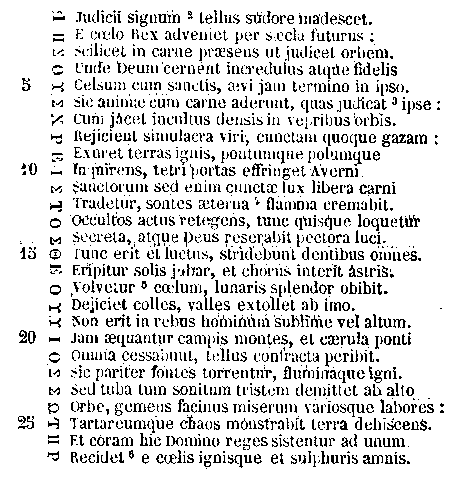

041
PATROLOGIAE CURSUS COMPLETUS
SIVE BIBLIOTHECA UNIVERSALIS, INTEGRA, UNIFORMIS, COMMODA, OECONOMICA, OMNIUM SS. PATRUM, DOCTORUM SCRIPTORUMQUE ECCLESIASTICORUM QUI AB AEVO APOSTOLICO AD INNOCENTII III TEMPORA FLORUERUNT; RECUSIO CHRONOLOGICA OMNIUM QUAE EXSTITERE MONUMENTORUM CATHOLICAE TRADITIONIS PER DUODECIM PRIORA ECCLESIAE SAECULA, JUXTA EDITIONES ACCURATISSIMAS, INTER SE CUMQUE NONNULLIS CODICIBUS MANUSCRIPTIS COLLATAS, PERQUAM DILIGENTER CASTIGATA; DISSERTATIONIBUS, COMMENTARIIS LECTIONIBUSQUE VARIANTIBUS CONTINENTER ILLUSTRATA; OMNIBUS OPERIBUS POST AMPLISSIMAS EDITIONES QUAE TRIBUS NOVISSIMIS SAECULIS DEBENTUR ABSOLUTAS DETECTIS, AUCTA; INDICIBUS PARTICULARIBUS ANALYTICIS, SINGULOS SIVE TOMOS, SIVE AUCTORES ALICUJUS MOMENTI SUBSEQUENTIBUS, DONATA; CAPITULIS INTRA IPSUM TEXTUM RITE DISPOSITIS, NECNON ET TITULIS SINGULARUM PAGINARUM MARGINEM SUPERIOREM DISTINGUENTIBUS SUBJECTAMQUE MATERIAM SIGNIFICANTIBUS, ADORNATA; OPERIBUS CUM DUBIIS TUM APOCRYPHIS, ALIQUA VERO AUCTORITATE IN ORDINE AD TRADITIONEM ECCLESIASTICAM POLLENTIBUS, AMPLIFICATA; DUOBUS INDICIBUS GENERALIBUS LOCUPLETATA: ALTERO SCILICET RERUM, QUO CONSULTO, QUIDQUID UNUSQUISQUE PATRUM IN QUODLIBET THEMA SCRIPSERIT UNO INTUITU CONSPICIATUR; ALTERO SCRIPTURAE SACRAE, EX QUO LECTORI COMPERIRE SIT OBVIUM QUINAM PATRES ET IN QUIBUS OPERUM SUORUM LOCIS SINGULOS SINGULORUM LIBRORUM SCRIPTURAE TEXTUS COMMENTATI SINT. EDITIO ACCURATISSIMA, CAETERISQUE OMNIBUS FACILE ANTEPONENDA, SI PERPENDANTUR: CHARACTERUM NITIDITAS CHARTAE QUALITAS, INTEGRITAS TEXTUS, PERFECTIO CORRECTIONIS, OPERUM RECUSORUM TUM VARIETAS TUM NUMERUS, FORMA VOLUMINUM PERQUAM COMMODA SIBIQUE IN TOTO OPERIS DECURSU CONSTANTER SIMILIS, PRETII EXIGUITAS, PRAESERTIMQUE ISTA COLLECTIO, UNA, METHODICA ET CHRONOLOGICA, SEXCENTORUM FRAGMENTORUM OPUSCULORUMQUE HACTENUS HIC ILLIC SPARSORUM, PRIMUM AUTEM IN NOSTRA BIBLIOTHECA, EX OPERIBUS AD OMNES AETATES, LOCOS, LINGUAS FORMASQUE PERTINENTIBUS, COADUNATORUM.
SERIES PRIMA,
IN QUA PRODEUNT PATRES, DOCTORES SCRIPTORESQUE ECCLESIAE LATINAE A TERTULLIANO AD GREGORIUM MAGNUM. Accurante J.-P. Migne, BIBLIOTHECAE CLERI UNIVERSAE, SIVE CURSUUM COMPLETORUM IN SINGULOS SCIENTIAE ECCLESIASTICAE RAMOS EDITORE.
PATROLOGIAE TOMUS XLI.
TOMUS SEPTIMUS.
1845
SANCTI AURELII
HIPPONENSIS EPISCOPI
OPERA OMNIA,
POST LOVANIENSIUM THEOLOGORUM RECENSIONEM, CASTIGATA DENUO AD MANUSCRIPTOS CODICES GALLICOS, VATICANOS, BELGICOS, ETC., NECNON AD EDITIONES ANTIQUIORES ET CASTIGATIORES, OPERA ET STUDIO MONACHORUM ORDINIS SANCTI BENEDICTI E CONGREGATIONE S. MAURI. Editio novissima, emendata et auctior, ACCURANTE J.-P. MIGNE, BIBLIOTHECAE CLERI UNIVERSAE, SIVE CURSUUM COMPLETORUM IN SINGULOS SCIENTIAE ECCLESIASTICAE RAMOS EDITORE. 16 VOL. PRIX: 86 FR.
TOMUS SEPTIMUS.
1841
DE CIVITATE DEI LIBRI XXII.
Pag. 13-804
AVITI AD PALCHONIUM EPISTOLA, DE RELIQUIIS SANCTI STEPHANI, ET DE LUCIANI EPISTOLA A SE E GRAECO IN LATINUM VERSA.
805
LUCIANI EPISTOLA AD OMNEM ECCLESIAM TOTIUSQUE ORBIS CHRISTIANOS, DE REVELATIONE CORPORIS STEPHANI MARTYRIS.
807
ANASTASII AD LANDULEUM EPISTOLA, DE SCRIPTURA TRANSLATIONIS STEPHANI MARTYRIS.
817
SCRIPTURA DE ALIA DETECTIONE AC TRANSLATIONE SANCTI STEPHANI IN URBEM BYZANTIUM.
Ibid.
SEVERI EPISTOLA AD OMNEM ECCLESIAM, DE VIRTUTIBUS IN MINORICENSI INSULA FACTIS PER RELIQUIAS SANCTI STEPHANI.
821
DE MIRACULIS SANCTI STEPHANI PROTOMARTYRIS LIBRI DUO AD EVODIUM.
833
Praefatio
Postquam dogmatica opera dedimus, quibus Ecclesiam informat Augustinus eruditque ad pietatem; restant edenda deinceps scripta ejus polemica, quae pro Ecclesiae defensione converso in ipsius hostes stilo composuit. Polemicorum autem primo ordine offert sese grande opus contra Paganos, adversarios Christiani nominis primos et prae caeteris magis infensos, qui unius veri Dei cultores aperto bello semper, aut adhibita vi saevitiaque, aut certe odiosis criminationibus sunt persecuti. Idololatrarum enim perpetuum hunc fuisse morem, ut si qua orbi calamitas accidisset, hanc religioni Christianae imputarent, nemo est qui non intelligat ex lectione veterum, Tertulliani, Arnobii, Cypriani, qui olim suo quisque tempore impiorum obtrectationes scriptis apologeticis propulsare pro virili contenderunt. Imperante postea Honorio, cum Romae summam cladem Gothorum exercitus intulisset, recruduerunt infidelium querelae, solitoque acerbius et injuriosius Deo vero obtrectare coeperunt, excidium Urbis in Christianam religionem odiosissime referentes. Nam quia per Imperatorum leges nemini jam colere deos licebat, Romam tutelaribus, quibus conditores illam sui custodiendam crediderant, diis destitutam inevitabili exitio cecidisse, atque ex ipsis haud dubie Christianis, qui in Urbis direptione commune omnium discrimen et captivitatis injurias minime evasissent, totius mali causam ortam esse clamitabant. Tunc ergo zelo domus Dei exardescens Augustinus, animum induxit opus contra blasphemos, De Civitate Dei nuncupatum, conscribere: quo immenso labore quomodo Christianam religionem ulciscatur, et explicat ipse breviter in Retractatione quae operi praefigi solet, et luculentius docent librorum argumenta singulorum, quae hac primum editione per nos in fronte voluminis exhibentur.
Partes operis duas praesertim facit: altera, quae priores decem libros complectitur, Paganis respondens, vetustas illorum opiniones de deorum cultu, quem alii propter hanc vitam, alii propter futuram, esse utilem disputabant, evellit ex animis; altera, utriusque Civitatis, mundi et Dei, quibus universi, Angeli et homines, hac vel illa comprehendimur, exortum, procursum, exitum tandem sive debitos fines exponit.
Maximi momenti opus maxima cura elaboravit pro materiae praestantia et dignitate, proutque virum decebat et summo ingenio praeditum, et omnium scientiarum genere ornatissimum. Nam immane dictu est quanta hic sit rerum varietas, quam profusa eruditio, quam solers et exquisita ratio disserendi: quasi nihil strenuus Civitatis Dei vindex voluerit, neque artis et industriae, neque eruditionis sive sacrae, sive profanae, desiderari his in libris: et quibus re ipsa tanquam e penu refertissimo eruditi disputatores quicumque adversus impios divinae religionis defensionem posthac suscipiunt, opem et copiam sibi petendam putant.
Volumina prima hujus operis non plus tria viderat Macedonius Africae vicarius, cum obstupefactus admiratione rescripsit Augustino: «Miro modo afficior sapientia tua, etc. Nam et illa» quae edidisti «tantum habent acuminis, scientiae, sanctitatis, ut nihil supra sit.» Moxque de iisdem: «Explicui,» ait, «tuos libros; neque enim tam languidi aut inertes erant, ut me aliud quam se curare paterentur: injecerunt manum, ereptumque aliis sollicitudinum causis, suis vinculis illigarunt: ita enim mihi Deus propitius sit, ut ego anceps sim quid in illis magis mirer, sacerdotii perfectionem, philosophiae dogmata, historiae plenam notitiam, an facundiae jucunditatem, quae ita imperitos etiam illicere potest, ut donec explicent non desistant, et cum explicaverint, adhuc requirant. Convicti namque sunt impudenter pertinaces,» etc. (Epist. 154, nn. 1, 2) . Paulus Orosius in praefatione ad Historiarum libros, quos Augustini impulsu confecit, laudat perficiendo adversus Paganos undecimo libro insistentem, «quorum,» inquit, «jam decem orientes radii mox ut de specula ecclesiasticae claritatis elati sunt, toto orbe fulserunt.» Jubet Cassiodorus Senator in libro Institutionum, capite decimo sexto, ut libros de Civitate Dei «infastidibili sedulitate percurramus.» Neque sunt hoc loco praetereundi Francorum reges, Carolus Magnus, qui, teste Eginhardo, «delectabatur libris sancti Augustini, praecipueque his qui de Civitate Dei praetitulati sunt.» De quo poeta Saxonicus, libro quinto Annalium:
Eximium hoc opus Marcellini studio debemus. Quanquam enim Augustinus civitatis coelestis charitate satis adduceretur ad scribendum, fecit tamen etiam provocatus a Marcellino, cujus haec ea de re in epistola ad Augustinum exstat postulatio: «Ego vero ad haec omnia, . . . . . . . . . , libros confici deprecor, Ecclesiae; hoc maxime tempore, incredibiliter profuturos» (Epist. 136, n. 3) . Cui rescribens Augustinus initio quidem significat cupere se de his agere «non librorum negotio, sed epistolari, si potest sat esse, colloquio:» [Col. 0011] postea tamen quam ibi Paganorum quaestiones enodavit, si quid contra moveat, «vel epistolis, vel libris,» ad omnia responsurum se pollicetur (Epist. 137, nn. 1, 20) .
Hanc ad Marcellinum epistolam, in qua de edendis contra Paganos «vel epistolis, vel libris,» adhuc deliberandum relinquit, scripsit anno Christi 412. Quapropter discedere nos Oportet a Baronii opinione, qui hos libros ideo ponit anno 411 inchoatos, quia Romanae claeis, quae anno 410 contigit, occasione prodierunt. Coeptos itaque non arbitramur nisi paulo ante Marcellini caedem, quam anni 413 mense septembri factam observamus in epistola ad Caecilianum (Epist. 151, n. 6, nota a ) : nam et ab exordio secundi libri deinceps ad ipsum, cujus nomini omnes dedicati sunt, Marcellinum nunquam sermo dirigitur. Duos libros, quartum et quintum, in epistola ad Evodium sub anni 415 finem scripta, memorat sanctus Doctor se tribus aliis adjunxisse (Epist. 169, n. 1) , hoc ipso anno 415 inchoatos et perfectos. Undecimum, editis jam ante aliis decem, scribebat circiter annum 416, teste Orosio in praefatione ad Historiarum opus eo fere anno inchoatum. Quarti decimi meminit ipse Augustinus in libro contra Adversarium Legis et Prophetarum primo, quem circa annum 420 edidit. Tandem immensum hoc opus, quo se per aliquot annos detentum dicit, non multo post anni 426 finem absolutum esse probant Retractationes: in quibus, anno certe 426 aut 427 perfectis, libro secundo, capite quadragesimo primo, citatur liber de Civitate Dei postremus. Nec referendum hic quod in eam rem ad caput octavum libri vigesimi secundi adnotamus, necnon in fine libri decimi octavi, ubi Baronii et Coquaei, qui libros de Civitate Dei posteriores non ante annum 429 scriptos putant, sententia discutitur.
De nostro jam labore nihil interest mentionem injicere. Certe quidem haud nos poenitet tam multa exemplaria, quorum Syllabum infra habes, evolvisse ac perlegisse: quippe qui hos libros propter reconditiorem doctrinam, Graecasque ac Romanas antiquitates passim inspersas, collatione veterum codicum indigere prae caeteris, non solum eruditorum admonitione, sed etiam usu nostro ac experientia didicimus. Capitulorum cum argumentis suis distinctionem, quam improbare voluit nonnemo, habent codices ante nongentos annos scripti, et digna est profecto quae Augustini opera aut jussu adjecta credatur ad juvandos lectores, sed absoluto jam opere, quemadmodum in sacris Libris olim factum erat.
Postremo quod ad Commentarios hujus operis attinet, quos virorum prudentum et litteratorum consilio ac auctoritate adducti praeterimus, eos perlustravimus diligenter, et excerptas ex iis in loca difficilia observationes illustriores huc transferendas curavimus.
Syllabus codicum
- Romani bibliothecae Vaticanae codices quinque,
- Parisienses bibliothecae Regiae duo,
- Colbertinae bibliothecae tres,
- Navarrici collegii unus,
- Gervasiani collegii unus,
- Ant. Faure doctoris th. Facultatis Parisiensis unus,
- Germanensis abbatiae duo,
- Remensis Ecclesiae unus,
- Bellovacensis Ecclesiae unus,
- Silvanectensis Ecclesiae unus,
- Suessionensis abbatiae B. Mariae unus,
- Laudunensis abbatiae S. Vincentii unus,
- Rotomagensis abbatiae S. Audoeni unus,
- Emerici Bigot unus,
- Gemmeticensis coenobii unus,
- Beccensis coenobii unus,
- Lyrensis coenobii unus,
- [Col. 0012] S. Michaelis in Periculo maris unus,
- Cisterciensis abbatiae duo,
- Cygirannensis abbatiae unus,
- Corbeiensis abbatiae duo,
- Remigiensis apud Remos abbatiae unus,
- Albinensis apud Andegavos abbatiae unus,
- Vindocinensis abbatiae unus,
- Belgici demum septem, sive lectiones variantes ex iis Lovaniensium Theologorum opera collectae.
- Vind. id est codex Vindelini prelo editus Venetiis anno 1470.
- Am. Liber Joonnis Amerbachii opera excusus Basileae anno 1490.
- Er. Desiderio Erasmo procurante ex Frobeniana apud Basileam officina profectus anno 1529.
- Lov. Volumen juxta Lovaniensium Theologorum recognitionem a Christophoro Plantino impressum Antwerpiae anno 1576.
De civitate Dei
Gloriosissimam civitatem Dei, sive in hoc temporum cursu, cum inter impios peregrinatur ex fide vivens (Habac. II, 4) , sive in illa stabilitate sedis aeternae, quam nunc exspectat per patientiam (Rom. VIII, 25) , quoadusque justitia convertatur in judicium (Psal. XCIII, 15) , deinceps adeptura per excellentiam victoria ultima et pace perfecta, hoc opere a te instituto [Col. 0013] Editiones Vind. Er. Lov. habent, ad te instituto. At Am., id est Amerbachiana editio et plures probae notae Mss., a te instituto. Propositum enim a Marcellino id opus fuerat epist. inter Augustinianas 136, n. 3, ipsique promissum ab Augustino Epistola 138, n. 20, sicuti nunc observavimus in voluminis hujus praefatione. Prosequuntur ex praedictis codicibus nonnulli, et mea ad te promissione debito. , et mea promissione debito, defendere adversus eos qui Conditori ejus deos suos praeferunt, fili charissime Marcelline, suscepi. Magnum opus et arduum: sed Deus adjutor noster est (Psal. LXI, 9) . Nam scio quibus viribus opus sit, ut persuadeatur superbis quanta sit virtus humilitatis, qua fit ut omnia terrena cacumina, temporali mobilitate nutantia, non humano usurpata fastu, sed divina gratia donata celsitudo transcendat. Rex enim et conditor civitatis hujus, de qua loqui instituimus, in Scriptura populis suis [Col. 0013] Sic Mss. Editi autem, populi sui. Sic etiam Corbeiensis 766 M. sententiam divinae legis aperuit, qua dictum est, Deus superbis resistit, humilibus autem dat gratiam (Jacobi IV, 6; et I Petr. V, 5) . Hoc vero quod Dei est, superbae quoque animae spiritus inflatus affectat, amatque sibi in laudibus dici,
Ex hac namque existunt inimici, adversus quos defendenda est Dei civitas: quorum tamen multi, correcto impietatis errore, cives in ea fiunt satis idonei; multi vero in eam tantis exardescunt ignibus odiorum, tamque manifestis beneficiis Redemptoris ejus ingrati sunt, ut hodie contra eam linguas non moverent, nisi ferrum hostile fugientes, in sacratis ejus locis vitam, de qua superbiunt, invenirent. Annon etiam illi Romani Christi nomini infesti sunt, quibus propter Christum Barbari pepercerunt? Testantur hoc martyrum loca et basilicae Apostolorum, quae in illa vastatione Urbis ad se confugientes suos alienosque receperunt [Col. 0014] Orosius, lib. 7, cap. 39, scribit Alaricum capta Urbe praeceptum suis hoc dedisse, «ut si qui in sancta loca, praecipueque ad sanctorum apostolorum Petri et Pauli basilicas confugissent, hos imprimis inviolatos securosque esse sinerent.» . Hucusque cruentus saeviebat inimicus; ibi accipiebat limitem trucidatoris furor: illo ducebantur a miserantibus hostibus quibus etiam extra ipsa loca pepercerant, ne in eos incurrerent, qui similem misericordiam non habebant [Col. 0014] Hanc Barbarorum humanitatem expertae sunt Marcella et filia ejus Principia, quas in sua domo repertas ad basilicam S. Pauli deduxerunt, teste Hieronymo in Epistola 154, ad Principiam. De alia femina ad S. Petri basilicam, ut ejus pudori parceretur, perducta a milite, narrat item Sozomenus, lib. 9, cap. 10. . Qui tamen etiam ipsi alibi truces atque hostili more saevientes, posteaquam ad loca illa veniebant, ubi [Col. 0015] fuerat interdictum, quod alibi jure belli licuisset, tota feriendi refrenabatur immanitas, et captivandi cupiditas frangebatur. Sic evaserunt multi, qui nunc christianis temporibus detrahunt, et mala quae illa civitas pertulit, Christo imputant: bona vero quae in eos, ut viverent, propter Christi honorem facta sunt, non imputant Christo nostro, sed fato suo: cum potius deberent, si quid recti saperent [Col. 0015] Editi, si quid recte saperent. At Mss., recti. , illa, quae ab hostibus aspera et dura perpessi sunt, illi divinae providentiae tribuere, quae solet corruptos hominum mores bellis emendare atque conterere; itemque vitam mortalium justam atque laudabilem talibus afflictionibus exercere, probatamque vel in meliora transferre, vel in his adhuc terris propter usus alios detinere: illud vero, quod eis vel ubicumque, propter Christi nomen, vel in locis Christi nomini dedicatissimis [Col. 0015] Codd. 766, 2050, 2051, 2052, ferunt, dicatissimis. M. et amplissimis, ac pro largiore misericordia ad capacitatem multitudinis electis, praeter bellorum morem truculenti Barbari pepercerunt, hoc tribuere temporibus christianis; hinc Deo gratias agere, hinc ad ejus nomen veraciter currere, ut effugiant poenas ignis aeterni; quod nomen multi eorum mendaciter usurparunt, ut effugerent poenas praesentis exitii. Nam quos vides petulanter et procaciter insultare servis Christi, sunt in eis plurimi qui illum interitum clademque non evasissent, nisi servos Christi se esse finxissent. Et nunc ingrata superbia atque impiissima insania ejus nomini resistunt corde perverso, ut sempiternis tenebris puniantur, ad quod nomen ore vel subdolo confugerunt, ut temporali luce fruerentur.
Tot bella gesta conscripta sunt, vel ante conditam Romam, vel ab ejus exortu et imperio: legant, et proferant sic ab alienigenis aliquam captam esse civitatem, ut hostes qui ceperant, parcerent eis, quos ad deorum suorum templa confugisse compererant; aut aliquem ducem Barbarorum praecepisse [Col. 0015] Augustinum praeterierunt nonnulla hujus rei litteris graecis et latinis consignata exempla. Nam refert Arrianus, lib. 2 de Rebus gestis Alexandri (cap. 24) capta Tyro, iis qui in templum Herculis confugerant, Alexandrom pepercisse. De Agesilao etiam Xenophon in Agesilao (cap. 2) et lib. 4 de Rebus Graecorum (cap. 3) , Plutarchus (cap. 19) et Emilius Probus in Agesilao (cap. 4) narrant ipsum, Atheniensibus et Boeotiis eorumque sociis in Pugna ad Coroneam devictis, noluisse eos laedi qui in Minervae templum se receperant. , ut irrupto oppido nullus feriretur, qui in illo vel illo templo fuisset inventus. Nonne vidit Aeneas Priamum
Ecce qualibus diis Urbem Romani servandam se commendasse [Col. 0016] Plures manuscripti, se commisisse. —Huic lectioni adstipulatur n. 766. M. gaudebant. O nimium miserabilem errorem! Et nobis succensent, cum de diis eorum talia dicimus, nec succensent auctoribus suis, quos ut ediscerent, mercedem dederunt; doctoresque ipsos insuper et salario publico et honoribus dignissimos habuerunt. Nempe apud Virgilium, quem propterea parvuli legunt, ut videlicet poeta magnus omniumque praeclarissimus atque optimus teneris ebibitus animis [Col. 0016] In B., teneris ebibitus annis. Saniores nostri Mss. omnes habent, animis. M. non facile oblivione possit aboleri; secundum illud Horatii,
Ipsa, ut dixi, Troja, mater populi Romani [Col. 0017] Sallustius, cap. 6 libri de Conjuratione Catilinae: «Urbem Romam, sicuti ego accepi, condidere atque habuere «initio Trojani, qui Aenea duce profugi incertis sedibus vagabantur. , sacratis in locis deorum suorum munire non potuit cives suos ab ignibus ferroque Graecorum, eosdem ipsos deos colentium: quin etiam,
Quem morem etiam Caesar [Col. 0018] Vind. Er. et Mss. Gallicani ac Romani, Cato. Sed quia verba nunc laudata ab Augustino Caesaris sunt apud Sallustium, non Catonis, ideo in Amerbachiana editione, quam hic secuti sunt Lovanienses, interpretibus hujus operis Valoisio et Trivetho emendare visum est, Caesar: tametsi libri, ut ipsi observant, communiter haberent, Cato. Quid si in eo Augustinus, quod eruditis nonnunquam contingit, memoria lapsus est, aut Sallustio usus vario sive mendoso?—N. 766, Cato. M. (sicut scribit Sallustius, nobilitatae [Col. 0018] In B., nobilitate. Sic etiam codices nostri, corrupte. Plerique editi ferunt, nobilitatae; quae lectio certe vera est. M. veritatis historicus) sententia sua, quam de conjuratis in senatu habuit, commemorare non praetermittit: «Rapi virgines, pueros; divelli liberos a parentum complexu, matres familiarum pati quae victoribus collibuisset [Col. 0018] Lov., collibuissent: male et dissentientibus caeteris libris. , fana atque domos spoliari, caedem, incendia fieri; postremo armis, cadaveribus, cruore atque luctu omnia repleri» (Sallust. de Conjuratione Catilinae, cap. 51) . Hic si fana tacuisset, deorum sedibus solere hostes parcere putaremus. Et haec non ab alienigenis hostibus, sed a Catilina et sociis ejus, nobilissimis senatoribus et Romanis civibus, Romana templa metuebant. Sed hi videlicet perditi et patriae parricidae.
Quid ergo per multas gentes, quae inter se bella gesserunt et nusquam victis in deorum suorum sedibus pepercerunt, noster sermo discurrat? Romanos ipsos videamus: ipsos, inquam, recolamus respiciamusque [Col. 0019] Romanos, de quorum praecipua laude dictum est,
Quidquid ergo vastationis, trucidationis, depraedationis, concremationis, afflictionis, in ista recentissima Romana clade commissum est, fecit hoc consuetudo bellorum. Quod autem more novo factum est, quod inusitata rerum [Col. 0019] Vox, rerum, abest a vetere codice libro Silvanectensi. facie immanitas barbara tam [Col. 0020] mitis apparuit, ut amplissimae basilicae implendae populo cui parceretur, eligerentur et decernerentur, ubi nemo feriretur, unde nemo raperetur, quo liberandi multi a miserantibus hostibus ducerentur, unde captivandi ulli [Col. 0020] Vind. Er. et Lov., nulli. Verius Am. et Mss., ulli. —Cod. 2050, nulli. M. nec a crudelibus hostibus abducerentur; hoc Christi nomini, hoc christiano tempori tribuendum quisquis non videt, caecus; quisquis videt, nec laudat, ingratus; quisquis laudanti reluctatur, insanus est. Absit ut prudens quisquam hoc feritati imputet Barbarorum. Truculentissimas et saevissimas mentes ille terruit, ille frenavit, ille mirabiliter temperavit, qui per prophetam tanto ante praedixit: Visitabo in virga iniquitates eorum, et in flagellis peccata eorum; misericordiam autem meam non dispergam ab eis (Psal. LXXXVIII, 33, 34) .
1. Dicet aliquis: Cur ergo ista divina misericordia etiam ad impios ingratosque pervenit? Cur, putamus, nisi quia eam ille praebuit, qui quotidie facit oriri solem suum super bonos et malos, et pluit super justos et injustos (Matth. V, 45) ? Quamvis enim quidam eorum ista cogitantes, poenitendo ab impietate se corrigant; quidam vero, sicut Apostolus dicit, divitias bonitatis et longanimitatis Dei contemnentes, secundum duritiam cordis sui et cor impoenitens thesaurizent sibi iram in die irae et revelationis justi judicii Dei, qui reddet unicuique secundum opera ejus (Rom. II, 4, 6) : tamen patientia Dei ad poenitentiam invitat malos, sicut flagellum Dei ad patientiam erudit bonos. Itemque misericordia Dei fovendos amplectitur bonos, sicut severitas Dei puniendos corripit malos. Placuit quippe divinae providentiae praeparare in posterum bona justis, quibus non fruentur injusti; et mala impiis, quibus non excruciabuntur boni. Ista vero temporalia bona et mala utrisque voluit esse communia: ut nec bona cupidius appetantur, quae mali quoque habere cernuntur; nec mala turpiter evitentur, quibus et boni plerumque afficiuntur.
2. Interest autem plurimum, qualis sit usus vel earum rerum quae prosperae, vel earum quae dicuntur adversae. Nam bonus temporalibus nec bonis extollitur, nec malis frangitur; malus autem ideo hujuscemodi infelicitate punitur, quia felicitate corrumpitur. Ostendit tamen Deus saepe etiam in his distribuendis evidentius operationem suam. Nam si nunc omne peccatum manifesta plecteret poena [Col. 0020] Lov., plecteretur poena. Caeteri codices, plecteret poena: supple, divinitas. , nihil ultimo judicio servari putaretur: rursus, si nullum peccatum nunc puniret aperte Divinitas, nulla es e providentia divina crederetur. Similiter in rebus secundis, si non eas Deus quibusdam petentibus evidentissima largitate concederet, non ad eum ista pertinere diceremus: itemque si omnibus eas petentibus daret, nonnisi propter talia praemia serviendum illi esse arbitraremur; nec pios nos faceret talis servitus, [Col. 0021] sed potius cupidos et avaros. Haec cum ita sint, quicumque boni et mali pariter afflicti sunt, non ideo ipsi distincti non sunt, quia distinctum non est quod utrique perpessi sunt. Manet enim dissimilitudo passorum etiam in similitudine passionum; et licet sub eodem tormento, non est idem virtus et vitium. Nam sicut sub uno igne aurum rutilat, palea fumat; et sub eadem tribula stipulae comminuuntur, frumenta purgantur; nec ideo cum oleo amurca confunditur, quia eodem preli pondere exprimitur: ita una eademque vis irruens bonos probat, purificat, eliquat; malos damnat, vastat, exterminat. Unde in eadem afflictione mali Deum detestantur atque blasphemant; boni autem precantur et laudant. Tantum interest, non qualia, sed qualis quisque patiatur. Nam pari motu exagitatum et exhalat horribiliter coenum, et suaviter fragrat unguentum.
1. Quid igitur in illa rerum vastitate [Col. 0021] Plures Mss., vastatione. —Corbeiensis 766 cum aliis probatioribus, vastitate. M. Christiani passi sunt, quod non eis magis fideliter ista considerantibus ad profectum valeret? Primo, quod ipsa peccata, quibus Deus indignatus implevit tantis calamitatibus mundum, humiliter cogitantes, quamvis longe absint a facinorosis, flagitiosis atque impiis, tamen non usque adeo se a delictis deputant alienos, ut nec temporalia pro eis mala perpeti se judicent dignos [Col. 0021] Lov., indignos: reluctante sensu et caeteris libris. . Excepto enim quod unusquisque, quamlibet laudabiliter vivens, cedit in quibusdam carnali concupiscentiae, etsi non ad facinorum immanitatem et gurgitem flagitiorum atque impietatis abominationem, ad aliqua tamen peccata vel rara vel tanto crebriora, quanto minora: hoc ergo excepto, quis tandem facile reperitur, qui eosdem ipsos, propter quorum horrendam superbiam, luxuriam et avaritiam, atque exsecrabiles iniquitates et impietates, Deus, sicut minando praedixit, conterit terras (Isai. XXIV, et alibi) , sic habeat, ut habendi sunt? sic cum eis vivat, ut cum talibus est vivendum? Plerumque enim ab eis docendis, admonendis, aliquando etiam objurgandis et corripiendis male dissimulatur; vel cum laboris piget, vel cum eorum os coram [Col. 0021] Nonnulli codices omittunt, coram. verecundamur offendere; vel cum inimicitias devitamus, ne impediant et noceant in istis temporalibus rebus, sive quas adipisci adhuc appetit nostra cupiditas, sive quas amittere formidat infirmitas: ita ut, quamvis bonis vita malorum displiceat, et ideo cum eis non incidant in illam damnationem, quae post hanc vitam talibus praeparatur; tamen quia propterea peccatis eorum damnabilibus parcunt, dum eos in suis licet levibus et venialibus metuunt, jure cum eis temporaliter flagellentur, quamvis in aeternum minime puniantur. Jure istam vitam, quando divinitus affliguntur cum eis, amaram sentiunt, cujus amando dulcedinem peccantibus eis amari esse noluerunt.
[Col. 0022] 2. Nam si propterea quisque objurgandis et corripiendis male agentibus parcit, quia opportunius tempus inquirit, vel eisdem ipsis metuit, ne deteriores ex hoc efficiantur, vel ad bonam vitam et piam erudiendos impediant alios infirmos, et premant atque avertant a fide; non videtur esse cupiditatis occasio, sed consilium charitatis. Illud est culpabile, quod hi, qui dissimiliter vivunt et a malorum factis abhorrent, parcunt tamen peccatis alienis, quae dedocere aut objurgare deberent, dum eorum offensiones cavent, ne sibi noceant in his rebus, quibus licite boni atque innocentes utuntur, sed cupidius quam oportebat eos, qui in hoc mundo peregrinantur et spem supernae patriae prae se gerunt. Non solum quippe infirmiores, vitam ducentes conjugalem, filios habentes vel habere quaerentes, domos ac familias possidentes (quos Apostolus in Ecclesiis alloquitur, docens et monens quemadmodum vivere debeant et uxores cum maritis, et mariti cum uxoribus, et filii cum parentibus, et parentes cum filiis, et servi cum dominis, et domini cum servis [Coloss. III, 18 22] ), multa temporalia, multa terrena libenter adipiscuntur et moleste amittunt, propter quae non audent offendere homines, quorum sibi vita contaminatissima et consceleratissima displicet: verum etiam hi, qui superiorem vitae gradum tenent, nec conjugalibus vinculis irretiti sunt, et victu parvo ac tegumento utuntur [Col. 0022] Vetustissimus codex Corbeiensis, ac tegimento utuntur. , plerumque suae famae ac saluti consulentes [Col. 0022] Verbum consulentes, abest ab Am. Er. ac Mss. Potest illaeso sensu deleri, ut quod proxime sequitur, dum insidias atque impetus malorum timent, referatur ad praecedentia verba, fantae scilicet, ac saluti. , dum insidias atque impetus malorum timent, ab eorum reprehensione sese abstinent. Et quamvis non in tantum eos metuant, ut ad similia perpetranda quibuslibet eorum terroribus atque improbitatibus cedant; ea ipsa tamen, quae cum eis non perpetrant, nolunt plerumque corripere, cum fortasse possint aliquos corripiendo corrigere; ne, si non potuerint, sua salus ac fama in periculum exitiumque perveniat: nec ea consideratione, qua suam famam ac salutem vident esse necessariam utilitati erudiendorum hominum; sed ea potius infirmitate, qua delectat lingua blandiens et humanus dies (I Cor. IV, 3) , et reformidatur vulgi judicium et carnis excruciatio vel peremptio; hoc est, propter quaedam cupiditatis vincula, non propter officia charitatis.
3. Non mihi itaque videtur haec parva esse causa, quare cum malis flagellentur et boni, quando Deo placet perditos mores etiam temporalium poenarum afflictione punire. Flagellantur enim simul, non quia simul agunt malam vitam, sed quia simul amant temporalem vitam; non quidem aequaliter, sed tamen simul: quam boni contemnere deberent, ut illi correpti atque correcti consequerentur aeternam; ad quam consequendam si nollent esse socii, ferrentur et diligerentur inimici: quia, donec vivunt, semper incertum est utrum voluntatem sint in melius mutaturi. Qua in re non utique parem, sed longe graviorem habent [Col. 0023] causam, quibus per prophetam dicitur, Ille quidem in suo peccato morietur, sanguinem autem ejus de manu speculatoris requiram (Ezech. XXXIII, 6) . Ad hoc enim speculatores [Col. 0023] Speculatoris vocabulo exacte translatum est graecum episcopos, quod pluribus probat L. Vives. , hoc est populorum praepositi, constituti sunt in Ecclesiis, ut non parcant objurgando peccata. Nec ideo tamen ab hujuscemodi culpa penitus alienus est, qui, licet praepositus non sit, in eis tamen quibus vitae hujus necessitate conjungitur, multa monenda vel arguenda novit, et negligit, devitans eorum offensiones, propter illa quibus in hac vita non indebitis utitur, sed plus quam debuit delectatur. Deinde habent aliam causam boni, quare temporalibus affligantur malis; qualem habuit Job: ut sibi ipse humanus animus sit probatus et cognitus, quanta virtute pietatis gratis Deum diligat [Col. 0023] S. Chrysostomus in Homil. 1 ad populum Antiochenum octo causas enumerat variae et omnimodae sanctorum afflictionis in hoc mundo, quas sigillatim ex Scripturis confirmat. COQUAEUS. .
1. Quibus recte consideratis atque perspectis, attende utrum aliquid mali acciderit fidelibus et piis, quod eis non in bonum verteretur: nisi forte putandum est apostolicam illam vacare sententiam, ubi ait, Scimus quia diligentibus Deum omnia cooperantur [Col. 0023] Vetustissimus Corbeiensis liber, cooperatur. in bonum (Rom. VIII, 28) .
[CAPUT X.] Amiserunt omnia quae habebant. Numquid fidem? numquid pietatem? numquid interioris hominis bona, qui est ante Deum dives (I Petr. III, 4) ? Hae sunt opes Christianorum, quibus opulentus dicebat Apostolus: Est autem quaestus magnus pietas cum sufficientia. Nihil enim intulimus in hunc mundum, sed nec auferre aliquid possumus: habentes autem victum et tegumentum, his contenti simus. Nam qui volunt divites fieri, incidunt in tentationem et laqueum, et desideria multa stulta et noxia, quae mergunt homines in interitum et perditionem. Radix est enim omnium malorum avaritia [Col. 0023] Apud Paulum, philarguria. Vulgata, cupiditas. : quam quidam appetentes, a fide pererraverunt, et inseruerunt se doloribus multis (I Tim. VI, 6-10) .
2. Quibus ergo terrenae divitiae in [Col. 0023] Vind. Am. et Lov. omittunt, in. illa vastatione perierunt, si eas sic habebant, quemadmodum ab isto foris paupere, intus divite audierant; id est, si mundo utebantur, tanquam non utentes (I Cor. VII, 31) : potuerunt dicere, quod ille graviter tentatus et minime superatus: Nudus exivi de utero matris meae, nudus revertar in terram. Dominus dedit, Dominus abstulit; sicut Domino placuit, ita factum est: sit nomen Domini benedictum (Job I, 21) : ut bonus servus magnas facultates haberet ipsam sui Domini voluntatem, cui pedissequus mente ditesceret, nec constristaretur eis rebus vivens relictus [Col. 0023] Sic Mss. At editi, relictis: minus integra illa antithesi, quae Augustino placuit, horum verborum, vivens relictus; et, moriens relicturus. —Codd. 766 et 2051 ferunt, relictus, dum codd. inferioris notae nn. 2052 et 2053 habent, relictis. M. , quas cito fuerat moriens relicturus. [Col. 0024] Illi autem infirmiores, qui terrenis his bonis, quamvis ea non praeponerent Christo, aliquantula tamen cupiditate cohaerebant; quantum haec amando peccaverint, perdendo senserunt. Tantum quippe doluerunt, quantum se doloribus inseruerant; sicut Apostolum dixisse supra commemoravi. Oportebat enim ut eis adderetur etiam experimentorum disciplina, a quibus fuerat tam diu neglecta verborum. Nam cum dixit Apostolus, Qui volunt divites fieri, incidunt in tentationem, et caetera; profecto in divitiis cupiditatem reprehendit, non facultatem: qui [Col. 0024] Vind. Am. Er., quam. Sic etiam habent manuscripti, excepto uno et altero, in quibus legitur, de qua. —Ms. 766, quam. M. praecepit alibi, dicens, Praecipe divitibus hujus mundi, non superbe sapere, neque sperare in incerto divitiarum [Col. 0024] In editis additur, suarum; quod abest a manuscriptis. ; sed in Deo vivo, qui praestat nobis omnia abundanter ad fruendum; bene faciant, divites sint in operibus bonis, facile tribuant, communicent, thesaurizent sibi fundamentum bonum in futurum, ut apprehendant veram vitam (I Tim. VI, 17-19) . Haec qui de suis faciebant divitiis, magnis sunt lucris levia damna solati; plusque laetati ex his, quae facile tribuendo tutius servaverunt, quam contristati ex his, quae timide retinendo facilius amiserunt. Hoc enim potuit in terra perire, quod piguit inde transferre. Nam qui receperunt consilium Domini sui, dicentis, Nolite condere vobis thesauros in terra, ubi tinea et rubigo exterminant, et ubi fures effodiunt et furantur; sed thesaurizate vobis thesauros in coelo, quo fur non accedit, neque tinea corrumpit: ubi enim est thesaurus tuus, ibi erit et cor tuum (Matth. VI, 19-21) ; tribulationis tempore probaverunt quam recte sapuerint, non contemnendo veracissimum praeceptorem et thesauri sui fidelissimum invictissimumque custodem. Nam si multi sunt gavisi, ibi se habuisse divitias suas, quo contigit ut hostis non accederet; quanto certius et securius gaudere potuerunt qui monitu Dei sui illuc migraverant, quo accedere [Col. 0024] Editi, accedi. At Mss., accedere. omnino non posset? Unde Paulinus noster, Nolensis episcopus, ex opulentissimo divite voluntate pauperrimus et copiosissime sanctus, quando et ipsam Nolam Barbari vastaverunt [Col. 0024] Gothi nimirum sub Alarico post direptam Urbem per Latium, Volscos, Campaniam, et alias Italiae provincias effusi, Nolam ipsam Campaniae civitatem diruerunt. , cum ab eis teneretur, sic in corde suo, ut ab eo postea cognovimus, precabatur: Domine, non excrucier propter aurum et argentum; ubi enim sint omnia mea, tu scis. Ibi enim habebat omnia sua, ubi eum condere et thesaurizare ille monstraverat [Col. 0024] Lov. et codices nostri, excepto 766, legunt, monuerat. Ms. 766 et plerique editi, monstraverat. M. , qui et haec mala mundo ventura praedixerat. Ac per hoc qui Domino suo monenti obedierant, ubi et quomodo thesaurizare deberent, nec ipsas terrenas divitias Barbaris incursantibus amiserunt: quos autem non obedisse poenituit, quid de talibus rebus faciendum esset, si non praecedente sapientia, certe consequente experientia didicerunt.
[Col. 0025] 3. At enim quidam boni etiam Christiani tormentis excruciati sunt, ut bona sua hostibus proderent. Illi vero nec prodere, nec perdere potuerunt bonum, quo et ipsi boni erant. Si autem torqueri, quam mammona iniquitatis prodere maluerunt, boni non erant. Admonendi autem fuerant, qui tanta patiebantur pro auro, quanta essent sustinenda pro Christo: ut eum potius diligere discerent, qui pro se passos aeterna felicitate ditaret; non aurum et argentum, pro quo pati miserrimum fuit, seu mentiendo occultaretur, seu verum dicendo proderetur. Namque inter tormenta nemo Christum confitendo amisit: nemo aurum, nisi negando, servavit. Quocirca utiliora erant fortasse tormenta, quae bonum incorruptibile amandum docebant, quam illa bona, quae sine ullo utili fructu dominos sui amore torquebant. Sed quidam etiam non habentes quod proderent, dum non creduntur, torti sunt. Et hi forte habere cupiebant, nec sancta voluntate pauperes erant: quibus demonstrandum fuit, non facultates, sed ipsas cupiditates talibus esse dignas cruciatibus. Si vero melioris vitae proposito reconditum aurum argentumque non habebant, nescio quidem utrum cuiquam talium acciderit, ut dum habere creditur, torqueretur: verumtamen etiamsi accidit, profecto qui inter illa tormenta paupertatem sanctam confitebatur, Christum confitebatur. Quapropter etsi non meruit ab hostibus credi, non potuit tamen sanctae paupertatis confessor sine coelesti mercede torqueri.
4. [XI.] Multos, inquiunt, etiam Christianos fames diuturna vastavit. Hoc quoque in usus suos boni fideles pie tolerando verterunt. Quos enim fames necavit, malis vitae hujus, sicut corporis morbus, eripuit: quos autem non necavit, docuit parcius vivere, docuit productius jejunare.
Sed enim multi etiam Christiani interfecti sunt, multi multarum mortium foeda varietate consumpti. Hoc si aegre ferendum est, omnibus qui in hanc vitam procreati sunt, utique commune est. Hoc scio, neminem fuisse mortuum, qui non fuerat aliquando moriturus. Finis autem vitae tam longam quam brevem vitam hoc idem facit. Neque enim aliud melius, et aliud deterius; aut aliud majus, et aliud brevius est, quod jam pariter non est. Quid autem interest, quo mortis genere vita ista finiatur, quando ille cui finitur, iterum mori non cogitur? Cum autem unicuique mortalium sub quotidianis vitae hujus casibus innumerabiles mortes quodammodo comminentur, quamdiu incertum est, quaenam earum ventura sit; quaero utrum satius sit, unam perpeti moriendo, an omnes timere vivendo. Nec ignoro quam inertius [Col. 0025] Callicani et Romani Mss., citius. eligatur diu vivere sub timore tot mortium, quam semel moriendo nullam deinceps formidare. Sed aliud est quod carnis sensus infirmiter pavidus refugit, aliud quod mentis ratio diligenter enucleata convincit Mala mors putanda non est, quam bona vita [Col. 0026] praecesserit: neque enim facit malam mortem, nisi quod sequitur mortem. Non itaque multum curandum est eis, qui necessario morituri sunt, quid accidat ut moriantur; sed moriendo quo ire cogantur. Cum igitur Christiani noverint longe meliorem fuisse religiosi pauperis mortem inter lingentium canum linguas, quam impii divitis in purpura et bysso (Luc. XVI, 19-31) ; horrenda illa genera mortium quid mortuis obfuerunt, qui bene vixerunt.
1. At enim in tanta strage cadaverum nec sepeliri potuerunt. Neque istud pia fides nimium reformidat, tenens praedictum, nec absumentes bestias resurrecturis corporibus obfuturas, quorum capillus capitis non peribit (Id. XXI, 18) . Nullo modo diceret Veritas, Nolite timere eos qui corpus occidunt, animam autem non possunt occidere (Matth. X, 28) ; si quidquam obesset futurae vitae, quidquid inimici de corporibus occisorum facere voluissent. Nisi forte quispiam sic absurdus est, ut contendat eos, qui corpus occidunt, non debere timeri ante mortem, ne corpus occidant, et timeri debere post mortem, ne corpus occisum sepeliri non sinant. Falsum est ergo quod ait Christus, Qui corpus occidunt, et postea non habent quid faciant (Luc. XII, 4) ; si habent tanta, quae de cadaveribus faciant. Absit ut falsum sit quod Veritas dixit. Dictum est enim aliquid eos facere cum occidunt, quia in corpore sensus est occidendo; postea vero nihil habere quod faciant, quia nullus sensus est in corpore occiso. Multa itaque corpora Christianorum terra non texit: sed nullum eorum quisquam a coelo et terra separavit, quam totam implet praesentia sui, qui novit unde resuscitet quod creavit. Dicitur quidem in Psalmo, Posuerunt mortalia servorum tuorum escas volatilibus coeli, carnes sanctorum tuorum bestiis terrae: effuderunt sanguinem eorum, sicut aquam in circuitu Jerusalem, et non erat qui sepeliret (Psal. LXXVIII, 2, 3) : sed magis ad exaggerandam crudelitatem eorum qui ista fecerunt, non ad eorum infelicitatem qui ista perpessi sunt. Quamvis enim haec in conspectu hominum dura et dira videantur; sed pretiosa in conspectu Domini mors sanctorum ejus (Psal. CXV, 15) . Proinde omnia ista, id est, curatio funeris, conditio sepulturae, pompa exsequiarum [Col. 0026] Sola editio Lov., pompae exsequiarum. , magis sunt vivorum solatia, quam subsidia mortuorum. Si aliquid prodest impio sepultura pretiosa, oberit pio vilis aut nulla. Praeclaras exsequias in conspectu hominum exhibuit purpurato illi diviti turba famulorum: sed multo clariores in conspectu Domini ulceroso illi pauperi ministerium praebuit Angelorum, qui eum non extulerunt in marmoreum tumulum, sed in Abrahae gremium sustulerunt.
2. Rident haec illi, contra quos defendendam suscepimus civitatem Dei. Verumtamen sepulturae curam [Col. 0027] etiam eorum philosophi contempserunt [Col. 0027] Ut Diogenes Cynicus, Anaxagoras, Theodorus Cyrenaeus, et alii. Vide Senecam, lib. de Tranquillitate animi, cap. 14, et Epist. 92; Ciceronem in prima Tuscul. Quaest. lib. 1, cap. 42 et seqq. : et saepe universi exercitus, dum pro terrena patria morerentur, ubi postea jacerent, vel quibus bestiis esca fierent, non curarunt: licuitque de hac re poetis plausibiliter dicere:
Nec ideo tamen contemnenda et abjicienda sunt corpora defunctorum, maximeque justorum atque fidelium, quibus tanquam organis et vasis ad omnia bona opera sanctus usus est Spiritus. [Col. 0027] Plerique et melioris notae Mss., sancte usus est spiritus: id est, ipse justorum animus sancto corporum usu opera bona edidit. Si enim paterna vestis et annulus, ac si quid hujusmodi, tanto charius est posteris, quanto erga parentes major affectus; nullo modo ipsa spernenda sunt corpora, quae utique multo familiarius atque conjunctius, quam quaelibet indumenta, gestamus. Haec enim non ad ornamentum vel adjutorium, quod adhibetur extrinsecus, sed ad ipsam naturam hominis pertinent. Unde et antiquorum justorum funera officiosa pietate curata sunt, et exsequiae celebratae, et sepultura provisa (Gen. XXV, 9; XXXV, 29; L, 2-13, etc.) : ipsique dum viverent, de sepeliendis, vel etiam transferendis suis corporibus filiis mandaverunt (Id. XLVII, 29, 30; L, 24) : et Tobias sepeliendo mortuos Deum promeruisse, teste angelo, commendatur (Tob. II, 9; XII, 12) . Ipse quoque Dominus die tertio resurrecturus, religiosae mulieris bonum opus praedicat, praedicandumque commendat, quod unguentum pretiosum super membra ejus effuderit, atque hoc ad eum sepeliendum fecerit (Matth. XXVI, 10-13) . Et laudabiliter commemorantur in Evangelio qui corpus ejus de cruce acceptum diligenter atque honorifice tegendum, sepeliendumque curarunt (Joan. XIX, 38-42) . Verum istae auctoritates non hoc admonent [Col. 0027] Veteres quidam libri probae notae, non ad hoc admonent. —Ms. 766, non hoc admonent, praetermissa vocula, ad. M. , quod insit ullus cadaveribus sensus; sed ad Dei providentiam, cui placent etiam talia pietatis officia, corpora quoque mortuorum pertinere significant, propter fidem resurrectionis astruendam. Ubi et illud salubriter discitur, quanta possit esse remuneratio pro eleemosynis, quas viventibus et sentientibus exhibemus, si neque hoc apud Deum perit, quod exanimis hominum membris officii diligentiaeque persolvitur. Sunt [Col. 0028] quidem et alia, quae sancti Patriarchae de corporibus suis vel condendis vel transferendis prophetico spiritu dicta intelligi voluerunt: non autem hic locus est, ut ea pertractemus, cum sufficiant ista quae diximus. Sed si ea quae sustentandis viventibus sunt necessaria, sicut victus et amictus, quamvis cum gravi afflictione desint, non frangunt in bonis perferendi tolerandique virtutem, nec cradicant ex animo pietatem, sed exercitatam faciunt fecundiorem: quanto magis, cum desunt ea quae curandis funeribus condendisque corporibus defunctorum adhiberi solent, non efficiunt miseros in occultis piorum sedibus jam quietos? Ac per hoc, quando ista cadaveribus Christianorum in illa magnae urbis, vel etiam aliorum oppidorum vastatione defuerunt; nec vivorum culpa est, qui non potuerunt ista praebere, nec poena mortuorum, qui non possunt ista sentire.
Sed multi, inquiunt, Christiani etiam captivi ducti sunt. Hoc sane miserrimum est, si aliquo duci potuerunt, ubi Deum suum non invenerunt. Sunt in Scripturis sanctis hujus etiam cladis magna solatia. Fuerunt in captivitate tres pueri, fuit Daniel, fuerunt alii prophetae: nec Deus defuit consolator. Sic ergo non deseruit fideles suos sub dominatione gentis, licet barbarae, tamen humanae, qui prophetam non deseruit nec in visceribus belluae (Jonae II) . Haec quoque illi, cum quibus agimus, malunt irridere, quam credere: qui tamen in suis litteris credunt Arionem Methymnaeum, nobilissimum citharistam, cum esset dejectus e navi, exceptum delphini dorso, et ad terras esse pervectum [Col. 0028] Arionis ex Methymna, Lesbi insulae oppido, citharoedi fabulam scripsit Herodotus libro Musarum primo, capp. 23, 24. Hinc Ovidius in Fastis, libro 2, vers. 80 et seqq. A. Gellius, lib. 16, cap. 19. . Verum illud nostrum de Jona propheta incredibilius est. Plane incredibilius, quia mirabilius; et mirabilius, quia potentius.
1. Habent tamen isti de captivitate religionis causa etiam sponte toleranda et in suis praeclaris viris nobilissimum exemplum. Marcus Attilius Regulus, imperator populi Romani, captivus apud Carthaginenses fuit [Col. 0028] Cognomen, Attilius, abest a Viad. et a Mss. Hanc Marci Reguli historiam, qui primo Punico bello consul cum L. Manlio Volsone creatus, exercitum in Africam Romanorum primus trajecit, et ab hostibus captus est, referunt A. Gellius, lib. 6, cap. 4; Appianus, de Bellis Punicis, cap. 4, Polybius lib. 1, cap. 29, et alii permulti. . Qui cum sibi mallent a Romanis suos reddi, quam eorum tenere captivos, ad hoc impetrandum etiam istum praecipue Regulum cum legatis suis Romam miserunt, prius juratione constrictum, si quod volebant minime peregisset, rediturum esse Carthaginem. Perrexit ille, atque in senatu contraria persuasit, quoniam non arbitrabatur utile esse Romanae [Col. 0029] reipublicae mutare captivos. Nec post hanc persuasionem a suis ad hostes redire compulsus est; sed quod juraverat [Col. 0029] Vind. Am. Er. et nostri omnes Mss., sed quia juraverat. , id sponte complevit. At illi eum excogitatis atque horrendis cruciatibus necaverunt. Inclusum quippe angusto ligno, ubi stare cogeretur, clavisque acutissimis undique confixo, ut se in nullam ejus partem sine poenis atrocissimis inclinaret, etiam vigilando peremerunt [Col. 0029] Libri nonnulli, etiam jugulando peremerunt: sed male. Huc pertinet illud Ciceronis, Oratione in Pisonem, cap. 19: «Marcum Attilium Regulum Carthaginenses resectis palpebris illigatum in machina vigilando peremerunt.» Non multo aliter Valerius Maximus, lib. 9, cap. 2, ext. 1. . Merito certe laudant virtutem tam magna infelicitate majorem. Et per deos ille juraverat, quorum cultu [Col. 0029] Vind. Am. et Lov., quorum pro cultu prohibito. Abest, pro, ab Er. et a plerisque manuscriptis. prohibito, has generi humano clades isti opinantur infligi. Qui ergo propterea colebantur, ut istam vitam prosperam redderent, si verum juranti has irrogari poenas seu voluerunt, seu permiserunt, quid perjuro gravius irati facere potuerunt? Sed cur non ratiocinationem meam potius ad utrumque concludam? Deos certe sic ille coluit, ut propter jurisjurandi fidem nec remaneret in patria, nec inde quolibet ire, sed ad suos acerrimos inimicos redire minime dubitaret. Hoc si huic vitae utile existimabat, cujus tam horrendum exitum meruit, procul dubio fallebatur. Suo quippe docuit exemplo, nihil deos ad istam temporalem felicitatem suis prodesse cultoribus: quandoquidem ille eorum deditus cultui, et victus et captivus abductus, et quia noluit aliter quam per eos juraverat facere, novo ac prius inaudito nimiumque horribili supplicii genere cruciatus exstinctus est. Si autem deorum cultus post hanc vitam velut mercedem reddit felicitatem, cur calumniantur temporibus christianis, ideo dicentes Urbi accidisse illam calamitatem, quia deos suos colere destitit, cum potuerit etiam illos diligentissime colens tam infelix fieri, quam ille Regulus fuit? Nisi forte contra clarissimam veritatem tanta quisquam dementia mirae caecitatis obnititur, ut contendere audeat universam civitatem deos colentem infelicem esse non posse, unum vero hominem posse; quod videlicet potentia deorum suorum multos potius sit idonea conservare, quam singulos; cum multitudo constet ex singulis.
2. Si autem dicunt M. Regulum etiam in illa captivitate illisque cruciatibus corporis, animi virtute beatum esse potuisse; virtus potius vera quaeratur, qua beata possit esse et civitas. Neque enim aliunde beata civitas, aliunde homo: cum aliud civitas non sit, quam concors [Col. 0029] Nonnulli codices, consors. hominum multitudo. Quamobrem nondum interim disputo, qualis in Regulo virtus fuerit: sufficit nunc, quod isto nobilissimo exemplo coguntur fateri, non propter corporis bona, vel earum rerum quae extrinsecus homini accidunt, colendos deos; quandoquidem ille carere his omnibus maluit, quam deos per quos juravit offendere. Sed quid faciamus [Col. 0030] hominibus qui gloriantur talem se habuisse civem, qualem timent habere civitatem? Quod si non timent, tale ergo aliquid, quale accidit Regulo, etiam civitati tam diligenter, quam ille, deos colenti accidere potuisse fateantur, et christianis temporibus non calumnientur. Verum quia de illis Christianis orta quaestio est, qui etiam captivi ducti sunt [Col. 0030] Plures Mss., qui etiam captivati sunt. —Sic nostri Mss. M. ; hoc intueantur et taceant, qui saluberrimae religioni hinc impudenter atque imprudenter illudunt: quia si diis eorum probro non fuit, quod attentissimus cultor illorum, dum eis jurisjurandi fidem servaret, patria carnit, cum aliam non haberet, captivusque apud hostes per longam mortem supplicio [Col. 0030] Lov., longa morte et supplicio; dissentientibus editis aliis et manuscriptis. novae crudelitatis occisus est: multo minus nomen criminandum est christianum in captivitate sacratorum suorum, qui supernam patriam veraci fide expectantes, etiam in suis sedibus peregrinos se esse noverunt (I Petr. II, 11) .
Magnum sane crimen se putant objicere Christianis, cum eorum exaggerantes captivitatem, addunt etiam stupra commissa, non solum in aliena matrimonia virginesque nupturas, sed etiam in quasdam sanctimoniales. Hic vero non fides, non pietas, non ipsa virtus quae castitas dicitur, sed nostra potius disputatio inter pudorem atque rationem quibusdam coarctatur angustiis [Col. 0030] Nam pudor prohibet etiam corporis violationem non malam dici, ratio id jubet. . Nec tantum curamus hic alienis responsionem reddere, quantum ipsis nostris consolationem. Sit igitur in primis positum atque firmatum, virtutem qua recte vivitur, ab animi sede membris corporis imperare, sanctumque corpus usu fieri sanctae voluntatis: qua inconcussa ac stabili permanente, quidquid alius de corpore vel in corpore fecerit, quod sine peccato proprio non valeat evitari, praeter culpam esse patientis. Sed quia non solum quod ad dolorem, verum etiam quod ad libidinem pertinet, in corpore alieno perpetrari potest; quidquid tale factum fuerit, et si retentam constantissimo animo pudicitiam non excutit, pudorem tamen incutit; no credatur factum cum mentis etiam voluntate, quod fieri fortasse sine carnis aliqua voluptate non potuit.
Ac per hoc et quae se occiderunt, ne quidquam hujusmodi paterentur, quis humanus affectus eis nolit ignosci? et quae se occidere noluerunt, ne suo facinore alienum flagitium devitarent, quisquis eis hoc crimini dederit, ipse crimine insipientiae non carebit [Col. 0030] Plerique Mss., ipse crimen: et ex iis perpauci loco, carebit, habent, cavebit. —Corbeiensis quoque, ipse crimen insipientiae non cavebit: bene. M. . [XVII.] Nam utique si non licet privata potestate [Col. 0030] Lov., si non licet privata potestate alicui. Editi alii et Mss. omittunt, alicui. [Col. 0031] hominem occidere vel nocentem, cujus occidendi licentiam lex nulla concedit: profecto etiam qui se ipsum occidit, homicida est; et tanto fit nocentior, cum se occiderit, quanto innocentior in ea causa fuit, qua se occidendum putavit. Nam si Judae factum merito detestamur, eumque veritas judicat, cum se laqueo suspendit, sceleratae illius traditionis auxisse potius quam expiasse commissum; quoniam Dei misericordiam desperando exitiabiliter poenitens, nullum sibi salubris poenitentiae locum reliquit (Matth. XXVII, 3) : quanto magis a sua nece se abstinere debet qui tali supplicio quod in se puniat, non habet? Judas enim cum se occidit, sceleratum hominem occidit: et tamen non solum Christi, verum etiam suae mortis reus finivit hanc vitam; quia licet propter suum scelus, alio suo scelere occisus est. [XVIII.] Cur autem homo, qui mali nihil fecit, sibi male faciat, et se ipsum interficiendo hominem interficiat innocentem, ne alium patiatur nocentem; atque in se perpetret peccatum proprium, ne in eo perpetretur alienum?
1. At enim, ne vel aliena polluat libido, metuitur. Non polluet, si aliena erit: si autem polluet, aliena non erit. Sed cum pudicitia virtus sit animi, comitemque habeat fortitudinem, qua potius quaelibet mala tolerare, quam malo consentire decernit; nullus autem magnanimus et pudicus in potestate habeat, quid de sua carne fiat, sed tantum quid annuat mente, vel renuat: quis eadem sana mente [Col. 0031] Sic Vind. Am. et Mss. At Er. et Lov., quis tandem sana mente. putaverit se perdere pudicitiam, si forte in apprehensa et oppressa carne sua exerceatur et expleatur libido non sua? Si enim hoc modo pudicitia perit, profecto pudicitia virtus animi non erit; nec pertinebit ad ea bona, quibus bene vivitur, sed in bonis corporis numerabitur; qualia sunt, vires, pulchritudo, sana integraque [Col. 0031] Plures manuscripti, omittunt, integraque; et loco, sana, quidam ferunt, sanitas. —Sic etiam Ms. 766. M. valetudo, ac si quid hujusmodi est: quae bona, etiam si minuantur, bonam justamque vitam omnino non minuunt. Quod si tale aliquid est pudicitia, utquid pro illa, ne amittatur, etiam cum periculo corporis laboratur? Si autem animi bonum est, etiam oppresso corpore non amittitur. Quin etiam sanctae continentiae bonum cum immunditiae carnalium concupiscentiarum non cedit, et ipsum corpus sanctificatur: et ideo cum eis non cedere inconcussa intentione persistit, nec de ipso corpore perit sanctitas [Col. 0031] Ita Vind. et Mss. At Am. Er. et Lov., perit castitas. , quia eo sancte utendi perseverat voluntas, et quantum in ipso est, etiam facultas.
2. Neque enim eo corpus sanctum est, quod ejus membra sunt integra, aut eo, quod nullo contrectantur attactu; cum possint diversis etiam casibus vulnerata vim perpeti, et medici aliquando saluti opitulantes haec ibi faciant, quae horret aspectus. Obstetrix [Col. 0032] virginis cujusdam integritatem manu velut explorans, sive malevolentia, sive inscitia, sive casu, dum inspicit, perdidit: non opinor quemquam tam stulte sapere, ut huic periisse aliquid existimet etiam de ipsius corporis sanctitate, quamvis membri illius integritate jam perdita. Quocirca proposito animi permanente, per quod etiam corpus sanctificari meruit, nec ipsi corpori aufert sanctitatem violentia libidinis alienae, quam servat perseverantia continentiae suae. An vero si aliqua femina mente corrupta, violatoque proposito quod Deo voverat, pergat vitianda ad deceptorem suum; adhuc eam pergentem sanctam vel corpore dicimus, ea sanctitate animi, per quam corpus sanctificabatur, amissa atque destructa? Absit hic error: et hinc potius admoneamur, ita non amitti corporis sanctitatem, manente animi sanctitate, etiam corpore oppresso, sicut amittitur corporis sanctitas violata animi sanctitate, etiam corpore intacto. Quamobrem non habet [Col. 0032] Lov., Quamobrem quia non habet. Abest, quia, ab editis aliis et a manuscriptis. quod in se morte spontanea puniat femina, sine ulla sua consensione violenter oppressa, et alieno compressa peccato: quanto minus ante quam hoc fiat; ne admittatur homicidium certum, cum ipsum flagitium, quamvis alienum, adhuc pendet incertum?
1. An forte huic perspicuae rationi, qua dicimus corpore oppresso, nequaquam proposito castitatis ulla in malum consensione mutato, illius tantum esse flagitium qui opprimens concubuerit, non illius quae oppressa concumbenti nulla voluntate consenserit, contradicere audebunt hi, contra quos feminarum christianarum in captivitate oppressarum non tantum mentes, verum etiam corpora sancta defendimus? [XIX.] Lucretiam certe, matronam nobilem veteremque Romanam, pudicitiae magnis efferunt laudibus. Hujus corpore cum violenter oppresso Tarquinii regis filius libidinose potitus esset, illa scelus improbissimi juvenis marito Collatino [Col. 0032] Veteres libri nonnulli, Conlatino. Apud Livium tamen vocatur, Collatinus. et propinquo Bruto, viris clarissimis et fortissimis, indicavit, eosque ad vindictam constrinxit: deinde foedi in se commissi aegra atque impatiens se peremit [Col. 0032] Narrat Livius, lib. 1, capp. 57, 58. . Quid dicemus? adultera haec, an casta judicanda est? Quis in hac controversia laborandum putaverit? Egregie quidam ex hoc veraciterque declamans, ait: «Mirabile dictu; duo fuerunt, et adulterium unus admisit.» Splendide atque verissime. Intuens enim in duorum corporum commixtione unius inquinatissimam cupiditatem, alterius castissimam voluntatem; et non quid conjunctione membrorum, sed quid animorum diversitate ageretur, attendens, «Duo,» inquit, «fuerunt, et adulterium unus admisit.»
2. Sed quid est hoc, quod in eam gravius vindicatur, quae adulterium non admisit? Nam ille patria [Col. 0033] cum patre pulsus est [Col. 0033] De hoc infra, lib. 3, cap. 25. ; haec summo est mactata supplicio. Si non est illa impudicitia, qua invita opprimitur; non est haec justitia, qua casta punitur. Vos appello, leges judicesque Romani. Nempe post perpetrata facinora nec quemquam scelestum indemnatum impune voluistis occidi. Si ergo ad vestrum judicium quisquam deferret hoc crimen, vobisque probaretur, non solum indemnatam, verum etiam castam et innocentem interfectam esse mulierem; nonne eum qui id fecisset, severitate congrua plecteretis? Hoc fecit illa Lucretia; illa, illa sic praedicata Lucretia innocentem, castam, vim perpessam Lucretiam insuper interemit [Col. 0033] Sola editio Lov., vim perpessam Lucretiam Lucretia insuper interemit. . Proferte sententiam. Quod si propterea non potestis, quia non astat quam punire possitis; cur interfectricem innocentis et castae tanta praedicatione laudatis? Quam certe apud infernos judices, etiam tales, quales poetarum vestrorum carminibus cantitantur, nulla ratione defenditis, constitutam scilicet inter illos,
3. Nobis tamen in hoc tam nobili feminae hujus exemplo ad istos refutandos, qui christianis feminis in captivitate compressis alieni ab omni cogitatione sanctitatis insultant, sufficit quod in praeclaris ejus laudibus dictum est: «Duo fuerunt, et adulterium unus admisit.» Talis enim ab eis Lucretia magis credita est, quae se nullo adulterino potuerit maculare [Col. 0034] consensu. Quod ergo se ipsam, quoniam adulterum [Col. 0034] Sic Mss. At editi, adulterium. pertulit, etiam non adulterata occidit, non est pudicitiae charitas, sed pudoris infirmitas. Puduit enim eam turpitudinis alienae in se commissae, etiamsi non secum; et Romana mulier laudis avida nimium verita est, ne putaretur, quod violenter est passa cum viveret, libenter passa si viveret. Unde ad oculos hominum mentis suae testem illam poenam adhibendam putavit, quibus conscientiam demonstrare non potuit. Sociam quippe facti se credi erubuit, si, quod alius in ea fecerat turpiter, ferret ipsa patienter. Non hoc fecerunt feminae christianae, quae passae similia vivunt. Tamen nec in se ultae sunt crimen alienum, ne aliorum sceleribus adderent sua, si, quoniam hostes in eis concupiscendo stupra commiserant, illae in se ipsis homicidia erubescendo committerent. Habent quippe intus gloriam castitatis, testimonium conscientiae: habent autem coram oculis Dei sui, nec requirunt amplius, ubi, quid recte faciant, non amplius habent; ne devient ab auctoritate legis divinae, cum male devitant offensionem suspicionis humanae.
Neque enim frustra in sanctis canonicis [Col. 0034] Editi, canonicisque. Particula, que, non est in manuscriptis. Libris nusquam nobis divinitus praeceptum permissumve reperiri potest, ut vel ipsius adipiscendae immortalitatis, vel ullius carendi cavendive mali causa, nobismetipsis necem inferamus. Nam et prohibitos nos esse intelligendum est, ubi Lex ait, Non occides: praesertim quia non addidit, proximum tuum: sicut falsum testimonium cum vetaret, Falsum, inquit, testimonium non dices adversus proximum tuum (Exod. XX, 13, 16) . Nec ideo tamen si adversus se ipsum quisquam falsum testimonium dixerit, ab hoc crimine se putaverit alienum. Quoniam regulam diligendi proximum a semetipso dilector accepit; quandoquidem scriptum est, Diliges proximum tuum tanquam te ipsum (Matth. XXII, 39) . Porro si falsi testimonii non minus reus est qui de se ipso falsum fatetur, quam si adversus proximum hoc faceret; cum in eo praecepto, quo falsum testimonium prohibetur, adversus proximum prohibeatur, possitque non recte intelligentibus videri non esse prohibitum ut adversus se ipsum quisque falsus testis assistat: quanto magis intelligendum est, non licere homini se ipsum occidere, cum in eo, quod scriptum est, Non occides, nihilo deinde addito, nullus, nec ipse utique cui praecipitur, intelligatur exceptus? Unde quidam hoc praeceptum etiam in bestias ac pecora conantur extendere, ut ex hoc nullum etiam illorum liceat occidere [Col. 0034] Ut Marcionitae, teste Epiphanio, Haeresi 42; et Manichaei, teste Augustino, lib. 6 contra Faustum, capp. 6, 8. ( COQUAEUS. ) . Cur non ergo et herbas, et quidquid humo radicitus alitur ac figitur? nam et hoc genus rerum, quamvis non sentiat, dicitur vivere; ac per hoc potest et mori; proinde etiam, cum vis adhibetur, occidi. Unde et Apostolus, cum de hujuscemodi seminibus [Col. 0035] loqueretur, Tu, inquit, quod seminas, non vivificatur, nisi moriatur [Col. 0035] Editi, nisi prius moriatur. Abest, prius, a manuscriptis et a graeco textu Pauli. (I Cor. XV, 36) . Et in Psalmo scriptum est, Occidit vites eorum, in grandine (Psal. LXXVII, 47) . Num igitur ob hoc, cum audimus, Non occides, virgultum vellere nefas ducimus, et Manichaeorum errori insanissime acquiescimus? His igitur deliramentis remotis, cum legimus, Non occides, si propterea non accipimus hoc dictum esse de frutectis, quia nullus est eis sensus; nec de animantibus irrationalibus [Col. 0035] Mss., irrationalibus. , volatilibus, natatilibus, ambulatilibus, reptilibus, quia nulla nobis ratione sociantur, quam non eis datum est nobiscum habere communem; unde justissima ordinatione Creatoris et vita et mors eorum nostris usibus subditur: restat ut de homine intelligamus, quod dictum est, Non occides: nec alterum ergo, nec te [Col. 0035] Sic Mss. At Lov., non alterum, ergo nec te. . Neque enim qui se occidit, aliud quam hominem occidit.
Quasdam vero exceptiones eadem ipsa divina fecit auctoritas, ut non liceat [Col. 0035] Lov., ut liceat; omissa negante particula, quae inest in caeteris libris, et prorsus necessaria videtur ad Augustini propositum, qui illis exceptionibus ipsa Dei auctoritate factis legem non occidendi firmatam fuisse docet. hominem occidi. Sed his exceptis, quos Deus occidi jubet, sive data lege, sive ad personam pro tempore expressa jussione: non autem ipse occidit, qui ministerium debet jubenti, sicut adminiculum gladius utenti [Col. 0035] Editi, gladius est utenti. At manuscripti non habent, est; cujus loco bene subauditur, debet. : et ideo nequaquam contra hoc praeceptum fecerunt, quo dictum est, Non occides, qui Deo auctore bella gesserunt, aut personam gerentes publicae potestatis secundum ejus leges, hoc est justissimae rationis imperium, sceleratos morte punierunt. Et Abraham non solum non est culpatus crudelitatis crimine, verum etiam laudatus est nomine pietatis, quod voluit filium, nequaquam scelerate, sed obedienter occidere (Gen. XXII) . Et merito quaeritur, utrum pro jussu Dei sit habendum, quod Jephte filiam, quae patri occurrit, occidit, cum se immolaturum Deo id vovisset, quod ei redeunti de praelio victori primitus occurrisset (Judic. XI) . Nec Samson aliter excusatur, quod se ipsum cum hostibus ruina domus oppressit, nisi quia spiritus latenter hoc jusserat, qui per illum miracula faciebat (Id. XVI, 30) . His igitur exceptis, quos vel lex justa generaliter, vel ipse fons justitiae Deus specialiter occidi jubet; quisquis hominem vel se ipsum, vel quemlibet occiderit, homicidii crimine innectitur.
1. Et quicumque hoc in se ipsis perpetraverunt, animi magnitudine fortasse mirandi, non sapientiae sanitate laudandi sunt. Quanquam si rationem dili gentius consulas, ne ipsa quidem animi magnitudo [Col. 0036] recte nominatur, ubi quisque non valendo tolerare vel quaeque aspera vel aliena peccata, se ipse interemerit. Magis enim mens infirma deprehenditur, quae ferre non potest vel duram sui corporis servitutem, vel stultam vulgi opinionem; majorque animus merito dicendus est, qui vitam aerumnosam magis potest ferre, quam fugere; et humanum judicium, maximeque vulgare, quod plerumque caligine erroris involvitur, prae conscientiae luce ac puritate contemnere. Quamobrem si magno animo fieri putandum est, cum sibi homo ingerit mortem, ille potius Cleombrotus [Col. 0036] Vind. Am. et omnes prope Mss., Theobrotus. Cicero eum, Ambraciotam Cleombrotum, vocat. in hac animi magnitudine reperitur; quem ferunt lecto Platonis libro, ubi de immortalitate animae disputavit, se praecipitem dedisse de muro, atque ita ex hac vita migrasse ad eam, quam credidit esse meliorem. Nihil enim urgebat aut calamitatis, aut criminis, seu verum, seu falsum, quod non valendo ferre, se auferret; sed ad capessendam mortem, atque ad hujus vitae suavia vincula rumpenda sola adfuit animi magnitudo. Quod tamen magne potius factum esse quam bene, testis ei potuit esse Plato ipse, quem legerat: qui profecto id praecipue potissimumque fecisset, vel etiam praecepisset; nisi ea mente, qua immortalitatem animae vidit, nequaquam faciendum, quin etiam prohibendum esse judicasset.
2. [XXIII.] At enim multi se interemerunt, ne in manus hostium pervenirent. Non modo quaerimus utrum sit factum, sed utrum fuerit faciendum. Sana quippe ratio etiam exemplis anteponenda est, cui quidem et exempla concordant, sed illa quae tanto digniora sunt imitatione, quanto excellentiora pietate. Non fecerunt Patriarchae, non Prophetae, non Apostoli: quia et ipse Dominus Christus, quando eos, si persecutionem paterentur, fugere admonuit de civitate in civitatem (Matth. X, 23) , potuit admonere ut sibi manus inferrent, ne in manus persequentium pervenirent. Porro si hoc ille non jussit, aut monuit, ut eo modo sui ex hac vita migrarent, quibus migrantibus mansiones aeternas se praeparaturum esse promisit (Joan. XIV, 2) ; quaelibet exempla opponant gentes quae ignorant Deum, manifestum est hoc non licere colentibus unum verum Deum.
Sed tamen etiam illi praeter Lucretiam, de qua supra satis quod videbatur diximus, non facile reperiunt de cujus auctoritate praescribant, nisi illum Catonem, qui se Uticae occidit [Col. 0036] Fuit ille Cato minor Catonis majoris pronepos, Uticensis dictus, quia Uticae, quae civitas est in Africa, seipse occidit. De eo Livius lib. 114; Cicero, lib. 1 Offic., cap. 31, et Tusc. lib. 1, c. 30. : non quia solus id fecit, sed quia vir doctus et probus habebatur [Col. 0036] Catonis utriusque et innocentia et sapientia etiam in proverbium abierunt. Unde est illud apud Juvenalem, lib. 1, sat. 2, vers. 40: «Tertius e coelo cecidit Cato.» Hujus probitatem impense laudant Velleius Paterculus, lib. 2, cap. 45; Seneca, lib. de Tranquillitate animi, cap. 15. Sallustius in Catilin., cap. 54, et alii. , ut merito putetur recte etiam fieri potuisse vel posse quod fecit. [Col. 0037] De cujus facto quid potissimum dicam; nisi quod amici ejus etiam docti quidam viri, qui hoc fieri prudentius dissuadebant, imbecillioris quam fortioris animi facinus esse censuerunt, quo demonstraretur non honestas turpia praecavens, sed infirmitas adversa non sustinens? Hoc et ipse Cato in suo charissimo filio indicavit. Nam si turpe erat sub victoria Caesaris vivere, cur auctor hujus turpitudinis pater [Col. 0037] Vox, pater, abest a manuscriptis. filio fuit, quem de Caesaris benignitate omnia sperare praecepit? cur non et illum secum coegit ad mortem? Nam si eum filium, qui contra imperium in hostem pugnaverat, etiam victorem laudabiliter Torquatus occidit [Col. 0037] Manlii Torquati consulis, qui Manlium filium, quod contra edictum pugnaverat, tametsi prospere, securi feriri jussit, meminit Livius, lib. 8, cap. 7; A. Gellius, lib. 9, cap. 13; Valerius Max., lib. 2, cap. 7. ; cur victus victo filio pepercit Cato, qui non pepercit sibi? an turpius erat contra imperium esse victorem, quam contra decus ferre victorem? Nullo modo igitur Cato turpe esse judicavit, sub victore Caesare vivere; alioquin ab hac turpitudine paterno ferro [Col. 0037] Aliquot libri, paterno furore. filium liberaret. Quid est ergo, nisi quod filium quantum amavit, cui parci a Caesare et speravit et voluit; tantum gloriae ipsius Caesaris, ne ab illo etiam sibi parceretur, ut ipse Caesar dixisse fertur, invidit [Col. 0037] Intellecta morte Catonis dixisse fertur, O Katôn, phthonô soi toû thanatou, kai gar emoi su tôs sautoû sôtêrias ephthonêsas, Plutarchus in Catone, cap. 72. Appianus, de Bellis civilibus lib. 2, cap. 99. ; aut, ut aliquid nos mitius dicamus, erubuit?
Nolunt autem isti, contra quos agimus, ut sanctum virum Job, qui tam horrenda mala in sua carne perpeti maluit, quam illata sibi morte omnibus carere cruciatibus, vel alios sanctos ex nostris Litteris summa auctoritate celsissimis, fideque dignissimis, qui captivitatem dominationemque hostium ferre, quam sibi necem inferre maluerunt, Catoni praeferamus: sed ex litteris eorum, eidem illi Marco Catoni Marcum Regulum praeferamus. Cato enim nunquam Caesarem vicerat, cui victus dedignatus est subjici, et ne subjiceretur, a se ipso elegit occidi: Regulus autem Poenos jam vicerat, imperioque Romano Romanus imperator non ex civibus dolendam, sed ex hostibus laudandam victoriam reportaverat; ab eis tamen postea victus, maluit eos ferre serviendo, quam eis se auferre moriendo. Proinde servavit et sub Carthaginensium dominatione patientiam, et in Romanorum dilectione constantiam, nec victum auferens corpus ab hostibus, nec invictum animum a civibus. Nec quod se occidere noluit, vitae hujus amore fecit. Hoc probavit, cum causa promissi jurisque jurandi ad eosdem hostes, quos gravius in senatu verbis quam in bello armis offenderat, sine ulla dubitatione remeavit. Tantus itaque vitae hujus contemptor, cum saevientibus hostibus per quaslibet poenas eam finire, quam se ipse perimere maluit; magnum scelus esse, si se homo interimat, procul dubio judicavit. Inter omnes suos laudabiles et [Col. 0038] virtutum [Col. 0038] Mss., virtutis. insignibus illustres viros non proferunt Romam meliorem; quem neque fencitas corruperit, nam in tanta victoria mansit pauperrimus [Col. 0038] Vide Liv. lib. 18 epitome et Valer. Maxim. lib. 4 c. 4. ; nec infelicitas fregerit, nam ad tanta exitia revertit intrepidus. Porro si fortissimi et praeclarissimi viri terrenae patriae defensores, deorumque licet falsorum, non tamen fallaces cultores, sed veracissimi etiam juratores, qui hostes victos more ac jure belli ferire potuerunt, hi ab hostibus victi se ipsos ferire noluerunt; et cum mortem minime formidarent, victores tamen dominos ferre, quam eam sibi inferre maluerunt: quanto magis Christiani verum Deum colentes et supernae patriae suspirantes, ab hoc facinore temperabunt, si eos divina dispositio vel probandos vel emendandos ad tempus hostibus subjugaverit; quos in illa humilitate non deserit, qui propter eos tam humiliter venit, Altissimus; praesertim quos nullius militaris potestatis vel talis militiae jura constringunt, ipsum hostem ferire superatum [Col. 0038] Vind. Am. Er. et plures Mss., ferre superatum: minus bene. ? [XXV.] Quis ergo tam malus error obrepit, ut homo se occidat, vel quia in cum peccavit, vel ne in eum peccet inimicus; cum vel peccatorem vel peccaturum ipsum occidere non audeat inimicum?
At enim timendum est et cavendum, ne libidini hostili subditum corpus illecebrosissima voluptate animum alliciat consentire peccato. Proinde, inquiunt, non jam propter alienum, sed propter suum peccatum, antequam hoc quisque committat, se debet occidere. Nullo modo quidem hoc faciet animus, ut consentiat libidini carnis suae aliena libidine concitatae [Col. 0038] Aliquot Mss., concitante. Et paulo post plerique habent, quam corpori concupiscentiaeque subjectus est. —Ms. 766, quam corpori voluptatique subjectus est. M. , qui Deo potius ejusque sapientiae, quam corporis concupiscentiae subjectus est. Verumtamen si detestabile facinus et damnabile scelus est, etiam se ipsum hominem occidere, sicut veritas manifesta proclamat; quis ita desipiat, ut dicat, Jam nunc peccemus, ne postea forte peccemus; jam nunc perpetremus homicidium, ne forte postea incidamus in adulterium? Nonne si tantum dominatur iniquitas, ut non innocentia, sed potius peccata eligantur, satius est incertum de futuro adulterium, quam certum de praesenti homicidium? nonne satius est flagitium committere, quod poenitendo sanetur, quam tale facinus ubi locus salubris poenitentiae non relinquitur? Haec dixi propter eos ve eas, quae non alieni, sed proprii peccati devitandi causa, ne sub alterius libidine etiam excitatae suae forte consentiant, vim sibi, qua moriantur, inferendam putant. Caeterum absit a mente christiana, quae Deo suo fidit [Col. 0038] Sola editio Lov., quae in Deo suo fidit. , in eoque spe posita ejus adjutorio nititur; absit, inquam, ut mens talis cujuslibet [Col. 0038] Sic Vind. Am. et Mss. At Er. et Lov., quibuslibet. —Sic etiam Ms. 766. M. carnis voluptatibus ad consensum turpitudinis cedat. Quod [Col. 0039] si illa concupiscentialis inobedientia, quae adhuc in membris moribundis habitat, praeter nostrae voluntatis legem quasi lege sua movetur; quanto magis absque culpa est in corpore non consentientis, si absque culpa est in corpore dormientis?
Sed quaedam, inquiunt, sanctae feminae tempore persecutionis, ut insectatores suae pudicitiae devitarent, in rapturum atque necaturum se fluvium projecerunt; eoque modo defunctae sunt, earumque martyria in catholica Ecclesia veneratione celeberrima frequentantur [Col. 0039] Hoc martyrii genere celebritatem olim obtinuere in Ecclesia, laudatae ab Ambrosio, lib. 3 de Virginibus, et Epist. 7, ad Simplicianum, Pelagia ejusque sorores et mater: non aliae forsitan, ut Baronius ad annum 303 suspicatur, ab iis de quibus Eusebius, lib. 8 Hist. Eccl., cap. 24. . De his nihil temere audeo judicare. Utrum enim Ecclesiae aliquibus fide dignis testificationibus, ut earum memoriam sic honoret, divina persuaserit auctoritas, nescio: et fieri potest ut ita sit. Quid si enim hoc fecerunt, non humanitus deceptae, sed divinitus jussae; nec errantes, sed obedientes? sicut de Samsone aliud nobis fas non est credere [Col. 0039] Vide supra, cap. 21. . Cum autem Deus jubet, seque jubere sine ullis ambagibus intimat; quis obedientiam in crimen vocet? quis obsequium pietatis accuset? Sed non ideo sine scelere facit, quisquis Deo immolare filium decreverit, quia hoc Abraham etiam laudabiliter fecit. Nam et miles [Col. 0039] Hoc loco miles pro carnifice et quaestionario damnatum hominem occidente si accipiatur, nihil opus erit cum Leonardo Coquaeo distinguere de bello justo, vel cujus injustitia non certa sit militi. Quod enim quaestionarius etiam militis appellatione gauderet, ex aliis Augustini locis liquet. In Serm. 302, n. 13: «Considerate,» ait, «in ipsis ordinibus potestatum destinatum supplicio et damnatum . . . non licere feriri, nisi ab illo qui ad hoc militat. Militat quaestionarius, ab illo percutitur damnatus.» Explicandum videtur ex alio loco S. Augustini, de Libero Arbitrio lib. 1, nn. 11, 12: «Nam miles quoque jubetur lege, ut hostem necet: a qua caede si temperaverit, ab imperatore poenas luit.» M. cum obediens potestati, sub qua legitime constitutus est [Col. 0039] Plures Mss., sub qua legibus constitutus est. —Ms. 766 fert, legitime, pro, legibus. M. , hominem occidit, nulla civitatis suae lege reus est homicidii; imo nisi fecerit, reus est imperii deserti atque contempti. Quod si sua sponte atque auctoritate fecisset, in crimen effusi humani sanguinis incidisset. Itaque unde punitur si fecerit injussus, inde punietur nisi fecerit jussus. Quod si ita est jubente imperatore, quanto magis jubente Creatore? Qui ergo audit, non licere se occidere, faciat, si jussit cujus non licet jussa contemnere: tantummodo videat, utrum divina jussio nullo nutet incerto. Nos per aurem conscientiam convenimus, occultorum nobis judicium non usurpamus. Nemo scit quid agatur in homine, nisi spiritus hominis, qui in ipso est (I Cor. II, 11) . Hoc dicimus, hoc asserimus, hoc modis omnibus approbamus, neminem spontaneam mortem sibi inferre debere, velut fugiendo molestias temporales, ne incidat in perpetuas: neminem [Col. 0040] propter aliena peccata, ne hoc ipse [Col. 0040] Er. Lov., ipso. incipiat habere gravissimum proprium, quem non polluebat alienum: neminem propter sua peccata praeterita, propter quae magis hac vita opus est, ut possint poenitendo sanari: neminem velut desiderio vitae melioris, quae post mortem speratur; quia reos suae mortis melior post mortem vita non suscipit.
Restat una causa, de qua dicere coeperam, qua utile putatur, ut se quisque interficiat, scilicet ne in peccatum irruat, vel blandiente voluptate, vel dolore saeviente. Quam causam si voluerimus admittere, eo usque progressa perveniet, ut hortandi sint homines tunc se potius interimere, cum lavacro sanctae regenerationis abluti, universorum remissionem acceperint peccatorum. Tunc enim tempus est cavendi omnia futura peccata, cum omnia sunt deleta praeterita. Quod si morte spontanea recte fit, cur non tunc potissimum fit? cur baptizatus sibi quisque parcit? cur liberatum caput tot rursus vitae hujus periculis inserit, cum sit facillimae potestatis illata sibi nece omnia devitare, scriptumque sit, Qui amat periculum, incidit in illud (Eccli. III, 27) ? Cur ergo amantur tot et tanta pericula, vel certe, etiamsi non amantur, suscipiuntur, cum manet in hac vita cui abscedere licitum est? An vero tam insulsa perversitas cor evertit, et a consideratione veritatis avertit, ut, si se quisque interimere debet, ne unius captivantis dominatu corruat in peccatum, vivendum sibi existimet, ut ipsum perferat mundum per omnes horas tentationibus plenum, et talibus, quales sub uno domino formidantur [Col. 0040] Sic aliquot Mss. Alii vero, qualibus sub uno domino formidatur. Et quidam cum editis Vind. Am. Er. Lov., qualis sub uno domino formidatur. , et innumerabilibus caeteris, sine quibus haec vita non ducitur? Quid igitur causae est, cur in eis exhortationibus tempora consumamus, quibus baptizatos alloquendo studemus accendere, sive ad virginalem integritatem, sive ad continentiam vidualem, sive ad ipsam tori conjugalis fidem; cum habeamus meliora et ab omnibus peccandi periculis remota compendia, ut, quibuscumque post remissionem recentissimam peccatorum arripiendam mortem sibique ingerendam persuadere potuerimus, eos ad Dominum saniores purioresque mittamus? Porro si quisquis hoc aggrediendum et suadendum putat, non dico desipit, sed insanit: qua tandem fronte homini dicit, Interfice te, ne parvis tuis peccatis adjicias gravius, dum vivis sub domino barbaris moribus impudico, qui non potest nisi sceleratissime dicere, Interfice te, peccatis tuis omnibus absolutis, ne rursus talia vel etiam pejora committas; dum vivis in mundo tot impuris voluptatibus illecebroso, tot nefandis crudelitatibus furioso, tot erroribus et terroribus inimico? Hoc quia nefas est dicere, nefas est profecto se occidere. Nam si hoc sponte faciendi ulla causa justa esse posset, procul dubio justior quam ista non esset. Quia vero nec ista est, ergo nulla est.
1. Non itaque vobis, o fideles Christi, sit taedio vita vestra, si ludibrio fuit hostibus castitas vestra. Habetis magnam veramque consolationem, si fidam conscientiam retinetis, non vos consensisse peccatis eorum, qui in vos peccare permissi sunt. [XXVIII.] Quod si forte, cur permissi sint quaeritis, alta quidem est providentia Creatoris mundi atque Rectoris, et inscrutabilia sunt judicia ejus, et investigabiles viae ejus (Rom. XI, 33) . Verumtamen interrogate fideliter animas vestras, ne forte de isto integritatis et continentiae vel pudicitiae bono vos inflatius extulistis, et humanis laudibus delectatae in hoc etiam aliquibus invidistis. Non accuso quod nescio, nec audio quod vobis interrogata corda vestra respondent. Tamen si ita esse responderint, nolite mirari hoc vos amisisse, unde hominibus placere gestiistis; illud vobis remansisse, quod ostendi hominibus non potest. Si peccantibus non consensistis, divinae gratiae, ne amitteretur, divinum accessit auxilium; humanae gloriae, ne amaretur, humanum successit opprobrium. In utroque consolamini, pusillanimes; illinc probatae, hinc castigatae; illinc justificatae, hinc emendatae. Quarum vero corda interrogata respondent, nunquam se de bono virginitatis vel viduitatis vel conjugalis pudicitiae superbiisse, sed humilibus consentiendo (Rom. XII, 16) de dono Dei cum tremore exsultasse, nec invidisse cuiquam paris excellentiam sanctitatis et castitatis; sed humana laude postposita, quae tanto major deferri solet, quanto est bonum rarius quod exigit laudem, optasse potius ut earum amplior numerus esset, quam ut ipsae in paucitate amplius eminerent: nec istae, quae tales sunt, si earum quoque aliquas barbarica libido compressit, permissum hoc esse causentur; nec ideo credant Deum ista negligere, quia permittit quod nemo impune committit. Quaedam enim veluti pondera malarum cupiditatum, et per occultum praesens divinum judicium relaxantur, et manifesto ultimo [Col. 0041] Apud Lov. repetitur, quaedam, hoc modo: et quaedam manifesto ultimo, etc.; renitente sensu et caeteris libris. reservantur. Fortassis autem istae, quae bene sibi sunt consciae non se ex isto castitatis bono cor inflatum extulisse, et tamen vim hostilem in carne perpessae sunt, habebant aliquid latentis infirmitatis, quae posset in superbiae fastum, si hanc humilitatem in vastatione illa evasissent, extolli. Sicut ergo quidam morte rapti sunt, ne malitia mutaret intellectum eorum (Sap. IV, 11) ; ita quiddam ab istis vi raptum est, ne prosperitas mutaret modestiam earum. Utrisque igitur, quae de carne sua, quod turpem nullius esset perpessa [Col. 0041] Sic probae notae Mss. At editi, essent perpessae: et infra, contractatae essent. contactum, vel jam superbiebant, vel superbire, si nec hostium violentia contrectata esset, forsitan poterant; non ablata est castitas, sed humilitas persuasa: illarum tumori succursum est [Col. 0041] Editi, occursum est: quo loco pauciores manuscripti, succursum est. immanenti, istarum occursum est imminenti.
[Col. 0042] 2. Quanquam et illud non sit tacendum, quod quibusdam, quae ista perpessae sunt, potuit videri continentiae bonum in bonis corporalibus deputandum, et tunc manere, si nullius libidine corpus attrectaretur; non autem esse positum in solo adjuto divinitus robore voluntatis, ut sit sanctum et corpus et spiritus; nec tale bonum esse, quod invito animo non possit auferri: qui error eis fortasse sublatus est. Cum enim cogitant qua conscientia Deo servierint, et fide inconcussa non de illo sentiunt quod ita sibi servientes eumque ita invocantes deserere ullo modo potuerit [Col. 0042] Ms. 766, nullo modo potuerit. M. ; quantumque illi castitas placeat, dubitare non possunt: vident esse consequens, nequaquam illum fuisse permissurum ut haec acciderent sanctis suis, si eo modo perire posset sanctitas, quam contulit eis et diligit in eis.
Habet itaque omnis familia summi et veri Dei consolationem suam, non fallacem, nec in spe rerum nutantium vel labentium constitutam; vitamque etiam ipsam temporalem minime poenitendam, in qua eruditur ad aeternam, bonisque terrenis tanquam peregrina utitur, nec capitur, malis autem aut probatur, aut emendatur. Illi vero qui probationi [Col. 0042] Vind. Am. Er. ac plerique manuscripti, probitati. ejus insultant, eique dicunt, cum forte in aliqua temporalia mala devenerit, Ubi est Deus tuus (Psal. XLI, 4) ? ipsi dicant, ubi sint dii eorum, cum talia patiuntur, pro quibus evitandis eos vel colunt, vel colendos esse contendunt [Col. 0042] Quod reipublicae temporibus fieri solitum esse satis constat. Sed Alaricus cum obsidione premeret Romam, pestisque et fames Urbem affligeret, visum est senatoribus, ut in Capitolio templisque reliquis numinibus sacrificaretur. Narrant Sozomenus, lib. 9, cap. 6; Nicephorus Callixtus, lib. 13, cap. 35; Zosimus, lib. 5, cap. 41. COQUAEUS. . Nam ista respondet: Deus meus ubique praesens est, ubique totus, nusquam inclusus, qui possit adesse secretus, abesse non motus: ille cum me adversis rebus exagitat, aut merita examinat, aut peccata castigat, mercedemque mihi aeternam pro toleratis pie malis temporalibus servat: vos autem qui estis, cum quibus loqui dignum sit saltem de diis vestris, quanto minus de Deo meo, qui terribilis est super omnes deos; quoniam dii gentium daemonia, Dominus autem coelos fecit (Psal. XCV, 4, 5) ?
Si Nasica ille Scipio vester quondam pontifex viveret, quem sub terrore belli Punici in suscipiendis Phrygiis sacris, cum vir optimus quaereretur, universus senatus elegit [Col. 0042] Defessa Italia Punico bello secundo atque ab Annibale vexata, ascitum est ex Pessinunte civitate Phrygiae simulacrum matris deûm, quod videlicet Sibyllinis versibus intellexerant collocandum Romae, ut hostes expellerentur. Ad id rite excipiendum, cum vir optimus jussu Delphici oraculi quaereretur, electus est Scipio Nasica. Ex Cicerone, [Col. 0043] orat. de Aruspicum responsis, cap. 13; Livio, lib. 29, cap. 14, et aliis. , cujus os fortasse non auderetis [Col. 0043] aspicere, ipse vos ab hac impudentia cohiberet. Cur enim afflicti rebus adversis de temporibus querimini christianis, nisi quia vestram luxuriam cupitis habere securam, et perditissimis moribus remota omni molestiarum asperitate diffluere? Neque enim propterea cupitis habere pacem et omni genere copiarum abundare, ut his bonis honeste utamini, hoc est modeste, sobrie, temperanter, pie; sed ut infinita varietas voluptatum insanis effusionibus exquiratur, secundisque rebus ea mala oriantur in moribus, quae saevientibus pejora sint hostibus. At ille Scipio pontifex maximus vester, ille judicio totius senatus vir optimus, istam vobis metuens calamitatem, nolebat aemulam tunc imperii Romani Carthaginem dirui, et decernenti ut dirueretur, contradicebat Catoni [Col. 0043] Plutarchus, in Catone majore; Livius, lib. 49 epitome, etc. , timens infirmis animis hostem, securitatem; et tanquam pupillis civibus idoneum tutorem, necessarium videns esse terrorem. Nec eum sententia fefellit: re ipsa probatum est, quam verum diceret. Deleta quippe Carthagine, magno scilicet terrore Romanae reipublicae depulso et exstincto, tanta de rebus prosperis orta mala continuo subsecuta sunt, ut corrupta disruptaque concordia prius saevis cruentisque seditionibus [Col. 0043] Tiberii Gracchi, deinde Caii fratris, in quibus primum usque ad sanguinem civilem ventum est, quarum prior fuit decem annis post deletam Carthaginem. LUD. VIVES. , deinde mox malarum connexione causarum, bellis etiam civilibus tantae strages ederentur, tantus sanguis effunderetur, tanta cupiditate proscriptionum ac rapinarum ferveret immanitas, ut Romani illi qui vita integriore mala metuebant ab hostibus, perdita integritate vitae crudeliora paterentur a civibus [Col. 0043] Nam ex seditione C. Gracchi ortus est tribunatus Livii Drusi, quem Patres Equitibus, qui ex lege Gracchi judicabant, opposuerunt. Ex hoc bellum sociale, quod promissa a Livio Druso civitas non praestaretur. Ex hoc Mithridaticum, cum Mithridates rex Ponti confisus discordiae Italiae, multa civium millia, quae in suo regno negotiabantur, jussit interfici. Ex hoc bella civilia Mariana, cum Marius provinciam et bellum Mithridaticum L. Syllae vellet eripere. Ex hujus seminibus Sertorianum, Lepidanum, conjuratio Catilinae, postremo Pompeianum. Hinc Caesaris regnum, quo occiso, bella civilia, Antonianum, Philippense Bruti et Cassii, Siculum Sexti Pompeii, Actiacum. Tandem respublica in monarchiam et tyrannidem versa est. LUD. VIVES. —Sallustius in Bello Jugurthino, cap. 41 seqq. Velleius Paterculus, initio lib. 2. : eaque ipsa libido dominandi, quae inter alia vitia generis humani meracior [Col. 0043] Vind. Am. et Lov., immoderatior. At Er. et veteres Mss., meracior; excepto uno et altero, in quo est, feracior. inerat universo populo Romano, posteaquam in paucis potentioribus vicit, obtritos fatigatosque caeteros etiam jugo servitutis oppressit.
Nam quando illa quiesceret in superbissimis mentibus, donec continuatis honoribus ad potestatem regiam perveniret? Honorum porro continuandorum facultas non esset, nisi ambitio praevaleret. Minime autem praevaleret ambitio, nisi in populo avaritia luxuriaque corrupto. Avarus vero luxuriosusque populus [Col. 0044] secundis rebus effectus est, quas Nasica ille providentissime cavendas esse censebat, quando civitatem hostium maximam, fortissimam, opulentissimam nolebat auferri; ut timore libido premeretur, libido pressa [Col. 0044] Nonnulli Mss., libidine pressa. —Sic etiam Cd. 766. M. non luxuriaretur, luxuriaque cohibita nec avaritia grassaretur: quibus vitiis obseratis, civitati utilis virtus floreret et cresceret, eique virtuti libertas congrua permaneret. Hinc etiam erat, et ex hac providentissima patriae charitate veniebat, quod idem ipse vester pontifex maximus, a senatu temporis illius (quod saepe dicendum est) electus sine ulla sententiarum discrepantia vir optimus, caveam theatri [Col. 0044] Locus theatri sic est appellatus, quod subselliis ad spectatorum consessum apte instructus caveae formam quamdam referebat. Augustinus, lib. 1 de Consensu Evangelistarum, n. 51: «Cadunt,» inquit, «theatra, caveae turpitudinum et publicae professiones flagitiorum.» senatum construere molientem, ab hac dispositione et cupiditate compescuit; persuasitque oratione gravissima, ne Graecam luxuriam virilibus patriae moribus paterentur obrepere, et ad virtutem labefactandam enervandamque Romanam peregrinae consentire nequitiae: tantumque auctoritate valuit, ut ejus verbis commota senatoria providentia, etiam subsellia, quibus ad horam congestis in ludorum spectaculo jam uti civitas coeperat, deinceps prohiberet apponi [Col. 0044] Narrant Livius libri 48 epitome; Valer. Max. lib. 2, cap. 4, § 2; Appian. lib. 1 de Bellis civilibus, cap. 28. . Quanto studio iste ab urbe Roma ludos ipsos scenicos abstulisset, si auctoritati eorum, quos deos putabat, resistere auderet; quos esse noxios daemones non intelligebat, aut si intelligebat, placandos etiam ipse potius quam contemnendos existimabat. Nondum enim fuerat declarata Gentibus superna doctrina, quae fide cor mundans, ad coelestia vel supercoelestia capessenda, humili pietate humanum mutaret affectum, et a dominatu superborum daemonum liberaret.
Verumtamen scitote, qui ista nescitis; et qui vos scrire dissimulatis, advertite, qui adversus liberatorem a talibus dominis murmuratis [Col. 0044] Solus Er., a talibus dominis liberati murmuratis: minus bene. : ludi scenici, spectacula turpitudinum et licentia vanitatum, non hominum vitiis, sed deorum vestrorum jussis Romae instituti sunt. Tolerabilius divinos honores deferretis illi Scipioni, quam deos ejusmodi coleretis: neque enim erant illi dii suo pontifice meliores. Ecce attendite, si mens tamdiu potatis erroribus ebria, vos aliquid sanum considerare permittit. Dii propter sedandam corporum pestilentiam ludos sibi scenicos exhiberi jubebant [Col. 0044] Livius lib. 7, cap. 2; Valer. Max. lib. 2, cap. 4, § 4. ; pontifex autem propter animorum cavendam pestilentiam, ipsam scenam construi prohibebat. Si aliqua luce mentis animum corpori praeponitis, eligite quem colatis. Neque enim et illa corporum pestilentia ideo conquievit, quia populo bellicoso et solis antea ludis circensibus assueto ludorum [Col. 0045] scenicorum delicata subintravit insania: sed astutia spirituum nefandorum praevidens illam pestilentiam jam fine debito cessaturam, aliam longe graviorem, qua plurimum gaudet, ex hac occasione non corporibus, sed moribus curavit immittere; quae animos miserorum tantis obcaecavit tenebris, tanta deformitate foedavit, ut etiam modo (quod incredibile forsitan erit, si a nostris posteris audietur), Romana urbe vastata, quos pestilentia ista possedit, atque inde fugientes Carthaginem pervenire potuerunt, in theatris quotidie certatim pro histrionibus insanirent.
O mentes amentes! quis est hic tantus, non error, sed furor, ut exitium vestrum (sicut audivimus) plangentibus orientalibus populis, et maximis civitatibus in remotissimis terris publicum luctum moeroremque ducentibus, vos theatra quaereretis, intraretis, impleretis, et multo insaniora, quam fuerant antea, faceretis? Hanc animorum labem ac pestem hanc probitatis et honestatis eversionem vobis Scipio ille metuebat, quando construi theatra prohibebat, quando rebus prosperis vos facile corrumpi atque everti posse cernebat, quando vos ab hostili terrore securos esse nolebat. Neque enim censebat ille felicem esse rempublicam stantibus moenibus, ruentibus moribus. Sed in vobis plus valuit quod daemones impii seduxerunt, quam quod homines providi praecaverunt. Hinc est quod mala quae facitis, vobis imputari non vultis; mala vero quae patimini, christianis temporibus imputatis. Neque enim in vestra securitate pacatam rempublicam, sed luxuriam quaeritis impunitam, qui depravati rebus prosperis, nec corrigi potuistis adversis. Volebat vos ille Scipio terreri ab hoste, ne in luxuriam flueretis; vos nec contriti ab hoste luxuriam repressistis: perdidistis utilitatem calamitatis, et miserrimi facti e s, et pessimi permansistis.
Et tamen quod vivitis, Dei est; qui vobis parcendo admonet, ut corrigamini poenitendo; qui vobis etiam ingratis praestitit, ut vel sub nomine servorum ejus, vel in locis martyrum ejus hostiles manus evaderetis, [XXXIV.] Romulus et Remus asylum constituisse perhibentur, quo quisquis confugeret, ab omni noxa liber esset, augere quaerentes creandae multitudinem civitatis. Mirandum in honorem Christi praecessit [Col. 0045] Plerique Mss. cum Vind., processit. —Sic etiam nostri Mss. M. exemplum. Hoc constituerunt eversores Urbis, quod constituerant antea conditores. Quid autem magnum, si hoc fecerunt illi, ut civium suorum numerus suppleretur, quod fecerunt isti, ut suorum hostium numerositas servaretur?
Haec et talia, si qua uberius et commodius potuerit, [Col. 0046] respondeat inimicis suis redempta familia Domini Christi, et peregrina civitas regis Christi. [XXXV.] Meminerit sane, in ipsis inimicis latere cives futuros, ne infructuosum vel apud ipsos putet quod, donec perveniat ad confessos [Col. 0046] Confessos, non declaratione ultima, cum apertae erunt conscientiae in futura vita, ut Ludovicus Vives interpretatur; sed professione christianae fidei, quae ab iis in vita praesenti fieri debet, ut ad Christi familiam admittantur. , portat infensos sicut ex illorum numero etiam Dei civitas habet secum, quamdiu peregrinatur in mundo, connexos communione Sacramentorum, nec secum futuros in aeterna sorte sanctorum; qui partim in occulto, partim in aperto sunt; qui etiam cum ipsis inimicis adversus Deum, cujus sacramentum gerunt, murmurare non dubitant, modo cum illis theatra, modo ecclesias nobiscum replentes. De correctione autem quorumdam etiam talium multo minus est desperandum, si apud apertissimos adversarios praedestinati amici latitant, adhuc ignoti etiam sibi. Perplexae quippe sunt istae duae civitates in hoc saeculo, invicemque permixtae, donec ultimo judicio dirimantur: de quarum exortu et procursu et debitis finibus, quod dicendum arbitror, quantum divinitus adjuvabor, expediam, propter gloriam civitatis Dei, quae alienis [Col. 0046] Mss. non pauci, alternis. a contrario comparatis clarius eminebit.
Sed adhuc quaedam mihi dicenda sunt adversus eos, qui Romanae reipublicae clades in religionem nostram referunt, qua diis suis sacrificare prohibentur. Commemoranda enim sunt quae et quanta occurrere potuerint, vel satis esse videbuntur, mala quae illa civitas pertulit, vel ad ejus imperium pertinentes provinciae, antequam eorum sacrificia prohibita fuissent: quae omnia procul dubio nobis tribuerent, si jam vel illis clareret nostra religio, vel ita eos a sacris sacrilegis prohiberet. Deinde monstrandum est, quos eorum mores, et quam ob causam verus Deus ad augendum imperium adjuvare dignatus est, in cujus potestate sunt regna omnia; quamque nihil eos adjuverint hi, quos deos putant, quin potius quantum decipiendo et fallendo nocuerint. Postremo adversus eos dicetur, qui manifestissimis documentis confutati atque convicti conantur asserere, non propter vitae praesentis utilitatem, sed propter eam, quae post mortem futura est, colendos deos. Quae, nisi fallor, quaestio multo erit operosior, et sublimiore [Col. 0046] Vind. Am. et Mss. magno consensu, subtiliore. Er., subtili. —Juxta Cdd. nostros legendum est, subtiliore. M. disputatione dignior; ut et contra philosophos in ea disseratur, non quoslibet, sed qui apud illos excellentissima gloria clari sunt, et nobiscum multa sentiunt, scilicet de animae immortalitate, et quod verus Deus mundum condiderit, et de providentia ejus, qua universum, quod condidit, [Col. 0047] regit. Sed quoniam et ipsi in illis quae contra nos sentiunt, refellendi sunt; deesse huic officio non debemus: ut refutatis impiis contradictionibus pro viribus, quas Deus impertiet, asseramus civitatem [Col. 0048] Dei, veramque pietatem, et Dei cultum, in quo uno veraciter sempiterna beatitudo promittitur. Hic itaque modus sit hujus voluminis, ut deinceps disposita ab alio sumamus exordio.
Si rationi perspicuae veritatis infirmus humanae consuetudinis sensus non auderet obsistere, sed doctrinae salubri languorem suum tanquam medicinae subderet, donec divino adjutorio fide pietatis impetrante sanaretur; non multo sermone opus esset ad convincendum quemlibet vanae opinationis [Col. 0047] Er. et nonnulli manuscripti, opinionis. —Sic etiam Ms. 766. M. errorem, his qui recte sentiunt, et sensa verbis sufficientibus explicant. Nunc vero quoniam ille est major et tetrior [Col. 0047] Nonnulli Mss., deterior. insipientium morbus animorum, quo irratio nabiles motus suos, etiam post rationem plene redditam, quanta homini ab homine debetur, sive nimia caecitate, qua nec aperta cernuntur, sive obstinatissima pervicacia, qua et ea quae cernuntur, non feruntur, tanquam ipsam rationem veritatemque defendunt: fit necessitas copiosius dicendi plerumque res claras, velut eas non spectantibus intuendas, sed quodammodo tangendas palpantibus et conniventibus offeramus. Et tamen quis disceptandi finis erit et loquendi modus, si respondendum esse respondentibus semper existimemus? Nam qui vel non possunt intelligere quod dicitur, vel tam duri sunt adversitate mentis, ut, etiamsi intellexerint, non obediant; respondent, ut scriptum est, et loquuntur iniquitatem (Psal. XCIII, 4) , atque infatigabiliter vani sunt. Quorum dicta contraria si toties velimus refellere, quoties obnixa fronte statuerint non curare [Col. 0047] Veteres libri, non cogitare. —Sic etiam Ms. 766. M. quid dicant, dum quocumque modo nostris disputationibus contradicant; quam sit infinitum, et aerumnosum, et infructuosum, vides. Quamobrem nec te ipsum, mi fili Marcelline, nec alios, quibus hic labor noster in Christi charitate utiliter ac liberaliter servit, tales meorum scriptorum velim judices, qui responsionem semper desiderent, cum his quae leguntur, audierint aliquid contradici; ne fiant similes earum muliercularum, quas commemorat Apostolus, semper discentes, et ad veritatis scientiam nunquam pervenientes (II Tim. III, 7) .
Superiore itaque libro, cum de civitate Dei dicere [Col. 0048] instituissem, unde hoc universum opus, illo adjuvante, in manus sumptum est; occurrit mihi respondendum [Col. 0048] In plerisque Mss., resistendum. —Sic etiam Ms. 766. M. esse primitus eis qui haec bella, quibus mundus iste conteritur, maximeque Romanae urbis recentem a Barbaris vastationem christianae religioni tribuunt, qua prohibentur nefandis sacrificiis servire daemonibus: cum potius hoc deberent tribuere Christo, quod propter ejus nomen, contra institutum moremque bellorum, eis, quo confugerent, religiosa et amplissima loca Barbari libera praebuerunt; atque in multis famulatum deditum [Col. 0048] Sic meliores manuscripti. At editi, debitum. Christo non solum verum, sed etiam timore confictum sic honoraverunt, ut quod in eos belli jure fieri licuisset, illicitum sibi esse judicarent. Inde incidit quaestio, cur haec divina beneficia etiam ad impios ingratosque pervenerint; et cur illa itidem dura, quae hostiliter facta sunt, pios cum impiis pariter afflixerint. Quam quaestionem per multa diffusam (in omnibus enim quotidianis vel Dei muneribus vel hominum cladibus, quorum utraque bene ac male viventibus permixte atque indiscrete saepe accidunt, solet [Col. 0048] Er. et Lov., solent. Melius Vind. Am. et aliquot Mss., solet: subaudi, quaestio illa, quam, per multa diffusam, dicit.—Mss. nostri, solent. M. multos movere) ut pro suscepti operis necessitate dissolverem, aliquantum immoratus sum; maxime ad consolandas sanctas feminas et pie castas, in quibus ab hoste aliquid perpetratum est, quod intulit verecundiae dolorem, etsi non abstulit pudicitiae firmitatem; ne poeniteat eas vitae, quas [Col. 0048] Er. et Lov., apud quas. Non opus erat addere hic, apud, quod a caeteris libris abest. non est unde possit poenitere nequitiae. Deinde pauca dixi in eos qui Christianos adversis illis rebus affectos, et praecipue pudorem humiliatarum feminarum, quamvis castarum atque sanctarum, protervitate impudentissima exagitant, cum sint nequissimi et irreverentissimi, longe ab eis ipsis Romanis degeneres, quorum praeclara multa laudantur et litterarum memoria celebrantur, imo illorum gloriae vehementer adversi. Romam quippe partam [Col. 0048] Lov., cura partam. Vind. Am. et Er., cura structam. At Mss. constanter habent partam; et carent voce, cura. veterum auctamque laboribus, foediorem stantem fecerant quam ruentem: quandoquidem in ruina ejus lapides et ligna, in istorum autem [Col. 0049] vita omnia, non murorum, sed morum munimenta atque ornamenta ceciderunt; cum funestioribus eorum corda cupiditatibus, quam ignibus tecta illius urbis arderent. Quibus dictis, primum terminavi librum. Deinceps itaque dicere institui, quae mala civitas illa perpessa sit ab origine sua, sive apud se ipsam, sive in provinciis sibi jam subditis: quae omnia christianae religioni tribuerent, si jam tunc evangeli ea doctrina adversus falsos et fallaces eorum deos testificatione liberrima personaret.
Memento autem, me ista commemorantem, adhuc contra imperitos agere, ex quorum imperitia illud quoque ortum est vulgare proverbium: Pluvia defit [Col. 0049] Editi, defecit; et ex iis tres, scilicet Vind. Am. Er. prosequuntur, causa christiani nominis. At veteres libri non addunt, nominis: et loco, defecit, habent omnes, defit. Plures quoque ex iisdem manuscriptis optimae notae verba consequentia nonnullis omissis particulis sic distinguunt: causa Christiani sunt. Nam qui eorum studiis liberalibus instituti amant historiam, facillime ista noverunt. —Sic etiam nostri Codd. M. , causa Christiani [Col. 0049] Istud in Christianos proverbium paulo aliis verbis commemoratum habes Enarr. in Psal. 80, n. 1. . Sunt namque qui eorum studiis liberalibus instituti amant historiam, qua facillime ista noverunt: sed ut nobis ineruditorum turbas infestissimas reddant, se nosse dissimulant; atque hoc apud vulgus confirmare nituntur, clades quibus per certa intervalla locorum et temporum genus humanum oportet affligi, causa accidere nominis christiani, quod contra deos suos ingenti fama et praeclarissima celebritate per cuncta diffunditur [Col. 0049] Inter eruditos illos dissimulatores accensendus est Aurelius Symmachus, ille Urbi praefectus, qui talia habet in Relatione oblata Valentiniano, anno 384, quam confutavit S. Ambrosius. Vide num. 14 in editione Ambrosiana. Ad eam calumniam confutandam, rogatu Augustini, Historiarum opus scribere aggressus est Paulus Orosius. Vide ejus praefationem ad Augustinum. . Recolant ergo nobiscum, antequam Christus venisset in carne, antequam ejus nomen ea, cui frustra invident, gloria populis innotesceret, quibus calamitatibus res Romanae multipliciter varieque contritae sint; et in his defendant, si possunt, deos suos, si propterea coluntur, ne ista mala patiantur cultores eorum, quorum si quid nunc passi fuerint, nobis imputandum esse contendunt. Cur enim ea quae dicturus sum, permiserunt accidere cultoribus suis, antequam eos declaratum Christi nomen offenderet, eorumque sacrificia prohiberet?
Primo ipsos mores ne pessimos haberent, quare dii eorum curare noluerunt? Deus enim verus eos, a quibus non colebatur, merito neglexit; dii autem illi, a quorum cultu se prohiberi homines ingratissimi conqueruntur, cultores suos ad bene vivendum quare nullis legibus adjuverunt? Utique dignum erat ut quomodo isti illorum sacra, ita illi istorum facta [Col. 0050] curarent. Sed respondetur, quod voluntate propria quisque malus est. Quis hoc negaverit? Verumtamen pertinebat ad consultores deos, vitae bonae praecepta non occultare populis cultoribus suis, sed clara praedicatione praebere; per vates etiam convenire, atque arguere peccantes; palam minari poenas male agentibus, praemia recte viventibus polliceri. Quid unquam tale in deorum illorum templis prompta et eminenti voce concrepuit? Veniebamus etiam nos aliquando adolescentes ad spectacula ludibriaque sacrilegiorum [Col. 0050] Invertit falsam appellationem, qua ludi sacri a paganis, aut ludorum sacra dicebantur. ; spectabamus arreptitios, audiebamus symphoniacos; ludis turpissimis, qui diis deabusque exhibebantur, oblectabamur, Coelesti virgini [Col. 0050] Coelesti huic virgini praecipuus in Africa cultus tribuebatur, teste Tertulliano in Apologetico, cap. 24. De illa idem ipse in ejusdem libri capite 23, et multis locis Augustinus, ut Enarr. in Psal. 62, n. 7, et in Psal. 98, n. 14, et Serm. 105, n. 12. Hanc Ludovicus Vives nulla coactus auctoritate aut ratione confundit hic loci cum deûm matre Berecynthia; Augustinus contra manifeste distinguit, interposita copulante particula subjiciens, et Berecynthiae matri omnium, id est, deorum et dearum: quod supplendum relinquebatur in manuscriptis. Nam in editis additum est, deorum. , et Berecynthiae matri omnium: ante cujus lecticam die solemni lavationis ejus [Col. 0050] Pridie idus apriles mater deûm magna pompa a suis sacerdotibus ad Almonem fluvium, qui non procul ab Urbe in Tiberim influit, producebatur, ibique ad confluentem duorum amnium abluebatur vetere instituto. Nam quo primum die ex Asia illuc est advecta, a sacerdote lota est, isque mos postea sacer fuit et singulis annis repetitus. De quo more Ovidius, in Fast. lib. 4, vers. 337 seqq.; Lucanus lib. 1, vers. 600; Prudentius, in Martyrio Romani. , talia per publicum cantitabantur a nequissimis scenicis, qualia, non dico matrem deorum, sed matrem qualiumcumque senatorum vel quorumlibet honestorum virorum, imo vero qualia nec matrem ipsorum scenicorum deceret audire. Habet enim quiddam erga parentes humana verecundia, quod nec ipsa nequitia possit auferre. Illam proinde turpitudinem obscenorum dictorum atque factorum, scenicos ipsos domi suae proludendi causa coram matribus suis agere puderet, quam per publicum agebant, coram deûm matre, spectante et audiente utriusque sexus frequentissima multitudine. Quae si illecta curiositate adesse potuit circumfusa, saltem offensa castitate debuit abire confusa. Quae sunt sacrilegia, si illa sunt sacra? aut quae inquinatio, si illa lavatio? Et haec Fercula appellabantur, quasi celebraretur convivium, quo velut suis epulis immunda daemonia pascerentur. Quis enim non sentiat cujusmodi spiritus talibus obscenitatibus delectentur, nisi vel nesciens utrum omnino sint ulli immundi spiritus deorum nomine decipientes, vel talem agens vitam, in qua istos potius quam Deum verum et optet propitios, et formidet iratos?
Nequaquam istos, qui flagitiosissimae consuetudinis vitiis oblectari magis quam obluctari student, sed illum ipsum Nasicam Scipionem, qui vir optimus a senatu electus est, cujus manibus ejusdem daemonis simulacrum susceptum est, in Urbemque pervectum, [Col. 0051] habere de hac re judicem vellem. Diceret nobis, utrum matrem suam tam optime de republica vellet mereri, ut ei divini honores decernerentur: sicut et Graecos et Romanos aliasque gentes constat quibusdam decrevisse mortalibus, quorum erga se beneficia magnipenderant, eosque immortales factos, atque in deorum numerum receptos esse crediderant [Col. 0051] Cicero, lib. 2 de Natura deorum, cap. 24: «Suscepit autem,» ait, «vita hominum et consuetudo communis, ut beneficiis excellentes viros in coelum fama et voluntate tollerent.» . Profecto ille tantam felicitatem suae matri, si fieri posset, optaret. Porro si ab illo deinde quaereremus, utrum inter ejus divinos honores vellet illa turpia celebrari; nonne se malle clamaret, ut sua mater sine ullo sensu mortua jaceret, quam ad hoc dea viveret, ut illa libenter audiret? Absit ut senator populi Romani ea mente praeditus, qua theatrum aedificari in urbe fortium virorum prohibuit, sic vellet coli matrem suam, ut talibus dea sacris propitiaretur, qualibus matrona verbis offenderetur. Nec ullo modo crederet verecundiam laudabilis feminae ita in contrarium divinitate mutari, ut honoribus eam talibus advocarent cultores sui, qualibus conviciis in quempiam jaculatis, cum inter homines viveret, nisi aures clauderet seseque subtraheret, erubescerent pro illa et propinqui, et maritus, et liberi. Proinde talis mater deûm, qualem habere matrem puderet quemlibet etiam pessimum virum, Romanas occupatura mentes quaesivit optimum virum, non quem monendo et adjuvando faceret, sed quem fallendo deciperet, ei similis de qua scriptum est, Mulier autem virorum pretiosas animas captat (Prov. VI, 26) : ut ille magnae indolis animus hoc velut divino testimonio sublimatus [Col. 0051] Plures Mss., sublevatus. —Sic Ms. 766. M. , et vere se optimum existimans, veram pietatem religionemque non quaereret, sine qua omne quamvis laudabile ingenium superbia vanescit et decidit. Quomodo igitur nisi insidiose quaereret dea illa optimum virum, cum talia quaerat in suis sacris, qualia viri optimi abhorrent suis adhiberi conviviis?
Hinc est quod de vita et moribus civitatum atque populorum, a quibus colebantur illa numina, non curarunt, ut tam horrendis [Col. 0051] Hic Mss. addunt, eos; nec tamen omittunt infra ante verbum, impleri. et detestabilibus malis, non in agro et vitibus, non in domo atque pecunia, non denique in ipso corpore, quod menti subditur, sed in ipsa mente, in ipso rectore carnis animo, eos impleri ac pessimos fieri sine ulla sua terribili prohibitione permitterent. Aut si prohibebant, hoc ostendatur potius, hoc probetur. Nec nobis nescio quos susurros paucissimorum auribus anhelatos et arcana velut religione traditos jactent, quibus vitae probitas castitasque discatur: sed demonstrentur vel commemorentur loca talibus aliquando conventiculis consecrata; non ubi ludi agerentur obscenis vocibus et motibus histrionum, nec ubi Fugalia [Col. 0051] Fugalia, festa fuerunt Romae in memoriam expulsorum [Col. 0052] regum et liberatae reipublicae instituta, quae mense februario celebrabantur post exacta Terminalia. celebrarentur [Col. 0052] effusa omni licentia turpitudinum [Col. 0052] Vind. Am. Er. cum aliquot Mss., effusa omnium licentia turpitudinum. (et vere Fugalia, sed pudoris et honestatis); sed ubi populi audirent quid dii praeciperent [Col. 0052] Mss. 766, 2050, 2052 et 2053, praeceperint. M. de cohibenda avaritia, ambitione frangenda, luxuria refrenanda; ubi discerent miseri, quod discendum Persius increpavit, dicens:
An forte nobis philosophorum scholas disputationesque memorabunt? Primo haec non Romana, sed Graeca sunt; aut si propterea jam Romana, quia et Graecia facta est Romana provincia; non deorum praecepta sunt, sed hominum inventa, qui utcumque conati sunt ingeniis acutissimis praediti ratiocinando vestigare, quid in rerum natura latitaret, quid in moribus appetendum esset atque fugiendum, quid in ipsis ratiocinandi regulis certa connexione traheretur, aut quid non esset consequens, vel etiam repugnaret. Et quidam eorum quaedam magna, quantum divinitus adjuti sunt, invenerunt; quantum autem humanitus impediti sunt, erraverunt: maxime cum eorum superbiae juste providentia divina resisteret, ut viam pietatis ab humilitate in superna surgentem, etiam istorum comparatione monstraret: unde postea nobis erit in Dei veri [Col. 0052] Lov., Dei veri et Domini. Caeteri libri carent copulante particula, et; ut adjectivum, veri, cadat in substantivum, Domini. Domini voluntate disquirendi ac disserendi locus. Verumtamen si philosophi aliquid invenerunt, quod agendae bonae vitae beataeque adipiscendae satis esse possit; quanto justius talibus divini honores decernerentur? Quanto melius et honestius in Platonis templo libri ejus legerentur, quam in templis daemonum Galli absciderentur [Col. 0052] Sacerdotes matris deûm Cybeles sive Berecynthiae a Gallo fluvio Galli vocabantur, et exsecti erant. , molles consecrarentur, insani secarentur, et quidquid aliud vel crudele, vel turpe, vel turpiter crudele, vel crudeliter turpe in sacris talium deorum celebrari solet? Quanto satius erat, ad [Col. 0053] erudiendum justitiam juventutem [Col. 0053] Sic manuscripti. At editi, ad erudiendam ad justitiam juventutem. , publice recitari leges deorum, quam laudari inaniter leges atque instituta majorum? Omnes enim cultores talium deorum, mox ut eos libido perpulerit, «ferventi» ut ait Persius, «tincta veneno,» (Satira 3, vers. 37) magis intuentur quid Jupiter fecerit, quam quid docuerit Plato, vel censuerit Cato. Hinc apud Terentium flagitiosus adolescens spectat
At enim non traduntur ista sacris deorum, sed fabulis poetarum. Nolo dicere illa mystica quam ista theatrica esse turpiora: hoc dico, quod negantes convincit historia, eosdem illos ludos, in quibus regnant figmenta poetarum, non per imperitum obsequium sacris deorum suorum intulisse Romanos; sed ipsos deos, ut sibi solemniter, ederentur et honori suo consecrarentur, acerbe imperando, et quodammodo extorquendo fecisse: quod in primo libro (Cap. 32) brevi commemoratione perstrinxi. Nam ingravescente pestilentia, ludi scenici auctoritate pontificum Romae primitus instituti sunt. Quis igitur in agenda [Col. 0053] Lov., augenda. Melius editi alii et Mss., agenda. vita non ea sibi potius sectanda arbitretur, quae actitantur ludis auctoritate divina institutis, quam ea quae scriptitantur legibus humano consilio promulgatis? Adulterum Jovem si poetae fallaciter prodiderunt, dii utique casti, quia tantum nefas [Col. 0053] Lov., dii hi utique qua casti, quibus tantum nefas. Refragantur editi alii et Mss. per humanos ludos confictum est, non quia neglectum, irasci ac vindicare debuerunt. Et haec sunt scenicorum tolerabiliora ludorum, comoediae scilicet et tragoediae, hoc est fabulae poetarum agendae in spectaculis, multa rerum turpitudine, sed nulla saltem, sicut alia multa, verborum obscenitate compositae: quas etiam inter studia, quae honesta ac liberalia vocantur, pueri legere et discere coguntur a senibus.
Quid autem hinc senserint Romani veteres, Cicero testatur in libris quos de Republica scripsit [Col. 0053] Non exstant hi Ciceronis libri, quorum fragmenta quaedam, praeter Augustinum, referunt Seneca, Nonius, A. Gellius, Lactantius, etc. , ubi Scipio [Col. 0053] Fuit ille Scipio Aemilianus, scilicet P. Aemilii qui Perseum Macedoniae regem vicit filius, sed a Scipione Africani [Col. 0054] majoris filio adoptatus, Numantiae atque Carthaginis eversor, qui et Africanus minor appellatus. disputans ait: «Nunquam comoediae, nisi [Col. 0054] consuetudo vitae pateretur, probare sua theatris flagitia potuissent.» Et Graeci quidem [Col. 0054] Vind. et Lov., quidam. antiquiores vitiosae suae opinionis quamdam convenientiam servaverunt, apud quos fuit etiam lege concessum, ut quod vellet comoedia, de quo vellet, nominatim diceret. Itaque, sicut in eisdem libris loquitur Africanus, «Quem illa non attigit? vel potius quem non vexavit? cui pepercit? Esto, populares homines improbos, in republica seditiosos, Cleonem, Cleophontem, Hyperbolum laesit [Col. 0054] De Cleone, Cleophonte et Hyperbolo, Plutarchus, in Nicia, capp. 7, 9. Vide praeterea Thucydidem, lib. 4 Belli Peloponnesiaci; Ciceronem, in Bruto, cap. 62, et Aristophanem. . Patiamur, inquit, etsi ejusmodi cives a censore melius est quam a poeta notari: sed Periclem [Col. 0054] Pericles, qui tam multos annos Athenis in administranda republica principatum tenuit, notus est ex Plutarcho historiae ejus scriptore, itemque ex Thucydide, lib. 2, Cicerone, in lib. 3 de Oratore, in Bruto et in Oratore perfecto. , cum jam suae civitati maxima auctoritate plurimos annos domi et belli praefuisset, violari versibus; et eos agi in scena, non plus decuit, quam si Plautus [Col. 0054] Plautus a Scipione, qui eum nunquam viderat, hic noster appellatur, quia Latinus fuit: nam de graecis poetis comicis erat locutus antea. , inquit, noster voluisset, aut Naevius [Col. 0054] Naevius, Plauto fere aequalis, obiisse traditur Uticae in Africa, quo pulsus fuerat factione nobilium, Metelli praecipue ac Scipionis Africani, quos suis versibus perstrinxerat. De ipso A. Gellius, lib. 3, cap. 3; lib. 6, cap. 8; et lib. 8, cap. 14. Publio et Cneo [Col. 0054] Vind. Er. et veteres Mss., Gneo. Porro Publius et Cneus Scipio fratres fuerunt, et, si Servio credimus, gemini, de quibus Aeneide 6 interpretatur, duo fulmina belli Scipiadas. Eosdem Cicero in Orat. pro Cornel. Balbo, duo fulmina imperii appellat; et 1 paradoxo, duo propugnacula belli. Scipioni aut Caecilius [Col. 0054] Caecilius Statius, poeta comicus natione Gallus, Ennii contubernalis fuit. Ejus meminit Cicero ad Attic. lib. 7, Epist. 3; Velleius, lib. 1, cap. 17; A. Gellius lib. 3, cap. 16; lib. 2, cap. 23; et lib. 17, cap. 21. Nonnullis in libris hic et infra, cap. 12, scribitur, Coelius: sed male, ut constat ex Horatii Epist. lib. 2, ep. 1, vers. 57. Marco Catoni [Col. 0054] Catoni videlicet seniori, qui ex familia Porcia primus gessit honores in republica, et cum Ennio ac Caecilio vixit. maledicere.» Deinde paulo post: «Nostrae,» inquit, «contra duodecim Tabulae cum perpaucas res capite sanxissent, in his hanc quoque sanciendam putaverunt, si quis occentavisset [Col. 0054] Editi, actitavisset. Sed verius Mss., occentavisset; nam hoc verbum habent etiam quae supersunt duodecim tabularum fragmenta. Ejus interpretatio ad oram Corbeiensis exemplaris pervetusti haec adscripta est: « Occentare, est infame carmen nominata persona edere. Occentare, contrarium canticum cantare.» Eodem fere modo Festus exponit, de «convicio facto clare et cum quodam canore.» , sive carmen condidisset, quod infamiam faceret flagitiumve alteri. Praeclare. Judiciis enim magistratuum [Col. 0054] Editi, ac magistratuum. Particula, ac, abest a manuscriptis. , disceptationibus legitimis propositam vitam, non poetarum ingeniis habere debemus; nec probrum audire, nisi ea lege ut respondere liceat, et judicio defendere.» Haec ex Ciceronis quarto de Republica libro ad verbum excerpenda arbitratus sum, nonnullis, propter faciliorem intellectum, vel praetermissis, vel paululum commutatis. Multum enim ad rem pertinent [Col. 0054] Vind. Am. Er. et plures manuscripti, pertinet. —Sic etiam cod. 766. M. , quam molior [Col. 0055] explicare, si potero. Dicit deinde alia, et sic concludit hunc locum, ut ostendat veteribus displicuisse Romanis, vel laudari quemquam in scena vivum hominem, vel vituperari. Sed, ut dixi, hoc Graeci quanquam inverecundius, tamen convenientius licere voluerunt, cum viderent diis suis accepta et grata esse opprobria, non tantum hominum, verum et ipsorum deorum in scenicis fabulis; sive a poetis essent illa conficta, sive flagitia eorum vera commemorarentur et agerentur in theatris, atque ab eorum cultoribus utinam solo risu, ac non etiam imitatione digna viderentur. Nimis enim superbum fuit, famae parcere principum civitatis et civium, ubi suae famae parci numina noluerunt.
Nam quod affertur pro defensione, non illa vera in deos dici, sed falsa atque conficta, idipsum est scelestius, si pietatem consulas religionis; si autem malitiam daemonum cogites, quid astutius ad decipiendum atque callidius? Cum enim probrum jacitur in principem patriae bonum atque utilem, nonne tanto est indignius, quanto a veritate remotius, et a vita illius alienius? Quae igitur supplicia sufficiunt, cum Deo fit ista tam nefaria, tam insignis injuria? [X.] Sed maligni spiritus, quos isti deos putant, etiam flagitia quae non admiserunt, de se dici volunt, dum tamen humanas mentes his opinionibus velut retibus inducant [Col. 0055] Vind. Am. Er., inducant. , et ad praedestinatum supplicium secum trahant: sive homines ista commiserint, quos deos haberi gaudent qui humanis erroribus gaudent, pro quibus se etiam colendos mille nocendi fallendique artibus interponunt; sive etiam non ullorum hominum illa crimina vera sint, quae tamen de numinibus fingi libenter accipiunt fallacissimi spiritus, ut ad scelesta ac turpia perpetranda, velut ab ipso coelo traduci in terras satis idonea videatur auctoritas. Cum igitur Graeci talium numinum servos se esse sentirent, inter tot et tanta eorum theatrica opprobria parcendum sibi a poetis nullo modo putaverunt, vel diis suis etiam sic consimilari appetentes, vel metuentes ne honestiorem famam ipsi requirendo, et eis se hoc modo praeferendo, illos ad iracundiam provocarent.
Ad hanc convenientiam pertinet, quod etiam scenicos actores earumdem fabularum non parvo civitatis honore dignos existimarunt [Col. 0055] Iidem editi, civitatis suae honore dignos existimarunt. . Siquidem, quod in eo quoque de Republica libro commemoratur, et Aeschines Atheniensis [Col. 0055] In iisdem editis, Aeschines civis Atheniensis. , vir eloquentissimus, cum adolescens tragoedias actitavisset, rempublicam capessivit [Col. 0056] [Col. 0055] De Aeschine id compertum etiam ex Plutarcho de decem Rhetoribus, in Vita Aeschinis, pag. 840, 841, ubi Aristodemi quoque meminit. Vide Demosthenem, orat. de corona.; A. Gellium, lib. 11, cap. 9. ; et Aristodemum, tragicum item actorem, maximis de rebus pacis ac belli legatum ad Philippum Athenienses saepe miserunt. Non enim consentaneum putabatur, cum easdem artes eosdemque scenicos ludos etiam diis suis acceptos viderent, illos, per quos agerentur, infamium loco ac numero deputare. [XI.] Haec Graeci turpiter quidem, sed sane diis suis omnino congruenter, qui nec vitam civium lacerandam linguis poetarum et histrionum subtrahere ausi sunt, a quibus cernebant deorum vitam eisdem ipsis diis volentibus et libentibus carpi; et ipsos homines, per quos ista in theatris agebantur, quae numinibus, quibus subditi erant, grata esse cognoverant, non solum minime spernendos in civitate, verum etiam maxime honorandos putarunt. Quid enim causae reperire possent, cur sacerdotes honorarent, quia per eos victimas diis acceptabiles offerebant; et scenicos probrosos haberent, per quos illam voluptatem sive honorem diis exhiberi, petentibus, et, nisi fieret, irascentibus, eorum admonitione didicerant? Cum praesertim. Labeo [Col. 0056] Labeones exstitere tres, juris civilis scientia clari: sed unus omnium doctissimus Antistius Labeo, qui cum Caesare Augusto vixit, non juris modo, sed totius antiquitatis peritissimus, de quo hic Augustinus. De eodem Suetonius in Augusto, cap. 54; A. Gellius, lib. 1, cap. 12, et lib. 13, capp. 10 et 12. , quem hujuscemodi rerum peritissimum praedicant, numina bona a numinibus malis ista etiam cultus diversitate distinguat, ut malos deos propitiari caedibus et tristibus supplicationibus asserat; bonos autem obsequiis laetis atque jucundis: qualia sunt, ut ipse ait, ludi, convivia, lectisternia [Col. 0056] Infra, lib. 3, cap. 17. . Quod totum quale sit, postea, si Deus juverit, diligentius disseremus. Nunc ad rem praesentem quod attinet, sive omnibus omnia tanquam bonis permixte tribuantur (neque enim esse decet deos malos, cum potius isti, quia [Col. 0056] In Mss., qui. —Sic etiam Ms. 766. M. immundi sunt spiritus, omnes sint mali), sive certa discretione, sicut Labeoni visum est, illis illa, istis ista distribuantur obsequia: competentissime Graeci utrosque honore dignos ducunt [Col. 0056] Mss. alii, honore ducunt; alii, honori ducunt: omissa voce, dignos. —Nostri manuscripti, honori ducunt. M. , et sacerdotes, per quos victimae ministrantur, et scenicos, per quos ludi exhibentur; ne vel omnibus diis suis, si et ludi omnibus grati sunt, vel, quod est indignius, his quos bonos putant, si ludi ab eis solis amantur, facere convincantur injuriam.
At Romani, sicut in illa de republica disputatione Scipio gloriatur, probris et injuriis poetarum subjectam vitam famamque habere noluerunt, capite etiam plectendum sancientes [Col. 0056] Vind. Am. Er. et prope omnes Mss., capite etiam sancientes; absque verbo, plectendum; pro quo Lov., puniri. —Scriba Ms. 766 addidit inter lineas verbum, plectendum. M. , tale carmen condere si quis auderet. Quod erga se quidem satis honeste constituerunt, sed erga deos suos superbe et irreligiose: quos cum scirent non solum patienter, verum etiam [Col. 0057] libenter poetarum probris maledictisque lacerari; se potius quam illos hujuscemodi injuriis indignos esse duxerunt, seque ab eis etiam lege munierunt, illorum autem ista etiam sacris solemnitatibus miscuerunt. Itane tandem, Scipio, laudas hanc poetis Romanis negatam esse licentiam, ut cuiquam opprobrium infligerent Romanorum, cum videas eos nulli deorum pepercisse vestrorum? Itane pluris tibi habenda visa est existimatio curiae vestrae quam Capitolii [Col. 0057] Curia, locus in quo senatus habebatur, hic pro senatoribus ponitur; Capitolium, quod templum Jovis erat, pro ipsis diis. , imo Romae unius quam coeli totius; ut linguam maledicam in cives tuos exercere [Col. 0057] Aliquot Mss., exserere. poetae etiam lege prohiberentur, et in deos tuos securi tanta convicia, nullo senatore, nullo censore, nullo principe, nullo pontifice prohibente, jacularentur? Indignum videlicet fuit, ut Plautus, aut Naevius Publio et Cneo Scipioni, aut Caecilius M. Catoni malediceret; et dignum fuit, ut Terentius vester [Col. 0057] Terentius vester, ait, qui nimirum gente quidem Afer, sed familiarissimus Scipioni fuit, sicut et Laelio, a quibus ferunt adjutum esse in scribendis fabulis. flagitio Jovis optimi maximi adolescentium nequitiam concitaret?
Sed responderet mihi fortasse, si viveret: Quomodo nos ista impunita esse nollemus, quae ipsi dii sacra esse voluerunt, cum ludos scenicos, ubi talia celebrantur, dictitantur, actitantur, et Romanis moribus invexerunt, et suis honoribus dicari exhiberique jusserunt? Cur ergo non hinc magis ipsi intellecti sunt non esse dii veri, nec omnino digni quibus divinos honores deferret illa respublica? Quos enim coli minime deceret, minimeque oporteret, si ludos expeterent agendos conviciis Romanorum; quomodo, quaeso, colendi [Col. 0057] Lov., quomodo, quaeso, dii colendi. A caeteris libris abest, dii. putati sunt, quomodo non detestandi spiritus intellecti, qui cupiditate fallendi inter suos honores sua celebrari crimina poposcerunt? Itemque Romani, quamvis jam superstitione noxia premerentur, ut illos deos colerent, quos videbant sibi voluisse scenicas turpitudines consecrari, suae tamen dignitatis memores ac pudoris, actores talium fabularum nequaquam honoraverunt more Graecorum, sed sicut apud Ciceronem idem Scipio loquitur, Cum artem ludicram scenamque totam probro ducerent [Col. 0057] Vind. Am. Er. et Mss., in probro ducerent. , genus id hominum non modo honore civium reliquorum carere, sed etiam tribu moveri [Col. 0057] Tribu moveri, quae poena erat hominum plebeii seu tertii ordinis, idem fuisse atque ex una tribu nobiliore transferri in ignobiliorem, intelligitur ex Livio, lib. 45, cap. 15. Confer Tertullianum, de Spectaculis cap. 22. notatione censoria voluerunt. Praeclara sane, et Romanis laudibus annumeranda prudentia: sed vellem se ipsa sequeretur, se imitaretur. Ecce enim recte, quisquis civium Romanorum esse scenicus elegisset, non solum ei nullus ad honorem [Col. 0058] dabatur locus, verum etiam censoris nota tribum tenere propriam minime sinebatur. O animum civitatis laudis avidum, germaneque [Col. 0058] Germaneque, id est, vere, laudis aviditate, Romanum, quia Romana gens fuit laudis avidissima. Romanum! Sed respondeatur mihi, qua consentanea ratione homines scenici ab omni honore repelluntur, et ludi scenici deorum honoribus admiscentur? Illas theatricas artes diu virtus Romana non noverat [Col. 0058] Quadringentos fere per annos: nam introductos illos ludos anno Urbis 392, narrat Livius, lib. 7, cap. 2. : quae si ad oblectamentum voluptatis humanae quaererentur, vitio morum irreperent humanorum. Dii eas sibi exhiberi petiverunt: quomodo ergo abjicitur scenicus, per quem colitur Deus? et theatricae illius turpitudinis qua fronte notatur actor, si adoratur exactor? In hac controversia Graeci Romanique concertant. Graeci putant recte se honorare homines scenicos, quia colunt ludorum scenicorum flagitatores deos: Romani vero hominibus scenicis nec plebeiam tribum, quanto minus senatoriam curiam dehonestari sinunt? In hac disceptatione hujuscemodi ratiocinatio summam quaestionis absolvit. Proponunt Graeci: Si dii tales colendi sunt, profecto etiam tales homines honorandi. Assumunt Romani: Sed nullo modo tales homines honorandi sunt. Concludunt Christiani: Nullo modo igitur dii tales colendi sunt.
1. Deinde quaerimus, ipsi poetae, talium fabularum compositores, qui duodecim Tabularum lege prohibentur famam laedere civium, tam probrosa in deos convicia jaculantes, cur non ut scenici habeantur inhonesti. Qua ratione rectum est, ut poeticorum figmentorum et ignominiosorum deorum infamentur actores, honorentur auctores? an forte Graeco Platoni potius palma danda est, qui cum ratione formaret, qualis esse civitas debeat, tanquam adversarios veritatis [Col. 0058] Sic magno consensu Mss. At editi, adversarios civitatis. , poetas censuit urbe pellendos? Iste vero et deorum injurias indigne tulit, et fucari corrumpique figmentis animos civium noluit. Confer nunc Platonis humanitatem a civibus decipiendis poetas urbe pellentem, cum deorum divinitate honori suo ludos scenicos expetente. Ille, ne talia vel scriberentur, etsi non persuasit disputando, tamen suasit levitati lasciviaeque Graecorum: isti, ut talia etiam agerentur, jubendo extorserunt gravitati et modestiae Romanorum. Nec tantum [Col. 0058] Sola editio Lov., nec tamen; minus bene. haec agi voluerunt, sed sibi dicari, sibi sacrari, sibi solemniter exhiberi. Cui tandem honestius divinos honores decerneret civitas? utrum Platoni haec turpia et nefanda prohibenti; an daemonibus hac hominum deceptione gaudentibus, quibus ille vera persuadere non potuit?
2. Hunc Platonem Labeo inter semideos [Col. 0058] Ordines deorum ex Varrone et aliis habentur tres. Quosdam deos summos nominabant: medioxumos alios, qui et semidei, ex altero parente immortali progeniti, ut Romulus, Hercules, etc. Alii tertii ordinis et ex utroque mortali parente nati, dicebantur heroes. commemorandum [Col. 0059] putavit, sicut Herculem, sicut Romulum: semideos autem heroibus anteponit, sed utrosque inter numina collocat. Verumtamen istum, quem appellat semideum, non heroibus tantum, sed etiam diis ipsis praeferendum esse non dubito. Propinquant autem Romanorum leges disputationibus Platonis, quando ille cuncta poetica figmenta condemnat, isti autem poetis adimunt saltem in homines maledicendi licentiam; ille poetas ab urbis ipsius habitatione [Col. 0059] Editi, ab urbis ipsius habitatione repellit. Abest, repellit, a manuscriptis. , isti saltem actores poeticarum fabularum removent a societate civitatis, et, si contra deos ludorum scenicorum expetitores aliquid auderent, forte undique removerent. Nequaquam igitur leges ad instituendos bonos aut corrigendos malos mores, a diis suis possent accipere seu sperare Romani, quos legibus suis vincunt atque convincunt. Illi enim honori suo deposcunt ludos scenicos, isti ab honoribus omnibus repellunt homines scenicos: illi celebrari sibi jubent figmentis poeticis opprobria deorum, isti ab opprobriis hominum deterrent impudentiam poetarum. Semideus autem ille Plato et talium deorum libidini restitit, et ab indole Romanorum quid perficiendum esset, ostendit; qui poetas ipsos vel pro arbitrio mentientes, vel hominibus miseris quasi deorum facta pessima imitanda proponentes, omnino in civitate bene instituta vivere noluit. Nos quidem Platonem nec deum, nec semideum perhibemus; nec ulli sancto angelo summi Dei, nec veridico prophetae, nec apostolo alicui, nec cuilibet Christi martyri, nec cuiquam christiano homini comparamus; cujus nostrae sententiae ratio, Deo prosperante, suo loco explicabitur: sed eum tamen, quandoquidem ipsi volunt fuisse semideum, praeferendum esse censemus, si non Romulo et Herculi (quamvis istum nec fratrem occidisse, nec aliquod perpetrasse flagitium quisquam historicorum vel poetarum dixit aut finxit [Col. 0059] Scilicet, nec fratrem occidisse, sicut de Romulo; nec aliquod perpetrasse flagitium, sicut de Hercule plura vel historici dixerunt, vel poetae finxerunt. ), certe vel Priapo, vel alicui Cynocephalo [Col. 0059] Hinc ad Aegyptum Lucanus, lib. 8, vers. 831, 832:
Quae autem illic [Col. 0060] Vind. Er. et Lov., illis. At Am. et plerique manuscripti, illic. eligendorum deorum etiam ipsorum falsorum ratio, ac non potius adulatio est? quando istum Platonem, quem semideum volunt, tantis disputationibus laborantem ne animi malis, quae praecipue cavenda sunt, mores corrumperentur humani, nulla sacra aedicula dignum putarunt; et Romulum suum diis multis praetulerunt, quamvis et ipsum semideum potius quam deum velut secretior eorum doctrina commendet [Col. 0060] De hac secretiore doctrina, qua Genii tutelaris et ipsius Urbis nomen sacrum celabatur, confer Plinium, Hist. Nat. lib. 28, cap. 4; Plutarchum, Quaest: Rom. quaest. 62; Macrob. Saturn. lib. 3, cap. 9; praesertim Dionysium Halicarnass. Antiquitatibus Rom. lib. 4, cap. 62; Valerium Max. lib. 1, cap. 1, § 13. COQUAEUS. . Nam etiam flaminem illi instituerunt, quod sacerdotii genus adeo in Romanis sacris testante apice [Col. 0060] De sanctitate apicis (id est, virgae lanatae in summo pileo flaminis) testatur historia apud Valerium Max. lib. 1, cap. 1, § 4: «Sulpicio inter sacrificandum apex e capite prolapsus eidem sacerdotium abstulit.» excelluit, ut tres solos flamines haberent tribus numinibus institutos. Dialem Jovi, Martialem Marti, Quirinalem Romulo. Nam benevolentia civium velut receptus in coelum, Quirinus [Col. 0060] Quirinus ex Sabinorum idiomate appellatus est, ex quo etiam Romani dicti sunt Quirites. Vid. Ovid. 2, Fast.; Liv., lib. 2. est postea nominatus. Ac per hoc et Neptuno et Plutoni, fratribus Jovis, et ipsi Saturno, patri eorum, isto Romulus honore praelatus est, ut pro magno sacerdotium, quod Jovi tribuerunt, hoc etiam huic tribuerent, et Marti tanquam patri ejus, fortisan propter ipsum.
Si autem a diis suis Romani vivendi leges accipere potuissent, non aliquot annos post Romam conditam [Col. 0060] Annos fere trecentos ab Urbe condita, teste Livio, lib. 3, capp. 33, 34. ab Atheniensibus mutuarentur leges Solonis: quas tamen non ut acceperunt tenuerunt [Col. 0060] Verbum, tenuerunt, abest a Mss.—Abest etiam a nostris: in codicem A manu saeculi decimi quinti illatum est. , sed meliores et emendatiores facere conati sunt. Quamvis Lycurgus Lacedaemoniis leges ex Apollinis auctoritate se instituisse confinxerit: quod prudenter Romani credere noluerunt, propterea non inde acceperunt. Numa Pompilius, qui Romulo successit in regnum, quasdam leges, quae quidem regendae civitati nequaquam sufficerent, condidisse fertur; qui eis multa etiam sacra constituit: non tamen perhibetur easdem leges a numinibus accepisse. Mala igitur animi, mala vitae, mala morum, quae ita magna sunt, ut his doctissimi eorum viri etiam stantibus urbibus respublicas [Col. 0061] perire confirment [Col. 0061] Vid. Plaut. in Persa. , dii eorum, ne suis cultoribus acciderent, minime curarunt; imo vero ut augerentur, sicut supra disputatum est, omni modo curaverunt.
An forte populo Romano propterea leges non sunt a numinibus constitutae, quia, sicut Sallustius ait, «jus bonumque apud eos non legibus magis quam natura valebat» (Sallust. de conjurat Catilinae, cap. 9) ? Ex hoc jure ac bono credo raptas esse Sabinas. Quid enim justius et melius, quam filias alienas fraude spectaculi inductas, non a parentibus accipi, sed vi, ut quisque poterat, auferri? Nam si inique facerent Sabini negare postulatas, quanto fuit iniquius rapere non datas? Justius autem bellum cum ea gente geri potuit, quae filias suas ad matrimonium conregionalibus et confinalibus suis negasset petitas, quam cum ea quae repetebat ablatas. Illud ergo potius fieret: ibi Mars [Col. 0061] Editi, Illud ergo potius ibi fieret, ubi Mars, etc. Castigatur locus ex manuscriptis. filium suum pugnantem juvaret, ut conjugiorum negatorum armis ulcisceretur injuriam, et eo modo ad feminas quas voluerat, perveniret. Aliquo enim fortasse jure belli, injuste negatas, juste victor auferret; nullo autem jure pacis non datas rapuit, et injustum bellum cum earum parentibus juste succensentibus gessit. Hoc [Col. 0061] Interpretes hujus operis pronomen, Hoc, ad bellum ante memoratum referunt, quod initio cum Sabinis jam prope vincentibus foedere feliciter confectum prodit Livius, lib. 1, cap. 13. Nos tamen referendum arbitramur ad Romanorum, quos subinde laudat Augustinus, mores et aequitatem, quod apud ipsos Romuli dei sui facinus in rapiendis feminis imitari nulla unquam lege licuerit. sane utilius feliciusque successit, quod etsi ad memoriam fraudis illius circensium spectaculum mansit [Col. 0061] Circenses ludos Neptuno equestri primus Romae celebravit Romulus, ut feminas quas a vicinis populis non poterat ad conjugium impetrare, potissimum Sabinas virgines spectaculi causa evocatas raperet. Dicti sunt a priscis Consualia, ex nomine, ut ferunt, Consi dei, Neptuni scilicet equestris, a quo opem Romulus consiliumque in conjugiorum difficultate quaesierat. De his Livius, lib. 1, cap. 9. , facinoris tamen in illa civitate et imperio non placuit exemplum: faciliusque Romani in hoc erraverunt, ut post illam iniquitatem deum sibi Romulum consecrarent, quam ut in feminis rapiendis factum ejus imitandum lege ulla vel more permitterent. Ex hoc jure ac bono post expulsum cum liberis suis regem Tarquinium, cujus filius Lucretiam stupro violenter oppresserat, Junius Brutus consul Lucium Tarquinium Collatinum [Col. 0061] Expulsa regia potestate, primi consules isti duo sunt creati, L. Junius Brutus et L. Tarquinius Collatinus. Hunc a collega suo coactum esse ob nomen et genus regium magistratu se abdicare, et, accepto patrimonio suo, Lavinium Roma relicta migrare scribit Livius, lib. 1. , maritum ejusdem Lucretiae, collegam suum, bonum atque innocentem virum, propter nomen et propinquitatem Tarquiniorum coegit magistratu se abdicare, nec vivere in civitate permisit. Quod scelus favente vel patiente populo fecit, a quo populo consulatum idem Collatinus, sicut etiam ipse Brutus, acceperat. Ex hoc jure ac bono Marcus Camillus, illius temporis [Col. 0062] vir egregius, qui veientes, gravissimos hostes populi romani, post decennale bellum, quo Romanus exercitus toties male pugnando graviter afflictus est, jam ipsa Roma de salute dubitante atque trepidante, facillime superavit, eorumque urbem opulentissimam cepit, invidia obtrectatorum virtutis suae et insolentia tribunorum plebis reus factus est, tamque ingratam sensit [Col. 0062] Sic omnes Mss.—In B., reus factus tam ingratam sensit. M. quam liberaverat civitatem, ut de sua damnatione certissimus in exsilium sponte discederet, et decem millibus aeris absens etiam damnaretur; mox iterum a Gallis vindex patriae futurus ingratae [Col. 0062] Hic parens patriae alterque Urbis conditor ac Romulus appellatus est. Veios, Etruriae urbem, cepit. Post, falso accusatus, vitandae invidiae gratia, Ardeam exulatum ivit, duobus annis ante Romam a Gallis captam. Quindecim millibus aeris gravis mulctatum Camillum absentem dicit Livius, lib. 5, cap. 32; Plutarchus, quindecim millibus assium. Attamen hic loci manuscripti omnes habent, decem millibus. . Multa commemorare jam piget foeda et injusta, quibus agitabatur illa civitas, cum potentes plebem sibi subdere conarentur, plebsque illis subdi recusaret; et utriusque partis defensores magis studiis agerent amore vincendi, quam aequam et bonum quidquam cogitarent.
1. Itaque habebo modum, et ipsum Sallustium testem potius adhibebo, qui cum in laude Romanorum dixisset, unde nobis iste sermo ortus est, «Jus bonumque apud eos non legibus magis quam natura valebat;» praedicans illud tempus, quo expulsis regibus incredibiliter civitas brevi aetatis spatio plurimum crevit: idem tamen in primo Historiae suae libro atque ipso ejus exordio fatetur, etiam tunc, cum ad consules a regibus esset translata respublica, post parvum intervallum [Col. 0062] Post quindecim annos, ut ex Livio, lib. 2, cap. 21, intelligere est, Urbis conditae anno 258, qui annus Tarquinii mortis nuntio insignis fuit. , injurias validiorum, et ob eas discessionem plebis a patribus, aliasque in Urbe dissensiones fuisse. Nam cum optimis moribus et maxima concordia populum Romanum inter secundum et postremum bellum [Col. 0062] Bella inter Romanos et Carthaginenses tria gesta sunt. Primum per 22 annos in Sicilia et post in Africa, coeptum anno ab Urbe condita 495, ex Plin. lib. 33. Alterum coeptum post 23 annos in Hispania, Sicilia, Italia et Africa gestum, ibique decimo septimo anno a Scipione Africano majore confectum victo Annibale. Tertium post 49 annos in Africa, et tertio anno a Scipione Africano minore terminatum everae Carthagine. Carthaginense commemorasset egisse, causamque hujus boni, non amorem justitiae, sed stante Carthagine metum pacis infidae fuisse dixisset; unde et Nasica ille ad reprimendam nequitiam, servandosque istos mores optimos, ut metu vitia cohiberentur, Carthaginem nolebat everti: continuo subjecit idem Sallustius, et ait: «At discordia, et avaritia, atque ambitio, et caetera secundis rebus oriri sueta mala, post Carthaginis excidium maxime aucta sunt.» Ut intelligeremus etiam antea et oriri solere, et augeri. Unde subnectens cur hoc [Col. 0063] dixerit, «Nam injuriae,» inquit, «validiorum, et ob eas discessio plebis a patribus, aliaeque dissensiones domi fuere jam inde a principio, neque amplius quam regibus exactis, dum metus a Tarquinio et bellum grave cum Etruria [Col. 0063] Cum Porsenna scilicet Etruscorum rege, qui Tarquinium restitui in regnum volebat, et gravi obsidione Romanos, premebat. De hoc Livius, lib. 2, cap. 9 seqq. positum est, aequo et modesto jure agitatum.» Vides quemadmodum illo etiam brevi tempore, ut regibus exactis, id est ejectis, aliquantum aequo et modesto jure ageretur, metum dixit fuisse causam; quoniam metuebatur bellum, quod rex Tarquinius regno atque Urbe pulsus, Etruscis sociatus, contra Romanos gerebat. Attende itaque quid deinde contexat: «Dein,» inquit, «servili imperio patres plebem exercere, de vita atque tergo [Col. 0063] Vind., ac quiete erga se. Verius caeteri libri, atque tergo; id est, verberibus supplicioque virgarum, quibus liberum corpus Romani civis caedi fuit vetitum. regio more consulere, agro pellere, et caeteris expertibus soli in imperio agere. Quibus saevitiis et maxime fenore [Col. 0063] Sola editio Lov., et maxime fenoris onere. oppressa plebs cum assiduis bellis tributum et simul militiam toleraret, armata montem Sacrum atque Aventinum insedit [Col. 0063] Anno decimo sexto post reges exactos facta est secessio illa plebis in montem Sacrum trans Anienem amnem; ibique primum tribuni creati qui plebi essent veluti tutores. Altera quadam secessione primum in montem Aventinum, qui est pars urbis. Deinde vero, quo major solitudo et exinde terror esset urbi, in Sacrum montem itum esse ferunt. Vide Cic. Orat. prior. pro Cornelio; Liv. lib. 1, etc. : tumque tribunos plebis et alia sibi jura paravit. Discordiarum et certaminis utrimque finis fuit secundum bellum Punicum.» Cernis ex quo tempore, id est parvo intervallo post reges exactos, quales Romani fuerint, de quibus ait, «Jus bonumque apud eos non legibus magis quam natura valebat.»
2. Porro si illa tempora talia reperiuntur, quibus pulcherrima atque optima fuisse praedicatur Romana respublica; quid jam de consequenti aetate dicendum aut cogitandum arbitramur, «cum paulatim mutata» ut ejusdem historici verbis utar, «ex pulcherrima atque optima, pessima ac flagitiosissima facta est» (Sallust. de Conjuratione Catilinae, cap. 5) ; post Carthaginis videlicet, ut commemoravit, excidium? Quae tempora ipse Sallustius quemadmodum breviter recolat et describat, in ejus Historia legi potest, quantis malis morum, quae secundis rebus exorta sunt, usque ad bella civilia [Col. 0063] Bella inter Patres et Gracchos, inter Marium et Syllam, inter Caesarem et Pompeium. demonstret esse perventum [Col. 0063] Ms. 766, proventum. M. . «Ex quo tempore,» ut ait, «majorum mores non paulatim, ut antea, sed torrentis modo praecipitati; adeo juventus luxu atque avaritia corrupta, ut merito dicatur genitos esse qui neque ipsi habere possent res familiares, neque alios pati» [Col. 0063] Qui nimirum luxu effunderent quaecumque rapere aliis possent. . Dicit deinde plura Sallustius de Syllae vitiis caeteraque foeditate reipublicae: et alii scriptores in haec consentiunt, quamvis eloquio multum impari.
[Col. 0064] 3. Cernis tamen, ut opinor, et quisquis adverterit facillime perspicit colluvie [Col. 0064] Am. Er. et Lov., colluviem. Erratum, quod emendant Vind. et manuscripti. morum pessimorum quo illa civitas prolapsa fuerit, ante nostri superni Regis adventum. Haec enim gesta sunt non solum antequam Christus in carne praesens docere coepisset, verum etiam antequam de Virgine natus esset. Cum igitur tot et tanta mala temporum illorum vel tolerabiliora superius, vel post eversam Carthaginem intoleranda et horrenda diis suis imputare non audeant, opiniones humanis mentibus, unde talia vitia silvescerent, maligna astutia inserentibus; cur mala praesentia Christo imputant, qui doctrina saluberrima et falsos ac fallaces deos coli vetat, et istas hominum noxias flagitiosasque cupiditates divina auctoritate detestans atque condemnans, his malis tabescenti ac labenti mundo ubique familiam suam sensim subtrahit, qua condat aeternam, et non plausu vanitatis, sed judicio veritatis gloriosissimam civitatem?
Ecce Romana respublica (quod non ego primus dico, sed auctores eorum, unde haec mercede didicimus, tanto ante dixerunt ante Christi adventum) «paulatim mutata, ex pulcherrima atque optima, pessima ac flagitiosissima facta est.» Ecce ante Christi adventum, post deletam Carthaginem, «majorum mores, non paulatim, ut antea, sed torrentis modo praecipitati; adeo juventus luxu atque avaritia corrupta est.» Legant nobis contra luxum et avaritiam praecepta deorum suorum populo Romano data. Cui utinam tantum casta et modesta reticerent, ac non etiam ab illo probrosa et ignominiosa deposcerent, quibus per falsam divinitatem perniciosam conciliarent auctoritatem. Legant nostra, et per Prophetas, et per sanctum Evangelium, et per apostolicos Actus, et per Epistolas, tam multa contra avaritiam atque luxuriam, ubique populis ad hoc congregatis, quam excellenter, quam divine, non tanquam ex philosophorum concertationibus strepere, sed tanquam ex oraculis et Dei nubibus intonare. Et tamen luxu atque avaritia saevisque [Col. 0064] Vind. Am. Er., scenisque. ac turpibus moribus ante adventum Christi rempublicam pessimam ac flagitiosissimam factam, non imputant diis suis: afflictionem vero ejus, quamcumque isto tempore superbia deliciaeque eorum perpessae fuerint, religioni increpitant christianae. Cujus praecepta de justis probisque moribus, si simul audirent atque curarent reges terrae et omnes populi, principes et omnes judices terrae, juvenes et virgines, seniores cum junioribus (Psal. CXLVIII, 11, 12) , aetas omnis capax et uterque sexus, et quos Baptista Joannes alloquitur, exactores ipsi atque milites (Luc. III, 12-14) ; et terras. vitae praesentis ornaret sua felicitate respublica, et vitae aeternae culmen beatissime regnatura conscenderet. Sed quia iste audit, ille contemnit, [Col. 0065] pluresque vitiis male blandientibus quam utili virtutum asperitati sunt amiciores [Col. 0065] Alludit ad duas illas virtutis et vitii vias, quas Hesiodus finxit in Operibus et Diebus, vers. 285 seqq. et Prodicus apud Xenophontem, lib. 2 Memorabilium, cap. 2. Unde Cicero, Officiorum lib. 1, cap. 32. ; tolerare Christi famuli jubentur, sive sint reges, sive principes, sive judices, sive milites, sive provinciales, sive divites, sive pauperes, sive liberi, sive servi utriuslibet sexus, pessimam etiam, si ita necesse est, flagitiosissimamque rempublicam; et in illa Angelorum quadam sanctissima atque augustissima curia coelestique republica, ubi Dei voluntas lex est, clarissimum sibi locum etiam ista tolerantia comparare.
Verum tales cultores et dilectores deorum istorum, quorum etiam imitatores in sceleribus et flagitis se esse laetantur, nullo modo curant pessimam ac flagitiosissimam non esse rempublicam. Tantum stet, inquiunt, tantum floreat copiis referta, victoriis gloriosa; vel, quod est felicius, pace secura sit. Et quid ad nos? imo id ad nos magis pertinet, si divitias quisque semper augeat, quae quotidianis effusionibus suppetant, per quas sibi etiam infirmiores subdat quisque potentior. Obsequantur divitibus pauperes causa saturitatis; atque ut eorum patrociniis quieta inertia perfruantur, divites pauperibus ad clientelas et ad ministerium sui fastus abutantur. Populi plaudant, non consultoribus utilitatum suarum, sed largitoribus voluptatum. Non jubeantur dura, non prohibeantur impura. Reges non curent quam bonis, sed quam subditis regnent. Provinciae regibus non tanquam rectoribus morum, sed tanquam rerum dominatoribus et deliciarum suarum provisoribus serviant; eosque non sinceriter honorent, sed nequiter ac serviliter timeant. Quid alienae viti [Col. 0065] Aliquot Mss., vitae. Vind. Am. Er. Lov., vineae. —Sic etiam nostri codd. M. potius quam quid suae vitae quisque noceat, legibus advertatur. Nullus ducatur ad judices, nisi qui alienae rei, domui, saluti, vel cuiquam invito fuerit importunus, aut noxius: caeterum de suis, vel cum suis, vel cum quibusque volentibus faciat quisque quod libet. Abundent publica scorta, vel propter omnes quibus frui placuerit, vel propter eos maxime, qui privata habere non possunt. Exstruantur amplissimae atque ornatissimae domus, opipara convivia frequententur; ubi cuique libuerit et potuerit, die noctuque ludatur, bibatur, vomatur, diffluatur. Saltationes undique concrepent, theatra inhonestae laetitiae vocibus atque omni genere sive crudelissimae sive turpissimae voluptatis exaestuent. Ille sit publicus inimicus, cui haec felicitas displicet; quisquis eam mutare vel auferre tentaverit, eum libera multitudo avertat ab auribus, evertat a sedibus, auferat a viventibus. Illi habeantur dii veri, qui hanc adipiscendam populis procuraverint, adeptamque servaverint. [Col. 0066] Colantur ut voluerint, ludos exposcant quales voluerint, quos cum suis vel de suis possint habere cultoribus: tantum efficiant ut tali felicitati nihil ab hoste, nihil a peste, nihil ab ulla clade timeatur. Quis hanc rempublicam sanus, non dicam Romano imperio, sed domui Sardanapali comparaverit? qui quondam rex ita fuit voluptatibus deditus, ut in sepulcro suo scribi fecerit, ea sola se habere mortuum, quae libido ejus etiam cum viveret, hauriendo, consumpserat [Col. 0066] Sardanapalus rex fuit Assyriorum ultimus, cujus epitaphium affert Cicero in Tusculanis Quaest. lib. 5, cap. 35. . Quem regem isti si haberent sibi in talibus indulgentem, nec in eis cuiquam ulla severitate adversantem; huic libentius, quam Romani veteres Romulo, templum et flaminem consecrarent.
1. Sed si contemnitur qui Romanam rempublicam pessimam ac flagitiosissimam dixit, nec curant isti quanta morum pessimorum ac flagitiosorum labe ac dedecore impleatur, sed tantummodo ut consistat et maneat; audiant eam, non, ut Sallustius narrat, pessimam ac flagitiosissimam factam, sed, sicut Cicero disputat, jam tunc prorsus perisse, et nullam omnino remansisse rempublicam. Inducit enim Scipionem, eum ipsum qui Carthaginem exstinxerat, de republica disputantem, quando praesentiebatur ea corruptione, quam describit Sallustius, jam jamque peritura. Eo quippe tempore disputatur, quo jam unus Gracchorum occisus fuit, a quo scribit seditiones graves coepisse Sallustius [Col. 0066] Tiberium Gracchum intelligit, a Scipione Nasica, ejus qui optimus vir a senatu judicatus erat nepote, quod agrariam legem tulisset, et tribunatum sibi continuari vellet, occisum: Scipione Africano minore, de quo hic loquitur, bellum interim ad Numantiam gerente. . Nam mortis ejus fit in eisdem libris commemoratio. Cum autem Scipio in secundi libri fine dixisset, Ut in fidibus ac tibiis atque cantu ipso ac vocibus concentus est quidam tenendus ex distinctis sonis, quem immutatum aut discrepantem aures eruditae ferre non possunt; isque concentus ex dissimillimarum vocum moderatione concors tamen efficitur et congruens: sic ex summis et infimis et mediis interjectis ordinibus, ut sonis, moderata ratione [Col. 0066] Vind. Am. Er. et aliquot Mss., moderatam ratione. Caeteri fere Mss., moderatione. civitatem consensu dissimillimorum concinere; et quae harmonia a musicis dicitur in cantu, eam esse in civitate concordiam, arctissimum atque optimum omni in republica vinculum incolumitatis, eamque sine justitia nullo pacto esse posse: ac deinde cum aliquanto latius et uberius disseruisset, quantum prodesset justitia civitati, quantumque obesset, si abfuisset; suscepit deinde Philus [Col. 0066] Sic etiam Mss. nostri omnes. Forte legendum, Philus. M. , unus eorum qui disputationi aderant, et poposcit ut haec ipsa quaestio diligentius tractaretur, ac de justitia plura dicerentur, propter illud, quod jam vulgo ferebatur, rempublicam regi [Col. 0066] Plures libri hic et infra loco, regi, habent, geri. —Sic etiam codd. 766, 2051 et 2052. M. sine [Col. 0067] injuria non posse. Hanc proinde quaestionem discutiendam et enodandam esse, assensus est Scipio, responditque nihil esse, quod adhuc de republica dictum putaret, et quo possent longius progredi, nisi esset confirmatum, non modo falsum esse illud, sine injuria non posse; sed hoc verissimum esse, sine summa justitia rempublicam regi [Col. 0067] Sic etiam codd. 766, 2051 et 2053. Alii, geri. M. non posse (Libro 2, cap. 43) . Cujus quaestionis explicatio cum in diem consequentem dilata esset, in tertio libro magna conflictatione [Col. 0067] Mss., conflictione. —Ms. 2050, conflictatione. M. res acta est. Suscepit enim Philus ipse disputationem eorum qui sentirent sine injustitia regi [Col. 0067] Sic codd. 2051, 2052 et 2053; codd. 2050 et 766, geri. M. non posse rempublicam purgans, praecipue, ne hoc ipse sentire crederetur. Egitque sedulo pro injustitia contra justitiam, ut hanc esse utilem reipublicae, illam vero inutilem, verisimilibus rationibus et exemplis velut conaretur ostendere. Tum Laelius rogantibus omnibus, justitiam defendere aggressus est; asseruitque quantum potuit, nihil tam inimicum quam injustitiam civitati, nec omnino nisi magna justitia geri aut stare posse rempublicam [Col. 0067] Hujus concertationis meminit Cicero in Laelio, cap. 4. .
2. Qua quaestione, quantum satis visum est, pertractata, Scipio ad intermissa revertitur, recolitque suam atque commendat brevem reipublicae definitionem, qua dixerat eam esse rem populi (Libro 1, cap. 25) . Populum autem non omnem coetum multitudinis, sed coetum juris consensu et utilitatis communione sociatum esse determinat. Docet deinde quanta sit in disputando definitionis utilitas: atque ex illis suis definitionibus colligit tunc esse rempublicam, id est rem populi, cum bene ac juste geritur, sive ab uno rege, sive a paucis optimatibus, sive ab universo populo. Cum vero injustus est rex, quem tyrannum, more graeco, appellavit; aut injusti optimates, quorum consensum dixit esse factionem; aut injustus ipse populus, cui nomen usitatum non reperit, nisi ut etiam ipsum tyrannum vocaret: non jam vitiosam, sicut pridie fuerat disputatum; sed, sicut ratio ex illis definitionibus connexa docuisset, omnino nullam esse rempublicam: quoniam non esset res populi, cum tyrannus eam factiove [Col. 0067] Sic Morel, Element. Critic. pag. 152. In B. et in codicibus nostris, factione. M. capesseret; nec ipse populus jam populus esset, si esset injustus, quoniam non esset multitudo juris consensu et utilitatis communione sociata, sicut populus fuerat definitus.
3. Quando ergo respublica Romana talis erat, qualem illam describit Sallustius; non jam pessima ac flagitiosissima, sicut ipse ait, sed omnino nulla erat, secundum istam rationem, quam disputatio de republica inter magnos ejus tum principes [Col. 0067] Quos in ea disputatione loquentes Cicero inducit, Scipionem Africanum minorem, C. Laelium et L. Furium Philum. habita patefecit. Sicut etiam ipse Tullius, non Scipionis, nec cujusquam alterius, sed suo sermone loquens [Col. 0067] Hic Vind. Am. Er. addunt, testatur; Lov., demonstravit. Quo loco in manuscriptis supplendum relinquiquitur verbum, patefecit. , in [Col. 0068] principio quinti libri, commemorato prius Ennii poetae versu, quo dixerat,
4. Haec Cicero fatebatur longe quidem post mortem Africani [Col. 0068] Annis post Africani mortem, quae ad Urbis conditae annum 624 refertur, circiter septuaginta. quem in suis libris fecit de republica disputare, adhuc tamen ante adventum Christi [Col. 0068] Anno scilicet sexagesimo ante Christum. Nam a Ciceronis consulatu, quo anno ipse libros de Republica edidit, ad annum trigesimum secundum imperii Augusti, quo natus est Christus, intercesserunt anni sexaginta. : quae si diffamata et praevalescente religione christiana sentirentur atque dicerentur, quis non istorum ea Christianis imputanda esse censeret? Quamobrem cur non curarunt dii eorum, ne tunc periret atque amitteretur illa respublica, quam Cicero longe antequam Christus in carne venisset, tam lugubriter deplorat amissam? Viderint laudatores ejus, etiam illis antiquis viris et moribus qualis fuerit, utrum in ea viguerit vera justitia; an forte nec tunc fuerit viva moribus, sed picta coloribus. Quod et ipse Cicero nesciens, cum eam praeferret, expressit. Sed alias, si Deus voluerit, hoc videbimus. Enitar enim suo loco, ut ostendam secundum definitiones ipsius Ciceronis, quibus quid sit respublica, et quid sit populus, loquente Scipione, breviter posuit (attestantibus etiam multis, sive ipsius, sive eorum, quos loqui fecit in eadem disputatione, sententiis), nunquam illam fuisse rempublicam, quia nunquam in ea fuit vera justitia [Col. 0068] Vide infra, lib. 19, capp. 21, 24. . Secundum probabiliores autem definitiones, pro suo modo quodam [Col. 0068] Sic potiores Mss. At Vind. et Er., quaedam. Lov., quondam. respublica fuit: et melius ab antiquioribus Romanis, quam a posterioribus administrata est. Vera autem justitia non est, [Col. 0069] nisi in ea republica, cujus conditor rectorque Christus est; si et ipsam rempublicam placet dicere, quoniam eam rem populi esse negare non possumus. Si autem hoc nomen, quod alibi aliterque vulgatum est, ab usu nostrae locutionis est forte remotius; in ea certe civitate est vera justitia, de qua Scriptura sancta dicit, Gloriosa dicta sunt de te, civitas Dei (Psal. LXXXVI, 3) .
1. Sed quod pertinet ad praesentem quaestionem, quamlibet laudabilem dicant istam fuisse vel esse rempublicam, secundum eorum auctores doctissimos jam longe ante Christi adventum pessima ac flagitiosissima facta erat: imo vero nulla erat, atque omnino perierat perditissimis moribus. Ut ergo non periret, dii custodes ejus populo cultori suo dare praecipuae vitae ac morum praecepta debuerunt, a quo tot templis, tot sacerdotibus et sacrificiorum generibus, tam multiplicibus variisque sacris, tot festis solemnitatibus, tot tantorumque ludorum celebritatibus colebantur: ubi nihil daemones nisi negotium suum egerunt, non curantes quemadmodum illi viverent, imo curantes ut etiam perdite viverent, dum tamen honori suo illa omnia metu subditi ministrarent. Aut si dederunt, proferatur, ostendatur, legatur, quas deorum leges illi civitati datas contempserint Gracchi [Col. 0069] Tiberius Gracchus et Caius ejus frater. Vide supra col. 43. , ut seditionibus cuncta turbarent; quas Marius [Col. 0069] Marius municeps Arpinas fuit, qui Romae septies consul est creatus, ac Jugurtham, Cimbros et Teutonas vicit. Ad extremum autem moto cum Sylla bello civili, victus ipse est et in Africam fugit. , et Cinna [Col. 0069] Victo Mario, cum ad bellum Mithridaticum Sylla proficisceretur, Cornelium Cinnam et Cn. Octavium consules in Urbe reliquit. Cinna studio rerum novarum a collega dissensit pulsusque est ab eo ex Urbe: quam injuriam ut vindicaret Cinna, revocato ex Africa Mario, bellum Urbi intulit in eamque tandem ingressus caedibus omnia complevit. , et Carbo [Col. 0069] Carbones, ut Cicero lib. 9, epist. ad Paetum 21 scribit, multi fuerunt ex Papyria gente: hic de quo Augustinus, Cneus Papyrius Carbo Marianas partes secutus et a Sylla victus, fugit in Siciliam ibique Lilybaei a Pompeio interfectus est. , ut in bella etiam progrederentur civilia, causis iniquissimis suscepta, et crudeliter gesta crudeliusque finita; quas denique Sylla ipse [Col. 0069] Qui, ut Cicero lib. 3 de Finibus dicit, trium pestiferorum vitiorum, luxuriae, avaritiae, crudelitatis magister fuit. , cujus vitam, mores, facta, describente Sallustio aliisque historiae scriptoribus, quis non exhorreat? Quis illam rempublicam non tunc perisse fateatur?
2. An forte propter hujuscemodi civium mores Virgilianam illam sententiam, sicut solent, pro defensione suorum deorum opponere audebunt,
1. Quid, quod etiam videntur eorum adfuisse cupiditatibus implendis, et ostenduntur non praefuisse refrenandis? Qui enim Marium, novum hominem et ignobilem, cruentissimum auctorem bellorum civilium atque gestorem, ut septies consul fieret adjuverunt, atque ut in septimo suo consulatu moreretur senex, nec in manus Syllae futuri mox victoris irrueret [Col. 0070] Hic editi addunt, Cur non etiam juverunt, ut a tantorum se compesceret immanitate facinorum? Sed haec absunt ab omnibus Gallicanis et Romanis manuscriptis. ? Si enim ad haec eum dii eorum non juverunt, non parum est quod fatentur etiam non propitiis diis suis posse accidere homini istam temporalem, quam nimis diligunt, tantam felicitatem; et posse homines, sicut fuit Marius, salute, viribus, opibus, honoribus, dignitate, longaevitate cumulari et perfrui, diis iratis: posse etiam homines, sicut fuit Regulus, captivitate, servitute, inopia, vigiliis, doloribus excruciari et emori, diis amicis. Quod si ita esse concedunt, compendio, nihil eos prodesse, et coli superfluo, confitentur. Nam si virtutibus animi et probitati vitae, cujus praemia post mortem speranda sunt, magis contraria ut populus disceret institerunt; si nihil etiam in his transeuntibus et temporalibus bonis, vel eis quos oderunt nocent, vel eis quos diligunt prosunt: utquid coluntur? utquid tanto studio colendi requiruntur? Cur laboriosis tristibusque temporibus, tanquam offensi abscesserint, murmuratur; et propter eos christiana religio conviciis indignissimis laeditur? Si autem habent in his rebus, vel beneficii, vel maleficii potestatem; cur in eis adfuerunt pessimo viro Mario, et optimo Regulo defuerunt? An ex hoc ipsi intelliguntur injustissimi et pessimi? Quod [Col. 0071] si propterea magis timendi et colendi putantur, neque hoc putentur: neque enim minus eos invenitur Regulus coluisse, quam Marius. Nec ideo vita pessima eligenda videatur, quia magis Mario quam Regulo dii favisse existimantur. Metellus enim, Romanorum laudatissimus, qui habuit quinque filios consulares [Col. 0071] Fuit ille Q. Metellus Numidicus, L. Metelli pontificis nepos, de quo Plinius, lib. 7, cap. 44; Cicero, de Finibus, lib. 5, capp. 27, 28; Tuscul. lib. 1, cap. 35; Valerius Max. lib. 7, cap: 1: qui omnes eum pro summae felicitatis exemplo ponunt. Filios eum quatuor tantum habuisse, ex illis scriptoribus observant Vives et Coquaeus. Hic tamen libri omnes quos inspicere licuit, quinque filios consulares, ferunt. , etiam rerum temporalium felix fuit; et Catilina pessimus, oppressus inopia et in bello sui sceleris prostratus infelix: et verissima atque certissima felicitate praepollent boni Deum colentes, a quo solo conferri potest.
2. Illa igitur respublica malis moribus cum periret, nihil dii eorum pro dirigendis vel pro corrigendis egerunt moribus, ne periret, imo depravandis et corrumpendis addiderunt moribus, ut periret. Nec se bonos fingant, quod velut offensi civium iniquitate discesserint. Prorsus ibi erant; produntur, convincuntur: nec subvenire praecipiendo, nec latere tacendo potuerunt. Omitto quod Marius a miserantibus Minturnensibus Maricae deae in luco ejus commendatus est, ut ei omnia prosperaret [Col. 0071] Minturnas Campaniae oppidum deductus Marius, cum ex prima pugna civili victus a Sylla fugeret, qua ratione a Minturnensibus exceptus sit, disces ex Plutarcho in ejus vita, Velleio lib. 2, Appiano de Bellis civilibus lib. 1, et aliis. ; et ex summa desperatione reversus incolumis, in Urbem duxit crudelem crudelis exercitum: ubi quam cruenta, quam incivilis, hostilique immanior ejus victoria fuerit; eos qui scripserunt, legant qui volunt [Col. 0071] Vind. Am. et Er., legant qui scire volunt. . Sed hoc, ut dixi, omitto: nec Maricae nescio cui tribuo Marii sanguineam felicitatem, sed occultae potius providentiae Dei ad istorum ora claudenda, eosque ab errore liberandos qui non studiis agunt, sed haec prudenter advertunt. Quia et si aliquid in his rebus daemones possunt, tantum possunt, quantum secreto Omnipotentis arbitrio permittuntur; ne magnipendamus terrenam felicitatem, quae, sicut Mario, malis etiam plerumque conceditur; nec eam rursus quasi malam arbitremur, cum ea multos etiam pios et bonos unius Dei veri cultores, invitis daemonibus praepolluisse videamus; nec eosdem immundissimos spiritus vel propter haec ipsa bona malave terrena propitiandos aut timendos existimemus. Quia sicut ipsi mali homines in terra, sic etiam illi non omnia quae volunt facere possunt, nisi quantum illius ordinatione sinuntur [Col. 0071] Omnes Mss., sinitur. , cujus plene judicia nemo comprehendit, juste nemo reprehendit.
1. Sylla certe ipse, cujus tempora talia fuerunt, ut superiora, quorum vindex esse videbatur illorum comparatione quaererentur, cum primum ad Urbem [Col. 0072] contra Marium castra movisset, adeo laeta exta immolanti fuisse scribit Livius, ut custodiri se Postumius aruspex voluerit capitis supplicium subiturus, nisi ea quae in animo Sylla haberet, diis juvantibus implevisset. Ecce non discesserant adytis arisque relictis dii, quando de rerum eventu praedicebant, nihilque de ipsius Syllae correctione curabant. Promittebant praesagiendo [Col. 0072] Vind. Am. et manuscripti, praesagando. —Sic etiam Ms. 766. M. felicitatem magnam, nec malam cupiditatem minando frangebant. Deinde cum esset in Asia bellum Mithridaticum gerens, per Lucium Titium ei mandatum est a Jove, quod esset Mithridatem superaturus: et factum est. Ac postea molienti redire in Urbem, et suas amicorumque injurias [Col. 0072] Lov., subortas injurias. Abest, subortas, a Vind. Am. Er. et a plerisque manuscriptis. civili sanguine ulcisci, iterum mandatum est ab eodem Jove per militem quemdam legionis sextae, prius se de Mithridate praenuntiasse victoriam, et tunc promittere daturum se potestatem, qua recuperaret ab inimicis rempublicam non sine multo sanguine. Tunc percontatus Sylla, quae forma militi visa fuerit; cum ille indicasset, eam recordatus est quam prius ab illo audierat, qui de Mithridatica victoria ab eodem mandata pertulerat. Quid hic responderi potest, quare dii curaverint velut felicia ista nuntiare, et nullus eorum curaverit Syllam monendo corrigere, mala tanta facturum scelestis armis civilibus, qualia non foedarent, sed auferrent omnino rempublicam? Nempe intelliguntur daemones, sicut saepe dixi, notumque nobis est in Litteris sacris, resque ipsae satis indicant, negotium suum agere, ut pro diis habeantur et colantur, et ea illis exhibeantur, quibus ii qui exhibent sociati, unam pessimam causam cum eis habeant in judicio Dei.
2. Deinde cum venisset Tarentum Sylla, atque ibi sacrificasset, vidit in capite vitulini jecoris similitudinem coronae aureae. Tunc Postumius aruspex ille respondit, praeclaram ei significare victoriam, jussitque ut extis illis solus vesceretur. Postea parvo intervallo servus cujusdam Lucii Pontii vaticinando clamavit: A Bellona nuntius venio; victoria tua est, Sylla. Deinde adjecit, arsurum esse Capitolium. Hoc cum dixisset, continuo egressus e castris, postera die concitatior reversus est, et Capitolium arsisse clamavit. Arserat autem revera Capitolium. Quod quidem daemoni et praevidere facile fuit, et celerrime nuntiare. Illud sane intende, quod ad causam maxime pertinet, sub qualibus diis esse cupiant qui blasphemant Salvatorem voluntates fidelium a dominatu daemonum liberantem. Clamavit homo vaticinando, Victoria tua est, Sylla; atque ut id divino spiritu clamare crederetur, nuntiavit etiam aliquid et prope futurum et mox factum, unde longe aberat per quem ille spiritus loquebatur: non tamen clamavit, Ab sceleribus parce, Sylla; quae illic victor tam horrenda commisit, cui corona aurea ipsius victoriae illustrissimum signum in vitulino jecore apparuit. Qualia signa si dii justi [Col. 0073] dare solerent, ac non daemones impii, profecto illis extis nefaria potius atque ipsi Syllae graviter noxia mala futura monstrarent. Neque enim ejus dignitati tantum profuit illa victoria, quantum nocuit cupiditati; qua factum est ut immoderatis inhians, et secundis rebus elatus ac praecipitatus, magis ipse periret in moribus, quam inimicos in corporibus perderet. Haec illi dii vere tristia vereque lugenda, non extis, non auguriis, non cujusquam somnio vel vaticinio praenuntiabant. Magis enim timebant ne corrigeretur, quam ne vinceretur. Imo satis agebant, ut victor civium gloriosus, victus atque captivus nefandis vitiis, et per haec ipsis etiam daemonibus multo obstrictius subderetur.
1. Illinc vero quis non intelligat, quis non videat, nisi qui tales deos imitari magis elegit, quam divina gratia ab eorum societate separari, quantum moliantur maligni isti spiritus exemplo suo velut divinam auctoritatem praebere sceleribus, quod etiam in quadam Campaniae lata planitie, ubi non multo post civiles acies nefario praelio conflixerunt, ipsi inter se prius pugnare visi sunt [Col. 0073] Julius Obsequens libr. de Prodigiis. ? Namque ibi auditi sunt primum ingentes fragores: moxque multi se vidisse nuntiarunt per aliquot dies duas acies praeliari. Quae pugna ubi destitit, vestigia quoque velut hominum et equorum, quanta de illa conflictatione exprimi poterant, invenerunt. Si ergo veraciter inter se numina pugnaverunt, jam bella civilia excusantur humana [Col. 0073] Vind. Am. Er. et libri Mss., excusantur humana. —In B., excusentur humana. Sic etiam Ms. 2052. M. ; consideretur tamen quae sit talium deorum vel malitia, vel miseria: si autem se pugnasse finxerunt, quid aliud egerunt, nisi ut sibi Romani bellando civiliter, tanquam deorum exemplo nullum nefas admittere viderentur? Jam enim coeperant bella civilia, et aliquot [Col. 0073] Editi, aliqua. At Mss., aliquot. Refer ad, praeliorum. nefandorum praeliorum strages exsecranda praecesserat: jam multos moverat quod miles quidam, dum occiso spolia detraheret, fratrem nudato cadavere agnovit, ac detestatus bella civilia, se ipsum ibi perimens fraterno corpori adjunxit [Col. 0073] Ex Livii libro 79. . Ut ergo tanti hujus mali minime taederet, sed armorum scelestorum magis magisque ardor incresceret, noxii daemones [Col. 0073] Editi, mox hi daemones. Plerique autem et melioris notae Mss., noxii daemones. Huic lectioni congruit illud in sequenti capite, n. 1, spirituum noxiorum. , quos illi deos putantes colendos et venerandos arbitrabantur, inter se pugnantes hominibus apparere voluerunt; ne imitari tales pugnas civica trepidaret affectio, sed potius humanum scelus divino excusaretur exemplo. Hac astutia maligni spiritus etiam ludos, unde multa jam dixi, scenicos sibi dicari sacrarique jusserunt: ubi deorum tanta flagitia theatricis canticis atque fabularum actionibus celebrata, et quisquis eos talia fecisse crederet, et quisquis non [Col. 0074] crederet, sed tamen illos libentissime sibi talia velle [Col. 0074] Abest, velle, a Mss.—Sic etiam in Ms. 766, sed corrupte. M. exhiberi cerneret, securus imitaretur. Ne quis itaque existimaret in deos convicia potius, quam eis dignum aliquid scriptitasse, ubicumque illos inter se pugnasse poetae commemorarunt; ipsi ad decipiendos homines poetarum carmina firmaverunt, pugnas videlicet suas non solum per scenicos in theatro, verum etiam per se ipsos in campo humanis oculis exhibentes.
2. Haec dicere compulsi sumus, quoniam pessimis moribus civium Romanam rempublicam jam antea perditam fuisse, nullamque remansisse ante adventum Domini nostri Jesu Christi, auctores eorum dicere et scribere minime dubitarunt. Quam perditionem diis suis non imputant, qui mala transitoria, quibus boni, seu vivant, seu moriantur, perire non possunt, Christo nostro imputant: cum Christus noster tanta frequentet [Col. 0074] Sic Mss. nostri excepto 766. In B., frequenter, mendose. M. pro moribus optimis praecepta contra perditos mores; dii vero ipsorum nullis talibus praeceptis egerint aliquid cum suo cultore populo, pro illa republica, ne periret; imo eosdem mores velut suis exemplis auctoritate noxia corrumpendo, egerunt potius ut periret. Quam non ideo tunc periisse quisquam, ut arbitror, jam dicere audebit, quia
1. Quae cum ita sint, cum palam aperteque turpitudines crudelitatibus mixtae, opprobria numinum et crimina, sive prodita, sive conficta, ipsis exposcentibus, et nisi fieret irascentibus, etiam certis et statis solemnitatibus consecrata illis et dedicata claruerint, atque ad omnium oculos, ut imitanda proponerentur, spectanda processerint: quid est, quod iidem ipsi daemones, qui se hujuscemodi voluptatibus immundos spiritus esse confitentur, qui suis flagitiis et facinoribus, sive indicatis, sive simulatis, eorumque sibi celebratione petita [Col. 0074] Sola editio Lov., expetita. ab impudentibus, extorta a pudentibus, auctores se vitae scelestae immundaeque testantur; perhibentur tamen in adytis suis secretisque penetralibus dare quaedam bona praecepta de moribus, quibusdam velut electis sacratis suis [Col. 0074] Heraldus ad Arnobii librum 5 pro glossemate habet haec verba, quibusdam velut electis. Sed insunt manuscriptis omnibus, faciuntque apprime ad propositum Augustini, in ipsis forte etiam alludentis ad Manichaeorum Electos, quibus illius sectae doctrina secretior servabatur. Nam quod subsequitur, sacratis suis, non ipsos mores, ut Heraldus putavit, spectat, quasi adjectivum; sed homines significat diis religione addictos, ut passim hoc in opere. ? [Col. 0075] Quod si ita est, hoc ipso callidior advertenda est et convincenda malitia spirituum noxiorum. Tanta enim vis est probitatis et castitatis, ut omnis vel pene omnis ejus laude moveatur humana natura, nec usque adeo sit turpitudine vitiosa, ut totum amittat sensum honestatis. Proinde malignitas daemonum, nisi alicubi se, quemadmodum scriptum in nostris Litteris novimus, transfiguret in angelos lucis (II Cor. XI, 14) , non implet negotium deceptionis. Foris itaque populis celeberrimo strepitu impietas impura circumsonat, et intus paucis castitas simulata vix sonat: praebentur propatula pudendis, et secreta laudandis: decus latet, et dedecus patet: quod malum geritur, omnes convocat spectatores; quod bonum dicitur, vix aliquos invenit auditores: tanquam honesta erubescenda sint, et inhonesta glorianda. Sed ubi hoc, nisi in daemonum templis? ubi, nisi in fallaciae diversoriis [Col. 0075] Hic in excusis additum, videre erubescentes, quod abest a manuscriptis. ? Illud enim fit, ut honestiores, qui pauci sunt, capiantur; hoc autem, ne plures, qui sunt turpissimi, corrigantur.
2. Ubi et quando sacrati Coelestis [Col. 0075] Sacrati Coelestis, id est, cultores Coelestis deae virginis, cujus erat apud Afros et Carthaginenses quam maxima celebritas: de ea jam supra, cap. 4, ubi vide notam (b). Frustra igitur operis hujus interpretes, qui hic nomen, Coelestis, accepere hactenus pro communi et adjectivo, observationes in subsequentia verba conscripserunt de Florae deae ludis, de ipsius ac Vestae aliorumque deorum festis. Nam Coelestem Afrorum deam haud dubie respicit id totum. audiebant castitatis praecepta, nescimus: ante ipsum tamen delubrum, ubi simulacrum illud locatum conspiciebamus, universi undique confluentes, et ubi quisque poterat stantes, ludos qui agebantur intentissimi spectabamus, intuentes alternante conspectu, hinc meretriciam pompam, illinc virginem deam; illam suppliciter adorari, ante illam turpia celebrari: non ibi pudibundos mimos, nullam verecundiorem scenicam vidimus; cuncta obscenitatis implebantur officia. Sciebatur virginali numini quid placeret, et exhibebatur quod de templo domum matrona doctior reportaret. Nonnullae pudentiores avertebant faciem ab impuris motibus scenicorum, et artem flagitii [Col. 0075] Hic in excusis additum, videre erubescentes, quod abest a manuscriptis. furtiva intentione discebant. Hominibus namque verecundabantur, ne auderent impudicos gestus ore libero cernere; sed multo minus audebant sacra ejus, quam venerabantur, casto corde damnare. Hoc tamen palam discendum praebebatur in templo, ad quod perpetrandum saltem secretum quaerebatur in domo: mirante nimium (si ullus ibi erat) pudore mortalium, quod humana flagitia [Col. 0075] Editi, Mirum nimium si ullus ibi erat pudor mortalium, quo humana, etc. Emendantur a manuscriptis.—Cod. 766 legit ut PP. Bened. manuscripti. M. non libere homines committerent, quae apud deos etiam religiose discerent, iratos habituri, nisi etiam exhibere curarent. Quis enim alius spiritus occulto instinctu nequissimas agitans mentes, et instat faciendis adulteriis, et pascitur factis, nisi qui etiam sacris talibus oblectatur, constituens in templis simulacra daemonum, amans in ludis simulacra vitiorum; susurrans in occulto verba justitiae [Col. 0076] ad decipiendos etiam paucos bonos, frequentans in aperto invitamenta nequitiae ad possidendos innumerabiles malos?
Vir gravis et philosophaster Tullius [Col. 0076] Editi, philosophus Tertullius. Consentiunt Mss. plerique posteriore tamen vocabulo in quibusdam bipartito, ut legatur, philosophus ter Tullius. Verior lectio videtur veteris libri Corbeiensis, philosophaster Tullius; quam conjectura assecutus erat Lud. Vives: ut videlicet Augustinus eo verbo notet inanem Tullii philosophiam, quae a tam stultis et sacrilegis erroribus non eum liberavit. aedilis futurus, clamabat in auribus civitatis, inter caetera sui magistratus officia sibi Floram matrem ludorum celebritate placandam [Col. 0076] Act. 6 in Verrem. : qui ludi tanto devotius, quanto turpius celebrari solent. Dicit alio loco jam consul in extremis periculis civitatis, et ludos per decem dies factos, neque rem ullam quae ad placandos deos pertineret, praetermissam [Col. 0076] Act. 3 in Catilinam, cap. 8. : quasi non satius erat tales deos irritare temperantia, quam placare luxuria; et eos honestate etiam ad inimicitias provocare, quam tanta deformitate lenire. Neque enim gravius fuerant quamlibet crudelissima immanitate nocituri homines, propter quos placabantur, quam nocebant ipsi, cum vitiositate foedissima placarentur: quandoquidem ut averteretur quod metuebatur ab hoste in corporibus, eo modo dii conciliabantur, quo virtus debellaretur in mentibus; qui non opponerentur defensores oppugnatoribus moenium, nisi prius fierent expugnatores morum bonorum. Hanc talium numinum placationem petulantissimam, impurissimam, impudentissimam, nequissimam, immundissimam, cujus actores laudanda Romanae virtutis indoles honore privavit, tribu movit, agnovit turpes, fecit infames; hanc, inquam, pudendam, veraeque religioni aversandam et detestandam talium numinum placationem, has fabulas in deos illecebrosas atque criminosas, haec ignominiosa deorum facta vel scelerate tupiterque commissa [Col. 0076] Sic in Mss. At in excusis hoc loco, conficta: et altero loco post, turpiusque, positum erat, commissa. —Cod. 766, haec ignominiosa deorum vel scelerate turpiterque facta, vel, etc. M. , vel sceleratius turpiusque conficta, oculis et auribus publicis civitas tota discebat: haec commissa numinibus placere cernebat; et ideo non solum illis exhibenda, sed sibi quoque imitanda credebat: non illud nescio quid velut bonum et honestum, quod tam paucis et tam occulte dicebatur (si tamen dicebatur), ut magis ne innotesceret, quam ne non fieret, timeretur.
Ab istarum immundissimarum potestatum tartareo jugo et societate poenali erui per Christi nomen homines, et in lucem saluberrimae pietatis ab illa perniciosissimae impietatis nocte transferri, queruntur et murmurant iniqui et ingrati, et illo nefario spiritu altius obstrictiusque possessi [Col. 0076] Editi, oppressi; dissentientibus manuscriptis. , quia populi confluunt [Col. 0077] ad ecclesias casta celebritate, honesta utriusque sexus discretione: ubi audiant quam bene hic ad tempus vivere debeant, ut post hanc vitam beate semperque vivere mereantur; ubi sancta Scriptura justitiaeque doctrina de superiore loco in conspectu omnium personante, et qui faciunt, audiant ad praemium; et qui non faciunt, audiant ad judicium. Quo etsi veniunt quidam talium praeceptorum irrisores, omnis eorum petulantia aut repentina immutatione deponitur, aut timore vel pudore comprimitur. Nihil enim eis turpe ac flagitiosum spectandum imitandumque proponitur, ubi veri Dei aut praecepta insinuantur, aut miracula narrantur, aut dona laudantur, aut beneficia postulantur.
1. Haec potius concupisce, o indoles Romana laudabilis, o progenies Regulorum, Scaevolarum, Scipionum, Fabriciorum: haec potius concupisce, haec ab illa turpissima vanitate et fallacissima daemonum malignitate discerne. Si quid in te laudabile naturaliter eminet, nonnisi vera pietate purgatur atque perficitur; impietate autem disperditur [Col. 0077] Sic Er. et Mss. At Vind. Am. et Lov., dispergitur. et punitur. Nunc jam elige quid sequaris, ut non in te, sed in Deo vero sine ullo errore lauderis. Tunc enim tibi gloria popularis adfuit, sed occulto judicio divinae providentiae vera religio, quam eligeres, defuit. Expergiscere, dies est; sicut experrecta es in quibusdam, de quorum virtute perfecta, et pro fide vera etiam passionibus gloriamur, qui usquequaque adversus potestates inimicissimas confligentes, easque fortiter moriendo vincentes, sanguine nobis hanc patriam peperere suo. Ad quam patriam te invitamus, et exhortamur ut ejus adjiciaris numero civium, cujus quodammodo asylum est [Col. 0077] Ad Romuleum asylum alludit, de quo infra, lib. 5, cap. 17 in fine. vera remissio peccatorum. Non audias degeneres tuos Christo Christianisve detrahentes, et accusantes velut tempora mala, cum quaerant tempora quibus non sit quieta vita, sed potius secura nequitia. Haec tibi nunquam nec pro terrena patria placuerunt. Nunc jam coelestem arripe, pro qua minimum laborabis, et in ea veraciter semperque regnabis. Illic enim tibi non Vestalis focus [Col. 0077] Ignis perpetuus Vestae dicatus, qui si casu exstingueretur, maximorum malorum imminentium praesagium esse, scribit Liv. lib. 5, cap. 52, et lib. 28, cap. 11. , non lapis Capitolinus [Col. 0077] Jovis simulacrum in Capitolio lapideum. Hinc nata illa Romanis sanctissima juratio, «Per Jovem lapidem!» , sed [Col. 0078] Deus unus et verus
2. Noli deos falsos fallacesque requirere; abjice potius atque contemne, in veram emicans libertatem. Non sunt dii, maligni sunt spiritus, quibus aeterna tua felicitas poena est. Non tam Juno Trojanis, a quibus carnalem originem ducis, arces videtur invidisse Romanas, quam isti daemones, quos adhuc deos putas, omni generi hominum sedes invident sempiternas. Et tu ipsa non parva ex parte de talibus judicasti, quando ludis eos placasti, et per quos homines eosdem ludos fecisti, infames esse voluisti. Patere asseri libertatem tuam adversus immundos spiritus, qui tuis cervicibus imposuerant sacrandam sibi et celebrandam ignominiam suam. Actores criminum divinorum removisti ab honoribus tuis: supplica Deo vero, ut a te removeat illos deos, qui delectantur criminibus suis, seu veris, quod ignominiosissimum est; seu falsis, quod malitiosissimum est. Bene, quod tua sponte histrionibus et scenicis societatem civitatis patere noluisti; evigila plenius: nullo modo his artibus placatur divina majestas, quibus humana dignitas inquinatur. Quo igitur pacto deos, qui talibus delectantur obsequiis, haberi putas in numero [Col. 0078] Lov., in omni numero. Abest, omni, a caeteris libris. sanctarum coelestium potestatum; cum homines per quos eadem aguntur obsequia, non putasti habendos in numero qualiumcumque civium Romanorum? Incomparabiliter superna est civitas clarior, ubi victoria, veritas; ubi dignitas, sanctitas; ubi pax, felicitas; ubi vita, aeternitas. Multo minus habet in sua societate tales deos, si tu in tua tales homines habere erubuisti. Proinde si ad beatam pervenire desideras civitatem, devita daemonum societatem. Indigne ab honestis coluntur, qui per turpes placantur. Sic isti a tua pietate [Col. 0078] Sic Mss. Editi autem, societate. removeantur purgatione christiana, quomodo illi a tua dignitate remoti sunt notatione censoria. De bonis autem carnalibus, quibus solis mali perfrui volunt, et de malis carnalibus, quae sola perpeti nolunt, quod neque in his habeant, quam putantur habere isti daemones, potestatem; quanquam si haberent, deberemus potius etiam ista contemnere, quam propter ista illos colere, et eos colendo ad illa, quae nobis invident, pervenire non posse: tamen nec in istis eos hoc valere, quod hi putant, qui propter haec eos coli oportere contendunt, deinceps videbimus, ut hic sit hujus voluminis modus.
Jam satis dictum arbitror de morum malis et animorum, quae praecipue cavenda sunt, nihil deos falsos populo cultori suo, quominus eorum malorum aggere premeretur, subvenire curasse; sed potius, ut maxime premeretur, egisse. Nunc de illis malis video dicendum, quae sola isti perpeti nolunt, qualia sunt fames, morbus, bellum, exspoliatio, captivitas, trucidatio, et si qua similia jam in primo libro commemoravimus. Haec enim sola mali deputant mala, quae non faciunt malos, nec erubescunt inter bona quae laudant, ipsi mali esse qui laudant; magisque stomachantur, si villam malam habeant, quam si vitam: quasi hoc sit hominis maximum bonum, habere bona omnia, praeter se ipsum. Sed neque talia mala, quae isti sola formidant, dii eorum, quando ab eis libere colebantur, ne illis acciderent, obstiterunt. Cum enim variis per diversa loca [Col. 0079] Abest, loca, a manuscriptis. temporibus ante adventum Redemptoris nostri innumerabilibus nonnullisque etiam incredibilibus cladibus genus contereretur humanum; quos alios quam istos deos mundus colebat, excepto uno populo Hebraeo, et quibusdam extra ipsum populum, ubicumque gratia divina digni occultissimo atque justissimo Dei judicio fuerunt [Col. 0079] Hoc ipsum Augustinus in Epistola ad Deogratias 102, n. 15, docet. «Salus,» inquit, «religionis hujus . . . nulli unquam defuit, qui dignus fuit,» etc. Quam suam sententiam exponens libro de Praedestinatione Sanctorum, n. 19, ait: «Si discutiatur et quaeratur unde quisque sit dignus; non desunt qui dicant, voluntate humana: nos autem dicimus, gratia vel praedestinatione divina.» ? Verum ne nimium longum faciam, tacebo aliarum usquequaque gentium mala gravissima: quod ad Romam pertinet Romanumque imperium, tantum loquar; id est, ad ipsam proprie civitatem, et quaecumque illi terrarum vel societate conjunctae, vel conditione subjectae sunt, quae sint perpessae ante adventum Christi, cum jam ad ejus quasi corpus reipublicae pertinerent.
Primum ipsa Troja vel Ilium, unde origo est populi Romani (neque enim praetereundum aut dissimulandum est, quod et in primo libro attigi [Cap. 4] , eosdem habens deos et colens, cur a Graecis victum, captum atque deletum est? Priamo, inquiunt, sunt reddita Laomedontea paterna perjuria [Col. 0079] Hinc Virgilius, Georg. lib. 1, vers. 502:
Nulla itaque causa est, quare dii, quibus, ut dicunt, steterat illud imperium (Virgil. Aeneid. lib. 2, vers. 352) , cum a Graecis praevalentibus probentur victi, [Col. 0081] Trojanis pejerantibus fingantur irati. Nec adulterio paridis, ut rursus a quibusdam defenduntur, ut Trojam desererent, succensuerunt. Auctores enim doctoresque peccatorum esse assolent, non ultores. Urbem Romam, inquit Sallustius, sicuti ego accepi, condidere atque habuere initio Trojani, qui Aenea duce profugi sedibus incertis vagabantur (De Catilinae Conjuratione, cap. 6) . Si ergo adulterium Paridis vindicandum numina censuerunt, aut magis in Romanis [Col. 0081] Editi, in Trojanis. Emendantur a manuscriptis. , aut certe etiam in Romanis puniendum fuit; quia Aeneae mater [Col. 0081] Venus. hoc fecit. Sed quomodo in illo illud flagitium oderant, qui in sua socia Venere non oderant (ut alia omittam) quod cum Anchise commiserat, ex quo Aenean pepererat? An quia illud factum est indignante Menelao, illud autem concedente Vulcano [Col. 0081] Veneris marito. ? Dii enim, credo, non zelant conjuges suas, usque adeo ut eas etiam cum hominibus dignentur habere communes. Irridere fabulas fortassis existimor, nec graviter agere tanti ponderis causam. Non ergo credamus, si placet, Aenean esse Veneris filium: ecce concedo, si nec Romulum Martis [Col. 0081] Romulus Martis ex Ilia Sylvia vestali filius. . Si autem illud, cur non et illud? An deos fas est hominibus feminis, mares autem homines deabus misceri nefas? Dura, vel potius non credenda conditio, quod ex jure Veneris in concubitu Marti licuit, hoc in jure suo ipsi Veneri non licere. At utrumque firmatum est auctoritate Romana. Neque enim minus credidit recentior Caesar aviam Venerem [Col. 0081] Hic Romulo annis fere 700 posterior erat gentis luliae, quae in lulum Aeneae filium genus referebat, et per lulum in Venerem. Ipsius Caesaris ea de re verba leguntur apud Suetonium. , quam patrem antiquior Romulus Martem.
Dixerit aliquis: Itane tu ista credis? Ego vero ista non credo. Nam et vir doctissimus eorum Varro falsa haec esse, quamvis non audacter, neque fidenter, pene tamen fatetur. Sed utile esse civitatibus dicit, ut se viri fortes, etiamsi falsum sit, diis genitos esse credant: ut eo modo animus humanus velut divinae stirpis fiduciam gerens, res magnas aggrediendas praesumat audacius, agat vehementius, et ob hoc impleat ipsa securitate felicius. Quae Varronis sententia expressa, ut potui, meis verbis, cernis quam latum locum aperiat falsitati; ut ibi intelligamus plura jam sacra et quasi religiosa potuisse confingi, ubi putata sunt civibus etiam de ipsis diis prodesse mendacia.
Sed utrum potuerit Venus ex concubitu Anchisae Aenean parere, vel Mars ex concubitu filiae Numitoris Romulum gignere, in medio relinquamus. Nam pene talis quaestio etiam de Scripturis nostris oboritur, qua quaeritur utrum praevaricatores angeli cum filiabus hominum concubuerint; unde natis gigantibus, id est [Col. 0082] nimium grandibus ac fortibus viris, tunc terra completa est [Col. 0082] Hanc quaestionem infra tractat, lib. 15, cap. 23. (Gen. VI, 4) . [V.] Proinde ad utrumque interim modo nostra disputatio referatur. Si enim vera sunt, quae apud illos de matre Aeneae et de patre Romuli lectitantur; quomodo possunt diis adulteria displicere hominum, quae in se ipsis concorditer ferunt? Si autem falsa sunt; nec sic quidem possunt irasci veris adulteriis humanis, qui etiam falsis delectantur suis. Huc accedit, quoniam si illud de Marte non creditur, ut hoc quoque de Venere non credatur, nullo [Col. 0082] Er. et Lov., nullo igitur. Abest, igitur, ab editis aliis et manuscriptis. divini concubitus obtentu matris Romuli causa defenditur. Fuit autem sacerdos Sylvia [Col. 0082] Vind. Am. et plerique manuscripti loco, Sylvia, habent, Ilia. Utrumque nomen habuit filia Numitoris, Romuli et Remi mater, quae et Rhea dicebatur.—Mss. nostri, ilia. M. vestalis, et ideo dii magis in Romanos sacrilegum illud flagitium, quam in Trojanos Paridis adulterium, vindicare debuerunt. Nam et ipsi Romani antiqui in stupro de tectas Vestae sacerdotes, vivas etiam defodiebant [Col. 0082] Liv. lib. 8 et 22. adulteras autem feminas, quamvis aliqua damnatione, nulla tamen morte plectebant [Col. 0082] Vide Livium lib. 10, cap. 31. : usque adeo gravius quae putabant adyta divina, quam humana cubilia vindicabant.
Aliud adjicio, quia si eo usque peccata hominum illis numinibus displicerent, ut offensi Paridis facto desertam Trojam ferro ignibusque donarent; magis eos contra Romanos moveret Romuli frater [Col. 0082] Remus. occisus, quam contra Trojanos Graecus maritus [Col. 0082] Menelaus Helenae a Paride raptae maritus. illusus; magis irritaret parricidium nascentis, quam regnantis adulterium civitatis. Nec ad causam, quam nunc agimus, interest, utrum hoc fieri Romulus jusserit, aut Romulus fecerit, quod multi impudentia negant, multi pudore dubitant, multi dolore dissimulant. Nec nos itaque in ea re diligentius requirenda per multorum scriptorum perpensa testimonia demoremur: Romuli fratrem palam constat occisum, non ab hostibus, non ab alienis. Si aut perpetravit aut imperavit hoc Romulus; magis ipse fuit Romanorum, quam Paris Trojanorum caput [Col. 0082] Paris quippe non rex erat, sed regis Trojanorum Priami filius. : cur igitur Trojanis iram deorum provocavit ille alienae conjugis raptor, et eorumdem deorum tutelam Romanis invitavit iste sui fratris exstinctor [Col. 0082] Trojanorum nempe dii Lavinium per Aenean, inde Albam per Ascanium translati, ac postremo Romam per Romulum asciti sunt. ? Si autem illud scelus a facto imperioque Romuli alienum est; quoniam debuit utique vindicari, tota hoc illa civitas fecit, quod tota contempsit [Col. 0082] Sic Am. Er. et Mss. At Vind. et Lov., consensit. ; et non jam fratrem, sed patrem, quod est pejus, occidit. Uterque enim fuit conditor, ubi alter scelere ablatus non permissus est esse regnator. [Col. 0083] Non est, ut arbitror, quod dicatur quid mali Troja meruerit, ut eam dii desererent, quo posset exstingui; et quid boni Roma, ut eam dii inhabitarent, quo posset augeri: nisi quod victi inde fugerunt, et se ad istos, quos pariter deciperent, contulerunt. Imo vero et illic manserunt, ad eos more suo decipiendos, qui rursus easdem terras habitarent; et hic easdem artes fallaciae suae magis etiam exercendo, majoribus honoribus gloriati sunt.
Certe enim civilibus jam bellis scatentibus, quid miserum commiserat Ilium, ut a Fimbria, Marianarum partium homine pessimo, everteretur, multo ferocius atque crudelius, quam olim a Graecis [Col. 0083] De hoc Liv. l. 82 et 83; Appian. in Mithridatico. ? Nam tunc et multi inde fugerunt, et multi captivati saltem in servitute vixerunt. Porro autem Fimbria prius edictum proposuit, ne cui parceretur; atque urbem totam cunctosque in ea homines incendio concremavit. Hoc meruit Ilium, non a Graecis, quos sua irritaverat iniquitate, sed a Romanis, quos sua calamitate propagaverat; diis illis communibus ad haec repellenda nihil juvantibus, seu, quod verum est, nihil valentibus. Numquid et tunc
Diis itaque Iliacis, post Trojae ipsius documentum, qua tandem prudentia Roma custodienda commissa est? Dixerit quispiam, jam eos Romae habitare solitos, quando expugnante Fimbria cecidit Ilium. Unde ergo stetit Minervae simulacrum? Deinde, si apud Romam erant, quando Fimbria delevit Ilium - fortasse apud Ilium erant, quando a Gallis ipsa Roma capta et incensa est: sed ut sunt auditu acutissimi motuque celerrimi, ad vocem anseris cito redierunt, ut saltem Capitolinum collem, qui remanserat, tuerentur: caeterum ad alia defendenda serius sunt redire commoniti.
Hi etiam Numam Pompilium, successorem Romuli, adjuvisse creduntur, ut toto regni sui tempore pacem haberet, et Jani portas, quae bellis patere assolent, clauderet [Col. 0084] Jani portae cur in bello apertae, in pace clausae essent, dicit Macrobius, Saturnalium lib. 1, cap. 9. : eo merito scilicet, quia Romanis multa sacra constituit. Illi vero homini pro tanto otio gratulandum fuit, si modo id rebus salubribus scisset impendere, et perniciosissima curiositate neglecta, Deum verum vera pietate perquirere. Nunc autem non ei dii contulerunt illud otium; sed eum minus fortasse decepissent, si otiosum minime reperissent. Quanto enim minus eum occupatum invenerunt, tanto magis ipsi occupaverunt. Nam quid ille molitus sit, et quibus artibus deos tales sibi, vel illi civitati consociare potuerit, Varro prodit: quod si Domino placuerit, suo diligentius disseretur loco. Modo autem quia de beneficiis eorum quaestio est, magnum beneficium est pax: sed Dei veri beneficium est, plerumque etiam sicut sol, sicut pluvia vitaeque alia subsidia, super ingratos et nequam. Sed si hoc tam magnum bonum dii illi Romae vel Pompilio contulerunt, cur imperio Romano per ipsa tempora laudabiliora [Col. 0084] Vind. Am. Er. et fere omnes manuscripti, laudabilia. —Sic etiam Ms. 766. M. id nunquam postea praestiterunt? an utiliora erant sacra, cum instituerentur, quam cum instituta celebrarentur? Atqui tunc nondum erant, sed ut essent addebantur; postea vero jam erant, quae ut prodessent custodiebantur. Quid ergo est quod illi quadraginta tres, vel, ut alii volunt, triginta et novem [Col. 0085] anni in tam longa pace transacti sunt regnante Numa [Col. 0085] Numam quadraginta tres annos, Livius, Plutarchus, etc., Eutropius vero, Eusebius, Cassiodorus annos tantum 41 regnasse tradunt.—Augustinus Raec sumpsit ex Cicerone De Republica lib. 2, cap. 14. M. , et postea sacris institutis, diisque ipsis, qui eisdem sacris fuerant invitati, jam praesidibus atque tutoribus, vix post tam multos annos ab Urbe condita usque ad Augustum, unus pro magno miraculo commemoratur annus post primum bellum Punicum, quo belli portas Romani claudere potuerunt?
An respondent quod nisi assiduis sibique continuo succedentibus bellis Romanum imperium tam longe lateque non posset augeri, et tam grandi gloria diffamari? Idonea vero causa: ut magnum esset imperium, cur esse deberet inquietum? Nonne in corporibus hominum satius est modicum staturam cum sanitate habere, quam ad molem aliquam giganteam perpetuis afflictionibus pervenire, nec cum perveneris, requiescere, sed quanto grandioribus membris, tanto majoribus agitari malis? Quid autem mali esset, ac non potius plurimum boni, si ea tempora perdurarent, quae perstrinxit Sallustius, ubi ait, «Igitur initio reges (nam in terris nomen imperii id primum fuit) diversi; pars ingenium, alii corpus exercebant: etiam tum vita hominum sine cupiditate agitabatur, sua cuique satis placebant» (Sallust. in Conjuratione Catilinae, cap. 2) ? An ut tam multum augeretur imperium, debuit fieri quod Virgilius detestatur, dicens:
Neque enim aliunde Apollo ille Cumanus, cum adversus Achaeos regemque Aristonicum bellaretur, quatriduo flevisse nuntiatus est [Col. 0086] Per quatriduum lacrymavisse scribit Julius Obsequens lib. de Prodigiis cap. 87; Livius vero lib. 43 per triduum et tres noctes.—In bello cum Aristonico Achaei ab aliis non memorantur. M. : quo prodigio aruspices territi, cum id simulacrum in mare putavissent esse projiciendum, Cumani senes intercesserunt, atque retulerunt tale prodigium et Antiochi et Persae [Col. 0086] Editi, Persidis. Manuscripti, Persis, pro quo Lud. Vives putat legendum, Persae, filii Philippi Macedonum regis, quem L. Aemilius Paulus bello Macedonico secundo vicit. Vid. Plutarch. in Aemilio Paulo.—Ms. 766, Persis. Bello de quo hic agitur intererant Achaei, dum bello Aristonici interfuisse falso supra commemorantur. M. bello in eodem apparuisse figmento: et quia Romanis feliciter provenisset, ex senatusconsulto eidem Apollini suo dona esse missa testati sunt. Tunc velut peritiores acciti aruspices responderunt, simulacri Apollinis fletum ideo prosperum esse Romanis, quoniam Cumana [Col. 0086] Lov., Cumae. Caeteri libri, Cumana. colonia Graeca esset [Col. 0086] Strab., lib. 5, cap. 4. , suisque terris, unde accitus esset, id est ipsi Graeciae, luctum et cladem Apollinem significasse plorantem. Deinde mox regem Aristonicum victum et captum esse, nuntiatum est; quem vinci utique Apollo nolebat et dolebat, et hoc sui lapidis etiam lacrymis indicabat. Unde non usquequaque incongrue, quamvis fabulosis, tamen veritati similibus, mores daemonum describuntur carminibus poetarum. Nam Camillam Diana doluit apud Virgilium, et Pallantem moriturum Hercules flevit [Col. 0086] Aeneid. lib. 11, vers. 836-849. . Hinc fortassis et Numa Pompilius pace abundans, sed quo donante nesciens, nec requirens; cum cogitaret otiosus, quibusnam diis tuendam Romanam [Col. 0087] salutem regnumque committeret, nec verum illum atque omnipotentem summum Deum curare opinaretur ista terrena, atque recoleret Trojanos deos, quos Aeneas advexerat, neque Trojanum, neque Laviniense ab ipso Aenea conditum regnum diu conservare potuisse, alios providendos existimavit, quos illis prioribus (sive qui cum Romulo jam Romam transierant, sive quandoque Alba eversa fuerant transituri) vel tanquam fugitivis custodes adhiberet, vel tanquam invalidis adjutores.
Nec his sacris tamen Roma dignata est esse contenta, quae tam multa illic Pompilius constituerat: nam ipsius summum templum nondum habebat Jovis. [Col. 0087] Jovis, dicitur nommativo casu, non genitivo. Rex quippe Tarquinius ibi Capitolium fabricavit. Aesculapius autem ab Epidauro ambivit Romam [Col. 0087] Editi, abivit Romam. At veteres libri, ambivit Romam. —Cod. 766, 2050, 2051, 2052, ambivit ad Romam. Codex 2053, venire ambivit ad Romam. M. , ut peritissimus medicus in urbe nobilissima artem gloriosius exerceret [Col. 0087] Aesculapium ex Epidauro Achaiae oppido in Urbem advectum memorat Livius, lib. 10, cap. 47. . Mater etiam deûm nescio unde, a Pessinunte [Col. 0087] Vind. Am. Er.: Mater autem deorum nescio unde nata Praenestinum montem insedit. Ludovicus Vives legendum existimat, Palatinum montem insedit; quia in Palatio, ait, locata est deûm mater. Sed verior lectio Lov. et manuscriptorum; Mater etiam deûm nescio unde, a Pessinunte. Confer supra, lib. 1, cap. 30, col. 42, not. (b). . Indignum enim erat, ut cum ejus filius jam colli Capitolino praesideret, adhuc ipsa in loco ignobili latitaret. Quae tamen si omnium deorum mater est, non solum secuta est Romam quosdam filios suos, verum et alios praecessit etiam secuturos. Miror sane, si ipsa peperit Cynocephalum, qui longe postea venit ex Aegypto. Utrum etiam dea Febris ex illa nata sit, viderit Aesculapius pronepos ejus. sed undecumque nata sit, non (opinor) audebunt eam ignobilem dicere dii peregrini deam civem Romanam. Sub hoc tot deorum praesidio, quos numerare quis potest, indigenas et alienigenas, coelites, terrestres, infernos, marinos, fontanos, fluviales [Col. 0087] In multis Mss., pluviales. ; et, ut Varro dicit, certos atque incertos, in omnibusque generibus deorum, sicut in animalibus, mares et feminas? sub hoc ergo tot deorum praesidio constituta Roma, non tam magnis et horrendis cladibus, quales ex multis paucas commemorabo, agitari affligique debuit. Nimis enim multos deos grandi fumo suo [Col. 0087] Fumo, inanitatem sacrificiorum aut superbiae vanitatem significat. , tanquam signo dato, ad tuitionem congregaverat; quibus templa, altaria, sacrificia, sacerdotes instituendo atque praebendo, summum verum Deum, cui uni haec rite gesta debentur, offenderet. Et felicior quidem cum paucioribus vixit: sed quanto major facta est, sicut navis nautas, tanto plures adhibendos putavit; credo, desperans pauciores illos, sub quibus in comparatione pejoris vitae melius vixerat, non sufficere ad opitulandum granditati suae. Primo enim sub ipsis regibus, [Col. 0088] excepto Numa Pompilio, de quo jam supra locutus sum, quantum malum discordiosi certaminis fuit, quod fratrem Romuli coegit occidi?
Quomodo nec Juno, quae cum Jove suo jam
1. Quid deinde post Numam sub aliis regibus? Quanto malo, non solum suo, sed etiam Romanorum, in bellum Albani provocati sunt! quia videlicet pax Numae tam longa viluerat. Quam crebrae strages Romani Albanique exercitus fuerunt, et utriusque comminutio civitatis! Alba namque illa, quam filius Aeneae creavit Ascanius, Romae mater propior ipsa quam Troja, a Tullo Hostilio rege provocata conflixit: confligens autem et afflicta est, et afflixit, donec multorum taederet pari defectione certaminum. Tunc eventum belli de tergeminis hinc atque inde fratribus placuit experiri: a Romanis tres Horatii, ab Albanis autem tres Curiatii processerunt; a Curiatiis tribus Horatii duo, ab uno autem Horatio tres Curiatii superati et exstincti sunt [Col. 0089] Vide Livium, lib. 1, cap. 22-30. . Ita Roma exstitit victrix, ea clade etiam in certamine extremo, ut de sex vivis unus rediret domum. Cui damnum in utrisque? cui luctus, nisi Aeneae stirpi, nisi Ascanii posteris, nisi proli Veneris, nisi nepotibus Jovis [Col. 0089] Probae notae Mss., neptibus Jovis. An forte referendum ad civitates filiam et matrem, de quibus continuo?—Sic etiam cod. 766. M. ? nam et hoc plus quam civile bellum fuit, quando filia civitas cum civitate matre pugnavit. Accessit aliud huic tergeminorum pugnae ultimae atrox atque horrendum malum. Nam ut erant ambo populi prius amici (vicini quippe atque cognati), uni Curiatiorum desponsata fuerat Horatiorum soror: haec posteaquam sponsi spolia [Col. 0089] Plures Mss., sponsalia. in victore fratre conspexit, ab eodem fratre, quoniam flevit, occisa est. Humanior hujus unius feminae, [Col. 0090] quam universi populi Romani, mihi fuisse videtur affectus. Illa quem virum jam fide media retinebat, aut forte etiam ipsum fratrem dolens qui eum occiderat cui sororem promiserat, puto quod non culpabiliter fleverit. Unde enim apud Virgilium pius Aeneas laudabiliter dolet hostem etiam sua peremptum manu [Col. 0090] Aeneid. lib. 10, vers. 821 seqq. ? unde Marcellus Syracusanam civitatem, recolens ejus paulo ante culmen et gloriam sub manus suas subito concidisse, communem cogitans conditionem flendo miseratus est [Col. 0090] Supra, lib. 1, cap. 6. ? Quaeso ab humano impetremus affectu, ut femina sponsum suum a fratre suo peremptum sine crimine fleverit, si viri hostes a se victos etiam cum laude fleverunt. Ergo sponso a fratre illatam mortem quando femina illa flebat, tunc se contra matrem civitatem tanta strage bellasse, et tanta hinc et inde cognati cruoris effusione vicisse, Roma gaudebat.
2. Quid mihi obtenditur nomen laudis, nomenque victoriae? Remotis obstaculis insanae opinionis facinora nuda cernantur, nuda pensentur, nuda judicentur. Causa dicatur Albae, sicut Trojae adulterium dicebatur. Nulla talis, nulla similis invenitur: tantum ut resides [Col. 0090] Sic cum Virgilio legendum et cum Mss., 766, 2050, 2051, 2053. In B., desides. M. moveret
3. Vim tamen patiebantur studii sui dii illi praesides imperii Romani, et talium certaminum tanquam theatrici spectatores, donec Horatiorum soror propter Curiatios tres peremptos etiam ipsa tertia ex altera parte fraterno ferro duobus fratribus adderetur, ne minus haberet mortium etiam Roma quae vicerat. Deinde ad fructum victoriae Alba subversa est: ubi post Ilium, quod Graeci everterunt, et post Lavinium, ubi Aeneas regnum peregrinum atque fugitivum constituerat [Col. 0091] Sic magno consensu Mss. At editi, ubi rex Latinus Aeneam regem peregrinum atque fugitivum constituerat. , tertio loco habitaverant numina illa Trojana. Sed more suo etiam inde jam fortasse migraverant; ideo deleta est. Discesserant videlicet «omnes adytis arisque relictis dii, quibus imperium illud steterat.» Discesserant sane ecce jam tertio, ut eis quarta Roma providentissime crederetur. Displicuerat enim et Alba, ubi Amulius expulso fratre [Col. 0091] Numitore. , et Roma placuerat, ubi Romulus occiso fratre [Col. 0091] Remo. regnaverat. Sed antequam Alba dirueretur, transfusus est, inquiunt, populus ejus in Romam, ut ex utraque una civitas fieret. Esto, ita factum sit: urbs tamen illa, Ascanii regnum et tertium domicilium Trojanorum deorum, ab urbe filia mater eversa est. Ut autem belli reliquiae e duobus populis unum facerent miserabile coagulum, multus ante fusus utriusque sanguis fuit. Quid jam singillatim dicam sub caeteris regibus toties eadem bella renovata, quae victoriis finita videbantur, et tantis stragibus iterum iterumque confecta, iterum iterumque post foedus et pacem inter generos et soceros et eorum stirpem posterosque repetita? Non parvum indicium calamitatis hujus fuit, quod portas belli nullus clausit illorum. Nullus ergo illorum sub tot diis praesidibus in pace regnavit.
1. Ipsorum autem regum qui exitus fuerunt? De Romulo viderit adulatio fabulosa, qua perhibetur receptus in coelum: viderint quidam scriptores eorum, qui eum propter ferocitatem a senatu discerptum esse dixerunt, subornatumque nescio quem Julium Proculum, qui eum sibi apparuisse diceret, eumque per se populo mandasse Romano, ut inter numina coleretur; eoque modo populum, qui contra senatum intumescere coeperat, repressum atque sedatum [Col. 0091] Liv. lib. 1, cap. 16, et Dionysius, lib. 2 Antiquit. . Acciderat enim et solis defectio, quam certa ratione sui cursus effectam imperita nesciens multitudo meritis Romuli tribuebat. Quasi vero si luctus [Col. 0092] ille solis fuisset, non magis ideo credi deberet occisus, ipsumque scelus aversione etiam diurni luminis indicatum: sicut revera factum est, cum Dominus crucifixus est crudelitate atque impietate Judaeorum (Luc. XXIII, 45) . Quam solis obscurationem non ex canonico siderum cursu accidisse, satis ostendit, quod tunc erat pascha Judaeorum; nam plena luna solemniter agitur: regularis autem solis defectio non nisi lunae fine contingit. Satis et Cicero illam inter deos Romuli receptionem putatam magis significat esse, quam factam, quando et laudans eum in libris de Republica (L. 2, c. 10) , Scipionisque sermone: «Tantum est,» inquit, «consecutus, ut cum subito sole obscurato non comparuisset, deorum in numero collocatus putaretur: quam opinionem nemo unquam mortalis assequi potuit sine eximia virtutis gloria.» Quod autem dicit, eum subito non comparuisse, profecto ibi intelligitur aut violentia tempestatis, aut caedis facinorisque secretum. Nam et alii scriptores eorum defectioni solis addunt etiam subitam tempestatem, quae profecto aut occasionem sceleri praebuit, aut Romulum ipsa consumpsit. De Tullo quippe etiam Hostilio, qui tertius a Romulo rex fuit, qui et ipse fulmine absumptus est, dicit in eisdem libris idem Cicero, propterea et istum non creditum in deos [Col. 0092] Sic omnes manuscripti. In B., inter. M. receptum tali morte, quia fortasse quod erat in Romulo probatum (id est persuasum) Romani vulgare noluerunt, id est vile facere, si hoc et alteri facile tribueretur [Col. 0092] De hoc et sequentibus vid. Liv. lib. 1, et Dionys. lib. 3. . Dicit etiam aperte in Invectivis, «Illum qui hanc urbem condidit, Romulum ad deos immortales benevolentia famaque sustulimus» (Orat. 3 in Catilinam, cap. 1) : ut non vere factum sed propter merita virtutis ejus benevolentia jactatum diffamatumque monstraret. In Hortensio vero dialogo cum de solis canonicis defectionibus loqueretur, «Ut easdem,» inquit, «tenebras efficiat, quas effecit in interitu Romuli, qui obscuratione [Col. 0092] Sic Mss. In B., in obscuratione. M. solis est factus.» Certe hic minime timuit hominis interitum dicere, quia disputator magis quam laudator fuit.
2. Caeteri autem reges populi Romani, excepto Numa Pompilio et Anco Martio, qui morbo interierunt, quam horrendos exitus habuerunt? Tullus, ut dixi, Hostilius, victor et eversor Albae, cum tota domo sua fulmine concrematus est. Priscus Tarquinius per sui decessoris filios interemptus est. Servius Tullius generi sui Tarquinii Superbi, qui ei successit in regnum, nefario scelere occisus est. Nec «discessere adytis arisque relictis dii,» tanto in optimum illius populi regem parricidio perpetrato, quos dicunt, ut hoc miserae Trojae facerent, eamque Graecis diruendam exurendamque relinquerent, adulterio Paridis fuisse commotos. Sed insuper interfecto a se socero Tarquinius ipse successit. Hunc illi dii nefarium parricidam soceri interfectione regnantem, insuper [Col. 0093] multis bellis victoriisque gloriantem, et de manubiis [Col. 0093] Editi, de bellorum manubiis. Abest, bellorum, a manuscriptis; nec opus erat addere; quando, manubiis, nihil aliud intelligitur quam praeda bello parta, vel ex praedae venditione collecta pecunia. Vid. A. Gellium, lib. 13, c. 23; Florus de eodem Tarquinio lib. 1, c. 7: «De manubiis captarum urbium templum erexit.» Capitolium fabricantem, non abscedentes, sed praesentes manentesque viderunt, et regem suum Jovem in illo altissimo templo, hoc est in opere parricidae, sibi praesidere atque regnare perpessi sunt. Neque enim adhuc innocens Capitolium struxit, et postea malis meritis Urbe pulsus est: sed ad ipsum regnum, in quo Capitolium fabricaret, immanissimi sceleris perpetratione pervenit. Quod vero eum Romani regno postea depulerunt, ac secluserunt moenibus civitatis, non ipsius de Lucretiae stupro, sed filii peccatum fuit, illo non solum nesciente, sed etiam absente commissum. Ardeam civitatem tunc oppugnabat, et pro populo Romano bellum gerebat: nescimus quid faceret, si ad ejus notitiam flagitium filii deferretur. Et tamen inexplorato ejus judicio et inexperto, ei populus ademit imperium; et recepto exercitu, a quo deseri jussus est, clausis deinde portis non sivit intrare redeuntem [Col. 0093] Livius, lib. 1, cap. 57 et seqq. . At ille post bella gravissima, quibus eosdem Romanos concitatis finitimis attrivit, posteaquam desertus ab eis quorum fidebat auxilio, regnum recipere non evaluit [Col. 0093] Sic omnes manuscripti. Vulgo legebatur, valuit. , in oppido Tusculo Romae vicino quatuordecim, ut fertur, annos privatam vitam quietus habuit, et cum uxore consenuit [Col. 0093] Tarquinius revera Tusculi egit aliquot annos apud generum Octavium Mamilium; sed obiit Cumis apud Aristodemum tyrannum, teste Livio, lib. 2, capp. 15 et 21. , optabiliore fortassis exitu, quam socer ejus generi sui facinore, nec ignorante filia, sicut perhibetur, exstinctus [Col. 0093] Livius lib. 1; Valer. lib. 9, cap. 11. . Nec tamen istum Tarquinium Romani crudelem aut sceleratum, sed superbum appellaverunt, fortassis regios ejus fastus alia superbia non ferentes. Nam scelus occisi ab eo soceri optimi regis sui usque adeo contempserunt, ut eum regem suum facerent: ubi miror si non scelere graviore mercedem tantam tanto sceleri reddiderunt. Nec «discessere adytis arisque relictis dii.» Nisi forte quispiam sic defendat istos deos, ut dicat eos ideo mansisse Romae, quo possent Romanos magis punire suppliciis, quam beneficiis adjuvare, seducentes eos vanis victoriis et bellis gravissimis conterentes. Haec fuit Romanorum vita sub regibus laudabili tempore illius reipublicae usque ad expulsionem Tarquinii Superbi per ducentos ferme et quadraginta et tres annos, cum illae omnes victoriae tam multo sanguine et tantis emptae calamitatibus, vix illud imperium intra viginti ab Urbe millia [Col. 0093] Sic omnes Mss.—In B., milliaria. M. dilataverint: quantum spatium absit ut saltem alicujus Getulae civitatis [Col. 0093] Getulae, id est, in Getulia, quae Africae pars est, sitae. nunc territorio comparetur!
Huic tempori adjiciamus etiam tempus illud, quousque dicit Sallustius (Vide supra, lib. 2, cap. 18) aequo et modesto jure agitatum, dum metus a Tarquinio et grave bellum cum Etruria positum est. Quamdiu enim Etrusci Tarquinio. redire in regnum conanti opitulati sunt, gravi bello Roma concussa est. Ideo dicit aequo et modesto jure gestam rempublicam metu premente, non persuadente justitia. In quo brevissimo tempore quam funestus ille annus fuit, quo primi consules creati sunt, expulsa regia potestate? Annum quippe suum non compleverunt. Nam Junius Brutus exhonoratum ejecit Urbe collegam Lucium Tarquinium Collatinum; deinde mox ipse in bello cecidit mutuis cum hoste vulneribus [Col. 0094] Cum Arunte regis Tarquinii Superbi filio. Liv. lib. 2 cap. 2-8. , occisis a se ipso primitus filiis suis et uxoris suae fratribus, quod eos pro restituendo Tarquinio conjurasse cognoverat. Quod factum Virgilius posteaquam laudabiliter commemoravit, continuo clementer exhorruit. Cum enim dixisset,
1. Tunc jam diminuto paululum metu, non quia bella conquieverant, sed quia non tam gravi pondere urgebant, finito scilicet tempore quo aequo et modesto jure agitatum est, secuta sunt quae idem Sallustius (Histor. lib. 1) breviter explicat: Dein servili imperio patres plebem exercere, de vita atque tergo regio more consulere, agro pellere, et caeteris expertibus soli in imperio agere. Quibus saevitiis, et maxime fenore oppressa plebes [Col. 0095] Sic Sallustius et Ms. 766. In B., plebs. M. , cum assiduis bellis tributum et militiam simul toleraret, armata montem Sacrum atque Aventinum insedit: tumque tribunos plebis et alia sibi jura paravit. Discordiarum et certaminis utrimque finis fuit secundum bellum Punicum. [XVII.] Quid itaque ego tantas moras vel scribens patiar, vel lecturis afferam? Quam misera fuerit illa respublica tam longa aetate per tot annos usque ad secundum bellum Punicum, bellis forinsecus inquietare non desistentibus et intus discordiis seditionibusque civilibus, a Sallustio breviter intimatum est. Proinde victoriae illae non solida beatorum gaudia fuerunt, sed inania solatia miserorum, et ad alia atque alia sterilia [Col. 0095] Sic Mss. Editi vero, terribilia. mala subeunda illecebrosa incitamenta minime quietorum. Nec nobis, quia haec dicimus, boni Romani prudentesque succenseant: quanquam de hac re nec petendi sint, nec monendi, quando eos minime succensuros esse certissimum est. Neque enim gravius vel graviora dicimus auctoribus eorum, et stilo et otio multum impares: quibus tamen ediscendis et ipsi elaboraverunt, et filios suos elaborare compellunt. Qui autem succensent, quando me ferrent, si ego dicerem, quod Sallustius (Ibid.) ait? Plurimae turbae, seditiones, et ad postremum bella civilia orta sunt, dum pauci potentes, quorum in gratiam plerique concesserant, sub honesto patrum aut plebis nomine dominationes affectabant; bonique et mali cives appellati, non ob merita in rempublicam, omnibus pariter corruptis, sed uti quisque locupletissimus et injuria validior, quia praesentia defendebat, pro bono ducebatur Porro si illi scriptores [Col. 0096] historiae ad honestam libertatem pertinere arbitrati sunt, mala civitatis propriae non tacere, quam multis locis magno praeconio laudare compulsi sunt, cum aliam veriorem, quo cives aeterni legendi sunt, non haberent: quid nos facere convenit, quorum spes quanto in Deo melior et certior, tanto major debet esse libertas, cum mala praesentia Christo nostro imputant, ut infirmiores imperitioresque mentes alienentur ab ea civitate, in qua sola jugiter feliciterque vivendum est? Nec in deos eorum horribilora nos dicimus, quam eorum identidem auctores, quos legunt et praedicant: quandoquidem et ex ipsis quae diceremus accepimus, et nullo modo dicere vel talia, vel cuncta sufficimus.
2. Ubi erant ergo illi dii, qui propter e xiguam fallacemque hujus mundi felicitatem colendi existimantur; cum Romani, quibus se colendos mendacissima astutia venditabant, tantis calamitatibus vexarentur? Ubi erant, quando Valerius consul ab exsulibus et servis incensum [Col. 0096] Ludovicus Vives scribendum putat, inscensum, ab inscendo: non enim Capitolium incenderant servi. Nos legendum credimus, insessum, id est occupatum, ab insideo, quo verbo utitur Livius rem eam narrans, lib. 3.—Nostri Cdd., incensum. M. Capitolium cum defensaret, occisus est [Col. 0096] Livius, lib. 3, cap. 15-18. ? Faciliusque ipse prodesse potuit aedi Jovis, quam illi turba tot numinum cum suo maximo atque optimo rege, cujus templum liberaverat, subvenire Ubi erant, quando densissimis fatigata civitas seditionum malis, cum legatos Athenas missos ad leges mutuandas paululum quieta opperiretur, gravi fame pesti lentiaque vastata est [Col. 0096] Ibid., cap. 32. ? Ubi erant, quando rursus populus, cum fame laboraret, praefectum annonae primum creavit; atque illa fame invalescente, Spurius Melius [Col. 0096] Editi, Aemilius. At Mss., Melius: sic et Livius, lib. 4, cap. 13-16. , qui esurienti multitudini frumenta largitus est, regni affectati crimen incurrit, et ejusdem praefecti instantia per dictatorem L. Quintium aetate decrepitum, a Quinto Servilio magistro equitum cum maximo et periculosissimo tumultu civitatis occisus est [Col. 0096] Id., lib. 4, cap. 12-15. ? Ubi erant, quando pestilentia maxima exorta, diis inutilibus sine remedio populus diu multumque fatigatus [Col. 0096] Am. et aliquot Mss. in quibus est Corb. vetustissimus habent: Diis inutilibus populus diu multumque fatigatus: nec addunt, sine remedio, quod etiam omittit Vind. Regius autem codex, alter Corbeiensis et alii quidam manuscripti habent, diis inutilibus inane remedium populus diu multumque fatigatus. Non male quidem: attamen suspicamur verba, inane remedium, scripta primo ad oram libri, in textum postea migravisse; proque his legi demum coepisse, sine remedio. nova lectisternia, quod nunquam antea fecerat, exhibenda arbitratus est [Col. 0096] Id., lib. 5, cap. 13. ? Lecti autem sternebantur in honorem deorum, unde hoc sacrum vel potius sacrilegium nomen accepit. Ubi erant, quando per decem continuos annos male pugnando crebras et magnas clades apud Veios exercitus Romanus acceperat, nisi per Furium Camillum tandem subveniretur, quem postea civitas ingrata damnavit [Col. 0096] Ibid., cap. 10-25, et cap. 32. ? Ubi erant, quando Galli Romam ceperunt, spoliaverunt, incenderunt, [Col. 0097] caedibus impleverunt [Col. 0097] Liv., lib. 5, cap. 37 seqq. ? Ubi erant, cum illa insignis pestilentia tam ingentem stragem dedit, qua et ille Furius Camillus exstinctus est, qui rempublicam ingratam et a Veientibus ante defendit, et de Gallis postea vindicavit [Col. 0097] Ibid., cap. 46 seqq., et lib. 7, cap. 1. ? In hac pestilentia scenicos ludos, aliam novam pestem, non corporibus Romanorum, sed, quod est multo perniciosius, moribus intulerunt [Col. 0097] Vide supra, lib. 1, cap. 32; et lib. 2, cap. 8. . Ubi erant, quando alia pestilentia gravis de venenis matronarum exorta credita est, quarum supra fidem multarum atque nobilium mores deprehensi sunt omni pestilentia graviores [Col. 0097] Duae ex eis, Cornelia et Sergia, gentis fuerunt patriciae, teste Livio, lib. 8, cap. 18, qui matronas ob id sceleris ad centum et septuaginta damnatas dicit. ? Vel quando in Caudinas furculas [Col. 0097] Lov., Caudinas furcas. Caeteri codices et Livius, lib. 9, Caudinas furculas. Angustiae montium sunt in Caudina valle inter Abellam et Beneventum, juxta Caudium oppidum Samnii non procul a Benevento et Capua situm. a Samnitibus obsessi ambo cum exercitu consules foedus cum eis foedum facere coacti sunt; ita ut equitibus Romanis sexcentis obsidibus datis, caeteri amissis armis aliisque spoliati privatique tegminibus, sub jugum hostium cum vestimentis singulis mitterentur [Col. 0097] Liv., lib. 9, cap. 2 seqq. ? Vel quando gravi pestilentia caeteris laborantibus multi etiam in exercitu icti fulmine perierunt [Col. 0097] Id., lib. 10, cap. 31. ? Vel quando item alia intolerabili pestilentia Aesculapium ab Epidauro quasi medicum deum Roma advocare atque adhibere compulsa est [Col. 0097] Id., Ibid., cap. 47, in fine. ? quoniam regem omnium Jovem, qui jam diu in Capitolio sedebat, multa stupra, quibus adolescens vacaverat, non permiserant fortasse discere medicinam. Vel cum conspirantibus uno tempore hostibus, Lucanis, Brutiis, Samnitibus, Etruscis et Senonibus Gallis, primo ab eis legati perempti sunt, deinde cum praetore oppressus exercitus, septem tribunis cum illo pereuntibus et militum tredecim millibus? Vel quando post graves et longas Romae seditiones, quibus ad ultimum plebs in Janiculum hostili direptione [Col. 0097] Lov., diremptione; caeteri libri, direptione. De hac secessione plebis in Janiculum montem, quod Montorium hodie vocant, egit Livius lib. 11. secesserat, hujus mali tam dira calamitas erat, ut ejus rei causa, quod in extremis periculis fieri solebat, dictator crearetur Hortensius, qui, plebe revocata, in eodem magistratu exspiravit, quod nulli dictatori ante contigerat, et quod illis diis jam praesente Aesculapio gravius crimen fuit.
3. Tum vero tam multa bella ubique crebruerunt, ut inopia militum proletarii illi, qui eo quod proli gignendae vacabant, ob egestatem militare non valentes, hoc nomen acceperant, militiae conscriberentur. Accitus etiam a Tarentinis Pyrrhus, rex Graeciae, tunc ingenti gloria celebratus, Romanorum hostis effectus est. Cui sane de rerum futuro eventu consulenti, satis urbane Apollo sic ambiguum oraculum edidit, ut e duobus quidquid accidisset, ipse divinus haberetur. Ait enim: Dico te, Pyrrhe, vincere posse Romanos. Atque ita sive Pyrrhus a Romanis, sive Romani [Col. 0098] a Pyrrho vincerentur, securus fatidicus utrumlibet exspectaret eventum. Quae tunc et quam horrenda utriusque exercitus clades? In qua tamen superior Pyrrhus exstitit, ut jam posset Apollinem pro suo intellectu praedicare divinum; nisi proxime alio praelio Romani abscederent superiores. Atque in tanta strage bellorum etiam pestilentia gravis exorta est mulierum: nam priusquam maturos partus ederent, gravidae moriebantur. Ubi se, credo, Aesculapius excusabat, quod archiatrum [Col. 0098] Editi, archiatrum se. Redundat, se, et abest a Mss. , non obstetricem profitebatur. Pecudes quoque similiter interibant, ita ut jam defecturum genus animalium crederetur. Quid hiems illa memorabilis tam incredibili immanitate saeviens, ut nivibus horrenda altitudine etiam in foro per dies quadraginta manentibus, Tiberis quoque glacie duraretur [Col. 0098] Nonnulli Mss., moraretur. , si nostris temporibus accidisset, quae isti et quanta dixissent? Quid illa itidem ingens pestilentia, quamdiu saevivit, quam multos peremit? Quae cum in annum alium multo gravius tenderetur, frustra praesente Aesculapio, aditum est ad libros Sibyllinos [Col. 0098] Orosius, lib. 4, cap. 5. . In quo genere oraculorum, sicut Cicero in libris de Divinatione commemorat, magis interpretibus, ut possunt seu volunt, dubia conjectantibus, credi solet (Libro 2, cap. 54) . Tunc ergo dictum est eam esse causam pestilentiae, quod plurimas aedes sacras multi occupatas privatim tenerent: sic interim a magno imperitiae vel desidiae crimine Aesculapius liberatus est. Unde autem a multis aedes illae fuerant occupatae, nemine prohibente, nisi quia tantae numinum turbae diu frustra fuerat supplicatum; atque ita paulatim loca deserebantur a cultoribus, ut tanquam vacua sine ullius offensione possent humanis saltem usibus vindicari? Nam quae tunc velut ad sedandam pestilentiam diligenter repetita atque reparata, nisi postea eodem modo neglecta atque usurpata latitarent, non utique magnae peritiae Varronis tribueretur, quod scribens de aedibus sacris tam multa ignorata commemorat. Sed tunc interim elegans, non pestilentiae depulsio, sed deorum excusatio procurata est.
1. Jam vero Punicis bellis, cum inter utrumque imperium victoria diu anceps atque incerta penderet, populique duo praevalidi impetus in alterutrum fortissimos et opulentissimos agerent, quot minutiora regna contrita sunt? quae urbes amplae nobilesque deletae? quot afflictae, quot perditae civitates? quam longe lateque tot regiones terraeque vastatae sunt? quoties victi hinc atque inde victores? quid hominum consumptum est, vel pugnantium militum, vel ab armis vacantium populorum? quanta vis navium marinis etiam praeliis oppressa, et diversarum tempestatum varietate submersa est? Si enarrare vel commemorare conemur, nihil aliud quam scriptores etiam nos erimus historiae. Tunc magno metu perturbata Romana civitas ad remedia vana et ridenda currebat. Instaurati sunt ex auctoritate librorum Sibyllinorum ludi saeculares, [Col. 0099] quorum celebritas inter centum annos fuerat instituta, felicioribusque temporibus memoria negligente perierat. Renovarunt etiam pontifices ludos sacros inferis, et ipsos abolitos annis retrorsum melioribus. Nimirum enim quando renovati sunt, tanta copia morientium ditatos inferos etiam ludere delectabat: cum profecto miseri homines ipsa rabida bella et cruentas animositates funereasque hinc atque inde victorias, magnos agerent ludos daemonum et opimas epulas inferorum. Nihil sane miserabilius primo bello Punico accidit, quam quod ita Romani victi sunt, ut etiam Regulus ille caperetur, cujus in primo et in altero libro mentionem fecimus (Lib. 1, capp. 15 et 24; et lib. 2, cap. 23) , vir plane magnus et victor antea domitorque Poenorum: qui etiam ipsum primum bellum Punicum confecisset, nisi aviditate nimia laudis et gloriae duriores conditiones, quam ferre possent, fessis Carthaginensibus imperasset. Illius viri et captivitas inopinatissima, et servitus indignissima, et juratio fidelissima, et mors crudelissima si deos illos non cogit erubescere, verum est quod aerei sunt, et non habent sanguinem.
2. Nec mala illo tempore gravissima intra moenia defuerunt. Nam exundante nimis ultra morem fluvio Tiberino pene omnia urbis plana subversa sunt; allis impetu quasi torrentis impulsis, aliis velut stagno diuturno madefactis atque sublapsis. Istam deinde pestem ignis perniciosior subsecutus est, qui correptis circa forum quibusque celsioribus, etiam templo Vestae suo familiarissimo non pepercit, ubi ei veluti vitam perpetuam diligentissima substitutione lignorum, non tam honoratae quam damnatae virgines donare consueverant. Tunc vero illic ignis, non tantum vivebat, sed etiam saeviebat. Cujus impetu exterritae virgines, sacra illa fatalia, quae jam tres, in quibus fuerant, presserant civitates [Col. 0099] Ilium intelligit, Lavinium et Albam. , cum ab illo incendio liberare non possent, Metellus pontifex suae quodam modo salutis oblitus irruens ea semiustulatus abripuit [Col. 0099] Livius, libro 19. . Neque enim vel ipsum ignis agnovit: aut vero erat ibi numen, quod non etiam, si fuisset, fugisset. Homo igitur potius sacris Vestae, quam illa homini prodesse potuerunt. Si autem a se ipsis ignem non repellebant, civitatem, cujus salutem tueri putabantur, quid contra illas aquas flammasque poterant adjuvare? sicut etiam res ipsa nihil ea prorsus potuisse patefecit. Haec istis nequaquam objicerentur a nobis, si illa sacra dicerent, non tuendis his bonis temporalibus instituta, sed significandis aeternis; et ideo, cum [Col. 0099] Sola editio Lov., quanquam. ea quod corporalia visibiliaque essent, perire contingeret, nihil his rebus minui, propter quas fuerant instituta, et posse ad eosdem usus denuo reparari. Nunc vero caecitate mirabili [Col. 0099] Sic Mss. At editi, miserabili. , eis sacris quae perire possint, fieri potuisse existimant, ut salus terrena et temporalis felicitas civitatis perire non posset. Proinde cum illis etiam manentibus sacris, vel salutis contritio, vel infelicitas irruisse [Col. 0100] monstratur, mutare sententiam, quam defendere nequeunt, erubescunt [Col. 0100] Vetus codex S. Amandi, quem defendere nequeunt, non erubescant. .
Secundo autem bello Punico nimis longum est commemorare clades duorum populorum, tam longe secum lateque pugnantium; ita ut his quoque fatentibus, qui non tam narrare bella Romana, quam Romanum imperium laudare instituerunt, similior victo fuerit ille qui vicit [Col. 0100] Liv. initio lib. 21, et Silius Ital. lib. 1. . Annibale quippe ab Hispania surgente, et Pyrenaeis montibus superatis, Gallia transcursa, Alpibusque disruptis, tam longo circuitu auctis viribus, cuncta vastando aut subigendo, torrentis modo Italiae faucibus irruente, quam cruenta bella gesta sunt, quam multa praelia [Col. 0100] Mss., quam cruenta praelia gesta sunt? Quoties, etc.—Sic etiam Ms. 766. M. ! Quoties Romani superati! quam multa ad hostem oppida defecerunt, quam multa capta et oppressa! quam dirae pugnae, et toties Annibali Romana clade gloriosae! De Cannensi autem mirabiliter horrendo malo quid dicam, ubi Annibal cum esset crudelissimus, tamen tanta inimicorum atrocissimorum caede satiatus, parci jussisse perhibetur [Col. 0100] Cannensis clades Romani exercitus, quae prope Cannas urbem seu vicum Apuliae contigit, describitur a Livio, lib. 22, cap. 41 seqq. ? Unde tres modios annulorum aureorum Carthaginem misit [Col. 0100] Liv. lib. 23, cap. 12. : quo intelligerent tantam in illo praelio dignitatem cecidisse Romanam, ut facilius eam caperet mensura quam numerus; atque hinc strages turbae caeterae, tanto utique numerosioris, quanto infimioris [Col. 0100] Editi, infirmioris. Melius vero Mss., infimioris, id est, ignobilioris turbae, cui non erat usus annuli. , quae sine annulis jacebat, conjicienda potius quam nuntianda putaretur. Denique tanta militum inopia secuta est, ut Romani reos facinorum proposita impunitate colligerent, servitia libertate donarent, atque ex illis pudendus [Col. 0100] Am. et Er., pudendis. non tam suppleretur quam institueretur exercitus. Servis itaque, imo ne faciamus injuriam, jam libertis pro Romana republica pugnaturis arma defuerunt. Detracta sunt templis, tanquam Romani diis suis dicerent, Ponite quae tam diu inaniter habuistis, ne forte aliquid utile inde facere possint nostra mancipia, unde vos, nostra numina, nihil facere potuistis. Tunc etiam stipendiis sufficiendis cum defecisset aerarium, in usus publicos opes venere privatae, adeo unoquoque id quod habuit conferente, ut praeter singulos annulos aureos singulasque bullas, miserabilia dignitatis insignia, nihil sibi auri senatus ipse, quanto magis caeteri ordines tribusque relinquerent [Col. 0100] Id., lib. 22, cap. 57, et cap. 59-61. ! Quis ferret istos, si nostris temporibus ad hanc inopiam cogerentur, cum eos modo vix feramus, quando pro superflua voluptate plura donantur histrionibus, quam [Col. 0101] tunc legionibus pro extrema salute collata sunt?
Sed in his omnibus belli Punici secundi malis, nihil miserabilius ac miserabili querela dignius, quam exitium Saguntinorum fuit [Col. 0101] Saguntum, sive Saguntus urbs olim clarissima Hispaniae Tarraconensis, non procul a loco ubi nunc Valentia. De illius per Annibalem eversione Livius, lib. 21, cap. 6-15. . Haec quippe Hispaniae civitas amicissima populi Romani, dum eidem populo fidem servat, eversa est. Hinc enim Annibal fracto foedere Romanorum, causas quaesivit quibus eos irritaret ad bellum. Saguntum ergo ferociter obsidebat: quod ubi Romae auditum est, missi legati ad Annibalem, ut ab ejus obsidione discederet. Contempti Carthaginem pergunt, querimoniamque deponunt foederis rupti, infectoque negotio Romam redeunt. Dum hae morae aguntur, misera illa civitas opulentissima, suae reipublicae Romanaeque charissima, octavo vel nono a Poenis mense deleta est. Cujus interitum legere, quanto magis scribere, horroris est. Breviter tamen eum commemorabo: ad rem quippe quae agitur, multum pertinet. Primo fame contabuit: nam etiam suorum cadaveribus a nonnullis pasta perhibetur. Deinde omnium fessa rerum, ne saltem captiva in manus Annibalis perveniret, ingentem rogum publice struxit, in quem ardentem ferro etiam trucidatos omnes se suosque miserunt. Hic aliquid agerent dii helluones [Col. 0101] Vind. et Am., duelliones. atque nebulones, sacrificiorum adipibus inhiantes, et fallacium divinationum caligine decipientes: hic aliquid agerent, civitati populi Romani amicissimae subvenirent, fidei conservatione pereuntem perire non sinerent. Ipsi utique medii praefuerunt, cum Romanae reipublicae interjecto foedere copulata est. Custodiens itaque fideliter quod ipsis praesidibus placito junxerat, fide vinxerat, juratione constrinxerat, a perfido obsessa, oppressa, consumpta est. Si ipsi dii tempestate atque fulminibus Annibalem postea Romanis proximum moenibus terruerunt, longeque miserunt [Col. 0101] Livius, lib. 26, cap. 11. ; tunc primum tale aliquid facerent. Audeo quippe dicere, honestius illos pro amicis Romanorum, ideo periclitantibus ne Romanis frangerent fidem, et nullam opem tunc habentibus, quam pro ipsis Romanis, qui pro se pugnabant, atque adversus Annibalem opulenti erant, potuisse tempestate saevire. Si ergo tutores essent Romanae felicitatis et gloriae, tam grave ab ea crimen Saguntinae calamitatis averterent: nunc vero quam stulte creditur diis illis defensoribus Romam victore Annibale non perisse, qui Saguntinae urbi non potuerunt, ne pro ejus periret amicitia, subvenire? Si Saguntinorum christianus populus esset, et hujusmodi aliquid pro fide evangelica pateretur, quanquam se ipse nec ferro, nec ignibus corrupisset; sed tamen si pro fide evangelica excidium pateretur, ea spe pateretur qua in Christum crediderat, non mercede brevissimi temporis, sed aeternitatis interminae [Col. 0102] [Col. 0102] In solis editis, sed aeternitatis interminae potiretur. —Er., interminatae. M. . Pro istis autem diis, qui propterea coli perhibentur, qui propterea colendi requiruntur, ut harum labentium atque transeuntium rerum felicitas tuta sit, quid nobis defensores et excusatores eorum de Saguntinis pereuntibus respondebunt, nisi quod de illo Regulo exstincto? Hoc quippe interest, quod ille unus homo, haec tota civitas; utriusque tamen interitus causa conservatio fidei fuit. Propter hanc enim ad hostes et redire ille voluit, et noluit ista transire. Conservata ergo provocat deorum iram fides? an possunt et diis propitiis perire non solum quique homines, verum etiam integrae civitates? Utrum volunt, eligant. Si enim fidei servatae irascuntur illi dii, quaerant perfidos a quibus colantur: si autem etiam illis propitiis multis gravibusque cruciatibus afflicti, interire homines civitatesque possunt, nullo fructu felicitatis hujus coluntur. Desinant igitur succensere, qui sacris deorum suorum perditis se infelices esse factos putant. Possent enim illis non solum manentibus, verum etiam faventibus, non, sicut modo, de miseria murmurare, sed sicut tunc Regulus et Saguntini, excruciati horribiliter etiam penitus interire.
Porro inter secundum et postremum bellum Carthaginense, quando Sallustius optimis moribus et maxima concordia dixit egisse Romanos (multa enim praetereo, suscepti operis modum cogitans): eodem ergo ipso tempore morum optimorum maximaeque concordiae, Scipio ille Romae Italiaeque liberator [Col. 0102] Scipio Africanus major. , ejusdemque belli Punici secundi tam horrendi, tam exitiosi, tam periculosi praeclarus mirabilisque confector, victor Annibalis domitorque Carthaginis, cujus ab adolescentia vita describitur diis dedita templisque nutrita [Col. 0102] Livius, lib. 26, cap. 19; et A. Gellius, lib. 7, cap. 1. , inimicorum accusationibus cessit, carensque patria, quam sua virtute salvam et liberam reddidit, in oppido Linternensi egit reliquam complevitque vitam, post insignem suum triumphum nullo illius urbis captus desiderio, ita ut jussisse perhibeatur, ne saltem mortuo in ingrata patria funus fieret [Col. 0102] Livius, lib. 38, cap. 50-56. . Deinde tunc primum per Cneum Manlium [Col. 0102] Vind. Er. et Mss., Gneum Manlium. Codices nostri, Cneum Mallium. Ipsum Livius 39 Cneum Manlium Volsonem vocat, et de Gallis qui Asiam (scilicet Minorem) incolebant (qui Gallograeci et Galatae dicti sunt) triumphasse memorat. M. proconsulem de Gallograecis triumphantem, Asiatica luxuria Romam omni hoste pejor irrepsit [Col. 0102] Id., lib. 39, cap. 6. . Tunc enim primum lecti aerati, et pretiosa stragula visa perhibentur: tunc inductae in convivia psaltriae, et alia licentiosa nequitia. Sed nunc de his malis quae intolerabiliter homines patiuntur, non de his quae libenter faciunt, dicere institui. Unde illud magis quod de Scipione commemoravi, quod cedens inimicis extra [Col. 0103] patriam, quam liberavit, mortuus est, ad praesentem pertinet disputationem, quod ei Romana numina a quorum templis avertit Annibalem, non reddiderunt vicem, quae propter istam tantummodo coluntur felicitatem. Sed quia Sallustius eo tempore ibi dixit mores optimos fuisse, propterea hoc de Asiana luxuria commemorandum putavi, ut intelligatur etiam illud a Sallustio in comparatione aliorum temporum dictum, quibus temporibus pejores utique in gravissimis discordiis mores fuerunt. Nam tunc, id est inter secundum et postremum bellum Carthaginense, lata est etiam illa lex Voconia, ne quis haeredem feminam faceret, nec unicam filiam [Col. 0103] Livius, lib. 41, cap. 34. . Qua lege quid iniquius dici aut cogitari possit, ignoro. Verumtamen toto illo intervallo duorum bellorum Punicorum tolerabilior infelicitas fuit. Bellis tantummodo foris conterebatur exercitus, sed victoriis consolabatur: domi autem nullae, sicut alias, discordiae saeviebant. Sed ultimo bello Punico uno impetu alterius Scipionis, qui ob hoc etiam ipse Africani cognomen invenit [Col. 0103] Africanus minor. , aemula imperii Romani ab stirpe deleta est [Col. 0103] Livius, libro 51. : ac deinde tantis malorum aggeribus oppressa Romana respublica, ut prosperitate ac securitate rerum, unde nimium corruptis moribus mala illa congesta sunt, plus nocuisse monstretur [Col. 0103] Codex 766, monstraretur. M. tam cito eversa, quam prius nocuerat tam diu adversa Carthago. Hoc toto tempore usque ad Caesarem Augustum, qui videtur non adhuc vel ipsorum opinione gloriosam, sed contentiosam et exitiosam et plane jam enervem ac languidam libertatem omni modo extorsisse Romanis, et ad regale arbitrium cuncta revocasse, et quasi morbida vetustate collapsam veluti instaurasse ac renovasse rempublicam: toto ergo isto tempore, omitto ex aliis atque aliis causis etiam atque etiam bellicas clades, et Numantinum foedus [Col. 0103] Numantia urbs fuit Hispaniae Tarraconensis gesto cum Romanis bello nobilitata et a Scipione Africano tandem deleta. De illo cum Numantinis facto per C. Hostilium Mancinum foedere, deque in fausto pullorum volatu de cavea Livius lib. 55. horrenda ignominia maculosum: volaverant enim pulli de cavea, et Mancino consuli, ut aiunt, augurium malum fecerant [Col. 0103] Livius, libro 55. ; quasi per tot annos, quibus illa exigua civitas Romanum circumsessa exercitum afflixerat, ipsique Romanae reipublicae terrori esse jam coeperat, alii contra eam malo augurio processerint [Col. 0103] Mss., processerunt. .
Sed haec, inquam, omitto, quamvis illud nequaquam tacuerim, quod Mithridates rex Asiae ubique in Asia peregrinantes cives Romanos, atque innumerabili copia suis negotiis intentos, uno die occidi jussit [Col. 0103] Id., libro 78. : et factum est. Quam illa miserabilis rerum [Col. 0104] facies erat, subito quemque, ubicumque fuisset inventus, in agro, in via, in oppido, in domo, in vico, in foro, in templo, in lecto, in convivio, inopinate atque impie fuisse trucidatum? Quis gemitus morientium, quae lacrymae spectantium, fortasse etiam ferientium fuerunt? Quam dura necessitas hospitum, non solum videndi nefarias illas caedes domi suae, verum etiam perpetrandi; ab illa blanda comitate humanitatis repente mutatis vultibus ad hostile negotium in pace peragendum, mutuis dicam [Col. 0104] Editi, mutuis ut ita dicam. Abest, ut ita, a codicibus manuscriptis; sed ejus loco in pluribus legitur, repente. omnino vulneribus, cum percussus in corpore, et percussor in animo feriretur? Num et isti omnes auguria contempserant? num deos et domesticos et publicos, cum de sedibus suis ad illam irremeabilem peregrinationem profecti sunt, quos consulerent, non habebant? Hoc si ita est, non habent cur isti in hac causa de nostris temporibus conquerantur. Olim Romani haec vana contemnunt. Si autem consuluerunt, respondeatur quid ista profuerunt, quando per humanas duntaxat leges, nemine prohibente, licuerunt [Col. 0104] Editi, talia licuerunt. Manuscripti vero non habent, talia. .
Sed jam illa mala breviter, quantum possumus, commemoremus, quae quanto interiora, tanto miseriora exstiterunt: discordiae civiles, vel potius inciviles; nec jam seditiones, sed etiam ipsa bella urbana, ubi tantus sanguis effusus est, ubi partium studia, non concionum [Col. 0104] Editi, contentionum. Manuscripti vero, concionum. dissensionibus variisque vocibus in alterutrum, sed plane jam ferro armisque saeviebant: bella socialia, bella servilia, bella civilia quantum Romanum cruorem fuderunt, quantam Italiae vastationem desertionemque fecerunt? Namque antequam se adversus Romam sociale Latium commoveret, cuncta animalia humanis usibus subdita, canes, equi, asini, boves, et quaeque alia pecora sub hominum dominio fuerunt, subito efferata et domesticae lenitatis oblita, relictis tectis libera vagabantur, et omnem non solum aliorum, verum etiam dominorum aversabantur accessum, non sine exitio vel periculo audentis, si quis de proximo urgeret [Col. 0104] Julius Obsequens de Prodigiis, cap. 114, et Oros. lib. 5, cap. 18. . Quanti mali signum fuit, si hoc signum fuit quod tantum malum fuit, si etiam signum non fuit [Col. 0104] Ita omnes Mss. At editi, Quod quanti mali signum fuit? Quod si hoc signum fuit, quod tantum malum fuit; quantum malum fuit illud, cujus hoc signum fuit? ? Hoc si nostris temporibus accidisset, rabidiores istos quam illi sua animalia pateremur.
Initium autem civilium bellorum [Col. 0104] Mss. habent, civilium malorum. —Sic etiam Cd. 766. M. fuit, seditiones [Col. 0105] Gracchorum agrariis legibus excitatae. Volebant enim agros populo dividere, quos nobilitas perperam possidebat. Sed tam vetustam iniquitatem audere convellere, periculosissimum; imo vero, ut ipsa res docuit, perniciosissimum fuit. Quae funera facta sunt, cum prior Gracchus [Col. 0105] Tiberius Gracchus. Vide supra lib. 2, cap. 21. occisus est? quae etiam, cum alius frater ejus non longo interposito tempore? Neque enim legibus et ordine potestatum, sed turbis armorumque conflictibus nobiles ignobilesque necabantur. Post Gracchi alterius [Col. 0105] Caii Gracchi. Plutarch. in Gracchis. interfectionem, Lucius Opimius consul, qui adversus eum intra Urbem arma commoverat, eoque cum sociis oppresso et exstincto ingentem civium stragem fecerat, cum quaestionem haberet jam judiciaria inquisitione caeteros persequens, tria millia hominum occidisse perhibetur. Ex quo intelligi potest, quantam multitudinem mortium [Col. 0105] Nonnulli codices, mortuorum. —Nostri Codd., mortium. M. habere potuerit turbidus conflictus armorum, quando tantam habuit judiciorum velut examinata cognitio. Percussor Gracchi ipsius caput quantum grave erat, tanto auri pondere consuli vendidit: haec enim pactio caedem praecesserat. In qua etiam occisus est cum liberis Marcus Fulvius consularis.
Eleganti sane senatusconsulto eo ipso loco, ubi funereus tumultus ille commissus est, ubi tot cives ordinis cujusque ceciderunt, aedes Concordiae facta est, ut Gracchorum poenae testis concionantium oculos feriret, memoriamque compungeret. Sed hoc quid aliud fuit, quam irrisio deorum, illi deae templum construere, quae si esset in civitate, non tantis dissensionibus dilacerata corrueret? nisi forte sceleris hujus rea Concordia, quia deseruerat animos civium, meruit in illa aede tanquam in carcere includi. Cur enim, si rebus gestis congruere voluerunt, non ibi potius aedem Discordiae fabricaverunt? an ulla ratio redditur, cur Concordia dea sit, et Discordia dea non sit; ut secundum Labeonis distinctionem, bona sit ista, illa vero mala [Col. 0105] Vide supra, lib. 2, cap. 11. ? Nec ipse aliud secutus videtur, quam quod advertit Romae etiam Febri, sicut Saluti, templum constitutum. Eo igitur modo non tantum Concordiae, verum etiam Discordiae constitui debuit. Periculose itaque Romani tam mala dea irata vivere voluerunt, nec Trojanum excidium recoluerunt originem ab ejus offensione sumpsisse. Ipsa quippe quia inter deos non fuerat invitata, trium dearum [Col. 0105] Junonis, Palladis et Veneris. litem aurei mali suppositione commenta est [Col. 0105] Sic Mss. Editi vero, commentata est. : unde rixa numinum, et Venus victrix, et rapta Helena, et Troja deleta. Quapropter, si forte indignata quod inter deos in Urbe nullum templum habere meruit, ideo jam turbabat tantis tumultibus civitatem; quanto atrocius potuit irritari, cum in loco illius caedis, [Col. 0106] hoc est in loco sui operis, adversariae suae constitutam aedem videret? Haec vana ridentibus nobis illi docti sapientesque stomachantur, et tamen numinum bonorum malorumque cultores de hac quaestione Concordiae Discordiaeque non exeunt, sive praetermiserint harum dearum cultum, eisque Febrem Bellonamque praetulerint, quibus antiqua fana fecerunt; sive et istas coluerint, cum sic eos, discedente Concordia, Discordia saeviens usque ad civilia bella perduxerit.
Praeclarum vero seditionibus [Col. 0106] Mss., seditionis. obstaculum, aedem Concordiae testem caedis suppliciique Gracchorum concionantibus opponendam putarunt. Quantum ex hoc profecerint, indicant secuta pejora. Laborarunt enim deinceps concionatores, non exemplum devitare Gracchorum, sed superare propositum, Lucius Saturninus tribunus plebis, et Caius Servilius praetor, et multo post [Col. 0106] In Mss., Gaius Servilius praetor. Mox omnes libri, et multo post: ubi Lud. Vives opinatur legendum, et non multo post; quia septem annos tantum a Saturnino tribuno ad Marcum Livium Drusum reperit. De Druso socialis belli auctore scripsit Livius lib. 71; de Saturnino autem ac Servilio Glaucia praetore, lib. 69. Marcus Drusus, quorum omnium seditionibus caedes primo jam tunc gravissimae, deinde socialia bella exarserunt [Col. 0106] Socialia bella quae in Romanos socii eorum et cognati susceperunt, Ethrusci, Latini, Sabini, etc. : quibus Italia vehementer afflicta, et ad vastitatem mirabilem [Col. 0106] Editi, miserabilem. At manuscripti, mirabilem. Eutropius de bello sociali et civili agens lib. 5, numerat consumptos ultra centum quinquaginta millia hominum, viros consulares 24, praetorios 7, senatores fere 300. Consentit Oros. lib. 5, c. 22, sed multo plures exstinctos tradit Velleius. desertionemque perducta est. Bellum deinde servile successit [Col. 0106] Bellum servile aliud sociali bello prius fuit, quod ab Euno Syro quodam servo excitatum, et a Cleone servo altero postea junctis copiis roboratum scribit Livius lib. 56. Aliud autem posterius contractum ex gladiatoribus, quos idem ipse lib. 95, memorat quatuor et septuaginta Capuae ex Ludo Lentuli profugisse, ducesque Chrysum et Spartacum eorum exercitui praefuisse. Ducem insuper iidem habuerunt Oenomaum, ex Floro lib. 3. De isto posteriore bello Augustinus hic et infra lib. 4, cap. 5. [Col. 0106] De gladiatorio bello, Liviana epitome 95; Appianus, de Bellis civilibus, lib. 1 in fine; Florus, lib. 3, cap. 20; Plutarchus in Vita M. Crassi, qui hoc bellum confecit; Oro. , et bella civilia: in quibus [Col. 0106] Hae voculae, in quibus, desunt in nostris omnibus manuscriptis. M. quae praelia commissa sunt, quid sanguinis fusum? ut omnes fere Italae gentes, quibus Romanum maxime praepollebat imperium, tanquam saeva barbaries [Col. 0106] Lov., barbarie. Caeteri editi et Mss., barbaries. domarentur. Jam ex paucissimis, hoc est minus quam septuaginta, gladiato ribus quemadmodum bellum servile contractum sit, ad quantum numerum et quam acrem ferocemque pervenerit: quos ille numerus imperatores populi Romani superaverit: quas et quomodo civitates regionesque vastaverit, vix qui historiam conscripserunt, satis explicare potuerunt [Col. 0106] Vide infra, lib. 4, cap. 5. . Neque id solum [Col. 0107] fuit servile bellum; sed et Macedoniam provinciam prius servitia depopulata sunt, et deinde Siciliam oramque maritimam. Quanta etiam et quam horrenda commiserint primo latrocinia, deinde valida bella piratarum, quis pro magnitudine rerum valeat eloqui [Col. 0107] Livius, lib. 99. ?
Cum vero Marius civili sanguine jam cruentus, multis adversarum sibi partium peremptis, victus Urbe profugisset, vix paululum respirante civitate, ut verbis Tullianis utar, superavit postea Cinna cum Mario. Tum vero clarissimis viris interfectis, lumina civitatis exstincta sunt. Ultus est hujus victoriae crudelitatem postea Sylla, ne dici quidem opus est quanta diminutione civium et quanta calamitate reipublicae (In Catilinam Orat. 3, cap. 10, § 24) . De hac enim vindicta, quae perniciosior fuit, quam si scelera quae puniebantur, impunita relinquerentur, ait et Lucanus:
Syllana vero victoria secuta, hujus videlicet vindex crudelitatis, post tantum sanguinem civium, quo fuso comparata fuerat, finito jam bello inimicitiis viventibus, crudelius in pace grassata est. Jam etiam post Marii majoris pristinas ac recentissimas caedes additae fuerant aliae graviores a Mario juvene, atque Carbone earumdem partium Marianarum: qui Sylla imminente, non solum victoriam, verum etiam ipsam desperantes salutem, cuncta suis alienisque caedibus impleverunt. Nam praeter stragem late per diversa [Col. 0108] diffusam, obsesso etiam senatu [Col. 0108] Liv., lib. 86. , de ipsa curia, tanquam de carcere, producebantur ad gladium. Mucius Scaevola pontifex, quoniam nihil apud Romanos templo Vestae sanctius habebatur, aram ipsam amplexus, occisus est; ignemque illum, qui perpetua cura virginum semper ardebat, suo pene sanguine exstinxit. Urbem deinde Sylla victor intravit, qui in villa publica, non jam bello, sed ipsa pace saeviente, septem millia deditorum [Col. 0108] Vind. Er. et Lov., peditum. At Am. et manuscripti, deditorum. Suffragatur Livius, l. 88, nisi quod non septem, sed «octo millia deditorum» trucidata refert. Valerius, l. 9, c. 2: «quatuor legiones, inquit, contrariae partis fidem suam secutas, in villa publica, quae in campo Martio erat . . . . obtruncari jussit.» (unde utique [Col. 0108] Lov., undecumque. At Mss., unde utique. inermia) non pugnando, sed jubendo prostraverat [Col. 0108] Seneca, libro de Clementia, cap. 12. . In Urbe autem tota quem vellet Syllanus quisque feriebat: unde tot funera numerari omnino non poterant, donec Syllae suggereretur, sinendos esse aliquos vivere, ut essent quibus possent imperare qui vicerant. Tunc jam cohibita, quae hac atque hac passim furibunda ferebatur licentia jugulandi, tabula illa cum magna gratulatione proposita est, quae hominum ex utroque ordine splendido, equestri scilicet atque senatorio, occidendorum ac proscribendorum duo millia continebat. Contristabat numerus, sed consolabatur modus; nec quia tot cadebant tantum erat moeroris, quantum laetitiae, quia caeteri non timebant. Sed in quibusdam eorum, qui mori jussi erant, etiam ipsa licet crudelis caeterorum securitas, genera mortium exquisita congemuit. Quemdam enim sine ferro laniantium manus diripuerunt, immanius homines hominem vivum, quam bestiae solent discerpere cadaver abjectum [Col. 0108] Bebium hunc appellat Florus, lib. 3, cap. 21: diversum intellige ab eo, qui inter Syllanarum partium sectatores occisus legitur supra, cap. 27. . Alius oculis effossis et particulatim membris amputatis in tantis cruciatibus diu vivere, vel potius diu mori coactus est [Col. 0108] Fuit hic Marius praetor, C. Marii propinquus. Valer. lib. 9, cap. 2; Flor. lib. 3, cap. 21. . Subhastatae sunt etiam [Col. 0108] Vind. Am. et aliquot Mss., subvastatae. Verius alii libri, subhastatae, id est, sub hasta venales propositae. Loco huic lucem affert Florus, lib. 3, cap. 21: «Municipia,» inquit, «Italiae splendidissima sub hasta venierunt, Spoletum, Interamnium, Praeneste, Fluentia. Nam Sulmonem . . . ut obsides jure belli et modo morte damnati duci jubentur, sic damnatam civitatem jussit Sylla deleri.» Non ergo de Praenestinis, ut Coquaeo visum est, sed de Sulmonensibus intelligendum quod hic dicit Augustinus, unam civitatem totam jussam esse trucidari. , tanquam villae, quaedam nobiles civitates. Una vero, velut unus reus duci juberetur, sic tota jussa est trucidari. Haec facta sunt in pace post bellum, non ut acceleraretur obtinenda victoria, sed ne contemneretur obtenta. Pax cum bello de crudelitate certavit, et vicit. Illud enim prostravit armatos, ista nudatos. Bellum erat, ut qui feriebatur, si posset, feriret: pax autem, non ut qui evaserat, viveret, sed ut moriens non repugnaret.
Quae rabies exterarum gentium, quae saevitia barbarorum [Col. 0109] huic de civibus victoriae civium comparari potest? Quid Roma funestius, tetrius, amariusque vidit, utrum olim Gallorum et paulo ante Gothorum irruptionem, an Marii et Syllae aliorumque in eorum partibus virorum clarissimorum tanquam suorum luminum in sua membra ferocitatem? Galli quidem trucidaverunt senatum, quidquid ejus in Urbe tota, praeter arcem Capitolinam, quae sola utcumque defensa est, reperire potuerunt; sed in illo colle constitutis auro vitam saltem vendiderunt, quam etsi ferro rapere non possent, possent tamen obsidione consumere: Gothi vero tam multis senatoribus pepercerunt, ut magis mirum sit quod aliquos peremerunt. At vero Sylla, vivo adhuc Mario, ipsum Capitolium, quod a Gallis tutum fuit, ad decernendas caedes victor insedit; et cum fuga Marius esset elapsus, ferocior cruentiorque rediturus, iste in Capitolio per senatus etiam consultum tam multos vita rebusque privavit. Marianis autem partibus, Sylla absente, quid sanctum cui parcerent fuit, quando Mucio civi, senatori, pontifici, aram ipsam, ubi erant, ut aiunt, fata Romana, miseris ambienti amplexibus non pepercerunt? Syllana porro tabula [Col. 0109] Plutarchus in Sylla, ter eum intra paucos dies proscriptionum diversas tabulas proposuisse scribit. illa postrema, ut omittamus alias innumerabiles mortes, plures jugulavit senatores, quam Gothi vel spoliare potuerunt.
Qua igitur fronte, quo corde, qua impudentia, qua insipientia, vel potius amentia, illa diis suis non imputant, et haec nostro imputant Christo? Crudelia bella civilia omnibus bellis hostilibus, auctoribus etiam eorum fatentibus, amariora, quibus illa respublica nec afflicta, sed perdita omnino judicata est, longe ante adventum Christi exorta sunt, et sceleratarum concatenatione causarum a bello Mariano atque Syllano ad bella Sertorii et Catilinae, quorum a Sylla fuerat ille proscriptus, ille nutritus [Col. 0109] Ille proscriptus, scilicet Q. Sertorius, Marianarum partium sectator, de quo Liv. lib. 90; ille nutritus, Catilina Syllae adhaerens. : inde ad Lepidi et Catuli bellum, quorum alter gesta Syllana rescindere, alter defendere cupiebat [Col. 0109] Lepidus rescindere, Catulus defendere cupiebat. Liv. lib. 90 : inde ad Pompeii et Caesaris, quorum Pompeius sectator Syllae fuerat, ejusque potentiam vel aequaverat, vel jam etiam superaverat; Caesar autem Pompeii potentiam non ferebat, sed quia non habebat, quam tamen illo victo interfectoque transcendit. Hinc ad alium Caesarem, qui post Augustus appellatus est, pervenerunt, quo imperante natus est Christus. Nam et ipse Augustus cum multis gessit bella civilia: et in eis etiam multi clarissimi viri perierunt, inter quos et Cicero, disertus ille artifex regendae reipublicae. Pompeii quippe victorem Caium Caesarem (qui victoriam civilem elementer exercuit, suisque adversariis vitam dignitatemque donavit) tanquam regni appetitorem quorumdam nobilium conjuratio senatorum velut [Col. 0110] pro reipublicae libertate in ipsa curia trucidavit. Hujus deinde potentiam, multum moribus dispar, vitiisque omnibus [Col. 0110] Sic nostri omnes codices. In B., vitiis omnibus, omisso que; minus bene. M. inquinatus atque corruptus, affectare videbatur Antonius, cui vehementer pro eadem illa velut patriae libertate Cicero resistebat. Tunc emerserat mirabilis indolis adolescens ille alius Caesar, illius Caii Caesaris filius adoptivus: qui, ut dixi, postea appellatus est Augustus. Huic adolescenti Caesari, ut ejus potentia contra Antonium nutriretur, Cicero favebat; sperans eum depulsa et oppressa Antonii dominatione instauraturum reipublicae libertatem, usque adeo caecus atque improvidus futurorum, ut ille ipse juvenis, cujus dignitatem ac potestatem fovebat, et eumdem Ciceronem occidendum Antonio quadam quasi concordiae pactione permitteret, et ipsam libertatem reipublicae, pro qua multum ille clamaverat, ditioni propriae subjugaret.
Deos suos accusent de tantis malis, qui nostro Christo ingrati sunt de tantis bonis. Certe quando illa mala fiebant, calebant arae numinum, Sabaeo thure sertisque recentibus halabant, clarebant sacerdotia, fana renidebant; sacrificabatur, ludebatur, furebatur in templis, quando passim tantus civium sanguis a civibus, non modo in caeteris locis, verum inter ipsa quoque deorum altaria fundebatur. Non elegit templum, quo confugeret Tullius; quia frustra elegerat Mucius. Hi vero qui multo indignius insultant christianis temporibus, aut ad loca Christo dicatissima confugerunt, aut illuc eos ut viverent, etiam ipsi Barbari deduxerunt. Illud scio, et hoc mecum quisquis sine studio partium judicat, facillime agnoscit (ut omittam caetera quae multa commemoravi, et alia multo plura quae commemorare longum putavi), si humanum genus ante bella Punica christianam reciperet disciplinam, et consequeretur rerum tanta vastatio, quarta illis bellis Europam Africamque contrivit; nullus talium, quales nunc patimur, nisi christianae religioni mala illa tribuisset. Multo autem minus eorum voces tolerarentur, quantum attinet ad Romanos, si christianae religionis receptionem et diffamationem, vel irruptio illa Gallorum, vel Tiberini fluminis igniumque illa depopulatio, vel quod cuncta mala praecedit, bella illa civilia sequerentur. Mala etiam alia, quae usque adeo incredibilia [Col. 0110] Nostri codices, incredibiliter. M. acciderunt, ut inter prodigia numerarentur, si christianis temporibus accidissent, quibus ea, nisi christianis hominibus, tanquam crimina objicerent? Omitto quippe illa, quae magis fuerunt mira quam noxia, boves locutos, infantes nondum natos de uteris matrum quaedam verba clamasse, volasse serpentes, feminas et gallinas et homines in masculinum sexum fuisse conversas: et caetera hujusmodi; quae in eorum libris, non [Col. 0111] fabulosis, sed historicis, seu vera seu falsa sint, non inferunt hominibus perniciem, sed stuporem. Sed cum pluit terra, cum pluit creta, cum pluit lapidibus, non ut grando appellari solet hoc nomine, sed omnino lapidibus; haec profecto etiam graviter laedere potuerunt. Legimus apud eos Aetnaeis ignibus ab ipso montis vertice usque ad littus proximum decurrentibus ita mare ferbuisse, ut rupes exurerentur, et pices navium solverentur. Hoc utique non leviter noxium fuit, quamvis incredibiliter mirum. Eodem rursus aestu ignium tanta vi favillae scripserunt oppletam esse Siciliam, ut Catinensis urbis tecta obruta et oppressa dirueret [Col. 0111] Vind. Am. et Lov., diruerent. Manuscripti vero, dirueret. Er., diruerit. : qua calamitate permoti, misericorditer ejusdem anni tributum ei relaxavere Romani. Locustarum etiam in Africa multitudinem prodigii similem fuisse, cum jam esset populi Romani provincia, litteris mandaverunt: consumptis enim fructibus foliisque lignorum, ingenti [Col. 0112] atque inaestimabili nube in mare dicunt esse dejectam: qua mortua redditaque littoribus, atque hinc aere corrupto, tantam ortam pestilentiam, ut in solo regno Masinissae [Col. 0112] Masinissae, tametsi jam obierat, regnum dicitur, quod ipsi pro maximis meritis a populo Romano datum Micipsa filius ejus tum gubernabat. octingenta hominum millia perisse referantur, et multo amplius in terris littoribus proximis. Tunc Uticae ex triginta millibus juniorum [Col. 0112] Vind. Am. Er., virorum. Triginta millia erant militum, apud Uticam ad praesidium totius Africae ordinata, teste Orosio, qui eosdem Augustino consentiens vocat juniores. Mox infra vetus Corbeiensis codex et alii quidam Mss. habent, decem millia remansisse. , quae ibi erant, decem remansisse confirmant. Talis itaque vanitas, qualem ferimus, eique respondere compellimur, quid horum non christianae religioni tribueret, si temporibus christianis videret? Et tamen diis suis non ista tribuunt: quorum ideo cultum requirunt, ne ista vel minora patiantur, cum ea majora pertulerint a quibus antea colebantur.
De civitate Dei dicere exorsus, prius respondendum putavi ejus inimicis, qui terrena gaudia consectantes, rebusque fugacibus inhiantes, quidquid in eis triste, misericordia potius admonentis Dei, quam punientis severitate patiuntur, religioni increpitant christianae, quae una est salubris et vera religio. Et quoniam, cum sit in eis etiam vulgus indoctum, velut doctorum auctoritate in odium nostrum gravius irritantur, existimantibus imperitis ea, quae suis temporibus insolite acciderunt, per alia retro tempora accidere non solere; eorumque opinionem, etiam iis qui eam falsam esse noverunt, ut adversum nos justa murmura habere videantur, suae scientiae dissimulatione firmantibus: de libris quos auctores eorum ad cognoscendam praeteritorum temporum historiam memoriae mandaverunt, longe aliter esse quam putant, demonstrandum fuit; et simul docendum, deos falsos, quos vel palam colebant, vel occulte adhuc colunt, eos esse immundissimos spiritus et malignissimos ac fallacissimos daemones; usque adeo ut aut veris, aut fictis etiam, suis tamen criminibus delectentur, quae sibi celebrari per sua festa voluerunt; ut a perpetrandis damnabilibus factis humana revocari non possit infirmitas, dum ad haec imitanda velut divina praebetur auctoritas. Haec non ex nostra conjectura probavimus, sed partim ex recenti memoria, quia et ipsi vidimus talia ac talibus numinibus exhiberi; [Col. 0112] partim ex litteris eorum, qui non tanquam in contumeliam, sed tanquam in honorem deorum suorum ista conscripta posteris reliquerunt: ita ut vir doctissimus apud eos, Varro, et gravissimae auctoritatis, cum rerum humanarum atque divinarum dispertitos faceret libros, alios humanis, alios divinis, pro sua cujusque rei dignitate distribuens, non saltem in rebus humanis, sed in rebus divinis ludos scenicos poneret: cum utique, si tantummodo boni et honesti homines in civitate essent, nec in rebus humanis ludi scenici esse debuissent. Quod profecto non auctoritate sua fecit, sed quoniam eos Romae natus et educatus in divinis rebus invenit. Et quoniam in fine primi libri, quae deinceps dicenda essent, breviter posuimus, et ex his quaedam in duobus consequentibus diximus, exspectationi legentium quae restant reddenda cognoscimus.
Promiseramus ergo quaedam nos esse dicturos adversus eos, qui Romanae reipublicae clades in religionem nostram referunt, et commemoraturos quaecumque et quantacumque occurrere potuissent, vel satis esse viderentur, mala, quae illa civitas pertulit, vel ad ejus imperium provinciae pertinentes, antequam eorum sacrificia prohibita fuissent: quae omnia procul dubio nobis tribuerent, si jam vel illis clareret nostra religio, vel ita eos a sacris sacrilegis [Col. 0112] Lov., sacrilegis. Dissentiunt caeteri libri. prohiberet. Haec in secundo et tertio libro satis, quantum existimo, absolvimus: in secundo agentes de malis morum, quae mala vel sola, vel maxima deputanda [Col. 0113] sunt; in tertio autem de his quae stulti sola perpeti exhorrent, corporis videlicet externarumque rerum, quae plerumque patiuntur et boni. Illa vero mala non dico patienter, sed libenter habent, quibus ipsi fiunt mali. Et quam pauca dixi de sola ipsa civitate atque ejus imperio? nec inde omnia usque ad Caesarem Augustum. Quid, si commemorare voluissem, et exaggerare illa mala, quae non sibi invicem homines faciunt, sicut sunt vastationes eversionesque bellantium, sed ex ipsius mundi elementis terrenis accidunt rebus? quae uno loco Apuleius breviter stringit in eo libro quem de Mundo scripsit [Col. 0113] Haec sententia in Apuleio reperitur; sequentia minime. , terrena omnia dicens mutationes, conversiones atque interitus habere. Namque immodicis tremoribus terrarum, ut verbis ejus utar, dissiluisse humum, et interceptas urbes cum populis dicit: abruptis etiam imbribus prolutas totas esse regiones: illas etiam quae prius fuerant continentes, hospitibus atque advenis fluctibus insulatas, aliasque desidia maris pedestri accessu pervias factas: ventis ac procellis eversas esse civitates: incendia de nubibus emicasse [Col. 0113] Editi, emicuisse. Mss., emicasse. , quibus Orientis regiones conflagratae perierunt; et in Occidentis plagis scaturigines quasdam ac proluviones easdem strages dedisse. Sic ex Aetnae verticibus quondam effusis crateribus, divino incendio per declivia, torrentis vice flammarum flumina cucurrisse. Si haec atque hujusmodi, quae habet historia, unde possem, colligere voluissem, quando finissem quae illis temporibus evenerunt, antequam Christi nomen illa istorum vana [Col. 0113] Codices Mss., ulla istorum vana. —Sic Mss. 766 et 2050; caeteri vero nostri, nulla istorum vana; male. M. et verae saluti perniciosa comprimeret? Promiseram etiam me demonstraturum, quos eorum mores, et quam ob causam Deus verus ad augendum imperium adjuvare dignatus est, in cujus potestate sunt regna omnia; quamque nihil eos adjuverint hi quos deos putant, et potius quantum decipiendo et fallendo nocuerint: unde nunc mihi video esse dicendum, et magis de incrementis imperii Romani. Nam de noxia fallacia daemonum, quos velut deos colebant, quantum malorum invexerit moribus eorum, in secundo maxime libro non pauca jam dicta sunt. Per omnes autem absolutos tres libros, ubi opportunum visum est, commendavimus [Col. 0113] Sola editio Lov., ubi opportunum visum est commemoravimus. etiam in ipsis bellicis malis quantum solatiorum Deus per Christi nomen, cui tantum honoris, Barbari detulerunt praeter bellorum morem, bonis malisque contulerit, quomodo qui facit solem suum oriri super bonos et malos, et pluit super justos et injustos (Matth. V, 45) .
Jam itaque videamus quale sit, quod tantam latitudinem ac diuturnitatem imperii Romani illis diis audent tribuere: quos etiam per turpium ludorum [Col. 0114] obsequia et per turpium hominum ministeria se honeste coluisse contendunt [Col. 0114] Editi, ut vitro laetitia eorum comparetur. At melioris notae Mss. omisso, eorum, habent, ut vitrea laetitia comparetur, id est acquiratur. . Quanquam prius vellem paululum inquirere, quae sit ratio, quae prudentia, cum hominum felicitatem non possis ostendere, semper in bellicis cladibus et in sanguine civili, vel hostili, tamen humano, cum tenebroso timore et cruenta cupiditate versantium, ut vitrea laetitia comparetur [Col. 0114] Editi, charissimum suis cognatis; omissa particula, cum. quam habent manuscripti fragiliter splendida, cui timeatur horribilius ne repente frangatur, de imperii magnitudine ac latitudine velle gloriari. Hoc ut facilius dijudicetur, non vanescamus inani ventositate jactati, atque obtundamus intentionis aciem altisonis vocabulis rerum, cum audimus populos, regna, provincias: sed duos constituamus homines (nam singulus quisque homo, ut in sermone una littera, ita quasi elementum est civitatis et regni, quantalibet terrarum occupatione latissimi), quorum duorum hominum, pauperem unum, vel potius mediocrem; alium praedivitem cogitemus: sed divitem timoribus anxium, moeroribus tabescentem, cupiditate flagrantem, nunquam securum, semper inquietum, perpetuis inimicitiarum contentionibus anhelantem, augentem sane his miseriis patrimonium suum in immensum modum, atque illis augmentis curas quoque amarissimas aggerantem; mediocrem vero illum re familiari parva atque succincta sibi sufficientem, charissimum suis, cum cognatis 3 , vicinis, amicis dulcissima pace gaudentem, pietate religiosum, benignum mente, sanum corpore, vita parcum, moribus castum, conscientia securum. Nescio utrum quisquam ita desipiat, ut audeat dubitare quem praeferat. Ut ergo in his duobus hominibus, ita in duabus familiis, ita in duobus populis, ita in duobus regnis regula sequitur aequitatis: qua vigilanter adhibita, si nostra intentio corrigatur, facillime videbimus ubi habitet vanitas, et ubi felicitas. Quapropter si verus Deus colatur, eique sacris veracibus et bonis moribus serviatur, utile est ut boni longe lateque diu regnent. Neque hoc tam ipsis, quam illis utile est, quibus regnant. Nam quantum ad ipsos pertinet, pietas et probitas eorum, quae magna dona Dei sunt, sufficit eis ad veram felicitatem, qua et ista vita bene agatur, et postea percipiatur aeterna. In hac ergo terra regnum bonorum non tam illis praestatur, quam rebus humanis: malorum vero regnum magis regnantibus nocet, qui suos animos vastant scelerum majore licentia; his autem qui eis serviendo subduntur, non nocet nisi iniquitas propria. Nam justis quidquid malorum ab iniquis dominis irrogatur, non est poena criminis, sed virtutis examen. Proinde bonus etiamsi serviat, liber est: malus autem etiamsi regnet, servus est; nec unius hominis, sed quod est gravius, tot dominorum, quot vitiorum. De quibus vitiis cum ageret Scriptura divina, A quo enim quis, inquit, devictus est, huic et servus addictus est (II Petr. II, 19) .
Remota itaque justitia, quid sunt regna, nisi magna latrocinia? quia et ipsa [Col. 0115] Vox, ipsa, abest ab omnibus nostris Codd. M. latrocinia quid sunt, nisi parva regna? Manus et ipsa hominum est, imperio [Col. 0115] Sic Mss. At Lov., Manus etenim ipsa hominum est, cum imperio, etc. principis regitur, pacto societatis astringitur, placiti lege praeda dividitur. Hoc malum si in tantum perditorum hominum accessibus crescit, ut et loca teneat, sedes constituat, civitates occupet, populos subjuget, evidentius regni nomen assumit, quod ei jam in manifesto confert non adempta cupiditas, sed addita impunitas. Eleganter enim et veraciter Alexandro illi Magno quidam comprehensus pirata respondit. Nam cum idem rex hominem interrogasset, quid ei videretur, ut mare haberet infestum: ille libera contumacia, Quod [Col. 0115] Editi, quid. At Mss., quod. tibi, inquit, ut orbem terrarum: sed quia id ego exiguo navigio facio, latro vocor, quia tu magna classe, imperator [Col. 0115] Refert Nonius Marcell. ex Cicer. 3 de Republica. .
Proinde omitto quaerere quales Romulus congregaverit, quoniam multum eis consultum est, ut ex illa vita, dato sibi consortio civitatis, poenas debitas cogitare desisterent, quarum metus eos in majora facinora propellebat; ut deinceps pacatiores essent rebus humanis. Hoc dico, quod ipsum Romanum imperium, jam magnum multis gentibus subjugatis caeterisque terribile, acerbe sensit, graviter timuit, non parvo negotio devitandae ingentis cladis oppressis [Col. 0115] Editi, oppressum. At Mss., oppressit: ut sensus sit, istud belli servilis monstrum fuisse a Romano imperio oppressum, non facili negotio. ; quando paucissimi gladiatores in Campania de ludo fugientes, exercitum magnum compararunt, tres duces habuerunt, Italiam latissime et crudelissime vastaverunt [Col. 0115] Liv. lib. 95; Plutarch. in Crasso; Orosius lib. 5, cap. 24, et Augustin. supra, lib. 3, cap. 26. . Dicant quis istos deus adjuverit, ut ex parvo et contemptibili latrocinio pervenirent ad regnum, tantis jam Romanis viribus arcibusque metuendum. An quia non diu fuerunt [Col. 0115] Anno belli servilis tertio deleti sunt a M. Licinio Crasso. , ideo divinitus negabuntur adjuti? Quasi vero ipsa cujuslibet hominis vita diuturna est. Isto ergo pacto neminem dii adjuvant ad regnandum, quoniam singuli quique cito moriuntur; nec beneficium deputandum est, quod exiguo tempore in unoquoque homine, ac per hoc singillatim utique in omnibus vice vaporis evanescit. Quid enim interest eorum qui sub Romulo deos coluerunt, et olim sunt mortui, quod post eorum mortem Romanum tantum crevit imperium? cum illi apud inferos causas suas agant: utrum bonas, an malas, ad rem praesentem non pertinet. Hoc autem de omnibus intelligendum est, qui per ipsum imperium (quamvis decedentibus succedentibusque mortalibus in longa spatia protendatur) paucis diebus vitae suae cursim raptimque transierunt, actuum suorum sarcinas [Col. 0116] bajulantes. Sin vero etiam ipsa brevissimi temporis beneficia deorum adjutorio tribuenda sunt, non parum adjuti sunt illi gladiatores, qui servilis conditionis vincula ruperunt, fugerunt, evaserunt, exercitum magnum et fortissimum collegerunt, obedientes regum suorum consiliis et jussis, multum Romanae celsitudini metuendi, et aliquot Romanis imperatoribus insuperabiles multa ceperunt: potiti sunt victoriis plurimis, usi voluptatibus quibus voluerunt; quod suggessit libido, fecerunt: postremo donec vincerentur, quod difficillime est factum, sublimes regnantesque vixerunt. Sed ad majora veniamus.
Justinus qui graecam, vel potius peregrinam, Trogum Pompeium secutus, non latine tantum, sicut ille, verum etiam breviter scripsit historiam, opus librorum suorum sic incipit: «Principio rerum gentium nationumque imperium penes reges erat, quos ad fastigium hujus majestatis non ambitio popularis, sed spectata inter bonos moderatio provehebat. Populi nullis legibus tenebantur: arbitria principum pro legibus erant [Col. 0116] Mss. omittunt, arbitria principum pro legibus erant. . Fines imperii tueri magis quam proferre mos erat: intra suam cuique Patriam regna finiebantur. Primus omnium Ninus, rex Assyriorum, veterem et quasi avitum gentibus morem nova imperii cupiditate mutavit. Hic primus intulit bella finitimis, et rudes adhuc ad resistendum populos ad terminos usque Libyae perdomuit.» Et paulo post: «Ninus, inquit, magnitudinem quaesitae dominationis continua possessione firmavit. Domitis igitur proximis, cum accessione virium fortior ad alios transiret, et proxima quaeque victoria instrumentum sequentis esset, totius Orientis populos subegit.» Qualibet autem fide rerum, vel iste vel Trogus scripserit (nam quaedam illos fuisse mentitos, aliae fideliores litterae ostendunt), constat tamen et inter alios scriptores, regnum Assyriorum a Nino rege fuisse longe lateque porrectum. Tam diu autem perseveravit, ut Romanum nondum sit ejus aetatis. Nam sicut scribunt qui chronicam historiam persecuti sunt [Col. 0116] Eusebius. , mille ducentos et quadraginta annos ab anno primo quo Ninus regnare coepit, permansit hoc regnum, donec transferretur ad Medos [Col. 0116] De imperio ab Assyriis ad Medos translato per Arbaem praefectum Medorum, qui Sardanapalum vicit, scripsere Justinus, Diodorus, Plutarchus, Eusebius, etc. Id ipso anno quo apud latinos Proca Amulii et Numitoris pater, Avius autem Rheae Sylviae matris Romuli regnare coepit, contigisse dicit Orosius. Porro imperium penes Medos fuit annis trecentis quinquaginta, usque ad pegem Astyagem. Tum vero per Cyrum Cambysis filium ad Persas translatum est, stetitque penes Persas annis ducentis triginta, usque ad Alexandrum Philippi filium. Hujus regnum brevissimum tempore dicit Augustinus, vel quia ille annos post eversum Persarum regnum paucos imperavit, vel quia Macedonicum seu Graecum imperium ab Alexandro conditum anno ante Christum 331 vix servarunt successores ejus usque ad Seleucum et Antiochum fratres, id est, ad annum ante Christum fere 246, quo tempore, usurpato per Arsacem principatu, regnum Parthorum exortum est. Hoc autem mansit usque ad annum post Christum circiter 226, Alexandri Severi Caesaris quintum, quo Artaxerxes Persa, devictis Parthis, Persarum instauravit imperium, quod etiam aetate Augustini durabat. . Inferre [Col. 0117] autem bella finitimis, et inde in caetera procedere, ac populos sibi non molestos sola regni cupiditate conterere et subdere, quid aliud quam grande latrocinium nominandum est?
Si nullo deorum adjutorio tam magnum hoc regnum et prolixum fuit, quare diis Romanis tribuitur Romanum regnum locis amplum temporibusque diuturnum? Quaecumque enim causa est illa, eadem est etiam ista. Si autem et illud deorum adjutorio tribuendum esse contendunt, quaero quorum. Non enim aliae gentes, quas Ninus domuit et subegit, alios tunc colebant deos. Aut si proprios habuerunt Assyrii, quasi peritiores fabros imperii construendi atque servandi, numquidnam mortui sunt, quando et ipsi imperium perdiderunt, aut mercede non sibi reddita, vel alia promissa majore, ad Medos transire maluerunt, atque inde rursus ad Persas, Cyro invitante et aliquid commodius pollicente? Quae gens non angustis Orientis finibus, post Alexandri Macedonis regnum magnum locis, sed brevissimum tempore, in suo regno adhuc usque perdurat. Hoc si ita est, aut infideles dii sunt, qui suos deserunt, et ad hostes transeunt; quod nec homo fecit Camillus, quando victor et expugnator adversissimae civitatis, Romam, cui vicerat, sensit ingratam, quam tamen postea oblitus injuriae, memor patriae, a Gallis iterum liberavit: aut non ita fortes sunt, ut deos esse fortes decet, qui possunt humanis vel consiliis vel viribus vinci. Aut si, cum inter se belligerant, non dii ab hominibus, sed dii ab aliis diis forte vincuntur, qui sunt quarumque proprii civitatum; habent ergo et ipsi inter se inimicitias, quas pro sua quisque parte suscipiunt. Non itaque deos suos debuit colere civitas magis, quam alios, a quibus adjuvarentur sui. Postremo, quoquo modo se habeat deorum iste vel transitus, vel fuga, vel migratio, vel in pugna defectio, nondum illis temporibus atque in illis terrarum partibus Christi nomen fuerat praedicatum, quando illa regna per ingentes bellicas clades amissa atque translata sunt. Nam si post mille ducentos et quod excurrit annos, quando regnum Assyriis ablatum est, jam ibi christiana religio aliud regnum praedicaret aeternum, et deorum falsorum cultus sacrilegos inhiberet; quid aliud gentis illius vani homines dicerent, nisi regnum, quod tam diu conservatum est, nulla alia causa nisi suis religionibus desertis et illa recepta perire potuisse? In qua voce vanitatis, quae poterat esse, isti attendant speculum suum; et similia conqueri, si ullus in eis pudor est, erubescant. Quanquam Romanum imperium afflictum est potius, quam mutatum; quod et aliis ante Christi nomen temporibus ei contigit: et ab illa est afflictione recreatum; quod nec istis temporibus desperandum est. Quis enim de hac re novit voluntatem Dei?
Deinde quaeramus, si placet, ex tanta deorum turba, quam Romani colebant, quem potissimum, vel quos deos credant illud imperium dilatasse atque servasse. Neque enim in hoc tam praeclaro opere et tantae plenissimo dignitatis audent aliquas partes deae Cloacinae [Col. 0118] Lov. et probae notae manuscripti, Cluacinae. Alii veteres libri cum Vind. Am. Er., Cloacinae. Lactantius, l. 1 de falsa Relig., c. 20: «Cloacinae simulacrum, inquit, in cloaca maxima repertum Tatius ( is est qui regnavit cum Romulo ) consecravit, et quia cujus esset effigies ignorabat, ex loco illi nomen imposuit.» Consentit Cyprianus de Idolorum vanitate, et ipse Augustin. infra, c. 23. Fuit et Venus, Cluacina dicta a cluere, quod est purgare, de qua Plin. lib. 15, c. 29. ( a ) tribuere; aut Volupiae, quae a voluptate appellata est; aut Lubentinae, cui nomen est a libidine; aut Vaticano [Col. 0118] Vind. Am. Er. et aliquot Mss., Vagitano. qui infantum vagitibus praesidet; aut Cuninae, quae cunas eorum administrat. Quando autem possunt uno loco libri hujus commemorari omnia nomina deorum, aut dearum [Col. 0118] Omnes nostri Mss., et dearum. , quae illi grandibus voluminibus vix comprehendere potuerunt, singulis rebus propria dispertientes officia numinum? Nec agrorum munus uni alicui deo committendum arbitrati sunt; sed rura deae Rusinae, juga montium deo Jugatino ( b ); collibus deam Collatinam, vallibus Valloniam praefecerunt. Nec saltem potuerunt unam Segetiam talem invenire, cui semel segetes commendarent: sed sata frumenta quamdiu sub terra essent, praepositam voluerunt habere deam Sejam; cum vero jam essent super terram et segetem facerent, deam Segetiam; frumentis vero collectis atque reconditis, ut tuto servarentur, deam Tutilinam praeposuerunt. Cui non sufficere videretur illa Segetia, quamdiu seges ab initiis herbidis usque ad aristas aridas perveniret? Non tamen satis fuit hominibus deorum multitudinem amantibus, ut anima misera daemoniorum turbae prostitueretur, unius Dei veri castum dedignata complexum. Praefecerunt ergo Proserpinam frumentis germinantibus ( c ), geniculis nodisque culmorum deum Nodotum, involumentis folliculorum deam Volutinam; cum folliculi patescunt, ut spica exeat, deam Patelanam [Col. 0118] Sic Mss. At editi, Patelenam. ; cum segetes novis aristis aequantur, quia veteres aequare hostire dixerunt, deam Hostilinam [Col. 0118] Nostri omnes Mss. sic habent hunc locum, ostire dixerunt, deam Ostilinam. M. ; florentibus frumentis deam Floram, lactescentibus deum Lacturnum [Col. 0118] Vind. Am. et Lov., deam Lacturciam. Sed veteribus libris, quos isthic sequimur, favet Servius in Georg. 1, Lactantem deum, non deam, ex Varrone appellans. , maturescentibus deam Matutam [Col. 0118] Vind. Am. et Er., Maturam. At meliores Mss. cum Lov., Matutam. ; cum runcantur, id est a terra auferuntur, deam Runcinam. Nec omnia commemoro, quia me piget quod illos non pudet. Haec [Col. 0119] autem paucissima ideo dixi, ut intelligeretur nullo modo eos dicere audere ista numina imperium constituisse, auxisse, conservasse Romanum, quae ita suis quaeque adhibebantur officiis, ut nihil universum uni alicui crederetur. Quando ergo Segetia curaret imperium, cui curam gerere simul et segetibus et arboribus non licebat? Quando de armis Cunina cogitaret, cujus praepositura parvulorum cunas non permittebatur excedere? Quando Nodutus adjuvaret in bello, qui nec ad folliculum spicae, sed tantum ad nodum geniculi pertinebat? Unum quisque domui suae ponit ostiarium, et quia homo est, omnino sufficit: tres deos isti posuerunt, Forculum foribus, Cardeam [Col. 0119] Sic habent omnes libri. Carnam mallet Ludovicus Vives. Eadem ipsa, Carna et Crane vocatur ab Ovidio Fast. l. 6, v. 101, 102. cardini, Limentinum limini [Col. 0119] Cardeae. Carna, ab Ovidio, Fastorum lib. 6, vers. 101, 102. . Ita non poterat Forculus simul et cardinem limenque servare.
Omissa igitur ista turba minutorum deorum, vel aliquantum intermissa, officium majorum deorum debemus inquirere, quo Roma tam magna facta est, ut tamdiu tot gentibus imperaret. Nimirum ergo Jovis hoc opus est. Ipsum enim deorum omnium dearumque regem esse volunt [Col. 0119] Quaedam exemplaria praebent, regem completorem volunt. : hoc ejus indicat sceptrum, hoc in alto colle Capitolium. De isto deo, quamvis a poeta, dictum convenientissime praedicant,
Cur illi etiam Juno uxor adjungitur, quae dicitur soror et conjux (Virgil., Aeneid. lib. 1, vers. 47) ? Quia Jovem, inquiunt, in aethere accipimus, in aere Junonem; et haec duo elementa conjuncta sunt, alterum superius, alterum inferius. Non est ergo ille de quo dictum est,
Quotquot libet [Col. 0121] Manuscripti pauci, quotlibet. Plerique ferunt, quodlibet. igitur physicis rationibus et disputationibus asserant: modo sit Jupiter corporei hujus mundi animus, qui universam istam molem ex quatuor, vel quot eis placet, elementis constructam atque compactam implet et movet [Col. 0121] Vide infra, lib. 7, cap. 6, ; modo inde suas partes sorori et fratribus cedat: modo sit aether, ut aerem Junonem subteriusam desuper amplectatur; modo totum simul cum aere sit ipse coelum, terram vero tanquam conjugem eamdemque matrem (quia hoc in divinis turpe non est) fecundis imbribus et seminibus fetet; modo autem (ne sit necesse per cuncta discurrere) deus unus, de quo multi a poeta nobilissimo dictum putant,
Quid illud, nonne debet movere acutos homines, vel qualescumque homines? Non enim ad hoc ingenii opus est excellentia, ut deposito studio contentionis attendant, si mundi animus Deus est, eique animo mundus ut corpus est, ut sit unum animal constans ex animo et corpore, atque iste Deus est sinu quodam [Col. 0123] Sic omnes Mss. Editi autem, sinus quidam. naturae in se ipso continens omnia, ut ex ipsius anima, qua vivificatur tota ista moles, vitae atque animae cunctorum viventium pro cujusque nascentis [Col. 0123] Veteres libri, nascendi. —Sic etiam nostri Mss. M. sorte sumantur, nihil omnino remanere [Col. 0123] Vind. Am. Er., remanere potest. Lov., remanere posse. Abest, posse, a Mss. , quod non sit pars Dei. Quod si ita est, quis non videat quanta impietas et irreligiositas consequatur, ut quod calcaverit quisque, partem Dei calcet, et in omni animante occidendo, pars Dei trucidetur? Nolo omnia dicere quae possunt occurrere cogitantibus, dici autem sine verecundia non possunt.
Si autem sola animalia rationalia, sicut sunt homines, partes Dei esse contendunt; non video quidem, si totus mundus est Deus, quomodo bestias ab ejus partibus separent. Sed obluctari quid opus est? De ipso rationali animante, id est homine, quid infelicius [Col. 0124] credi potest, quam Dei partem vapulare, cum puer vapulat? Jam vero partes Dei fieri lascivas, iniquas, impias, atque omnino damnabiles, quis ferre possit, nisi qui prorsus insanit? Postremo quid irascitur eis a quibus non colitur, cum a suis partibus non colatur? Restat ergo ut dicant, omnes deos suas habere vitas, sibi quemque vivere, nullum eorum esse partem cujusquam; sed omnes colendos, qui cognosci et coli possunt; quia tam multi sunt, ut omnes non possint. Quorum Jupiter, quia rex praesidet, ipsum credo ab eis putari regnum constituisse, vel auxisse Romanum. Nam si hoc ipse non fecit, quem alium deum opus tam magnum potuisse aggredi credant, cum omnes occupati sint officiis et operibus propriis, nec alter [Col. 0124] Lov., ne alter; dissentientibus editis aliis et manuscriptis irruat in alterius? A rege igitur deorum regnum hominum potuit propagari et augeri.
Hic primum quaero, cur non etiam ipsum regnum aliquis deus est? Cur enim non ita sit, si Victoria dea est? Aut quid ipso Jove in hac causa opus est, si Victoria faveat sitque propitia, et semper eat ad illos, quos vult esse victores? Hac dea favente et propitia, etiam Jove vacante vel aliud agente, quae gentes non subditae remanerent? quae regna non cederent? An forte displicet [Col. 0124] Vind. Am. Er., non displicet. Expuncta est negatio auctoritate manuscriptorum. bonis, iniquissima improbitate pugnare, et finitimos quietos nullamque injuriam facientes ad dilatandum regnum bello spontaneo provocare? Plane si ita sentiunt, approbo et laudo.
Videant ergo ne forte non pertineat ad viros bonos, gaudere de regni latitudine. Iniquitas enim eorum, cum quibus justa bella gesta sunt, regnum adjuvit ut cresceret: quod utique parvum esset, si quies et justitia finitimorum contra se bellum geri nulla provocaret injuria: ac sic felicioribus rebus humanis omnia regna parva essent concordi vicinitate laetantia; et ita essent in mundo regna plurima gentium, ut sunt in urbe domus plurimae civium. Proinde belligerare et perdomitis gentibus dilatare regnum, malis videtur felicitas, bonis necessitas. Sed quia pejus esset, ut injuriosi justioribus dominarentur, ideo non incongrue dicitur etiam ista felicitas. Sed procul dubio felicitas major est, vicinum bonum habere concordem, quam vicinum malum subjugare bellantem. Mala vota sunt, optare habere quem oderis, vel quem timeas, ut possit esse quem vincas. Si ergo justa gerendo bella, non impia, non iniqua, Romani imperium tam magnum acquirere potuerunt, numquid tanquam aliqua dea colenda est eis etiam iniquitas aliena? Multum enim ad istam latitudinem imperii eam cooperatam videmus, quae faciebat injuriosos, ut essent cum quibus justa bella gererentur, et augeretur imperium. Cur [Col. 0125] autem et iniquitas dea non sit, vel externarum gentium, si Pavor et Pallor et Febris dii Romani esse meruerunt? His igitur duabus, id est aliena iniquitate et dea Victoria, dum bellorum causas iniquitas excitat, Victoria eadem bella feliciter terminat, etiam feriato Jove crevit imperium. Quas enim hic partes Jupiter haberet; cum ea quae possent beneficia ejus putari, dii habentur, dii vocantur, dii coluntur, ipsi pro suis partibus invocantur? Haberet autem hic etiam ille aliquam partem, si regnum etiam ipse appellaretur, sicut appellatur illa Victoria. Aut si regnum munus est Jovis, cur non et victoria munus ejus habeatur? Quod profecto haberetur, si non lapis in Capitolio [Col. 0125] Vide supra, lib. 2, cap. 29, n. 1. , sed verus Rex regum et Dominus dominantium (Apoc. XIX, 16) cognosceretur atque coleretur.
Miror autem plurimum, quod cum deos singulos singulis rebus et pene singulis motibus attribuerent, vocaverunt deam Agenoriam, quae ad agendum excitaret; deam Stimulam, quae ad agendum ultra modum stimularet; deam Murciam, quae praeter modum non moveret, ac faceret hominem, ut ait Pomponius, murcidum, id est nimis desidiosum et inactuosum [Col. 0125] Quis Pomponius sit, ignoratur: an Atticus, an L. Pomponius Atellanarum scriptor, an Cn. Pomponius orator, qui omnes vixerunt cum Cicerone; an qui post Ciceronem fuere, Pomponius Mela, an Julius. Pomponius, poeta tragicus, cujus Quintilianus meminit, an jurisconsultus. LUD. VIVES. ; deam Streniam, quae faceret strenuum; his omnibus diis et deabus publica sacra facere susceperunt: Quietem vero appellantes, quae faceret quietum, cum aedem haberet extra portam Collinam, publice illam suscipere noluerunt. Utrum indicium fuit animi inquieti, an potius ita significatum est, qui illam turbam colere perseveraret, non plane deorum, sed daemoniorum, eum quietem habere non posse? ad quam vocat verus Medicus, dicens: Discite a me quia mitis sum et humilis corde, et invenietis requiem animabus vestris (Matth. XI, 29) .
An forte dicunt, quod deam Victoriam Jupiter mittat, atque illa tanquam regi deorum obtemperans, ad quos jusserit veniat, et in eorum parte considat? Hoc vere dicitur, non de illo Jove, quem deorum regem pro sua opinione confingunt; sed de illo vero Rege saeculorum, quod mittat non Victoriam, quae nulla substantia est, sed angelum suum, et faciat vincere quem voluerit; cujus consilium occultum esse potest, iniquum non potest [Col. 0125] Er. Lugd. Ven. Lov., cujus consilium occultum esse potest, iniquum esse non potest. M. . Nam si victoria dea est, cur non deus est et triumphus, et victoriae jungitur vel maritus, vel frater, vel filius? Talia quippe isti de diis opinati sunt, qualia si poetae fingerent, atque a nobis exagitarentur; responderent isti, ridenda esse figmenta poetarum, non veris attribuenda numinibus: et [Col. 0126] tamen se ipsi non ridebant cum talia deliramenta non apud poetas legebant, sed in templis colebant. Jovem igitur de omnibus rogarent, ei uni tantummodo supplicarent. Non enim, quo misisset Victoriam, si dea est et sub illo rege est, posset ei audere resistere, et suam potius facere voluntatem.
Quid quod et Felicitas dea est? aedem accepit, aram meruit, sacra ei congrua persoluta sunt. Ipsa ergo sola coleretur: ubi enim ipsa esset, quid boni non esset? Sed quid sibi vult, quod et Fortuna dea putatur, et colitur? An aliud est felicitas, aliud fortuna? Quia fortuna potest esse et mala: felicitas autem si mala fuerit, felicitas non erit. Certe omnes deos utriusque sexus (si et sexum habent) nonnisi bonos. existimare debemus. Hoc Plato dicit (De Republica, lib. 2) , hoc alii philosophi, hoc excellentes reipublicae populorumque rectores. Quomodo ergo dea Fortuna aliquando bona est, aliquando mala? An forte quando mala est, dea non est, sed in malignum daemonem repente convertitur? Quot sunt ergo deae istae? Profecto quotquot homines fortunati, hoc est bonae fortunae. Nam cum sint et alii plurimi simul, hoc est uno tempore, malae fortunae, numquid, si ipsa esset, simul et mala esset et bona; his aliud, iliis aliud? An illa quae dea est, semper bona est? Ipsa est ergo Felicitas: cur adhibentur duo nomina? Sed hoc ferendum est: solet enim et una res duobus nominibus appellari. Quid diversae aedes, diversae arae, diversa sacra? Est causa, inquiunt: quia felicitas illa est, quam boni habent praecedentibus meritis; fortuna vero quae dicitur bona, sine ullo examine meritorum fortuitu accidit hominibus et bonis et malis, unde etiam fortuna nominatur. Quomodo ergo bona est, quae sine ullo judicio venit et ad bonos et ad malos? Utquid autem colitur, quae ita caeca est, passim in quoslibet incurrens, ut suos cultores plerumque praetereat, et suis contemptoribus haereat? Aut si aliquid proficiunt cultores ejus, ut ab illa videantur et amentur, jam merita sequitur, non fortuitu venit. Ubi est ergo [Col. 0126] Abest, ergo, ab omnibus nostris Mss. M. definitio illa fortunae? ubi est quod a fortuitis etiam nomen accepit? Nihil enim prodest eam colere, si fortuna est. Si autem suos cultores discernit, ut prosit, fortuna non est. An et ipsam, quo voluerit, Jupiter mittit? Colatur ergo ipse solus: non enim potest ei jubenti et eam quo voluerit mittenti Fortuna resistere. Aut certe istam mali colant, qui nolunt habere merita, quibus possit Dea Felicitas invitari.
Tantum sane huic, velut numini tribuunt, quam Fortunam vocant, ut simulacrum ejus, quod a matronis dedicatum est (et appellata est Fortuna muliebris [Liv. l. 2] ), etiam locutum esse memoriae commendaverint ( Plutarch. in Coriolano et lib. de Fortuna Romam. ), atque dixisse non semel, sed iterum, quod eam rite matronae dedicaverint. Quod quidem si [Col. 0127] verum sit, mirari nos non oportet. Non enim malignis daemonibus etiam sic difficile est fallere, quorum artes atque versutias hinc potius isti advertere debuerunt, quod illa dea locuta est, quae fortuitu accidit, non quae meritis venit. Fuit enim Fortuna loquax, et muta Felicitas; utquid aliud [Col. 0127] In B., et ad quid. M. , nisi ut homines recte vivere non curarent, conciliata sibi Fortuna, quae illos sine ullis bonis meritis faceret fortunatos? Et certe si Fortuna loquitur, non saltem muliebris, sed virilis potius loqueretur, ut non ipsae, quae simulacrum dedicaverunt, putarentur tantum miraculum muliebri loquacitate finxisse.
Virtutem quoque deam fecerunt: quae quidem si dea esset, multis fuerat praeferenda. Et nunc quia dea non est, sed donum Dei est, ipsa ab illo impetretur, a quo solo dari potest: et omnis falsorum deorum turba vanescet. Sed cur et Fides, dea credita est, et accepit etiam ipsa templum et altare? Quam quisquis prudenter agnoscit, habitaculum illi se ipsum facit. Unde autem sciunt illi quid sit fides cujus primum et maximum officium est, ut in verum credatur Deum? Sed cur non suffecerat virtus? nonne ibi est et fides? Quando quidem virtutem in quatuor species distribuendam esse viderunt, prudentiam, justitiam, fortitudinem, temperantiam. Et quoniam istae singulae species suas habent, in partibus justitiae fides est; maximumque locum apud nos habet, quicumque scimus quid sit, quod justus ex fide vivit (Habac. II, 4) . Sed illos miror appetitores multitudinis deorum, si fides dea est, quare aliis tam multis deabus injuriam fecerint praetermittendo eas, quibus similiter aedes et aras dedicare potuerunt? Cur temperantia dea esse non meruit, cum ejus nomine nonnulli Romani principes non parvam gloriam compararint? Cur denique fortitudo dea non est, quae adfuit Mucio [Col. 0127] Mucius dictus Scaevola. Liv. lib. 2, cap. 12. , cum dexteram porrexit in flammas; quae adfuit Curtio [Col. 0127] Livius, lib. 7, cap. 6. , cum se pro patria in abruptam terram praecipitem dedit; quae adfuit Decio patri [Col. 0127] Id., lib. 8, cap. 9. , et Decio filio [Col. 0127] Id., lib. 10, cap. 28. De iisdem infra, lib. 5, cap. 18. , cum pro exercitu se voverunt? Si tamen his omnibus vera inerat fortitudo, unde modo non agitur. Quare prudentia, quare sapientia nulla numinum loca meruerunt? an quia in nomine generali ipsius virtutis omnes coluntur? Sic ergo posset et unus Deus coli, cujus partes caeteri dii putantur. Sed in illa una virtute et fides est, et pudicitia, quae tamen extra in aedibus propriis altaria meruerunt.
Has deas non veritas, sed vanitas fecit: haec enim [Col. 0128] veri Dei munera sunt, non ipsae sunt deae. Verumtamen ubi est virtus et felicitas, quid aliud quaeritur? Quid ei sufficit, cui virtus felicitasque non sufficit? Omnia quippe agenda complectitur virtus; omnia optanda, felicitas. Si Jupiter, ut haec daret, ideo colebatur; quia si bonum aliquid est latitudo regni atque diuturnitas, ad eamdem pertinet felicitatem; cur non intellectum est dona Dei esse, non deas? Si autem putatae sunt deae, saltem alia tanta deorum turba non quaereretur. Consideratis enim officiis deorum dearumque omnium, quae sicut voluerunt pro sua opinatione finxerunt, inveniant, si possunt, aliquid quod ab aliquo deo praestari possit homini habenti virtutem, habenti felicitatem. Quid doctrinae vel a Mercurio, vel a Minerva [Col. 0128] Mercurius praeerat eloquentiae, Minerva artibus et ingeniis. petendum esset, cum virtus omnia secum haberet? Ars quippe ipsa bene recteque vivendi, virtus a veteribus definita est. Unde ab eo quod graece ἀρετή dicitur virtus, nomen artis Latinos traduxisse putaverunt [Col. 0128] Donatus in Andriam Terentii, act. 1, scen. 1, vers. 4. . Sed si virtus nonnisi ad ingeniosum posset venire, quid opus erat deo Catio patre, qui catos, id est acutos, faceret, cum hoc posset conferre felicitas? Ingeniosum quippe nasci, felicitatis est. Unde, etiamsi non potuit a nondum nato coli dea Felicitas, ut hoc ei conciliata donaret, conferret hoc parentibus ejus cultoribus suis, ut eis ingeniosi filii nascerentur. Quid opus erat parturientibus invocare Lucinam, cum, si adesset Felicitas, non solum bene parerent, sed etiam bonos? Quid necesse erat Opi deae commendare nascentes, deo Vaticano vagientes, deae Cuninae jacentes, deae Ruminae sugentes, deo Statilino stantes, deae Adeonae adeuntes, Abeonae abeuntes; deae Menti, ut bonam haberent mentem; deo Volumno et deae Volumnae, ut bona vellent; diis nuptialibus [Col. 0128] Vind Am. et nonnulli manuscripti, diis conjugalibus. , ut bene conjugarentur; diis agrestibus, ut fructus uberrimos caperent, et maxime ipsi divae Fructeseae; Marti et Bellonae, ut bene belligerarent; deae Victoriae, ut vincerent; deo Honori [Col. 0128] Er. et aliquot Mss., deo Honorino. , ut honorarentur; deae Pecuniae, ut pecuniosi essent; deo Aesculano [Col. 0128] Nonnulli manuscripti hic et infra constanter, Aescalono. et filio ejus Argentino, ut haberent aeream argenteamque pecuniam? Nam ideo patrem Argentini Aesculanum posuerunt, quia prius aerea pecunia in usu esse coepit, post argentea [Col. 0128] Plin. lib. 33, cap. 13. . Miror autem, quod Argentinus non genuit Aurinum, quia et aurea subsecuta est. Quem deum isti si haberent, sicut Saturno Jovem, ita et patri Argentino et avo Aesculano Aurinum praeponerent. Quid ergo erat necesse propter haec bona vel animi, vel corporis, vel externa, tantam deorum turbam colere et invocare; quos neque omnes commemoravi, nec ipsi potuerunt omnibus bonis humanis minutatim singillatimque digestis deos minutos et singulos providere; cum posset magno facilique compendio una dea Felicitas cuncta conferre; nec solum ad bona capienda quisquam alius, sed neque ad depellenda mala quaereretur? Cur enim [Col. 0129] esset invocanda propter fessos diva Fessonia [Col. 0129] Veteres libri non pauci, Fossona. , propter hostes depellendos diva Pellonia, propter aegros medicus vel Apollo, vel Aesculapius, vel ambo simul quando esset grande periculum? Nec deus Spiniensis [Col. 0129] Vind. Er. et aliquot Mss., Spinensis. , ut spinas ex agris eradicaret; nec dea Rubigo, ut non accederet, rogaretur: una Felicitate praesente et tuente, vel nulla mala exorirentur, vel facillime pellerentur. Postremo quoniam de duabus istis deabus Virtute et Felicitate tractamus, si felicitas virtutis est praemium, non dea, sed Dei donum est: si autem dea est, cur non dicatur et virtutem ipsam conferre; quandoquidem etiam virtutem consequi felicitas magna est?
Quid ergo est, quod pro ingenti beneficio Varro jactat praestare se civibus suis, quia non solum commemorat deos, quos coli oporteat a Romanis, verum etiam dicit quid ad quemque pertineat? Quoniam nihil prodest [Col. 0129] Sic nostri manuscripti. In B.: Quomodo nihil prodest. M. , inquit, hominis alicujus medici nomen formamque nosse, et quod sit medicus ignorare: ita dicit nihil prodesse scire, deum esse Aesculapium, si nescias eum valetudini opitulari, atque ita ignores cur ei debeas supplicare. Hoc etiam alia similitudine affirmat, dicens, non modo bene vivere, sed vivere omnino neminem posse, si ignoret quisnam sit faber, quis pistor [Col. 0129] Sic Mss. Editi autem, pictor. , quis tector, a quo quid utensile petere possit: quem adjutorem assumere, quem ducem, quem doctorem: eo modo nulli dubium esse asserens, ita esse utilem cognitionem deorum, si sciatur quam quisque deus vim et facultatem ac potestatem cujusque rei habeat. Ex eo enim poterimus, inquit, scire quem cujusque causa [Col. 0129] Lov., cujusque rei causa. Abest, rei, ab aliis libris. deum advocare atque invocare debeamus: ne faciamus, ut mimi solent, et optemus a Libero aquam, a Lymphis vinum. Magna sane utilitas. Quis non huic gratias ageret, si vera monstraret; et si unum verum Deum, a quo essent omnia bona, hominibus colendum doceret?
1. Sed unde nunc agitur, si libri et sacra eorum vera sunt, et Felicitas dea est, cur non ipsa una quae coleretur constituta est, quae posset universa conferre, et compendio facere felicem? Quis enim optat aliquid propter aliud quam ut felix fiat? Cur denique tam sero huic tantae deae post tot Romanos principes Lucullus aedem constituit [Col. 0129] Anno Urbis conditae circiter 666: nam hunc in annos referunt consulatum Licinii Luculli, a quo aedes Felicitati, quod bellum ipse adversus Mithridatem et Tigranem reges feliciter gessisset, constituta fuit. ? Cur ipse Romulus felicem cupiens condere civitatem, non huic templum potissimum struxit? Nec propter aliquid diis caeteris supplicavit, quando nihil deesset, sic haec adesset. Nam et ipse nec prius rex, nec, ut putant, postea deus [Col. 0130] fieret, si hanc deam propitiam non haberet. Utquid ergo constituit Romanis deos, Janum, Jovem, Martem, Picum, Faunum, Tiberinum, Herculem, et si quos alios? utquid Titus Tatius addidit Saturnum, Opem, Solem, Lunam, Vulcanum, Lucem, et quoscumque alios addidit, inter quos etiam deam Cloacinam 2 , Felicitate neglecta? utquid Numa tot deos et tot deas sine ista? an eam forte in tanta turba videre non potuit? Hostilius certe rex deos et ipse novos Pavorem atque Pallorem propitiandos non introduceret, si deam istam nosset aut coleret. Praesente quippe Felicitate omnis pavor et pallor, non propitiatus abscederet, sed pulsus aufugeret.
2. Deinde quid est hoc, quod jam Romanum imperium longe lateque crescebat, et adhuc nemo Felicitatem colebat? An ideo grandius imperium, quam felicius fuit? Nam quomodo ibi esset vera felicitas, ubi vera non erat pietas? Pietas enim est verax veri Dei cultus, non cultus falsorum tot deorum, quot daemoniorum. Sed et postea jam in deorum numerum Felicitate suscepta, magna bellorum civilium infelicitas subsecuta est. An forte juste est indignata Felicitas, quod et tam sero, et non ad honorem, sed ad contumeliam potius invitata est, ut cum ea coleretur Priapus, et Cloacina, et Pavor, et Pallor, et Febris, et caetera non numina colendorum, sed crimina colentium?
3. Ad extremum, si cum turba indignissima tanta dea colenda visa est, cur non vel illustrius caeteris colebatur? Quis enim ferat, quod neque inter deos Consentes quos dicunt in consilium Jovis adhiberi, nec inter deos quos Selectos vocant, Felicitas constituta est [Col. 0130] Editi, Felicitas constituta, est ut templum. Particula, u abest a manuscriptis. ? Templum aliquod ei fieret, quod et loci sublimitate et operis dignitate praeemineret. Cur enim non aliquid melius, quam ipsi Jovi? Nam quae etiam Jovi regnum nisi Felicitas dedit? si tamen cum regnaret, felix fuit. Et potior est felicitas regno. Nemo enim dubitat, facile inveniri hominem qui timeat se fieri regem: nullus autem invenitur qui se nolit esse felicem. Ipsi ergo dii, si per auguria vel quolibet modo eos poss consuli putant, de hac re consulerentur, utrum vellent Felicitati loco cedere: si forte aliorum aedibus vel altaribus jam fuisset locus occupatus, ubi aedes major atque sublimior Felicitati construeretur, etiam ipse Jupiter cederet, ut ipsum verticem collis Capitolini Felicitas potius obtineret. Non enim quispiam resisteret Felicitati, nisi, quod fieri non potest, qui esse vellet infelix. Nullo modo omnino si consuleretur, faceret Jupiter, quod ei fecerunt tres dii, Mars, Terminus, et Juventas, qui majori et regi suo nullo modo cedere loco voluerunt. Nam sicut habent eorum litterae, cum rex Tarquinius Capitolium fabricare vellet, eumque locum qui ei dignior aptiorque videbatur, ab diis aliis [Col. 0130] Sola editio Lov., a diis alienis. cerneret praeoccupatum, non audens aliquid contra eorum facere arbitrium et credens eos tanto numini suoque principi voluntate [Col. 0131] cessuros; quia multi erant illic ubi Capitolium constitutum est, per augurium quaesivit, utrum concedere locum vellent Jovi: atque ipsi inde cedere omnes voluerunt, praeter illos quos commemoravi, Martem, Terminum [Col. 0131] Terminum solum memorat Livius lib. 1. Juventatem addit Florus lib. 1, aliique historici, non Martem. , Juventatem: atque ideo Capitolium ita constructum est, ut etiam isti tres intus essent tam obscuris signis, ut hoc vix homines doctissimi scirent. Nullo modo igitur Felicitatem Jupiter ipse contemneret, sicut a Termino, Marte, Juventate contemptus est. Sed ipsi etiam qui non cesserant Jovi, profecto cederent Felicitati, quae illis regem fecerat Jovem. Aut si non cederent, non id contemptu ejus facerent, sed quod in domo Felicitatis obscuri esse mallent, quam sine illa in locis propriis eminere.
4. Ita dea Felicitate in loco amplissimo et celsissimo constituta, discerent cives unde omnis boni voti petendum esset auxilium. Ac sic ipsa suadente natura, aliorum deorum superflua multitudine derelicta, coleretur una Felicitas, uni supplicaretur, unius templum frequentaretur a civibus qui felices esse vellent, quorum esset nemo qui nollet: atque ita ipsa a se ipsa peteretur, quae ab omnibus petebatur. Quis enim aliquid ab aliquo deo, nisi felicitatem, velit accipere, vel quod ad felicitatem existimat pertinere? Proinde si felicitas habet in potestate cum quo homine sit (habet autem, si dea est), quae tandem stultitia est, ab aliquo eam deo petere, quam possis a se ipsa impetrare? Hanc ergo deam super deos caeteros honorare etiam loci dignitate debuerunt. Sicut enim apud ipsos legitur, Romani veteres nescio quem Summanum [Col. 0131] Plin. lib. 2, cap. 52; Ovid. Fast. 6, vers. 731-732. , cui nocturna fulmina tribuebant, coluerunt magis quam Jovem, ad quem diurna fulmina pertinerent. Sed postquam Jovi templum insigne ac sublime constructum est, propter aedis dignitatem sic ad eum multitudo confluxit, ut vix inveniatur qui Summani nomen, quod audire jam non potest, se saltem legisse meminerit. Si autem felicitas dea non est, quoniam, quod verum est, munus est Dei; ille Deus quaeratur, qui eam dare possit, et deorum falsorum multitudo noxia relinquatur, quam stultorum hominum multitudo vana sectatur, dona Dei deos sibi faciens, et ipsum, cujus ea dona sunt, obstinatione superbae voluntatis offendens. Sic enim carere non potest infelicitate, qui tanquam deam felicitatem colit, et Deum datorem felicitatis relinquit: sicut carere non potest fame, qui panem pictum lingit, et ab homine qui verum habet, non petit.
Libet autem eorum considerare rationes. Usque adeone, inquiunt, majores nostros insipientes fuisse credendum est, ut haec nescirent munera divina esse, non deos? Sed quoniam sciebant nemini talia nisi aliquo deo largiente concedi, quorum deorum nomina non inveniebant, earum rerum nominibus appellabant [Col. 0132] deos, quas ab eis sentiebant dari, aliqua vocabula inde flectentes, sicut a bello Bellonam nuncupaverunt, non bellum; sicut a cunis Cuninam, non cunam; sicut a segetibus Segetiam, non segetem; sicut a pomis Pomonam, non pomum; sicut a bubus Bubonam [Col. 0132] Er., sicut a bobus Bobonam. Lugd. Ven. et Lov., sicut a bobus Bubonam. M. , non bovem: aut certe nulla vocabuli declinatione, sicut res ipsae nominantur, ut Pecunia dicta est dea, quae dat pecuniam, non omnino pecunia dea ipsa putata est: ita Virtus, quae dat virtutem; Honor, qui honorem; Concordia, quae concordiam; Victoria, quae dat victoriam. Ita, inquiunt, cum Felicitas dea dicitur, non ipsa quae datur, sed numen illud attenditur a quo felicitas datur.
Ista nobis reddita ratione, multo facilius eis, quorum cor non nimis obduruit, persuadebimus fortasse quod volumus. Si enim jam humana infirmitas sensit, nonnisi ab aliquo Deo dari posse felicitatem; et hoc senserunt homines qui tam multos colebant deos, in quibus et ipsum eorum regem Jovem; quia ejus nomen, a quo daretur felicitas, ignorabant, ideo [Col. 0132] Editi, et ideo. At manuscripti non habent, et. ipsius rei nomine, quam credebant ab illo dari, eum appellare voluerunt: satis ergo judicarunt [Col. 0132] Sic Mss. Editi vero, indicant. , nec ab ipso Jove dari posse felicitatem, quem jam colebant; sed utique ab illo quem nomine ipsius felicitatis colendum esse censebant. Confirmo prorsus a quodam Deo, quem nesciebant, eos credidisse dari felicitatem: ipse ergo quaeratur, ipse colatur, et sufficit. Repudietur strepitus innumerabilium daemoniorum: illi non sufficiat hic Deus, cui non sufficit munus ejus. Illi, inquam, non sufficiat ad colendum Deus dator felicitatis, cui non sufficit ab accipiendum ipsa felicitas. Cui autem sufficit (non enim habet homo quid amplius optare debeat), serviat uni Deo datori felicitatis. Non est ipse quem nominant Jovem. Nam si eum datorem felicitatis agnoscerent, non utique alium, vel aliam, a qua daretur felicitas, nomine ipsius Felicitatis inquirerent; neque ipsum Jovem cum tantis injuriis colendum putarent. Iste alienarum dicitur adulter [Col. 0132] Sic nostri omnes Mss. In B., adulterator. M. uxorum, iste pueri [Col. 0132] Ganymedis. Homer. Iliad. lib. 20. pulchri impudicus amator et raptor.
Sed fingebat haec Homerus, ait Tullius [Col. 0132] Tuscul. 1, cap. 26. , et humana ad deos transferebat: divina mallem ad nos. Merito displicuit viro gravi divinorum criminum poeta confictor. Cur ergo ludi scenici, ubi haec dictitantur, cantitantur, actitantur, deorum honoribus exhibentur, inter res divinas a doctissimis conscribuntur? Hic exclamet Cicero, non contra figmenta poetarum, sed contra [Col. 0133] instituta majorum. Annon exclamarent [Col. 0133] Mss., an exclamarent; omisso, non. et illi, Quid nos fecimus? Ipsi dii ista suis honoribus exhibenda flagitaverunt, atrociter imperarunt, cladem nisi fieret praenuntiarunt; quia neglectum est aliquid, severissime vindicarunt; quia id quod neglectum fuerat factum est, placatos se esse monstrarunt. Inter eorum commemoratur virtutes et miranda facta quod dicam. Tito Latinio [Col. 0133] Editi, Latino. Nonnulli Mss., Latinio. , rustico Romano patrifamilias, dictum est in somnis, in senatum nuntiaret, ut ludi Romani instaurarentur, quod primo eorum die in quodam scelerato, qui populo spectante ad supplicium duci jussus est, numinibus videlicet ex ludis hilaritatem quaerentibus, triste displicuisset imperium. Cum ergo ille, qui somnio commonitus erat, postero die jussa facere non ausus esset, secunda nocte hoc idem rursus severius imperatum est: amisit filium, quia non fecit. Tertia nocte dictum est homini, quod major ei poena, si non faceret, immineret. Cum etiam sic non auderet, in morbum incidit acrem et horribilem. Tum vero ex amicorum sententia ad magistratus rem detulit, atque in lectica allatus est in senatum: expositoque somnio, recepta continuo valetudine, pedibus suis sanus abscessit. Tanto stupefactus miraculo senatus quadruplicata pecunia ludos censuit instaurari [Col. 0133] His consentiunt Livius, lib. 2, c. 36, ac Valerius, lib. 1, cap. 7, et § 4, eum de plebe hominem dicunt; quod rustici Romani appel- latione significare volebat Cicero, somnium hoc ipsum narrans in libro primo de Divinatione, cap. 26. . Quis non videat, qui sanum sapit, subditos homines malignis daemonibus, a quorum dominatione non liberat nisi gratia Dei per Jesum Christum Dominum nostrum, vi compulsos esse exhibere talibus diis, quae recto consilio poterant turpia judicari? In illis certe ludis poetica numinum crimina frequentantur, qui ludi cogentibus numinibus jussu senatus instaurabantur. In illis ludis corruptorem pudicitiae Jovem turpissimi histriones cantabant, agebant, placebant [Col. 0133] Sic manuscripti cum Vind. At Am. Er. et Lov., placabant. . Si illud fingebatur, ille irasceretur: si autem suis criminibus etiam fictis [Col. 0133] Vetus liber Faurensis, factis. delectabatur, quando coleretur, nis idiabolo serviretur? Itane iste Romanum conderet, dilataret, conservaret imperium, quovis Romano, cui displicebant talia, homine abjectior? iste daret felicitatem, qui tam infeliciter colebatur; et nisi ita coleretur, infelicius irascebatur?
Relatum est in litteras, doctissimum pontificem Scaevolam [Col. 0133] Ipse ille est Scaevola, qui a Cicerone, de Oratore, lib. 1, cap. 39, laudatur ut jurisperitorum eloquentissimus, et eloquentium jurisperitissimus. disputasse tria genera tradita deorum: unum a poetis, alterum a philosophis, tertium a principibus civitatis. Primum genus nugatorium dicit esse, quod multa de diis fingantur indigna; secundum non congruere civitatibus, quod habeat aliqua supervacua, aliqua etiam quae obsit populis nosse. De supervacuis non magna causa est: solet enim et a [Col. 0134] jurisperitis dici [Col. 0134] Sic Mss. Editi autem, a viris peritis dici. , Superflua non nocent. Quae sunt autem illa quae prolata in multitudinem nocent? Haec, inquit, non esse deos Herculem, Aesculapium, Castorem, Pollucem: proditur enim a doctis, quod homines fuerint, et humana conditione defecerint. Quid aliud [Col. 0134] Editi: Quid aliud, quam quod eorum, etc. Expungendum, quam: nam abest ab omnibus manuscriptis et, si additur, verba subsequentia, quae pontificis Scaevolae sunt, cum proxime praecedentibus male connectit. ? Quod eorum qui sint dii non habeant civitates vera simulacra; quod verus Deus nec sexum habeat, nec aetatem, nec definita corporis membra. Haec pontifex nosse populos non vult: nam falsa esse non putat [Col. 0134] Aliquot Mss., esse non putant. Et quidam a secunda manu, esse computat. . Expedire igitur existimat, falli in religione civitates. Quod dicere etiam in libris Rerum divinarum ipse Varro non dubitat. Praeclara religio, quo confugiat liberandus infirmus, et cum veritatem qua liberetur inquirat, credatur ei expedire quod fallitur. Poeticum sane deorum genus cur Scaevola respuat, eisdem litteris non tacetur: quia sic videlicet deos deformant, ut nec bonis hominibus comparentur, cum alium faciunt furari, alium adulterare; sic item aliquid aliter, turpiter, atque inepte dicere ac facere; tres inter se deas certasse de praemio pulchritudinis, victas duas a Venere Trojam evertisse; Jovem ipsum converti in bovem aut cycnum, ut cum aliqua concumbat; deam homini nubere, Saturnum liberos devorare: nihil denique posse confingi miraculorum atque vitiorum, quod non ibi reperiatur, atque ab deorum natura longe absit. O Scaevola pontifex maxime, ludos tolle, si potes: praecipe populis, ne tales honores diis immortalibus deferant, ubi crimina deorum libeat mirari, et quae fieri possunt placeat imitari. Si autem tibi responderit populus, Vos nobis importastis ista, pontifices: deos ipsos roga, quibus instigantibus ista jussistis, ne talia sibi jubeant exhiberi. Quae si mala sunt, et propterea nullo modo de deorum majestate credenda, major est deorum injuria, de quibus impune finguntur. Sed non te audiunt, daemones sunt, prava docent, turpibus gaudent: non solum non deputant injuriam, si de illis ista fingantur; sed eam potius injuriam ferre non possunt, si per eorum solemnia non agantur. Jam vero si adversus eos Jovem interpelles, maxime ob eam causam, quia ejus plura crimina ludis scenicis actitantur; nonne etiamsi Deum Jovem nuncupatis, a quo regitur totus atque administratur hic mundus, eo illi fit a vobis maxima injuria, quod eum cum istis colendum putatis, eorumque regem esse perhibetis?
Nullo igitur modo dii tales, qui talibus placantur, vel potius accusantur honoribus, ut majus sit crimen quod eis falsis oblectantur, quam si de illis vera dicerentur, Romanum imperium augere et conservare potuissent. Hoc enim si possent, Graecis potius donum tam grande conferrent, qui eos in hujuscemodi [Col. 0135] rebus divinis, hoc est ludis scenicis, honorabilius digniusque coluerunt, quando et a morsibus poetarum, quibus deos dilacerari videbant, se non subtraxerunt, dando eis licentiam male tractandi homines quos liberet, et ipsos scenicos non turpes judicaverunt, sed dignos etiam praeclaris honoribus habuerunt. Sicut autem potuerunt auream pecuniam habere Romani, quamvis deum Aurinum non colerent: sic et argenteam habere potuerunt, et aeream, si nec Argentinum, nec ejus patrem colerent Aesculanum: et sic omnia, quae retexere piget. Sic ergo et regnum invito quidem Deo vero nullo modo habere possent; diis vero istis falsis et multis ignoratis sive contemptis, atque illo uno cognito [Col. 0135] Lov., incognito: refraganatibus caeteris libris. et fide sincera ac moribus culto, et melius hic regnum haberent, quantumcumque haberent, et post haec [Col. 0135] Sic Mss. Editi autem, post hoc. acciperent sempiternum, sive hic haberent, sive non haberent.
Nam illud quale est quod pulcherrimum auspicium fuisse dixerunt, quod paulo ante commemoravi, Martem et Terminum et Juventatem nec Jovi regi deorum loco cedere voluisse? Sic enim, inquiunt, significatum est, Martiam gentem, id est Romanam, nemini locum quem teneret daturam; Romanos quoque terminos propter deum Terminum neminem commoturum; juventutem etiam Romanam propter deam Juventatem nemini esse cessuram. Videant ergo quomodo habeant [Col. 0135] Lov., quomodo habebant istum. Editi alii et manuscripti, habeant. istum regem deorum suorum et datorem regni sui, ut eum [Col. 0135] Editi, ut ei. Melius Mss., ut eum. auspicia ista pro adversario ponerent, cui non cedere pulchrum esset. Quanquam haec si vera sunt, non habent omnino quid timeant. Non enim confessuri sunt quod dii cesserint Christo, qui Jovi cedere noluerunt. Salvis quippe imperii finibus Christo cedere potuerunt, et de sedibus locorum et maxime de corde credentium. Sed antequam Christus veniret in carne, antequam denique ista scriberentur, quae de libris eorum proferimus; sed tamen posteaquam factum est sub rege Tarquinio illud auspicium, aliquoties Romanus exercitus fusus est, hoc est versus in fugam, falsumque ostendit auspicium, quo Juventas illa non cesserat Jovi; et gens Martia, superantibus atque irrumpentibus Gallis, in ipsa Urbe contrita est; et termini imperii, deficientibus multis ad Annibalem civitatibus, in angustum fuerant coarctati. Ita evacuata est pulchritudo auspiciorum, remansit contra Jovem contumacia, non deorum, sed daemoniorum. Aliud est enim non cessisse; aliud unde cesseras redisse. Quanquam et postea in Orientalibus partibus Hadriani voluntate mutati sunt termini imperii Romani. Ille namque tres provincias nobiles, Armeniam, Mesopotamiam, Assyriam, Persarum concessit imperio [Col. 0135] Vide Eutropium, lib. 8, cap. 6. : ut deus ille Terminus, qui Romanos terminos [Col. 0136] secundum istos tuebatur, et per illud pulcherrimum auspicium loco non cesserat Jovi, plus Hadrianum regem hominum, quam regem deorum timuisse videatur. Receptis quoque alio tempore provinciis memoratis, nostra pene memoria retrorsus Terminus cessit, quando Julianus [Col. 0136] Julianus apostata. Vid. infra, lib. 5, cap. 21. , deorum illorum oraculis deditus, immoderato ausu naves jussit incendi, quibus alimonia portabatur: qua exercitus destitutus, mox etiam ipso hostili vulnere exstincto, in tantam est redactus inopiam, ut inde nullus evaderet, undique hostibus incursantibus militem imperatoris morte turbatum [Col. 0136] Er. Lugd. Ven. Lov., undique hostibus incursantibus, milite imperatoris morte turbato. M. , nisi placito pacis illic imperii fines constituerentur, ubi hodieque persistunt; non quidem tanto detrimento, quantum concesserat Hadrianus, sed media tamen compositione defixi. Vano igitur augurio deus Terminus non cessit Jovi, qui cessit Hadriani voluntati, cessit etiam Juliani temeritati, et Joviani [Col. 0136] Successoris Juliani. necessitati. Viderunt haec intelligentiores gravioresque Romani; sed contra consuetudinem civitatis, quae daemoniacis [Col. 0136] Am. et Mss., daemonicis. ritibus fuerat obligata, parum valebant: quia et ipsi etiamsi illa vana esse sentiebant, naturae tamen rerum sub unius veri Dei regimine atque imperio constitutae, religiosum cultum, qui Deo debetur, exhibendum putabant: servientes, ut ait Apostolus, creaturae potius quam Creatori, qui est benedictus in saecula (Rom. I, 25) . Hujus Dei veri erat auxilium necessarium, a quo mitterentur sancti viri et veraciter pii, qui pro vera religione morerentur, ut falsae a viventibus tollerentur [Col. 0136] Editi, ut falsa a viventibus tolleretur. At Mss., ut falsae a viventibus tollerentur. .
Cicero augur irridet auguria [Col. 0136] Augurem se ipse profitetur fuisse in libro 2 de Legibus. , et reprehendit homines corvi et corniculae vocibus vitae consilia moderantes (De Divinatione, lib. 2, cap. 37) . Sed iste Academicus, qui omnia esse contendit incerta, indignus est qui habeat ullam in his rebus auctoritatem. Disputat apud eum Q. Lucilius Balbus in secundo de Deorum Natura libro, et cum ipse superstitiones ex natura rerum velut physicas et philosophicas inserat, indignatur tamen institutioni simulacrorum et opinionibus fabulosis, ita loquens: Videtisne igitur, ut a physicis rebus bene atque utiliter inventis, ratio sit tracta ad commentitios et fictos deos? Quae res genuit falsas opiniones, erroresque turbulentos, et superstitiones pene aniles. Et formae enim nobis deorum, et aetates, et vestitus ornatusque noti sunt: genera praeterea, conjugia, cognationes, omniaque traducta ad similitudinem imbecillitatis humanae. Nam et perturbatis animis inducuntur: accepimus enim deorum cupiditates, aegritudines, iracundias. Nec vero (ut fabulae ferunt) dii bellis praeliisque caruerunt. Nec solum, ut apud Homerum, cum duos exercitus contrarios alii dii [Col. 0137] ex alia parte defenderent (Iliadis U, vers. 67 sqq.) , sed etiam ut cum Titanis aut cum Gigantibus sua propria bella gesserunt. Haec et dicuntur et creduntur stultissime, et plena sunt vanitatis summaeque levitatis (Cap. 28) . Ecce interim quae confitentur qui defendunt deos Gentium. Deinde cum haec ad superstitionem pertinere dicat, ad religionem vero, quae ipse secundum Stoicos videtur docere: Non enim philosophi solum, inquit, verum etiam majores nostri superstitionem a religione separaverunt [Col. 0137] Ms. 766, separaverant. M. . Nam qui totos dies precabantur, inquit, et immolabant, ut sibi sui liberi superstites essent, superstitiosi sunt appellati (Vide Lactantium, lib. 4, cap. 28) : quis non intelligat eum conari, dum consuetudinem civitatis timet, religionem laudare majorum, eamque a superstitione velle sejungere, sed quomodo id possit non invenire? Si enim a majoribus illi sunt appellati superstitiosi, qui totos dies precabantur et immolabant, numquid et illi [Col. 0137] Sola editio Lov.: Numquid non et illi. , qui instituerunt (quod iste reprehendit) deorum simulacra diversa aetate et veste distincta, deorum genera, conjugia, cognationes? Haec utique cum tanquam superstitiosa culpantur, implicat ista culpa majores talium simulacrorum institutores atque cultores: implicat et ipsum, qui quantolibet eloquio se in libertatem nitatur evolvere, necesse habebat ista venerari; nec quod in hac disputatione disertus insonat, mutire auderet in populi concione. Agamus itaque Christiani Domino Deo nostro gratias, non Coelo et Terrae; sicut iste disputat, sed ei qui fecit coelum et terram; qui has superstitiones, quas iste Balbus velut balbutiens vix reprehendit, per altissimam Christi humilitatem, per Apostolorum praedicationem, per fidem martyrum pro veritate morientium et cum veritate viventium, non solum in cordibus religiosis, verum etiam in aedibus superstitiosis libera suorum servitute subvertit.
1. Quid ipse Varro, quem dolemus in rebus divinis ludos scenicos, quamvis non judicio proprio, posuisse, cum ad deos colendos multis locis velut religiosus hortetur, nonne ita confitetur, non se illa judicio suo sequi, quae civitatem Romanam instituisse commemorat, ut si eam civitatem, novam constitueret, ex naturae potius formula deos nominaque eorum se fuisse dedicaturum non dubitet confiteri? Sed jam quoniam in vetere populo esset, acceptam ab antiquis nominum et cognominum historiam tenere, ut tradita est, debere se dicit, et ad eum finem illa scribere ac perscrutari, ut potius eos magis colere, quam despicere vulgus velit. Quibus verbis homo acutissimus satis indicat, non se aperire omnia, quae non sibi contemptui essent, sed etiam ipsi vulgo despicienda viderentur, nisi tacerentur. Ego ista conjicere putari debui, nisi evidenter alio loco [Col. 0138] ipse diceret de religionibus loquens, multa esse vera, quae non modo vulgo scire non sit utile, sed etiam, tametsi falsa sunt, aliter existimare populum expediat, et ideo Graecos teletas ac mysteria taciturnitate parietibusque clausisse. Hic certe totum consilium prodidit velut sapientium, per quos civitates et populi regerentur. Hac tamen fallacia miris modis maligni daemones delectantur, qui et deceptores et deceptos pariter possident, a quorum dominatione non liberat nisi gratia Dei per Jesum Christum Dominum nostrum.
2. Dicit etiam idem auctor acutissimus atque doctissimus, quod hi soli ei videantur animadvertisse quid esset Deus, qui crediderunt eum esse animam motu ac ratione mundum gubernantem [Col. 0138] De quibus Cicero, de Natura deorum, lib. 1, cap. 2. . Ac per hoc, etsi nondum tenebat quod veritas habet; Deus enim verus, non anima, sed animae quoque est effector et conditor: tamen si contra praejudicia consuetudinis liber esse posset, unum Deum colendum fateretur atque suaderet, motu ac ratione mundum gubernantem: ut ea cum illo de hac re quaestio remaneret, quod eum diceret esse animam, non potius et animae [Col. 0138] Er. et Lov., non potius animae. Caeteris in libris, et animae. creatorem. Dicit etiam antiquos Romanos plus annos centum et septuaginta deos sine simulacro coluisse [Col. 0138] Plutarchus in historia Numae, cap. 8, scribit ab ipso vetitum Romanis, ne existimarent imaginem Dei, aut hominis speciem aut animalis habere formam; atque in prioribus centum septuaginta annis templa quidem erecta, simulacra vero corporum ab ipsis nulla dedicata. Confer Plin. lib. 34, cap. 4. «Quod si adhuc,» inquit, «mansisset, castius dii observarentur.» Cui sententiae suae testem adhibet inter caetera etiam gentem Judaeam: nec dubitat eum locum ita concludere, ut dicat, qui primi simulacra deorum populis posuerunt, eos civitatibus suis et metum dempsisse, et errorem addidisse; prudenter existimans deos facile posse in simulacrorum stoliditate contemni. Quod vero non ait, Errorem tradiderunt; sed, addiderunt; jam utique fuisse etiam sine simulacris intelligi vult errorem. Quapropter cum solos dicit animadvertisse quid esset Deus, qui eum crederent animam mundum gubernantem, castiusque existimat sine simulacris observari religionem, quis non videat quantum propinquaverit veritati? Si enim aliquid contra vetustatem tanti posset erroris, profecto et unum Deum, a quo mundum crederet gubernari, et sine simulacro colendum esse censeret; atque in tam proximo inventus facile fortasse de animae mutabilitate commoneretur, ut naturam potius incommutabilem, quae ipsam quoque animam condidisset, Deum verum esse sentiret. Haec cum ita sint, quaecumque tales viri in suis litteris multorum deorum ludibria posuerunt, confiteri ea potius occulta Dei voluntate compulsi sunt, quam persuadere conati. Si qua igitur a nobis inde testimonia proferuntur, ad eos redarguendos proferuntur, qui nolunt advertere de quanta et quam maligna daemonum potestate nos liberet singulare sacrificium tam sancti sanguinis fusi et donum Spiritus impertiti.
Dicit etiam de generationibus deorum magis ad poetas, quam ad physicos fuisse populos inclinatos; et ideo et sexum et generationes deorum majores suos, id est veteres credidisse Romanos, et eorum constituisse conjugia. Quod utique non aliam ob causam factum videtur, nisi quia hominum velut prudentium et sapientium negotium fuit populum in religionibus fallere, et in eo ipso non solum colere, sed imitari etiam daemones, quibus maxima est fallendi cupiditas. Sicut enim daemones nisi eos quos fallendo deceperint, possidere non possunt; sic et homines principes, non sane justi, sed daemonum similes, ea, quae vana esse noverant, religionis nomine populis tanquam vera suadebant, hoc modo eos civili societati velut arctius [Col. 0139] Plerique Mss, aptius. —Sic etiam Ms. 766. M. alligantes, quo similiter subditos possiderent. Quis autem infirmus et indoctus evaderet simul fallaces et principes civitatis et daemones?
Deus igitur ille felicitatis auctor et dator, quia solus est verus Deus, ipse dat regna terrena et bonis et malis. Neque hoc temere et quasi fortuitu, quia Deus est, non fortuna; sed pro rerum ordine ac temporum occulto nobis, notissimo sibi: cui tamen ordini temporum non subditus servit, sed cum ipse tanquam dominus regit, moderatorque disponit. Felicitatem vero non dat nisi bonis. Hanc enim possunt et non habere et habere servientes, possunt et non habere et habere regnantes. Quae tamen plena in ea vita erit, ubi nemo jam serviet [Col. 0139] Subsequenti sententiae, quam nulli non habent veteres ac scripti libri, isthaec editi Vind. Am. Er. praemittunt verba: Et ideo regna mundi hujus Deus bonis et malis communiter praestat, ne boni ea tanquam Dei magna munera concupiscant. Tumque subjungunt rursum integram illam sententiam: Et ideo regna terrena et bonis ab illo dantur, etc. Non de hac sententia, ut nonnemo existimavit, sed de verbis ei praemissis est observatio Ludovici Vives et Latinii, abesse illa a manuscriptis et e margine in textum irrepsisse.—Haec verba omittunt etiam nostri Mss. M. . Et ideo regna terrena et bonis ab illo dantur, et malis; ne ejus cultores adhuc in provectu animi parvuli haec ab eo munera quasi magnum aliquid concupiscant. Et hoc est sacramentum veteris Testamenti, ubi occultum erat novum, quod illic promissa et dona terrena [Col. 0140] sunt: intelligentibus et tunc spiritualibus quamvis nondum in manifestatione praedicantibus, et quae illis temporalibus rebus significaretur aeternitas, et in quibus Dei donis esset vera felicitas.
Itaque ut cognoscerentur etiam illa terrena bona, quibus solis inhiant qui meliora cogitare non possunt, in ipsius unius Dei esse posita potestate, non in multorum falsorum, quos colendos Romani antea crediderunt, populum suum in Aegypto de paucissimis multiplicavit, et inde signis mirabilibus liberavit. Nec Lucinam mulieres illae invocaverunt, quando earum partus, ut miris modis multiplicarentur, et gens illa incredibiliter cresceret, ab Aegyptiorum persequentium et infantes omnes necare volentium manibus ipse liberavit, ipse servavit. Sine dea Rumina suxerunt; sine Cunina in cunis fuerunt; sine Educa et Potina escam potumque sumpserunt: sine tot diis puerilibus educati sunt; sine diis conjugalibus conjugati; sine cultu Priapi conjugibus mixti. Sine invocatione Neptuni mare transeuntibus divisum patuit, et sequentes eorum inimicos fluctibus in se redeuntibus obruit. Nec consecraverunt aliquam deam Manniam, quando de coelo manna sumpserunt; nec quando sitientibus aquam percussa petra profudit, Nymphas Lymphasque coluerunt. Sine insanis sacris Martis et Bellonae bella gesserunt, et sine victoria quidem non vicerunt, non eam tamen deam, sed Dei sui munus habuerunt. Sine Segetia segetes, sine Bubona boves, mella sine Mellona, poma sine Pomona; et prorsus omnia, pro quibus tantae falsorum deorum turbae Romani supplicandum putaverunt, ab uno vero Deo multo felicius acceperunt. Et si non in eum peccassent impia curiositate, tanquam magicis artibus seducti, ad alienos deos et ad idola defluendo, et postremo Christum occidendo, in eodem regno, etsi non spatiosiore, tamen feliciore mansissent. Et nunc quod per omnes fere terras gentesque dispersi sunt, illius unius veri Dei providentia est: ut quod deorum falsorum usquequaque simulacra, arae, luci, templa evertuntur, et sacrificia prohibentur, de codicibus eorum probetur quemadmodum hoc fuerit tanto ante prophetatum; ne forte, cum legeretur in nostris, a nobis putaretur esse confictum. Jam quod sequitur, in volumine sequenti videndum est, et hic dandus hujus prolixitatis modus.
Quoniam constat omnium rerum optandarum plenitudinem [Col. 0140] esse felicitatem, quae non est dea, sed donum Dei, et ideo nullum deum colendum esse ab hominibus, nisi qui potest eos facere felices; unde [Col. 0141] si illa dea esset, sola colenda merito diceretur: jam consequenter videamus, qua causa Deus, qui potest et illa bona dare, quae habere possunt etiam non boni, ac per hoc etiam non felices, Romanum imperium tam magnum tamque diuturnum esse voluerit. Quia enim hoc deorum falsorum illa, quam colebant, multitudo non fecit, et multa jam diximus, et ubi visum fuerit opportunum esse, dicemus.
Causa ergo magnitudinis imperii Romani nec fortuita est, nec fatalis [Col. 0141] Non deerant qui ad fortuitam sive fatalem causam hic recurrendum putarent. Testis est Cicero in libro secundo de Divinatione, cap. 47. «L. quidem Tarutius Firmanus, familiaris,» inquit, «noster, in primis Chaldaicis rationibus eruditus, urbis etiam nostrae natalem diem repetebat ab iis Parilibus, quibus eum a Romulo conditam accepimus, Romamque, in jugo cum esset luna, natam esse dicebat, nec ejus fata canere dubitabat. O vim maximam erroris! Etiamne urbis natalis dies ad vim stellarum et lunae pertinebat? Fac in puero referre ex qua affectione coeli primum spiritum duxerit: num hoc in latere, aut in caemento, ex quibus urbs effecta est, potuit valere?» , secundum eorum sententiam sive opinionem, qui ea dicunt esse fortuita, quae vel nullas causas habent, vel non ex aliquo rationabili ordine venientes; et ea fatalia, quae praeter Dei et hominum voluntatem cujusdam ordinis necessitate contingunt. Prorsus divina providentia regna constituuntur humana. Quae si propterea quisquam fato tribuit, quia ipsam Dei voluntatem vel potestatem fati nomine appellat, sententiam teneat, linguam corrigat. Cur enim non hoc primum dicit, quod postea dicturus est, cum ab illo quisquam quaesierit quid dixerit fatum? Nam id homines quando audiunt, usitata loquendi consuetudine non intelligunt nisi vim positionis siderum, qualis est quando quis nascitur, sive concipitur: quod aliqui alienant a Dei voluntate, aliqui ex illa etiam hoc pendere confirmant. Sed illi, qui sine Dei voluntate decernere opinantur sidera quid agamus, vel quid bonorum habeamus malorumve patiamur, ab auribus omnium repellendi sunt; non solum eorum qui veram religionem tenent, sed qui deorum qualiumcumque, licet falsorum, volunt esse cultores. Haec enim opinio quid aliud agit, nisi ut nullus omnino colatur aut rogetur Deus? Contra quos modo nobis disputatio non est instituta, sed contra eos qui pro defensione eorum quos deos putant, christianae religioni adversantur. Illi vero, qui positionem stellarum quodammodo decernentium qualis quisque sit, et quid ei proveniat boni quidve mali accidat, ex Dei voluntate suspendunt, si easdem stellas putant habere hanc potestatem traditam sibi a summa illius potestate, ut volentes ista decernant; magnam coelo faciunt injuriam, in cujus velut clarissimo senatu ac splendidissima curia opinantur scelera facienda decerni; qualia si aliqua terrena civitas decrevisset genere humano decernente fuerat evertenda. Quale deinde judicium de hominum factis Deo relinquitur, quibus coelestis necessitas adhibetur, cum Dominus ille sit et siderum et hominum? Aut si non [Col. 0142] dicunt stellas, accepta quidem potestate a summo Deo, arbitrio suo ista decernere, sed in talibus necessitatibus ingerendis illius omnino jussa complere: itane de ipso Deo sentiendum est, quod indignissimum visum est de stellarum voluntate sentire? Quod si dicuntur stellae significare potius ista quam facere; ut quasi locutio quaedam sit illa positio, praedicens futura, non agens (non enim mediocriter doctorum hominum fuit ista sententia): non quidem ita solent loqui mathematici, ut, verbi gratia, dicant, Mars ita positus homicidam significat; sed, Homicidam facit [Col. 0142] Vind. Am. et Er.: Homicidam non facit. Abest, non, a caeteris libris. : verumtamen ut concedamus non eos ut debent loqui, et a philosophis accipere oportere sermonis regulam ad ea praenuntianda, quae in siderum positione se reperire putant: qui fit [Col. 0142] Sic nostri Mss. Nonnulli editi, qui sit. M. , quod nihil unquam dicere potuerunt, cur in vita geminorum, in actionibus, in eventis, in professionibus, artibs, honoribus, caeterisque rebus ad humanam vitam pertinentibus, atque in ipsa morte sit plerumque tanta diversitas, ut similiores eis sint, quantum ad haec attinet, multi extranei, quam ipsi inter se gemini, perexiguo temporis intervallo in nascendo separati, in conceptu autem per unum concubitum uno etiam momento seminati?
Cicero dicit, Hippocratem, nobilissimum medicum, scriptum reliquisse quosdam fratres, cum simul aegrotare coepissent, et eorum morbus eodem tempore ingravesceret, eodem levaretur, geminos suspicatum [Col. 0142] Non invenitur in libris qui exstant Ciceronis et Hippocratis. Suspicor Ciceronem hoc dixisse in libello de Falo: quem qui attentius inspexerit, inveniet mutilum lacerumque, et plenum mendorum ad nostram aetatem pervenisse. LUD. VIVES. . Quos Posidonius Stoicus, multum astrologiae deditus, eadem constitutione astrorum natos eademque conceptos solebat asserere [Col. 0142] Cicer. Tuscul. 2, de Divinat. 1, et de Offic. 3. . ita quod medicus pertinere credebat ad simillimam temperiem valetudinis, hoc philosophus astrologus ad vim constitutionemque siderum, quae fuerat quo tempore concepti natique sunt. In hac causa multo est acceptabilior et de proximo credibilior conjectura medicinalis: quoniam parentes ut erant corpore affecti, dum concumberent, ita primordia conceptorum affici potuerunt, ut consecutis ex, materno corpore prioribus incrementis paris valetudinis nascerentur; deinde in una domo eisdem alimentis nutriti, ubi aerem et loci positionem et vim aquarum plurimum valere ad corpus vel bene vel male afficiendum [Col. 0142] Ita Corbeiensis codex. Alii Mss. cum editis, accipiendum. , medicina testatur; eisdem etiam exercitationibus assuefacti tam similia corpora gererent, ut etiam ad aegrotandum uno tempore eisdem causis similiter moverentur. Constitutionem vero coeli ac siderum, quae fuit quando concepti sive nati sunt, velle trahere ad istam aegrotandi parilitatem, cum tam multa diversissimi generis diversissimorum affectuum [Col. 0142] Mss. plerique, effectuum. et eventorum [Col. 0143] eodem tempore in unius regionis terra eidem coelo subdita potuerint concipi et nasci, nescio cujus sit insolentiae. Nos autem novimus geminos, non solum actus et peregrinationes habere diversas, verum etiam dispares aegritudines perpeti. De qua re facillimam, quantum mihi videtur, rationem redderet Hippocrates, diversis alimentis et exercitationibus, quae non de corporis temperatione, sed de animi voluntate veniunt, dissimiles eis accidere potuisse valetudines. Porro autem Posidonius, vel quilibet fatalium siderum assertor, mirum si potest hic invenire quid dicat, si nolit imperitorum mentibus in eis, quas nesciunt, rebus illudere. Quod enim conantur efficere de intervallo exiguo temporis, quod inter se gemini, dum nascerentur, habuerunt, propter coeli particulam, ubi ponitur horae notatio, quem horoscopum vocant; aut non tantum valet, quanta invenitur in geminorum voluntatibus, actibus, moribus, casibusque diversitas; aut plus etiam valet, quam est geminorum vel humilitas generis eadem, vel nobilitas, cujus maximam diversitatem nonnisi in hora, qua quisque nascitur, ponunt. Ac per hoc, si tam celeriter alter post alterum nascitur, ut eadem pars horoscopi maneat, cuncta paria quaero, quae in nullis possunt geminis inveniri: si autem sequentis tarditas horoscopum mutat, parentes diversos quaero, quos gemini habere non possunt.
Frustra itaque affertur nobile illud commentum de figuli rota, quod respondisse ferunt Nigidium hac quaestione turbatum, unde et Figulus appellatus est [Col. 0143] Nigidii meminit A. Gel., lib. 19, cap. 14, et Lucan., lib. 1, vers. 639 et seqq. . Dum enim rotam figuli vi quanta potuit intorsisset, currente illa bis numero de atramento tanquam uno ejus loco summa celeritate percussit; deinde inventa sunt signa, quae fixerat, desistente motu, non parvo intervallo in rotae illius extremitate distantia. Sic, inquit, in tanta rapacitate coeli, etiamsi alter post alterum tanta celeritate nascatur, quanta rotam bis ipse percussi, in coeli spatio plurimum est: hinc sunt, inquit, quaecumque dissimillima perhibentur in moribus casibusque geminorum. Hoc figmentum fragilius est, quam vasa, quae illa rotatione finguntur. Nam si tam multum in coelo interest, quod constellationibus comprehendi non potest, ut alteri geminorum haereditas obveniat, alteri non obveniat; cur audent caeteris, qui gemini non sunt, cum inspexerint eorum constellationes, talia pronuntiare, quae ad illud secretum pertinent, quod nemo potest comprehendere, et momentis annotare nascentium? Si autem propterea talia dicunt in aliorum genituris, quia haec ad productiora spatia temporum pertinent; momenta vero illa partium minutarum, quae inter se gemini possunt habere nascentes, rebus minimis tribuuntur, de qualibus mathematici non solent consuli: (quis enim consulat quando sedeat, quando deambulet, quando vel quid prandeat?) numquid [Col. 0144] ista dicimus, quando in moribus, operibus, casibusque geminorum plurima plurimumque diversa monstramus?
Nati sunt duo gemini antiqua patrum memoria (ut de insignibus loquar) sic alter post alterum, ut posterior plantam prioris teneret. Tanta in eorum vita fuerunt moribusque diversa, tanta in actibus disparilitas, tanta in parentum amore dissimilitudo, ut etiam inimicos eos inter se faceret ipsa distantia (Gen. XXV, 24-34) . Numquid hoc dicitur, quia uno ambulante alius sedebat, et alio dormiente alius vigilabat, alio loquente alius tacebat; quae pertinent ad illas minutias, quae non possunt ab eis comprehendi, qui constitutionem siderum, qua quisque nascitur, scribunt, unde mathematici consulantur? Unus duxit mercenariam servitutem, alius non servivit; unus a matre diligebatur, alius non diligebatur; unus honorem, qui magnus apud eos habebatur, amisit, alter indeptus est. Quid de uxoribus, quid de filiis, quid de rebus, quanta diversitas? [V.] Si ergo haec ad illas pertinent minutias temporum, quae inter se habent gemini, et constellationibus non adscribuntur; quare aliorum constellationibus inspectis ista dicuntur? Si autem ideo dicuntur, quia non ad minuta incomprehensibilia, sed ad temporum spatia pertinent, quae observari notarique possunt; quid hic agit rota illa figuli, nisi ut homines luteum cor habentes in gyrum mittantur, ne mathematicorum vaniloquia convincantur?
Quid iidem ipsi, quorum morbum, quod eodem tempore gravior leviorque apparebat amborum, medicinaliter inspiciens Hippocrates, geminos suspicatus est, nonne satis istos redarguunt, qui volunt sideribus dare, quod de corporum simili temperatione veniebat? Cur enim similiter eodemque tempore, non alter prior, alter posterior aegrotabant, sicut nati fuerant, quia utique simul nasci ambo non poterant? Aut si nihil momenti attulit, ut diversis temporibus aegrotarent, quod diversis temporibus nati sunt; quare tempus in nascendo diversum ad aliarum rerum diversitates valere contendunt? Cur potuerunt diversis temporibus peregrinari, diversis temporibus ducere uxores, diversis temporibus filios procreare, et multa alia, propterea quia diversis temporibus nati sunt, et non potuerunt eadem causa diversis etiam temporibus aegrotare? Si enim dispar nascendi mora mutavit horoscopum, et disparilitatem intulit caeteris rebus; cur illud in aegritudinibus mansit, quod habebat in temporis aequalitate conceptus? Aut si fata valetudinis in conceptu sunt, aliarum vero rerum in ortu esse dicuntur, non deberent inspectis natalium constellationibus de valetudine aliquid dicere, quando eis inspicienda conceptionalis hora non datur. Si autem ideo praenuntiant aegritudines, non [Col. 0145] inspecto conceptionis horoscopo, quia indicant eas momenta nascentium; quomodo dicerent cuilibet eorum geminorum ex nativitatis hora, quando aegrotaturus esset, cum et alter qui non habebat eamdem horam nativitatis, necesse haberet pariter aegrotare? Deinde quaero, si tanta distantia est temporis in nativitate geminorum, ut per hanc oporteat eis constellationes fieri diversas, propter diversum horoscopum, et ob hoc diversos omnes cardines [Col. 0145] De his astrologicis cardinibus Manilius. lib. 2. vers. 908 et seqq. , ubi tanta vis ponitur, ut hinc etiam diversa sint fata; unde hoc accidere potuit, cum eorum conceptus diversum tempus habere non possit? Aut si duorum uno momento temporis conceptorum potuerunt esse ad nascendum fata disparia, cur non et duorum uno momento temporis natorum possint esse ad vivendum atque moriendum fata disparia? Nam si unum momentum, quo ambo concepti sunt, non impedivit, ut alter prior, alter posterior nasceretur; cur, uno momento si duo nascuntur, impediat aliquid, ut alter prior, alter posterior moriatur? Si conceptio momenti unius diversos casus in utero geminos habere permittit; cur nativitas momenti unius non etiam quoslibet duos in terra diversos casus habere permittat, ac sic omnia hujus artis vel potius vanitatis commenta tollantur? Quid est hoc quod uno tempore, uno momento, sub una eademque coeli positione concepti diversa habent fata, quae illos perducant ad diversarum horarum nativitatem, et uno momento temporis sub una eademque coeli positione de duabus matribus duo pariter nati, diversa fata habere non possunt, quae illos perducant ad diversam vivendi vel moriendi necessitatem? An concepti nondum habent fata, quae, nisi nascantur, habere non poterunt? Quid est ergo quod dicunt, si hora conceptionalis inveniatur, multa ab istis dici posse divinis [Col. 0145] Editi, divinitus. At Mss. alii, divinius; alii, quod magis placet, divinis, id est mathematicis divinandi artem profitentibus.—Nostri Mss., divinius. M. ? Unde etiam illud a nonnullis praedicatur, quod quidam sapiens horam elegit, qua cum uxore concumberet, unde filium mirabilem gigneret. Unde postremo et hoc est, quod de illis pariter aegrotantibus geminis Posidonius, magnus astrologus idemque philosophus, respondebat, ideo fieri, quod eodem tempore fuissent nati, eodemque concepti. Nam utique propter hoc addebat conceptionem, ne diceretur ei non ad liquidum eodem tempore potuisse nasci, quos constabat omnino eodem tempore fuisse conceptos; ut hoc, quod similiter simulque aegrotabant, non daret de proximo pari corporis temperamento, sed eamdem quoque valetudinis parilitatem sidereis nexibus alligaret. Si igitur in conceptu tanta vis est ad aequalitatem fatorum, non debuerunt nascendo eadem fata mutari. Aut si propterea mutantur fata geminorum, quia temporibus diversis nascuntur, cur non potius intelligamus jam fuisse mutata, ut diversis temporibus nascerentur? Itane non mutat fata nativitatis [Col. 0146] voluntas viventium, cum mutet fata conceptionis ordo nascentium?
Quanquam et in ipsis geminorum conceptibus, ubi certe amborum eadem momenta sunt temporum, unde fit ut sub eadem constellatione fatali alter concipiatur masculus, altera femina? Novimus geminos diversi sexus, ambo adhuc vivunt, ambo aetate vigent adhuc; quorum cum sint inter se similes corporum species, quantum in diverso sexu potest; instituto tamen et proposito vitae ita sunt dispares, ut, praeter actus, quos necesse est a virilibus distare, femineos, quod ille in officio Comitis militat et a sua domo pene semper peregrinatur, illa de solo patrio et de rure proprio non recedit: insuper (quod est incredibilius, si astralia fata credantur; non autem mirum, si voluntates hominum et Dei munera cogitentur), ille conjugatus, illa virgo sacra est; ille numerosam prolem genuit, illa nec nupsit. At enim plurimum vis horoscopi valet? Hoc quam nihil sit, jam satis disserui. Sed qualecumque sit, in ortu valere dicunt: numquid et in conceptu? ubi et unum concubitum esse manifestum est; et tanta naturae vis est, ut cum conceperit femina, deinde alterum concipere omnino non possit [Col. 0146] Fieri tamen posse ut superfetet mulior, et factum esse nonnunquam ut concepto uno fetu altorum conceperit, docet Aristoteles, lib. 7 de Historia animalium, cap. 4, Plinius, lib. 7, cap. 11; et Hippocrates, lib. de Superfetatione : unde necesse est, eadem esse in geminis momenta conceptus. An forte, quia diverso horoscopo nati sunt, aut ille in masculum, dum nascerentur, aut illa in feminam commutata est? Cum igitur non usquequaque absurde dici posset, ad solas corporum differentias afflatus quosdam valere sidereos, sicut in solaribus accessibus et decessibus videmus etiam ipsius anni tempora variari, et lunaribus incrementis atque decrementis augeri et minui quaedam genera rerum, sicut echinos, et conchas, et mirabiles aestus oceani; non autem et animi voluntates positionibus siderum subdi: nunc isti, cum etiam nostros actus inde religare conantur, admonent ut quaeramus, unde ne in ipsis quidem corporibus eis possit ratio ista constare. Quid enim tam ad corpus pertinens, quam corporis sexus? et tamen sub eadem positione siderum diversi sexus gemini concipi potuerunt. Unde quid insipientius dici aut credi potest, quam siderum positionem, quae ad horam conceptionis eadem ambobus fuit, facere non potuisse, ut, cum quo habebat eamdem constellationem, sexum diversum a fratre non haberet; et positionem siderum, quae fuit ad horam nascentium, facere potuisse, ut ab eo tam multum virginali sanctitate distaret?
Jam illud quis ferat, quod in eligendis diebus nova quaedam suis actibus fata moliuntur? Non erat videlicet ille ita natus, ut haberet admirabilem filium; sed ita potius, ut contemptibilem gigneret: et ideo vir [Col. 0147] doctus elegit horam qua misceretur uxori. Fecit ergo fatum, quod non habebat, et ex ipsius facto [Col. 0147] Editi, dissentientibus scriptis libris, fato. coepit esse fatale, quod in ejus nativitate non fuerat. O stultitiam singularem! Eligitur dies ut ducatur uxor: credo, propterea quia potest in diem non bonum, nisi exigatur, incurri, et infeliciter duci. Ubi est ergo quod nascenti jam sidera decreverunt? an potest homo, quod ei jam constitutum est, diei electione mutare, et quod ipse in eligendo die constituerit, non poterit ab alia potestate mutari? Deinde si soli homines, non autem omnia quae sub coelo sunt, constellationibus subjacent, cur alios eligunt dies [Col. 0147] Mss., cur aliter eligunt dies. accommodatos ponendis vitibus, vel arboribus, vel segetibus; alios dies pecoribus vel domandis, vel admittendis maribus, quibus equarum vel boum fetentur armenta, et caetera hujusmodi? Si autem propterea valent ad has res dies electi, quia terrenis omnibus corporibus, sive animantibus, sive non animantibus [Col. 0147] Manuscripti non habent, sive non animantibus. , secundum diversitates temporalium momentorum, siderum positio dominatur; considerent quam innumerabilia sub uno temporis puncto vel nascantur, vel oriantur, vel inchoentur, et tam diversos exitus habeant, ut istas observationes cuivis puero ridendas esse persuadeant. Quis enim est tam excors, ut audeat dicere, omnes arbores, omnes herbas, omnes bestias, serpentes, aves, pisces, vermiculos, momenta nascendi singillatim habere diversa? Solent tamen homines ad tentandam peritiam mathematicorum afferre ad eos constellationes mutorum animalium, quorum ortus propter hanc explorationem domi suae diligenter observant, eosque mathematicos praeferunt caeteris, qui constellationibus inspectis dicunt non esse hominem natum, sed pecus. Audent etiam dicere quale pecus, utrum aptum lanicio, an vectationi, an aratro, an custodiae domus. Nam et ad canina fata tentantur, et cum magnis admirantium clamoribus ista respondent. Sic desipiunt homines, ut existiment, cum homo nascitur, caeteros rerum ortus ita inhiberi, ut cum illo sub eadem coeli plaga nec musca nascatur. Nam si hanc admiserint, procedit ratiocinatio, quae gradatim accessibus modicis eos a muscis ad camelos elephantosque perducat. Nec illud volunt advertere, quod electo ad seminandum agrum die, tam multa grana in terram simul veniunt, simul germinant, exorta segete simul herbescunt, pubescunt, flavescunt; et tamen inde spicas caeteris coaevas, atque, ut ita dixerim, congerminales, alias rubigo interimit, alias aves depopulantur, alias homines avellunt. Quomodo istis alias constellationes fuisse dicturi sunt, quas tam diversos exitus habere conspiciunt? an eos poenitebit his rebus dies eligere, easque ad coeleste negabunt pertinere decretum, et solos sideribus subdent homines, quibus solis in terra Deus dedit liberas voluntates? His omnibus consideratis, non immerito creditur, cum astrologi mirabiliter multa vera respondent, occulto instinctu fieri spirituum non bonorum, quorum cura est has falsas et noxias opiniones de astralibus fatis inserere [Col. 0148] humanis mentibus atque firmare, non horoscopi notati et inspecti aliqua arte, quae nulla est.
Qui vero non astrorum constitutionem, sicuti est cum quidque concipitur, vel nascitur, vel inchoatur, sed omnium connexionem seriemque causarum, qua fit omne quod fit, fati nomine appellant; non multum cum eis de verbi controversia laborandum atque certandum est: quandoquidem ipsum causarum ordinem et quandam connexionem Dei summi tribuunt voluntati et potestati, qui optime et veracissime creditur et cuncta scire antequam fiant, et nihil inordinatum relinquere; a quo sunt omnes potestates, quamvis ab illo non sint omnium voluntates. Ipsam itaque praecipue Dei summi voluntatem, cujus potestas insuperabiliter per cuncta porrigitur, eos appellare fatum sic probatur. Annaei Senecae sunt, nisi fallor, hi versus:
1. Hos Cicero ita redarguere nititur, ut non existimet aliquid se adversus eos valere, nisi auferat divinationem [Col. 0148] Lib. 2 de Divinat. . Quam sic conatur auferre, ut neget esse [Col. 0149] scientiam futurorum, eamque omnibus viribus nullam esse omnino contendat, vel in Deo, vel in homine [Col. 0149] Nostri omnes Mss., vel in homine, vel in deo. M. , nullamque rerum praedictionem. Ita et Dei praescientiam negat, et omnem prophetiam luce clariorem conatur evertere vanis argumentationibus, et opponendo sibi quaedam oracula, quae facile possunt refelli: quae tamen nec ipsa convincit. In his autem mathematicorum conjecturis refutandis ejus regnat oratio; quia vere tales sunt, ut se ipsae destruant et refellant. Multo sunt autem tolerabiliores qui vel siderea fata constituunt, quam iste, qui tollit praescientiam futurorum. Nam et confiteri esse Deum et negare praescium [Col. 0149] Manuscripti, praescientiam. —At Codd. 2050 et 2052, praescium. M. futurorum, apertissima insania est. Quod et ipse cum videret, etiam illud tentavit asserere, quod scriptum est, Dixit insipiens in corde suo, Non est Deus (Psal. XIII, 1) : sed non ex sua persona. Vidit enim quam esset invidiosum et molestum: ideoque Cottam fecit disputantem de hac re adversum Stoicos in libris de deorum Natura (Libro 3) , et pro Lucilio Balbo, cui Stoicorum partes defendendas dedit, maluit ferre sententiam, quam pro Cotta, qui nullam naturam divinam esse contendit. In libris vero de Divinatione ex se ipso apertissime oppugnat praescientiam futurorum. Hoc autem totum facere videtur, ne fatum esse consentiat, et perdat liberam voluntatem. Putat enim, concessa scientia futurorum, ita esse consequens fatum, ut negari omnino non possit. Sed quoquo modo se habeant tortuosissimae concertationes et disputationes philosophorum, nos ut confitemur summum et verum Deum, ita voluntatem summamque potestatem ac praescientiam ejus confitemur. Nec timemus ne ideo non voluntate faciamus, quod voluntate facimus, quia id nos facturos ille praescivit, cujus praescientia falli non potest. Quod Cicero timuit, ut oppugnaret praescientiam; et Stoici, ut non omnia necessitate fieri dicerent, quamvis omnia fato fieri contenderent.
2. Quid est ergo quod Cicero timuit in praescientia futurorum, ut eam labefactare disputatione detestabili niteretur? Videlicet quia si praescita sunt omnia futura, hoc ordine venient, quo ventura esse praescita sunt: et si hoc ordine venient, certus est ordo rerum praescienti Deo: et si certus est ordo rerum, certus est ordo causarum; non enim aliquid fieri potest, quod non aliqua efficiens causa praecesserit: si autem certus est ordo causarum, quo fit omne quod fit; fato, inquit, fiunt omnia quae fiunt. Quod si ita est, nihil est in nostra potestate, nullumque est arbitrium voluntatis: quod si concedimus, inquit, omnis humana vita subvertitur; frustra leges dantur; frustra objurgationes, laudes, vituperationes, exhortationes adhibentur; neque ulla justitia bonis praemia, et malis supplicia constituta sunt. Haec ergo ne consequantur indigna et absurda et perniciosa rebus humanis, non vult esse praescientiam futurorum: atque in has angustias coarctat animum religiosum, ut unum eligat e duobus, aut esse aliquid in nostra voluntate, aut esse [Col. 0150] praescientiam futurorum: quoniam utrumque arbitratur esse non posse, sed si alterum confirmabitur, alterum tolli; si elegerimus praescientiam futurorum, tolli voluntatis arbitrium; si elegerimus voluntatis arbitrium, tolli praescientiam futurorum. Ipse itaque ut vir magnus et doctus, et vitae humanae plurimum ac peritissime consulens, ex his duobus elegit liberum voluntatis arbitrium: quod ut confirmaretur, negavit praescientiam futurorum: atque ita, dum vult facere liberos, fecit sacrilegos. Religiosus autem animus utrumque eligit, utrumque confitetur, et fide pietatis utrumque confirmat. Quomodo, inquit? Nam si est praescientia futurorum, sequentur illa omnia, quae connexa sunt, donec eo perveniatur, ut nihil sit in nostra voluntate. Porro si est aliquid in nostra voluntate, eisdem recursis gradibus eo pervenitur, ut non sit praescientia futurorum. Nam per illa omnia sic recurritur: Si est voluntatis arbitrium, non omnia fato fiunt: si non omnia fato fiunt, non est omnium certus ordo causarum: si certus causarum ordo non est, nec rerum certus est ordo praescienti Deo, quae fieri non possunt, nisi praecedentibus et efficientibus causis: si rerum ordo praescienti Deo certus non est, non omnia sic veniunt, ut ea ventura praescivit: porro si non omnia sic veniunt, ut ab illo ventura praescita sunt, non est, inquit, in Deo praescientia omnium futurorum.
3. Nos adversus istos sacrilegos ausus atque impios, et Deum dicimus omnia scire antequam fiant, et voluntate nos facere, quidquid a nobis nonnisi volentibus fieri sentimus et novimus. Omnia vero fato fieri non dicimus, imo nulla fieri fato dicimus: quoniam fati nomen ubi solet a loquentibus poni, id est in constitutione siderum cum quisque conceptus aut natus est (quoniam res ipsa inaniter asseritur), nihil valere monstramus. Ordinem autem causarum, ubi voluntas Dei plurimum potest, neque negamus, neque fati vocabulo nuncupamus, nisi forte ut fatum a fando dictum intelligamus, id est a loquendo [Col. 0150] A fando fere omnes scriptores veteres derivant, sed variis modis. «Quod constituunt Parcae fando,» inquit Varro, de Lingua Latina, lib. 6, § 52. : non enim abnuere possumus esse scriptum in Litteris sanctis, Semel locutus est Deus, duo haec audivi; quoniam potestas Dei est, et tibi, Domine, misericordia, quia tu reddes unicuique secundum opera ejus (Psal. LXI, 12, 13) . Quod enim dictum est, Semel locutus est, intelligitur, Immobiliter, hoc est incommutabiliter, est locutus, sicut novit incommutabiliter omnia quae futura sunt, et quae ipse facturus est. Hac itaque ratione possemus a fando fatum appellare, nisi hoc nomen jam in alia re soleret intelligi, quo corda hominum nolumus inclinari. Non est autem consequens, ut, si Deo certus est omnium ordo causarum, ideo nihil sit in nostrae voluntatis arbitrio. Et ipsae quippe nostrae voluntates in causarum ordine sunt, qui certus est Deo ejusque praescientia continetur; quoniam et humanae voluntates humanorum operum causae sunt. Atque ita qui omnes rerum causas praescivit, profecto [Col. 0151] in eis causis etiam nostras voluntates ignorare non potuit, quas nostrorum operum causas esse praescivit.
4. Nam et illud quod idem Cicero concedit [Col. 0151] Vind. Am. Er., contendit. nihil fieri si causa efficiens non praecedat (Libro de Fato, cap. 10, et seqq.) , satis est ad eum in hac quaestione redarguendum. Quid enim eum adjuvat, quod dicit, nihil quidem fieri sine causa, sed non omnem causam esse fatalem; quia est causa fortuita, est naturalis, est voluntaria? Sufficit quia omne quod fit, nonnisi causa praecedente fieri confitetur. Nos enim eas causas, quae dicuntur fortuitae, unde etiam fortuna nomen accepit, non esse dicimus nullas, sed latentes; easque tribuimus vel Dei veri, vel quorumlibet spirituum voluntati: ipsasque naturales nequaquam ab illius voluntate sejungimus, qui est auctor omnis conditorque naturae. Jam vero causae voluntariae aut Dei sunt, aut Angelorum, aut hominum, aut quorumque animalium: si tamen appellandae sunt voluntates animalium [Col. 0151] Hoc loco Mss., animarum. rationis expertium motus illi, quibus aliqua faciunt secundum naturam suam, cum quid vel appetunt [Col. 0151] Sola editio Lov., cum quid boni malive vel appetunt. , vel evitant. Angelorum autem voluntates dico, sive bonorum, quos Angelos Dei dicimus; sive malorum, quos angelos diaboli vel etiam daemones appellamus: sic et hominum bonorum scilicet et malorum. Ac per hoc colligitur, non esse causas efficientes omnium quae fiunt, nisi voluntarias, illius naturae scilicet quae spiritus vitae est. Nam et aer iste seu ventus, dicitur spiritus: sed quoniam corpus est, non est spiritus vitae. Spiritus ergo vitae, qui vivificat omnia, creatorque est omnis corporis et omnis creati spiritus, ipse est Deus, spiritus utique non creatus. In ejus voluntate summa potestas est, quae [Col. 0151] Sic Vind. Er. et plures Mss. At Lov., qui. Nonnulli e Mss., qua. creatorum spirituum voluntates bonas adjuvat, malas judicat, omnes ordinat; et quibusdam tribuit potestates [Col. 0151] Ita in Mss. In editis vero, potestatem. , quibusdam non tribuit. Sicut enim omnium naturarum creator est, ita omnium potestatum dator, non voluntatum. Malae quippe voluntates ab illo non sunt; quoniam contra naturam sunt, quae ab illo est. Corpora igitur magis subjacent voluntatibus; quaedam nostris, id est omnium animantium mortalium, et magis hominum quam bestiarum; quaedam vero angelorum: sed omnia maxime Dei voluntati subdita sunt; cui etiam voluntates omnes subjiciuntur, quia non habent potestatem nisi quam ille concedit. Causa itaque rerum quae facit, nec fit, Deus est. Aliae vero causae et faciunt, et fiunt; sicut sunt omnes creati spiritus, maxime rationales. Corporales autem causae, quae magis fiunt, quam faciunt, non sunt inter causas efficientes annumerandae; quoniam hoc possunt, quod ex ipsis faciunt spirituum voluntates. Quomodo igitur ordo causarum, qui praescienti certus est Deo, id efficit, ut nihil sit in nostra voluntate, cum in ipso causarum ordine magnum habeant locum nostrae voluntates? Contendat ergo Cicero cum eis, qui hunc causarum [Col. 0152] ordinem dicunt esse fatalem, vel potius ipsum fati nomine appellant (Libro de Fato, capp. 11, 12) ; quod nos abhorremus, praecipue propter vocabulum, quod non in re vera consuevit intelligi. Quod vero negat ordinem omnium causarum esse certissimum et Dei praescientiae notissimum, plus eum quam Stoici detestamur. Aut enim Deum esse negat, quod quidem inducta alterius persona in libris de Deorum Natura facere molitus est: aut si esse confitetur Deum, quem negat praescium futurorum, etiam sic dicit nihil aliud, quam quod ille dixit insipiens in corde suo, Non est Deus (Psal. XIII, 1) . Qui enim non est praescius omnium futurorum, non est utique Deus. Quapropter et voluntates nostrae tantum valent, quantum Deus eas valere voluit atque praescivit: et ideo quidquid valent, certissime valent; et quod facturae sunt, ipsae omnino facturae sunt: quia valituras atque facturas ille praescivit, cujus praescientia falli non potest. Quapropter si mihi fati nomen alicui rei adhibendum placeret, magis dicerem fatum esse infirmioris, potentioris voluntatem, qui eum habet in potestate, quam illo causarum ordine, quem non usitato, sed suo more Stoici fatum appellant, arbitrium nostrae voluntatis auferri.
1. Unde nec illa necessitas formidanda est, quam formidando Stoici laboraverunt causas rerum ita distinguere, ut quasdam subtraherent necessitati, quasdam subderent: atque in his quas esse sub necessitate noluerunt, posuerunt etiam nostras voluntates, ne videlicet non essent liberae, si subderentur necessitati. Si enim necessitas nostra illa dicenda est, quae non est in nostra potestate, sed, etiamsi nolimus, efficit quod potest, sicut est necessitas mortis; manifestum est voluntates nostras, quibus recte vel perperam vivitur, sub tali necessitate non esse. Multa enim facimus, quae, si nollemus, non utique faceremus. Quo primitus pertinet ipsum velle: nam, si volumus, est; si nolumus, non est: non enim vellemus, si nollemus. Si autem illa definitur esse necessitas, secundum quam dicimus necesse esse ut ita sit aliquid, vel ita fiat; nescio cur eam timeamus, ne nobis libertatem auferat voluntatis. Neque enim et vitam Dei et praescientiam Dei sub necessitate ponimus, si dicamus necesse esse Deum semper vivere, et cuncta praescire: sicut nec potestas ejus minuitur, cum dicitur mori fallique non posse. Sic enim hoc non potest, ut potius, si posset, minoris esset utique potestatis. Recte quippe omnipotens dicitur, qui tamen mori et falli non potest. Dicitur enim omnipotens faciendo quod vult, non patiendo quod non vult: quod ei si accideret, nequaquam esset omnipotens. Unde propterea quaedam non potest, quia omnipotens est. Sic etiam, cum dicimus necesse esse ut, cum volumus, libero velimus arbitrio; et verum procul dubio dicimus, et non ideo ipsum liberum arbitrium necessitati subjicimus, quae adimit libertatem. Sunt igitur [Col. 0153] nostrae voluntates, et ipsae faciunt quidquid volendo facimus, quod non fieret, si nollemus. Quidquid autem aliorum hominum voluntate nolens quisque patitur, etiam sic voluntas valet; etsi non illius tamen hominis voluntas, sed potestas Dei [Col. 0153] Lov., Dei est. Verbo, est, carent libri caeteri. . Nam si voluntas tantum esset, nec posset quod vellet, potentiore voluntate impediretur: nec sic tamen voluntas, nisi voluntas esset; nec alterius, sed ejus esset, qui vellet, etsi non posset implere quod vellet. Unde quidquid praeter suam voluntatem patitur homo, non debet tribuere humanis vel angelicis vel cujusquam creati spiritus voluntatibus, sed ejus potius, qui dat potestatem volentibus.
2. Non ergo propterea nihil est in nostra voluntate, quia Deus praescivit quid futurum esset in nostra voluntate: non enim qui hoc praescivit, nihil praescivit. Porro si ille, qui praescivit quid futurum esset in nostra voluntate, non utique nihil, sed aliquid praescivit; profecto et illo praesciente est aliquid in notra voluntate. Quocirca nullo modo cogimur, aut retenta praescientia Dei tollere voluntatis arbitrium, aut retento voluntatis arbitrio Deum (quod nefas est) negare praescium futurorum: sed utrumque amplectimur, utrumque fideliter et veraciter confitemur; illud, ut bene credamus; hoc, ut bene vivamus. Male autem vivitur, si de Deo non bene creditur. Unde absit a nobis ejus negare praescientiam, ut liberi esse velimus [Col. 0153] Omnes prope Mss., ut libere velimus. , quo adjuvante sumus liberi, vel erimus. Proinde non frustra sunt leges, objurgationes, exhortationes, laudes et vituperationes: quia et ipsas futuras esse praescivit, et valent plurimum, quantum eas valituras esse praescivit; et preces valent ad ea impetranda, quae se precantibus concessurum esse praescivit: et juste praemia bonis factis, et peccatis supplicia constituta sunt. Neque enim ideo peccat homo [Col. 0153] Plures probae notae Mss., Faurensis, Corbeiensis, etc. Neque enim ideo non peccat homo. Gervasianus, Nec peccat homo. , quia Deus illum peccaturum esse praescivit: imo ideo non dubitatur ipsum peccare, cum peccat, quia ille, cujus praescientia falli non potest, non fatum, non fortunam, non aliquid aliud, sed ipsum peccaturum esse praescivit. Qui si nolit, utique non peccat: sed si peccare noluerit, etiam hoc ille praescivit.
Deus itaque summus et verus cum Verbo suo et Spiritu sancto, quae tria unum sunt, Deus unus omnipotens, creator et factor omnis animae atque omnis corporis: cujus sunt participatione felices, quicumque sunt veritate, non vanitate felices: qui fecit hominem rationale animal ex anima et corpore; qui eum peccantem nec impunitum esse permisit, nec sine misericordia dereliquit; qui bonis et malis essentiam etiam cum lapidibus, vitam seminalem etiam cum arboribus, vitam sensualem etiam cum pecoribus, vitam intellectualem cum solis Angelis dedit: a quo est omnis modus, omnis species, omnis ordo; a quo est mensura, numerus, pondus; a [Col. 0154] quo est quidquid naturaliter est, cujuscumque generis est, cujuslibet aestimationis est; a quo sunt semina formarum, formae seminum, motus seminum atque formarum: qui dedit et carni originem, pulchritudinem, valetudinem, propagationis fecunditatem, membrorum dispositionem, salutem concordiae: qui et animae irrationali dedit memoriam, sensum, appetitum; rationali autem insuper mentem, intelligentiam, voluntatem: qui non solum coelum et terram, nec solum angelum et hominem; sed nec exigui et contemptibilis animantis viscera, nec avis pennulam [Col. 0154] Nostri Mss., pinnulam. M. , nec herbae flosculum, nec arboris folium sine suarum partium convenientia, et quadam veluti pace dereliquit: nullo modo est credendus regna hominum eorumque dominationes et servitutes a suae providentiae legibus alienas esse voluisse.
1. Proinde videamus quos Romanorum mores, et quam ob causam Deus verus ad augendum imperium adjuvare dignatus est, in cujus potestate sunt etiam regna terrena. Quod ut absolutius disserere possemus, ad hoc pertinentem et superiorem librum conscripsimus, quod in hac re potestas nulla sit eorum deorum, quos etiam rebus nugatoriis colendos putarunt; et praesentis voluminis partes superiores, quas huc usque perduximus, de fati quaestione tollenda: ne quisquam, cui jam persuasum esset non illorum deorum cultu Romanum imperium propagatum atque servatum, nescio cui fato potius id tribueret, quam Dei summi potentissimae voluntati. Veteres igitur primique Romani, quantum eorum docet et commendat historia, quamvis ut aliae gentes, excepta una populi Hebraeorum, deos falsos colerent, et non Deo victimas, sed daemoniis immolarent. tamen laudis avidi, pecuniae liberales erant, gloriam ingentem, divitias honestas volebant (Sallust. in Catil., cap. 7) : hanc ardentissime dilexerunt, propter hanc vivere voluerunt, pro hac emori non dubitaverunt [Col. 0154] Plures Mss., vincere voluerunt. —In B., pro hac et [Col. 0155] mori non dubitaverunt. Sic etiam Cdd. 2051 et 2053; at Ms. 2052, propter hanc et mori non dubitaverunt. Cd. 2050, propter hanc vivere voluerunt, propter hanc vincere voluerunt, propter hanc emori non dubitaverunt. Lectionem Ms. 766 secuti sumus. M. . Caeteras cupiditates hujus unius ingenti cupiditate presserunt. Ipsam denique patriam suam, quoniam servire videbatur inglorium, dominari vero atque imperare gloriosum, prius omni studio liberam, deinde dominam esse concupierunt. Hinc est quod regalem dominationem non ferentes, annua imperia binosque imperatores sibi fecerunt, qui consules appellati sunt a consulendo, non reges aut domini a regnando atque dominando: cum et reges utique a regendo dicti melius videantur, ut regnum a regibus, reges autem, ut dictum est, a regendo; sed fastus regius non disciplina putata est regentis, vel benevolentia consulentis, sed superbia dominantis. Expulso itaque rege Tarquinio, et consulibus institutis, secutum est quod idem auctor in Romanorum laudibus posuit, quod civitas, incredibile memoratu est, adepta libertate quantum brevi creverit, tanta cupido gloriae incesserat [Col. 0155] (Sallust. in Catil. cap. 7) . Ista ergo laudis aviditas et cupido gloriae multa illa miranda fecit, laudabilia scilicet atque gloriosa secundum hominum existimationem.
2. Laudat idem Sallustius temporibus suis magnos et praeclaros viros, Marcum Catonem et Caium Caesarem, dicens quod diu illa respublica non habuit quemquam virtute magnum, sed sua memoria fuisse illos duos ingenti virtute, diversis moribus. In laudibus autem Caesaris posuit, quod sibi magnum imperium, exercitum, bellum novum exoptabat, ubi virtus enitescere posset (Ibid., capp. 53, 54) . Ita fiebat [Col. 0155] Editi, fidebat. Castigantur auctoritate veterum manucriptorum. in votis virorum virtute magnorum, ut excitaret in bellum miseras gentes, et flagello agitaret Bellona sanguineo, ut esset ubi virtus eorum enitesceret. Hoc illa profecto laudis aviditas et gloriae cupido faciebat. Amore itaque primitus libertatis, post etiam dominationis, et cupiditate laudis et gloriae, multa magna fecerunt. Reddit eis utriusque rei testimonium etiam poeta insignis illorum: inde quippe ait,
3. Has artes illi tanto peritius exercebant, quanto minus se voluptatibus dabant, et enervationi animi et corporis in concupiscendis et augendis divitiis, et [Col. 0156] per illas moribus corrumpendis, rapiendo miseris civibus, largiendo scenicis turpibus. Unde qui tales jam morum labes [Col. 0156] Nonnulli Mss., labe: librariorum solemni vitio omissa littera extrema, quia eadem est prima subsequentis vocabuli, in quo clarius sonabat pronuntiante lectore. Paulo ante legendum forsitan, quia tales; aut certe, labes morum hic ipsi appellantur homines vitiosi; quomodo a Plauto in Persa, act. 3, scen. 3, vers. 4, dicitur homo, «labes popli;» et a Cicerone, Orat, pro Sext. cap. 8, «Habeo quod opponam labi illi et coeno.—Nostri Mss., labe. Sic legit Morel, Element. Critic., pag. 289: Undique tales jam morum labes superabant atque abundabant, quando scribebat ista Sallustius, canebatque Virgilius. M. superabant atque abundabant, quando scribebat ista Sallustius, canebatque Virgilius, non illis artibus ad honores et gloriam, sed dolis atque fallaciis ambiebant. Unde idem dicit: Sed primo magis ambitio quam avaritia animos hominum exercebat, quod tamen vitium propius virtutem [Col. 0156] Editi, propius virtuti. At Mss., propius virtutem. Et sic in antiquis exemplaribus Sallustii. erat. Nam gloriam, honorem, imperium bonus et ignavus aeque sibi exoptant: sed ille, inquit, vera via nititur; huic quia bonae artes desunt, dolis atque fallaciis contendit (Sallust. in Catil., c. 11) . Hae sunt illae bonae artes, per virtutem scilicet, non per fallacem ambitionem ad honorem et gloriam et imperium pervenire; quae tamen bonus et ignavus aeque sibi exoptant: sed ille, id est bonus, vera via nititur. Via virtus est, qua nititur tanquam ad possessionis finem, id est ad gloriam, honorem, imperium. Hoc insitum habuisse Romanos, etiam deorum apud illos aedes indicant, quas conjunctissimas constituerunt, Virtutis et Honoris [Col. 0156] Liv., lib. 27, cap. 25. , pro diis habentes quae dantur a Deo. Unde intelligi potest quem finem volebant esse virtutis, et quo eam referebant, qui boni erant, ad honorem scilicet: nam mali nec habebant eam, quamvis honorem habere cuperent, quem malis artibus conabantur adipisci, id est dolis atque fallaciis.
4. Melius laudatus est Cato. De illo quippe ait, Quo minus petebat gloriam, eo illum magis sequebatur [Col. 0156] Apud Sallustium, eo magis illam assequebatur. (Ibid., cap. 54) . Quandoquidem gloria est, cujus illi cupiditate flagrabant, judicium hominum bene de hominibus opinantium. Et ideo melior est virtus, quae humano testimonio [Col. 0156] Ms. 766, judicio. M. contenta non est, nisi conscientiae suae. Unde dicit Apostolus, Nam gloria nostra haec est, testimonium conscientiae nostrae (II Cor. I, 12) . Et alio loco, Opus autem suum probet unusquisque, et tunc in semetipso tantum gloriam habebit, et non in altero (Galat. VI, 4) . Gloriam ergo et honorem et imperium, quae sibi exoptabant, et quo bonis artibus pervenire nitebantur boni, non debet sequi virtus, sed ipsa virtutem. Neque enim est vera virtus, nisi quae ad eum finem tendit, ubi est bonum hominis, quo melius non est. Unde et honores quos petivit Cato, petere non debuit, sed eos civitas ob ejus virtutem non petenti dare [Col. 0156] Vid. Plutarch, in Catone minore. .
5. Sed cum illa memoria duo Romani essent virtute magni, Caesar et Cato, longe virtus Catonis veritati videtur propinquior fuisse, quam Caesaris. Proinde [Col. 0157] qualis esset illo tempore civitas, et antea qualis fuisset, videamus in ipsa sententia Catonis: Nolite, inquit, existimare, majores nostros armis rempublicam ex parva magnam fecisse. Si ita esset, multo pulcherrimam eam nos haberemus. Quippe sociorum atque civium, praeterea armorum et equorum major copia nobis quam illis est. Sed alia fuere quae illos magnos fecerunt, quae nobis nulla sunt; domi industria, foris justum imperium, animus in consulendo liber, neque delicto neque libidini obnoxius. Pro his nos habemus luxuriam atque avaritiam, publice egestatem, privatim opulentiam: laudamus divitias, sequimur inertiam: inter bonos et malos discrimen nullum; omnia virtutis praemia ambitio possidet. Neque mirum: ubi vos separatim sibi quisque consilium capitis, ubi domi voluptatibus, hic pecuniae aut gratiae servitis, eo fit ut impetus fiat in vacuam rempublicam (Sallust. in Catilin., c. 52) .
6. Qui audit haec Catonis verba sive Sallustii, putat quales laudantur Romani veteres, omnes eos tales tunc fuisse, vel plures. Non ita est: alioquin vera non essent quae ipse item scribit, ea quae commemoravi in secundo libro hujus operis (Cap. 18) , ubi dicit, injurias validiorum, et ob eas discessionem plebis a patribus, aliasque dissensiones domi fuisse jam inde a principio, neque amplius aequo et modesto jure actum, quam expulsis regibus, quam diu metus a Tarquinio fuit, donec bellum grave, quod propter ipsum cum Etruria susceptum fuerat, finiretur: postea vero servili imperio patres exercuisse plebem, regio more verberasse, agro pepulisse, et, caeteris expertibus, solos egisse in imperio; quarum discordiarum, dum illi dominari vellent, illi servire nollent, finem fuisse bellum Punicum secundum [Col. 0157] Mss. 766, 2050, 2052 et 2053, finem fuisse bello punico secundo. M. : quia rursus gravis metus coepit urgere, atque ab illis perturbationibus, alia majore cura cohibere animos inquietos, et ad concordiam revocare civilem. Sed per quosdam paucos, qui pro suo modo boni erant, magna administrabantur, atque, illis toleratis ac temperatis malis, paucorum bonorum providentia res illa crescebat, sicut idem historicus dicit, multa sibi legenti et audienti, quae populus Romanus domi militiaeque, mari atque terra praeclara facinora fecerit, libuisse se attendere quae res maxime tanta negotia sustinuisset; quoniam sciebat saepenumero parva manu cum magnis legionibus hostium contendisse Romanos, cognoverat parvis copiis bella gesta cum opulentis regibus; sibique multa agitanti constare dixit, paucorum civium egregiam virtutem cuncta patravisse, eoque factum ut divitias paupertas, multitudinem paucitas superaret. Sea postquam luxu atque desidia, inquit, civitas corrupta est, rursus respublica magnitudine sui imperatorum atque magistratuum vitia sustentabat. Paucorum igitur virtus ad gloriam, honorem, imperium, vera via, id est virtute ipsa, nitentium, etiam a Catone laudata est. Hinc erit domi industria, quam commemoravit Cato, ut aerarium esset opulentum, tenues [Col. 0158] res privatae. Unde corruptis moribus vitium e contrario posuit, publice egestatem, privatim opulentiam.
Quamobrem cum diu fuissent regna Orientis illustria [Col. 0158] Assyriorum scilicet, Medorum, Persarum, etc., de quibus supra, lib. 4, cap. 7. , voluit Deus et occidentale fieri, quod tempore esset posterius, sed imperii latitudine et magnitudine illustrius. Idque talibus potissimum concessit hominibus ad domanda gravia mala multarum gentium, qui causa honoris, laudis et gloriae consuluerunt patriae, in qua ipsam gloriam requirebant, salutemque ejus saluti suae praeponere non dubitaverunt, pro isto uno vitio, id est amore laudis, pecuniae cupiditatem et multa alia vitia comprimentes. [XIII.] Nam sanius videt, qui et amorem laudis vitium esse cognoscit: quod nec poetam fugit Horatium, qui ait:
Huic igitur cupiditati melius resistitur sine dubitatione, quam ceditur. Tanto enim quisque est Deo similior, quanto est ab hac immunditia mundior. [Col. 0159] Quae in hac vita etsi non funditus eradicatur ex corde, quia etiam bene proficientes animos tentare non cessat; saltem cupiditas gloriae superetur dilectione justitiae [Col. 0159] Nonnulli manuscripti, superetur delectatione justitiae. : ut si alicubi jacent, quae apud quosque improbantur, si bona, si recta sunt, etiam ipse amor humanae laudis erubescat, et cedat amori veritatis. Tam enim est hoc vitium inimicum piae fidei, si major in corde sit cupiditas gloriae quam Dei timor vel amor, ut Dominus diceret, Quomodo potestis credere, gloriam ab invicem exspectantes, et gloriam quae a solo Deo est non quaerentes (Joan. V, 44) ? Item de quibusdam, qui in eum crediderant, et verebantur palam confiteri, ait Evangelista: Dilexerunt gloriam hominum magis quam Dei (Id. XII, 43) . Quod sancti Apostoli non fecerunt: qui cum in his locis praedicarent Christi nomen, ubi non solum improbabatur (sicut ille ait, Jacentque ea semper, quae apud quosque improbantur), ) verum etiam summae detestationis habebatur; tenentes quod audierant a bono Magistro eodemque medico mentium, Si quis me negaverit coram hominibus, negabo eum coram Patre meo, qui in coelis est, et coram [Col. 0159] Nostri manuscripti, vel coram. M. Angelis Dei (Matth. X, 33; Luc. XII, 9) ; inter maledicta et opprobria, inter gravissimas persecutiones crudelesque poenas non sunt deterriti a praedicatione salutis humanae tanto fremitu offensionis humanae. Et quod eos divina facientes atque dicentes divineque viventes, debellatis quodammodo cordibus duris, atque introducta pace justitiae, ingens in Ecclesia Christi gloria consecuta est; non in ea tanquam in suae virtutis fine quieverunt: sed eam quoque ipsam ad Dei gloriam referentes, cujus gratia tales erant, isto quoque fomite eos, quibus consulebant, ad amorem illius, a quo et ipsi tales fierent, accendebant. Namque ne propter humanam gloriam boni essent, docuerat eos Magister illorum, dicens: Cavete facere justitiam vestram coram hominibus, ut videamini ab eis; alioquin mercedem non habebitis apud Patrem vestrum, qui in coelis est (Matth. VI, 1) . Sed rursus ne hoc perverse intelligentes hominibus placere metuerent, minusque prodessent latendo quod boni sunt, demonstrans quo fine innotescere deberent, Luceant, inquit, opera vestra coram hominibus, ut videant bona facta vestra, et glorificent Patrem vestrum, qui in coelis est (Id. V, 16) . Non ergo, ut videamini ab eis, id est hac intentione ut eos ad vos converti velitis, quia non per vos aliquid estis: sed ut glorificent Patrem vestrum, qui in coelis est, ad quem conversi fiant quod estis [Col. 0159] Editi: Hoc. At Mss.: Hos; id est, Apostolos, de quibus antea. . Hos secuti sunt martyres, qui Scaevolas, et Curtios, et Decios, non sibi inferendo poenas, sed illatas ferendo, et virtute vera, quoniam vera pietate, et innumerabili multitudine superarunt. Sed cum illi essent in civitate terrena, quibus propositus erat omnium pro illa officiorum finis, incolumitas ejus, et regnum non in coelo, sed in terra; non in vita aeterna; sed in decessione morientium et successione moriturorum: quid aliud amarent quam gloriam, [Col. 0160] qua volebant etiam post mortem tanquam vivere in ore laudantium?
Quibus ergo non erat Deus daturus vitam aeternam cum sanctis Angelis suis in civitate sua coelesti, ad cujus societatem pietas vera perducit, quae non exhibet servitutem religionis, quam λατρείαν Graeci vocant, nisi uni vero Deo; si neque hanc eis terrenam gloriam excellentissimi imperii concederet, non redderetur merces bonis artibus eorum, id est virtutibus, quibus ad tantam gloriam pervenire nitebantur. De talibus enim, qui propter hoc boni aliquid facere videntur, ut glorificentur ab hominibus, etiam Dominus ait, Amen dico vobis, perceperunt mercedem suam (Matth. VI, 2) . Sic et isti privatas res suas pro re communi, hoc est republica, et pro ejus aerario contempserunt, avaritiae restiterunt, consuluerunt patriae consilio libero; neque delicto secundum suas leges, neque libidini obnoxii: his omnibus artibus tanquam vera via nisi sunt ad honores, imperium, gloriam: honorati sunt in omnibus fere gentibus; imperii sui leges imposuerunt multis gentibus; hodieque litteris et historia gloriosi sunt pene in omnibus gentibus. Non est quod de summi et veri Dei justitia conquerantur: perceperunt mercedem suam.
Merces autem sanctorum longe alia est etiam hic opprobria sustinentium pro civitate [Col. 0160] Mss. magno consensu, pro veritate. Dei, quae mundi hujus dilectoribus odiosa est. Illa civitas sempiterna est: ibi nullus oritur, quia nullus moritur: ibi est vera et plena felicitas, non dea, sed donum Dei: inde fidei pignus accepimus, quamdiu peregrinantes ejus pulchritudini suspiramus: ibi non oritur sol super bonos et malos (Matth. V, 45) , sed sol justitiae solos protegit bonos: ibi non erit magna industria, ditare aerarium publicum privatis rebus angustis, ubi thesaurus communis est veritatis. Proinde non solum ut talis merces talibus hominibus redderetur, Romanum imperium ad humanam gloriam dilatatum est; verum etiam ut cives aeternae illius civitatis, quamdiu hic peregrinantur (II Cor. V, 6.) , diligenter et sobrie illa intueantur exempla, et videant quanta dilectio debeatur supernae patriae propter vitam aeternam, si tantum a suis civibus terrena dilecta est propter hominum gloriam.
1. Quantum enim pertinet ad hanc vitam mortalium, quae paucis diebus ducitur et finitur, quid interest sub cujus imperio vivat homo moriturus, si illi qui imperant, ad impia et iniqua non cogant? Aut vero aliquid nocuerunt Romani gentibus, quibus subjugatis [Col. 0161] imposuerunt leges suas, nisi quia id factum est ingenti strage bellorum? Quod si concorditer fieret, idipsum fieret meliore successu: sed nulla esset gloria triumphantium. Neque enim et Romani non vivebant sub legibus suis, quas caeteris imponebant. Hoc si fieret sine Marte et Bellona [Col. 0161] Sic verius Lov. et Mss. At Vind. Am. Er.: Hoc sufficeret reipublicae, nisi quia Marti et Bellonae displicebat. , ut nec victoria locum haberet, nemine vincente ubi nemo pugnaverat, nonne Romanis et caeteris gentibus una esset eademque conditio? praesertim si mox fieret, quod postea gratissime atque humanissime factum est, ut omnes ad Romanum imperium pertinentes societatem acciperent civitatis et Romani cives essent; ac sic esset omnium, quod erat ante paucorum: tantum, quod plebs illa, quae suos agros non haberet, de publico viveret: qui pastus ejus per bonos administratores reipublicae gratius a concordibus praestaretur, quam victis extorqueretur.
2. [Col. 0161] Hic incipit caput 17 in Mss. Nam quid intersit ad incolumitatem bonosque mores, ipsas [Col. 0161] Editi, et ipsas. Expungendum, et, quod abest a manuscriptis: ut sensus sit, bonos mores esse ipsas hominum dignitates. certe hominum dignitates, quod alii vicerunt, alii victi sunt, omnino non video, praeter illum gloriae humanae inanissimum fastum, in quo perceperunt mercedem suam, qui ejus ingenti cupidine arserunt, et ardentia bella gesserunt. Numquid enim illorum agri tributa non solvunt? numquid eis licet discere, quod aliis non licet? numquid non multi senatores sunt in aliis terris, qui Romam ne facie quidem norunt [Col. 0161] Donatis civitate multis gentibus, etiam in senatum ex illis plures sunt adscripti, fueruntque senatores, tametsi Romam nunquam venissent, ut cives alii, qui Romam nunquam viderunt LUD. VIVES. ? Tolle jactantiam, et omnes homines quid sunt nisi homines? Quod si perversitas saeculi admitteret, ut honoratiores essent quique meliores; nec sic pro magno haberi debuit honor humanus, quia nullius est ponderis fumus. Sed utamur etiam in his rebus beneficio Domini Dei nostri: consideremus quanta contempserint, quae pertulerint, quas cupiditates subegerint pro humana gloria, qui eam tanquam mercedem talium virtutum accipere meruerunt: et valeat nobis etiam hoc ad opprimendam superbiam; ut cum illa civitas, in qua nobis regnare promissum est, tantum ab hac distet, quantum distat coelum a terra, a temporali laetitia vita aeterna, ab inanibus laudibus solida gloria, a societate mortalium societas Angelorum, a lumine solis et lunae lumen ejus qui fecit solem et lunam, nihil sibi magnum fecisse videantur tantae patriae cives, si pro illa adipiscenda fecerint boni operis aliquid, vel mala aliqua sustinuerint; cum illi pro hac terrena jam adepta tanta fecerint, tanta perpessi sint. Praesertim quia remissio peccatorum, quae cives ad aeternam colligit patriam, habet aliquid, cui per umbram quamdam simile fuit asylum illud Romuleum, quo multitudinem, qua illa civitas conderetur, quorumlibet delictorum congregavit impunitas.
1. Quid ergo magnum est pro illa aeterna coelestique patria, cuncta saeculi hujus quamlibet jucunda blandimenta contemnere, si pro hac temporali atque terrena filios Brutus potuit et occidere [Col. 0162] Narrat Livius, lib. 2, cap. 5. , quod illa facere neminem cogit? Sed certe difficilius est filios interimere, quam quod pro ista faciendum est, ea quae filiis congreganda videbantur atque servanda, vel donare pauperibus, vel, si existat tentatio quae id pro fide atque justitia fieri compellat, amittere. Felilices enim vel nos vel filios nostros non divitiae terrenae faciunt, aut nobis viventibus amittendae, aut, nobis mortuis, a quibus nescimus, vel forte a quibus nolumus, possidendae: sed Deus felices facit, qui est mentium vera opulentia. Bruto autem, quia filios occidit, infelicitatis perhibet testimonium etiam poeta laudator. Ait enim:
2. Si alius etiam Romanus princeps, cognomine Torquatus, filium, non quia contra patriam, sed etiam pro patria, tamen quia contra imperium suum, id est contra quod imperaverat pater imperator, ab hoste provocatus juvenili ardore pugnaverat, licet vicisset, occidit; ne plus mali esset in exemplo imperii contempti, quam boni in gloria hostis occisi [Col. 0162] Confer supra ad lib 1, cap. 23. : utquid se jactent, qui pro immortalis patriae legibus omnia, quae multo minus quam filii diliguntur, bona terrena contemnunt? Si Furius Camillus etiam ingratam patriam, a cujus cervicibus acerrimorum hostium Veientium jugum depulerat, damnatusque ab aemulis fuerat, a Gallis iterum liberavit, quia non habebat potiorem ubi posset vivere gloriosus [Col. 0162] Sola editio Lov., gloriosius. [Col. 0162] Vide supra, lib. 2, cap. 17; et lib. 4, cap. 7. : cur extollatur velut grande aliquid fecerit, qui forte in Ecclesia ab inimicis carnalibus gravissimam exhonorationis passus injuriam, non se ad ejus hostes haereticos [Col. 0163] transtulit, aut aliquam contra illam ipse haeresim condidit, sed eam potius quantum valuit ab haereticorum perniciosissima pravitate [Col. 0163] Aliquot Mss., vanitate. —Mss. 766 et 2053, pravitate. M. defendit; cum alia non sit, non ubi vivatur in hominum gloria, sed ubi vita acquiratur aeterna? Si Mucius [Col. 0163] Mucius qui Scevola dictus a clade dextraemanus. Liv., lib. 2, cap. 12, 13, et Plutarch. in Publicola. , ut cum Porsenna rege pax fieret, qui gravissimo bello Romanos premebat, quia Porsennam ipsum occidere non potuit, et pro eo alterum deceptus occidit, in ardentem aram ante oculos ejus dexteram extendit, dicens multos tales, qualem illum videret, in ejus exitium conjurasse; cujus ille fortitudinem et conjurationem talium perhorrescens, sine ulla dilatione [Col. 0163] In Mss., dubitatione. se ab illo bello facta pace compescuit: quis regno coelorum imputaturus est merita sua, si pro illo non unam manum, neque hoc sibi ultro faciens, sed persequente aliquo patiens, totum flammis corpus impenderit? Si Curtius armatus equo concito in abruptum hiatum terrae se praecipitem dedit, deorum suorum oraculis serviens, quoniam jusserant ut illuc id, quod Romani haberent optimum, mitteretur, nec aliud intelligere potuerunt, quam viris armisque se excellere, unde videlicet oportebat ut deorum jussis in illum interitum vir praecipitaretur armatus [Col. 0163] Curtius. Vide Livium, l. 7, c. 6. Valer. Maxim. 4. 5, c. 5. : quid se magnum pro aeterna patria fecisse dicturus est, qui aliquem fidei suae passus inimicum, non se ultro in talem mortem mittens, sed ab illo missus obierit; quandoquidem a Domino suo eodemque rege patriae suae certius oraculum accepit, Nolite timere eos qui corpus occidunt, animam autem non possunt occidere (Matth. X, 28) ? Si se occidendos certis verbis quodammodo consecrantes Decii devoverunt, ut illis cadentibus et iram deorum sanguine suo placantibus Romanus liberaretur exercitus [Col. 0163] Liv. lib. 8 et 10. ; nullo modo superbient [Col. 0163] Editi, superbiant. At manuscripti, superbient. sancti martyres tanquam dignum aliquid pro illius patriae participatione [Col. 0163] Gervasianus codex, perceptione. fecerint, ubi aeterna est et vera felicitas, si usque ad sui sanguinis effusionem, non solum suos fratres pro quibus fundebatur [Col. 0163] Pro quibus fundebatur; non quidem ad redemptionem, ut fusus est Christi sanguis, sed ad exemplum fortitudinis. De fortitudine fidelium, inquit Leo, epist. alias 83, nunc 97, exempla nata sunt patientiae, non dona justitiae. LEONARD COQUAEUS. , verum et ipsos inimicos, a quibus fundebatur, sicut eis praeceptum est, diligentes, charitatis fide et fidei charitate certarunt? Si Marcus Pulvillus dedicans aedem Jovis, Junonis, Minervae, falso sibi ab invidis morte filii nuntiata, ut illo nuntio perturbatus abscederet, atque ita dedicationis gloriam collega ejus consequeretur, ita contempsit, ut eum etiam projici insepultum juberet [Col. 0163] Sic Plutarchus: at Livius cadaver efferri jussisse scribit. ; et sic in ejus corde orbitatis dolorem gloriae cupiditas vicerat: quid magnum se pro Evangelii sancti praedicatione, qua cives supernae patriae de diversis liberantur et colliguntur erroribus, fecisse dicturus est, cui Dominus de sepultura patris sui sollicito ait, Sequere [Col. 0164] me, et sine mortuos sepelire mortuos suos (Id. VIII, 22) ? Si M. Regulus, ne crudelissimos hostes jurando falleret, ad eos ab ipsa Roma reversus est, quoniam, sicut Romanis eum tenere volentibus respondisse fertur, posteaquam Afris servierat, dignitatem illic honesti civis habere non posset; eumque Carthaginenses, quoniam contra eos in Romano senatu egerat, gravissimis suppliciis necaverunt [Col. 0164] Supra, lib. 1, cap. 15, 24. : qui cruciatus non sunt pro fide illius patriae contemnendi, ad cujus beatitudinem fides ipsa perducit? aut quid retribuetur Domino pro omnibus quae retribuit (Psal. CXV, 12) , si pro fide quae illi debetur talia fuerit homo passus, qualia pro fide quam perniciosissimis inimicis debebat passus est Regulus? Quomodo autem [Col. 0164] Vox, autem, abest a nostris codicibus. M. se audebit extollere de voluntaria paupertate christianus, ut in hujus vitae peregrinatione expeditior ambulet viam, quae perducit ad patriam, ubi verae divitiae ipse Deus est, cum audiat vel legat L. Valerium, qui in suo defunctus est consulatu, usque adeo fuisse pauperem, ut nummis a populo collatis ejus sepultura curaretur [Col. 0164] Erratum est in praenomine simul et in obitus anno; dicebatur enim, non Lucius sed Publius, Valerius Publicola; et non in suo quarto, consulatu obiit, sed anno post, Verginio et Cassio consulibus, sexto anno post expulsos reges, Livius, lib. 2, cap. 16, Dionysius lib. 5. ? audiat vel legat Quintium Cincinnatum, cum quatuor jugera possideret, et ea suis manibus coleret, ab aratro esse abductum [Col. 0164] In B., adductum. M. , ut dictator fieret, major utique honore quam consul; victisque hostibus ingentem gloriam consecutum in eadem paupertate mansisse [Col. 0164] Livius, lib. 3, cap. 26; Valer. Maxim., lib. 4, cap. 4. § 7. ? Aut quid se magnum fecisse praedicabit, quod nullo praemio mundi hujus fuerit ab aeternae illius patriae societate seductus, cum Fabricium didicerit tantis muneribus Pyrrhi, regis Epirotarum, promissa etiam quarta parte regni, a Romana civitate non potuisse divelli, ibique in sua paupertate privatum manere maluisse? Nam illud quod rempublicam, id est rem populi, rem patriae, rem communem, cum haberent opulentissimam atque ditissimam, sic ipsi in suis domibus pauperes erant, ut quidam eorum, qui jam bis consul fuisset, ex illo senatu pauperum hominum pelleretur notatione censoria, quod decem pondo argenti in vasis habere compertus est [Col. 0164] Cornelium Ruffinum intelligit de quo Valer. Maxim. lib. 2, cap. 9; A. Gel., lib. 4, cap. 8; Livius, lib. 14. ; ita [Col. 0164] Lov., si ita. Abest, si a caeteris libris. iidem ipsi pauperes erant, quorum triumphis publicum ditabatur aerarium: nonne omnes Christiani, qui excellentiore proposito divitias suas communes faciunt, secundum id quod scriptum est in Actibus Apostolorum, ut distribuatur unicuique, sicut cuique opus est; et nemo dicat aliquid proprium, sed sint illis omnia communia (Act. II, 45; et IV, 32) ; intelligunt se nulla ob hoc ventilari oportere jactantia, id faciendo pro obtinenda societate Angelorum, cum pene tale aliquid illi fecerint pro conservanda gloria Romanorum?
[Col. 0165] 3. Haec et alia, si qua hujuscemodi reperiuntur in litteris corum, quando sic innotescerent, quando tanta fama praedicarentur, nisi Romanum imperium longe lateque porrectum, magnificis successibus augeretur? Proinde per illud imperium tam latum tamque diuturnum, virorumque tantorum virtutibus praeclarum atque gloriosum, et illorum intentioni merces quam quaerebant est reddita, et nobis proposita necessariae commonitionis exempla: ut si virtutes, quarum istae utcumque sunt similes, quas isti pro civitatis terrenae gloria tenuerunt, pro Dei gloriosissima civitate non tenuerimus, pudore pungamur; si tenuerimus, superbia non extollamur: quoniam, sicut dicit Apostolus, indignae sunt passiones hujus temporis ad futuram gloriam, quae revelabitur in nobis (Rom. VIII, 18) . Ad humanam vero gloriam praesentisque temporis satis digna vita aestimabatur illorum. Unde etiam Judaei, qui Christum occiderunt, revelante Testamento Novo, quod in Vetere velatum fuit, ut non pro terrenis et temporalibus beneficiis, quae divina providentia permixte bonis malisque concedit, sed pro aeterna vita muneribusque perpetuis et ipsius supernae civitatis societate colatur Deus unus et verus, rectissime istorum gloriae donati sunt; ut hi qui qualibuscumque virtutibus terrenam gloriam quaesierunt et acquisiverunt, vincerent eos qui magnis vitiis datorem verae gloriae et civitatis aeternae occiderunt atque respuerunt.
Interest sane inter cupiditatem humanae gloriae, et cupiditatem dominationis. Nam licet proclive sit, ut qui humana gloria nimium delectatur, etiam dominari ardenter affectet; tamen qui veram licet humanarum laudum gloriam concupiscunt, dant operam bene judicantibus non displicere. Sunt enim multa in moribus bona, de quibus multi bene judicant, quamvis ea multi non habeant: per ea [Col. 0165] Editi, et per ea. Abest, et, a manuscriptis. bona morum nituntur ad gloriam et imperium vel dominationem, de quibus ait Sallustius, Sed ille vera via nititur. Quisquis autem sine cupiditate gloriae, qua veretur homo bene judicantibus displicere, dominari atque imperare desiderat, etiam per a pertissima scelera quaerit plerumque obtinere quod diligit. Proinde qui gloriam concupiscit, aut vera via nititur, aut certe dolis atque fallaciis contendit, volens bonus videri esse [Col. 0165] Editi, videri quod non est; omisso, esse, quod habent manuscripti. , quod non est ( Sallust. in Catil. ). Et ideo virtutes habenti magna virtus est contemnere gloriam; quia contemptus ejus in conspectu Dei est, judicio autem non aperitur humano. Quidquid enim fecerit ad oculos hominum, quo gloriae contemptor appareat, ad majorem laudem, hoc est ad majorem gloriam, facere si credatur, non est unde se suspicantium sensibus aliter esse, quam suspicantur, ostendat. Sed qui contemnit judicia laudantium, contemnit etiam suspicantium temeritatem: quorum tamen, si vere bonus est, non contemnit salutem; quoniam tantae justitiae est qui de Spiritu Dei [Col. 0166] virtutes habet, ut etiam ipsos diligat inimicos; et ita diligat, ut suos osores [Col. 0166] Sic Vind. Am. Er. et plerique Mss. At Lov., ut susurrones. vel detractores velit correctos habere consortes; non in terrena patria, sed superna: in laudatoribus autem suis quamvis parvipendat quod cum laudant, non tamen parvipendit quod amant; nec eos vult fallere laudantes, ne decipiat diligentes: ideoque instat ardenter, ut potius ille laudetur, a quo habet homo quidquid in eo jure laudatur. Qui autem contemptor gloriae, dominationis est avidus, bestias superat sive crudelitatis vitiis, sive luxuriae. Tales quidam Romani fuerunt: non enim, cura existimationis amissa, dominationis cupiditate caruerunt. Multos tales fuisse, prodit historia: sed hujus vitii summitatem et quasi arcem quamdam Nero Caesar primus obtinuit; cujus fuit tanta luxuries, ut nihil ab eo putaretur virile metuendum; tanta crudelitas, ut nihil molle habere crederetur, si nesciretur. Etiam talibus tamen dominandi potestas non datur nisi summi Dei providentia, quando res humanas judicat talibus dominis dignas. Aperta de hac re vox divina est, loquente Dei sapientia: Per me reges regnant, et tyranni per me tenent terram (Prov. VIII, 15) . Sed ne tyranni non pessimi atque improbi reges, sed vetere nomine fortes dicti existimentur, unde ait Virgilius,
Solent philosophi, qui finem boni humani in ipsa virtute constituunt, ad ingerendum pudorem quibusdam philosophis, qui virtutes quidem probant, sed eas voluptatis corporalis fine metiuntur, et illam per se ipsam putant appetendam, istas propter ipsam, tabulam quamdam verbis pingere, ubi voluptas in sella regali quasi delicata quaedam regina considat; eique virtutes famulae subjiciantur, observantes ejus nutum, ut faciant quod illa imperaverit: quae prudentiae jubeat, ut vigilanter inquirat, quomodo voluptas regnet, et salva sit; justitiae jubeat, ut praestet beneficia quae potest ad comparandas amicitias corporalibus commodis necessarias; nulli faciat injuriam, ne offensis legibus voluptas vivere secura non possit; fortitudini jubeat, ut, si dolor corpori acciderit, qui non compellat in mortem, teneat dominam suam, id est voluptatem, fortiter in animi cogitatione, ut per pristinarum deliciarum suarum recordationem mitiget praesentis doloris aculeos; temperantiae jubeat, ut tantum capiat alimentorum, et, si qua delectant, ne per immoderationem noxium aliquid valetudinem turbet, et voluptas, quam etiam in corporis sanitate Epicurei maximam ponunt, graviter offendatur. Ita virtutes cum tota suae gloriae dignitate [Col. 0167] Aliquot probae notae Mss., cum tota suae gloria dignitatis. —Sic Ms. 766. At Ms. 2053, cum tota sua gloria dignitatis. M. tanquam imperiosae cuidam et inhonestae mulierculae servient voluptati. Nihil hac pictura dicunt esse ignominiosius et deformius, et quod minus ferre bonorum possit aspectus: et verum dicunt. Sed non existimo satis debiti decoris esse picturam, si etiam talis fingatur, ubi virtutes humanae gloriae serviant. Licet enim ista gloria delicata mulier non sit, inflata tamen est, et multum inanitatis habet. Unde non ei digne servit soliditas quaedam firmitasque virtutum, ut nihil provideat prudentia, nihil distribuat justitia, nihil toleret fortitudo, nihil temperantia moderetur, nisi unde placeatur hominibus et ventosae gloriae serviatur. Nec illi se ab ista foeditate defenderint, qui, cum aliena spernant judicia velut gloriae contemptores, sibi sapientes videntur et sibi placent. Nam eorum virtus, si tamen ulla est, alio modo quodam humanae subditur laudi: neque enim ipse qui sibi placet, homo non est. Qui autem vera pietate in Deum, quem diligit, credit et sperat, plus intendit in ea, in quibus sibi displicet, quam in ea, si qua in illo sunt, quae non tam ipsi quam veritati placent: neque id tribuit, unde jam potest placere, nisi ejus misericordiae, cui metuit displicere; de his sanatis gratias agens, de illis sanandis preces fundens.
Quae cum ita sint, non tribuamus dandi regni atque imperii potestatem, nisi Deo vero, qui dat felicitatem in regno coelorum solis piis; regnum vero terrenum et piis et impiis, sicut ei placet, cui nihil injuste placet. Quamvis enim aliquid dixerimus, quod apertum [Col. 0168] nobis esse voluit; tamen multum est ad nos, et valde superat vires nostras, hominum occulta discutere, et liquido examine merita dijudicare regnorum. Ille igitur unus verus Deus, qui nec judicio, nec adjutorio deserit genus humanum, quando voluit, et quantum voluit, Romanis regnum dedit: qui dedit Assyriis, vel etiam Persis, a quibus solos duos deos coli, unum bonum, alterum malum continent litterae istorum: ut taceam de populo Hebraeo, de quo jam dixi, quantum satis visum est, qui praeter unum Deum non coluit et quando regnavit. Qui ergo Persis dedit segetes sine cultu deae Segetiae, qui alia dona terrarum sine cultu tot deorum, quos isti rebus singulis singulos, vel etiam rebus singulis plures praeposuerunt; ipse etiam regnum dedit sine cultu eorum, per quorum cultum se isti regnasse crediderunt. Sic etiam hominibus; qui Mario, ipse Caio Caesari; qui Augusto, ipse et Neroni [Col. 0168] Binos conjungit, alterum bonum, alterum malum: crudelis Marius, clementissimus C. Caesar; optimos princeps Augustus, pessimus Nero. ; qui Vespasianis, vel patri vel filio, suavissimis imperatoribus, ipse et Domitiano crudelissimo: et ne per singulos ire necesse sit, qui Constantino christiano, ipse apostatae Juliano: cujus egregiam indolem decepit amore dominandi sacrilega et detestanda curiositas, cujus vanis deditus oraculis erat, quando fretus securitate victoriae, naves, quibus victus necessarius portabatur, incendit; deinde fervide instans immodicis ausibus, et mox merito temeritatis occisus, in locis hostilibus egenum reliquit exercitum, ut aliter inde non posset evadi, nisi contra illud auspicium dei Termini, de quo superiore libro diximus (Cap. 29) , Romani imperii termini moverentur. Cessit enim Terminus deus necessitati, qui non cesserat Jovi. Haec plane Deus unus et verus regit et gubernat ut placet: et si occultis causis, numquid injustis?
Sic etiam tempora ipsa bellorum, sicut in ejus arbitrio est justoque judicio et misericordia, vel atterere, vel consolari genus humanum, ut alia citius, alia tardius finiantur. Bellum Piratarum a Pompeio [Col. 0168] Quadragesimo die postquam Brundusio solvit Pompeius, terminatum est. Florus, l. 3; Cicero pro lege Manilia. , bellum Punicum tertium a Scipione incredibili celeritate et temporis brevitate [Col. 0168] Intra quintum annum quam erat coeptum, consummatum omnino est, ait Livius I. 49. At Florus l. 2; Quadriennio patratum scribit. confecta sunt. Bellum quoque fugitivorum gladiatorum, quamvis multis Romanis ducibus et duobus consulibus victis, Italiaque horribiliter contrita atque vastata, tertio tamen anno post multa consumpta consumptum est [Col. 0168] Sic Vind. Am. et Mss. At Er. et Lov., consummatum est. . Picentes, Marsi et Peligni, gentes non exterae, sed Italicae, post diuturnam et devotissimam sub Romano jugo servitutem, in libertatem caput erigere tentaverunt, jam multis nationibus Romano imperio subjugatis, deletaque Carthagine [Col. 0168] Conf. Livium, libb. 72-76, et 95, 96. : in quo bello Italico Romanis saepissime victis, ubi et duo consules perierunt, et alii nobilissimi senatores: non diuturno tamen [Col. 0169] tempore tractum est hoc malum; nam quintus ei annus finem dedit. Sed bellum Punicum secundum cum maximis detrimentis et calamitate reipublicae per annos decem et octo [Col. 0169] Suffragatur Livius lib. 30, et Florus l. 2; at Polybius l. 3, et Orosius l. 4, c. 20, notant hujus belli annos tantum septemdecim. Romanas vires extenuavit, et pene consumpsit: duobus praeliis [Col. 0169] Altero praelio ad Thrasymenum lacum, ad Cannas commisso. Livius l. 22; Florus l. 2. ferme septuaginta Romanorum millia ceciderunt. Bellum Punicum primum per viginti et tres annos peractum [Col. 0169] Augustino consentit Orosius. At Polybius l. 1, per viginti et quatuor annos peractum scribit: quia videlicet annos ipse ab occasione movendi belli numerat, alii vero ab ejus susceptione. est: bellum Mithridaticum quadraginta annis [Col. 0169] Florus, lib. 3, cap. 5. . Ac ne quisquam arbitretur rudimenta Romanorum fuisse fortiora ad bella citius peragenda, superioribus temporibus, multum in omni virtute laudatis, bellum Samniticum annis tractum est ferme quinquaginta [Col. 0169] Eutropius et Orosius annos quadraginta novem in hoc bello numerant. Florus quinquaginta: nec plures sunt, si ad Fabium Gurgetem consulem finitur. Attamen Appianus octoginta computat, ipsique Samnites in Livii lib. 23 dicunt se per centum prope annos cum populo Romano bellum gessisse. : in quo bello ita Romani victi sunt, ut sub jugum etiam mitterentur. Sed quia non diligebant gloriam propter justitiam, sed justitiam propter gloriam diligere videbantur, pacem factam foedusque ruperunt [Col. 0169] Vide Livium, lib. 9. . Haec ideo commemoro, quoniam multi praeteritarum rerum ignari, quidam etiam dissimulatores suae scientiae, si temporibus christianis aliquod bellum paulo diutius trahi vident, illico in nostram religionem protervissime insiliunt, exclamantes, quod, si ipsa non esset, et vetere ritu numina colerentur, jam Romana illa virtute, quae adjuvante Marte et Bellona tanta celeriter bella confecit, id quoque celerrime finiretur. Recolant igitur qui legerunt quam diuturna bella, quam variis eventis [Col. 0169] Sic Mss.; at editi, eventibus. , quam luctuosis cladibus a veteribus sint gesta Romanis, sicut solet orbis terrarum velut procellosissimum pelagus varia talium malorum tempestate jactari: et, quod nolunt, aliquando fateantur, nec insanis adversus Deum linguis se interimant, et decipiant imperitos.
Quod tamen nostra memoria recentissimo tempore Deus mirabiliter et misericorditer fecit, non cum gratiarum actione commemorant; sed quantum in ipsis est, omnium, si fieri potest, hominum oblivione sepelire conantur: quod a nobis si tacebitur, similiter erimus ingrati. Cum Rhadagaisus rex Gothorum agmine ingenti et immani jam in Urbis vicinia constitutus, Romanis cervicibus immineret, uno die tanta celeritate sic victus est, ut ne uno quidem, non dicam exstincto, sed [Col. 0169] Er. et Lov., sed nec. Abest particula, nec, ab aliis libris.—Abest etiam a nostris Mss. M. vulnerato Romanorum, multo amplius quam centum millium prosterneretur ejus exercitus, atque ipse cum filiis [Col. 0169] Ex Romanis et Gallicanis Mss., plures probae notae non habent, cum filiis. —Nec nostri. M. mox captus poena [Col. 0170] debita necaretur [Col. 0170] Plus quam ducenta millia Gothorum fuisse ferunt Paulus Aemilius, libro 1 Historiae Francorum; Orosius, lib. 7, cap. 37, et alii. Haec Rhadagaisi clades sub Honorio contigit, anno Christi 406. Vide Augustini Sermonem 105, cap. 10. . Nam si ille tam impius cum tantis et tam impiis copiis Romam fuisset ingressus, cui pepercisset? quibus honorem locis martyrum detulisset? in qua persona Deum timeret? cujus non sanguinem fusum, cujus pudicitiam vellet intactam? Quas autem isti pro diis suis voces haberent, quanta insultatione jactarent, quod ille ideo vicisset, ideo tanta potuisset, quia quotidianis sacrificiis placabat atque invitabat deos, quod Romanos facere christiana religio non sinebat? Nam propinquante jam illo his locis, ubi nutu summae majestatis oppressus est, cum ejus fama ubique crebresceret, nobis apud Carthaginem dicebatur, hoc credere, spargere, jactare Paganos, quod ille diis amicis protegentibus et opitulantibus, quibus immolare quotidie ferebatur, vinci omnino non posset ab eis, qui talia diis Romanis sacra non facerent, nec fieri a quoquam permitterent. Et non agunt miseri gratias tantae misericordiae Dei, qui, cum statuisset irruptione barbarica graviora pati dignos [Col. 0170] Sic plures Mss. Alii quidam, graviora dignos; omisso, pati. At editi, graviore dignos. mores hominum castigare, indignationem suam tanta mansuetudine temperavit, ut illum primo faceret mirabiliter vinci, ne ad infirmorum animos evertendos gloria daretur daemonibus, quibus eum supplicare constabat; deinde [Col. 0170] Editi, deinde cum. Abest cum, a manuscriptis. ab his Barbaris Roma caperetur, qui contra omnem consuetudinem bellorum ante gestorum ad loca sancta confugientes christianae religionis reverentia tuerentur, ipsisque daemonibus atque impiorum sacrificiorum ritibus, de quibus ille praesumpserat, sic adversarentur pro [Col. 0170] Mss. omittunt pro. —Omittunt etiam nostri omnes. M. nomine christiano, ut longe atrocius bellum cum eis quam cum hominibus gerere viderentur: ita verus Dominus gubernatorque rerum et Romanos cum misericordia flagellavit, et tam incredibiliter victis supplicatoribus daemonum, nec saluti rerum praesentium necessaria esse sacrificia illa monstravit; ut ab his, qui non pervicaciter contendunt, sed prudenter attendunt, nec propter praesentes necessitates religio vera deseratur, et magis aeternae vitae fidelissima exspectatione teneatur.
Neque enim nos christianos quosdam imperatores ideo felices dicimus, quia vel diutius imperarunt, vel imperantes filios morte placida reliquerunt, vel hostes reipublicae domuerunt, vel inimicos cives adversus se insurgentes et cavere et opprimere potuerunt. Haec et alia vitae hujus aerumnosae vel munera, vel solatia, quidam etiam cultores daemonum accipere meruerunt, qui non pertinent ad regnum Dei, quo pertinent isti: et hoc ipsius misericordia factum est, ne ab illo ista, qui in eum crederent, velut summa bona desiderarent. Sed felices eos dicimus, si juste imperant, si inter linguas sublimiter honorantium et obsequia nimis humiliter salutantium non extolluntur, sed se homines [Col. 0171] esse meminerunt; si suam potestatem ad Dei cultum maxime dilatandum majestati ejus famulam faciunt; si Deum timent, diligunt, colunt; si plus amant illud regnum, ubi non timent habere consortes; si tardius vindicant, facile ignoscunt; si eamdem vindictam pro necessitate regendae tuendaeque reipublicae, non pro saturandis inimicitiarum odiis exserunt [Col. 0171] Aliquot Mss., exercent. —Mss. 766, 2051 et 2053, exserunt. M. ; si eamdem veniam non ad impunitatem iniquitatis, sed ad spem correctionis indulgent; si, quod aspere coguntur plerumque decernere, misericordiae lenitate et beneficiorum largitate compensant; si luxuria tanto eis est castigatior, quanto posset esse liberior; si malunt cupiditatibus pravis, quam quibuslibet gentibus imperare: et si haec omnia faciunt, non propter ardorem inanis gloriae, sed propter charitatem felicitatis aeternae: si pro suis peccatis, humilitatis et miserationis et orationis sacrificium Deo suo vero immolare non negligunt. Tales christianos imperatores dicimus esse felices interim spe, postea re ipsa futuros, cum id, quod exspectamus, advenerit.
Nam bonus Deus, ne homines, qui eum crederent propter aeternam vitam colendum, has sublimitates et regna terrena existimarent possse neminem consequi, nisi daemonibus supplicet, quod hi spiritus in talibus multum valerent, Constantinum imperatorem non supplicantem daemonibus, sed ipsum verum Deum colentem, tantis terrenis implevit muneribus, quanta optare nullus auderet: cui etiam condere civitatem [Col. 0171] Constantinopolim. Romano imperio sociam, velut ipsius Romae filiam, sed sine aliquo daemonum templo simulacroque concessit. Diu imperavit [Col. 0171] Annos triginta et unum imperasse prodit Orosius, lib. 7, cap. 26. , universum orbem Romanum unus Augustus tenuit et defendit; in administrandis et gerendis bellis victoriosissimus fuit; in tyrannis opprimendis [Col. 0171] Maxentio nimirum et Licinio. per omnia prosperatus est; grandaevus aegritudine et senectute defunctus est; filios imperantes reliquit [Col. 0171] Constantium, Constantinum et Constantem. . Sed rursus ne imperator quisquam ideo christianus esset, ut felicitatem Constantini mereretur, cum propter vitam aeternam quisque debeat esse christianus; Jovianum [Col. 0171] Pauciores manuscripti cum editis, Jovinianum. —Sic etiam nostri omnes. M. multo citius quam Julianum abstulit; Gratianum ferro tyrannico permisit interimi [Col. 0171] Caesum videlicet ab Andragathio Maximi tyranni praefecto. ; longe quidem mitius, quam Magnum Pompeium, colentem velut [Col. 0171] Editi, videlicet. At omnes Mss., velut. Romanos deos [Col. 0171] Qui, ut scribit Florus, lib. 4, cap. 3, «in Pelusiaco littore, imperio vilissimi regis (id est Ptolemaei pupilli), consiliis spadonum, et ne quid mali desit, Septimii desertoris sui gladio trucidatus, sub oculis uxoris suae liberorumque moritur.» Vide Liv. lib. 112. . Nam ille vindicari a Catone non potuit, quem civilio belli quodammodo haeredem reliquerat: iste autem, quamvis piae animae solatia talia non requirant, a Theodosio [Col. 0172] vindicatus est [Col. 0172] Qui Theodosius Maximum Aquileiae agentem cepit et interemit. , quem regni participem fecerat, cum parvulum haberet fratrem [Col. 0172] Valentinianum scilicet juniorem, Valentiniani senioris ex Justina filium. ; avidior fidae societatis [Col. 0172] In excusis legebatur, haberet et fratrem, avidior fide societatis. Sed particula, et, non est in melioris notae manuscriptis, quorum etiam auctoritate emendamus, fide. , quam nimiae potestatis.
1. Unde et ille non solum vivo servavit quam debebat fidem, verum etiam post ejus mortem pulsum ab ejus interfectore Maximo Valentinianum, ejus parvulum fratrem, in sui partes imperii tanquam christianus excepit pupillum, paterno custodivit affectu, quem destitutum omnibus opibus nullo negotio posset auferre, si latius regnandi cupiditate magis quam bene faciendi charitate flagraret: unde potius eum, servata ejus imperatoria dignitate susceptum, ipsa humanitate et gratia consolatus est. Deinde cum Maximum terribilem faceret ille successus, hic in angustiis curarum suarum non est lapsus ad curiositates sacrilegas atque illicitas, sed ad Joannem in Aegypti eremo constitutum, quem Dei servum prophetandi spiritu praeditum fama crebrescente didicerat, misit; atque ab eo nuntium victoriae certissimum accepit. Mox tyranni Maximi exstinctor Valentinianum puerum imperii sui partibus, unde fugatus fuerat, cum misericordissima veneratione restituit: eoque sive per insidias, sive quo alio pacto vel casu proxime exstincto, alium tyrannum Eugenium, qui in illius imperatoris locum non legitime fuerat subrogatus, accepto rursus prophetico responso, fide certus oppressit, contra cujus robustissimum exercitum magis orando, quam feriendo pugnavit. Milites nobis, qui aderant, retulerunt, extorta sibi esse de manibus quaecumque jaculabantur, cum a Theodosii partibus in adversarios vehemens ventus iret, et non solum, quaecumque in eos jaciebantur, concitatissime raperet, verum etiam ipsorum tela in eorum corpora retorqueret. Unde et poeta Claudianus, quamvis a Christi nomine alienus, in ejus tamen laudibus dixit:
2.—[XXVII.] Proinde jam etiam illis respondendum [Col. 0174] esse video, qui manifestissimis documentis, quibus ostenditur quod ad ista temporalia, quae sola stulti habere concupiscunt, nihil deorum falsorum numerositas prosit, confutati atque convicti conantur asserere, non propter vitae praesentis utilitatem, sed propter eam quae post mortem futura est, colendos deos. Nam istis qui propter amicitias mundi hujus volunt vana colere, et non se permitti puerilibus sensibus conqueruntur, his quinque libris satis arbitror esse responsum. Quorum tres priores cum edidissem, et in multorum manibus esse coepissent, audivi quosdam nescio quam adversus eos responsionem scribendo praeparare. Deinde ad me perlatum est, quod jam scripserint, sed tempus quaerant, quo sine periculo possint edere. Quos admoneo, non optent quod eis non expedit. Facile est enim cuiquam videri respondisse, qui tacere noluerit. Aut quid est loquacius vanitate? quae non ideo potest quod veritas, quia, si voluerit, etiam plus potest clamare quam veritas. Sed considerent omnia diligenter: et si forte, sine studio partium judicantes, talia esse perspexerint, quae potius exagitari quam convelli possint garrulitate impudentissima et quasi satirica vel mimica levitate, cohibeant suas nugas; et potius a prudentibus emendari, quam laudari ab imprudentibus eligant. Nam si non ad libertatem vera dicendi, sed ad licentiam maledicendi tempus exspectant, absit ut eis eveniat quod ait Tullius de quodam, qui peccandi licentia felix appellabatur: O miserum, cui peccare licebat [Col. 0174] Simile quidpiam de Cinna in Tusc. Quaest. lib. 5, cap. 19. ! Unde quisquis est, qui maledicendi licentia felicem se putat, multo erit felicior, si hoc illi omnino non liceat: cum possit deposita inanitate jactantiae etiam isto tempore, tanquam studio consulendi, quidquid voluerit, contradicere; et quantum possunt [Col. 0174] Editi, possit. Verius Mss., possunt: eos intellige qui consuluntur amica disputatione. , ab eis, quos consulit amica disputatione, honeste, graviter, libere quod oportet audire.
Quinque superioribus libris satis mihi adversus eos videor disputasse, qui multos deos et falsos, quos esse inutilia simulacra, vel immundos spiritus et perniciosa daemonia, vel certe creaturas, non Creatorem, veritas christiana convincit, propter vitae hujus mortalis rerumque terrenarum utilitatem, eo ritu ac servitute, quae graece λατρεία dicitur, et uni vero Deo debetur, venerandos et colendos putant. Et nimiae quidem stultitiae vel pertinaciae, nec istos quinque, nec ullos alios quanticumque numeri libros satis esse posse, quis nesciat? quando ea putatur gloria vanitatis, nullis cedere viribus veritatis; in perniciem utique ejus, cui vitium tam immane dominatur. Nam et [Col. 0174] contra omnem curantis industriam, non malo medici, sed aegroti insanabilis, morbus invictus est. Hi vero qui ea quae legunt, vel sine ulla, vel non cum magna ac nimia veteris erroris obstinatione, intellecta et considerata perpendunt, facilius nos isto numero terminatorum quinque voluminum plus, quam quaestionis ipsius necessitas postulabat, satisfecisse, quam minus disseruisse judicabunt; totamque invidiam, quam christianae religioni de hujus vitae cladibus terrenarumque contritione ac mutatione rerum imperiti facere conantur, non solum dissimulantibus, sed contra suam conscientiam faventibus etiam doctis, quos impietas vesana possedit, omnino esse inanem rectae cogitationis atque rationis, plenamque levissimae [Col. 0175] temeritatis et perniciosissimae animositatis, dubitare non poterunt.
1. Nunc ergo quoniam deinceps, ut promissus ordo expetit, etiam hi refellendi et docendi sunt, qui non propter istam vitam, sed propter illam quae post mortem futura est, deos Gentium, quos christiana religio destruit, colendos esse contendunt; placet a veridico oraculo sancti Psalmi sumere exordium disputationis meae: Beatus cujus est Dominus Deus spes ipsius, et non respexit in vanitates et insanias mendaces (Psal. XXXIX, 5) . Verumtamen in omnibus vanitatibus insaniisque mendacibus longe tolerabilius philosophi audiendi sunt, quibus displicuerunt istae opiniones erroresque populorum: qui populi constituerunt simulacra numinibus, multaque de eis, quos deos immortales vocant, falsa atque indigna sive finxerunt, sive ficta crediderunt, et credita eorum cultui sacrorumque ritibus miscuerunt. Cum his hominibus, qui, etsi non libere praedicando, saltem utcumque in disputationibus mussitando, talia se improbare testati sunt, non usque adeo inconvenienter quaestio ista tractatur: utrum non unum Deum, qui fecit omnem spiritualem corporalemque creaturam, propter vitam quae post mortem futura est, coli oporteat; sed multos deos, quos ab illo uno factos et sublimiter collocatos quidam eorumdem philosophorum caeteris excellentiores nobilioresque senserunt [Col. 0175] Plato in Timaeo. .
2. Caeterum quis ferat dici atque contendi, deos illos, quorum in quarto libro quosdam commemoravi (Capp. 11 et 21) , quibus rerum exiguarum singulis singula distribuuntur officia, vitam aeternam cuiquam praestare? An vero illi peritissimi et acutissimi viri, qui se pro magno beneficio conscripta docuisse gloriantur, ut sciretur quare cuique deo supplicandum esset, quid a quoque esset petendum, ne absurditate turpissima, qualis joculariter in mimo fieri solet, peteretur a Libero aqua, a Lymphis [Col. 0175] Editi, Nymphis; at Mss. constanter, Lymphis. Mutata olim est a Latinis littera a Graeco nomine, Numphe, quo veteres aquas vel aquarum deas appellabant. vinum [Col. 0175] Vide supra, lib. 4, cap. 22. ; auctores erunt cuipiam hominum diis immortalibus supplicanti, ut cum a Lymphis petierit vinum, eique responderint, Nos aquam habemus, hoc a Libero pete; possit recte dicere, Si vinum non habetis, saltem date mihi vitam aeternam? Quid hac absurditate monstrosius [Col. 0175] Vind. Am. Er. et plerique Mss., monstruosius. ? Nonne illae cachinnantes (solent enim esse ad risum faciles [Col. 0175] Alludit ad illud Virgilii, Eclog. 3, vers. 9: «Sed faciles Nymphae risere.» Tametsi eo loci faciles dictae intelligantur, non ad ridendum, sed ad exaudiendum. ) si non affectent fallere ut daemones, supplici respondebunt, O homo, putasne in potestate nos habere vitam, quas audis non habere vel vitem? Impudentissimae igitur stultitiae est, vitam aeternam a talibus diis petere vel sperare, qui vitae hujus aerumnosissimae atque brevissimae, et si qua ad eam pertinent adminiculandam atque [Col. 0176] fulciendam, ita singulas particulas tueri asseruntur, ut si id quod sub alterius tutela ac potestate est, petatur ab altero, tam sit inconveniens et absurdum, ut mimicae scurrilitati videatur esse simillimum. Quod cum fit a scientibus mimis, digne ridentur in theatro; cum vero a nescientibus stultis, dignius irridentur in mundo. Cui ergo deo vel deae, propter quid supplicaretur, quantum ad illos deos attinet, quos instituerunt civitates, a doctis solerter inventum memoriaeque mandatum est; quid a Libero, verbi gratia, quid a Lymphis, quid a Vulcano, ac sic a caeteris, quos partim commemoravi in quarto libro, partim praetereundos putavi. Porro si a Cerere vinum, a Libero panem, a Vulcano aquam, a Lymphis ignem petere erroris est; quanto majoris deliramenti esse intelligi debet, si cuiquam istorum pro vita supplicetur aeterna?
3. Quamobrem, si, cum de regno terreno quaereremus, quosnam illud deos vel deas hominibus credendum esset posse conferre, discussis omnibus longe alienum a veritate monstratum est, a quoquam istorum multorum numinum atque falsorum saltem regna terrena existimare constituit: nonne insanissimae impietatis est, si aeterna vita, quae terrenis omnibus regnis sine ulla dubitatione vel comparatione praeferenda est, ab istorum quoquam dari cuiquam posse credatur? Neque enim propterea dii tales vel terrenum regnum dare non posse visi sunt, quia illi magni et excelsi sunt, hoc quiddam parvum et abjectum, quod non dignarentur in tanta sublimitate curare. Sed quantumlibet [Col. 0176] Sic Mss. Editi vero, quantalibet. consideratione fragilitatis humanae caducos apices terreni regni merito quisque contemnat; illi dii tales apparuerunt, ut indignissimi viderentur, quibus danda atque servanda deberent vel ista committi. Ac per hoc, si (ut superiora proximis duobus libris pertractata docuerunt) nullus deus ex illa turba, vel quasi plebeiorum, vel quasi procerum deorum, idoneus est regna mortalia mortalibus dare, quanto minus potest immortales ex mortalibus facere?
4. Huc accedit quia, si jam cum illis agimus, qui non propter istam, sed propter vitam quae post mortem futura est, existimant colendos deos; jam nec propter illa saltem, quae deorum talium potestati tanquam dispartita [Col. 0176] Ms. 766, dispertita. M. et propria, non ratione veritatis, sed vanitatis opinione tribuuntur, omnino colendi sunt; sicut credunt hi qui cultum eorum vitae hujus mortalis utilitatibus necessarium esse contendunt: contra quos jam quinque praecedentibus voluminibus satis, quantum potui, disputavi. Quae cum ita sint, si eorum qui colerent deam Juventatem, aetas ipsa floreret insignius; contemptores autem ejus, vel intra annos occumberent juventutis, vel in ea tanquam senili torpore [Col. 0176] Sic Mss. At editi, corpore. frigescerent: si malas cultorum suorum speciosius et festivius Fortuna barbata vestiret; a quibus autem sperneretur, glabros aut male barbatos videremus: etiam sic rectissime diceremus, huc usque istas deas singulas posse, suis officiis quodammodo [Col. 0177] limitatas [Col. 0177] Editi, posse suis officiis quodam modo limitari. Legendum cum Mss., limitatas: et verbum, posse, accipiendum ibi, pro eo quod est vim habere. ; ac per hoc nec a Juventate oportere peti vitam aeternam, quae non daret barbam; nec a Fortuna barbata boni aliquid post hanc vitam esse sperandum, cujus in hac vita potestas nulla esset, ut eamdem saltem aetatem, quae barba induitur, ipsa praestaret. Nunc vero, cum earum cultus nec propter ista ipsa, quae putant eis subdita, sit necessarius; quia et multi colentes Juventatem deam minime in illa aetate viguerunt, et multi non eam colentes gaudent robore juventutis; itemque multi Fortunae barbatae supplices ad nullam vel deformem barbam pervenire potuerunt, et si qui eam pro barba impetranda venerantur, a barbatis ejus contemptoribus irridentur: itane desipit cor humanum, ut, quorum deorum cultum propter ista ipsa temporalia et cito praetereuntia munera, quibus singulis singuli praeesse perhibentur, inanem ludibriosumque cognoscit, propter vitam aeternam credat esse fructuosum? Hanc dare illos posse nec hi dicere ausi sunt, qui eis, ut ab insipientibus populis colerentur, ista opera temporalia, quoniam nimis multos putaverunt, ne quisquam eorum sederet otiosus, minutatim divisa tribuerunt.
Quis Marco Varrone curiosius ista quaesivit? quis invenit doctius? quis consideravit attentius? quis distinxit acutius? quis diligentius pleniusque [Col. 0177] Mss. 2050, 2051 et 2052, planiusque. M. conscripsit? Qui tametsi minus est suavis eloquio, doctrina tamen atque sententiis ita refertus est, ut in omni eruditione, quam nos saecularem, illi autem liberalem vocant, studiosum rerum tantum iste doceat, quantum studiosum verborum Cicero delectat. Denique et ipse Tullius huic tale testimonium perhibet, ut in libris Academicis [Col. 0177] Desideratur in libris qui supersunt de Quaest. Acad. dicat eam, quae ibi versatur, disputationem, se habuisse cum Marco Varrone, homine inquit, omnium facile acutissimo, et sine ulla dubitatione doctissimo. Non ait, Eloquentissimo, vel, facundissimo; quoniam revera in hac facultate multum impar est: sed, omnium, inquit, facile acutissimo. Et in eis libris, id est Academicis, ubi cuncta dubitanda esse contendit, addidit, sine ulla dubitatione doctissimo. Profecto de hac re sic erat certus, ut auferret dubitationem, quam solet in omnibus adhibere, tanquam de hoc uno etiam pro Academicorum dubitatione disputaturus, se Academicum fuisset oblitus. In primo autem libro cum ejusdem Varronis litteraria opera praedicaret, Nos, inquit, in nostra urbe peregrinantes errantesque, tanquam hospites, tui libri quasi domum reduxerunt, ut possemus aliquando qui et ubi essemus agnoscere. Tu aetatem patriae, tu descriptiones temporum, tu sacrorum jura, tu sacerdotum, tu domesticam, tu publicam [Col. 0177] Apud Ciceronem, bellicam. disciplinam, tu sedem [Col. 0177] Editi, sedium. At Mss. plerique et apud Ciceronem, sedem. regionum, [Col. 0178] locorum, tu omnium divinarum humanarumque rerum nomina, genera, officia, causas aperuisti (Cicero lib. 1, c. 3, de Quaest. Acad.) . Iste igitur vir tam insignis excellentisque peritiae, et quod de illo etiam Terentianus elegantissimo versiculo breviter ait,
Quadraginta et unum libros scripsit Antiquitatum: hos in res humanas divinasque divisit, rebus humanis viginti quinque, divinis sedecim tribuit: istam secutus in ea partitione rationem, ut rerum humanarum libros senos quatuor partibus daret. Intendit enim qui agant, ubi agant, quando agant, quid agant. In sex itaque primis de hominibus scripsit, in secundis sex de locis, sex tertios de temporibus, sex quartos eosdemque postremos de rebus absolvit. Quater autem seni, viginti et quatuor fiunt. Sed unum singularem, qui communiter prius de omnibus loqueretur, in capite posuit. In divinis identidem rebus eadem ab illo divisionis forma servata est, quantum attinet ad ea quae diis exhibenda sunt: exhibentur enim ab hominibus in locis et temporibus sacra. Haec quatuor, quae dixi, libris complexus est ternis: nam tres priores de hominibus scripsit, sequentes de locis, tertios de temporibus, quartos de sacris; etiam hic qui exhibeant, ubi exhibeant, quando exhibeant, quid exhibeant, subtilissima distinctione commendans. Sed quia oportebat dicere, et maxime id exspectabatur, quibus exhibeant, de ipsis quoque diis tres conscripsit extremos, ut quinquies terni quindecim fierent. Sunt autem omnes, ut diximus, sedecim: quia el istorum exordio unum singularem, qui prius de omnibus [Col. 0179] loqueretur, apposuit: quo absoluto, consequenter ex illa quinquepartita distributione tres praecedentes, qui ad homines pertinent, ita subdivisit, ut primus sit de pontificibus, secundus de auguribus, tertius de quindecimviris sacrorum [Col. 0179] Duumviri sacrorum a Tarquinio Superbo instituti fuerant, ut scribit Dionysius Hal. Antiq. lib. 4, cap. 62, qui sacris libris legendis carminibusque Sibyllae et fatis Romani populi interpretandis praeessent. cum plebs deinde ex suis creari instaret, aucto numero facti sunt decem. His demum additi quinque, qui numerus postea mansit. . Secundos tres ad loca pertinentes; ita ut in uno eorum de sacellis, altero de sacris aedibus diceret, tertio de locis religiosis. Tres porro qui istos sequuntur, et ad tempora pertinent, id est ad dies festos; ita ut unum eorum faceret de feriis, alterum de ludis circensibus, de scenicis tertium. Quartorum trium ad sacra pertinentium uni dedit consecrationes, alteri sacra privata, ultimo publica. Hanc velut pompam obsequiorum in tribus, qui restant, dii ipsi sequuntur extremi, quibus iste universus cultus impensus est: in primo dii certi, in secundo incerti, in tertio cunctorum novissimo dii praecipui atque selecti.
1. In hac tota serie pulcherrimae ac subtilissimae distributionis et distinctionis vitam aeternam frustra quaeri et sperari impudentissime vel optari, ex his quae jam diximus, et quae deinceps dicenda sunt, cuivis hominum, qui corde obstinato sibi non fuerit inimicus, facillime apparet. Vel hominum enim sunt ista instituta, vel daemonum: non quales vocant illi daemones bonos; sed, ut loquar apertius, immundorum spirituum et sine controversia malignorum, qui noxias opiniones, quibus anima humana magis magisque vanescat, et incommutabili aeternaeque veritati coaptari atque inhaerere non possit, invidentia mirabili et occulte inserunt cogitationibus impiorum, et aperte aliquando ingerunt sensibus, et qua possunt fallaci attestatione confirmant. Iste ipse Varro propterea se prius de rebus humanis, de divinis autem postea scripsisse testatur, quod prius exstiterint civitates, deinde ab eis haec instituta sint. Vera autem religio non a terrena aliqua civitate instituta est; sed plane coelestem ipsa instituit civitatem: eam vero inspirat et docet verus Deus, dator vitae aeternae, veris cultoribus suis.
2. [IV.] Varronis igitur, confitentis ideo se prius de rebus humanis scripsisse, postea de divinis, quia divinae istae ab hominibus institutae sunt, haec ratio est: Sicut prior est, inquit, pictor quam tabula picta, prior faber quam aedificium; ita priores sunt civitates, quam ea quae a civitatibus sunt instituta. Dicit autem se prius scripturum fuisse de diis, postea de hominibus, si de omni natura deorum scriberet. Quasi hic de aliqua scribat, et non de omni; aut vero etiam aliqua, licet non omnis, deorum natura non prior debeat esse, quam hominum? Quid quod in illis tribus novissimis libris, deos certos et incertos et selectos diligenter [Col. 0180] explicans, nullam deorum naturam praetermittere videtur? Quid est ergo quod ait, Si de omni natura deorum et hominum scriberemus, prius divina absolvissemus, quam humana attigissemus? Aut enim de omni natura deorum scribit, aut de aliqua, aut omnino de nulla. Si de omni, praeponenda est utique rebus humanis: si de aliqua, cur non etiam ipsa res praecedat humanas? an indigna est praeferri etiam universae naturae hominum pars aliqua deorum? Quod si multum est ut aliqua pars divina praeponatur universis rebus humanis, saltem digna est vel Romanis: rerum quippe humanarum libros, non quantum ad orbem terrarum, sed quantum ad solam Romam pertinet, scripsit. Quos tamen rerum divinarum libris se dixit scribendi ordine merito praetulisse, sicut pictorem tabulae pictae, sicut fabrum aedificio; apertissime confitens quod etiam istae res divinae, sicut pictura, sicut structura, ab hominibus institutae sint. Restat ut de nulla deorum natura scripsisse intelligatur; neque hoc aperte dicere voluisse, sed intelligentibus reliquisse. Ubi enim dicitur, Non omnis, usitate quidem intelligitur aliqua: sed potest intelligi et nulla; quoniam quae nulla est, nec omnis, nec aliqua est. Nam, ut ipse dicit, si omnis esset natura deorum de qua scriberet, scribendi ordine rebus humanis praeponenda esset: ut autem et ipso tacente veritas clamat, praeponenda esset certe rebus Romanis, etiam si non omnis, sed saltem aliqua esset: recte autem postponitur; ergo nulla est. Non itaque rebus divinis anteferre voluit res humanas, sed rebus veris noluit anteferre res falsas. In his enim, quae scripsit de rebus humanis, secutus est historiam rerum gestarum: quae autem de his, quas divinas vocat, quid nisi opiniones rerum vanarum? Hoc est nimirum, quod voluit subtili significatione monstrare; non solum scribens de his posterius quam de illis, sed etiam rationem reddens cur id fecerit. Quam si tacuisset, aliter hoc factum ejus ab aliis fortasse defenderetur. In ea vero ipsa ratione, quam reddidit, nec aliis quidquam reliquit pro arbitrio suspicari, et satis probavit homines se praeposuisse institutis hominum, non naturam hominum naturae deorum. Ita se libros rerum divinarum, non de veritate quae pertinet ad naturam, sed de falsitate quae pertinet ad errorem, scripsisse confessus est. Quod apertius alibi posuit, sicut in quarto libro commemoravi (Cap. 31, n. 1) , ex naturae formula se scripturum fuisse, si novam ipse conderet civitatem; quia vero jam veterem invenerat, non se potuisse nisi ejus consuetudinem sequi.
1. Deinde illud quale est, quod tria genera theologiae dicit esse, id est rationis quae de diis explicatur, eorumque unum mythicon appellari [Col. 0180] Ms. 766 omittit, appellari. M. , alterum physicon, tertium civile? Latine si usus admitteret, genus quod primum posuit, fabulare appellaremus; sed fabulosum dicamus: a fabulis enim mythicon dictum [Col. 0181] est; quoniam μῦθος graece fabula dicitur. Secundum autem ut naturale dicatur, jam et consuetudo locutionis admittit. Tertium etiam ipse latine enuntiavit, quod civile appellatur. Deinde ait: Mythicon appellant, quo maxime utuntur poetae; physicon, quo philosophi; civile, quo populi. Primum, inquit, quod dixi, in eo sunt multa contra dignitatem et naturam immortalium ficta. In hoc enim est, ut deus alius ex capite, alius ex femore sit, alius ex guttis sanguinis natus: in hoc, ut dii furati sint, ut adulteraverint, ut servierint homini: denique in hoc omnia diis [Col. 0181] Ms. 766 omittit verba, in hoc, et, diis. M. attribuuntur, quae non modo in hominem, sed etiam quae in contemptissimum hominem cadere possunt. Hic certe ubi potuit, ubi ausus est, ubi impunitum putavit, quanta mendacissimis fabulis naturae deorum fieret injuria, sine caligine ullius ambiguitatis expressit. Loquebatur enim, non de naturali theologia, non de civili, sed de fabulosa, quam libere a se putavit esse culpandam.
2. Videamus quid de altera dicat. Secundum genus est, inquit, quod demonstravi, de quo multos libros philosophi reliquerunt: in quibus est, dii qui sint, ubi, quod genus, quale; a quodam tempore, an a sempiterno fuerint dii; ex igne sint [Col. 0181] Sic nostri manuscripti. In B., a quonam tempore, an a sempiterno fuerint, an ex igne sint. M. , ut credit Heraclitus; an ex numeris, ut Pythagoras; an ex atomis, ut ait Epicurus. Sic alia, quae facilius intra parietes in schola, quam extra in foro ferre possunt aures. Nihil in hoc genere culpavit, quod physicon vocant, et ad philosophos pertinet: tantum quod eorum inter se controversias commemoravit, per quos facta est dissidentium multitudo sectarum. Removit tamen hoc genus a foro, id est a populis; scholis vero et parietibus clausit: illud autem primum mendacissimum atque turpissimum a civitatibus non removit. O religiosas aures populares, atque in his etiam Romanas! Quod de diis immortalibus philosophi disputant, ferre non possunt: quod vero poetae canunt, et histriones agunt, quia contra dignitatem ac naturam immortalium ficta sunt, quia non modo in hominem, sed etiam in contemptissimum hominem cadere possunt, non solum ferunt, sed etiam libenter audiunt. Neque id tantum, sed diis quoque ipsis haec placere, et per haec eos placandos esse decernunt.
3. Dixerit aliquis, Haec duo genera, mythicon et physicon, id est fabulosum atque naturale, discernamus ab hoc civili, de quo nunc agitur; unde illa et ipse discrevit: jamque ipsum civile videamus qualiter explicet. Video quidem, cur debeat discerni fabulosum: quia falsum, quia turpe, quia indignum est. Naturale autem a civili velle discernere, quid est aliud, quam etiam ipsum civile fateri esse mendosum? Si enim illud naturale est, quid habet reprehensionis, ut excludatur? si autem hoc quod civile dicitur, naturale non est, quid habet meriti, ut admittatur? Haec nempe illa causa est, quare prius scripserit de rebus humanis, posterius de divinis; quoniam in divinis rebus non naturam [Col. 0181] Er. et Lov., non naturam deorum. Abest, deorum, ab editis aliis et a manuscriptis. , sed hominum instituta secutus est. [Col. 0182] Intueamur sane et civilem theologiam. Tertiam genus est, inquit, quod in urbibus cives, maxime sacerdotes, nosse atque administrare debent. In quo est, quos deos publice colere, [quae] sacra ac sacrificia facere quemque par sit [Col. 0182] Omnes-Gallicani Mss. cum aliquot Romanis, habent sic: in quo est quos deos publice sacra ac sacrificia colere et facere quemque par sit. . Adhuc quod sequitur attendamus. Prima, inquit, theologia maxime accommodata est ad theatrum, secunda ad mundum, tertia ad urbem. Quis non videat, cui palmam dederit? Utique secundae, quam supra dixit esse philosophorum. Hanc enim pertinere testatur ad mundum, quo isti nihil esse excellentius opinantur in rebus. Duas vero illas theologias, primam et tertiam, theatri scilicet atque urbis, distinxit, an junxit [Col. 0182] Lov., ac sejunxit. Verius Er. et melioris notae Mss., an junxit? Nempe quas distributione ipsa distinxit theologias, primam et tertiam, fabulosam et civilem, easdem junxisse Varro videtur, alteram ad urbem, alteram ad theatrum, quod ipsius urbis est, pertinere docens.—Cd. 2050, distinxit et adjunxit. M. ? Videmus enim non continuo quod est urbis, pertinere posse et ad mundum; quamvis urbes esse videamus in mundo: fieri enim potest ut in urbe, secundum falsas opiniones, ea colantur et ea credantur, quorum in mundo vel extra mundum natura sit nusquam: theatrum vero ubi est, nisi in urbe? quis theatrum instituit, nisi civitas? propter quid instituit, nisi propter ludos scenicos? ubi sunt ludi scenici, nisi in rebus divinis, de quibus hi libri tanta solertia conscribuntur?
1. O Marce Varro, cum sis homo omnium acutissimus et sine ulla dubitatione doctissimus, sed tamen homo, non Deus, nec Spiritu Dei ad videnda et annuntianda divina in veritatem libertatemque subvectus, cernis quidem quam sint res divinae ab humanis nugis atque mendaciis dirimendae: sed vitiosissimas populorum opiniones et consuetudines in superstitionibus publicis vereris offendere, quas a deorum natura abhorrere, vel talium, quales in hujus mundi elementis humani animi suspicatur infirmitas, et sentis ipse, cum eas usquequaque consideras, et omnis vestra litteratura circumsonat. Quid hic agit humanum quamvis excellentissimum ingenium? quid tibi humana licet multiplex ingensque doctrina in his angustiis suffragatur? Naturales deos colere cupis, civiles cogeris: invenisti alios fabulosos, in quos liberius quod sentis evomas [Col. 0182] Quare Tertullianus in Apologetico, cap. 11, Varronem vocat Cynicum Romanum. COQUAEUS. , unde et istos civiles velis nolisve perfundas. Dicis quippe fabulosos accommodatos esse ad theatrum, naturales ad mundum, civiles ad urbem: cum mundus opus sit divinum, urbes vero et theatra opera sint hominum; nec alii dii rideantur in theatris, quam qui adorantur in templis; nec aliis ludos exhibeatis, quam quibus victimas immolatis. Quanto liberius subtiliusque ista divideres, dicens alios esse deos naturales, alios ab hominibus institutos; [Col. 0183] sed de institutis aliud habere litteras poetarum, aliud sacerdotum; utrasque tamen ita esse inter se amicas consortio falsitatis, ut gratae sint utraeque daemonibus, quibus inimica est doctrina veritatis?
2. Sequestrata igitur paululum theologia, quam naturalem vocant, de qua postea disserendum est, placetne tandem vitam aeternam peti aut sperari a diis poeticis, theatricis, ludicris, scenicis? Absit: imo avertat Deus verus tam immanem sacrilegamque dementiam. Quid, ab eis diis [Col. 0183] Sic Mss. At editi: Numquid ab eis diis. , quibus haec placent, et quos haec placant, cum eorum illic crimina frequententur, vita aeterna poscenda est? Nemo, ut arbitror, usque ad tantum praecipitium furiosissimae impietatis insanit. Nec fabulosa igitur, nec civili theologia sempiternam quisquam adipiscitur vitam. Illa enim de diis turpia fingendo seminat, haec favendo metit: illa mendacia spargit, haec colligit: illa res divinas falsis criminibus insectatur, haec eorum criminum ludos in divinis rebus amplectitur: illa de diis nefanda figmenta hominum carminibus personat, haec ea deorum ipsorum festivitatibus consecrat: facinora et flagitia numinum illa cantat, haec amat: illa prodit, aut fingit; haec autem aut attestatur veris, aut oblectatur et falsis. Ambae turpes, ambaeque damnabiles: sed illa, quae theatrica est, publicam turpitudinem profitetur; ista, quae urbana est, illius turpitudine ornatur. Hinccine vita aeterna sperabitur, unde ista brevis temporalisque polluitur? an vero vitam polluit consortium nefariorum hominum, si se inserant affectionibus et assensionibus nostris, et vitam non polluit societas daemonum, qui coluntur criminibus suis? Si veris, quam mali? si falsis, quam male?
3. Haec cum dicimus, videri fortasse cuipiam nimis harum rerum ignaro potest ea sola de diis talibus majestati indigna divinae, et ridicula, detestabilia celebrari, quae poeticis cantantur carminibus, et ludis scenicis actitantur; sacra vero illa, quae non histriones, sed sacerdotes agunt, ab omni esse dedecore purgata et aliena. Hoc si ita esset, nunquam theatricas turpitudines in eorum honorem quisquam celebrandas esse censeret, nunquam eas ipsi dii praeciperent sibimet exhiberi. Sed ideo nihil pudet ad obsequium deorum talia gerere in theatris, quia similia geruntur in templis. Denique cum memoratus auctor civilem theologiam a fabulosa et naturali, tertiam quamdam sui generis, distinguere conaretur, eam magis ex utraque temperatam, quam ab utraque separatam intelligi voluit. Ait enim, ea quae scribunt poetae, minus esse quam ut populi sequi debeant; quae autem philosophi, plus quam ut ea vulgum scrutari expediat. Quae sic abhorrent, inquit, ut tamen ex utroque genere ad civiles rationes assumpta sint non pauca. Quare quae sunt communia cum poetis [Col. 0183] Vind. Am. Er. et Mss., cum propriis. —Sic etiam nostri omnes. M. , una cum civilibus scribemus: e quibus major societas debet esse nobis cum philosophis, quam cum poetis. Non ergo nulla cum poetis. Et tamen alio loco dicit de generationibus deorum magis ad poetas quam ad physicos fuisse populos inclinatos. Hic [Col. 0184] enim dixit quid fieri debeat; ibi, quid fiat. Physicos dixit utilitatis causa scripsisse; poetas, delectationis. Ac per hoc ea quae a poetis conscripta populi sequi non debent, crimina sunt deorum: quae tamen delectant et populos et deos. Delectationis enim causa, sicut dicit, scribunt poetae, non utilitatis: ea tamen scribunt, quae dii expetant, populi exhibeant.
1. Revocatur igitur ad theologiam civilem theologia fabulosa, theatrica, scenica, indignitatis et turpitudinis plena: et haec tota, quae merito culpanda et respuenda judicatur, pars hujus est, quae colenda et observanda censetur; non sane pars incongrua, sicut ostendere institui, et quae ab universo corpore aliena importune illi connexa atque suspensa sit, sed omnino consona, et tanquam ejusdem corporis membrum convenientissime copulata. Quid enim aliud ostendunt illa simulacra, formae, aetates, sexus, habitus deorum? numquid barbatum Jovem, imberbem Mercurium poetae habent, pontifices non habent? numquid Priapo mimi, non etiam sacerdotes enormia pudenda fecerunt? an aliter stat adorandus in locis sacris, quam procedit ridendus in theatris? num Saturnus senex, Apollo ephebus, ita personae sunt histrionum, ut non sint statuae delubrorum? cur Forculus, qui Foribus praeest, et Limentinus, qui limini, dii sunt masculi, atque inter hos Cardea femina est, quae cardinem servat? Nonne ista in rerum divinarum libris reperiuntur, quae graves poetae suis carminibus indigna duxerunt? numquid Diana theatrica portat arma, et urbana simpliciter virgo est? numquid scenicus Apollo citharista est, et ab hac arte Delphicus vacat? Sed haec honestiora sunt in comparatione turpiorum. Quid de ipso Jove senserunt, qui ejus nutricem in Capitolio posuerunt? Nonne attestati sunt Euhemero, qui omnes tales deos non fabulosa garrulitate, sed historica diligentia homines fuisse mortalesque conscripsit? Epulones etiam deos, parasitos Jovis, ad ejus mensam qui constituerunt, quid aliud quam mimica sacra esse voluerunt? Nam parasitos Jovis ad ejus convivium adhibitos si mimus dixisset, risum utique quaesisse videretur. Varro dixit; non cum irrideret deos, sed cum commendaret, hoc dixit: divinarum, non humanarum rerum libri, hoc eum scripsisse testantur; nec ubi ludos scenicos exponebat, sed ubi Capitolina jura pandebat. Denique a talibus vincitur, et fatetur, sicut forma humana deos fecerunt, ita eos delectari humanis voluptatibus credidisse.
2. Non enim et maligni spiritus suo negotio defuerunt, ut has noxias opiniones humanarum mentium ludificatione firmarent. Unde etiam illud est, quod Herculis aedituus otiosus atque feriatus lusit tesseris secum, utraque manu alternante, in una constituens Herculem, in altera se ipsum; sub ea conditione, ut, si ipse vicisset, de stipe templi sibi coenam pararet, amicamque conduceret; si autem victoria Herculis fieret, hoc idem de pecunia sua voluptati Herculis exhiberet: deinde cum a se ipso tanquam ab Hercule [Col. 0185] victus esset, debitam coenam et nobilissimam meretricem Larentinam [Col. 0185] Editi, Laurentinam. At potiores manuscripti, Larentinam. Haec Lactant., Instit. lib. 1, cap. 20, «Flora est, cujus festa Floralia.» deo Herculi dedit. At illa cum dormivisset in templo, vidit in somnis Herculem sibi esse commixtum, sibique dixisse, quod inde discedens cui primum juveni obvia fieret, apud illum esset inventura mercedem, quam sibi credere deberet ab Hercule persolutam. Ac sic abeunti cum primus juvenis ditissimus Tarutius occurrisset, eamque dilectam secum diutius habuisset, illa haerede relicta [Col. 0185] Vox, relicta, abest a manuscriptis. defunctus est. Quae amplissimam adepta pecuniam, ne divinae mercedi videretur ingrata, quod acceptissimum putavit esse numinibus, populum Romanum etiam ipsa scripsit haeredem; atque illa non comparente, inventum est testamentum: quibus meritis eam ferunt etiam honores meruisse divinos.
3. Haec si poetae fingerent, si mimi agerent, ad fabulosam theologiam dicerentur procul dubio pertinere, et a civilis theologiae dignitate separanda judicarentur. Cum vero haec dedecora, non poetarum, sed populorum; non mimorum, sed sacrorum; non theatrorum, sed templorum; id est non fabulosae, sed civilis theologiae, a tanto auctore [Col. 0185] Ms. 766, doctore. M. produntur; non frustra histriones ludicris artibus fingunt deorum, quae tanta est, turpitudinem, sed plane frustra sacerdotes velut sacris ritibus conantur fingere deorum, quae nulla est, honestatem. Sacra sunt Junonis, et haec in ejus dilecta insula Samo celebrantur [Col. 0185] Mss. 766, 2050 et 2053, celebrabantur. M. , ubi nuptum data est Jovi. Sacra sunt Cereris, ubi a Plutone rapta Proserpina quaeritur. Sacra sunt Veneris, ubi amatus ejus Adonis aprino dente exstinctus juvenis formosissimus plangitur. Sacra sunt Matris deûm, ubi Atys pulcher adolescens ab ea dilectus et muliebri zelo abscisus, etiam hominum abscisorum, quos Gallos vocant, infelicitate deploratur. Haec cum deformiora sint omni scenica foeditate, quid est quod fabulosa de diis figmenta poetarum ad theatrum videlicet pertinentia velut secernere nituntur a civili theologia, quam pertinere ad urbem volunt, quasi ab honestis et dignis indigna et turpia? Itaque potius est unde gratiae debeantur histrionibus, qui oculis hominum pepercerunt, nec omnia spectaculis nudaverunt, quae sacrarum aedium parietibus occuluntur. Quid de sacris eorum boni sentiendum est, quae tenebris operiuntur, cum tam sint detestabilia, quae proferuntur in lucem? Et certe quid in occulto agant per abscisos et molles, ipsi viderint: eosdem tamen homines infeliciter ac turpiter enervatos atque corruptos minime occultare potuerunt. Persuadeant cui possunt, se aliquid sanctum per tales agere homines; quos inter sua sancta [Col. 0185] Aliquot Mss., sua sacra. Paulo post editi, quae nunquam vel in choro meretricum, quo nemo abscisus, etc. Emendantur ex manuscriptis. numerari atque versari negare non possunt. Nescimus quid agant, sed scimus per quales agant. Novimus enim quae agantur in scena, quo nunquam, vel in choro meretricum, abscisus aut mollis intravit: et [Col. 0186] tamen etiam ipsa turpes et infames agunt; neque enim ab honestis agi debuerunt. Quae sunt ergo illa sacra, quibus agendis tales elegit sanctitas, quales nec thymelica in se admittit obscenitas?
1. At enim habent ista physiologicas quasdam, sicut aiunt, id est naturalium rationum, interpretationes. Quasi vero nos in hac disputatione physiologiam quaeramus, et non theologiam; id est rationem, non naturae, sed Dei. Quamvis enim qui verus Deus est, non opinione, sed natura sit Deus: non tamen omnis natura deus est; quia et hominis, et pecoris, et arboris, et lapidis utique natura est, quorum nihil est Deus. Si autem interpretationis hujus, quando agitur de sacris Matris deûm, caput est certe quod mater deûm terra est, quid ultra quaerimus, quid caetera perscrutamur? Quid evidentius suffragatur eis, qui dicunt, omnes istos deos homines fuisse? Sicut enim sunt terrigenae, sic [Col. 0186] Omnes Mss., Sic enim sunt terrigenae, sic eis mater est terra. eis mater est terra. In vera autem theologia opus Dei est terra, non mater. Verumtamen quoquo modo sacra ejus interpretentur, et referant ad rerum naturam; viros muliebria pati, non est secundum naturam, sed contra naturam. Hic morbus, hoc crimen, hoc dedecus habet inter illa sacra professionem, quod in vitiosis hominum moribus vix habet inter tormenta confessionem. Deinde si ista sacra, quae scenicis turpitudinibus convincuntur esse foediora, hinc excusantur atque purgantur, quod habent interpretationes suas, quibus ostendantur rerum significare naturam; cur non etiam poetica similiter excusentur atque purgentur? Multi enim et ipsa [Col. 0186] Sic Mss. Editi vero: Multa enim et ipsi. ad eumdem modum interpretati sunt: usque adeo ut quod ab eis immanissimum et infandissimum dicitur, Saturnum suos filios devorasse, ita nonnulli interpretentur, quod longinquitas temporis, quae Saturni nomine significatur, quidquid gignit ipsa consumat: vel, sicut idem opinatur Varro, quod pertineat Saturnus ad semina, quae in terram, de qua oriuntur, iterum recidunt. Itemque alii alio modo, et similiter caetera.
2. Et tamen theologia fabulosa dicitur, et cum omnibus hujuscemodi interpretationibus suis reprehenditur, abjicitur, improbatur; nec solum a naturali, quae philosophorum est, verum etiam ab ista civili, de qua agimus, quae ad urbes populosque pertinere asseritur, eo quod de diis indigna confinxerit, merito repudianda discernitur: eo nimirum consilio, ut quoniam acutissimi homines atque doctissimi, a quibus ista conscripta sunt, ambas improbandas intelligebant, et illam scilicet fabulosam et istam civilem, illam vero audebant improbare, hanc non audebant; illam culpandam proposuerunt, hanc ejus similem comparandam exposuerunt; non ut haec prae illa tenenda eligeretur, sed ut cum illa respuenda intelligeretur; atque ita sine periculo eorum qui civilem theologiam [Col. 0187] reprehendere metuebant, utraque contempta, ea quam naturalem vocant, apud meliores animos inveniret locum. Nam et civilis et fabulosa ambae fabulosae sunt ambaeque civiles: ambas inveniet fabulosas qui vanitates et obscenitates ambarum prudenter inspexerit; ambas civiles qui scenicos ludos pertinentes ad fabulosam in deorum civilium festivitatibus et in urbium divinis rebus adverterit. Quomodo igitur vitae aeternae dandae potestas cuiquam deorum istorum tribuitur, quos sua simulacra et sacra convincunt, diis fabulosis apertissime reprobatis esse simillimos formis, aetatibus, sexu, habitu, conjugiis, generationibus, ritibus, in quibus omnibus aut homines fuisse intelliguntur, et pro uniuscujusque vita vel morte sacra eis et solemnia constituta, hunc errorem insinuantibus firmantibusque daemonibus, aut certe ex qualibet occasione immundissimi spiritus fallendis humanis mentibus irrepsisse?
1. Quid ipsa numinum officia tam viliter minutatimque concisa, propter quod eis dicunt pro uniuscujusque proprio munere supplicari oportere, unde non quidem omnia, sed multa jam diximus, nonne scurrilitati mimicae, quam [Col. 0187] Editi, magis quam. At manuscripti carent particula, magis; quae quidem aliis similibus locis omittitur saepe ab Augustino. divinae consonant dignitati? Si duas quisquam nutrices adhiberet infanti, quarum una nihil nisi escam, altera nihil nisi potum daret, sicut isti ad hoc duas adhibuerunt deas, Educam et Potinam; nempe desipere, et aliquid mimo simile in sua domo agere videretur. Liberum a liberamento appellatum volunt, quod mares in coeundo per ejus beneficium emissis seminibus liberentur: hoc idem in feminis agere Liberam, quam etiam Venerem putant, quod et ipsas [Col. 0187] Sic Vind. Am. et Mss. At Er. Lov., ipsam. perhibeant semina emittere; et ob hoc Libero eamdem virilem corporis partem in templo poni, femineam Liberae. Ad haec addunt mulieres attributas Libero, et vinum propter libidinem concitandam. Sic Bacchanalia summa celebrabantur [Col. 0187] Sic nostri manuscripti. In B., celebrantur. M. insania. Ubi Varro ipse confitetur a Bacchantibus talia fieri non potuisse, nisi mente commota. Haec tamen postea displicuerunt senatui saniori, et ea jussit auferri. Saltem hic tandem forsitan senserunt quid immundi spiritus, dum pro diis habentur, in hominum possint mentibus. Haec certe non fierent in theatris. Ludunt quippe ibi, non furunt: quamvis deos habere, qui etiam ludis talibus delectentur, simile sit furoris.
2. Quale autem illud est, quod cum religiosum a superstitioso ea distinctione discernat, ut a superstitioso dicat timeri deos, a religioso autem tantum vereri ut parentes, non ut hostes timeri; atque omnes ita bonos dicat, ut facilius sit eos nocentibus parcere, quam laedere quemquam innocentem: tamen mulieri fetae post partum tres deos custodes commemorat adhiberi, ne Silvanus deus per noctem ingrediatur et vexet; eorumque custodum significandorum causa [Col. 0188] tres homines noctu circumire limina domus, et primo limen securi ferire, postea pilo, tertio deverrere scopis, ut his datis culturae signis, deus Silvanus prohibeatur intrare; quod neque arbores caeduntur ac putantur sine ferro, neque far conficitur sine pilo, neque fruges coacervantur sine scopis; ab his autem tribus rebus tres nuncupatos deos, Intercidonam a securis intercisione, Pilumnum a pilo, Deverram a scopis, quibus diis custodibus contra vim dei Silvani feta conservaretur? Ita contra dei nocentis saevitiam non valeret custodia bonorum, nisi plures essent adversus unum, eique aspero, horrendo, inculto, utpote silvestri, signis culturae tanquam contrariis repugnarent. Itane ista est innocentia deorum, ista concordia? haeccine sunt numina salubria urbium, magis ridenda quam ludibria theatrorum [Col. 0188] Sola editio Lov., quam ludibria poetarum et theatrorum. ?
3. Cum mas et femina conjunguntur, adhibetur deus Jugatinus: sit hoc ferendum. Sed domum est ducenda quae nubit, adhibetur et deus Domiducus; ut in domo sit, adhibetur deus Domitius; ut maneat cum viro, additur dea Manturna. Quid ultra quaeritur? Parcatur humanae verecundiae: peragat caetera concupiscentia carnis et sanguinis, procurato secreto pudoris. Quid impletur cubiculum turba numinum, quando et paranymphi inde discedunt? Et ad hoc impletur, non ut eorum praesentia cogitata major sit cura pudicitiae, sed ut feminae, sexu infirmae, novitate pavidae, illis cooperantibus sine ulla difficultate virginitas auferatur: adest enim dea Virginiensis, et deus pater Subigus, et dea mater Prema, et dea Pertunda [Col. 0188] Sic Am. et Mss. At Vind. Er. Lov., Partunda: et infra, Partundus; loco, Pertundus. , et Venus, et Priapus [Col. 0188] Vide Arnob. lib. 4 et Lactant. lib. 1, cap. 20. . Quid est hoc? Si omnino laborantem in illo opere virum ab diis adjuvari oportebat, non sufficeret aliquis unus, aut aliqua una? Numquid Venus sola parum esset, quae ob hoc etiam dicitur nuncupata, quod sine ejus vi [Col. 0188] Nostri manuscripti, quod sine vi, omissa voce, ejus. M. femina virgo esse non desinat? Si ulla est frons in hominibus, quae non est in numinibus, nonne cum credunt conjugati tot deos utriusque sexus esse praesentes, et huic operi instantes, ita pudore afficiuntur, ut et ille minus moveatur, et illa plus reluctetur? Et certe si adest Virginiensis dea, ut virgini zona solvatur; si adest deus Subigus, ut viro subigatur; si adest dea Prema, ut subacta, ne se commoveat, comprimatur; dea Pertunda ibi quid facit? Erubescat, eat foras: agat aliquid et maritus. Valde inhonestum est, ut quod vocatur illa, impleat quisquam nisi ille. Sed forte ideo toleratur, quia dea dicitur esse, non deus. Nam si masculus crederetur, et Pertundus vocaretur, magis [Col. 0188] Lov. et aliquot Mss., majus. —Sic nostri. M. contra eum pro uxoris pudicitia posceret maritus auxilium, quam feta contra Silvanum. Sed quid hoc dicam, cum ibi sit et Priapus nimius masculus [Col. 0188] Sola editio Lov., nimis masculus. , super cujus immanissimum et turpissimum fascinum sedere nova nupta jubebatur, more honestissimo [Col. 0189] et religiosissimo matronarum [Col. 0189] Sic Mss. 766, 2050 et 2052; at in B., sedere nova nupta jubeatur, more honestissimo et religiosissimo matronarum. Sic etiam Mss. 2051 et 2053. Morel legit, sedere nova nupta jubebatur, ore honestissimo et religiosissimo matronarum. Vide Elem. Crit., pag. 136. M. ?
4. Eant adhuc, et civilem theologiam a theologia fabulosa, urbes a theatris, templa a scenis, sacra pontificum a carminibus poetarum, velut res honestas a turpibus, veraces a fallacibus, graves a levibus, serias a ludicris, appetendas a respuendis, qua possunt quasi conentur subtilitate discernere. Intelligimus quid agant: illam theatricam et fabulosam theologiam ab ista civili pendere noverunt, et ei de carminibus poetarum tanquam de speculo resultare; et ideo ista exposita, quam damnare non audent, illam ejus imaginem liberius arguunt et reprehendunt, ut qui agnoscunt quid velint, et hanc ipsam faciem, cujus illa imago est, detestentur; quam tamen dii ipsi tanquam in eodem speculo se intuentes ita diligunt, ut qui qualesque sint in utraque melius videantur. Unde etiam cultores suos terribilibus imperiis compulerunt, ut immunditiam theologiae fabulosae sibi dicarent, in suis solemnitatibus ponerent, in rebus divinis haberent; atque ita et se ipsos immundissimos spiritus manifestius esse docuerunt, et hujus urbanae theologiae velut electae et probatae illam theatricam, abjectam atque reprobatam, membrum partemque fecerunt; ut cum sit universa turpis et fallax, atque in se contineat commentitios deos, una pars ejus sit in litteris sacerdotum, altera in carminibus poetarum. Utrum habeat et alias partes, alia quaestio est: nunc propter divisionem Varronis, et urbanam et theatricam theologiam ad unam civilem pertinere, satis, ut opinor, ostendi. Unde, quia sunt ambae similis turpitudinis, absurditatis, indignitatis, falsitatis, absit a viris religiosis [Col. 0189] Plures Mss., a veris religiosis. ut sive ab hac, sive ab illa vita speretur aeterna.
5. Denique et ipse Varro commemorare et enumerare deos coepit a conceptione hominis, quorum numerum [Col. 0189] Vind. Am. et Lov., numeros. Er. et aliquot Mss., numerum. exorsus est a Jano; eamque seriem perduxit usque ad decrepiti hominis mortem, et deos ad ipsum hominem pertinentes clausit ad Naeniam deam, quae in funeribus senum cantatur: deinde coepit deos alios ostendere, qui pertinerent, non ad ipsum hominem, sed ad ea quae sunt hominis, sicuti est victus, vestitus, et quaecumque alia huic vitae sunt necessaria; ostendens in omnibus quod sit cujusque munus; et propter quid cuique debeat supplicari: in qua universa diligentia nullos demonstravit vel nominavit deos, a quibus vita aeterna poscenda sit, propter quam unam proprie nos christiani sumus. Quis ergo usque adeo tardus sit, ut non intelligat istum hominem civilem theologiam tam diligenter exponendo et aperiendo, eamque illi fabulosae, indignae atque probrosae similem demonstrando, atque ipsam fabulosam partem esse hujus satis evidenter docendo, nonnisi illi naturali, quam dicit ad philosophos [Col. 0190] pertinere, in animis hominum moliri locum, ea subtilitate, ut fabulosam reprehendat, civilem vero reprehendere quidem non audeat, sed prodendo reprehensibilem ostendat, atque ita utraque judicio recte intelligentium reprobata, sola naturalis remaneat eligenda? De qua suo loco in adjutorio Dei veri diligentius disserendum est.
1. Libertas sane, quae huic defuit, ne istam urbanam theologiam, theatricae simillimam, aperte sicut illam reprehendere auderet, Annaeo Senecae, quem nonnullis indiciis invenimus Apostolorum nostrorum claruisse temporibus, non quidem ex toto, verum ex aliqua parte non defuit. Adfuit enim scribenti, viventi defuit. Nam in eo libro quem contra superstitiones condidit [Col. 0190] Hic ipse liber a Tertulliano citatur in Apologetico, cap. 12; sed jam non exstat. , multo copiosius atque vehementius reprehendit ipse civilem istam et urbanam theologiam, quam Varro theatricam atque fabulosam. Cum enim de simulacris ageret, Sacros, inquit, immortales, inviolabiles [Col. 0190] Sic Mss. Editi vero, inviolabilesque deos. in materia vilissima atque immobili dedicant, habitus illis hominum ferarumque et piscium, quidam vero mixto sexu diversis corporibus induunt [Col. 0190] Joannes Meursius legendum putat, in materia vilissima atque ignobili dedicant, habitus illis hominum ferarumque et piscium, quidam vero mixtos sexus diversis corporibus induunt. : numina vocant, quae si spiritu accepto subito occurrerent, monstra haberentur. Deinde aliquanto post, cum theologiam naturalem praedicans, quorumdam philosophorum sententias digessisset, opposuit sibi quaestionem, et ait: Hoc loco dicit aliquis, Credam ego coelum et terram deos esse, et supra lunam alios, infra alios? Ego feram aut Platonem, aut Peripateticum Stratonem [Col. 0190] Vid. Diog. Laert., lib. 5, § 58 et seqq. , quorum alter fecit deum sine corpore, alter sine animo? Et ad hoc respondens, Quid ergo tandem, inquit, veriora tibi videntur T. Tatii, aut Romuli, aut Tulli Hostilii somnia? Cloacinam Tatius dedicavit deam, Picum Tiberinumque Romulus, Hostilius Pavorem atque Pallorem teterrimos hominum affectus, quorum alter mentis terrilae molus est, alter corporis, nec morbus quidem, sed color. Haec numina potius credes, et coelo recipies? De ipsis vero ritibus crudeliter turpibus quam libere scripsit? Ille, inquit, viriles sibi partes amputat, ille lacertos secat [Col. 0190] Lactant., lib. 1 Instit., cap. 21. . Ubi iratos deos timent, qui sic propitios merentur? Dii autem nullo debent coli genere, si et hoc volunt. Tantus est perturbatae mentis et sedibus suis pulsae furor; ut sic dii placentur, quemadmodum ne homines quidem saeviunt teterrimi et in fabulas traditae [Col. 0190] Editi, traditi. Sed melius manuscripti, traditae. crudelitatis. Tyranni laceraverunt aliquorum membra, neminem sua lacerare jusserunt. In regiae libidinis voluptatem castrati sunt quidam: sed nemo sibi, ne vir esset, jubente domino, manus intulit. Se ipsi in templis contrucidant, vulneribus suis ac sanguine supplicant. Si cui intueri vacet, quae faciunt, [Col. 0191] quaeque patiuntur, inveniet tam indecora honestis, tam indigna liberis, tam dissimilia sanis, ut nemo fuerit dubitaturus furere eos, si cum paucioribus furerent: nunc sanitatis patrocinium insanientium turba est.
2. Jam illa quae in ipso Capitolio fieri solere commemorat, et intrepide omnino coarguit, quis credat nisi ab irridentibus aut furentibus fieri? Nam cum in sacris Aegyptiis Osirim lugeri perditum, mox autem inventum magno esse gaudio derisisset [Col. 0191] Editi, mox autem de invento magnum fuisse gaudium derisisset. At Mss., mox autem inventum magno esse gaudio derisisset. , cum perditio ejus inventioque fingatur, dolor tamen ille atque laetitia ab eis, qui nihil perdiderunt nihilque invenerunt, veraciter exprimatur, «Huic tamen,» inquit «furori certum tempus est. Tolerabile est, semel in anno insanire. In Capitolium perveni, pudebit publicatae dementiae, quod sibi vanus furor attribuit officii. Alius nomina [Col. 0191] In B., numina. Codices 766, 2051 et 2053 secuti sumus. M. deo subjicit, alius horas Jovi nuntiat; alius lictor est, alius unctor, qui vano motu brachiorum imitatur ungentem. Sunt quae Junoni ac Minervae capillos disponant, longe a templo, non tantum a simulacro stantes, digitos movent ornantium modo. Sunt quae speculum teneant: sunt quae ad vadimonia sua deos advocent: sunt qui libellos offerant, et illos causam suam doceant. Doctus archimimus, senex jam decrepitus, quotidie in Capitolio mimum agebat, quasi dii libenter spectarent [Col. 0191] Vind. Am. et Mss., exspectarent. , quem illi homines desierant [Col. 0191] Sic nostri omnes Mss. In B., quem homines desierant, omisso, illi. M. . Omne illic artificum genus operatum [Col. 0191] In B., operantium. Juxta Mss. 766 et 2053 correximus. M. diis immortalibus desidet.» Et paulo post: «Hi tamen,» inquit, «etiamsi supervacuum usum, non turpem nec infamem deo promittunt. Sedent quaedam in Capitolio, quae se a Jove amari putant: ne Junonis quidem, si credere poetis velis, iracundissimae, respectu terrentur.»
3. Hanc libertatem Varro non habuit: tantummodo poeticam theologiam reprehendere ausus est; civilem non ausus est, quam iste concidit. Sed si verum attendamus, deteriora sunt templa ubi haec aguntur, quam theatra ubi finguntur. Unde in his sacris civilis theologiae has partes potius elegit Seneca sapienti, ut eas in animi religione non habeat, sed in actibus fingat. Ait enim: «Quae omnia sapiens servabit tanquam legibus jussa, non tanquam diis grata.» Et paulo post: «Quid quod et matrimonia,» inquit, «deorum jungimus, et ne pie quidem, fratrum ac sororum? Bellonam Marti collocamus, Vulcano Venerem, Neptuno Salaciam. Quosdam tamen caelibes relinquimus, quasi conditio defecerit; praesertim cum quaedam viduae sint, ut Populonia, vel Fulgora, et diva Rumina [Col. 0191] Probae notae Mss., Divarona. : quibus non miror petitorem defuisse. Omnem istam ignobilem deorum turbam, quam longo aevo longa superstitio congessit, sic,» inquit, «adorabimus, ut meminerimus [Col. 0192] cultum ejus magis ad morem, quam ad rem pertinere.» Nec leges ergo illae, nec mos in civili theologia id instituerunt, quod diis gratum esset, vel ad rem pertineret. Sed iste, quem philosophia quasi liberum fecerat [Col. 0192] Sic aliquot Mss. At editi, philosophi quasi liberum fecerunt. , tamen quia illustris populi Romani senator erat, colebat quod reprehendebat, agebat quod arguebat, quod culpabat adorabat: quia videlicet magnum aliquid cum philosophia docuerat, ne superstitiosus esset in mundo, sed propter leges civium moresque hominum, non quidem ageret fingentem scenicum in theatro, sed imitaretur in templo: eo damnabilius, quo illa, quae mendaciter agebat, sic ageret, ut eum populus veraciter agere existimaret; scenicus autem ludendo potius delectaret, quam fallendo deciperet.
Hic inter alias civilis theologiae superstitiones reprehendit etiam sacramenta Judaeorum, et maxime sabbata; inutiliter eos facere affirmans, quod per illos singulos septem interpositos dies, septimam fere partem aetatis suae perdant vacando, et multa in tempore urgentia non agendo laedantur. Christianos tamen jam tunc Judaeis inimicissimos, in neutram partem commemorare ausus est, ne vel laudaret contra suae patriae veterem consuetudinem, vel reprehenderet contra propriam forsitan voluntatem. De illis sane Judaeis cum loqueretur, ait: «Cum interim usque eo sceleratissimae gentis consuetudo convaluit, ut per omnes jam terras recepta sit: victi victoribus leges dederunt.» Mirabatur haec dicens, et quid divinitus ageretur ignorans, subjecit plane sententiam, qua significaret quid de illorum sacramentorum ratione sentiret. Ait enim: «Illi tamen causas ritus sui noverunt; major pars populi facit, quod cur faciat ignorat.» Sed de sacramentis Judaeorum, vel cur, vel quatenus instituta sint auctoritate divina, ac postmodum a populo Dei, cui vitae aeternae mysterium revelatum est, tempore quo oportuit eadem auctoritate sublata sint, et alias diximus, maxime cum adversus Manichaeos ageremus [Col. 0192] Vid. lib. triginta tres cont. Faust. Manich., tom. 8. , et in hoc opere loco opportuniore dicendum est.
Nunc propter tres theologias, quas Graeci dicunt mythicen, physicen, politicen, latine autem dici possunt, fabulosa, naturalis, civilis; quod neque de fabulosa, quam et ipsi multorum falsorumque deorum cultores liberrime reprehenderunt, neque de civili, cujus illa pars esse convincitur, ejusque et ista simillima vel etiam deterior invenitur, speranda est aeterna vita; si cui satis non sunt quae in hoc volumine dicta sunt, adjungat etiam illa quae in superioribus libris, et maxime quarto de felicitatis datore Deo plurima disputata sunt. Nam cui nisi uni felicitati [Col. 0193] propter aeternam vitam consecrandi homines essent, si dea felicitas esset? Quia vero non dea, sed munus est Dei; cui Deo nisi datori felicitatis consecrandi sumus, qui aeternam vitam, ubi vera est et plena felicitas, pia charitate diligimus? Non autem datorem esse felicitatis quemquam istorum deorum, qui tanta turpitudine coluntur, et nisi ita colantur, multo turpius irascuntur, atque ob hoc se spiritus immundissimos confitentur, puto ex his quae dicta sunt, neminem dubitare oportere. Porro qui non dat felicitatem, vitam quomodo possit dare aeternam? eam quippe vitam aeternam dicimus, ubi est sine fine felicitas. Nam si anima in poenis vivit aeternis, quibus et ipsi spiritus cruciabuntur immundi, mors est illa potius aeterna, quam vita. Nulla quippe major et pejor est mors, quam ubi non moritur mors. Sed [Col. 0194] quod animae natura, per id quod immortalis creata est, sine qualicumque vita esse non potest, summa mors ejus est alienatio a vita Dei in aeternitate supplicii. Vitam igitur aeternam, id est sine ullo fine felicem, solus ille dat, qui dat veram felicitatem. Quam quoniam illi, quos colit theologia ista civilis, dare non posse convicti sunt; non solum propter ista temporalia atque terrena, quod superioribus quinque libris ostendimus, sed multo magis propter vitam aeternam, quae post mortem futura est, quod isto uno etiam illis cooperantibus egimus, colendi non sunt. Sed quoniam veternosae consuetudinis vis nimis in alto radices habet, si cui de ista civili theologia respuenda atque vitanda parum videor disputasse, in aliud volumen, quod huic, opitulante Deo, conjungendum est, animum intendat.
Diligentius me pravas et veteres opiniones, veritati pietatis inimicas, quas tenebrosis animis altius et tenacius diuturnus humani generis error infixit, evellere atque exstirpare conantem, et illius gratiae, qui hoc ut verus Deus potest, pro meo modulo in ejus adjutorio cooperantem, ingenia celeriora atque meliora, quibus ad hanc rem superiores libri satis superque sufficiunt, patienter et aequanimiter ferre debebunt; et propter alios non putare superfluum, quod jam sibi sentiunt non necessarium. Multum magna res agitur, cum vera et vere sancta divinitas, quamvis ab ea nobis etiam huic, quam nunc gerimus, fragilitati necessaria subsidia praebeantur, non tamen [Col. 0193] Vind. et Er., non tantum. propter mortalis vitae transitorium vaporem, sed propter vitam beatam, quae nonnisi aeterna est, quaerenda et colenda praedicatur.
Hanc divinitatem, vel, ut sic dixerim, deitatem; nam et hoc verbo uti jam nostros non piget, ut de graeco expressius transferant id quod illi θεότητα appellant: hanc ergo divinitatem sive deitatem non esse in ea theologia, quam civilem vocant, quae a Marco Varrone sedecim voluminibus explicata est, id est, non perveniri ad aeternae vitae felicitatem talium deorum cultu, quales a civitatibus qualiterque colendi instituti sunt, cui nondum persuasit sextus liber, quem proxime absolvimus, cum istum forsitan legerit, quid de hac quaestione expedienda ulterius desideret, non habebit. Fieri enim potest ut saltem deos selectos atque praecipuos, quos Varro volumine complexus est ultimo, de quibus parum diximus, quisquam colendos propter vitam beatam, quae nonnisi aeterna est, opinetur. Qua in re non dico quod facetius ait Tertullianus fortasse [Col. 0194] quam verius: Si dii seliguntur ut bulbi, utique caeteri reprobi judicantur [Col. 0194] Simile quidpiam in Apologetico, cap. 13. . Non hoc dico: video enim etiam ex selectis seligi aliquos ad aliquid majus atque praestantius; sicut in militia, cum tirones electi fuerint, ex his quoque eliguntur ad opus aliquod majus armorum. Et cum eliguntur in Ecclesia qui fiant praepositi, non utique caeteri reprobantur, cum omnes boni fideles electi merito nuncupentur. Eliguntur in aedificio lapides angulares, non reprobatis caeteris, qui structurae partibus aliis deputantur. Eliguntur uvae ad vescendum, nec reprobantur aliae, quas relinquimus ad bibendum. Non opus est multa percurrere, cum res in aperto sit. Quamobrem non ex hoc, quod dii ex multis quidam selecti sunt, vel is qui scripsit, vel eorum cultores, vel dii ipsi vituperandi sunt: sed advertendum potius quinam isti sint, et ad quam rem selecti videantur.
Hos certe deos selectos Varro unius libri contextione commendat, Janum, Jovem, Saturnum, Genium, Mercurium, Apollinem, Martem, Vulcanum, Neptunum, Solem, Orcum, Liberum patrem, Tellurem, Cererem, Junonem, Lunam, Dianam, Minervam, Venerem, Vestam: in quibus omnibus ferme viginti, duodecim mares, octo sunt feminae. Haec numina utrum propter majores in mundo administrationes selecta dicuntur, an quod populis magis innotuerunt, majorque est eis cultus exhibitus? Si propterea, quia opera majora ad his administrantur in mundo, non eos invenire debuimus inter illam quasi plebeiam numinum multitudinem minutis opusculis deputatam. Nam ipse primum Janus, cum puerperium concipitur, unde cuncta opera illa sumunt exordium, minutatim minutis distributa numinibus, aditum aperit recipiendo semini: ibi est et Saturnus propter ipsum [Col. 0195] semen: ibi Liber [Col. 0195] Hunc Liberum Cicero, de Nat. Deor. lib. 2, docet lium esse a Libero Baccho Jovis et Semelis filio. , qui marem effuso semine liberat: ibi Libera, quam et Venerem volunt, quae hoc idem beneficium conferat feminae, ut etiam ipsa emisso semine liberetur. Omnes hi ex illis sunt, qui selecti appellantur. Sed ibi est et dea Mena, quae menstruis fluoribus praeest, quamvis Jovis filia, tamen ignobilis. Et hanc provinciam [Col. 0195] Editi, providentiam. Emendantur ex manuscriptis. fluorum menstruorum in libro selectorum deorum ipsi Junoni idem auctor assignat, quae in diis selectis etiam regina est: et hic tanquam Juno Lucina cum eadem Mena, privigna sua, eidem cruori praesidet. Ibi sunt et duo, nescio qui obscurissimi, Vitumnus et Sentinus; quorum alter vitam, alter sensus puerperio largiuntur. Et nimirum multo plus praestant, cum sint ignobilissimi, quam tot illi proceres et selecti. Nam profecto sine vita et sensu, quid est illud totum, quod muliebri utero geritur, nisi nescio quid abjectissimum limo ac pulveri comparandum?
1. Quae igitur causa tot selectos deos ad haec opera minima compulit, ubi a Vitumno et Sentino, quos fama obscura recondit, in hujus munificentiae partitione superentur? Confert enim selectus Janus aditum et quasi januam semini; confert selectus Saturnus semen ipsum; confert selectus Liber ejusdem seminis emissionem viris; confert hoc idem Libera, quae Ceres seu Venus est feminis; confert selecta Juno, et haec non sola, sed cum Mena, filia Jovis, fluores menstruos ad ejus, quod conceptum est, incrementum: et confert Vitumnus obscurus et ignobilis vitam; confert Sentinus obscurus et ignobilis sensum: quae duo tanto illis rebus praestantiora sunt, quanto et ipsa intellectu ac ratione vincuntur. Sicut enim quae ratiocinantur et intelligunt, profecto potiora sunt his quae sine intellectu atque ratione, ut pecora, vivunt et sentiunt: ita et illa quae vita sensuque sunt praedita, his quae nec vivunt nec sentiunt, merito praeferuntur. Inter selectos itaque deos Vitumnus vivificator et Sentinus sensificator magis haberi debuerunt, quam Janus seminis admissor et Saturnus seminis dator vel sator, et Liber et Libera seminum commotores vel emissores; quae semina indignum est cogitare, nisi ad vitam sensumque pervenerint. Quae munera selecta non dantur a diis selectis, sed a quibusdam incognitis et prae istorum dignitate neglectis. Quod si respondetur, omnium initiorum potestatem habere Janum, et ideo illi etiam quod aperitur conceptui [Col. 0195] Vind. Am. et Er., quod aperit conceptum. , non immerito attribui; et omnium seminum Saturnum, et ideo seminationem quoque hominis non posse ab ejus operatione sejungi; omnium seminum emittendorum Liberum et Liberam, et ideo his etiam praeesse, quae ad substituendos homines pertinent; omnium purgandorum et pariendorum Junonem, et ideo eam non deesse purgationibus feminarum [Col. 0196] et partubus hominum: quaerant quid respondeant de Vitumno et Sentino, utrum et ipsos velint habere omnium quae vivunt et sentiunt potestatem. Quod si concedunt, attendant quam eos sublimius locaturi sint. Nam seminibus nasci, in terra et ex terra est; vivere autem atque sentire etiam deos sidereos opinantur. Si autem dicunt Vitumno atque Sentino haec sola attributa, quae in carne vivescunt et sensibus adminiculantur; cur non deus ille, qui facit omnia vivere atque sentire, etiam carni vitam praebet et sensum, universali opere hoc munus etiam partubus tribuens? Et quid opus est Vitumno atque Sentino? Quod si ab illo qui vitae et sensibus universaliter praesidet, his quasi famulis ista carnalia velut extrema et ima commissa sunt; itane sunt illi selecti destituti familia, ut non invenirent quibus etiam ipsi ista committerent, sed cum tota sua nobilitate, qua visi sunt seligendi, opus facere cum ignobilibus cogerentur? Juno selecta et regina Jovisque soror et conjux, haec tamen Iterduca est pueris, et opus facit cum deabus ignobilissimis Abeona et Adeona. Ibi posuerunt et Mentem deam, quae faciat pueris bonam mentem, et inter selectos ista non ponitur, quasi quidquam majus praestari homini possit: ponitur autem Juno, quia Iterduca est et Domiduca, quasi quidquam prosit iter carpere et domum duci, si mens non est bona: cujus muneris deam selectores isti inter selecta numina minime posuerunt. Quae profecto et Minervae fuerat praeferenda, cui per ista minuta opera puerorum memoriam tribuerunt. Quis enim dubitet multo esse melius habere bonam mentem, quam memoriam quantumlibet ingentem? Nemo enim malus est, qui bonam habet mentem: quidam vero pessimi memoria sunt mirabili, tanto pejores quanto minus possunt, quod male cogitant, oblivisci. Et tamen Minerva est inter selectos deos; Mentem autem deam turba vilis operuit. Quid de Virtute dicam? quid de Felicitate? de quibus in quarto libro plura jam diximus [Col. 0196] Nempe capp. 21, 23. : quas cum deas haberent, nullum eis locum inter selectos deos dare voluerunt, ubi dederunt Marti et Orco, uni effectori mortium, alteri receptori.
2. Cum igitur in his minutis operibus, quae minutatim diis pluribus distributa sunt, etiam ipsos selectos videamus tanquam senatum cum plebe pariter operari; et inveniamus a quibusdam diis, qui nequaquam seligendi putati sunt, multo majora atque meliora administrari, quam ab illis qui selecti vocantur: restat arbitrari, non propter praestantiores in mundo administrationes, sed quia provenit eis ut populis magis innotescerent, selectos eos et praecipuos nuncupatos. Unde dicit etiam ipse Varro, quod diis quibusdam patribus et deabus matribus, sicut hominibus, ignobilitas accidisset. Si ergo Felicitas ideo fortasse inter selectos deos esse non debuit, quod ad istam nobilitatem non merito, sed fortuitu pervenerunt; saltem inter illos, vel potius prae illis Fortuna poneretur, quam dicunt deam non rationabili [Col. 0197] [Col. 0197] Lov., non irrationabili. Melius editi alii, non rationabili: suffragantibus manuscriptis, qui paulo post loco, acciderit; habent, accederet. dispositione, sed, ut temere acciderit, sua cuique dona conferre. Haec in diis selectis tenere apicem debuit, in quibus maxime quid posset ostendit: quando eos videmus non praecipua virtute, non rationabili felicitate, sed temeraria, sicut eorum cultores de illa sentiunt, Fortunae potestate selectos. Nam et vir disertissimus Sallustius etiam ipsos deos fortassis attendit, cum diceret: «Sed profecto Fortuna in omni re dominatur; ea res cunctas ex libidine magis quam ex vero celebrat obscuratque [Col. 0197] In Bello Catilinae, cap. 8. .» Non enim possunt invenire causam cur celebrata sit Venus, et obscurata sit Virtus; cum ambarum ab istis consecrata sint numina, nec comparanda sint merita. Aut si hoc nobilitari meruit, quod plures appetunt; plures enim Venerem quam Virtutem [Col. 0197] Subaudi, appetunt. ; cur celebrata est dea Minerva, et obscurata est dea Pecunia? cum in genere humano plures alliciat avaritia quam peritia; et in eis ipsis qui sunt artificiosi, raro invenias hominem, qui non habeat artem suam pecuniaria mercede venalem; plurisque pendatur semper propter quod aliquid fit, quam id quod propter aliud fit. Si ergo insipientis judicio multitudinis facta est deorum ista selectio, cur dea Pecunia Minervae praelata non est, cum propter pecuniam sint artifices multi? Si autem paucorum sapientium est ista distinctio, cur non praelata est Veneri Virtus, cum eam longe ratio praeferat? Saltem certe, ut dixi, ipsa Fortuna, quae, sicut putant qui ei plurimum tribuunt, in omni re dominatur, et res cunctas ex libidine magis quam ex vero celebrat obscuratque; si tantum et in deos valuit, ut temerario judicio suo quos vellet celebraret, obscuraretque quos vellet, praecipuum locum haberet in selectis, quae in ipsos quoque deos tam praecipuae est potestatis. An ut illic esse non posset, nihil aliud etiam ipsa Fortuna, nisi adversam putanda est habuisse fortunam? Sibi ergo adversata est, quae alios nobiles faciens nobilitata non est.
Gratularetur autem diis istis selectis quisquam nobilitatis et claritudinis appetitor, et eos diceret fortunatos, si non eos magis ad injurias quam ad honores selectos videret. Nam illam infimam turbam ipsa ignobilitas texit, ne obrueretur opprobriis. Ridemus quidem, cum eos videmus figmentis humanarum opinionum partitis inter se operibus distributos, tanquam minuscularios [Col. 0197] Lov., minutularios. Vind. Am. Er. et aliquot Mss., munuscularios. Alii veteres libri, hic et infra, cap. 11, minuscularios. vectigalium conductores, vel tanquam opifices in vico argentario [Col. 0197] Designatur hic vicus urbis quem incolebant fabri argentarii. M. , ubi unum vasculum ut perfectum exeat, per multos artifices transit, cum ab uno perfecto perfici posset. Sed aliter [Col. 0198] non putatum est operantium multitudini consulendum, nisi ut singulas artis partes cito ac facile discerent singuli, ne omnes in arte una tarde ac difficile cogerentur esse perfecti. Verumtamen vix quisquam reperitur deorum non selectorum, qui aliquo crimine famam traxit infamem; vix autem selectorum quispiam, qui non in se notam contumeliae insignis acceperit. Illi ad istorum humilia opera descenderunt, isti in illorum sublimia crimina non venerunt. De Jano quidem non mihi facile quidquam occurrit, quod ad probrum pertineat: et fortasse talis fuerit, innocentius vixerit et a facinoribus flagitiisque remotius. Saturnum fugientem benignus excepit: cum hospite partitus est regnum, ut etiam civitates singulas conderent [Col. 0198] Virgil., lib. 8 Aeneid., vers. 357, 358. ; iste Janiculum, ille Saturniam. Sed isti in cultu deorum omnis dedecoris appetitores, cujus vitam minus turpem invenerunt, eum simulacri monstrosa deformitate turparunt; nunc eum bifrontem, nunc etiam quadrifrontem, tanquam geminum, facientes. An forte voluerunt, ut, quoniam plurimi dii selecti erubescenda perpetrando amiserant frontem, quanto iste innocentior esset, tanto frontosior appareret?
Sed ipsorum potius interpretationes physicas audiamus, quibus turpitudinem miserrimi erroris, velut altioris doctrinae specie, colorare conantur. Primum eas interpretationes sic Varro commendat, ut dicat antiquos simulacra deorum et insignia ornatusque finxisse; quae cum oculis animadvertissent hi qui adissent doctrinae mysteria, possent animam mundi ac partes ejus, id est deos veros, animo videre: quorum qui simulacra specie hominis fecerunt, hoc videri secutos quod mortalium animus qui est in corpore humano, simillimus est immortalis animi [Col. 0198] Vid. Cicer., Tuscul. Quaest. lib. 5, cap. 13. : tanquam si vasa ponerentur causa notandorum deorum, et in Liberi aede oenophorum sisteretur, quod significaret vinum, per id quod continet id quod continetur: ita per simulacrum quod formam haberet humanam, significari animam rationalem, quod eo velut vase natura ista soleat contineri, cujus naturae deum volunt esse, vel deos. Haec sunt mysteria doctrinae, quae iste vir doctissimus penetraverat, unde in lucem ista proferret. Sed, o homo acutissime, num in istis doctrinae mysteriis illam prudentiam perdidisti, qua tibi sobrie visum est, quod hi qui primi populis simulacra constituerunt, et metum dempserunt civibus suis, et errorem addiderunt, castiusque deos sine simulacris veteres observasse Romanos? hi enim tibi fuerunt auctores, ut haec contra posteriores Romanos dicere auderes. Nam si et illi antiquissimi simulacra coluissent, fortassis totum istum sensum de simulacris non constituendis, interim verum [Col. 0198] Editi, veri. Corriguntur ex manuscriptis. , timoris silentio premeres, et in hujuscemodi [Col. 0199] perniciosis vanisque figmentis mysteria ista doctrinae loquacius et elatius praedicares. Anima tamen tua tam docta et ingeniosa (ubi te multum dolemus) per haec mysteria doctrinae ad Deum suum [Col. 0199] Sic Vind. Am. et Mss. At Er. et Lov., ad Deum summum. , id est a quo facta est, non cum quo facta est; nec cujus portio, sed cujus conditio est; nec qui est omnium anima, sed qui fecit omnem animam, quo solo illustrante fit anima beata, si ejus gratiae non sit ingrata, nullo modo potuit pervenire. Verum ista mysteria doctrinae qualia sint, quantique pendenda, quae sequuntur ostendent. Fatetur interim vir iste doctissimus, animam mundi ac partes ejus esse veros deos: unde intelligitur totam ejus theologiam, eam ipsam scilicet naturalem, cui plurimum tribuit, usque ad animae rationalis naturam se extendere potuisse. De naturali enim paucissima praeloquitur in hoc libro: in quo videbimus utrum per interpretationes physiologicas ad hanc naturalem possit referre civilem, quam de diis selectis ultimam scripsit. Quod si potuerit, tota naturalis erit: et quid opus erat ab ea civilem tanta cura distinctionis adjungere? Si autem recto discrimine separata est; quando nec ista vera est quae illi naturalis placet; pervenit enim usque ad animam, non usque ad verum Deum qui fecit et animam: quanto est abjectior et falsior ista civilis, quae maxime circa corporum est occupata naturam; sicut ipsae interpretationes ejus, ex quibus quaedam necessario [Col. 0199] Vind. Am. Er. et Mss., necessaria. commemorare me oportet, tanta ab ipsis exquisitae et enucleatae diligentia demonstrabunt?
Dicit ergo idem Varro adhuc de naturali theologia praeloquens, deum se arbitrari esse animam mundi, quem Graeci vocant κόσμον, et hunc ipsum mundum esse deum: sed sicut hominem sapientem, cum sit ex corpore et animo, tamen ab animo dici sapientem; ita mundum deum dici ab animo, cum sit ex animo et corpore. Hic videtur quoquo modo confiteri unum Deum; sed ut plures etiam introducat, adjungit mundum dividi in duas partes, coelum et terram; et coelum bifariam, in aethera et aera; terram vero in aquam et humum: e quibus summum esse aethera, secundum aera, tertiam aquam, infimam terram: quas omnes partes quatuor animarum esse plenas, in aethere et aere immortalium, in aqua et terra mortalium; ab summo autem circuitu coeli ad circulum lunae aethereas animas esse astra ac stellas, eos [Col. 0199] Editi, easque. At plerique Mss., eos. coelestes deos non modo intelligi esse, sed etiam videri: inter lunae vero gyrum et nimborum ac ventorum cacumina aereas esse animas, sed eas animo, non oculis videri; et vocari heroas, et lares, et genios. Haec est videlicet breviter in ista praelocutione proposita theologia naturalis, quae non huic tantum, sed multis philosophis placuit: de qua tunc diligentius [Col. 0200] disserendum est, cum de civili, quantum ad deos selectos attinet, opitulante Deo vero, quod restat implevero.
Janus igitur, a quo sumpsit exordium, quaero quisnam sit? Respondetur, Mundus est. Brevis haec plane est atque aperta responsio. Cur ergo ad eum dicuntur rerum initia pertinere, fines vero ad alterum, quem Terminum vocant? Nam propter initia et fines duobus istis diis duos menses perhibent dedicatos [Col. 0200] Plutarch. in Numa. , praeter illos decem quibus usque ad Decembrem caput est Martius; Januarium Jano, Februarium Termino. Ideo Terminalia eodem mense Februario celebrari dicunt, cum fit sacrum purgatorium, quod vocant Februum [Col. 0200] Plures et optimae notae manuscripti cum Vind. Am. et Er., Februm. Non male fortassis, tametsi apud Varronem, lib. 5 de latina Lingua legatur: Februum Sabinis purgamentum, et in Sacris nostris verbum. ; unde mensis nomen accepit [Col. 0200] Plutarch. ibid. . Numquid ergo ad mundum, qui Janus est, initia rerum pertinent, et fines non pertinent, ut alter illis deus praeficeretur? Nonne omnia quae in hoc mundo fieri dicunt, in hoc etiam mundo terminari fatentur? Quae est ista vanitas, in opere illi dare potestatem dimidiam, in simulacro faciem duplam? Nonne istum bifrontem multo elegantius interpretarentur, si eumdem et Janum et Terminum dicerent; atque initiis unam faciem, finibus alteram darent? quoniam qui operatur, utrumque debet intendere. In omni enim motu actionis suae qui non respicit initium, non prospicit finem. Unde necesse est a memoria respiciente prospiciens [Col. 0200] Sic omnes manuscripti, quorum unus tamen loco, prospiciens, habet, prospicientis. At editi, necesse est ut memoriae respicienti prospiciens, etc. connectatur intentio. Nam cui exciderit quod coeperit, quomodo finiat non inveniet. Quod si vitam beatam in hoc mundo inchoari putarent, extra mundum perfici, et ideo Jano, id est mundo, solam initiorum tribuerent potestatem; profecto ei praeponerent Terminum, eumque a diis selectis non alienarent. Quanquam etiam nunc cum in istis duobus diis initia rerum temporalium finesque tractantur, Termino dari debuit plus honoris. Major enim laetitia est, cum res quaeque perficitur: sollicitudinis autem plena sunt coepta, donec perducantur ad finem, quem qui aliquid incipit, maxime appetit, intendit, exspectat, exoptat; nec de re inchoata, nisi terminetur, exsultat.
Sed jam bifrontis simulacri interpretatio proferatur. Duas eum facies ante et retro habere dicunt, quod hiatus noster, cum os aperimus, mundo similis videatur: unde et palatum Graeci οὐρανὸν appellant; et nonnulli, inquit, poetae Latini coelum vocaverunt palatum: a quo hiatu oris, et foras esse aditum ad dentes [Col. 0201] versus, et introrsus ad fauces [Col. 0201] Vid. Ennium apud Ciceronem, lib. 2 de Nat. deor. . Ecce quo perductus est mundus propter palati nostri vocabulum, vel graecum, vel poeticum. Quid autem hoc ad animam, quid ad vitam aeternam? Propter solas salivas colatur hic deus, quibus partim glutiendis, partim exspuendis, sub coelo palati utraque panditur janua. Quid est porro absurdius, quam in ipso mundo non invenire duas januas ex adverso sitas, per quas vel admittat ad se aliquid intro, vel emittat a se foras; et de nostro ore et gutture, quorum similitudinem mundus non habet, velle mundi simulacrum componere in Jano, propter solum palatum, cujus similitudinem Janus non habet? Cum vero eum faciunt quadrifrontem et Janum geminum appellant, ad quatuor mundi partes hoc interpretantur, quasi aliquid spectet mundus foras, sicut per omnes facies Janus. Deinde, si Janus est mundus, et mundus quatuor partibus constat, falsum est simulacrum Jani bifrontis [Col. 0201] Editi post, Jani bifrontis, addunt, quia Janus etsi quadrifons legitur, nunquam tamen quadrijanus invenitur; quod a manuscriptis abest. : aut si propterea verum est, quia etiam nomine Orientis et Occidentis totus solet mundus intelligi, numquid cum duas partes alias nominamus Septemtrionis et Austri, sicut illum quadrifrontem dicunt geminum Janum, ita quisquam geminum dicturus est mundum? Non habent omnino unde quatuor januas, quae intrantibus et exeuntibus pateant, interpretentur ad mundi similitudinem; sicut de bifronte quod dicerent saltem in ore hominis invenerunt; nisi Neptunus forte subveniat et porrigat piscem, cui praeter hiatum oris et gutturis etiam dextra et sinistra fauces patent. Et tamen hanc vanitatem per tot januas nulla effugit anima, nisi quae audit Veritatem dicentem, Ego sum janua [Col. 0201] Editi post, Jani bifrontis, addunt, quia Janus etsi quadrifons legitur, nunquam tamen quadrijanus invenitur; quod a manuscriptis abest. . (Joan. X, 9) .
1. Jovem autem, qui etiam Jupiter dicitur [Col. 0201] Jovis et Jupiter perinde in recto dicebatur: sed usus demum obtinuit, ut in obliquo Jovis, in recto Jupiter diceretur. , quem velint intelligi, exponant. Deus est, inquiunt, habens potestatem causarum, quibus aliquid fit in mundo. Hoc quam magnum sit, nobilissimus Virgilii versus ille testatur:
2. Deinde quaero, quem jam locum inter deos huic Jovi tribuant, si Janus est mundus. Deos enim veros animam mundi ac partes ejus iste definivit: ac per hoc quidquid hoc non est, non est utique secundum istos verus deus. Num igitur ita dicturi sunt Jovem animam mundi, ut Janus sit corpus ejus, id est iste visibilis mundus? Hoc si dicunt, non erit quemadmodum Janum deum dicant; quoniam mundi corpus non est deus vel secundum ipsos, sed anima mundi ac partes ejus. Unde apertissime idem dicit, deum se arbitrari esse animam mundi, et hunc ipsum mundum esse deum: sed sicut hominem sapientem, cum sit ex animo et corpore, tamen ex animo dici sapientem; ita mundum deum dici ab animo, cum sit ex animo et corpore. Solum itaque mundi corpus non est deus: sed aut sola anima ejus, aut simul corpus et animus; ita tamen ut non sit a corpore, sed ab animo deus. Si ergo Janus est mundus, et deus est Janus, numquid Jovem ut deus esse possit, aliquam partem Jani esse dicturi sunt? Magis enim Jovi universum solent tribuere: unde est,
Cum ergo et Janus mundus sit, et Jupiter mundus sit, unusque sit mundus, quare duo dii sunt, Janus et Jupiter? quare seorsus habent templa, seorsus aras, diversa sacra, dissimilia simulacra? Si propterea quod alia vis est primordiorum, alia causarum, et illa Jani, illa Jovis nomen accepit; numquid si unus homo in diversis rebus duas habeat potestates aut duas artes, quia singularum diversa vis est, ideo duo judices aut duo dicuntur artifices? Sic ergo et unus Deus, cum ipse habeat potestatem primordiorum, ipse causarum, num propterea illum duos deos esse necesse est putari, quia primordia causaeque res duae sunt? Quod si hoc justum putant, etiam ipsum Jovem tot deos esse dicant, quotquot ei cognomina propter multas potestates dederunt: quoniam res omnes, ex quibus illa cognomina sunt adhibita, multae atque diversae sunt; ex quibus pauca commemoro.
Dixerunt eum Victorem, Invictum, Opitulum, Impulsorem, Statorem, Centumpedam, Supinalem, Tigillum, Almum, [Col. 0203] Am. et Er., Alinum. , Ruminum, et alia quae persequi longum est [Col. 0203] Vid. Aristot., de Mundo, cap. 7. Haec et plurima alia enumerat Lud. Vives. . Haec autem cognomina imposuerunt uni deo propter causas potestatesque diversas, non tamen propter tot res etiam tot deos cum esse coegerunt: quod omnia vinceret, quod a nemine vinceretur, quod opem indigentibus ferret, quod haberet impellendi, statuendi, stabiliendi, resupinandi potestatem, quod tanquam tigillus mundum contineret ac sustineret, quod aleret omnia, quod ruma, id est mamma, aleret animalia. In his, ut advertimus, quaedam magna sunt, quaedam exigua; et tamen unus utraque facere perhibetur. Puto inter se propinquiora esse causas rerum atque primordia, propter quas res unum mundum duos deos esse voluerunt, Jovem atque Janum, quam continere mundum [Col. 0203] Sola editio Lov., quem continere dicunt mundum. et mammam dare animalibus: nec tamen propter haec duo opera tam longe inter se vi et dignitate diversa, duo dii esse compulsi sunt; sed unus Jupiter, propter illud Tigillus, propter illud Ruminus appellatus est. Nolo dicere, quod animalibus mammam praebere sugentibus magis Junonem potuit decere, quam Jovem: praesertim cum esset etiam diva Rumina, quae in hoc opus adjutorium illi famulatumve praeberet. Cogito enim posse responderi, et ipsam Junonem nihil aliud esse quam Jovem, secundum illos Valerii Sorani versus, ubi dictum est:
Quam vero eleganter rationem hujus nominis reddiderunt! Et Pecunia, inquiunt, vocatur, quod ejus sunt omnia [Col. 0204] De verbo, pecunia, vid. August., de Discipl. Christ., n. 6. . O magnam rationem divini nominis! Imo vero ille, cujus sunt omnia, vilissime et contumeliosissime Pecunia nuncupatur. Ad omnia enim, quae coelo et terra continentur, quid est pecunia in omnibus omnino rebus, quae ab hominibus nomine pecuniae possidentur? Sed nimirum hoc avaritia Jovi nomen imposuit, ut quisquis amat pecuniam, non quemlibet deum, sed ipsum regem omnium sibi amare videatur. Longe autem aliud esset, si divitiae vocaretur: aliud namque sunt divitiae, aliud pecunia. Nam dicimus divites, sapientes, justos, bonos, quibus pecunia vel nulla, vel parva est; magis enim sunt virtutibus divites, per quas eis etiam in ipsis corporalium rerum necessitatibus sat est quod adest: pauperes vero avaros, semper inhiantes et egentes; quamlibet enim magnas pecunias habere possunt, sed in earum quantacumque abundantia non egere non possunt. Et Deum ipsum verum recte dicimus divitem, non tamen pecunia, sed omnipotentia. Dicuntur itaque et divites pecuniosi; sed interius egeni, si cupidi. Item dicuntur pauperes pecunia carentes; sed interius divites, si sapientes. Qualis ergo ista theologia debet esse sapienti, ubi rex deorum ejus rei nomen accepit, quam nemo sapiens concupivit [Col. 0204] Sallust. in Catil., c p. 11. ? Quanto enim facilius, si aliquid hac doctrina quod ad vitam pertineret aeternam salubriter disceretur, deus mundi rector non ab eis pecunia, sed sapientia vocaretur, cujus amor purgat a sordibus avaritiae, hoc est ab amore pecuniae?
Sed quid de hoc Jove plura, ad quem fortasse caeteri referendi sunt, ut inanis remaneat deorum opinio plurimorum, cum hic ipse sit omnes [Col. 0205] Plures Mss., ipsi sint omnes. ; sive quando partes ejus vel potestates existimantur, sive cum vis animae, quam putant per cuncta diffusam, ex partibus molis hujus, in quas visibilis mundus iste consurgit, et multiplici administratione naturae, quasi plurium deornm nomina accepit? Quid est enim et Saturnus? Unus, inquit, de principibus deus, penes quem sationum omnium dominatus est. Nonne expositio versuum illorum Valerii Sorani sic se habet, Jovem esse mundum, et eum omnia semina ex se emittere, et in se recipere? Ipse est igitur penes quem sationum omnium dominatus est. Quid est Genius? Deus, inquit, qui praepositus est ac vim habet omnium rerum gignendarum. Quem alium hanc vim habere credunt, quam mundum, cui dictum est, Jupiter progenitor genitrixque? Et cum alio loco Genium dicit esse uniuscujusque animum rationalem, et ideo esse singulos singulorum, talem autem mundi animum deum esse; ad hoc idem utique revocat, ut tanquam universalis genius ipse mundi animus esse credatur. Hic est igitur quem appellant Jovem. Nam si omnis genius deus, et omnis viri animus genius, sequitur ut sit omnis viri animus deus: quod si et ipsos abhorrere absurditas ipsa compellit, restat ut eum singulariter et excellenter dicant deum genium, quem dicunt mundi animum, ac per hoc Jovem.
Mercurium vero et Martem quomodo referrent ad aliquas partes mundi et opera Dei, quae sunt in elementis, non invenerunt; et ideo eos saltem operibus hominum praeposuerunt, sermocinandi et belligerandi administros [Col. 0205] Sic Mss. At editi, ministros. . Quorum Mercurius si sermonis etiam deorum potestatem gerit, ipsi quoque regi deorum dominatur, si secundum ejus arbitrium Jupiter loquitur, aut loquendi ab illo accepit facultatem: quod utique absurdum est. Si autem illi humani tantum sermonis postestas tributa perhibetur, non est credibile ad lactandos mamma, non solum pueros, sed etiam pecora, unde Ruminus cognominatus est, Jovem descendere voluisse, et curam nostri sermonis, quo pecoribus antecellimus, ad se pertinere noluisse: ac per hoc idem ipse est Jovis atque Mercurius. Quod si sermo ipse dicitur esse Mercurius, sicut ea quae de illo interpretantur, ostendunt: (nam ideo Mercurius, quasi medius currens dicitur appellatus, quod sermo currat inter homines medius [Col. 0205] Apud Arnob. contra Gent. lib. 3, quasi medicur […] ; ideo Ἑρμῆς graece, quod sermo vel interpretatio, quae utique ad sermonem pertinet, ἑρμηνεία dicitur; ideo et mercibus praeesse, quia inter vendentes et ementes sermo fit medius; alas ejus in capite et pedibus significare [Col. 0205] Sic Mss. At editi: Ideo alas ei in capite et pedibus ponunt, volentes significare. volucrem ferri per aera [Col. 0206] sermonem; nuntium dictum, quoniam per sermonem omnia cogitata enuntiantur): si ergo Mercurius ipse sermo est, etiam ipsis confitentibus, deus non est. Sed cum sibi deos faciunt eos, qui nec [Col. 0206] Particula, nec, ab Er. et Lov. omissa hic fuit: restituitur ex Vind. Am. et Mss. daemones sunt, immundis supplicando spiritibus, possidentur ab eis qui non dii, sed daemones sunt. Item quia nec Marti aliquod elementum vel partem mundi invenire potuerunt, ubi ageret opera qualiacumque naturae, deum belli esse dixerunt, quod opus est hominum, et optabile eis non est. Si ergo pacem perpetuam Felicitas daret, Mars quid ageret non haberet. Si autem ipsum bellum est Mars, sicut sermo Mercurius; utinam quam manifestum est quod non sit deus, tam non sit et bellum quod vel falso vocetur deus.
Nisi forte illae stellae sunt hi dii, quas eorum appellavere nominibus: nam stellam quamdam vocant Mercurium, quamdam itidem Martem. Sed ibi est et illa quam vocant Jovem; et tamen eis mundus est Jovis: ibi quam vocant Saturnum; et tamen ei praeterea [Col. 0206] Sic Mss. Editi vero, praeter eam. dant non parvam substantiam, omnium videlicet seminum: ibi est et illa omnium clarissima, quae ab eis appellatur Venus; et tamen eamdem Venerem esse etiam Lunam volunt: quamvis de illo fulgentissimo sidere apud eos tanquam de malo aureo Juno Venusque contendant. Luciferum enim quidam Veneris, quidam dicunt esse Junonis: sed, ut solet, Venus vincit. Nam multo plures eam stellam Veneri tribuunt, ita ut vix eorum quisquam reperiatur, qui aliud opinetur. Quis autem non rideat, cum regem omnium Jovem dicant, quod [Col. 0206] Sola editio Lov. pro, quod, habet, cum. stella ejus ab stella Veneris tanta vincitur claritate? tanto enim esse debuit caeteris illa fulgentior, quanto est ipse potentior. Respondent ideo sic videri, quia illa quae putatur obscurior, superior est atque a terris longe remotior. Si ergo superiorem locum major dignitas meruit, quare Saturnus ibi est Jove superior? an vanitas fabulae, quae regem Jovem facit, non potuit usque ad sidera pervenire; et quod non valuit Saturnus in regno suo, neque in Capitolio [Col. 0206] Non valuit Saturnus in regno suo, qui videlicet e Creta pulsus a filio Jove dicitur: neque in Capitolio, quia cum incoluisset collem Capitolinum, ubi Saturnia condita erat, postea collis ille sacer fuit Jovi. , saltem est permissus obtinere in coelo? Quare autem Janus non accepit aliquam stellam? Si propterea quia mundus est, et omnes in illo sunt; et Jovis mundus est, et habet tamen. An iste causam suam composuit ut potuit, et pro una stella quam non habet inter sidera, tot facies accepit in terra? Deinde si propter solas stellas Mercurium et Martem partes mundi putant, ut eos deos habere possint, quia utique sermo et bellum non sunt partes mundi, sed actus hominum; cur Arieti et Tauro et Cancro et Scorpioni caeterisque hujusmodi, quae coelestia signa numerant, et stellis non singulis, sed singula pluribus constant, [Col. 0207] superiusque istis [Col. 0207] Lov., ista: dissentientibus editis aliis et manuscriptis. in summo coelo perhibent collocata, ubi constantior motus inerrabilem meatum sideribus praebet, nullas aras, nulla sacra, nulla templa fecerunt; nec deos, non dico inter hos selectos, sed ne inter illos quidem quasi plebeios habuerunt?
Apollinem quamvis divinatorem et medicum velint, tamen ut in aliqua parte mundi statuerent, ipsum etiam solem esse dixerunt; Dianamque germanam ejus similiter lunam et viarum praesidem. Unde et virginem volunt, quod via nihil pariat [Col. 0207] In sola editione Lov., quia nihil pariat: omisso verbo, via. : et ideo ambos sagittas habere, quod ipsa duo sidera de coelo radios terras usque pertendant. Vulcanum volunt ignem mundi, Neptunum aquas mundi, Ditem patrem, hoc est Orcum, terrenam et infimam partem mundi. Liberum et Cererem praeponunt seminibus, vel illum masculinis, illam femininis; vel illum liquori, illam vero ariditati seminum [Col. 0207] Vid. Varronem, de Ling. lat. lib. 3, § § 66, 59. . Et hoc utique totum refertur ad mundum, id est ad Jovem, qui propterea dictus est Progenitor genitrixque, quod omnia semina ex se emitteret, et in se reciperet. Quandoquidem etiam Matrem magnam eamdem Cererem volunt, quam nihil aliud dicunt esse quam terram, eamque perhibent et Junonem. Et ideo ei secundas causas rerum tribuunt: cum tamen Jovi sit dictum, Progenitor genitrixque deûm: quia secundum eos totus ipse mundus est Jovis. Minervam etiam, quia eam humanis artibus [Col. 0207] Ms. 2050, mentibus. M. praeposuerunt, nec invenerunt vel stellam ubi eam ponerent, eamdem vel summum aethera vel etiam lunam esse dixerunt [Col. 0207] Conf. Eusebium, Praepar. Evang. lib. 3, cap. 11, gallice a nobis translatum, Démonstrations évangéliques, tom 1. M. . Vestam quoque ipsam propterea dearum maximam putaverunt, quod ipsa sit terra; quamvis ignem mundi leviorem qui pertinet ad usus hominum faciles, non violentiorem qualis Vulcani est, ei deputandum esse crediderunt [Col. 0207] Vid. Lactant., lib. 1 Instit., cap. 12. . Ac per hoc omnes istos selectos deos hunc esse mundum volunt, in quibusdam universum, in quibusdam partes ejus: universum sicut Jovem; partes ejus, ut Genium, ut Matrem magnam, ut Solem et Lunam, vel potius [Col. 0207] Mss., ut Solem vel Lunam; ut potius, etc. Apollinem et Dianam. Et aliquando unum deum res plures, aliquando unam rem deos plures faciunt. Nam unus deus res plures sunt, sicut ipse Jupiter: et mundus enim totus Jupiter, et solum coelum Jupiter, et sola stella Jupiter habetur et dicitur. Itemque Juno secundarum causarum domina, et Juno aer, et Juno terra, et si Venerem vinceret [Col. 0207] Vinceret, puta in contentione de Lucifero sidere, quod, uti capite superiore observat, quidam dicunt esse Junonis. , Juno stella. Similiter Minerva summus aether, et Minerva itidem luna, quam esse in aetheris infimo limite existimant. Unam vero rem deos plures ita [Col. 0208] faciunt. Et Janus est mundus, et Jupiter: sic et Juno est terra, et Mater magna, et Ceres.
Et sicut haec, quae exempli gratia commemoravi, ita caetera non explicant, sed potius implicant; sicut impetus errabundae opinionis impulerit, ita huc atque illuc, hinc atque illinc insiliunt et resiliunt: ut ipse Varro de omnibus dubitare, quam aliquid affirmare maluerit. Nam trium extremorum primum cum de diis certis absolvisset librum, in altero de diis incertis dicere ingressus, ait: Cum in hoc libello dubias de diis opiniones posuero, reprehendi non debeo. Qui enim putabit judicari oportere et posse, cum audierit, faciet ipse: ego citius perduci possum, ut in primo libro quae dixi in dubitationem revocem, quam in hoc quae perscribam omnia ut ad aliquam dirigam summam [Col. 0208] Mss., praescribam omnia, ut aliquam dirigam summam, omisso, ad. . Ita non solum istum de diis incertis, sed etiam illum de certis fecit incertum. In tertio porro isto de diis selectis, posteaquam praelocutus est quod ex naturali theologia praeloquendum putavit, ingressurus hujus civilis theologiae vanitates et insanias mendaces [Col. 0208] Alludit ad Psal. XXXIX, V\. 5. , ubi eum non solum non ducebat rerum veritas, sed etiam majorum premebat auctoritas: De diis, inquit, populi Romani publicis, quibus aedes dedicaverunt, eosque pluribus signis ornatos notaverunt, in hoc libro scribam; sed, ut Xenophanes Colophonius scribit, quid putem, non quid contendam, ponam. Hominis est enim haec opinari, Dei scire. Rerum igitur non comprehensarum, nec firmissime creditarum, sed opinatarum et dubitandarum sermonem trepidus pollicetur, dicturus ea quae ab hominibus instituta sunt. Neque enim, sicut sciebat esse mundum, esse coelum et terram, coelum sideribus fulgidum, terram seminibus fertilem, atque hujusmodi caetera, sicut hanc totam molem atque naturam vi quadam invisibili ac praepotenti regi atque administrari certa animi stabilitate credebat; ita poterat affirmare de Jano, quod mundus ipse esset; aut de Saturno invenire, quomodo et Jovis pater esset et Jovi regnanti [Col. 0208] Sic nostri Codd. In B., et regnanti; omissa voce, Jovi. M. subditus factus esset, et caetera talia.
De quibus credibilior redditur ratio, cum perhibentur homines fuisse, et unicuique eorum ab his qui eos adulando deos esse voluerunt, ex ejus [Col. 0208] Er. et Lov., ex eorum. At Mss. ex ejus, quod refertur ad, unicuique. ingenio, moribus, actibus, casibus, sacra et solemnia constituta, atque haec paulatim per animas hominum daemonibus similes et ludicrarum rerum avidas irrependo, longe lateque vulgata [Col. 0208] Editi, vulgarunt. Emendantur a Mss. , ornantibus ea mendaciis poetarum, et ad ea fallacibus spiritibus seducentibus. Facilius enim fieri potuit, ut juvenis impius [Col. 0209] vel ab impio patre interfici metuens et avidus regni patrem pelleret regno, quam id, quod iste interpretatur, ideo Saturnum patrem a Jove filio superatum, quod ante est causa quae pertinet ad Jovem, quam semen quod pertinet ad Saturnum. Si enim hoc ita esset, nunquam Saturnus prior fuisset, nec pater Jovis esset. Semper enim semen causa praecedit, nec unquam generatur ex semine. Sed cum conantur vanissimas fabulas sive hominum res gestas velut naturalibus interpretationibus honorare, etiam homines acutissimi tantas patiuntur angustias, ut eorum quoque vanitatem dolere cogamur.
Saturnum, inquit, dixerunt, quae nata ex eo essent, solitum devorare; quod eo semina, unde nascerentur, redirent. Et quod illi pro Jove gleba objecta est devoranda, significat, inquit, manibus humanis obrui coeptas serendo fruges, antequam utilitas arandi esset inventa. Saturnus ergo dici debuit ipsa terra, non semina: ipsa enim quodammodo devorat quae genuerit, cum ex ea nata semina in eam rursus recipienda redierint. Et quod pro Jove accepisse dicitur glebam, quid hoc ad id valet, quod manibus hominum semen gleba coopertum est? Numquid ideo non est, ut caetera, devoratum, quod gleba coopertum est? Ita enim hoc dictum est, quasi qui glebam opposuit, semen abstulerit, sicut Saturno perhibent oblata gleba ablatum Jovem; ac non potius gleba semen operiendo fecerit illud diligentius devorari. Deinde isto modo semen est Jupiter, non seminis causa, quod paulo ante dicebatur. Sed quid faciant homines, qui cum res stultas interpretantur, non inveniunt quid sapienter dicatur? Falcem habet, inquit, propter agriculturam. Certe illo regnante nondum erat agricultura, et ideo priora ejus tempora perhibentur, sicut idem ipse fabellas interpretatur, quia primi homines ex his vivebant seminibus, quae terra sponte gignebat. An falcem sceptro perdito accepit, ut, qui primis temporibus rex fuerat otiosus, filio regnante fieret operarius laboriosus? Deinde ideo dicit a quibusdam pueros ei solitos immolari, sicut a Poenis [Col. 0209] Conf. Euseb. Praepar. evang. lib. 4, cap. 16, Démonstrations évangéliques, tom. 1. M. , et a quibusdam etiam majores, sicut a Gallis, quia omnium seminum optimum est genus humanum. De hac crudelissima vanitate quid opus est plura dicere? Hoc potius advertamus atque teneamus, has interpretationes non referri ad verum Deum, vivam, incorpoream, incommutabilemque naturam, a quo vita in aeternum beata poscenda est; sed earum esse fines in rebus corporalibus, temporalibus, mutabilibus atque mortalibus. Quod Coelum, inquit, patrem Saturnus castrasse in fabulis dicitur, hoc significat penes Saturnum, non penes Coelum, semen esse divinum. Hoc propterea, quantum intelligi datur, quia nihil in coelo de seminibus nascitur. Sed ecce, Saturnus si Coeli est filius, Jovis est filius. [Col. 0210] Coelum enim esse Jovem, innumerabiliter [Col. 0210] Lov., immutabiliter; dissentientibus editis aliis et manuscriptis. et diligenter affirmant [Col. 0210] Vid. Euseb., loc. cit., lib. 3, capp. 3, 10. M. . Ita ista, quae a veritate non veniunt, plerumque et nullo impellente se ipsa subvertunt. Κρόνον appellatum dicit, quod graeco vocabulo significat temporis spatium: sine quo semen, inquit, non potest esse fecundum. Haec et alia de Saturno multa dicuntur, et ad semen omnia referuntur. Sed saltem Saturnus seminibus cum tanta ista potestate sufficeret: quid ad haec dii alii requiruntur, maxime Liber et Libera, id est Ceres? De quibus rursus, quod ad semen attinet, tanta dicit, quasi de Saturno nihil dixerit.
In Cereris autem sacris praedicantur illa Eleusinia [Col. 0210] Sic Er. et Mss. At Vind. Am. et Lov., Eleusina. , quae apud Athenienses nobilissima fuerunt. De quibus iste nihil interpretatur, nisi quod attinet ad frumentum, quod Ceres invenit, et ad Proserpinam, quam rapiente Orco perdidit. Et hanc ipsam dicit significare fecunditatem seminum: quae cum defuisset quodam tempore, eademque sterilitate terra moereret, exortam esse opinionem, quod filiam Cereris, id est ipsam fecunditatem, quae a proserpendo Proserpina dicta esset, Orcus abstulerat, et apud inferos detinuerat: quae res cum fuisset luctu publico celebrata, quia rursus eadem fecunditas rediit, Proserpina reddita exortam esse laetitiam, et ex hoc solemnia constituta. Dicit deinde multa in mysteriis ejus tradi, quae nisi ad frugum inventionem non pertineant.
Jam vero Liberi sacra, quem liquidis seminibus, ac per hoc non solum liquoribus fructuum, quorum quodammodo primatum vinum tenet, verum etiam seminibus animalium praefecerunt, ad quantam turpitudinem pervenerint, piget quidem dicere, propter sermonis longitudinem; sed propter superbam istorum hebetudinem non piget. Inter caetera quae praetermittere, quoniam multa sunt, cogor; in Italiae compitis quaedam dicit sacra Liberi celebrata cum tanta licentia turpitudinis, ut in ejus honorem pudenda virilia colerentur; non saltem aliquantum verecundiore secreto, sed in propatulo exsultante nequitia. Nam hoc turpe membrum per Liberi dies festos cum honore magno plostellis impositum, prius rure in compitis, et usque in urbem postea vectabatur. In oppido autem Lavinio [Col. 0210] Aliquot Mss., Lavino. Sed longe plures probae notae, Lanvino. An forte pro, Lanuvino. Nam agro Lanuvino legere est in Horatii Carminum libro 3, ode 27, vers. 3. De Lanuvii et Lavinii oppidi differentia dicit Sigonius in Livium, lib. 8, cap. 14. uni Libero totus mensis tribuebatur, cujus diebus omnes verbis flagitiosissimis uterentur, donec illud membrum per forum transvectum esset, atque in loco suo quiesceret. Cui membro inhonesto [Col. 0211] matremfamilias honestissimam palam coronam necesse erat imponere. Sic videlicet Liber deus placandus fuerat proventibus seminum [Col. 0211] Vind. Am. Er. et quidam Mss., pro eventibus seminum. : sic ab agris fascinatio repellenda, ut matrona facere cogeretur in publico, quod nec meretrix, si matronae spectarent, permitti debuit in theatro. Propter haec Saturnus solus creditus non est sufficere posse seminibus, ut occasiones multiplicandorum deorum immunda anima reperiret, et ab uno vero Deo merito immunditiae destituta, ac per multos falsos aviditate majoris immunditiae prostituta, ista sacrilegia sacra nominaret, seseque spurcorum daemonum turbis conviolandam polluendamque praeberet.
Jam utique habebat Salaciam Neptunus uxorem, quam inferiorem aquam maris esse dixerunt; utquid illi adjuncta est et Venilia, nisi ut sine ulla causa necessariorum sacrorum, sola libidine animae prostitutae, multiplicaretur invitatio daemoniorum? Sed proferatur interpretatio praeclarae theologiae, quae nos ab ista reprehensione reddita ratione compescat. Venilia, inquit, unda est, quae ad littus venit; Salacia, quae in salum redit [Col. 0211] Alludit ad Psal. LXXVII, 39. . Cur ergo deae fiunt duae, cum sit una unda quae venit et redit? Nempe ipsa est exaestuans in multa numina libido vesana. Quamvis enim aqua non geminetur quae it et redit; hujus tamen occasione vanitatis, duobus daemoniis invitatis, amplius anima commaculatur, quae it, et non redit. Quaeso te, Varro, vel vos, qui tam doctorum hominum talia scripta legistis, et aliquid magnum vos didicisse jactatis, interpretamini hoc, nolo dicere secundum illam aeternam incommutabilemque naturam, qui solus est Deus; sed saltem secundum animam mundi, et partes ejus, quos deos veros esse existimatis. Partem animae mundi, quae mare permeat, deum vobis fecisse Neptunum, utcumque tolerabilioris est erroris. Itane unda ad littus veniens et in salum rediens, duae sunt partes mundi, aut duae partes animae mundi? Quis vestrum ita desipiat, ut hoc sapiat? Cur ergo vobis duas deas fecerunt, nisi quia provisum est a sapientibus majoribus vestris, non ut dii plures vos regerent, sed ut ea quae istis vanitatibus et falsitatibus gaudent, plura vos daemonia possiderent? Cur autem illa Salacia per hanc interpretationem inferiorem maris partem, qua viro erat subdita, perdidit? namque illam modo, cum refluentem fluctum esse perhibetis, in superficie posuistis. An quia Veniliam pellicem accepit, irata suum maritum de supernis maris exclusit?
1. Nempe una est terra, quam quidem plenam videmus animalibus suis; verumtamen ipsam magnum corpus in elementis mundique infimam partem, cur eam volunt deam? An quia fecunda est? Cur ergo non [Col. 0212] magis homines dii sunt, qui eam fecundiorem faciunt excolendo; sed cum arant, non cum adorant? Sed pars animae mundi, inquiunt, quae per illam permeat, deam facit. Quasi non evidentior sit in hominibus anima, quae utrum sit, nulla fit quaestio; et tamen homines dii non habentur: et quod est graviter dolendum, his, qui dii non sunt, et quibus ipsi meliores sunt, colendis et adorandis mirabili et miserabili errore subduntur. Et certe idem Varro in eodem de diis selectis libro, tres esse affirmat animae gradus in omni universaque natura: unum, qui omnes partes corporis quae vivunt, transit, et non habet sensum, sed tantum ad vivendum valetudinem: hanc vim in nostro corpore permanare dicit in ossa, ungues, capillos: sicut in mundo arbores sine sensu aluntur et crescunt, et modo quodam suo vivunt. Secundum gradum animae, in quo sensus est: hanc vim pervenire in oculos, aures, nares, os, tactum. Tertium gradum animae esse summum, quod vocatur animus [Col. 0212] Ita nostri Mss. In B., qui vocatur animus. M. , in quo intelligentia praeeminet: hoc praeter hominem omnes carere mortales [Col. 0212] Hic editi addunt, in qua quoniam homines Deo videntur esse similes; quod abest a Mss. : hanc partem animae mundi dicit deum, in nobis autem Genium vocari. Esse autem in mundo lapides ac terram, quam videmus, quo non permanat sensus, ut ossa, ut ungues dei: solem vero, lunam, stellas, quae sentimus, quibusque ipse sentit, sensus esse ejus. Aethera porro animum ejus: ex cujus vi, quae pervenit in astra, ipsam quoque facere deos; et per ea quod in terram permeat, deam Tellurem; quod autem inde permeat in mare atque oceanum, deum esse Neptunum [Col. 0212] In ante editis post, genium vocari, ita legebatur: sic ergo et in anima mundi tres gradus instituens, unam partem ejus lapides esse dicit ac ligna, et hanc terram quam videmus, quo non permanat sensus: aliam vero quam sensum vocat ejus, ut aethera: tertiam porro, quam et animam ejus nuncupat, quae scilicet pervenit in astra; eam quoque asserit facere deos, et per eam, quando in terram permanat, deam Tellurem; quod autem inde permeat in mare atque oceanum, deum esse Neptunum. Lectio alia, quam nos praetulimus, omnium est aut melioris notae manuscriptorum. .
2. Redeat ergo ab hac, quam theologiam naturalem putat, quo velut requiescendi causa ab his ambagibus atque anfractibus fatigatus egressus est. Redeat, inquam, redeat ad civilem: hic eum adhuc teneo, tantisper de hac ago. Nondum dico, si terra et lapides nostris sunt ossibus et unguibus similes, similiter eos intelligentiam non habere, sicut sensu carent; aut si idcirco habere dicuntur ossa et ungues nostri intelligentiam, quia in homine sunt qui habet intelligentam, tam stultum esse qui hos deos in mundo dicit, quam stultus est qui in nobis ossa et ungues homines dicit. Sed haec cum philosophis fortassis agenda sunt: nunc autem istum adhuc politicum [Col. 0212] Hic editi addunt, id est civilem. Glossema quod abest a manuscriptis. volo. Fieri enim potest, ut, licet in illam naturalis theologiae veluti libertatem caput erigere paululum voluisse videatur, adhuc tamen hunc librum versans, et se in illo versari cogitans, eum etiam inde respexerit; et hoc propterea dixerit, ne majores ejus, sive aliae civitates, [Col. 0213] Tellurem atque Neptunum inaniter coluisse credantur. Sed hoc dico, pars animi mundani quae per terram permeat, sicut una est terra, cur non etiam unam fecit deam, quam dicit esse Tellurem? Quod si ita fecit, ubi erit Orcus, frater Jovis atque Neptuni, quem Ditem patrem vocant [Col. 0213] Supra, cap. 16. ? ubi ejus conjux Proserpina, quae secundum aliam in eisdem libris positam opinionem, non terrae fecunditas, sed pars inferior perhibetur [Col. 0213] Ibid. Vid. Varronem, lib. 5 de Ling. lat., § 68. ? Quod si dicunt, animi mundani partem, cum permeat terrae partem superiorem, Ditem patrem facere deum; cum vero inferiorem, Proserpinam deam; Tellus illa quid erit? Ita enim totum, quod ipsa erat, in duas istas partes deosque divisum est, ut ipsa tertia quae sit, aut ubi sit, inveniri non possit: nisi quis dicat simul istos deos Orcum atque Proserpinam, unam deam esse Tellurem; et non esse jam tres, sed aut unam, aut duos: et tamen tres dicuntur, tres habentur, tres coluntur aris suis, delubris suis, sacris, simulacris, sacerdotibus suis, et per haec etiam fallacibus prostitutam animam constuprantibus daemonibus suis. Adhuc respondeatur, quam partem terrae permeet pars mundani animi, ut deum faciat Tellumonem. Non, inquit, sed una eademque terra habet geminam vim, et masculinam, quod semina producat; et fentininam, quod recipiat atque enutriat: inde a vi feminina dictam esse Tellurem, a masculina Tellumonem. Cur ergo pontifices, ut ipse indicat, additis quoque aliis duobus, quatuor diis faciunt rem divinam, Telluri, Tellumoni, Altori, Rusori? De Tellure et Tellumone jam dictum est: Altori quare? Quod ex terra, inquit, aluntur omnia quae nata sunt. Rusori quare? Quod rursus, inquit, cuncta eodem revolvuntur.
1. Debuit ergo una terra propter istam quadrigeminam vim [Col. 0213] Plerique et potiores Mss. Vind. et Am., quatergeminam vim. quatuor habere cognomina, non quatuor facere deos: sicut tot cognominibus unus Jupiter, et tot cognominibus una Juno; in quibus omnibus vis multiplex esse dicitur ad unum deum vel unam deam pertinens, non multitudo cognominum, deorum etiam multitudinem faciens. Sed profecto sicut aliquando etiam ipsas vilissimas feminas earum, quas libidine quaesierunt, taedet poenitetque turbarum: sic animam vilem factam et immundis spiritibus prostitutam deos sibi multiplicare, quibus contaminanda prosterneretur, sicut plurimum libuit, sic aliquando et piguit. Nam et ipse Varro quasi de ipsa turba verecundatus, unam deam vult esse Tellurem. Eamdem, inquit, dicunt Matrem magnam, quod tympanum habeat, significari esse orbem terrae: quod turres in capite, oppida: quod sedes fingantur circa eam, cum omnia moveantur, ipsam non moveri. Quod Gallos huic deae ut servirent fecerunt, significat qui semine indigeant, terram sequi oportere; [Col. 0214] in ea quippe omnia reperiri. [Col. 0214] [Col. 0214] This note is printed at the foot of column 214 but its callout number, 2, does not appear in the text. Paulo post plerique Mss., qui fit, significant. Locus perplexus et vitiatus. Quod se apud eam jactant, praecipitur, inquit, qui terram colunt, ne sedeant; semper enim esse quod agant. Cymbalorum sonitus, ferramentorum jactandorum [Col. 0214] Vind., ferramentorum ritus jactandorum. Am. et Er., ferramentorum ictus jactandorum. Sex Mss., ferramentorum jactorum. ac manuum, et ejus rei crepitus, in colendo agro qui fit, significant: ideo aere, quod eam antiqui colebant aere, antequam ferrum esset inventum. Leonem, inquit, adjungunt solutum ac mansuetum, ut ostendant esse nullum genus terrae tam remotum ac vehementer ferum, quod non subigi colique conveniat. Deinde adjungit et dicit, Tellurem matrem et nominibus pluribus et cognominibus quod nominarunt, deos existimatos esse complures. Tellurem, inquit, putant esse Opem, quod opere fiat melior; Matrem, quod plurima pariat; Magnam, quod cibum pariat; Proserpinam, quod ex ea proserpant fruges; Vestam quod vestiatur herbis. Sic alias deas, inquit, non absurde ad hanc revocant. Si ergo una dea est, quae quidem consulta veritate nec ipsa est, interim quid itur in multas? Unius sint ista multa nomina, non tam deae multae quam nomina. Sed errantium majorum auctoritas deprimit, et eumdem Varronem post hanc sententiam trepidare compellit. Adjungit enim et dicit: Cum quibus opinio majorum de his deabus, quod plures eas putarunt esse, non pugnat. Quomodo non pugnat, cum valde aliud sit, unam deam nomina habere multa, aliud, esse deas multas? Sed potest, inquit, fieri ut eadem res et una sit, et in ea quaedam res sint plures. Concedo in uno homine esse res plures, numquid ideo et homines plures? sic in una dea esse res plures, numquid ideo et deas plures? Verum sicut volunt, dividant, conflent, multiplicent, replicent, implicent.
2. Haec sunt Telluris et Matris magnae praeclara mysteria, unde omnia referuntur ad mortalia semina et ad exercendam agriculturam. Itane ad haec relata et hunc finem habentia tympanum, turres, Galli, jactatio insana membrorum, crepitus cymbalorum, confictio leonum, vitam cuiquam pollicentur aeternam? itane propterea Galli abscisi huic Magnae deae serviunt, ut significent qui semine indigeant, terram sequi oportere; quasi non eos ipsa potius servitus semine faciat indigere? Utrum enim sequendo hanc deam, cum indigeant, semen acquirunt; an potius sequendo hanc deam, cum habeant, semen amittunt? Hoc interpretari est, an detestari? Nec attenditur, quantum maligni daemones praevaluerint, qui nec aliqua magna his sacris polliceri ausi sunt, et tam crudelia exigere potuerunt. Si dea terra non esset, manus ei homines operando inferrent, ut semina consequerentur per illam; non etiam sibi saeviendo, ut semina perderent propter illam. Si dea non esset, ita fecunda fieret manibus alienis, ut non cogeret hominem sterilem fieri manibus suis. Jam quod in Liberi sacris honesta matrona pudenda virilia coronabat, spectante multitudine, ubi rubens et sudans, si est [Col. 0215] ulla frons in hominibus, astabat forsitan et maritus; et quod in celebratione nuptiarum, super Priapi scapum nova nupta sedere jubebatur: longe contemptibiliora atque leviora sunt [Col. 0215] Vind. Am. et Er, atque confusibiliora sunt. Minus apte. prae ista turpitudine crudelissima vel crudelitate turpissima, ubi daemoniacis artibus [Col. 0215] Plures Mss., ritibus. Et quidam, retibus. sic uterque sexus illuditur, ut neuter suo vulnere perimatur. Ibi fascinatio timetur agrorum, hic membrorum amputatio non timetur: ibi sic dehonestatur novae nuptae verecundia, ut non solum fecunditas, sed nec virginitas adimatur; hic ita amputatur virilitas, ut nec convertatur in feminam, nec vir relinquatur.
Et Atys [Col. 0215] In veteribus libris plerisque cum duplici t scribitur, Attis. De hujus historia sive fabula Servius in Aeneid. lib. 9; Arnobius, lib. 5, etc. ille non est commemoratus, nec ejus ab isto interpretatio requisita est, in cujus dilectionis memoriam Gallus absciditur [Col. 0215] Vide supra, lib. 2, cap. 7; et infra, lib. 6, cap. 7, n. 3. . Sed docti Graeci atque sapientes nequaquam rationem tam sanctam praeclaramque tacuerunt. Propter vernalem quippe faciem terrae, quae caeteris temporibus est pulchrior, Porphyrius, philosophus nobilis, Atyn flores significare perhibuit; et ideo abscisum, quia flos decidit ante fructum ( In libro de Ratione naturali deorum ). Non ergo ipsum hominem, vel quasi hominem, qui vocatus est Atys, sed virilia ejus flori comparaverunt. Ipsa quippe illo vivente deciderunt: imo vero non deciderunt, neque decerpta, sed plane discerpta sunt; nec illo flore amisso quisquam postea fructus, sed potius sterilitas consecuta est. Quid ergo ipse reliquus? et quidquid remansit absciso, quid eo significari dicitur? quo refertur? quae interpretatio inde profertur? an haec frustra moliendo nihilque inveniendo persuadent illud potius esse credendum, quod de homine castrato fama jactavit, litterisque mandatum est? Merito hinc aversatus est [Col. 0215] Editi, huic adversatus est. Emendantur a manuscriptis. Varro noster, neque hoc dicere voluit: non enim hominem doctissimum latuit.
Itemque de mollibus eidem Matri magnae contra omnem virorum mulierumque verecundiam consecratis, qui usque in hesternum diem madidis capillis, facie dealbata, fluentibus membris, incessu femineo per plateas vicosque Carthaginis, etiam a populis unde turpiter viverent exigebant [Col. 0215] Callis Matris deûm licebat stipem a populo poscere lege a Metello lata, cujus meminit Ovidius, Fastorum lib. 4, vers. 350 seqq. Cicero, de Legibus, lib. 2, cap. 9: Praeter Ideae Matris, ait, famulos, eosque justis diebus, ne quis stipem cogito. Additque, cap. 16: Stipem sustulimus, nisi eam quam ad paucos dies propriam Ideae Matris excepimus: implet enim superstitione animos et exhaurit domos. Vide Tertullianum in Apologetico, cap. 13. , nihil Varro dicere [Col. 0216] voluit, nec uspiam me legisse commemini. Defecit interpretatio, erubuit ratio, conticuit oratio. Vicit Matris magnae omnes deos filios, non numinis magnitudo, sed criminis. Huic monstro nec Jani monstrositas comparatur. Ille in simulacris habebat solam deformitatem, ista in sacris deformem crudelitatem; ille membra in lapidibus addita, haec in hominibus perdita. Hoc dedecus tot Jovis ipsius et tanta stupra non vincunt: ille inter femineas corruptelas uno Ganymede coelum infamavit; ista tot mollibus professis et publicis et inquinavit terram, et coelo fecit injuriam. Saturnum fortasse possemus huic in isto genere turpissimae crudelitatis sive conferre, sive praeferre, qui patrem castrasse perhibetur: sed in Saturni sacris homines alienis manibus potius occidi, quam suis abscidi potuerunt. Devoravit ille filios, ut poetae ferunt, et physici ex hoc interpretantur quod volunt; ut autem historia prodit, necavit: sed quod ei Poeni suos filios sacrificaverunt, non recepere Romani. At vero ista magna deorum Mater etiam Romanis templis castratos intulit, atque istam saevitiam moremque servavit; credita vires adjuvare Romanorum, exsecando virilia virorum. Quid sunt ad hoc malum Mercurii furta, Veneris lascivia, stupra ac turpitudines caeterorum, quae proferremus de libris, nisi quotidie cantarentur et saltarentur in theatris? sed haec quid sunt ad tantum malum, cujus magnitudo magnae Matri tantummodo competebat? praesertim quod illa dicuntur a poetis esse conficta: quasi poetae id etiam finxerint, quod ea sint diis grata et accepta. Ut ergo canerentur vel scriberentur, audacia sit vel petulantia poetarum: ut vero divinis rebus et honoribus eisdem imperantibus et extorquentibus numinibus adderentur, quid est nisi crimen deorum; imo vero confessio daemoniorum, et deceptio miserorum? Verum illud quod de abscisorum consecratione Mater deorum coli meruit, non poetae confinxerunt, sed horrere magis quam canere maluerunt. Hisne diis selectis quisquam consecrandus est, ut post mortem vivat beate, quibus consecratus ante mortem honeste non potest vivere, tam foedis superstitionibus subditus et immundis daemonibus obligatus? Sed haec omnia, inquit, referuntur ad mundum. Videat ne potius ad immundum. Quid autem non potest referri ad mundum, quod esse demonstratur in mundo [Col. 0216] Editi Vind. Am. et Er. carent hac sententia: Quid autem non potest referri ad mundum quod esse demonstratur in mundo; ejusque loco habent: Cui enim hic mundus est deus, nec animo religiosus existit; nec honestus vivet ille, nec mundus. Nos autem animum quaerimus. Lectio haec, tametsi Ludovico Vives visa sit melior, venit profecto ex glossemate non bono ad illud quod praecedit, Videat ne potius ad immundum; ubi nihil subintelligere oportebat aliud nisi, spiritum, id est daemonem. ? Nos autem animum quaerimus, qui vera religione confisus, non tanquam deum suum adoret mundum, sed tanquam opus Dei propter Deum laudet mundum; et mundanis sordibus expiatus, mundus perveniat ad Deum, qui condidit mundum.
1. Istos vero deos selectos videmus quidem clarius innotuisse quam caeteros; non tamen ut eorum illustrarentur merita, sed ne occultarentur opprobria: unde magis eos homines fuisse credibile est; sicut non solum poeticae litterae, verum etiam historicae tradididerunt. Nam quod Virgilius ait,
2. [XXVII.] Ipsas physiologias cum considero, quibus docti et acuti homines has res humanas conantur vertere in res divinas, nihil video nisi ad temporalia terrenaque opera naturamque corpoream, vel etiamsi invisibilem, tamen mutabilem potuisse revocari: quod nullo modo est verus Deus. Hoc autem si saltem religiositati congruis significationibus ageretur, esset quidem dolendum, non his verum Deum annuntiari atque praedicari; tamen aliquo modo ferendum tam foeda et turpia non fieri nec juberi: at nunc cum pro Deo vero, quo solo anima se inhabitante sit felix, nefas sit colere aut corpus aut animam; quanto magis nefarium est ista sic colere, ut nec salutem, nec decus humanum corpus aut anima colentis obtineat? Quamobrem si templo, sacerdote, sacrificio, quod vero Deo debetur, colatur aliquod elementum mundi, vel creatus aliquis spiritus, etiamsi non immundus et malus; non ideo malum est, quia illa mala sunt quibus colitur; sed quia illa sunt talia, quibus solus ille colendus sit, cui talis cultus servitusque debetur. Si autem stoliditate vel monstrositate simulacrorum, sacrificiis homicidiorum, coronatione virilium pudendorum, mercede stuprorum, sectione membrorum, abscisione genitalium, consecratione mollium, festis impurorum obscenorumque ludorum, unum verum Deum, id est omnis animae corporisque creatorem, colere se quisque contendat; non ideo peccat, quia non est colendus quem colit; sed quia colendum, non ut colendus est, colit. Qui vero et rebus talibus, id est turpibus et scelestis, et non Deum verum, id est animae corporisque factorem, sed creaturam quamvis non vitiosam colit, sive illa sit anima, sive corpus, sive anima simul et corpus, bis peccat in Deum, quod et pro ipso colit, quod non est ipse; et talibus rebus colit, qualibus nec ipse colendus est, nec non ipse. Sed hi quonam modo, id est quam turpiter nefarieque, coluerint, in promptu est. Quid autem vel quos coluerint, esset obscurum, nisi eorum testaretur historia, ea ipsa [Col. 0218] quae foeda et turpia confitentur numinibus terribiliter exigentibus reddita. Unde remotis constat ambagibus, nefarios daemones atque immundissimos spiritus hac omni civili theologia in visendis stolidis imaginibus, et per eas possidendis etiam stultis cordibus, invitatos [Col. 0218] Conf. Epist. 102, n. 20. .
Quid igitur valet, quod vir doctissimus et acutissimus Varro velut subtili disputatione hos omnes deos in coelum et in terram redigere ac referre conatur? Non potest [Col. 0218] Ita in Mss. At in editis prava hic fuit interpunctio, atque addita particula copulativa sic, ac referre conatur et non potest? Fluunt, etc. : fluunt de manibus, resiliunt, labuntur et decidunt. Dicturus enim de feminis, hoc est deabus: «Quoniam,» inquit, «ut in primo libro dixi de locis, duo sunt principia deorum animadversa de coelo et terra, a quo dii partim dicuntur coelestes, partim terrestres: ut in superioribus initium fecimus coelo, cum diximus de Jano, quem alii coelum, alii dixerunt esse mundum; sic de feminis initium scribendi facimus a Tellure.» Sentio quantam molestiam tale ac tantum patiatur ingenium. Ducitur enim quadam ratione verisimili, coelum esse quod faciat, terram quae patiatur; et ideo illi masculinam vim tribuit, huic femininam: et non attendit eum potius esse qui haec facit, qui utrumque fecit. Hinc etiam Samothracum nobilia mysteria in superiore libro sic interpretatur, eaque se quae nec suis nota sunt scribendo expositurum eisque missurum quasi religiosissime pollicetur [Col. 0218] Vid. lib. 5 de Ling. lat., § 58. . Dicit enim se ibi multis indiciis collegisse in simulacris aliud significare coelum, aliud terram, aliud exempla rerum, quas Plato appellat ideas: coelum Jovem, terram Junonem, ideas Minervam vult intelligi: coelum a quo fiat aliquid, terram de qua fiat, exemplum secundum quod fiat. Qua in re omitto dicere, quod Plato illas ideas tantam vim habere dicit [Col. 0218] In Timaeo et Parmenide. , ut secundum eas non coelum aliquid fecerit, sed etiam coelum fatum sit. Hoc dico, istum in hoc libro selectorum deorum, rationem illam trium deorum, quibus quasi cuncta complexus est, perdidisse. Coelo enim tribuit masculos deos, feminas terrae: inter quas posuit Minervam, quam supra ipsum coelum ante posuerat. Deinde masculus deus Neptunus in mari est, quod ad terram potius quam ad coelum pertinet. Dispater [Col. 0218] Plures manuscripti, Ditis pater. Alii, Diispater. —Ms. 766, Diispater. Mss. 2050, 2052 et 2053, Dispater. M. postremo, qui graece Πλούτων dicitur, etiam ipse masculus frater amborum, terrenus deus esse perhibetur; superiorem terram tenens, in inferiore habens Proserpinam conjugem. Quomodo ergo deos ad coelum, deas ad terram referre conantur [Col. 0218] Editi Vind. et Am.: Quomodo ergo deos in coelo, deas in terra esse perhibent, qui rursus deos ad terram, deas ad coelum referre conantur? ? Quid solidum, quid constans, quid sobrium, [Col. 0219] quid definitum habet haec disputatio? Illa autem est Tellus initium dearum, Mater scilicet magna, apud quam mollium et abscisorum seseque secantium atque jactantium insana perstrepit turpitudo: quid est ergo quod dicitur caput deorum Janus, caput dearum Tellus? Nec ibi facit unum caput error, nec hic sanum furor [Col. 0219] Error scilicet in Jano bicipite, furor autem in sacerdotibus insanis Matris magnae. . Cur haec frustra referre nituntur ad mundum? Quod etsi possent, pro Deo vero mundum nemo pius colit [Col. 0219] Sic Mss. At editi, quasi possit pro vero Deo mundus vel opus pro-factore coli. : et tamen eos nec hoc posse, veritas aperta convincit. Referant haec potius ad homines mortuos, et ad daemones pessimos, et nulla quaestio remanebit.
Namque omnia quae ab eis ex istorum deorum theologia velut physicis rationibus referuntur ad mundum, quam sine ullo scrupulo sacrilegae opinionis Deo potius vero, qui fecit mundum, omnis animae et omnis corporis conditori tribuantur, advertamus hoc modo: Nos Deum colimus, non coelum et terram, quibus duabus partibus mundus hic constat: nec animam vel animas per viventia quaecumque diffusas; sed Deum qui fecit coelum et terram et omnia quae in eis sunt: qui fecit omnem animam, sive quocumque modo viventem et sensus ac rationis expertem, sive etiam sentientem, sive etiam intelligentem.
Et jam ut incipiam illa unius et veri Dei opera percurrere, propter quae isti sibi dum quasi honeste conantur sacramenta turpissima et scelestissima interpretari, deos multos falsosque fecerunt: illum Deum colimus, qui naturis a se creatis et subsistendi et movendi initia finesque constituit; qui rerum causas habet, novit atque disponit; qui vim seminum condidit; qui rationalem animam, quod dicitur animus [Col. 0219] Sic Vind. Er. et Mss.—Sic etiam nostri Mss. In B., quae dicitur animus. M. , quibus voluit viventibus indidit; qui sermonis facultatem usumque donavit; qui munus futura dicendi, quibus placuit spiritibus impertivit, et per quos placet ipse futura praedicit, et per quos placet malas valetudines pellit; qui bellorum quoque ipsorum, cum sic emendandum et castigandum est genus humanum, exordiis, progressibus, finibusque moderatur; qui hujus mundi ignem vehementissimum et violentissimum pro immensae naturae temperamento et creavit et regit; qui universarum aquarum creator et gubernator est; qui solem fecit corporalium clarissimum luminum, eique vim congruam et motum dedit; qui ipsis etiam inferis dominationem suam potestatemque non subtrahit; qui semina [Col. 0220] et alimenta mortalium, sive arida sive liquida, naturis competentibus attributa substituit; qui terram fundat [Col. 0220] Am. Er. et Lov., fundavit. Vind. et Mss., fundat. atque fecundat; qui fructus ejus animalibus hominibusque largitur; qui causas non solum principales, sed etiam subsequentes novit atque ordinat; qui lunae statuit motum suum [Col. 0220] Vind. Am. et probae notae manuscripti, modum suum. —Sic etiam codices 766, 2052 et 2053. In Ms. 2051 abest hoc phraseos membrum. M. ; qui vias coelestes atque terrestres locorum mutationibus praebet; qui humanis ingeniis, quae creavit, etiam scientias artium variarum ad adjuvandam vitam naturamque concessit; qui conjunctionem maris et feminae ad adjutorium propagandae prolis instituit; qui hominum coetibus, quem focis et luminibus adhiberent, ad facillimos usus munus terreni ignis indulsit. Ista sunt certe, quae diis selectis, per nescio quas physicas interpretationes vir acutissimus atque doctissimus Varro, sive quae aliunde accepit, sive quae ipse conjecit, distribuere laboravit. [XXX.] Haec autem facit atque agit unus verus Deus; sed sicut Deus, id est ubique totus [Col. 0220] Editi: Sed sicut idem Deus, ubique totus. Corriguntur a manuscriptis. , nullis inclusus locis, nullis vinculis alligatus, in nullas partes sectilis, ex nulla parte mutabilis, implens coelum et terram praesente potentia, non indigente [Col. 0220] Editi, non absente. At omnes manuscripti. non indigente. natura. Sic itaque administrat omnia quae creavit, ut etiam ipsa proprios exercere [Col. 0220] Plerique Mss., exserere. —Sic etiam nostri Mss. M. et agere motus sinat [Col. 0220] Conf. lib. 5 cont. Julian., n. 51 . Quamvis enim nihil esse possint sine ipso, non sunt quod ipse [Col. 0220] Sic Mss. At Editi, nihil esse possit sine ipso, non tamen sunt ulla quod ipse. . Agit autem multa etiam per Angelos: sed non nisi ex se ipso beatificat Angelos. Ita quamvis propter aliquas causas hominibus Angelos mittat: non tamen ex Angelis homines, sed ex se ipso, sicut Angelos, beatificat. Ab hoc uno et vero Deo vitam speramus aeternam.
Habemus enim ab illo, praeter hujuscemodi beneficia, quae ex hac, de qua nonnulla diximus, administratione naturae bonis malisque largitur, magnum et bonorum proprium magnae dilectionis indicium. Quanquam enim, quod sumus, quod vivimus, quod coelum terramque conspicimus, quod habemus mentem atque rationem, qua eum ipsum, qui haec omnia condidit, inquiramus, nequaquam valeamus actioni sufficere gratiarum: tamen quod nos oneratos obrutosque peccatis, et a contemplatione suae lucis aversos, ac tenebrarum, id est iniquitatis, dilectione caecatos, non omnino deseruit, misitque nobis Verbum suum, qui est ejus unicus Filius, quo pro nobis assumpta carne nato atque passo, quanti Deus hominem penderet nosceremus, atque illo sacrificio singulari a peccatis omnibus mundaremur, ejusque Spiritu in cordibus nostris dilectione diffusa, omnibus difficultatibus superatis in aeternam requiem et contemplationis [Col. 0221] ejus ineffabilem dulcedinem veniremus, quae corda, quot linguae ad agendas ei gratias satis esse contenderint?
Hoc mysterium vitae aeternae jam inde ab exordio generis humani per quaedam signa et sacramenta temporibus congrua, quibus oportuit, per Angelos praedicatum est [Col. 0221] Conf. lib. 9 de Gen. ad litt., n. 34-36. . Deinde populus Hebraeus in unam quamdam rempublicam, quae hoc sacramentum ageret, congregatus est; ubi per quosdam scientes, per quosdam nescientes, id quod ex adventu Christi usque nunc et deinceps agitur, praenuntiaretur esse venturum: sparsa etiam postea eadem gente [Col. 0221] Sic nostri recte Mss. In B., post eadem gente. M. per gentes propter testimonium Scripturarum, quibus aeterna salus in Christo futura praedicta est. Omnes enim non solum prophetiae, quae in verbis sunt; nec tantum praecepta vitae, quae mores pietatemque conformant [Col. 0221] Aliquot Mss., confirmant. —Sic etiam Ms. 766. M. , atque illis litteris continentur; verum etiam sacra, sacerdotia, tabernaculum, sive templum, altaria, sacrificia, cerimoniae, dies festi, et quidquid aliud ad eam servitutem pertinet, quae Deo debetur, et graece proprie λατρεία dicitur, ea significaverunt et praenuntiaverunt [Col. 0221] In antiquioribus editionibus Vind. Am. Er. legitur, ea significata et praenuntiata sunt. Sic etiam in omnibus manuscriptis. Lovanienses tamen correxerunt requirente, ut aiunt, sensu, ea significarunt et praenuntiaverunt. quae, propter aeternam vitam fidelium in Christo et impleta credimus, et impleri cernimus, et implenda confidimus [Col. 0221] De his plura habet August. passim infra, a lib. 17. Confer etiam lib. 4 contra Faustum, cap. 2, et lib. 22. cap. 21. .
Per hanc ergo religionem unam et veram potuit aperiri, deos Gentium esse immundissimos daemones, sub defunctarum occasionibus animarum vel creaturarum specie mundanarum deos se putari cupientes, et quasi divinis honoribus eisdemque scelestis ac turpibus rebus superba impuritate laetantes, atque ad verum Deum conversionem humanis animis invidentes. Ex quorum immanissimo et impiissimo dominatu homo liberatur, cum credit in eum qui praebuit ad exsurgendum tantae humilitatis exemplum, quanta illi superbia ceciderunt. Hinc sunt non solum illi, de quibus multa jam diximus, et alii atque alii similes caeterarum gentium atque terrarum; sed etiam hi, de quibus nunc agimus, tanquam in senatum deorum selecti; sed plane selecti nobilitate criminum, non dignitate virtutum. Quorum sacra Varro dum quasi ad naturales rationes referre conatur, quaerens honestare res turpes, quomodo his quadret et consonet, non potest invenire: quoniam non sunt ipsae illorum sacrorum causae quas putat, vel potius vult putari. Nam si non [Col. 0222] solum ipsae, verum etiam quaelibet aliae hujus generis essent, quamvis nihil ad Deum verum vitamque aeternam, quae in religione quaerenda est, pertinerent; tamen qualicumque de rerum natura reddita ratione, aliquantulum mitigarent offensionem, quam non intellecta in sacris aliqua velut turpitudo aut absurditas fecerat; sicut in quibusdam theatrorum fabulis vel delubrorum mysteriis facere conatus est: ubi non theatra delubrorum similitudine absolvit, sed theatrorum potius similitudine delubra damnavit; tamen utcumque conatus est, ut sensum horribilibus rebus offensum velut naturalium causarum ratione reddita deliniret [Col. 0222] Mss., ratio reddita delmiret. .
Sed contra invenimus, sicut ipse vir doctissimus prodidit, de Numae Pompilii libris redditas sacrorum causas nullo modo potuisse tolerari, nec dignas habitas, quae non solum lectae innotescerent religiosis, sed saltem scriptae reconderentur in tenebris. Jam enim dicam, quod in tertio hujus operis libro me suo loco dicturum esse promiseram (Cap. IX) . Nam, sicut apud eumdem Varronem legitur in libro de Cultu deorum, «Terentius quidam cum haberet [Col. 0222] Quidam Mss., araret. —Nostri codices, haberet. M. ad Janiculum fundum, et bubulcus ejus juxta sepulcrum Numae Pompilii trajiciens aratrum eruisset ex terra libros ejus, ubi sacrorum institutorum scriptae erant causae, in Urbem pertulit ad praetorem. At ille cum inspexisset principia, rem tantam detulit ad senatum. Ubi cum primores quasdam causas legissent, cur quidque in sacris fuerit institutum, Numae mortuo senatus assensus est, eosque libros tanquam religiosi patres conscripti, praetor ut combureret, censuerunt» [Col. 0222] Vid. Liv. lib. 40, cap. 29; Valer. lib. 1, cap. 1; Plin. lib. 13, cap. 13, al. 27; Fest. et Plutarch in Numa; Lact. lib. 1 Instit., cap. 22. . Credat quisque quod putat: imo vero dicat quod dicendum suggesserit vesana contentio, quilibet tantae impietatis defensor egregius. Me admonere sufficiat, sacrorum causas a rege Pompilio, Romanorum sacrorum institutore, conscriptas, nec populo, nec senatui, nec saltem ipsis sacerdotibus innotescere debuisse, ipsumque Numam Pompilium curiositate illicita ad ea daemonum pervenisse secreta, quae ipse quidem scriberet, ut haberet unde legendo commoneretur: sed ea tamen, cum rex esset, qui minime quemquam metueret, nec docere aliquem, nec delendo vel quoquo modo consumendo perdere auderet; ita quod scire neminem voluit, ne homines nefaria doceret, violare autem timuit, ne daemones iratos haberet, obruit ubi tutum putavit, sepulcro suo propinquare aratrum posse non credens. Senatus autem cum religiones formidaret damnare majorum, et ideo Numae assentiri cogeretur; illos tamen libros tam perniciosos esse judicavit, ut nec obrui rursus juberet, ne humana curiositas multo vehementius rem jam proditam quaereret, sed flammis aboleri nefanda [Col. 0223] In nostris Mss., excepto 2050, absunt voces, sive hydromantia. Ms. 2051 fert, nycromantia. M. [Col. 0223] monumenta: ut, quia jam necesse esse existimabant sacra illa facere, tolerabilius erraretur causis eorum ignoratis, quam cognitis civitas turbaretur.
Nam et ipse Numa, ad quem nullus Dei propheta, nullus sanctus angelus mittebatur, hydromantiam facere compulsus est, ut in aqua videret imagines deorum, vel potius ludificationes daemonum, a quibus audiret quid in sacris constituere atque observare deberet. Quod genus divinationis idem Varro a Persis dicit allatum, quo [Col. 0223] MS. 766, qua. M. et ipsum Numam, et postea Pythagoram philosophum usum fuisse commemorat: ubi adhibito sanguine etiam inferos perhibet sciscitari [Col. 0223] Am. Er. et aliquot Mss, suscitari: moxque nonnulli codices, et necromanteian. ; et νεκρομαντείαν graece dicit vocari: quae sive hydromantia, sive necromantia dicatur, idipsum est, ubi videntur mortui divinare. Quibus haec artibus fiant, ipsi viderint. Nolo enim dicere has artes etiam ante nostri Salvatoris adventum in ipsis civitatibus Gentium legibus solere prohiberi, et poena severissima vindicari. Nolo, inquam, hoc dicere: fortassis enim talia tunc licebant. His tamen artibus dicit sacra illa Pompilius, quorum sacrorum facta prodidit, causas obruit; ita timuit et ipse quod didicit: quarum causarum proditos libros senatus incendit. Quid mihi ergo Varro illorum sacrorum alias nescio quas causas velut physicas interpretatur; quales si libri illi habuissent, non utique arsissent; aut et istos Varronis ad Caesarem pontificem scriptos [Col. 0223] Vid. Lactant. lib. 1 Instit., cap. 6. atque editos patres conscripti similiter incendissent? Quod ergo aquam egesserit, id est exportaverit, Numa Pompilius, unde hydromantiam faceret, ideo nympham Egeriam conjugem dicitur habuisse, quemadmodum in supradicto libro Varronis exponitur [Col. 0223] Livius, lib. 1, cap. 19; Ovidius, lib. 3 Fast., vers. 275, 276. . Ita enim solent res gestae aspersione mendaciorum in fabulas verti. In [Col. 0224] illa igitur hydromantia curiosissimus ille rex Romanus et sacra didicit, quae in libris suis pontifices haberent; et eorum causas, quas praeter se neminem scire voluit. Itaque eas seorsum scriptas secum quodammodo mori fecit, quando ita subtrahendas hominum notitiae sepeliendasque curavit. Aut ergo daemonum illic tam sordidae et noxiae cupiditates erant conscriptae, ut ex his tota illa theologia civilis etiam apud tales homines exsecrabilis appareret, qui tam multa in ipsis sacris erubescenda susceperant aut illi omnes nihil aliud quam homines mortui prodebantur, quos tam prolixi [Col. 0224] Am. et Mss., tam prolixa. —Sic etiam nostri Mss. temporis vetustate fere omnes populi Gentium deos immortales esse crediderant: cum et talibus sacris iidem illi daemones oblectarentur, qui se colendos pro ipsis mortuis, quos deos putari fecerant quibusdam fallacium miraculorum attestationibus, supponebant. Sed occulta Dei veri providentia factum est, ut et Pompilio amico suo illis conciliati artibus, quibus hydromantia fieri potuit, cuncta illa confiteri permitterentur; et tamen ut moriturus incenderet ea potius, quam obrueret, admonere non permitterentur: qui ne innotescerent, nec aratro, quo sunt eruta, obsistere potuerunt, nec stilo Varronis, quo ea quae de hac re gesta sunt, in nostram memoriam pervenerunt. Non enim possunt quod non sinuntur efficere: sinuntur autem alto Dei summi justoque judicio pro meritis eorum, quos ab eis vel affligi tantum, vel etiam subjici ac decipi justum est. Quam vero perniciosae vel a cultu verae divinitatis alienae illae litterae judicatae sint, hinc intelligi potest, quod eas maluit senatus incendere, quas Pompilius occultavit, quam timere quod timuit qui hoc [Col. 0224] Ms. 766, haec. M. audere non potuit. Qui ergo vitam nec modo habere vult piam, talibus sacris quaerat aeternam [Col. 0224] Sic omnes Mss. At editi: Qui ergo nec felicem in futuro vitam, nec modo habere vult piam, talibus sacris mortem quaerat aeternam. . Qui autem cum malignis daemonibus non vult habere societatem, non superstitionem, qua coluntur, noxiam pertimescat: sed veram religionem, qua produntur et vincumtur, agnoscat.
Nunc intentiore nobis opus est animo multo quam erat in superiorum solutione quaestionum et explicatione librorum. De theologia quippe, quam naturalem vocant, non cum quibuslibet hominibus (non enim fabulosa est vel civilis, hoc est vel theatrica vel urbana; [Col. 0224] quarum altera jactitat deorum crimina, altera indicat deorum desideria criminosiora, ac per hoc malignorum potius daemonum quam deorum); sed cum philosophis est habenda collatio: quorum ipsum nomen si latine interpretemur, amorem sapientiae profitetur [Col. 0224] Vid. Cicer. lib. 2 de Offic., cap. 2. . Porro si sapientia Deus est, per quem [Col. 0225] facta sunt omnia, sicut divina auctoritas veritasque monstravit (Sap. VII, 24-27; et Hebr. 1, 2, 3) , verus philosophus est amator Dei. Sed quia res ipsa, cujus hoc nomen est, non est in omnibus qui hoc nomine gloriantur (neque enim continuo verae sapientiae sunt amatores, quicumque appellantur philosophi) [Col. 0225] Lactant. lib. 3. : profecto ex omnibus, quorum sententias et litteris nosse potuimus, eligendi sunt cum quibus non indigne quaestio ista tractetur. Neque enim hoc opere omnes omnium philosophorum vanas opiniones refutare suscepi, sed eas tantum quae ad theologiam pertinent, quo verbo graeco significari intelligimus de divinitate rationem sive sermonem: nec eas omnium, sed eorum tantum, qui cum et esse divinitatem et humana curare consentiant, non tamen sufficere unius incommutabilis Dei cultum ad vitam adipiscendam, etiam post mortem, beatam, sed multos, ab illo sane uno conditos atque institutos, ob eam causam colendos putant. Hi jam etiam Varronis opinionem veritatis propinquitate transcendunt: siquidem ille totam theologiam naturalem usque ad mundum istum vel ejus animam extendere potuit: isti vero supra omnem animae naturam confitentur Deum, qui non solum mundum istum visibilem, qui saepe coeli et terrae nomine nuncupatur, sed etiam omnem omnino animam fecerit; et qui rationalem et intellectualem, cujus generis anima humana est, participatione sui luminis incommutabilis et incorporei beatam facit. Hos philosophos Platonicos appellatos, a Platone doctore vocabulo derivato, nullus qui haec vel tenuiter audivit, ignorat. De hoc igitur Platone, quae necessaria praesenti quaestioni existimo, breviter attingam, prius illos commemorans, qui eum in eodem genere litterarum tempore praecesserunt.
Quantum enim attinet ad litteras graecas, quae lingua inter caeteras gentium clarior habetur [Col. 0225] Vid. quaest. 37 in Judic., tom. 3. , duo philosophorum genera traduntur; unum Italicum, ex ea parte Italiae, quae quondam magna Graecia nuncupata est; alterum Ionicum, in eis terris, ubi et nunc Graecia nominatur. Italicum genus auctorem habuit Pythagoram Samium, a quo etiam ferunt ipsum philosophiae nomen exortum. Nam cum antea Sapientes appellarentur, qui modo quodam laudabilis vitae aliis praestare videbantur; iste interrogatus, quid profiteretur, Philosophum se esse respondit, id est studiosum vel amatorem sapientiae: quoniam sapientem profiteri, arrogantissimum videbatur [Col. 0225] Cicero, lib. 5 Tuscul. Quaest., cap. 3. . Ionici vero generis princeps fuit Thales Milesius, unus illorum septem qui appellati sunt Sapientes [Col. 0225] Hic Romulo regnante vixisse dicitur infra, lib. 18, cap. 24. Aequales ipsius sex alii Sapientes sunt Chilo Lacedaemonius, Pittacus Mitylenaeus, Bias Prienaeus, Cleobulus Lindius, Periander Corinthius, et Solon Atheniensis. . Sed illi sex vitae genere distinguebantur, et quibusdam praeceptis ad bene vivendum accommodatis: iste autem Thales, ut [Col. 0226] successores etiam propagaret, rerum naturam scrutatus suasque disputationes litteris mandans eminuit; maximeque admirabilis exstitit, quod astrologiae numeris comprehensis, defectus solis et lunae etiam praedicere potuit [Col. 0226] Vide Ciceronem, de Divinatione, lib. 1, cap. 49. . Aquam tamen putavit rerum esse principium, et hinc omnia elementa mundi ipsumque mundum, et quae in eo gignuntur, existere. Nihil autem huic operi, quod mundo considerato tam admirabile aspicimus, ex divina mente praeposuit. Huic successit Anaximander, ejus auditor, mutavitque de rerum natura opinionem. Non enim ex una re, sicut Thales ex humore, sed ex suis propriis principiis quasque res nasci putavit. Quae rerum principia singularum esse credidit infinita, et innumerabiles mundos gignere, et quaecumque in eis oriuntur; eosque mundos modo dissolvi, modo iterum gigni existimavit, quanta quisque aetate sua manere potuerit; nec ipse aliquid divinae menti in his rerum operibus tribuens. Iste Anaximenem discipulum et successorem reliquit: qui omnes rerum causas infinito aeri dedit: nec deos negavit, aut tacuit; non tamen ab ipsis aerem factum, sed ipsos ex aere ortos credidit. Anaxagoras vero, ejus auditor, harum rerum omnium, quas videmus, effectorem divinum animum sensit; et dixit ex infinita materia, quae constaret similibus [Col. 0226] Vind. Am. Er., dissimilibus. Sic rursus infra loco, similibus. inter se particulis, rerum omnium genera pro modulis et speciebus propriis singula fieri [Col. 0226] Omnes prope Mss., rerum omnium quibus suis et propriis singula fieri. Cygirannensis Ms., rerum omnium quibusque suis et propriis singula fieri. —Mss. nostri legunt, fierent, pro, fieri, et caetera sicut plerique PP. Benedictinorum codices. M. , sed animo faciente divino. Diogenes quoque [Col. 0226] Diogenes ille, non Cynicus, sed Apolloniates, de quo Cicero, lib. 1 de Natura deorum, cap. 12. , Anaximenis alter auditor, aerem quidem dixit rerum esse materiam, de qua omnia fierent; sed eum esse compotem divinae rationis, sine qua nihil ex eo fieri posset. Anaxagorae successit auditor ejus Archelaus: etiam ipse de particulis inter se similibus, quibus singula quaeque fierent, ita putavit constare omnia, ut inesse etiam mentem diceret, quae corpora aeterna [Col. 0226] Vind. Am. et Er., dissimilia. , id est illas particulas, conjungendo et dissipando ageret omnia. Socrates hujus discipulus fuisse perhibetur, magister Platonis, propter quem breviter cuncta ista recolui.
Socrates ergo primus universam philosophiam ad corrigendos componendosque mores flexisse memoratur; cum ante illum omnes magis physicis, id est, naturalibus, rebus perscrutandis operam maximam impenderent [Col. 0226] Cicero, lib. 1 Academ. Quaest., cap. 4; Tuscul. Quaest lib. 5, cap. 4. . Non mihi autem videtur posse ad liquidum colligi, utrum Socrates, ut hoc faceret, taedio rerum obscurarum et incertarum ad aliquid apertum et certum reperiendum animum intenderit, quod esset beatae vitae necessarium; propter quam unam omnium philosophorum invigilasse ac laborasse videtur [Col. 0227] industria: an vero, sicut de illo quidam benevolentius suspicantur [Col. 0227] Ms. 766, suspicatur. M. , nolebat immundos terrenis cupiditatibus animos se extendere in divina conari [Col. 0227] Unus et alter Ms., et conari. . Quandoquidem ab eis causas rerum videbat inquiri, quas primas atque summas nonnisi in unius ac summi Dei [Col. 0227] Editi, unius veri ac summi Dei. Abest, veri, a manuscriptis. voluntate esse credebat: unde non eas putabat nisi mundata mente posse comprehendi; et ideo purgandae bonis moribus vitae censebat instandum, ut deprimentibus libidinibus exoneratus animus naturali vigore in aeterna se attolleret, naturamque incorporei et incommutabilis luminis, ubi causae omnium factarum naturarum stabiliter vivunt, intelligentiae puritate conspiceret [Col. 0227] Apud Platonem, in Phaedone. . Constat eum tamen imperitorum stultitiam scire se aliquid opinantium, etiam in ipsis moralibus quaestionibus, quo totum animum intendisse videbatur, vel confessa ignorantia sua, vel dissimulata scientia, lepore mirabili disserendi et acutissima urbanitate agitasse atque versasse. Unde et concitatis inimicitiis calumniosa criminatione damnatus, morte mulctatus est. Sed eum postea illa ipsa, quae publice damnaverat, Atheniensium civitas publice luxit, in duos accusatores ejus [Col. 0227] Melitum et Anytum intelligit, quorum ille multatus morte, Anytus vero exsulare coactus est. Plato in Apologia Socratis, et Laert. in Socrate. usque adeo populi indignatione conversa, ut unus eorum oppressus vi multitudinis interiret, exsilio autem voluntario atque perpetuo poenam similem alter evaderet. Tam praeclara igitur vitae mortisque fama Socrates reliquit plurimos suae philosophiae sectatores, quorum certatim studium fuit in quaestionum moralium disceptatione versari, ubi agitur de summo bono, quo fieri homo beatus potest [Col. 0227] Er. et Lov., sine quo fieri homo beatus non potest. Editi alii, et manuscripti omittunt, sine; et, non. . Quod in Socratis disputationibus, dum omnia movet, asserit, destruit, quoniam non evidenter apparuit; quod cuique placuit, inde sumpserunt, et ubi cuique visum est, constituerunt finem boni. Finis autem boni appellatur, quo quisque cum pervenerit, beatus est. Sic autem diversas inter se Socratici de isto fine sententias habuerunt, ut (quod vix credibile est, unius magistri potuisse facere sectatores) quidam summum bonum esse dicerent voluptatem, sicut Aristippus; quidam virtutem, sicut Antisthenes. Sic alii atque alii aliud atque aliud opinati sunt: quos commemorare longum est [Col. 0227] Vide Ciceronem, lib. 2 de Finibus. .
Sed inter discipulos Socratis, non quidem immerito, excellentissima gloria claruit, qui [Col. 0227] Manuscripti, quae. Ex nostris Mss. 766 et 2053, quae; 2050 et 2052, qui. M. omnino caeteros obscuraret, Plato. Qui cum esset Atheniensis, honesto apud suos loco natus, et ingenio mirabili longe suos condiscipulos anteiret; parum tamen putans perficiendae philosophiae sufficere se ipsum ac Socraticam [Col. 0228] disciplinam, quam longe lateque potuit peregrinatus est, quaquaversum eum alicujus nobilitate scientiae percipiendae fama rapiebat. Itaque et in Aegypto didicit quaecumque illic magna habebantur atque docebantur, et inde in eas Italiae partes veniens ubi Pythagoraeorum fama celebrabatur, quidquid Italicae philosophiae tunc florebat, auditis eminentioribus in ea doctoribus facillime comprehendit. Et quia magistrum Socratem singulariter diligebat, eum loquentem fere in omnibus sermonibus suis faciens, etiam illa quae vel ab aliis didicerat, vel ipse quanta potuerat intelligentia viderat, cum illius lepore et moralibus disputationibus temperavit. Itaque cum studium sapientiae in actione et contemplatione versetur, unde una pars ejus activa, altera contemplativa dici potest; quarum activa ad agendam vitam, id est, ad mores instituendos, pertinet, contemplativa autem ad conspiciendas naturae causas et sincerissimam veritatem: Socrates in activa excelluisse memoratur; Pythagoras vero magis contemplativae, quibus potuit intelligentiae viribus, institisse [Col. 0228] Conf. lib. 1 de Cons. Evang, n. 12. . Proinde Plato utrumque jungendo philosophiam perfecisse laudatur, quam in tres partes distribuit: unam moralem, quae maxime in actione versatur; alteram naturalem, quae contemplationi deputata est; tertiam rationalem, qua verum disterminatur a falso: quae licet utrique, id est actioni et contemplationi, sit necessaria, maxime tamen contemplatio perspectionem sibi vindicat veritatis. Ideo haec tripartitio non est contraria illi distinctioni, qua intelligitur omne studium sapientiae in actione et contemplatione consistere. Quid autem in his vel de his singulis partibus Plato senserit, id est, ubi finem omnium actionum, ubi causam omnium naturarum, ubi lumen omnium rationum esse cognoverit vel crediderit, disserendo explicare et longum esse arbitror, et temere affirmandum esse non arbitror. Cum enim magistri sui Socratis, quem facit in suis voluminibus disputantem, notissimum morem dissimulandae scientiae vel opinionis suae servare affectat, quia et illi ipse mos placuit, factum est ut etiam ipsius Platonis de rebus magnis sententiae non facile perspici possint. Ex his tamen quae apud eum leguntur, sive quae dixit [Col. 0228] In B. omissa verba, sive quae dixit. M. , sive quae ab aliis dicta esse narravit atque conscripsit, quae sibi placita viderentur, quaedam commemorari et huic operi inseri oportet a nobis, vel ubi suffragatur religioni verae, quam fides nostra suscipit ac defendit, vel ubi ei videtur esse contrarius, quantum ad istam de uno Deo et pluribus pertinet quaestionem, propter vitam, quae post mortem futura est, veraciter beatam [Col. 0228] Sic veteres libri. At impressi, quantum ad istam de uno Deo et pluribus pertinet quaestionem, quem propter vitam, quae post mortem futura est, verociter beatam. colendum esse catholicae religionis asserit disciplina. Fortassis, etc. . Fortassis enim qui Platonem caeteris philosophis gentium longe recteque praelatum acutius atque veracius intellexisse atque secuti esse fama celebriore laudantur, aliquid tale de Deo sentiunt, ut in illo inveniatur et causa subsistendi, et ratio intelligendi, et ordo vivendi: [Col. 0229] quorum trium, unum ad naturalem, alterum ad rationalem, tertium ad moralem partem intelligitur pertinere. Si enim homo ita creatus est, ut per id quod in eo praecellit, attingat illud, quod cuncta praecellit, id est, unum verum optimum Deum, sine quo nulla natura subsistit, nulla doctrina instruit, nullus usus expedit: ipse quaeratur, ubi nobis secura [Col. 0229] Loco, secura, quidam Mss. habent, diserta. Colbertinus, inserta. Alii plerique, certa: quod verbum altero nihilominus loco repetunt post, ipse cernatur. Nullibi vero invenimus lectionem, quam veterum manuscriptorum esse dicit Ludovicus Vives, scilicet: ipse quaeratur, ubi nobis certa sunt omnia; ipse cernatur, ubi nobis vera sunt omnia, etc. sunt omnia; ipse cernatur, ubi nobis certa sunt omnia; ipse diligatur, ubi nobis recta sunt omnia.
Si ergo Plato Dei hujus imitatorem, cognitorem, amatorem dixit esse sapientem, cujus participatione sit beatus, quid opus est excutere caeteros? Nulli nobis, quam isti, propius accesserunt [Col. 0229] De Vera Relig., n. 7. . Cedat eis igitur non solum theologia illa fabulosa deorum criminibus oblectans animos impiorum; nec solum etiam illa civilis, ubi impuri daemones terrestribus gaudiis deditos populos deorum nomine seducentes, humanos errores tanquam suos divinos honores habere voluerunt, ad spectandos suorum criminum ludos cultores suos tanquam ad suum cultum studiis immundissimis excitantes [Col. 0229] Editi, habere voluerunt; ubi ad spectandos suorum criminum ludos, cultores suos tanquam suae vanitatis administratores habuerunt: ubi per eos ad suum cultum studiis immundissimis alios excitantes, etc. Castigantur ex veteribus libris. , et sibi delectabiliores ludos de ipsis spectatoribus exhibentes: ubi si qua velut honesta geruntur in templis, conjuncta sibi theatrorum obscenitate turpantur; et quaecumque turpia geruntur in theatris, comparata sibi templorum foeditate laudantur. Et ea quae Varro ex his sacris, quasi ad coelum et terram rerumque mortalium semina et actus interpretatus est; quia nec ipsa illis ritibus significantur, quae ipse insinuare conatur; et ideo veritas conantem non sequitur: et si ipsa essent, tamen animae rationali ea, quae infra illam naturali ordine constituta sunt, pro deo suo colenda non essent; nec sibi praeferre debuit, tanquam deos, eas res, quibus ipsam praetulit verus Deus. Et ea, quae Numa Pompilius revera ad sacra ejusmodi pertinentia secum sepeliendo curavit abscondi, et aratro eruta senatus jussit incendi. In eo genere sunt etiam illa, ut aliquid de Numa mitius suspicemur, quae Alexander Macedo scribit ad matrem, sibi a magno antistite sacrorum Aegyptiorum quodam Leone patefacta [Col. 0229] Vid. infra, in fine hujus libri, et lib. 12, cap. 10, n. 2; item Cypriani, de Idolorum Vanitate. : ubi non Picus et Faunus et Aeneas et Romulus, vel etiam Hercules et Aesculapius et Liber Semela 1 natus, et Tyndaridae fratres, et si quos alios ex mortalibus pro diis habent, sed ipsi etiam majorum [Col. 0229] Vind. Am. et Er., majores. Melius Lov. et Mss., majorum. Nam ita Cicero in citato loco, lib. 1 Acad. Quaest. gentium dii, quos Cicero in Tusculanis tacitis nominibus [Col. 0230] videtur attingere (Lib. I, cap. 13) , Jupiter, Juno, Saturnus, Vulcanus, Vesta, et alii plurimi, quos Varro conatur ad mundi partes sive elementa transferre, homines fuisse produntur. Timens enim et ille quasi revelata mysteria, petens admonet Alexandrum, ut cum ea matri conscripta insinuaverit, flammis jubeat concremari. Non solum ergo ista, quae duae theologiae, fabulosa continet et civilis, Platonicis philosophis cedant, qui verum Derum, et rerum auctorem, et veritatis illustratorem, et beatitudinis largitorem esse dixerunt: sed alii quoque philosophi, qui corporalia naturae principia corpori deditis mentibus opinati sunt, cedant his tantis et tanti Dei cognitoribus viris [Col. 0230] Vind. Am. et Er., veris. , ut Thales in humore, Anaximenes in aere, Stoici in igne, Epicurus in atomis, hoc est minutissimis corpusculis, quae nec dividi nec sentiri queunt, et quicumque alii, quorum enumerationi immorari non est necesse, sive simplicia, sive conjuncta corpora, sive vita carentia, sive viventia, sed tamen corpora, causam principiumque rerum esse dixerunt. Nam quidam eorum a rebus non vivis res vivas fieri posse crediderunt, sicut Epicurei: quidam vero a vivente quidem et viventia et non viventia, sed tamen a corpore corpora. Nam Stoici ignem, id est corpus unum ex his quatuor elementis, quibus visibilis mundus hic constat, et viventem, et sapientem, et ipsius mundi fabricatorem atque omnium quae in eo sunt, eumque omnino ignem deum esse putaverunt. Hi et caeteri similes eorum id solum cogitare potuerunt, quod cum eis corda eorum obstricta carnis sensibus fabulata sunt. In se quippe habebant quod non videbant, et apud se imaginabantur quod foris viderant, etiam quando non videbant, sed tantummodo cogitabant. Hoc autem in conspectu talis cogitationis jam non est corpus, sed similitudo corporis. Illud autem unde videtur in animo haec similitudo corporis, nec corpus est, nec similitudo corporis; et unde videtur, atque utrum pulchra an deformis sit judicatur, profecto est melius quam ipsa quae judicatur. Haec mens hominis et [Col. 0230] Editi, et ipsa. Abest, ipsa, a Mss. rationalis animae natura est, quae utique corpus non est; si jam illa corporis similitudo, cum in animo cogitantis aspicitur atque judicatur, nec ipsa corpus est. Non est ergo nec terra, nec aqua, nec aer, nec ignis: quibus quatuor corporibus, quae dicuntur quatuor elementa, mundum corporeum videmus esse compactum. Porro si noster animus corpus non est, quomodo Deus creator animi corpus est? Cedant ergo et isti, ut dictum est Platonicis: cedant et illi, quos quidem puduit dicere Deum corpus esse, verumtamen ejusdem naturae, cujus ille est, animos nostros esse putaverunt. Ita non eos movit tanta mutabilitas animae, quam Dei naturae tribuere nefas est. Sed dicunt, Corpore mutatur animae natura; nam per se ipsam incommutabilis est. Poterant isti dicere, Corpore aliquo vulneratur caro; nam per se ipsam invulnerabilis est. Prorsus quod mutari non potest, nulla re potest: ac per hoc quod corpore [Col. 0231] mutari potest, aliqua re potest, et ideo incommutabile recte dici non potest.
Viderunt ergo isti philosophi, quos caeteris non immerito fama atque gloria praelatos videmus, nullum corpus esse Deum: et ideo cuncta corpora transcenderunt quaerentes Deum. Viderunt quidquid mutabile est, non esse summum Deum: et ideo omnem animam mutabilesque omnes spiritus transcenderunt, quaerentes summum Deum. Deinde viderunt omnem speciem in re quacumque mutabili, qua est quidquid illud est, quoquo modo et qualiscumque natura est, non esse posse nisi ab illo qui vere est, quia incommutabiliter est. Ac per hoc sive universi mundi corpus, figuras, qualitates, ordinatumque motum, et elementa disposita a coelo usque ad terram, et quaecumque corpora in eis sunt; sive omnem vitam, vel quae nutrit et continet, qualis est in arboribus; vel quae et hoc habet et sentit, qualis est in pecoribus; vel quae et haec habet et intelligit, qualis est in hominibus; vel quae nutritorio subsidio non indiget, sed tantum continet, sentit, intelligit, qualis est in Angelis, nisi ab illo esse non posse qui simpliciter est: quia non aliud illi est esse, aliud vivere, quasi possit esse non vivens; nec aliud illi est vivere, aliud intelligere, quasi possit vivere non intelligens; nec aliud illi est intelligere, aliud beatum esse, quasi possit intelligere et non beatus esse; sed quod est illi vivere, intelligere, beatum esse, hoc est illi esse. Propter hanc incommutabilitatem et simplicitatem intellexerunt eum et omnia ista fecisse, et ipsum a nullo fieri potuisse. Consideraverunt enim, quidquid est, vel corpus esse, vel vitam; meliusque aliquid vitam esse, quam corpus; speciemque corporis esse sensibilem, intelligibilem vitae. Proinde intelligibilem speciem sensibili praetulerunt. Sensibilia dicimus, quae visu tactuque corporis sentiri queunt: intelligibilia, quae conspectu mentis intelligi possunt [Col. 0231] Nostri Mss., excepto 2052, omittunt verbum, possunt. M. . Nulla est enim pulchritudo corporalis, sive in statu corporis, sicut est figura, sive in motu, sicut est cantilena, de qua non animus judicet. Quod profecto non posset, nisi melior in illo esset haec species, sine tumore molis, sine strepitu vocis, sine spatio vel loci vel temporis. Sed ibi quoque nisi mutabilis esset, non alius alio melius de specie sensibili judicaret: melius ingeniosior quam tardior, melius peritior quam imperitior, melius exercitatior quam minus exercitatus, et idem ipse unus cum proficit, melius utique posteaquam prius. Quod autem recipit magis [Col. 0231] Sic Mss. At editi, majus. et minus, sine dubitatione mutabile est. Unde ingeniosi et docti et in his exercitati homines facile collegerunt, non esse in eis rebus primam speciem, ubi mutabilis esse convincitur. Cum igitur in eorum conspectu et corpus et animus magis minusque speciosa essent, et si omni specie carere possent, omnino nulla essent, viderunt esse aliquid ubi prima esset et incommutabilis [Col. 0232] [Col. 0232] Supple, species. , et ideo nec comparabilis: atque ibi esse rerum principium rectissime crediderunt, quod factum non esset, et ex quo facta cuncta essent. Ita quod notum est Dei, ipse manifestavit eis, cum ab eis invisibilia ejus, per ea quae facta sunt intellecta conspecta sunt; sempiterna quoque virtus ejus et divinitas (Rom. I, 19, 20) : a quo etiam visibilia et temporalia cuncta creata sunt [Col. 0232] Manuscripti plures loco, visibilia, habent, invisibilia. Quidam vero utrumque sic: a quo etiam invisibilia et visibilia cuncta creata sunt. —Ms. 766, invisibilia. M. . Haec de illa parte quam physicam, id est naturalem, nuncupant, dicta sint.
Quod autem attinet ad doctrinam, ubi altera pars versatur, quae ab eis logica, id est rationalis, vocatur; absit ut his comparandi videantur, qui posuerunt judicium veritatis in sensibus corporis, eorumque infidis et fallacibus regulis omnia quae discuntur metienda esse censuerunt, ut Epicurei, et quicumque alii tales; ut etiam ipsi Stoici, qui cum vehementer amaverint solertiam disputandi, quam dialecticam nominant, a corporis sensibus eam ducendam putarunt; hinc asseverantes animum concipere notiones, quas appellant ἐννοίας earum rerum scilicet quas definiendo explicant; hinc propagari atque connecti totam discendi docendique rationem. Ubi ego multum mirari soleo, cum pulchros dicant non esse nisi sapientes, quibus sensibus corporis istam pulchritudinem viderint, qualibus oculis carnis formam sapientiae decusque conspexerint. Hi vero, quos merito caeteris anteponimus, discreverunt ea quae mente conspiciuntur, ab iis quae sensibus attinguntur; nec sensibus adimentes quod possunt, nec eis dantes ultra quam possunt. Lumen autem mentium esse dixerunt ad discenda omnia, eumdem ipsum Deum a quo facta sunt omnia.
Reliqua est pars moralis, quam graeco vocabulo dicunt ἠθικήν, ubi quaeritur de summo bono, quo referentes omnia quae agimus, et quod non propter aliud, sed propter se ipsum appetentes, idque adipiscentes, nihil quo beati simus, ulterius requiramus. Ideo quippe et finis est dictus, quia propter hunc caetera volumus, ipsum autem nonnisi propter ipsum. Hoc ergo beatificum bonum alii a corpore, alii ab animo, alii ab utroque in homine esse dixerunt [Col. 0232] Codices 766, 2050, 2051 et 2053, alii ab utroque homini esse dixerunt. M. . Videbant quippe ipsum hominem constare ex animo et corpore, et ideo ab alterutro istorum duûm, aut ab utroque bene sibi esse posse credebant, finali quodam bono, quo beati essent, quo cuncta quae agebant referrent, atque id [Col. 0232] Hic in solis editis additum est, cum forent adepti. quo referendum esset non ultra quaererent. Unde illi qui dicuntur addidisse tertium genus bonorum, quod appellatur extrinsecus, sicuti est honor, [Col. 0233] gloria, pecunia, et si quid hujusmodi, non sic addiderunt, ut finale esset, id est propter se ipsum appetendum, sed propter aliud; bonumque esset hoc genus bonis [Col. 0233] Sic Mss. At editi, Sed propter aliud bonum, quo esset hoc genus bonum bonis, etc. , malum autem malis. Ita bonum hominis, qui vel ab animo, vel a corpore, vel ab utroque expetiverunt, nihil aliud quam ab homine expetendum esse putaverunt. Sed qui id appetiverunt a corpore, a parte hominis deteriore; qui vero ab animo, a parte meliore; qui autem ab utroque, a toto homine. Sive ergo a parte qualibet, sive a toto, non nisi ab homine. Nec istae differentiae, quoniam tres sunt, ideo tres, sed multas dissensiones philosophorum sectasque fecerunt: quia et de bono corporis, et de bono animi, et de bono utriusque diversi diversa opinati sunt [Col. 0233] Vide infra, lib. 19, cap. 2. . Cedant igitur hi omnes illis philosophis, qui non dixerunt beatum esse hominem fruentem corpore, vel fruentem animo, sed fruentem Deo: non sicut corpore vel se ipso animus, aut sicut amico amicus, sed sicut luce oculus; si aliquid ab his ad illa similitudinis afferendum est [Col. 0233] Editi, ad illas similitudines afferendum est. Emendantur ex manuscriptis. , quod quale sit, si Deus ipse adjuverit, alio loco, quantum per nos fieri poterit, apparebit. [IX.] Nunc satis sit commemorare, Platonem determinasse finem boni esse, secundum virtutem vivere, et ei soli evenire posse, qui notitiam Dei habeat et imitationem; nec esse aliam ob causam beatum. Ideoque non dubitat hoc esse philosophari, amare Deum; cujus natura sit incorporalis. Unde utique colligitur, tunc fore beatum studiosum sapientiae (id enim est philosophus), cum Deo frui coeperit. Quamvis enim non continuo beatus sit, qui eo fruitur quod amat; multi enim amando ea quae amanda non sunt, miseri sunt, et miseriores cum fruuntur: nemo tamen beatus est, qui eo quod amat non fruitur. Nam et ipsi qui res non amandas amant, non se beatos amando putant, sed fruendo. Quisquis ergo fruitur eo quod amat, verumque et summum bonum amat, quis eum beatum nisi miserrimus negat? ipsum autem verum ac summum bonum Plato dicit Deum, unde vult esse philosophum amatorem Dei, ut, quoniam philosophia ad beatam vitam tendit fruens Deo sit beatus qui Deum amaverit.
Quicumque igitur philosophi de Deo summo et vero ista senserunt, quod et rerum creatarum sit effector, et lumen cognoscendarum, et bonum agendarum; quod ab illo nobis sit et principium naturae, et veritas doctrinae, et felicitas vitae; sive Platonici accommodatius nuncupentur, sive quodlibet aliud sectae suae nomen imponant; sive tantummodo Ionici generis, qui in eis praecipui fuerunt, ista senserint, sicut idem Plato, et qui eum bene intellexerunt; sive etiam Italici, propter Pythagoram et Pythagoraeos, et si qui forte alii ejusdem sententiae identidem fuerunt; sive aliarum quoque gentium, qui sapientes vel philosophi [Col. 0234] habiti sunt, Atlantici Libyci [Col. 0234] Plerique manuscripti, Libyes. Pauci cum editis, Libyci. Hos Leonardum Coquaeum secuti minime distinguimus ab Atlanticis, quos ille observat dictos Lybicos, quod, ut Laertius tradit, Lybicus fuisse Atlas rex ille Mauritaniae, qui cursum solis, lunae ac siderum primus investigasse dicitur. Aegyptii, Indi, Persae, Chaldaei, Scythae, Galli, Hispani aliique reperiuntur, qui hoc viderint ac docuerint, eos omnes caeteris anteponimus, eosque nobis propinquiores fatemur.
1. Quamvis enim homo christianus litteris tantum ecclesiasticis eruditus, Platonicorum forte nomen ignoret, nec utrum duo genera philosophorum exstiterint in graeca lingua, lonicorum et Italicorum, sciat; non tamen ita surdus est in rebus humanis, ut nesciat philosophos vel studium sapientiae, vel ipsam sapientiam profiteri. Cavet eos tamen, qui secundum elementa hujus mundi philosophantur, non secundum Deum, a quo ipse factus est mundus. Admonetur enim praecepto apostolico, fideliterque audit quod dictum est: Cavete ne quis vos decipiat per philosophiam et inanem seductionem, secundum elementa mundi (Coloss. II, 8) . Deinde ne omnes tales esse arbitretur, audit ab eodem apostolo dici de quibusdam, Quia quod notum est Dei, manifestum est in illis: Deus enim illis manifestavit. Invisibilia enim ejus, a constitutione mundi, per ea quae facta sunt, intellecta conspiciuntur; sempiterna quoque virtus ejus et divinitas (Rom. I, 19, 20) . Et ubi Atheniensibus loquens, cum rem magnam de Deo dixisset, et quae a paucis possit intelligi, quod in illo vivimus, movemur et sumus; adjecit et ait, Sicut et vestri quidam dixerunt (Act. XVII, 28) . Novit sane etiam ipsos, in quibus errant, cavere. Ubi enim dictum est quod per ea quae facta sunt, Deus illis manifestavit intellectu conspicienda invisibilia sua; ibi etiam dictum est, non illos ipsum Deum recte coluisse, quia et aliis rebus, quibus non oportebat, divinos honores illi uni tantum debitos detulerunt: Quoniam cognoscentes Deum, non sicut Deum glorificaverunt, aut gratias egerunt; sed evanuerunt in cogitationibus suis, et obscuratum est insipiens cor eorum. Dicentes enim se esse sapientes stulti facti sunt, et immutaverunt gloriam incorruptibilis Dei in similitudinem imaginis corruptibilis hominis et volucrum, et quadrupedum, et serpentium (Rom. I, 21-23) . Ubi et Romanos, et Graecos, et Aegyptios, qui de sapientiae nomine gloriati sunt, fecit intelligi. Sed de hoc cum istis postmodum disputabimus. In quo autem nobis consentiunt de uno Deo hujus universitatis auctore, qui non solum super omnia corpora est incorporeus, verum etiam super omnes animas incorruptibilis, principium nostrum, lumen nostrum, bonum nostrum, in hoc eos caeteris anteponimus.
2. [X.] Nec, si litteras eorum christianus ignorans, verbis quae non didicit in disputatione non utitur, ut vel naturalem latine, vel physicam graece [Col. 0235] appellet eam partem in qua de inquisitione naturae tractatur, et rationalem sive logicam, in qua quaeritur quonam modo veritas percipi possit, et moralem vel ethicam, in qua de moribus agitur bonorumque finibus appetendis malorumque vitandis, ideo nescit ab uno vero Deo atque optimo, et naturam nobis esse, qua facti ad ejus imaginem sumus, et doctrinam, qua eum nosque noverimus, et gratiam, qua illi cohaerendo beati simus. Haec itaque causa est cur istos caeteris praeferamus; quia cum alii philosophi ingenia sua studiaque contriverint in requirendis rerum causis, et quinam esset modus discendi atque vivendi; isti Deo cognito repererunt ubi esset causa constitutae universitatis, et lux percipiendae veritatis, et fons bibendae felicitatis. Sive ergo isti Platonici, sive quicumque alii quarumlibet gentium philosophi de Deo ista sentiunt, nobiscum sentiunt. Sed ideo cum Platonicis magis placuit hanc causam agere, quia eorum sunt litterae notiores. Nam et Graeci, quorum lingua in gentibus praeeminet, eas magna praedicatione celebrarunt; et Latini permoti earum vel excellentia, vel gloria [Col. 0235] Tres editiones, Vind. Am. Er. addunt, vel gratia. , ipsas libentius didicerunt, atque in nostrum eloquium transferendo nobiliores clarioresque fecerunt.
Mirantur autem quidam nobis in Christi gratia sociati, cum audiunt vel legunt Platonem de Deo ista sensisse, quae multum congruere veritati nostrae religionis agnoscunt. Unde nonnulli putaverunt eum, quando perrexit in Aegyptum, Jeremiam audisse prophetam, vel Scripturas propheticas in eadem peregrinatione legisse: quorum quidem opinionem in quibusdam libris meis posui [Col. 0235] Libro scilicet de Doctrina Christiana secundo, n. 43. Vide lib. 2 Retract., cap. 4, n. 2. . Sed diligenter supputata temporum ratio, quae chronica historia continetur, Platonem indicat a tempore quo prophetavit Jeremias, centum ferme annos postea natum fuisse [Col. 0235] Eusebius in Chronico vaticinium Jeremiae ad Olympiadem 37 et 38 refert: Platonis autem ortum ad Olympiadis 88 annum quartum. Est igitur ille elapsis a Jeremiae vaticinio plus centum et septuaginta annis natus. : qui cum octoginta et unum vixisset, ab anno mortis ejus usque ad id tempus, quo Ptolemaeus rex Aegypti Scripturas propheticas gentis Hebraeorum de Judaea poposcit, et per septuaginta viros Hebraeos, qui etiam graecam linguam noverant, interpretandas habendasque curavit, anni ferme reperiuntur sexaginta [Col. 0235] Obiit Plato anno primo Olympiadis 109. Ptolemaeus autem Philadelphus sacras Litteras ex hebraeo in Graecum vertendas curavit Olympiade 124. . Quapropter in illa peregrinatione sua Plato nec Jeremiam videre potuit tanto ante defunctum, nec easdem Scripturas legere, quae nondum fuerant in graecam linguam translatae, qua ille pollebat: nisi forte, quia fuit acerrimi studii, sicut Aegyptias, ita et istas per interpretem didicit, non ut scribendo transferret, quod Ptolemaeus pro ingenti beneficio, qui regia potestate etiam timeri poterat, meruisse perhibetur, [Col. 0236] sed ut colloquendo, quid continerent, quantum capere posset, addisceret [Col. 0236] Platonem ex sacris Hebraeorum libris hausisse et transcripsisse quam plurima, affirmant Justinus martyr. in Orat. paraenetica ad Gentes; Origen., contra Celsum, lib. 6; Clemens Alexand. lib. 1 Stromatum, cap. 22, § 150, et Oratione exhortatoria ad Gentes, lib. 2, cap. 1; Eusebius, lib. 11 de Praeparatione evangelica, cap. 9; Ambrosius, serm. 18 in Psal. 118. At contra Lactantius, lib. 4 de vera Sapientia, cap. 2, ipsum dicit indagandae veritatis amore peregrinantem ad Judaeos non accessisse. . Hoc ut existimetur, illa suadere videntur indicia, quod liber Geneseos sic incipit: In principio fecit Deus coelum et terram. Terra autem erat invisibilis et incomposita, et tenebrae erant super abyssum, et Spiritus Dei superferebatur super aquam (Gen. I, 1, 2) . In Timaeo autem Plato, quem librum de mundi constitutione conscripsit, Deum dicit in illo opere terram primo ignemque junxisse (Cap. 5 translat. Cicer.) : manifestum est autem quod igni tribuat coeli locum [Col. 0236] Hic apud Lov. additur, terrae vero ipsam terram; quod abest a caeteris editis et Mss. : habet ergo haec sententia quamdam illius similitudinem, qua dictum est, In principio fecit Deus coelum et terram. Deinde illa duo media, quibus interpositis sibimet haec extrema copularentur, aquam dicit et aerem (Ibidem) : unde putatur sic intellexisse quod scriptum est, Spiritus Dei superferebatur super aquam. Parum quippe attendens quo more soleat illa Scriptura appellare Spiritum Dei, quoniam et aer spiritus dicitur, quatuor opinatus elementa loco illo commemorata videri potest. Deinde quod Plato dicit amatorem Dei esse philosophum, nihil sic in illis sacris Litteris flagrat: et maxime illud, quod et me plurimum adducit, ut pene assentiar Platonem illorum Librorum expertem non fuisse, quod cum ad sanctum Moysen ita verba Dei per angelum perferantur, ut quaerenti quod sit nomen ejus, qui eum pergere praecipiebat ad populum Hebraeum ex Aegypto liberandum, respondeatur, Ego sum qui sum; et dices filiis Israel, Qui est, misit me ad vos (Exod. III, 14) ; tanquam in ejus comparatione qui vere est quia incommutabilis est, ea quae mutabilia facta sunt non sint: vehementer hoc Plato tenuit, et diligentissime commendavit [Col. 0236] Praesertim in Parmenid. et Sophist. dialog. . Et nescio utrum hoc uspiam reperiatur in libris eorum qui ante Platonem fuerunt, nisi ubi dictum est, Ego sum qui sum; et dices eis, Qui est, misit me ad vos.
Sed undecumque ille ista didicerit, sive praecedentibus eum veterum libris, sive potius quomodo dicit Apostolus, quia quod notum est Dei, manifestum est in illis; Deus enim illis manifestavit: invisibilia enim ejus, a constitutione mundi, per ea quae facta sunt, intellecta conspiciuntur; sempiterna quoque ejus virtus et divinitas (Rom. I, 19, 20) : nunc non immerito me Platonicos philosophos elegisse cum quibus agam, quod in ista quaestione, quam modo suscepimus, agitur de naturali theologia, utrum propter felicitatem, quae post [Col. 0237] mortem futura est, uni Deo, an pluribus sacra facere oporteat [Col. 0237] In editis post verbum, oporteat, inserta haec fuerunt: Nam utrum unus Deus, an plures propter hujus vitae sint bona colendi. Sed his verbis carent veteres libri. , satis, ut existimo, exposui. [XII.] Ideo quippe hos potissimum elegi, quoniam de uno Deo, qui fecit coelum et terram, quanto melius senserunt, tanto caeteris gloriosiores et illustriores habentur: in tantum aliis praelati judicio posterorum, ut cum Aristoteles, Platonis discipulus, vir excellentis ingenii, et eloquio Platoni quidem impar, sed multos facile superans, sectam Peripateticam condidisset, quod deambulans disputare consueverat, plurimosque discipulos praeclara fama excellens, vivo adhuc praeceptore in suam haeresim congregasset, post mortem vero Platonis Speusippus [Col. 0237] Plures et probae notae manuscripti, Xeusippus. , sororis ejus filius, et Xenocrates, dilectus ejus discipulus, in scholam ejus, quae Academia vocabatur, eidem successissent, atque ob hoc et ipsi et eorum successores Academici appellarentur; recentiores tamen philosophi nobilissimi, quibus Plato sectandus placuit, noluerint se dici Peripateticos, aut Academicos, sed Platonicos [Col. 0237] Conf. Euseb. lib. 14 Praepar. evang., capp. 4, 5. . Ex quibus sunt valde nobilitati Graeci, Plotinus, lamblichus, Porphyrius: in utraque autem lingua, id est et graeca et latina, Apuleius Afer exstitit Platonicus nobilis. Sed hi omnes, et caeteri ejusmodi, et ipse Plato, diis plurimis esse sacra facienda putaverunt.
Quanquam ergo a nobis et in aliis multis rebus magnisque dissentiant, in hoc tamen quod modo posui, quia neque parva res est, et inde nunc quaestio est, primum ab eis quaero, quibus diis istum cultum exhibendum arbitrentur, utrum bonis, an malis, an et bonis et malis. Sed habemus sententiam Platonis, dicentis omnes deos bonos esse, nec esse omnino ullum deorum malum (Lib. 10 de Legibus, et de Republica, lib. 2) . Consequens est igitur, ut bonis haec exhibenda intelligantur: tunc enim diis exhibentur; quoniam nec dii erunt, si boni non erunt. Hoc si ita est, (nam de diis quid aliud decet credere?) illa profecto vacuatur opinio, qua nonnulli putant deos malos sacris placandos esse, ne laedant; bonos autem, ut adjuvent, invocandos [Col. 0237] Porphyr. lib. 2 de Abstinentia animatorum, capp. 39, 10. . Mali enim nulli sunt dii: bonis porro debitus, ut dicunt, honor sacrorum est deferendus. Qui sunt ergo illi qui ludos scenicos amant, eosque divinis rebus adjungi et suis honoribus flagitant exhiberi? quorum vis non eos indicat nullos, sed iste affectus nimirum indicat malos. Quid enim de ludis scenicis Plato senserit, notum est; cum poetas ipsos, quod tam indigna deorum majestate atque bonitate [Col. 0237] Aliquot Mss., atque benignitate. carmina composuerint, censet civitate pellendos [Col. 0237] Supra, lib. 2, cap. 14. . Qui sunt igitur isti dii, qui de scenicis ludis cum ipso Platone contendunt? Ille quippe non patitur [Col. 0238] deos falsis criminibus infamari: isti eisdem criminibus suos honores celebrari jubent. Denique isti cum eosdem ludos instaurari praeciperent, poscentes turpia, etiam maligna gesserunt, Tito Latinio auferentes filium, et immittentes morbum, quod eorum abnuisset imperium, eumque morbum retrahentes, cum jussa complesset [Col. 0238] Supra, lib. 4, cap. 26. : iste autem illos nec tam malos timendos putat, sed suae sententiae robur constantissime retinens, omnes poetarum sacrilegas nugas, quibus illi immunditiae societate [Col. 0238] Sic Mss. At editi, per immunditiae societatem. oblectantur, a populo bene instituto removere non dubitat. Hunc autem Platonem, quod jam in secundo libro commemoravi (Cap. 14) , inter semideos Labeo ponit. Qui Labeo numina mala victimis cruentis atque hujusmodi supplicationibus placari existimat, bona vero ludis, et talibus quasi ad laetitiam pertinentibus rebus. Quid est ergo quod semideus Plato non semideis, sed deis, et hoc bonis, illa oblectamenta, quia judicat turpia, tam constanter audet auferre? Qui sane dii refellunt sententiam Labeonis: nam se in Latinio non lascivos tantum atque ludibundos, sed etiam saevos terribilesque monstrarunt. Exponant ergo nobis ista Platonici [Col. 0238] Sic nostri Mss. In B., Exponunt ista nobis Platonici. M. , qui omnes deos secundum auctoris sui sententiam bonos et honestos et virtutibus sapientium esse socios arbitrantur, aliterque de ullo deorum sentiri nefas habent. Exponimus, inquiunt. Attente igitur audiamus.
1. Omnium inquiunt, animalium, in quibus est anima rationalis, tripartita divisio est, in deos, homines, daemones. Dii excelsissimum locum tenent, homines infimum, daemones medium. Nam deorum sedes in coelo est, hominum in terra, in aere daemonum. Sicut eis diversa dignitas est locorum, ita etiam naturarum. Proinde dii sunt hominibus daemonibusque potiores; homines vero infra deos et daemones constituti sunt, ut elementorum ordine, sic differentia meritorum. Daemones igitur medii, quemadmodum diis, quibus inferius habitant, postponendi, ita hominibus, quibus superius, praeferendi sunt. Habent enim cum diis communem immortalitatem corporum, animorum autem cum hominibus passiones [Col. 0238] Plato in Epinomide. . Quapropter non est mirum, inquiunt, si etiam ludorum obscenitatibus et poetarum figmentis delectantur; quandoquidem humanis capiuntur affectibus, a quibus dii longe absunt et modis omnibus alieni sunt. Ex quo colligitur, Platonem poetica detestando et prohibendo figmenta, non deos, qui omnes boni et excelsi sunt, privasse ludorum scenicorum voluptate, sed daemones.
2. Haec si ita sunt, quae licet apud alios quoque reperiantur, Apuleius tamen Platonicus Madaurensis [Col. 0239] de hac re sola unum scripsit librum, cujus titulum esse voluit, De deo Socratis: ubi disserit et exponit, ex quo genere numinum Socrates [Col. 0239] Editi, ex quo genere numinum numen sibi Socrates. Abest, numen sibi, a Mss. habebat adjunctum et amicitia quadam conciliatum, a quo perhibetur solitus admoneri, ut desisteret ab agendo, quando id quod agere volebat, non prospere fuerat eventurum. Dicit enim apertissime, et copiosissime asserit, non illum Deum fuisse, sed daemonem, diligenti disputatione pertractans istam Platonis de deorum sublimitate et hominum humilitate et daemonum medietate sententiam. Haec ergo si ita sunt, quonam modo ausus est Plato, etiamsi non diis, quos ab omni humana contagione semovit, certe ipsis daemonibus, poetas urbe pellendo, auferre theatricas voluptates, nisi quia hoc pacto admonuit animum humanum, quamvis adhuc in his moribundis membris positum, pro splendore honestatis impura daemonum jussa contemnere, eorumque immunditiam detestari? nam si Plato haec honestissime arguit et prohibuit, profecto daemones turpissime poposcerunt atque jusserunt. Aut ergo fallitur Apuleius, et non ex isto genere numinum habuit amicum Socrates; aut contraria inter se sentit Plato, modo daemones honorando, modo eorum delicias a civitate bene morata removendo; aut non est Socrati amicitia daemonis gratulanda, de qua usque adeo et ipse Apuleius erubuit, ut De deo Socratis praenotaret librum, quem secundum suam disputationem, qua deos a daemonibus tam diligenter copioseque discernit, non appellare De deo, sed De daemone Socratis debuit. Maluit autem hoc in ipsa disputatione, quam in titulo libri ponere. Ita enim per sanam doctrinam, quae humanis rebus illuxit, omnes vel pene omnes daemonum nomen exhorrent, ut quisquis ante disputationem Apuleii, qua daemonum dignitas commendatur, titulum libri, De daemone Socratis legeret, nequaquam illum hominem sanum fuisse sentiret. Quid autem etiam ipse Apuleius, quod in daemonibus laudaret, invenit, praeter subtilitatem et firmitatem corporum, et habitationis altiorem locum? nam de moribus eorum, cum de omnibus generaliter loqueretur, non solum nihil boni dixit, sed etiam plurimum mali. Denique lecto illo libro prorsus nemo miratur eos etiam scenicam turpitudinem in rebus divinis habere voluisse, et, cum deos se putari velint, deorum criminibus oblectari potuisse, et quidquid in eorum sacris obscena solemnitate seu turpi crudelitate vel ridetur, vel horretur, eorum affectibus convenire.
1. Quamobrem absit ut ista considerans animus veraciter religiosus et vero Deo subditus, ideo arbitretur daemones se ipso esse meliores, quod habeant corpora meliora [Col. 0239] Corpora daemonibus concedit Origenes, lib. 2 Periarchon, cap. 8; Tertullianus, lib. de Carne Christi, aliique veterum plures: nec denegat hic Augustinus, qui eosdem [Col. 0240] animalia aeria et aetheria vocat, lib. 1 contra Academicos, n. 20; epist. 9, n. 3; et lib. 3 de Genesi ad Litt., cap. 10, nn. 14, 15, quoniam, uti postremo loco dicit, corporum aeriorum natura vigent. . Alioquin multas sibi et bestias [Col. 0240] praelaturus est, quae nos et acrimonia sensuum, et motu facillimo atque celerrimo, et valentia virium, et annosissima firmitate corporum vincunt. Quis hominum videndo aequabitur aquilis et vulturibus? quis odorando canibus? quis velocitate leporibus, cervis, avibus omnibus? quis multum valendo leonibus et elephantis? quis diu vivendo serpentibus, qui etiam deposita tunica senectutem deponere, atque in juventam redire perhibentur? Sed sicut his omnibus ratiocinando et intelligendo meliores sumus, ita etiam daemonibus bene atque honeste vivendo meliores esse debemus. Ob hoc enim et providentia divina eis, quibus nos constat esse potiores, data sunt quaedam potiora corporum munera, ut illud quo eis praeponimur, etiam isto modo nobis commendaretur multo majore cura excolendum esse, quam corpus; ipsamque excellentiam corporalem, quam daemones habere nossemus, prae bonitate vitae, qua illis anteponimur, contemnere disceremus, habituri et nos immortalitatem corporum, non quam suppliciorum aeternitas torqueat, sed quam puritas praecedat animorum.
2. Jam vero de loci altitudine, quod daemones in aere, nos autem habitamus in terra, ita permoveri, ut hinc eos nobis esse praeponendos existimemus, omnino ridiculum est. Hoc enim pacto nobis et omnia volatilia praeponimus. At enim volatilia, cum volando fatigantur, vel reficiendum alimentis corpus habent, terram repetunt, vel ad requiem, vel ad pastum; quod daemones, inquiunt, non faciunt [Col. 0240] Apuleii haec est exceptio in libro De deo Socratis. . Numquid ergo placet eis, ut volatilia nobis, daemones autem etiam volatilibus antecellant? Quod si dementissimum est opinari, nihil est quod de habitatione superioris elementi dignos esse daemones existimemus, quibus nos religionis affectu subdere debeamus. Sicut enim fieri potuit ut aeriae volucres terrestribus nobis non solum non praeferantur, verum etiam subjiciantur propter rationalis animae, quae in nobis est, dignitatem; ita fieri potuit ut daemones, quamvis magis aerii sint, terrestribus nobis non ideo meliores sint, quia est aer quam terra superior; sed ideo eis homines praeferendi sint, quoniam spei piorum hominum nequaquam illorum desperatio comparanda est. Nam et illa ratio Platonis, qua elementa quatuor proportione contexit atque ordinat, ita duobus extremis, igni mobilissimo et terrae immobili, media duo, aerem et aquam, interserens, ut quanto aer est aquis et aere ignis, tanto et aquae superiores sint terris; satis nos admonet animalium merita non pro elementorum gradibus aetimare. Et ipse quippe Apuleius cum caeteris terrestre animal hominem dicit ( De deo Socratis ) qui tamen longe praeponitur animalibus aquatilibus, cum ipsas aquas terris praeponat Plato: ut intelligamus [Col. 0240] Nostri Mss., ut intelligant. M. non eumdem ordinem tenendum, cum agitur de meritis animarum, qui videtur esse ordo in gradibus corporum; [Col. 0241] sed fieri posse ut inferius corpus anima melior inhabitet, deteriorque superius.
De moribus ergo daemonum cum idem Platonicus loqueretur, dixit eos eisdem quibus homines animi perturbationibus agitari, irritari injuriis, obsequiis donisque placari, gaudere honoribus, diversis sacrorum ritibus oblectari, et in eis si quid neglectum fuerit, commoveri ( De deo Socratis ). Inter caetera etiam dicit, ad eos pertinere divinationes augurum, aruspicum, vatum, atque somniorum: ab his quoque esse miracula magorum (Ibid.) . Breviter autem eos definiens ait, daemones esse genere animalia, animo passiva, mente rationalia, corpore aeria, tempore aeterna: horum vero quinque tria priora illis esse [Col. 0241] Supple, eadem. quae nobis, quartum proprium, quintum eos cum diis habere commune (Ibid.) . Sed video trium superiorum quae nobiscum habent, duo etiam cum diis habere. Animalia quippe esse dicit et deos, qui [Col. 0241] Sic Er. et aliquot Mss. Alii quidam cum Vind. et Am. omittunt, qui. Cujus loco nonnulli, quae: et postea pro, elementa, habent, elemento: quam lectionem immerito praetulerunt Lovanienses. sua cuique elementa distribuens, in terrestribus animalibus nos posuit cum caeteris quae in terra vivunt et sentiunt, in aquatilibus pisces et alia natatilia, in acriis daemones, in aetheriis deos (Ibid.) . Ac per hoc, quod daemones genere sunt animalia, non solum eis cum hominibus, verum etiam cum diis pecoribusque commune est: quod mente rationalia, cum diis et hominibus; quod tempore aeterna, cum diis solis; quod animo passiva, cum hominibus solis; quod corpore aeria, ipsi sunt soli. Proinde quod genere sunt animalia, non est magnum; quia hoc sunt et pecora: quod mente rationalia, non est supra nos; quia sumus et nos: quod tempore aeterna, quid boni est, si non beata? Melior est enim temporalis felicitas, quam misera aeternitas. Quod animo passiva, quomodo supra nos est; quando et nos hoc sumus, nec ita esset, nisi miseri essemus? Quod corpore aeria, quanti aestimandum est, cum omni corpori praeferatur animae qualiscumque natura [Col. 0241] Sola editio Er., omni corpori praeferatur anima qualiscumque naturae. —Cod. 2050, omni acri praeferatur animae qualiscumque natura. M. ; et ideo religionis cultus, qui debetur ex animo, nequaquam debeatur ei rei, quae inferior est animo? Porro si inter illa, quae daemonum esse dicit, annumeraret virtutem, sapientiam, felicitatem, et haec eos diceret habere cum diis aeterna atque communia, profecto aliquid diceret exoptandum magnique pendendum: nec sic eos tamen propter haec tanquam Deum colere deberemus, sed potius ipsum, a quo haec illos accepisse nossemus. Quanto minus nunc honore divino aeria digna sunt animalia, ad hoc rationalia, ut misera esse possint, ad hoc passiva, ut misera sint, ad hoc aeterna, ut miseriam finire non possint?
1. Quapropter, ut omittam caetera, et hoc solum [Col. 0242] pertractem, quod nobiscum daemones dixit habere commune, id est animi passiones, si omnia quatuor elementa suis animalibus plena sunt, immortalibus ignis et aer, mortalibus aqua et terra; quaero cur animi daemonum passionum turbellis et tempestatibus agitentur? Perturbatio est enim, quae graece πάθος dicitur: unde illa voluit vocare animo passiva; quia verbum, de verbo πάθος, passio diceretur [Col. 0242] Codex 2050 sic legit hunc locum: quia verbum de verbo pathos passio dicitur, sed melius perturbatio diceretur, etc. M. motus animi contra rationem [Col. 0242] Cicero in lib. 4 Tuscul. Quaest., cap. 6: Est, ait, Zenonis haec definitio, ut perturbatio sit, quod pathos ille dicit, aversa a recta ratione contra naturam animi commotio. . Cur ergo sunt ista in animis daemonum, quae in pecoribus non sunt? Quoniam, si quid in pecore simile apparet, non est perturbatio; quia non est contra rationem, qua pecora carent. In hominibus autem ut sint istae perturbationes, facit hoc stultitia, vel miseria. Nondum enim sumus in illa perfectione sapientiae beati, quae nobis ab hac mortalitate liberatis in fine promittitur. Deos vero ideo dicunt istas perturbationes non perpeti, quia non solum aeterni, verum etiam beati sunt. Easdem quippe animas rationales etiam ipsos habere perhibent, sed ab omni labe ac peste purissimas. Quamobrem si propterea dii non perturbantur, quod animalia sunt beata, non misera; et propterea pecora non perturbantur, quod animalia sunt, quae nec beata possunt esse, nec misera: restat ut daemones sicut homines ideo perturbentur, quod animalia sunt non beata, sed misera.
2. [XVII.] Qua igitur insipientia, vel potius amentia per aliquam religionem daemonibus subdimur, cum per veram religionem ab ea vitiositate, qua illis sumus similes, liberemur? Cum enim daemones, quod et iste Apuleius, quamvis eis plurimum parcat, et divinis honoribus dignos censeat, tamen cogitur confiteri, ira instigentur; nobis vera religio praecipit, ne ira instigemur, sed ei potius resistamus. Cum daemones donis invitentur, nobis vera religio praecipit, ne cuiquam donorum acceptione faveamus. Cum daemoes honoribus mulceantur, nobis vera religio praecipit, ut talibus nullo modo moveamur. Cum daemones quorumdam hominum osores, quorumdam amatores sint, non prudenti tranquilloque judicio, sed animo, ut appellat ipse, passivo; nobis vera religio praecipit, ut inimicos nostros etiam diligamus (Matth. V, 44) . Postremo omnem motum cordis et salum mentis, omnesque turbellas et tempestates animi, quibus daemones aestuare atque fluctuare asserit, nos vera religio deponere jubet. Quae igitur causa est, nisi stultitia errorque miserabilis [Col. 0242] Plures Mss., mirabilis. , ut ei te facias venerando humilem, cui te cupias vivendo dissimilem; et religione colas, quem imitari nolis, cum religionis summa sit imitari quem colis!
Frustra igitur eis Apuleus, et quicumque ita sentiunt, [Col. 0243] hunc detulit honorem, sic eos in aere medios, inter aetherium coelum terramque constituens, ut, quoniam nullus deus miscetur homini (Verba Apuleii ), quod Platonem dixisse perhibent, isti ad deos perferant preces hominum, et inde ad homines impetrata quae poscunt. Indignum enim putaverunt qui ista crediderunt, misceri homines diis et deos hominibus: dignum autem misceri daemones et diis et hominibus, hinc petita qui allegent, inde concessa qui apportent: ut videlicet homo castus, et ab artium magicarum sceleribus alienus, eos patronos adhibeat, per quos illum dii exaudiant, qui haec amant, quae ille non amando fit dignior quem facilius et libentius exaudire debeant. Amant quippe illi scenicas turpitudines, quas non amat pudicitia: amant in maleficiis magorum mille nocendi artes (Virgil., Aeneid. lib. 7, vers. 338) , quas non amat innocentia. Ergo et pudicitia et innocentia, si quid ab diis impetrare voluerit, non poterit suis meritis, nisi suis intervenientibus inimicis. Non est quod iste poetica figmenta, et theatrica ludibria justificare conetur. Habemus contra ista magistrum eorum et tantae apud eos auctoritatis Platonem: si pudor humanus ita de se male meretur, ut non solum diligat turpia, verum etiam divinitati existimet grata.
Porro adversus magicas artes, de quibus quosdam nimis infelices et nimis impios etiam gloriari libet, nonne ipsam publicam lucem [Col. 0243] Sic mss. At editi, gloriari libet in nomine daemonum, ipsam publicam lucem, etc. testem citabo? Cur enim tam graviter ista plectuntur severitate legum, si opera sunt numinum colendorum? An forte istas leges Christiani instituerunt, quibus artes magicae puniuntur? Secundum quem alium sensum, nisi quod haec maleficia generi humano perniciosa esse non dubium est, ait poeta clarissimus,
At enim urgens causa et arctissima cogit daemones medios inter deos et homines agere, ut ab hominibus offerant desiderata, et a diis referant impetrata. Quaenam tandem causa est ista, et quanta necessitas? Quia nullus, inquiunt, Deus miscetur homini. Praeclara igitur sanctitas Dei, qui non miscetur homini supplicanti, et miscetur daemoni arroganti; non miscetur homini poenitenti, et miscetur daemoni decipienti; non miscetur homini confugienti ad divinitatem, et miscetur daemoni fingenti divinitatem; non miscetur homini petenti indulgentiam, et miscetur daemoni suadenti nequitiam; non miscetur homini per philosophicos libros poetas de bene instituta civitate pellenti, et miscetur daemoni a principibus et [Col. 0245] pontificibus civitatis per scenicos ludos poetarum ludibria requirenti; non miscetur homini deorum crimina fingere prohibenti, et miscetur daemoni se falsis deorum criminibus oblectanti; non miscetur homini magorum scelera justis legibus punienti, et miscetur daemoni magicas artes docenti et implenti; non miscetur homini imitationem daemonis fugienti, et misectur daemoni deceptionem hominis aucupanti!
1. Sed nimirum tantae hujus absurditatis et indignitatis est magna necessitas, quod scilicet deos aetherios humana curantes quid terrestres homines agerent utique lateret, nisi daemones aerii nuntiarent; quoniam aether longe a terra est alteque suspensus, aer vero aetheri terraeque contiguus. O mirabilem sapientiam! Quid aliud de diis isti sentiunt, quos omnes optimos volunt, nisi eos et humana curare, ne cultu videantur indigni, et propter clementorum distantiam humana nescire, ut credantur daemones necessarii, et ob hoc etiam ipsi putentur colendi, per quos dii possint et quid in rebus humanis agatur addiscere et ubi oportet hominibus subvenire? Hoc si ita est, diis istis bonis magis notus est daemon per corpus vicinum, quam homo per animum bonum. O multum dolenda necessitas, an potius irridenda vel detestanda vanitas, ne sit vana divinitas! Si enim animo ab obstaculo corporis libero animum nostrum videre dii possunt, non ad hoc daemonibus indigent nuntiis: si autem animorum indicia corporalia, qualia sunt vultus, locutio, motus, per corpus suum aetherii dii sentiunt, et inde colligunt quid etiam daemones nuntient, possunt et mendaciis daemonum decipi. Porro si deorum divinitas a daemonibus non potest falli, ab [Col. 0245] Abest, ab, in omnibus nostris Mss. M. eadem divinitate, quod agimus, non potest ignorari [Col. 0245] Hic incipit caput 21 in Mss. .
2. Vellem autem mihi isti dicerent, utrum diis daemones nuntiaverint de criminibus deorum poetica Platoni displicere figmenta, et sibi ea placere celaverint; an utrumque occultaverint, deosque esse maluerint totius rei hujus ignaros; an utrumque indicaverint, et religiosam erga deos Platonis prudentiam, et in deos injuriosam libidinem suam; an sententiam quidem Platonis, qua noluit deos per impiam licencentiam poetarum falsis criminibus infamari, ignotam diis esse voluerint, suam vero nequitiam, qua ludos scenicos amant, quibus illa deorum dedecora celebrantur, prodere non erubuerint vel timuerint. Horum quatuor, quae interrogando proposui, quodlibet eligant, et in quolibet eorum quantum mali de diis bonis opinentur, attendant. Si enim primum elegerint, confessuri sunt non licuisse diis bonis habitare cum bono Platone, quando eorum injurias prohibebat, et habitasse cum daemonibus malis, quando eorum injuriis exsultabant; cum dii boni hominem bonum longe a se positum nonnisi per malos daemones nossent, [Col. 0246] quos vicinos [Col. 0246] Editi, sibi vicinos. Abest, sibi, a Mss. Forte legendum, quos, etsi vicinos, nosse non possent. nosse non possent. Si autem secundum elegerint, et utrumque occultatum a daemonibus dixerint, ut dii omnino nescirent et Platonis religiosissimam legem et daemonum sacrilegam delectationem; quid in rebus humanis per internuntios daemones dii nosse utiliter possunt, quando illa nesciunt, quae in honorem deorum bonorum religione bonorum hominum contra libidinem malorum daemonum decernuntur? Si vero tertium elegerint, et non solum sententiam Platonis deorum injurias prohibentem, sed etiam daemonum nequitiam deorum injuriis exsultantem, per eosdem daemones nuntios diis innotuisse responderint; hoc nuntiare est, an insultare? Et dii utrumque sic audiunt, sic utrumque cognoscunt, ut non solum malignos daemones deorum dignitati et Platonis religioni contraria cupientes atque facientes a suo accessu non arceant, verum etiam per illos malos propinquos Platoni bono longinquo dona transmittant. Sic enim eos elementorum quasi catenata series colligavit, ut illis a quibus criminantur, conjungi possint; huic a quo defenduntur, non possint: utrumque scientes, sed aeris et terrae pondera transmutare non valentes. Jam quod reliquum est, si quartum elegerint, pejus est caeteris. Quis enim ferat, si poetarum de diis immortalibus criminosa figmenta et theatrorum indigna ludibria, suamque in his omnibus ardentissimam cupiditatem et suavissimam voluptatem diis daemones nuntiaverunt, et, quod Plato philosophica gravitate de optima republica haec omnia censuit removenda, tacuerunt; ut jam dii boni per tales nuntios nosse cogantur mala pessimorum, nec aliena, sed eorumdem nuntiorum, atque his contraria non sinantur nosse bona philosophorum, cum illa sint in injuriam, ista in honorem ipsorum deorum?
Quia igitur nihil istorum quatuor eligendum est, ne in quolibet eorum de diis tam male sentiatur; restat ut nullo modo credendum sit, quod Apuleius persuadere nititur, et quicumque alii sunt ejusdem sententiae philosophi, ita esse medios daemones inter deos et homines tanquam internuntios et interpretes, qui hinc ferant petitiones nostras, inde referant deorum suppetias: sed esse spiritus nocendi cupidissimos, a justitia penitus alienos, superbia tumidos, invidentia lividos, fallacia callidos: qui in hoc quidem aere habitant, quia de coeli superioris sublimitate dejecti, merito irregressibilis transgressionis in hoc sibi congruo velut carcere praedamnati sunt; nec tamen quia supra terras et aquas aeri [Col. 0246] Sola editio Lov., aereus. locus est, ideo et ipsi sunt meritis superiores hominibus, qui eos non terreno corpore, sed electo in auxilium Deo vero, pia mente facillime superant [Col. 0246] De loco daemonum plura passim in hisce libris habet Augustinus. Confer etiam lib. de Nat. Boni contra Manich. n. 33, et de Agone Christiano, n. 3. . Sed multis plane participatione [Col. 0247] verae religionis indignis, tanquam captis subditisque dominantur: quorum maximae parti mirabilibus et fallacibus signis sive factorum, sive praedictorum, deos se esse persuaserunt. Quibusdam vero vitia eorum aliquanto attentius et diligentius intuentibus, non potuerunt persuadere quod dii sint, atque inter deos et homines internuntios ac beneficiorum impetratores se esse finxerunt: si tamen non istum saltem honorem homines eis deferendum putarunt, qui illos nec deos esse credebant, quia malos videbant; deos autem omnes bonos volebant, nec audebant tamen omnino indignos dicere honore divino; maxime ne offenderent populos, a quibus eis cernebant inveterata superstitione per tot sacra et templa serviri.
1. Nam diversa de illis Hermes Aegyptius, quem Trismegistum vocant, sensit et scripsit [Col. 0247] Vid. Lact. lib. 1 Instit., cap. 6, et Cyrill. cont. Julian. lib. 1. . Apuleius enim deos quidem illos negat: sed cum dicit ita inter homines deosque quadam medietate versari, ut hominibus apud ipsos deos necessarii videantur, cultum eorum a supernorum deorum religione non separat. Ille autem Aegyptius alios deos esse dicit a summo Deo factos, alios ab hominibus. Hoc qui audit, sicut a me positum est, putat dici de simulacris, quia [Col. 0247] Lov., quae: dissentientibus editis aliis et manuscriptis. opera sunt manuum hominum: at ille visibilia et contrectabilia simulacra, velut corpora deorum esse asserit; inesse autem his quosdam spiritus invitatos, qui valeant aliquid, sive ad nocendum, sive ad desideria eorum nonnulla complenda, a quibus eis divini honores et cultus obsequia deferuntur. Hos ergo spiritus invisibiles per artem quamdam visibilibus rebus corporalis materiae copulare [Col. 0247] Ms. 2050, copulari. M. , ut sint quasi animata corpora, illis spiritibus dicata et subdita simulacra, hoc esse dicit deos facere, eamque magnam et mirabilem deos faciendi accepisse homines potestatem. Hujus Aegyptii verba, sicut in nostram linguam interpretata sunt, ponam [Col. 0247] Quae infra affert Augustinus, sunt ex dialogo Hermetis Asclepio, qui ab Apuleio Madaurensi in latinum conversus praenotatur: sed Apuleii latinitas ibi desideratur ab eruditis—«Oratio plane sicca et exsanguis,» inquit Larcher, «nihilque simile habens Apuleianae ubertati, Wouverium, Scriverium aliosque multos eruditos impulit, ut ex ejus scriptis ejicerent.» M. . Et quoniam de cognatione, inquit, et consortio hominum deorumque nobis indicitur sermo, potestatem hominis, o Asclepi, vimque cognosce. Dominus, inquit, et Pater, vel quod est summum, Deus, ut effector est deorum coelestium, ita homo fictor est deorum qui in templis sunt humana proximitate contenti [Col. 0247] In dialogo Mercurii Asclepio, conjuncti. . Et paulo post: Ita humanitas, inquit, semper memor naturae et originis suae [Col. 0247] In Asclepio, semper vicina naturae et origini suae. Apud Lov., semper memor humanae naturae et originis suae. Abest, humanae, a caeteris editis et a manuscriptis. in illa divinitatis imitatione perseverat; ut sicuti Pater ac Dominus, ut sui [Col. 0248] similes essent, deos fecit aeternos, ita humanitas deos suos ex sui vultus similitudine figuraret. Hic cum Asclepius, ad quem maxime loquebatur, ei respondisset atque dixisset, Statuas dicis, o Trismegiste: tum ille, Statuas, inquit, o Asclepi, videsne [Col. 0248] Mss., vides, absque particula, ne; quae in excusis est et in Asclepio. quatenus tu ipse diffidas? statuas animatas sensu et spiritu plenas, tantaque facientes et talia; statuas futurorum praescias, eaque sorte, vate, somniis, multisque aliis rebus praedicentes [Col. 0248] Sic plures et melioris notae Mss. At editi, ea quae forte vates omnis ignoret, in multis et variis rebus praedicentes. Asclepius vero, easque forte vates omnes somniis, multisque aliis rebus praedicentes. Sed nostrorum manuscriptorum lectioni favet alius iste Asclepii locus, quaedam sortibus et divinationibus praedicentes. ; imbecillitates hominibus facientes, easque curantes, tristitiam laetitiamque [Col. 0248] Vox, laetitiam, in Asclepio desideratur.—Noster A, laetitiamque afferentes. pro meritis. An ignoras, o Asclepi, quod Aegyptus imago sit coeli; aut, quod est verius, translatio aut descensio omnium quae gubernantur atque exercentur in coelo; ac si dicendum est, verius terra nostra mundi totius est templum? Et tamen, quoniam praescire cuncta prudentem decet, istud vos ignorare fas non est: Futurum tempus est, quo appareat Aegyptios incassum pia mente divinitatem sedula religione servasse [Col. 0248] Sic plerique manuscripti, quibus Asclepius consentit. At editi, divinitati sedulam religionem servasse. Forte legendum, divinitati sedula religione servisse. —Mss. 766 et 2053, divinitate. M. et omnis eorum sancta veneratio in irritum casura frustrabitur [Col. 0248] Verba, et omnis eorum sancta veneratio in irritum casura frustrabitur, Mercurii sunt in Asclepio, sed hic non habentur in Mss. .
2. Deinde multis verbis Hermes hunc locum exsequitur, in quo videtur hoc tempus praedicere, quo christiana religio, quanto est veracior atque sanctior, tanto vehementius et liberius cuncta fallacia figmenta subvertit; ut gratia verissimi Salvatoris liberet hominem ab eis diis quos facit homo, et ei Deo subdat a quo factus est homo. Sed Hermes, cum ista praedicit, velut amicus eisdem ludificationibus daemonum loquitur, nec christianum nomen evidenter exprimit; sed tanquam ea tollerentur atque delerentur, quorum observatione coelestis similitudo custodiretur in Aegypto, ita haec futura deplorans, luctuosa quodammodo praedicatione testatur. Erat enim de his, de quibus dicit Apostolus, quod cognoscentes Deum, non sicut Deum glorificaverunt, aut gratias egerunt; sed evanuerunt in cogitationibus suis, et obscuratum est insipiens cor eorum: dicentes enim se esse sapientes, stulti facti sunt; et immutaverunt gloriam incorrupti Dei in similitudinem imaginis corruptibilis hominis (Rom. I, 21-23) : et caetera, quae commemorare longum est. Multa quippe talia dicit de uno vero Deo fabricatore mundi, qualia veritas habet: et nescio quomodo illa obscuratione cordis ad ista delabitur, ut diis quos confitetur ab hominibus fieri, semper velit homines subdi, et haec futuro tempore plangat auferri. Quasi quidquam sit infelicius homine, cui sua figmenta dominantur: cum sit facilius, ut tanquam deos colendo, quos fecit, nec ipse sit homo [Col. 0248] Editi, cum sit facilius, fieri deos colendo quos fecit, nec ipse sit homo. Emendantur ad veteres libros [Col. 0249] [Col. 0249] This note is printed at the foot of column 249 but its callout number, 4, does not appear in the text. Sic Vind. Am. Er. et omnes Mss.—In B., quam. M. [Col. 0249] quam ut per ejus cultum dii possint esse, quos fecit homo. Citius enim fit ut homo in honore positus pecoribus non intelligens comparetur (Psal. XLVIII, 13) , quam ut operi Dei ad ejus imaginem facto, id est ipsi homini, opus hominis praeferatur. Quapropter merito homo deficit ab illo, qui eum fecit, cum sibi praeficit ipse quod fecit.
3. Haec vana, deceptoria, perniciosa, sacrilega [Col. 0249] Aliquot Mss., sacrilegia. Hermes Aegyptius, quia tempus quo auferrentur venturum sciebat, dolebat: sed tam impudenter dolebat, quam imprudenter sciebat. Non enim haec ei revelaverat Spiritus sanctus, sicut Prophetis sanctis, qui haec praevidentes cum exsultatione dicebant: Si faciet homo deos, et ecce ipsi non sunt dii (Jerem. XVI, 20) . Et alio loco: Erit in illo die, dicit Dominus, exterminabo nomina simulacrorum a terra, et non jam erit eorum memoria (Zach. XIII, 2) . Proprie vero de Aegypto, quod ad hanc rem attinet, ita sanctus Isaias prophetat: Et movebuntur manufacta Aegypti a facie ejus, et cor eorum vincetur [Col. 0249] Editi, vincietur. At Mss., vincetur. Isaias in Graeco habet, êttêsthêsetai. in eis (Isai. XIX, 1) : et caetera hujusmodi. Ex quo genere et illi erant, qui venturum quod sciebant, venisse gaudebant: qualis Simeon, qualis Anna, qui mox natum Jesum; qualis Elisabeth, quae etiam conceptum in Spiritu agnovit (Luc. II, 25-38; I, 41-45) : qualis Petrus, revelante Patre dicens, Tu es Christus Filius Dei vivi (Matth. XVI, 16) . Huic autem Aegyptio illi spiritus indicaverant futura tempora perditionis suae, qui etiam praesenti in carne Domino trementes dixerunt, Quid venisti ante tempus perdere nos (Id. VIII, 29) ? sive quia subitum illis fuit, quod futurum quidem, sed tardius opinabantur; sive quia perditionem suam hanc ipsam dicebant, qua fiebat ut cogniti spernerentur. Et hoc erat ante tempus, id est ante tempus judicii, quo aeterna damnatione puniendi sunt cum omnibus etiam hominibus, qui eorum societate detinentur: sicut religio loquitur, quae nec fallit, nec fallitur; non sicut iste quasi [Col. 0249] Lov., qui. Editi autem alii et manuscripti, quasi. —Ms. 2050, qui quasi. M. omni vento doctrinae hinc atque inde perflatus (Ephes. IV, 14) , et falsis vera permiscens, dolet quasi perituram religionem quam postea confitetur, errorem.
1. Post multa enim ad hoc ipsum redit, ut iterum dicat de diis quos homines fecerunt, ita loquens: Sed jam de talibus sint satis dicta talia. Iterum, inquit, ad hominem rationemque redeamus, ex quo divino dono homo animal dictum est rationale. Minus enim miranda, etsi miranda sunt quae de homine dicta sunt. Omnium enim mirabilium vicit admirationem, quod homo divinam potuit invenire naturam, eamque efficere. Quoniam ergo proavi nostri multum errabant circa deorum rationem increduli, et non animadvertentes ad cultum religionemque divinam, invenerunt artem qua efficerent [Col. 0250] deos. Cui inventae adjunxerunt virtutem de mundi natura convenientem; eamque miscentes, quoniam [Col. 0250] In Asclepio, et quoniam. animas facere non poterant, evocantes animas daemonum vel angelorum, eas indiderunt imaginibus sanctis divinisque mysteriis, per quas idola et bene faciendi, et male, vires habere potuissent (Pag. 99) . Nescio utrum sic confiterentur ipsi daemones adjurati, quomodo iste confessus est. Quoniam, inquit, proavi nostri multum errabant circa deorum rationem increduli, et non animadvertentes ad cultum religionemque divinam, invenerunt artem qua efficerent deos. Numquidnam saltem mediocriter eos dixit errasse, ut hanc artem invenirent faciendi deos; aut contentus fuit dicere, Errabant, nisi adderet et diceret, Multum errabant? Iste ergo multus error et incredulitas non animadvertentium ad cultum religionemque divinam, invenit artem qua efficeret deos. Et tamen quod multus error et incredulitas et a cultu ac religione divina aversio animi invenit, ut homo arte faceret deos, hoc dolet vir sapiens tanquam religionem divinam venturo certo tempore auferri. Vide si non et vi divina majorum suorum errorem praeteritum prodere, et vi diabolica [Col. 0250] Sic Er. et Mss. At Lov., et invidia diabolica. poenam daemonum futuram dolere compellitur. Si enim proavi eorum multum errando circa deorum rationem incredulitate et aversione animi a cultu ac religione divina invenerunt artem qua deos efficerent; quid mirum, si haec ars detestanda quidquid fecit aversa a religione divina, aufertur religione divina, cum veritas emendat errorem, fides redarguit incredulitatem, conversio corrigit aversionem [Col. 0250] Editi, cum veritas emendet errorem, fides redarguat incredulitatem, conversio corrigat aversionem. At Mss., emendat, redarguit, corrigit. ?
2. Si enim tacitis causis dixisset, proavos suos invenisse artem qua deos facerent; nostrum fuit utique, si quid rectum piumque saperemus, attendere et videre nequaquam illos ad hanc artem perventuros fuisse, qua homo deos facit, si a veritate non aberrarent, si ea quae Deo digna sunt crederent, si animum adverterent ad cultum religionemque divinam. Et tamen si causas artis hujus nos diceremus multum errorem hominum et incredulitatem et animi errantis atque infidelis a divina religione aversionem, utcumque ferenda esset impudentia resistentium veritati: cum vero idem ipse, qui potestatem hujus artis super omnia caetera miratur in homine, qua illi deos facere concessum est, et dolet venturum esse tempus, quo haec omnia deorum figmenta ab hominibus instituta, etiam legibus jubeantur auferri; confitetur tamen atque exprimit causas, quare ad ista perventum sit, dicens proavos suos multo errore et incredulitate, et animum non advertendo ad cultum religionemque divinam invenisse hanc artem qua facerent deos: nos quid oportet dicere vel potius quid agere, nisi quantas possumus gratias Domino Deo nostro, qui haec contrariis causis, quam instituta sunt, abstulit? Nam quod instituit multitudo erroris, abstulit via veritatis; quod instituit incredulitas, abstulit fides; quod instituit [Col. 0251] a cultu divinae [Col. 0251] Hic sola editio Lov., divino. religionis aversio, abstulit ad unum verum Deum sanctumque conversio: nec in sola Aegypto, quam solam in isto plangit daemonum spiritus, sed in omni terra quae cantat Domino canticum novum; sicut vere sacrae et vere propheticae Litterae praenuntiarunt, ubi scriptum est, Cantate Domino canticum novum; cantate Domino, omnis terra (Psal. XCV, 1) . Titulus quippe psalmi hujus est, Quando domus aedificabatur post captivitatem. Aedificatur enim domus Domino civitas Dei, quae est sancta Ecclesia, in omni terra, post eam captivitatem, qua illos homines, de quibus credentibus in Deum tanquam lapidibus vivis domus aedificatur (I Petr. II, 5) , captos daemonia possidebant. Neque enim quia homo deos faciebat, ideo non ab eis possidebatur ipse qui fecerat, quando in eorum societatem colendo traducebatur: societatem dico, non idolorum stolidorum, sed versutorum daemoniorum. Nam quid sunt idola, nisi quod eadem Scriptura dicit, Oculos habent, et non vident [Col. 0251] Vind. Er. et plures Mss., videbunt. —Sic etiam Ms. 766. M. (Psal. CXIII, 5) : et quidquid tale de materiis licet affabre effigiatis, tamen vita sensuque carentibus, dicendum fuit [Col. 0251] Vid. epist. 102, nn. 18, 19. ? Sed immundi spiritus eisdem simulacris arte illa nefaria colligati, cultorum suorum animas in suam societatem redigendo miserabiliter captivaverant. Unde dicit Apostolus: Scimus quia nihil est idolum; sed quae immolant Gentes, daemoniis immolant, et non Deo: nolo vos socios fieri daemoniorum (I Cor. X, 20) : Post hanc ergo captivitatem, qua homines a malignis daemonibus tenebantur, Dei domus aedificatur in omni terra: unde titulum ille psalmus accepit, ubi dicitur, Cantate Domino canticum novum; cantate Domino, omnis terra. Cantate Domino, et benedicte nomen ejus; bene nuntiate diem ex die salutare ejus. Annuntiate in gentibus gloriam ejus, in omnibus populis mirabilia ejus. Quoniam magnus Dominus, et laudabilis nimis, terribilis est super omnes deos. Quia omnes dii Gentium daemonia, Dominus autem coelos fecit (Psal. XCV, 1-5) .
3. Qui ergo doluit venturum fuisse tempus, quo auferretur cultus idolorum, et in eos qui colerent dominatio daemoniorum, malo spiritu instigatus semper volebat istam captivitatem manere, qua transacta Psalmus canit aedificari domum in omni terra. Praenuntiabat illa Hermes dolendo; praenuntiabat haec Propheta gaudendo. Et quia Spiritus victor est, qui haec per sanctos Prophetas canebat; etiam Hermes ipse ea quae nolebat et dolebat auferri, non a prudentibus et fidelibus et religiosis, sed ab errantibus et incredulis et a cultu divinae religionis aversis esse instituta, miris modis coactus est confiteri. Qui quamvis eos appellet deos, tamen cum dicit a talibus hominibus factos, quales esse utique non debemus, velit nolit, ostendit colendos non esse ab eis qui tales non sunt, quales fuerunt a quibus facti sunt; hoc est a prudentibus, fidelibus, religiosis: simul etiam demonstrans, ipsos homines, qui eos fecerunt, sibimet importasse, ut eos haberent deos qui dii non erant. [Col. 0252] Verum est quippe illud propheticum, Si faciet homo deos, et ecce ipsi non sunt dii (Jerem. XVI, 20) . Deos ergo tales, talium deos, arte factos a talibus, cum appellasset Hermes; id est, idolis daemones, per artem nescio quam, cupiditatum suarum vinculis illigatos, cum appellaret factos ab hominibus deos, non tamen eis dedit, quod Platonicus Apuleius (unde satis jam diximus, et quam sit inconveniens absurdumque monstravimus), ut ipsi essent interpretes et intercessores inter deos quos fecit Deus, et homines quos idem fecit Deus; hinc afferentes vota, inde munera referentes. Nimis enim stultum est credere, deos quos fecerunt homines, plus valere apud deos quos fecit Deus, quam valent ipsi homines, quos idem ipse fecit Deus. Daemon quippe simulacro arte impia colligatus ab homine, factus est Deus; sed tali homini, non omni homini. Qualis est ergo iste deus, quem non faceret homo nisi errans et incredulus et aversus a vero Deo? Porro si daemones qui coluntur in templis, per artem nescio quam imaginibus inditi, hoc est visibilibus simulacris, ab eis hominibus qui hac arte fecerunt deos, cum aberrarent aversique essent a cultu et religione divina, non sunt internuntii nec interpretes inter homines et deos, et propter suos pessimos ac turpissimos mores, et quod homines [Col. 0252] Editi, et propter suos pessimos ac turpissimos mores, ipsi etiam homines. Castigantur a manuscriptis. , quamvis errantes et increduli et aversi a cultu ac religione divina, tamen eis sine dubio meliores sunt, quos deos ipsi arte fecerunt: restat ut quod possunt, tanquam daemones possint, vel quasi beneficia praestando magis nocentes, quia magis decipientes; vel aperte malefaciendo. Nec tamen quodlibet horum, nisi quando et quantum [Col. 0252] In Mss. non est, et quantum. permittuntur alta et secreta Dei providentia: non autem tanquam medii inter homines et deos per amicitiam deorum multum apud homines valeant. Hi enim diis bonis, quos sanctos Angelos nos vocamus rationalesque creaturas sanctae coelestis habitationis [Col. 0252] Probae notae Mss., coelestes habitationes: minus recte, nisi forte velis pro, sanctae, legere, atque. , sive Sedes, sive Dominationes, sive Principatus, sive Potestates, amici esse omnino non possunt; a quibus tam longe absunt animi affectione, quam longe absunt a virtutibus vitia, et a bonitate malitia.
Nullo modo igitur per daemonum quasi medietatem ambiendum est ad benevolentiam seu beneficentiam deorum, vel potius bonorum Angelorum; sed per bonae voluntatis similitudinem, qua cum illis sumus, et cum illis vivimus, et cum illis Deum quem colunt colimus, etsi eos carnalibus oculis videre non possumus: in quantum autem dissimilitudine voluntatis et fragilitate infirmitatis miseri sumus, in tantum ab eis longe sumus vitae merito, non corporis loco. Non enim quia in terra conditione carnis habitamus, sed si immunditia cordis [Col. 0252] Editi, sed si per immunditiam cordis. At Mss., sed si immunditia cordis. terrena sapimus, [Col. 0253] non eis jungimur. Cum vero sanamur, ut quales ipsi sunt, simus; fide interim illis propinquamus, si ab illo nos fieri beatos, a quo et ipsi facti sunt, etiam ipsis faventibus credimus.
1. Sane advertendum est quomodo iste Aegyptius, cum doleret tempus esse venturum, quo illa auferrentur ex Aegypto, quae fatetur a multum errantibus et incredulis, et a cultu divinae religionis aversis esse instituta, ait inter caetera: Tunc terra ista sanctissima sedes delubrorum atque templorum, sepulcrorum erit mortuorumque plenissima. Quasi vero, si illa non auferrentur, non essent homines morituri, aut alibi essent mortui ponendi quam in terra: et utique quanto plus volveretur temporis et dierum, tanto major esset numerus sepulcrorum, propter majorem numerum mortuorum. Sed hoc videtur dolere, quod memoriae martyrum nostrorum templis eorum delubrisque succederent: ut videlicet qui haec legunt animo a nobis averso atque perverso, putent a Paganis deos cultos fuisse in templis, a nobis autem coli mortuos in sepulcris. Tanta enim homines impii caecitate in montes quodammodo offendunt, resque oculos suos ferientes nolunt videre, ut non attendant in omnibus litteris Paganorum aut non inveniri, aut vix inveniri deos, qui non homines fuerint, mortuisque divini honores delati sint [Col. 0253] Ante editi sic habent, qui non homines fuerint, omnibus tamen honores studeant exhibere divinos, quasi nihil unquam humanitatis habuerint. Et paulo post, existimari inanes deos. Emendatur ad veteres libros. . Omitto quod Varo dicit, omnes ab eis mortuos existimari Manes deos, et probat per ea sacra, quae omnibus fere mortuis exhibentur, ubi et ludos commemorat funebres, tanquam hoc sit maximum divinitatis indicium, quod non soleant ludi nisi numinibus celebrari.
2. Hermes ipse, de quo nunc agitur, in ipso eodem libro ubi quasi futura praenuntiando deplorans ait, Tunc terra ista sanctissima sedes delubrorum atque templorum, sepulcrorum erit mortuorumque plenissima; deos Aegypti, homines mortuos esse testatur. Cum enim dixisset proavos suos multum errantes circa deorum rationem, incredulos et non animadvertentes ad cultum religionemque divinam, invenisse artem qua efficerent deos; Cui inventae, inquit, adjunxerunt virtutem de mundi natura convenientem, eamque miscentes, quoniam animas facere non poterant, evocantes animas daemonum vel angelorum, eas indiderunt imaginibus sanctis divinisque mysteriis, per quas idola et bene faciendi, et male, vires habere potuissent: deinde sequitur tanquam hoc exemplis probaturus, et dicit, Avus enim tuus, o Asclepi, medicinae primus inventor, cui templum consecratum est in monte Libyae circa littus Crocodilorum, in quo ejus jacet mundanus homo, id est corpus: reliquus enim, vel potius totus, si est homo totus in sensu vitae, melior remeavit in coelum, omnia etiam nunc hominibus adjumenta praestans infirmis numine nunc suo; quae ante solebat medicinae arte [Col. 0254] praebere. Ecce dixit mortuum coli pro deo in eo loco ubi habebat sepulcrum: falsus ac fallens, quod remeavit in coelum. Adjungens deinde aliud: Hermes, inquit, cujus avitum mihi nomen est, nonne in sibi cognomine patria [Col. 0254] Sic Mss. Apud Er. autem et Lov., in cognominis sui patria. Servatur illic sensus: sed minime in Asclepio, qui habet, sibi cognomen patrium; omissa particula, in. consistens, omnes mortales undique venientes adjuvat atque conservat? Hic enim Hermes major, id est Mercurius, quem dicit avum suum fuisse, in Hermopoli, hoc est in sui nominis civitate, esse perhibetur [Col. 0254] In hoc vigesimo sexto capite verba nonnulla removimus, quae addita fuerant in excusis, in quibus ita legebatur: Falsus ac fallens (dicendo) quod remeavit in coelum, (omnia etiam nunc hominibus adjumenta praestans infirmis). Adjungens deinde aliud. Et paulo post: In sui nominis civitate perhibetur esse (sepultus ). Verbum, sepultus, et alia parenthesi inclusa non ibi habentur in manuscriptis. . Ecce duos deos dicit homines fuisse, Aesculapium et Mercurium. Sed de Aesculapio et Graeci et Latini hoc idem sentiunt; Mercurium autem multi non putant fuisse mortalem, quem tamen iste avum suum fuisse testatur. At enim alius est ille, alius iste, quamvis eodem nomine nuncupentur. Non multum pugno, alius ille sit, alius iste: verum et iste, sicut Aesculapius, ex homine deus secundum testimonium tanti apud suos viri, hujus Trismegisti, nepotis sui.
3. Adhuc addit, et dicit: Isin vero uxorem [Col. 0254] Vox, uxorem, abest a manuscriptis necnon ab Asclepio, in quo sic legitur: Isim vero et Osirim quam multa bona praestare propitia, tantum obesse scimus irata. Osiris quam multa bona praestare propitiam, quantis obesse scimus iratam? Deinde ut ostenderet ex hoc genere esse deos, quos illa arte homines faciunt: unde dat intelligi daemones se opinari ex hominum mortuorum animis exstitisse, quos per artem, quam invenerunt homines multum errantes, increduli et irreligiosi, ait inditos simulacris, quia hi qui tales deos faciebant, animas facere non utique poterant: cum de Iside dixisset, quod commemoravi, quantis obesse scimus iratam, secutus adjunxit, Terrenis etenim diis atque mundanis facile est irasci, utpote qui sint ab hominibus ex utraque natura [Col. 0254] Mercurii Asclepius pro, ex utraque natura, habet, extraque naturam: corruptissime. facti atque compositi. Ex utraque natura dicit, ex anima et corpore: ut pro anima sit daemon, pro corpore simulacrum. Unde contigit, inquit, ab Aegyptiis haec sancta animalia nuncupari, colique per singulas civitates eorum animas, quorum sunt consecratae viventes [Col. 0254] Sic Am. et manuscripti cum Asclepio. At Lov., qui ea consecravere viventes. sic etiam Er. mutato solum, ea, in, eas. , ita ut eorum legibus incolantur, et eorum nominibus nuncupentur. Ubi est illa velut querela luctuosa, quod terra Aegyptii sanctissima sedes delubrorum atque templorum, sepulcrorum futura esset mortuorumque plenissima? Nempe spiritus fallax, cujus instinctu Hermes ista dicebat, per eum ipsum coactus est confiteri jam tunc illam terram sepulcrorum et mortuorum, quos pro diis colebant, fuisse plenissimam. Sed dolor daemonum per eum loquebatur, qui suas futuras poenas apud sanctorum [Col. 0255] martyrum memorias imminere moerebant. In multis enim talibus locis torquentur et confitentur, et de possessis hominum corporibus ejiciuntur.
1. Nec tamen nos eisdem martyribus templa, sacerdotia, sacra et sacrificia constituimus: quoniam non ipsi, sed Deus eorum nobis est Deus. Honoramus sane memorias eorum tanquam sanctorum hominum Dei, qui usque ad mortem corporum suorum pro veritate certarunt, ut innotesceret vera religio, falsis fictisque convictis: quod etiam si qui antea sentiebant, timendo reprimebant. Quis autem audivit aliquando fidelium stantem sacerdotem ad altare etiam super sanctum corpus martyris ad Dei honorem cultumque constructum, dicere in precibus, Offero tibi sacrificium, Petre, vel Paule, vel Cypriane; cum apud eorum memorias offeratur Deo, qui eos et homines et martyres fecit; et sanctis suis Angelis coelesti honore sociavit; ut ea celebritate et Deo vero de illorum victoriis gratias agamus, et nos ad imitationem talium coronarum atque palmarum eodem invocato in auxilium ex illorum memoriae renovatione adhortemur? Quaecumque igitur adhibentur religiosorum obsequia in martyrum locis, ornamenta sunt memoriarum, non sacra vel sacrificia mortuorum tanquam deorum [Col. 0255] Conf. lib. 20 contra Faustum, cap. 21. . Quicumque etiam epulas suas eo deferunt, quod quidem a christianis melioribus non fit, et in plerisque terrarum nulla talis est consuetudo; tamen quicumque id faciunt, quas cum apposuerint, orant, et auferunt, ut vescantur, vel ex eis etiam indigentibus largiantur, sanctificari sibi [Col. 0255] Sic Mss. Editi vero, ibi. eas volunt per merita martyrum in nomine Domini martyrum [Col. 0255] Vide lib. 6 Confess., cap. 2. . Non autem esse ista sacrificia martyrum novit qui novit unum, quod etiam [Col. 0255] Editi, Deo. At Mss., loco, Deo, habent, etiam. illic offertur, Sacrificium Christianorum.
2. Nos itaque martyres nostros nec divinis honoribus, [Col. 0256] nec humanis criminibus colimus, sicut colunt illi deos suos: nec sacrificia illis offerimus, nec eorum probra in eorum sacra convertimus. Nam de Iside uxore Osiris, Aegyptia dea, et de parentibus eorum, qui omnes reges fuisse scribuntur, quibus parentibus suis illa cum sacrificaret, invenit hordei segetem, atque inde spicas marito regi et ejus consiliario Mercurio demonstravit, unde eamdem et Cererem volunt, quae et quanta mala, non a poetis, sed mysticis corum litteris memoriae mandata sint, sicut, Leone sacerdote prodente, ad Olympiadem matrem scribit Alexander [Col. 0256] Supra, cap. 5. , legant qui volunt vel possunt, et recolant qui legerunt; et videant quibus hominibus mortuis, vel de quibus eorum factis tanquam diis sacra fuerint instituta. Absit ut eos, quamvis deos habeant, sanctis martyribus nostris, quos tamen deos non habemus, ulla ex parte audeant comparare. Sic enim non constituimus sacerdotes, nec offerimus sacrificia martyribus nostris; quia incongruum, indebitum, illicitum est, atque uni Deo tantummodo debitum: ut nec criminibus suis, nec ludis eos turpissimis oblectemus, ubi vel flagitia isti celebrant deorum suorum, si, cum homines essent, talia commiserunt; vel conficta delectamenta daemonum noxiorum, si homines non fuerunt. Ex isto genere daemonum Socrates non haberet deum, si haberet Deum [Col. 0256] Verba, si haberet Deum, absunt a Mss. 766, 2050 et 2053. M. : sed fortasse homini ab illa arte faciendi deos alieno et innocenti, illi importaverint talem deum, qui eadem arte excellere voluerunt. Quid ergo plura? Non esse spiritus istos colendos propter vitam beatam quae post mortem futura est, nullus vel mediocriter prudens ambigit. Sed fortasse dicturi sunt, deos quidem esse omnes bonos, daemones autem alios malos, alios bonos: et eos per quos ad vitam in aeternum beatam perveniamus colendos esse censebunt, quos bonos opinantur. Quod quale sit, jam in volumine sequenti videndum est.
Et bonos et malos deos esse quidam opinati sunt: quidam vero de diis meliora sentientes, tantum eis honoris laudisque tribuerunt, ut nullum deorum malum credere auderent. Sed illi qui deos quosdam bonos, quosdam malos esse dixerunt, daemones quoque appellaverunt nomine deorum: quanquam et deos, sed rarius, nomine daemonum; ita ut ipsum [Col. 0256] Jovem, quem volunt esse regem ac principem caeterorum, ab Homero fateantur daemonem nuncupatum [Col. 0256] Plutarch. in libello quod cessarunt oracula. . Hi autem, qui omnes deos nonnisi bonos esse asserunt, et longe praestantiores eis hominibus qui boni perhibentur merito, moventur daemonum factis, quae negare non possunt, eaque nullo modo a diis, quos omnes bonos volunt, committi posse existimantes, differentiam inter deos et daemones adhibere coguntur; ut quidquid [Col. 0257] eis merito displicet in operibus vel affectibus pravis, quibus vim suam manifestant occulti spiritus, id credant esse daemonum, non deorum. Sed quia eosdem daemones inter homines et deos ita medios constitutos putant, tanquam nullus deus homini misceatur ut hinc perferant desiderata, inde referant impetrata; atque hoc Platonici praecipui philosophorum ac nobilissimi sentiunt, cum quibus velut cum excellentioribus placuit istam examinare quaestionem, utrum cultus plurimorum deorum prosit ad consequendam vitam beatam, quae post mortem futura est: libro superiore quaesivimus, quo pacto daemones, qui talibus gaudent, qualia boni et prudentes homines aversantur et damnant, id est sacrilega, flagitiosa, facinorosa, non de quolibet homine, sed de ipsis diis figmenta poetarum, et magicarum artium sceleratam puniendamque violentiam, possint quasi propinquiores et amiciores diis bonis conciliare homines bonos; et hoc nulla ratione posse, compertum est.
Proinde hic liber, sicut in illius fine promisimus, disputationem continere debebit de differentia (si quam volunt esse), non deorum inter se, quos omnes bonos dicunt; nec de differentia deorum et daemonum, quorum illos ab hominibus longe lateque sejungunt, istos inter deos et homines collocant; sed de differentia ipsorum daemonum, quod ad praesentem pertinet quaestionem. [II.] Apud plerosque enim usitatum est dici alios bonos, alios malos daemones: quae sive sit etiam Platonicorum, sive quorumlibet sententia, nequaquam ejus est negligenda discussio, ne quisquam velut daemones bonos sequendos sibi esse arbitretur, per quos tanquam medios, diis quos omnes bonos credit, dum conciliari affectat et studet, ut quasi cum eis possit esse post mortem, irretitus malignorum spirituum deceptusque fallacia, longe aberret a vero Deo, cum quo solo, et in quo solo, et de quo solo, anima humana, id est rationalis et intellectualis, beata est.
Quae igitur est differentia daemonum bonorum et malorum? quandoquidem Platonicus Apuleius, de his universaliter disserens, et tam multa loquens de aeriis eorum corporibus, de virtutibus tacuit animorum, quibus essent praediti, si boni essent. Tacuit ergo beatitudinis causam; indicium vero miseriae tacere non potuit, confitens eorum mentem, qua rationales esse perhibuit, non saltem imbutam munitamque virtute, passionibus animi irrationabilibus nequaquam cedere, sed ipsam quoque, sicut stultarum mentium mos est, procellosis quodammodo perturbationibus agitari. Verba namque ejus de hac re ista sunt: Ex hoc ferme daemonum numero, inquit, poetae solent, haudquaquam procul a veritate, osores et amatores quorumdam hominum deos fingere; hos prosperare et evehere, illos contra adversari et affligere, [Col. 0258] Igitur et misereri, et indignari, et angi, et laetari, omnemque humani animi faciem pati, simili motu cordis et salo mentis, per omnes cogitationum aestus fluctuare. Quae omnes turbellae tempestatesque procul a deorum coelestium tranquillitate exsulant (Apuleius in libro De deo Socratis ). Num est in his verbis ulla dubitatio, quod non animorum aliquas inferiores partes, sed ipsas daemonum mentes, quibus rationalia sunt animalia, velut procellosum salum dixit passionum tempestate turbari? ut ne hominibus quidem sapientibus comparandi sint, qui hujusmodi perturbationibus animorum, a quibus humana non est immunis infirmitas, etiam cum eas hujus vitae conditione patiuntur, mente imperturbata resistunt, non eis cedentes ad aliquid approbandum vel perpetrandum, quod exorbitet ab itinere sapientiae et lege justitiae: sed stultis mortalibus et injustis, non corporibus, sed moribus similes (ut non dicam deteriores, eo quo vetustiores et debita poena insanabiles), ipsius quoque mentis, ut iste appellavit, salo fluctuant; nec in veritate atque virtute, qua turbulentis et pravis affectionibus repugnatur, ex ulla animi parte consistunt.
1. Duae sunt sententiae philosophorum, de his animi motibus, quae Graeci πάθη [Col. 0258] Scribendum, quae Graeci pathê, ex auctoritate manuscriptorum, jusserunt Patres Benedictini in Addendis [ quos Graeci pathê. ] M. , nostri autem quidam, sicut Cicero (De Finibus, lib. 3, cap. 20; Tuscul. Quaest. lib. 3, cap. 4; lib. 4, capp. 5, 6, alibique) , perturbationes, quidam affectiones, vel affectus [Col. 0258] Quintil. lib. 6 Instit., cap. 2, § 20. , quidam vero, sicut iste de graeco expressius, passiones vocant. Has ergo perturbationes, sive affectiones, sive passiones quidam philosophi dicunt etiam in sapientem cadere, sed moderatas rationique subjectas, ut eis leges quodammodo, quibus ad necessarium redigantur modum, dominatio mentis imponat. Hoc qui sentiunt, Platonici sunt sive Aristotelici, cum Aristoteles discipulus Platonis fuerit, qui sectam Peripateticam condidit. Aliis autem, sicut Stoicis, cadere ullas omnino hujuscemodi passiones in sapientem non placet. Hos autem, id est Stoicos, Cicero in libris de Finibus bonorum et malorum, verbis magis quam rebus adversus Platonicos seu Peripateticos certare convincit: quandoquidem Stoici nolunt bona appellare, sed commoda corporis et externa; eo quod nullum bonum volunt esse hominis praeter virtutem, tanquam artem bene vivendi, quae nonnisi in animo est. Haec autem isti simpliciter et ex communi loquendi consuetudine appellant bona; sed in comparatione virtutis, qua recte vivitur, parva et exigua. Ex quo fit, ut ab utrisque quodlibet vocentur, seu bona, seu commoda, pari tamen aestimatione pensentur, nec in hac quaestione Stoici delectentur, nisi novitate verborum. Videtur ergo mihi etiam in hoc, ubi quaeritur utrum accidant sapienti passiones animi, an ab eis [Col. 0259] sit prorsus alienus, de verbis eos potius quam de rebus facere controversiam. Nam et ipsos nihil hinc aliud quam Platonicos et Peripateticos sentire existimo, quantum ad vim rerum attinet, non ad vocabulorum sonum.
2. Ut enim alia omittam quibus id ostendam, ne longum faciam, aliquid unum quod sit evidentissimum dicam. In libris quibus titulus est Noctium Atticarum, scribit A. Gellius [Col. 0259] Vind et Mss., Agellius. At Am. Er. et Lov. A. Gellius. , vir elegantissimi eloquii, et multae ac facundae scientiae, se navigasse aliquando cum quodam philosopho nobili Stoico. Is philosophus, sicut latius et uberius, quod ego breviter attingam, narrat A. Gellius (Lib. 19, cap. 1) , cum illud navigium horribili coelo et mari periculosissime jactaretur, vi timoris expalluit. Id animadversum est ab eis qui aderant, quamvis in mortis vicinia, curiosissime attentis, utrumne philosophus animo turbaretur. Deinde tempestate transacta, mox ut securitas praebuit colloquendi vel etiam garriendi locum, quidam ex his, quos navis illa portabat, dives luxuriosus Asiaticus philosophum compellat, illudens quod extimuisset atque palluisset, cum ipse mansisset intrepidus in eo quod impendebat exitio. At ille Aristippi Socratici responsum retulit, qui cum in re simili eadem verba ab homine simili audisset, respondit illum pro anima nequissimi nebulonis merito non fuisse sollicitum, se autem pro Aristippi anima timere debuisse. Hac illo divite responsione depulso, postea quaesivit A. Gellius a philosopho, non exagitandi animo, sed discendi, quaenam illa ratio esset pavoris sui. Qui ut doceret hominem sciendi studio naviter accensum, protulit statim de sarcinula sua Stoici Epicteti librum, in quo ea scripta essent, quae congruerent decretis Zenonis et Chrysippi, quos fuisse Stoicorum principes novimus. In eo libro se legisse dicit A. Gellius, hoc Stoicis placuisse, quod animi visa, quas appellant phantasias, nec in potestate est utrum et quando incidant animo; cum veniunt [Col. 0259] Sic plerique manuscripti. Ad editi, cum veniant. —Paulo post omnes nostri Mss., necesse est. In B., necesse esse. M. ex terribilibus et formidabilibus rebus, necesse est etiam sapientis animum moveant; ita ut paulisper vel pavescat metu, vel tristitia contrahatur, tanquam his passionibus praevenientibus mentis et rationis officium: nec ideo tamen in mente fieri opinionem mali, nec approbari ista, eisque consentiri. Hoc enim esse volunt in potestate, idque interesse censent inter animum sapientis et stulti, quod stulti animus eisdem passionibus cedit, atque accommodat mentis assensum; sapientis autem, quamvis eas necessitate patiatur, retinet tamen de his quae appetere vel fugere rationabiliter debet, veram et stabilem inconcussa mente sententiam. Haec ut potui, non quidem commodius A. Gellio, sed certe brevius, et, ut puto, planius exposui, quae ille se in Epieteti libro legisse commemorat, eum ex decretis Stoicorum dixisse atque sensisse.
3. Quae si ita sunt, aut nihil, aut pene nihil distat [Col. 0260] inter Stoicorum aliorumque philosophorum opinionem de passionibus et perturbationibus animorum: utrique enim mentem rationemque sapientis ab earum dominatione defendunt. Et ideo fortasse dicunt eas in sapientem non cadere Stoici, quia nequaquam ejus sapientiam, qua utique sapiens est, ullo errore obnubilant, aut labe subvertunt. Accidunt autem animo sapientis, salva serenitate sapientiae, propter illa, quae commoda vel incommoda appellant, quamvis ea nolint dicere bona vel mala. Nam profecto si nihili penderet eas res ille philosophus, quas amissurum se naufragio sentiebat, sicuti est vita ista salusque corporis; non ita illud periculum perhorresceret, ut palloris etiam testimonio proderetur. Verumtamen et illam poterat permotionem pati, et fixam tenere mente sententiam, vitam illam salutemque corporis, quorum amissionem minabatur tempestatis immanitas, non esse bona quae illos, quibus inessent, facerent bonos, sicut facit justitia. Quod autem aiunt ea nec bona appellanda esse, sed commoda; verborum certamini, non rerum examini deputandum est. Quid enim interest, utrum aptius bona vocentur, an commoda; dum tamen ne his privetur, non minus Stoicus, quam Peripateticus pavescat et palleat; ea non aequaliter appellando, sed aequaliter aestimando? Ambo sane, si bonorum istorum seu commodorum periculis ad flagitium vel facinus urgeantur, ut aliter ea retinere non possint, malle se dicunt haec amittere quibus natura corporis salva et incolumis habetur, quam illa committere quibus justitia violatur. Ita mens, ubi fixa est ista sententia, nullas perturbationes, etiamsi accidant inferioribus animi partibus, in se contra rationem praevalere permittit: quin imo eis ipsa dominatur, eisque non consentiendo, sed potius resistendo regnum virtutis exercet. Talem describit etiam Virgilius Aeneam, ubi ait:
Non est nunc necesse copiose ac diligenter ostendere, quid de istis passionibus doceat Scriptura divina, qua christiana eruditio continetur. Deo quippe illam ipsam mentem subjicit regendam et juvandam, mentique passiones ita moderandas atque frenandas, ut in usus justitiae convertantur. Denique in disciplina nostra non tam quaeritur utrum pius animus irascatur, sed quare irascatur; nec utrum sit tristis, sed unde sit tristis; nec utrum timeat, sed quid timeat. Irasci enim peccanti, ut corrigatur; constristari pro afflicto, ut liberetur; timere periclitanti, ne pereat; nescio utrum quisquam sana consideratione reprehendat. Nam et misericordiam Stoicorum est solere culpare [Col. 0260] Vid. infra, lib. 14, capp. 8 et 9. : sed quanto honestius ille Stoicus misericordia perturbaretur hominis liberandi, quam timore naufragii! Longe melius et humanius, et piorum sensibus accommodatius Cicero in Caesaris laude locutus est, ubi ait: Nulla de virtutibus tuis nec admirabilior, [Col. 0261] nec gratior misericordia est (Orat. pro Q. Ligario, cap. 12) . Quid est autem misericordia, nisi alienae miseriae quaedam in nostro corde compassio, qua utique, si possumus, subvenire compellimur? Servit autem motus iste rationi, quando ita praebetur misericordia, ut justitia conservetur, sive cum indigenti tribuitur, sive cum ignoscitur poenitenti. Hanc Cicero, locutor egregius, non dubitavit appellare virtutem, quam Stoicos inter vitia numerare non pudet: qui tamen, ut docuit liber Epicteti nobilissimi Stoici, ex decretis Zenonis et Chrysippi, qui hujus sectae primas [Col. 0261] Supple, partes. habuerunt, hujusmodi passiones in animum sapientis admittunt, quem vitiis omnibus liberum volunt. Unde fit consequens, ut haec ipsa non putent vitia, quando sapienti sic accidunt, ut contra virtutem mentis rationemque nihil possint, et una sit eademque sententia Peripateticorum, vel etiam Platonicorum, et ipsorum Stoicorum: sed, ut ait Tullius, verbi controversia jam diu torqueat homines Graeculos contentionis cupidiores, quam veritatis (De oratore, lib. I, c. 11, § 47) . Sed adhuc merito quaeri potest, utrum ad vitae [Col. 0261] In Mss. nonnullis, utrum cum ad vitae, etc. Paulo post in sola editione Lov.: Sancti vero Angeli cum et sine ira puniant. praesentis pertineat infirmitatem, etiam in quibusque bonis officiis hujuscemodi perpeti affectus: sancti vero Angeli et sine ira puniant quos accipiunt aeterna Dei lege puniendos, et miseris sine miseriae compassione subveniant, et periclitantibus eis quos diligunt, sine timore opitulentur; et tamen istarum nomina passionum consuetudine locutionis humanae etiam in eos usurpentur, propter quamdam operum similitudinem, non propter affectionum infirmitatem: sicut ipse Deus secundum Scripturas irascitur, nec tamen ulla passione turbatur [Col. 0261] Vid. lib. 1 contra Advers. Leg. et Prophet., n. 40, et alibi. . Hoc enim verbum vindictae usurpavit effectus, non illius turbulentus affectus.
Qua interim de sanctis Angelis quaestione dilata, videamus quemadmodum dicant Platonici medios daemones inter deos et homines constitutos istis passionum aestibus fluctuare. Si enim mente ab his libera eisque dominante motus hujuscemodi paterentur [Col. 0261] Editi, non paterentur: male ac refragantibus manuscriptis. , non eos diceret Apuleius simili motu cordis et salo mentis per omnes cogitationum aestus fluctuare ( De deo Socratis ). Ipsa igitur mens eorum, id est pars animi superior, qua rationales sunt, in qua virtus et sapientia, si ulla eis esset, passionibus turbulentis inferiorum animi partium regendis moderandisque dominaretur; ipsa, inquam, mens eorum, sicut iste Platonicus confitetur, salo perturbationum fluctuat. Subjecta est ergo mens daemonum passionibus libidinum, formidinum, irarum, atque hujuscemodi caeteris. Quae igitur pars in eis libera est composque sapientiae, qua placeant diis, et [Col. 0262] ad bonorum morum [Col. 0262] Sic probae notae Mss. At editio Lov. omittit, morum: cujus vocis loco Vind. et Am. habent, deorum. Denique pro, bonorum, Er. habet, horum. similitudinem hominibus consulant; cum eorum mens passionum vitiis subjugata et oppressa, quidquid rationis naturaliter habet, ad fallendum et decipiendum tanto acrius intendat, quanto eam magis possidet nocendi cupiditas?
Quod si quisquam dicit, non ex omnium, sed ex malorum daemonum numero esse, quos poetae quorumdam hominum osores et amatores deos non procul a veritate confingunt: hos enim dixit Apuleius, salo mentis per omnes cogitationum aestus fluctuare: quomodo istud intelligere poterimus, quando, cum hoc diceret, non quorumdam, id est malorum, sed omnium daemonum medietatem propter acria corpora, inter deos et homines describebat? Hoc enim ait fingere poetas, quod ex istorum daemonum numero deos faciunt, et eis deorum nomina imponunt, et quibus voluerint hominibus ex his amicos inimicosque distribuunt ficti carminis impunita licentia; cum deos ab his daemonum moribus, et coelesti loco et beatitudinis opulentia remotos esse perhibeant ( De deo Socratis ). Haec est ergo fictio poetarum, deos dicere qui dii non sunt, eosque sub deorum nominibus inter se decertare propter homines, quos pro studio partium diligunt vel oderunt. Non procul autem a veritate dicit hanc esse fictionem; quoniam deorum appellati vocabulis qui dii non sunt, tales tamen describuntur daemones, quales sunt. Denique hinc esse dicit Homericam illam Minervam, quae mediis coetibus Graiûm cohibendo Achilli intervenit (Ibid.) . Quod ergo Minerva illa fuerit, poeticum vult esse figmentum; eo quod Minervam deam putat, eamque inter deos, quos omnes bonos beatosque credit, in alta aetheria sede collocat, procul a conversatione mortalium. Quod autem aliquis daemon fuerit Graecis favens Trojanisque contrarius, sicut alius adversus Graecos Trojanorum opitulator, quem Veneris seu Martis nomine idem poeta commemorat, quos deos iste talia non agentes in coelestibus habitationibus ponit; et hi daemones pro eis quos amabant, contra eos quos oderant, inter se decertaverint, hoc non procul a veritate poetas dixisse confessus est. De his quippe ista dixerunt, quos hominibus simili motu cordis et salo mentis per omnes cogitationum aestus fluctuare testatur, ut possent amores et odia, non pro justitia, sed sicut populus similis eorum in venatoribus et aurigis, secundum suarum studia partium, pro aliis adversus alios exercere [Col. 0262] Vid. Enarr. in Psal. XXXIX, nn. 8 et 9, et in Psal. LIII, n. 10. . Id enim videtur philosophus curasse Platonicus, ne, cum haec a poetis canerentur, non a daemonibus mediis, sed ab ipsis diis, quorum nomina poetae fingendo ponunt, fieri crederentur.
Quid illa ipsa definitio daemonum, parumne intuenda est (ubi certe omnes determinando complexus est), quod ait daemones esse genere animalia, animo passiva, mente rationalia, corpore aeria, tempore aeterna (Ibid.) ? In quibus quinque commemoratis, nihil dixit omnino, quod [Col. 0263] Forte, quo. daemones cum bonis saltem hominibus id viderentur habere commune, quod non esset in malis. Nam ipsos homines cum aliquanto latius describendo complecteretur, suo loco de illis dicens tanquam de infimis atque terrenis, cum prius dixisset de coelestibus diis; ut commendatis duabus partibus ex summo et infimo ultimis [Col. 0263] Editi, ad ultimum. Castigantur ad veteres libros, quorum lectionem confirmat illud infra, n. 12, dictum, de duabus naturae partibus ultimis, id est summis atque infimis. , tertio loco de mediis daemonibus loqueretur: Igitur homines, inquit, ratione cluentes [Col. 0263] Mira hic codicum varietas. Vind. Am. et probae notae Mss. habent, gaudentes. Er. Lov., plaudentes. Alii quidam Mss., ferventes. Nonnulli, fruentes. Sed verius Colbertinus codex, ut apud Apuleium cluentes; id est excellentes. , oratione pollentes, immortalibus animis, moribundis membris, levibus et anxiis mentibus, brutis et obnoxiis corporibus, dissimilibus moribus, similibus erroribus, pervicaci audacia, pertinaci spe, casso labore, fortuna caduca, singillatim mortales, cuncti tamen universo genere perpetui, vicissim sufficienda prole mutabiles, volucri tempore, tarda sapientia, cita morte, querula vita terras incolunt (De deo Socratis). Cum hic [Col. 0263] Vind. Am. et plerique Mss., hinc. tam multa diceret, quae ad plurimos homines pertinent, numquid etiam illud tacuit, quod noverat esse paucorum, ubi ait tarda sapientia? quod si praetermisisset, nullo modo recte genus humanum descriptionis hujus tam intenta diligentia terminasset. Cum vero deorum excellentiam commendaret, ipsam beatitudinem, quo volunt homines per sapientiam pervenire, in eis affirmavit excellere. Proinde si aliquos daemones bonos vellet intelligi, aliquid etiam in ipsorum descriptione poneret, unde vel cum diis aliquam beatitudinis partem, vel cum hominibus qualemcumque sapientiam putarentur habere communem. Nunc vero nullum bonum eorum commemoravit, quo boni discernuntur a malis. Quamvis et eorum malitiae liberius exprimendae pepercerit, non tam ne ipsos, quam ne cultores eorum, apud quos loquebatur, offenderet: significavit tamen prudentibus, quid de illis sentire deberent; quandoquidem deos, quos omnes bonos beatosque credi voluit, ab eorum passionibus, atque, ut ait ipse, turbellis omni modo separavit, sola illos corporum aeternitate conjungens; animo autem non diis, sed hominibus similes daemones apertissime inculcans: et hoc non sapientiae bono, cujus et homines possunt esse participes; sed perturbatione passionum, quae stultis malisque dominatur, a sapientibus vero et bonis ita regitur, ut malint eam non habere, quam vincere. Nam si non corporum, [Col. 0264] sed animorum aeternitatem cum diis habere daemones vellet intelligi, non utique homines ab hujus rei consortio separaret: quia et hominibus aeternos esse animos, procul dubio, sicut Platonicus, sentit. Ideo cum hoc genus animantium describeret, immortalibus animis, moribundis membris dixit esse homines. Ac per hoc si propterea communem cum diis aeternitatem non habent homines, quia corpore sunt mortales: propterea ergo daemones habent, quia corpore sunt immortales.
Quales igitur mediatores sunt inter homines et deos, per quos ad deorum amicitias homines ambiant, qui hoc cum hominibus habent deterius, quod est in animante melius, id est animum; hoc autem habent cum diis melius, quod est in animante deterius, id est corpus? Cum enim animans, id est animal, ex anima constet et corpore, quorum duorum anima est utique corpore melior; etsi vitiosa et infirma, melior certe corpore etiam sanissimo atque firmissimo; quoniam ejus natura excellentior nec labe vitiorum postponitur corpori; sicut aurum etiam sordidum argento seu plumbo, licet purissimo, carius aestimatur: isti mediatores deorum et hominum, per quos interpositos divinis humana junguntur, cum diis habent corpus aeternum, vitiosum autem cum hominibus animum; quasi religio, qua volunt diis homines per daemones jungi, in corpore sit, non in animo, constituta. Quaenam tandem istos mediatores falsos atque fallaces quasi capite deorsum nequitia vel poena suspendit, ut inferiorem animalis partem, id est corpus, cum superioribus, superiorem vero, id est animum, cum inferioribus habeant, et cum diis coelestibus in parte serviente conjuncti, cum hominibus autem terrestribus in parte dominante sint miseri? Corpus quippe servum est, sicut etiam Sallustius ait: Animi imperio, corporis servitio magis utimur. Adjunxit autem ille, Alterum nobis cum diis, alterum cum belluis commune est (Sallust. in Catil., cap. 1) : quoniam de hominibus loquebatur, quibus, sicut belluis, mortale corpus est. Isti autem, quos inter nos et deos mediatores nobis philosophi providerunt [Col. 0264] Plures probae notae manuscripti, prodiderunt. , possunt quidem dicere de animo et corpore, Alterum nobis cum diis, alterum cum hominibus commune est: sed, sicut dixi, tanquam in perversum ligati atque suspensi, servum corpus cum diis beatis, dominum animum cum hominibus miseris habentes [Col. 0264] Verbum, habentes, non est in Mss. , parte inferiore exaltati, superiore dejecti. Unde etiam si quisquam propter hoc eos putaverit aeternitatem habere cum diis, quia nulla morte, sicut animalium terrestrium, animi eorum solvuntur a corpore: nec sic existimandum est eorum corpus tanquam honoratorum aeternum vehiculum, sed aeternum vinculum damnatorum [Col. 0264] Vind. Am. et Er., damnandorum. .
Plotinus certe nostrae memoriae vicinis [Col. 0265] Sic Am. et Mss. At Vind. Er. et Lov., vicinus. Porro Plotinus philosophus sub initium imperii Aureliani, hoc est anno Christi circiter 270 mortuus est, ut ex Porphyrio in ejus vita intelligitur. temporibus, Platonem caeteris excellentius intellexisse laudatur [Col. 0265] Conf. lib. 3 contra Academicos, n. 41. . Is cum de humanis animis ageret, Pater, inquit, misericors mortalia illis vincula faciebat (Enneadis 4 libro 3, cap. 12) . Ita hoc ipsum quod mortales sunt homines corpore, ad misericordiam Dei patris pertinere arbitratus est, ne semper hujus vitae miseria tenerentur. Hac misericordia indigna judicata est iniquitas daemonum, quae in animi passivi miseria, non mortale, sicut homines, sed aeternum corpus accepit. Essent quippe feliciores hominibus, si mortale cum eis haberent corpus, et cum diis beatum animum. Essent autem pares hominibus, si cum animo misero corpus saltem mortale cum eis habere meruissent; si tamen acquirerent aliquid pietatis, ut ab aerumnis vel in morte requiescerent. Nunc vero non solum feliciores hominibus non sunt animo misero, sed etiam miseriores sunt perpetuo corporis vinculo. Non enim aliqua pietatis et sapientiae disciplina proficientes, intelligi voluit ex daemonibus fieri deos, cum apertissime dixerit daemones aeternos.
Dicit quidem [Col. 0265] Nempe Apuleius, lib. De deo Socratis. et animas hominum daemones esse, et ex hominibus fieri Lares, si boni meriti sunt; Lemures, si mali, seu Larvas: Manes autem deos dici, si incertum est bonorum eos, seu malorum esse meritorum. In qua opinione, quantam voraginem aperiant sectandis perditis moribus, quis non videat, si vel paululum attendat? Quandoquidem quamlibet nequam fuerint homines, vel Larvas se fieri dum opinantur, vel dum Manes deos; tanto pejores fiunt, quanto sunt nocendi cupidiores: ut etiam quibusdam sacrificiis tanquam divinis honoribus post mortem se invitari opinentur, ut noceant: Larvas quippe dicit esse noxios daemones ex hominibus factos. Sed hinc alia quaestio est. Inde autem perhibet appellari graece beatos εὐδαίμονας, quod boni sint animi, hoc est boni daemones; animos quoque hominum daemones esse confirmans.
Sed nunc de his agimus, quos in natura propria descripsit inter deos et homines genere animalia, mente rationalia, animo passiva, corpore aeria, tempore aeterna. Nempe cum prius deos in sublimi coelo, homines autem in terra infima disjunctos locis, et naturae dignitate secerneret, ita conclusit: Habetis, inquit, interim bina animalia; deos ab hominibus plurimum [Col. 0266] differentes, loci sublimitate, vitae perpetuitate, naturae perfectione; nullo inter se propinquo communicatu, cum et habitacula summa ab infimis tanta intercapedo fastigii dispescat [Col. 0266] Apud Apuleium, tanta inter capedine fastigii dispescant. ; et vivacitas illic aeterna et indefecta sit, hic caduca et subcisiva; et ingenia illa ad beatitudinem sublimata, haec ad miserias infimata (De deo Socratis ). Hic terna video commemorata contraria de duabus naturae partibus ultimis, id est summis atque infimis. Nam tria quae proposuit de diis laudabilia, eadem repetivit, aliis quidem verbis, ut eis alia tria adversa ex hominibus redderet. Tria deorum haec sunt: loci sublimitas, vitae perpetuitas, perfectio naturae. Haec aliis verbis ita repetivit, ut eis tria contraria humanae conditionis opponeret: Cum et habitacula, inquit, summa ab infimis tanta intercapedo fastigii dispescat: quia dixerat loci sublimitatem. Et vivacitas illic, inquit, aeterna et indefecta sit, hic caduca et subcisiva: quia dixerat vitae perpetuitatem. Et ingenia illa, inquit, ad beatitudinem sublimata, haec ad miserias infimata: quia dixerat naturae perfectionem. Tria igitur ab eo posita sunt deorum, id est, locus sublimis, aeternitas, beatitudo: et his contraria tria hominum, id est, locus infimus, mortalitas, miseria.
1. Inter haec terna deorum et hominum, quoniam daemones medios posuit, de loco nulla est controversia: inter sublimem quippe et infimum, medius locus aptissime habetur et dicitur. Caetera bina restant, quibus cura attentior adhibenda est, quemadmodum vel aliena esse a daemonibus ostendantur, vel sic eis distribuantur, ut medietas videtur exposcere. Sed ab eis aliena esse non possunt. Non enim, sicut dicimus locum medium nec esse summum, nec infimum, ita daemones cum sint animalia rationalia, nec beatos esse, nec miseros, sicuti sunt arbusta vel pecora, quae sunt sensus vel rationis expertia, recte possumus dicere. Quorum ergo ratio mentibus inest, aut miseros esse, aut beatos necesse est. Item non possumus recte dicere, nec mortales esse daemones, nec aeternos. Omnia namque viventia aut in aeternum vivunt, aut finiunt morte quod vivunt. Jam vero iste tempore aeternos daemones dixit. Quid igitur restat, nisi ut hi medii de duobus summis unum habeant, et de duobus infimis alterum? Nam si utraque de imis habebunt, aut utraque de summis, medii non erunt, sed in alterutram partem vel resiliunt, vel recumbunt [Col. 0266] Sola fere editio Lov. vel, resilient; vel, recumbent. . Quia ergo his binis, sicut demonstratum est, carere utrisque non possunt, acceptis ex utraque parte singulis mediabuntur. Ac per hoc quia de infimis habere non possunt aeternitatem, quae ibi non est, unum hoc de summis habent: et ideo non est alterum ad complendam medietatem suam, quod de infimis habeant, nisi miseriam.
2. [XIII.] Est itaque, secundum Platonicos, sublimium deorum vel beata aeternitas, vel aeterna beatitudo; [Col. 0267] hominum vero infirmorum vel miseria mortalis, vel mortalitas misera: daemonum autem mediorum vel misera aeternitas, vel aeterna miseria. Nam et quinque illis, quae in definitione daemonum posuit, non eos medios, sicut promittebat, ostendit; quoniam tria dixit eos habere nobiscum, quod genere animalia, quod mente rationalia, quod animo passiva sunt; cum diis autem unum, quod tempore aeterna; et unum proprium, quod corpore aeria. Quomodo ergo medii, quando unum habent cum summis, tria cum infimis? Quis non videat, relicta medietate, quantum inclinentur et deprimantur ad infima? Sed plane ibi etiam medii possunt ita inveniri, ut unum habeant proprium, quod est corpus aerium, sicut et illi de summis atque infimis singula propria, dii corpus aetherium, hominesque terrenum; duo vero communia sint omnibus, quod genere sunt animalia, et mente rationalia. Nam et ipse cum de diis et hominibus loqueretur, «Habetis» inquit, «bina animalia.» Et non solent isti deos nisi rationales mente perhibere. Duo sunt residua, quod sunt animo passiva, et tempore aeterna: quorum habent unum cum infimis, cum summis alterum, ut proportionali ratione librata medietas neque sustollatur in summa, neque in infima deprimatur. Ipsa est autem illa daemonum misera aeternitas, vel aeterna miseria. Qui enim ait, animo passiva, etiam misera dixisset, nisi eorum cultoribus [Col. 0267] Editi, pro eorum cultoribus. Abest, pro, a manuscriptis. erubuisset. Porro quia providentia summi Dei, sicut etiam ipsi fatentur, non fortuita temeritate regitur mundus, nunquam esset istorum aeterna miseria, nisi esset magna malitia.
3. Si igitur beati recte dicuntur eudaemones, non sunt eudaemones daemones, quos inter homines et deos isti in medio locaverunt. Quis ergo est locus bonorum daemonum, qui supra homines, infra deos, istis praebeant adjutorium, illis ministerium? Si enim boni aeternique sunt, profecto et beati sunt. Aeterna autem beatitudo medios eos esse non sinit, quia multum diis comparat, multumque ab hominibus separat. Unde frustra isti conabuntur ostendere, quomodo daemones boni, si et immortales sunt et beati, recte medii constituantur inter deos immortales ac beatos et homines mortales ac miseros. Cum enim utrumque habeant cum diis, et beatitudinem scilicet et immortalitatem, nihil autem horum cum hominibus et miseris et mortalibus; quomodo non potius remoti sunt ab hominibus, diisque conjuncti, quam inter utrosque medii constituti? Tunc enim medii essent, si haberent et ipsi duo quaedam sua, non cum binis alterutrorum, sed cum singulis utrorumque communia: sicut homo medium quiddam est, sed inter pecora et Angelos; ut, quia pecus est animal irrationale atque mortale, angelus autem rationale et immortale, medius homo esset, inferior Angelis, superior pecoribus, habens cum pecoribus mortalitatem, rationem cum Angelis, animal rationale mortale. Ita ergo cum quaerimus medium inter beatos immortales miserosque [Col. 0268] mortales, hoc invenire debemus, quod aut mortale sit beatum, aut immortale sit miserum.
Utrum autem et beatus et mortalis homo esse possit, magna est inter homines quaestio. Quidam enim conditionem suam humilius inspexerunt, negaveruntque hominem capacem esse posse beatitudinis, quamdiu mortaliter vivit: quidam vero extulerunt se, et ausi sunt dicere, sapientiae compotes, beatos esse posse mortales. Quod si ita est, cur non ipsi potius medii constituuntur inter mortales miseros et immortales beatos, beatitudinem habentes cum immortalibus beatis, mortalitatem cum mortalibus miseris? Profecto enim si beati sunt, invident nemini: (nam quid miserius invidentia)? et ideo mortalibus miseris, quantum possunt, ad consequendam beatitudinem consulunt [Col. 0268] Sic Mss. Editi vero, consulant. ; ut et etiam immortales valeant esse post mortem, et Angelis immortalibus beatisque conjungi.
1. Si autem, quod multo credibilius et probabilius disputatur, omnes homines, quamdiu mortales sunt, etiam miseri sint necesse est, quaerendus est medius, qui non solum homo, verum etiam Deus sit; ut homines ex mortali miseria ad beatam immortalitatem hujus medii beata mortalitas interveniendo perducat. Quem neque non fieri mortalem oportebat, neque permanere mortalem. Mortalis quippe factus est, non infirmata Verbi divinitate, sed carnis infirmitate suscepta: non autem permansit in ipsa carne mortalis, quam resuscitavit a mortuis: quoniam ipse fructus est mediationis ejus, ut nec ipsi, propter quos liberandos mediator effectus est, in perpetua vel carnis morte remanerent. Proinde mediatorem inter nos et Deum, et mortalitatem habere oportuit transeuntem, et beatitudinem permanentem: ut per id quod transit, congrueret morituris; et ad id quod permanet, transferret ex mortuis. Boni igitur Angeli inter miseros mortales et beatos immortales medii esse non possunt; quia ipsi quoque et beati et immortales sunt: possunt autem medii esse angeli mali quia immortales sunt cum illis, miseri cum istis. His contrarius est Mediator bonus, qui adversus eorum immortalitatem et miseriam, et mortalis esse ad tempus voluit, et beatus in aeternitate persistere potuit: ac sic eos et immortales superbos, et miseros noxios, ne immortalitatis jactantia seducerent ad miseriam, et suae mortis humilitate et suae beatitudinis benignitate destruxit in eis, quorum corda per suam fidem mundans, ab illorum immundissima dominatione liberavit.
2. Homo itaque mortalis et miser longe sejunctus ab immortalibus et beatis, quid eligat medium, per quod immortalitati et beatitudini copuletur? Quod possit delectare in daemonum immortalitate, miserum [Col. 0269] est: quod possit offendere in Christi mortalitate, jam non est. Ibi ergo cavenda est miseria sempiterna: hic mors timenda non est, quae esse non potuit sempiterna, et beatitudo amanda est sempiterna. Ad hoc quippe se interponit medius immortalis et miser, ut ad immortalitatem beatam transire non sinat, quoniam persistit quod impedit, id est ipsa miseria: ad hoc autem se interposuit mortalis et beatus, ut mortalitate transacta, et ex mortuis faceret immortales, quod in se resurgendo monstravit, et ex miseris beatos, unde nunquam ipse discessit. Alius est ergo medius malus, qui separat amicos; alius bonus, qui reconciliat inimicos. Et ideo multi sunt medii separatores, quia multitudo quae beata est, unius Dei participatione fit beata; cujus participationis privatione misera multitudo malorum angelorum, quae se opponit potius ad impedimentum, quam interponit ad beatitudinis adjutorium, etiam ipsa multitudine obstrepit quodammodo, ne possit ad illud unum beatificum bonum perveniri, ad quod ut perduceremur, non multis, sed uno mediatore opus erat; et hoc eo ipso, cujus participatione simus beati, hoc est Verbo Dei non facto, per quod facta sunt omnia. Nec tamen ob hoc mediator est, quia Verbum: maxime quippe immortale et maxime beatum Verbum longe est a mortalibus miseris; sed mediator per quod homo: eo ipso utique ostendens ad illud non solum beatum, verum etiam beatificum bonum non oportere quaeri alios mediatores, per quos arbitremur nobis perventionis gradus esse moliendos; quia beatus et beatificus Deus factus particeps humanitatis nostrae compendium praebuit participandae divinitatis suae. Neque enim nos a mortalitate et miseria liberans ad Angelos immortales beatosque ita perducit, ut eorum participatione etiam nos immortales et beati simus; sed ad illam Trinitatem, cujus et Angeli participatione beati sunt. Ideo quando in forma servi (Philipp. II, 7) , ut mediator esset, infra Angelos esse voluit, in forma Dei supra Angelos mansit: idem in inferioribus via vitae, qui in superioribus vita.
Non enim verum est, quod idem Platonicus ait dixisse Platonem, Nullus deus miscetur homini. Et hoc praecipuum eorum sublimitatis ait esse specimen, quod nulla attrectatione hominum contaminantur ( Apuleius, de deo Socratis. ). Ergo daemones contami nari fatetur: et ideo eos a quibus contaminantur, mundare non possunt, omnesque immundi pariter fiunt, et daemones contrectatione hominum, et homines cultu daemonum. Aut, si et contrectari miscerique hominibus, nec tamen contaminari, daemones possunt, diis profecto meliores sunt: quia illi, si miscerentur, contaminarentur. Nam hoc deorum dicitur esse praecipuum, ut eos sublimiter separatos humana contrectatio contaminare non possit. Deum [Col. 0270] quidem summum omnium creatorem, quem nos verum Deum dicimus, sic a Platone praedicari asseverat, quod ipse sit solus qui non possit penuria sermonis humani quavis oratione vel modice comprehendi; vix autem sapientibus viris, cum se vigore animi, quantum licuit, a corpore removerint, intellectum hujus Dei, et id quoque interdum velut in altissimis tenebris rapidissimo coruscamine lumen candidum intermicare ( De deo Socratis ). Si ergo supra omnia vere summus Deus intelligibili et ineffabili [Col. 0270] Sic nostri omnes Mss. In B. deest, et ineffabili. M. quadam praesentia, etsi interdum, etsi tanquam rapidissimo coruscamine lumen candidum intermicans, adest tamen sapientium mentibus, cum se, quantum licuit, a corpore removerint, nec ab eis contaminari potest; quid est quod isti dii propterea constituuntur longe in sublimi loco, ne contrectatione contaminentur humana? Quasi vero aliud corpora illa aetheria quam videre sufficiat, quorum luce terra, quantum sufficit, illustratur [Col. 0270] Er. Ven., quasi corpora illa aetherea tactu tantum queant humano, et non etiam visu contaminari. M. . Porro si non contaminantur sidera, cum videntur, quos deos omnes visibiles dicit; nec daemones hominum contaminantur aspectu, quamvis de proximo videantur. An forte vocibus humanis contaminarentur, qui acie non contaminantur oculorum; et ideo daemones medios habent, per quos eis voces hominum nuntientur, a quibus longe absunt, ut incontaminatissimi perseverent? Quid jam de caeteris sensibus dicam? Non enim olfaciendo contaminari vel dii possent, si adessent, vel cum adsunt daemones, possunt vivorum corporum vaporibus humanorum, si tantis sacrificiorum cadaverinis non contaminantur nidoribus [Col. 0270] Vid. infra, lib. 10, cap. 11, n. 2. . In gustandi autem sensum [Col. 0270] Vind. Am. Er. et plerique manuscripti, sensu. nulla necessitate reficiendae mortalitatis urgentur, ut fame adacti cibos ab hominibus quaerant. Tactus vero in potestate est. Nam licet ab eo potissimum sensu contrectatio dicta videatur, hactenus tamen, si vellent, miscerentur hominibus, ut viderent et viderentur, audirent et audirentur: tangendi autem quae necessitas? nam neque homines id concupiscere auderent, cum deorum vel daemonum bonorum conspectu vel colloquio fruerentur: et, si in tantum curiositas progrederetur, ut vellent; quonam pacto quispiam posset invitum tangere deum, vel daemonem, qui nisi captum non potest passerem?
2. Videndo igitur visibusque se praebendo et loquendo et audiendo, dii corporaliter misceri hominibus possent. Hoc autem modo daemones si miscentur, ut dixi, et non contaminantur, dii autem contaminarentur, si miscerentur; incontaminabiles dicunt daemones, et contaminabiles deos. Si autem contaminantur et daemones, quid conferunt hominibus ad vitam post mortem beatam, quos contaminati mundare non possunt, ut eos mundos diis incontaminatis possint adjungere, inter quos et illos medii constituti sunt? Aut si hoc eis beneficii non conferunt, quid prodest hominibus daemonum amica mediatio? [Col. 0271] an ut post mortem non ad deos homines per daemones transeant, sed simul vivant utrique contaminati, ac per hoc neutri beati? Nisi forte quis dicat more spongiarum vel hujuscemodi rerum mundare daemones amicos suos, ut tanto ipsi sordidiores fiant, quanto fiunt homines eis velut tergentibus mundiores. Quod si ita est, contaminatioribus dii miscentur daemonibus, qui ne contaminarentur, hominum propinquitatem contrectationemque vitarunt. An forte dii possunt ab hominibus contaminatos mundare daemones, nec ab eis contaminari, et eo modo non possent et homines? Quis talia sentiat, nisi quem fallacissimi daemones deceperunt? Quid, quod si videri et videre contaminat, videntur ab hominibus dii, quos visibiles dicit ( De deo Socratis), clarissima mundi lumina (Virgil. Georg. lib. 1, vers. 5, 6) et caetera sidera, tutioresque sunt daemones ab ista hominum contaminatione, qui non possunt videri, nisi velint? Aut si non videri, sed videre contaminat, negent ab istis clarissimis mundi luminibus, quos deos opinantur, videri homines, cum radios suos terras usque pertendant. Qui tamen eorum radii per quaeque immunda diffusi non contaminantur: et dii contaminarentur, si hominibus miscerentur, etiamsi esset necessarius in subveniendo contactus? Nam radiis solis et lunae terra contingitur, nec istam contaminat lucem.
Miror autem plurimum tam doctos homines, qui cuncta corporea et sensibilia, prae [Col. 0271] Er. et Lov. omittunt, prae. incorporalibus et intelligibilibus, postponenda judicaverunt, cum agitur de beata vita, corporalium contrectationum facere mentionem. Ubi est illud Plotini, ubi ait, Fugiendum est igitur ad charissimam [Col. 0271] Editi, clarissimam. At Mss., charissimam: juxta graecum Pletini. patriam, et ibi pater, et ibi omnia? Quae igitur, inquit, classis aut fuga? Similem deo fieri (Enneadis 1 lib. 6, cap. 8; lib. 2, cap. 3) . Si ergo deo quanto similior, tanto fit quisque propinquior; nulla est ab illo alia longinquitas quam ejus dissimilitudo. Incorporali vero illi aeterno et incommutabili tanto est anima hominis dissimilior, quanto rerum temporalium mutabiliumque cupidior. [XVII.] Hoc ut sanetur, quoniam immortali puritati, quae in summo est, ea quae in imo sunt mortalia et immunda convenire non possunt, opus est quidem mediatore; non tamen tali qui corpus quidem habeat immortale propinquum summis, animum autem morbidum similem infimis; quo morbo nobis invideat potius ne sanemur, quam adjuvet ut sanemur: sed tali qui nobis infimis ex corporis mortalitate coaptatus, immortali spiritus justitia [Col. 0271] Plerique manuscripti, immortalis spiritus justitia. , per quam non locorum distantia, sed similitudinis excellentia mansit in summis, mundandis liberandisque nobis vere divinum praebeat adjutorium. [Col. 0272] Qui profecto incontaminabilis Deus absit ut contaminationem timeret ex homine quo indutus est, aut ex hominibus inter quos in homine conversatus est [Col. 0272] Nonnulli Mss. sed non melioris notae, inter quos homo conversatus est. . Non enim parva sunt haec interim duo, quae salubriter sua incarnatione monstravit, nec carne [Col. 0272] Sic Vind. Am. et Mss. At Er. et Lov., nec in carne. posse contaminari veram divinitatem, nec ideo putandos daemones nobis esse meliores, quia non habent carnem [Col. 0272] Conf. lib. 13 de Trinit., n. 22. . Hic est, sicut eum praedicat sancta Scriptura, Mediator Dei et hominum, homo Christus Jesus (I Tim. II, 5) , de cujus et divinitate, qua Patri est semper aequalis, et humanitate, qua nobis factus est similis, non hic locus est ut competenter pro nostra facultate dicamus.
Falsi autem illi fallacesque mediatores daemones, qui cum per spiritus immunditiam miseri ac maligni multis effectibus clareant, per corporalium tamen locorum intervalla et per aeriorum corporum levitatem a provectu animorum nos avocare atque avertere moliuntur, non viam [Col. 0272] Lov., et non viam. Particula, et, abest ab aliis libris. praebent ad Deum; sed, ne via teneatur, impediunt. Quandoquidem et in ipsa via corporali, quae falsissima est et plenissima erroris, qua non iter agit justitia; quoniam non per corporalem altitudinem, sed per spiritualem, hoc est incorporalem, similitudinem ad Deum debemus ascendere; in ipsa tamen corporali via, quam daemonum amici per elementorum gradus ordinant, inter aetherios deos et terrenos homines aeriis daemonibus mediis constitutis, hoc deos opinantur habere praecipuum, ut propter hoc intervallum locorum contrectatione non contaminentur humana. Ita daemones contaminari potius ab hominibus, quam homines mundari a daemonibus credunt, et deos ipsos contaminari potuisse, nisi loci altitudine munirentur. Quis tam infelix est, ut ista via mundari se existimet, ubi homines contaminantes daemones contaminati, dii contaminabiles praedicantur; et non potius eligat viam, ubi contaminantes magis daemones evitentur, et ab incontaminabili Deo [Col. 0272] Sola editio Lov., et ab incommutabili Deo. ad ineundam societatem incontaminatorum Angelorum homines a contaminatione mundentur?
Sed ne de verbis etiam nos certare videamur, quoniam nonnulli istorum, ut ita dixerim, daemonicolarum, in quibus et Labeo est, eosdem perhibent ab aliis angelos dici, quos ipsi daemones nuncupant, jam mihi de bonis Angelis aliquid video disserendum, quos isti esse non negant, sed eos bonos daemones vocare quam Angelos malunt. Nos autem, sicut Scriptura loquitur, secundum quam christiani sumus, Angelos [Col. 0273] [Col. 0273] This note is printed at the foot of column 272 but its callout number, 1, does not appear in the text. Ms. 766, sed quilibet haec. M. [Col. 0273] quidem partim bonos, partim malos, nunquam vero bonos daemones legimus: sed ubicumque illarum Litterarum hoc nomen positum reperitur, sive daemones, sive daemonia dicantur, nonnisi maligni significantur spiritus. Et hanc loquendi consuetudinem in tantum populi usquequaque secuti sunt, ut eorum etiam qui Pagani appellantur, et deos multos ac daemones colendos esse contendunt, nullus fere sit tam litteratus et doctus, qui audeat in laude vel servo suo dicere, Daemonem habes [Col. 0273] Coquaeus hic notat consulendum Tertullianum, de Testim. animae, cap. 3. M. : sed cuilibet hoc dicere voluerit, non se aliter accipi, quam maledicere voluisse, dubitare non possit. Quae igitur nos [Col. 0273] Mss. 766 et 2050, non. M. causa compellit, ut post offensionem aurium tam multarum, ut jam pene sint omnium, quae hoc verbum nonnisi in malam partem audire consueverunt, quod diximus cogamur exponere, cum possimus Angelorum nomine adhibito, eamdem offensionem, quae nomine daemonum fieri poterat, evitare?
Quanquam etiam ipsa origo hujus nominis, si divinos intueamur Libros, aliquid affert cognitione dignissimum. Δαίμονες enim dicuntur, quoniam vocabulum graecum est, ob scientiam nominati [Col. 0273] Plato in Cratylo, daimones dictos tradit quasi daêmones, id est peritos ac rerum scios. Vide Lactant., lib. 2 Instit. . Apostolus autem Spiritu sancto locutus ait, Scientia inflat, charitas vero aedificat (I Cor. VIII, 1) . Quod recte aliter non intelligitur, nisi scientiam tunc prodesse, cum charitas inest; sine hac autem inflare, id est in superbiam inanissimae quasi ventositatis extollere. Est ergo in daemonibus scientia sine charitate, et ideo tam inflati, id est tam superbi, sunt, ut honores divinos et religionis servitutem, quam vero Deo deberi sciunt, sibi sategerint [Col. 0273] Vind. et Mss., satis egerint. Sic aliis locis constanter, satis ago; pro, satago. exhiberi, et quantum possunt, et apud quos possunt, adhuc agunt. Contra superbiam porro daemonum, qua pro meritis possidebatur genus humanum, Dei humilitas, quae in forma servi apparuit [Col. 0273] Vind. Am. Er. et plures manuscripti, quae in Christo apparuit. Nonnulli veteres libri, qui in Christo apparuit. —Sic Corbeiensis. Sed A, B, C ut editum est. M. , quantam virtutem habeat, animae hominum nesciunt immunditia elationis inflatae, daemonibus similes superbia, non scientia.
Ipsi autem daemones etiam hoc ita sciunt, ut eidem Domino infirmitate carnis induto dixerint: Quid nobis et tibi, Jesu Nazarene? venisti ante tempus perdere nos [Col. 0273] Omnes Mss., venisti perdere nos? omisso, ante tempus. (Marc. I, 24; et Matth. VIII, 29) ? Clarum est in his verbis, quod in eis et tanta scientia erat, et charitas non erat. Poenam quippe suam formidabant ab illo, non in illo justitiam diligebant. Tantum vero eis innotuit, quantum voluit: Tantum autem voluit, quantum oportuit. [Col. 0274] Sed innotuit, non sicut Angelis sanctis, qui ejus secundum id quod Dei Verbum est, participata aeternitate perfruuntur [Col. 0274] Conf. lib. 4 de Gen. ad Litt., nn. 40, 50; vide etiam cap. seq. ; sed sicut eis terrendis innotescendum fuit, ex quorum tyrannica quodammodo potestate fuerat liberaturus praedestinatos in suum regnum et gloriam semper veracem et veraciter sempiternam. Innotuit ergo daemonibus, non per id quod est vita aeterna, et lumen incommutabile quod illuminat pios, cui videndo per fidem, quae in illo est, corda mundantur; sed per quaedam temporalia suae virtutis effecta et occultissimae signa praesentiae, quae angelicis sensibus etiam malignorum spirituum potius quam infirmitati hominum possent esse conspicua. Denique quando ea paululum supprimenda judicavit, et aliquanto altius latuit, dubitavit de illo daemonum princeps, eumque tentavit, an Christus esset explorans, quantum se tentari ipse permisit, ut hominem quem gerebat, ad nostrae imitationis temperaret exemplum. Post illam vero tentationem, cum Angeli, sicut scriptum est, ministrarent ei (Matth. IV, 3-11) , boni utique et sancti, ac per hoc spiritibus immundis metuendi et tremendi, magis magisque innotescebat daemonibus quantus esset, ut ei jubenti, quamvis in illo contemptibilis videretur carnis infirmitas, resistere nullus auderet.
His igitur Angelis bonis omnis corporalium temporaliumque rerum scientia, qua inflantur daemones, vilis est: non quod earum ignari sint, sed quod illis Dei, qua sanctificantur, charitas chara est, prae cujus non tantum incorporali, verum etiam incommutabili et ineffabili pulchritudine, cujus sancto amore inardescunt, omnia quae infra sunt, et quod illud est non sunt, seque ipsos inter illa contemnunt, ut ex toto, quod boni sunt, eo bono, ex quo boni sunt, perfruantur. Et ideo certius etiam temporalia et mutabilia ista noverunt; quia eorum principales causas in Verbo Dei conspiciunt, per quod factus est mundus: quibus causis quaedam probantur, quaedam reprobantur, cuncta ordinantur. Daemones autem non aeternas temporum causas et quodammodo cardinales in Dei Sapientia contemplantur; sed quorumdam signorum nobis occultorum majore experientia multo plura quam homines futura prospiciunt. Dispositiones quoque suas aliquando praenuntiant. Denique saepe isti, nunquam illi omnino falluntur. Aliud est enim temporalibus temporalia et mutabilibus mutabilia conjectare, eisque temporalem et mutabilem modum [Col. 0274] Aliquot Mss., molum. —Sic Cd. 2051. M. suae voluntatis et facultatis inserere, quod daemonibus certa ratione permissum est: aliud autem in aeternis atque incommutabilibus Dei legibus, quae in ejus Sapientia vivunt, mutationes temporum praevidere, Deique voluntatem, quae tam certissima quam potentissima est omnium [Col. 0274] Sic Er. et Mss. At Vind. Am. et Lov., quam potentissima est, divini Spiritus, etc. , Spiritus ejus participatione [Col. 0275] cognoscere; quod sanctis Angelis recta discretione donatum est. Itaque non solum aeterni, verum etiam beati sunt. Bonum autem quo beati sunt, Deus illis est, a quo creati sunt. Illius quippe indeclinabiliter participatione et contemplatione perfruuntur.
1. Hos si Platonici malunt deos quam daemones dicere, eisque annumerare, quos a summo Deo conditos deos scribit eorum auctor et magister Plato ( In Timaeo ); dicant quod volunt: non enim cum eis de verborum controversia laborandum est. Si enim sic immortales, ut tamen a summo Deo factos, etsi non per se ipsos, sed ei, a quo facti sunt, adhaerendo, beatos esse dicunt; hoc dicunt quod dicimus, quolibet eos nomine appellent. Hanc autem Platonicorum esse sententiam, sive omnium, sive meliorum, in eorum litteris inveniri potest. Nam et de ipso nomine, quo hujusmodi immortalem beatamque creaturam deos appellant; ideo inter nos et ipsos pene nulla dissensio est, quia et in nostris sacris Litteris legitur, Deus deorum Dominus locutus est (Psal. XLIX, 1) : et alibi, Confitemini Deo deorum (Psal. CXXXV, 2) . Et alibi, Rex magnus super omnes deos (Psal. XCIV, 3) . Illud autem ubi scriptum est, Terribilis est super omnes deos; cur dictum sit, deinceps ostenditur. Sequitur enim, Quoniam omnes dii gentium daemonia, Dominus autem coelos fecit (Psal. XCV, 4, 5) . Super omnes ergo deos dixit, sed gentium, id est, quos gentes pro diis habent, quae sunt daemonia: ideo terribilis, sub quo terrore Domino dicebant, Venisti perdere nos (Marc. I, 24) ? Illud vero ubi dicitur, Deus deorum, non potest intelligi Deus daemoniorum: et Rex magnus super omnes deos, absit ut dicatur Rex magnus super omnia daemonia. Sed homines quoque in populo Dei, eadem Scriptura deos appellat. Ego, inquit, dixi, Dii estis, et filii Excelsi omnes (Psal. LXXXI, 6) . Potest itaque intelligi horum deorum Deus, qui dictus est Deus deorum: et super hos deos Rex magnus, qui dictus est Rex magnus super omnes deos.
2. Verumtamen cum a nobis quaeritur, si homines dicti sunt dii, quod in populo Dei sunt, quem per Angelos vel per homines alloquitur Deus; quanto magis immortales eo nomine digni sunt, qui ea fruuntur beatitudine, ad quam Deum colendo cupiunt homines pervenire? quid respondebimus, nisi non frustra in Scripturis sanctis expressius homines nuncupatos deos, quam illos immortales et beatos, quibus nos aequales futuros in resurrectione promittitur, ne scilicet propter illorum excellentiam aliquem eorum nobis constituere deum infidelis auderet infirmitas? [Col. 0276] Quod in homine facile est evitare. Et evidentius dici debuerunt homines dii in populo Dei, ut certi ac fidentes fierent, eum esse Deum suum, qui dictus est Deus deorum: quia, etsi appellentur dii immortales illi et beati, qui in coelis sunt [Col. 0276] Illud Origenem, Homil. 8 in Exod., ex sacris Litteris docere animadvertit Coquaeus. M. ; non tamen dicti sunt dii deorum, id est dii hominum in populo Dei constitutorum, quibus est dictum, Ego dixi, Dii estis, et filii Excelsi omnes. Hinc est quod ait Apostolus: Etsi sunt qui dicuntur dii, sive in coelo, sive in terra; sicuti sunt dii multi, et domini multi: nobis tamen unus Deus Pater, ex quo omnia, et nos in ipso; et unus Dominus Jesus Christus, per quem omnia, et nos per ipsum (I Cor. VIII, 5, 6) .
3. Non multum ergo de nomine disceptandum est, cum res ipsa ita clareat, ut a scrupulo dubitationis aliena sit. Illud vero, quod nos ex eorum immortalium beatorum numero missos Angelos esse dicimus, qui Dei voluntatem hominibus annuntiarent, illis autem [Col. 0276] Particula, autem, desideratur in sola editione Lov. non placet, quia hoc ministerium non per illos quos deos appellant, id est immortales et beatos, sed per daemones fieri credunt, quos immortales tantum, non etiam beatos audent dicere; aut certe ita immortales ac beatos, ut tamen daemones bonos, non deos sublimiter collocatos et ab humana contrectatione semotos: quamvis nominis controversia videatur, tamen ita detestabile est nomen daemonum, ut hoc modis omnibus a sanctis Angelis nos removere debeamus. Nunc ergo ita liber iste claudatur, ut sciamus immortales ac beatos, quodlibet [Col. 0276] Editi, quomodolibet. Et infra, ad immortalitatem beatitudinemque perducendis, etc. At Mss., quodlibet . . . ad immortalem beatitudinem perducendis, etc. vocentur, qui tamen facti et creati sunt, medios non esse ad immortalem beatitudinem perducendis mortalibus miseris, a quibus utraque differentia separantur. Qui autem medii sunt communem habendo immortalitatem cum superioribus, miseriam cum inferioribus, quoniam merito malitiae sunt miseri, beatitudinem quam non habent, invidere nobis possunt potius quam praebere. Unde nihil habent amici daemonum quod nobis dignum afferant, cur eos tanquam adjutores colere debeamus, quos potius ut deceptores evitare debemus. Quos autem bonos, et ideo non solum immortales, verum etiam beatos deorum nomine sacris et sacrificiis propter vitam beatam post mortem adipiscendam colendos putant, qualescumque illi sint, et quolibet vocabulo digni sunt, non eos velle per tale religionis obsequium nisi unum Deum coli, a quo creati et cujus participatione beati sunt, adjuvante ipso, in sequenti libro diligentius disseremus.
1. Omnium certa sententia est, qui ratione quoquo modo uti possunt, beatos esse omnes homines velle. Qui autem sint, vel unde fiant, dum mortalium quaerit infirmitas, multae magnaeque controversiae concitatae sunt, in quibus philosophi sua studia et otia contriverunt; quas in medium adducere atque discutere, et longum est, et non necessarium. Si enim recolit qui haec legit, quid in libro egerimus octavo in eligendis philosophis, cum quibus haec de beata vita, quae post mortem futura est, quaestio tractaretur, utrum ad eam uni Deo vero, qui etiam est deorum effector, an plurimis diis religione sacrisque serviendo, pervenire possimus; non etiam hic eadem repeti exspectat, praesertim cum possit relegendo, si forte oblitus est, adminiculari [Col. 0277] Plures Mss., adjuvare. Nostri Mss., adminiculare. M. memoriam. Elegimus enim Platonicos omnium philosophorum merito nobilissimos: propterea, quia sicut [Col. 0277] Particula, sicut, abest a manuscriptis, et ab editis Vind. Am. Er.—Abest etiam a nostris manuscriptis, cum magno elocutionis commodo; sequens, ita, sic accipiendum est ac si dixisset, proinde. M. sapere potuerunt, licet immortalem ac rationalem vel intellectualem hominis animam, nisi participato lumine illius Dei, a quo et ipsa et mundus factus est, beatam esse non posse; ita illud quod omnes homines appetunt, id est vitam beatam, quemquam isti assecuturum negant, qui non illi uni optimo, qui est incommutabilis Deus, puritate casti amoris adhaeserit. Sed quia ipsi quoque sive cedentes vanitati errorique populorum, sive, ut ait Apostolus, evanescentes in cogitationibus suis (Rom. I, 21) , multos deos colendos ita putaverunt, vel putari voluerunt, ut quidam eorum etiam daemonibus divinos honores sacrorum et sacrificiorum deferendos esse censerent, quibus jam non parva ex parte respondimus: nunc videndum ac disserendum est, quantum Deus donat, immortales ac beati in coelestibus sedibus, dominationibus, principatibus, potestatibus constituti, quos isti deos, et ex quibus quosdam vel bonos daemones, vel nobiscum Angelos nominant, quomodo credendi sint velle a nobis religionem pietatemque servari; hoc est, ut apertius dicam, utrum etiam sibi, an tantum Deo suo, qui etiam noster est, placeat eis ut sacra faciamus et sacrificemus, vel aliqua nostra seu nos ipsos religionis ritibus consecremus.
2. Hic est enim divinitati vel, si expressius dicendum est, deitati debitus cultus, propter quem uno verbo significandum, quoniam mihi satis idoneum non occurrit latinum, graeco ubi necesse est insinuo quid velim [Col. 0278] dicere. Λατρείαν quippe nostri, ubicumque sanctarum Scripturarum positum est, interpretati sunt Servitutem. Sed ea servitus, quae debetur hominibus, secundum quam praecipit Apostolus, servos dominis suis subditos esse debere (Ephes. VI, 5) , alio nomine graece nuncupari solet [Col. 0278] Nempe douleia, ut in eo quem supra citat Apostoli loco, graece est, oi douloi, servi. Idipsum passim observat Augustinus: in Exodum quaest. 94: « Douleia, inquit, debetur Deo tanquam Domino, latreia vero nonnisi Deo tanquam Deo.» Item in Gen. quaest. 61, et in lib. 15 contra Faust., n. 9; lib. 20, n. 21; in epist. 102, n. 20, et alibi. : λατρεία vero secundum consuetudinem qua locuti sunt qui nobis divina eloquia condiderunt, aut semper, aut tam frequenter ut pene semper, ea dicitur servitus quae pertinet ad colendum Deum. Proinde si tantummodo Cultus ipse dicatur, non soli Deo deberi videtur. Dicimur enim colere etiam homines, quos honorifica vel recordatione vel praesentia frequentamus. Nec solum ea quibus nos religiosa humilitate subjicimus, sed quaedam etiam quae subjecta sunt nobis, coli perhibentur. Nam ex hoc verbo et agricolae et coloni et incolae vocantur: et ipsos deos non ob aliud appellant coelicolas, nisi quod coelum colant; non utique venerando, sed inhabitando; tanquam coeli quosdam colonos: non sicut appellantur coloni, qui conditionem debent genitali solo propter agriculturam sub dominio possessorum [Col. 0278] Haec vox non fuit in usu apud veteres Graecos. Threskeian describit Div. Jacobi Epistola, cap. 1 V\. 27. LARCHER. ; sed, sicut ait quidam latini eloquii magnus auctor,
3. Nam et ipsa Religio quamvis distinctius non quemlibet, sed Dei cultum significare videatur; unde isto nomine interpretati sunt nostri eam quae grece θρησκεία dicitur [Col. 0278] Sophocles in Philocteta, vers. 1440-1444:
Sed non est nobis ullus cum his excellentioribus philosophis in hac quaestione conflictus. Viderunt enim, suisque litteris multis modis copiosissime mandaverunt, hinc illos, unde et nos, fieri beatos, objecto quodam lumine intelligibili, quod Deus est illis, et aliud est quam illi, a quo illustrantur, ut clareant, atque ejus participatione perfecti beatique subsistant. Saepe multumque Plotinus asserit sensum Platonis explanans, ne illam quidem, quam credunt esse universitatis animam, aliunde beatum esse quam nostram: idque esse lumen quod ipsa non est, sed a quo creata est, et quo intelligibiliter illuminante intelligibiliter lucet. Dat etiam similitudinem ad illa incorporea de his coelestibus conspicuis [Col. 0279] Vox, conspicuis, abest a plerisque Mss. amplisque corporibus, tanquam ille sit sol, et ipsa sit luna. Lunam quippe solis objectu illuminari putant. Dicit ergo ille magnus Platonicus, animam rationalem (sive potius intellectualis dicenda sit, ex quo genere etiam immortalium beatorumque animas esse intelligit, quos [Col. 0279] Er. et Lov., quae. Alii libri, quos. —Sic etiam nostri codices. M. in coelestibus sedibus habitare [Col. 0280] non dubitat) non habere supra se naturam nisi Dei, qui fabricatus est mundum, a quo et ipsa facta est: nec aliunde illis supernis praeberi vitam beatam, et lumen intelligentiae veritatis, quam unde praebetur et nobis; consonans Evangelio, ubi legitur, Fuit homo missus a Deo, cui nomen erat Joannes: hic venit in testimonium, ut testimonium perhiberet de lumine, ut omnes crederent per eum. Non erat ille lumen, sed ut testimonium perhiberet de lumine. Erat lumen verum, quod illuminat omnem hominem venientem in hunc mundum. In qua differentia satis ostenditur, animam rationalem vel intellectualem, qualis erat in Joanne, sibi lumen esse non posse, sed alterius veri luminis participatione lucere. Hoc et ipse Joannes fatetur, ubi ei perhibens testimonium dicit: Nos omnes de plenitudine ejus accepimus (Joan. I, 6-9, 16) .
1. Quae cum ita sint, si Platonici, vel quicumque alii ista senserunt, cognoscentes Deum, sicut Deum glorificarent, et gratias agerent, neb evanescerent in cogitationibus suis, nec populorum erroribus partim auctores fierent, partim resistere non auderent; profecto confiterentur, et illis immortalibus ac beatis, et nobis mortalibus ac miseris, ut immortales ac beati esse possimus, unum Deum deorum colendum, qui et noster est et illorum.
2. [IV.] Huic nos servitutem, quae λατρεία graece dicitur, sive in quibusque sacramentis, sive in nobis ipsis debemus. Hujus enim templum simul omnes, et singuli templa sumus (I Cor. III, 16, 17) ; quia et omnium concordiam, et singulos inhabitare dignatur: non in omnibus quam in singulis major; quoniam nec mole distenditur, nec partitione minuitur. Cum ad illum sursum est, ejus est altare cor nostrum: ejus Unigenito eum sacerdote placamus: ei cruentas victimas caedimus, quando usque ad sanguinem pro ejus veritate certamus: ei suavissimum adolemus incensum [Col. 0280] Nostri omnes Mss., eum suavissimo adolemus incenso. M. , cum in ejus conspectu pio sanctoque amore flagramus: ei dona ejus in nobis, nosque ipsos vovemus, et reddimus: ei beneficiorum ejus solemnitatibus festis et diebus statutis dicamus sacramusque memoriam, ne volumine temporum ingrata subrepat oblivio: ei sacrificamus hostiam humilitatis et laudis in ara cordis igne fervidae [Col. 0280] Aliquot Mss., fervidam. Et nonnulli, fervidae. charitatis. Ad hunc videndum, sicut videri potest, eique cohaerendum, ab omni peccatorum et cupiditatum malarum labe mundamur, et ejus nomine [Col. 0280] Libri quidam, nomini. consecramur. Ipse enim fons nostrae beatitudinis, ipse omnis appetitionis est finis. Hunc eligentes, vel potius religentes, amiseramus enim negligentes: hunc ergo religentes, unde et religio dicta perhibetur [Col. 0280] Cicero, lib. 2, de Nat. deor., cap. 28, religionem a relegendo dictam putat: «Qui omnia,» inquit, «quae ad cultum Dei pertinerent, diligenter pertractarent, et quasi relegerent, sunt dicti religiosi ex relegendo.» At Lactantius, [Col. 0281] Institutionum lib. 4, cap. 28, a religando religionem mavult esse nominatam. Vid. lib. 1 Retract., cap. 13, n. 9. , ad eum dilectione tendimus, ut perveniendo [Col. 0281] quiescamus: ideo beati, quia illo fine perfecti. Bonum enim nostrum, de cujus fine inter philosophos magna contentio est, nullum est aliud, quam illi cohaerere: cujus unius anima intellectualis incorporeo, si dici potest, amplexu, veris impletur fecundaturque virtutibus. Hoc bonum diligere in toto corde, in tota anima, et in tota virtute praecipimur. Ad hoc bonum debemus, et a quibus diligimur duci, et quos diligimus ducere. Sic complentur duo illa praecepta, in quibus tota Lex pendet et Prophetae: Diliges Dominum Deum tuum in toto corde tuo, et in tota anima tua, et in tota mente tua; et, Diliges proximum tuum tanquam te ipsum (Matth. XXII, 37-40) . Ut enim homo sese diligere nosset, constitutus est ei finis quo referret omnia quae ageret, ut beatus esset. Non enim qui se diligit, aliud esse vult quam beatus. Hic autem finis est adhaerere Deo (Psal. LXXII, 28) . Jam igitur scienti diligere se ipsum, cum mandatur de proximo diligendo sicut se ipsum, quid aliud mandatur, nisi ut ei, quantum potest, commendet diligendum Deum [Col. 0281] Vid. epist. 155, n. 11 imprimis et seqq. ? Hic est Dei cultus, haec vera religio, haec recta pietas, haec tantum Deo debita servitus. Quaecumque igitur immortalis potestas quantalibet virtute praedita, si nos diligit sicut se ipsam, ei vult esse subditos, ut beati simus, cui et ipsa subdita beata est [Col. 0281] Conf. lib. 1 de Doctr. Christ., n. 30. . Si ergo non colit Deum, misera est, quia Deo privatur: si autem colit Deum, non vult se coli pro Deo. Illi enim potius divinae sententiae suffragatur, et dilectionis viribus favet, qua scriptum est: Sacrificans diis eradicabitur, nisi Domino soli (Exod. XXII, 20) .
Nam, ut alia nunc taceam, quae pertinent ad religionis obsequium, quo colitur Deus; sacrificium certe nullus hominum est qui audeat dicere deberi, nisi Deo [Col. 0281] Editi, nisi Deo (vel, Domino) soli. Hic vox, soli, non est in manuscriptis. . Multa denique de cultu divino usurpata sunt, quae honoribus deferrentur humanis, sive humilitate nimia, sive adulatione pestifera; ita tamen ut quibus ea deferrentur, homines haberentur, qui dicuntur colendi et venerandi; si autem eis multum additur, et adorandi: quis vero sacrificandum censuit, nisi ei quem Deum aut scivit, aut putavit, aut finxit? Quam porro antiquus sit in sacrificando Dei cultus, duo illi fratres Cain et Abel satis indicant, quorum majoris Deus reprobavit sacrificium, minoris aspexit [Col. 0281] Conf. epist. 102, n. 17, quaest. 3, et capp. seqq. 5 et 6. .
Quis autem ita desipiat, ut existimet aliquibus usibus Dei esse necessaria quae in sacrificiis offeruntur? Quod cum multis locis divina Scriptura testetur, ne longum faciamus, breve illud de Psalmo commemorare suffecerit: Dixi Domino, Deus meus es tu; quoniam bonorum meorum mon eges (Psal. XV, 2) . Non solum [Col. 0282] igitur pecore, vel qualibet alia re corruptibili atque terrena, sed ne ipsa quidem justitia hominis Deus egere credendus est, totumque quod recte colitur Deus, homini prodesse, non Deo. Neque enim fonti se quisquam dixerit profuisse [Col. 0282] Omnes Mss., consuluisse. , si biberit; aut luci, si viderit. Nec quod ab antiquis patribus talia [Col. 0282] Manuscripti, alia. sacrificia facta sunt in victimis pecorum, quae nunc Dei populus legit, non facit [Col. 0282] Vind. Am. Er., populus legitime non facit. , aliud intelligendum est, nisi rebus illis eas res fuisse significatas, quae aguntur in nobis, ad hoc [Col. 0282] Lov., ad hoc tantum. Abest, tantum, a caeteris libris. ut inhaereamus Deo, et ad eumdem finem proximo consulamus. Sacrificium ergo visibile invisibilis sacrificii sacramentum, id est sacrum signum, est. Unde ille poenitens apud prophetam, vel ipse propheta quaerens Deum peccatis suis habere propitium: Si voluisses, inquit, sacrificium, dedissem utique; holocaustis non delectaberis. Sacrificium Deo spiritus contribulatus; cor contritum et humiliatum Deus non spernet [Col. 0282] Graece, ouk exoudenôsei. (Psal. L, 18, 19) . Intueamur quemadmodum ubi Deum dixit nolle sacrificium, ibi Deum ostendit velle sacrificium. Non vult ergo sacrificium trucidati pecoris, sed vult sacrificium contriti cordis. Illo igitur quod eum nolle dicit, hoc significatur quod eum velle subjecit. Sic itaque illa Deum nolle dixit, quomodo ab stultis ea velle creditur, velut suae gratia voluptatis. Nam si ea sacrificia quae vult, quorum hoc unum est, cor contritum et humiliatum dolore poenitendi, nollet eis sacrificiis [Col. 0282] Plures Mss., eis sibi sacrificiis. significari, quae velut sibi delectabilia desiderare putatus est, non utique de his offerendis in Lege vetere praecepisset. Et ideo mutanda erant opportuno certoque jam tempore, ne ipsi Deo desiderabilia, vel certe in nobis acceptabilia, ac non potius quae his significata sunt, crederentur. Hinc et alio loco psalmi alterius: Si esuriero, inquit, non dicam tibi; meus est enim orbis terrae, et plenitudo ejus. Numquid manducabo carnes taurorum, aut sanguinem hircorum potabo (Psal. XLIX, 12 et 13) ? tanquam diceret, Utique si mihi necessaria essent, non a te peterem, quae habeo in potestate. Deinde subjungens quid illa significent: Immola, inquit, Deo sacrificium laudis, et redde Altissimo vota tua. Et invoca me in die tribulationis, et eximam te, et glorificabis me (Ibid., 14, 15) . Item apud alium prophetam: In quo, inquit, apprehendam Dominum, assumam Deum meum excelsum? Si apprehendam illum in holocaustis, in vitulis anniculis? si acceptaverit Dominus in millibus arietum, aut in denis millibus hircorum pinguium? si dedero primogenita mea pro impietate mea [Col. 0282] Non pauci Mss., primogenita impietatis; omisso, pro, et, mea. , fructum ventris mei pro peccato animae meae? si annuntiatum est tibi, homo, bonum, aut quid Dominus exquirat a te, nisi facere judicium [Col. 0282] Apud Lov. additur, et justitiam; quod hic a caeteris libris et a Scriptura sacra abest. , et diligere misericordiam, et paratum esse ire cum Domino Deo tuo (Michaeae VI, 6-8) ? Et in [Col. 0283] hujus prophetae verbis utrumque distinctum est, satisque declaratum, illa sacrificia per se ipsa non requirere Deum, quibus significantur haec sacrificia quae requirit Deus. In Epistola quae inscribitur ad Hebraeos [Col. 0283] Hac citandi ratione significari dicit Lud. Vives, incertum esse auctorem Epistolae ad Hebraeos: quam tamen inter Paulinas quatuordecim numerat incunctanter Augustinus in libro secundo de Doctrina Christiana, n. 13. Et vero hic nonnulli probae notae manuscripti, Corbeiensis, Colbertinus, etc., non habent, inscribitur; sed, scribitur. , Bene facere, inquit, et communicatores esse nolite oblivisci: talibus enim sacrificiis placetur Deo [Col. 0283] Editi, placatur Deus. At Mss., placetur Deo: nec minus apte respondet graeco, euaresteitai o theos, quod est, conciliatur Deus. (Hebr. XIII, 16) . Ac per hoc ubi scriptum est, Misericordiam volo [Col. 0283] Editi, magis volo. Abest, magis, a Mss. quam sacrificium (Oseae VI, 6) ; nihil aliud quam sacrificio sacrificium praelatum oportet intelligi: quoniam illud quod ab omnibus appellatur sacrificium, signum est veri sacrificii. Porro autem misericordia verum sacrificium est: unde dictum est quod paulo ante commemoravi, Talibus enim sacrificiis placetur Deo. Quaecumque igitur in ministerio tabernaculi sive templi multis modis de sacrificiis leguntur divinitus esse praecepta, ad dilectionem Dei et proximi significandam [Col. 0283] Vind. Am. Er. et Mss., significando. referuntur. In his enim duobus praeceptis, ut scriptum est, tota Lex pendet et Prophetae (Matth. XXII, 40) .
Proinde verum sacrificium est omne opus, quod agitur [Col. 0283] Plerique Mss., quo agitur. , ut sancta societate inhaereamus Deo, relatum scilicet ad illum finem boni, quo veraciter beati esse possimus. Unde et ipsa misericordia qua homini subvenitur, si propter Deum non fit, non est sacrificium. Etsi enim ab homine fit vel offertur, tamen sacrificium res divina est: ita ut hoc quoque vocabulo id Latini veteres appellaverint. Unde ipse homo Dei nomine [Col. 0283] Editi, nomini. Castigantur ex manuscriptis et ex alio simili loco supra, cap. 3. consecratus, et Deo votus [Col. 0283] Sic Mss. At editi, Deo devotus. , in quantum mundo moritur ut Deo vivat, sacrificium est. Nam et hoc ad misericordiam pertinet, quam quisque in se ipsum facit. Propterea scriptum est: Miserere animae tuae placens Deo (Eccli. XXX, 24) . Corpus etiam nostrum cum per temperantiam castigamus [Col. 0283] Nostri Mss., cum temperantia castigamus. M. , si hoc, quemadmodum debemus, propter Deum facimus, ut non exhibeamus membra nostra arma iniquitatis peccato, sed arma justitiae Deo (Rom. VI, 13) , sacrificium est. Ad quod exhortans Apostolus ait: Obsecro itaque vos, fratres, per miserationem Dei, ut exhibeatis corpora vestra hostiam vivam, sanctam, Deo placentem, rationabile obsequium vestrum. Si ergo corpus, quo inferiore tanquam famulo, vel tanquam instrumento utitur anima, cum ejus bonus et rectus usus ad Deum refertur, sacrificium est; quanto magis anima ipsa cum se refert ad Deum, ut igne amoris ejus accensa, formam concupiscentiae saecularis amittat, eique tanquam incommutabili formae subdita reformetur, hinc ei placens, [Col. 0284] quod ex ejus pulchritudine acceperit, fit sacrificium? Quod idem apostolus consequenter adjungens: Et nolite, inquit, conformari huic saeculo: sed reformamini in novitate mentis vestrae, ad probandum vos [Col. 0284] In editis deerat, vos; quod huc revocamus ex manuscriptis. quae sit voluntas Dei, quod bonum et beneplacitum, et perfectum (Rom. XII, 1, 2) . Cum igitur vera sacrificia opera sint misericordiae, sive in nos ipsos, sive in proximos, quae referuntur ad Deum; opera vero misericordiae non ob aliud fiunt, nisi ut a miseria liberemur, ac per hoc ut beati simus; quod non fit, nisi bono illo de quo dictum est, Mihi autem adhaerere Deo bonum est (Psal. LXXII, 28) : profecto efficitur, ut tota ipsa redempta civitas, hoc est congregatio societasque sanctorum, universale sacrificium offeratur Deo per sacerdotem magnum, qui etiam se ipsum obtulit in passione pro nobis, ut tanti capitis corpus essemus, secundum formam servi. Hanc enim obtulit, in hac oblatus est; quia secundum hanc mediator est, in hac sacerdos, in hac sacrificium est. Cum itaque nos hortatus esset Apostolus, ut exhibeamus corpora nostra hostiam vivam, sanctam, Deo placentem, rationabile obsequium nostrum, et non conformemur huic saeculo, sed reformemur in novitate mentis nostrae; ad probandum quae sit voluntas Dei, quod bonum et beneplacitum et perfectum, quod totum sacrificium ipsi nos sumus: Dico enim, inquit, per gratiam Dei, quae data est mihi, omnibus qui sunt in vobis, non plus sapere, quam oportet sapere, sed sapere ad temperantiam; sicut unicuique Deus partitus est fidei mensuram. Sicut enim in uno corpore multa membra habemus, omnia autem membra non eosdem actus habent: ita multi unum corpus sumus in Christo; singuli autem, alter alterius membra, habentes dona diversa secundum gratiam, quae data est nobis (Rom. XII, 3-6) . Hoc est sacrificium Christianorum: multi unum corpus in Christo. Quod etiam Sacramento altaris fidelibus noto frequentat Ecclesia, ubi ei demonstratur, quod in ea re quam offert [Col. 0284] Sic manuscripti. At editi, quod in ea oblatione quam offert. , ipsa offeratur.
Merito illi in coelestibus sedibus constituti, immortales et beati, qui Creatoris sui participatione congaudent, cujus aeternitate firmi, cujus veritate certi, cujus munere sancti sunt; quoniam nos mortales et miseros, ut immortales beatique simus, misericorditer diligunt, nolunt nos sibi sacrificare [Col. 0284] Aliquot Mss. sacrificari. ; sed ei, cujus et ipsi nobiscum sacrificium se esse noverunt. Cum ipsis enim sumus una civitas Dei, cui dicitur in Psalmo, Gloriosa [Col. 0284] Hic et aliis locis probae notae manuscripti, Gloriosissima. dicta sunt de te, civitas Dei (Psal. LXXXVI, 3) : cujus pars in nobis peregrinatur, pars in illis opitulatur. De illa quippe superna civitate, ubi Dei voluntas intelligibilis atque incommutabilis lex est, de illa superna quodammodo curia (geritur namque [Col. 0285] ibi cura de nobis) ad nos ministrata per Angelos sancta illa Scriptura descendit [Col. 0285] Conf. Enarr. in Psal. 90, serm. 2, n. 1. , ubi legitur: Sacrificans diis eradicabitur, nisi Domino soli (Exod. XXII, 20) . Huic Scripturae, huic legi, talibus praeceptis tanta sunt attestata miracula, ut satis appareat, cui nos sacrificare velint immoratales ac beati, qui hoc nobis volunt esse quod sibi.
Nam nimis vetera si commemorem, longius quam sat est revolvere videbor, quae miracula facta sint attestantia promissis Dei, quibus ante annorum millia praedixit Abrahae, quod in semine ejus omnes gentes benedictionem fuerant habiturae (Gen. XVIII, 18) . Quis enim non miretur eidem Abrahae filium peperisse conjugem sterilem, eo tempore senectutis, quo parere nec fecunda jam posset [Col. 0285] Sic melioris notae Mss. At editi, quo nec parere, nec esse fecunda jam posset. (Id. XXI, 2) ; atque in ejusdem Abrahae sacrificio flammam coelitus factam inter divisas victimas cucurrisse [Col. 0285] In lib. 2 Retract., cap. 43, II. 2, Augustinus: «Non debuit,» inquit, «pro miraculo poni in Abrahae sacrificio, flammam coelitus factam inter divisas victimas cucurrisse, quoniam hoc illi in visione monstratum est.» (Id. XV, 17) ; eidemque Abrahae praedictum ab Angelis coeleste incendium Sodomorum, quos Angelos hominibus similes hospitio susceperat, et per eos de prole ventura Dei promissa tenuerat (Id. XVIII, 20, 14) ; ipsoque imminente jam incendio, miram de Sodomis per eosdem Angelos liberationem Lot filii fratris ejus; cujus uxor in via retro respiciens, atque in salem repente conversa (Id. XIX, 17, 26) , magno admonuit sacramento, neminem in via liberationis suae praeterita desiderare debere? Illa vero quae et quanta sunt, quae jam per Moysen pro populo Dei de jugo servitutis eruendo in Aegypto mirabiliter gesta sunt, ubi magi Pharaonis, hoc est regis Aegypti, qui populum illum dominatione deprimebat, ad hoc facere quaedam mira permissi sunt, ut mirabilius vincerentur? Illi enim faciebant veneficiis et incantationibus magicis, quibus sunt mali angeli, hoc est daemones, dediti: Moyses autem tanto potentius, quanto justius in nomine Domini, qui fecit coelum et terram, servientibus Angelis, eos facile superavit (Exod. VII-VIII, 7) . Denique in tertia plaga deficientibus magis, decem plagae per Moysen magna mysteriorum dispositione completae sunt; quibus ad Dei populum dimittendum, Pharaonis et Aegyptiorum dura corda cesserunt (Id. VIII-XII) . Moxque poenituit, et cum abscedentes Hebraeos consequi conarentur, illis diviso mari per siccum transeuntibus, unda hinc atque hinc in sese redeunte cooperti et oppressi sunt (Id. XIV) . Quid de illis miraculis dicam, quae cum in deserto idem populus ductaretur, stupenda divinitate crebruerunt; aquas quae bibi non poterant, misso in eas, sicut Deus praeceperat, ligno, amaritudine caruisse, sitientesque satiasse (Id. XV, 23-25) : manna esurientibus venisse de coelo; et cum esset colligentibus constituta [Col. 0286] mensura, quidquid amplius quisque collegerat, exortis vermibus putruisse; ante diem vero sabbati duplum collectum, quia sabbato colligere non licebat, nulla putredine violatum: desiderantibus carne vesci, quae tanto populo nulla sufficere posse videbatur, volatilibus castra completa, et cupiditatis ardorem fastidio satietatis exstinctum (Exod. XVI; Num. XI, 31-34) : obvios hostes transitumque prohibentes atque praeliantes, orante Moyse, manibusque ejus in figuram crucis extentis, nullo Hebraeorum cadente prostratos (Exod. XVII, 8-16) : seditiosos in populo Dei, ac sese ab ordinata divinitus societate dividentes, ad exemplum visibile invisibilis poenae, vivos terra dehiscente submersos (Num. XVI, 23-34) : virga percussam petram tantae multitudini abundantia fluenta fudisse (Exod. XVII, 6, 7; Num. XX, 8-11) : serpentum morsus mortiferos, poenam [Col. 0286] Editi, immisos ad poenam. Abest, immissos ad, a manuscriptis. justissimam peccatorum, in ligno exaltato atque prospecto aeneo serpente sanatos, ut et populo subveniretur afflicto, et mors morte destructa, velut crucifixae mortis similitudine signaretur (Num. XXI, 6-9) ? Quem sane serpentem propter facti memoriam reservatum, cum postea populus errans tanquam idolum colere coepisset, Ezechias rex religiosa potestate Deo serviens, cum magna pietatis laude contrivit (IV Reg. XVIII, 4) .
1. Haec et alia multa hujuscemodi, quae omnia commemorare nimis longum est, fiebant ad commendandum unius Dei veri cultum, et multorum falsorumque prohibendum. Fiebant autem simplici fide atque fiducia pietatis, non incantationibus et carminibus nefariae curiositatis arte compositis, quam vel magiam, vel detestabiliore nomine goetiam, vel honorabiliore theurgiam vocant [Col. 0286] Goetia, genus magiae est quae fit per excitationem mortuorum, sic dicta a planctu circa sepulcra, Theurgia vero, quasi divina operatio, appellatur ea qua dii seu daemones certis sacrificiis et caeremoniis, paganorum opinione bonis, invocantur. qui quasi conantur ista discernere, et illicitis artibus deditos alios damnabiles, quos et maleficos vulgus appellat (hos enim ad goetiam pertinere dicunt); alios autem laudabiles videri volunt, quibus theurgiam deputant; cum sint utrique ritibus fallacibus daemonum obstricti sub nominibus angelorum [Col. 0286] Hic incipit caput nonum in Mss. .
2. Nam et Porphyrius quamdam quasi purgationem animae per theurgiam, cunctanter tamen et pudibunda quodammodo disputatione promittit; reversionem vero ad Deum hanc artem praestare cuiquam negat: ut videas eum inter vitium sacrilegae curiositatis et philosophiae professionem sententiis alternantibus fluctuare. Nunc enim hanc artem tanquam fallacem et in ipsa actione periculosam et legibus prohibitam, cavendam monet [Col. 0286] Vide infra, cap. 28. : nunc autem velut ejus laudatoribus [Col. 0287] cedens, utilem dicit esse mundandae parti animae, non quidem intellectuali, qua rerum intelligibilium percipitur veritas, nullas habentium similitudines corporum; sed spirituali, qua corporalium rerum capiuntur imagines [Col. 0287] Persimilem in lib. 12 de Genesi ad Litt., nn. 50, 51, reperies distinctionem, scilicet visionis intellectualis, spiritualis, et corporalis. . Hanc enim dicit per quasdam consecrationes theurgicas, quas teletas [Col. 0287] Teletas, vocabant expiationes et sacrificia quaedam perfecta, quibus nihil deesset. vocant, idoneam fieri atque aptam susceptioni spirituum et Angelorum, et [Col. 0287] His editi omittunt, et; quod plerique habent manuscripti. ad videndos deos. Ex quibus tamen theurgicis teletis fatetur intellectuali animae nihil purgationis accedere, quod eam faciat idoneam ad videndum Deum suum, et perspicienda ea quae vere sunt [Col. 0287] Sic omnes prope Mss. At editi hoc tantum loco, vera sunt, praeter Er. qui altero etiam infra loco habet, vera, pro, vere. . Ex quo intelligi potest, qualium deorum vel qualem visionem fieri dicat theurgicis consecrationibus, in qua non ea videntur quae vere sunt. Denique animam rationalem, sive quod magis amat dicere, intellectualem, in superna [Col. 0287] Mss., in sua; paucis exceptis qui habent, insuper. —Nostri codices, in sua. M. posse dicit evadere, etiamsi quod ejus spirituale est, nulla theurgica fuerit arte purgatum: porro autem a theurgo spiritualem purgari hactenus, ut non ex hoc ad immortalitatem aeternitatemque perveniat. Quanquam itaque discernat a daemonibus Angelos, aeria esse loca daemonum, aetheria vel empyrea disserens Angelorum, et admoneat utendum alicujus daemonis amicitia, quo subvectante vel paululum possit elevari a terra quisque post mortem, aliam vero viam esse perhibeat ad Angelorum superna consortia: cavendam tamen daemonum societatem expressa quodammodo confessione testatur, ubi dicit animam post mortem luendo poenas, cultum daemonum a quibus circumveniebatur horrescere; ipsamque theurgiam, quam velut conciliatricem Angelorum deorumque commendat, apud tales agere potestates negare non potuit, quae vel ipsae [Col. 0287] Forte, ipsi. invideant purgationi animae, vel artibus serviant invidorum, querelam de hac re Chaldaei nescio cujus expromens: Conqueritur, inquit, vir in Chaldaea bonus, purgandae animae magno in [Col. 0287] Sic Mss. At editi, magno molimine, absque particula, in. molimine frustratos sibi esse successus, cum vir ad eadem potens tactus invidia adjuratas sacris precibus potentias alligasset, ne postulata concederent. Ergo et ligavit ille, inquit, et iste non solvit. Quo indicio dixit apparere theurgiam esse tam boni conficiendi quam mali et apud deos et apud homines disciplinam; pati etiam deos, et ad illas perturbationes passionesque deduci, quas communiter daemonibus et hominibus Apuleius attribuit, deos tamen ab eis aetheriae sedis altitudine separans, et Platonis asserens in illa discretione sententiam.
Ecce nunc alius Platonicus, quem doctiorem ferunt, Porphyrius, per nescio quam theurgicam disciplinam etiam ipsos deos obstrictos passionibus et perturbationibus dicit: quoniam sacris precibus adjurari terrerique potuerunt, ne praestarent animae purgationem, et ita terreri ab eo qui imperabat malum, ut ab illo qui poscebat bonum, per eamdem artem theurgicam solvi illo timore non possent, et ad dandum beneficium liberari [Col. 0288] Vid. infra, cap. 11, n. 2. . Quis non videat haec omnia fallacium daemonum esse commenta, nisi eorum miserrimus servus et a gratia veri liberatoris alienus? Nam si haec apud deos agerentur bonos, plus ibi utique valeret beneficus purgator animae, quam malevolus impeditor. Aut si diis justis homo, pro quo agebatur, purgatione videbatur indignus, non utique ab invido territi, nec, sicut ipse dicit, per metum valentioris numinis impediti, sed judicio libero id negare debuerunt. Mirum est autem, quod benignus ille Chaldaeus, qui theurgicis sacris animam purgare cupiebat, non invenit aliquem superiorem deum, qui vel plus terreret atque ad benefaciendum cogeret territos deos, vel ab eis terrentem compesceret, ut libere benefacerent: si [Col. 0288] Editi, sic. At Mss., si. tamen theurgo bono sacra defuerunt, quibus ipsos deos, quos invocabat animae purgatores, prius ab illa timoris peste purgaret. Quid enim causae est, cur deus potentior adhiberi possit a quo terreantur, nec possit a quo purgentur? An invenitur deus qui exaudiat invidum, et timorem diis incutiat ne benefaciant; nec invenitur Deus qui exaudiat benevolum, et timorem diis auferat ut benefaciant? O theurgia praeclara! o animae praedicanda purgatio! ubi plus imperat immunda invidentia, quam impetrat pura beneficentia: imo vero malignorum spirituum cavenda et detestanda fallacia, et [Col. 0288] Sola editio Lov., quam. salutaris audienda doctrina. Quod enim qui has sordidas purgationes sacrilegis ritibus operantur, quasdam mirabiliter pulchras, sicut iste commemorat, vel Angelorum imagines vel deorum, tanquam purgato spiritu vident (si tamen vel tale aliquid vident), illud est quod Apostolus dicit, quoniam satanas transfigurat se velut angelum lucis (II Cor. XI, 14) . Ejus enim sunt illa phantasmata, qui miseras animas multorum falsorumque deorum fallacibus sacris cupiens irretire, et a vero veri Dei cultu, quo solo mundantur et sanantur, avertere, sicut de Proteo dictum est,
1. Melius sapuit iste Porphyrius, cum ad Anebontem scripsit Aegyptium, ubi consulenti similis et [Col. 0289] quaerenti, et prodit artes sacrilegas et evertit. Et ibi quidem omnes daemones reprobat, quos dicit ob imprudentiam trahere humidum vaporem, et ideo non in aethere, sed in aere esse sub luna, atque in [Col. 0289] Editio Lov. omittit, in; necnon paulo post, et malitias. Utrumque habent caeteri libri. ipso lunae globo: verumtamen non audet omnes fallacias et malitias et ineptias, quibus merito movetur, omnibus daemonibus dare. Quosdam namque benignos daemones more appellat aliorum, cum omnes generaliter imprudentes esse fateatur. Miratur autem quod non solum dii alliciantur victimis, sed etiam compellantur atque cogantur facere quod homines volunt: et si corpore et incorporalitate dii a daemonibus distinguntur, quomodo deos esse existimandum sit solem et lunam, et visibilia caetera in coelo, quae corpora esse non dubitat; et si dii sunt, quomodo alii benefici, alii malefici esse dicantur; et quomodo incorporabilibus, cum sint corporei, conjungantur. Quaerit etiam veluti dubitans, utrum in divinantibus et quaedam mira facientibus animae sint potentiores [Col. 0289] Mss., loco, potentiores, habent, passiones. —Melius. M. , an aliqui spiritus extrinsecus veniant, per quos haec valeant. Et potius venire extrinsecus conjicit, eo quod lapidibus et herbis adhibitis, et alligent quosdam, et aperiant clausa ostia, vel aliquid ejusmodi mirabiliter operentur. Unde dicit alios opinari esse quoddam genus, cui exaudire sit proprium, natura fallax, omniforme, multimodum, simulans deos et daemones et animas defunctorum; et hoc esse quod efficiat haec omnia quae videntur bona esse vel prava; caeterum circa ea quae vere bona sunt nihil opitulari, imo vero ista nec nosse, sed et male conciliare, et insimulare atque impedire nonnunquam virtutis sedulos sectatores, et plenum esse temeritatis et fastus, gaudere nidoribus, adulationibus capi, et caetera quae de hoc genere fallacium malignorumque spirituum, qui extrinsecus in animam veniunt, humanosque sensus sopitos vigilantesve deludunt, non tanquam sibi persuasa confirmat, sed tam tenuiter suspicatur aut dubitat, ut haec alios asserat opinari. Difficile quippe fuit tanto philosopho cunctam diabolicam societatem vel nosse, vel fidenter arguere, quam quaelibet anicula christiana nec nosse cunctatur [Col. 0289] Mss., nec cunctatur esse. —Verius. M. , et liberrime detestatur. Nisi forte iste, et ipsum, ad quem scribit, Anebontem tanquam talium sacrorum praeclarissimum antistitem, et alios talium operum tanquam divinorum et ad deos colendos pertinentium admiratores verecundatur offendere.
2. Sequitur tamen, et ea velut inquirendo commemorat, quae sobrie considerata tribui non possunt nisi malignis et fallacibus potestatibus. Quaerit enim cur tanquam melioribus invocatis, quasi pejoribus imperetur, ut injusta hominis praecepta exsequantur: cur attrectatum re venerea non exaudiant imprecantem, cum ipsi ad incestos quosque concubitus quoslibet ducere non morentur: cur animantibus suos antistites oportere abstinere denuntient, [Col. 0290] ne vaporibus profecto corporeis polluantur, ipsi vero et aliis vaporibus illiciantur et nidoribus hostiarum; cumque a cadaveris contactu prohibeatur inspector, plerumque illa cadaveribus celebrentur: quid sit, quod non daemoni vel alicui animae defuncti, sed ipsi soli et lunae aut cuicumque coelestium, homo vitio cuilibet obnoxius intendit minas, eosque territat falso, ut eis extorqueat veritatem. Nam et coelum se collidere comminatur, et caetera similia homini impossibilia, ut illi dii tanquam insipientissimi pueri falsis et ridiculis comminationibus territi, quod imperatur efficiant [Col. 0290] Conf. Euseb. Praepar. evang. lib. 5, cap. 8-10, Démonstrations évangéliques, tom. 1. M. . Dicit etiam scripsisse Chaeremonem quemdam, talium sacrorum vel potius sacrilegiorum peritum, ea quae apud Aegyptios sunt celebrata rumoribus, vel de Iside, vel de Osiride marito ejus, maximam vim habere cogendi deos, ut faciant imperata, quando ille qui carminibus cogit, ea se prodere vel evertere comminatur, ubi se etiam Osiridis membra dissipaturum terribiliter dicit, si facere jussa neglexerint. Haec atque hujusmodi vana et insana hominem diis minari, nec quibuslibet, sed ipsis coelestibus et siderea luce fulgentibus, nec sine effectu, sed violenta potestate cogentem, atque his terroribus ad facienda quae voluerit perducentem, merito Porphyrius admiratur: imo vero sub specie mirantis et causas rerum talium requirentis, dat intelligi illos haec agere spiritus, quorum genus superius sub aliorum opinatione descripsit, non, ut ipse posuit, natura, sed vitio fallaces, qui simulant deos et animas defunctorum, daemones autem non, ut ait ipse, simulant, sed plane sunt. Et quod ei videtur herbis et lapidibus et animantibus et sonis certis quibusdam ac vocibus, et figurationibus atque figmentis, quibusdam etiam observatis in coeli conversione motibus siderum, fabricari in terra ab hominibus potestates idoneas variis effectibus exsequendis; totum hoc ad eosdem ipsos daemones pertinet ludificatores animarum sibimet subditarum, et voluptuaria sibi ludibria de hominum erroribus exhibentes. Aut ergo revera dubitans et inquirens ista Porphyrius, ea tamen commemorat, quibus convincantur et redarguantur, nec ad eas potestates quae nobis ad beatam vitam capessendam favent, sed ad deceptores daemones pertinere monstrentur: aut, ut meliora de philosopho suspicemur, eo modo voluit hominem Aegyptium talibus erroribus deditum, et aliqua magna se scire opinantem, non superba quasi auctoritate doctoris offendere, nec aperte adversantis altercatione turbare, sed quasi quaerentis et discere cupientis humilitate ad ea cogitanda convertere, et quam sint contemnenda vel etiam devitanda monstrare. Denique prope ad epistolae finem petit se ab eo doceri, quae sit ad beatitudinem via ex Aegyptia sapientia. Caeterum illos quibus conversatio cum diis ad hoc esset, ut ob inveniendum fugitivum vel praedium comparandum, vel propter nuptias vel mercaturam vel quid hujusmodi, mentem divinam inquietarent, [Col. 0291] frustra eos videri dicit coluisse sapientiam. Illa etiam ipsa numina cum quibus conversarentur, etsi de caeteris rebus vera praedicerent, quoniam tamen de beatitudine nihil cautum nec satis idoneum monerent, nec deos illos esse, nec benignos daemones, sed aut illum qui dicitur fallax, aut humanum omne commentum.
Verum quia tanta et talia geruntur his artibus, ut universum modum humanae facultatis excedant: quid restat, nisi ut ea quae mirifice tanquam divinitus praedici vel fieri videntur, nec tamen ad unius Dei cultum referuntur, cui simpliciter inhaerere, fatentibus quoque Platonicis et permulta testantibus, solum beatificum bonum est, malignorum daemonum ludibria et seductoria impedimenta, quae vera pietate cavenda sunt, prudenter intelligantur? [XII.] Porro autem quaecumque miracula, sive per Angelos, sive quocumque modo ita divinitus fiunt, ut Dei unius, in quo solo beata vita est, cultum religionemque commendent, ea vere ab eis vel per eos, qui nos secundum veritatem pietatemque diligunt, fieri, ipso Deo in illis operante, credendum est. Neque enim audiendi sunt qui Deum invisibilem visibilia miracula operari negant; cum ipse etiam secundum ipsos fecerit mundum, quem certe visibilem negare non possunt. Quidquid igitur mirabile fit in hoc mundo, profecto minus est quam totus hic mundus, id est coelum et terra et omnia quae in eis sunt, quae certe Deus fecit. Sicut autem ipse qui fecit, ita modus quo fecit occultus est et incomprehensibilis homini. Quamvis itaque miracula visibilium naturarum videndi assiduitate viluerint; tamen cum ea sapienter intuemur, inusitatissimis rarissimisque majora sunt. Nam et omni miraculo quod fit per hominem, majus miraculum est homo [Col. 0291] Vid. serm. 126, n. 4. . Quapropter Deus qui fecit visibilia coelum et terram, non dedignatur facere visibilia miracula in coelo vel in terra, quibus ad se invisibilem colendum excitet animam adhuc visibilibus deditam: ubi vero et quando faciat, incommutabile consilium penes ipsum est, in cujus dispositione jam tempora facta sunt quaecumque futura sunt. Nam temporalia movens, temporaliter non movetur; nec aliter novit facienda, quam facta; nec aliter invocantes exaudit, quam invocaturos videt. Nam et cum exaudiunt Angeli ejus, ipse in eis exaudit, tanquam in vero, nec manufacto templo suo, sicut in hominibus sanctis suis; ejusque temporaliter fiunt jussa [Col. 0291] Sic Mss. At editio Lov., Sicut in omnibus sanctis ejus quae temporaliter fiunt jussa. , aeterna ejus lege conspecta.
Nec movere debet, quod cum sit invisibilis, saepe visibiliter Patribus apparuisse memoratur. Sicut enim sonus quo auditur sententia in silentio intelligentiae [Col. 0292] constituta, non est hoc quod ipsa; ita et species qua visus est Deus in natura invisibili constitutus, non erat quod ipse [Col. 0292] Conf. quaest. 101 in Exod. . Verumtamen ipse in eadem specie corporali videbatur, sicut illa sententia ipsa in sono vocis auditur: nec illi ignorabant, invisibilem Deum in specie corporali, quod ipse non erat, se videre. Nam et loquebatur cum loquente Moyses, et ei tamen dicebat, Si inveni gratiam ante te, ostende mihi temetipsum, scienter ut videam te [Col. 0292] De his quaest. 151 in Exod., et epist. 147, n. 20. (Exod. XXXIII, 13) . Cum igitur oporteret Dei legem in edictis Angelorum terribiliter dari, non uni homini paucisve sapientibus, sed universae genti et populo ingenti, coram eodem populo magna facta sunt in monte, ubi lex per unum dabatur, conspiciente multitudine metuenda ac tremenda quae fiebant. Non enim populus Israel sic Moysi credidit, quemadmodum suo Lycurgo Lacedaemonii, quod a Jove seu Apolline leges, quas condidit, accepisset. Cum enim lex dabatur populo, qua coli unus jubebatur Deus, in conspectu ipsius populi, quantum sufficere divina providentia judicabat, mirabilibus rerum signis ac motibus apparebat, ad eamdem legem dandam [Col. 0292] Lov., dandam docentem. Abest, docentem, ab editis aliis et a nostris manuscriptis. Creatori servire creaturam.
Sicut autem unius hominis, ita humani generis, quod ad Dei populum pertinet, recta eruditio per quosdam articulos temporum tanquam aetatum profecit accessibus, ut a temporalibus ad aeterna capienda et a visibilibus ad invisibilia surgeretur; ita sane ut etiam illo tempore quo visibilia promittebantur divinitus praemia, unus tamen colendus commendaretur Deus, ne mens humana vel pro ipsis terrenis vitae transitoriae beneficiis cuiquam nisi vero animae Creatori ac Domino subderetur. Omnia quippe quae praestare hominibus vel Angeli vel homines possunt, in unius esse Omnipotentis potestate quisquis diffitetur, insanit. De providentia certe Plotinus Platonicus disputat, eamque a summo Deo, cujus est intelligibilis atque ineffabilis pulchritudo, usque ad haec terrena et ima pertingere, flosculorum atque foliorum pulchritudine comprobat: quae omnia quasi adjecta et velocissime pereuntia decentissimos formarum suarum numeros habere non posse confirmat, nisi inde formentur, ubi forma intelligibilis et incommutabilis simul habens omnia perseverat (Enneadis 3 lib. 2, cap. 13) . Hoc Dominus Jesus ibi ostendit, ubi ait: Considerate lilia agri [Col. 0292] Ita Mss. Editi vero hic addunt, quomodo crescunt: et infra pro, in tanta, habent, in omni. , non laborant, neque nent. Dico autem vobis, quia nec Salomon in tanta gloria sua sic amictus est sicut unum ex eis. Quod si fenum agri, quod hodie est et cras in clibanum mittitur, Deus sic vestit; quanto magis vos, modicae fidei (Matth. VI, 28-30) ? Optime igitur anima humana adhuc terrenis [Col. 0293] desideriis infirma, ea ipsa quae temporaliter exoptat bona infima atque terrena vitae huic transitoriae necessaria, et prae illius vitae sempiternis beneficiis contemnenda, non tamen nisi ab uno Deo exspectare consuescit, ut ab illius cultu etiam in istorum desiderio non recedat, ad quem contemptu eorum et ab eis aversione perveniat.
Sic itaque divinae providentiae placuit ordinare temporum cursum, ut quemadmodum dixi, et in Actibus Apostolorum legitur, lex in edictis Angelorum daretur de unius veri Dei cultu (Act. VII, 53) , in quibus et persona ipsius Dei, non quidem per suam substantiam, quae semper corruptibilibus oculis invisibilis permanet, sed certis indiciis per subjectam Creatori creaturam visibiliter appareret, et syllabatim per transitorias temporum morulas humanae linguae vocibus loqueretur, qui in sua natura non corporaliter, sed spiritualiter; non sensibiliter, sed intelligibiliter; non temporaliter, sed, ut ita dicam aeternaliter, nec incipit loqui, nec desinit [Col. 0293] Huc recurrunt pulchre dicta Enarr. in Psal. XLIV, n. 5. : quod apud illum sincerius audiunt, non corporis aure, sed mentis, ministri ejus et nuntii, qui ejus veritate incommutabili perfruuntur immortaliter beati; et quod faciendum modis ineffabilibus audiunt, et usque in ista visibilia atque sensibilia perducendum, incunctanter atque indifficulter efficiunt. Haec autem lex distributione temporum data est [Col. 0293] De hac lege concinnavit Augustinus librum quartum contra Faustum. , quae prius haberet, ut dictum est, promissa terrena, quibus tamen significarentur aeterna, quae visibilibus sacramentis celebrarent multi, intelligerent pauci. Unius tamen Dei cultus apertissima illic et vocum et rerum omnium contestatione praecipitur, non unius de turba, sed qui fecit [Col. 0293] Am. Er. et Lov., sed ejus qui fecit. Abest, ejus, a manuscriptis et a Vind. coelum et terram, et omnem animam, et omnem spiritum qui non est quod ipse. Ille enim fecit, haec facta sunt: atque ut sint et bene se habeant, ejus indigent a quo facta sunt.
1. Quibus igitur Angelis de beata et sempiterna vita credendum esse censemus? utrum eis qui se religionis ritibus coli volunt, sibi sacra et sacrificia flagitantes a mortalibus exhiberi; an eis qui hunc omnem cultum uni Deo creatori omnium deberi dicunt, eique reddendum vera pietate praecipiunt, cujus et ipsi contemplatione beati sunt, et nos futuros esse promittunt? Illa namque visio Dei tantae pulchritudinis visio est, et tanto amore dignissima, ut sine hac quibuslibet aliis bonis praeditum atque abundantem, [Col. 0294] non dubitet Plotinus infelicissimum dicere (Enneadis 1 lib. 6, cap. 7) . Cum ergo ad hunc unum quidam Angeli, quidam vero ad se ipsos latria colendos signis mirabilibus excitent; et hoc ita ut illi istos coli prohibeant, isti autem illum prohibere non audeant; quibus potius sit credendum, respondeant Platonici, respondeant quicumque philosophi, respondeant theurgi, vel potius periurgi [Col. 0294] Nonnulli codices, perturgi. Quidam, perteurgi. Alii periurgi. : hoc enim sunt illae omnes artes vocabulo digniores. Postremo respondeant homines, si ullus [Col. 0294] Aliquot Mss., illius. naturae suae sensus, quo rationales creati sunt, ex aliqua parte vivit in eis: respondeant, inquam, eisne sacrificandum sit diis vel angelis qui sibi sacrificari jubent, an illi uni, cui jubent hi qui et sibi et istis prohibent? Si nec illi nec isti ulla miracula facerent, sed tantum praeciperent, alii quidem ut sibi sacrificaretur, alii vero id vetarent, sed uni tantum juberent Deo; satis deberet pietas ipsa discernere quid horum de fastu superbiae, quid de vera religione descenderet. Plus etiam dicam: si tantum hi mirabilibus factis humanas permoverent mentes, qui sacrificia sibi expetunt, illi autem qui hoc prohibent, et uni tantum Deo sacrificari jubent, nequaquam ista visibilia miracula facere dignarentur; profecto non sensu corporis, sed ratione mentis praeponenda eorum esset auctoritas: cum vero Deus id egerit ad commendanda eloquia veritatis suae, ut per istos immortales nuntios, non sui fastum, sed majestatem illius praedicantes, faceret majora, certiora, clariora miracula, ne infirmis piis illi qui sacrificia sibi expetunt, falsam religionem facilius persuaderent, eo quod sensibus eorum quaedam stupenda monstrarent; quem tandem ita desipere libeat, ut non vera eligat quae sectetur, ubi et ampliora invenit quae miretur?
2. Illa quippe miracula deorum gentilium, quae commendat historia, non ea dico quae intervallis temporum occultis ipsius mundi causis, verumtamen sub divina providentia constitutis et ordinatis monstrosa contingunt; quales sunt inusitati partus animalium, et coelo terraque rerum insolita facies, sive tantum terrens, sive etiam nocens, quae procurari atque mitigari daemoniacis [Col. 0294] Vind. Am. et Mss., daemonicis. ritibus fallacissima eorum astutia perhibentur: sed ea dico, quae vi ac potestate eorum fieri satis evidenter apparet, ut est quod effigies deorum Penatium quas de Troja Aeneas fugiens advexit, de loco in locum migrasse referuntur [Col. 0294] Supra, lib. 1, cap. 3. ; quod cotem Tarquinius novacula secuit [Col. 0294] Tarquinii jussu secuit Actius Navius, uti testantur Cicero, lib. 1 de Divinat., cap. 17, et lib. 2 de Nat. deor., necnon Livius, lib. 1, cap. 35, aliique. ; quod Epidaurius serpens Aesculapio naviganti Romam comes adhaesit [Col. 0294] Vid. Livium, epitome libri 11; Ovid., lib. 15 Metamorph., vers. 622 et seqq.; Valer. Maxim., lib. 1, cap. 8, § 2. ; quod navim qua simulacrum matris Phrygiae vehebatur, tantis hominum boumque conatibus [Col. 0295] immobilem redditam, una muliercula zona alligatam [Col. 0295] Sic Vind. Am. Er. et codices Mss. At Lov., alligata. , ad suae pudicitiae testimonium movit et traxit [Col. 0295] Fuit mulier illa Claudia Quintia, ex Cicer., de harusp. Responsis; Ovid., lib. 4 Fastorum, vers. 295 et seqq.; Liv. lib. 29, cap. 14. ; quod virgo Vestalis [Col. 0295] Haec Tuccia vocatur a Valerio Maximo, lib. 8, cap. 1, § 5. , de cujus corruptione quaestio vertebatur, aqua impleto cribro de Tiberi, neque perfluente, abstulit controversiam. Haec ergo atque alia hujusmodi nequaquam illis quae in populo Dei facta legimus, virtute ac magnitudine conferenda sunt: quanto minus ea quae illorum quoque populorum, qui tales deos coluerunt, legibus judicata sunt prohibenda atque plectenda, magica scilicet vel theurgica? quorum pleraque specie tenus mortalium sensus imaginaria ludificatione decipiunt, quale est lunam deponere, donec suppositas, ut ait Lucanus, propior despumet in herbas (Phars. l. 6, vers. 503) quaedam vero etsi nonnullis piorum factis videantur opere coaequari, finis ipse quo discernuntur, incomparabiliter haec nostra ostendit excellere. Illis enim multi tanto minus sacrificiis colendi sunt, quanto magis haec expetunt: his vero unus commendatur Deus, qui se nullis talibus indigere, et Scripturarum suarum testificatione, et eorumdem postea sacrificiorum remotione demonstrat. Si ergo angeli sibi expetunt sacrificium, praeponendi eis sunt illi qui non sibi, sed Deo creatori omnium, cui serviunt. Hinc enim ostendunt quam sincero amore nos diligunt, quando per sacrificium non sibi, sed ei nos subdere volunt, cujus et ipsi contemplatione beati sunt, et ad eum nos pervenire, a quo ipsi non recesserunt. Si autem angeli qui non uni, sed plurimis sacrificia fieri volunt, non sibi, sed eis diis volunt, quorum deorum angeli sunt; etiam sic eis praeponendi sunt illi qui unius Dei deorum Angeli sunt, cui sacrificari sic jubent, ut alicui alteri vetent; cum eorum nullus huic vetet, cui uni isti sacrificari jubent. Porro si, quod magis indicat eorum superba fallacia, nec boni, nec bonorum deorum angeli sunt, sed daemones mali, qui non unum solum ac summum Deum, sed se ipsos sacrificiis coli volunt; quod majus [Col. 0295] Aliquot Mss., magis. quam unius Dei contra eos eligendum est praesidium, cui serviunt Angeli boni, qui non sibi, sed illi jubent ut sacrificio serviamus, cujus nos ipsi sacrificium esse debemus?
Proinde lex Dei, quae in edictis data est Angelorum, in qua unus Deus deorum religione sacrorum jussus est coli, alii vero quilibet prohibiti, in Arca erat posita, quae Arca testimonii nuncupata est. Quo nomine satis significatur, non Deum, qui per illa omnia colebatur, circumcludi solere vel contineri loco, cum responsa ejus et quaedam humanis sensibus darentur signa ex illius Arcae loco, sed voluntatis ejus hinc testimonia perhiberi. Quod etiam ipsa lex erat in tabulis conscripta lapideis, et in Arca, ut dixi, posita; [Col. 0296] quam tempore peregrinationis in eremo, cum Tabernaculo quod similiter appellatum est Tabernaculum testimonii, cum debita sacerdotes veneratione portabant: signumque erat, quod per diem nubes apparebat, quae sicut ignis nocte fulgebat (Exod. XIII, 21) quae nubes cum moveretur, castra movebantur; et ubi staret, castra ponebantur (Id. XL, 34, 35) . Reddita sunt autem illi legi magni miraculi testimonia, praeter ista quae dixi, et praeter voces quae ex illius Arcae loco edebantur. Nam cum terram promissionis intrantibus eadem Arca transiret Jordanem, fluvius ex parte superiore subsistens, et ex inferiore decurrens, et ipsi et populo siccum praebuit transeundi locum (Josue III, 16, 17) . Deinde civitatis, quae prima hostilis occurrit, more Gentium deos plurimos colens, septies eadem Arca circumacta, muri repente ceciderunt, nulla manu oppugnati, nullo ariete percussi (Id. VI, 20) . Post haec etiam cum jam in terra promissionis essent, et eadem Arca propter eorum peccata fuisset ab hostibus capta, hi qui eam ceperant, in templo Dei sui, quem prae caeteris colebant, honorifice collocarunt, abeuntesque clauserunt, apertoque postridie, simulacrum cui supplicabant, invenerunt collapsum deformiterque confractum. Deinde ipsi prodigiis acti, deformiusque puniti, Arcam divini testimonii populo, unde ceperant, reddiderunt. Ipsa autem redditio qualis fuit? Imposuerunt eam plaustro, eique juvencas, a quibus vitulos sugentes abstraxerant, subjunxerunt, et eas quo vellent ire siverunt, etiam hinc [Col. 0296] Vind. et plerique Mss., hic. vim divinam explorare cupientes. At illae sine homine duce atque rectore, ad Hebraeos viam pertinaciter gradientes, nec revocatae mugitibus esurientium filiorum, magnum sacramentum suis cultoribus reportarunt (I Reg. IV-VI) . Haec atque hujusmodi Deo parva sunt, sed magna terrendis salubriter erudiendisque mortalibus. Si enim philosophi, praecipueque Platonici, rectius caeteris sapuisse laudantur, sicut paulo ante commemoravi, quod devinam providentiam haec quoque rerum infirma atque terrena administrare docuerunt, numerosarum testimonio pulchritudinum, quae non solum in corporibus animalium, verum in herbis etiam fenoque gignuntur: quanto evidentius haec attestantur divinitati, quae ad horam praedicationis ejus fiunt, ubi ea religio commendatur quae omnibus coelestibus, terrestribus, infernis sacrificari vetat, uni Deo tantum jubens, qui solus diligens et dilectus beatos facit, eorumque sacrificiorum tempora imperata praefiniens, eaque per meliorem sacerdotem in melius mutanda praedicens, non ista se appetere, sed per haec alia potiora significare testatur; non ut ipse his honoribus sublimetur, sed ut nos ad eum colendum, eique cohaerendum igne amoris ejus accensi, quod nobis, non illi, bonum est, excitemur.
An dicet aliquis ista falsa esse miracula, nec fuisse facta, sed mendaciter scripta? Quisquis hoc dicit, si [Col. 0297] de his rebus negat omnino ullis litteris esse credendum, potest etiam dicere nec deos ullos curare mortalia. Non enim se aliter colendos esse persuaserunt, nisi mirabilium operum effectibus, quorum et historia gentium testis est, quarum dii se ostentare mirabiles potius quam utiles ostendere potuerunt. Unde hoc opere nostro, cujus hunc jam decimum librum habemus in manibus, non eos suscepimus refellendos, qui vel ullam esse vim divinam negant, vel humana non curare contendunt; sed eos qui nostro Deo conditori sanctae et gloriosissimae civitatis deos suos praeferunt, nescientes eum ipsum esse etiam mundi hujus visibilis et mutabilis invisibilem et incommutabilem conditorem, et vitae beatae non de his quae condidit, sed de se ipso verissimum largitorem. Ejus enim propheta veracissimus ait, Mihi autem adhaerere Deo, bonum est (Psal. LXXII, 28) . De fine namque boni inter philosophos quaeritur, ad quod adipiscendum omnia officia referenda sunt. Nec dixit iste, Mihi autem divitiis abundare, bonum est; aut insigniri purpura et sceptro, vel diademate excellere; aut, quod nonnulli etiam philosophorum dicere non erubuerunt, Mihi voluptas corporis bonum est; aut, quod melius velut meliores dicere visi sunt, Mihi virtus animi mei bonum est: sed, Mihi, inquit, adhaerere Deo, bonum est. Hoc eum docuerat, cui uni tantummodo sacrificandum sancti quoque Angeli ejus miraculorum etiam contestatione monuerunt [Col. 0297] Sic Mss. At editi, Angeli legalium sacrificiorum contestatione monuerunt. . Unde et ipse sacrificium ejus factus erat, cujus igne intelligibili correptus ardebat, et in ejus ineffabilem incorporeumque complexum sancto desiderio ferebatur. Porro autem si multorum deorum cultores (qualescumque deos suos esse arbitrentur) ab eis facta esse miracula, vel civilium rerum historiae, vel libris magicis, sive; quod honestius putant, theurgicis credunt; quid causae est, cur illis Litteris nolint credere, ista facta esse, quibus tanto major debetur fides, quanto super omnes est magnus, cui uni soli sacrificandum esse praecipiunt?
Qui autem putant haec visibilia sacrificia diis aliis congruere, illi vero tanquam invisibili invisibilia, et majora majori, meliorique meliora, qualia sunt purae mentis et bonae voluntatis officia; profecto nesciunt, haec ita esse signa illorum, sicut verba sonantia signa sunt rerum. Quocirca, sicut orantes atque laudantes ad eum dirigimus significantes voces, cui res ipsas in corde quas significamus offerimus: ita sacrificantes non alteri visibile sacrificium offerendum esse noverimus, quam illi cujus in cordibus nostris invisibile sacrificium nos ipsi esse debemus. Tunc nobis favent, nobisque congaudent, atque ad hoc ipsum nos pro suis viribus adjuvant Angeli quique Virtutesque superiores et ipsa bonitate ac pietate potentiores. Si autem illis haec exhibere voluerimus, non libenter accipiunt, et cum ad homines ita mittuntur, [Col. 0298] ut eorum praesentia sentiatur, apertissime vetant. Sunt exempla in Litteris sanctis. Putaverunt quidam deferendum Angelis honorem, vel adorando, vel sacrificando, qui debetur Deo, et eorum sunt admonitione prohibiti, jussique hoc ei deferre, cui uni fas esse noverunt (Judic. XIII, 16; Apoc. XXII, 8, 9) Imitati sunt Angelos sanctos etiam sancti homines Dei. Nam Paulus et Barnabas in Lycaonia facto quodam miraculo sanitatis putati sunt dii, eisque Lycaonii immolare victimas voluerunt; quod a se humili pietate removentes, eis in quem crederent annuntiaverunt Deum (Act. XIV) . Nec ob aliud fallaces illi superbe sibi hoc exigunt, nisi quia vero Deo deberi sciunt. Non enim revera, ut ait Porphyrius et nonnulli putant, cadaverinis nidoribus, sed divinis honoribus gaudent. Copiam vero nidorum magnam habent undique, et si amplius vellent, ipsi sibi poterant exhibere. Qui ergo divinitatem sibi arrogant spiritus, non cujuslibet corporis fumo, sed supplicantis animo delectantur, cui decepto subjectoque dominentur, intercludentes iter ad Deum verum, ne sit homo illius sacrificium, dum sacrificatur cuipiam praeter illum.
Unde verus ille Mediator, in quantum formam servi accipiens mediator effectus est Dei et hominum homo Christus Jesus, cum in forma Dei sacrificium cum Patre sumat, cum quo et unus Deus est, tamen in forma servi sacrificium maluit esse quam sumere, ne vel hac occasione quisquam existimaret cuilibet sacrificandum esse creaturae. Per hoc et sacerdos est, ipse offerens, ipse et oblatio. Cujus rei sacramentum quotidianum esse voluit Ecclesiae sacrificium: quae cum ipsius capitis corpus sit, se ipsam per ipsum discit offerre [Col. 0298] Vind. Am., Cujus rei sacramentum quotidianum. Er., esse voluit Ecclesiae sacrificium; cum ipsius corporis ipse sit caput, et ipsius capitis ipsa sit corpus, tam ipsa per ipsum, quam ipse per ipsam suetus offerri. Hujus veri sacrificii, etc. . Hujus veri sacrificii multiplicia variaque signa erant sacrificia prisca sanctorum, cum hoc unum per multa figuraretur, tanquam verbis multis res una diceretur, ut sine fastidio multum commendaretur [Col. 0298] Conf. lib. 1 contra Advers. Leg. et Prophet., n. 38. . Huic summo veroque sacrificio cuncta sacrificia falsa cesserunt.
Moderatis autem praefinitisque temporibus, etiam potestas permissa daemonibus, ut hominibus quos possident excitatis, inimicitias adversus Dei civitatem tyrannice exerceant, sibique sacrificia non solum ab offerentibus sumant, et a volentibus expetant, verum etiam ab invitis persequendo violenter extorqueant, non solum perniciosa non est, sed etiam utilis [Col. 0299] invenitur Ecclesiae [Col. 0299] Coquaeus Tertullianum hic citat dicentem in Apologetico, cap. 50: «Plures efficimur, quoties metimur a vobis; semen est sanguis Christianorum.« Et in lib. ad Scapulam, cap. 5: «Sectam hanc tunc magis aedificari scias, cum caedi videtur.» M. , ut martyrum numerus impleatur (Avoc. VI, 11) : quos civitas Dei tanto clariores et honoratiores cives habet, quanto fortius adversus impietatis peccatum [Col. 0299] Editi, adversus impietatem potestatum. Alia, quae omnium est manuscriptorum lectio, videtur praeferenda: nam perspicue alludit Augustinus ad illud Hebr. XII, 4: Nondum enim usque ad sanguinem restitistis adversus peccatum repugnantes. etiam usque ad sanguinem certant. Hos multo elegantius, si ecclesiastica loquendi consuetudo pateretur, nostros Heroas vocaremus. Hoc enim nomen a Junone dicitur tractum, quod graece Juno Ἥρα appellatur; et ideo nescio quis filius ejus secundum Graecorum fabulas, Heros fuerit nuncupatus: hoc videlicet veluti mysticum significante fabula, quod aer Junoni deputetur, ubi volunt cum daemonibus heroas habitare, quo nomine appellant alicujus meriti animas defunctorum. Sed a contrario martyres nostri heroes nuncuparentur, si, ut dixi, usus ecclesiastici sermonis admitteret; non quod eis esset cum daemonibus in aere societas, sed quod eosdem daemones, id est, aerias vincerent potestates; et in eis ipsam, quidquid putatur significare, Junonem, quae non usquequaque inconvenienter a poetis inducitur inimica virtutibus, et coelum petentibus viris fortibus invida. Sed rursus ei succumbit infeliciter ceditque Virgilius, ut cum apud eum illa dicat,
Vera pietate homines Dei aeriam potestatem inimicam contrariamque pietati exorcizando ejiciunt, non placando; omnesque tentationes adversitatis ejus [Col. 0299] Sic Mss. At Editi, omnes tentationes adversitatesque ejus. vincunt orando, non ipsam, sed suum Deum [Col. 0300] adversus ipsam. Non enim aliquem vincit, aut subjugat, nisi societate peccati. In ejus ergo nomine vincitur, qui hominem assumpsit, egitque sine peccato, ut in ipso sacerdote ac sacrificio fieret remissio peccatorum, id est per Mediatorem Dei et hominum hominem Christum Jesum, per quem facta peccatorum purgatione reconciliamur Deo. Non enim nisi peccatis homines separantur a Deo, quorum in hac vita non fit nostra virtute, sed divina miseratione purgatio; per indulgentiam illius, non per nostram potentiam. Quia et ipsa quantulacumque virtus, quae dicitur nostra, illius est nobis bonitate concessa. Multum autem nobis in hac carne tribueremus, nisi usque ad ejus depositionem sub venia viveremus. Propterea ergo nobis per Mediatorem praestita est gratia, ut polluti carne peccati carnis peccati similitudine mundaremur. Hac Dei gratia, qua in nos ostendit magnam misericordiam suam, et in hac vita per fidem regimur, et post hanc vitam per ipsam speciem incommutabilis veritatis ad perfectionem plenissimam perducemur.
Dicit etiam Porphyrius divinis oraculis fuisse responsum, non nos purgari lunae teletis atque solis: ut hinc ostenderetur nullorum deorum teletis hominem posse purgari. Cujus enim teletae purgant, si lunae solisque non purgant, quos inter coelestes deos praecipuos habent? Denique eodem dicit oraculo expressum, principia posse purgare; ne forte cum dictum esset non purgare teletas solis et lunae, alicujus alterius dei de turba valere ad purgandum teletae crederentur. Quae autem dicat esse principia tanquam Platonicus, novimus. Dicit enim Deum Patrem et Deum Filium, quem graece appellat paternum intellectum, vel paternam mentem [Col. 0300] Conf. infra, cap. 28. : de Spiritu autem sancto, aut nihil, aut non aperte aliquid dicit: quamvis quem alium dicat horum medium, non intelligo. Si enim tertiam, sicut Plotinus, ubi de tribus principalibus substantiis disputat (Enneadis 5 lib. 1) , animae naturam etiam iste vellet intelligi, non utique diceret horum medium, id est Patris et Filii medium. Postponit quippe Plotinus animae naturam paterno intellectui (Ibid., cap. 6, et alibi) : iste autem cum dicit medium, non postponit, sed interponit. Et nimirum hoc dixit ut potuit, sive ut voluit, quod nos Spiritum sanctum, nec Patris tantum, nec Filii tantum, sed utriusque Spiritum dicimus. Liberis enim verbis loquuntur philosophi, nec in rebus ad intelligendum difficillimis offensionem religiosarum aurium pertimescunt. Nobis autem ad certam regulam loqui fas est, ne verborum licentia etiam de rebus quae his significantur, impiam gignat opinionem.
Nos itaque ita non dicimus duo vel tria principia, [Col. 0301] cum de Deo loquimur, sicut nec duos deos vel tres nobis licitum est dicere: quamvis de unoquoque loquentes, vel de Patre, vel de Filio, vel de Spiritu sancto, etiam singulum quemque Deum esse fateamur; nec dicamus tamen quod haeretici Sabelliani [Col. 0301] Coquaeus, de hac haeresi disserens, haec inter alia plurima habet: «Existimant omnes Sabellium primum auctorem fuisse hujus haeresis. Epiphanius tamen haeresi 57 refert, Noetium, Sabellii praeceptorem, ante eum hanc, ut alias plerasque haereses, excogitasse.» M. , eumdem esse Patrem, qui est et Filius, et eumdem Spiritum sanctum, qui est et Pater et Filius; sed Patrem esse Filii Patrem, et Filium Patris Filium, et Patris et Filii Spiritum sanctum nec Patrem esse nec Filium. Verum itaque dictum est, non purgari hominem nisi principio, quamvis pluraliter sint apud eos dicta principia. [XXIV.] Sed subditus Porphyrius invidis potestatibus, de quibus et erubescebat, et eas libere redarguere formidabat, noluit intelligere Dominum Christum esse principium, cujus incarnatione purgamur. Eum quippe in ipsa carne contempsit, quam propter sacrificium nostrae purgationis assumpsit; magnum scilicet sacramentum ea superbia non intelligens, quam sua ille humilitate dejecit verus benignusque Mediator, in ea se ostendens mortalitate mortalibus, quam maligni fallacesque mediatores non habendo se superbius extulerunt, miserisque hominibus adjutorium deceptorium velut immortales mortalibus promiserunt. Bonus itaque verusque Mediator ostendit peccatum esse malum, non carnis substantiam vel naturam; quae cum anima hominis et suscipi sine peccato potuit, et haberi, et morte deponi, et in melius resurrectione mutari: nec ipsam mortem, quamvis esset poena peccati, quam tamen pro nobis sine peccato ipse persolvit, peccando esse vitandam; sed potius, si facultas datur, pro justitia perferendam. Ideo enim solvere potuit moriendo peccata, quia et mortuus est, et non pro suo peccato [Col. 0301] In Mss., et non pro peccato; ubi supplendum relinquebatur, suo. . Hunc ille Platonicus non cognovit esse principium; nam cognosceret purgatorium. Neque enim caro principium est, aut anima humana; sed Verbum per quod facta sunt omnia. Non ergo caro per se ipsam mundat, sed per Verbum a quo suscepta est, cum Verbum caro factum est, et habitavit in nobis (Joan. I, 14) . Nam de carne sua manducanda mystice loquens, cum hi qui non intellexerunt offensi recederent, dicentes, Durus est hic sermo, quis eum potest audire? respondit manentibus caeteris, Spiritus est qui vivificat, caro autem non prodest quidquam (Id. VI, 61, 64) . Principium ergo suscepta anima et carne et animam credentium mundat et carnem. Ideo quaerentibus Judaeis quis esset, respondit se esse principium (Id. VIII, 25) . Quod utique carnales, infirmi, peccatis obnoxii, et ignorantiae tenebris obvoluti nequaquam percipere possemus, nisi ab eo mundaremur atque sanaremur, per hoc quod eramus et non eramus. Eramus enim homines, sed justi non eramus [Col. 0301] Conf. epist. 140, n. 10. : in illius autem incarnatione natura humana erat, sed justa, non peccatrix [Col. 0302] erat. Haec est mediatio, qua manus lapsis jacentibusque porrecta est: hoc est semen dispositum per Angelos, in quorum edictis et lex dabatur (Galat. III, 19) , qua et unus Deus coli jubebatur, et hic Mediator venturus promittebatur.
Hujus sacramenti fide etiam justi antiqui mundari pie vivendo potuerunt, non solum antequam lex populo Hebraeo daretur (neque enim eis praedicator Deus vel Angeli defuerunt), sed ipsius quoque legis temporibus, quamvis in figuris rerum spiritualium habere videretur [Col. 0302] Er. et Lov., viderentur. Alii libri, videretur, scilicet lex. promissa carnalia, propter quod vetus dicitur Testamentum. Nam et Prophetae tunc erant, per quos, sicut per Angelos, eadem promissio praedicata est: et ex illorum numero erat, cujus tam magnam divinamque sententiam de boni humani fine paulo ante commemoravi, Mihi autem adhaerere Deo, bonum est. In quo plane psalmo duorum Testamentorum, quae dicuntur vetus et novum, satis est declarata distinctio. Propter carnales enim terrenasque promissiones, cum eas impiis abundare perspiceret, dicit pedes suos pene fuisse commotos, et effusos in lapsum propemodum gressus suos, tanquam frustra Deo ipse servisset, cum ea felicitate, quam de illo exspectabat, contemptores ejus florere perspiceret; seque in rei hujus inquisitione laborasse, volentem cur ita esset apprehendere, donec intraret in sanctuarium Dei, et intelligeret in novissima eorum, qui felices videbantur erranti. Tunc eos intellexit in eo quod se extulerunt, sicut dicit, fuisse dejectos, et defecisse ac perisse propter iniquitates suas; totumque illud culmen temporalis felicitatis ita eis factum tanquam somnium evigilantis, qui se repente invenit suis quae somniabat fallacibus gaudiis destitutum. Et quoniam in hac terra vel civitate terrena magni sibi videbantur, Domine, inquit, in civitate tua imaginem eorum ad nihilum rediges. Quod huic tamen utile fuerit, etiam ipsa terrena nonnisi ab uno vero Deo quaerere, in cujus potestate sunt omnia, satis ostendit, ubi ait, Velut pecus factus sum apud te, et ego semper tecum. Velut pecus dixit, utique non intelligens. Ea quippe a te desiderare debui, quae mihi cum impiis non possunt esse communia; non ea quibus eos cum abundare cernerem, putavi me incassum tibi servisse, quando et illi haec haberent, qui tibi servire noluissent. Tamen ego semper tecum, qui etiam in talium rerum desiderio deos alios non quaesivi. Ac per hoc sequitur: Tenuisti manum dexterae meae [Col. 0302] Lov., dexteram meam; dissentientibus caeteris libris. , et in voluntate tua deduxisti me, et cum gloria assumpsisti me: tanquam ad sinistram cuncta illa pertineant, quae abundare apud impios cum vidisset, pene collapsus est. Quid enim mihi est, inquit, in coelo? et a te quid volui super terram? [Col. 0303] Reprehendit se ipsum, justeque sibi displicuit: quia cum tam magnum bonum haberet in coelo (quod post intellexit), rem transitoriam, fragilem, et quodammodo luteam felicitatem a suo Deo quaesivit in terra. Defecit, inquit, cor meum et caro mea, Deus cordis mei: defectu utique bono ab inferioribus ad superna. Unde in alio psalmo dicitur: Desiderat et deficit anima mea in atria Domini (Psal. LXXXIII, 3) . Item in alio: Defecit in salutare tuum anima mea (Psal. CXVIII, 81) . Tamen cum de utroque dixisset, id est de corde et carne deficiente, non subjecit, Deus cordis et carnis meae; sed, Deus cordis mei. Per cor quippe caro mundatur. Unde dicit Dominus: Mundate quae intus sunt, et quae foris sunt munda erunt (Matth. XXIII, 26) . Partem deinde suam dicit ipsum Deum, non aliquid ab eo, sed ipsum: Deus, inquit, cordis mei, et pars mea Deus in saecula: quod inter multa quae ab hominibus eliguntur, ipse illi placuerit eligendus. Quia ecce, inquit, qui longe se faciunt a te, peribunt: perdidisti omnem qui fornicatur abs te; hoc est, qui multorum deorum vult esse prostibulum. Unde sequitur illud, propter quod et caetera de eodem psalmo dicenda visa sunt: Mihi autem adhaerere Deo, bonum est: non longe ire, non per plurima fornicari. Adhaerere autem Deo tunc perfectum erit, cum totum quod liberandum est, fuerit liberatum. Nunc vero fit illud quod sequitur: Ponere in Deo spem meam. Spes enim quae videtur, non est spes: quod enim videt quis, quid sperat? ait Apostolus. Si autem quod non videmus speramus, per patientiam exspectamus (Rom. VIII, 24, 25) . In hac autem spe nunc constituti agamus quod sequitur, et simus nos quoque pro modulo nostro angeli Dei, id est nuntii ejus, annuntiantes ejus voluntatem, et gloriam gratiamque laudantes. Unde cum dixisset, Ponere in Deo spem meam: ut annuntiem, inquit, omnes laudes tuas in portis filiae Sion (Psal. LXXII) . Haec est gloriosissima civitas Dei; haec unum Deum novit et colit: hanc Angeli sancti annuntiaverunt, qui nos ad ejus societatem invitaverunt, civesque suos in illa esse voluerunt; quibus non placet ut eos colamus tanquam nostros deos, sed cum eis et illorum et nostrum Deum; nec eis sacrificemus, sed cum ipsis sacrificium Deo simus. Nullo itaque dubitante, qui haec deposita maligna obstinatione considerat, omnes immortales beati, qui nobis non invident (neque enim, si inviderent, essent beati), sed potius nos diligunt, ut et nos cum ipsis beati simus; plus nobis favent, plus adjuvant, quando unum Deum cum illis colimus, Patrem et Filium et Spiritum sanctum, quam si eos ipsos per sacrificia coleremus.
Nescio quomodo (quantum mihi videtur) amicis [Col. 0303] Editi, pro amicis. Abest, pro, a Mss. suis theurgis erubescebat Porphyrius. Nam ista utcumque sapiebat, sed contra multorum deorum cultum [Col. 0304] non libere defendebat [Col. 0304] Editi, sed contra multorum deorum cultum Deum verum non libere defendebat. Istud, Deum verum, glossema est, quod non habent manuscripti. Ergo, defendebat, referendum ad ista quae utcumque sapiebat Porphyrius. [Col. 0304] Mitiorem hanc Augustini de Porphyrio sententiam esse demonstrant plurima historiae ecclesiasticae scripta et monumenta, ex quibus colligitur Porphyrium ultro nec verae religionis dogmatum ullo modo inscium Christianos lacessivisse. Conf. Socrat., lib. 3, cap. 23; Suidam, et alios. M. . Et angelos quippe alios esse dixit, qui deorsum descendentes hominibus theurgicis divina pronuntient; alios autem qui in terris ea quae Patris sunt, et altitudinem ejus profunditatemque declarent. Num igitur hos angelos, quorum ministerium est declarare voluntatem Patris, credendum est velle nos subdi, nisi ei cujus nobis annuntiant voluntatem? Unde optime admonet etiam ipse Platonicus, imitandos eos potius quam invocandos. Non itaque debemus metuere, ne immortales et beatos uni Deo subditos non eis sacrificando offendamus. Quod enim nonnisi uni vero Deo deberi sciunt, cui et ipsi adhaerendo beati sunt, procul dubio neque per ullam significantem figuram, neque per ipsam rem quae sacramentis significatur, sibi exhiberi volunt. Daemonum est haec arrogantia superborum atque miserorum, a quibus longe diversa est pietas subditorum Deo, nec aliunde quam illi cohaerendo beatorum. Ad quod bonum percipiendum etiam nobis sincera benignitate oportet ut faveant, neque sibi arrogent quo eis subjiciamur; sed eum annuntient, sub quo eis in pace sociemur. Quid adhuc trepidas, o philosophe, adversus potestates et veris virtutibus et veri Dei muneribus invidas habere liberam vocem? Jam distinxisti angelos qui Patris annuntiant voluntatem, ab eis angelis qui ad theurgos homines [Col. 0304] Editi, Jam dixisti angelos qui Patris annuntiant voluntatem, ab eis angelis esse diversos, qui ad theurgicos homines. Hic nos haeremus Mss. , nescio qua deducti arte, descendunt. Quid adhuc eos honoras, ut dicas pronuntiare divina? Quae tandem divina pronuntiant, qui non voluntatem Patris nuntiant? Nempe illi sunt, quos sacris precibus invidus alligavit, ne praestarent animae purgationem; nec a bono, ut dicis, purgare cupiente [Col. 0304] Editi, cupientes. Emendantur ex manuscriptis. ab illis vinculis solvi et suae potestati reddi potuerunt. Adhuc dubitas haec maligna esse daemonia; vel te fingis fortasse nescire, dum non vis theurgos offendere, a quibus curiositate deceptus, ista perniciosa et insana pro magno beneficio didicisti [Col. 0304] Conf. Euseb. lib. 4 Praepar. evang., capp. 9, 10. ? Audes istam invidam, non potentiam, sed pestilentiam, et non dicam dominam, sed quo tu fateris, ancillam potius invidorum, isto aere transcenso levare in coelum, et inter deos vestros etiam sidereos collocare, vel ipsa quoque sidera his opprobriis infamare?
Quanto humanius et tolerabilius consectaneus tuus Platonicus Apuleius erravit, qui tantummodo daemones a luna et infra ordinatos agitari morbis passionum mentisque turbellis, honorans quidem eos, sed volens nolensque confessus est; deos tamen coeli [Col. 0305] superiores ad aetheria spatia pertinentes, sive visibiles, quos conspicuos lucere cernebat, solem ac lunam et caetera ibidem lumina, sive invisibiles quos putabat, ab omni labe istarum perturbationum [Col. 0305] Editi, perturbationum alienos. Abest, alienos, a manuscriptis. quanta potuit disputatione secrevit [Col. 0305] Ita nostri Mss. In B., discrevit. M. ( De deo Socratis ). Tu autem hoc didicisti non a Platone, sed a Chaldeis magistris [Col. 0305] Editi addunt, tuis. , ut in aetherias vel empyreas mundi sublimitates et firmamenta coelestia extolleres vitia humana, ut possent dii vestri theurgis pronuntiare divina: quibus divinis te tamen per intellectualem vitam facis altiorem, ut tibi videlicet tanquam philosopho theurgicae artis purgationes nequaquam necessariae videantur; sed aliis eas tamen importas, ut hanc veluti mercedem reddas magistris tuis, quod eos qui philosophari non possunt, ad ista seducis, quae tibi tanquam superiorum capaci esse inutilia confiteris; ut videlicet quicumque a philosophiae virtute remoti sunt, quae ardua nimis atque paucorum est, te auctore theurgos homines, a quibus non quidem in anima intellectuali, verum saltem in anima spirituali purgentur, inquirant; et quoniam istorum quos philosophari piget, incomparabiliter major est multitudo, plures ad secretos et illicitos magistros tuos, quam ad scholas Platonicas venire cogantur. Hoc enim tibi immundissimi daemones, deos aetherios se esse fingentes, quorum praedicator et angelus factus es [Col. 0305] Conf. Euseb. Praepar. evang., lib. 4, cap. 4. , promiserunt; quod in anima spirituali theurgica arte purgati, ad Patrem quidem non redeunt, sed super aerias plagas inter deos aetherios habitabunt. Non audit ista hominum multitudo, propter quos a daemonum dominatu liberandos Christus advenit. In illo enim habent misericordissimam purgationem et mentis et spiritus et corporis sui. Propterea quippe totum hominem sine peccato ille suscepit, ut totum quo constat homo, a peccatorum peste sanaret. Quem tu quoque utinam cognovisses, eique te potius, quam vel tuae virtuti, quae humana, fragilis et infirma est, vel perniciosissimae curiositati sanandum tutius commisisses. Non enim te decepisset, quem vestra, ut tu ipse scribis, oracula sanctum immortalemque confessa sunt [Col. 0305] Vid. infra, lib. 19, cap. 23. . De quo etiam poeta nobilissimus, poetice quidem, quia in alterius adumbrata persona, veraciter tamen, si ad ipsum referas, dixit:
Mittis ergo homines in errorem certissimum. Neque hoc tantum malum te pudet, cum virtutis et sapientiae profitearis amatorem [Col. 0306] Editi, et sapientiae te profitearis amatorem. Abest, te, a manuscriptis. . Quam si vere ac fideliter amasses, Christum Dei virtutem et Dei sapientiam cognovisses, nec ab ejus saluberrima humilitate tumore inflatus vanae scientiae resiluisses [Col. 0306] Porphyrius enim prius fuit christianus, postea vero fidei desertor et adversarius. Conf. Socrat., Hist. eccles., lib. 3, cap. 23. . Confiteris tamen etiam spiritualem animam sine theurgicis artibus et sine teletis, quibus frustra discendis elaborasti, posse continentiae virtute purgari. Aliquando etiam dicis, quod teletae non post mortem elevant animam; ut jam nec eidem ipsi, quam spiritualem vocas, aliquid post hujus vitae finem prodesse videantur: et tamen versas haec multis modis et repetis, ad nihil aliud, quantum existimo, nisi ut talium quoque rerum quasi peritus appareas, et placeas illicitarum artium curiosis, vel ad eas facias ipse curiosos. Sed bene, quod metuendam dicis hanc artem vel legum periculis, vel ipsius actionis [Col. 0306] Vel legum periculis, quia leges civiles poenas magicae arti constituerunt; vel ipsius actionis, nam periculosa res est, nisi rite exerceatur. Irritantur enim daemones et magna inferunt mala imperite excantanti, quod multis exemplis ostenderunt: quippe amant perfectam impietatem, a qua difficilis sit ad pietatem recursus. Ideo terroribus ad eam homines impellunt. LUD. VIVES. Atque utinam hoc saltem abs te miseri audiant, et [Col. 0307] inde, ne illic absorbeantur, abscedant, aut eo penitus non accedant. Ignorantiam certe et propter eam multa vitia per nullas teletas purgari dicis, sed per solum πατρικὸν νοῦν, id est, paternam mentem sive intellectum, qui paternae est voluntatis conscius [Col. 0307] Multa de mente paterna ex Platonicis Eugubinus, libro 1 de Perenni Philosophia, quae illis etiam o epekeina noûs dicitur. Porphyrii ipsius sententiam de mente divina seu paterna refert in capite 11. COQUAEUS. . Hunc autem Christum esse non credis: contemnis enim eum propter corpus ex femina acceptum et propter crucis opprobrium, excelsam videlicet sapientiam spretis atque abjectis infimis idoneus de superioribus carpere. At ille implet, quod Prophetae sancti de illo veraciter praedixerunt: Perdam sapientiam sapientium, et prudentiam prudentium reprobabo (Isai. XXIX, 14) . Non enim suam in eis perdit et reprobat, quam ipse donavit; sed quam sibi arrogant qui non habent ipsius. Unde commemorato isto prophetico testimonio, sequitur et dicit Apostolus: Ubi sapiens? ubi scriba? ubi conquisitor hujus saeculi? Nonne stultam fecit Deus sapientiam hujus mundi? Nam quoniam in Dei sapientia non cognovit mundus per sapientiam Deum, placuit Deo per stultitiam praedicationis salvos facere credentes, Quoniam quidem Judaei signa petunt, et Graeci sapientiam quaerunt: nos autem, inquit, praedicamus Christum crucifixum; Judaeis quidem scandalum, Gentibus autem stultitiam; ipsis vero vocatis Judaeis et Graecis Christum Dei virtutem et Dei sapientiam: quoniam stultum Dei sapientius est hominibus, et infirmum Dei fortius est hominibus (I Cor. I, 19-25) . Hoc quasi stultum et infirmum tanquam sua virtute sapientes fortesque contemnunt. Sed haec est gratia, quae sanat infirmos, non superbae jactantes falsam beatitudinem suam, sed humiliter potius veram miseriam confitentes.
1. Praedicas Patrem et ejus Filium, quem vocas paternum intellectum seu mentem; et horum medium, quem putamus te dicere Spiritum sanctum, et more vostro appellas tres deos [Col. 0307] Vide infra, lib. 19, cap. 23. . Ubi, etsi verbis indisciplinatis utimini, videtis tamen qualitercumque et quasi per quaedam tenuis imaginationis umbracula, quo nitendum sit: sed incarnationem incommutabilis Filii Dei, qua salvamur, ut ad illa quae credimus, vel ex quantulacumque parte intelligimus, venire possimus, non vultis agnoscere. Itaque videtis utcumque, etsi de longinquo, etsi acie caligante, patriam in qua manendum est; sed viam qua eundum est, non tenetis. Confiteris tamen gratiam, quandoquidem ad Deum per virtutem intelligentiae pervenire, paucis dicis esse concessum. Non enim dicis, Paucis placuit; vel, Pauci voluerunt: sed cum dicis esse concessum, procul dubio Dei gratiam, non hominis sufficientiam confiteris. Uteris etiam hoc verbo apertius, ubi, Platonis sententiam [Col. 0307] In Phaedone et Epinomide. sequens, nec ipse dubitas, in hac vita hominem nullo modo ad perfectionem sapientiae [Col. 0308] pervenire, secundum intellectum tamen viventibus omne quod deest, providentia Dei et gratia, post hanc vitam posse compleri. O si cognovisses Dei gratiam per Jesum Christum Dominum nostrum, ipsamque ejus incarnationem, qua hominis animam corpusque suscepit, summum esse exemplum gratiae videri potuisses. Sed quid faciam? Scio me frustra loqui mortuo: sed quantum ad te attinet; quantum autem ad eos, qui te magnipendunt, et te vel qualicumque amore sapientiae, vel curiositate artium, quas non debuisti discere, diligunt, quos potius in tua compellatione alloquor, fortasse non frustra. Gratia Dei non potuit gratius commendari, quam ut ipse unicus Dei Filius in se incommutabiliter manens indueret hominem [Col. 0308] Vind. Am. Er. et plures Mss., indueretur hominem. Et iidem libri post, homine medio, habent, qua ad illum. —Sic etiam nostri Mss. M. , et spem dilectionis suae daret hominibus, homine medio, quo ad illum ab hominibus veniretur, qui tam longe erat immortalis a mortalibus, incommutabilis a commutabilibus, justus ab impiis, beatus a miseris. Et quia naturaliter indidit nobis, ut beati immortalesque esse cupiamus, manens beatus, suscipiensque mortalem, ut nobis tribueret quod amamus, perpetiendo docuit contemnere quod timemus.
2. Sed huic veritati ut possetis acquiescere, humilitate opus erat, quae cervici vestrae difficillime persuaderi potest. Quid enim incredibile dicitur, praesertim vobis qui talia sapitis, quibus ad hoc credendum vos ipsos admonere debeatis; quid, inquam, vobis incredibile dicitur, cum Deus dicitur assumpsisse humanam animam et corpus? Vos certe tantum tribuitis animae intellectuali, quae anima utique humana est, ut eam consubstantialem paternae illi menti, quem Dei Filium confitemini, fieri posse dicatis. Quid ergo incredibile est, si aliqua una intellectualis anima modo quodam ineffabili et singulari pro multorum salute suscepta est? Corpus vero animae cohaerere, ut homo totus et plenus sit, natura nostra ipsa teste cognoscimus. Quod nisi utitatissimum esset, hoc profecto esset incredibilius: facilius quippe in fidem recipiendum est, etsi humanum divino, etsi mutabilem incommutabili, tamen spiritum spiritui, aut, ut verbis utar quae in usu habetis, incorporeum incorporeo quam corpus incorporeo cohaerere. An forte vos offendit inusitatus corporis partus ex virgine? Neque hoc debet offendere, imo potius ad pietatem suscipiendam debet adducere, quod mirabilis mirabiliter natus est. An vero quod ipsum corpus morte depositum, et in melius resurrectione mutatum, jam incorruptibile, neque mortale [Col. 0308] Sic Mss. Editi vero, atque immortale. in superna subvexit? Hoc fortasse credere recusatis, intuentes Porphyrium in his ipsis libris, ex quibus multa posui, quos de regressu animae scripsit, tam crebro praecipere, omne corpus esse fugiendum, ut anima possit beata permanere cum Deo. Sed ipse potius ista sentiens corrigendus fuit, praesertim cum de anima mundi hujus visibilis et tam ingentis corporeae molis, cum illo tam incredibilia [Col. 0309] sapiatis. Platone quippe auctore ( In Timaeo ), animal esse dicitis mundum, et animal beatissimum, quod vultis esse etiam sempiternum. Quomodo ergo nec unquam solvetur a corpore, nec unquam carebit beatitudine, si ut anima beata sit, corpus est omne fugiendum? Solem quoque istum et caetera sidera, non solum in libris vestris corpora esse fatemini, quod vobiscum omnes homines et conspicere non cunctantur, et dicere: verum etiam altiore, ut putatis, peritia, haec esse animalia beatissima perhibetis, et cum his corporibus sempiterna. Quid ergo est, quod cum vobis fides christiana suadetur, tunc obliviscimini, aut ignorare vos fingitis, quid disputare aut docere soleatis? Quid causae est cur, propter opiniones vestras, quas vos ipsi oppugnatis, christiani esse nolitis, nisi quia Christus humiliter venit, et vos superbi estis? Qualia sanctorum corpora in resurrectione futura sint, potest aliquando [Col. 0309] Sic nostri Codd. 2050, 2052. In B., aliquanto. M. scrupulosius inter christianarum Scripturarum doctissimos disputari: futura tamen sempiterna minime dubitamus; et talia futura, quale sua resurrectione Christus demonstravit exemplum [Col. 0309] Sola editio Lov., quale resurrectionis suae Christus demonstravit exemplo. . Sed qualiacumque sint, cum incorruptibilia prorsus et immortalia, nihiloque animae contemplationem, qua in Deo figitur, impedientia praedicentur; vosque etiam dicatis esse in coelestibus immortalia corpora immortaliter beatorum: quid est quod ut beati simus, omne corpus fugiendum esse opinamini, ut fidem christianam quasi rationabiliter fugere videamini; nisi quia illud est, quod iterum dico, Christus est humilis, vos superbi? An forte corrigi pudet? Et hoc vitium nonnisi superborum est. Pudet videlicet doctos homines ex discipulis Platonis fieri discipulos Christi, qui piscatorem suo Spiritu docuit sapere ac dicere, In principio erat Verbum, et Verbum erat apud Deum, et Deus erat Verbum: hoc erat in principio apud Deum. Omnia per ipsum facta sunt, et sine ipso factum est nihil. Quod factum est, in ipso vita erat; et vita erat lux hominum, et lux in tenebris lucet, et tenebrae eam non comprehenderunt. Quod initium sancti Evangelii, cui nomen est, Secundum Joannem, quidam Platonicus, sicut a sancto sene Simpliciano, qui postea Mediolanensi Ecclesiae praesedit episcopus [Col. 0309] Vid. lib. de Praedest. sanct., n. 4, et lib. 8 Confess.; cap. 2, n. 4. , solebamus audire, aureis litteris conscribendum, et per omnes Ecclesias in locis eminentissimis proponendum esse dicebat. Sed ideo viluit superbis Deus ille magister, quia Verbum caro factum est, et habitavit in nobis (Joan. I, 1-5, 14) : ut parum sit miseris quod aegrotant, nisi se in ipsa etiam aegritudine extollant, et de medicina qua sanari poterant, erubescant. Non enim hoc faciunt ut erigantur, sed ut cadendo gravius affligantur.
Si post Platonem aliquid emendare existimatur indignum, cur ipse Porphyrius nonnulla et non parva [Col. 0310] emendavit? Nam Platonem, animas hominum post mortem revolvi usque ad corpora bestiarum, scripsisse certissimum est [Col. 0310] Conf. Euseb. de Praepar. evang. lib. 13, cap. 16, in versione gallica, Démonstrations évangéliques, tom. I. M. . Hanc sententiam Porphyrii doctor tenuit [Col. 0310] Ante editi, Plato doctor tenuit. Postea Vind. Am. Er. sic prosequuntur, et Platonis discipulo Porphyrio tamen jure displicuit. Lov. autem, et Plotinus, discipulo Porphyrio tamen, etc. Locum restituunt libri veteres hic maxime inter se consentientes. Plotinus certe Platonis opinionem de reditu animarum in quaevis corpora secutus est in Ennead. 3, lib. 4, cap. 2. Ipse vero Porphyrius scribit se decimo Gallieni imperatoris anno Romam e Graecia venisse, cum Plotinus annum fere quinquagesimum nonum ageret, audisseque illum quinque annos. et Plotinus (Enneadis 3, lib. 4, cap. 2) : Porphyrio tamen jure displicuit. In hominum sane, non sua quae dimiserant, sed alia nova corpora redire humanas animas arbitratus est. Puduit scilicet illud credere, ne mater fortasse filium in mulam revoluta vectaret: et non puduit hoc credere, ubi revoluta [Col. 0310] Sic Mss. At Editi, ne revoluta. mater in puellam filio forsitan nuberet. Quanto creditur honestius quod sancti et veraces Angeli docuerunt, quod Prophetae Dei Spiritu acti locuti sunt, quod ipse quem venturum Salvatorem praemissi nuntii praedixerunt, quod missi Apostoli qui orbem terrarum Evangelio repleverunt? quanto, inquam, honestius creditur, reverti semel animas ad corpora propria, quam reverti toties ad diversa? Verumtamen, ut dixi, ex magna parte correctus est in hac opinione Porphyrius, ut saltem in solos homines humanas animas praecipitari posse sentiret; belluinos autem carceres evertere, minime dubitaret. Dicit etiam, Deum ad hoc animam mundo dedisse, ut materiae cognoscens mala, ad Patrem recurreret, nec aliquando jam talium polluta contagione teneretur. Ubi etsi aliquid inconvenienter sapit (magis enim data est corpori, ut bona faceret; non enim mala disceret, si non faceret), in eo tamen aliorum Platonicorum opinionem, et non in re parva emendavit, quod mundatam ab omnibus malis animam et cum Patre constitutam, nunquam jam mala mundi hujus passuram esse confessus est. Qua sententia profecto abstulit, quod esse Platonicum maxime perhibetur, ut mortuos ex vivis, ita vivos ex mortuis semper fieri ( Plato in Phaedone ): falsumque esse ostendit, quod Platonice videtur dixisse Virgilius, in campos Elysios purgatas animas missas (quo nomine tanquam per fabulam videntur significari gaudia beatorum), ad fluvium Letheum evocari [Col. 0310] Vid. Platonem in lib. 10 de Repub. , hoc est ad oblivionem praeteritorum:
Cur ergo non potius divinitati credimus de his rebus, quas humano ingenio pervestigare non possumus, quae animam quoque ipsam non Deo coaeternam, sed creatam dicit esse, quae non erat? Ut enim hoc Platonici nollent credere, hanc utique causam idoneam sibi videbantur afferre, quia nisi quod semper antea fuisset, sempiternum deinceps esse non posset. Quanquam et de mundo et de his quos in mundo deos a Deo factos scribit Plato ( In Timaeo ), apertissime dicat eos esse coepisse, et habere initium, finem tamen non habituros, sed per Conditoris potentissimam voluntatem in aeternum permansuros esse perhibeat. Verum id quomodo intelligant, invenerunt, non esse hoc videlicet temporis, sed substitutionis initium. Sicut enim, inquiunt, si pes ex aeternitate semper fuisset in pulvere, semper ei subesset vestigium; quod tamen vestigium a calcante factum nemo dubitaret, nec alterum altero prius esset, quamvis alterum ab altero factum esset: sic, inquiunt, et mundus atque in illo dii creati, et semper fuerunt semper existente qui fecit, et tamen facti sunt. Numquid ergo si anima semper fuit, etiam miseria ejus semper fuisse dicenda est? Porro si aliquid in illa, quod ex aeterno non fuit, esse coepit ex tempore, cur non fieri potuerit, ut ipsa esset ex tempore, quae antea non fuisset? Deinde beatitudo quoque ejus post experimentum malorum [Col. 0312] firmior et sine fine mansura, sicut iste confitetur, procul dubio coepit ex tempore, et tamen semper erit, cum antea non fuerit. Illa igitur omnis argumentatio dissoluta est, qua putatur nihil esse posse sine fine temporis, nisi quod initium non habet temporis. Inventa est enim animae beatitudo, quae cum initium temporis habuerit, finem temporis non habebit. Quapropter divinae auctoritati humana cedat infirmitas, eisque beatis et immortalibus de vera religione credamus, qui sibi honorem non expetunt, quem Deo suo, qui etiam noster est, deberi sciunt; nec jubent, ut sacrificium faciamus, nisi ei tantummodo, cujus et nos cum illis, ut saepe dixi et saepe dicendum est, sacrificium esse debemus, per eum sacerdotem offerendi, qui in homine quem suscepit, secundum quem [Col. 0312] Quidam haud melioris notae Mss., in forma quam suscepit, secundum quam, etc.—Ita Ms. 2050. M. et sacerdos esse voluit, etiam usque ad mortem sacrificium pro nobis dignatus est fieri.
1. Haec est religio, quae universalem continet viam animae liberandae; quoniam nulla nisi hac liberari potest. Haec est enim quodam modo regalis via, quae una ducit ad regnum, non temporali fastigio nutabundum, sed aeternitatis firmitate securum. Cum autem dicit Porphyrius in primo juxta finem de Regressu animae libro, nondum receptam unam quamdam sectam, quae [Col. 0312] Vind. Am. Er., nondum receptum in unam quamdam sectam. Sic etiam plerique manuscripti, qui mox tamen ab editis illis in verbo, quae, dissentiunt, et habent, quod. —Sic etiam nostri codices. M. universalem contineat viam animae liberandae, vel a philosophia verissima aliqua, vel ab Indorum moribus ac disciplina, aut inductione Chaldaeorum, aut alia qualibet via, nondumque in suam notitiam eamdem viam historiali cognitione perlatam; procul dubio confitetur esse aliquam, sed nondum in suam venisse notitiam. Ita ei non sufficiebat quidquid de anima liberanda studiosissime didicerat, sibique, vel potius aliis nosse ac tenere videbatur. Sentiebat enim adhuc sibi deesse aliquam praestantissimam auctoritatem, quam de re tanta sequi oporteret. Cum autem dicit, vel a philosophia verissima aliqua nondum in suam notitiam pervenisse sectam quae universalem contineat viam animae liberandae; satis, quantum arbitror, ostendit, vel eam philosophiam, in qua ipse philosophatus est, non esse verissimam, vel ea non contineri talem viam. Et quomodo jam potest esse verissima, qua non continetur haec via? Nam quae alia via est universalis animae liberandae, nisi qua universae animae liberantur, ac per hoc sine illa nulla anima liberatur? Cum autem addit et dicit, Vel ab Indorum moribus et disciplina, vel ab inductione Chaldaeorum, vel alia qualibet via; manifestissima voce testatur, neque illis quae ab Indis, neque illis quae a Chaldaeis didicerat, hanc universalem viam animae liberandae contineri; et [Col. 0313] utique se a Chaldaeis oracula divina sumpsisse, quorum assiduam commemorationem facit, tacere non potuit. Quam vult ergo intelligi animae liberandae universalem viam nondum receptam, vel ex aliqua verissima philosophia, vel ex earum gentium doctrinis, quae magnae velut in divinis rebus habebantur, quia plus apud eas curiositas valuit quorumque angelorum cognoscendorum et colendorum, nondumque in suam notitiam historiali cognitione perlatam? Quaenam ista est universalis via, nisi quae non suae cuique genti propria, sed universis gentibus quae communis esset, divinitus impertita est? Quam certe iste homo non mediocri ingenio praeditus esse non dubitat. Providentiam quippe divinam sine ista universali via liberandae animae genus humanum relinquere potuisse non credit. Neque enim ait non esse, sed hoc tantum bonum tantumque adjutorium nondum receptum, nondum in suam notitiam esse perlatum: nec mirum. Tunc enim Porphyrius erat in rebus humanis, quando ista liberandae animae universalis via, quae non est alia quam religio christiana, oppugnari permittebatur ab idolorum daemonumque cultoribus regibusque terrenis [Col. 0313] Vixit Porphyrius sub Diocletiano et Maximiano principibus, qui Christianos iniquissimo insectati sunt odio. , propter asserendum et consecrandum martyrum numerum, hoc est testium veritatis, per quos ostenderetur, omnia corporalia mala pro fide pietatis et commendatione veritatis esse toleranda. Videbat ergo ista Porphyrius, et per hujusmodi persecutiones cito istam viam perituram, et propterea non esse ipsam liberandae animae universalem putabat, non intelligens hoc quod eum movebat, et quod in ejus electione perpeti metuebat, ad ejus confirmationem robustioremque commendationem potius pertinere.
2. Haec est igitur animae liberandae universalis via, id est universis gentibus divina miseratione concessa; cujus profecto notitia ad quoscumque jam venit, et ad quoscumque ventura est, nec debuit, nec debebit ei dici, Quare modo? et quare sero? quoniam mittentis consilium non est humano ingenio penetrabile. Quod sensit etiam iste, cum dixit, nondum receptum hoc donum Dei, et nondum in suam notitiam fuisse perlatum. Nec enim propterea verum non esse judicavit, quia nondum in suam fidem receptum fuerat, vel in notitiam nondum pervenerat. Haec est, inquam, liberandorum credentium universalis via, de qua fidelis Abraham divinum accepit oraculum: In semine tuo benedicentur omnes gentes (Gen. XXII, 18) . Qui fuit quidem gente Chaldaeus, sed ut talia promissa perciperet, et ex illo propagaretur sesemen dispositum per Angelos in manu Mediatoris (Galat. III, 19) , in quo esset ista liberandae animae universalis via, hoc est omnibus gentibus data, jussus est discedere de terra sua et de cognatione sua et de domo patris sui (Gen. XII, 1) . Tunc ipse primitus a Chaldaeorum superstitionibus liberatus [Col. 0313] Conf. infra, lib. 16, cap. 12. , unum verum Deum sequendo coluit, cui [Col. 0314] haec promittenti fideliter credidit. Haec est universalis via, de qua in sancta prophetia dictum est: Deus misereatur nostri, et benedicat nos; illuminet vultum suum super nos, et misereatur nostri: ut cognoscamus in terra viam tuam, in omnibus gentibus salutare tuum (Psal. LXVI, 2 et 3) . Unde tanto post ex Abrahae semine carne suscepta, de se ipso ait ipse Salvator: Ego sum via, et veritas, et vita (Joan. XIV, 6) . Haec est universalis via, de qua tanto ante tempore prophetatum est: Erit in novissimis diebus manifestus mons domus Domini [Col. 0314] In veteribus libris omittitur, domus domini. , paratus in cacumine montium, et extolletur super colles; et venient ad eum universae gentes, et ingredientur nationes multae, et dicent: Venite, ascendamus in montem Domini, et in domum Dei Jacob; et annuntiabit nobis viam suam, et ingrediemur in ea. Ex Sion enim prodiet lex, et Verbum Domini ab Jerusalem (Isai. II, 2 et 3) . Via ergo ista non est unius gentis, sed universarum gentium. Et lex verbumque Domini non in Sion et Jerusalem remansit; sed inde processit, ut se per universa diffunderet. Unde ipse Mediator post resurrectionem suam discipulis trepidantibus ait: Oportebat impleri quae scripta sunt in Lege, et Prophetis, et Psalmis de me. Tunc aperuit illis sensum, ut intelligerent Scripturas, et dixit eis, Quia oportebat Christum pati, et resurgere a mortuis tertio die, et praedicari in nomine ejus poenitentiam et remissionem peccatorum per omnes gentes, incipientibus ab Jerusalem (Luc. XXIV, 44-47) . Haec est igitur universalis animae liberandae via, quam sancti Angeli sanctique Prophetae prius in paucis hominibus ubi potuerunt Dei gratiam reperientibus, et maxime in Hebraea gente, cujus erat ipsa quodammodo sacrata respublica, in prophetationem et praenuntiationem civitatis Dei ex omnibus gentibus congregandae, et tabernaculo et templo et sacerdotio et sacrificiis significaverunt, et eloquiis quibusdam manifestis, plerisque mysticis, praedixerunt; praesens autem in carne ipse Mediator, et beati ejus Apostoli jam Testamenti novi gratiam revelantes apertius indicarunt, quae aliquanto occultius superioribus sunt significata temporibus, pro aetatum generis humani distributione; sicut eam Deo sapienti placuit ordinare, mirabilium operum divinorum, quorum superius pauca jam posui, contestantibus signis. Non enim apparuerunt tantummodo visiones angelicae, et coelestium ministrorum sola verba sonuerunt: verum etiam hominibus Dei verbo simplicis pietatis agentibus spiritus immundi de hominum corporibus ac sensibus pulsi sunt; vitia corporis languoresque sanati; fera animalia terrarum et aquarum, volatilia coeli, ligna, elementa, sidera, divina jussa fecerunt, inferna cesserunt, mortui revixerunt: exceptis ipsius Salvatoris propriis singularibusque miraculis, maxime nativitatis et resurrectionis; in quorum uno maternae virginitatis tantummodo sacramentum, in altero autem etiam eorum qui in fine resurrecturi sunt, demonstravit exemplum. Haec via totum hominem mundat, et immortalitati [Col. 0315] mortalem ex omnibus quibus constat partibus praeparat. Ut enim non alia purgatio ei parti quaereretur, quam vocat intellectualem Porphyrius, alia ei quam vocat spiritualem, aliaque ipsi corpori, propterea totum suscepit veracissimus potentissimusque mundator atque salvator. Praeter hanc viam, quae partim cum haec futura praenuntiantur, partim cum facta nuntiantur, nunquam generi defuit humano, nemo liberatus est, nemo liberatur, nemo liberabitur.
3. Quod autem Porphyrius universalem viam animae liberandae nondum in suam notitiam historiali cognitione dicit esse perlatam: quid hac historia vel illustrius inveniri potest, quae universum orbem tanto apice auctoritatis obtinuit, vel fidelius, in qua ita narrantur praeterita, ut futura etiam praedicantur; quorum multa videmus impleta, ex quibus ea quae restant sine dubio speremus implenda? Non enim potest Porphyrius, vel quicumque Platonici, etiam in hac via quasi terrenarum rerum et ad istam vitam mortalem pertinentium, divinationem praedictionemque contemnere: quod merito in aliis vaticinationibus [Col. 0315] Veteres libri, vaticinantibus. et quorumlibet modorum vel artium divinationibus faciunt. Negant enim haec vel magnorum hominum, vel magni esse pendenda: et recte. Nam vel inferiorum fiunt praesensione causarum, sicut arte medicinae quibusdam antecedentibus signis plurima eventura [Col. 0315] Sic Mss. At editi, venturae. valetudini praevidentur; vel immundi daemones sua disposita facta praenuntiant, quorum jus et in mentibus atque cupiditatibus iniquorum ad quaeque congruentia facta ducendis quodam modo sibi vindicant, et in materia infima fragilitatis humanae [Col. 0315] Editi, et in quorumvis mentibus atque cupiditatibus iniquorum, congrua factis dicta vel dictis facta compensant, ut sibi jus quodam modo vindicent in materia infirma fragilitatis humanae. Corriguntur auctoritate manuscriptorum, qui sic habent: quorum (intellige, factorum suorum) jus et in mentibus atque cupiditatibus iniquorum ad quaeque congruentia (id est, cupiditatibus iisdem pravis consentanea) facta ducendis quodammodo sibi vindicant, et in materia infima fragilitatis humanae. [Col. 0315] Vid. lib. de Divinat. daemon., n. 3 et seqq. . Non talia sancti homines in ista universali animarum liberandarum via gradientes, tanquam magna prophetare curarunt: quamvis et ista eos non fugerint, et ab [Col. 0316] eis saepe praedicta sint, ad eorum fidem faciendam, quae mortalium sensibus non poterant intimari, nec ad experimentum celeri facilitate perduci. Sed alia erant vere magna atque divina, quae quantum dabatur, cognita Dei voluntate, futura nuntiabant. Christus quippe in carne venturus, et quae in illo tam clara perfecta sunt atque in ejus nomine impleta, poenitentia hominum et ad Deum conversio voluntatum, remissio peccatorum, gratia justitiae, fides piorum et per universum orbem in veram divinitatem multitudo credentium, culturae simulacrorum daemonumque subversio et a tentationibus exercitatio, proficientium purgatio et liberatio ab omni malo, judicii dies, resurrectio mortuorum, societatis impiorum aeterna damnatio, regnumque aeternum gloriosissimae civitatis Dei conspectu ejus immortaliter perfruentis, in hujus viae Scripturis praedicta atque promissa sunt: quorum tam multa impleta conspicimus, ut recta pietate futura esse caetera confidamus. Hujus viae rectitudinem usque ad Deum videndum eique in aeternum cohaerendum, in sanctarum Scripturarum, qua [Col. 0316] Sic Mss. Editi vero, in sanctuario Scripturarum esse locatam, qua, etc. praedicatur atque asseritur, veritate, quicumque non credunt, et ob hoc nec intelligunt, oppugnare possunt, sed expugnare non possunt [Col. 0316] Conf. epist. 137, ad Volusianum. .
4. Quapropter in decem libris istis, etsi minus quam nonnullorum de nobis exspectabat intentio, tamen quorumdam studio, quantum verus Deus et Dominus adjuvare dignatus est, satisfecimus, refutando contradictiones impiorum, qui Conditori sanctae civitatis, de qua disputare instituimus, deos suos praeferunt. Quorum decem librorum quinque superiores adversus eos conscripti sunt, qui propter bona vitae hujus deos colendos putant; quinque autem posteriores adversus eos qui cultum deorum propter vitam, quae post mortem futura est, servandum existimant. Deinceps itaque, ut in primo libro polliciti sumus, de duarum civitatum, quas in hoc saeculo perplexas diximus invicemque permixtas, exortu et procursu et debitis finibus, quod dicendum arbitror, quantum divinitus adjuvabor, expediam.
Civitatem Dei dicimus, cujus ea Scriptura testis [Col. 0316] est, quae non fortuitis motibus animorum, sed plane [Col. 0317] summae dispositione providentiae super omnes omnium gentium litteras, omnia sibi genera ingeniorum humanorum divina excellens auctoritate subjecit [Col. 0317] Conf. lib. 2 de Doctr. Christ., n. 63. . Ibi quippe scriptum est: Gloriosa dicta sunt de te, civitas Dei (Psal. LXXXVI, 3) . Et in alio psalmo legitur: Magnus Dominus, et laudabilis valde in civitate Dei nostri, in monte sancto ejus, dilatans exsultationes universae terrae. Et paulo post in eodem psalmo: Sicut audivimus, ita et vidimus, in civitate Domini virtutum, in civitate Dei nostri; Deus fundavit eam in aeternum (Psal. XLVII, 2, 3, 9) . Item in alio: Fluminis impetus laetificat civitatem Dei, sanctificavit tabernaculum suum Altissimus; Deus in medio ejus, non commovebitur (Psal. XLV, 5 et 6) . His atque hujusmodi testimoniis, quae omnia commemorare nimis longum est, didicimus esse quamdam civitatem Dei, cujus cives esse concupiscimus [Col. 0317] Mss. plerique, concupivimus. Et quidam, concupimus. illo amore, quem nobis illius Conditor inspiravit. Huic Conditori sanctae civitatis, cives terrenae civitatis deos suos praeferunt, ignorantes eum esse Deum deorum, non deorum falsorum, hoc est impiorum et superborum, qui ejus incommutabili omnibusque communi luce privati, et ob hoc ad quamdam egenam potestatem redacti, suas quodammodo privatas potentias consectantur, honoresque divinos a deceptis subditis quaerunt; sed deorum piorum atque sanctorum, qui potius se ipsos uni subdere quam multos sibi, potiusque Deum colere quam pro Deo coli delectantur. Sed hujus sanctae civitatis inimicis, decem superioribus libris, quantum potuimus, Domino et Rege nostro adjuvante, respondimus. Nunc vero quid a me jam exspectetur agnoscens, meique non immemor debiti, de duarum civitatum, terrenae scilicet et coelestis, quas in hoc interim saeculo perplexas quodammodo diximus invicemque permixtas, exortu et excursu et debitis finibus, quantum valuero, disputare, ejus ipsius Domini et Regis nostri ubique opitulatione fretus, aggrediar: primumque dicam quemadmodum exordia duarum istarum civitatum in Angelorum diversitate praecesserint.
Magnum est et admodum rarum universam creaturam corpoream et incorpoream consideratam compertamque mutabilem intentione mentis excedere, atque ad incommutabilem Dei substantiam pervenire, et illic discere ex ipso, quod cunctam naturam quae non est quod ipse, non fecit nisi ipse. Sic enim Deus cum homine non per aliquam creaturam loquitur corporalem, corporalibus instrepens auribus, ut inter sonantem et audientem aeria spatia verberentur; neque per ejusmodi spiritualem quae corporum similitudinibus figuratur, sicut in somniis vel quo alio tali modo; nam et sic velut corporis auribus loquitur, quia velut per corpus loquitur et velut interposito corporalium locorum intervallo; multum enim [Col. 0318] similia sunt talia visa corporibus: sed loquitur ipsa veritate, si quis sit idoneus ad audiendum mente, non corpore. Ad illud enim hominis ita loquitur, quod in homine caeteris quibus homo constat est melius, et quo ipse Deus solus est melior. Cum enim homo rectissime intelligatur, vel si hoc non potest, saltem credatur factus ad imaginem Dei; profecto ea sui parte est propinquior superiori Deo, qua superat inferiores suas [Col. 0318] Supple, partes. , quas etiam cum pecoribus communes habet. Sed quia ipsa mens, cui ratio et intelligentia naturaliter inest, vitiis quibusdam tenebrosis et veteribus invalida est, non solum ad inhaerendum fruendo, verum etiam ad perferendum incommutabile lumen [Col. 0318] Vind. Er. et unus e Mss., ad perfruendum merendo incommutabile lumen. Am., ad perferendum merendo incommutabile lumen. Tres Mss., ad perfruendum incommutabili lumine. —Sic etiam Ms. 2050. M. , donec de die in diem renovata atque sanata fiat tantae felicitatis capax, fide primum fuerat imbuenda atque purganda. In qua ut fidentius ambularet ad veritatem, ipsa veritas Deus Dei Filius homine assumpto, non Deo consumpto, eamdem constituit atque fundavit fidem, ut ad hominis [Col. 0318] Vox, hominis, omissa est a Vind. et Lov. Deum iter esset homini per hominem Deum. Hic est enim mediator Dei et hominum homo Christus Jesus. Per hoc enim mediator, per quod homo [Col. 0318] Editi, per quod et homo. Manuscripti carent particula, et; cujus loco quidam codex habet, est. ; per hoc et via. Quoniam si inter eum qui tendit et illud quo tendit, via media est, spes est perveniendi: si autem desit, aut ignoretur qua eundum sit, quid prodest nosse quo eundum sit? Sola est autem adversus omnes errores via munitissima, ut idem ipse sit Deus et homo: quo itur, Deus; qua itur, homo.
Hic prius per Prophetas, deinde per se ipsum, postea per Apostolos, quantum satis esse judicavit, locutus, etiam Scripturam condidit, quae canonica nominatur, eminentissimae auctoritatis, cui fidem habemus de his rebus quas ignorare non expedit, nec per nosmetipsos nosse idonei sumus. Nam si ea sciri possunt testibus nobis, quae remota non sunt a sensibus nostris, sive interioribus sive etiam exterioribus; unde et praesentia nuncupantur, quod ita ea dicimus esse prae sensibus, sicut prae oculis quae praesto sunt oculis: profecto ea quae remota sunt a sensibus nostris, quoniam nostro testimonio scire non possumus, de his alios testes requirimus, eisque credimus, a quorum sensibus remota esse vel fuisse non credimus. Sicut ergo de visibilibus, quae non vidimus, eis credimus qui viderunt, atque ita de caeteris quae ad suum quemque sensum corporis pertinent: ita de his quae animo ac mente sentiuntur (quia et ipse rectissime dicitur sensus, unde et sententia vocabulum accepit), hoc est de invisibilibus quae a nostro sensu interiore [Col. 0318] Lov., exteriore, dissentientibus editis aliis et manuscriptis. remota sunt, iis nos oportet credere, qui haec in illo incorporeo lumine disposita didicerunt, vel manentia contuentur.
1. Visibilium omnium maximus est mundus; invisibilium omnium maximus est Deus. Sed mundum esse conspicimus, Deum esse credimus. Quod autem Deus mundum fecerit, nulli tutius credimus, quam ipsi Deo. Ubi eum audivimus? Nusquam interim nos melius quam in Scripturis sanctis, ubi dixit propheta ejus, In principio fecit Deus coelum et terram (Gen. I, 1) . Numquidnam ibi fuit iste propheta, quando fecit Deus coelum et terram? Non: sed ibi fuit Sapientia Dei [Col. 0319] Proverb. VIII, 27: Quando praeparabat coelos, aderam, etc. , per quam facta sunt omnia, quae in animas etiam sanctas se transfert, amicos Dei et Prophetas constituit (Sap. VII, 27) , eisque opera sua sine strepitu intus enarrat, Loquuntur eis quoque Angeli Dei, qui semper vident faciem Patris (Matth. XVIII, 10) , voluntatemque ejus quibus oportet annuntiant. Ex his unus erat iste propheta, qui dixit et scripsit, In principio fecit Deus coelum et terram. Qui tam idoneus testis est per quem Deo credendum sit, ut eodem Spiritu Dei, quo haec sibi revelata cognovit, etiam ipsam fidem nostram futuram tanto ante praedixerit.
2. Sed quid placuit Deo aeterno tunc facere coelum et terram, quae antea non fecisset [Col. 0319] Conf. lib. 1 de Gen. contra Manich., n. 3, et lib. 11 Confess., capp. 10, 12 et 30. ? Qui hoc dicunt, si mundum aeternum [Col. 0319] Hic sola editio Lov. addit, existimarent. sine ullo initio, et ideo nec a Deo factum videri volunt, nimis aversi sunt a veritate, et letali morbo impietatis insaniunt. Exceptis enim propheticis vocibus, mundus ipse ordinatissima sua mutabilitate et mobilitate et visibilium omnium pulcherrima specie quodammodo tacitus et factum se esse, et nonnisi a Deo ineffabiliter atque invisibiliter magno et ineffabiliter atque invisibiliter pulchro fieri se potuisse proclamat. Qui autem a Deo quidem factum fatentur, non tamen eum volunt temporis habere, sed suae creationis initium, ut modo quodam vix intelligibili semper sit factus, dicunt quidem aliquid, unde sibi Deum videntur velut a fortuita temeritate defendere, ne subito illi venisse credatur in mentem, quod nunquam ante venisset, facere mundum, et accidisse illi voluntatem novam, cum in ullo sit omnino mutabilis: sed non video quomodo eis possit in caeteris rebus ratio ista subsistere, maximeque in anima, quam si Deo coaeternam esse contenderint, unde illi acciderit nova miseria, quae nunquam antea per aeternum, nullo modo poterunt explicare. Si enim alternasse semper ejus miseriam et beatitudinem dixerint, necesse est dicant etiam semper alternaturam [Col. 0319] Er., semper alternare naturam. Aliquot Mss., semper alternasse naturam. Et quidam, semper alternatam naturam. : unde illa eos sequetur absurditas, ut etiam cum beata dicitur, in hoc utique non sit beata, si futuram suam miseriam et turpitudinem praevidet; si autem non praevidet, nec se turpem ac miseram fore, [Col. 0320] sed beatam semper existimat, falsa opinione sit beata: quo dici stultius nihil potest. Si autem semper quidem per saecula retro infinita cum beatitudine alternasse animae miseriam putant, sed nunc jam de caetero cum fuerit liberata, ad miseriam non esse redituram, nihilominus convincuntur nunquam eam fuisse vere beatam, sed deinceps esse incipere nova quadam nec fallaci beatitudine; ac per hoc fatebuntur accidere illi aliquid novi, et hoc magnum atque praeclarum, quod nunquam retro per aeternitatem accidisset. Cujus novitatis causam si Deum negabunt in aeterno habuisse consilio, simul eum negabunt beatitudinis ejus auctorem; quod nefandae impietatis est: si autem dicent etiam ipsum novo consilio excogitasse, ut de caetero sit anima in aeternum beata, quomodo eum alienum ab ea, quae illis quoque displicet, mutabilitate monstrabunt? Porro, si ex tempore creatam, sed nullo ulterius tempore perituram, tanquam numerum [Col. 0320] Editi, tanquam verum. Verius Mss., tanquam numerum. Numerus enim habet quidem initium ab unitate, sed finem per se in quo sistat non habet: quippe quantocumque addito numero major semper adjici potest. , habere initium, sed non habere finem fatentur, et ideo semel expertam miserias, si ab eis fuerit liberata, nunquam miseram postea futuram, non utique dubitabunt hoc fieri manente incommutabilitate consilii Dei. Si ergo credant et mundum ex tempore fieri potuisse, nec tamen ideo Deum in eo faciendo aeternum consilium voluntatemque mutasse.
Deinde videndum est istis, qui Deum conditorem mundi esse consentiunt, et tamen quaerunt de mundi tempore quid respondeamus, quid ipsi respondeant de mundi loco. Ita enim quaeritur cur potius tunc et non antea factus sit, quemadmodum quaeri potest cur hic potius ubi est et non alibi. Nam si infinita spatia temporis ante mundum cogitant, in quibus eis non videtur Deus ab opere cessare potuisse, similiter cogitent [Col. 0320] Nonnulli Mss., cogitant. extra mundum infinita spatia locorum, in quibus si quisquam dicat non potuisse vacare omnipotentem, nonne consequens erit, ut innumerabiles mundos cum Epicuro somniare cogantur [Col. 0320] Sic Mss. At Editi, cogatur. ; ea tantum differentia, quod eos ille fortuitis motibus atomorum gigni asserit et resolvi, isti autem opere Dei factos dicturi sunt, si eum per interminabilem immensitatem locorum extra mundum circumquaque patentium vacare noluerint, nec eosdem mundos, quod etiam de isto sentiunt, ulla causa posse dissolvi? Cum his enim agimus qui et Deum incorporeum, et omnium naturarum quae non sunt quod ipse, creatorem nobiscum sentiunt; alios autem nimis indignum est ad istam disputationem religionis admittere: maxime quod apud eos [Col. 0320] In editione Lov. omissum est, maxime quod apud eos, et verba sic male sunt colligata: Alios autem nimis indignum est ad istam disputationem religionis admittere, qui multis diis sacrorum obsequium deferendum putant. Isti philosophi caeteros, etc.; quasi ipsi cum quibus agere de [Col. 0321] religione non indignum videtur (haud dubie Platonici) non cum aliis etiam putarint diis multis deferendum sacrorum obsequium. qui multis diis sacrorum obsequium [Col. 0321] deferendum putant, isti philosophos caeteros nobilitate atque auctoritate vicerunt, non ob aliud, nisi quia longo quidem intervallo, verumtamen reliquis propinquiores sunt veritati. An forte substantiam Dei, quam nec includunt, nec determinant, nec distendunt loco, sed eam, sicut de Deo sentire dignum est, fatentur incorporea praesentia ubique totam, a tantis locorum extra mundum spatiis absentem esse dicturi sunt, et uno tantum, atque in comparatione illius infinitatis tam exiguo loco, in quo mundus est, occupatam? Non opinor eos in haec vaniloquia progressuros. Cum igitur unum mundum ingenti quidem mole corporea, finitum tamen et loco suo determinatum, et operante Deo factum esse dicant: quod respondent de infinitis extra mundum locis, cur in eis ab opere Deus cesset; hoc sibi respondeant de infinitis ante mundum temporibus, cur in eis ab opere Deus cessaverit. Et sicut non est consequens ut fortuito potius quam ratione divina Deus, non alio, sed isto in quo est loco, mundum constituerit, cum pariter infinitis ubique patentibus nullo excellentiore merito posset hic eligi, quamvis eamdem divinam rationem, qua id factum est, nulla possit humana comprehendere [Col. 0321] Vind. Am. Er. post, comprehendere, addunt, natura: Lov., mens. Superfluo: nam in veteribus libris subaudiendum relinquitur, ratio. : ita non est consequens ut Deo aliquid existimemus accidisse fortuitum, quod illo potius quam anteriore tempore condidit mundum, cum aequaliter anteriora tempora per infinitum retro spatium praeterissent, nec fuisset aliqua differentia unde tempus tempori eligendo praeponeretur. Quod si dicunt inanes esse hominum cogitationes quibus infinita imaginantur loca, cum locus nullus sit praeter mundum; respondetur eis, isto modo inaniter homines cogitare praeterita tempora vacationis Dei, cum nullum tempus sit ante mundum [Col. 0321] Conf. lib. 11 Confess., capp. 13 et seqq. .
Si enim recte discernuntur aeternitas et tempus, quod tempus sine aliqua mobili mutabilitate [Col. 0321] Sic Vind. Am. Er. et plures Mss. At Lov., mobili mobilitate. non est, in aeternitate autem nulla mutatio est; quis non videat quod tempora non fuissent, nisi creatura fieret, quae aliquid aliqua motione mutaret; cujus motionis et mutationis cum aliud atque aliud, quae simul esse non possunt, cedit atque succedit, in brevioribus vel productioribus morarum intervallis tempus sequeretur? Cum igitur Deus, in cujus aeternitate nulla est omnino mutatio, creator sit temporum et ordinator, quomodo dicatur post temporum spatia mundum creasse, non video; nisi dicatur ante mundum jam aliquam fuisse creaturam, cujus motibus tempora currerent [Col. 0321] Conf. lib. 5 de Gen. ad Litt., n. 12. . Porro si Litterae sacrae maximeque veraces ita dicunt, in principio fecisse Deum coelum [Col. 0322] et terram (Gen. I, 1) , ut nihil antea fecisse intelligatur, quia hoc potius in principio fecisse diceretur, si quid fecisset ante caetera cuncta quae fecit; procul dubio non est mundus factus in tempore, sed cum tempore. Quod enim fit in tempore, et post aliquod fit, et ante aliquod tempus; post id quod praeteritum est, ante id quod futurum est: nullum autem posset esse praeteritum; quia nulla erat creatura, cujus mutabilibus motibus ageretur. Cum tempore autem factus est mundus, si in ejus conditione factus est mutabilis motus, sicut videtur se habere etiam ordo ille primorum sex vel septem dierum, in quibus et mane et vespera nominantur, donec omnia quae his diebus Deus fecit, sexto perficiantur die, septimoque in magno mysterio Dei vacatio commendetur. Qui dies cujusmodi sint, aut perdifficile nobis, aut etiam impossibile est cogitare; quanto magis dicere?
Videmus quippe istos dies notos non habere vesperam nisi de solis occasu, nec mane nisi de solis exortu: illorum autem priores tres dies sine sole peracti sunt, qui quarto die factus refertur. Et primitus quidem lux verbo Dei facta, atque inter ipsam et tenebras Deus separasse narratur, et eamdem lucem vocasse diem, tenebras autem noctem (Gen. I, 4) : sed qualis illa sit lux, et quo alternante motu; qualemque vesperam et mane fecerit, remotum est a sensibus nostris; nec ita ut est, intelligi a nobis potest, quod tamen sine ulla haesitatione credendum est. Aut enim aliqua lux corporea est, sive in superioribus mundi partibus longe a conspectibus nostris, sive unde sol postmodum accensus est: aut lucis nomine significata est sancta civitas, in sanctis Angelis et spiritibus beatis, de qua dicit Apostolus, Quae sursum est Jerusalem, mater nostra aeterna in coelis (Galat. IV, 26) . Ait quippe et alio loco, Omnes enim vos filii lucis estis, et filii diei; non sumus noctis neque tenebrarum (I Thess. V, 5) . Si tamen et vesperam diei hujus et mane aliquatenus congruenter intelligere valeamus. Quoniam [Col. 0322] Sic Mss. At Editi: Fit tamen et vespera diei hujus et mane aliquatenus: quoniam scientia creaturae in comparatione, etc. scientia creaturae in comparatione scientiae Creatoris quodammodo vesperascit: itemque lucescit et mane fit, cum et ipsa refertur ad laudem dilectionemque Creatoris; nec in noctem vergitur, ubi non Creator creaturae dilectione relinquitur. Denique Scriptura cum illos dies dinumeraret ex ordine, nusquam interposuit vocabulum noctis. Non enim ait alicubi, Facta est nox; sed, Facta est vespera, et factum est mane dies unus (Gen. I, 5) . Ita dies secundus, et caeteri. Cognitio quippe creaturae in se ipsa decoloratior est, ut ita dicam, quam cum in Dei Sapientia cognoscitur, velut in arte qua facta est. Ideo vespera congruentius quam nox dici potest: quae tamen, ut dixi, cum ad laudandum et amandum refertur Creatorem, recurrit in mane. Et hoc cum facit in cognitione sui ipsius, dies unus est: cum in cognitione firmamenti, quod [Col. 0323] inter aquas inferiores et superiores coelum appellatum est, dies secundus: cum in cognitione terrae ac maris omniumque gignentium, quae radicibus continuata sunt terrae, dies tertius: cum in cognitione luminarium majoris et minoris omniumque siderum, dies quartus: cum in cognitione omnium ex aquis animalium natatilium atque volatilium, dies quintus: cum in cognitione omnium animalium terrenorum atque ipsius hominis, dies sextus [Col. 0323] Confer libros de Gen. ad Litt., passim, sed imprimis lib. 1 et 4. .
Cum vero in die septimo requiescit Deus ab omnibus operibus suis, et sanctificat eum; nequaquam est accipiendum pueriliter, tanquam Deus laboraverit operando, qui dixit, et facta sunt (Psal. CXLVIII, 5) , verbo intelligibili et sempiterno, non sonabili et temporali. Sed requies Dei requiem significat eorum qui requiescunt in Deo; sicut laetitia domus, laetitiam significat eorum qui laetantur in domo, etiamsi non eos domus ipsa, sed alia res aliqua laetos facit. Quanto magis, si eadem domus pulchritudine sua faciat laetos habitatores, ut non solum eo loquendi modo laeta dicatur, quo significamus per id quod continet id quod continetur; sicut, Theatra plaudunt, prata mugiunt, cum in illis homines plaudant, in his boves mugiant: sed etiam illo quo significatur per efficientem id quod efficitur; sicut laeta epistola dicitur, significans eorum laetitiam, quos legentes efficit laetos? Convenientissime itaque cum Deum requievisse prophetica narrat auctoritas, significatur requies eorum qui in illo requiescunt, et quos facit ipse requiescere [Col. 0323] «Aristobulus,» verba sunt Eusebii, Praepar. evang., lib. 13, cap. 12, «prodidit ideo dictum esse septimo die Deum quievisse, quod conditis a se rebus quietem indidit, id est stabilitatem permanentem, perpetuitatem, ordinemque ratum, fixum et immutabilem; vel quod quaecumque facere decreverat, ita prorsus, ut destinarat, perfecta fuerunt.» COQUAEUS. . Hoc etiam hominibus quibus loquitur, et propter quos utique conscripta est, promittente prophetia, quod etiam ipsi post bona opera quae in eis et per eos operatur Deus, si ad illum prius in ista vita per fidem quodammodo accesserint, in illo habebunt requiem sempiternam. Hoc enim et sabbati vacatione ex praecepto legis in vetere Dei populo figuratum est, unde suo loco diligentius arbitror disserendum.
Nunc, quoniam de sanctae civitatis exortu dicere institui, et prius quod ad sanctos Angelos attinet dicendum putavi, quae hujus civitatis et magna pars est, et eo beatior, quod nunquam peregrinata, quae hinc divina testimonia suppetant, quantum satis videbitur, Deo largiente, explicare curabo. Ubi de mundi constitutione sacrae Litterae loquuntur, non evidenter dicitur utrum vel quo ordine creati sint Angeli: sed si praetermissi non sunt, vel coeli nomine, ubi dictum est, In principio fecit Deus coelum et terram (Gen. I, 1) ; vel potius lucis hujus, de qua loquor, significati sunt. Non autem praetermissos [Col. 0324] esse hinc existimo, quod scriptum est requievisse Deum in septimo die ab omnibus operibus suis quae fecit; cum liber ipse ita sit exorsus, In principio fecit Deus coelum et terram: ut ante coelum et terram nihil aliud fecisse videatur. Cum ergo a coelo et terra coeperit, atque ipsa terra quam primitus fecit, sicut Scriptura consequentur eloquitur, invisibilis et incomposita, nondumque luce facta, utique tenebrae fuerint super abyssum, id est super quamdam terrae et aquae indistinctam confusionem (ubi enim lux non est, tenebrae sint necesse est); deinde omnia creando disposita sint, quae per sex dies consummata narrantur: quomodo Angeli praetermitterentur, tanquam non essent in operibus Dei, a quibus in die septimo requievit? Opus autem Dei esse Angelos, hic quidem etsi non praetermissum, non tamen evidenter expressum est; sed alibi hoc sancta Scriptura clarissima voce testatur. Nam et in hymno trium in camino virorum cum praedictum esset, Benedicite, omnia opera Domini, Domino; in exsecutione eorumdem operum, etiam Angeli nominati sunt (Dan. III, 57, 58) . Et in Psalmo canitur: Laudate Dominum de coelis, laudate eum in excelsis. Laudate eum, omnes Angeli ejus; laudate eum, omnes Virtutes ejus. Laudate eum, sol et luna; laudate eum, omnes stellae et lumen. Laudate eum, coeli et coelorum; et aquae quae super coelos sunt, laudent nomen Domini. Quoniam ipse dixit, et facta sunt; ipse mandavit, et creata sunt (Psal. CXLVIII, 1-5) . Etiam hic apertissime a Deo factos esse Angelos divinitus dictum est, cum eis inter caetera coelestia commemoratis, infertur ad omnia, Ipse dixit, et facta sunt. Quis porro audebit opinari, post omnia ista [Col. 0324] Sola editio Lov., post communia omnia ista. Et paulo post, pari auctoritate; dissentientibus caeteris libris. quae sex diebus enumerata sunt, Angelos factos? Sed et si quisquam ita desipit, redarguit istam vanitatem illa Scriptura paris auctoritatis, ubi Deus dicit, Quando facta sunt sidera, laudaverunt me voce magna omnes Angeli mei (Job XXXVIII, 7, sec. LXX) . Jam ergo erant Angeli, quando facta sunt sidera. Facta sunt autem quarto die. Numquidnam ergo die tertio factos esse dicemus? Absit. In promptu est enim, quid illo die factum sit. Ab aquis utique terra discreta est, et distinctas sui generis species duo ista elementa sumpserunt, et produxit terra quidquid ei radicitus inhaeret. Numquidnam secundo? Ne hoc quidem: tunc enim firmamentum factum est inter aquas superiores et inferiores, coelumque appellatum est; in quo firmamento facta sunt sidera quarto die. Nimirum ergo si ad istorum dierum opera Dei pertinent Angeli, ipsi sunt lux illa quae diei nomen accepit, cujus unitas ut commendaretur, non est dictus dies primus, sed dies unus [Col. 0324] Theologi graeci res spirituales praecessisse corporeas volunt, eisque veluti ministris usum esse mundi Genitorem in reliquis procreandis: quam opinionem Plato in opificio mundi secutus est. Divus Hieronymus, Gregorium magistrum suosque secutus graecos, spiritualia corporalibus priora fuisse censuit. Basilius vero et Dionysius, graeci et latini prope omnes, Ambrosius, Beda, Cassiodorus, et hic Augustinus, cuncta simul a Deo progenita esse perhibent, quod cum illo congruere videtur Ecclesiastici XVIII, 1: Qui vivit in aeternum, creavit omnia simul. LUD. VIVES. . Nec alius est dies secundus, aut tertius, aut caeteri: sed idem ipse unus ad implendum senarium vel septenarium [Col. 0325] numerum repetitus est, propter senariam vel septenariam cognitionem; senariam scilicet operum quae fecit Deus, et septenariam quietis Dei [Col. 0325] Vid. infra, capp. 30, 31. . Cum enim dixit Deus, Fiat lux, et facta est lux; si recte in hac luce creatio intelligitur Angelorum, profecto facti sunt participes lucis aeternae, quod est [Col. 0325] Editi, quae est. At manuscripti in hoc et similibus locis, quod est. ipsa incommutabilis Sapientia Dei, per quam facta sunt omnia, quem dicimus unigenitum Dei Filium; ut ea luce illuminati, qua creati, fierent lux, et vocarentur dies participatione incommutabilis lucis et diei, quod est Verbum Dei, per quod et ipsi et omnia facta sunt. Lumen quippe verum, quod illuminat omnem hominem venientem in hunc mundum [Col. 0325] Sic manuscripti nostri omnes. In B., quod illuminat omnem hominem in hunc mundum venientem. M. (Joan. I, 9) , hoc illuminat et omnem angelum mundum, ut sit lux non in se ipso, sed in Deo: a quo si avertitur angelus, fit immundus; sicut sunt omnes qui vocantur immundi spiritus, nec jam lux in Domino, sed in se ipsis tenebrae, privati participatione lucis aeternae. Mali enim nulla natura est; sed amissio boni, mali nomen accepit.
1. Est itaque bonum solum simplex, et ob hoc solum incommutabile, quod est Deus. Ab hoc bono creata sunt omnia bona, sed non simplicia, et ob hoc mutabilia. Creata sane, inquam, id est facta, non genita. Quod enim de simplici bono genitum est, pariter simplex est, et hoc est quod illud de quo genitum est; quae duo Patrem et Filium dicimus; et utrumque hoc cum Spiritu sancto unus est Deus: qui Spiritus Patris et Filii, Spiritus sanctus propria quadam notione hujus nominis in sacris Litteris nuncupatur. Alius est autem quam Pater et Filius, quia nec Pater est, nec Filius: sed, Alius dixi; non, Aliud; quia et hoc pariter simplex pariterque bonum est incommutabile et coaeternum. Et haec Trinitas unus est Deus: nec ideo non simplex, quia Trinitas. Neque enim propter hoc naturam istam boni simplicem dicimus, quia Pater in ea solus, aut solus Filius, aut solus Spiritus sanctus; aut vero sola est ista nominis Trinitas sine subsistentia [Col. 0325] Am. Er. et nonnulli Mss., sine substantia. personarum [Col. 0325] Conf. infra, cap. 24 hujus libri. , sicut Sabelliani haeretici putaverunt; [Col. 0325] Hic Vind. Am. et Er. addunt, Pater qui genuit, simplex est, et Filius qui genitus est pariter simplex est, et hoc est quod illud de quo genitus est. Sed haec absunt a Lov. et a manuscriptis. sed ideo simplex dicitur, quoniam quod habet, hoc est, excepto quod relative quaeque persona ad alteram dicitur. Nam utique Pater habet Filium, nec tamen ipse est Filius; et Filius habet Patrem, nec tamen ipse est Pater. In quo ergo ad se ipsum dicitur, non ad alterum, hoc est quod habet: sicut ad se ipsum dicitur vivens [Col. 0325] Mss., vivus. , habendo utique vitam, et eadem vita ipse est.
[Col. 0326] 2. Propter hoc itaque natura dicitur simplex, cui non sit aliquid habere, quod vel possit amittere; vel aliud sit habens, aliud quod habet; sicut vas aliquem liquorem, aut corpus colorem, aut aer lucem sive fervorem, aut anima sapientiam. Nihil enim horum est id quod habet: nam neque vas liquor est, nec corpus color, nec aer lux sive fervor, neque anima sapientia est. Hinc est quod etiam privari possunt rebus quas habent, et in alios habitus vel qualitates verti atque mutari, ut et vas evacuetur humore quo plenum est, et corpus decoloretur, et aer tenebrescat sive frigescat, et anima desipiat. Sed etsi sit corpus incorruptibile, quale sanctis in resurrectione promittitur, habet quidem ipsius incorruptionis inamissibilem qualitatem, sed manente substantia corporali non hoc est, quod ipsa incorruptio. Nam illa etiam per singulas partes corporis tota est, nec alibi major, alibi minor; neque enim ulla pars est incorruptior quam altera: corpus vero ipsum majus est in toto quam in parte; et cum alia pars est in eo amplior, alia minor, non ea quae amplior est incorruptior quam ea quae minor. Aliud est itaque corpus, quod non ubique sui totum est: alia incorruptio, quae ubique ejus tota est; quia omnis pars incorruptibilis corporis etiam caeteris inaequalis aequaliter incorrupta est. Neque enim, verbi gratia, quia digitus minor est quam tota manus, ideo incorruptibilior manus quam digitus. Ita cum sint inaequales manus et digitus, aequalis est tamen incorruptibilitas manus et digiti. Ac per hoc quamvis a corpore incorruptibili inseparabilis incorruptibilitas sit; aliud est tamen substantia, qua corpus dicitur, aliud qualitas ejus, qua incorruptibile nuncupatur. Et ideo etiam sic non hoc est quod habet. Anima quoque ipsa, etiamsi semper sit sapiens, sicut erit cum liberabitur in aeternum; participatione tamen [Col. 0326] Sic omnes Mss. At editi, sicut erit cum a praesenti miseria liberabitur in aeternum; quia licet tunc sapiens sit in aeternum, participatione tamen incommutabilis sapientiae, etc. incommutabilis sapientiae sapiens erit, quae non est quod ipsa. Neque enim si aer infusa luce nunquam deseratur, ideo non aliud est ipse, aliud lux qua illuminatur. Neque hoc ita dixerim, quasi aer sit anima: quod putaverunt quidam, qui non potuerunt incorpoream cogitare naturam [Col. 0326] Diogenes ex Aristot., lib. 1 de Anima, cap. 2; Anerdemus et Anaximenes ex Tertull., lib. de Anima, cap. 9. . Sed habent haec ad illa etiam in magna disparilitate quamdam similitudinem, ut non inconvenienter dicatur, sic illuminari animam incorpoream luce incorporea simplicis sapientiae Dei, sicut illuminatur aeris corpus luce corporea; et sicut aer tenebrescit ista luce desertus (nam nihil sunt aliud quae dicuntur locorum quorumcumque corporalium tenebrae, quam aer carens luce [Col. 0326] Conf. lib. 1 de Gen. contra Manich., n. 7. ), ita tenebrescere animam sapientiae luce privatam.
3. Secundum hoc ergo dicuntur illa simplicia, quae principaliter vereque divina sunt, quod non aliud est in eis qualitas, aliud substantia, nec aliorum participatione vel divina, vel sapientia, vel beata [Col. 0327] sunt. Caeterum dictus est in Scripturis sanctis Spiritus sapientiae multiplex (Sap. VII, 22) , eo quod multa in se habeat: sed quae habet, haec et est, et ea omnia unus est. Neque enim multae, sed una sapientia est, in qua sunt immensi quidam atque infiniti thesauri [Col. 0327] Plures Mss., in qua sunt infiniti quidam eique finiti thesauri. Alii vero, in qua sunt infinita quaedam eique finiti thesauri. —Ms. 2050, eique infiniti. M. rerum intelligibilium, in quibus sunt omnes invisibiles atque incommutabiles rationes rerum, etiam visibilium et mutabilium, quae per ipsam factae sunt. Quoniam Deus non aliquid nesciens fecit, quod nec de quolibet homine artifice recte dici potest: porro, si sciens fecit omnia, ea utique fecit quae noverat. Ex quo occurrit animo quiddam mirum, sed tamen verum, quod iste mundus nobis notus esse non posset, nisi esset; Deo autem nisi notus esset, esse non posset.
Quae cum ita sint, nullo quidem modo secundum aliquod temporis spatium prius erant illi spiritus tenebrae, quos Angelos dicimus; sed simul ut facti sunt, lux facti sunt [Col. 0327] Vid. lib. 12, cap. 9, infra. : non tamen ita tantum creati, ut quoquo modo essent, et quoquo modo viverent; sed etiam illuminati, ut sapienter beateque viverent. Ab hac illuminatione aversi quidam angeli, non obtinuerunt excellentiam sapientis beataeque vitae, quae procul dubio nonnisi aeterna est aeternitatisque suae certa atque secura: sed et rationalem vitam licet insipientem sic habent, ut eam non possint amittere, nec si velint. Quatenus autem antequam peccassent, illius sapientiae fuerint participes, definire quis potest? In ejus tamen participatione aequales fuisse istos illis, qui propterea vere pleneque beati sunt, quoniam nequaquam de suae beatitudinis aeternitate falluntur, quomodo dicturi sumus? quandoquidem si aequales in ea fuissent, etiam isti in ejus aeternitate mansissent pariter beati, quia pariter certi. Neque enim sicut vita quamdiucumque fuerit, ita aeterna vita veraciter dici poterit, si finem habitura sit: siquidem vita tantummodo vivendo, aeterna vero finem non habendo nominata est. Quapropter, quamvis non quidquid aeternum, continuo beatum sit (dicitur enim etiam poenalis ignis aeternus); tamen si vere perfecteque beata vita nonnisi aeterna est, non erat talis istorum, quandoque desitura, et propterea non aeterna, sive id scirent, sive nescientes aliud putarent: quia scientes timor, nescientes error beatos esse utique non sinebat. Si autem hoc ita nesciebant, ut falsis incertisve non fiderent, sed utrum sempiternum, an quandoque finem habiturum esset bonum suum, in neutram partem firma assensione ferrentur, ipsa de tanta felicitate cunctatio eam beatae vitae plenitudinem, quam in sanctis Angelis esse credimus, non habebat. Neque enim beatae [Col. 0328] vitae vocabulum ita contrahimus ad quasdam significationis angustias, ut solum Deum dicamus beatum [Col. 0328] Beatitudinem definiere veteres, statum perfectum et numeris omnibus bonorum absolutum, qui in solum Deum videtur cadere, cujus participatione et Angeli beati sunt et homines sancti. LUD. VIVES. ; qui tamen ita vere beatus est, ut major beatitudo esse non possit: in cujus comparatione, quod Angeli beati sunt, sua quadam summa beatitudine, quanta esse in Angelis potest, quid aut quantum est?
Nec ipsos tantum, quod attinet ad rationalem vel intellectualem creaturam, beatos nuncupandos putamus [Col. 0328] Editiones tres, Vind. Am. et Er.: Nec ipsos enim huic tantae beatitudini comparatos, quod attinet ad rationalem vel intellectualem creaturam, beatos nuncupandos putamus. Emendandi sunt ad Lov. et Mss. . Quis enim primos illos homines in paradiso negare audeat beatos fuisse ante peccatum [Col. 0328] Vid. lib. de Correptione et Gratia, n. 26, tom. 10. , quamvis de sua beatitudine [Col. 0328] Nostri omnes, quamvis sua beatitudo. M. quam diuturna vel utrum aeterna [Col. 0328] Vid. lib. 11 de Gen. ad Litt., nn. 24, 25. esset incertos (esset autem aeterna, nisi peccassent); cum hodie non impudenter beatos vocemus, quos videmus juste ac pie cum spe futurae immortalitatis hanc vitam ducere sine crimine vastante conscientiam, facile impetrantes peccatis hujus infirmitatis divinam misericordiam. Qui licet de suae perseverantiae praemio certi sint, de ipsa tamen perseverantia sua reperiuntur incerti. Quis enim hominum se in actione profectuque justitiae perseveraturum usque in finem sciat, nisi aliqua revelatione ab illo fiat certus, qui de hac re justo latentique judicio non omnes instruit, sed neminem fallit? Quantum itaque pertinet ad delectationem praesentis boni, beatior erat primus homo in paradiso, quam quilibet justus in hac infirmitate mortali: quantum autem ad spem futuri, beatior quilibet in quibuslibet cruciatibus corporis, cui non opinione, sed certa veritate manifestum est, sine fine se habiturum omni molestia carentem societatem Angelorum in participatione summi Dei, quam erat ille homo sui casus incertus in magna illa felicitate paradisi [Col. 0328] Conf. passim libros de Dono Persev. et de Corrept. et Grat. .
Quocirca cuivis jam non difficulter occurrit utroque conjuncto effici beatitudinem, quam recto proposito intellectualis natura desiderat; hoc est, ut et bono incommutabili, quod Deus est, sine ulla molestia perfruatur, et in eo se in aeternum esse mansuram, nec ulla dubitatione cunctetur, nec ullo errore fallatur. Hanc habere Angelos lucis pia fide credimus: hanc nec antequam caderent, habuisse angelos peccatores, [Col. 0329] qui sua pravitate illa luce privati sunt, consequenti ratione colligimus; habuisse tamen aliquam, etsi non praesciam beatitudinem, si vitam egerunt ante peccatum, profecto credendi sunt [Col. 0329] Conf. lib. 11 de Gen. ad Litt., n. 21-34, et lib. de Corrept. et Grat., n. 10. . Aut si durum videtur, quando facti sunt Angeli, alios credere ita factos ut non acciperent praescientiam vel perseverantiae vel casus sui, alios autem ita ut veritate certissima aeternitatem suae beatitudinis nossent; sed aequalis felicitatis omnes ab initio creati sunt, et ita fuerunt, donec isti qui nunc mali sunt, ab illo bonitatis lumine sua voluntate cecidissent: procul dubio multo est durius nunc putare Angelos sanctos aeternae suae beatitatis incertos, et ipsos de semetipsis ignorare, quod nos de illis per Scripturas sanctas nosse potuimus. Quis enim catholicus christianus ignorat, nullum novum diabolum ex bonis Angelis ulterius futurum; sicut nec istum in societatem bonorum Angelorum ulterius rediturum? Veritas quippe in Evangelio sanctis fidelibusque [Col. 0329] Sic Vind. Am et Mss. At Er. et Lov., sanctis fidelibus; omisso, que. promittit quod erunt aequales Angelis Dei (Matth. XXII, 30) : quibus etiam promittitur quod ibunt in vitam aeternam (Id. XXV, 46) . Porro autem si nos certi sumus, nunquam nos ex illa immortali felicitate casuros, illi vero si certi non sunt; jam potiores, non aequales eis erimus. Sed quia nequaquam Veritas fallit, et aequales eis erimus, profecto etiam ipsi certi sunt suae felicitatis aeternae. Cujus illi alii quia certi non fuerunt; non enim erat eorum aeterna felicitas cujus certi essent, quae finem fuerat habitura: restat ut aut impares fuerint, aut si pares fuerunt, post istorum ruinam illis certa scientia suae sempiternae felicitatis accesserit. Nisi forte quis dicat, id quod Dominus ait de diabolo in Evangelio, Ille homicida erat ab initio, et in veritate non stetit (Joan. VIII, 44) ; sic esse accipiendum, ut non solum homicida fuerit ab initio, id est initio humani generis, ex quo utique homo factus est, quem decipiendo posset occidere: verum etiam ab initio suae conditionis in veritate non steterit; et ideo nunquam beatus cum sanctis Angelis fuerit, suo recusans esse subditus Creatori, et sua per superbiam [Col. 0329] Vind. Am. Er. et aliquot Mss., et superbia sua. Et infra editi, elatus; quo loco melioris notae manuscripti habent, laetatus. velut privata potestate laetatus, ac per hoc falsus et fallax; quia nec unquam potestatem Omnipotentis evadit, et qui per piam subjectionem noluit tenere quod vere est, affectat per superbam elationem [Col. 0329] Nonnulli codices, affectat per superbiae elationem. —Ms. 2050, affectat per superbiam et elationem. M. simulare quod non est: ut sic in telligatur etiam quod beatus Joannes apostolus ait Ab initio diabolus peccat (I Joan. III, 8) ; hoc est, ex quo creatus est, justitiam recusavit, quam nisi pia Deoque subdita voluntas habere non possit. Huic sententiae quisquis acquiescit, non cum illis haereticis sapit, id est Manichaeis, et si quae aliae pestes ita sentiunt, quod suam quamdam propriam tanquam ex adverso quodam principio diabolus habeat naturam mali: [Col. 0330] qui tanta vanitate desipiunt, ut cum verba ista evangelica in auctoritate nobiscum habeant, non attendant non dixisse Dominum, A veritate alienus fuit; sed, In veritate non stetit: ubi a veritate lapsum intelligi voluit: in qua utique si stetisset, ejus particeps factus, beatus cum sanctis Angelis permaneret [Col. 0330] Conf. lib. 11 de Gen. ad Litt., n. 27 et seqq. .
Subjecit autem indicium, quasi quaesissemus unde ostendatur quod in veritate non steterit, atque ait, Quia non est veritas in eo. Esset autem in eo, si in illa stetisset. Locutione autem dictum est minus usitata. Sic enim videtur sonare, In veritate non stetit, quia non est veritas in eo (Joan. VIII, 44) , tanquam ea sit causa, ut in veritate non steterit, quod in eo veritas non sit: cum potius ea sit causa, ut in eo veritas non sit, quod in veritate non steterit. Ista locutio est et in Psalmo: Ego clamavi, quoniam exaudisti me, Deus (Psal. XVI, 6) : cum dicendum fuisse videatur, Exaudisti me, Deus, quoniam clamavi: Sed cum dixisset, Ego clamavi; tanquam ab eo quaereretur, unde se clamasse monstraret, ab effectu exauditionis Dei clamoris sui ostendit affectum; tanquam diceret, Hinc ostendo clamasse me, quoniam exaudisti me.
Illud etiam quod ait de diabolo Joannes, Ab initio diabolus peccat (I Joan. III, 8) ; non intelligunt, si naturale est, nullo modo esse peccatum [Col. 0330] Probae notae Mss., non intelligunt, si natura talis est nullo modo esse peccatum. Et nonnulli, si naturalis est. At Vind. Am. et Er. locum glossemate auctum sic referunt: non intelligunt qui inde volunt asserere peccati naturam cum naturale nullum sit omnino peccatum. . Sed quid respondetur propheticis testimoniis, sive quod Isaias ait, sub figurata persona principis Babyloniae diabolum notans, Quomodo cecidit Lucifer, qui mane oriebatur (Isai. XIV, 12) ? sive quod Ezechiel, In deliciis paradisi Dei fuisti, omni lapide pretioso ornatus es? ubi intelligitur fuisse aliquando sine peccato [Col. 0330] Conf. lib. 11 de Gen. ad Litt., n. 32. . Nam expressius ei paulo post dicitur: Ambulasti in diebus tuis sine vitio (Ezech. XXVIII, 13, 14) . Quae si aliter convenientius intelligi nequeunt, oportet etiam illud quod dictum est, In veritate non stetit, sic accipiamus, quod in veritate fuerit, sed non permanserit. Et illud, quod ab initio diabolus peccat, non ab initio ex quo creatus est peccare putandus est; sed ab initio peccati, quod ab ipsius superbia coeperit esse peccatum. Nec illud quod scriptum est in libro Job, cum de diabolo sermo esset, Hoc est initium figmenti Domini, quod fecit ad illudendum ab Angelis suis (Job. XL, 14, sec. LXX) ; cui consonare videtur et Psalmus, ubi legitur, Draco hic quem finxisti ad illudendum ei (Psal. CIII, 26) ; sic intelligendum est, ut existimemus talem ab initio creatum, cui ab Angelis illuderetur, sed [Col. 0331] in hac poena post peccatum ordinatum [Col. 0331] Vid. lib. 11 de Gen. ad Litt., nn. 29, 30, 34, 35. . Initium ergo ejus figmentum est Domini: non enim est ulla natura etiam in extremis infimisque bestiolis, quam non ille constituit, a quo est omnis modus, omnis species, omnis ordo, sine quibus nihil rerum inveniri vel cogitari potest: quanto magis angelica creatura, quae omnia caetera quae Deus condidit, naturae dignitate praecedit?
In his enim quae quoquo modo sunt, et non sunt quod Deus est a quo facta sunt, praeponuntur viventia non viventibus; sicut ea quae habent vim gignendi vel etiam appetendi, his quae isto motu carent. Et in his quae vivunt, praeponuntur sentientia non sentientibus, sicut arboribus animalia. Et in his quae sentiunt, praeponuntur intelligentia non intelligentibus, sicut homines pecoribus. Et in his quae intelligunt, praeponuntur immortalia mortalibus, sicut Angeli hominibus. Sed ista praeponuntur naturae ordine: est autem alius atque alius pro suo cujusque usu aestimationis modus, quo fit ut quaedam sensu carentia quibusdam sentientibus praeponamus, in tantum ut si potestas esset, ea prorsus de natura rerum auferre vellemus, sive quem in ea locum habeant ignorantes, sive etiamsi sciamus, nostris ea commodis postponentes. Quis enim non domi suae panem habere quam mures, nummos quam pulices malit? Sed quid mirum, cum ipsorum etiam hominum aestimatione, quorum certe natura tantae est dignitatis, plerumque carius comparetur equus quam servus, gemma quam famula? Ita libertate judicandi plurimum distat ratio considerantis a necessitate indigentis, seu voluptate cupientis, cum ista quid per se ipsum in rerum gradibus pendat, necessitas autem quid propter quid expetat, cogitet [Col. 0331] Nostri Mss., cogitat. M. ; et ista quid verum luci mentis appareat, voluptas vero quid jucundum corporis sensibus blandiatur, exquirat [Col. 0331] Nostri Mss., exspectat. M. . Sed tantum valet in naturis rationalibus quoddam veluti pondus voluntatis et amoris, ut cum ordine naturae Angeli hominibus, tamen lege justitiae boni homines malis angelis praeferantur.
Propter naturam igitur, non propter malitiam diaboli, dictum recte intelligimus, Hoc est initium figmenti Domini (Job XL, 14, sec. LXX) : quia sine dubio ubi esset vitium malitiae, natura non vitiata praecessit. Vitium autem ita contra naturam est, ut non possit nisi nocere naturae. Non itaque esset vitium recedere a Deo, nisi naturae, cujus id vitium est, potius competeret esse cum Deo. Quapropter etiam voluntas mala grande testimonium [Col. 0332] est naturae bonae. Sed Deus sicut naturarum bonarum optimus creator est, ita malarum voluntatum justissimus ordinator; ut cum male illae utuntur naturis bonis, ipse bene utatur etiam voluntatibus malis. Itaque fecit ut diabolus institutione illius bonus, voluntate sua malus, in inferioribus ordinatus illuderetur ab Angelis ejus, id est, ut prosint tentationes ejus sanctis, quibus eas obesse desiderat. Et quoniam Deus cum eum conderet, futurae malignitatis ejus non erat utique ignarus, et praevidebat quae bona de malis ejus esset ipse facturus: propterea Psalmus ait, Draco hic, quem finxisti ad illudendum ei (Psal. CIII, 26) , ut in eo ipso quod eum finxit, licet per suam bonitatem bonum, jam per suam praescientiam praeparasse intelligatur quomodo illo uteretur et malo.
Neque enim Deus ullum, non dico Angelorum, sed vel hominum crearet, quem malum futurum esse praescisset, nisi pariter nosset quibus eos bonorum usibus commodaret, atque ita ordinem saeculorum tanquam pulcherrimum carmen [Col. 0332] Simili comparatione utitur epist. 138, n. 5, et 166, n. 13. ex quibusdam quasi antithetis honestaret. Antitheta enim quae appellantur, in ornamentis elocutionis sunt decentissima, quae latine appellantur opposita [Col. 0332] Plures non deterioris notae Mss., quae latine ut appellentur opposita. , vel quod expressius dicitur, contraposita. Non est apud nos hujus vocabuli consuetudo, cum tamen eisdem ornamentis locutionis etiam sermo latinus utatur, imo linguae omnium gentium. His antithetis et Paulus apostolus in secunda ad Corinthios Epistola, illum locum suaviter explicat, ubi dicit: Per arma justitiae a dextris et a sinistris, per gloriam et ignobilitatem, per infamiam et bonam famam; ut seductores, et veraces; ut qui ignoramur, et cognoscimur; quasi morientes, et ecce vivimus; ut coerciti 3 , et non mortificati; ut tristes, semper autem gaudentes; sicut egeni, multos autem ditantes; tanquam nihil habentes, et omnia possidentes (II Cor. VI, 7-10.) Sicut ergo ista contraria contrariis opposita sermonis pulchritudinem reddunt; ita quadam, non verborum, sed rerum eloquentia contrariorum oppositione saeculi pulchritudo componitur. Apertissime hoc positum est in libro Ecclesiastico, hoc modo: Contra malum bonum est, et contra mortem vita: sic contra pium peccator. Et sic intuere in omnia opera Altissimi, bina et bina, unum contra unum (Eccli. XXXIII, 15.)
Quamvis itaque divini sermonis obscuritas etiam ad hoc sit utilis, quod plures sententias veritatis parit et in lucem notitiae producit, dum alius eum sic, alius sic intelligit; ita tamen ut quod in obscuro loco intelligitur, vel attestatione rerum manifestarum, vel aliis locis minime dubiis asseratur; sive cum multa tractantur, ad id quoque perveniatur, quod sensit ille qui scripsit; sive id quidem lateat, sed ex occasione [Col. 0333] tractandae profundae obscuritatis alia quaedam vera dicantur: non mihi videtur ab operibus Dei absurda [Col. 0333] Plures manuscripti hoc et altero loco, in principio. Sed excusis suffragatur graeca interpretatio LXX, eis archas. sententia, si cum lux illa prima facta est, Angeli creati intelliguntur, et inter sanctos Angelos et immundos fuisse discretum, ubi dictum est, Et divisit Deus inter lucem et tenebras; et vocavit Deus lucem diem, et tenebras vocavit noctem. Solus quippe ille ista discernere potuit, qui potuit etiam priusquam caderent praescire casuros, et lumine privatos veritatis in tenebrosa superbia remansuros. Nam inter istum nobis notissimum diem et noctem, id est inter hanc lucem et has tenebras, vulgatissima sensibus nostris luminaria coeli ut dividerent, imperavit: Fiant, inquit, luminaria in firmamento coeli, ut luceant super terram, et dividant inter diem et noctem. Et Paulo post: Et fecit, inquit, Deus duo luminaria magna; luminare majus in principia [Col. 0333] Plures manuscripti hoc et altero loco, in principio. Sed excusis suffragatur graeca interpretatio LXX, eis archas. diei, et luminare minus in principia noctis; et stellas: et posuit illa [Col. 0333] Sic Mss. At editi, illas. Apud LXX est, autous. Deus in firmamento coeli, lucere super terram, et praeesse diei et nocti, et dividere inter lucem et tenebras (Gen. I, 4, 5, 14, 16-18) . Inter illam vero lucem, quae sancta societas Angelorum est illustratione veritatis intelligibiliter fulgens, et ei contrarias tenebras, id est malorum angelorum aversorum a luce justitiae teterrimas mentes, ipse dividere potuit, cui etiam futurum, non naturae, sed voluntatis malum, occultum aut incertum esse non potuit.
Denique nec illud est praetereundum silentio, quod ubi dixit Deus, Fiat lux, et facta est lux; continuo subjunctum est, Et vidit Deus lucem quia bona est: non posteaquam separavit inter lucem et tenebras; et vocavit lucem diem, et tenebras noctem, ne simul cum luce etiam talibus tenebris testimonium placiti sui perhibuisse videretur. Nam ubi tenebrae inculpabiles sunt, inter quas et lucem istam his oculis conspicuam luminaria coeli dividunt, non ante, sed post infertur, Et vidit Deus quia bonum est. Et posuit illa, inquit, in firmamento coeli, lucere super terram, et praeesse diei et nocti, et separare inter lucem et tenebras. Et vidit Deus quia bonum est. Utrumque enim placuit, quia utrumque sine peccato est. Ubi autem dixit Deus, Fiat lux, et facta est lux. Et vidit Deus lucem, quia bona est; et postmodum infertur, Et separavit Deus inter lucem et tenebras; vocavitque Deus lucem diem, et tenebras vocavit noctem (Gen. I, 3-5, 17, 18) : non hoc loco additum est, Et vidit Deus quia bonum est; ne utrumque appellaretur bonum, cum esset horum alterum malum, vitio proprio, non natura. Et ideo sola ibi lux placuit Conditori: tenebrae autem angelicae, etsi fuerant ordinandae, non tamen fuerant approbandae.
Quid est enim aliud intelligendum in eo quod per [Col. 0334] omnia dicitur, Vidit Deus quia bonum est: nisi operis approbatio secundum artem facti, quae Sapientia Dei est? Deus autem usque adeo non cum factum est, tunc didicit bonum [Col. 0334] Istud nempe objiciebant Manichaei. Conf. lib. 1 de Gen. cont. Manich., n. 13. , ut nihil eorum fieret, si ei fuisset incognitum. Dum ergo videt quia bonum est, quod nisi vidisset antequam fieret, non utique fieret; docet bonum esse, non discit. Et Plato quidem plus ausus est dicere, elatum esse scilicet Deum gaudio, mundi universitate perfecta ( In Timaeo ). Ubi et ipse non usque adeo desipiebat, ut putaret Deum sui operis novitate factum beatiorem: sed sic ostendere voluit, artifici suo placuisse jam factum, quod placuerat in arte faciendum; non quod ullo modo Dei scientia varietur, ut aliud in ea faciant [Col. 0334] Sic Vind. Am. et Mss. At Er. et Lov., fiant. quae nondum sunt, aliud quae jam sunt, aliud quae fuerunt. Non enim more nostro ille vel quod futurum est prospicit, vel quod praesens est aspicit, vel quod praeteritum est respicit; sed alio modo quodam a nostrarum cogitationum consuetudine longe alteque [Col. 0334] Er. Lov., lateque. Caeteri libri, alteque. diverso. Ille quippe non ex hoc in illud cogitatione mutata, sed omnino incommutabiliter videt; ita ut illa quidem quae temporaliter fiunt, et futura nondum sint, et praesentia jam sint, et praeterita jam non sint, ipse vero haec omnia stabili ac sempiterna praesentia comprehendat: nec aliter oculis, aliter mente; non enim ex animo constat et corpore: nec aliter nunc, aliter antea, et aliter postea; quoniam non sicut nostra, ita ejus quoque scientia trium temporum, praesentis videlicet et praeteriti vel futuri, varietate mutatur: apud quem non est immutatio, nec momenti obumbratio (Jacobi I, 17) . Neque enim ejus intentio de cogitatione in cogitationem transit, in cujus incorporeo contuitu simul adsunt cuncta quae novit: quoniam tempora ita novit nullis suis temporalibus notionibus, quemadmodum temporalia movet nullis suis temporalibus motibus. Ibi ergo vidit bonum esse quod fecit, ubi bonum esse vidit ut faceret. Nec quia factum vidit, scientiam duplicavit, vel ex aliqua parte auxit, tanquam minoris scientiae fuerit priusquam faceret quod videret: qui tam perfecte non operaretur, nisi tam perfecta scientia, cui nihil ex ejus operibus adderetur. Quapropter, si tantummodo nobis insinuandum esset quis fecerit lucem, sufficeret dicere, Deus fecit lucem. Si autem non solum quis fecerit, verum etiam per quid fecerit; satis esset ita enuntiari, Et dixit Deus, Fiat lux, et facta est lux; ut non tantum Deum, sed etiam per Verbum lucem fecisse nossemus. Quia vero tria quaedam maxime scienda de creatura nobis oportuit intimari, quis eam fecerit, per quid fecerit, quare fecerit: Deus dixit, inquit, Fiat lux, et facta est lux. Et vidit Deus lucem, quia bona est. Si ergo quaerimus quis fecerit, Deus est. Si per quid fecerit, Dixit, Fiat, et facta est. Si quare fecerit, Quia bona est. Nec auctor est excellentior Deo, nec ars efficacior Dei Verbo, nec causa melior quam ut bonum crearetur a Deo bono. Hanc etiam Plato causam condendi mundi justissimam dicit, [Col. 0335] ut a bono Deo bona opera fierent ( In Timaeo ): sive ista legerit, sive ab his qui legerant forte cognoverit; sive acerrimo ingenio invisibilia Dei, per ea quae facta sunt, intellecta conspexerit, sive ab his qui ista conspexerant et ipse didicerit.
Hanc tamen causam, id est ad bona creanda bonitatem Dei; hanc, inquam, causam tam justam atque idoneam, quae diligenter considerata et pie cogitata omnes controversias quaerentium mundi originem terminat, quidam haeretici non viderunt: quia egenam carnis hujus fragilemque mortalitatem, jam de justo supplicio venientem, dum ei non conveniunt, plurima offendunt; sicut ignis, aut frigus, aut fera bestia, aut quid hujusmodi. Nec attendunt, quam vel in suis locis naturisque vigeant, pulchroque ordine disponantur; quantumque universitati rerum pro suis portionibus [Col. 0335] Nonnulli Mss., positionibus. decoris tanquam in communem rempublicam conferant, vel nobis ipsis, si eis congruenter atque scienter utamur, commoditatis attribuant; ita ut venena ipsa, quae per inconvenientiam perniciosa sunt, convenienter adhibita in salubria medicamenta vertantur: quamque a contrario etiam haec quibus delectantur, sicut cibus et potus et ista lux, immoderato et inopportuno [Col. 0335] Sic probae notae manuscripti. At editi, importuno. usu noxia sentiantur [Col. 0335] Contra Manichaeos. Vid. lib. 1 de Gen. cont. Manich., nn. 25, 26. . Unde nos admonet divina providentia, non res insipienter vituperare, sed utilitatem rerum diligenter inquirere; et ubi nostrum ingenium vel infirmitas deficit, ita credere occultam, sicut erant quaedam quae vix potuimus invenire: quia et ipsa utilitatis occultatio, aut humilitatis exercitatio est, aut elationis attritio; cum omnino natura nulla sit malum, nomenque hoc non sit nisi privationis boni: sed a terrenis usque ad coelestia, et a visibilibus usque ad invisibilia sunt aliis alia bona meliora; ad hoc inaequalia, ut essent omnia. Deus autem ita est artifex magnus [Col. 0335] Plures Mss., maximus. in magnis, ut minor non sit in parvis: quae parva non sua granditate (nam nulla est), sed artificis sapientia metienda sunt: sicut in specie visibilis [Col. 0335] Vind. Am. et aliquot Mss., visibili. hominis, si unum radatur supercilium, quam propemodum nihil corpori, et quam multum detrahitur pulchritudini; quoniam non mole constat, sed parilitate ac dimensione membrorum. Nec sane multum mirandum est, quod hi qui nonnullam malam putant esse naturam suo quodam contrario exortam propagatamque principio, nolunt accipere istam causam creationis rerum, ut bonus Deus conderet bona; credentes eum potius ad haec mundana molimina rebellantis adversum se mali repellendi [Col. 0335] Sic codex 2051. In cod. 2050, malis repellendis. In B., verbum, repellendi, deest omnino. M. extrema necessitate perductum, suamque naturam bonam malo coercendo superandoque miscuisse, quam [Col. 0336] turpissime pollutam et crudelissime captivatam et oppressam labore magno vix mundet ac liberet, non totam tamen; sed quod ejus non potuerit ab illa inquinatione purgari, tegmen ac vinculum futurum hostis victi et inclusi. Sic autem Manichaei non desiperent vel potius insanirent, si Dei naturam, sicuti est, incommutabilem atque omnino incorruptibilem crederent, cui nocere nulla res possit: animam vero quae voluntate mutari in deterius et peccato corrumpi potuit, atque ita incommutabilis veritatis luce privari, non Dei partem, nec ejus naturae quae Dei est [Col. 0336] Nonnulli Mss., quae Deus est. , sed ab illo conditam longe imparem Conditori christiana sanitate sentirent.
1. Sed multo est mirandum amplius, quod etiam quidam, qui unum nobiscum credunt omnium rerum esse principium, ullamque naturam, quae non est quod Deus est, nisi ab illo conditore esse non posse; noluerunt tamen istam causam fabricandi mundi tam bonam ac simplicem bene ac simpliciter credere, ut Deus bonus conderet bona, et essent post Deum quae non essent quod est Deus, bona tamen quae non faceret nisi bonus Deus. Sed animas dicunt, non quidem partes Dei, sed factas a Deo, peccasse a Conditore recedendo; et diversis progressibus pro diversitate peccatorum, a coelis usque ad terras, et diversa corpora quasi vincula meruisse: et hunc esse mundum, eamque causam mundi fuisse faciendi, non ut conderentur bona, sed ut mala cohiberentur. Hinc Origenes jure culpatur. In libris enim quos appellat περί Ἀρχῶν, id est, de Principiis, hoc sensit, hoc scripsit. Ubi plus quam dici potest, miror hominem in ecclesiasticis litteris tam doctum et exercitatum, non attendisse, primum quam hoc esset contrarium Scripturae hujus tantae auctoritatis intentioni, quae per omnia opera Dei subjungens, Et vidit Deus, quia bonum est; completisque omnibus inferens, Et vidit Deus omnia, quae fecit, et ecce bona valde (Gen. I) : nullam aliam causam faciendi mundi intelligi voluit, nisi ut bona fierent a bono Deo. Ubi si nemo peccasset, tantummodo naturis bonis esset mundus ornatus et plenus: et quia peccatum est, non ideo cuncta sunt impleta peccatis, cum bonorum longe major numerus in coelestibus suae naturae ordinem servet. Nec mala voluntas, quia naturae ordinem servare noluit, ideo justi Dei leges omnia bene ordinantis effugit. Quoniam sicut pictura cum colore nigro, loco suo posita, ita universitas rerum, si quis possit intueri, etiam cum peccatoribus pulchra est, quamvis per se ipsos consideratos sua deformitas turpet.
2. Deinde videre debuit Origenes, et quicumque ita sapiunt, si haec opinio vera esset, mundum ideo factum, ut animae pro meritis peccatorum suorum tanquam ergastula quibus poenaliter includerentur, corpora acciperent, superiora et leviora quae minus, inferiora vero et graviora quae amplius peccaverunt; [Col. 0337] daemones quibus deterius nihil est, terrena corpora quibus inferius et gravius nihil est, potius quam homines etiam malos [Col. 0337] Mss., etiam bonos. Sic etiam Vind. et Am. Sed hi duo editi post, etiam bonos; addunt, potius etiam quam malos. habere debuisse. Nunc vero ut intelligeremus animarum merita non qualitatibus corporum esse pensanda, aerium pessimus daemon, homo autem et nunc licet malus, longe minoris mitiorisque malitiae, et certe ante peccatum tamen luteum corpus accepit. Quid autem stultius dici potest, quam per [Col. 0337] Particula, per, abest a manuscriptis et ab editis Vind. Am. et Er. istum solem, ut in uno mundo unus esset, non decori pulchritudinis, vel etiam saluti rerum corporalium consuluisse artificem Deum [Col. 0337] Conf. lib. ad Oros. contr. Priscillianist. et Origenist., n. 11. , sed hoc potius evenisse, quia una anima sic peccaverat, ut tali corpore mereretur includi? Ac per hoc si contigisset, ut non una, sed duae; imo non duae, sed decem, vel centum, similiter aequaliterque peccassent, centum soles haberet hic mundus. Quod ut non fieret, non opificis provisione mirabili ad rerum corporalium salutem decoremque consultum est; sed contigit potius tanta unius animae progressione peccantis, ut sola corpus tale mereretur. Non plane animarum, de quibus nesciunt quid loquantur, sed eorum ipsorum qui talia sapiunt, multum longe a veritate et merito est coercenda progressio. Haec ergo tria quae superius commendavi, cum in unaquaque creatura requiruntur, quis eam fecerit, per quid fecerit, quare fecerit, ut respondeatur, Deus, per Verbum, Quia bona est [Col. 0337] Sic vind. Am. et Mss. At Er. et Lov., quia bonus est. , utrum altitudine mystica nobis ipsa Trinitas intimetur, hoc est Pater et Filius et Spiritus sanctus; an aliquid occurrat, quod in hoc loco Scripturarum id accipiendum esse prohibeat, multi sermonis est quaestio, nec omnia uno volumine ut explicemus urgendum est.
Credimus, et tenemus, et fideliter praedicamus, quod Pater genuerit Verbum, hoc est Sapientiam, per quam facta sunt omnia, unigenitum Filium, unus unum, aeternus coaeternum, summo bonus aequaliter bonum; et quod Spiritus sanctus simul et Patris et Filii sit Spiritus, et ipse consubstantialis et coaeternus ambobus: atque hoc totum et Trinitas sit propter proprietatem personarum, et unus Deus propter inseparabilem divinitatem, sicut unus omnipotens propter inseparabilem omnipotentiam: ita tamen ut etiam cum de singulis quaeritur, unusquisque eorum et Deus et omnipotens esse respondeatur; cum vero de omnibus simul, non tres dii vel tres omnipotentes, sed unus Deus omnipotens; tanta ibi est in tribus inseparabilis unitas, quae sic se voluit praedicari. Utrum autem boni Patris et boni Filii Spiritus sanctus, quia communis ambobus est, recte bonitas dici possit amborum, non audeo temerariam praecipitare sententiam: [Col. 0338] verumtamen amborum eum dicere sanctitatem facilius ausus fuero, non amborum quasi qualitatem, sed ipsum [Col. 0338] Sic Mss. Editi vero, ipsam. quoque substantiam, et tertiam in Trinitate personam. Ad hoc enim me probabilius ducit, quod cum sit et Pater spiritus et Filius spiritus, et Pater sanctus, et Filius sanctus, proprie tamen ipse vocatur Spiritus sanctus, tanquam sanctitas substantialis et consubstantialis amborum. Sed si nihil aliud est bonitas divina quam sanctitas, profecto et illa diligentia rationis est, non praesumptionis audacia, ut in operibus Dei secreto quodam loquendi modo, quo nostra exerceatur intentio, eadem nobis insinuata intelligatur Trinitas, unamquamque creaturam quis fecerit, per quid fecerit, propter quid fecerit. Pater quippe intelligitur Verbi, qui dixit, Fiat. Quod autem illo dicente factum est, procul dubio per Verbum factum est. In eo vero quod dicitur, Vidit Deus quia bonum est; satis significatur, Deum nulla necessitate, nulla suae cujusquam utilitatis indigentia, sed sola bonitate fecisse quod factum est, id est, quia bonum est: quod ideo, posteaquam factum est, dicitur, ut res quae facta est, congruere bonitati propter quam facta est, indicetur. Quae bonitas si Spiritus sanctus recte intelligitur, universa nobis Trinitas in suis operibus intimatur. Inde est civitatis sanctae, quae in sanctis Angelis sursum est, et origo, et informatio, et beatitudo. Nam si quaeratur unde sit, Deus eam condidit: si unde sit sapiens, a Deo illuminatur: si unde sit felix, Deo fruitur: subsistens modificatur, contemplans illustratur, inhaerens jucundatur; est, videt, amat; in aeternitate Dei viget, in veritate Dei lucet, in bonitate Dei gaudet.
Quantum intelligi datur, hinc philosophi sapientiae disciplinam tripartitam esse voluerunt; imo tripartitam esse animadvertere potuerunt (neque enim ipsi instituerunt ut ita esset, sed ita esse potius invenerunt): cujus una pars appellaretur physica, altera logica, tertia ethica. Quarum nomina latina jam multorum litteris frequentata sunt, ut naturalis, rationalis, moralisque vocarentur: quas etiam in octavo libro breviter perstrinximus (Cap. 4 seqq.) . Non quod sit consequens [Col. 0338] Vind. et plerique Mss.: Non quo sit consequens. , ut isti in his tribus aliquid secundum Deum de Trinitate cogitaverint. Quamvis Plato primus istam distributionem reperisse et commendasse dicatur, cui neque naturarum omnium auctor nisi Deus visus est, neque intelligentiae dator, neque amoris, quo bene beateque vivitur, inspirator. Sed certe cum et de natura rerum, et de ratione indagandae [Col. 0338] Probae notae Mss., inveniendae. veritatis, et de boni fine ad quem cuncta quae agimus referre debemus, diversi diversa sentiant: in his tamen tribus magnis et generalibus quaestionibus omnis eorum versatur intentio. Ita cum in unaquaque earum quid quisque sectetur, multiplex si discrepantia opinionum, esse tamen aliquam naturae [Col. 0339] causam, scientiae formam, vitae summam, nemo cunctatur. Tria etiam sunt quae in unoquoque homine artifice spectantur, ut aliquid efficiat; natura, doctrina, usus: natura ingenio, doctrina scientia, usus fructu dijudicandus est. Nec ignoro quod proprie fructus fruentis, usus utentis sit; atque hoc interesse videatur, quod ea re frui dicimur, quae nos non ad aliud referenda per se ipsam [Col. 0339] Plures Mss., nisi per se ipsam. delectat; uti vero ea re, quam propter aliud quaerimus [Col. 0339] Vide lib. 1 de Doctr. Christ., n. 3-5, et lib. 10 de Trinit., n. 12, prope fin. . Unde temporalibus magis utendum est, quam fruendum, ut frui mereamur aeternis. Non sicut perversi, qui frui volunt nummo, uti autem Deo; quoniam non nummum propter Deum impendunt, sed Deum propter nummum colunt. Verumtamen eo loquendi modo, quem plus obtinuit consuetudo, et fructibus utimur, et usibus fruimur. Nam et fructus jam proprie dicuntur agrorum, quibus utique omnes temporaliter utimur. Hoc itaque more [Col. 0339] Sic Vind. Am. et Mss. At Er. et Lov., modo. usum dixerim in his tribus quae in homine spectanda commonui, quae sunt natura, doctrina, usus. Ex his propter obtinendam beatam vitam, tripartita, ut dixi, a philosophis inventa est disciplina; naturalis propter naturam, rationalis propter doctrinam, moralis propter usum. Si ergo natura nostra esset a nobis, profecto et nostram nos genuissemus sapientiam, nec eam doctrina, id est aliunde discendo, percipere curaremus; et noster amor a nobis profectus, et ad nos relatus, ad beate vivendum sufficeret, nec bono alio quo frueremur ullo indigeret: nunc vero quia natura nostra, ut esset, Deum habet auctorem; procul dubio ut vera sapiamus, ipsum debemus habere doctorem; ipsum etiam ut beati simus, suavitatis intimae largitorem.
Et nos quidem in nobis, tametsi non aequalem, imo valde longeque distantem, neque coaeternam, et quo brevius totum dicitur [Col. 0339] Sola editio Lov., dicatur. , non ejusdem substantiae, cujus est Deus, tamen qua Deo nihil sit in rebus ab eo factis natura propinquius, imaginem Dei, hoc est summae illius Trinitatis, agnoscimus, adhuc reformatione perficiendam, ut sit etiam similitudine proxima [Col. 0339] Hic incipit caput vigesimum septimum in praecipuis manuscriptis. . Nam et sumus, et nos esse novimus, et id esse [Col. 0339] Sic Mss. Editi vero, et nostrum esse. ac nosse diligimus. In his autem tribus quae dixi, nulla nos falsitas verisimilis turbat. Non enim ea, sicut illa quae foris sunt, ullo sensu corporis tangimus, velut colores videndo, sonos audiendo, odores olfaciendo, sapores gustando, dura et mollia contrectando sentimus, quorum sensibilium etiam imagines eis simillimas, nec jam corporeas, cogitatione versamus, memoria tenemus, et per ipsas in istorum desideria concitamur: sed sine ulla phantasiarum vel phantasmatum [Col. 0340] imaginatione ludificatoria, mihi esse me, idque nosse et amare certissimum est. Nulla in his veris Academicorum argumenta formido, dicentium, Quid, si falleris? Si enim fallor, sum. Nam qui non est, utique nec falli potest: ac per hoc sum, si fallor. Quia ergo sum si fallor, quomodo esse me fallor, quando certum est me esse, si fallor? Quia igitur essem qui fallerer, etiamsi fallerer; procul dubio in eo quod me novi esse, non fallor. Consequens est autem, ut etiam in eo quod me novi nosse, non fallar. Sicut enim novi me esse, ita novi etiam hoc ipsum, nosse me. Eaque duo cum amo, eumdem quoque amorem quiddam tertium, nec imparis aestimationis, eis quas novi rebus adjungo. Neque enim fallor amare me, cum in his quae amo non fallar: quanquam etsi illa falsa essent, falsa me amare verum esset. Nam quo pacto recte reprehenderer et recte prohiberer ab amore falsorum, si me illa amare falsum esset? Cum vero et illa vera atque certa sint, quis dubitet quod eorum, cum amantur, et ipse amor verus et certus est? Tam porro nemo est qui esse se nolit, quam nemo est qui non beatus esse velit. Quomodo enim potest beatus esse, si nihil sit?
1. Ita vero vi quadam naturali ipsum esse jucundum est, ut non ob aliud et hi qui miseri sunt nolint interire, et cum se miseros esse sentiant, non se ipsos de rebus, sed miseriam suam potius auferri velint. Illis etiam qui et sibi miserrimi apparent, et plane sunt, et non solum a sapientibus, quoniam stulti, verum et ab his qui se beatos putant, miseri judicantur, quia pauperes atque mendici sunt, si quis immortalitatem daret, qua nec ipsa miseria moreretur, proposito sibi quod si in eadem miseria semper esse nollent, nulli et nusquam essent futuri, sed omni modo perituri, profecto exsultarent laetitia, et sic semper eligerent esse, quam omnino non esse. Hujus rei testis est notissimus sensus illorum. Unde enim mori metuunt, et malunt in illa aerumna vivere, quam eam morte finire, nisi quia satis apparet quam refugiat natura non esse? Atque ideo cum se noverint esse morituros, pro magno beneficio sibi hanc impendi misericordiam desiderant, ut aliquanto productius in eadem miseria vivant, tardiusque moriantur. Procul dubio ergo indicant immortalitatem saltem talem quae non habeat finem mendicitatis, quanta gratulatione susciperent. Quid? animalia omnia etiam irrationalia, quibus datum non est ista cogitare, ab immensis draconibus usque ad exiguos vermiculos, nonne se esse velle, atque ob hoc interitum fugere omnibus quibus possunt motibus indicant? Quid? arbusta omnesque frutices, quibus nullus est sensus ad vitandam manifesta motione perniciem, nonne ut in auras tutum culminis germen emittant, altius terrae radices affigunt [Col. 0340] Sic Vind. Am. et nonnulli Mss. Alii veteres libri habent, aliud terrae radicis affigunt. At Er. et Lov., aliud terrae radices affigunt. , quo [Col. 0341] alimentum trahant, atque ita suum quodammodo esse conservent? Ipsa postremo corpora, quibus non solum sensus, sed nec ulla saltem seminalis est vita, ita tamen vel exsiliunt in superna, vel in ima descendunt, vel librantur in mediis, ut essentiam suam, ubi secundum naturam possunt esse, custodiant.
2. Jam vero nosse quantum ametur, quamque falli nolit humana natura, vel hinc intelligi potest, quod lamentari quisque sana mente mavult, quam laetari in amentia. Quae vis magna atque mirabilis mortalibus, praeter homini [Col. 0341] Er. et Lov., homines; dissentientibus editis aliis et Mss—Ms. 2050, hominem. M. , animantibus nulla est; licet eorum quibusdam ad istam lucem contuendam multo quam nobis sit acrior sensus oculorum: sed lucem illam incorpoream contingere nequeunt, qua mens nostra quodammodo irradiatur, ut de his omnibus recte judicare possimus. Nam in quantum eam capimus, in tantum id possumus. Verumtamen inest sensibus irrationalium animantium, etsi scientia nullo modo, at certe quaedam scientiae similitudo. Caetera autem rerum corporalium, non quia sentiunt, sed quia sentiuntur, sensibilia nuncupata sunt. Quorum in arbustis hoc simile est sensibus, quod aluntur et gignunt [Col. 0341] Sic Vind. Am. et Mss. At Er. et Lov., gignuntur. . Verumtamen et haec et omnia corporalia latentes in natura causas habent; sed formas suas, quibus mundi hujus visibilis structura formosa est, sentiendas sensibus praebent, ut pro eo quod nosse non possunt, quasi innotescere velle videantur. Sed nosse ea sensu corporis ita capimus, ut de his non sensu corporis judicemus. Habemus enim alium interioris hominis sensum isto longe praestantiorem, quo justa et injusta sentimus: justa, per intelligibilem speciem; injusta, per ejus privationem. Ad hujus sensus officium non acies pupillae, non foramen auriculae, non spiramenta narium, non gustus faucium, non ullus corporeus tactus accedit. Ibi me et esse et hoc nosse certus sum, et haec amo [Col. 0341] Ita Mss. Editi vero, et hoc amo. atque amare me similiter certus sum.
Sed de duobus illis, essentia scilicet et notitia, quantum amentur in nobis, et quemadmodum etiam caeteris rebus quae infra sunt, eorum reperiatur, etsi differens, quaedam tamen similitudo, quantum suscepti hujus operis ratio visa est postulare, satis diximus: de amore autem quo amantur, utrum et ipse amor ametur, non dictum est. Amatur autem: et hinc probamus, quod in hominibus qui rectius amantur [Col. 0341] Sola editio Lov., quod hominibus quae rectius amantur. , ipse magis amatur. Neque enim vir bonus merito dicitur qui scit quod bonum est, sed qui diligit. Cur ego et in nobis ipsis non et ipsum amorem nos amare sentimus, quo amamus quid quid boni amamus? Est enim et amor, quo amatur et quod amandum [Col. 0342] non est: et istum amorem odit in se, qui illum diligit, quo id amatur quod amandum est. Possunt enim ambo esse in uno homine, et hoc bonum est homini, ut illo proficiente quo bene vivimus, iste deficiat quo male vivimus 3 donec ad perfectum sanetur, et in bonum commutetur omne quod vivimus. Si enim pecora essemus, carnalem vitam et quod secundum sensum ejus est amaremus; idque esset sufficiens bonum nostrum, et secundum hoc cum esset nobis bene, nihil aliud quaereremus. Item si arbores essemus, nihil quidem sentiente motu amare possemus, verumtamen id quasi appetere videremur, quo feracius essemus uberiusque fructuosae. Si essemus lapides, aut fluctus, aut ventus, aut flamma, vel quid ejusmodi, sine ullo quidem sensu atque vita, non tamen nobis deesset quasi quidam nostrorum locorum atque ordinis appetitus. Nam velut amores corporum momenta sunt ponderum, sive deorsum gravitate, sive sursum levitate nitantur. Ita enim corpus pondere, sicut animus amore fertur, quocumque fertur [Col. 0342] Vid. lib. 13 Confess., cap. 9. . Quoniam igitur homines sumus, ad nostri Creatoris imaginem creati, cujus est vera aeternitas, aeterna veritas, aeterna et vera charitas, estque ipsa [Col. 0342] Sic Mss. At editi, estque ipse. aeterna et vera et chara Trinitas, neque confusa, neque separata; in iis quidem rebus quae infra nos sunt, quoniam et ipsa nec aliquo modo essent, nec aliqua specie continerentur, nec aliquem ordinem vel appeterent, vel tenerent, nisi ab illo facta essent qui summe est, qui summe sapiens est, qui summe bonus est: tanquam per omnia quae fecit mirabili stabilitate currentes, quasi quaedam ejus alibi magis, alibi minus impressa vestigia colligamus; in nobis autem ipsis ejus imaginem contuentes, tanquam minor ille evangelicus filius ad nosmetipsos reversi surgamus (Luc. XV, 18) , ut [Col. 0342] Editi, et; dissentientibus veteribus libris. ad illum redeamus, a quo peccando recesseramus. Ibi esse nostrum non habebit mortem, ibi nosse nostrum non habebit errorem, ibi amare nostrum non habebit offensionem. Nunc autem ista tria nostra quamvis certa teneamus, nec aliis ea credamus testibus, sed nos ipsi praesentia sentiamus, atque interiore veracissimo cernamus aspectu, tamen quamdiu futura, vel utrum nunquam defutura, et quo si bene, quo autem si male agantur, perventura sint, quoniam per nos ipsos nosse non possumus, alios hinc testes vel quaerimus, vel habemus; de quorum fide cur nulla debeat esse dubitatio, non est iste, sed posterior erit diligentius disserendi locus. In hoc autem libro de civitate Dei, quae non peregrinatur in hujus vitae mortalitate, sed immortalis semper in coelis est, id est, de Angelis sanctis Deo cohaerentibus, qui nec fuerunt unquam, nec futuri sunt desertores, inter quos et illos qui aeternam lucem deserentes, tenebrae facti sunt, Deum primitus divisisse jam diximus, illo adjuvante quod coepimus, ut possumus explicemus.
Illi quippe Angeli sancti non per verba sonantia Deum discunt; sed per ipsam praesentiam immutabilis veritatis, hoc est, Verbum ejus unigenitum: et ipsum Verbum et Patrem et eorum Spiritum sanctum; eamque esse inseparabilem Trinitatem, singulasque in ea personas esse unam substantiam; et tamen omnes non tres deos esse, sed unum Deum, ita noverunt, ut eis magis ista, quam nos ipsi nobis cogniti sumus. Ipsam quoque creaturam melius ibi, hoc est in sapientia Dei, tanquam in arte qua facta est, quam in ea ipsa sciunt: ac per hoc et se ipsos ibi melius quam in se ipsis, verumtamen et in se ipsis. Facti sunt enim, et aliud sunt quam ille qui fecit. Ibi ergo tanquam in cognitione diurna, in se ipsis autem tanquam in vespertina, sicut supra jam diximus (Cap. 7) . Multum enim differt utrum in ea ratione cognoscatur aliquid secundum quam factum est, an in se ipso. Sicut aliter scitur rectitudo linearum seu veritas figurarum, cum intellecta conspicitur, aliter cum in pulvere scribitur [Col. 0343] Certius meliusque scitur tota ratio linearum superficierumque ex dogmatis mathematicis, quam ex pictura, quae nunquam tam exacta est, ut ante oculos rem ipsam, ut se habet, exponat; meliusque mente intelligitur rectam esse lineam quae a nota in notam est brevissima, ut ait Euclides, aut lineas omnes a centro ad circum esse pares, ex praeceptis geometriae, quam ex descriptione non modo pulveris, sed ne Parrhasii quidem aut Apellis. LUD. VIVES. ; et aliter justitia in veritate incommutabili, aliter in anima justi. Sic deinde caetera, sicut firmamentum inter aquas superiores et inferiores, quod coelum vocatum est; sicut deorsum aquarum congeries terraeque nudatio, et herbarum institutio atque lignorum; sicut solis et lunae stellarumque conditio; sicut ex aquis animalium, volucrum scilicet atque piscium belluarumque natantium; sicut quorumcumque [Col. 0343] In Mss., quorumque. in terra gradientium atque repentium, et ipsius hominis, qui cunctis in terra rebus excelleret. Omnia haec aliter in Verbo Dei cognoscuntur ab Angelis, ubi habent causas rationesque suas, id est secundum quas facta sunt, incommutabiliter permanentes, aliter in se ipsis; illic clariore, hic obscuriore [Col. 0343] Mss., illac clariore, hac obscuriore. cognitione, velut artis atque operum: quae tamen opera cum ad ipsius Creatoris laudem venerationemque referuntur, tanquam mane lucescit in mentibus contemplantium.
Haec autem propter senarii numeri perfectionem, eodem die sexies repetito, sex diebus perfecta narrantur: non quia Deo necessaria fuerit mora temporum, quasi qui non potuerit creare omnia simul, quae deinceps congruis motibus peragerent tempora; sed quia per senarium numerum est operum significata perfectio. Numerus quippe senarius primus completur suis partibus, id est, sexta sui [Col. 0344] parte, et tertia, et dimidia, quae sunt unum, et duo, et tria: quae in summam ducta, sex fiunt. Partes autem in hac consideratione numerorum illae intelligendae sunt, quae quotae sint dici potest: sicut dimidia, tertia, quarta, et deinceps ab aliquo numero denominatae. Neque enim, exempli gratia, quia in novenario numero quatuor pars aliqua ejus est, ideo dici potest quota ejus sit: unum autem potest, nam nona ejus est; et tria potest, nam tertia ejus est. Conjunctae vero istae duae partes ejus, nona scilicet atque tertia, id est, unum et tria, longe sunt a tota summa ejus, quod est novem. Itemque in denario quaternarius est aliqua pars ejus; sed quota sit dici non potest: unum autem potest; nam decima pars ejus est. Habet et quintam, quod sunt duo: habet et dimidiam, quod sunt quinque. Sed hae tres partes ejus, decima et quinta et dimidia, id est unum et duo et quinque, simul ductae non complent decem: sunt enim octo. Duodenarii vero partes numeri in summam ductae, transeunt eum: habet enim duodecimam, quod est unum; habet sextam, quae sunt duo; habet quartam, quae sunt tria; habet tertiam quae sunt quatuor; habet et dimidiam, quae sunt sex: unum autem et duo et tria et quatuor et sex, non duodecim, sed amplius, id est, sexdecim fiunt. Hoc breviter commemorandum putavi ad commendandam senarii numeri perfectionem, qui primus, ut dixi, partibus suis in summam redactis ipse perficitur: in quo perfecit Deus opera sua [Col. 0344] Conf. lib. 4 de Gen. ad Litt., n. 2-7, et de Trinit. lib, 4, n. 7-9. . Unde ratio numeri contemnenda non est, quae in multis sanctarum Scripturarum locis, quam magni aestimanda sit, elucet diligenter intuentibus. Nec frustra in laudibus Dei dictum est, Omnia in mensura et numero et pondere disposuisti (Sap. XI, 21) .
In septimo autem die, id est eodem die septies repetito, qui numerus etiam ipse alia ratione perfectus est, Dei requies commendatur, in qua primum sanctificatio sonat (Gen. II, 2, 3) [Col. 0344] Lib. 5 de Gen. ad Litt., n. 1-3, et lib. 4, n. 31-37. . Ita Deus noluit istum diem in ullis suis operibus sanctificare, sed in requie sua, quae non habet vesperam: neque enim ulla creatura est, ut etiam ipsa [Col. 0344] Ipsa scilicet requies Dei, quae non est aliqua creatura. aliter in Dei Verbo, aliter in se cognita, faciat aliam velut diurnam, aliam velut vespertinam notitiam. De septenarii porro numeri perfectione dici quidem plura possunt: sed et liber iste jam prolixus est; et vereor ne occasione comperta, scientiolam nostram leviter magis quam utiliter jactare velle videamur. Habenda est itaque ratio moderationis atque gravitatis, ne forte cum de numero multum loquimur, mensuram et pondus negligere judicemur. Hoc itaque satis sit admonere, quod totus impar primus numerus ternarius est, totus par quaternarius: ex quibus duobus septenarius constat. [Col. 0345] Ideo pro universo saepe ponitur, sicuti est, Septies cadet justus, et resurget (Prov. XXIV, 16) : id est, quotiescumque ceciderit, non peribit. Quod non de iniquitatibus, sed de tribulationibus ad humilitatem perducentibus intelligi voluit. Et, Septies in die laudabo te (Psal. CXVIII, 164) . Quod alibi alio modo dictum est: Semper laus ejus in ore meo (Psal. XXXIII, 2) . Et multa hujusmodi in divinis auctoritatibus reperiuntur, in quibus septenarius numerus, ut dixi, pro cujusque rei universitate poni solet. Propter hoc eodem saepe numero significatur Spiritus sanctus [Col. 0345] Conf. serm. 8, n. 13. , de quo Dominus ait, Docebit vos omnem veritatem (Joan. XVI, 13) . Ibi requies Dei, qua requiescitur in Deo. In toto quippe, id est in plena perfectione, requies; in parte autem labor. Ideo laboramus, quamdiu ex parte scimus; sed cum venerit quod perfectum est, quod ex parte est evacuabitur (I Cor. XIII, 9, 10) . Hinc est quod etiam Scripturas istas cum labore rimamur. Sancti vero Angeli, ad [Col. 0345] Mss. omittunt particulam, ad: et ex his nonnulli habent, societati et congregationi. quorum societatem et congregationem in hac peregrinatione laboriosissima suspiramus, sicut habent permanendi aeternitatem, ita cognoscendi facilitatem et requiescendi felicitatem. Sine difficultate quippe nos adjuvant; quoniam spiritualibus motibus puris et liberis non laborant.
Ne quis autem contendat, et dicat non sanctos Angelos esse significatos, in eo quod scriptum est, Fiat lux, et facta est lux; sed quamlibet lucem tunc primum factam esse corpoream aut opinetur, aut doceat: Angelos autem prius esse factos, non tantum ante firmamentum, quod inter aquas et aquas factum, appellatum est coelum, sed ante illud quod dictum est, In principio fecit Deus coelum et terram: atque illud quod dictum est, In principio, non ita dictum tanquam primum hoc factum sit, cum ante fecerit Angelos; sed quia omnia in sapientia fecit, quod est Verbum ejus, et ipsum Scriptura principium nominavit; sicut ipse in Evangelio Judaeis quaerentibus quis esset, respondit se esse principium (Joan. VIII, 25) . non e contrario referam contentionem, maxime quia hoc me delectat plurimum, quod etiam in summo exordio sancti libri Geneseos Trinitas commendatur. Cum enim ita dicitur, In principio fecit Deus coelum et terram, ut Pater fecisse intelligatur in Filio, sicut attestatur Psalmus, ubi legitur, Quam magnificata sunt opera tua, Domine! omnia in sapientia fecisti (Psal. CIII, 24) : convenientissime paulo post commemoratur etiam Spiritus sanctus. Cum enim dictum esset, qualem terram Deus primitus fecerit, vel quam molem materiamve futurae constructionis mundi coeli et terrae nomine nuncupaverit, subjiciendo et addendo, Terra autem erat invisibilis et incomposita, et tenebrae erant super abyssum: mox ut Trinitatis [Col. 0346] commemoratio compleretur, Et spiritus, inquit, Dei superferebatur super aquam (Gen. I, 1-3) . Proinde ut volet quisque accipiat, quod ita profundum est, ut ad exercitationem legentium a fidei regula non aberrantes plures possit generare sententias: dum tamen Angelos sanctos in sublimibus sedibus [Col. 0346] Editi, coeli sedibus. Abest, coeli, a Mss. , non quidem Deo coaeternos, sed tamen de sua sempiterna et vera felicitate securos et certos esse, nemo ambigat. Ad quorum societatem pertinere parvulos suos Dominus docens, non solum illud ait, Erunt aequales Angelis Dei (Matth. XXII, 30) : verum ipsi quoque Angeli qua contemplatione fruantur, ostendit, ubi ait, Videte ne contemnatis unum ex pusillis istis: dico enim vobis quia Angeli eorum in coelis semper vident faciem Patris mei, qui in coelis est (Id. XVIII, 10) .
Peccasse autem quosdam angelos, et in hujus mundi ima detrusos, qui eis velut carcer est, usque ad futuram in die judicii ultimam damnationem, apostolus Petrus apertissime ostendit, dicens, quod Deus angelis peccantibus non pepercerit, sed carceribus caliginis inferi [Col. 0346] Am. Er. Lov., inferni. At Vind. et Mss., infert. retrudens tradiderit in judicio puniendos reservari (II Petr. II, 4) . Inter hos ergo et illos, Deum vel praescientia vel opere divisisse quis dubitet? illosque lucem merito appellari, quis contradicat? quandoquidem nos adhuc in fide viventes, et eorum aequalitatem adhuc sperantes, utique nondum tenentes, jam lux dicti ab Apostolo sumus: Fuistis enim, inquit, aliquando tenebrae, nunc autem lux in Domino (Ephes. V, 8) . Istos vero desertores, tenebras apertissime nuncupari, profecto advertunt, qui pejores esse hominibus infidelibus sive intelligunt, sive credunt. Quapropter, etsi alia lux in isto hujus libri loco intelligenda est, ubi legimus, Dixit Deus, Fiat lux, et facta est lux; et aliae tenebrae significatae sunt in eo quod scriptum est, Divisit Deus inter lucem et tenebras (Gen. I, 3, 4) : nos tamen has duas angelicas societates, unam fruentem Deo, alteram tumentem typho [Col. 0346] Vind. Am. et plures Mss., typo. [Col. 0346] Eodem verbo utitur Augustinus lib. 3 Confess., cap. 3, et lib. 7, cap. 9, ad exprimendam scilicet superbiam et arrogantiam. : unam cui dicitur, Adorate eum, omnes Angeli ejus (Psal. XCVI, 8) ; aliam cujus princeps dicit, Haec omnia tibi dabo, si prostratus adoraveris me (Matth. IV, 9) : unam Dei sancto amore flagrantem, alteram propriae celsitudinis immundo amore fumantem: et quoniam, sicut scriptum est, Deus superbis resistit, humilibus autem dat gratiam (Jacobi IV, 6; I Petr. V, 5) , illam in coelis coelorum habitantem, istam inde dejectam in hoc infimo aerio coelo tumultuantem: illam luminosa pietate tranquillam, istam tenebrosis cupiditatibus turbulentam: illam Dei nutu clementer subvenientem, juste ulciscentem; istam suo fastu subdendi et nocendi libidine exaestuantem: illam, ut quantum vult consulat, Dei bonitati [Col. 0346] Sic Mss. At editi, bonitatis. ministram; [Col. 0347] istam, ne quantum vult noceat, Dei potestate frenatam: illam huic illudentem, ut nolens prosit persecutionibus suis; hanc illi invidentem, cum peregrinos colligit suos: nos ergo has duas societates angelicas inter se dispares atque contrarias, unam et natura bonam, et voluntate rectam; aliam vero natura bonam, sed voluntate perversam, aliis manifestioribus divinarum Scripturarum testimoniis declaratas, quod etiam in hoc libro, cui nomen est Genesis, lucis tenebrarumque vocabulis significatas existimavimus, etiamsi aliud sensit hoc loco forte qui scripsit, non est inutiliter obscuritas hujus pertractata sententiae: quia etsi voluntatem auctoris libri hujus indagare nequivimus, a regula tamen fidei, quae per alias ejusdem auctoritatis sacras Litteras satis fidelibus nota est, non aberravimus [Col. 0347] Nostri omnes, excepto Cod. 2050, abhorruimus. M. . Etsi enim corporalia hic commemorata sunt opera Dei, habent procul dubio nonnullam similitudinem spiritualium, secundum quam dicit Apostolus: Omnes enim vos filii lucis estis et filii diei; non sumus noctis, neque tenebrarum (I Thess. V, 5) . Si autem hoc sensit etiam ille qui scripsit, ad perfectiorem disputationis finem nostra pervenit intentio: ut homo Dei tam eximiae divinaeque sapientiae, imo per eum Spiritus Dei in commemorandis operibus Dei, quae omnia sexto die dicit esse perfecta, nullo modo Angelos praetermisisse credatur: sive In principio, quia primo fecit; sive quod convenientius intelligitur, In principio, quia in Verbo unigenito fecit, scriptum sit, In principio fecit Deus coelum et terram: quibus nominibus universalis est significata creatura, vel spiritualis et corporalis, quod est credibilius; vel magnae duae mundi partes, quibus omnia quae creata sunt continentur, ut primitus eam totam proponeret, ac deinde partes ejus secundum mysticum dierum numerum exsequeretur.
Quanquam nonnulli putaverint aquarum nomine significatos quodammodo populos Angelorum [Col. 0347] Hoc putasse ipse Augustinus videtur lib. 13 Confess., capp. 15 et 32. Sed hanc sententiam improbavit in lib. 2 Retract., cap. 6, n. 2. Eadem opinio fuit Origenis, reprehensa ab Epiphanio in Epistola ad Joannem Jerosolymitanum, et ab Hieronymo, ad Pammachium adversus errores Joannis Jerosolymitani. ; et hoc esse quod dictum est, Fiat firmamentum inter aquam et aquam (Gen. I, 6) : ut supra firmamentum [Col. 0348] Angeli intelligantur, infra vero vel aquae istae visibiles, vel malorum angelorum multitudo, vel omnium hominum gentes. Quod si ita est, non illic apparet ubi facti sunt Angeli, sed ubi discreti. Quamvis et aquas, quod perversissimae atque impiae vanitatis est, negent quidam factas a Deo, quoniam nusquam scriptum est, Dixit Deus, Fiant aquae [Col. 0348] Hujus etiam haeresis meminit libro de Haeresibus, haer. 76, nec tamen auctorem nominat. Eam Audianis tribuit Theodoretus, libro 4 Haereticarum fabularum. Epiphanius contra, Haeresi 54, quae est Sampsaeorum, inter caetera hos haereticos notat, quod colerent aquam, et hanc veluti Deum putarent. COQUAEUS. . Quod possunt simili vanitate etiam de terra dicere: nusquam enim legitur, Dixit Deus, Fiat terra. Sed, inquiunt, scriptum est, In principio fecit Deus coelum et terram. Illic ergo et aqua intelligenda est: uno enim nomine utrumque comprehensum est. Nam ipsius est mare, sicut in Psalmo legitur, et ipse fecit illud, et aridam terram [Col. 0348] Vind. Er. et Lov. omittunt, terram. Habent potiores manuscripti juxta graecum LXX. Habet etiam editio Am. sed cum additamento sic: et aridam, id est terram manus ejus finxerunt. manus ejus finxerunt (Psal. XCIV, 5) . Sed hi qui in nomine aquarum quae super coelos sunt, Angelos intelligi volunt, ponderibus elementorum moventur, et ideo non putant aquarum fluidam gravemque naturam in superioribus mundi locis potuisse constitui: qui secundum rationes suas si ipsi hominem facere possent, non ei pituitam, quod graece φλέγμα dicitur, et tanquam in elementis corporis nostri aquarum vicem obtinet, in capite ponerent. Ibi enim sedes est phlegmatis, secundum Dei opus utique aptissime: secundum istorum autem conjecturam tam absurde, ut si hoc nesciremus, et in hoc libro similiter scriptum esset, quod Deus humorem fluidum et frigidum, ac per hoc gravem, in superiore omnibus caeteris humani corporis parte posuerit, isti trutinatores elementorum nequaquam crederent; et si auctoritati ejusdem Scripturae subditi essent, aliquid aliud ex hoc intelligendum esse censerent. Sed quoniam, si diligenter singula scrutemur atque tractemus, quae in illo divino libro de constitutione mundi scripta sunt, et multa dicenda, et a proposito instituti operis longe digrediendum est; jamque de duabus istis diversis inter se atque contrariis societatibus Angelorum, in quibus sunt quaedam exordia duarum etiam in rebus humanis civitatum, de quibus deinceps dicere institui, quantum satis esse visum est, disputavimus, hunc quoque librum aliquando claudamus.
1. Antequam de institutione hominis dicam, ubi [Col. 0348] duarum civitatum, quantum ad rationalium mortalium [Col. 0348] Editi, mortaliumque. Abest, que, a manuscriptis. genus attinet, apparebit exortus, sicut superiore [Col. 0349] libro apparuisse in Angelis jam videtur; prius mihi quaedam de ipsis Angelis video esse dicenda, quibus demonstretur, quantum a nobis potest, quam non inconveniens neque incongrua dicatur esse hominibus Angelisque societas: ut non quatuor, duae scilicet Angelorum totidemque hominum, sed duae potius civitates, hoc est societates, merito esse dicantur; una in bonis, altera in malis, non solum Angelis, verum etiam hominibus constitutae.
2. Angelorum bonorum et malorum inter se contrarios appetitus non naturis principiisque diversis, cum Deus omnium substantiarum bonus auctor et conditor utrosque creaverit, sed voluntatibus et cupiditatibus exstitisse, dubitare fas non est; dum alii constanter in communi omnibus bono, quod ipse illis Deus est, atque in ejus aeternitate, veritate, charitate persistunt; alii sua potestate potius delectati, velut bonum suum sibi ipsi essent, a superiore communi omnium beatifico bono ad propria defluxerunt; et habentes elationis fastum pro excelsissima aeternitate, vanitatis astutiam pro certissima veritate, studia partium pro individua charitate, superbi, fallaces, invidi effecti sunt. Beatitudinis igitur illorum causa est, adhaerere Deo. Quocirca istorum miseriae causa ex contrario est intelligenda, quod est, non adhaerere Deo. Quamobrem, si cum quaeritur quare illi beati sint, recte respondetur, quia adhaerent Deo; et cum quaeritur cur isti sint miseri, recte respondetur, quia non adhaerent Deo: non est creaturae rationalis vel intellectualis bonum, quo beata sit, nisi Deus. Ita quamvis non omnis beata possit esse creatura (neque enim hoc munus adipiscuntur aut capiunt ferae, ligna, saxa, et si quid ejusmodi est), ea tamen quae potest, non ex se ipsa potest, quia ex nihilo creata est; sed ex illo, a quo creata est. Hoc enim adepto beata, quo amisso misera est. Ille vero qui non alio, sed se ipso bono beatus est, ideo ipse miser non potest esse, quia non se potest amittere.
3. Dicimus itaque incommutabile bonum non esse, nisi unum verum beatum Deum: ea vero quae fecit, bona quidem esse, quod ab illo; verumtamen mutabilia, quod non de illo, sed de nihilo facta sunt. Quanquam ergo summa non sint; quibus est Deus majus bonum: magna sunt tamen ea mutabilia bona, quae adhaerere possunt ut beata sint, immutabili bono; quod usque adeo bonum eorum est, ut sine illo misera esse necesse sit. Nec ideo caetera in hac creaturae universitate meliora sunt, quia misera esse non possunt. Neque enim caetera membra corporis nostri ideo dicendum est oculis esse meliora, quia caeca esse non possunt. Sicut autem melior est natura sentiens et cum dolet, quam lapis qui dolere nullo modo potest: ita rationalis natura praestantior est etiam misera, quam illa quae rationis vel sensus est expers, et ideo in eam non cadit miseria. Quod cum ita sit, huic naturae, quae in tanta excellentia creata est, ut licet ipsa sit mutabilis, inhaerendo tamen incommutabili bono, id est summo Deo, beatitudinem consequatur, nec expleat indigentiam suam [Col. 0350] nisi utique beata sit, eique explendae non sufficiat nisi Deus, profecto non illi adhaerere, vitium est. Omne autem vitium naturae nocet, ac per hoc contra naturam est. Ab illa igitur quae adhaeret Deo, non natura differt ista, sed vitio: quo tamen etiam vitio valde magna multumque laudabilis ostenditur ipsa natura. Cujus enim recte vituperatur vitium, procul dubio natura laudatur. Nam recta vitii vituperatio est, quod illo dehonestatur natura laudabilis. Sicut ergo cum vitium oculorum dicitur caecitas, id ostenditur, quod ad naturam oculorum pertinet visus; et cum vitium aurium dicitur surditas, ad earum naturam pertinere demonstratur auditus: ita cum vitium creaturae angelicae dicitur, quod non adhaeret Deo, hinc apertissime declaratur, ejus naturae, ut Deo adhaereat, convenire. Quam porro magna sit laus adhaerere Deo, ut ei vivat, inde sapiat, illo gaudeat, tantoque bono sine morte, sine errore, sine molestia perfruatur, quis cogitare digne possit, aut eloqui? Quapropter etiam vitio malorum angelorum, quo non adhaerent Deo, quoniam omne vitium naturae nocet, satis manifestatur Deum tam bonam eorum creasse naturam, cui noxium sit non esse cum Deo.
Haec dicta sint, ne quisquam, cum de angelis apostaticis loquimur, existimet eos aliam velut ex alio principio habere potuisse naturam, nec eorum naturae auctorem Deum. Cujus erroris impietate tanto quisque carebit expeditius et facilius, quanto perspicacius intelligere potuerit, quod per angelum dixit Deus, quando Moysen mittebat ad filios Israel: Ego sum, qui sum (Exod. III, 14) . Cum enim Deus summa essentia sit, hoc est summe sit, et ideo immutabilis sit; rebus quas ex nihilo creavit, esse dedit, sed non summe esse, sicut ipse est; et aliis dedit esse amplius, aliis minus; atque ita naturas essentiarum gradibus ordinavit. Sicut enim ab eo quod est sapere, vocatur sapientia; sic ab eo quod est esse, vocatur essentia: novo quidem nomine, quo usi veteres non sunt latini sermonis auctores, sed jam nostris temporibus usitato, ne deesset etiam linguae nostrae, quod Graeci appellant οὐσίαν . Hoc enim verbum e verbo expressum est, ut diceretur essentia. Ac per hoc ei naturae, quae summe est, qua faciente sunt quaecumque sunt, contraria natura non est, nisi quae non est. Ei quippe quod est, non esse contrarium est. Et propterea Deo, id est summae essentiae, et auctori omnium qualiumcumque essentiarum, essentia nulla contraria est.
Dicuntur autem in Scripturis inimici Dei, qui non natura, sed vitiis adversantur ejus imperio: nihil ei [Col. 0351] valentes nocere, sed sibi. Inimici enim sunt resistendi voluntate, non potestate laedendi. Deus namque immutabilis est, et omnimodo incorruptibilis. Idcirco vitium quo resistunt Deo, qui ejus appellantur inimici, non est Deo, sed ipsis malum. Neque hoc ob aliud, nisi quia corrumpit in eis naturae bonum. Natura igitur non est contraria Deo, sed vitium. Quia quod malum est, contrarium est bono [Col. 0351] Nonnulli Mss., sed vitium, quia malum est, contrarium est bono. , Quis autem neget Deum summe bonum? Vitium ergo contrarium est Deo, tanquam malum bono. Porro autem bonum est et natura quam vitiat; unde et huic bono utique contrarium est: sed Deo tantummodo tanquam bono malum; naturae vero quam vitiat, non tantum malum, sed etiam noxium. Nulla quippe mala Deo noxia, sed mutabilibus corruptibilibusque naturis, bonis tamen ipsorum quoque testimonio vitiorum. Si enim bonae non essent, eis vitia nocere non possent. Nam quid eis nocendo faciunt, nisi adimunt integritatem, pulchritudinem, salutem, virtutem, et quidquid boni naturae per vitium detrahi sive minui consuevit? Quod si omnino desit, nihil boni adimendo non nocet, ac per hoc nec vitium est. Nam esse vitium, et non nocere, non potest. Unde colligitur, quamvis non possit vitium nocere incommutabili bono, non tamen posse nocere nisi bono: quia non inest, nisi ubi nocet. Hoc etiam isto modo dici potest, vitium esse nec in summo posse bono, nec nisi in aliquo bono. Sola ergo bona alicubi esse possunt, sola mala nusquam: quoniam naturae etiam illae quae ex malae voluntatis vitio [Col. 0351] Plures et probae notae Mss., initio. vitiatae sunt, in quantum vitiosae sunt, malae sunt; in quantum autem naturae sunt, bonae sunt. Et cum in poenis est natura vitiosa, excepto eo quod natura est, etiam hoc ibi bonum est, quod impunita non est. Hoc enim est justum, et omne justum procul dubio bonum. Non enim quisquam de vitiis naturalibus, sed de voluntariis poenas luit. Nam etiam quod vitium consuetudine nimiove progressu roboratum velut naturaliter inolevit, a voluntate sumpsit exordium. De vitiis quippe nunc loquimur ejus naturae, cui mens inest capax intelligibilis lucis, qua discernitur justum ab injusto.
Caeterum vitia pecorum et arborum, aliarumque rerum mutabilium atque mortalium, vel intellectu, vel sensu, vel vita omnino carentium, quibus eorum dissolubilis natura corrumpitur, damnabilia putare, ridiculum est: cum istae creaturae eum modum nutu Creatoris acceperint, ut cedendo ac succedendo peragant infimam pulchritudinem temporum in genere suo istius mundi partibus congruentem. Neque enim coelestibus fuerant terrena coaequanda, aut ideo universitati deesse ista debuerunt, quoniam sunt illa meliora. Cum ergo in his locis, ubi talia esse competebat, [Col. 0352] alia aliis deficientibus oriuntur, et succumbunt minora majoribus, atque in qualitates superantium superata vertuntur, rerum est ordo transeuntium. Cujus ordinis decus propterea nos non delectat, quoniam parti ejus pro conditione nostrae mortalitatis intexti, universum, cui particulae quae nos offendunt, satis apte decenterque conveniunt, sentire non possumus. Unde nobis, in quibus eam contemplari minus idonei sumus, rectissime credenda praecipitur providentia Conditoris, ne tanti artificis opus in aliquo reprehendere vanitate humanae temeritatis audeamus. Quanquam et vitia rerum terrenarum non voluntaria, neque poenalia, naturas ipsas, quarum nulla omnino est, cujus non sit auctor et conditor Deus, si prudenter attendamus, eadem ratione commendant: quia et in eis hoc nobis per vitium tolli displicet, quod in natura placet: nisi quia hominibus etiam ipsae naturae plerumque displicent, cum eis fiunt noxiae, non eas considerantibus, sed utilitatem suam; sicut illa animalia, quorum abundantia Aegyptiorum superbia vapulavit. Sed isto modo possunt et solem vituperare; quoniam quidam peccantes, vel debita non reddentes, poni a judicibus jubentur ad solem [Col. 0352] Genus hoc est poenae quod ad infamiam spectat potius quam ad cruciatum supplicii; etsi nec deest suus cruciatus. Eo afficiuntur in Hispania lenae numellis affixae et perunctae melle, quo muscae et apes et vespae advolant. LUD. VIVES. . Non itaque ex commodo vel incommodo nostro, sed per seipsam considerata natura dat artifici suo gloriam. Sic est et natura ignis aeterni sine ulla dubitatione laudabilis, quamvis damnatis impiis futura poenalis. Quid enim est igne flammante, vigente, lucente pulchrius? quid calefaciente, curante, coquente utilius? quamvis eo nihil sit urente molestius. Idem igitur ipse aliter [Col. 0352] Vind. Am. et Er., poenaliter. appositus perniciosus, qui convenienter adhibitus commodissimus invenitur. Nam ejus in universo mundo utilitates verbis explicare quis sufficit? Nec audiendi sunt, qui laudant in igne lucem, ardorem autem vituperant: videlicet non ex sui natura, sed ex suo commodo vel incommodo. Videre enim volunt, ardere nolunt. Sed parum attendunt eam ipsam lucem, quae certe et illis placet, oculis infirmis per inconvenientiam nocere; et in illo ardore, qui eis displicet, nonnulla animalia per convenientiam salubriter vivere [Col. 0352] Vide infra, lib. 21, cap. 4. .
Naturae igitur omnes, quoniam sunt, et ideo habent modum suum, speciem suam, et quamdam secum pacem suam, profecto bonae sunt. Et cum ibi sunt, ubi esse per naturae ordinem debent, quantum acceperunt, suum esse custodiunt. Et quae semper esse non acceperunt, pro usu motuque rerum, quibus Creatoris lege subduntur, in melius deteriusve mutantur, in eum divina providentia tendentes exitum, quem ratio gubernandae universitatis includit: ita ut nec tanta corruptio, quanta usque ad interitum naturas [Col. 0353] mutabiles mortalesque perducit, sic faciat non esse quod erat, ut non inde fiat consequenter quod esse debeat. Quae cum ita sint, Deus qui summe est, atque ob hoc ab illo facta est omnis essentia, quae non summe est (quia neque illi aequalis esse deberet, quae de nihilo facta esset); neque ullo modo esse posset, si ab illo facta non esset: nec ullorum vitiorum offensione vituperandus, et omnium naturarum consideratione laudandus est.
Proinde causa beatitudinis Angelorum bonorum ea verissima reperitur, quod ei adhaerent qui summe est. Cum vero causa miseriae malorum angelorum quaeritur, ea merito occurrit, quod ab illo qui summe est aversi, ad se ipsos conversi sunt, qui non summe sunt: et hoc vitium quid aliud quam superbia nuncupatur? Initium quippe omnis peccati superbia (Eccli. X, 15) . Noluerunt ergo ad illum custodire fortitudinem suam (Psal. LVIII, 10) : et qui magis essent, si ei qui summe est adhaererent; se illi praeferendo, id quod minus est praetulerunt. Hic primus defectus et prima inopia primumque vitium ejus naturae, quae ita creata est, ut nec summe esset, et tamen ad beatitudinem habendam, eo qui summe est frui posset, a quo aversa, non quidem nulla, sed tamen minus esset, atque ob hoc misera fieret. Hujus porro malae voluntatis causa efficiens si quaeratur, nihil invenitur. Quid est enim quod facit voluntatem malam, cum ipsa faciat opus malum? Ac per hoc mala voluntas efficiens est operis mali, male autem voluntatis efficiens est nihil. Quoniam si res aliqua est, aut habet aut non habet aliquam voluntatem: si habet, au bonam profecto habet, aut malam: si bonam, quis ita desipiat, ut dicat quod bona voluntas faciat voluntatem malam? Erit enim, si ita est, bona voluntas causa peccati: quo absurdius putari nihil potest. Si autem res ista quae putatur facere voluntatem malam, ipsa quoque habet voluntatem malam; etiam eam quae fecerit res, consequenter interrogo: atque ut sit aliquis inquirendi modus, causam primae malae voluntatis inquiro. Non est enim prima voluntas mala, quam fecit voluntas mala [Col. 0353] Vind. Am. et Lov., quam nulla fecit (vel, facit) voluntas etiam mala. Castigantur ex Mss. : sed illa prima est, quam nulla fecit. Nam si praecessit a qua fieret, illa prior est, quae alteram fecit. Si respondetur quod eam nulla res fecerit, et ideo semper fuerit; quaero utrum in aliqua natura fuerit. Si enim in nulla fuit, omnino non fuit: si autem in aliqua, vitiabat eam et corrumpebat, eratque illi noxia, ac per hoc bono privabat. Et ideo in mala natura voluntas mala esse non poterat; sed in bona, mutabili tamen, cui vitium hoc posset nocere. Si enim non nocuit, non utique vitium fuit: ac per hoc nec mala voluntas fuisse dicenda est. Porro si nocuit, bonum auferendo vel minuendo utique nocuit. Non igitur esse potuit sempiterna voluntas mala in ea re, in qua bonum naturale praecesserat, quod mala voluntas nocendo posset adimere. [Col. 0354] Si ergo non erat sempiterna, quis eam fecerit, quaero. Restat ut dicatur, quod ea res fecerit malam voluntatem, in qua nulla voluntas fuit. Haec utrum superior sit, requiro; an inferior, an aequalis. Sed si superior, utique melior: quomodo ergo nullius, ac non potius bonae voluntatis? Hoc idem profecto et aequalis [Col. 0354] Sic Mss. At editi: Hoc idem profecto, et aequalis si fuerit, dici potest. . Duo quippe quandiu sunt pariter voluntatis bonae, non facit alter in altero voluntatem malam. Relinquitur ut inferior res, cui nulla voluntas est, fecerit angelicae naturae, quae prima peccavit, voluntatem malam. Sed etiam res ipsa quaecumque est inferior usque ad infimam terram, quoniam natura et essentia est, procul dubio bona est, habens modum et speciem suam in genere atque ordine suo. Quomodo ergo res bona efficiens est voluntatis malae? quomodo, inquam, bonum est causa mali? Cum enim se voluntas relicto superiore ad inferiora convertit, efficitur mala: non quia malum est, quo se convertit; sed quia perversa est ipsa conversio. Idcirco non res inferior voluntatem malam fecit; sed rem inferiorem prave atque inordinate ipsa quae [Col. 0354] Omnes manuscripti, quia. facta est, appetivit. Si enim aliqui duo aequaliter affecti animo et corpore videant unius corporis pulchritudinem, qua visa unus eorum ad illicite perfruendum moveatur, alter in voluntate pudica stabilis perseveret; quid putamus esse causae, ut in illo fiat, in illo non fiat voluntas mala? Quae illam res fecit, in quo facta est? Neque enim pulchritudo illa corporis; nam eam non fecit in ambobus: quandoquidem amborum non dispariliter occurrit aspectibus. An caro intuentis in causa est? Cur non et illius? An vero animus? Cur non utriusque? Ambos enim et animo et corpore aequaliter affectos fuisse praediximus. An dicendum est, alterum eorum occulta maligni spiritus suggestione tentatum? quasi non eidem suggestioni et qualicumque suasioni propria voluntate consenserit. Hanc igitur consensionem, hanc malam quam male suadenti adhibuit voluntatem, quae in eo res fecerit, quaerimus. Nam ut hoc quoque impedimentum ab ista quaestione tollatur, si eadem tentatione ambo tententur, et unus ei cedat atque consentiat, alter idem qui fuerat perseveret; quid aliud apparet, nisi unum voluisse, alterum noluisse a castitate deficere? Unde, nisi propria voluntate, ubi eadem fuerat in utroque corporis et animi affectio? Amborum oculis pariter visa est eadem pulchritudo, ambobus pariter institit occulta tentatio: propriam igitur in uno eorum voluntatem malam quae res fecerit scire volentibus, si bene intueantur, nihil occurrit. Si enim dixerimus quod ipse eam fecerit, quid erat ipse ante voluntatem malam nisi natura bona, cujus auctor Deus, qui est incommutabile bonum? Qui ergo dicit eum qui consensit tentanti atque suadenti, cui non consensit alius, ad illicite utendum pulchro corpore, quod videndum ambobus pariter adfuit, cum ante illam visionem ac tentationem similes ambo animo et [Col. 0355] corpore fuerint, ipsum sibi fecisse voluntatem malam, quia utique bonus ante voluntatem malam fuerit; quaerat cur eam fecerit, utrum quia natura est, an quia ex nihilo facta est: et inveniet voluntatem malam non ex eo esse incipere quod natura est, sed ex eo quod de nihilo natura facta est. Nam si natura causa est voluntatis malae, quid aliud cogimur dicere, nisi a bono fieri malum, et bonum esse causam mali? siquidem a natura bona fit voluntas mala. Quod unde fieri potest, ut natura bona, quamvis mutabilis, antequam habeat voluntatem malam, faciat aliquid mali, hoc est, ipsam voluntatem malam?
Nemo igitur quaerat efficientem causam malae voluntatis: non enim est efficiens, sed deficiens; quia nec illa effectio est, sed defectio. Deficere namque ab eo quod summe est, ad id quod minus est, hoc est incipere habere voluntatem malam. Causas porro defectionum istarum, cum efficientes non sint, ut dixi, sed deficientes, velle invenire, tale est ac si quisquam velit videre tenebras, vel audire silentium: quod tamen utrumque nobis notum est; neque illud nisi per oculos, neque hoc nisi per aures; non sane in specie, sed in speciei privatione. Nemo ergo ex me scire quaerat, quod me nescire scio, nisi forte ut nescire discat, quod sciri non posse sciendum est. Ea quippe quae non in specie, sed in ejus privatione sciuntur, si dici aut intelligi potest, quodammodo nesciendo sciuntur, ut sciendo nesciantur. Cum enim acies etiam oculi corporalis currit per species corporales, nusquam tenebras videt, nisi ubi coeperit non videre. Ita etiam non ad aliquem alium sensum, sed ad solas aures pertinet sentire silentium: quod tamen nullo modo nisi non audiendo sentitur. Sic species intelligibiles mens quidem nostra intelligendo conspicit; sed ubi deficiunt, nesciendo condiscit. Delicta enim quis intelligit (Psal. XVIII, 13) ?
Hoc scio, naturam Dei nunquam, nusquam, nulla ex parte posse deficere; et ea posse deficere, quae ex nihilo facta sunt. Quae tamen quanto magis sunt, et bona faciunt (tunc enim aliquid faciunt), causas habent efficientes [Col. 0355] Vind. Am. et Er., tunc enim aliquid faciunt, cum causas habent efficientes. Lov., tunc enim cum aliquid faciunt, causas habent efficientes. Expungenda particula, cum, quae Mss. abest. : in quantum autem deficiunt, et ex hoc mala faciunt, (quid enim tunc faciunt nisi vana?) causas habent deficientes [VIII.] Itemque scio in quo fit mala voluntas, id in eo fieri, quod si nollet, non fieret: et ideo non necessarios, sed voluntarios defectus justa poena consequitur. Deficitur enim non ad mala, sed male; id est, non ad malas naturas, sed ideo male, quia contra ordinem naturarum ab eo quod summe est ad id quod minus est. Neque enim auri vitium est avaritia, sed hominis perverse amantis aurum, justitia derelicta, quae incomparabiliter auro debuit anteponi. [Col. 0356] Nec luxuria est vitium pulchrorum suaviumque corporum, sed animae perverse amantis corporeas voluptates, neglecta temperantia, qua rebus spiritualiter pulchrioribus, et incorruptibiliter suavioribus coaptamur. Nec jactantia vitium est laudis humanae, sed animae perverse amantis laudari ab hominibus, spreto testimonio conscientiae. Nec superbia vitium est dantis potestatem, vel ipsius etiam potestatis, sed animae perverse amantis potestatem suam, potentioris justiore contempta. Ac per hoc qui perverse amat cujuslibet naturae bonum, etiamsi adipiscatur, ipse fit in bono malus, et miser meliore privatus.
1. Cum ergo malae voluntatis efficiens naturalis, vel, si dici potest, essentialis nulla sit causa; ab ipsa quippe incipit spirituum mutabilium malum, quo minuitur atque depravatur naturae bonum, nec talem voluntatem facit nisi defectio, qua deseritur Deus, cujus defectionis etiam causa utique deficit: si dixerimus nullam esse efficientem causam etiam voluntatis bonae, cavendum est, ne voluntas bona bonorum Angelorum, non facta, sed Deo coaeterna esse credatur. Cum ergo [Col. 0356] Vind. Am. et Lov., enim. At Er. et Mss., ergo. ipsi facti sint, quomodo illa non esse facta dicetur? Porro quia facta est, utrum cum ipsis facta est, an sine illa fuerunt prius? Sed si cum ipsis, non dubium quod ab illo facta sit, a quo et ipsi; simulque ut facti sunt, ei a quo facti sunt, amore cum quo facti sunt, adhaeserunt. Eoque sunt isti ab illorum societate discreti, quod hi in eadem voluntate bona manserunt, illi ab ea deficiendo mutati sunt, mala scilicet voluntate, hoc ipso quod a bona defecerunt: a qua non defecissent, si utique noluissent [Col. 0356] Sic Mss. Editi vero, hoc ipso quod a bono defecerunt; a quo non defecissent, si utique voluissent. . Si autem boni Angeli fuerunt prius sine bona voluntate, eamque in se ipsi Deo non operante fecerunt; ergo meliores a se ipsis, quam ab illo facti sunt. Absit. Quid enim erant sine bona voluntate, nisi mali? Aut si propterea non mali, quia nec mala voluntas eis inerat (neque enim ab ea, quam nondum coeperant habere, defecerant), certe nondum tales, nondum tam boni, quam esse cum voluntate bona coeperunt. Aut si non potuerunt se ipsos facere meliores, quam eos ille fecerat, quo nemo melius quidquam facit; profecto et bonam voluntatem, qua meliores essent, nisi operante adjutorio Creatoris, habere non possent. Et cum id egit eorum voluntas bona, ut non ad se ipsos, qui minus erant, sed ad illum qui summe est, converterentur, eique adhaerentes magis essent, ejusque participatione sapienter beateque viverent; quid aliud ostenditur, nisi voluntatem quamlibet bonam inopem fuisse in solo desiderio remansuram, nisi ille qui bonam naturam ex nihilo sui capacem fecerat, ex se ipso faceret implendo meliorem, prius faciens excitando avidiorem?
[Col. 0357] 2. Nam et hoc discutiendum est, si boni Angeli ipsi in se fecerunt voluntatem bonam, utrum aliqua eam, an nulla voluntate fecerunt. Si nulla, utique nec fecerunt. Si aliqua, utrum mala, an bona. Si mala, quomodo esse potuit mala voluntas bonae voluntatis effectrix? Si bona, jam ergo habebant. Et istam quis fecerat, nisi ille qui eos cum bona voluntate, id est cum amore casto, quo illi adhaererent, creavit, simul eis [Col. 0357] Editi, in eis. Abest, in, a Mss. et condens naturam, et largiens gratiam? Unde sine bona voluntate, hoc est Dei amore, nunquam sanctos Angelos fuisse, credendum est. Isti autem, qui cum boni creati essent, tamen mali sunt, mala propria voluntate, quam bona natura non fecit, nisi cum a bono sponte defecit, ut mali causa non sit bonum, sed defectus a bono, aut minorem acceperunt amoris divini gratiam, quam illi qui in eadem perstiterunt; aut si utrique boni aequaliter creati sunt, istis mala voluntate cadentibus, illi amplius adjuti, ad eam beatitudinis plenitudinem, unde se nunquam casuros certissimi fierent, pervenerunt: sicut jam etiam in libro, quem sequitur iste, tractavimus (cap. 13) . Confitendum est igitur cum debita laude Creatoris, non ad solos sanctos homines pertinere, verum etiam de sanctis Angelis posse dici, quod charitas Dei diffusa sit in eis per Spiritum sanctum, qui datus est eis (Rom. V, 5) ; nec tantum hominum, sed primitus praecipueque Angelorum bonum esse, quod scriptum est, Mihi autem adhaerere Deo, bonum est (Psal. LXXII, 28) . Hoc bonum quibus commune est, habent et cum illo cui adhaerent et inter se societatem sanctam, et sunt una civitas Dei, eademque vivum sacrificium ejus vivumque templum ejus. Cujus pars quae conjungenda immortalibus Angelis ex mortalibus hominibus congregatur [Col. 0357] Conf. Enchirid., n. 9. , et nunc mortaliter peregrinatur in terris, vel in eis qui morte obierunt, secretis animarum receptaculis sedibusque requiescit, eodem Deo creante, quemadmodum exorta sit, sicut de Angelis dictum est, jam video esse dicendum. Ex uno quippe homine, quem primum Deus condidit, genus humanum sumpsit exordium, secundum sanctae Scripturae fidem, quae mirabilem auctoritatem non immerito habet in orbe terrarum, atque in omnibus gentibus, quas sibi esse credituras inter caetera vera [Col. 0357] Apud Er. et Lov. omissum est, vera. quae dixit, vera divinitate praedixit.
1. Omittamus igitur conjecturas hominum nescientium quid loquantur de natura vel institutione generis humani. Alii namque, sicut de ipso mundo crediderunt, semper fuisse homines opinantur [Col. 0357] Basilius, Homilia prima in Hexaemeron: «Profanorum hominum alii naturam humanam aeternam asseruerunt, alii primum in Attica natos fuisse homines, alii in Arcadia, alii in Aegypto.» Quibus Scythas etiam addiderunt. COQUAEUS. . Unde ait et Apuleius, cum hoc animantium genus describeret: « Singillatim mortales, cunctim [Col. 0357] Libri quidam, cuncti: ut supra, lib. 9, cap. 8. At Apuleius, cunctim. tamen universo genere [Col. 0358] perpetui (In libro de deo Socratis ). Et cum illis dictum fuerit, si semper humanum genus fuit, quonam modo verum eorum loquatur historia, narrans qui fuerint quarumque rerum inventores, qui primi liberalium disciplinarum aliarumque artium institutores, vel a quibus primum illa vel illa regio parsque terrarum, illa atque illa insula incoli coeperit: respondent, diluviis et conflagrationibus per certa intervalla temporum [Col. 0358] Vid. Senec. lib. 3 natural. Quaest., capp. 27 et seqq.; et Cicer. lib. 2 de Nat. deor. non quidem omnia, sed plurima terrarum ita vastari, ut redigantur homines ad exiguam paucitatem, ex quorum progenie rursus multitudo pristina reparetur, ac sic identidem reparari et institui quasi prima, cum [Col. 0358] Vind. Am. et Er., quasi prima restituantur; omissa particula, cum; cujus loco nonnulli Mss. habent, ut. restituantur potius quae fuerant illis nimiis vastationibus interrupta et exstincta; caeterum hominem nisi ex homine existere omnino non posse. Dicunt autem quod putant, non quod sciunt.
2. Fallunt eos etiam quaedam mendacissimae litterae, quas perhibent in historia temporum multa annorum millia continere [Col. 0358] Vid. Cicer. lib. 1 de Divinat., cap. 19, et Lact. lib. 7 Instit., cap. 14. : cum ex Litteris sacris ab institutione hominis nondum completa annorum sex millia computemus [Col. 0358] Eusebius, quem in digestione temporum Augustinus sequitur, a condito mundo ad Romam a Gothis captam, quinquies mille sexcentos undecim annos computat, idque ex supputatione Septuaginta Interpretum. Nam ex Hebraeo Beda usque ad principatum Honorii et Theodosii junioris, quo tempore Urbem ceperunt Gothi, quater mille trecentos septuaginta septem annos ponit. LUD. VIVES. . Unde, ne multa disputem quemadmodum illarum litterarum, in quibus longe plura annorum millia referuntur, vanitas refellatur, et nulla in illis rei hujus idonea reperiatur auctoritas; illa epistola Alexandri Magni ad Olympiadem matrem suam [Col. 0358] Vid. supra, lib. 8, cap. 5. , quam scripsit narrationem cujusdam Aegyptii sacerdotis insinuans, quam protulit ex litteris quae sacrae apud illos haberentur, continentem regna [Col. 0358] Sic Mss. At editi, continet etiam regna. quae Graeca quoque novit historia: in quibus regnum Assyriorum in eadem epistola Alexandri quinque millia excedit annorum; in Graeca vero historia mille ferme et trecentos habet ab ipsius Beli principatu, quem regem et ille Aegyptius in ejusdem regni ponit exordio. Persarum autem et Macedonum imperium usque ad ipsum Alexandrum, cui loquebatur, plus quam octo et annorum millium ille constituit: cum apud Graecos Macedonum usque ad mortem Alexandri quadringenti octoginta quinque reperiantur; Persarum vero, donec ipsius Alexandri victoria finiretur, ducenti et triginta tres computentur [Col. 0358] Vid. supra notam ad lib. 4, cap. 7. . Longe itaque hi numeri annorum illis Aegyptiis sunt minores, nec eis, etiamsi ter tantum computarentur, aequarentur [Col. 0358] Nostri Mss., aequarent. M. . Perhibentur enim Aegyptii quondam tam breves annos habuisse, ut quaternis mensibus finirentur [Col. 0358] Vid. Plin. lib. 7 Hist. nat., cap. 48, Lactant. lib. 2 Instit., cap. 12, et ipsum Augustinum infra, lib. 15, cap. 12. . Unde annus plenior et verior, qualis nunc et nobis et illis est, tres [Col. 0359] eorum annos complectebatur antiquos. Sed ne sic quidem, ut dixi, Graeca Aegyptiae numero temporum concordat historia, Et ideo Graecae potius fides habenda est: quia veritatem non excedit annorum, qui Litteris nostris, quae vere sacrae sunt continentur. Porro si haec epistola Alexandri, quae maxime innotuit, multum abhorret in spatiis temporum a probabili fide rerum; quanto minus credendum est illis litteris, quas plenas fabulosis velut antiquitatibus proferre voluerint [Col. 0359] Vind. Am. Er. et plures manuscripti, voluerunt. contra auctoritatem notissimorum divinorumque librorum, quae totum orbem sibi crediturum esse praedixit, et cui totus orbis, sicut ab ea praedictum est, credidit; quae vera se narrasse praeterita, ex his quae futura praenuntiavit, cum tanta veritate implentur, ostendit?
Alii vero qui mundum istum non existimant sempiternum, sive non eum solum, sed innumerabiles opinentur, sive solum quidem esse, sed certis saeculorum intervallis innumerabiliter oriri et occidere [Col. 0359] Vid. Lactant. lib. 2 Instit., cap. 9, et infra, lib. 18, cap. 41, n. 2. ; necesse est fateantur hominum genus prius sine hominibus gignentibus extitisse. Neque enim ut alluvionibus incendiisque terrarum, quas illi non putant toto prorsus orbe contingere, et ideo paucos homines ex quibus multitudo pristina reparetur, semper remanere contendunt, ita et hi possunt putare, quod aliqui hominum pereunte mundo relinquantur in mundo [Col. 0359] Vind. Am. et Mss., ita et hi possunt putare, quod aliquid hominum pereunte mundo relinquatur in mundo. : sed sicut ipsum mundum ex materia sua renasci existimant, ita in illo ex elementis ejus genus humanum, ac deinde a parentibus progeniem pullulare mortalium, sicut aliorum animalium.
Quod autem respondimus, cum de mundi origine quaestio verteretur, eis qui nolunt credere non eum semper fuisse, sed esse coepisse, sicut etiam Plato apertissime confitetur ( In Timaeo ), quamvis a nonnullis contra quam loquitur, sensisse credatur: hoc etiam de prima hominis conditione responderim, propter eos qui similiter moventur, cur homo per innumerabilia atque infinita retro tempora creatus non sit, tamque sero sit conditus, ut minus quam sex millia sint annorum, ex quo esse coepisse in sacris Litteris invenitur [Col. 0359] Supra, lib. 11, cap. 5. . Si enim brevitas eos offendit temporis, quod tam pauci eis videntur anni ex quo institutus homo in nostris auctoritatibus legitur; considerent nihil esse diuturnum, in quo est aliquid extremum, et omnia saeculorum spatia definita, si aeternitati interminatae [Col. 0359] Colbertinus Ms., si aeternitatis interminio. comparentur, non exigua existimanda [Col. 0360] esse, sed nulla. Ac per hoc, si non quinque vel sex, verum etiam sexaginta millia, sive sexcenta, aut sexagies, aut sexcenties, aut sexcenties millies dicerentur annorum; aut itidem per totidem toties multiplicaretur haec summa, ubi jam nullum numeri nomen haberemus, ex quo Deus hominem fecit; similiter quaeri posset, cur ante non fecerit. Dei quippe ab hominis creatione cessatio retrorsus aeterna sine initio tanta est, ut si ei conferatur quamlibet magna et ineffabilis numerositas temporum, quae tamen fine conclusa certi spatii terminetur, nec saltem tanta videri debeat, quanta si humoris brevissimam guttam universo mari, etiam quantum Oceanus circumfluit, comparemus: quoniam istorum duorum unum quidem perexiguum est, alterum incomparabiliter magnum, sed utrumque finitum; illud vero temporis spatium, quod ab initio aliquo progreditur et aliquo termino coercetur, magnitudine quantacumque tendatur, comparatum illi quod initium non habet, nescio utrum pro minimo, an potius pro nullo deputandum est. Hinc enim [Col. 0360] Sic Mss. At editi, huic enim. si a fine vel brevissima singillatim momenta detrahantur, decrescente numero, licet tam ingenti, ut vocabulum non inveniat retrorsum redeundo; tanquam si hominis dies ab illo in quo nunc vivit, usque ad illum in quo natus est, detrahas: quandoque ad initium illa detractio perducetur. Si autem detrahantur retrorsus in spatio, quod a nullo coepit exordio, non dico singillatim minuta momenta, vel horarum aut dierum aut mensium aut annorum etiam quantitates; sed tam magna spatia, quanta illa summa comprehendit annorum, quae jam dici a quibuslibet computatoribus non potest, quae tamen momentorum minutatim detractione consumitur; et detrahantur haec tanta spatia, non semel atque iterum saepiusque, sed semper: quid fit, quid agitur, quando nunquam ad initium, quod omnino nullum est, pervenitur? Quapropter, quod nos modo quaerimus post quinque millia et quod excurrit [Col. 0360] Editi, amplius excurrit. Abest, amplius, a manuscriptis. annorum, possent et posteri etiam post annorum sexcenties millies eadem curiositate requirere, si in tantum haec mortalitas hominum exoriendo et occumbendo, et imperita perseveraret infirmitas. Potuerunt et qui fuerunt ante nos, ipsis recentibus hominis creati temporibus, istam movere quaestionem. Ipse denique primus homo, vel postridie, vel eodem die posteaquam factus est, potuit inquirere, cur non ante sit factus. Et quandocumque [Col. 0360] Lov., quantocumque. Editi alii et Mss., quandocumque. antea factus esset, non vires tunc alias et alias nunc, vel etiam postea, ista de initio rerum temporalium controversia reperiret.
1. Hanc autem se philosophi mundi hujus non [Col. 0361] aliter putaverunt posse vel debere dissolvere, nisi ut circuitus temporum inducerent, quibus eadem semper fuisse renovata atque repetita in rerum natura, atque ita deinceps fore sine cessatione asseverarent volumina venientium praetereuntiumque saeculorum: sive in mundo permanente isti circuitus fierent, sive certis intervallis oriens et occidens mundus eadem semper quasi nova, quae transacta et quae ventura sunt, exhiberet. A quo ludibrio prorsus immortalem animam, etiam cum sapientiam perceperit, liberare non possunt, euntem sine cessatione ad falsam beatitudinem, et ad veram miseriam sine cessatione redeuntem. Quomodo enim vera beatitudo est, de cujus nunquam aeternitate confiditur, dum anima venturam miseriam aut imperitissime in veritate nescit, aut infelicissime in beatitudine pertimescit? Aut si ad miserias nunquam ulterius reditura, ex his ad beatitudinem pergit; fit ergo aliquid novi in tempore, quod finem non habet temporis. Cur non ergo et mundus? cur non et homo factus in mundo? ut illi nescio qui falsi circuitus a falsis sapientibus fallacibusque comperti, in doctrina sana tramite recti itineris evitentur.
2. Nam quidam et illud quod legitur in libro Salomonis, qui vocatur Ecclesiastes, Quid est quod fuit? Ipsum quod erit. Et quid est quod factum est? Ipsum quod fiet: et non est omne recens sub sole. Quis loquatur, et dicat [Col. 0361] Editi, nec quisquam loquitur et dicit. Corriguntur ad manuscriptos. , Ecce hoc novum est? Jam fuit in saeculis quae fuerunt ante nos (Eccle. I, 9, 10) ; propter hos circuitus in eadem redeuntes et in eadem cuncta revocantes, dictum intelligi volunt [Col. 0361] Ut Origenes, lib. 3, peri Archôn, cap. 5, et ibid., lib. 2, cap. 3. : quod ille aut de his rebus dixit, de quibus superius loquebatur, hoc est de generationibus aliis euntibus, aliis venientibus, de solis anfractibus, de torrentium lapsibus; aut certe de omnium rerum generibus, quae oriuntur, atque occidunt. Fuerunt enim homines ante nos, sunt et nobiscum, et erunt post nos; ita quaeque animantia, vel arbusta. Monstra quoque ipsa, quae inusitata nascuntur, quamvis inter se diversa sint, et quaedam eorum semel facta narrentur, tamen secundum id quod generaliter miracula et monstra sunt, utique et fuerunt, et erunt; nec recens et novum est, ut monstrum sub sole nascatur. Quamvis haec verba quidam sic intellexerint, tanquam in praedestinatione Dei jam facta fuisse omnia, sapiens ille voluisset intelligi, et ideo nihil recens esse sub sole. Absit autem a recta fide, ut his Salomonis verbis illos circuitus significatos esse credamus, quibus illi putant sic eadem temporum temporaliumque rerum volumina repeti, ut, verbi gratia, sicut isto saeculo Plato philosophus in urbe Atheniensi, et in ea schola quae Academia [Col. 0361] Vind. Am. et plerique Mss., Academica. dicta est, discipulos docuit, ita per innumerabilia retro saecula, multum prolixis quidem intervallis, sed tamen certis, et idem Plato et eadem civitas et eadem schola iidemque discipuli repetiti, et per [Col. 0362] innumerabilia deinde saecula repetendi sint: absit, inquam, ut nos ista credamus. Semel enim Christus mortuus est pro peccatis nostris; resurgens autem a mortuis jam non moritur, et mors ei ultra non dominabitur (Rom. VI, 9) : et nos post resurrectionem semper cum Domino erimus (I Thess. IV, 16) , cui modo dicimus, quod sacer admonet Psalmus, Tu, Domine, servabis nos, et custodies nos a generatione hac in aeternum. Satis autem istis existimo convenire quod sequitur, In circuitu impii ambulant (Psal. XI, 8, 9) : non quia per circulos quos opinantur, eorum vita est recursura; sed quia modo talis est erroris eorum via, id est, falsa doctrina.
Quid autem mirum est, si in his circuitibus errantes, nec aditum, nec exitum inveniunt? Quia genus humanum atque ista nostra mortalitas, nec quo initio coepta sit sciunt, nec quo fine claudatur; quandoquidem altitudinem Dei penetrare non possunt: quia cum ipse sit aeternus et sine initio, ab aliquo tamen initio exorsus est tempora, et hominem quem nunquam ante fecerat, fecit in tempore, non tamen novo et repentino, sed immutabili aeternoque consilio. Quis hanc valeat altitudinem investigabilem vestigare [Col. 0362] Editi, investigare. Concinnius Mss., vestigare: quo praecedens dictio, investigabilem; posita intelligatur pro, non vestigabilem. , et inscrutabilem perscrutari, secundum quam Deus hominem temporalem, ante quem nemo unquam hominum fuit, non mutabili voluntate in tempore condidit, et genus humanum ex uno multiplicavit? Quandoquidem Psalmus ipse cum praemisisset atque dixisset, Tu, Domine, servabis nos, et custodies nos a generatione hac in aeternum; ac deinde repercussisset eos, in quorum stulta impiaque doctrina nulla liberationis et beatitudinis animae servatur aeternitas, continuo subjiciens, In circuitu impii ambulant: tanquam ei diceretur, Quid ergo tu credis, sentis, intelligis? numquidnam existimandum est subito. Deo placuisse hominem facere, quem nunquam antea infinita retro aeternitate fecisset, cui nihil novi accidere potest, in quo mutabile aliquid non est? continuo respondit [Col. 0362] Locus veterum codicum ope liberatus a glossemate, quod in ante editis passus erat hunc in modum: Et ne nos haec audientes aliqua forte turbaret ambiguitas, continuo respondit, etc. ad ipsum Deum loquens, Secundum altitudinem tuam multiplicasti filios hominum (Ibid.) . Sentiant, inquit, homines quod putant, et quod eis placet opinentur et disputent: Secundum altitudinem tuam, quam nullus potest nosse hominum, multiplicasti filios hominum. Valde quippe altum est [Col. 0362] Lov. et pauciores Mss., altum est scrutari. , et semper Deum fuisse [Col. 0362] Mss., et semper fuisse; omisso, Deum. , et hominem quem nunquam fecerat, ex aliquo tempore primum facere voluisse, nec consilium voluntatemque mutasse.
1. Ego quidem sicut Dominum Deum aliquando dominum non fuisse dicere non audeo [Col. 0363] Vid. lib. 5 de Trinit., n. 17. , ita hominem nunquam antea fuisse, et ex quodam tempore primum hominem creatum esse dubitare non debeo. Sed cum cogito cujus rei dominus semper fuerit, si semper creatura non fuit, affirmare aliquid pertimesco: quia et me ipsum intueor, et scriptum esse recolo, Quis hominum potest scire consilium Dei? aut quis poterit cogitare quid velit Dominus? Cogitationes enim mortalium timidae, et incertae adinventiones nostrae. Corruptibile enim corpus aggravat animam, et deprimit terrena inhabitatio sensum multa cogitantem (Sap. IX, 13-15) . Ex his igitur quae in hac terrena inhabitatione multa cogito [Col. 0363] Hic Vind. Am. et Er. addunt, deprimunt me. Additamento caret editio Lov., sed prava nihilominus subsequentium verborum interpunctione sensum corrumpit. (ideo utique multa, quia unum quod ex illis vel praeter illa, quod forte non cogito, verum est, invenire non possum), si dixero, semper fuisse creaturam, cujus dominus esset, qui semper est dominus, nec dominus unquam non fuit; sed nunc illam, nunc aliam, per alia atque alia temporum spatia, ne aliquam Creatori coaeternam esse dicamus, quod fides ratioque sana condemnat: cavendum est, ne sit absurdum et a luce veritatis alienum, mortalem quidem per vices temporum semper fuisse creaturam decedentem aliam, aliam succedentem; immortalem vero non esse coepisse, nisi cum ad nostrum saeculum ventum est, quando et Angeli creati sunt, si eos recte lux illa primum facta significat, aut illud potius coelum de quo dictum est, In principio fecit Deus coelum et terram (Gen. I, 1) : cum tamen non fuerint, antequam fierent, ne, immortales si semper fuisse dicantur, Deo coaeterni esse credantur. Si autem dixero, non in tempore creatos Angelos, sed ante omnia tempora et ipsos fuisse, quorum Deus dominus esset, qui nunquam nisi dominus fuit: quaeretur a me etiam, si ante omnia tempora facti sunt, utrum semper potuerint esse qui facti sunt. Hic respondendum forte videatur, Quomodo non semper, cum id quod est omni tempore, non inconvenienter semper esse dicatur? Usque adeo autem isti omni tempore fuerunt, ut etiam ante omnia tempora facti sint: si tamen a coelo coepta sunt tempora, et illi jam erant ante coelum. At si tempus non a coelo [Col. 0363] Aliquot Mss., non cum coelo. , verum et ante coelum fuit; non quidem in horis, et diebus, et mensibus, et annis (nam istae dimensiones temporalium spatiorum, quae usitate ac proprie dicuntur tempora, manifestum est quod a motu siderum coeperint; unde et Deus, cum haec institueret, dixit, Et sint in signa, et in tempora, et in dies, et in annos (Ibid., 14) : sed in aliquo mutabili motu, cujus aliud prius, aliud posterius praeterierit [Col. 0364] [Col. 0364] Sic Mss. At editi, aliud anterius praeterierit, aliud posterius successerit. , eo quod simul esse non possunt: si ergo ante coelum in angelicis motibus tale aliquid fuit [Col. 0364] Conf. dicta ad lib. 8 de Gen. ad Litt., n. 39. , et ideo tempus jam fuit, atque Angeli ex quo facti sunt, temporaliter movebantur; etiam sic omni tempore fuerunt, quandoquidem cum illis facta sunt tempora. Quis autem dicat, Non semper fuit, quod omni tempore fuit?
2. Sed si hoc respondero, dicetur mihi, Quomodo ergo non sunt coaeterni Creatori, si semper ille, semper illi fuerunt? quomodo etiam creati dicendi sunt, si semper fuisse intelliguntur? Ad hoc quid respondebitur? An dicendum est, et semper eos fuisse, quoniam omni tempore fuerunt, qui cum tempore facti sunt, aut cum quibus tempora facta sunt, et tamen creatos? Neque enim et ipsa tempora creata esse negabimus, quamvis omni tempore tempus fuisse nemo ambigat. Nam si non omni tempore fuit tempus, erat ergo tempus, quando nullum erat tempus? Quis hoc stultissimus dixerit? Possumus enim recte dicere: Erat tempus, quando non erat Roma; erat tempus, quando non erat Jerusalem; erat tempus, quando non erat Abraham; erat tempus, quando non erat homo; et si quid hujusmodi: postremo si non cum initio temporis, sed post aliquod tempus factus est mundus; possumus dicere, Erat tempus, quando non erat mundus. At vero, Erat tempus, quando nullum erat tempus, tam inconvenienter dicimus, ac si quisquam dicat, Erat homo, quando nullus erat homo; aut, Erat iste mundus, quando iste non erat mundus. Si enim de alio atque alio intelligatur, potest dici aliquo modo, hoc est, Erat alius homo, quando non erat iste homo. Sic ergo, Erat aliud tempus, quando non erat hoc tempus, recte possumus dicere: at vero, Erat tempus, quando nullum erat tempus, quis vel insipientissimus dixerit? Sicut ergo dicimus creatum tempus, cum ideo semper fuisse dicatur, quia omni tempore tempus fuit: ita non est consequens, ut si semper fuerunt Angeli, ideo non sint creati, ut propterea semper fuisse dicantur, quia omni tempore fuerunt; et propterea omni tempore fuerunt, quia nullo modo sine his ipsa tempora esse potuerunt. Ubi enim nulla creatura est, cujus mutabilibus motibus tempora peragantur, tempora omnino esse non possunt. Ac per hoc et si semper fuerunt, creati sunt; nec, si semper fuerunt, ideo Creatori coaeterni sunt. Ille enim semper fuit aeternitate immutabili: isti autem facti sunt; sed ideo semper fuisse dicuntur, quia omni tempore fuerunt, sine quibus tempora nullo modo esse potuerunt: tempus autem quoniam mutabilitate transcurrit, aeternitati immutabili non potest esse coaeternum. Ac per hoc etiamsi immortalitas Angelorum non transit in tempore, nec praeterita est quasi jam non sit, nec futura quasi nondum sit, tamen eorum motus quibus tempora peraguntur, ex futuro in praeteritum transeunt: et ideo Creatori, in cujus motu dicendum non est vel fuisse quod jam non sit, [Col. 0365] vel futurum esse quod nondum sit, coaeterni esse non possunt.
3. Quapropter, si Deus semper dominus fuit, semper habuit creaturam suo dominatui servientem; verumtamen non de ipso genitam, sed ab ipso de nihilo factam; nec ei coaeternam: erat quippe ante illam, quamvis nullo tempore sine illa; non eam spatio transcurrente [Col. 0365] Sola editio Lov., transcurrens. Et paulo post, quomodo creator semper fuit dominus. , sed manente perpetuitate praecedens [Col. 0365] Vid. Confess. lib. 11, cap. 13, n. 16, et cap. 16, ad initium. . Sed hoc si respondero eis qui requirunt quomodo semper creator, semper dominus fuit, si creatura serviens non semper fuit; aut quomodo creata est, et non potius creatori coaeterna est, si semper fuit: vereor ne facilius judicer affirmare quod nescio, quam docere quod scio. Redeo igitur ad id quod Creator noster scire nos voluit: illa vero quae vel sapientioribus in hac vita scire permisit, vel omnino perfectis in alia vita scienda servavit, ultra vires meas esse confiteor. Sed ideo putavi sine affirmatione tractanda, ut qui haec legunt, videant a quibus quaestionum periculis debeant temperare, nec ad omnia se idoneos arbitrentur; potiusque intelligant quam sit Apostolo obtemperandum praecipienti salubriter, ubi ait: Dico autem per gratiam quae [Col. 0365] Vind. Am. Er. et Mss., per gratiam Dei quae. data est mihi, omnibus qui sunt in vobis, non plus sapere quam oportet sapere; sed sapere ad temperantiam, sicut unicuique Deus partitus est mensuram fidei (Rom. XII, 3) . Si enim pro viribus suis alatur infans, fiet ut crescendo plus capiat: si autem vires suae capacitatis excedat, deficiet antequam crescat.
Quae saecula praeterierint antequam genus institueretur humanum, me fateor ignorare: non tamen dubito nihil omnino creaturae Creatori esse coaeternum. Dicit etiam Apostolus tempora aeterna, nec ea futura, sed, quod magis est mirandum, praeterita. Sic enim ait: In spem vitae aeternae, quam promisit non mendax Deus ante tempora aeterna [Col. 0365] Graece est, pro tôn chronôn aiôniôn: quod Vulgata editione vertitur, ante tempora saecularia: ea vero quam interpretatur Hieronymus, ante tempora aeterna: quia scilicet graecum, aiôn, saeculum et aeternum latine reddi potest, uti observat Augustinus lib. contra Priscillianistas, n. 5. Unde Rom. XVI, 25, pro graeco, chronois aiôniois, in ipsa Vulgata est, temporibus aeternis. Hieronymus locum Epistolae ad Titum enarrans, «Ante haec igitur mundi tempora,» inquit, «aeternitatem quamdam saeculorum fuisse credendum est . . . sex millia necdum nostri orbis implentur anni: quas prius aeternitates? quanta tempora? quantas saeculorum origines fuisse arbitrandum est? Ante haec itaque omnia tempora . . . promisit Deus Pater sapientiae suae Verbum suum, et ipsam sapientiam suam, et vitam eorum qui credituri erant mundo esse venturam.» Brevior et facilior est Augustini interpretatio in libro contra Priscillianistas, n. 6, Apostolum scilicet aeterna dixisse tempora, quae ante se non habent ullum tempus. Confer lib. 1 de Gen. contra Manich., n. 4, et lib. 83 Quaest., qu. 72. ; manifestavit autem temporibus suis Verbum suum (Tit. I, 2 et 3) . Ecce dixit retro quod fuerint tempora aeterna, quae tamen non fuerint Deo coaeterna. Si quidem ille ante tempora aeterna non solum erat, verum etiam promisit vitam [Col. 0366] aeternam, quam manifestavit temporibus suis, id est congruis, quid aliud quam Verbum suum? Hoc est enim vita aeterna. Quomodo autem promisit, cum hominibus utique promiserit, qui nondum erant ante tempora aeterna; nisi quia in ipsius aeternitate, atque in ipso ejus Verbo eidem coaeterno, jam praedestinatione fixum erat, quod suo tempore futurum erat?
1. Illud quoque non dubito, antequam primus homo creatus esset, nunquam quemquam hominem fuisse: nec eumdem ipsum, nescio quibus circuitibus, nescio quoties revolutum, nec alium aliquem natura similem. Neque ab hac fide me philosophorum argumenta deterrent, quorum acutissimum illud putatur, quod dicunt, nulla infinita ulla scientia posse comprehendi: ac per hoc Deus inquiunt, rerum quas facit [Col. 0366] Editi, fecit. At Mss., facit , omnium finitarum omnes finitas apud se rationes habet. Bonitas autem ejus nunquam vacua fuisse credenda est, ne sit temporalis ejus operatio, cujus retro fuerit aeterna cessatio, quasi poenituerit eum prioris sine initio vacationis, ac propterea sit operis aggressus initium. Et ideo necesse est, inquiunt, eadem semper repeti, eademque semper repetenda transcurrere: vel manente mundo mutabiliter, qui licet nunquam non fuerit et sine initio temporis tamen factus est; vel ejus quoque ortu et occasu semper illis circuitibus repetito, semperque repetendo: ne videlicet, si aliquando primum Dei opera coepta dicantur, priorem suam sine initio vacationem tanquam inertem ac desidiosam, et ideo sibi displicentem damnasse quodammodo, atque ob hoc mutasse credatur. Si autem semper quidem temporalia, sed alia atque alia perhibetur operatus, ac sic aliquando etiam ad hominem faciendum, quem nunquam antea fecerat, pervenisse: non scientia, qua putant non posse quaecumque infinita comprehendi, sed quasi ad horam, sicut veniebat in mentem, fortuita quadam inconstantia videatur fecisse quae fecit. Porro si illi circuitus admittantur, inquiunt, quibus vel manente mundo, vel ipso quoque revolubiles ortus suos et occasus eisdem circuitibus inserente, eadem temporalia repetuntur, nec ignavum otium, praesertim tam longae sine initio diuturnitatis, Deo tribuitur, nec improvida temeritas operum suorum. Quoniam si non eadem repetantur, non possunt infinita diversitate variata ulla ejus scientia vel praescientia comprehendi.
2. Has argumentationes quibus impii nostram simplicem pietatem, ut cum illis in circuitu ambulemus, de via recta conantur avertere, si ratio refutare non posset, fides irridere deberet. Huc accedit, quod in adjutorio Domini Dei nostri hos volubiles circulos, quos opinio confingit, ratio manifesta confringit. Hinc enim maxime isti errant, ut in circuitu falso ambulare, quam [Col. 0367] vero et recto itinere malint, quod mentem divinam omnino immutabilem cujuslibet infinitatis capacem, et innumera omnia sine cogitationis alternatione numerantem, de sua humana, mutabili, angustaque metiuntur. Et fit illis quod ait Apostolus: comparantes enim semetipsos sibimetipsis [Col. 0367] Aliter Vulgata; sed Augustinus hic et in Psal. 34, et contra Faustum, lib. 22, cap. 47, sequitur graecam lectionem, cai sugerinontes eautous eautois, ou sunioûsin. Editi Am. Er. et Lov. habent, semetipsos non intelligunt. At Vind. et Mss. consentientes graeco, voce, semetipsos, carent. , non intelligunt (II Cor. X, 12) . Nam quia illis quidquid novi faciendum venit in mentem, novo consilio faciunt (mutabiles quippe mentes gerunt); profecto non Deum, quem cogitare non possunt, sed semetipsos pro illo cogitantes, non illum sed se ipsos, nec illi, sed sibi comparant. Nobis autem fas non est credere, aliter Deum affici cum vacat, aliter cum operatur: quia nec affici dicendus est, tanquam in ejus natura fiat aliquid, quod non ante fuerit. Patitur quippe qui afficitur, et mutabile est omne quod aliquid patitur. Non itaque in ejus vacatione cogitetur ignavia, desidia, inertia; sicut nec in ejus opere labor, conatus, industria. Novit quiescens agere, et agens quiescere. Potest ad opus novum, non novum, sed sempiternum adhibere consilium; nec poenitendo quia prius cessa verat, coepit facere quod non fecerat. Sed et si prius cessavit, et posterius operatus est (quod nescio quemadmodum ab homine possit intelligi), hoc procul dubio quod dicitur, prius et posterius, in rebus prius non existentibus et posterius existentibus fuit. In illo autem non alteram praecedentem altera subsequens mutavit aut abstulit voluntatem, sed una eademque sempiterna et immutabili voluntate res quas condidit, et ut prius non essent egit, quamdiu non fuerunt, et ut posterius essent, quando esse coeperunt: hinc eis qui talia videre possunt mirabiliter fortassis ostendens, quam non eis indiguerit, sed eas gratuita bonitate condiderit, cum sine illis ex aeternitate initio carente in non minore beatitate permansit.
Illud autem aliud quod dicunt, nec Dei scientia quae infinita sunt posse comprehendi; restat eis ut dicere audeant, atque huic se voragini profundae impietatis immergant, quod non omnes numeros Deus noverit. Eos quippe infinitos esse, certissimum est: quoniam in quocumque numero finem faciendum putaveris, idem ipse, non dico uno addito augeri, sed quamlibet sit magnus et quamlibet ingentem multitudinem continens in ipsa ratione atque scientia numerorum, non solum duplicari, verum etiam multiplicari potest. Ita vero suis quisque numerus proprietatibus terminatur, ut nullus eorum par esse cuicumque alteri possit. Ergo et dispares inter se atque diversi sunt, et singuli quique finiti sunt, et omnes infiniti sunt. Itane numeros propter infinitatem nescit omnes Deus [Col. 0367] Sic Er. et Mss. At Vind. Am. et Lov., nescit omnipotens Deus. ; et usque ad quamdam summam numerorum [Col. 0368] scientia Dei pervenit, caeteros ignorat? Quis hoc etiam dementissimus dixerit? Nec audebunt isti contemnere numeros, et eos dicere ad Dei scientiam non pertinere, apud quos Plato Deum magna auctoritate commendat mundum numeris fabricantem ( In Timaeo ): et apud nos Deo dictum legitur, Omnia in mensura, et numero, et pondere disposuisti (Sap. XI, 21) ? De quo dicit et propheta, Qui profert numerose saeculum [Col. 0368] Editi: Qui profert numero saeculum. At Mss., Qui profert numerose saeculum. Locus est Isaiae XL, 26, secundum LXX, o ecpheròn cat'arithmon ton cosmon autoû. (Isai XL, 26, sec. LXX) . Et Salvator in Evangelio, Capilli, inquit, vestri omnes numerati sunt (Matth. X, 30) . Absit itaque ut dubitemus, quod ei notus sit omnis numerus, cujus intelligentiae, sicut in Psalmo canitur, non est numerus (Psal. CXLVI, 5) . Infinitas itaque numeri, quamvis infinitorum numerorum nullus sit numerus, non est tamen incomprehensibilis ei cujus intelligentiae non est numerus. Quapropter si, quidquid scientia comprehenditur, scientis comprehensione finitur; profecto et omnis infinitas quodam ineffabli modo Deo finita est, quia scientiae ipsius incomprehensibilis non est. Quare si infinitas numerorum scientiae Dei, qua comprehenditur, esse non potest infinita; qui tandem nos sumus homunculi, qui ejus scientiae limites figere praesumamus, dicentes quod, nisi eisdem circuitibus temporum eadem temporalia repetantur, non potest Deus cuncta quae fecit vel praescire ut faciat, vel scire cum fecerit? cujus sapientia simpliciter multiplex et uniformiter multiformis, tam incomprehensibili comprehensione omnia incomprehensibilia comprehendit, ut quaecumque nova et dissimilia consequentia [Col. 0368] Sola editio Lov., consequuntur. praecedentibus si semper facere vellet, inordinata et improvisa habere non posset; nec ea praevideret ex proximo tempore, sed aeterna praescientia contineret.
Quod utrum ita faciat [Col. 0368] Lov. Quod ut ita faciat. Editi vero alii et Mss.: Quod utrum ita faciat, scilicet quemadmodum in superioris capitis fine dictum est. , et continuata sibi connexione copulentur quae appellantur saecula saeculorum, alia tamen atque alia, ordinata dissimilitudine procurrentia, eis duntaxat qui ex miseria liberantur in sua beata immortalitate sine fine manentibus; an ita dicantur saecula saeculorum, ut intelligantur saecula in sapientia Dei inconcussa stabilitate manentia, istorum quae cum tempore transeunt tanquam efficientia saeculorum, definire non audeo [Col. 0368] Vide Hieron. in Epist. ad Galatas, cap. 1, V\. 5. . Fortassis enim possit dici saeculum, quae sunt saecula; ut nihil aliud perhibeatur saeculum saeculi, quam saecula saeculorum: sicut nihil aliud dicitur coelum coeli, quam coeli coelorum. Nam coelum Deus vocavit firmamentum super quod sunt aquae (Gen. I, 8) , et tamen Psalmus, Et aquae, inquit, quae super coelos sunt, laudent nomen Domini (Psal. CXLVIII, 4) . Quid ergo istorum duorum sit, an praeter haec duo aliquid aliud de saeculis saeculorum possit intelligi, profundissima [Col. 0369] quaestio est: neque hoc quod nunc agimus impedit, si indiscussa interim differatur; sive aliquid in ea definire valeamus, sive nos faciat cautiores diligentior ipsa tractatio, ne in tanta obscuritate rerum affirmare aliquid temere audeamus. Nunc enim contra opinionem disputamus, qua illi circuitus asseruntur, quibus semper eadem per intervalla temporum necesse esse repeti existimantur. Quaelibet autem illarum sententiarum de saeculis saeculorum vera sit, ad hos circuitus nihil pertinet: quoniam sive saecula saeculorum sint, non eadem repetita, sed alterum ex altero connexione ordinatissima procurrentia, liberatorum beatitudine sine ullo recursu miseriarum certissima permanente, sive saecula saeculorum aeterna sint temporalium tanquam dominantia subditorum, circuitus illi eadem revolventes locum non habent, quos maxime refellit aeterna vita sanctorum (Matth. XXV, 46) .
1. Quorum enim aures piorum ferant, post emensam tot tantisque calamitatibus vitam (si tamen ista vita dicenda est, quae potius mors est, ita gravis, ut mors quae ab hac liberat, mortis hujus amore timeatur [Col. 0369] Conf. Ciceronis Somnium Scipionis, cap. 3. , post tam magna mala tamque multa et horrenda, tandem aliquando per veram religionem atque sapientiam expiata atque finita, ita pervenire ad conspectum Dei, atque ita fieri beatum contemplatione incorporeae lucis per participationem immutabilis immortalitatis ejus, cujus adipiscendae amore flagramus, ut eam quandoque necesse sit deseri, et eos qui deserunt, ab illa aeternitate, veritate, felicitate dejectos, tartareae mortalitati [Col. 0369] In sola editione Lov., immortalitati. , turpi stultitiae, miseriis exsecrabilibus implicari, ubi Deus amittatur, ubi odio veritas habeatur, ubi per immundas nequitias beatitudo quaeratur; et hoc itidem atque itidem sine ullo fine priorum et posteriorum certis intervallis et dimensionibus saeculorum factum et futurum; et hoc propterea, ut possint Deo, circuitibus definitis euntibus semper atque redeuntibus per nostras falsas beatitudines et veras miserias, alternatim quidem, sed revolutione incessabili sempiternas, nota esse opera sua; quoniam neque a faciendo quiescere, neque sciendo possit ea quae infinita sunt, indagare? quis haec audiat? quis credat? quis ferat? Quae si vera essent, non solum tacerentur prudentius, verum etiam (ut quomodo valeo dicam quod volo) doctius nescirentur. Nam si haec illic in memoria non habebimus, et ideo beati erimus, cur hic per eorum scientiam gravatur amplius nostra miseria? Si autem ibi ea necessario scituri sumus, hic saltem nesciamus, ut hic felicior sit exspectatio, quam illic adeptio summi boni: quando hic aeterna vita consequenda exspectatur; ibi autem beata, sed non aeterna, quandoque amittenda cognoscitur.
[Col. 0370] 2. Si autem dicunt, neminem posse ad illam beatitudinem pervenire, nisi hos circuitus, ubi beatitudo et miseria vicissim alternant, in hujus vitae eruditione cognoverit; quomodo ergo fatentur, quanto plus quisque amaverit Deum, tanto eum facilius ad beatitudinem perventurum, qui ea docent quibus amor ipse torpescat? Nam quis non remissius et tepidius amet eum, quem se cogitat necessario deserturum, et contra ejus veritatem sapientiamque sensurum, et hoc cum ad ejus plenam pro sua capacitate notitiam beatitudinis perfectione pervenerit; quando nec hominem amicum possit quisque amare fideliter, cui se futurum noverit inimicum? Sed absit ut vera sint, quae nobis minantur veram miseriam nunquam finiendam, sed interpositionibus falsae beatitudinis saepe ac sine fine rumpendam. Quid enim illa beatitudine falsius atque fallacius, ubi nos futuros miseros, aut in tanta veritatis luce nesciamus, aut in summa felicitatis arce timeamus? Si enim venturam calamitatem ignoraturi sumus, peritior est hic nostra miseria, ubi venturam beatitudinem novimus. Si autem nos illic clades imminens non latebit, beatius tempora transigit anima misera quibus transactis ad beatitudinem sublevetur, quam beata quibus transactis in miseriam revolvatur. Atque ita spes nostrae infelicitatis est felix et felicitatis infelix. Unde fit, ut quia hic mala praesentia patimur, ibi metuimus imminentia, verius semper miseri quam beati aliquando esse possimus.
3. Sed quoniam haec falsa sunt clamante pietate, convincente veritate (illa enim nobis veraciter promittitur vera felicitas, cujus erit semper retinenda, et nulla infelicitate rumpenda certa securitas); viam rectam sequentes, quae [Col. 0370] Mss., quod. nobis est Christus, eo duce ac salvatore a vano et inepto impiorum circuitu iter fidei mentemque avertamus. Si enim de istis circuitibus et sine cessatione alternantibus itionibus et reditionibus animarum Porphyrius Platonicus suorum opinionem sequi noluit, sive ipsius rei vanitate permotus, sive jam tempora christiana reveritus; et quod in libro decimo commemoravi, (cap. 30) , dicere maluit, animam propter cognoscenda mala traditam mundo, ut ab eis liberata atque purgata, cum ad Patrem redierit, nihil ulterius tale patiatur: quanto magis nos istam inimicam christianae fidei falsitatem detestari ac devitare debemus? His autem circuitibus evacuatis atque frustratis, nulla necessitas nos compellit, ideo putare non habere initium temporis ex quo esse coeperit genus humanum, quia per nescio quos circuitus nihil sit in rebus novi, quod non et antea certis intervallis temporum fuerit, et postea sit futurum. Si enim liberatur anima non reditura ad miserias, sicut nunquam antea liberata est, fit in illa aliquid quod antea nunquam factum est [Col. 0370] Nonnulli Mss., fit in illa aliquid quod ei nunquam factum est. , et hoc quidem valde magnum, id est, quae nunquam desinat aeterna felicitas. Si autem in natura immortali fit tanta novitas [Col. 0370] Sic Vind. Am. et Mss. At Lov., sit tanta novitas futura. , nullo repetita, nullo repetenda circuitu, [Col. 0371] cur in rebus mortalibus fieri non posse contenditur? Si dicunt non fieri in anima beatitudinis novitatem, quoniam ad eam revertitur in qua semper fuit, ipsa certe liberatio nova fit, cum de miseria liberatur in qua nunquam fuit, et ipsa miseriae novitas in ea facta est quae nunquam fuit. Haec autem novitas si non in rerum, quae divina providentia gubernantur, ordinem [Col. 0371] Sic Mss. Editi vero, ordine. venit, sed casu potius evenit, ubi sunt illi determinati dimensique circuitus, in quibus nulla nova fiunt, sed repetuntur eadem quae fuerunt? Si autem et haec novitas ab ordinatione providentiae [Col. 0371] Editi, ab ordinatione divinae providentiae. Abest, divinae, a manuscriptis. non excluditur, sive data sit anima, sive lapsa sit [Col. 0371] Vind. Am. Er., Sive elata sit anima, sive lapsa sit. Lov., sive data sit anima, sive a se sit. Melius autem Mss., sive lata sit anima, sive lapsa sit. Propter duas nimirum opiniones, aliorum quidem docentium animas corporibus a Deo datas et missas, aliorum autem existimantium eas suapte culpa delapsas esse de coelis in corpora ad luendas poenas. , possunt fieri nova, quae neque antea facta sint, nec tamen a rerum ordine aliena sint. Et si potuit anima facere per imprudentiam sibi novam miseriam, quae non esset improvisa divinae providentiae, ut hanc quoque in rerum ordine includeret, et ab hac eam non improvide liberaret; qua tandem temeritate humanae vanitatis audemus negare divinitatem facere posse res, non sibi, sed mundo novas, quas neque antea fecerit, nec unquam habuerit improvisas? Si autem dicunt liberatas quidem animas ad miseriam non reversuras, sed cum hoc fit, in rebus nihil novi fieri, quoniam semper aliae atque aliae liberatae sunt, et liberantur, et liberabuntur: hoc certe concedant, si ita est, novas animas fieri, quibus sit et nova miseria et nova liberatio. Nam si antiquas eas dicunt esse, et retrorsum sempiternas, ex quibus quotidie novi fiant homines, de quorum corporibus, si sapienter vixerint, ita liberentur, ut nunquam ad miserias revolvantur, consequenter dicturi sunt infinitas. Quantuslibet namque finitus numerus fuisset animarum, infinitis retro saeculis sufficere non valeret, ut ex illo semper fierent homines, quorum essent animae ab ista semper mortalitate liberandae, nunquam ad eam deinceps rediturae. Nec ullo modo explicabunt, quomodo in rebus, quas, ut Deo notae esse possint, finitas volunt [Col. 0371] Sic Mss. At editi, quas Deo notas esse, eo quod sint infinitae, non volunt. , infinitus sit numerus animarum.
4. Quapropter quoniam circuitus illi jam explosi sunt, quibus ad easdem miserias necessario putabatur anima reditura; quid restat convenientius pietati, quam credere non esse impossibile Deo, et ea quae nunquam fecerit nova facere, et ineffabili praescientia voluntatem mutabilem non habere? Porro autem utrum animarum liberatarum nec ulterius ad miserias rediturarum numerus possit semper augeri, ipsi viderint, qui de rerum infinitate cohibenda tam subtiliter disputant: nos vero ratiocinationem nostram ex utroque latere terminamus. Si enim potest, quid causae est ut negetur creari potuisse quod nunquam [Col. 0372] antea creatum esset, si liberatarum animarum numerus, qui nunquam antea fuit, non solum factus est semel, sed nunquam fieri desinet? Si autem oportet ut certus sit liberatarum aliquis numerus animarum, quae ad miseriam nunquam redeant, neque iste numerus ulterius augeatur; etiam ipse sine dubio quicumque erit, ante utique nunquam fuit: qui profecto crescere, et ad suae quantitatis terminum pervenire sine aliquo non possit initio; quod initium eo modo antea nunquam fuit. Hoc ergo ut esset, creatus est homo, ante quem nullus fuit.
Hac igitur quaestione difficillima propter aeternitatem Dei nova creantis sine novitate aliqua voluntatis, quantum potuimus, explicata, non est arduum videre multo fuisse melius quod factum est, ut ex uno homine quem primum condidit, multiplicaret genus humanum, quam si id inchoasset a pluribus. Nam cum animantes alias solitarias, et quodammodo solivagas, id est, quae solitudinem magis appetant, sicuti sunt aquilae, milvi, leones, lupi, et quaecumque ita sunt; alias congreges instituerit, quae congregatae atque in gregibus malint vivere, ut sunt columbi, sturni, cervi, damulae [Col. 0372] Damulas sic diminutive dixit, quia meticulosum est animal, nec ferum nec mansuetum. LUD. VIVES. , et caetera hujusmodi: utrumque tamen genus non ex singulis propagavit, sed plura simul jussit existere. Hominem vero, cujus naturam quodammodo mediam inter Angelos bestiasque condebat, ut, si Creatori suo tanquam vero Domino subditus praeceptum [Col. 0372] Plures Mss., praecepta. ejus pia obedientia custodiret, in consortium transiret angelicum, sine morte media [Col. 0372] Hic, juxta Coquaeum, tangitur Pelagianorum haeresis, de qua vid. lib. de Haeresibus, haer. 88. beatam immortalitatem absque ullo termino consecutus; si autem Dominum Deum suum libera voluntate superbe atque inobedienter usus offenderet, morti addictus bestialiter viveret, libidinis servus aeternoque post mortem supplicio destinatus; unum ac singulum creavit, non utique solum sine humana societate deserendum, sed ut eo modo vehementius ei commendaretur ipsius societatis unitas vinculumque concordiae, si non tantum inter se naturae similitudine, verum etiam cognationis affectu homines necterentur; quando nec ipsam quidem feminam copulandam viro, sicut ipsum creare illi placuit, sed ex ipso, ut omne ex homine uno diffunderetur genus humanum.
Nec ignorabat Deus hominem peccaturum, et morti jam obnoxium morituros propagaturum, eoque progressuros peccandi immanitate mortales, ut tutius atque pacatius inter se rationalis voluntatis expertes bestiae sui generis viverent, quarum ex aquis et terris [Col. 0373] plurium [Col. 0373] Am. et plerique Mss., plurimum. pullulavit exordium, quam homines, quorum genus ex uno est ad commendandam concordiam propagatum. Neque enim unquam inter se leones, aut inter se dracones, qualia homines, bella gesserunt. Sed praevidebat etiam gratia sua populum piorum in adoptionem vocandum, remissisque peccatis justificatum Spiritu sancto sanctis Angelis in aeterna pace sociandum, novissima inimica morte destructa: cui populo esset hujus rei consideratio profutura, quod ex uno homine Deus ad commendandum hominibus, quam ei grata sit etiam in pluribus unitas, genus instituisset humanum.
Fecit ergo Deus hominem ad imaginem suam. Talem quippe illi animam creavit, qua per rationem atque intelligentiam omnibus esset praestantior animalibus terrestribus et natatilibus et volatilibus, quae mentem hujusmodi non haberent. Et cum virum terreno formasset ex pulvere, eique animam qualem dixi, sive quam jam fecerat sufflando indidisset, sive potius sufflando fecisset [Col. 0373] Conf. lib. 7 de Gen. ad Litt. n. 35. , eumque flatum quem sufflando fecit, (nam quid est aliud sufflare, quam flatum facere?) animam hominis esse voluisset, etiam conjugem illi in adjutorium generandi ex ejus latere osse detracto fecit, ut Deus. Neque enim haec carnali consuetudine cogitanda sunt, ut videre solemus opifices ex materia quacumque terrena corporalibus membris, quod artis industria potuerint, fabricantes. Manus Dei potentia Dei est, qui etiam visibilia invisibiliter operatur. Sed haec fabulosa potius quam vera esse arbitrantur, qui virtutem ac sapientiam Dei, qua novit et potest etiam sine seminibus ipsa certe facere [Col. 0373] Am., ipsa certa facere. Plures Mss., ipsa quoque facere. semina, ex his usitatis et quotidianis metiuntur operibus; ea vero quae primitus instituta sunt, quoniam non noverunt, infideliter cogitant: quasi non haec ipsa quae noverunt de humanis conceptibus atque partubus, si inexpertis narrarentur, incredibiliora viderentur; quamvis et ea ipsa plerique magis naturae corporalibus causis, quam operibus divinae mentis assignent.
Sed cum his nullum nobis est in his libris negotium, qui divinam mentem facere vel curare ista non credunt. Illi autem qui Platoni suo credunt, non ab illo summo Deo qui fabricatus est mundum, sed ab aliis minoribus, quos quidem ipse creaverit, permissu sive jussu ejus animalia facta esse cuncta mortalia, in quibus homo praecipuum diisque ipsis cognatum teneret locum ( In Timaeo ); si superstitione careant, qua quaerunt unde juste videantur sacra et sacrificia facere quasi conditoribus suis, facile carebunt etiam hujus opinionis errore. Neque enim fas est ullius naturae quamlibet minimae mortalisque [Col. 0374] creatorem nisi Deum credere ac dicere, et antequam possit intelligi. Angeli autem, quos illi deos libentius appellant, etiamsi adhibent vel jussi vel permissi operationem suam rebus quae gignuntur in mundo, tamen [Col. 0374] Particula, tamen, abest a Vind. Am. Er. et Mss. tam non eos dicimus creatores animalium, quam nec agricolas frugum atque arborum.
Cum enim alia sit species quae adhibetur extrinsecus cuicumque materiae corporali, sicut operantur homines figuli et fabri atque id genus opifices, qui etiam pingunt et effingunt formas similes corporibus animalium; alia vero quae intrinsecus efficientes causas habet de secreto et occulto naturae viventis atque intelligentis arbitrio, quae non solum naturales corporum species, verum etiam ipsas animantium animas, dum non fit, facit: supradicta illa species artificibus quibusque tribuatur; haec autem altera nonnisi uni artifici creatori et conditori Deo, qui mundum ipsum et Angelos sine ullo mundo et sine ullis Angelis fecit. Qua enim vi divina, et, ut ita dicam, effectiva, quae fieri nescit, sed facere, accepit speciem, cum mundus fieret, rotunditas coeli et rotunditas solis; eadem vi divina et effectiva, quae fieri nescit, sed facere, accepit speciem rotunditas oculi et rotunditas pomi, et caeterae figurae naturales quas videmus in rebus quibusque nascentibus non extrinsecus adhiberi, sed intima Creatoris potentia, qui dixit, Coelum et terram ego impleo (Jerem. XXIII, 24) : et cujus sapientia est quae attingit a fine usque ad finem fortiter, et disponit omnia suaviter (Sap. VIII, 1) . Proinde, facti primitus Angeli cujusmodi ministerium praebuerint Creatori caetera facienti, nescio; nec tribuere illis audeo quod forte non possunt, nec debeo derogare [Col. 0374] Plerique Mss., denegare. quod possunt. Creationem tamen conditionemque omnium naturarum, qua fit ut omnino naturae sint, eis quoque faventibus illi Deo tribuo, cui se etiam ipsi debere quod sunt cum gratiarum actione noverunt. Non solum igitur agricolas non dicimus fructuum quorumque creatores, cum legamus, Neque qui plantat est aliquid, neque qui rigat; sed qui incrementum dat Deus (I Cor. III, 7) : sed ne ipsam quidem terram, quamvis mater omnium fecunda videatur, quae germinibus erumpentia promovet, et fixa radicibus continet, cum itidem legamus, Deus illi dat corpus quomodo voluerit, et unicuique seminum proprium corpus (Id. XV, 38) . Ita nec feminam sui puerperii creatricem appellare debemus, sed potius illum qui cuidam suo famulo dixit, Priusquam te formarem in utero, novi te (Jerem. I, 5) . Et quamvis anima sic vel sic affecta praegnantis valeat aliquibus velut induere qualitatibus fetum, sicut de virgis variatis fecit Jacob, ut pecora colore varia gignerentur (Gen. XXX, 37) ; naturam tamen illam quae gignitur, tam ipsa non fecit, quam nec ipsa se fecit. Quaelibet igitur corporales vel [Col. 0375] seminales causae gignendis rebus adhibeantur, sive operationibus Angelorum aut hominum, aut quorumque animalium, sive marium feminarumque mixtionibus; quaelibet etiam desideria motusve animae matris valeant aliquid lineamentorum aut colorum aspergere teneris mollibusque conceptibus, ipsas omnino naturas, quae sic vel sic in suo genere afficiantur, non facit nisi summus Deus: cujus occulta potentia cuncta penetrans incontaminabili [Col. 0375] Sic Mss. Editi autem ferunt, incommutabili. praesentia facit esse quidquid aliquo modo est, in quantumcumque est; quia nisi faciente illo, non tale vel tale esset, sed prorsus esse non posset [Col. 0375] Conf. lib. 3 de Trinit., n. 13-16. . Quapropter, si in illa specie quam forinsecus corporalibus opifices rebus imponunt, urbem Romam et urbem Alexandriam non fabros et architectos, sed reges, quorum voluntate, consilio, imperio fabricatae sunt, illam Romulum, illam Alexandrum habuisse dicimus conditores: quanto potius nonnisi Deum debemus conditorem dicere naturarum, qui neque ex ea materia facit aliquid quam ipse non fecerit, nec operarios habet nisi quos ipse creaverit; et si potentiam suam, ut ita dicam, fabricatoriam rebus subtrahat, ita non erunt, sicut ante quam fierent non fuerunt? Sed ante dico, aeternitate, non tempore. Quis enim alius creator est temporum, nisi qui fecit ea, quorum motibus currerent tempora?
Ita sane Plato minores et a summo Deo factos deos effectores esse voluit animalium caeterorum, ut immortalem partem ab ipso sumerent, ipsi vero mortalem attexerent ( In Timaeo ). Proinde animarum nostrarum eos creatores esse noluit, sed corporum. Unde quoniam Porphyrius propter animae purgationem dicit omne corpus fugiendum, simulque cum suo Platone aliisque Platonicis sentit eos, qui immoderate ac inhoneste vixerint, propter luendas poenas ad corpora redire mortalia, Plato quidem etiam ad bestiarum, Porphyrius tantummodo ad hominum [Col. 0375] Conf. supra, lib. 10, cap. 30. ; sequitur eos, ut dicant deos istos, quos a nobis volunt quasi parentes et conditores nostros coli, nihil esse aliud quam fabros compedum carcerumve nostrorum; nec institutores, sed inclusores alligatoresque nostros ergastulis aerumnosis et gravissimis vinculis. Aut ergo desinant Platonici poenas animarum ex istis corporibus comminari; aut eos nobis deos colendos non praedicent, quorum in nobis operationem ut, quantum possumus, fugiamus et evadamus, hortantur; cum tamen sit utrumque falsissimum. Nam neque ita luunt poenas animae, cum ad istam vitam denuo revolvuntur; et omnium viventium sive in coelo, sive in terra, nullus est conditor, nisi a quo facta sunt coelum et terra. Nam si nulla causa est vivendi in [Col. 0376] hoc corpore, nisi propter pudenda supplicia; quomodo dicit idem Plato aliter mundum fieri non potuisse pulcherrimum atque optimum, nisi omnium animalium, id est immortalium et mortalium, generibus impleretur ( In Timaeo )? Si autem nostra institutio, qua vel mortales conditi sumus, divinum munus est; quomodo poena est ad ista corpora, id est ad divina beneficia, remeare? Et si Deus, quod assidue Plato commemorat, sicut universi mundi, ita omnium animalium species aeterna intelligentia continebat, quomodo non ipse cuncta condebat? An aliquorum esse artifex nollet, quorum efficiendorum artem ineffabilis ejus et ineffabiliter laudabilis mens haberet?
1. Merito igitur vera religio, quae [Col. 0376] Sic nostri omnes manuscripti. In B. deest, quae. M. mundi universi eum, animalium quoque universorum, hoc est et animarum et corporum, conditorem agnoscit et praedicat. In quibus terrenis praecipuus ab illo ad ejus imaginem homo propter eam causam, quam dixi, et si qua forte alia major latet, factus est unus, sed non relictus est solus. Nihil enim est quam hoc genus tam discordiosum vitio, tam sociale natura. Neque commodius contra vitium discordiae vel cavendum ne existeret, vel sanandum cum exstitisset, natura loqueretur humana, quam recordationem illius parentis, quem propterea Deus creare voluit unum, de quo multitudo propagaretur, ut hac admonitione etiam in multis concors unitas servaretur. Quod vero femina illi ex ejus latere facta est, etiam hinc satis significatum est quam chara mariti et uxoris debeat esse conjunctio. Haec opera Dei propterea sunt utique inusitata, quia prima. Qui autem ista non credunt, nulla facta prodigia debent credere: neque enim et ipsa, si usitato naturae curriculo gignerentur, prodigia dicerentur. Quid autem sub tanta gubernatione divinae providentiae, quamvis ejus causa lateat, frustra gignitur? Ait quidam psalmus sacer: Venite, et videte opera Domini, quae posuit prodigia super terram (Psal. XLV, 9) . Cur ergo ex latere viri femina facta sit, et hoc primum quodammodo prodigium quid praefiguraverit, alio loco, quantum me Deus adjuverit, dicam.
2. [XXVII.] Nunc quoniam liber iste claudendus est, in hoc primo homine, qui primitus factus est, nondum quidem secundum evidentiam, jam tamen secundum Dei praescientiam exortas fuisse existimemus in genere humano societates tanquam civitates duas. Ex illo enim futuri erant homines, alii malis angelis in supplicio, alii bonis in praemio sociandi, quamvis occulto Dei judicio, sed tamen justo. Cum enim scriptum sit, Universae viae Domini, misericordia et veritas (Psal. XXIV, 10) : nec injusta ejus gratia, nec crudelis potest esse justitia.
Expeditis de nostri saeculi exortu et de initio generis humani difficillimis quaestionibus, nunc jam de lapsu primi hominis, imo primorum hominum, et de origine ac propagine mortis humanae disputationem a nobis institutam rerum ordo deposcit. Non enim eo modo quo Angelos, condiderat Deus homines; ut etiam si peccassent, mori omnino non possent: sed ita ut perfunctos obedientiae munere sine interventu mortis angelica immortalitas [Col. 0377] Mss. 2050 et 2051 ferunt, immutabilitas. M. et beata aeternitas sequeretur; inobedientes autem mors plecteret damnatione justissima: quod etiam in libro superiore jam diximus (cap. 21) .
Sed de ipso genere mortis video mihi paulo diligentius disserendum. Quamvis enim humana anima veraciter immortalis perhibeatur, habet tamen quamdam etiam ipsa mortem suam. Nam ideo dicitur immortalis, quia modo quodam quantulocumque non desinit vivere atque sentire: corpus autem ideo mortale, quoniam deseri omni vita potest, nec per se ipsum aliquatenus vivit. Mors igitur animae fit, cum eam deserit Deus: sicut corporis, cum id deserit anima. Ergo utriusque rei, id est totius hominis, mors est cum anima a Deo deserta deserit corpus. Ita enim nec ex Deo vivit ipsa, nec corpus ex ipsa. Hujusmodi autem totius hominis mortem illa sequitur, quam secundam mortem divinorum eloquiorum appellat auctoritas (Apoc. II, 11; XXI, 8) . Hanc Salvator significavit, ubi ait: Eum timete, qui habet potestatem et corpus et animam perdere in gehennam (Matth. X, 28) . Quod cum ante non fiat, quam cum anima corpori sic fuerit copulata, ut nulla diremptione separentur; mirum videri potest quomodo corpus ea morte dicatur occidi, qua non ab anima deseritur, sed animatum sentiensque cruciatur. Nam in illa poena ultima ac sempiterna, de qua diligentius suo loco disserendum est, recte mors animae dicitur, quia non vivit ex Deo: mors autem corporis quonam modo, cum vivat ex anima? non enim aliter potest ipsa corporalia, quae post resurrectionem futura sunt, sentire tormenta. An quia vita qualiscumque aliquod bonum est, dolor autem malum, ideo nec vivere corpus dicendum est, in quo anima non vivendi causa est, sed dolendi? Vivit itaque anima ex Deo, cum vivit bene; non enim potest bene vivere, nisi Deo in se operante quod bonum est: vivit autem corpus ex anima, cum anima vivit in corpore; seu vivat ipsa, seu non vivat ex Deo. Impiorum namque in corporibus vita, non animarum, sed corporum vita est: quam possunt [Col. 0378] eis animae etiam mortuae, hoc est a Deo desertae, quantulacumque propria vita, ex qua et immortales sunt, non desistente, conferre. Verum in damnatione novissima quamvis homo sentire non desinat, tamen quia sensus ipse nec voluptate suavis, nec quiete salubris, sed dolore poenalis est, non immerito mors est potius appellata quam vita. Ideo autem secunda, quia post illam primam est, qua fit cohaerentium diremptio naturarum, sive Dei et animae, sive animae et corporis. De prima igitur corporis morte dici potest, quod bonis bona sit, malis mala. Secunda vero sine dubio sicut nullorum bonorum est, ita nulli bona [Col. 0378] Conf. serm. 65. .
Non autem dissimulanda nascitur quaestio, utrum revera mors, qua separantur anima et corpus, bonis sit bona [Col. 0378] De hac quaestione confer S. Hieronymum, Epistola 24, de obitu Leae, et Epistola 25, ad Paulam, super obitu Blesillae filiae. COQUAEUS. . Quia si ita est, quomodo poterit obtineri quod etiam ipsa sit poena peccati? Hanc enim primi homines, nisi peccavissent, perpessi utique non fuissent. Quo igitur pacto bona esse possit bonis, quae accidere non posset nisi malis? Sed rursus si nonnisi malis posset accidere, non deberet bonis bona esse, sed nulla. Cur enim esset ulla poena, in quibus non essent ulla punienda? Quapropter fatendum est, primos quidem homines ita fuisse institutos, ut, si non peccassent, nullum mortis experirentur genus: sed eosdem primos peccatores ita fuisse morte mulctatos, ut etiam quidquid de eorum stirpe esset exortum, eidem poenae teneretur [Col. 0378] Nonnulli Mss., tenetur. obnoxium. Non enim aliud ex eis, quam quod ipsi fuerant, nasceretur. Pro magnitudine quippe culpae illius naturam damnatio mutavit in pejus; ut quod poenaliter praecessit in peccantibus hominibus primis, etiam naturaliter sequeretur in nascentibus caeteris. Neque enim ita homo ex homine, sicut homo ex pulvere. Pulvis namque homini faciendo materies fuit: homo autem homini gignendo parens. Proinde quod est terra, non hoc est caro; quamvis ex terra facta sit caro. Quod est autem parens homo, hoc est et proles homo. In primo igitur homine per feminam in progeniem transiturum universum genus humanum fuit, quando illa conjugum copula divinam sententiam suae damnationis excepit: et quod homo factus est, non cum crearetur, sed cum peccaret et puniretur, hoc genuit, quantum quidem attinet ad peccati et mortis originem. Non enim ad infantilem hebetudinem et infirmitatem animi et corporis, quam videmus in parvulis, peccato vel poena ille redactus est: quae Deus voluit esse tanquam primordia catulorum, [Col. 0379] quorum parentes in bestialem vitam mortemque dejecerat; sicut scriptum est, Homo cum in honore esset, non intellexit; comparatus est pecoribus non intelligentibus, et similis factus est illis (Psal, XLVIII, 13) . Nisi quod infantes infirmiores etiam cernimus in usu motuque membrorum et sensu appetendi atque vitandi, quam sunt aliorum tenerrimi fetus animalium: tanquam se tanto attollat excellentius supra caetera animantia vis humana, quanto magis impetum suum, velut sagitta, eum arcus extenditur, retrorsum reducta distulerit. Non ergo ad ista infantilia rudimenta praesumptione illicita et damnatione justa prolapsus vel impulsus est primus homo [Col. 0379] Conf. lib. 1 de Peccat. Merit. et Remis., nn. 67-68. : sed hactenus in eo natura humana vitiata atque mutata est, ut repugnantem pateretur in membris inobedientiam concupiscendi, et obstringeretur necessitate moriendi; atque ita id quod vitio poenaque factus est, id est, obnoxios peccato mortique generaret. A quo peccati vinculo, si per Mediatoris gratiam solvuntur infantes, hanc solam mortem perpeti possunt, quae animam sejungit a corpore: in secundam vero illam sine fine poenalem liberati a peccati obligatione non transeunt.
Si quem vero movet, cur vel ipsam patiantur, si et ipsa poena peccati est, quorum per gratiam reatus aboletur; jam ista quaestio in alio nostro opere, quod scripsimus de Baptismo parvulorum [Col. 0379] Designantur hic libri tres de Peccat. Merit. et Remiss. quorum titulo superadduntur haec verba in lib. 2 Retract., cap. 33, et de Baptismo parvulorum. , tractata ac soluta est: ubi dictum est, ad hoc relinqui animae experimentum separationis a corpore, quamvis ablato jam criminis nexu; quoniam, si regenerationis Sacramentum continuo sequeretur immortalitas corporis, ipsa fides enervaretur, quae tunc est fides, quando exspectatur in spe quod in re nondum videtur [Col. 0379] Conf. lib. 2 de Peccat. Merit. et Remiss., n. 49-55. . Fidei autem robore atque certamine, in majoribus duntaxat aetatibus, etiam mortis fuerat superandus timor, quod in sanctis martyribus maxime eminuit: cujus profecto certaminis nulla esset victoria, nulla gloria; quia nec ipsum omnino posset esse certamen, si post lavacrum regenerationis jam sancti non possent mortem perpeti corporalem. Cum parvulis autem baptizandis quis non ad Christi gratiam propterea potius curreret, ne a corpore solveretur? Atque ita non invisibili praemio probaretur fides; sed jam nec fides esset, confestim sui operis quaerendo et sumendo mercedem. Nunc vero majore et mirabiliore gratia Salvatoris in usus justitiae peccati poena conversa est. Tunc enim dictum est homini, Morieris, si peccaveris: nunc dicitur martyri, Morere, ne pecces. Tunc dictum est, Si mandatum transgressi fueritis, morte moriemini (Gen. II, 17) : nunc dicitur, Si mortem recusaveritis, mandatum transgrediemini. Quod tunc timendum fuerat, ut non peccaretur; nunc suscipiendum est, ne peccetur. Sic [Col. 0380] per ineffabilem Dei misericordiam, et ipsa poena vitiorum transit in arma virtutis, et fit justi meritum etiam supplicium peccatoris. Tunc enim mors est acquisita peccando, nunc impletur justitia moriendo. Verum hoc in sanctis martyribus, quibus alterutrum a persecutore proponitur, ut aut deserant fidem, aut sufferant mortem. Justi enim malunt credendo perpeti, quod sunt primi [Col. 0380] Sola editio Lov., primitus. iniqui non credendo perpessi. Nisi enim peccassent illi, non morerentur: peccabunt autem isti, nisi moriantur. Mortui sunt ergo illi, quia peccaverunt: non peccant isti, quia moriuntur. Factum est per illorum culpam, ut veniretur in poenam: fit per istorum poenam, ne veniatur in culpam; non quia mors bonum aliquod facta est, quae antea malum fuit; sed tantam Deus fidei praestitit gratiam, ut mors, quam vitae constat esse contrariam, instrumentum fieret per quod transiretur ad vitam.
Apostolus cum vellet ostendere, quantum peccatum, gratia non subveniente, ad nocendum valeret, etiam ipsam legem qua prohibetur peccatum, non dubitavit dicere virtutem esse peccati. Aculeus, inquit, mortis est peccatum; virtus autem peccati, lex (I Cor. XV, 56) . Verissime omnino. Auget enim prohibitio desiderium operis illiciti, quando justitia non sic diligitur, ut peccandi cupiditas ejus delectatione vincatur. Ut autem diligatur et delectet vera justitia, nonnisi divina subvenit gratia. Sed ne propterea lex putaretur malum quoniam virtus est dicta peccati; ideo ipse alio loco versans hujusmodi quaestionem, inquit, Lex quidem sancta, et mandatum sanctum et justum et bonum. Quod ergo bonum est, inquit, mihi factum est mors? Absit. Sed peccatum, ut appareat peccatum, per bonum mihi operatum est mortem, ut fiat supra modum peccator aut peccatum [Col. 0380] Editi, peccans peccatum. At manuscripti, peccator aut peccatum. In graeco est, amartôlos ê amartia. per mandatum (Rom. VII, 12, 13) . Supra modum, dixit; quia etiam praevaricatio additur, cum peccandi aucta libidine etiam lex ipsa contemnitur. Cur hoc commemorandum putavimus? Quia scilicet sicut lex non est malum, quando auget peccantium concupiscentiam; ita nec mors bonum est, quando auget patientium gloriam: cum vel illa pro iniquitate deseritur, et efficit praevaricatores; vel ista pro veritate suscipitur, et efficit martyres. Ac per hoc lex quidem bona est, quia prohibitio est peccati; mors autem mala, quia stipendium est peccati: sed quemadmodum injusti male utuntur [Col. 0380] Mss., injustitia male utitur. Pauloque post, ita justitia bene, etc. non tantum malis, sed etiam bonis; ita justi bene non tantum bonis, sed etiam malis. Hinc fit ut et mali male lege utantur, quamvis sit lex bonum; et boni bene moriantur, quamvis sit mors malum.
Quapropter, quod attinet ad corporis mortem, id est separationem animae a corpore, cum eam patiuntur qui morientes appellantur, nulli bona est. Habet enim asperum sensum et contra naturam vis ipsa qua utrumque divellitur, quod fuerat in vivente conjunctum atque consertum, quamdiu moratur, donec omnis adimatur sensus, qui ex ipso inerat animae carnisque complexu. Quam totam molestiam nonnunquam unus ictus corporis vel animae raptus intercipit, nec eam sentiri praeveniente celeritate permittit. Quidquid tamen illud est in morientibus, quod cum gravi sensu adimit sensum, pie fideliterque tolerando auget meritum patientiae, non aufert vocabulum poenae. Ita cum ex hominis primi perpetuata propagine procul dubio sit mors poena nascentis; tamen si pro pietate justitiaque pendatur, fit gloria renascentis: et cum sit mors peccati retributio, aliquando impetrat ut nihil retribuatur peccato.
Nam quicumque etiam non percepto regenerationis lavacro pro Christi confessione moriuntur, tantum eis valet ad dimittenda peccata, quantum si abluerentur sacro fonte Baptismatis. Qui enim dixit, Si quis non renatus fuerit ex aqua et Spiritu sancto, non intrabit in regnum coelorum (Joan. III, 5) : alia sententia istos fecit exceptos, ubi non minus generaliter dixit, Qui me confessus fuerit coram hominibus, confitebor et ego eum coram Patre meo qui in coelis est (Matth. X, 32) ; et alio loco, Qui perdiderit animam suam propter me, inveniet eam (Id. XVI, 25) . Hinc est quod scriptum est, Pretiosa in conspectu Domini mors sanctorum ejus (Psal. CXV, 15) . Quid enim pretiosius quam mors, per quam fit ut et delicta omnia dimittantur, et merita cumulatius augeantur? Neque enim tanti sunt meriti, qui, cum mortem differre non possent, baptizati sunt, deletisque omnibus peccatis ex hac vita emigrarunt, quanti sunt hi qui mortem, cum possent, ideo non distulerunt, quia maluerunt Christum confitendo finire vitam, quam eum negando ad ejus Baptismum pervenire. Quod utique si fecissent, etiam hoc eis in illo lavacro dimitteretur, quod timore mortis negaverant Christum; in quo lavacro et illis facinus tam immane dimissum est, qui occiderant Christum. Sed quando sine abundantia [Col. 0381] Sic Er. et Mss. At Vind. et Am.: Sed quando in abundantia. Lov.: Sed quando nisi abundantia. gratiae Spiritus illius, qui ubi vult spirat (Joan. III, 8) , tantum Christum amare possent, ut eum in tanto vitae discrimine tanta sub spe veniae negare non possent? Mors igitur pretiosa sanctorum, quibus cum tanta gratia est praemissa et praerogata mors Christi, ut ad eum acquirendum suam non cunctarentur impendere, in eos usus redactum esse monstravit, quod ad poenam peccantis antea fuerat constitutum, ut inde justitiae fructus uberior nasceretur. Mors ergo [Col. 0382] non ideo bonum videri debet, quia in tantam utilitatem non vi sua, sed divina opitulatione conversa est; ut quae tunc metuenda proposita est, ne peccatum committeretur, nunc suscipienda proponatur, ut peccatum non committatur, commissumque deleatur, magnaeque victoriae debita justitiae palma reddatur.
Si enim diligentius consideremus, etiam cum quisque pro veritate fideliter et laudabiliter moritur, mors cavetur. Ideo quippe aliquid ejus suscipitur, ne tota contingat, et secunda insuper, quae nunquam finiatur, accedat. Suscipitur enim animae a corpore separatio, ne Deo ab anima separato etiam ipsa separetur a corpore, ac sic totius hominis prima morte completa, secunda excipiat sempiterna. Quocirca mors quidem, ut dixi, cum eam morientes patiuntur, cumque in eis ut moriantur facit, nemini bona est, sed laudabiliter toleratur pro tenendo vel adipiscendo bono. Cum vero in ea sunt, qui jam mortui nuncupantur, non absurde dicitur et malis mala, et bonis bona. In requie enim sunt animae piorum a corpore separatae; impiorum autem poenas luunt: donec istarum ad aeternam vitam, illarum vero ad aeternam mortem, quae secunda dicitur, corpora reviviscant.
Sed id tempus, quo animae a corpore separatae aut in bonis sunt, aut in malis, utrum post mortem potius, an in morte dicendum est? Si enim post mortem est, jam non ipsa mors, quae transacta atque praeterita est, sed post eam vita praesens animae, bona seu mala est. Mors autem tunc eis mala erat, quando erat, hoc est, quando eam patiebantur, cum morerentur: quoniam gravis et molestus eis inerat sensus; quo malo bene utuntur boni. Peracta autem mors quonam modo vel bona, vel mala est, quae jam non est? Porro, si adhuc diligentius attendamus, nec illa mors esse apparebit, cujus gravem ac molestum in morientibus diximus sensum. Quamdiu enim sentiunt, adhuc utique vivunt; et si adhuc vivunt, ante mortem quam in morte potius esse dicendi sunt: quia illa cum venerit, aufert omnem corporis sensum, qui ea propinquante molestus est. Ac per hoc, quomodo morientes dicamus eos qui nondum mortui sunt, sed imminente morte jam extrema et mortifera afflictione jactantur, explicare difficile est: etiamsi recte isti appellantur morientes; quia cum mors quae jam impendet, advenerit, non morientes, sed mortui nuncupantur. Nullus est ergo moriens, nisi vivens; quoniam cum in tanta est extremitate vitae, in quanta sunt quos agere animam dicimus, profecto qui nondum anima caruit, adhuc vivit. Idem ipse igitur simul et moriens est et vivens: sed morti accedens, vita decedens [Col. 0382] In Mss., vita cedens. ; adhuc tamen in vita, quia [Col. 0383] inest anima corpori; nondum autem in morte, quia nondum abscessit a corpore. Sed si cum abscesserit, nec tunc in morte, sed post mortem potius erit; quando sit in morte quis dixerit? Nam neque ullus moriens erit, si moriens et vivens simul esse nullus potest: quamdiu quippe anima in corpore est, non possumus negare viventem. Aut si moriens potius dicendus est, in cujus jam corpore agitur ut moriatur, nec simul quisquam potest esse vivens et moriens; quando sit vivens nescio.
Ex quo enim quisque in isto corpore morituro esse coeperit, nunquam in eo non agitur ut mors veniat [Col. 0383] Magna pars eorum, quae in hoc capite Augustinus dicit, sumpta sunt ex Seneca, variis locis. LUD. VIVES. . Hoc enim agit ejus mutabilitas toto tempore vitae hujus (si tamen vita dicenda est), ut veniatur in mortem. Nemo quippe est qui non ei post annum sit, quam ante annum fuit, et cras quam hodie, et hodie quam heri, et paulo post quam nunc, et nunc quam paulo ante propinquior. Quoniam quidquid temporis vivitur, de spatio vivendi demitur; et quotidie fit minus minusque quod restat: ut omnino nihil sit aliud tempus vitae hujus, quam cursus ad mortem, in quo nemo vel paululum stare, vel aliquanto tardius ire permittitur: sed omnes urgentur pari motu, nec diverso impelluntur accessu. Neque enim cui vita brevior fuit, celerius diem duxit, quam ille cui longior: sed cum aequaliter et aequalia momenta raperentur ambobus, alter habuit propius, alter remotius quo non impari velocitate ambo currebant. Aliud est autem amplius viae peregisse, aliud tardius ambulasse. Qui ergo usque ad mortem productiora spatia temporis agit, non lentius pergit, sed plus itineris conficit. Porro si ex illo quisque incipit mori, hoc est esse in morte, ex quo in illo agi coeperit ipsa mors, id est vitae detractio; quia, cum detrahendo finita fuerit, post mortem jam erit, non in morte: profecto ex quo esse incipit in hoc corpore, in morte est. Quid enim aliud diebus, horis, momentisque singulis agitur, donec ea consumpta [Col. 0383] Vind. Am. Er. et nonnulli Mss., consummata. mors quae agebatur, impleatur; et incipiat jam tempus esse post mortem, quod cum vita detraheretur, erat in morte? Nunquam igitur in vita homo est, ex quo est in corpore isto moriente potius quam vivente, si et in vita et in morte simul non potest esse. An potius et in vita et in morte simul est: in vita scilicet in qua vivit, donec tota detrahatur; in morte autem, qua jam [Col. 0383] Nostri Mss., quia jam. M. moritur, cum vita detrahitur? Si enim non est in vita, quid est quod detrahitur, donec ejus fiat perfecta consumptio? Si autem non est in morte, quid est vitae ipsa detractio? Non enim frustra, cum vita fuerit corpori tota detracta, post mortem jam dicitur, nisi quia mors erat, cum detraheretur. Nam si ea detracta non est homo in morte, sed post mortem; quando, nisi cum detrahitur, erit in morte?
1. Si autem absurdum est ut hominem, antequam ad mortem perveniat, jam esse dicamus in morte; (cui enim propinquat peragendo vitae suae tempora, si jam in illa est?) maxime quia nimis est insolens, ut simul et vivens esse dicatur et moriens, cum vigilans et dormiens simul esse non possit: quaerendum est quando erit moriens. Etenim antequam mors veniat, non est moriens, sed vivens: cum vero mors venerit, mortuus erit, non moriens. Illud ergo est adhuc ante mortem, hoc jam post mortem. Quando ergo in morte? (tunc enim est moriens:) ut quemadmodum tria sunt cum dicimus, Ante mortem, in morte, post mortem; ita tria singulis singula, Vivens, moriens, mortuusque reddantur. Quando itaque sit moriens, id est in morte, ubi neque sit vivens, quod est ante mortem, neque mortuus, quod est post mortem, sed moriens, id est in morte, difficillime definitur. Quamdiu quippe est anima in corpore, maxime si etiam sensus adsit, procul dubio vivit homo, qui constat ex anima et corpore; ac per hoc adhuc ante mortem, non in morte esse dicendus est: cum vero anima abscesserit, omnemque abstulerit corporis sensum, jam post mortem mortuusque perhibetur. Perit igitur inter utrumque, quo [Col. 0384] Sic Vind. Am. Er. et plerique Mss. At Lov., quomodo. moriens, vel in morte sit: quoniam si adhuc vivit, ante mortem est; si vivere destitit, jam post mortem est. Nunquam ergo moriens, id est in morte esse comprehenditur. Ita etiam in transcursu temporum quaeritur praesens, nec invenitur: quia sine ullo spatio est, per quod transitur ex futuro in praeteritum. Nonne ergo videndum est, ne ista ratione mors corporis nulla esse dicatur? Si enim est, quando est quae in nullo, et in qua ullus esse non potest? quandoquidem si vivitur, adhuc non est; quia hoc ante mortem, non in morte: si autem vivere jam cessatum est, jam non est; quia et hoc post mortem est, non in morte. Sed rursus si nulla mors est ante vel post, quid est quod dicitur ante mortem, sive post mortem? nam et hoc inaniter dicitur, si mors nulla est. Atque utinam in paradiso bene vivendo egissemus, ut revera nulla esset mors. Nunc autem non solum est, verum etiam tam molesta est, ut nec ulla explicari locutione possit, nec ulla ratione vitari.
2. Loquamur ergo secundum consuetudinem [Col. 0384] Lov., consuetudinem Scripturarum. Abest, Scripturarum, ab aliis libris. ; non enim aliter debemus: et dicamus, Ante mortem, prius quam mors accidat; sicut scriptum est, Ante mortem ne laudes hominem quemquam (Eccli. XI, 30) . Dicamus etiam cum acciderit, Post mortem illius vel illius factum est illud vel illud. Dicamus et de praesenti tempore ut possumus, velut cum ita loquimur, Moriens ille testatus est, et illis atque illis illud atque illud moriens dereliquit: quamvis hoc nisi vivens omnino facere non posset, et potius hoc ante mortem fecerit, [Col. 0385] non in morte. Loquamur etiam sicut loquitur Scriptura divina, quae mortuos quoque non post mortem, sed in morte esse non dubitat dicere. Hinc enim est illud: Quoniam non est in morte, qui memor sit tui (Psal. VI, 6) . Donec enim reviviscant, recte dicuntur esse in morte; sicut in somno esse quisque, donec evigilet, dicitur: quamvis in somno positos dicamus dormientes, nec [Col. 0385] Sic Mss. Editi vero, non. tamen eo modo possumus dicere eos qui jam sunt mortui, morientes. Non enim adhuc moriuntur qui, quantum attinet ad corporis mortem, de qua nunc disserimus, jam sunt a corporibus separati. Sed hoc est quod dixi explicari aliqua locutione non posse, quonam modo vel morientes dicantur vivere, vel jam mortui etiam post mortem adhuc esse dicantur in morte. Quomodo enim post mortem si adhuc in morte? Praesertim cum eos nec morientes dicamus, sicuti eos qui in somno sunt dicimus dormientes; et qui in languore, languentes; et qui in dolore, utique dolentes; et qui in vita, viventes: at vero mortui priusquam resurgant, esse dicuntur in morte, nec tamen possunt appellari morientes. Unde non importune neque incongrue arbitror accidisse, etsi non humana industria, judicio fortasse divino, ut hoc verbum quod est, moritur, in latina lingua nec grammatici declinare potuerint, ea regula qua caetera talia declinantur. Namque ab eo quod est oritur, fit verbum praeteriti temporis, ortus est: et si qua similia sunt, per temporis praeteriti participia declinantur. Ab eo vero quod est moritur, si quaeramus praeteriti temporis verbum, responderi assolet, mortuus est, u littera geminata. Sic enim dicitur mortuus, quomodo fatuus, arduus, conspicuus, et si qua similia, quae non sunt praeteriti temporis, sed quoniam nomina sunt, sine tempore declinantur. Illud autem, quasi ut declinetur quod declinari non potest, pro participio praeteriti temporis ponitur nomen. Convenienter itaque [Col. 0385] Plures Mss., ponitur. Non inconvenienter itaque, etc. factum est, ut, quemadmodum id quod significat, non potest agendo, ita ipsum verbum declinari loquendo non possit [Col. 0385] Lusit ambiguitate verbi illius, declinari: agendo, inquit, non potest declinari, id est, vitari; nec loquendo potest per modos inflecti. LUD. VIVES. . Agi tamen potest in adjutorio gratiae Redemptoris nostri, ut saltem secundam mortem declinare possimus. Illa enim est gravior, et omnium malorum pessima, quae non fit separatione animae et corporis, sed in aeternam poenam potius utriusque complexu. Ibi e contrario non erunt homines ante mortem atque post mortem, sed semper in morte: ac per hoc nunquam viventes, nunquam mortui, sed sine fine morientes. Nunquam enim erit homini pejus in morte, quam ubi erit mors ipsa sine morte.
Cum ergo requiritur, quam mortem Deus primis hominibus fuerit comminatus, si ab eo mandatum transgrederentur acceptum, nec obedientiam custodirent; utrum animae, an corporis, an totius hominis, [Col. 0386] an illam quae appellatur secunda: respondendum est, Omnes. Prima enim ex duabus constat; secunda ex omnibus tota. Sicut enim universa terra ex multis terris, et universa Ecclesia ex multis constat Ecclesiis; sic universa mors ex omnibus. Quoniam prima constat ex duabus, una animae, altera corporis: ut sit prima totius hominis mors, cum anima sine Deo et sine corpore ad tempus poenas luit; secunda vero, ubi anima sine Deo cum corpore poenas aeternas luit. Quando ergo dixit Deus primo illi homini, quem in paradiso constituerat, de cibo vetito, Quacumque die ederitis ex eo, morte moriemini (Gen. II, 17) : non tantum primae mortis partem priorem, ubi anima privatur Deo; nec tantum posteriorem, ubi corpus privatur anima; nec solum ipsam totam primam, ubi anima et a Deo et a corpore separata punitur: sed quidquid mortis est usque ad novissimam, quae secunda dicitur, qua est nulla posterior, comminatio illa complexa est.
Nam posteaquam praecepti facta transgressio est, confestim gratia deserente divina, de corporum suorum nuditate confusi sunt. Unde etiam foliis ficulneis, quae forte a perturbatis prima comperta sunt, pudenda texerunt (Gen. III, 7) : quae prius eadem membra erant, sed pudenda non erant. Senserunt ergo novum motum inobedientis carnis suae, tanquam reciprocam poenam inobedientiae suae. Jam quippe anima libertate in perversum propria delectata, et Deo dedignata servire, pristino corporis servitio destituebatur: et quia superiorem Dominum suo arbitrio deseruerat, inferiorem famulum ad suum arbitrium non tenebat: nec omni modo habebat subditam carnem, sicut semper habere potuisset, si Deo subdita ipsa mansisset. Tunc ergo coepit caro concupiscere adversus spiritum (Galat. V, 17) : cum qua controversia nati sumus, trahentes originem mortis, et in membris nostris vitiataque natura contentionem ejus sive victoriam de prima praevaricatione gestantes.
Deus enim creavit hominem rectum, naturarum auctor, non utique vitiorum: sed sponte depravatus justeque damnatus, depravatos damnatosque generavit. Omnes enim fuimus in illo uno, quando omnes fuimus ille unus, qui per feminam lapsus est in peccatum, quae de illo facta est ante peccatum. Nondum erat nobis singillatim creata et distributa forma, in qua singuli viveremus; sed jam natura erat seminalis, ex qua propagaremur: qua scilicet propter peccatum vitiata, et vinculo mortis obstricta, justeque damnata, non alterius conditionis homo ex homine nasceretur. Ac per hoc a liberi arbitrii malo usu series hujus calamitatis exorta est, quae humanum genus origine depravata, velut radice corrupta, usque ad secundae mortis exitium, quae non habet finem, [Col. 0387] solis eis exceptis qui per gratiam Dei liberantur, miseriarum connexione perducit.
Quamobrem etiamsi in eo quod dictum est, Morte moriemini, quoniam non est dictum, Mortibus, eam solam intelligamus, quae fit cum anima deseritur sua vita, quod illi Deus est: (non enim deserta est ut desereret, sed ut desereretur, deseruit: ad malum quippe ejus prior est voluntas ejus; ad bonum vero ejus prior est voluntas Creatoris ejus, sive ut eam faceret quae nulla erat, sive ut reficiat quae lapsa perierat [Col. 0387] Mss., quia lapsa perierat. ): etiamsi ergo hanc intelligamus Deum denuntiasse mortem, in eo quod ait, Qua die ederitis ex illo, morte moriemini; tanquam diceret, Qua die me deserueritis per inobedientiam, deseram vos per justitiam: profecto in ea morte etiam caeterae denuntiatae sunt, quae procul dubio fuerant secuturae. Nam in eo quod inobediens motus in carne animae inobedientis exortus est, propter quem pudenda texerunt, sensa est mors una in qua deseruit animam Deus. Ea significata est verbis ejus, quando timore dementi sese abscondenti homini dixit, Adam, ubi es (Gen. III, 9) ? non utique ignorando quaerens, sed increpando admonens, ut attenderet ubi esset in quo non esset Deus. Cum vero corpus anima ipsa deseruit aetate corruptum et senectute confectum, venit in experimentum mors altera, de qua Deus peccatum adhuc puniens homini dixerat, Terra es, et in terram ibis (Ibid., 19) : ut ex his duabus mors illa prima, quae totius est hominis, compleretur, quam secunda in ultimo sequitur, nisi homo per gratiam liberetur. Neque enim corpus quod de terra est, rediret in terram, nisi sua morte, quae illi accidit cum deseritur sua vita, id est anima. Unde constat inter Christianos veraciter catholicam tenentes fidem, etiam ipsam nobis corporis mortem, non lege naturae, qua nullam mortem homini [Col. 0387] Probae notae Mss., hominis. —Sic Ms. 2051. M. Deus fecit, sed merito inflictam esse peccati: quoniam peccatum vindicans Deus, dixit homini, in quo tunc omnes eramus, Terra es, et in terram ibis.
1. Sed philosophi, contra quorum calumnias defendimus civitatem Dei, hoc est ejus Ecclesiam, sapienter sibi videntur irridere quod dicimus, animae a corpore separationem inter poenas ejus esse deputandam: quia videlicet ejus perfectam beatitudinem tunc illi fieri existimant, cum omni prorsus corpore exuta ad Deum simplex et sola et quodammodo nuda redierit. Ubi si nihil, quo ista refelleretur opinio, in eorum litteris invenirem, operosius mihi disputandum esset, quo demonstrarem non corpus esse animae, sed corruptibile corpus onerosum. Unde illud est quod de Scripturis nostris [Col. 0388] in superiorilibro commemoravimus (cap. 15) , Corpus enim corruptibile aggravat animam (Sap. IX, 15) . Addendo utique corruptibile, non qualicumque corpore, sed quale factum est ex peccato consequente vindicta, animam perhibuit aggravari. Quod etiamsi non addidisset, nihil aliud intelligere deberemus. Sed cum apertissime Plato deos a summo Deo factos habere immortalia corpora praedicet, eisque ipsum Deum, a quo facti sunt, inducat pro magno beneficio pollicentem, quod in aeternum cum suis corporibus permanebunt, nec ab eis ulla morte solventur: quid est quod isti ad exagitandam christianam fidem fingunt se nescire quod sciunt; aut etiam sibi repugnantes adversum se ipsos malunt dicere, dum nobis non desinant contradicere? Nempe Platonis haec verba sunt, sicut ea Cicero in latinum vertit [Col. 0388] Libello scilicet qui de Universo inscribitur, et pars est Timaei Platonis. Conf. de eodem infra, lib. 22, cap. 26, et tom. 5, serm. 241, n. 8. , quibus inducit summum Deum deos quos fecit alloquentem ac dicentem: Vos qui deorum satu orti estis, attendite quorum operum ego parens effectorque sum. Haec sunt indissolubilia me invito [Col. 0388] Editi, indissolubilia nutu meo. At manuscripti, ut apud Ciceronem, me invito. Forte pro, me non invito. Nam in Platonis Timaeo est, emoû ge thélontos. : quanquam omne colligatum solvi potest. Sed haudquaquam boni est [Col. 0388] Editi, bonum est. Melius Mss., boni est: juxta Ciceronem et Platonis graecum, caloû. , ratione vinctum velle dissolvere [Col. 0388] Sic nostri codices atque veteres libri tum Augustini, tum Ciceronis. In B., dissolvere velle. M. . Sed quoniam estis orti, immortales vos quidem esse et indissolubiles non potestis: nequaquam [Col. 0388] Sic manuscripti. Editi autem, nec unquam. tamen dissolvemini, neque vos ulla mortis fata periment, nec erunt valentiora quam consilium meum, quod majus est vinculum ad perpetuitatem vestram, quam illa quibus estis, tum cum gignebamini, colligati. Ecce deos Plato dicit et corporis animaeque colligatione mortales, et tamen immortales Dei a quo facti sunt voluntate atque consilio. Si ergo animae poena est in qualicumque corpore colligari, quid est quod eos alloquens Deus tanquam sollicitos, ne forte moriantur, id est dissolvantur a corpore, de sua facit immortalitate securos; non propter eorum naturam, quae sit compacta, non simplex, sed propter suam invictissimam voluntatem, qua potens est facere, ut nec orta occidant, nec connexa solvantur, sed incorruptibiliter perseverent?
2. Et hoc quidem utrum Plato verum de sideribus dicat, alia quaestio est: neque enim ei continuo concedendum est, globos istos luminum sive orbiculos luce corporea super terras, seu die, seu nocte fulgentes, suis quibusdam propriis animis vivere, eisque intellectualibus et beatis, quod etiam de ipso universo mundo, tanquam uno animali maximo, quo cuncta caetera continerentur animalia, instanter affirmat [Col. 0388] Haec Plato passim in Timaeo et in Epinomide. . Sed haec, ut dixi, alia quaestio est, quam nunc discutiendam non suscepimus. Hoc tantum contra istos commemorandum putavi, qui se Platonicos vocari vel esse gloriantur, cujus superbia [Col. 0389] nominis erubescunt esse Christiani, ne commune illis cum vulgo vocabulum, vilem faciat palliatorum [Col. 0389] Palliatorum nomine philosophos intelligit. Hinc apud A. Gellium, lib. 9, cap. 2, de quodam qui corporis cultu amictuque philosophum mentiebatur: Video barbam et pallium, philosophum nondum video. , tanto magis inflatam, quanto magis exiguam paucitatem: et quaerentes quid in doctrina christiana reprehendant, exagitant aeternitatem corporum, tanquam haec sint inter se contraria, ut et beatitudinem quaeramus animae, et eam semper esse velimus in corpore, velut aerumnoso vinculo colligatam: cum eorum auctor et magister Plato, donum a Deo summo diis ab illo factis dicat esse concessum, ne aliquando moriantur, id est a corporibus, quibus eos connexuit, separentur.
1. Contendunt etiam isti, terrestria corpora sempiterna esse non posse, cum ipsam universam terram dei sui, non quidem summi, sed tamen magni, id est totius hujus mundi, membrum in medio positum et sempiternum esse non dubitent. Cum ergo Deus ille summus fecerit eis alterum quem putant deum ( Plato in Timaeo ), id est istum mundum, caeteris diis qui infra eum sunt praeferendum, eumdemque esse existiment animantem, anima scilicet, sicut asserunt, rationali vel intellectuali in tam magna mole corporis ejus inclusa; ipsiusque corporis tanquam membra locis suis posita atque digesta, quatuor constituerit elementa, quorum juncturam, ne unquam deus eorum tam magnus moriatur, insolubilem ac sempiternam velint: quid causae est, ut in corpore majoris animantis tanquam medium membrum aeterna sit terra, et aliorum animantium terrestrium corpora, si, Deus sicut illud velit, aeterna esse non possint? Sed terrae, inquiunt, terra reddenda est, unde animalium terrestria sumpta sunt corpora: ex quo fit, inquiunt, ut ea sit necesse dissolvi et emori; et eo modo terrae stabili ac sempiternae, unde fuerant sumpta, restitui. Si quis hoc etiam de igne similiter affirmet, et dicat reddenda esse universo igni corpora, quae inde sumpta sunt, ut coelestia fierent animalia; nonne immortalitas, quam talibus diis, velut Deo summo loquente, promisit Plato, tanquam violentia disputationis hujus intercidet? An ibi propterea non fit, quia Deus non vult, cujus voluntatem, ut ait Plato, nulla vis vincit? Quid ergo prohibet, ut hoc etiam de terrestribus corporibus Deus possit efficere, quandoquidem ut nec ea quae orta sunt, occidant, nec ea quae sunt juncta [Col. 0389] Nonnulli Mss., vincta. solvantur, nec ea quae sunt ex elementis sumpta reddantur, atque ut animae in corporibus constitutae nec unquam ea deserant, et cum eis immortalitate ac sempiterna beatitudine perfruantur, posse Deum facere confitetur Plato? Cur ergo non possit, ut nec terrestria moriantur? An Deus non est potens quousque Christiani credunt, sed quousque Platonici volunt? Nimirum quippe consilium Dei et potestatem potuerunt philosophi, [Col. 0390] nec potuerunt nosse Prophetae? cum potius e contrario Dei Prophetas ad enuntiandam ejus, quantum dignatus est, voluntatem, Spiritus ejus docuerit; philosophos autem in ea cognoscenda conjectura humana deceperit.
2. Verum non usque adeo decipi debuerunt, non solum ignorantia, sed magis etiam [Col. 0390] Sic Mss. Editi autem, verum etiam. pervicacia, ut et sibi apertissime refragentur, magnis disputationum viribus asserentes, animae, ut beata esse possit, non terrenum tantum, sed omne corpus esse fugiendum; et deos rursus dicentes habere beatissimas animas, et tamen aeternis corporibus illigatas, coelestes quidem igneis, Jovis autem ipsius animam, quem mundum istum volunt, omnibus omnino corporeis elementis, quibus haec tota moles a terra in coelum surgit, inclusam. Hanc enim animam Plato ab intimo terrae medio, quod geometrae centrum vocant, per omnes partes ejus usque ad coeli summa et extrema diffundi et extendi per numeros musicos opinatur, ut sit iste mundus animal maximum, beatissimum, sempiternum, cujus anima et perfectam sapientiae felicitatem teneret, et corpus proprium non relinqueret; cujusque corpus et in aeternum ex illa viveret, et eam quamvis non simplex, sed tot corporibus tantisque compactum, hebetare atque tardare non posset. Cum igitur suspicionibus suis ista permittant, cur nolunt credere, divina voluntate atque potentia immortalia corpora fieri posse terrena, in quibus animae nulla ab eis morte separatae, nullis eorum oneribus aggravatae, sempiterne ac feliciter vivant [Col. 0390] Conf. lib. 6 de Gen. ad Litt., nn. 36, 37. ; quod deos suos posse asserunt in corporibus igneis, Jovemque ipsum regem eorum in omnibus corporeis elementis? Nam si animae, ut beata sit, corpus est omne fugiendum, fugiant dii eorum de globis siderum, fugiat Jupiter de coelo et terra: aut si non possunt, miseri judicentur. Sed neutrum isti volunt, qui neque a corporibus separationem audent dare diis suis, ne illos mortales colere videantur; nec beatitudinis privationem, ne infelices eos esse fateantur. Non ergo ad beatitudinem consequendam omnia fugienda sunt corpora; sed corruptibilia, molesta, gravia, moribunda; non qualia fecit primis hominibus bonitas Dei, sed qualia esse compulit poena peccati [Col. 0390] Conf. serm. 241, nn. 67. .
Sed necesse est, inquiunt, ut terrena corpora naturale pondus vel in terra teneat, vel cogat ad terram: et ideo in coelo esse non possint [Col. 0390] Conf. lib. de Fide et Symbolo, n. 13. . Primi quidem illi homines in terra erant nemorosa atque fructuosa, quae paradisi nomen obtinuit: sed quia et ad hoc respondendum est, vel propter Christi corpus cum quo ascendit in coelum, vel propter sanctorum qualia in resurrectione futura sunt, intueantur paulo [Col. 0391] attentius pondera ipsa terrena. Si enim ars humana efficit ut ex metallis, quae in aquis posita continuo submerguntur, quibusdam modis vasa fabricata etiam natare possint; quanto credibilius et efficacius occultus aliquis modus operationis Dei, cujus omnipotentissima voluntate Plato dicit nec orta interire, nec colligata posse dissolvi, cum multo mirabilius incorporea corporeis, quam quaecumque corporea quibuscumque corporibus copulentur, potest molibus praestare terrenis, ut nullo in ima pondere deprimantur; ipsisque animis perfectissime beatis, ut quamvis terrena, tamen incorruptibilia jam corpora ubi volunt ponant, et quo volunt agant, situ motuque facillimo? An vero si hoc Angeli faciant, et quaelibet animalia terrestria rapiant unde libet, constituantque ubi libet, aut eos sine labore [Col. 0391] Abest, sine labore, a Mss. non posse, aut onera sentire credendum est? Cur ergo sanctorum perfectos et beatos divino munere spiritus sine ulla difficultate posse ferre quo voluerint, et sistere ubi voluerint sua corpora non credamus? Nam cum terrenorum corporum, sicut onera in gestando sentire consuevimus, quanto major est quantitas, tanto major sit et gravitas, ita ut plura pondo quam pauciora plus premant: membra tamen suae carnis leviora [Col. 0391] Sola editio Lov., levius. portat anima cum in sanitate robusta sunt, quam in languore cum macra sunt. Et cum aliis gestantibus onerosior sit sanus [Col. 0391] Vind. et Mss., salvus. et validus, quam exilis et morbidus; ipse tamen ad suum corpus movendum atque portandum agilior est, cum in bona valetudine plus habet molis, quam cum in peste vel fame minimum roboris. Tantum valet in habendis etiam terrenis corporibus, quamvis adhuc corruptibilibus atque mortalibus, non quantitatis pondus, sed temperationis modus. Et quis verbis explicet, quantum distet inter praesentem, quam dicimus sanitatem, et immortalitatem futuram? Non itaque nostram fidem redarguant philosophi de ponderibus corporum. Nolo enim quaerere, cur non credant terrenum posse esse corpus in coelo, cum terra universa libretur in nihilo. Fortassis enim de ipso medio mundi loco, eo quod in eum coeant quaeque graviora, etiam argumentatio verisimilior habeatur. Illud dico: si dii minores, quibus inter animalia terrestria caetera etiam hominem faciendum commisit Plato ( in Timaeo ), potuerunt, sicut dicit, ab igne removere urendi qualitatem, lucendi relinquere quae per oculos emicaret (Ibid.) ; itane Deo summo concedere dubitabimus, cujus ille voluntati potestatique ne moriantur concessit quae orta sunt, et tam diversa, tam dissimilia, id est corporea et incorporea, sibimet connexa, nulla possint dissolutione sejungi, ut de carne hominis, cui donat immortalitatem, corruptionem auferat, naturam relinquat, congruentiam figurae membrorumque detineat, detrahat ponderis tarditatem? Sed de fide resurrectionis mortuorum, et de corporibus eorum immortalibus diligentius, si Deus voluerit, in fine hujus operis disserendum est.
Nunc de corporibus primorum hominum quod instituimus explicemus: quoniam nec mors ista, quae bona perhibetur bonis, nec tantum paucis intelligentibus sive credentibus, sed omnibus nota est, qua fit animae a corpore separatio, qua certe corpus animantis, quod evidenter vivebat, evidenter emoritur, eis potuisset accidere, nisi peccati meritum sequeretur. Licet enim justorum ac piorum animae defunctorum, quod in requie vivant, dubitare fas non sit, usque adeo tamen eis melius esset cum suis corporibus bene valentibus vivere [Col. 0392] Conf. lib. 12 de Gen. ad Litt., n. 68, et Retract. lib. 1, cap. 14, n. 2. , ut etiam illi qui omni modo esse sine corpore beatissimum existimant, hanc opinionem suam [Col. 0392] Lov., sua; dissentientibus caeteris libris. sententia repugnante convincant. Neque enim quisquam audebit illorum sapientes homines, sive morituros, sive jam mortuos, id est, aut carentes corporibus, aut corpora relicturos, diis immortalibus anteponere, quibus Deus summus apud Platonem munus ingens, indissolubilem scilicet vitam, id est aeternum cum suis corporibus consortium, pollicetur. Optime autem cum hominibus agi arbitratur idem Plato, si tamen hanc vitam pie justeque peregerint, ut a suis corporibus separati, in ipsorum deorum, qui sua corpora nunquam deserunt, recipiantur sinum ( in Phaedone et Phaedro ):
Proinde nunc sanctorum animae defunctorum ideo non habent gravem mortem, qua separatae sunt a corporibus suis, quia caro eorum requiescit in spe, quaslibet sine ullo jam sensu contumelias accepisse videatur. Non enim, sicut Platoni visum est, corpora oblivione [Col. 0393] Sic Vind. Am. et meliores Mss. At Er., corpora oblivionem. Lov., corporum oblivionem. desiderant: sed potius, quia meminerunt quid sibi ab eo sit promissum, qui neminem fallit, qui eis etiam de capillorum suorum integritate securitatem dedit (Luc. XXI, 18) , resurrectionem corporum, in quibus multa dura perpessi sunt, nihil in eis ulterius tale sensuri, desiderabiliter et patienter exspectant. Si enim carnem suam non oderant (Ephes. V, 29) , quando eam suae menti infirmitate resistentem [Col. 0393] Aliquot Mss., resistente. , spirituali jure coercebant, quanto magis eam diligunt etiam ipsam spiritualem futuram? Sicut enim spiritus carni serviens non incongrue carnalis, ita caro spiritui serviens recte appellabitur spiritualis; non quia in spiritum convertetur, sicut nonnulli putant ex eo quod scriptum est, Seminatur corpus animale, resurget corpus spirituale [Col. 0393] Origenes in libris, peri Archôn, ait fore ut omnis corporea creatura in spiritualia corpora mutetur, et cuncta substantia in unum corpus mundissimum et omni splendore purius convertatur, ac tale quale nunc humana mens cogitare non potest; et post, inquit, erit Deus omnia in omnibus, ut universa natura corporea redigatur in eam substantiam, quae omnibus melior est, in divinam scilicet, qua nulla est melior. LUD. VIVES. (I Cor. XV, 42) : sed quia spiritui summa et mirabili obtemperandi facilitate [Col. 0393] In libris nonnullis, facultate. subdetur, usque ad immortalitatis [Col. 0393] Ms. 2051, usque ad plenam immortalitatis; Ms. 2050, usque ad implendam immortalitatis. M. indissolubilis securissimam voluntatem omni molestiae sensu, omni corruptibilitate et tarditate detracta. Non solum enim non erit tale, quale nunc est in quavis optima valetudine; [Col. 0394] sed nec tale quidem, quale fuit in primis hominibus ante peccatum. Qui licet morituri non essent, nisi peccassent; alimentis tamen ut homines utebantur, nondum spiritualia, sed adhuc animalia corpora terrena gestantes. Quae licet senio non veterascerent, ut necessitate perducerentur ad mortem (qui status eis de ligno vitae, quod in medio paradiso cum arbore vetita simul erat, mirabili Dei gratia praestabatur): tamen et alios sumebant cibos praeter unam arborem, quae fuerat interdicta, non quia ipsa erat malum, sed propter commendandum purae et simplicis obedientiae bonum, quae magna virtus est rationalis creaturae sub Creatore Domino constitutae. Nam ubi nullum malum tangebatur, profecto si prohibitum tangeretur, sola inobedientia peccabatur. Alebantur [Col. 0394] Mss. quidam, Agebatur ergo. —Codex 2051, Agebatur ergo ab his quae sumebant. M. ergo aliis quae sumebant, ne animalia corpora molestiae aliquid esuriendo ac sitiendo sentirent: de ligno autem vitae propterea gustabatur, ne mors eis undecumque subreperet, vel senectute confecta [Col. 0394] Sic Vind. Am. et Mss. At Er. et Lov., confecti. decursis temporum spatiis interirent: tanquam caetera essent alimento, illud sacramento; ut sic fuisse accipiatur lignum vitae in paradiso corporali, sicut in spirituali, hoc est intelligibili paradiso, Sapientia Dei, de qua scriptum est, Lignum vitae est [Col. 0394] Hic sola editio Lov. addit, omnibus. amplectentibus eam (Prov. III, 18) .
Unde nonnulli totum ipsum paradisum, ubi primi homines parentes generis humani sanctae Scripturae veritate fuisse narrantur, ad intelligibilia referunt, arboresque illas et ligna fructifera in virtutes vitae moresque convertunt [Col. 0394] Philo Judaeus, extremo libro de Opificio mundi, et libro primo Allegoriarum Legis, mystice duntaxat et allegorice interpretatur narrationem Moysis de paradiso, nec aliter esse intelligendum censet. Eodem modo Origenes in tomis super Genesi, et in libro quarto, peri Archôn, cap. 2. COQUAEUS. : tanquam visibilia et corporalia illa non fuerint, sed intelligibilium significandorum causa eo modo dicta vel scripta sint. Quasi propterea non potuerit esse paradisus corporalis, quia potest etiam spiritualis intelligi: tanquam ideo non fuerint duae mulieres, Agar et Sara, et ex illis duo filii Abrahae, unus de ancilla, alius de libera, quia duo Testamenta in eis figurata dicit Apostolus (Galat. IV, 22-24) : aut ideo de nulla petra Moyse percutiente aqua defluxerit (Exod. XVII, 6; Num. XX, 11) , quia potest illic figurata significatione etiam Christus intelligi, eodem apostolo dicente, Petra autem erat Christus (I Cor. X, 4) . Nemo itaque prohibet intelligere paradisum, vitam beatorum; quatuor ejus flumina, quatuor virtutes, prudentiam, fortitudinem, temperantiam, atque justitiam; et ligna ejus, omnes utiles disciplinas; et lignorum fructus, mores piorum; et lignum vitae, ipsam bonorum omnium matrem sapientiam; et lignum scientiae boni et mali, transgressi [Col. 0395] mandati experimentum. Poenam enim peccatoribus bene utique, quoniam juste, constituit Deus, sed non bono suo experitur homo. Possunt haec etiam in Ecclesia intelligi, ut ea melius accipiamus tanquam prophetica indicia praecedentia futurorum: paradisum scilicet ipsam Ecclesiam, sicut de illa legitur in Cantico canticorum (Cant. IV, 13) : quatuor autem paradisi flumina, quatuor Evangelia; ligna fructifera, sanctos; fructus autem eorum, opera eorum; lignum vitae, Sanctum sanctorum, utique Christum; lignum scientiae boni et mali, proprium voluntatis arbitrium. Nec se ipso quippe homo divina voluntate contempta nisi perniciose uti potest: atque ita discit, quid intersit, utrum inhaereat communi omnibus bono, an proprio delectetur. Se quippe amans donatur sibi, ut inde timoribus moeroribusque completus cantet in Psalmo, si tamen mala sua sentit, Ad me ipsum turbata est anima mea (Psal. XLI, 7) : correctusque jam dicat: Fortitudinem meam ad te custodiam (Psal. LVIII, 10) . Haec, et si qua alia commodius dici possunt de intelligendo spiritualiter paradiso, nemine prohibente dicantur: dum tamen et illius historiae veritas fidelissima rerum gestarum narratione commendata credatur.
Corpora ergo justorum quae in resurrectione futura sunt, neque ullo ligno indigebunt, quo fiat ut nullo morbo vel senectute inveterata moriantur; neque ullis aliis corporalibus alimentis, quibus esuriendi ac sitiendi qualiscumque molestia devitetur: quoniam certo et omnimodo inviolabili munere immortalitatis induentur, ut nonnisi velint, possibilitate, non necessitate vescantur. Quod Angeli quoque visibiliter et tractabiliter apparentes, non quia indigebant, sed quia volebant et poterant, ut hominibus congruerent sui ministerii quadam humanitate, fecerunt [Col. 0395] Conf. Epist. 102, n. 6. . Neque enim in phantasmate Angelos edisse credendum est, quando eos homines hospitio susceperunt (Gen. XVIII, et Tob. XI) : quamvis utrum Angeli essent ignorantibus, consimili nobis indigentia vesci viderentur. Unde est quod ait angelus in libro Tobiae, Videbatis me manducare, sed visu vestro, videbatis (Tob. XII, 19) : id est, necessitate reficiendi corporis, sicut vos facitis, me cibum sumere putabatis. Sed si forte de Angelis aliud credibilius disputari potest, certe fides christiana de ipso Salvatore non dubitat, quod etiam post resurrectionem, jam quidem in spirituali carne, sed tamen vera, cibum ac potum cum discipulis sumpsit (Luc. XXIV) . Non enim potestas, sed egestas edendi ac bibendi talibus corporibus auferetur. Unde et spiritualia erunt; non quia corpora esse desistent, sed quia spiritu vivificante subsistent.
1. Nam sicut corpora ista, quae habent animam viventem, nondum spiritum vivificantem, animalia dicuntur [Col. 0396] corpora; nec tamen animae sunt, sed corpora: ita illa spiritualia vocantur corpora; absit tamen ut spiritus ea credamus futura, sed corpora carnis habitura substantiam, sed nullam tarditatem corruptionemque carnalem spiritu vivificante passura. Tunc jam non terrenus, sed coelestis homo erit: non quia corpus quod de terra factum est, non ipsum erit; sed quia dono coelesti jam tale erit, ut etiam coelo incolendo non amissa natura, sed mutata qualitate conveniat. Primus autem homo de terra terrenus (I Cor. XV, 47) , in animam viventem factus est, non in spiritum vivificantem, quod ei per obedientiae meritum servabatur. Ideo corpus ejus, quod cibo ac potu egebat, ne fame afficeretur ac siti, et non immortalitate illa absoluta atque indissolubili, sed ligno vitae a mortis necessitate prohibebatur, atque in juventutis flore tenebatur, non spirituale, sed animale fuisse, non dubium est: nequaquam tamen moriturum, nisi in Dei praedicentis minantisque sententiam delinquendo corruisset. Et alimentis quidem etiam extra paradisum non negatis, a ligno tamen vitae prohibitus, traditus esset tempori vetustatique finiendus [Col. 0396] Sic optimae notae Mss. Editi autem, tardius esset tempore vetustateque finiendus. , in ea duntaxat vita, quam in corpore licet animali, donec spirituale obedientiae merito fieret, posset in paradiso, nisi peccasset, habere perpetuam. Quapropter, etiamsi mortem istam manifestam, qua fit animae a corpore separatio, intelligamus simul significatam in eo quod Deus dixerat, Qua die ederitis ex illo, morte moriemini (Gen. II, 17) ; non ideo debet absurdum videri, quia non eo prorsus die a corpore sunt soluti, quo cibum interdictum mortiferumque sumpserunt. Eo quippe die mutata in deterius vitiataque natura, atque a ligno vitae separatione justissima, mortis in eis etiam corporalis necessitas facta est, cum qua nos necessitate nati sumus Propter quod Apostolus non ait, Corpus quidem moriturum est propter peccatum; sed ait, Corpus quidem mortuum est propter peccatum, spiritus autem vita est propter justitiam. Deinde subjungit: Si autem Spiritus ejus qui suscitavit Christum a mortuis, habitat in vobis; qui suscitavit Christum a mortuis, vivificabit et mortalia corpora vestra, per inhabitantem Spiritum ejus in vobis (Rom. VIII, 10, 11) . Tunc ergo erit corpus in spiritum vivificantem, quod nunc est in animam viventem; et tamen mortuum dicit Apostolus, quia jam moriendi necessitate constrictum est. Tunc autem ita erat in animam viventem, quamvis non in spiritum vivificantem, ut tamen mortuum dici recte non posset; quia nisi perpetratione peccati necessitatem moriendi habere non posset. Cum vero Deus et dicendo, Adam, ubi es? mortem significaverit animae, quae facta est illo deserente; et dicendo, Terra es, et in terram ibis (Gen. III, 9, 19) , mortem significaverit corporis, quae illi fit anima discedente [Col. 0396] Ita Mss. At editi, decedente. : propterea de morte secunda nihil dixisse credendus est, quia occultam esse voluit propter dispensationem Testamenti [Col. 0397] novi, ubi secunda mors apertissime declaratur; ut prius ista mors prima, quae communis est omnibus, proderetur ex illo venisse peccato, quod in uno commune factum est omnibus: mors vero secunda non utique communis est omnibus, propter eos qui secundum propositum vocati sunt [Col. 0397] Editi, vocati sunt sancti; et infra, conformes fieri. At Mss. non habent, sancti, neque, fieri; quae verba etiam absunt a graeco textu Apostoli. , quos ante praescivit, et praedestinavit, sicut ait Apostolus, conformes imaginis Filii sui, ut sit ipse primogenitus in multis fratribus (Rom. VIII, 28 et 29) , quos a secunda morte per Mediatorem Dei gratia liberavit [Col. 0397] Hic incipit caput vigesimum tertium in nonnullis manuscriptis.
2. In corpore ergo animali primum hominem factum, sic Apostolus loquitur. Volens enim ab spirituali quod in resurrectione futurum est, hoc quod nunc est animale discernere: Seminatur, inquit, in corruptione, surget in incorruptione; seminatur in contumelia, surget in gloria; seminatur in infirmitate, surget in virtute; seminatur corpus animale, surget corpus spirituale. Deinde ut hoc probaret, Si est, inquit, corpus animale, est et spirituale. Et ut quid esset corpus animale ostenderet, Sic, inquit, scriptum est: Factus est primus homo in animam viventem. Isto igitur modo voluit ostendere quid sit corpus animale, quamvis Scriptura non dixerit de primo homine, qui est appellatus Adam, quando illi [Col. 0397] In quadam editione, quando illa. anima flatu Dei creata est, Et factus est homo in corpore animali; sed, Factus est homo in animam viventem (Gen. II, 7) . In eo ergo quod scriptum est, Factus est primus homo in animam viventem, voluit Apostolus intelligi corpus hominis animale. Spirituale autem quemadmodum intelligendum esset, ostendit addendo, Novissimus autem Adam in spiritum vivificantem: procul dubio Christum significans, qui jam ex mortuis ita resurrexit, ut mori omnino deinceps non possit. Denique sequitur et dicit: Sed non primum quod spirituale est, sed quod animale; postea, spirituale. Ubi multo apertius declaravit, se animale corpus insinuasse in eo quod scriptum est, factum esse primum hominem in animam viventem: spirituale autem in eo quod ait, Novissimus Adam in spiritum vivificantem. Prius est enim animale corpus, quale habuit primus Adam, quamvis non moriturum, nisi peccasset; quale nunc habemus et nos, hactenus ejus mutata vitiataque natura, quatenus in illo, posteaquam peccavit, effectum est, unde haberet jam moriendi necessitatem; quale pro nobis etiam Christus primitus habere dignatus est, non quidem necessitate, sed potestate: postea vero spirituale, quale jam praecessit in Christo tanquam in capite nostro, secuturum est autem in membris ejus ultima resurrectione mortuorum.
3. Adjungit deinde Apostolus duorum istorum hominum evidentissimam differentiam, dicens: Primus homo de terra, terrenus; secundus homo de coelo, coelestis. Qualis terrenus, tales et terreni: qualis coelestis, [Col. 0398] tales et coelestes. Et quomodo induimus imaginem terrem. induamus et imaginem ejus qui de coelo est (I Cor. XV, 42-49) . Hoc Apostolus ita posuit, ut nunc quidem in nobis secundum Sacramentum regenerationis fiat; sicut alibi dicit, Quotquot in Christo baptizati estis, Christum induistis (Galat. III, 27) : re autem ipsa tunc perficietur, cum et in nobis quod est animale nascendo, spirituale factum fuerit resurgendo. Ut enim ejus itidem verbis utar, Spe salvi facti sumus (Rom. VIII, 24) . Induimus autem imaginem terreni hominis propagatione praevaricationis et mortis, quam nobis intulit generatio: sed induimus imaginem coelestis hominis gratia indulgentiae vitaeque perpetuae, quod nobis praestat regeneratio, nonnisi per Mediatorem Dei et hominum hominem Jesum Christum (I Tim. II, 5) : quem coelestem hominem vult intelligi, quia de coelo venit, ut terrenae mortalitatis corpore vestiretur, quod coelesti immortalitate vestiret. Coelestes vero ideo appellat et alios, quia fiunt per gratiam membra ejus, ut cum illis sit unus Christus, velut caput et corpus [Col. 0398] Ita visum est Origeni, libro 1, peri Archôn, cap. 3; Tertulliano, libro de Baptismo, cap. 5; Cypriano, Epistola ad Jubaianum; Cyrillo, libro nono in Joannem, cap. 47; Basilio, in Psalmum 48; Ambrosio, libro de Paradiso; Philastrio, et aliis. Conf. lib. 2 de Genesi contra Manich., nn. 10, 11. . Hoc in eadem Epistola evidentius ita ponit: Per hominem mors, et per hominem resurrectio mortuorum. Sicut enim in Adam omnes moriuntur, sic et in Christo omnes vivificabuntur (I Cor. XV, 21 et 22) . Jam utique in corpore spirituali, quod erit in spiritum vivificantem. Non quia omnes qui in Adam moriuntur, membra erunt Christi (ex illis enim multo plures secunda in aeternum morte plectentur); sed ideo dictum est, omnes atque omnes, quia sicut nemo corpore animali nisi in Adam moritur, ita nemo corpore spirituali nisi in Christo vivificatur. Proinde nequaquam putandum est, nos in resurrectione tale corpus habituros, quale habuit homo primus ante peccatum. Neque illud quod dictum est, Qualis terrenus, tales et terreni; secundum illud intelligendum est, quod factum est admissione peccati. Non enim existimandum est, eum prius quam peccasset, spirituale corpus habuisse, et peccati merito in animale mutatum. Ut enim hoc putetur, parum attenduntur tanti verba doctoris, qui ait, Si est corpus animale, est et spirituale; sicut scriptum est, Factus est primus homo Adam in animam viventem. Numquid hoc post peccatum factum est, cum sit ista hominis prima conditio, de qua beatissimus Apostolus ad corpus animale monstrandum, hoc testimonium Legis assumpsit?
1. Unde et illud parum considerate quibusdam visum est, in eo quod legitur, Inspiravit Deus in faciem ejus spiritum vitae, et factus est homo in animam viventem (Gen. II, 7) , non tunc animam primo homini datam, [Col. 0399] sed eam quae jam inerat, Spiritu sancto vivificatam. Movet enim eos, quod Dominus Jesus posteaquam resurrexit a mortuis, insufflavit, dicens discipulis suis, Accipite Spiritum sanctum (Joan. XX, 22) . Unde tale aliquid existimant factum, quale tunc factum est: quasi et hic secutus Evangelista dixerit, Et facti sunt in animam viventem. Quod quidem si dictum esset, hoc intelligeremus, quod animarum quaedam vita sit Spiritus Dei, sine quo animae rationales mortuae deputandae sunt, quamvis earum praesentia vivere corpora videantur. Sed non ita factum, quando est conditus homo, satis ipsa libri verba testantur, quae ita se habent: Et formavit Deus hominem pulverem de terra [Col. 0399] Ludovicus Vives: Septuaginta sic verterunt, Kai eplasen o Theos ton anthrôpon, choûn labôn apo tês gês: Et finxit Deus hominem, pulvere de terra sumpto. Suspicor hoc Augustini loco deesse unum verbum; ut sit, Finxit Deus hominem, pulverem capiens de terra; aut in ablativo, Finxit Deus hominem, pulvere capto de terra. Nam Laurini codex habet, pulvere. Tametsi in Targo Chaldaeo legitur, Creavit Deus hominem pulverem de terra. . Quod quidam planius interpretandum putantes dixerunt, Et finxit Deus hominem de limo terrae. Quoniam superius dictum fuerat, Fons autem ascendebat de terra, et irrigabat omnem faciem terrae (Gen. II, 7, 6) : ut ex hoc limus intelligendus videretur, humore scilicet terraque concretus. Ubi enim hoc dictum est, continuo sequitur, Et formavit Deus hominem pulverem de terra: sicut graeci codices habent, unde in latinam linguam Scriptura ista conversa est [Col. 0399] Ostendit olim usas Ecclesias interpretatione latina ex graeco Septuaginta, cui postea successit interpretatio Hieronymi ex hebraeo. . Sive autem formavit, sive finxit, quis dicere voluerit, quod graece dicitur ἔπλασεν , ad rem nihil interest: magis tamen proprie dicitur, finxit. Sed ambiguitas visa est devitanda eis, qui formavit dicere maluerunt, eo quod in latina lingua illud magis obtinuit consuetudo, ut hi dicantur fingere, qui aliquid mendacio simulante componunt [Col. 0399] Aliquot Mss., simulant et componunt. . Hunc igitur formatum hominem de terrae pulvere, sive limo (erat enim pulvis humectus); hunc, inquam, ut expressius dicam, sicut Scriptura locuta est, pulverem de terra, animale corpus factum esse docet Apostolus, cum animam accepit. Et factus est iste homo in animam viventem: id est, formatus iste pulvis factus est in animam viventem.
2. Jam, inquiunt, habebat animam, alioquin non appellaretur homo: quoniam homo non est corpus solum, vel anima sola, sed qui ex anima constat et corpore. Hoc quidem verum est, quod non totus homo, sed pars melior hominis anima est; nec totus homo corpus, sed inferior hominis pars est: sed cum est utrumque conjunctum simul, habet hominis nomen; quod tamen et singula non amittunt, etiam cum de singulis loquimur. Quis enim dicere prohibetur quotidiani quadam lege sermonis, Homo ille defunctus est, et nunc in requie est vel in poenis; cum de anima sola possit hoc dici: et, Illo aut illo loco homo ille sepultus est; cum hoc nisi de solo corpore non possit intelligi? An dicturi sunt, sic loqui Scripturam [Col. 0400] non solere divinam? Imo vero illa ita nobis in hoc attestatur, ut etiam cum duo ista conjuncta sunt et vivit homo, tamen etiam singula hominis vocabulo appellet; animam scilicet interiorem hominem, corpus vero exteriorem hominem vocans (II Cor. IV, 16) , tanquam duo sint homines, cum simul utrumque sit homo unus. Sed intelligendum est, secundum quid dicatur homo ad imaginem Dei, et homo terra atque iturus in terram. Illud enim secundum animam rationalem dicitur, qualem Deus insufflando, vel, si commodius dicitur, inspirando indidit homini, id est hominis corpori: hoc autem secundum corpus, qualem hominem Deus finxit ex pulvere, cui data est anima, ut fieret corpus animale, id est homo in animam viventem.
3. Quapropter in eo quod Dominus fecit, quando insufflavit dicens, Accipite Spiritum sanctum, nimirum hoc intelligi voluit, quod Spiritus sanctus non tantum sit Patris, verum etiam Unigeniti ipsius Spiritus. Idem ipse quippe Spiritus est et Patris et Filii, cum quo est Trinitas Pater et Filius et Spiritus sanctus, non creatura, sed Creator. Neque enim flatus ille corporeus de carnis ore procedens substantia erat Spiritus sancti atque natura, sed potius significatio, qua intelligeremus, ut dixi, Spiritum sanctum Patri esse Filioque communem: quia non sunt eis singulis singuli, sed unus amborum est. Semper autem iste Spiritus in Scripturis sanctis graeco vocabulo πνεῦμα dicitur, sicut eum et hoc loco Dominus appellavit, quando eum corporalis sui oris flatu significans, discipulis suis dedit: et locis omnibus divinorum eloquiorum non mihi aliter unquam nuncupatus occurrit. Hic vero, ubi legitur, Et finxit Deus hominem pulverem de terra, et insufflavit, sive inspiravit in faciem ejus spiritum vitae; non ait graecus πνεῦμα , quod solet dici Spiritus sanctus, sed πνοήν : quod nomen in creatura quam in Creatore frequentius legitur: unde nonnulli etiam Latini, propter differentiam, hoc vocabulum non spiritum, sed flatum appellare maluerunt. Hoc enim est in graeco etiam illo loco apud Isaiam, ubi Deus dicit, Omnem flatum ego feci (Isai. LVII, 16, sec. LXX) , omnem animam sine dubitatione significans. Quod itaque graece πνοή dicitur, nostri aliquando flatum, aliquando spiritum, aliquando inspirationem, vel adspirationem, quando etiam Dei dicitur, interpretati sunt [Col. 0400] Sic Mss. At editi, aliquando etiam animam interpretati sunt. : πνεῦμα , vero nunquam nisi spiritum; sive hominis, de quo ait Apostolus, Quis enim scit hominum quae sunt hominis, nisi spiritus hominis qui in ipso est (I Cor. II, 11) ? sive pecoris, sicut in Salomonis libro scriptum est, Quis scit si spiritus hominis ascendat sursum in coelum, et spiritus pecoris descendat deorsum in terram (Eccle. III, 21) ? sive istum corporeum, qui etiam ventus dicitur: nam ejus hoc nomen est, ubi in Psalmo canitur, Ignis, grando, nix, glacies, spiritus tempestatis (Psal. CXLVIII, 8) : sive jam non creatum, sed Creatorem, sicut est de quo dicit Dominus in Evangelio, [Col. 0401] Accipite Spiritum sanctum; eum corporei [Col. 0401] sic Mss. At editi alii, corporeo; alii, incorporeo. sui oris significans flatu. Et ubi ait, Ite, baptizate omnes gentes in nomine Patris et Filii et Spiritus sancti (Matth. XXVIII, 19) : ubi ipsa Trinitas excellentissime et evidentissime commendata est. Et ubi legitur, Deus spiritus est (Joan. IV, 24) . Et aliis plurimis sacrarum Litterarum locis. In his quippe omnibus testimoniis Scripturarum, quantum ad Graecos attinet, non πνοήν videmus scriptum esse, sed πνεῦμα : quantum autem ad Latinos, non flatum, sed spiritum. Quapropter in eo quod scriptum est, Inspiravit, vel, si magis proprie dicendum est, Insufflavit in faciem ejus spiritum vitae; si graecus non πνοήν , sicut ibi legitur, sed πνεῦμα posuisset, nec sic esset consequens, ut Creatorem Spiritum, qui proprie dicitur in Trinitate Spiritus sanctus, intelligere cogeremur: quandoquidem πνεῦμα , ut dictum est, non solum de Creatore, sed etiam de creatura dici solere manifestum est.
4. Sed cum dixisset, inquiunt, spiritum, non adderet vitae, nisi illic [Col. 0401] Vind. Am. Er. et Mss., illum. Spiritum sanctum vellet intelligi: et cum dixisset, Factus est homo in animam, non adderet, viventem, nisi animae vitam significaret, quae illi divinitus impertitur dono Spiritus Dei. Cum enim vivat anima, inquiunt, proprio suae vitae modo, quid opus erat addere viventem, nisi ut ea vita intelligeretur, quae illi per Spiritum sanctum datur? Hoc quid est aliud, nisi diligenter pro humana suspicione contendere, et Scripturas sanctas negligenter attendere? Quid enim magnum erat non ire longius, sed in eodem libro ipso paulo superius legere, Producat terra animam viventem (Gen. I, 24) ; quando animalia terrestria cuncta creata sunt? Deinde aliquantis interpositis, in eodem tamen ipso libro, quid magnum erat advertere quod scriptum est, Et omnia quae habent spiritum vitae, et omnis qui erat super aridam, mortuus est (Id. VII, 22) ; cum insinuaret omnia quae vivebant in terra periisse diluvio? Si ergo et animam viventem, et spiritum vitae etiam in pecoribus invenimus, sicut loqui divina Scriptura consuevit; et cum hoc quoque loco, ubi legitur, Omnia quae habent spiritum vitae, non graecus πνεῦμα , sed πνοήν dixerit: cur non dicimus, Quid opus erat ut adderet, viventem, cum anima nisi vivat esse non possit? aut, Quid opus erat ut adderet, vitae, cum dixisset spiritum? Sed intelligimus spiritum vitae, et animam viventem Scripturam suo more dixisse, cum animalia, id est corpora animata, vellet intelligi, quibus inesset per animam perspicuus iste etiam corporis sensus. In hominis autem conditione obliviscimur, quemadmodum loqui Scriptura consueverit, cum suo prorsus more locuta sit: quo insinuaret hominem etiam rationali anima accepta, quam non sicut aliarum carnium aquis et terra producentibus, sed Deo flante creatam voluit intelligi; sic tamen factum, ut in corpore animali, quod fit anima in eo vivente, sicut illa animalia viveret, de quibus dixit, Producat terra animam viventem: et quae itidem dicit habuisse in se [Col. 0402] spiritum vitae; ubi etiam in graeco non dixit πνεῦμα , sed πνοήν : non utique Spiritum sanctum, sed eorum animam tali exprimens nomine.
5. Sed enim Dei flatus, inquiunt, Dei ore exisse intelligitur, quem si animam crediderimus, consequens erit ut ejusdem fateamur esse substantiae, paremque illius Sapientiae, quae dicit, Ego ex ore Altissimi providi (Eccli. XXIV, 5) . Non quidem dixit Sapientia ore Dei efflatam se fuisse, sed ex ejus ore prodisse. Sicut autem nos possumus, non de nostra natura qua homines sumus, sed de isto aere circumfuso, quem spirando ac respirando ducimus ac reducimus [Col. 0402] Nostri codices 2050 et 2051, ac reddimus. M. , flatum facere cum sufflamus: ita omnipotens Deus, non de sua natura, neque de subjacenti creatura, sed etiam de nihilo potuit facere flatum, quem corpori hominis inserendo inspirasse vel insufflasse convenientissime dictus est, incorporeus incorporeum, sed immutabilis mutabilem; quia non creatus creatum. Verumtamen ut sciant isti, qui de Scripturis loqui volunt, et Scripturarum locutiones non advertunt, non hoc solum dici exire ex ore Dei, quod est aequalis ejusdemque naturae, audiant, vel legant quod Deo dicente scriptum est: Quoniam tepidus es, et neque calidus neque frigidus, incipiam te evomere ex ore meo (Apoc. III, 16) .
6. Nulla itaque causa est, cur apertissime loquenti resistamus Apostolo, ubi ab spirituali corpore corpus animale discernens, id est, ab illo in quo futuri sumus, hoc in quo nunc sumus, ait: Seminatur corpus animale, surget corpus spirituale: si est corpus animale, est et spirituale, sicut scriptum est, Factus est primus homo Adam in animam viventem, novissimus Adam in spiritum vivificantem. Sed non primum quod spirituale est, sed quod animale; postea, quod spirituale. Primus homo de terra, terrenus; secundus homo de coelo, coelestis. Qualis terrenus, tales et terreni: qualis coelestis, tales et coelestes. Et quomodo induimus imaginem terreni, induamus et imaginem ejus qui de coelo est (I Cor. XV, 44-49) . De quibus omnibus apostolicis verbis superius locuti sumus. Corpus igitur animale, in quo primum hominem Adam factum esse dicit Apostolus, sic erat factum, non ut mori omnino non posset; sed ut non moreretur, nisi homo peccasset. Nam illud quod spiritu vivificante spirituale erit et immortale, mori omnino non poterit. Sicut anima creata est immortalis, quae licet peccato mortua perhibeatur carens quadam vita sua, hoc est Dei Spiritu, quo etiam sapienter et beate vivere poterat: tamen propria quadam, licet misera, vita sua non desinit vivere; quia immortalis est creata. Sicut etiam desertores angeli, licet secundum quemdam modum mortui sint peccando; quia fontem vitae deseruerunt, qui Deus est, quem potando, sapienter beateque poterant vivere: tamen non sic mori potuerunt, ut omnnio desisterent vivere atque sentire; quoniam immortales creati sunt: atque ita in secundam mortem post ultimum praecipitabuntur judicium, ut nec illic vita careant; quandoquidem etiam sensu, [Col. 0403] cum in doloribus futuri sunt, non carebunt. Sed homines ad Dei gratiam pertinentes cives sanctorum Angelorum in beata vita manentium, ita spiritualibus corporibus induentur, ut neque peccent amplius, neque moriantur: ea tamen immortalitate vestiti, quae, sicut Angelorum, nec peccato possit auferri; natura quidem manente carnis, sed nulla omnino carnali corruptibilitate vel tarditate remanente.
7. Sequitur autem quaestio necessario pertractanda, et Domino Deo veritatis adjuvante solvenda. Si libido membrorum inobedientium ex peccato inobedientiae [Col. 0404] in illis primis hominibus, cum illos divina gratia deseruisset, exorta est; unde in suam nuditatem oculos aperuerunt, id est, eam curiosius adverterunt, et quia impudens motus voluntatis arbitrio resistebat, pudenda texerunt: quomodo essent filios propagaturi, si, ut creati fuerant, sine praevaricatione mansissent. Sed quia et liber iste claudendus est, nec tanta quaestio in sermonis angustias coarctanda, in eum qui sequitur, commodiore dispositione differatur. [Col. 0404] Sic Er. et aliquot Mss. Alii, dispositione differtur.
Diximus jam in superioribus libris ad humanum genus, non solum naturae similitudine sociandum, verum etiam quadam cognationis necessitudine in unitatem concordem pacis vinculo colligandum, ex homine uno Deum voluisse homines instituere: neque hoc genus fuisse in singulis quibusque moriturum, nisi duo primi, quorum creatus est unus ex nullo, altera ex illo, id inobedientia meruissent: a quibus admissum est tam grande peccatum, ut in deterius eo natura mutaretur humana, etiam in posteros obligatione peccati et mortis necessitate transmissa. Mortis autem regnum in homines usque adeo dominatum est, ut omnes in secundam quoque mortem, cujus nullus est finis, poena debita praecipites ageret, nisi inde quosdam indebita Dei gratia liberaret. Ac per hoc factum est, ut cum tot tantaeque gentes per terrarum orbem diversis ritibus moribusque viventes, multiplici linguarum, armorum, vestium sint varietate distinctae; non tamen amplius quam duo quaedam genera humanae societatis existerent, quas civitates duas secundum Scripturas nostras merito appellare possimus. Una quippe est hominum secundum carnem, altera secundum spiritum vivere in sui cujusque generis pace volentium; et cum id quod expetunt assequuntur, in sui cujusque generis pace viventium.
1. Prius ergo videndum est, quid sit secundum carnem, quid secundum spiritum vivere. Quisquis enim hoc quod diximus prima fronte inspicit, vel non recolens, vel minus advertens quemadmodum Scripturae sanctae loquantur, potest putare philosophos quidem Epicureos secundum carnem vivere, quia summum bonum hominis in corporis voluptate posuerunt; [Col. 0404] et si qui alii sunt, qui quoquo modo corporis bonum, summum bonum esse hominis opinati sunt; et omne eorum vulgus, qui non aliquo dogmate, vel eo modo philosophamur, sed proclives ad libidinem, nisi ex voluptatibus, quas corporeis sensibus capiunt, gaudere nesciunt: Stoicos autem, qui summum bonum hominis in animo ponunt, secundum spiritum vivere; quia et hominis animus quid est, nisi spiritus? Sed sicut loquitur Scriptura divina, secundum carnem vivere utrique monstrantur. Carnem quippe appellat, non solum corpus terreni atque mortalis animantis: veluti cum dicit, Non omnis caro eadem caro; sed alia quidem hominis, alia autem caro pecoris, alia volucrum, alia piscium (I Cor. XV, 39) : sed aliis multis modis significatione hujus nominis utitur, inter quos varios locutionis modos saepe etiam ipsum hominem, id est naturam hominis, carnem nuncupat, modo locutionis a parte totum [Col. 0404] Er. et Lov., a parte totum significans. Abest, significans, ab editis aliis et Mss. ut sensus sit, modo locutionis quae appellatur, a parte totum. , quale est, Ex operibus legis non justificabitur omnis caro (Rom. III, 20) . Quid enim voluit intelligi, nisi omnis homo? Quod apertius paulo post ait, In lege nemo justificatur [Col. 0404] Lov., In lege non justificabitur omnis homo. Editi alii et Mss., In lege nemo justificatur; vel, justificabitur. (Galat. III, 11) : et ad Galatas, Scientes quia non justificabitur [Col. 0404] Codex 2051, justificatur. M. homo ex operibus legis (Id. II, 16) , Secundum hoc intelligitur, Et Verbum caro factum est (Joan. I, 14) : id est, homo. Quod non recte accipientes quidam [Col. 0404] Apollinaristae. , putaverunt Christo humanam animam defuisse. Sicut enim a toto pars accipitur, ubi Mariae Magdalenae verba in Evangelio leguntur dicentis, Abstulerunt Dominum meum, et nescio ubi posuerunt eum (Id. XX, 13) ; cum de sola Christi carne loqueretur, quam sepultam de monumento putabat ablatam: ita et a parte totum, carne nominata intelligitur homo; sicuti ea sunt quae supra commemoravimus.
2. Cum igitur multis modis, quos perscrutari et colligere longum est, divina Scriptura nuncupet carnem: [Col. 0405] quid sit secundum carnem vivere (quod profecto malum est, cum ipsa carnis natura non sit malum) ut indagare possimus, inspiciamus diligenter illum locum Epistolae Pauli apostoli, quam scripsit ad Galatas, ubi ait, Manifesta autem sunt opera carnis, quae sunt adulteria, fornicationes, immunditiae, luxuriae, idolorum servitus, veneficia, inimicitiae, contentiones, aemulationes, animositates, dissensiones, haereses, invidiae, ebrietates, comessationes, et his similia; quae praedico vobis, sicut et praedixi, quoniam qui talia agunt, regnum Dei non possidebunt (Galat. V, 19-21) . Iste totus Epistolae apostolicae locus, quantum ad rem praesentem satis esse videbitur, consideratus, poterit hanc dissolvere quaestionem, quid sit secundum carnem vivere. In operibus namque carnis, quae manifesta esse dixit, eaque commemorata damnavit, non illa tantum invenimus, quae ad voluptatem pertinent carnis, sicuti sunt fornicationes, immunditiae, luxuriae, ebrietates, comessationes; verum etiam illa quibus animi vitia demonstrantur a voluptate carnis aliena. Quis enim servitutem quae idolis exhibetur, veneficia, inimicitias, contentiones, aemulationes, animositates, dissensiones, haereses, invidias, non potius intelligat animi vitia esse quam carnis? Quandoquidem fieri potest, ut propter idololatriam vel haeresis alicujus errorem a voluptatibus carnis temperetur: et tamen etiam tunc homo, quamvis carnis libidines continere atque cohibere videatur, secundum carnem vivere hac apostolica auctoritate convincitur; et in eo quod abstinet a voluptatibus carnis, damnabilia opera carnis agere demonstratur. Quis inimicitias non in animo habeat? aut quis ita loquatur, ut inimico suo, vel quem putat inimicum, dicat, Malam carnem, ac non potius, Malum animum habes adversum me? Postremo sicut carnalitates, ut ita dicam, si quis audisset, non dubitasset carni tribuere; ita nemo dubitat animositates ad animum pertinere: cur ergo haec omnia et his similia Doctor Gentium in fide et veritate opera carnis appellat, nisi quia eo locutionis modo, quo totum significatur a parte, ipsum hominem vult nomine carnis intelligi?
1. Quod si quisquam dicit, carnem causam esse in malis moribus quorumcumque vitiorum, eo quod anima carne affecta sic vivit; profecto non universam hominis naturam diligenter advertit. Nam corpus quidem corruptibile aggravat animam (Sap. IX, 15) . Unde etiam idem apostolus agens de hoc corruptibili corpore, de quo paulo ante dixerat, Etsi exterior homo noster corrumpitur (II Cor. IV, 16) : Scimus, inquit, quia si terrena nostra domus habitationis [Col. 0405] Editi, hujus habitationis. Abest, hujus, a manuscriptis et a graeco textu Apostoli dissolvatur, aedificationem habemus ex Deo, domum non manufactam aeternam in coelis. Etenim in hoc ingemiscimus, habitaculum nostrum quod de coelo est superindui cupientes: si tamen et induti [Col. 0405] Sic Mss. juxta graec. At editi, si tamen induli: omisso, et. , non [Col. 0406] nudi inveniamur. Etenim qui sumus [Col. 0406] Editi, quamdiu sumus. Verius Mss., qui sumus. in hac habitatione, ingemiscimus gravati: eo quod nolumus exspoliari, sed supervestiri, ut absorbeatur mortale a vita (II Cor. V, 1-4) . Et aggravamur ergo corruptibili corpore, et ipsius aggravationis causam, non naturam substantiamque corporis, sed ejus corruptionem scientes, nolumus corpore exspoliari, sed ejus immortalitate vestiri. Et tunc enim erit [Col. 0406] Supple, corpus. , sed quia corruptibile non erit, non gravabit. Aggravat ergo nunc animam corpus corruptibile, et deprimit terrena inhabitatio sensum multa cogitantem (Sap. IX, 15) . Verumtamen qui omnia animae mala ex corpore putant accidisse, in errore sunt. [Col. 0406] Hic incipit caput tertium in Mss.
2. Quamvis enim Virgilius Platonicam videatur luculentis versibus explicare sententiam, dicens,
1. Cum ergo vivit homo secundum hominem, non secundum Deum, similis est diabolo. Quia nec angelo secundum angelum, sed secundum Deum vivendum fuit, ut staret in veritate, et veritatem de illius, non de suo mendacium loqueretur. Nam et de homine alio loco idem apostolus ait, Si autem veritas Dei in meo mendacio abundavit (Rom. III, 7) . Meum [Col. 0407] Mss.: Nostrum. dixit mendacium, veritatem Dei. Cum itaque vivit homo secundum veritatem, non vivit secundum se ipsum, sed secundum Deum. Deus est enim qui dixit, Ego sum veritas (Joan. XIV, 6) . Cum vero vivit secundum se ipsum, hoc est secundum hominem, non secundum Deum, profecto secundum mendacium vivit: non quia homo ipse mendacium est, cum sit ejus auctor et creator Deus, qui non est utique auctor creatorque mendacii; sed quia homo ita factus est rectus, ut non secundum se ipsum, sed secundum eum a quo factus est, viveret; id est, illius potius, quam suam faceret voluntatem: non autem ita vivere, quemadmodum est factus ut viveret, hoc est mendacium. Beatus quippe vult esse, etiam non sic vivendo ut possit esse. Quid est ista voluntate mendacius? Unde non frustra dici potest, omne peccatum esse mendacium. Non enim fit peccatum, nisi ea voluntate, qua volumus ut bene sit nobis, vel nolumus ut male sit nobis. Ergo mendacium est, quod cum fiat ut bene sit nobis, hinc potius male est nobis; vel cum fiat ut melius sit nobis, hinc potius pejus est nobis. Unde hoc, nisi quia de Deo potest bene esse homini, quem delinquendo deserit; non de se ipso, secundum quem vivendo delinquit?
2. Quod itaque diximus, hinc exstitisse civitates duas diversas inter se atque contrarias, quod alii secundum carnem, alii secundum spiritum viverent; potest etiam isto modo dici quod alii secundum hominem, alii secundum Deum vivant. Apertissime quippe Paulus ad Corinthios dicit: Cum enim inter vos sint aemulatio et contentio, nonne carnales estis, et secundum hominem ambulatis (I Cor. III, 3) ? Quod ergo est ambulare secundum hominem, hoc est esse carnalem; quod a carne, id est a parte hominis, intelligitur homo. Eosdem ipsos quippe dixit superius animales, quos postea carnales, ita loquens: Quis enim scit, inquit, hominum quae sunt hominis, nisi spiritus hominis, qui in ipso est? Sic et quae Dei sunt, nemo scit nisi Spiritus Dei. Nos autem, inquit, non spiritum hujus mundi accepimus, sed Spiritum qui ex Deo est, ut sciamus quae a Deo donata sunt nobis; quae et loquimur, non in sapientiae humanae doctis verbis, sed doctis spiritu [Col. 0407] Editi et Mss., sed docti spiritus: excepto Colbertino veteri codice, qui habet, sed doctis spiritu; juxta graecum, all' en didactoîs; pro quo Vulgata, sed in doctrina. , spiritualibus spiritualia comparantes. Animalis autem homo non percipit quae sunt Spiritus Dei: stultitia est [Col. 0408] enim illi (I Cor. II, 11-14) . Talibus igitur, id est animalibus, paulo post dicit, Et ego, fratres, non potui loqui vobis quasi spiritualibus, sed quasi carnalibus (Id. III, 1) . Et illud ex hoc eodem loquendi modo intelligitur, id est [Col. 0408] Mss., Ex hoc eodem loquendi modo, id est; nec habent, intelligitur. , a parte totum. Et ab anima namque, et a carne, quae sunt partes homin, is potest totum significari, quod est homo; atque ita non est aliud animalis homo, aliud carnalis; sed idem ipsum est utrumque, id est, secundum hominem vivens homo. Sicut non aliud quam homines significantur, sive ubi legitur, Ex operibus legis non justificabitur omnis caro (Rom. III, 20) : sive quod scriptum est, Septuaginta quinque animae [Col. 0408] Sequitur editionem LXX Interpretum. Nam Vulgata nostra non plures quam septuaginta animas recenset. Tametsi liber Actuum Apostolorum, VII, 14, habet animas septuaginta quinque. Vide infra, lib. 16, cap. 40. descenderunt cum Jacob in Egyptum (Gen. XLVI, 27) . Et ibi enim per omnem carnem omnis homo, et ibi per septuaginta quinque animas septuaginta quinque homines intelliguntur. Et quod dictum est, Non in sapientiae humanae doctis verbis, potuit dici, Non in sapientiae carnalis: sicut quod dictum est, Secundum hominem ambulatis; potuit dici, Secundum carnem. Magis autem hoc apparuit in his quae subjunxit: Cum enim quis dicat, Ego sum Pauli; alius autem, Ego Apollo: nonne homines estis (I Cor. III, 4) ? Quod dicebat, Animales estis, et, Carnales estis; expressius dixit, Homines estis: quod est, Secundum hominem vivitis, non secundum Deum; secundum quem si viveretis, dii essetis.
Non igitur opus est in peccatis vitiisque nostris ad Creatoris injuriam carnis accusare naturam, quae in genere atque ordine suo bona est: sed deserto Creatore bono, vivere secundum creatum bonum, non est bonum; sive quisque secundum carnem, sive secundum animam, sive secundum totum hominem, qui constat ex anima et carne (unde et nomine solius animae, et nomine solius carnis significari potest), eligat vivere. Nam qui velut summum bonum laudat animae naturam, et tanquam malum naturam carnis accusat, profecto et animam carnaliter appetit, et carnem carnaliter fugit: quoniam id vanitate sentit humana, non veritate divina. Non quidem Platonici, sicut Manichaei desipiunt, ut tanquam mali naturam terrena corpora detestentur [Col. 0408] Conf. lib. de Haeres., haer. 46. ; cum omnia elementa, quibus iste mundus visibilis contrectabilisque compactus est, qualitatesque eorum Deo artifici tribuant, Verumtamen ex terrenis artubus moribundisque membris sic affici animas opinantur, ut hinc eis sint morbi cupiditatum et timorum et laetitiae sive tristitiae: quibus quatuor vel perturbationibus, ut Cicero appellat (Tuscul. quaest. lib. 4, cap.) vel passionibus, ut plerique, verbum e verbo graeco exprimunt [Col. 0408] Conf. supra, lib. 8, cap. 17, n. 1. , omnis [Col. 0409] humanorum morum vitiositas continetur. Quod si ita est, quid est quod Aeneas apud Virgilium, cum audisset a patre apud inferos, animas rursus ad corpora redituras, hanc opinionem miratur, exclamans:
Interest autem qualis sit voluntas hominis: quia si perversa est, perversos habebit hos motus; si autem recta est, non solum inculpabiles, verum etiam laudabiles erunt. Voluntas est quippe in omnibus: imo omnes nihil aliud quam voluntates sunt. Nam quid est cupiditas et laetitia, nisi voluntas in eorum consensionem [Col. 0409] Mss., consensione: et infra, in dissensione. quae volumus? et quid est metus atque tristitia, nisi voluntas in dissensionem ab his quae nolumus? Sed cum consentimus appetendo ea quae volumus, cupiditas; cum autem consentimus fruendo his quae volumus, laetitia vocatur. Itemque cum dissentimus ab eo quod accidere nolumus, talis voluntas metus est; cum autem dissentimus ab eo quod nolentibus accidit, talis voluntas tristitia est. Et omnino pro varietate rerum quae appetuntur atque fugiuntur, sicut allicitur vel offenditur voluntas hominis, ita in hos vel illos affectus mutatur et vertitur. Quapropter homo qui secundum Deum, non secundum hominem vivit, oportet ut sit amator boni: unde fit consequens ut malum oderit. Et quoniam nemo natura, sed quisquis malus est, vitio malus est: perfectum odium (Psal. CXXXVIII, 22) debet malis, qui secundum Deum vivit; ut nec propter vitium oderit hominem, nec amet vitium propter hominem; sed oderit vitium, amet hominem. Sanato enim vitio, totum quod amare, nihil autem quod debeat odisse, remanebit.
1. Nam cujus propositum est amare Deum, et non secundum hominem, sed secundum Deum amare proximum, sicut etiam se ipsum; procul dubio propter hunc amorem dicitur voluntatis bonae, quae usitatius in Scripturis sacris charitas appellatur: sed amor quoque secundum easdem sacras Litteras dicitur. Nam et amatorem boni dicit Apostolus esse debere, quem regendo populo praecepit eligendum (I Tim. III, 1-10) . Et ipse Dominus Petrum apostolum interrogans, cum dixisset, Diligis me plus his? ille respondit, Domine, tu scis quia amo te. Et iterum Dominus quaesivit, non utrum amaret, sed utrum diligeret eum Petrus: at ille respondit iterum, Domine, tu scis quia amo te. Tertia vero interrogatione et ipse Dominus non ait, Diligis me, sed, Amas me? ubi secutus ait Evangelista, Contristatus est Petrus, quia dixit ei tertio, Amas me? cum Dominus non tertio, sed semel dixerit, Amas me? bis autem dixerit, Diligis me? Unde intelligimus, quod etiam cum dicebat Dominus, Diligis me? nihil aliud dicebat, quam, Amas me? Petrus autem non mutavit hujus unius rei verbum, sed etiam tertio, Domine, inquit, tu omnia scis, tu scis quia amo te (Joan. XXI, 15-17) .
2. Hoc propterea commemorandum putavi, quia nonnulli arbitrantur aliud esse dilectionem sive charitatem, aliud amorem. Dicunt enim dilectionem accipiendam esse in bono, amorem in malo [Col. 0410] Sic Origenes usum Scripturae exponit in Homilia 1 in Cantica canticorum. LUD. VIVES. . Sic autem nec ipsos auctores saecularium litterarum locutos esse, certissimum est. Sed viderint philosophi utrum vel qua ratione ista discernant. Amorem tamen eos in bonis rebus et erga ipsum Deum magni pendere, libri eorum satis loquuntur. Sed Scripturas religionis nostrae, quarum auctoritatem caeteris quibusque litteris anteponimus, non aliud dicere amorem, aliud dilectionem vel charitatem, insinuandum fuit. Nam et amorem in bono dici, jam ostendimus. Sed ne quis existimet amorem quidem et in bono et in malo, dilectionem autem nonnisi in bono esse dicendam, illud attendat quod in Psalmo scriptum est: Qui autem diligit iniquitatem, odit animam suam (Psal. X, 6) . Et illud apostoli Joannis: Si quis dilexerit mundum, non est dilectio Patris in eo (1 Joan. II, 15) . Ecce uno loco dilectio et in bono et in malo. Amorem autem in malo (quia in bono jam ostendimus) ne quisquam flagitet, legat quod scriptum est: Erunt enim homines se ipsos amantes, amatores pecuniae (II Tim. III, 2) . Recta itaque voluntas est bonus amor, et voluntas perversa malus amor. Amor ergo inhians habere quod amatur, cupiditas est; id autem habens eoque fruens, laetitia est: fugiens quod ei adversatur, timor est: idque si acciderit sentiens, tristitia est. Proinde mala sunt ista, si malus est amor; bona, si bonus. Quod dicimus, de Scripturis probemus. Concupiscit Apostolus dissolvi, et esse cum Christo (Philipp. 1. 23) : et, Concupivit anima mea desiderare judicia tua; vel si accommodatius dicitur, Desideravit anima mea concupiscere [Col. 0411] judicia tua (Psal. CXVIII, 20) ;; et, Concupiscentia sapientiae perducit ad regnum (Sap. VI, 21) . Hoc tamen loquendi obtinuit consuetudo, ut si cupiditas vel concupiscentia dicatur, nec addatur cujus rei sit, non nisi in malo possit intelligi. Laetitia in bono est, Laetamini in Domino, et exsultate justi (Psal. XXXI, 11) : et, Dedisti laetitiam in cor meum (Psal. IV, 7) : et, Adimplebis me laetitia cum vultu tuo (Psal. XV, 11) . Timor in bono est apud Apostolum, ubi ait, Cum timore et tremore vestram ipsorum salutem operamini (Philipp. II, 12) : et, Noli altum sapere, sed time (Rom. XI, 20) : et, Timeo autem, ne sicut serpens Evam seduxit astutia sua, sic et vestrae mentes corrumpantur a castitate quae est in Christo (II Cor. XI, 3) . De tristitia vero, quam Cicero magis aegritudinem appellat (Tuscul. quaest. lib. 3, cap. 10 sqq. et alibi) dolorem autem Virgilius, ubi ait, «Dolent gaudentque,» (sed ideo malui tristitiam dicere, quia aegritudo vel dolor usitatius in corporibus dicitur,) scrupulosior quaestio est, utrum inveniri possit in bono.
1. Quas enim Graeci appellant εὐπαθείας , latine autem Cicero constantias nominavit, Stoici tres esse voluerunt, pro tribus perturbationibus in animo sapientis, pro cupiditate voluntatem, pro laetitia gaudium, pro metu cautionem: pro aegritudine vero vel dolore, quam nos vitandae ambiguitatis gratia, tristitiam maluimus dicere, negaverunt esse posse aliquid in animo sapientis. Voluntas quippe, inquiunt, appetit bonum, quod facit sapiens; gaudium de bono adepto est, quod ubique adipiscitur sapiens; cautio devitat malum, quod debet sapiens devitare: tristitia porro quia de malo est, quod jam accidit, nullum autem malum existimant posse accidere sapienti; nihil in ejus animo pro illa esse posse dixerunt. Sic ergo illi loquuntur, ut velle, gaudere, cavere negent nisi sapientem; stultum autem nonnisi cupere, laetari, metuere, contristari. Et illas tres esse constantias, has autem quatuor perturbationes secundum Ciceronem, secundum plurimos autem passiones. Graece autem illae tres, sicut dixi, appellantur εὐπάθειαι ; istae autem quatuor πάθη . Haec locutio utrum Scripturis sanctis congruat, cum quaererem quantum potui diligenter, illud inveni quod ait Propheta, Non est gaulere impiis dicit, Dominus (Isai. LVII, 21, sec. LXX) : tanquam impii laetari possint potius quam gaudere de malis; quia gaudium proprie bonorum et piorum est. Item illud in Evangelio, Quaecumque vultis ut faciant vobis hominis, haec et vos facite illis (Matth. VII, 12) , ita dictum videtur, tanquam nemo possit aliquid male vel turpiter velle, sed cupere. Denique propter consuetudinem locutionis nonnulli interpretes addiderunt, bona, et ita interpretati sunt: Quaecumque vultis ut faciant vobis homines bona. Cavendum enim putaverunt, ne quisquam inhonesta velit sibi fieri ab hominibus, ut de turpioribus taceam, certe luxuriosa convivia, in quibus se, si et ipse illis faciat similia, hoc praeceptum [Col. 0412] existimet impleturum. Sed in graeco Evangelio, unde in latinum translatum est, non legitur, bona; sed, Quaecumque vultis ut faciant vobis homines, haec et vos facite illis: credo propterea, quia in eo quod dixit, vultis, jam voluit intelligi bona. Non enim ait, Cupitis.
2. Non tamen semper his proprietatibus locutio nostra frenanda est, sed interdum his utendum est: et cum legimus eos quorum auctoritati resultare fas non est, ibi sunt intelligendae [Col. 0412] Er. et plerique Mss., intelligendi. , ubi rectus sensus alium exitum non potest invenire; sicut ista sunt quae exempli gratia partim ex Propheta, partim ex Evangelio commemoravimus. Quis enim nescit impios exsultare laetitia? et tamen non est gaudere impiis, dicit Dominus. Unde, nisi quia gaudere aliud est, quando proprie signateque hoc verbum ponitur? Item quis negaverit non recte praecipi hominibus, ut quaecumque sibi ab aliis fieri cupiunt, haec eis et ipsi faciant; ne se invicem turpitudine illicitae voluptatis oblectent? Et tamen saluberrimum verissimumque praeceptum est, Quaecumque vultis ut faciant vobis homines, eadem et vos facite illis. Et hoc unde, nisi quia hoc loco modo quodam proprio voluntas posita est, quae in malo accipi non potest? Locutione vero usitatiore, quam frequentat maxime consuetudo sermonis, non utique diceretur, Noli velle mentiri omne mendacium (Eccli. VII, 14) ; nisi esset et voluntas mala, a cujus pravitate illa distinguitur, quam praedicaverunt Angeli dicentes, Pax in terra hominibus bonae voluntatis (Luc. II, 14) . Nam ex abundanti additum est, bonae, si esse non potest nisi bona. Quid autem magnum in charitatis laudibus dixisset Apostolus, quod non gaudeat super iniquitate (I Cor. XIII, 6) , nisi quia ita malignitas gaudet? Nam et apud auctores saecularium litterarum, talis istorum verborum indifferentia reperitur. Ait enim Cicero orator amplissimus: «Cupio, Patres conscripti, me esse clementem» (Orat. 1 in Catil., cap. 2) . Quia id verbum in bono posuit, quis tam perverse doctus existat, qui non eum Cupio, sed Volo potius dicere debuisse contendat? Porro apud Terentium flagitiosus adolescens insana flagrans cupidine: «Nihil volo aliud,» inquit, «nisi Philumenam.» Quam voluntatem fuisse libidinem, responsio quae ibi servi ejus senioris [Col. 0412] Quidam libri, sanioris. inducitur, satis indicat. Ait namque domino suo:
3. Proinde volunt, cavent [Col. 0412] Hic in editis post, cavent; additum erat, timent. Sed male, cum loquatur Augustinus Stoicorum verbis, qui tres tantum affectus sive eupatheias, et in eis, pro metu cautionem, ponebant, ut in hujus capitis initio dicit. , gaudent et boni et mali; atque ut eadem aliis verbis enuntiemus, cupiunt, [Col. 0413] timent, laetantur et boni et mali: sed illi bene, isti male, sicut hominibus seu recta seu perversa voluntas est. Ipsa quoque tristitia; pro qua Stoici nihil in animo sapientis inveniri posse putaverunt, reperitur in bono, et maxime apud nostros. Nam laudat Apostolus Corinthios, quod contristati fuerint secundum Deum. Sed fortasse quis dixerit, illis Apostolum fuisse congratulatum, quod contristati fuerint poenitendo: qualis tristitia, nisi eorum qui peccaverint, esse non potest. Ita enim dicit: Video quod epistola illa, etsi ad horam contristavit vos, nunc gaudeo, non quia contristati estis, sed quia contristati estis ad poenitentiam. Contristati enim estis secundum Deum, ut in nullo detrimentum patiamini ex nobis. Quae enim secundum Deum est tristitia, poenitentiam in salutem impoenitendam [Col. 0413] Vind. Am. omittunt, impoenitendam. Sed habent caeteri libri, eamque vocem, quae graeco respondet ametamelêton, praeterire non solet Augustinus, ut videre est in sermone 254, n. 2. operatur: mundi autem tristitia mortem operatur. Ecce enim idipsum secundum Deum contristari, quantum perficit in vobis industriam (II Cor. VII, 8-11) . Ac per hoc possunt Stoici pro suis partibus respondere, ad hoc videri utilem esse tristitiam, ut peccasse poeniteat; in animo autem sapientis ideo esse non posse, quia nec peccatum in eum cadit, cujus poenitentia contristetur, nec ullum aliud malum, quod perpetiendo et sentiendo sit tristis. Nam et Alcibiadem ferunt (si me de nomine hominis memoria non fallit), cum sibi beatus videretur, Socrate disputante, et ei quam miser esset, quoniam stultus esset, demonstrante, flevisse [Col. 0413] Cicer, Tuscul. Quaest. lib. 3, cap. 32. . Huic ergo stultitia fuit causa etiam hujus utilis optandaeque tristitiae, qua homo esse se dolet quod esse non debet. Stoici autem non stultum, sed sapientem aiunt tristem esse non posse.
1. Verum his philosophis, quod ad istam quaestionem de animi perturbationibus attinet, jam respondimus in nono hujus operis libro, ostendentes eos non tam de rebus, quam de verbis cupidiores esse contentionis, quam veritatis (Capp. 4, 5) . Apud nos autem juxta Scripturas sacras sanamque doctrinam, cives sanctae civitatis Dei in hujus vitae peregrinatione secundum Deum viventes, metuunt cupiuntque, dolent gaudentque. Et quia rectus est amor eorum, istas omnes affectiones rectas habent. Metuunt poenam aeternam, cupiunt vitam aeternam: dolent in re [Col. 0413] Nostri codices, in se. M. , quia ipsi in semetipsis adhuc ingemiscunt, adoptionem exspectantes redemptionem corporis sui (Rom. VIII, 23) ; gaudent in spe, quia fiet sermo, qui scriptus est, Absorpta est mors in victoriam (I Cor. XV, 54) . Item metuunt peccare, cupiunt perseverare: dolent in peccatis, gaudent in operibus bonis. Ut enim metuant peccare, audiunt, Quoniam abundabit iniquitas, refrigescet charitas multorum (Matth. XXIV, 12) . Ut cupiant perseverare, audiunt quod scriptum est, Qui perseveraverit usque in finem, hic salvus erit (Id. X, 22) . Ut [Col. 0414] doleant in peccatis, audiunt, Si dixerimus quia peccatum non habemus, nos ipsos seducimus, et veritas in nobis non est (I Joan. I, 8) . Ut gaudeant in operibus bonis, audiunt, Hilarem datorem diligit Deus (II Cor. IX, 7) . Item sicuti se infirmitas eorum firmitasque habuerit, metuunt tentari, cupiunt tentari: dolent in tentationibus, gaudent in tentationibus. Ut enim metuant tentari, audiunt, Si quis praeoccupatus fuerit in aliquo delicto, vos qui spirituales estis, instruite hujusmodi in spiritu mansuetudinis; intendens te ipsum, ne et tu tenteris (Galat. VI, 1) . Ut autem cupiant tentari, audiunt quemdam virum fortem civitatis Dei dicentem, Proba me, Domine, et tenta me; ure renes meos et cor meum (Psal. XXV, 2) . Ut doleant in tentationibus, vident Primum flentem (Matth. XXVI, 75) : ut gaudeant in tentationibus, audiunt Jacobum dicentem, Omne gaudium existimate, fratres mei, cum in tentationes varias incideritis (Jacobi I, 2) .
2. Non solum autem propter se ipsos his moventur affectibus, verum etiam propter eos quos liberari cupiunt, et ne pereant metuunt, et dolent si pereunt, et gaudent si liberantur. Illum quippe optimum et fortissimum virum, qui in suis infirmitatibus gloriatur (II Cor. XII, 5) , ut eum potissimum commemoremus, qui in Ecclesiam Christi ex Gentibus venimus, Doctorem Gentium in fide et veritate, qui et plus omnibus suis coapostolis laboravit (I Cor. XV, 10) , et pluribus Epistolis populos Dei, non eos tantum qui praesentes ab illo videbantur, verum etiam illos qui futuri praevidebantur, instruxit; illum, inquam, virum, athletam Christi [Col. 0414] Vind, Am. Er. et plerique Mss., verum athletam Christi. , doctum ab illo, unctum de illo (Galat. I, 12) , crucifixum cum illo (Id. II, 19) , gloriosum in illo, in theatro hujus mundi, cui spectaculum factus est et Angelis et hominibus (I Cor. IV, 9) , legitime magnum agonem certantem, et palmam supernae vocationis in anteriora sectantem (Philipp. III, 14) , oculis fidei libentissime spectant [Col. 0414] Plures manuscripti, exspectantem. Et quidam, spectamus. , gaudere cum gaudentibus, flere cum flentibus (Rom. XII, 15) , foris habentem pugnas, intus timores (II Cor. VII, 5) ; cupientem dissolvi, et esse cum Christo (Philipp. I, 23) ; desiderantem videre Romanos, ut aliquem fructum habeat et in illis, sicut et in caeteris gentibus (Rom. I, 11, 13) ; aemulantem Corinthios, et ipsa aemulatione metuentem, ne seducantur eorum mentes a castitate quae in Christo est (II Cor. XI, 2, 3) ; magnam tristitiam et continuum dolorem cordis de Israelitis habentem (Rom. IX, 2) , quod ignorantes Dei justitiam, et suam volentes constituere, justitiae Dei non essent subjecti (Id. X, 3) ; nec solum dolorem, verum etiam luctum suum denuntiantem quibusdam qui ante peccaverunt, et non egerunt poenitentiam super immunditia et fornicationibus suis (II Cor. XII, 21) .
3. Hi motus, his affectus de amore boni et de sancta charitate venientes, si vitia vocanda sunt, sinamus ut ea quae vere [Col. 0414] Sic Vind. Am. et Mss. At Er. et Lov., vero. vitia sunt, virtutes vocentur. Sed cum rectam rationem sequantur istae affectiones, quando [Col. 0415] ubi oportet adhibentur, quis eas tunc morbos seu vitiosas passiones audeat dicere? Quamobrem etiam ipse Dominus in forma servi agere vitam dignatus humanam, sed nullum habens omnino peccatum, adhibuit eas ubi adhibendas esse judicavit. Neque enim in quo verum erat hominis corpus et verus hominis animus, falsus erat humanus affectus. Cum ergo ejus in Evangelio ista referuntur, quod super duritiam cordis Judaeorum cum ira contristatus sit (Marc. III, 5) ; quod dixerit, Gaudeo propter vos, ut credatis (Joan. XI, 15) ; quod Lazarum suscitaturus etiam lacrymas fuderit (Ibid., 35) ; quod concupiverit cum discipulis suis manducare pascha (Luc. XXII, 15) ; quod propinquante passione tristis fuerit anima ejus (Matth. XXVI, 38) , non falso utique referuntur. Verum ille hos motus certae dispensationis gratia, ita cum voluit suscepit animo humano, ut cum voluit factus est homo.
4. Proinde, quod fatendum est, etiam cum rectas et secundum Deum habemus has affectiones, hujus vitae sunt, non illius quam futuram speramus, et saepe illis etiam inviti cedimus. Itaque aliquando, quamvis non culpabili cupiditate, sed laudabili charitate moveamur, etiam dum nolumus, flemus. Habemus ergo eas ex humanae conditionis infirmitate: non autem ita Dominus Jesus, cujus et [Col. 0415] Particula, et, abest a Mss. plerisque. infirmitas fuit ex potestate. Sed dum vitae hujus infirmitatem gerimus, si eas omnino nullas habeamus, tunc potius non recte vivimus. Vituperabat enim et detestabatur Apostolus quosdam, quos etiam esse dixit sine affectione (Rom. I, 31) . Culpavit etiam illos sacer Psalmus, de quibus ait, Sustinui qui simul contristaretur, et non fuit (Psal. LXVIII, 21) . Nam omnino non dolere, dum sumus in hoc loco miseriae, profecto, sicut quidam etiam apud saeculi hujus litteratos sensit et dixit [Col. 0415] Crantor Academicus apud Ciceronem in Tuscul. Quaest. lib. 3, cap. 8. , non sine magna mercede contingit, immanitatis in animo, stuporis in corpore. Quocirca illa quae ἀπάθεια graece dicitur, quae si latine posset, impassibilitas diceretur, si ita intelligenda est (in animo quippe, non in corpore accipitur), ut sine his affectionibus vivatur, quae contra rationem accidunt mentemque perturbant, bona plane et maxime optanda est; sed nec ipsa hujus est vitae. Non enim qualiumcumque hominum vox est, sed maxime piorum multumque justorum atque sanctorum, Si dixerimus quoniam peccatum non habemus, nos ipsos seducimus, et veritas in nobis non est (I Joan. I, 8) . Tunc itaque ἀπάθεια ista erit, quando peccatum in homine nullum erit. Nunc vero satis bene vivitur, si sine crimine: sine peccato autem qui se vivere existimat, non id agit, ut peccatum non habeat, sed ut veniam non accipiat. Porro si ἀπάθεια illa dicenda est, cum animum [Col. 0415] Plures Mss., animo. contingere omnino non potest ullus affectus, quis hunc stuporem non omnibus vitiis judicet esse pejorem? Potest ergo non absurde dici perfectam beatitudinem sine stimulo timoris et sine ulla tristitia futuram: non ibi autem futurum amorem gaudiumque quis dixerit, nisi omni modo a [Col. 0416] veritate seclusus? Si autem ἀπάθεια illa est, ubi nec metus ullus exterret, nec angit dolor [Col. 0416] Mss. nonnulli, nec tangit dolor. , aversanda est in hac vita, si recte, hoc est secundum Deum, vivere volumus: in illa vero beata, quae sempiterna promittitur, plane speranda est [Col. 0416] Vind. Am. et Er., timor plane superandus est. Lov., timor plane sperandus est. At manuscripti carent verbo, timor; et habent, speranda est, scilicet apatheia. .
5. Timor namque ille de quo dicit apostolus Joannes, Timor non est in charitate, sed perfecta charitas foras mittit timorem, quia timor poenam habet; qui autem timet, non est perfectus in charitate (I Joan. IV, 18) , non est ejus generis timor, cujus ille quo timebat apostolus Paulus, ne Corinthii serpentina seducerentur astutia (II Cor. XI, 3) ; hunc enim timorem habet charitas, imo non habet nisi charitas: sed illius est generis timor, qui non est in charitate; de quo ipse apostolus Paulus ait, Non enim accepistis spiritum servitutis iterum in timorem [Col. 0416] Nostri Mss., timore. Sic etiam Vulgata. M. (Rom. VIII, 15) . Timor vero ille castus, permanens in saeculum saeculi (Psal. XVIII, 10) , si erit et in futuro saeculo, (nam quo alio modo potest intelligi permanere in saeculum saeculi?) non est timor exterrens a malo, quod accidere potest; sed tenens in bono, quod amitti non potest. Ubi enim boni adepti amor immutabilis est, profecto, si dici potest, mali cavendi timor securus est. Timoris quippe casti nomine ea voluntas significata est, qua nos necesse erit nolle peccare, et non sollicitudine infirmitatis, ne forte peccemus, sed tranquillitate charitatis cavere peccatum. Aut si nullius omnino generis timor esse poterit in illa certissima securitate perpetuorum feliciumque gaudiorum; sic dictum est, Timor Domini castus, permanens in saeculum saeculi, quemadmodum dictum est, Patientia pauperum non peribit in aeternum (Psal. IX, 19) . Neque enim aeterna erit ipsa patientia, quae necessaria non est, nisi ubi toleranda sunt mala: sed aeternum erit, quo per patientiam pervenitur. Ita fortasse timor castus in saeculum saeculi dictus est permanere, quia id permanebit, quo timor ipse perducit.
6. Quae cum ita sint, quoniam recta vita ducenda est, qua perveniendum sit ad beatam, omnes affectus istos vita recta rectos habet, perversa perversos. Beata vero eademque aeterna amorem habebit et gaudium non solum rectum, verum etiam certum; timorem autem ac dolorem nullum. Unde jam apparet utcumque, quales esse debeant in hac peregrinatione cives civitatis Dei, viventes secundum spiritum, non secundum carnem, hoc est, secundum Deum, non secundum hominem: et quales in illa quo tendunt, immortalitate futuri sint. Civitas porro, id est societas, impiorum non secundum Deum, sed secundum hominem viventium, et in ipso cultu falsae, contemptuque verae divinitatis, doctrinas hominum daemonumve sectantium, his affectibus pravis tanquam morbis et perturbationibus quatitur. Et si quos cives habet qui moderari talibus motibus et eos quasi temperare videantur, sic impietate superbi et elati sunt, ut hoc [Col. 0417] ipso in eis sint majores tumores, quo minores dolores. Et si nonnulli tanto immaniore, quanto rariore vanitate hoc in se ipsis adamaverint, ut nullo prorsus erigantur et excitentur, nullo flectantur atque inclinentur affectu; humanitatem totam potius amittunt, quam veram assequantur tranquillitatem. Non enim quia durum aliquid, ideo rectum; aut quia stupidum est, ideo sanum [Col. 0417] Medici quibusdam membris affectis, cum sanitatem afferre nequeunt, stuporem inducunt, ut omni doloris sensu vacuefaciant, non quo sana sint, sed ne quid sentiant. LUD. VIVES. .
Sed utrum primus homo vel primi homines (duorum erat quippe conjugium) habebant istos affectus in corpore animali ante peccatum, quales in corpore spirituali non habebimus, omni purgato finitoque peccato, non immerito quaeritur. Si enim habebant, quomodo erant beati in illo memorabili beatitudinis loco, id est paradiso? Quis tandem absolute dici beatus potest, qui timore afficitur, vel dolore? Quid autem timere aut dolere poterant illi homines in tantorum tanta affluentia bonorum, ubi nec mors metuebatur, nec ulla corporis mala valetudo; nec aberat quidquam, quod bona voluntas adipisceretur, nec inerat quod carnem animumve hominis feliciter viventis offenderet? Amor erat imperturbatus in Deum, atque inter se conjugum fida et sincera societate viventium, et ex hoc amore grande gaudium, non desistente quod amabatur ad fruendum. Erat devitatio tranquilla peccati, qua manente nullum omnino aliunde malum, quod contristaret, irruebat. An forte cupiebant prohibitum lignum ad vescendum contingere, sed mori metuebant; ac per hoc et cupiditas, et metus jam tunc illos homines etiam in illo perturbabat loco? Absit ut hoc existimemus fuisse, ubi nullum erat omnino peccatum. Neque enim nullum peccatum est, ea quae lex Dei prohibet concupiscere, atque ab his abstinere timore poenae, non amore justitiae. Absit, inquam, ut ante omne peccatum jam ibi fuerit tale peccatum, ut hoc de ligno admitterent, quod de muliere Dominus ait, Si quis viderit mulierem ad concupiscendum eam, jam moechatus est eam in corde suo (Matth. V, 28) . Quam igitur felices erant primi homines, et nullis agitabantur perturbationibus animorum, nullis corporum laedebantur incommodis: tam felix universa societas esset humana, si nec illi malum, quod etiam in posteros trajecerunt, nec quisquam ex eorum stirpe iniquitatem committeret, quae damnationem reciperet: atque ista [Col. 0417] Aliquot Mss., ita. permanente felicitate, donec per illam benedictionem, qua dictum est, Crescite, et multiplicamini (Gen. I, 28) , praedestinatorum sanctorum numerus compleretur, alia major daretur, quae beatissimis Angelis data est: ubi jam esset certa securitas peccaturum neminem, neminemque moriturum: et talis esset vita sanctorum, post nullum laboris, doloris, mortis experimentum, qualis [Col. 0418] erit post haec omnia in incorruptione corporum reddita resurrectione mortuorum.
1. Sed quia Deus cuncta praescivit, et ideo hominem quoque peccaturum ignorare non potuit; secundum id quod praescivit atque disposuit civitatem sanctam, eam [Col. 0418] Apud Lov. omissum est, eam. debemus asserere, non secundum illud quod in nostram cognitionem pervenire non potuit, quia in Dei dispositione non fuit. Nec enim homo peccato suo divinum potuit perturbare consilium, quasi Deum quod statuerat mutare compulerit: cum Deus praesciendo utrumque praevenerit, id est, et homo, quem bonum ipse creavit, quam malus esset futurus, et quid boni etiam sic de illo esset ipse facturus. Deus enim etsi dicitur statuta mutare (unde tropica locutione in Scripturis sanctis etiam poenituisse legitur Deum [Gen. VI, 6; I Reg. XV, 11]) , juxta id dicitur, quod homo speraverat, vel naturalium causarum ordo gestabat; non juxta id quod se Omnipotens facturum esse praesciverat. Fecit itaque Deus, sicut scriptum est, hominem rectum (Eccle. VII, 30) : ac per hoc voluntatis bonae. Non enim rectus esset, bonam non habens voluntatem. Bona igitur voluntas opus est Dei: cum ea quippe ab illo factus est homo. Mala vero voluntas prima, quoniam omnia mala opera praecessit in homine, defectus potius fuit quidam ab opere Dei ad sua opera, quam opus ullum. Et ideo mala opera, quia secundum se, non secundum Deum: ut eorum operum tanquam fructuum malorum voluntas ipsa esset velut arbor mala, aut ipse homo in quantum malae voluntatis. Porro mala voluntas, quamvis non sit secundum naturam, sed contra naturam, quia vitium est; tamen ejus naturae est, cujus est vitium, quod nisi in natura non potest esse: sed in ea quam creavit ex nihilo, non quam genuit Creator de semetipso, sicut genuit Verbum, per quod facta sunt omnia. Quia etsi de terrae pulvere Deus finxit hominem; eadem terra omnisque terrena materies omnino de nihilo est, animamque de nihilo factam dedit corpori, cum factus est homo. Usque adeo autem mala vincuntur a bonis, ut quamvis sinantur esse ad demonstrandum quam possit et ipsis bene uti justitia providentissima Creatoris; bona tamen sine malis esse possint, sicut Deus ipse verus et summus, sicut omnis super istum caliginosum aerem coelestis invisibilis visibilisque [Col. 0418] Sola editio Lov., invisibilisque; omissa voce, visibilis. creatura; mala vero sine bonis esse non possint, quoniam naturae in quibus sunt, in quantum naturae sunt, utique bonae sunt. Detrahitur porro malum, non aliqua natura quae accesserat vel ulla ejus parte sublata, sed ea quae vitiata ac depravata fuerat, sanata atque correcta. Arbitrium igitur voluntatis tunc est vere liberum, cum vitiis peccatisque non servit. Tale datum est a Deo: quod amissum proprio vitio, nisi a quo dari potuit, [Col. 0419] reddi non potest. Unde Veritas dicit, Si vos Filius liberaverit, tunc vere liberi eritis (Joan. VIII, 36) . Idipsum est autem, ac si diceret, Si vos Filius salvos fecerit, tunc vere salvi eritis. Inde quippe liberator, unde salvator.
2. Vivebat itaque homo secundum Deum in paradiso, et corporali et spirituali. Neque enim erat paradisus corporalis propter corporis bona, et propter mentis non erat spiritualis; aut vero erat spiritualis quo per interiores, et non erat corporalis quo per exteriores sensus homo frueretur. Erat plane utrumque propter utrumque [Col. 0419] Conf. supra, lib. 13, cap. 21. . Postea vero quam superbus ille angelus, ac per hoc invidus, per eamdem superbiam a Deo ad semetipsum conversus, quodam quasi tyrannico fastu gaudere subditis, quam esse subditus eligens, de spirituali paradiso cecidit (de cujus lapsu sociorumque ejus, qui ex Angelis Dei angeli ejus effecti sunt, in libris undecimo et duodecimo hujus operis satis, quantum potui, disputavi), malesuada [Col. 0419] Vind. Am. Er. et nonnulli Mss., malesuasa. Caeteri fere Mss., malesuadenda. Melius Lov., malesuada, ut apud Virgil. Aeneid. lib. 6, vers. 276, «malesuada fames.» versutia in hominis sensus serpere affectans, cui utique stanti, quoniam ipse ceciderat, invidebat, colubrum in paradiso corporali, ubi cum duobus illis hominibus masculo et femina animalia etiam terrestria caetera subdita et innoxia versabantur, animal scilicet lubricum et tortuosis anfractibus mobile, operi suo congruum, per quem loqueretur, elegit; eoque per angelicam praesentiam praestantioremque naturam spirituali nequitia sibi subjecto, et tanquam instrumento abutens, fallacia [Col. 0419] Plures Mss., fallaciam. sermocinatus est feminae: a parte scilicet inferiore illius humanae copulae incipiens, ut gradatim perveniret ad totum; non existimans virum facile credulum, nec errando posse decipi, sed dum alieno cedit errori. Sicut enim Aaron erranti populo ad idolum fabricandum non consensit inductus, sed cessit obstrictus (Exod. XXXII, 3-5) ; nec Salomonem credibile est errore putasse idolis esse serviendum, sed blanditiis femineis ad illa sacrilegia fuisse compulsum (III Reg. XI, 4) : ita credendum est, illum virum suae feminae, uni unum, hominem homini, conjugem conjugi, ad Dei legem transgrediendam, non tanquam verum loquenti credidisse seductum, sed sociali necessitudine paruisse. Non enim frustra dixit Apostolus, Sed et Adam non est seductus, mulier autem seducta est (I Tim. II, 14) : nisi quia illa quod ei serpens locutus est, tanquam verum esset, accepit, ille autem ab unico noluit consortio dirimi, nec in communione peccati; nec ideo minus reus, sed sciens [Col. 0419] Er. et Mss., si sciens. prudensque peccavit. Unde et Apostolus non ait, Non peccavit; sed, Non est seductus. Nam utique ipsum ostendit [Col. 0419] Editi, ipsum peccasse ostendit. Abest, peccasse, a manuscriptis. , ubi dicit, Per unum hominem intravit peccatum in mundum: et paulo post apertius, In similitudine, inquit, praevaricationis Adae (Rom. V, 12, 14) . Eos autem seductos [Col. 0420] intelligi voluit, qui id quod faciunt, non putant esse peccatum: ille autem scivit. Alioquin quomodo verum erit, Adam non est seductus? Sed inexpertus divinae severitatis in eo falli potuit, ut veniale crederet esse commissum. Ac per hoc in eo quidem quo mulier seducta est, non est ille seductus, sed eum fefellit, quomodo fuerat judicandum quod erat dicturus, Mulier quam dedisti mecum [Col. 0420] Sic Mss. juxta graecum LXX. At editi, quam dedisti mihi sociam. , ipsa mihi dedit, et manducavi (Gen. III, 12) . Quid ergo pluribus [Col. 0420] Supple, opus est. ? Etsi credendo non sunt ambo decepti, peccando tamen ambo sunt capti, et diaboli laqueis implicati.
Si quem vero movet, cur aliis peccatis sic natura non mutetur humana, quemadmodum illa duorum primorum hominum praevaricatione mutata est; ut tantae corruptioni, quantam videmus atque sentimus, et per hanc subjaceret morti [Col. 0420] Am. Er. et Lov., et morti. Abest, et, a manuscriptis. , ac tot et tantis tamque inter se contrariis perturbaretur et fluctuaret affectibus, qualis in paradiso ante peccatum, licet in corpore esset animali, utique non fuit: si quis hoc movetur, ut dixi, non ideo debet existimare leve ac parvum illud fuisse commissum, quia in esca factum est, non quidem mala, nec noxia, nisi quia prohibita. Neque enim quidquam mali Deus in illo tantae felicitatis loco crearet atque plantaret. Sed obedientia commendata est in praecepto, quae virtus in creatura rationali mater quodammodo est omnium custosque virtutum: quandoquidem ita facta est, ut ei subditam esse sit utile; perniciosum autem suam, non ejus a quo creata est, facere voluntatem. Hoc itaque de uno cibi genere non edendo, ubi aliorum tanta copia subjacebat, tam leve praeceptum ad observandum, tam breve ad memoria retinendum, ubi praesertim nondum voluntati cupiditas resistebat, quod de poena transgressionis postea subsecutum est, tanto majore injustitia violatum est, quanto faciliore posset observantia custodiri.
1. In occulto autem mali esse coeperunt, ut in apertam inobedientiam laberentur. Non enim ad malum opus perveniretur, nisi praecessisset mala voluntas. Porro malae voluntatis initium quod [Col. 0420] Codices 2050 et 2051, quid. M. potuit esse nisi superbia? Initium enim omnis peccati superbia est (Eccli. X, 15) . Quid est autem superbia, nisi perversae celsitudinis appetitus? Perversa enim celsitudo est, deserto eo cui debet animus inhaerere principio, sibi quodammodo fieri atque esse principium. Hoc fit, cum sibi nimis placet. Sibi vero ita placet, cum ab illo bono immutabili deficit, quod el magis placere debuit quam ipse sibi. Spontaneus est autem iste defectus: quoniam si voluntas in amore superioris immutabilis boni, a quo illustrabatur ut videret, et accendebatur ut amaret, stabilis permaneret, [Col. 0421] non inde ad sibi placendum averteretur, et ex hoc tenebresceret [Col. 0421] Sola fere editio Lov., intenebresceret. et frigesceret, ut vel illa verum crederet dixisse serpentem, vel ille Dei mandato uxoris praeponeret voluntatem, putaretque se venialiter transgressorem esse praecepti, si vitae suae sociam non desereret etiam in societate peccati. Non malum ergo opus factum est, id est, illa transgressio, ut cibo prohibito vescerentur, nisi ab eis qui jam mali erant. Neque enim fieret ille fructus malus, nisi ab arbore mala (Matth. VII, 18) . Ut autem esset arbor mala, contra naturam factum est: quia nisi vitio voluntatis, quod contra naturam est, non utique fieret. Sed vitio depravari, nisi ex nihilo facta, natura non posset. Ac per hoc ut natura sit, ex eo habet quod a Deo facta est; ut autem ab eo quod est [Col. 0421] Sic melioris notae Mss. At Vind. Am. Er., ab eo quod facta est. Lov., ab eo a quo facta est. deficiat, ex hoc quod de nihilo facta est. Nec sic defecit homo, ut omnino nihil esset: sed ut inclinatus ad se ipsum minus esset, quam erat, cum ei qui summe est inhaerebat. Relicto itaque Deo, esse in semetipso, hoc est sibi placere, non jam nihil esse est, sed nihilo propinquare. Unde superbi secundum Scripturas sanctas alio nomine appellantur, sibi placentes (II Petr. II, 10) . Bonum est enim sursum habere cor: non tamen ad se ipsum, quod est superbiae; sed ad Dominum, quod est obedientiae, quae nisi humilium non potest esse. Est igitur aliquid humilitatis miro modo quod sursum faciat cor, et est aliquid elationis quod deorsum faciat cor. Hoc quidem quasi contrarium videtur, ut elatio sit deorsum, et humilitas sursum. Sed pia humilitas facit subditum superiori; nihil est autem superius Deo: et ideo exaltat humilitas, quae facit subditum Deo. Elatio autem quae in vitio est, eo ipso quo [Col. 0421] Plerique Mss. omittunt, quo: postque, subjectionem, [Col. 0422] Vind. prosequitur, cadit ab illo; omissa particula, et. respuit subjectionem, et cadit ab illo, quo non est quidquam superius, et ex hoc erit inferius, et fit quod scriptum est: Dejecisti eos, cum extollerentur (Psal. LXXII, 18) . Non enim ait, Cum elati fuissent, ut prius extollerentur, et postea dejicerentur: sed cum extollerentur, tunc dejecti sunt. Ipsum quippe extolli, jam dejici est. Quapropter quod nunc in civitate Dei, et civitati Dei in hoc saeculo peregrinanti maxime commendatur humilitas, et in ejus Rege, qui est Christus, maxime praedicatur; contrariumque huic virtuti elationis vitium, in ejus adversario, qui est diabolus, maxime dominari, sacris Litteris edocetur: profecto ista est magna differentia, qua civitas, unde loquimur, utraque discernitur; una scilicet societas piorum hominum, altera impiorum, singula quaeque cum Angelis ad se pertinentibus, in quibus praecessit hac amor Dei, hac amor sui.
2. Manifesto ergo apertoque peccato, ubi factum est quod Deus fieri prohibuerat, diabolus hominem non cepisset, nisi jam ille sibi ipsi placere coepisset. Hinc enim et delectavit quod dictum est, Eritis sicut dii (Gen. III, 5) . Quod melius esse possent summo veroque principio cohaerendo per obedientiam, non suum sibi existendo principium per superbiam. Dii [Col. 0422] enim creati, non sua veritate [Col. 0422] Sic Vind. et Mss. At Am. Er. et Lov., virtute. , sed Dei veri participatione sunt dii. Plus autem appetendo [Col. 0422] Editi, homo appetendo. Abest, homo, a manuscriptis. , minus est: qui dum sibi sufficere diligit [Col. 0422] Sic Vind. Am. et Mss. At Er. et Lov., delegit. , ab illo qui ei vere sufficit, deficit. Illud itaque malum, quo cum sibi homo placet, tanquam sit et ipse lumen, avertitur ab eo lumine, quod ei si placeat et ipse fit lumen: illud, inquam, malum praecessit in abdito, ut sequeretur hoc malum quod perpetratum est in aperto. Verum est enim quod scriptum est: Ante ruinam exaltatur cor, et ante gloriam humiliatur (Prov. XVI, 18) . Illa prorsus ruina quae fit in occulto, praecedit ruinam quae fit in manifesto, dum illa ruina esse non putatur. Quis enim exaltationem ruinam putat; cum jam ibi sit defectus, quo est relictus Excelsus? Quis autem ruinam esse non videat, quando fit mandati evidens atque indubitata transgressio? Propter hoc Deus illud prohibuit, quod cum esset admissum, nulla defendi posset imaginatione justitiae. Et audeo [Col. 0422] Editi, Et ideo. Abest, ideo, a Mss. dicere, superbis esse utile cadere in aliquod apertum manifestumque peccatum, unde sibi displiceant, qui jam sibi placendo ceciderant [Col. 0422] Conf. lib. de Nat. et Grat. cont. Pelag., nn. 26, 27, 32. . Salubrius enim Petrus sibi displicuit quando flevit, quam sibi placuit quando praesumpsit (Matth. XXVI, 75, 33) . Hoc dicit et sacer Psalmus: Imple facies eorum ignominia, et quaerent nomen tuum, Domine (Psal. LXXXII, 17) : id est, ut tu eis placeas quaerentibus nomen tuum, qui sibi placuerunt quaerendo suum.
Sed est pejor damnabiliorque superbia, qua etiam in peccatis manifestis suffugium excusationis inquiritur: sicut illi primi homines, quorum et illa dixit, Serpens seduxit me, et manducavi; et ille dixit, Mulier quam dedisti mecum, haec mihi dedit a ligno, et edi (Gen. III, 13, 12) . Nusquam hic sonat petitio veniae, nusquam imploratio medicinae. Nam licet isti non sicut Cain, quod commiserunt, negent (Id. IV, 9) , adhuc tamen superbia in alium quaerit referre, quod perperam fecit: superbia mulieris, in serpentem; superbia viri, in mulierem. Sed accusatio potius quam excusatio vera est, ubi mandati divini est aperta transgressio. Neque enim hoc propterea non fecerunt, quia id mulier serpente suadente, vir muliere impertiente commisit; quasi quidquam Deo, cui vel crederetur, vel cederetur, anteponendum fuerit.
1. Quia ergo contemptus est Deus jubens, qui creaverat, qui ad suam imaginem fecerat [Col. 0422] Editi, qui hominem creaverat, qui ad suam imaginem eum fecerat. At manuscripti non habent, hominem: nec. eum. , qui caeteris animalibus praeposuerat, qui in paradiso constituerat, [Col. 0423] qui rerum omnium copiam salutisque praestiterat, qui praeceptis nec pluribus nec grandibus nec difficilibus oneraverat, sed uno brevissimo atque levissimo ad obedientiae salubritatem adminiculaverat, quo eam creaturam, cui libera servitus expediret, se esse Dominum commonebat: justa damnatio subsecuta est, talisque damnatio, ut homo qui custodiendo mandatum futurus fuerat etiam carne spiritualis, fieret etiam mente carnalis; et qui [Col. 0423] Sic Mss. At Editi, et quia. sua superbia sibi placuerat, Dei justitia sibi donaretur; nec sic ut in sua esset [Col. 0423] Vind. Am. Er., ne sicut affectabat, in sua esset, etc. Lov., nec sicut affectabat, etc. Abest, affectabat, a manuscriptis qui habent, nec sic (intellige, sibi donaretur) ut in sua esset, etc. omnimodis potestate, sed a se ipse quoque dissentiens, sub illo cui [Col. 0423] Sic legit Ms. 2051, et sic legendum probat Morel, Elem. Crit., p. 89. In B., qui. M. peccando consensit, pro libertate quam concupivit, duram miseramque ageret servitutem; mortuus spiritu volens, et corpore moriturus invitus: desertor aeternae vitae, etiam aeterna, nisi gratia liberaret, morte damnatus. Quisquis hujusmodi damnationem vel nimiam, vel injustam putat, metiri profecto nescit quanta fuerit iniquitas in peccando, ubi tanta erat non peccandi facilitas. Sicut enim Abrahae non immerito magna obedientia praedicatur, quia ut occideret filium, res difficillima est imperata (Gen. XXII, 2) : ita in paradiso tanto major inobedientia fuit, quanto id quod praeceptum est, nullius difficultatis fuit. Et sicut obedientia secundi hominis eo praedicabilior, quo factus est obediens usque ad mortem (Philipp. II, 8) : ita inobedientia primi hominis eo detestabilior, quo factus est inobediens usque ad mortem. Ubi enim magna est inobedientiae poena proposita, et res a Creatore facilis imperata, quisnam satis explicet, quantum malum sit, non obedire in re facili, et tantae potestatis imperio, et tanto terrenti supplicio?
2. Denique, ut breviter dicatur, in illius peccati poena quid inobedientiae nisi inobedientia retributa est? Nam quae hominis est alia miseria, nisi adversus eum ipsum inobedientia ejus ipsius, ut quoniam noluit quod potuit, quod non potest velit [Col. 0423] Invertit dictum Terentii, Andr. act. 2, scen. 1, vers. [Col. 0424] 5, 6: Quoniam non potest id fieri quod vis, id velis quod possit. ? In paradiso enim etiamsi non omnia poterat ante peccatum, quidquid tamen non poterat, non volebat; et ideo poterat omnia quae volebat. Nunc vero sicut in ejus stirpe cognoscimus, et divina Scriptura testatur, homo vanitati similis factus est (Psal. CXLIII, 4) . Quis enim enumerat, quam multa quae non potest velit, dum sibi ipse, id est voluntati ejus, ipse animus ejus, eoque inferior caro ejus non obtemperat? Ipso namque invito, et animus plerumque turbatur, et caro dolet, et veterascit, et moritur; et quidquid aliud patimur, quod non pateremur inviti, si voluntati nostrae nostra natura omni modo atque ex omnibus partibus obediret. At enim aliquid caro patitur, quo servire non sinitur. Quid interest unde, dum tamen per justitiam dominantis Dei [Col. 0423] Aliquot Mss., dum tamen pro justitia damnantis Dei. —Sic codex 2051. M. , cui subditi servire noluimus, caro nostra nobis, [Col. 0424] quae subdita fuerat, non serviendo molesta sit; quamvis nos Deo non serviendo, molesti nobis potuerimus esse, non illi? Neque enim sic ille nostro, ut nos servitio corporis indigemus: et ideo nostra est quod recipimus, non illius poena quod fecimus. Dolores porro qui dicuntur carnis, animae sunt in carne, et ex carne. Quid enim caro per se ipsam sine anima vel dolet, vel concupiscit? Sed quod concupiscere caro dicitur vel dolere, aut ipse homo est, sicut disseruimus; aut aliquid animae, quod carnis afficit passio, vel aspera, ut faciat dolorem; vel lenis, ut voluptatem. Sed dolor carnis tantummodo offensio est animae ex carne, et quaedam ab ejus passione dissensio: sicut animae dolor, quae tristitia nuncupatur, dissensio est ab his rebus quae nobis nolentibus acciderunt. Sed tristitiam plerumque praecedit metus, qui et ipse in anima est, non in carne. Dolorem autem carnis non praecedit ullus quasi metus carnis, qui ante dolorem in carne sentiatur. Voluptatem vero praecedit appetitus quidam, qui sentitur in carne quasi cupiditas ejus, sicut fames et sitis, et ea quae in genitalibus usitatius libido nominatur, cum hoc sit generale vocabulum omnis cupiditatis. Nam et ipsam iram nihil aliud esse, quam ulciscendi libidinem, veteres definierunt [Col. 0424] Conf. Cicer. lib. 3 Tuscul. Quaest., cap. 5, et lib 4, cap. 9. : quamvis nonnunquam homo, ubi vindictae nullus est sensus, etiam rebus inanimis irascatur, ut [Col. 0424] Nonnulli Mss., et. —Sic nostri excepto 2050. M. male scribentem stilum collidat, vel calamum frangat iratus. Verum et ista licet irrationabilior, tamen quaedam ulciscendi libido est, et nescio quae, ut ita dixerim, quasi umbra retributionis, ut qui male faciunt, mala patiantur. Est igitur libido ulciscendi, quae ira dicitur: est libido habendi pecuniam, quae avaritia: est libido quomodocumque vincendi, quae pervicacia: est libido gloriandi, quae jactantia nuncupatur. Sunt multae variaeque libidines, quarum nonnullae habent etiam vocabula propria, quaedam vero non habent. Quis enim facile dixerit, quid vocetur libido dominandi, quam tamen plurimum valere in tyrannorum animis, etiam civilia bella testantur?
Cum igitur sint multarum libidines rerum, tamen cum libido dicitur, neque cujus rei libido sit additur, non fere assolet animo occurrere nisi illa, qua obscenae corporis partes excitantur. Haec autem sibi non solum totum corpus, nec solum extrinsecus, verum etiam intrinsecus vindicat, totumque commovet hominem animi simul affectu cum carnis appetitu conjuncto atque permixto, ut ea voluptas sequatur, qua major in corporis voluptatibus nulla est: ita ut momento ipso temporis, quo ad ejus pervenitur extremum, pene omnis acies et quasi vigilia cogitationis [Col. 0425] obruatur. Quis autem amicus sapientiae sanctorumque gaudiorum, conjugalem agens vitam, sed, sicut Apostolus monuit, sciens vas suum possidere in sanctificatione et honore, non in morbo desiderii, sicut et Gentes quae ignorant Deum (I Thess. IV, 4, 5) , non mallet, si posset, sine hac libidine filios procreare; ut etiam in hoc serendae prolis officio, sic ejus menti ea quae ad hoc opus creata sunt, quemadmodum caetera suis quaeque operibus distributa membra servirent, nutu voluntatis acta, non aestu libidinis incitata? Sed neque ipsi amatores hujus voluptatis, sive ad concubitus conjugales, sive ad immunditias flagitiorum, cum voluerint commoventur: sed aliquando motus ille importunus est nullo poscente, aliquando autem destituit inhiantem, et cum in animo concupiscentia ferveat, friget in corpore: atque ita mirum in modum non solum generandi voluntati, verum etiam lasciviendi libidini libido non servit; et cum tota plerumque menti cohibenti adversetur, nonnunquam et adversus se ipsam dividitur, commotoque animo in commovendo corpore se ipsa non sequitur.
Merito hujus libidinis maxime pudet, merito et ipsa membra, quae suo quodam, ut ita dixerim, jure, non omnimodo ad arbitrium nostrum movet, aut non movet [Col. 0425] Vind. Am. et plures Mss., moventur, aut non moventur. Er., movent, aut non movent. , pudenda dicuntur, quod ante peccatum hominis non fuerunt. Nam sicut scriptum est, Nudi erant, et non confundebantur (Gen. II, 25) : non quod eis sua nuditas esset incognita, sed turpis nuditas nondum erat; quia nondum libido membra illa praeter arbitrium commovebat, nondum ad hominis inobedientiam redarguendam sua inobedientia caro quodammodo testimonium perhibebat. Neque enim caeci creati erant, ut imperitum vulgus opinatur: quandoquidem et ille vidit animalia, quibus nomina imposuit (Ib. 20) ; et de illa legitur, Vidit mulier quia bonum lignum in escam, et quia placet oculis ad videndum (Ib. III, 6.) Patebant ergo oculi eorum, sed ad hoc non erant aperti, hoc est non attenti, ut cognoscerent quid eis indumento gratiae praestaretur, quando membra eorum voluntati repugnare nesciebant. Qua gratia remota, ut poena reciproca inobedientia plecteretur, exstitit in motu corporis quaedam impudens novitas, unde esset indecens nuditas; et fecit attentos, reddiditque confusos. Hinc est quod, posteaquam mandatum Dei aperta transgressione violarunt, scriptum est de illis, Et aperti sunt oculi amborum, et cognoverunt quia nudi erant, et consuerunt folia fici, et fecerunt sibi campestria. (Ibid. 7) . Aperti sunt, inquit, oculi amborum, non ad videndum (nam et antea videbant); sed ad discernendum inter bonum quod amiserant, et malum quo ceciderant. Unde et ipsum lignum, eo quod istam faceret dignoscentiam, si ad vescendum contra vetitum tangeretur, ex ea re nomen accepit, ut appellaretur lignum sciendi [Col. 0425] Editi, scientiae. At Mss., sciendi. boni et mali. Experta enim morbi molestia, evidentior fit etiam jucunditas [Col. 0426] sanitatis. Cognoverunt ergo quia nudi erant: nudati scilicet ea gratia, qua fiebat ut nuditas corporis nulla eos lege peccati menti eorum repugnante confunderet. Hoc itaque cognoverunt, quod felicius ignorarent, si Deo credentes et obedientes non committerent, quod eos cogeret experiri infidelitas et inobedientia quid nocerent. Proinde confusi inobedientia carnis suae, tanquam teste poena inobedientiae suae, consuerunt folia fici, et fecerunt sibi campestria, id est succinctoria genitalium. Nam quidam interpretes succinctoria posuerunt [Col. 0426] Apud LXX, perizômata. . Porro autem campestria latinum quidem verbum est, sed ex eo dictum, quod juvenes, qui nudi exercebantur in campo, pudenda operiebant: unde qui ita succincti sunt, campestratos vulgus appellat. Quod itaque adversus damnatam culpa [Col. 0426] Sic probae notae Mss. At editi, culpam. inobedientiae voluntatem libido inobedienter movebat, verecundia pudenter tegebat. Ex hoc omnes gentes, quoniam ab illa stirpe procreatae sunt, usque adeo tenent insitum pudenda velare, ut quidam barbari illas corporis partes nec in balneis nudas habeant, sed cum earum tegumentis lavent [Col. 0426] Vide Herodotum, lib. 1, cap. 10; Platonem, de Republica, lib. 5, pag. 452. LARCHER. . Per opacas quoque Indiae solitudines, cum quidam nudi philosophentur, unde Gymnosophistae nominantur, adhibent tamen genitalibus tegmina, quibus per caetera membrorum carent.
Opus vero ipsum quod libidine tali peragitur, non solum in quibusque stupris, ubi latebrae ad subterfugienda humana judicia requiruntur; verum etiam in usu scortorum, quam terrena civitas licitam turpitudinem fecit [Col. 0426] Hieronymus in Epitaphio Fabiolae, ad Oceanum: «Aliae sunt,» inquit, «leges Caesarum, aliae Christi; aliud Papinianus, aliud Paulus noster praecipit. Apud illos viris impudicitiae frena laxantur, et solo stupro atque adulterio condemnato, passim per lupanaria et ancillulas libido permittitur: quasi culpam dignitas faciat, non voluntas.» , quamvis id agatur, quod ejus civitatis nulla lex vindicat, devitat tamen publicum etiam permissa atque impunita libido conspectum; et verecundia naturali habent provisum lupanaria ipsa secretum, faciliusque potuit impudicitia non habere vincula prohibitionis, quam impudentia removere latibula illius foeditatis. Sed hanc etiam ipsi turpes turpitudinem vocant: cujus licet sint amatores, ostentatores esse non audent. Quid? concubitus conjugalis, qui secundum matrimonialium praescripta Tabularum procreandorum fit causa liberorum, nonne et ipse quanquam sit licitus et honestus, remotum ab arbitris cubile requirit? nonne omnes famulos, atque ipsos etiam paranymphos, et quoscumque ingredi quaelibet necessitudo permiserat, ante mittit foras, quam vel blandiri conjux conjugi incipiat? Et quoniam, sicut ait quidam, Romani maximus auctor eloquii [Col. 0426] Ciceronem hoc titulo exornat Lucanus, libro 7, vers. 62, 63, eoque utitur itidem Augustinus in libro quarto de Doctrina Christiana, n. 34. , omnia recte facta in luce se collocari volunt [Col. 0426] Cicero, lib. 2 Tuscul. Quaest., cap. 26. , id est appetunt sciri: [Col. 0427] hoc recte factum sic appetit sciri, ut tamen erubescat videri. Quis enim nescit, ut filii procreentur. quid inter se conjuges agant? quandoquidem ut id agatur, tanta celebritate docuntur uxores: et tamen cum agitur unde filii nascantur, nec ipsi filii, si qui inde jam nati sunt, testes fieri permittuntur. Sic enim hoc recte factum ad sui notitiam lucem appetit animorum, ut tamen refugiat oculorum. Unde hoc, nisi quia sic geritur quod deceat ex natura, ut etiam quod pudeat comitetur ex poena?
Hinc est quod et illi philosophi, qui veritati propius accesserunt [Col. 0427] Platonici, ut passim supra disserit. , iram atque libidinem vitiosas animi partes esse confessi sunt, eo quod turbide atque inordinate moverentur, ad ea etiam quae sapientia perpetrari non vetat [Col. 0427] Vind. Am. Er. et nostri Mss., perpetrari vetat; omissa negante particula. ; ac per hoc opus habere moderatrice mente atque ratione. Quam partem animi tertiam, velut in arce quadam ad istas regendas perhibent collocatam; ut illa imperante, istis servientibus, possit in homine justitia ex omni animi parte servari. Hae igitur partes, quas et in homine sapiente ac temperante fatentur esse vitiosas, ut eas ab his rebus ad quas injuste moventur, mens compescendo et cohibendo refrenet ac revocet, atque ad ea permittat, quae sapientiae lege concessa sunt; sicut iram ad exercendam justam coercitionem, sicut libidinem ad propagandae prolis officium: hae, inquam, partes in paradiso ante peccatum vitiosae non erant. Non enim contra rectam voluntatem ad aliquid movebantur, unde necesse esset eas rationis [Col. 0427] Lov., ratione. tanquam frenis regentibus abstinere. Nam quod nunc ita moventur, et ab eis qui temperanter et juste et pie vivunt, alias facilius, alias difficilius, tamen cohibendo et refrenando [Col. 0427] Mss., et repugnando. modificantur, non est utique sanitas ex natura, sed languor ex culpa. Quod autem irae opera aliarumque affectionum in quibusque dictis atque factis non sic abscondit verecundia, ut opera libidinis quae fiunt genitalibus membris, quid causae est, nisi quia in caeteris membra corporis non ipsae affectiones, sed, cum eis consenserit, voluntas movet, quae in usu eorum omnino dominatur? Nam quisquis verbum emittit iratus, vel etiam quemquam percutit, non posset hoc facere, nisi lingua et manus jubente quodammodo voluntate moverentur: quae membra, etiam cum ira nulla est, moventur eadem voluntate. At vero genitales corporis partes ita libido suo juri quodammodo mancipavit, ut moveri non valeant, si ipsa defuerit, et nisi ipsa vel ultro vel excitata surrexerit. Hoc est quod pudet, hoc est quod intuentium oculos erubescendo devitat: magisque fert homo spectantium multitudinem, quando injuste irascitur homini, quam vel unius aspectum et quando juste miscetur uxori.
Hoc illi canini philosophi, hoc est Cynici, non viderunt, proferentes contra humanam verecundiam, quid aliud quam caninam, hoc est immundam impudentemque sententiam? ut scilicet quoniam justum est quod fit in uxore, palam non pudeat id agere; nec in vico aut platea qualibet conjugalem concubitum devitare. Vicit tamen pudor naturalis opinionem hujus erroris. Nam etsi perhibent hoc aliquando gloriabundum fecisse Diogenem, ita putantem sectam suam nobiliorem futuram, si in hominum memoria insignior ejus impudentia figeretur: postea tamen a Cynicis fieri cessatum est; plusque valuit pudor, ut erubescerent homines hominibus, quam error, ut homines canibus esse similes affectarent. Unde et illum vel illos, qui hoc fecisse referuntur, potius arbitror concumbentium motus dedisse oculis hominum nescientium quid sub pallio gereretur [Col. 0428] Sola editio Lov., tegeretur. Paulo post plerique Mss., praesente conspectu. , quam humano premente conspectu potuisse illam peragi voluptatem. Ibi enim philosophi non erubescebant videri se velle concumbere, ubi libido ipsa erubesceret surgere. Et nunc videmus adhuc esse philosophos Cynicos; hi enim sunt, qui non solum amiciuntur pallio, verum etiam clavam ferunt: nemo tamen eorum audet hoc facere; quod si aliqui ausi essent, ut non dicam ictibus lapidantium, certe conspuentium salivis obruerentur. Pudet igitur hujus libidinis humanam sine ulla dubitatione naturam, et merito pudet. In ejus quippe inobedientia, quae genitalia corporis membra solis suis motibus subdidit, et potestati voluntatis eripuit, satis ostenditur quid sit hominis illi [Col. 0428] Sic Vind. Am. et Mss. At Er. et Lov., illius. primae inobedientiae retributum: quod in ea maxime parte oportuit apparere, qua generatur ipsa natura, quae illo primo et magno in deterius est mutata peccato: a cujus nexu nullus eruitur, nisi id quod, cum omnes in uno essent, in communem perniciem perpetratum est, et Dei justitia vindicatum, Dei gratia in singulis expietur.
Absit itaque, ut credamus illos conjuges in paradiso constitutos per hanc libidinem, de qua erubescendo eadem membra texerunt, impleturos fuisse quod in sua benedictione Deus dixit, Crescite, et multiplicamini, et implete terram (Gen. I, 28) . Post peccatum quippe orta est haec libido; post peccatum eam natura non impudens, amissa potestate cui corpus ex omni parte serviebat, sensit, attendit, erubuit, operuit. Illa vero benedictio nuptiarum, ut conjugati crescerent, et multiplicarentur, et implerent terram, quamvis et in delinquentibus manserit; tamen antequam delinquerent, data est, ut cognosceretur procreationem filiorum ad gloriam connubii, non ad poenam pertinere peccati. Sed nunc homines, profecto illius quae in paradiso fuit felicitatis ignari, nisi per hoc quod experti sunt, id est per libidinem, de qua [Col. 0429] videmus ipsam etiam honestatem crubescere nuptiarum, non potuisse gigni filios opinantur: alii Scripturas divinas, ubi legitur post peccatum puduisse nuditatis, et pudenda esse contecta, prorsus non accipientes, sed infideliter irridentes [Col. 0429] Manichaei scilicet, qui Veteris Testamenti scirpturas rejiciebant. Conf. lib. de Utilitate credendi, sd Honoratum, n. 4. ; alii vero quamvis eas accipiant et honorent, illud tamen quod dictum est, Crescite, et multiplicamini, non secundum carnalem fecunditatem volunt intelligi [Col. 0429] Redarguit eos qui spiritualiter haec verba interpretabantur; cujus sensus etiam meminit in libro de Bono Conjugali, n. 2. Et ab eadem opinione non longe fuit alienus aliquando ipse, ut patet ex his quae disserit tum in libro primo de Genesi contra Manichaeos, n. 30, tum libro decimo tertio Confessionum, cap. 24: verum hoc loco, et recte quidem, interpretatur ad litteram. COQUAEUS. ; quia et secundum animam legitur tale aliquid dictum, Multiplicabis me in anima mea virtute tua [Col. 0429] Sic Mss. juxta graecum LXX. At editi, Multiplicabis in anima mea virtutem. (Psal. CXXXVII, 4) : ut id quod in Genesi sequitur, Et implete terram, et dominamini ejus, terram intelligant carnem, quam praesentia sua implet anima, ejusque maxime dominatur, cum in virtute multiplicatur. Carnales autem fetus sine libidine, quae post peccatum exorta, inspecta, confusa, velata est, nec tunc nasci potuisse, sicut neque nunc possunt; nec in paradiso futuros fuisse, sed foris, sicut et factum est. Nam posteaquam inde dimissi sunt, ad gignendos filios coierunt, eosque genuerunt.
Nos autem nullo modo dubitamus secundum bene dictionem Dei crescere et multiplicari et implere terram, donum esse nuptiarum, quas Deus ante peccatum hominis ab initio constituit, creando masculum et feminam: qui sexus evidens utique in carne est. Huic quippe operi Dei etiam benedictio ipsa subjuncta est. Nam cum Scriptura dixisset, Masculum et feminam fecit eos; continuo subdidit, Et benedixit eos Deus, dicens: Crescite, et multiplicamini, et implete terram, et dominamini ejus (Gen. I, 27, 28) , et caetera. Quae omnia quanquam non inconvenienter possint etiam ad intellectum spiritualem referri, masculum tamen et feminam, non sicut simile aliquid etiam in homine uno intelligi potest, quia videlicet in eo aliud est quod regit, aliud quod regitur: sed sicut evidentissime apparet in diversi sexus corporibus, masculum et feminam ita creatos, ut prolem generando crescerent, et multiplicarentur, et implerent terram [Col. 0429] Post, et implerent terram, in editis additum est, Cui sententiae tam evidenti; quod abest a manuscriptis. , magnae absurditatis est reluctari. Neque enim de spiritu qui imperat, et carne quae obtemperat; aut de animo rationali qui regit, et irrationali cupiditate quae regitur; aut de virtute contemplativa quae excellit, et de activa quae subditur; aut de intellectu mentis, et sensu corporis: sed aperte de vinculo conjugali, quo invicem sibi uterque sexus obstringitur, Dominus interrogatus utrum liceret quacumque ex causa dimittere uxorem, quoniam propter [Col. 0430] duritiam cordis Israelitarum Moyses dari libellum repudii permisit, respondit atque ait: Non legistis quia qui fecit ab initio [Col. 0430] Vind. Am. et Er., qui fecit hominem ab initio. Vox, hominem, abest a Lov. et a manuscriptis, necnon a graeco Evangelii textu, imo et a latino in Corbeiensibus Bibliis versionis Vulgatae. , masculum et feminam fecit eos, et dixit: Propter hoc dimittet homo patrem et matrem, et adhaerebit uxori suae, et erunt duo in carne una? Itaque jam non sunt duo, sed una caro. Quod ergo Deus conjunxit, homo non separet (Matth. XIX, 4-6) . Certum est igitur, masculum et feminam ita primitus institutos, ut nunc homines duos diversi sexus videmus et novimus: unum autem dici, vel propter conjunctionem, vel propter originem feminae, quae de masculi latere creata est. Nam et Apostolus per hoc primum quod Deo instituente praecessit exemplum, singulos quosque admonet, ut viri uxores suas diligant (Ephes. V, 25 et Coloss. III, 19) .
1. Quisquis autem dicit non fuisse coituros, nec generaturos, nisi peccassent, quid dicit, nisi propter numerositatem sanctorum necessarium hominis fuisse peccatum? Si enim non peccando soli remanerent, quia, sicut putant, nisi peccassent, generare non possent; profecto ut non soli duo justi homines possent esse, sed multi, necessarium peccatum fuit. Quod si credere absurdum est, illud potius est credendum, quod sanctorum numerus quantus complendae illi sufficit beatissimae civitati, tantus existeret, etsi nemo peccasset, quantus nunc per Dei gratiam de multitudine colligitur peccatorum, quousque filii hujus saeculi generant et generantur (Luc. XX, 34) .
2. Et ideo illae nuptiae dignae felicitate paradisi, si peccatum non fuisset, et diligendam prolem gignerent, et pudendam libidinem non haberent [Col. 0430] Vid. lib. de Pecc. Orig., n. 40 43. . Sed quomodo id fieri posset, nunc non est quo demonstretur exemplo. Nec ideo tamen incredibile debet videri, etiam illud unum sine ista libidine voluntati potuisse servire cui tot membra nunc serviunt. An vero manus et pedes movemus, cum volumus, ad ea quae his membris agenda sunt, sine ullo renisu, tanta facilitate, quanta et in nobis et in aliis videmus, maxime in artificibus quorumque [Col. 0430] Lov., quorumcumque. Editi alii et Mss., quorumque. operum corporalium, ubi ad exercendam infirmiorem tardioremque naturam agilior accessit industria; et non credimus ad opus generationis filiorum, si libido non fuisset, quae peccato inobedientiae retributa est, obedienter hominibus ad voluntatis nutum similiter ut caetera potuisse illa membra servire? Nonne Cicero in libris de Republica, cum de imperiorum differentia disputaret, et hujus rei similitudinem ex natura hominis assumeret, ut filiis dixit imperari corporis membris propter obediendi facilitatem: vitiosas vero animi partes ut servos asperiore imperio coerceri? Et utique ordine [Col. 0431] naturali animus anteponitur corpori, et tamen ipse animus imperat corpori facilius quam sibi. Verumtamen haec libido, de qua nunc disserimus, eo magis erubescenda existit, quod animus in ea nec sibi efficaciter imperat, ut omnino non libeat; nec omnimodo corpori, ut pudenda membra voluntas potius quam libido commoveat: quod si ita esset, pudenda non essent [Col. 0431] Lov., pudenda omnino non essent. Abest, omnino, ab aliis libris. . Nunc vero pudet animum resisti sibi a corpore, quod ei natura inferiore subjectum est. In aliis quippe affectionibus cum sibi resistit, ideo minus pudet, quia cum a se ipso vincitur, ipse se vincit; etsi inordinate atque vitiose, quia ex his partibus, quae rationi subjici debent; tamen a partibus suis, ac per hoc, ut dictum est, a se ipso vincitur. Nam cum ordinate se animus vincit, ut irrationales motus ejus menti rationique subdantur (si tamen et illa Deo subdita est), laudis atque virtutis est. Minus tamen pudet, cum sibi animus ex vitiosis suis partibus non obtemperat, quam cum ei corpus, quod alterum ab illo est, atque infra illum est, et cujus sine illo natura [Col. 0431] Editi, ulla natura. Abest, ulla, a Mss. non vivit, volenti jubentique non cedit.
3. Sed cum alia membra retinentur voluntatis imperio, sine quibus illa quae contra voluntatem libidine concitantur, id quod appetunt, implere non possunt; pudicitia custoditur, non amissa, sed non permissa delectatione peccati. Hunc renisum, hanc repugnantiam, hanc voluntatis et libidinis rixam, vel certe ad voluntatis sufficientiam, libidinis indigentiam, procul dubio nisi culpabilis inobedientia poenali inobedientia plecteretur, in paradiso nuptiae non haberent, sed voluntati membra illa, ut caetera cuncta, servirent [Col. 0431] Omnes Mss., membra ut caetera, ita cuncta servirent. . Ita genitale arvum (Virgil. Georg. lib. 3, vers. 136) vas in hoc opus creatum seminaret, ut nunc terram manus. Et quod modo de hac re nobis volentibus diligentius disputare, verecundia resistit, et compellit veniam honore praefato a pudicis auribus poscere, cur id fieret nulla causa esset: sed in omnia quae de hujusmodi membris sensum cogitantis attingerent, sine ullo timore obscenitatis liber sermo ferretur: nec ipsa verba essent, quae vocarentur obscena; sed quidquid inde diceretur, tam honestum esset, quam de aliis cum loquimur corporis partibus. Quisquis ergo ad has litteras impudicus accedit, culpam refugiat, non naturam; facta denotet suae turpitudinis, non verba nostrae necessitatis; in quibus mihi facillime pudicus et religiosus lector vel auditor ignoscit, donec infidelitatem refellam, non de fide rerum inexpertarum, sed de sensu expertarum argumentantem. Legit enim haec sine offensione, qui non exhorret Apostolum horrenda feminarum flagitia reprehendentem, quae immutaverunt naturalem usum in eum usum qui est contra naturam (Rom. I, 26) : praecipue quia nos non damnabilem obscenitatem nunc, sicut ille commemoramus atque reprehendimus, sed in explicandis, [Col. 0432] quantum possumus, humanae generationis effectibus [Col. 0432] In sola editione Lov., affectibus. , verba tamen, sicut ille, obscena vitamus.
1. Seminaret igitur prolem vir, susciperet femina genitalibus membris quando id opus esset, et quantum opus esset, voluntate motis, non libidine concitatis. Neque enim ea sola membra movemus ad nutum, quae compactis articulata sunt ossibus, sicut pedes et manus et digitos; verum etiam illa quae mollibus remissa sunt nervis, cum volumus, movemus agitando, et porrigendo producimus, et torquendo flectimus, et constringendo duramus; sicut ea sunt quae in ore ac facie, quantum potest, voluntas movet. Pulmones denique ipsi omnium, nisi medullarum, mollissimi viscerum, et ob hoc antro pectoris communiti, ad spiritum ducendum ac remitendum vocemque emittendam seu modificandam, sicut folles fabrorum vel organorum, flantis, respirantis, loquentis, clamantis, cantantis, serviunt voluntati. Omitto quod animalibus quibusdam naturaliter inditum est, ut tegmen quo corpus omne vestitur, si quid in quocumque loco ejus senserint abigendum, ibi tantum moveant, ubi sentiunt; nec solum insidentes muscas, verum etiam haerentes hastas [Col. 0432] Vind. Am. et Er., aristas. cutis tremore discutiant. Numquid quia id non potest homo, ideo Creator quibus voluit animantibus donare non potuit? Sic ergo et ipse homo potuit obedientiam etiam inferiorum habere membrorum, quam sua inobedientia perdidit. Neque enim Deo difficile fuit sic illum condere, ut in ejus carne etiam illud nonnisi ejus voluntate moveretur, quod nunc nisi libidine non movetur.
2. Nam et hominum quorumdam naturas novimus multum caeteris dispares, et ipsa raritate mirabiles, nonnulla ut volunt de corpore facientium, quae alii nullo modo possunt, et audita vix credunt. Sunt enim qui et aures moveant vel singulas, vel ambas simul. Sunt qui totam caesariem capite immoto, quantum capilli occupant, deponunt ad frontem, revocantque cum volunt. Sunt qui eorum quae voraverint incredibiliter plurima et varia, paululum praecordiis contrectatis tanquam de sacculo quod placuerit integerrimum proferunt. Quidam voces avium pecorumque et aliorum quorumlibet hominum sic imitantur atque exprimunt, ut nisi videantur, discerni omnino non possint. Nonnulli ab imo sine paedore [Col. 0432] Sic Mss. Editi vero, pudore. ullo ita numerosos pro arbitrio sonitus edunt, ut ex illa etiam parte cantare videantur. Ipse sum expertus, sudare hominem solere cum vellet. Notum est, quosdam flere cum volunt, atque ubertim lacrymas fundere. Jam illud multo est incredibilius quod plerique fratres memoria recentissima experti sunt. Presbyter fuit quidam nomine [Col. 0433] Restitutus in paroecia Calamensis [Col. 0433] Calama, de qua hic loquitur, non Phoeniciae oppidum est, ut credidit Ludovicus Vives, sed Africae, inter Hipponem et Cirtam situm, de quo frequentissime Augustinus. Ecclesiae, qui quando ei placebat (rogabatur autem ut hoc faceret ab eis qui rem mirabilem coram scire cupiebant), id imitatas quasi lamentantis cujuslibet hominis votes, ita se auferebat a sensibus, et jacebat simillimus mortuo, ut non solum vellicantes atque pungentes minime sentiret, sed aliquando etiam igne ureretur admoto, sine ullo doloris sensu, nisi postmodum ex vulnere: non autem obnitendo, sed non sentiendo non movere corpus, eo probabatur, quod tanquam in defuncto nullus inveniebatur anhelitus: hominum tamen voces, si clarius loquerentur, tanquam de longinquo se audire postea referebat. Cum itaque corpus etiam nunc quibusdam, licet in carne coruptibili hanc aerumnosam ducentibus vitam, ita in plerisque motionibus et affectionibus extra usitatum naturae modum mirabiliter serviat; quid causae est, ut non credamus ante inobedientiae peccatum corruptionisque supplicium, ad propagandam prolem sine ulla libidine servire voluntati humanae humana membra potuisse? Donatus est itaque homo sibi, quia deseruit Deum placendo sibi: et non obediens Deo, non potuit obedire nec sibi. Hinc evidentior miseria, qua [Col. 0433] Nonnulli Mss., quia. Et quidam, quo. homo non vivit ut vult, Nam si ut vellet viveret, beatum se putaret: sed nec sic tamen esset, si turpiter viveret.
Quanquam si diligentius attendamus, nisi beatus, non vivit ut vult: et nullus beatus, nisi justus. Sed etiam ipse justus non vivit ut vult, nisi eo pervenerit, ubi mori, falli, offendi omnino non possit; eique sit certum, ita semper futurum. Hoc enim natura expetit: nec plene atque perfecte beata erit, nisi adepta quod expetit. Nunc vero quis hominum potest ut vult vivere, quando ipsum vivere non est in potestate? Vivere enim vult, mori cogitur. Quomodo ergo vivit ut vult, qui non vivit quamdiu vult? Quod si mori voluerit, quomodo potest ut vult vivere, qui non vult vivere? Et si ideo mori velit, non quo nolit vivere, sed ut post mortem melius vivat: nondum ergo ut vult vivit, sed cum ad id quod vult, moriendo pervenerit. Verum ecce vivat ut vult, quoniam sibi extorsit sibique imperavit non velle quod non potest, atque hoc velle quod potest; sicut ait Terentius,
Vivebat itaque homo in paradiso sicut volebat, quamdiu hoc volebat quod Deus jusserat: vivebat fruens Deo, ex quo bono erat bonus: vivebat sine ulla egestate, ita semper vivere habens in potestate. Cibus aderat, ne esuriret; potus, ne sitiret; lignum vitae, ne illum senecta dissolveret. Nihil corruptionis in corpore vel ex corpore ullas molestias ullis ejus sensibus ingerebat. Nullus intrinsecus morbus, nullus ictus metuebatur extrinsecus. Summa in carne sanitas, in anima [Col. 0434] Mss., in animo. tota tranquillitas. Sicut in paradiso nullus aestus aut frigus, ita in ejus habitatore nulla ex cupiditate vel timore accedebat [Col. 0434] Mss., accidebat. bonae voluntatis offensio. Nihil omnino triste, nihil erat inaniter laetum: gaudium verum [Col. 0434] Nonnulli Mss., vero. —Nostri, verum. M. perpetuabatur ex Deo, in quem flagrabat charitas de corde puro et conscientia bona et fide non ficta (I Tim. I, 5) : atque inter se conjugum fida ex honesto amore societas, concors mentis corporisque vigilia, et mandati sine labore custodia. Non lassitudo fatigabat otiosum, non somnus premebat invitum [Col. 0434] Similis est descriptio paradisi terrestris apud divum Basilium, Homilia de Paradiso, et apud divum Joannem Damascenum, lib. 2 de Fide orthod., cap. 11. COQUAEUS. . In tanta facilitate rerum et felicitate hominum, absit ut suspicemur non potuisse prolem seri sine libidinis morbo: sed eo voluntatis nutu moverentur illa membra quo caetera, et sine ardoris illecebroso stimulo cum tranquillitate animi et corporis nulla corruptione integritatis infunderetur gremio maritus uxoris (Aeneid. lib. 8, vers. 406) . Neque enim quia experientia probari non potest, ideo credendum non est; quando illas corporis partes non ageret turbidus calor, sed spontanea potestas, sicut opus esset, adhiberet; ita tunc potuisse utero conjugis salva integritate feminei genitalis virile semen immitti, sicut nunc potest eadem integritate salva ex utero virginis fluxus menstrui cruoris emitti. Eadem quippe via posset illud injici, qua hoc potest ejici. Ut enim ad pariendum non doloris gemitus, sed maturitatis impulsus feminea viscera relaxaret: sic ad fetandum et concipiendum non libidinis appetitus, sed voluntarius usus naturam utramque conjungeret. De rebus loquimur nunc pudendis: et ideo quamvis, antequam earum puderet, quales esse potuissent conjiciamus ut possumus; tamen necesse est ut nostra disputatio magis frenetur ea quae nos revocat verecundia, quam eloquentia, quae nobis parum suppetit, adjuvetur. Nam cum id quod dico, nec ipsi experti fuerint qui experiri potuerunt (quoniam praeoccupante peccato exsilium de paradiso ante meruerunt, quam sibi in opere serendae propaginis tranquillo arbitrio convenirent), quomodo nunc cum ista commemorantur, sensibus occurrit humanis, nisi experientia libidinis turbidae, non conjectura placidae voluntatis? Hinc est quod impedit loquentem pudor, [Col. 0435] etsi non deficiat ratio cogitantem. Verumtamen omnipotenti Deo, summo ac summe bono creatori omnium naturarum, voluntatum autem bonarum adjutori et remuneratori, malarum autem relictori et damnatori, utrarumque ordinatori, non defuit utique consilium, quo certum numerum civium in sua sapientia praedestinatum etiam ex damnato genere humano suae civitatis impleret: non eos jam meritis, quandoquidem universa massa tanquam in vitiata radice damnata est, sed gratia discernens; et liberatis non solum de ipsis, verum etiam de non liberatis, quid eis largiatur, ostendens. Non enim debita, sed gratuita bonitate tunc se quisque agnoscit erutum malis, cum ab eorum hominum consortio fit immunis, cum quibus illi justa esset poena communis. Cur ergo non crearet Deus, quos peccaturos esse praescivit; quandoquidem in eis et ex eis, et quid eorum culpa mereretur, et quid sua gratia donaretur, posset ostendere, nec sub illo creatore ac dispositore perversa inordinatio delinquentium rectum perverteret ordinem rerum?
Proinde peccatores, et angeli. et homines nihil agunt, quo impediantur Magna opera Domini, exquisita in omnes voluntates ejus (Psal. CX, 2) . Quoniam qui providenter atque omnipotenter sua cuique distribuit, non solum bonis, verum etiam malis bene uti novit. Ac per hoc propter meritum primae malae voluntatis ita damnato atque obdurato angelo malo, ut jam bonam voluntatem ulterius non haberet, bene utens Deus, cur non permitteret ut ab illo primus homo, qui rectus, hoc est bonae voluntatis, creatus fuerat, tentaretur? Quandoquidem sic erat institutus, ut, si de adjutorio Dei fideret bonus homo, malum angelum vinceret; si autem creatorem atque adjutorem Deum superbe sibi placendo desereret, vinceretur: meritum bonum habens in adjuta divinitus voluntate recta, malum vero in deserente Deum voluntate perversa. Quia et ipsum fidere de adjutorio Dei, non quidem posset sine adjutorio Dei: nec tamen ideo ab his divinae gratiae beneficiis sibi placendo recedere non habebat in potestate. Nam sicut in hac carne vivere sine adjumentis alimentorum in potestate non est, non autem in ea vivere in potestate est; quod faciunt qui se ipsos necant: ita bene vivere sine adjutorio Dei, etiam in paradiso, non erat in potestate; erat autem in potestate male vivere, sed beatitudine non permansura, et poena justissima secutura. Cum igitur hujus futuri casus humani Deus non esset ignarus, cur eum non sineret invidi angeli malignitate tentari? nullo modo quidem quod vinceretur [Col. 0436] incertus; sed nihilominus praescius quod ab ejus semine adjuto sua gratia idem ipse diabolus fuerat sanctorum gloria majore vincendus. Ita factum est ut nec Deum aliquid futurorum lateret, nec praesciendo quemquam peccare compelleret; et quid interesset inter propriam cujusque praesumptionem et suam tuitionem, angelicae et humanae rationali creaturae, consequenti experientia demonstraret. Quis enim audeat credere, aut dicere, ut neque angelus, neque homo caderet, in Dei potestate non fuisse? Sed hoc eorum potestati maluit non auferre; atque ita et quantum mali eorum superbia, et quantum boni sua gratia valeret, ostendere.
Fecerunt itaque civitates duas amores duo; terrenam scilicet amor sui usque ad contemptum Dei, coelestem vero amor Dei usque ad contemptum sui [Col. 0436] In libro undecimo de Genesi ad Litteram, n. 20, opus de Civitate Dei his verbis pollicebatur: «Hi duo amores, quorum alter sanctus est, alter immundus; alter socialis, alter privatus . . . distinxerunt conditas in genere humano civitates duas . . . De quibus duabus civitatibus latius fortasse alio loco, si Dominus voluerit, disseremus.» . Denique illa in se ipsa, haec in Domino gloriatur. Illa enim quaerit ab hominibus gloriam: huic autem Deus conscientiae testis, maxima est gloria. Illa in gloria sua exaltat caput suum: haec dicit Deo suo, Gloria mea, et exaltans caput meum (Psal. III, 4) . Illi [Col. 0436] Sola editio Lov., Illa. in principibus ejus, vel in eis quas subjugat nationibus dominandi libido dominatur: in hac serviunt invicem in charitate, et praepositi consulendo, et subditi obtemperando. Illa in suis potentibus diligit virtutem suam: haec dicit Deo suo, Diligam te, Domine, virtus mea (Psal. XVII, 2) . Ideoque in illa sapientes ejus secundum hominem viventes, aut corporis aut animi sui bona, aut utriusque sectati sunt; aut qui potuerunt cognoscere Deum, non ut Deum honoraverunt, vel gratias egerunt; sed evanuerunt in cogitationibus suis, et obscuratum est insipiens cor eorum: dicentes se esse sapientes, id est, dominante sibi superbia in sua sapientia sese extollentes, stulti facti sunt; et immutaverunt gloriam incorruptibilis Dei in similitudinem imaginis corruptibilis hominis, et volucrum, et quadrupedum, et serpentium: ad hujuscemodi enim simulacra adoranda vel duces populorum, vel sectatores fuerunt: et coluerunt atque servierunt creaturae potius quam Creatori, qui est benedictus in saecula (Rom. I 21-25) . In hac autem nulla est hominis sapientia, nisi pietas, qua recte colitur verus Deus, id exspectans praemium in societate sanctorum, non solum hominum, verum etiam Angelorum, ut sit Deus omnia in omnibus (I Cor. XV, 28) .
1. De felicitate paradisi, vel de ipso paradiso, et de vita ibi primorum hominum, eorumque peccato atque supplicio, multi multa senserunt, multa dixerunt, multa litteris mandaverunt. Nos quoque secundum Scripturas sanctas, vel quod in eis legimus, vel quod ex eis intelligere potuimus, earum congruentes auctoritati, de his rebus in superioribus libris diximus. Enucleatius autem si ista quaerantur, multiplices atque multimodas pariunt disputationes, quae pluribus intexendae sunt voluminibus, quam hoc opus tempusque deposcit. Quod non ita largum habemus, ut in omnibus quae possunt requirere otiosi et scrupulosi [Col. 0437] Codex 258, scripulosi. M. , paratiores ad interrogandum, quam capaciores ad intelligendum, nos oporteat immorari. Arbitror tamen satis nos jam fecisse magnis et difficillimis quaestionibus de initio vel mundi [Col. 0437] Lov., de initio vel de fine mundi. Abest, de fine, ab editis Vind. Am. Er. et melioribus manuscriptis, debetque abesse, cum de fine Augustinus post loquendum esse mox dicat. , vel animae, vel ipsius generis humani: quod in duo genera distribuimus; unum eorum qui secundum hominem, alterum eorum qui secundum Deum vivunt. Quas etiam mystice appellamus civitates duas, hoc est duas societates hominum: quarum est una quae praedestinata est in aeternum regnare cum Deo; altera, aeternum supplicium subire cum diabolo. Sed iste finis est earum, de quo post loquendum est. Nunc autem quoniam de exortu earum, sive in Angelis, quorum numerus ignoratur a nobis, sive in duobus primis hominibus, satis dictum est, jam mihi videtur earum aggrediendus excursus, ex quo illi duo generare coeperunt, donec homines generare cessabunt. Hoc enim universum tempus, sive saeculum, in quo cedunt morientes, succeduntque nascentes, istarum duarum civitatum, de quibus disputamus, excursus est.
2. Natus est igitur prior Cain ex illis duobus generis humani parentibus, pertinens ad hominum civitatem; posterior Abel, ad civitatem Dei. Sicut enim in uno homine, quod dixit Apostolus, experimur quia non primum quod spirituale est, sed quod animale, postea spirituale (I Cor. XV, 46) : unde unusquisque, quoniam ex damnata [Col. 0437] Nonnulli Mss., ex Adam nata. propagine exoritur, primo sit necesse est ex Adam malus atque carnalis; quod si in Christum [Col. 0437] Sola editio Lov., in Christo. renascendo profecerit, post erit bonus et spiritualis: sic in universo genere humane cum [Col. 0438] primum duae istae coeperunt nascendo atque moriendo procurrere civitates, prior est natus civis hujus saeculi; posterior autem isto peregrinus in saeculo, et pertinens ad civitatem Dei, gratia praedestinatus, gratia electus, gratia peregrinus deorsum, gratia civis sursum. Nam quantum ad ipsum attinet, ex eadem massa oritur, quae originaliter est tota damnata: sed tanquam figulus Deus (hanc enim similitudinem non imprudenter, sed prudenter introducit [Col. 0438] Sive potius mutuatus est ab Isaia, XLV, 9, et Jeremia, XVIII. 3 seqq. COQUAEUS. Apostolus) ex eadem massa fecit aliud vas in honorem, aliud in contumeliam (Rom. IX, 21) . Prius autem factum est vas in contumeliam, post vero alterum in honorem: quia et in ipso uno, sicut jam dixi, homine, prius est reprobum, unde necesse est incipiamus, et ubi non est necesse ut remaneamus; posterius vero probum, quo proficientes veniamus, et quo pervenientes maneamus. Proinde non quidem omnis homo malus erit bonus, nemo tamen erit bonus qui non erat malus: sed quanto quisque citius mutatur in melius, hoc in se facit nominari quod apprehendit celerius, et posteriore cooperit vocabulum prius. Scriptum est itaque de Cain, quod condiderit civitatem (Gen. IV, 17) : Abel autem tanquam peregrinus non condidit. Superna est enim sanctorum civitas, quamvis hic pariat cives, in quibus peregrinatur, donec regni ejus tempus adveniat, cum congregatura est omnes in suis corporibus resurgentes, quando eis promissum dabitur regnum, ubi cum suo principe Rege saeculorum sine ullo temporis fine regnabunt.
Umbra sane quaedam civitatis hujus et imago prophetica ei significandae potius quam praesentandae servivit in terris, quo eam tempore demonstrari oportebat, et dicta est etiam ipsa civitas sancta merito significantis imaginis, non expressae, sicut futura est, veritatis. De hac imagine serviente, et de illa quam significat libera civitate, sic Apostolus ad Galatas loquitur: Dicite mihi, inquit, sub lege volentes esse, legem non audistis [Col. 0438] Aliquot manuscripti juxta Vulgatam, legem non legistis? Alii cum editis, legem non audistis? In graeco est, ton nomon ouc acouete; hoc est, legem non audistis? —Ex nostris, Ms. 2050 solus cum Vulgata consentit. M. ? Scriptum est enim quod Abraham duos filios habuit, unum de ancilla, et unum de libera. Sed ille quidem qui de ancilla, secundum carnem natus est; qui autem de libera, per repromissionem: quae sunt in allegoria [Col. 0438] Conf. hic lib. 15 de Trinit., n. 15. . Haec enim sunt duo [Col. 0439] testamenta; unum quidem a monte Sina [Col. 0439] Ita omnes editi, juxta graecum, apo orous Sinâ: nec aliter manuscripti si paucos exceperis, qui juxta Vulgatam habent, in monte Sina. in servitutem generans, quod est Agar [Col. 0439] Sic Mss. Editi vero, quae est Agar. . Sina enim est mons in Arabia, qui conjunctus est [Col. 0439] Lov., quae conjuncta est; dissentientibus editis aliis et plerisque manuscriptis. huic quae nunc est Jerusalem: servit enim cum filiis suis. Quae autem sursum est Jerusalem, libera est, quae est mater omnium nostrum [Col. 0439] Sic Vind. et aliquot manuscripti juxta graecum, eus esti mêtèr pantôn êmón. At Er. et Lov., quae est mater nostra. . Scriptum est enim, Laetare, sterilis, quae non paris; erumpe et clama, quae non parturis: quoniam multi filii desertae, magis quam ejus quae habet virum. Nos autem, fratres, secundum Isaac promissionis filii sumus. Sed sicut tunc qui secundum carnem natus fuerat, persequebatur eum qui secundum spiritum; ita et nunc. Sed quid dicit Scriptura? Ejice ancillam et filium ejus: non enim haeres erit filius ancillae cum filio liberae. Nos autem, fratres, non sumus ancillae filii, sed liberae, qua libertate Christus nos liberavit (Galat. IV, 21-31) . Haec forma intelligendi de apostolica auctoritate descendens locum nobis aperit, quemadmodum Scripturas duorum Testamentorum, Veteris et Novi accipere debeamus. Pars enim quaedam terrenae civitatis imago coelestis civitatis effecta est, non se significando, sed alteram; et ideo serviens. Non enim propter se ipsam, sed propter aliam significandam est instituta; et praecedente alia significatione et ipsa praefigurans praefigurata est. Namque Agar ancilla Sarrae, ejusque filius, imago quaedam hujus imaginis fuit. Et quoniam transiturae erant umbrae luce veniente, ideo dixit libera Sarra, quae significabat liberam civitatem, cui rursus alio modo significandae etiam illa umbra serviebat: Ejice ancillam, et filium ejus; non enim haeres erit filius ancillae cum filio meo Isaac, quod ait Apostolus, cum filio liberae. Invenimus ergo in terrena civitate duas formas; unam suam praesentiam demonstrantem, alteram coelesti civitati significandae sua praesentia servientem. Parit autem cives terrenae civitatis peccato vitiata natura; coelestis vero civitatis cives parit a peccato naturam liberans gratia: unde illa vocantur vasa irae; ista, vasa misericordiae (Rom. IX, 22, 23) . Significatum est hoc etiam in duobus filiis Abrahae, quod unus de ancilla, quae dicebatur Agar, secundum carnem natus est Ismael, alter autem de Sarra libera secundum repromissionem natus Isaac. Uterque quidem de semine Abrahae: sed illum genuit demonstrans consuetudo naturam, istum vero dedit promissio significans gratiam. Ibi humanus usus ostenditur, hic divinum beneficium commendatur.
Sarra quippe sterilis erat, et desperatione prolis, saltem de ancilla sua concupiscens habere, quod de se ipsa non se posse cernebat, dedit eam fetandam viro, de quo parere voluerat, nec potuerat. Exegit [Col. 0440] itaque etiam sic debitum de marito, utens jure suo in utero alieno. Natus est ergo Ismael, sicut nascuntur homines, permixtione sexus utriusque, usitata lege naturae. Ideo dictum est secundum carnem: non quod ista beneficia Dei non sint, aut non illa operetur Deus, cujus opifex sapientia attingit, sicut scriptum est, a fine usque ad finem fortiter, et disponit omnia suaviter (Sap. VIII, 1) : sed ubi significandum fuerat Dei donum, quod indebitum hominibus gratis gratia largiretur, sic oportuit dari filium, quemadmodum naturae non debebatur excursibus. Negat enim natura jam filios tali commixtioni maris et feminae, qualis esse poterat Abrahae et Sarrae in illa jam aetate, etiam mulieris accedente sterilitate, quae nec tunc parere potuit, quando non aetas fecunditati, sed aetati fecunditas defuit. Quod ergo naturae sic affectae fructus posteritatis non debebatur, significat quod natura generis humani peccato vitiata, ac per hoc jure damnata, nihil verae felicitatis in posterum merebatur. Recte igitur significat Isaac per repromissionem natus filios gratiae, cives civitatis liberae, socios pacis aeternae, ubi sit non amor propriae ac privatae quodammodo voluntatis, sed communi eodemque immutabili bono gaudens, atque ex multis unum cor faciens, id est perfecte concors [Col. 0440] Vind. Am. et Er., perfecte facta concors. , obedientia charitatis.
Terrena porro civitas, quae sempiterna non erit (neque enim cum in extremo supplicio damnata fuerit, jam civitas erit), hic habet bonum suum, cujus societate laetatur, qualis esse de talibus rebus laetitia potest. Et quoniam non est tale bonum, ut nullas angustias faciat amatoribus suis, ideo civitas ista adversus se ipsam plerumque dividitur litigando, bellando, atque pugnando, et aut mortiferas, aut certe mortales victorias requirendo. Nam ex quacumque sui parte adversus alteram sui partem bellando surrexerit, quaerit esse victrix gentium, cum sit captiva vitiorum. Et si quidem cum vicerit, superbius extollitur, etiam mortifera [Col. 0440] Editi, etiam sic mortifera. Abest, sic, a manuscriptis. ; si vero conditionem cogitans casusque communes, magisque accidere possunt adversis angitur, quam eis quae provenerint [Col. 0440] Ms. 2051, provenerunt. M. secundis rebus inflatur, tantummodo mortalis est ista victoria. Neque enim semper dominari poterit permanendo eis quos potuerit subjugare vincendo. Non autem recte dicuntur ea bona non esse, quae concupiscit haec civitas, quando est et ipsa in suo genere humano melior. Concupiscit enim terrenam quamdam pro rebus infimis pacem: ad eam namque desiderat pervenire bellando. Quoniam si vicerit, et qui resistat non fuerit, pax erit, quam non habebant partes invicem adversantes, et pro his rebus quas simul habere non poterant infelici egestate certantes. Hanc pacem requirunt laboriosa bella; hanc adipiscitur quae putatur gloriosa victoria. Quando autem vincunt [Col. 0441] qui causa justiore pugnabant, quis dubitet gratulandam esse victoriam, et provenisse optabilem pacem? Haec bona sunt, et sine dubio Dei dona sunt. Sed si, neglectis melioribus, quae ad supernam pertinent civitatem, ubi erit victoria in aeterna et summa pace secura, bona ista sic concupiscuntur, ut vel sola esse credantur, vel his quae meliora creduntur, amplius diligantur; necesse est miseria consequatur, et quae inerat augeatur.
Primus itaque fuit terrenae civitatis conditor fratricida: nam suum fratrem civem civitatis aeternae in hac terra peregrinantem invidentia victus occidit. Unde mirandum non est, quod tanto post in ea civitate condenda, quae fuerat hujus terrenae civitatis, de qua loquimur, caput futura, et tam multis gentibus regnatura, huic primo exemplo et, ut Graeci appellant, ἀρχετύπῳ quaedam sui generis imago respondit. Nam et illic, sicut ipsum facinus quidam poeta commemoravit illorum,
Languor est quippe iste, id est illa inobedientia, de qua in libro quartodecimo disseruimus (Capp. 1, 11 et alibi) , primae inobedientiae supplicium; et ideo non natura, sed vitium: propter quod dicitur proficientibus bonis, et ex fide in hac peregrinatione viventibus, Invicem onera vestra portate, et sic adimplebitis legem Christi (Galat. VI, 2) [Col. 0442] Conf. lib. de Quaest. 83, qu. 71. . Item alibi dicitur: Corripite inquietos, consolamini pussillanimes, suscipite infirmos, patientes estote ad omnes. Videte ne quis malum pro malo alicui reddat (I Thess. V, 14 et 15) . Item alio loco: Si praeoccupatus fuerit homo in aliquo delicto, vos qui spirituales estis, instruite hujusmodi in spiritu mansuetudinis, intendens te ipsum, ne et tu tenteris (Galat. VI, 1) . Et alibi: Sol non occidat super iracundiam vestram (Ephes. IV, 26) . Et in Evangelio: Si peccaverit in te frater tuus, corripe eum inter te et ipsum solum [Col. 0442] Abest, solum, a manuscriptis. (Matth. XVIII, 15) . Item de peccatis, in quibus multorum cavetur offensio, Apostolus dicit: Peccantes coram omnibus argue, ut et caeteri timorem habeant (I Tim. V, 20) . Propter hoc et de venia invicem danda, multa praecipiuntur, et magna cura, propter tenendam pacem, sine qua nemo poterit videre Deum (Hebr. XII, 14) : ubi ille terror est, quando jubetur servus decem millium talentorum reddere debita, quae illi fuerant relaxata, quoniam debitum denariorum centum conservo suo non relaxavit. Qua similitudine proposita, Dominus Jesus adjecit, atque ait, Sic et vobis faciet Pater vester coelestis, si non dimiseritis unusquisque fratri suo de cordibus vestris (Matth. XVIII, 35) . Hoc modo curantur cives civitatis Dei in hac terra [Col. 0442] Sola editio Lov., in hac terrena. peregrinantes, et paci supernae patriae suspirantes. Spiritus autem sanctus operatur intrinsecus, ut valeat aliquid medicina, quae adhibetur extrinsecus. Alioquin etiamsi Deus ipse utens creatura sibi subdita in aliqua specie humana sensus alloquatur humanos, sive istos corporis, sive illos quos istis simillimos habemus in somnis, nec interiore gratia mentem regat atque agat, nihil prodest homini omnis praedicatio veritatis. Facit [Col. 0443] autem hoc Deus a vasis misericordiae irae vasa discernens, dispensatione qua ipse novit multum occulta, sed tamen justa. Ipso quippe adjuvante mirabilibus et latentibus modis, cum peccatum, quod habitat in membris nostris, quae potius jam poena peccati est, sicut Apostolus praecipit, non regnat in nostro mortali corpore ad obediendum desideriis ejus, nec ei membra nostra velut iniquitatis arma exhibemus (Rom. VI, 12, 13) , convertitur ad mentem non sibi ad mala, Deo regente, consentientem; et eam regentem tranquillius nunc habebit, postea sanitate perfecta [Col. 0443] Vind. et Am., et eam regens tranquillius nunc habebit postea sanitatem perfectum. Paulo post loco, regnabit; sola fere editio Lov. habet, regnantem. atque immortalitate percepta homo sine ullo peccato in aeterna pace regnabit.
1. Sed hoc ipsum, quod sicut potuimus exposuimus, cum Deus locutus esset ad Cain eo more [Col. 0443] Vind. Am. Er. et aliquot Mss., eo modo. , quo cum primis hominibus per creaturam subjectam velut eorum socius forma congrua loquebatur [Col. 0443] Conf. lib. 8 de Gen. ad Litt., n. 37, et lib. 9, nn. 3 et 4. , quid ei profuit? nonne conceptum scelus in necando fratre etiam post verbum divinae admonitionis implevit? Nam cum sacrificia discrevisset amborum, in illius respiciens, hujus despiciens, quod non dubitandum est potuisse cognosci signo aliquo attestante visibili; et hoc ideo fecisset Deus, quia mala erant opera hujus, fratris vero ejus bona: contristatus est Cain valde, et concidit facies ejus. Sic enim scriptum est: Et dixit Dominus ad Cain, Quare tristis factus es, et quare concidit facies tua? Nonne si recte offeras, recte autem non dividas, peccasti? Quiesce: ad te enim conversio ejus, et tu dominaberis illius (Gen. IV, 6, 7, sec. LXX) . In hac admonitione quam Deus protulit ad Cain, illud quidem quod dictum est, Nonne si recte offeras, recte autem non dividas, peccasti? quia non elucet cur vel unde sit dictum, multos sensus peperit ejus obscuritas, cum divinarum Scripturarum quisque tractator secundum fidei regulam id conatur exponere. Recte quippe offertur sacrificium, cum offertur Deo vero, cui uni tantummodo sacrificandum est. Non autem recte dividitur, dum non discernuntur recte vel loca, vel tempora, vel res ipsae quae offeruntur, vel qui offert, et cui offertur, vel hi quibus ad vescendum distribuitur quod oblatum est: ut divisionem hic discretionem intelligamus; sive cum offertur, ubi non oportet, aut quod non ibi, sed alibi oportet; sive cum offertur, quando non oportet, aut quod non tunc, sed alias oportet; sive cum id offertur, quod nusquam et nunquam penitus debuit; sive cum electiora sibi ejusdem generis rerum tenet homo, quam sunt ea quae offert Deo; sive cum ejus rei quae oblata est, fit particeps profanus, aut quilibet quem fas non est fieri. In quo autem horum Deo displicuerit Cain, facile non [Col. 0444] potest inveniri. Sed quoniam Joannes apostolus, cum de his fratribus loqueretur, Non sicut Cain, inquit, qui ex maligno erat, et occidit fratrem suum: et cujus rei gratia occidit eum? Quia opera illius maligna fuerunt fratris autem illius justa (I Joan. III, 12) : datur intelligi propterea Deum non respexisse in munus ejus, quia hoc ipso male dividebat, dans Deo aliquid suum, sibi autem se ipsum. Quod omnes faciunt qui non Dei, sed suam sectantes voluntatem, id est, non recto, sed perverso corde viventes, offerunt tamen Deo munus, quo putant eum redimi, ut eorum non opituletur sanandis pravis cupiditatibus, sed explendis. Et hoc est proprium terrenae civitatis, Deum vel deos colere, quibus adjuvantibus regnet in victoriis et pace terrena, non charitate consulendi, sed dominandi cupiditate. Boni quippe ad hoc utuntur mundo, ut fruantur Deo: mali autem contra, ut fruantur mundo, uti volunt Deo; qui tamen eum vel esse, vel res humanas curare jam credunt. Sunt enim multo deteriores, qui nec hoc quidem credunt. Cognito itaque Cain quod super ejus germani sacrificium, nec super suum respexerat Deus, utique fratrem bonum mutatus imitari, non elatus debuit aemulari. Sed contristatus est, et concidit facies ejus. Hoc peccatum maxime arguit Deus, tristitiam de alterius bonitate, et hoc fratris. Hoc quippe arguendo interrogavit dicens, Quare contristatus es, et quare concidit facies tua? Quia enim fratri invidebat, Deus videbat, et hoc arguebat. Nam hominibus, quibus absconditum est cor alterius, esse posset ambiguum, et prorsus incertum, utrum illa tristitia malignitatem suam, in qua se Deo displicuisse didicerat, an fratris doluerit bonitatem, quae Deo placuit, cum in sacrificium ejus aspexit. Sed rationem Deus reddens, cur ejus oblationem accipere noluerit, ut sibi ipse potius merito, quam ei frater immerito displiceret [Col. 0444] Sic nostri codices. In B., quam ei immerito frater displiceret. M. , cum esset injustus non recte dividendo, hoc est non recte vivendo, et indignus cujus approbaretur oblatio, quam esset injustior, quod fratrem justum gratis odisset, ostendit.
2. Non tamen eum dimittens sine mandato sancto, justo et bono, Quiesce, inquit; ad te enim conversio ejus, et tu dominaberis illius. Numquid fratris? Absit. Cujus igitur, nisi peccati? Dixerat enim, Peccasti: tum deinde addidit, Quiesce; ad te enim conversio ejus, et tu dominaberis illius. Potest quidem ita intelligi ad ipsum hominem conversionem esse debere peccati, ut nulli alii quam sibi sciat tribuere debere quod peccat. Haec est enim salubris poenitentiae medicina, et veniae petitio non incongrua, ut ubi ait, Ad te enim conversio ejus, non subaudiatur, Erit; sed, Sit; praecipientis videlicet, non praedicentis modo. Tunc enim dominabitur quisque peccato, si id sibi non defendendo praeposuerit, sed poenitendo subjecerit: alioquin et illi serviet dominanti, si patrocinium adhibuerit accidenti [Col. 0444] Lov., accedenti. Alii libri, accidenti. . Sed ut peccatum intelligatur concupiscentia ipsa carnalis, de qua dicit Apostolus, Caro concupiscit adversus spiritum (Galat. V, 17) ; in cujus carnis fructibus [Col. 0445] et invidiam commemorat, qua utique Cain stimulabatur, et accendebatur in fratris exitium: bene subauditur, Erit, id est, Ad te enim conversio ejus erit, et tu dominaberis illius. Cum enim commota fuerit pars ipsa carnalis, quam peccatum appellat Apostolus, ubi dicit, Non ego operor illud, sed quod habitat in me peccatum (Rom. VII, 17) : quam partem animi etiam philosophi dicunt esse vitiosam, non quae mentem debeat trahere, sed cui mens debeat imperare, eamque ab illicitis operibus ratione cohibere: cum ergo commota fuerit ad aliquid perperam committendum, si quiescatur [Col. 0445] Sic Mss. Editi vero, acquiescatur. et obtemperetur dicenti Apostolo, Nec exhibueritis membra vestra arma iniquitatis peccato (Id. VI, 13) ; ad mentem domita et victa convertitur, ut subditae ratio dominetur. Hoc praecepit Deus huic, qui facibus invidiae inflammabatur in fratrem, et quem debuerat imitari, cupiebat auferri. Quiesce, inquit: manus ab scelere contine; non regnet peccatum in tuo mortali corpore ad obediendum desideriis ejus, nec exhibeas membra tua iniquitatis arma peccato. Ad te enim conversio ejus: dum non adjuvatur relaxando, sed quiescendo frenatur. Et tu dominaberis illius: ut cum forinsecus non permittitur operari, sub potestate mentis regentis et benevolentis assuescat etiam intrinsecus non moveri. Dictum est tale aliquid in eodem divino libro et de muliere, quando post peccatum Deo interrogante atque judicante damnationis sententias acceperunt, in serpente diabolus, et in se ipsis illa et maritus. Cum enim dixisset ei, Multiplicans multiplicabo tristitias tuas et gemitum tuum, et in tristitiis paries filios: deinde addidit, Et ad virum tuum conversio tua, et ipse dominabitur tui (Gen. III, 16) . Quod dictum est ad Cain de peccato, vel de vitiosa carnis concupiscentia, hoc isto loco de peccatrice femina: ubi intelligendum est virum ad regendam uxorem, animo carnem regenti similem esse oportere. Propter quod dicit Apostolus: Qui diligit uxorem suam, se ipsum diligit: nemo enim unquam carnem suam odio habuit (Ephes. V, 28 et 29) . Sananda sunt enim haec, sicut nostra; non sicut aliena, damnanda. Sed illud Dei praeceptum Cain sicut praevaricator accepit. Invalescente quippe invidentiae vitio, fratrem [Col. 0445] Aliquot Mss., fratri. insidiatus occidit. Talis erat terrenae conditor civitatis. Quomodo autem significaverit etiam Judaeos, a quibus Christus occisus est pastor ovium hominum, quem pastor ovium pecorum praefigurabat Abel, quia in allegoria prophetica res est, parco nunc dicere, et quaedam hinc adversus Faustum Manichaeum dixisse me recolo [Col. 0445] Scilicet lib. 12, cap. 9 et seqq. .
1. Nunc autem defendenda mihi videtur historia, ne sit Scriptura incredibilis, quae dicit aedificatam ab uno homine civitatem eo tempore, quo non plus quam viri quatuor, vel potius tres, posteaquam fratrem [Col. 0446] frater occidit, fuisse videntur in terra; id est, primus homo pater omnium, et ipse Cain, et ejus filius Enoch, ex cujus nomine ipsa civitas nuncupata est. Sed hoc quos movet, parum considerant, non omnes homines, qui tunc esse potuerunt, scriptorem sacrae hujus historiae necesse habuisse nominare; sed eos solos, quos operis suscepti ratio postulabat. Propositum quippe scriptoris illius fuit, per quem Spiritus sanctus id agebat, per successiones certarum generationum ex uno homine propagatarum pervenire ad Abraham, ac deinde ex ejus semine ad populum Dei: in quo distincto a caeteris gentibus praefigurarentur et praenuntiarentur omnia quae de civitate, cujus aeternum erit regnum, et de Rege ejus eodemque conditore Christo in Spiritu praevidebantur esse ventura; ita ut nec de altera societate hominum taceretur, quam terrenam dicimus civitatem, quantum ei commemorandae satis esset, ut civitas Dei etiam suae adversariae comparatione clarescat. Cum igitur Scriptura divina, ubi et numerum annorum, quos illi homines vixerunt, commemorat, ita concludat, ut dicat de illo de quo loquebatur, Et genuit filios et filias, et fuerunt omnes dies illius, vel illius, quos vixit, anni tot, et mortuus est (Gen. V, 4, 5, et alibi) : numquid quia eosdem filios et filias non nominat, ideo intelligere non debemus per tam multos annos, quibus tunc in saeculi hujus prima aetate vivebant, nasci potuisse plurimos homines, quorum coetibus condi possent etiam plurimae civitates? sed pertinuit ad Deum, quo ista inspirante conscripta sunt, has duas societates suis diversis generationibus primitus digerere atque distinguere: ut seorsum hominum, hoc est secundum hominem viventium, seorsum autem filiorum Dei, id est hominum secundum Deum viventium, generationes contexerentur usque ad diluvium, ubi ambarum societatum discretio concretioque narratur: discretio quidem, quod ambarum separatim generationes commemorantur, unius fratricidae Cain, alterius autem qui vocabatur Seth; natus quippe fuerat et ipse de Adam, pro illo quem frater occidit: concretio autem, quia, bonis in deterius declinantibus, tales universi facti fuerant, ut diluvio delerentur, excepto uno justo, cui nomen erat Noe, et ejus conjuge, et tribus filiis, totidemque nuribus, qui homines octo ex illa omnium vastatione mortalium per arcam evadere meruerunt.
2. Quod igitur scriptum est, Et cognovit Cain uxorem suam, et concipiens peperit Enoch; et erat aedificans civitatem in nomine filii sui Enoch: non est quidem consequens, ut istum primum filium genuisse credatur. Neque enim hoc ex eo putandum est, quia dictus est cognovisse uxorem suam, quasi tunc se illi primitus concumbendo miscuisset. Nam et de ipso patre omnium Adam non tunc solum hoc dictum est, quando conceptus est Cain, quem primogentium videtur habuisse: verum etiam posterius eadem Scriptura, Cognovit, inquit, Adam uxorem suam Evam, et concepit, et peperit filium, et nominavit nomen illius Seth (Id. IV, 17, 25) . Unde intelligitur ita solere illam Scripturam loqui, quamvis non semper cum in [Col. 0447] ea legitur factos hominum fuisse conceptus, non tamen solum cum primum sibi sexus uterque miscetur. Nec illud necessario est argumento, ut primogenitum patri existimemus Enoch, quod ejus nomine civitas illa nuncupata est. Non enim ab re est, ut propter aliquam causam, cum et alios haberet, diligeret eum pater caeteris amplius. Neque enim et Judas primogenitus fuit, a quo Judaea cognominata est, et Judaei. Sed etiamsi conditori civitatis illius iste filius primus est natus, non ideo putandum est tunc a patre conditae civitati nomen ejus impositum, quando natus est; quia nec constitui tunc ab uno poterat civitas, quae nihil aliud est quam hominum multitudo aliquo societatis vinculo colligata: sed cum illius hominis familia tanta numeriositate cresceret, ut haberet jam populi quantitatem, tunc potuit utique fieri, ut et constitueret, et nomen primogeniti sui constitutae imponeret civitati. Tam longa quippe vita illorum hominum fuit, ut illic memoratorum, quorum et anni taciti non sunt, qui minimum vixit ante diluvium, ad septingentos quinquagita tres perveniret [Col. 0447] Hic est Lamech, secundum septuaginta interpretes, Gen. V, 31. . Nam plures nongentos annos etiam transierunt, quamvis nemo ad mille pervenerit. Quis itaque dubitaverit per unius hominis aetatem tantum multiplicari potuisse genus humanum, ut esset unde constitueretur [Col. 0447] Mss., ut esset constituerentur. non una, sed plurimae civitates [Col. 0447] Fuit nostrorum adeo patrum memoria vicus pene centum domorum in Hispania, cujus omnes incolae erant a sene quodam, qui adhuc vivebat, progeniti, ita ut propinquitatis nomen jam deesset, quo a nominis natu vocaretur: lingua enim nostra supra abavum non ascendit. LUD. VIVES. ? Quod ex hoc conjici facillime potest, quia ex uno Abraham non multo amplius quadringentis annis numerositas Hebraeae gentis tanta procreata est, ut in exitu ejusdem populi ex Aegypto sexcenta millia hominum [Col. 0447] Nostri, sexcenta hominum millia, excepto cod 2050 qui legit, sexcenta LX hominum millia. M. fuisse referantur bellicae juventutis (Exod. XII, 37) , ut omittamus gentem Idumaeorum non pertinentem ad populum Israel, quam genuit frater ejus Esau, nepos Abrahae, et alias [Col. 0447] Supple, gentes. natas ex semine ipsius Abrahae, non per Sarram conjugem procreatas.
Quamobrem nullus prudens rerum existimator dubitaverit, Cain, non solum aliquam, verum etiam magnam potuisse condere civitatem, quando in tam longum tempus protendebatur vita mortalium [Col. 0447] Vid. Plin. lib. 7 Hist. nat., capp. 49, 50. : nisi forte infidelium quispiam ex ipsa numerositate annorum nobis ingerat quaestionem, qua vixisse tunc homines scriptum est in auctoribus nostris [Col. 0447] Vind. Am. Er. et plures Mss., in auctoritatibus nostris. ; et hoc neget esse credendum. Ita quippe non credunt etiam magnitudines corporum longe ampliores tunc fuisse quam nunc sunt. Unde et nobilissimus eorum poeta [Col. 0448] Virgilius, de ingenti lapide, quem in agrorum limite infixum vir fortis [Col. 0448] Sola editio Lov., fortissimus. illorum temporum pugnans et rapuit, et cucurrit, et intorsit, et misit,
Quocirca etsi inter hebraeos et nostros codices [Col. 0448] Nostros codices appellat, quibus Ecclesia tunc utebatur latinis, ex graeca interpretatione Septuaginta: codices vero hebraeos, qui ex hebraica Scriptura erant versi. Conf. lib. 2 de Doct. christ., nn. 16, 22. de ipso numero annorum nonnulla videtur esse distantia, quod ignoro qua ratione sit factum: non tamen tanta est, ut illos homines tam longaevos fuisse [Col. 0449] dissentiant. Nam ipse homo primus Adam, antequam gigneret filium qui appellatus est Seth, ducentos triginta annos vixisse reperitur in codicibus nostris, in hebraeis autem centum triginta perhibetur (Gen. V, 3) . Sed posteaquam eum genuit, septingentos vixisse legitur in nostris, octingentos vero in illis (Ibid., 4) . Atque ita in utrisque universatis summa concordat. Ac deinde per consequentes generationes antequam gignatur qui gigni commemoratur, minus vixisse apud hebraeos pater ejus invenitur centum annos: sed posteaquam est genitus idem ipse, centum minus quam in hebraeis inveniuntur in nostris. Atque ita hinc et inde numeri universitas consonat. In sexta autem generatione nusquam utrique codices discrepant. In septima vero, ubi ille qui natus est Enoch, non mortuus, sed quod Deo placuerit translatus esse narratur, eadem dissonantia est, quae in superioribus quinque de centum annis antequam gigneret eum qui ibi commemoratus est filium: atque ita in summa similis consonantia. Vixit enim annos, antequam transferretur, secundum utrosque codices, trecentos sexaginta et quinque (Ibid., 21-23) . Octava generatio habet quidem nonullam diversitatem, sed minorem, ac dissimilem caeteris. Mathusalem [Col. 0449] In Mss. Mathusalam. Postea in sola editione Lov., quippe cum genuit Enoch. Verius in caeteris libris, quippe quem. quippe, quem genuit Enoch, antequam gigneret eum qui in ipso ordine sequitur, secundum hebraeos non centum minus, sed viginti amplius vixit annos: qui rursus in nostris posteaquam eum genuit, reperiuntur additi, et in utrisque sibi summa universi numeri occurrit (Ibid. 25-27) . In sola nona generatione, id est in annis Lamech filii Mathusalem, patris autem Noe, summa universitatis discrepat, sed non plurimum. Viginti enim et quatuor annos plus vixisse in hebraeis, quam in nostris codicibus invenitur. Nam antequam gigneret filium, qui vocatus est Noe, sex minus habet in hebraeis quam in nostris: postea vero quam eum genuit, triginta amplius in eisdem quam in nostris (Ibid. 28-31) . Unde sex illis detractis, restant viginti et quatuor, ut dictum est.
Per hanc autem discrepantiam hebraeorum codicum atque nostrorum, exoritur illa famosissima quaestio, ubi Mathusalem quatuordecim annos vixisse post diluvium computatur [Col. 0449] Vide Hieronymum, de Quaestionibus hebraicis in Genesim. , cum Scriptura ex omnibus qui in terra tunc fuerant, solos octo homines in arca exitium commemoret evasisse diluvii (I Petr. III, 20) , in quibus Mathusalem non fuit. Secundum codices enim nostros Mathusalem, priusquam gigneret illum quem vocavit Lamech, vixit annos centum sexaginta septem: deinde ipse Lamech, antequam ex illo natus esset Noe, vixit annos centum octoginta octo, qui simul fiunt trecenti quinquaginta quinque. His adduntur sexcenti Noe, quoto ejus anno diluvium factum est (Gen. VII, 6) : qui fiunt nongenti quinquaginta quinque, ex quo Mathusalem natus est usque ad [Col. 0450] annum diluvii. Omnes autem anni vitae Mathusalem nongenti sexaginta novem computantur: quia cum vixisset annos centum sexaginta septem, et genuisset filium, qui est appellatus Lamech, post eum genitum vixit annos octingintos duos; qui omnes, ut diximus, nongenti sexaginta novem fiunt (Gen. V, 25-27) . Unde detractis nongentis quinquaginta quinque ab ortu Mathusalem usque ad diluvium, remanent quatuordecim, quibus vixisse creditur post diluvium. Propter quod eum nonnulli, etsi non in terra, ubi omnem carnem, quam vivere in aquis natura non sinit, constat fuisse deletam, cum patre suo qui translatus fuerat aliquantum fuisse, atque ibi donec diluvium praeteriret, vixisse arbitrantur; nolentes derogare fidem codicibus, quos in auctoritatem celebriorem suscepit Ecclesia, et credentes Judaeorum potius quam istos non habere quod verum est. Non enim admittunt, quod magis hic esse potuerit error interpretum, quam in ea lingua esse falsum, unde in nostram per graecam Scriptura ipsa translata est. Sed inquiunt, non esse credibile Septuaginta interpretes, qui uno simul tempore unoque sensu interpretati sunt, errare potuisse, aut ubi nihil eorum intererat, voluisse mentiri; Judaeos vero, dum nobis invident, quod Lex et Prophetae ad nos interpretando transierint, mutasse quidam in cordibus suis, ut nostris minueretur auctoritas. Hanc opinionem vel suspicionem accipiat quisque ut putaverit: certum est tamen, non vixisse Mathusalem post diluvium, sed eodem anno fuisse defunctum, si verum est quod de numero annorum in hebraeis codicibus invenitur. De illis autem Septuaginta interpretibus quid mihi videatur, suo loco diligentius inserendum est, cum ad ipsa tempora, quantum necessitas hujus operis postulat, commemoranda, adjuvante Domino, venerimus [Col. 0450] Infra, lib. 18, capp. 42, 43 et 44 . Praesenti enim sufficit quaestioni secundum utrosque codices tam longas habuisse vitas illius aevi homines, ut posset [Col. 0450] Sic nostri codices. In B., ut possit. M. aetate unus, qui de duobus, quos solos terra tunc habuit parentibus primus est natus, ad constituendam etiam civitatem multiplicari genus humanum.
1. Neque enim ullo modo audiendi sunt, qui putant aliter annos illis temporibus computatos, id est tantae brevitatis, ut unus annus noster decem illos habuisse credatur. Quapropter, inquiunt, cum audierit quisque vel legerit nongentos annos quemquam vixisse, debet intelligere nonaginta: decem quippe illi anni unus est noster; et decem nostri, centum illi fuerunt. Ac per hoc, ut putant, viginti trium annorum fuit Adam, quando genuit Seth; et ipse Seth viginti [Col. 0450] Supple, annos. habebat et sex menses, quando ex illo natus est Enos, quos appellat Scriptura ducentos et quinque annos. Quoniam, sicut isti suspicantur quorum exponimus opinionem, unum annum qualem [Col. 0451] nunc habemus, in decem partes illi dividebant, et easdem partes annos vocabant. Quarum partium habet una quadratum senarium, eo quod Deus sex diebus perfecerit opera sua, ut in septimo requiesceret. De qua re in libro undecimo (Cap. 8) , sicut potui, disputavi. Sexies autem seni, qui numerus quadratum senarium facit, triginta sex dies fiunt: qui multiplicati decies, ad trecentos sexaginta perveniunt, id est duodecim menses lunares. Propter quinque dies enim reliquos, quibus solaris annus impletur, et diei quadrantem, propter quem quater ductum eo anno, quo bissextum vocant, unus dies adjicitur, addebantur a veteribus postea dies, ut occurreret numerus annorum, quos dies Romani intercalares vocabant. Proinde etiam Enos, quem genuit Seth, decem et novem agebat annos, quando ex illo natus est filius ejus Cainan, quos annos dicit Scriptura centum nonaginta (Gen. V, 9, sec. LXX) . Et deinceps per omnes generationes, in quibus hominum anni commemorantur ante diluvium, nullus fere in nostris codicibus invenitur, qui cum esset centum annorum vel infra, vel etiam centum viginti, aut non multo amplius, genuerit filium; sed qui minima aetate genuerunt, centum sexaginta, et quod excurrit, fuisse referuntur: quia nemo, inquiunt, decem annorum homo potest gignere filios, qui numerus centum appellabantur anni ab illis hominibus; sed in annis sexdecim est matura pubertas, et proli jam idonea procreandae, quos centum et sexaginta annos illa tempora nuncupabant. Ut autem aliter annum tunc fuisse computatum non sit incredibile, adjiciunt quod apud plerosque scriptores historiae reperitur, Aegyptios habuisse annum quatuor mensium [Col. 0451] Vid. Lactant. lib. 2 Instit., cap. 12. , Acarnanas sex mensium, Lavinios tredecim mensium. Plinius Secundus cum commemorasset, relatum fuisse in litteras, quemdam vixisse centum quinquaginta duos annos, alium [Col. 0451] Plures Mss., alios. decem amplius, alios ducentorum annorum habuisse vitam, alios trecentorum, quosdam ad quingentos, alios ad sexcentos, nonnullos ad octingentos etiam pervenisse, haec omnia propter inscientiam temporum accidisse arbitratus est. Alii quippe, inquit, aestate unum determinabant annum, et alterum hieme; alii quadripertitis temporibus, sicut Arcades, inquit, quorum anni trimestres fuere. Adjecit etiam, aliquando Aegyptios, quorum parvos annos quaternorum mensium fuisse supra diximus, lunae fine limitasse annum. Itaque apud eos, inquit, et singula millia annorum vixisse produntur [Col. 0451] Plin. lib. 7, cap. 49. .
2. His velut probabilibus argumentis quidam non destruentes fidem sacrae hujus historiae, sed astruere nitentes, ne sit incredibile quod tam multos annos vixisse referuntur antiqui, persuaserunt sibi, nec se suadere imprudenter existimant, tam exiguum spatium temporis tunc annum vocatum, ut illi decem sint unus noster, et decem nostri centum illorum. Hoc autem falsissimum esse documento evidentissimo ostenditur. Quod antequam faciam, non mihi tacendum videtur, [Col. 0452] quae credibilior possit esse suspicio. Poteramus certe hanc asseverationem ex hebraeis codicibus redarguere atque convincere, ubi Adam non ducentorum triginta, sed centum triginta annorum fuisse reperitur, quando tertium genuit filium (Gen. V, 3) : qui anni si tredecim nostri sunt, procul dubio primum genuit, quando undecim vel non multo amplius annorum fuit. Quis potest hac aetate generare usitata ista nobisque notissima lege naturae? Sed hunc omittamus, qui fortasse etiam quando creatus est, potuit. Non enim eum tam parvum, quam infantes nostri sunt, factum fuisse, credibile est. Sed filius ejus non ducentorum quinque, sicut nos legimus, sed centum quinque fuit, quando genuit Enos (Ibid., 6) : ac per hoc, secundum istos, nondum habebat undecim annos aetatis. Quid dicam de Cainan ejus filio, qui cum apud nos centum septuaginta reperiatur, apud Hebraeos septuaginta legitur fuisse, quando genuit Malalehel (Ibid., 12) ? Quis generat homo septennis, si tunc anni septuaginta nuncupabantur qui septem fuerunt?
1. Sed cum hoc dixero, continuo referetur illud Judaeorum esse mendacium; de quo superius satis actum est: nam Septuaginta interpretes laudabiliter celebratos viros non potuisse mentiri. Ubi si quaeram, quid sit credibilius, Judaeorum gentem, tam longe lateque diffusam, in hoc conscribendum mendacium uno consilio conspirare potuisse, et dum aliis invident auctoritatem, sibi abstulisse veritatem; an septuaginta homines, qui etiam ipsi Judaei erant, in uno loco positos, quoniam rex Aegypti Ptolemaeus eos ad hoc opus asciverat, ipsam veritatem gentibus alienigenis invidisse, et communicato istud fecisse consilio: quis non videat quid proclivius faciliusque credatur? Sed absit ut prudens quispiam, vel Judaeos cujuslibet perversitatis atque malitiae tantum potuisse credat in codicibus tam multis et tam longe lateque dispersis; vel Septuaginta illos memorabiles viros hoc de invidenda gentibus veritate unum communicasse consilium. Credibilius ergo quis dixerit, cum primum de bibliotheca Ptolemaei describi ista coeperunt, tunc aliquid tale fieri potuisse in codice uno, scilicet [Col. 0452] Mss., sed. primitus inde descripto, unde jam latius emanaret, ubi potuit quidem accidere etiam scriptoris error. Sed hoc in illa quaestione de vita Mathusalem non absurdum est suspicari; et in illo alio, ubi superantibus viginti et quatuor annis summa non convenit. In his autem in quibus continuatur ipsius mendositatis similitudo, ita ut ante genitum filium, qui ordini inseritur, alibi supersint centum anni, alibi desint; post genitum autem ubi deerant, supersint; ubi supererant, desint, ut summa conveniat; et hoc in prima, secunda, tertia, quarta, quinta, septima generatione invenitur: videtur habere quamdam, si dici potest, [Col. 0453] error ipse constantiam; nec casum redolet, sed industriam.
2. Itaque illa diversitas numerorum aliter se habentium in codicibus graecis et latinis, aliter in hebraeis, ubi non est ista de centum annis prius additis et postea detractis per tot generationes continuata parilitas, nec malitiae Judaeorum, nec diligentiae vel prudentiae Septuaginta interpretum, sed scriptoris tribuatur errori, qui de bibliotheca supradicti regis codicem describendum primus accepit. Nam etiam nunc, ubi numeri non faciunt intentum ad aliquid quod facile possit intelligi, vel quod appareat utiliter disci, et negligenter describuntur, et negligentius emendantur. Quis enim existimet sibi esse discendum, quot millia hominum tribus Israel sigillatim habere potuerunt? quoniam prodesse aliquid non putatur: et quotus quisque hominum est, cui profunditas utilitatis hujus appareat? Hic vero ubi per tot contextas generationes centum anni alibi adsunt, alibi desunt; et post natum, qui commemorandus fuerat, filium, desunt ubi adfuerunt, adsunt ubi defuerunt, ut summa concordet: nimirum cum vellet persuadere, qui hoc fecit, ideo numerosissimos annos vixisse antiquos, quod eos brevissimos nuncupabant; et hoc de maturitate pubertatis, qua idonea filii gignerentur, conaretur ostendere; atque ideo in illis centum annis decem nostros insinuandos putaret incredulis, ne homines tam diu vixisse recipere in fidem nollent; addidit centum, ubi gignendis filiis habilem non invenit aetatem; eosdemque, post genitos filios, ut congrueret summa, detraxit. Sic quippe voluit credibiles facere idonearum generandae proli convenientias aetatum, ut tamen numero non fraudaret universas aetates viventium singulorum. Quod autem in sexta generatione id non fecit, hoc ipsum est quod magis movet, illum ideo fecisse, cum res quam dicimus postulavit, quia non fecit ubi non postulavit. Invenit namque in eadem generatione apud hebraeos vixisse Jareth, antequam genuisset Enoch, centum sexaginta duos annos (Gen. V, 18) , qui secundum illam rationem brevium annorum fiunt anni sexdecim, et aliquid minus quam menses duo; quae jam aetas apta est ad gignendum: et ideo addere centum annos breves, ut nostri viginti sex fierint, necesse non fuit; nec post natum Enoch eos detrahere, quos non addiderat ante natum. Sic factum est ut hic nulla esset inter codices utrosque varietas.
3. Sed rursus movet, cur in octava generatione, antequam de Mathusalem nasceretur Lamech, cum apud hebraeos legantur centum octoginta duo [Col. 0453] Nonnulli manuscripti omittunt, duo; pro quo legendum videtur, septem: sic enim apud Hebraeos, Gen. V, 25; quo loco apud Septuaginta interpretes habetur, centum sexaginta septem anni. —Codices nostri ferunt, duo. M. anni, viginti minus inveniuntur in codicibus nostris, ubi potius addi centum solent; et post genitum Lamech complendam restituuntur ad summam, quae in codicibus utrisque non discrepat. Si enim centum septuaginta annos propter pubertatis maturitatem, decem et septem volebat intelligi, sicut nihil addere, ita nihil [Col. 0454] detrahere jam debebat: quia invenerat aetatem idoneam generationi filiorum, propter quam in aliis centum illos annos, ubi eam non inveniebat, addebat. Hoc autem de viginti annis merito putaremus casu mendositatis accidere potuisse, nisi eos sicut prius detraxerat, restituere postea curaret, ut summae conveniret integritas. An forte astutius factum existimandum est, ut illa, qua centum anni prius solent adjici et postea detrahi, occultaretur industria, cum et illic ubi necesse non fuerat, non quidem de centum annis, verumtamen de quantulocumque numero prius detracto, post reddito, tale aliquid fieret? Sed quomodolibet istud accipiatur, sive credatur ita esse factum, sive non credatur; sive postremo ita, sive non ita sit: recte fieri nullo modo dubitaverim, ut cum diversum aliquid in utrisque codicibus invenitur, quandoquidem ad fidem rerum gestarum utrumque esse non potest verum, ei linguae potius credatur, unde est in aliam per interpretes facta translatio. Nam in quibusdam etiam codicibus graecis tribus, et uno latino, et uno etiam syro inter se consentientibus, inventus est Mathusalem sex annis ante diluvium fuisse defunctus [Col. 0454] Conf. Quaest. in Gen., q. 2. .
1. Nunc jam videamus quonam modo evidenter possit ostendi, non tam breves, ut illi decem unus esset noster, sed tantae prolixitatis annos quantae nunc habemus (quos utique circuitus conficit solis), in illorum hominum vita prolixissima computatos. Sexcentesimo nempe anno vitae Noe scriptum est factum esse diluvium. Cur ergo ibi legitur, Et aqua diluvii facta est super terram sexcentesimo anno in vita [Col. 0454] Editi, vitae. At Mss., in vita: juxta graecum Septuaginta. Noe, secundi mensis, septima et vicesima mensis (Gen. VII, 10, 11 sec. LXX) ; si annus ille minimus, quales decem faciunt unum nostrum, triginta sex dies habebat? Tantillus quippe annus, si antiquo more hoc nomen accepit, aut non habet menses, aut mensis ejus est triduum, ut habeat duodecim menses. Quomodo igitur hic dictum est, Sexcentesimo anno, secundi mensis, septima et vicesima die mensis; nisi quia tales quales nunc sunt, etiam tunc erant menses? Nam quo pacto aliter vicesimo et septimo die secundi mensis diceretur coeptum esse diluvium? Deinde postea in fine diluvii ita legitur: Et sedit arca in mense septimo, septima et vicesima die mensis, super montes Ararat. Aqua autem minuebatur usque ad undecimum mensem: in undecimo autem mense, prima die mensis, paruerunt capita montium (Id. VIII, 4, 5) . Si igitur tales menses erant, tales profecto et anni erant, quales nunc habemus. Menses quippe illi triduani, viginti et septem dies habere non poterant. Aut si pars tricesima tridui tunc appellabatur dies, ut omnia proportione minuantur; ergo nec toto quatriduo nostro factum est illud tam grande diluvium, quod memoratur factum [Col. 0455] quadraginta diebus et noctibus. Quis hanc absurditatem et vanitatem ferat? Proinde removeatur hic error, qui conjectura falsa ita vult astruere Scripturarum nostrarum fidem, ut alibi destruat. Prorsus tantus etiam tunc dies fuit, quantus et nunc est, quem viginti et quatuor horae diurno curriculo nocturnoque determinant: tantus mensis, quantus et nunc est, quem luna coepta et finita concludit: tantus annus, quantus et nunc est, quem duodecim menses lunares, additis propter cursum solarem quinque diebus et quadrante, consummant: quanti anni [Col. 0455] Sic omnes Mss. At editi, tantus anni: mendose. sexcentesimi vitae Noe secundus erat mensis ejusque mensis vicesimus et septimus dies, quando coepit esse diluvium; in quo dies quadraginta continuatae ingentes pluviae memorantur (Gen. VII, 12) , qui dies non binas ac paulo amplius horas habebant, sed vicenas et quaternas die noctuque transactas. Ac per hoc tam magnos annos vixerunt illi antiqui usque amplius quam nongentos, quantos postea vixit Abraham centum septuaginta quinque [Col. 0455] Plerique Mss., centum septuaginta; omisso, quinque. (Id. XXV, 7) , et post eum filius ejus Isaac centum octoginta (Id. XXXV, 28) , et filius ejus Jacob prope centum quinquaginta (Id. XXVII, 28) , et quantos interposita aliquanta aetate Moyses centum viginti (Deut. XXXIV, 7) , et quantos etiam nunc vivunt homines septuaginta vel octoginta, vel non multo amplius, de quibus dictum est: Et amplius eis labor et dolor (Psal. LXXXIX, 10) .
2. Illa vero numerorum varietas, quae inter codices hebraeos invenitur et nostros, neque de hac antiquorum longaevitate dissentit, et si quid habet ita diversum, ut verum esse utrumque non possit, rerum gestarum fides ab ea lingua repetenda est, ex qua interpretatum est quod habemus. Quae facultas cum volentibus ubique gentium praesto sit; non tamen vacat [Col. 0455] Hoc vult: non est inane, et sine mysterio et causa. LUD. VIVES. , quod Septuaginta interpretes, in plurimis quae diversa dicere videntur, ex haebreis codicibus emendare ausus est nemo. Non enim est illa diversitas putata mendositas; nec ego ullo modo putandam existimo. Sed ubi non est scriptoris error, aliquid eos divino Spiritu, ubi sensus esset consentaneus veritati, et praedicans veritatem, non interpretantium more [Col. 0455] Mss., munere. , sed prophetantium libertate aliter dicere voluisse credendum est. Unde merito, non solum hebraeis, verum etiam ipsis, cum adhibet testimonia de Scripturis, uti apostolica invenitur auctoritas. Sed hinc me opportuniore loco, si Deus adjuverit, promisi diligentius locuturum: nunc quod instat expediam. Non enim ambigendum est ab homine, qui ex primo homine primus est natus, quando tam diu vivebant, potuisse constitui civitatem, sane terrenam, non illam quae dicitur civitas Dei: de qua ut scriberemus, laborem tanti hujus operis in manus sumpsimus.
1. Dicet ergo aliquis: Itane credendum est, hominem filios generaturum, nec habentem propositum continentiae, centum et amplius, vel secundum Hebraeos non multo minus, id est octoginta, septuaginta, sexaginta annos a concumbendi opere vacavisse; aut si non vacaret, nihil prolis gignere potuisse? Haec quaestio duobus modis solvitur. Aut enim tanto serior fuit proportione pubertas, quanto vitae totius major annositas: aut, quod magis video esse credibile, non hic primogeniti filii commemorati sunt, sed quos successionis ordo poscebat, ut perveniretur ad Noe, a quo rursus ad Abraham videmus esse perventum; ac deinde usque ad certum articulum temporis, quantum oportebat signari etiam generationibus commemoratis cursum gloriosissimae civitatis in hoc mundo peregrinantis, et supernam patriam requirentis. Quod enim negari non potest, prior omnibus Cain ex conjunctione maris et feminae natus est. Neque enim illo nato dixisset Adam, quod dixisse legitur, Acquisivi hominem per Deum; nisi illis duobus ipse fuisset homo nascendo additus primus. Hunc secutus Abel, quem major frater occidit, praefiguratione [Col. 0456] Lov., praefigurationem; dissentientibus editis aliis et manuscriptis. quadam peregrinantis civitatis Dei, quod ab impiis, et quodammodo terrigenis, id est terrenam originem diligentibus, et terrenae civitatis terrena felicitate gaudentibus, persecutiones iniquas passura fuerat, primus ostendit. Sed quot annorum erat Adam, cum eos genuit, non apparet. Exinde digeruntur generationes aliae de Cain, aliae de illo quem genuit Adam in ejus successionem, quem frater occidit, et appellavit nomen illius Seth, dicens ut scriptum est, Suscitavit enim mihi Deus semen aliud pro Abel, quem occidit Cain (Gen. IV, 1, 25) . Cum itaque istae duae series generationum, una de Seth, altera de Cain, has duas de quibus agimus, distinctis ordinibus insinuent civitates, unam coelestem in terris peregrinantem, alteram terrenam terrenis tanquam sola sint gaudiis inhiantem vel inhaerentem; nullus de progenie Cain, cum dinumerata sit connumerato Adam usque ad octavam generationem, quot annorum fuisset expressus est, quando genuit eum qui commemoratur post eum. Noluit enim Spiritus Dei in terrenae civitatis generationibus tempora notare ante diluvium, sed in coelestis maluit, tanquam essent memoria digniores. Porro autem Seth quando natus est, non quidem taciti sunt anni patris ejus, sed jam genuerat alios: et utrum solos Cain et Abel, affirmare quis audeat? Non enim quia soli nominati sunt propter ordines generationum, quas commemorari oportebat, ideo consequens videri debet solos fuisse tunc generatos ex Adam. Cum enim silentio coopertis omnium nominibus caeterorum, legatur eum genuisse filios et filias, quota fuerit ista proles ejus, quis praesumat asserere, si culpam temeritatis [Col. 0457] evitat? Potuit quippe Adam divinitus admonitus dicere, posteaquam Seth natus est, Suscitavit enim mihi Deus semen aliud pro Abel; quoniam talis erat futurus, qui impleret illius sanctitatem, non quod ipse prior post eum temporis ordine nasceretur. Deinde quod scriptum est, Vixit autem Seth quinque et ducentos annos, vel secundum Hebraeos, quinque et centum annos, et genuit Enos: quis possit nisi inconsideratus asseverare, hunc ejus primogenitum fuisse? Ut admirantes merito requiramus, quomodo per tot annos immunis fuerit a connubio sine ullo proposito continentiae, vel non genuerit conjugatus; quandoquidem etiam de ipso legitur, Et genuit filios et filias, et fuerunt omnes dies Seth duodecim et nongenti anni, et mortuus est (Gen. V, 4-8) . Atque ita deinceps quorum anni commemorantur, nec filios filiasque genuisse reticentur. Ac per hoc non apparet omnino, utrum qui nominatur genitus, ipse fuerit primogenitus: imo vero, quoniam credibile non est, patres illos aetate tam longa aut impuberes fuisse, aut conjugibus caruisse vel fetibus; nec illos eorum filios primos eis natos fuisse credibile est. Sed cum sacrae scriptor historiae ad ortum vitamque Noe, cujus tempore diluvium factum est, per successiones generationum notatis temporibus intenderet pervenire, eas utique commemoravit, non quae primae suis parentibus fuerint, sed quae in propagationis ordinem venerint.
2. Exempli gratia, quo id fiat apertius, aliquid interponam, unde nullus ambigat fieri potuisse quod dico. Evangelista Matthaeus generationem Dominicae carnis per seriem parentum volens commendare memoriae, ordiens a patre Abraham, atque ad David primitus ut perveniret intendens, Abraham, inquit, genuit Isaac: cur non dixit, Ismael, quem primitus genuit? Isaac autem, inquit, genuit Jacob: cur non dixit, Esau, qui ejus primogenitus fuit? Quia scilicet per illos ad David pervenire non posset. Deinde sequitur, Jacob autem genuit Judam, et fratres ejus: numquid Judas primogenitus fuit? Judas, inquit, genuit Phares et Zaram (Matth. I, 2, 3) : nec istorum geminorum aliquis fuit primogenitus Judae, sed ante illos jam tres genuerat. Eos itaque tenuit in ordine generationum, per quos ad David, atque inde quo intenderat, perveniret. Ex quo intelligi potest, veteres quoque homines ante diluvium non primogenitos, sed eos fuisse commemoratos, per quos succedentium ordo generationum ad Noe patriarcham duceretur, ne serae pubertatis illorum obscura et non necessaria quaestio nos fatiget.
1. Cum igitur genus humanum post primam copulam viri facti ex pulvere, et conjugis ejus ex viri latere, marium feminarumque conjunctione opus haberet, ut gignendo multiplicaretur; nec essent ulli homines, nisi qui ex illis duobus nati fuissent; viri sorores suas conjuges acceperunt: quod profecto quanto est antiquius [Col. 0458] compellente necessitate, tanto postea factum est damnabilius religione prohibente. Habita est enim ratio rectissima charitatis, ut homines quibus esset utilis atque honesta concordia, diversarum necessitudinum vinculis necterentur; nec unus in uno [Col. 0458] Am. et Lov., in una. Emendantur ad Vind. Er. et ad manuscriptos. multas haberet, sed singulae spargerentur in singulos; ac sic ad socialem vitam diligentius colligandam [Col. 0458] Sola editio Lov., colligendam. plurimae plurimos obtinerent. Pater quippe et socer duarum sunt necessitudinum nomina. Ut ergo alium quisque habeat patrem, alium socerum, numerosius se charitas porrigit. Utrumque autem unus Adam esse cogebatur et filiis et filiabus suis, quando fratres sororesque connubio jungebantur. Sic et Eva, uxor ejus, utrique sexui filiorum fuit et socrus et mater: quae si duae feminae fuissent, mater altera, et socrus altera, copiosius se socialis dilectio colligaret. Ipsa denique jam soror, quod [Col. 0458] Plures Mss., quae. etiam uxor fiebat, duas tenebat una necessitudines: quibus per singulas distributis, ut altera esset soror, altera uxor, hominum numero socialis propinquitas augeretur. Sed hoc unde fieret tunc non erat, quando nisi fratres et sorores ex illis duobus primis nulli homines erant. Fieri ergo debuit quando potuit, ut existente copia inde ducerentur uxores, quae non erant jam sorores; et non solum istud ut fieret, nulla necessitas esset, verum etiam si fieret, nefas esset. Nam si et nepotes primorum hominum, qui jam consobrinas poterant accipere conjuges, sororibus matrimonio jungerentur; non jam duae, sed tres in homine uno necessitudines fierent, quae propter charitatem numerosiore propinquitate nectendam, disseminari per singulos singulae debuerunt. Esset enim unus homo filiis suis, fratri scilicet sororique conjugibus, et pater et socer et avunculus: ita et uxor ejus iisdem communibus filiis et mater et amita et socrus: iidemque inter se filii eorum, non solum essent fratres atque conjuges, verum etiam consobrini; quia et fratrum filii. Omnes autem istae necessitudines, quae uni homini tres homines connectebant, novem connecterent, si essent in singulis singulae, ut unus homo haberet alteram sororem, alteram uxorem, alteram consobrinam, alterum patrem, alterum avunculum, alterum socerum, alteram matrem, alteram amitam, alteram socrum: atque ita se non in paucitate coarctatum, sed latius atque numerosius propinquitatibus crebris vinculum sociale diffunderet.
2. Quod humano genere crescente et multiplicato, etiam inter impios deorum multorum falsorumque cultores sic observari cernimus, ut etiamsi perversis legibus permittantur fraterna conjugia, melior tamen consuetudo ipsam malit exhorrere licentiam; et cum sorores accipere in matrimonium primis humani generis temporibus omnino licuerit, sic aversetur, quasi nunquam licere potuerit. Ad humanum enim sensum vel alliciendum, vel offendendum mos valet plurimum. Qui cum in hac causa immoderationem concupiscentiae [Col. 0459] coerceat, eum dissignari [Col. 0459] Editi, designari. Melius plures manuscripti, dissignari; id est convelli et disrumpi. Sic in Terentio, Adelph. act. I, scen. 2, pro, Modo quid designavit, Eugraphius legit, dissignavit, dicitque dissignare proprie esse aliquid legibus signatum rumpere. atque corrumpi merito esse nefarium judicatur. Si enim iniquum est, aviditate possidendi transgredi limitem agrorum, quanto est iniquius libidine concumbendi subvertere limitem morum? Experti autem sumus in connubiis consobrinarum etiam nostris temporibus propter gradum propinquitatis fraterno gradui proximum, quam raro per mores fiebat, quod fieri per leges licebat; quia id nec divina prohibuit, et nondum prohibuerat lex humana [Col. 0459] Legem a Theodosio latam ne inter consobrinos et parentes inirentur matrimonia, laudat Aurelius Victor in Theodosio, et Ambrosius, lib. 8, epist. 66, eamque legem fortassis indicat hic postea Augustinus verbis illis: «Verum quis dubitet honestius hoc tempore etiam consobrinorum prohibita esse conjugia?» Lex porro ista Theodosii hactenus desideratur: superest autem in eamdem rem lex alia, quae Constantio tribuitur, sancita Romae, Arbetione et Lolliano consulibus, in Cod. Theod., lib. 2 de incest. Nupt. Dispensatum olim a Caesaribus, ut legitima esset uxor consobrina, docet Cassiodorus Senator, lib. 7 Variar., cap. 46. . Verumtamen factum etiam licitum propter vicinitatem horrebatur illiciti; et quod fiebat cum consobrina, pene cum sorore fieri videbatur: quia et ipsi inter se propter tam propinquam consanguinitatem fratres vocantur, et pene germani sunt. Fuit autem antiquis patribus religiosae curae, ne ipsa propinquitas se paulatim propaginum ordinibus dirimens longius abiret et propinquitas esse desisteret, eam nondum longe positam rursus matrimonii vinculo colligare, et quodammodo revocare fugientem. Unde jam pleno hominibus orbe terrarum, non quidem sorores ex patre vel matre, vel ex ambobus suis parentibus natas, sed tamen amabant de suo genere ducere uxores. Verum quis dubitet honestius hoc tempore etiam consobrinorum [Col. 0459] Sic Mss. At editi, consobrinarum. prohibita esse conjugia? non solum secundum ea quae disputavimus, propter multiplicandas affinitates, ne habeat duas necessitudines una persona, cum duae possint eas habere, et numerus propinquitatis augeri; sed etiam quia nescio quomodo inest humanae verecundiae quiddam naturale atque laudabile, ut cui debet causa propinquitatis reverendum [Col. 0459] Editi, verecundum; dissentientibus Mss. honorem, ab ea contineat, quamvis generatricem, tamen libidinem, de qua erubescere videmus et ipsam pudicitiam conjugalem.
3. Copulatio igitur maris et feminae, quantum attinet ad genus mortalium, quoddam seminarium est civitatis: sed terrena civitas generatione tantummodo, coelestis autem etiam regeneratione opus habet, ut noxam generationis evadat. Utrum autem aliquod fuerit, vel si fuit, quale fuerit corporale atque visibile regenerationis signum ante diluvium [Col. 0459] Conf. lib. 5 cont. Julian., n. 45. , sicut Abrahae circumcisio postea est imperata (Gen. XVII, 10, 11) , sacra historia tacet. Sacrificasse tamen Deo etiam illos antiquissimos homines non tacet: quod et in duobus primis fratribus claruit; et Noe post diluvium, cum de arca fuisset egressus, hostias Deo legitur immolasse (Id. VIII, 20) . De qua re in praecedentibus [Col. 0460] libris jam diximus, non ob aliud daemones arrogantes sibi divinitatem deosque se credi cupientes sibi expetere sacrificium, et gaudere hujusmodi honoribus, nisi quia verum sacrificium vero Deo deberi sciunt.
Cum ergo esset Adam utriusque generis pater, id est, et cujus series ad terrenam, et cujus series ad coelestem pertinet civitatem; occiso Abel, atque in ejus interfectione commendato mirabili sacramento, facti sunt duo patres singulorum generum, Cain et Seth: in quorum filiis, quos commemorari oportebat, duarum istarum civitatum in genere mortalium evidentius indicia clarere coeperunt. Cain quippe genuit Enoch, in cujus nomine condidit civitatem, terrenam scilicet, non peregrinantem in hoc mundo, sed in ejus temporali pace ac felicitate quiescentem. Cain autem interpretatur Possessio: unde dictum est quando natus est, sive a patre, sive a matre ejus, Acquisivi hominem per Deum (Gen. IV, 1) . Enoch vero, Dedicatio: hic enim dedicatur terrena civitas, ubi conditur; quoniam hic habet eum, quem intendit et appetit finem. Porro ille Seth Resurrectio interpretatur, et Enos filius ejus interpretatur Homo: non sicut Adam (et ipsum enim nomen interpretatur Homo), sed commune perhibetur esse in illa lingua, id est hebraea, masculo et feminae. Nam sic de illo scriptum est: Masculum et feminam fecit illos, et benedixit illos, et cognominavit nomen eorum Adam (Id. V, 2) . Unde non ambigitur, sic appellatam fuisse feminam Evam proprio nomine, ut tamen Adam, quod intepretatur Homo, nomen esset amborum. Enos autem sic interpretatur Homo, ut hoc non posse feminam nuncupari periti linguae illius asseverent, tanquam filius resurrectionis, ubi non nubent, neque uxores ducent (Luc. XX, 35) . Non enim erit ibi generatio, cum illuc perduxerit regeneratio. Quare et hoc non incassum notandum arbitror, quod in eis generationibus quae propagantur ex illo qui est appellatus Seth, cum genuisse filios filiasque dicantur [Col. 0460] Sic Mss. At editi, dicatur. , nulla ibi genita nominatim femina expressa est: in his autem quae propagantur ex Cain, in ipso fine quousque protenduntur [Col. 0460] Plerique Mss., pertendunt. , novissima femina genita nominatur [Col. 0460] Cum his et sequentibus confer: Theodoretum in Genesim, quaest. 47. COQUAEUS. . Sic enim legitur: Mathusael genuit Lamech: et sumpsit sibi Lamech duas uxores, nomen uni Ada, et nomen secundae Sella; et peperit Ada Jobel: hic erat pater habitantium in tabernaculis pecuariorum. Et nomen fratris ejus Jubal: hic fuit qui ostendit psalterium et citharam. Sella autem peperit et ipsa Thobel, et erat aerarius et malleator aeramenti et ferri. Soror autem Thobel Noema [Col. 0460] Nonnulli Mss. Noemina. (Gen. IV, 18-22) . Huc usque porrectae sunt generationes ex Cain, quae sunt omnes ab Adam octo, annumerato ipso Adam, septem scilicet usque ad Lamech, qui duarum maritus uxorum fuit: et [Col. 0461] octava est generatio in filiis ejus, in quibus commemoratur et femina. Ubi eleganter significatum est, terrenam civitatem usque in sui finem carnales habituram generationes, quae marium feminarumque conjunctione proveniunt. Unde et ipsae, quod praeter Evam nusquam reperitur ante diluvium, nominibus propriis exprimuntur uxores illius hominis, qui nominatur hic novissimus pater. Sicut autem Cain, quod interpretatur Possessio, terrenae conditor civitatis, et filius ejus, in cujus nomine condita est, Enoch, quod interpretatur Dedicatio, indicat istam civitatem et initium et finem habere terrenum; ubi nihil speratur amplius, quam [Col. 0461] Editi, quam quod. Abest, quod, a Mss. in hoc saeculo cerni potest: ita Seth, quod interpretatur Resurrectio, cum sit generationum seorsum commemoratarum pater, quid de filio ejus sacra haec historia dicat, intuendum est.
Et Seth, inquit, natus est filius, et nominavit nomen ejus Enos: hic speravit invocare nomen Domini Dei (Gen. IV, 26) . Nempe clamat attestatio veritatis. In spe igitur vivit homo filius resurrectionis; in spe vivit, quamdiu peregrinatur hic civitas Dei, quae gignitur ex fide resurrectionis Christi. Ex duobus namque illis hominibus, Abel, quod interpretatur Luctus, et ejus fratre Seth, quod interpretatur Resurrectio, mors Christi et vita ejus ex mortuis figuratur. Ex qua fide gignitur hic civitas Dei, id est homo, qui speravit invocare nomen Domini Dei. Spe enim salvi facti sumus, ait Apostolus. Spes autem quae videtur, non est spes: quod enim videt quis, quid sperat? Si autem quod non videmus, speramus, per patientiam exspectamus (Rom. VIII, 24, 25) . Nam quis vacare hoc existimet ab altitudine sacramenti? Numquid enim Abel non speravit invocare nomen Domini Dei, cujus sacrificium Scriptura tam acceptum Deo fuisse commemorat? numquid ipse Seth non speravit invocare nomen Domini Dei, de quo dictum est, Suscitavit enim mihi Deus semen aliud pro Abel (Gen. IV, 25) ? Cur ergo huic proprie tribuitur quod piorum omnium intelligitur esse commune, nisi quia oportebat in eo qui de patre generationum in meliorem partem, hoc est supernae civitatis separatarum, primus commemoratur exortus, praefigurari hominem, id est hominum societatem, quae non secundum hominem in re felicitatis terrenae, sed secundum Deum vivit in spe felicitatis aeternae? Nec dictum est, Hic speravit in Dominum Deum; aut, Hic invocavit nomen Domini Dei: sed, Hic speravit, inquit, invocare nomen Domini Dei. Quid sibi hoc vult, Speravit invocare, nisi quia prophetia est, exorturum populum, qui secundum electionem gratiae invocaret nomen Domini Dei? Hoc est, quod per alium prophetam dictum, Apostolus de hoc populo intelligit ad Dei gratiam pertinente: Et erit, omnis quicumque invocaverit nomen Domini, salvus erit (Rom. X, 13; Joel II, 32) . Hoc enim ipsum quod dicitur, Et nominavit nomen ejus Enos, quod interpretatur Homo; ac deinde additur, Hic speravit [Col. 0462] invocare nomen Domini Dei: satis ostenditur, quod non in se ipso spem ponere debeat homo. Maledictus enim omnis, sicut alibi legitur, qui spem suam ponit in homine (Jerem. XVII, 5) : ac per hoc, nec in se, ut sit civis alterius civitatis, quae non secundum filium Cain dedicatur hoc tempore, id est mortalis hujus saeculi labente transcursu, sed in illa immortalitate beatitudinis sempiternae.
Nam et ista propago, cujus est pater Seth, in ea generatione habet dedicationis nomen, quae septima est ab Adam, annumerato Adam. Septimus enim ab illo natus est Enoch, quod interpretatur Dedicatio. Sed ipse est ille translatus, quoniam placuit Deo, et insigni numero in ordine generationum, quo sabbatum consecratum est, septimo scilicet ab Adam. Ab ipso autem patre istarum generationum, quae discernuntur a propagine Cain, id est a Seth, sextus est: quoto die factus est homo, et consummavit Deus omnia opera sua. Sed hujus Enoch translatio nostrae dedicationis est praefigurata dilatio. Quae quidem jam facta est in Christo capite nostro, qui sic resurrexit, ut non moriatur ulterius, sed etiam ipse translatus est: restat autem altera dedicatio universae domus, cujus ipse Christus est fundamentum, quae differtur in finem, quando erit omnium resurrectio, non moriturorum amplius. Sive autem domus Dei dicatur, sive templum Dei, sive civitas Dei, idipsum est, nec abhorret a latin. eloquii consuetudine. Nam et Virgilius imperiosissimam civitatem domum appellat Assaraci, Romanos volens intelligi, qui de Assaraco per Trojanos originem ducunt; et domum Aeneae eosdem ipsos (Aeneid. lib. 1, vers. 284; lib. 3, vers. 97) , quia eo duce Trojani cum Italiam venissent, ab eis condita est Roma. Imitatus namque est poeta ille sacras Litteras, in quibus dicitur domus Jacob tam ingens populus Hebraeorum.
1. Dicet aliquis: Si hoc intendebat scriptor hujus historiae in commemorandis generationibus ex Adam per filium ejus Seth, ut per illas perveniret ad Noe, sub quo factum est diluvium, a quo rursus contexeretur ordo nascentium, quo perveniret ad Abraham, a quo Matthaeus evangelista incipit generationes, quibus ad Christum pervenit aeternum Regem civitatis Dei; quid intendebat in generationibus ex Cain, et quo eas perducere volebat? Respondetur: Usque ad diluvium, quo totum illud genus terrenae civitatis absumptum est, sed reparatum ex filiis Noe. Neque enim deesse poterit haec terrena civitas societasque hominum secundum hominem viventium usque ad hujus saeculi finem, de quo Dominus ait, Filii hujus saeculi generant, et generantur (Luc. XX, 34) . Civitatem vero Dei peregrinantem in hoc saeculo regeneratio perducit ad alterum saeculum, cujus filii nec generant, nec generantur. Hic ergo generari et generare civitati utrique [Col. 0463] commune est: quamvis Dei civitas habeat etiam hic multa civium millia, quae ab opere generandi se abstinent; sed habet etiam illa ex imitatione quadam, licet errantium [Col. 0463] Ita Mss. Editi autem, sed habet etiam illa cives nonnullos istis similes ex imitatione quadam licet errantes. . Ad eam namque pertinent etiam, qui deviantes ab hujus fide diversas haereses condiderunt: secundum hominem quippe vivunt, non secundum Deum. Et Indorum Gymnosophistae, qui nudi perhibentur philosophari in solitudinibus Indiae, cives ejus sunt, et a generando se cohibent [Col. 0463] Conf. supra, lib. 14, cap. 17, in fin. . Non enim est hoc bonum, nisi cum fit secundum fidem summi boni, qui est Deus. Hoc tamen nemo fecisse ante diluvium reperitur: quandoquidem etiam ipse Enoch septimus ab Adam, qui translatus refertur esse, non mortuus, genuit filios et filias antequam transferretur; in quibus fuit Mathusalem, per quem generationum memorandarum ordo transcurrit.
2. Cur ergo tanta paucitas successionum commemoratur in generationibus ex Cain, si eas usque ad diluvium perduci oportebat, nec erat diuturna aetas praeveniens pubertatem, quae centum vel amplius annos vacaret a fetibus? Nam si non intendebat auctor libri hujus aliquem, ad quem necessario perduceret seriem generationum, sicut in illis quae veniunt de semine Seth intendebat pervenire ad Noe, a quo rursus ordo necessarius sequeretur; quid opus erat praetermittere primogenitos filios, ut perveniretur ad Lamech, in cujus filiis finitur illa contextio, octava generatione scilicet ex Adam, septima ex Cain, quasi esset inde aliquid deinceps connectendum, unde perveniretur vel ad Israeliticum populum, in quo coelesti civitati etiam terrena Jerusalem figuram propheticam praebuit, vel ad Christum secundum carnem, qui est super omnia Deus benedictus in saecula (Rom. IX, 5) , supernae Jerusalem fabricator atque regnator; cum tota progenies Cain diluvio sit deleta? Unde videri potest, in eodem ordine generationum primogenitos fuisse commemoratos. Cur ergo tam pauci sunt? Non enim usque ad diluvium tot esse potuerunt, non vacantibus usque ad centenariam pubertatem patribus ab officio generandi, si non erat tunc proportione longaevitatis illius etiam sera pubertas. Ut enim peraeque triginta annorum fuerint, cum filios generare coeperunt, octies triceni (quoniam octo sunt generationes cum Adam et cum eis quos genuit Lamech), ducenti et quadraginta sunt anni: num itaque toto deinde tempore usque ad diluvium non generaverunt? Qua tandem causa, qui haec scripsit, generationes commemorare noluit quae sequuntur? Nam ex Adam usque ad diluvium computantur anni, secundum codices nostros, duo millia ducenti sexaginta duo [Col. 0463] Aliquot Mss., duo millia ducenti quinquaginta. Eusebius, Hieronymus, Beda aliique secundum septuaginta Interpretum codices computant duo millia ducentos quadraginta et duos annos.—Codex 2050, duo millia ducenti LXXII. M. : secundum hebraeos autem, mille sexcenti quinquaginta sex. Ut ergo istum numerum minorem credamus esse veriorem, de mille sexcentis quinquaginta sex annis ducenti quadraginta [Col. 0464] detrahantur: numquid credibile est per mille quadringentos, et quod excurrit, annos, qui restant usque ad diluvium, progeniem Cain a generationibus vacare potuisse?
3. Sed qui ex hoc movetur, meminerit, cum quaererem quomodo credendum sit, antiquos illos homines per tam multos annos a gignendis filiis cessare potuisse, duobus modis istam solutam esse quaestionem; aut de sera pubertate, proportione tam longae vitae; aut de filiis qui commemorantur in generationibus, quod non fuerint primogeniti; sed hi per quos ad eum, quem intendebat auctor libri, poterat pervenire, sicut ad Noe in generationibus Seth. Proinde in generationibus Cain, si non occurrit qui deberet intendi, ad quem praetermissis primogenitis, per eos qui commemorati sunt, perveniri oportebat, sera pubertas intelligenda restabit; ut aliquanto post centum annos, puberes habilesque ad gignendum facti fuerint, ut ordo generationum per primogenitos curreret, et usque ad diluvium ad numerum annorum tantae quantitatis occurreret. Quamvis fieri possit, ut propter aliquam secretiorem causam, quae me latet, usque ad Lamech et ejus filios generationum perveniente contextu, commendaretur haec civitas, quam dicimus esse terrenam; ac deinde cessaret scriptor libri commemorare caeteras, quae usque ad diluvium esse potuerunt [Col. 0464] Credo esse enumeratas tantum generationes Cain, quae puniri debebant propter fratricidium. Sic enim Josephus scribit, Antiq. Jud. lib. 1, cap. 2, § 1: «Cain sacrificium celebranti ac poscenti ne ob hoc iram susciperet, saeviorem poenam homicidii relaxavit; maledictumque esse constituit, et ejus sobolem usque ad septimam generationem interminatus est esse puniendam.» Tum etiam usque ad id tempus vixit Cain: cujus finem vitae per generationem ejus nolebat narrator praetermittere. LUD. VIVES. . Potest et illa esse causa, cur non ordo generationum per primogenitos duceretur, ut necesse non sit in illis hominibus tam seram credere pubertatem, quod scilicet eadem civitas, quam Cain in nomine Enoch filii sui condidit, longe lateque regnare potuerit, et reges habere non simul plures, sed suis aetatibus singulos, quos genuissent sibi [Col. 0464] Sola editio Lov., ibi: et paulo post, ubi regnaret; pro, ubi regnaretur. successuros quicumque regnassent. Horum regum primus esse potuit ipse Cain, secundus filius ejus Enoch, in cujus nomine ubi regnaretur, condita est civitas: tertius Gaidad, quem genuit Enoch: quartus Manihel [Col. 0464] Aliquot Mss. Mevia. Et nonnulli, Maviael. Apud Septuaginta vero, Maleleel. , quem genuit Gaidad: quintus Mathusael, quem genuit Manihel: sextus Lamech, quem genuit Mathusael, qui septimus est ab Adam per Cain. Non autem erat consequens, ut primogeniti regum [Col. 0464] Sic codices nostri. In B., ut primogeniti in regnum. M. regnantibus succederent patribus, sed quos regnandi meritum propter virtutem terrenae utilem civitati, vel sors aliqua reperiret, vel ille potissimum succederet patri haereditario quodam jure regnandi, quem prae caeteris filiis dilexisset. Potuit autem vivente adhuc Lamech atque regnante fieri diluvium, ut ipsum cum aliis omnibus hominibus, exceptis qui in arca fuerunt, quem [Col. 0465] perderet, inveniret. Neque enim mirandum est, si varia quantitate numerositatis annorum interposita, per tam longam aetatem ab Adam usque ad diluvium non aequalis numeri generationes habuit utraque progenies, sed per Cain septem, per Seth autem decem: septimus est enim, ut jam dixi, ab Adam Lamech, decimus Noe: et ideo non unus filius Lamech, sicut in caeteris superius, sed plures commemorati sunt; quia incertum erat quis ei fuisset mortuo successurus, si regnandi tempus inter ipsum et diluvium remansisset.
4. Sed quoquo modo se habeat, sive per primogenitos, sive per reges, ex Cain generationum ordo decurrens, illud mihi nullo pacto praetereundum silentio videtur, quod cum Lamech septimus ab Adam fuisset inventus, tot ejus annumerati sunt filii, donec undenarius numerus impleretur, quo significatur peccatum. Adduntur enim tres filii, et una filia. Uxores autem aliud possunt significare, non hoc quod nunc commendandum videtur. Nunc enim de generationibus loquimur: illae vero unde sint genitae, tacitum est. Quoniam ergo Lex denario numero praedicatur, unde est memorabilis ille Decalogus; profecto numerus undenarius, quoniam transgreditur denarium, transgressionem legis, ac per hoc peccatum significat. Hinc est quod in tabernaculo testimonii, quod erat in itinere populi Dei velut templum ambulatorium [Col. 0465] In sola editione Lov., templum deambulatorium. , undecim vela cilicina fieri praecepta sunt (Exod. XXVI, 7) . In cilicio quippe recordatio est peccatorum, propter haedos ad sinistram futuros: quod confitentes in cilicio prosternimur, tanquam dicentes quod in Psalmo scriptum est, Et peccatum meum ante me est semper (Psal. L, 5) . Progenies ergo ex Adam per Cain sceleratum undenario numero finitur, quo peccatum significatur: et ipse numerus femina clauditur, a quo sexu initium factum est peccati, per quod omnes morimur. Commissum est autem, ut et voluptas carnis, quae spiritui resisteret, sequeretur. Nam et ipsa filia Lamech Noema Voluptas interpretatur. Per Seth autem ab Adam usque ad Noe denarius insinuatur legitimus numerus. Cui Noe tres adjiciuntur filii: unde uno lapso duo benedicuntur a patre, ut remoto reprobo et probatis filiis ad numerum additis etiam duodenarius numerus intimetur, qui et in Patriarcharum et in Apostolorum numero insignis est, propter septenarii partes, alteram per alteram multiplicatas. Nam ter quaterni, vel quater terni ipsum faciunt. His ita se habentibus, video considerandum et commemorandum, ista utraque progenies, quae distinctis generationibus duas insinuat civitates, unam terrigenarum, alteram regeneratorum, quomodo postea sic commixta fuerit atque confusa, ut universum genus humanum, exceptis octo hominibus, perire mereretur diluvio.
Primo autem intuendum est, quemadmodum cum ex Cain generationes enumerarentur, commemorato ante caeteros posteros ejus illo in cujus nominecondita est civitas, id est Enoch, contexti sunt caeteri usque ad illum finem, de quo locutus sum, donec illud genus atque universa propago diluvio deleretur: cum vero filius Seth unus commemoratus fuisset Enos, nondum usque ad diluvium additis caeteris, articulus quidam interponitur et dicitur, Hic liber nativitatis hominum, qua die fecit Deus Adam, ad imaginem Dei fecit illum. Masculum et feminam fecit illos, et benedixit illos, et cognominavit nomen eorum Adam, qua die fecit illos (Gen. V, 1, 2) . Quod mihi videtur ad hoc interpositum, ut hinc rursus inciperet ab ipso Adam dinumeratio temporum, quam noluit facere qui haec scripsit in civitate terrena: tanquam eam Deus sic commemoraret, ut non computaret. Sed quare hinc reditur ad istam recapitulationem, posteaquam commemoratus est filius Seth, homo qui speravit invocare nomen Domini Dei; nisi quia sic oportebat istas duas proponere civitates, unam per homicidam usque ad homicidam; nam et Lamech duabus uxoribus suis se perpetrasse homicidium confitetur (Gen. IV, 23) : alteram per eum qui speravit invocare nomen Domini Dei? Hoc est quippe in hoc mundo peregrinantis civitatis Dei totum atque summum in hac mortalitate negotium, quod per unum hominem, quem sane occisi resurrectio genuit, commendandum fuit. Homo quippe ille unus totius supernae civitatis est unitas; nondum quidem completa, sed praemissa ista prophetica praefiguratione complenda. Filius ergo Cain, hoc est filius possessionis (cujus, nisi terrenae?) habeat nomen in civitate terrena, quae in ejus nomine condita est. De his est enim de quibus cantatur in Psalmo, Invocabunt nomina eorum in terris ipsorum (Psal. XLVIII, 12) . Propter quod sequitur eos quod in alio Psalmo scriptum est, Domine, in civitate tua imaginem ipsorum ad nihilum rediges (Psal. LXXII, 20) . Filius autem Seth, hoc est filius resurrectionis, speret invocare nomen Domini Dei. Eam quippe societatem hominum praefigurat quae dicit, Ego autem, sicut oliva fructifera in domo Dei speravi, in misericordia Dei (Psal. LI, 10) . Vanas autem glorias famosi in terra nominis non requirat: Beatus enim vir, cujus est nomen Domini spes ejus, et non respexit in vanitates, et insanias mendaces [Col. 0466] Editi, falsas. At Mss., mendaces: sic passim Augustinus. (Psal. XXXIX, 5) . Propositis itaque duabus civitatibus, una in re hujus saeculi, altera in spe Dei, tanquam ex communi, quae aperta est in Adam, janua mortalitatis egressis, ut procurrant [Col. 0466] Ita Mss. Editi autem, percurrant. et excurrant ad discretos proprios ac debitos fines, incipit dinumeratio temporum: in qua et aliae generationes adjiciuntur, facta recapitulatione ex Adam, ex cujus origine damnata, veluti massa una meritae damnationi tradita, fecit [Col. 0467] Deus alia in contumeliam vasa irae, alia in honorem vasa misericordiae (Rom. IX, 23) ; illis reddens quod debetur in poena, istis donans quod non debetur in gratia: ut ex ipsa etiam comparatione vasorum irae, superna civitas discat, quae peregrinatur in terris, non fidere libertate arbitrii sui, sed speret invocare nomen Domini Dei. Quoniam voluntas, in natura quae facta est bona a Deo bono, sed mutabilis ab immutabili, quia ex nihilo, et a bono potest declinare, ut faciat malum, quod fit libero arbitrio; et a malo, ut faciat bonum, quod non fit sine divino adjutorio.
Hoc itaque libero voluntatis arbitrio genere humano progrediente atque crescente, facta est permixtio, et iniquitate participata quaedam utriusque confusio civitatis. Quod malum a sexu femineo causam rursus invenit: non quidem illo modo quo ab initio; non enim cujusquam etiam tunc fallacia seductae illae feminae persuaserunt peccatum viris: sed ab initio quae pravis moribus fuerant in terrena civitate, id est in terrigenarum societate, amatae sunt a filiis Dei, civibus scilicet peregrinantis in hoc saeculo alterius civitatis, propter pulchritudinem corporis (Gen. VI, 1 sqq.) . Quod bonum Dei quidem donum est: sed propterea id largitur etiam malis, ne magnum bonum videatur bonis. Deserto itaque magno bono et bonorum proprio, lapsus est factus ad bonum minimum, non bonis proprium, sed bonis malisque commune: ac sic filii Dei filiarum hominum amore sunt capti, atque ut eis conjugibus fruerentur, in mores societatis terrigenae defluxerunt, deserta pietate quam in sancta societate servabant. Sic enim corporis pulchritudo, a Deo quidem factum, sed temporale, carnale, infimum bonum, male amatur postposito Deo, aeterno, interno, sempiterno bono: quemadmodum justitia deserta et aurum amatur ab avaris, nullo peccato auri, sed hominis. Ita se habet omnis creatura. Cum enim bona sit, et bene potest amari, et male: bene, scilicet ordine custodito; male, ordine perturbato. Quod in laude quadam Cerei breviter versibus dixi [Col. 0467] Sic omnes ad unum libri Mss. At editi, in laude quidam Creatoris breviter versibus dixit. :
1. Quam quaestionem nos transeunter commemoratam in tertio hujus operis libro (cap. 5) reliquimus insolutam, Utrum possint angeli, cum spiritus sint, corporaliter coire cum feminis. Scriptum est enim, Qui facit angelos suos spiritus: id est, eos qui natura spiritus sunt, facit esse angelos suos, injungendo eis officium nuntiandi. Qui enim graece dicitur ἄγγελος, quod nomen latina declinatione angelus perhibetur, latina lingua nuntius interpretatur. Sed utrum eorum corpora consequenter adjunxerit, dicendo, Et ministros suos ignem ardentem (Psal. CIII, 5) : an quod charitate tanquam igne spirituali fervere debeant ministri ejus, ambiguum est. Apparuisse tamen hominibus angelos in talibus corporibus, ut non solum videri, verum etiam tangi possent, eadem verissima Scriptura testatur. Et quoniam creberrima fama est, multique se expertos, vel ab eis qui experti essent, de quorum fide dubitandum non est [Col. 0468] Nostri codices, non esset. M. , audisse confirmant, Silvanos [Col. 0468] Hic apud Lov. additur, Panes: quod ab editis aliis et Mss. abest. , et Faunos, quos vulgo incubos vocant, improbos saepe exstitisse mulieribus, et earum appetisse ac peregisse concubitum [Col. 0468] Supra, lib. 6, cap. 9, n. 2. ; et quosdam daemones, quos Dusios Galli nuncupant, hanc assidue immunditiam et tentare et efficere, plures talesque asseverant, ut hoc negare impudentiae videatur: non hinc aliquid audeo definire, utrum aliqui spiritus elemento aerio corporati (nam hoc elementum etiam cum agitatur flabello, sensu corporis tactuque sentitur), possint etiam hanc pati libidinem, ut quomodo possunt, sentientibus feminis misceantur. Dei tamen Angelos sanctos nullo modo illo tempore sic labi potuisse crediderim: nec de his dixisse apostolum Petrum, Si enim Deus angelis peccantibus non pepercit, sed carceribus caliginis inferi retrudens tradidit in judicio puniendos reservari (II Petr. II, 4) ; sed potius de illis qui primum apostatantes a Deo cum diabolo principe suo ceciderunt, qui primum hominem per invidiam serpentina fraude dejecit [Col. 0468] Sic Mss. Editi vero, decepit. . Angelos autem fuisse etiam Dei homines nuncupatos, eadem Scriptura sancta locupletissima testis est [Col. 0468] Idem observarunt Tertullianus, contra Judaeos, lib. 2, cap. 9; Joannes Chrysostomus, Homilia 21 in Genesim. COQUAEUS. . Nam et de Joanne scriptum est, Ecce mitto angelum meum ante [Col. 0469] faciem tuam, qui praeparabit viam tuam (Marc. I, 2) . Et Malachias propheta propria quadam, id est sibi proprie impertita, gratia dictus est angelus (Malach. II, 7) .
2. Verum hoc movet quosdam, quod ex illis qui dicti sunt angeli Dei, et ex mulieribus quas amaverunt, non quasi homines generis nostri, sed gigantes legimus esse natos. Quasi vero corpora hominum modum nostrum longe excedentia, quod etiam supra commemoravi (cap. 9) , non etiam nostris temporibus nata sunt. Nonne ante paucos annos, cum Romanae urbis, quod a Gothis factum est, appropinquaret excidium, Romae fuit femina cum suo patre et sua matre, quae corpore quodammodo giganteo longe caeteris praeemineret? Ad quam visendam mirabilis fiebat usquequaque concursus. Et hoc erat maxime admirationi, quod ambo parentes ejus nec saltem tam longi homines erant, quam longissimos videre consuevimus. Potuerunt ergo gigantes nasci et prius quam filii Dei, qui et angeli Dei dicti sunt, filiabus hominum, hoc est secundum hominem viventium, miscerentur; filii scilicet Seth filiabus Cain. Nam et canonica Scriptura sic loquitur, in quo libro haec legimus, cujus verba ista sunt: Et factum est, postquam coeperunt homines multi fieri super terram, et filiae natae sunt illis: videntes autem [Col. 0469] Particula, autem, quae omissa in editis fuerat, habetur in Mss. et apud LXX. angeli Dei filias hominum, quia bonae sunt, sumpserunt sibi uxores ex omnibus quas elegerant. Et dixit Dominus Deus: Non permanebit spiritus meus in hominibus his in aeternum, propter quod caro sunt. Erunt autem dies eorum centum viginti anni. Gigantes autem erant super terram in diebus illis: et post illud cum intrarent filii Dei ad filias hominum, et generabant sibi, illi erant gigantes, a saeculo homines nominati [Col. 0469] Hic locus Geneseos male a Lactantio, Institutionum libro 2, cap. 15, Sulpicio Severo, Historiae sacrae libro 1, cap. 2, et nonnullis aliis intellectus, ansam dedit fabulis quibus dicuntur Angeli se cum mulieribus miscuisse; quem errorem plures ex antiquis secuti sunt. LARCHER. (Gen. VI, 1-4) . Haec libri verba divini satis indicant, jam illis diebus fuisse gigantes super terram, quando filii Dei acceperunt uxores filias hominum, cum eas amarent bonas, id est pulchras. Consuetudo quippe Scripturae hujus est, etiam speciosos corpore, bonos vocare. Sed et postquam hoc factum est, nati sunt gigantes. Sic enim ait: Gigantes autem erant super terram in diebus illis: et post illud, cum intrarent filii Dei ad filias hominum. Ergo et ante in illis diebus, et post illud. Quod autem ait, Et generabant sibi, satis ostendit quod prius, antequam sic caderent filii Dei, Deo generabant, non sibi, id est, non dominante libidine coeundi, sed serviente officio propagandi; non familiam fastus sui, sed cives civitatis Dei: quibus annuntiarent tanquam angeli Dei, ut ponerent in Deo spem suam (Psal. LXXVII, 7) , similes illius qui natus est de Seth, filius resurrectionis, et speravit invocare nomen Domini Dei: in qua spe essent cum suis posteris cohaeredes aeternorum bonorum, et sub Deo patre fratres filiorum.
[Col. 0470] 3. Non autem illos ita fuisse angelos Dei, ut homines non essent, sicut quidam putant, sed homines procul dubio fuisse, Scriptura ipsa sine ulla ambiguitate declarat. Cum enim praemissum esset, quod videntes angeli Dei filias hominum, quia bonae sunt, sumpserunt sibi uxores ex omnibus quas elegerant; mox adjunctum est, Et dixit Dominus Deus: Non permanebit spiritus meus in hominibus his in aeternum, propter quod caro sunt. Spiritu quippe Dei fuerant facti angeli Dei et filii Dei: sed declinando ad inferiora, homines dicuntur nomine naturae, non gratiae; dicuntur et caro, desertores spiritus et deserendo deserti. Et Septuaginta quidem interpretes et angelos Dei dixerunt istos, et filios Dei: quod quidem non omnes codices habent; nam quidam nisi filios Dei non habent. Aquila autem, quem interpretem Judaei caeteris anteponunt, non angelos Dei, nec filios Dei, sed filios deorum interpretatus est [Col. 0470] Vixit (Aquila) sub Adriano imperatore; et cum prius Christo nomen dedisset, et abduceretur a mathematicis astrologicisque studiis, quibus nimium erat deditus, ab Apostolis et discipulis Domini, nihilominus tamen in vanis illis studiis persisteret, Ecclesia pulsus est. Quo factum ut relicto Christianismo transiret ad Judaismum, et magna postea animi contentione hebraeam didicit linguam, eo animo, teste Epiphanio, ut oppugnaret translationem Septuaginta, et vaticinia de Christo interverteret, et ita interpretaretur, ut nihil minus in eis quam de Christo agi videretur. COQUAEUS. . Utrumque autem verum est. Nam et filii Dei erant, sub quo patre suorum patrum etiam fratres erant; et filii deorum, quoniam a diis geniti erant, cum quibus et ipsi dii erant, juxta illud Psalmi: Ego dixi, Dii estis, et filii Excelsi omnes (Psal. LXXXI, 6) . Merito enim creduntur Septuaginta interpretes accepisse propheticum spiritum, ut si quid ejus auctoritate mutarent, atque aliter quam erat quod interpretabantur dicerent, neque hoc divinitus esse dictum dubitaretur. Quamvis hoc in hebraeo esse perhibeatur ambiguum, ut et filii Dei, et filii deorum, posset interpretari.
4. Omittamus igitur earum scripturarum fabulas, quae apocryphae nuncupantur, eo quod earum occulta origo non claruit patribus, a quibus usque ad nos auctoritas veracium Scripturarum certissima et notissima successione pervenit. In his autem apocryphis etsi invenitur aliqua veritas, tamen propter multa falsa nulla est canonica auctoritas. Scripsisse quidem nonnulla divina Enoch, illum septimum ab Adam, negare non possumus, cum hoc in Epistola canonica Judas apostolus dicat (Judae 14) . Sed non frustra non sunt in eo canone Scripturarum, qui servabatur in templo Hebraei populi succedentium diligentia sacerdotum, nisi quia ob antiquitatem suspectae fidei judicata sunt, nec utrum haec essent quae ille scripsisset [Col. 0470] Hic editi addunt, Cur autem hoc; quod ab omnibus manuscriptis abest. , poterat inveniri, non talibus proferentibus, qui ea per seriem successionis reperirentur rite servasse. Unde illa quae sub ejus nomine proferuntur, et continent istas de gigantibus fabulas, quod non habuerint homines patres, recte a prudentibus judicantur non ipsius esse credenda; sicut multa sub nominibus et aliorum Prophetarum, et recentiora sub nominibus [Col. 0471] Apostolorum ab haereticis proferuntur, quae omnia nomine apocryphorum ab auctoritate canonica diligenti examinatione remota sunt. Igitur secundum Scripturas canonicas hebraeas atque christianas, multos gigantes ante diluvium fuisse, non dubium est, et hos fuisse cives terrigenae societatis hominum; Dei autem filios, qui secundum carnem de Seth propagati sunt, in hanc societatem deserta justitia declinasse. Nec mirandum est, quod etiam de ipsis gigantes nasci potuerunt. Neque enim omnes gigantes, sed magis multi utique tunc fuerunt, quam post diluvium temporibus caeteris. Quos propterea creare placuit Creatori, ut etiam hinc ostenderetur non solum pulchritudines, verum etiam et magnitudines et fortitudines corporum non magnipendendas esse sapienti, qui spiritualibus atque immortalibus longe melioribus atque firmioribus et bonorum propriis, non bonorum malorumque communibus beatificatur bonis. Quam rem alius propheta commendans ait: Ibi fuerunt gigantes illi nominati, qui ab initio fuerunt staturosi, scientes praelium. Non hos elegit Dominus, nec viam scientiae dedit illis: et interierunt, quia non habuerunt sapientiam, perierunt propter inconsiderantiam (Baruch III, 26-28) .
Quod autem dixit Deus, Erunt dies eorum centum viginti anni (Gen. VI, 3) , non sic accipiendum est, quasi praenuntiatum sit, post haec homines centum viginti annos vivendo non transgredi, cum et post diluvium etiam quingentos excessisse inveniamus. Sed intelligendum est hoc Deum dixisse, cum circa finem quingentorum annorum esset Noe, id est, quadringentos octoginta vitae annos ageret, quos more suo Scriptura quingentos vocat, nomine totius maximam partem plerumque significans: sexcentesimo quippe anno vitae Noe, secundo mense factum est diluvium (Id. VII, 11) ; ac sic centum viginti anni praedicti sunt futuri vitae hominum periturorum, quibus transactis diluvio delerentur. Nec frustra creditur sic factum esse diluvium, jam non inventis in terra qui non erant digni tali morte defungi, qua in impios vindicatum est: non quo hic quidquam bonis quandoque morituris tale genus mortis faciat aliquid quod eis possit obesse post mortem. Verumtamen nullus eorum diluvio mortuus est, quos de semine Seth propagatos sancta Scriptura commemorat. Sic autem divinitus diluvii causa narratur: Videns, inquit, Dominus Deus, quia multiplicatae sunt malitiae hominum super terram, et omnis quisque [Col. 0471] Editi, et quod unusquisque. At Mss., et omnis quisque: juxta LXX, kai pas tis. cogitat in corde suo diligenter super maligna omnes dies: et cogitavit Deus quia fecit hominem super terram, et recogitavit, et dixit Deus, Delebo [Col. 0471] Mss., Deleam. hominem quem feci a facie terrae, ab homine usque ad pecus, et a reptilibus usque ad volatilia coeli, quia iratus sum, quoniam feci eos (Id. VI, 5-7) .
Ira Dei non perturbatio animi ejus est, sed judicium quo irrogatur poena peccato. Cogitatio vero ejus et recogitatio, mutandarum rerum est immutabilis ratio. Neque enim sicut hominem, ita Deum cujusquam facti sui poenitet, cujus est de omnibus omnino rebus tam fixa sententia, quam certa praescientia. Sed si non utatur Scriptura talibus verbis, non se quodammodo familiarius insinuabit omni generi hominum, quibus vult esse consultum, ut et perterreat superbientes, et excitet negligentes, et exerceat quaerentes, et alat intelligentes: quod non faceret, si non se prius inclinaret, et quodammodo descenderet ad jacentes. Quod autem etiam interitum omnium animalium terrenorum volatiliumque denuntiat, magnitudinem futurae cladis effatur; non animantibus rationis expertibus, tanquam et ipsa peccaverint, minatur exitium.
1. Jam vero quod Noe homini justo, et sicut de illo Scriptura veridica loquitur, in sua generatione perfecto (Gen. VI, 9) (non utique sicut perficiendi sunt cives civitatis Dei in illa immortalitate, qua aequabuntur Angelis Dei, sed sicut esse possunt in hac peregrinatione perfecti), imperat Deus, ut arcam faciat, in qua cum suis, id est, uxore, filiis, et nuribus, et cum animalibus, quae ad illum ex Dei praecepto in arcam ingressa sunt, liberaretur a diluvii vastitate; procul dubio figura est peregrinantis in hoc saeculo civitatis Dei, hoc est Ecclesiae, quae fit salva per lignum, in quo pependit Mediator Dei et hominum homo Christus Jesus (I Tim. II, 5) . Nam et mensurae ipsae [Col. 0472] Plures Mss., ipsius. Sic etiam 2051. M. longitudinis, altitudinis, latitudinisque ejus, significant corpus humanum, in cujus veritate ad homines praenuntiatus est venturus, et venit. Humani quippe corporis longitudo a vertice usque ad vestigia sexies tantum habet, quam latitudo, quae est ab uno latere ad alterum latus; et decies tantum, quam altitudo, cujus altitudinis mensura est in latere a dorso ad ventrem: velut si jacentem hominem metiaris supinum, seu pronum, sexies tantum longus est a capite ad pedes, quam latus a dextra ad sinistram, vel a sinistra in dexteram; et decies, quam altus a terra. Unde facta est arca trecentorum in longitudine cubitorum, et quinquaginta in latitudine, et triginta in altitudine. Et quod ostium in latere accepit, profecto illud est vulnus, quando latus crucifixi lancea perforatum est (Joan. XIX, 34) : hac quippe ad illum venientes ingrediuntur; quia inde Sacramenta manarunt, quibus credentes initiantur. Et quod de lignis quadratis fieri jubetur, undique stabilem vitam sanctorum significat: quacumque enim verteris quadratum, stabit. Et caetera quae in ejusdem arcae constructione dicuntur, ecclesiasticarum signa sunt rerum.
[Col. 0473] 2. Sed ea nunc persequi longum est: et hoc jam fecimus in opere quod adversus Faustum Manichaeum scripsimus (lib. 12, cap. 14) , negantem in libris Hebraeorum aliquid de Christo esse prophetatum. Et fieri quidem potest, ut et nobis quispiam, et alius alio exponat haec aptius: dum tamen ea quae dicuntur, ad hanc de qua loquimur Dei civitatem, in hoc saeculo maligno tanquam in diluvio peregrinantem, omnia referantur; si ab ejus sensu qui ista conscrisit, non vult longe aberrare qui exponit. Exempli gratia, velut si quispiam quod hic scriptum est, Inferiora bicamerata et tricamerata facies eam [Col. 0473] Editi, facies ea. At manuscripti, juxta Septuaginta, facies eam; et ex his quidam habent, bicameratam et tricameratam. (Gen. VI, 16) ; non quod ego in illo opere dixi (lib. 4, cap. 16) , velit intelligi; quia ex omnibus gentibus Ecclesia congregatur, bicameratam dictam, propter duo genera hominum, circumcisionem scilicet et praeputium, quos Apostolus et alio modo dicit Judaeos et Graecos (Rom. III, 9) ; tricameratam vero, eo quod omnes gentes de tribus filiis Noe post diluvium reparatae sunt: sed aliud dicat aliquid, quod a fidei regula non sit alienum. Nam quoniam non solas in inferioribus mansiones habere arcam voluit, verum etiam in superioribus, et haec dixit bicamerata; et in superioribus superiorum, et haec appellavit tricamerata: ut ab imo sursum versus tertia consurgeret habitatio. Possunt hic intelligi et illa tria quae commendat Apostolus, fides, spes, charitas (I Cor. XIII, 13) . Possunt etiam multo convenientius tres illae ubertates evangelicae, tricena, sexagena, centena (Matth. XIII, 8) ; ut in infimo habitet pudicitia conjugalis, supra vidualis, atque hac superior virginalis: et si quid melius secundum fidem civitatis hujus intelligi et dici potest. Hoc etiam de caeteris quae hic exponenda sunt, dixerim, quia etsi non uno disseruntur modo, ad unam tamen catholicae fidei concordiam revocanda sunt.
1. Non tamen quisquam putare debet, aut frustra haec esse conscripta, aut tantummodo rerum gestarum veritatem sine ullis allegoricis significationibus hic esse quaerendam; aut e contrario haec omnino gesta non esse, sed solas esse verborum figuras; aut quidquid illud est, nequaquam ad prophetiam Ecclesiae pertinere. Quis enim nisi mente perversus, inaniter scriptos esse contendat libros per annorum millia tanta religione et tam ordinatae successionis observantia custoditos; aut solas res gestas illic intuendas, ubi certe, ut alia omittam, si numerositas animalium cogebat arcae tantam fieri magnitudinem, immunda bina et munda septena intromitti animalia (Gen. VII, 2) quid cogebat, cum aequalis numeri possent utraque servari [Col. 0473] Conf. lib. 12 cont. Faust. Manich., capp. 38 et 15. ? Aut vero Deus, qui propter reparandum genus servanda praecepit, eo modo illa [Col. 0474] quo instituerat, restituere non valebat?
2. Qui vero non esse gesta, sed solas rerum significandarum figuras esse contendunt, primum opinantur tam magnum fieri non potuisse diluvium, ut altissimos montes quindecim cubitis aqua crescendo transcenderet; propter Olympi verticem montis, supra quem perhibentur nubes non posse concrescere [Col. 0474] Sic Mss. At editi, conscendere. Postea Mss. sic habent, quod tam sublimis jam coelum sit. —Nostri codices, excepto 2050, ferunt, sublime, pro, sublimis; et cd. 253, quam, pro, jam. M. , quod tam sublimis quam coelum sit, ut non ibi sit aer iste crassior, ubi venti, nebulae imbresque gignuntur [Col. 0474] Loquitur de Olympo in Thessalia, decem stadiorum altitudine, ut inquit Plutarchus in Aemilio Paulo (cap. 15) . Cacumen ejus locum in quo nubes et venti fiunt, superare creditur: argumento est, cinerem sacrificiorum toto anno nec difflari nec dilui, ut Solinus (Polyhistor, cap. 9) scribit. Quod fabulosum esse dicit Franciscus Philelphus, qui se montem ascendisse affirmat, ut rem tantam exploraret. LUD. VIVES. : nec attendunt omnium elementorum crassissimam terram ibi esse potuisse. An forte negant esse terram verticem montis? Cur igitur usque ad illa coeli spatia terris exaltari licuisse, et aquis exaltari non licuisse contendunt, cum isti mensores et pensores elementorum, aquas terris perhibeant superiores atque leviores? Quid itaque rationis afferunt, quare terra gravior et inferior locum coeli tranquillioris invaserit per volumina tot annorum, et aqua levior ac superior permissa non sit hoc facere saltem ad tempus exiguum?
3. Dicunt etiam non potuisse capere arcae illius quantitatem animalium genera tam multa in utroque sexu, bina de immundis, septena de mundis. Qui mihi videntur non computare nisi trecenta cubita longitudinis, et latitudinis quinquaginta [Col. 0474] In editis additur, triginta altitudinis. Et paulo post, ut superioribus quadrent inferiora, sic habetur, cubita fieri nongenta per longum, centum quinquaginta per latum, nonaginta per altum. Corriguntur ad codices manuscriptos, in quibus ibi cubita altitudinis merito nulla memorantur: nam haec ad propositam difficultatem solvendam non eo modo licet, quo longitudinis et latitudinis cubita, salva Scripturae fide multiplicare. , nec cogitare aliud tantum esse in superioribus, itemque aliud tantum in superioribus superiorum, ac per hoc ter ducta illa cubita fieri nongenta centum quinquaginta. Si autem cogitemus quod Origenes non ineleganter astruxit (Homilia 2 in Genesim) , Moysen scilicet hominem Dei [Col. 0474] Vox, Dei, abest a pluribus manuscriptis, non tamen ab omnibus. eruditum, sicut scriptum est, omni sapientia Aegyptiorum (Act. VII, 22) , qui geometricam dilexerunt, geometrica cubita significare potuisse, ubi unum quantum sex nostra valere asseverant; quis non videat quantum rerum capere potuit illa magnitudo? Nam illud quod disputant tantae magnitudinis arcam non potuisse compingi, ineptissime calumniantur, cum sciant immensas urbes fuisse constructas, nec attendunt centum annos quibus arca illa est fabricata: nisi forte lapis lapidi adhaerere potest sola ealce conjunctus, ut murus per tot millia circumagatur, et lignum ligno per subscudines, epiros [Col. 0474] Joanni Meursio aliquando visum erat scribendum, epigros, [Col. 0475] juxta Isidorum, in cujus libro 19 Orig. cap. 19 legitur: «Epigri et clavi sunt quibus lignum ligno adhaeret.» Postea vero in Glossario corrigendum ait, epiuros; ex voce graeco, epiouros, quae est, compages. —Coquaeus: «Fortasse legendum, epiuros; a voce graeca, epiouros, quae clavum ligneum significat.» M. , [Col. 0475] clavos, gluten bituminis non potest adhaerere, ut fabricetur [Col. 0475] Sic nostri omnes. In B., ut fabricaretur. M. arca, non curvis, sed rectis lineis longe lateque porrecta, quam nullus in mare mittat conatus hominum, sed levet unda, cum venerit, naturali ordine ponderum, magisque divina providentia, quam humana prudentia natantem gubernet, ne incurrat ubicumque naufragium.
4. Quod autem scrupulosissime quaeri solet de minutissimis bestiolis, non solum quales sunt mures et stelliones, verum etiam quales locustae, scarabaei, muscae denique et pulices, utrum non amplioris numeri in arca illa fuerint, quam qui est definitus, cum hoc imperaret Deus: prius admonendi sunt quos haec movent, sic accipiendum esse quod dictum est, Quae repunt super terram; ut necesse non fuerit conservari in arca, quae possunt in aquis vivere, non solum mersa, sicut pisces; verum etiam supernatantia, sicut multae alites. Deinde cum dicitur, Masculus et femina erunt: profecto intelligitur ad reparandum genus dici: ac per hoc nec illa necesse fuerat. ibi esse, quae possunt sine concubitu de quibusque rebus vel rerum corruptionibus nasci: vel si fuerunt, sicut in domibus esse consueverunt, sine ullo numero definito esse potuisse: aut si mysterium sacratissimum quod agebatur, et tantae rei figura etiam in veritate [Col. 0475] Ms., etiam veritate; omisso, in. facti aliter non posset impleri, nisi ut omnia ibi certo illo numero essent, quae vivere in aquis natura prohibente non possent, non fuit ista cura illius hominis, vel illorum hominum, sed divina. Non enim ea Noe capta intromittebat, sed venientia et intrantia permittebat. Ad hoc enim valet quod dictum est, Intrabunt ad te (Gen. VI, 19, 20) : non scilicet hominis actu, sed Dei nutu: ita sane, ut non illic fuisse credenda sint, quae sexu carent. Praescriptum est enim, atque definitum, Masculus et femina erunt. Alia sunt quippe quae de quibusque rebus sine concubitu ita nascuntur, ut postea concumbant et generent, sicut muscae: alia vero in quibus nihil sit maris, et feminae, sicut apes. Ea porro quae sic habent sexum, ut non habeant fetum, sicut muli et mulae, mirum si ibi fuerunt, ac non potius parentes eorum ibi [Col. 0476] fuisse suffecerit, equinum videlicet atque asininum genus: et si qua alia sunt, quae commixtione diversi generis genus aliquod gignunt. Sed si et hoc ad mysterium pertinebat, ibi erant. Habet enim et hoc genus masculum et feminam.
5. Solet etiam movere nonnullos, genera escarum quae illic habere poterant animalia, quae nonnisi carne vesci putantur, utrum praeter numerum ibi fuerint sine transgressione mandati, quae aliorum alendorum necessitas illic coegisset includi: an vero, quod potius est credendum, praeter carnes, aliqua alimenta esse potuerint, quae omnibus convenirent [Col. 0476] Conf. Quaest. in Gen., qu. 6. . Novimus enim quam multa animalia, quibus caro cibus est, frugibus pomisque vescantur, et maxime fico atque castaneis. Quid ergo mirum, si vir ille sapiens et justus, etiam divinitus admonitus, quid cuique congrueret, sine carnibus aptam cuique generi alimoniam praeparavit et recondidit? Quid est autem, quo vesci non cogeret fames? aut quid non suave ac salubre facere posset Deus, qui etiam, ut sine cibo viverent, divina facilitate [Col. 0476] Sola editio Lov., facultate. donaret, nisi ut pascerentur etiam hoc implendae figurae tanti mysterii conveniret? Non autem ad praefigurandam Ecclesiam pertinere tam multiplicia rerum signa gestarum, nisi fuerit contentiosus, nemo permittitur opinari. Jam enim gentes ita Ecclesiam repleverunt, mundique et immundi, donec certum veniatur ad finem, ita ejus unitatis quadam compagine continentur, ut ex hoc uno manifestissimo, etiam de caeteris, quae obscurius aliquando dicta sunt, et difficilius agnosci queunt, dubitari fas non sit. Quae cum ita sint, si nec [Col. 0476] In Corbeiensi Ms., sic nec. inaniter ista conscripta esse putare quisquam vel durus audebit, nec nihil significare cum gesta sint, nec sola dicta esse significativa, non facta, nec aliena esse ab Ecclesia [Col. 0476] Codex 258, Ecclesia Dei. M. significanda probabiliter dici potest: sed magis credendum est, et sapienter esse memoriae litterisque mandata, et gesta esse, et significare aliquid et ipsum aliquid ad praefigurandam Ecclesiam pertinere. Jam usque ad hunc articulum perductus liber iste claudendus est, ut ambarum civitatum cursus, terrenae scilicet secundum hominem viventis, et coelestis secundum Deum, post diluvium et deinceps in rebus consequentibus requiratur.
Post diluvium procurrentis sanctae vestigia civitatis, [Col. 0476] utrum continuata sint, an intercurrentibus impietatis interrupta temporibus, ita ut nullus hominum veri unius Dei cultor existeret, ad liquidum Scripturis loquentibus invenire difficile est: propterea quod in canonicis Libris post Noe, qui cum conjuge ac tribus [Col. 0477] filiis totidemque nuribus suis meruit per arcam a vastatione diluvii liberari, non invenimus usque ad Abraham cujusquam pietatem evidenti divino eloquio praedicatam, nisi quod Noe duos filios suos Sem et Japhet prophetica benedictione commendat, intuens et praevidens quod longe fuerat post futurum. Unde factum est etiam illud, ut filium suum medium, hoc est primogenito minorem [Col. 0477] Mss., juniorem. ultimoque majorem, qui peccaverat in patrem, non in ipso, sed in filio ejus suo nepote malediceret his verbis: Maledictus Chanaan puer, famulus erit fratribus suis. Chanaan porro natus fuerat ex Cham, qui patris dormientis nec texerat, sed potius prodiderat nuditatem. Unde etiam quod secutus adjungit benedictionem duorum maximi et minimi filiorum, dicens: Benedictus Dominus Deus Sem, et erit Chanaan puer illius; laetificet Deus Japhet, et habitet in domibus Sem (Gen. IX, 25-27) : sicut ipsa ejusdem Noe et vineae plantatio, et ex ejus fructu inebriatio, et dormientis nudatio, et quae ibi caetera facta atque conscripta sunt, propheticis sunt gravidata sensibus et velata tegminibus [Col. 0477] Sensus illos vide lib. 12 cont. Faust. Manich., capp. 22 et seqq. .
1. Sed nunc rerum effectu jam in posteris consecuto, quae operta fuerant, satis aperta sunt. Quis enim haec diligenter et intelligenter advertens, non agnoscat in Christo? Sem quippe, de cujus semine in carne natus est Christus, interpretatur Nominatus. Quid autem nominatius Christo, cujus nomen ubique jam fragrat, ita ut in Cantico canticorum, etiam ipsa praecinente [Col. 0477] Mss., praecedente. prophetia, unguento comparetur effuso (Cantic. 1, 2) : in cujus domibus, id est ecclesiis, habitat gentium latitudo? Nam Japheth Latitudo interpretatur. Cham porro, quod interpretatur Calidus [Col. 0477] Vind. Am. Er. et plerique Mss. Callidus: pauloque post habent, genus callidum. , medius Noe filius, tanquam se ab utroque discernens et inter utrumque remanens, nec in primitiis Israelitarum, nec in plenitudine Gentium, quid significat nisi haereticorum genus calidum, non spiritu sapientiae, sed impatientiae, quo solent [Col. 0477] Vind. Am. et Er., sed spiritu versipellis astutiae, quae solent, etc. haereticorum fervere praecordia [Col. 0477] Mss., primordia, , et pacem perturbare sanctorum? Sed haec in usum cedunt proficientium, juxta illud Apostoli: Oportet et haereses esse, ut probati manifesti fiant in vobis (I Cor, XI, 19) . Unde etiam scriptum est, Filius eruditus sapiens erit, imprudente autem ministro utetur (Prov. X, 4, apud LXX) . Multa quippe ad fidem catholicam pertinentia, dum haereticorum calida [Col. 0477] Sic Er. Editi vero alii cum plerisque manuscriptis, callida. —Ms. 253, calida. M. inquietudine exagitantur, ut adversus eos defendi possint, et considerantur diligentius, et intelliguntur clarius, et instantius praedicantur: et ab adversario mota quaestio, discendi existit occasio. Quamvis non solum qui sunt apertissime separati, verum etiam omnes qui christiano vocabulo gloriantur [Col. 0478] et perdite vivunt, non absurde possunt videri medio Noe filio figurati: passionem quippe Christi, quae illius hominis nuditate significata est, et annuntiant profitendo, et male agendo exhonorant. De talibus ergo dictum est, Ex fructibus eorum cognoscetis eos (Matth. VII, 20) . Ideo Cham in filio suo maledictus est, tanquam in fructu suo, id est in opere suo. Unde convenienter et ipse filius ejus Chanaan interpretatur Motus eorum: quod aliud quid est, quam opus eorum? Sem vero et Japhet tanquam circumcisio et praeputium, vel sicut alio modo eos appellat Apostolus, Judaei et Graeci, sed vocati et justificati, cognita quoquo modo nuditate patris, qua significabatur passio Salvatoris, sumentes vestimentum, posuerunt supra dorsa sua [Col. 0478] Plures Mss., duo dorsa sua. , et intraverunt aversi, et operuerunt nuditatem patris sui, nec viderunt quod reverendo texerunt (Gen. IX, 23) . Quodam enim modo in passione Christi, et quod pro nobis factum est honoramus, et Judaeorum facinus aversamur. Vestimentum significat sacramentum; dorsa, memoriam praeteritorum: quia passionem Christi eo scilicet jam tempore quo habitat Japhet in domibus Sem et malus frater in medio eorum, transactam celebrat Ecclelia, non adhuc prospectat futuram.
2. Sed malus frater in filio suo, hoc est in opere suo, puer, id est servus, est fratrum bonorum, cum vel ad exercitationem patientiae, vel ad profectum sapientiae scienter utuntur malis boni. Sunt enim, teste Apostolo, qui Christum annuntiant non caste: Sed sive occasione, inquit, sive veritate Christus annuntietur, in hoc gaudeo, sed et gaudebo (Philipp. I, 18) . Ipse quippe plantavit vineam, de qua dicit Propheta, Vinea Domini Sabaoth domus Israel est (Isai. V. 7) : et bibit de vino ejus: sive ille calix hic intelligatur, de quo dicit, Potestis bibere calicem, quem ego bibiturus sum (Matth. XX, 22) ? et, Pater, si fieri potest, transeat a me calix iste (Id. XXVI, 39) ; quo suam sine dubio significat passionem: sive quia vinum fructus est vineae, hoc potius illo sit significatum, quod ex ipsa vinea, hoc est ex genere Israelitarum, carnem pro nobis et sanguinem, ut pati posset, assumpsit: Et inebriatus est, id est, passus est: Et nudatus est (Gen. IX, 21) ; ibi namque nudata est, id est apparuit ejus infirmitas, de qua dicit Apostolus, Etsi crucifixus est ex infirmitate (II Cor. XIII, 4) . Unde idem dicit, Infirmum Dei fortius est hominibus, et stultum Dei sapientius est hominibus (I Cor. I, 25) . Quod vero cum dictum esset, Et nudatus est; addidit Scriptura, in domo sua: eleganter ostendit, quod a suae carnis gente et domesticis sanguinis sui, utique Judaeis, fuerat crucem mortemque passurus. Hanc passionem Christi foris in sono tantum vocis reprobi annuntiant: non enim quod annuntiant, intelligunt. Probi autem in interiore homine habent tam grande mysterium, atque honorant intus in corde infirmum et stultum Dei, quod fortius et sapientius est hominibus. Hujus rei figura est, quod Cham exiens hoc nuntiavit foris; [Col. 0479] Sem vero et Japheth, ut hoc velarent, id est honorarent, ingressi sunt, hoc est, interius id egerunt.
3. Haec Scripturae secreta divinae indagamus, ut possumus, alius alio magis minusve congruenter, verumtamen fideliter certum tenentes, non ea sine aliqua praefiguratione futurorum gesta atque conscripta, neque nisi ad Christum et ejus Ecclesiam, quae civitas Dei est, esse referenda: cujus ab initio generis humani non defuit praedicatio, quam per omnia videmus impleri. Benedictis igitur duobus filiis Noe, atque uno in medio eorum maledicto, deinceps usque ad Abraham de justorum aliquorum, qui pie Deum colerent, commemoratione silitum est [Col. 0479] Sic Vind. Am. et Mss. At Er. et Lov., silentium est. per annos amplius quam mille. Nec eos defuisse crediderim: sed si omnes commemorarentur, nimis longum fieret; et haec esset magis historica diligentia, quam prophetica providentia. Illa itaque exsequitur Litterarum sacrarum scriptor istarum, vel potius per eum Dei Spiritus, quibus non solum narrentur praeterita, verum etiam praenuntientur futura, quae tamen pertinent ad civitatem Dei: quia et de hominibus qui non sunt cives ejus, quidquid hic dicitur, ad hoc dicitur, ut illa ex comparatione contraria vel proficiat, vel emineat. Non sane omnia quae gesta narrantur, aliquid etiam significare putanda sunt: sed propter illa quae aliquid significant, etiam ea quae nihil significant attexuntur. Solo enim vomere terra proscinditur; sed ut hoc fieri possit, etiam caetera aratri membra sunt necessaria: et soli nervi in citharis atque hujusmodi vasis musicis aptantur ad cantum; sed ut aptari possint, insunt et caetera in compagibus [Col. 0479] Ita Mss. Editi vero, compaginibus. organorum, quae non percutiuntur a canentibus, sed ea quae percussa resonant, his connectuntur. Ita in prophetica historia dicuntur et aliqua quae nihil significant, sed quibus adhaereant quae significant, et quodammodo religentur.
1. Generationes ergo filiorum Noe deinceps intuendae, et quod de his dicendum videtur, attexendum est huic operi, quo civitatis utriusque, terrenae scilicet et coelestis, per tempora procursus ostenditur. Coeptae sunt autem [Col. 0479] Mss., Coeptae sunt enim. commemorari a minimo filio, qui vocatus est Japheth; cujus filii octo nominati sunt [Col. 0479] Augustinus secutus est codices graecos, qui addunt octavum filium Japheth, nomine Elisa; quo fit ut posteros Japheth numerent quindecim; verum illum Elisa nec Scriptura hebraica, nec paraphrasis chaldaica, nec graeca translatio Complutensis habet; nec denique ii codices graeci, quibus usus est Hieronymus, habent, ut constat ex ejus Quaestionibus hebraicis in Genesim. COQUAEUS. ; nepotes autem septem de duobus filiis ejus, tres ex uno, quatuor ex altero: fiunt itaque omnes quindecim. Filii autem Cham, hoc est medii filii Noe, quatuor, et nepotes quinque ex uno ejus filio, pronepotes duo ex nepote uno: fit eorum summa undecim. Quibus enumeratis, reditur tanquam ad caput, et dicitur: Chus autem genuit Nebroth [Col. 0479] Sic in veteribus libris constanter scribitur, ut apud LXX Nebroth. At in excusis, Nemroth. : hic coepit esse gigas super [Col. 0480] terram. Hic erat gigas venator contra Dominum Deum. Propter hoc dicunt: Sicut Nebroth gigas venator contra Dominum. Et factum est initium regni ejus Babylon, Orech, Archad, et Chalanne in terra Sennaar. De terra illa exiit Assur, et aedificavit Niniven et Robooth civitatem, et Chalach, et Dasem inter medium Ninives et Chalach: haec civitas magna. Iste porro Chus pater gigantis Nebroth primus nominatus est in filiis Cham, cujus quinque filii jam fuerant computati, et nepotes duo. Sed istum gigantem aut post nepotes suos natos genuit; aut, quod est credibilius, seorsum de illo propter ejus eminentiam Scriptura locuta est; quandoquidem et regnum ejus commemoratum est, cujus initium erat illa nobilissima Babylon civitas, et quae juxta commemoratae sunt, sive civitates, sive regiones. Quod vero dictum est, de terra illa, id est de terra Sennaar, quae pertinebat ad regnum Nebroth, exisse Assur, et aedificasse Niniven, et alias quas contexuit civitates, longe postea factum est, quod ex hac occasione perstrinxit, propter nobilitatem regni Assyriorum, quod mirabiliter dilatavit Ninus, Beli filius, conditor Ninivae civitatis magnae: cujus civitatis nomen ex illius nomine derivatum est, ut a Nino Ninive vocaretur. Assur autem, unde Assyrii, non fuit in filiis Cham medii filii Noe, sed in filiis Sem reperitur, qui fuit Noe maximus filius. Unde apparet de progenie Sem exortos fuisse qui postea regnum gigantis illius obtinerent, et inde procederent, atque alias conderent civitates, quarum prima est a Nino appellata Ninive. Hinc reditur ad alium filium Cham, qui vocabatur Mesraim, et commemorantur quos genuit; non tanquam singuli homines, sed nationes septem. Et de sexta, velut de sexto filio, gens commemoratur exiisse, quae appellatur Philistiim; unde fiunt octo. Inde iterum ad Chanaan reditur, in quo filio maledictus est Cham; et quos genuit undecim nominantur. Deinde usque ad quos fines pervenerint, commemoratis quibusdam civitatibus, dicitur. Ac per hoc, filiis nepotibusque computatis, de progenie Cham triginta unus geniti referuntur.
2. Restat commemorare filios Sem, maximi filii Noe: ad eum quippe gradatim generationum istarum pervenit a minimo exorta narratio. Sed unde incipiunt commemorari filii Sem, habet quiddam obscuritatis, quod expositione illustrandum est: quia et multum ad rem pertinet, quam requirimus. Sic enim legitur: Et Sem natus est etiam ipsi patri omnium filiorum Heber, fratri Japheth majori. Ordo verborum est: Et Sem natus est Heber, etiam ipsi, id est ipsi Sem, natus est Heber, qui Sem pater est omnium filiorum suorum [Col. 0480] Abest, suorum, in edd. 253 et 258. M. . Sem ergo patriarcham intelligi voluit omnium qui de stirpe ejus exorti sunt, quos commemoraturus est, sive sint filii, sive nepotes sive pronepotes, et deinceps indidem exorti. Non sane istum Heber genuit Sem: sed ab illo quintus in progenitorum serie reperitur. Sem quippe inter alios filios genuit Arphaxat, Arphaxat genuit Cainan, Cainan [Col. 0481] genuit Sala, Sala genuit Heber. Non utique [Col. 0481] Nostri omnes, Non itaque. M. frustra ipse primus est nominatus in progenie veniente de Sem, et praelatus etiam filiis, cum sit quintus nepos; nisi quia verum est quod traditur, ex illo Hebraeos esse cognominatos, tanquam Hebraeos: cum et alia possit esse opinio, ut ex Abraham tanquam Abrahaei dicti esse videantur [Col. 0481] Conf. lib. 2 Retract., cap. 16. . Sed nimirum hoc verum est, quod ex Heber Heberaei appellati sunt; ac deinde, una detracta littera, Hebraei: quam linguam hebraicam [Col. 0481] Deest, hebraicam, in codd. nostris. M. solus Israel populus potuit obtinere, in quo Dei civitas et in sanctis peregrinata est, et in omnibus sacramento adumbrata. Igitur filii Sem prius sex nominantur, deinde ex uno eorum nati sunt quatuor nepotes ejus: itemque alter filiorum Sem genuit ejus nepotem, atque ex illo itidem pronepos natus est, atque inde abnepos, qui est Heber. Genuit autem Heber duos filios, quorum unum appellavit Phalech, quod interpretatur Dividens. Deinde Scriptura subjungens, rationemque hujus nominis reddens, Quia in diebus, inquit, ejus divisa est terra. Hoc autem quid sit, postea apparebit. Alius vero qui natus est ex Heber, genuit duodecim filios: ac per hoc fiunt omnes progeniti de Sem viginti septem. In summa igitur omnes progeniti de tribus filiis Noe, id est, quindecim de Japheth, et triginta unus de Cham, viginti septem de Sem, fiunt septuaginta tres. Deinde sequitur Scriptura dicens: Hi filii Sem in tribubus suis secundum linguas suas, in regionibus suis et in gentibus suis. Itemque de omnibus: Hae, inquit, tribus filiorum Noe secundum generationes eorum, et secundum gentes eorum. Ab his dispersae sunt insulae gentium super terram post diluvium. Unde colligitur septuaginta tres, vel potius (quod postea demonstrabitur) septuaginta duas gentes tunc fuisse, non homines. Nam et prius cum fuissent commemorati filii Japheth, ita conclusum est: Ex his segregatae sunt insulae gentium in terra sua, unusquisque secundum linguam suam in tribubus suis et in gentibus suis.
3. Jam vero in filiis Cham quodam loco apertius gentes commemoratae sunt, sicut superius ostendi. Mesraim genuit eos qui dicuntur Ludiim: et eodem modo caeterae usque ad septem gentes. Et enumeratis omnibus, postea concludens: Hi filii Cham, inquit, in tribubus suis, secundum linguas suas in regionibus suis, et in gentibus suis (Gen. X) . Propterea ergo multorum filii non sunt commemorati, quia gentibus aliis nascendo accesserunt, ipsi autem gentes facere nequiverunt. Nam qua alia causa, cum filii Japheth octo enumerentur, ex duobus eorum tantum filii nati commemorantur; et cum filii Cham quatuor nominentur, ex tribus tantum qui nati sunt adjiciuntur; et cum filii Sem nominentur sex, duorum tantum posteritas attexitur? numquid caeteri sine filiis remanserunt? Absit hoc credere: sed gentes propter quas commemorari digni essent, non utique fecerunt; quia sicut nascebantur, aliis gentibus addebantur.
Cum ergo in suis linguis istae gentes fuisse referantur, redit tamen narrator ad illud tempus; quando una lingua omnium fuit, et inde jam exponit quid acciderit, ut linguarum diversitas nasceretur. Et erat, inquit, omnis terra [Col. 0482] Lov., terrae. Editi vero alii et manuscripti juxta graecum, terra. labium unum, et vox una omnibus. Et factum est, cum moverent ipsi ab Oriente, invenerunt campum in terra Sennaar, et habitaverunt ibi. Et dixit homo proximo suo: Venite, faciamus lateres, et coquamus illos igni. Et facti sunt illis lateres in lapidem [Col. 0482] Lov., in lapides; dissentientibus caeteris libris et LXX. , et bitumen erat illis lutum: et dixerunt, Venite, et aedificemus nobismetipsis civitatem, et turrem cujus caput erit [Col. 0482] Editi, eat. At Mss., erit; juxta LXX, estai. usque ad coelum, et faciamus nobis nomen [Col. 0482] Mss., et faciamus nostrum nomen. , antequam dispergamur in faciem omnis terrae. Et descendit Dominus videre civitatem et turrem, quam aedificaverunt filii hominum. Et dixit Dominus Deus [Col. 0482] Hic vox, Deus, in sola editione Lov. omittitur. : Ecce genus unum, et labium unum omnium; et hoc inchoaverunt facere, et nunc non deficient ex illis omnia quae conati fuerint facere: venite, et descendentes confundamus ibi linguam eorum, ut non audiant unusquisque vocem proximi sui. Et dispersit eos Dominus inde super faciem omnis terrae, et cessaverunt aedificantes civitatem et turrem. Propter hoc appellatum est nomen illius Confusio; quia ibi confudit Dominus labia omnis terrae: et inde dispersit illos Dominus Deus super faciem omnis terrae (Gen. XI, 1-9) . Ista civitas quae appellata est Confusio, ipsa est Babylon, cujus mirabilem constructionem Gentium etiam commendat historia. Babylon quippe interpretatur Confusio. Unde colligitur gigantem illum Nebroth fuisse illius conditorem, quod superius breviter fuerat intimatum, ubi cum de illo Scriptura loqueretur, ait initium regni ejus fuisse Babylonem, id est, quae civitatum caeterarum gereret principatum, ubi esset tanquam in metropoli habitaculum regni: quamvis perfecta non fuerit usque in tantum modum, quantum superba cogitabat impietas. Nam nimia disponebatur altitudo, quae dicta est usque in coelum, sive unius turris ejus, quam praecipuam moliebantur inter alias; sive omnium turrium, quae per numerum singularem ita significatae sunt, ut dicitur miles, et intelliguntur millia militum: ut rana, ut locusta; sic enim appellata est multitudo ranarum ac locustarum in plagis, quibus Aegyptii percussi sunt per Moysen (Exod. X, 4, et alibi; Psal. LXXVII, 45) . Quid autem factura fuerat humana et vana praesumptio? Cujuslibet et quantumlibet in coelum adversus Deum altitudinem molis extolleret, quando montes transcenderet universos? quando spatium nebulosi aeris hujus evaderet? Quid denique noceret Deo quantacumque vel spiritualis, vel corporalis elatio? Tutam veramque in coelum viam molitur humilitas, sursum levans cor ad Dominum, [Col. 0483] non contra Dominum: sicut dictus est gigas iste venator contra Dominum (Gen. X, 9) . Quod non intelligentes nonnulli, ambiguo graeco decepti sunt, ut non interpretarentur contra Dominum, sed ante Dominum: ἐναντιον quippe et ante et contra significat. Hoc enim verbum est in Psalmo: Et ploremus ante Dominum, qui fecit nos (Psal. XCIV, 6) . Et hoc verbum est etiam in libro Job, ubi scriptum est, In furorem erupisti contra Dominum (Job. XV, 13, sec. LXX) . Sic ergo intelligendus est gigas iste venator contra Dominum. Quid autem hic significatur hoc nomine, quod est venator, nisi animalium terrigenarum deceptor, oppressor, exstinctor? Erigebat ergo cum suis populis turrem contra Dominum, qua est impia significata superbia. Merito autem malus punitur affectus, etiam cui non succedit effectus. Genus vero ipsum poenae quale fuit? Quoniam dominatio imperantis in lingua est, ibi damnata est superbia, ut non intelligeretur jubens homini, qui noluit intelligere ut obediret Deo jubenti. Sic illa conspiratio dissoluta est, cum quisque ab eo quem non intelligebat, abscederet, nec se nisi ei, cum quo loqui poterat, aggregaret: et per linguas divisae sunt gentes, dispersaeque per terras, sicut Deo placuit, qui hoc modis occultis nobisque incomprehensibilibus fecit.
Quod enim [Col. 0483] Sola editio Lov., autem. scriptum est, Et descendit Dominus videre civitatem et turrem, quam aedificaverunt filii hominum; hoc est, non filii Dei, sed illa societas secundum hominem vivens, quam terrenam dicimus civitatem: non loco movetur Deus, qui semper ubique est totus; sed descendere dicitur, cum aliquid facit in terra, quod praeter usitatum naturae cursum mirabiliter factum, praesentiam quodammodo ejus ostendat: nec videndo discit ad tempus, qui nunquam potest aliquid ignorare; sed ad tempus videre et cognoscere dicitur, quod videri et cognosci facit. Non sic ergo videbatur illa civitas, quomodo eam Deus videri fecit, quando sibi quantum displiceret ostendit. Quamvis possit intelligi Deus ad illam civitatem descendisse, quia descenderunt Angeli ejus in quibus habitat; ut quod adjunctum est, Et dixit Dominus Deus, Ecce genus unum, et labium unum omnium, et caetera; ac deinde additum, Venite, et descendentes confundamus ibi linguam eorum (Gen. XI, 5-7) ; recapitulatio sit, demonstrans quemadmodum factum sit, quod dictum fuerat, Descendit Dominus. Si enim jam descenderat, quid sibi vult, Venite, et descendentes confundamus (quod intelligitur Angelis dictum), nisi quia per Angelos descendebat, qui in Angelis descendentibus erat? Et bene non ait, Venite, et descendentes confundite: sed, Confundamus ibi linguam eorum; ostendens ita se operari per ministros suos, ut sint etiam ipsi cooperatores Dei: sicut Apostolus dicit, Dei enim sumus cooperarii (I Cor. III, 9) .
1. Poterat et illud, quando factus est homo, de Angelis intelligi quod dictum est, Faciamus hominem, quia non dixit, Faciam: sed quia sequitur, ad imaginem nostram; nec fas est credere ad imaginem Angelorum hominem factum, aut eamdem esse imaginem Angelorum et Dei; ideo recte illic intelligitur pluralitas Trinitatis. Quae tamen Trinitas, quia unus est Deus, etiam cum dixisset, Faciamus: Et fecit, inquit, Deus hominem ad imaginem Dei (Gen. I, 26, 26) : non dixit, Fecerunt dii, aut, ad imaginem deorum. Poterat et hic eadem intelligi Trinitas, tanquam Pater dixerit ad Filium et Spiritum sanctum, Venite, et descendentes confundamus ibi linguam eorum; si aliquid esset, quod Angelos prohiberet intelligi: quibus potius convenit venire ad Deum motibus sanctis, hoc est cogitationibus piis, quibus ab eis consulitur incommutabilis Veritas, tanquam lex aeterna in illa eorum curia superna. Neque enim sibi ipsi sunt veritas; sed creatricis participes Veritatis, ad illam moventur, tanquam ad fontem vitae, ut quod non habent ex se ipsis, capiant ex ipsa. Et eorum stabilis est iste motus [Col. 0484] Ita Mss. At editi: Et ideo eorum stabilis est iste motus. , quo veniunt, qui non recedunt [Col. 0484] Mss., quia non recedunt. . Nec sic loquitur Angelis Deus, quomodo nos invicem nobis, vel Deo, vel Angelis, vel ipsi Angeli nobis, sive per illos Deus nobis; sed ineffabili suo modo, nobis autem hoc indicatur nostro modo. Dei quippe sublimior ante suum factum locutio, ipsius sui facti est immutabilis ratio, quae non habet sonum strepentem atque transeuntem, sed vim sempiterne manentem, et temporaliter operantem. Hac loquitur Angelis sanctis, nobis autem aliter longe positis. Quando autem etiam nos aliquid talis locutionis interioribus auribus capimus, Angelis propinquamus. Non itaque mihi assidue reddenda est ratio in hoc opere de locutionibus Dei. Aut enim Veritas incommutabilis per se ipsam ineffabiliter loquitur rationalis creaturae mentibus, aut per mutabilem creaturam loquitur, sive spiritualibus imaginibus nostro spiritui, sive corporalibus vocibus corporis sensui.
2. Illud sane quod dictum est, Et nunc non deficient ex illis omnia, quae conati fuerint facere (Id. XI, 6) , non dictum est confirmando, sed tanquam interrogando, sicut solet a comminantibus dici, quemadmodum ait quidam,
Sed quaestio de omni genere bestiarum est, quae sub cura hominum non sunt, nec sicuti ranae nascuntur ex terra, sed sola commixtione maris et feminae propagantur, sicut lupi atque hujusmodi caetera, quomodo post diluvium, quo ea quae in arca non erant, cuncta deleta sunt, etiam in insulis esse potuerint, si reparata non sunt nisi ex his, quorum genera in utroque sexu arca servavit. Possunt quidem credi ad insulas natando transisse, sed proximas. Sunt autem quaedam tam longe positae a continentibus terris, ut ad eas nulla videatur natare potuisse bestiarum. Quod si homines eas captas secum advexerunt, et eo modo ubi habitabant earum genera instituerunt, venandi studio fieri potuisse incredibile non est: quamvis jussu Dei sive permissu etiam opere Angelorum negandum non sit potuisse transferri. Si vero e terra exortae sunt secundum originem primam, quando dixit Deus, Producat terra animam vivam (Gen. I, 24) : multo clarius apparet, non tam reparandorum animalium causa, quam figurandarum variarum gentium propter Ecclesiae sacramentum in arca fuisse omnia genera, si in insulis, quo transire non possent, multa animalia terra produxit.
1. Quaeritur etiam, utrum ex filiis Noe, vel potius ex illo uno homine, unde etiam ipsi exstiterunt, propagata esse credendum sit quaedam monstrosa hominum genera, quae gentium narrat historia: sicut perhibentur quidam unum habere oculum in fronte media: quibusdam plantas versas esse post crura: quibusdam utriusque sexus esse naturam, et dextram mammam virilem, sinistram muliebrem, vicibusque alternis coeundo [Col. 0485] Mss., vicibusque inter se coeundo. et gignere et parere: aliis ora non esse, eosque per nares tantummodo halitu [Col. 0485] Editi, suscepto et emisso halitu. Verba, suscepto et emisso, absunt a Mss. vivere: alios statura esse cubitales, quos Pygmaeos [Col. 0485] Pygmaei dicti, quasi cubitales. a cubito Graeci vocant: alibi quinquennes concipere feminas, et octavum vitae annum non excedere. Item ferunt esse gentem, ubi singula crura in pedibus habent, nec poplitem flectunt, et sunt mirabilis celeritatis; quos Sciopodas [Col. 0485] Sciopodae, quasi umbripedes. vocant, quod per aestum int erra jacentes resupini umbra se pedum protegant: quosdam sine cervice oculos habentes in humeris: et caetera hominum, vel quasi hominum genera, quae in maritima [Col. 0486] platea Carthaginis musivo picta sunt, ex libris deprompta velut curiosioris historiae. Quid dicam de Cynocephalis [Col. 0486] Cynocephali dicti, quasi canicipites. , quorum canina capita atque ipse latratus magis bestias quam homines confitetur? Sed omnia genera hominum quae dicuntur esse, credere non est necesse. Verum quisquis uspiam nascitur homo, id est animal rationale mortale, quamlibet nostris inusitatam sensibus gerat corporis formam, seu colorem, sive motum, sive sonum, sive qualibet vi, qualibet parte, qualibet qualitate naturae, ex illo uno protoplasto originem ducere, nullus fidelium dubitaverit. Apparet tamen quid in pluribus natura obtinuerit, et quid sit ipsa raritate mirabile.
2. Qualis autem ratio redditur de monstrosis apud nos hominum partubus, talis de monstrosis quibusdam gentibus reddi potest. Deus enim creator est omnium, qui ubi et quando creari quid oporteat vel oportuerit, ipse novit, sciens universitatis pulchritunem quarum partium vel similitudine vel diversitate contexat. Sed qui totum inspicere non potest, tanquam deformitate partis offenditur; quoniam cui congruat, et quo referatur, ignorat. Pluribus quam quinis digitis in manibus et pedibus nasci homines, novimus; et haec levior est quam illa distantia [Col. 0486] Plerique Mss., quam ulla distantia. : sed tamen absit ut quis ita desipiat, ut existimet in numero humanorum digitorum errasse Creatorem, quamvis nesciens cur hoc fecerit. Ita etsi major diversitas oriatur, scit ille quid egerit, cujus opera juste nemo reprehendit. Apud Hipponem-Diarrhytum [Col. 0486] Duo fuerunt Hippones in Africa, Hippo-Regius cognomine Bona, et Hippo-Diarrhytos, quae a nonnullis Biserta nunc dici creditur. Non hujus, ut Ludovicus Vives putavit, sed alterius Hipponis, Regii scilicet, episcopus fuit Augustinus. est homo quasi lunatas habens plantas, et in eis binos tantummodo digitos, similes et manus. Si aliqua gens talis esset, illi curiosae atque mirabili adderetur historiae. Num igitur istum propter hoc negabimus ex uno illo, qui primus creatus est, esse propagatum? Androgyni, quos etiam Hermaphroditos nuncupant, quamvis admodum rari sint, difficile est tamen ut temporibus desint, in quibus sic uterque sexus apparet, ut ex quo potius debeant accipere nomen, incertum sit: a meliore tamen, hoc est a masculino, ut appellarentur, loquendi consuetudo praevaluit. Nam nemo unquam Androgynaecas [Col. 0486] Vind. Am. Androgenas. Er. et aliquot Mss. Androgynas. aut Hermaphroditas nuncupavit. Ante annos aliquot, nostra certe memoria, in Oriente duplex homo natus est superioribus membris, inferioribus simplex: nam duo erant capita, duo pectora, quatuor manus; venter autem unus, et pedes duo, sicut uni homini; et tam diu vixit, ut multos ad eum videndum fama contraheret. Quis autem omnes commemorare possit humanos fetus longe dissimiles his ex quibus eos natos esse certissimum est? Sicut ergo haec ex illo uno negari non possunt originem ducere; ita quaecumque gentes in diversitatibus corporum ab usitato naturae cursu, quem plures et prope omnes tenent, velut exorbitasse traduntur, [Col. 0487] si definitione illa includuntur, ut rationalia animalia sint atque mortalia, ab eodem ipso uno primo patre omnium stirpem trahere confitendum est: si tamen vera sunt quae de illarum nationum varietate et tanta inter se atque nobiscum diversitate traduntur. Nam et simias, et cercopithecos, et sphingas, si nesciremus non homines esse, sed bestias, possent illi historici de sua curiositate gloriantes, velut gentes aliquas hominum nobis impunita vanitate mentiri. Sed si homines sunt, de quibus illa mira conscripta sunt; quid, si propterea Deus voluit etiam nonnullas gentes ita creare, ne in his monstris, quae apud nos patet [Col. 0487] Mss., oportet. ex hominibus nasci, ejus sapientiam, qua naturam fingit humanam, velut artem cujuspiam minus perfecti opificis, putaremus errasse? Non itaque nobis videri absurdum debet, ut quemadmodum in singulis quibusque gentibus quaedam monstra sunt hominum, ita in universo genere humano quaedam monstra sint gentium. Quapropter, ut istam quaestionem pedetentim cauteque concludam: aut illa, quae talia de quibusdam gentibus scripta sunt, omnino nulla sunt; aut si sunt, homines non sunt; aut ex Adam sunt, si homines sunt.
Quod vero et Antipodas esse fabulantur, id est, homines a contraria parte terrae, ubi sol oritur, quando occidit nobis, adversa pedibus nostris calcare vestigia, nulla ratione credendum est [Col. 0487] De Antipodum existentia pugnam inter litteratos et vulgus ingentem fuisse scribit Plinius, Hist. nat. lib. 2, capt 65. Nec alia haud dubie vulgo erat causa, cur Antipodas negaret, quam quae Lactantio fuit, Instit lib. 3, cap. 24, ubi «ineptum» dicit «credere esse homines quorum vestigia sint superiora quam capita, aut ibi quae apud nos jacent, inversa pendere; fruges et arbores deorsum versus crescere, etc., aitque «hujus erroris originem philosophis fuisse, quod existimarent rotundum esse mundum.» Antipodas etiam Augustinus negandos putabat, non tamen propter allatas a Lactantio rationes; sed ne admittere cogeretur homines non ortos ex Adamo, quod Scripturae repugnat. Hinc Zacharias papa in Epist. 10 ad Bonifacium, data anno 748, perversam et iniquam appellat doctrinam Virgilii cujusdam asserentis quod alius mundus et alii homines sub terra sint. . Neque hoc ulla historica cognitione didicisse se affirmant, sed quasi ratiocinando conjectant, eo quod intra convexa coeli terra suspensa sit, eumdemque locum mundus habeat, et infimum, et medium: et ex hoc opinantur alteram terrae partem, quae infra est, habitatione hominum carere non posse. Nec attendunt, etiamsi figura conglobata et rotunda mundus esse credatur, sive aliqua ratione monstretur; non tamen esse consequens, ut etiam ex illa parte ab aquarum congerie nuda sit terra: deinde etiamsi nuda sit, neque hoc statim necesse esse, ut homines habeat. Quoniam nullo modo Scriptura ista mentitur, quae narratis praeteritis facit fidem, eo quod ejus praedicta complentur: nimisque absurdum est, ut dicatur aliquos homines ex hac in illam partem, Oceani immensitate trajecta, navigare ac pervenire potuisse, ut etiam illic ex uno illo primo homine genus institueretur humanum. Quapropter inter illos tunc hominum populos, [Col. 0488] qui per septuaginta duas gentes et totidem linguas colliguntur fuisse divisi, quaeramus, si possumus invenire illam in terris peregrinantem civitatem Dei, quae usque ad diluvium arcamque perducta est, atque in filiis Noe per eorum benedictiones perseverasse monstratur, maxime in maximo, qui est appellatus Sem: quandoquidem Japheth ita benedictus est, ut in ejusdem fratris sui domibus habitaret.
1. Tenenda est igitur series generationum ab ipso Sem, ut ipsa ostendat post diluvium civitatem Dei; sicut eam series generationum ab illo qui est appellatus Seth, ostendebat ante diluvium. Propter hoc ergo Scriptura divina cum terrenam civitatem in Babylone, hoc est in confusione, monstrasset, ad patriarcham Sem recapitulando revertitur, et orditur inde generationes usque ad Abraham, commemorato etiam numero annorum quanto quisque ad hanc seriem pertinentem filium genuisset, quantoque vixisset. Ubi certe agnoscendum est quod ante promiseram, ut appareat quare sit dictum de filiis Heber, Nomen unius Phalech, quia in diebus ejus divisa est terra. (Gen. X, 25) . Quid enim aliud intelligendum est, terram esse divisam, nisi diversitate [Col. 0488] Vind. Am. Er., diversitatem. Aliquot Mss., diversitates. linguarum? Omissis igitur caeteris filiis Sem ad hanc rem non pertinentibus, illi connectuntur in ordine generationum per quos possit ad Abraham perveniri: sicut illi connectebantur ante diluvium, per quos perveniretur ad Noe, generationibus [Col. 0488] Ms. 258, per generationes. M. quae propagatae sunt ex illo Adam filio, qui appellatus est Seth. Sic ergo incipit generationum ista contextio: Et hae generationes Sem. Sem filius centum annorum [Col. 0488] Editi: Sem filius Noe centum erat annorum. At veteres libri, juxta graecum LXX, omittunt, Noe, et, erat. Confer librum Locutionum in Genesim ad hunc versum. , cum genuit Arphaxat, secundo anno post diluvium. Et vixit Sem, postquam genuit Arphaxat, quingentos annos, et genuit filios et filias, et mortuus est (Id. XI, 10, 11) . Sic exsequitur caeteros, dicens quoto quisque anno vitae suae filium genuerit, ad istum generationum ordinem pertinentem, qui pertendit ad Abraham; et quot annos postmodum vixerit, intimans eum filios filiasque genuisse: ut intelligamus unde potuerint populi accrescere, ne in paucis qui commemorantur hominibus occupati pueriliter haesitemus, unde tanta spatia terrarum atque regnorum repleri potuerint de genere Sem; maxime propter Assyriorum regnum, unde Ninus ille Orientalium domitor [Col. 0488] Vind. Am. et quidam e manuscriptis, dominator. usquequaque populorum ingenti prosperitate regnavit, et latissimum ac fundatissimum regnum, quod diuturno tempore duceretur, suis posteris propagavit.
2. Sed nos, ne diutius quam opus est immoremur, non quot annos quisque in ista generationum serie vixerit, sed quoto anno vitae suae genuerit filium, hoc ordine memorandum tantummodo ponimus, ut et numerum annorum a transacto diluvio usque ad [Col. 0489] Abraham colligamus, et propter illa [Col. 0489] Vind. Am. Er. et plures Mss., et praeter illa. , in quibus nos cogit necessitas immorari, breviter alia cursimque tangamus. Secundo igitur anno post diluvium Sem, cum esset centum annorum, genuit Arphaxat; Arphaxat autem, cum esset centum triginta quinque annorum, genuit Cainan; qui cum esset centum triginta, genuit Sala. Porro etiam ipse Sala totidem annorum erat, quando genuit Heber. Centum vero et triginta et quatuor agebat annos Heber, cum genuit Phalech, in cujus diebus divisa est terra. Ipse autem Phalech vixit centum triginta, et genuit Ragau: et Ragau centum triginta duos, et genuit Seruch: et Seruch centum triginta, et genuit Nachor: et Nachor septuaginta novem, et genuit Thara: Thara autem septuaginta, et genuit Abram (Gen. 10-26) : quem postea Deus mutato vocabulo nominavit Abraham (Id. XVII, 5) . Fiunt itaque anni a diluvio usque ad Abraham mille septuaginta et duo, secundum Vulgatam editionem, hoc est interpretum Septuaginta. In hebraeis autem codicibus longe pauciores annos perhibent inveniri: de quibus rationem aut nullam, aut difficillimam reddunt.
3. Cum ergo quaerimus in illis septuaginta duabus gentibus civitatem Dei, non possumus affirmare illo tempore, quo erat illis labium unum (Id. XI, 1) , id est loquela una, tunc jam genus humanum alienatum fuisse a cultu veri Dei, ita ut in solis istis generationibus pietas vera remaneret, quae descendunt de semine Sem per Arphaxat, et tendunt ad Abraham: sed ab illa superbia aedificandae turris usque in coelum, qua impia significatur elatio, apparuit civitas [Col. 0489] Editi, terrena apparuit civitas. Abest, terrena, a manuscriptis. , hoc est societas, impiorum. Utrum itaque ante non fuerit, an latuerit, an potius utraque permanserit, pia scilicet in duobus filiis Noe, qui benedicti sunt, eorumque posteris; impia vero in eo qui maledictus est, atque ejus progenie, ubi etiam exortus est gigas venator contra Dominum, non est dijudicatio facilis. Fortassis enim, quod profecto est credibilius, et in filiis duorum illorum jam tunc antequam Babylonia coepisset institui, fuerunt contemptores Dei, et in filiis Cham cultores Dei: utrumque tamen hominum genus terris nunquam defuisse credendum est. Siquidem et quando dictum est, Omnes declinaverunt, simul inutiles facti sunt; non est qui faciat bonum, non est usque ad unum; in utroque Psalmo, ubi haec verba sunt, et hoc legitur, Nonne cognoscent omnes, qui operantur iniquitatem, qui devorant populum meum in cibo panis? Erat ergo etiam tunc populus Dei. Unde illud quod dictum est, Non est qui faciat bonum, non est usque ad unum; de filiis hominum dictum est, non de filiis Dei. Nam praemissum est, Deus de coelo prospexit super filios hominum, ut videret si est intelligens, aut requirens Deum (Psal. XIII, 3, 4, 2; Psal. LII, 4, 5, 3) : ac deinde illa subjuncta, quae omnes filios hominum, id est, ad civitatem pertinentes quae vivit secundum hominem, non secundum Deum, reprobos esse demonstrant.
1. Quamobrem sicut lingua una cum esset omnium, non ideo filii pestilentiae defuerunt; nam et ante diluvium una erat lingua, et tamen omnes praeter unam Noe justi domum deleri diluvio meruerunt: ita quando merito elatioris impietatis gentes linguarum diversitate punitae atque divisae sunt, et civitas impiorum confusionis nomen accepit, hoc est, appellata est Babylon, non defuit domus Heber, ubi ea quae antea fuit omnium lingua remaneret. Unde, sicut supra memoravi, cum coepissent enumerari filii Sem, qui singuli gentes singulas procrearunt, primus est commemoratus Heber, cum sit abnepos ipsius, hoc est, ab illo quintus inveniatur exortus. Quia ergo in ejus familia remansit haec lingua [Col. 0490] Vide infra, lib. 18, cap. 39. , divisis per alias linguas caeteris gentibus, quae lingua prius humano generi non immerito creditur fuisse communis, ideo deinceps Hebraea est nuncupata. Tunc enim opus erat eam distingui ab aliis linguis nomine proprio, sicut aliae quoque vocatae sunt nominibus propriis. Quando autem erat una, nihil aliud quam humana lingua, vel humana locutio vocabatur, qua sola universum genus humanum loquebatur.
2. Dixerit aliquis: Si in diebus Phalech filii Heber divisa est terra per linguas, id est, homines qui tunc erant in terra; ex ejus nomine potius debuit appellari lingua illa, quae fuit omnibus ante communis. Sed intelligendum est ipsum Heber propterea tale nomen imposuisse filio suo, ut vocaretur Phalech, quod interpretatur Divisio, quia tunc ei natus est, quando per linguas terra divisa est, id est ipso tempore, ut hoc sit quod dictum est: In diebus ejus divisa est terra (Gen. X, 25) . Nam nisi adhuc Heber viveret, quando linguarum facta est multitudo, non ex ejus nomine nomen acciperet lingua, quae apud illum potuit permanere [Col. 0490] De hac re non una omnium est sententia. Hebraei enim in suo Chronico, quod appellant Seder-Holam, id est Ordo saeculi, tradunt divisionem linguarum factam esse extremo tempore vitae Phaleg, scilicet anno trecentesimo quadragesimo post diluvium, decem annis ante mortem Noe. Phaleg enim natus est anno centesimo primo post diluvium, et vixit ducentis novem annis. Volunt itaque Hebraei prophetam fuisse Heber, ut qui spiritu prophetico longe ante praeviderit futuram divisionem linguarum, ideoque nascenti filio hoc nomen imposuerit. Videtur S. Hieronymus in Traditionibus hebraicis accedere ad hanc sententiam, affirmans Heber vaticinio quodam, scilicet ex futuro eventu divisionis linguarum, nomen imposuisse filio. Videtur et eadem opinio S. Chrysostomo esse, Homilia 30 in Genesim. COQUAEUS. . Et ideo credenda est ipsa fuisse prima illa communis: quoniam de poena venit illa multiplicatio mutatioque linguarum; et utique praeter hanc poenam esse debuit populus Dei. Nec frustra lingua haec est, quam tenuit Abraham [Col. 0490] Sic Mss. Editi vero, Nec frustra linguam istam, hoc est quam tenuit Abraham. , nec in omnes filios suos transmittere potuit, sed in [Col. 0491] eos tantum qui propagati per Jacob, et insignius atque eminentius in Dei populum coalescentes, Dei Testamenta et stirpem Christi habere potuerunt. Nec Heber ipse eamdem linguam in universam progeniem suam refudit; sed in eam tantum, cujus generationes perducuntur ad Abraham. Quapropter, etiamsi non evidenter expressum est fuisse aliquod pium genus hominum, quando ab impiis Babylonia condebatur; non ad hoc valuit haec obscuritas, ut quaerentis fraudaretur, sed potius ut exerceretur intentio. Cum enim legitur unam fuisse linguam primitus omnium, et ante omnes filios Sem commendatur Heber, quamvis ab illo quintus oriatur; et Hebraea vocatur lingua, quam Patriarcharum et Prophetarum, non solum in sermonibus suis, verum etiam in Litteris sacris custodivit auctoritas: profecto cum quaeritur in divisione linguarum, ubi lingua illa remanere potuerit, quae fuit ante communis; quae, sine ulla dubitatione, ubi remansit, non ibi fuit illa poena, quae facta est mutatione linguarum; quid aliud occurrit, nisi quod in hujus gente remanserit, a cujus nomine nomen accepit; et hoc justitiae gentis hujus non parvum apparuisse vestigium, quod, cum aliae gentes plecterentur mutatione linguarum, ad istam non pervenit tale supplicium?
3. Sed adhuc illud movet: quomodo potuerunt singulas gentes facere Heber et filius ejus Phalech, si una lingua permansit ambobus? Et certe una est Hebraea gens ex Heber propagata usque ad Abraham, et per eum deinceps, donec magnus fieret populus Israel. Quomodo igitur omnes filii qui commemorati sunt trium filiorum Noe, fecerunt singulas gentes, si Heber et Phalech singulas non fecerunt? Nimirum illud est probabilius, quod gigas ille Nebroth fecerit etiam ipse gentem suam, sed propter excellentiam dominationis et corporis seorsum eminentius nominatus est, ut maneat numerus septuaginta duarum gentium atque linguarum. Phalech autem propterea commemoratus est, non quod gentem fecerit (nam eadem ipsa est ejus gens Hebraea, eademque lingua); sed propter tempus insigne, quod in diebus ejus terra divisa est. Nec movere nos debet, quomodo potuerit gigas Nebroth ad illud aetatis occurrere, quo Babylon condita est, et confusio facta linguarum, atque ex hac [Col. 0491] Mss., ex hoc. divisio gentium. Non enim quia Heber sextus est a Noe, ille autem quartus, ideo non potuerunt ad id tempus convenire vivendo. Hoc enim contigit, cum plus viverent, ubi pauciores sunt generationes, minus ubi plures; aut serius nati essent ubi pauciores, maturius ubi plures. Sane intelligendum est, quando terra divisa est, non solum jam natos caeteros filios filiorum Noe, qui commemorantur patres gentium; sed etiam ejus aetatis fuisse, ut numerosas familias haberent, quae dignae fuissent nominibus gentium. Unde nequaquam putandum, quod eo fuerint ordine geniti, quo commemorati leguntur. Alioquin duodecim filii Jectan, qui erat filius alius Heber, frater Phalech, quomodo potuerunt [Col. 0492] jam gentes facere, si post Phalech fratrem suum Jectan natus est, sicut post eum commemoratus est: quandoquidem tempore quo natus est Phalech, divisa est terra. Proinde intelligendum est, priorem quidem nominatum, sed longe post fratrem suum Jectan fuisse natum, cujus Jectan duodecim filii tam grandes jam familias haberent, ut in linguas proprias dividi possent. Sic enim potuit prior commemorari, qui erat aetate posterior; quemadmodum prius commemorati sunt ex tribus filiis Noe procreati filii Japheth, qui erat minimus eorum; deinde filii Cham, qui erat medius; postremo filii Sem, qui erat primus et maximus. Illarum autem gentium vocabula partim manserunt, ita ut hodieque appareat unde fuerint derivata; sicut ex Assur Assyrii, et ex Heber Hebraei: partim temporis vetustate mutata sunt, ita ut vix homines doctissimi antiquissimas historias perscrutantes, nec omnium, sed aliquarum ex istis origines gentium potuerint reperire. Nam quod ex filio Cham, qui vocabatur Mesraim, Aegyptii perhibentur exorti, nulla hic resonat origo vocabuli: sicut nec Aethiopum, qui dicuntur ad eum filium Cham pertinere, qui Chus appellatus est. Et si omnia considerentur, plura mutata, quam manentia nomina apparent.
Nunc jam videamus procursum civitatis Dei, etiam ab illo articulo temporis, qui factus est in Patre Abraham, unde incipit esse notitia ejus evidentior, et ubi clariora leguntur promissa divina, quae nunc in Christo videmus impleri. Sicut ergo Scriptura sancta indicante didicimus, in regione Chaldaeorum natus est Abraham (Gen. XI, 28) : quae terra ad regnum pertinebat Assyriorum [Col. 0492] Nostri codices, ad regnum Assyrium pertinebat. M. . Apud Chaldaeos autem jam etiam tunc superstitiones impiae praevalebant, quemadmodum per caeteras gentes. Una igitur Tharae domus erat, de qua [Col. 0492] Sola editio Lov., de quo. natus est Abraham, in qua unius veri Dei cultus, et quantum credibile est, in qua jam sola etiam Hebraea lingua remanserat; quamvis et ipsa [Col. 0492] Sic Mss. At editi, et ipse. , sicut jam manifestior Dei populus in Aegypto, ita in Mesopotamia servisse diis alienis, Jesu Nave narrante referatur (Josue XXIV, 2) ; caeteris ex progenie illius Heber in linguas paulatim alias et in nationes alias defluentibus. Proinde sicut per aquarum diluvium una domus Noe remanserat ad reparandum genus humanum, sic in diluvio multarum superstitionum per universum mundum una remanserat domus Tharae, in qua custodita est plantatio civitatis Dei. Denique sicut illic enumeratis supra generationibus usque ad Noe simul cum annorum numeris, et exposita diluvii causa, priusquam Deus inciperet de arca fabricanda loqui ad Noe, dicitur, Hae autem generationes Noe (Gen. VI, 9) : ita et hic, enumeratis generationibus ab illo, qui est appellatus Sem, filio Noe, usque ad Abraham, deinde insignis articulus similiter ponitur, ut dicatur, Hae sunt generationes [Col. 0493] Tharae. Thara genuit Abram et Nachor et Aran: et Aran genuit Lot. Et mortuus est Aran coram Thara patre suo in terra in qua natus est, in regione Chaldaeorum. Et sumpserunt Abram et Nachor sibi uxores: nomen mulieres Abram Sara, et nomen mulieris Nachor Melcha, filia Aran (Gen. XI, 27-29) . Iste Aran pater Melchae fuit et pater Jescae, quae Jesca creditur ipsa esse etiam Sara [Col. 0493] Abest, Sara, a Ms. 258. M. uxor Abrahae [Col. 0493] Hoc tradit Josephus, Antiquitatum Judaicarum libro 1, cap. 7, et Hebraei in libro Seder-Holam, cap. 2; denique Hieronymus in Traditionibus hebraicis. COQUAEUS. .
Deinde narratur quemadmodum Thara cum suis regionem reliquerit Chaldaeorum, et venerit in Mesopotamiam, et habitaverit in Charra: tacetur autem de uno ejus filio, qui vocabatur Nachor, tanquam eum non duxerit secum. Nam ita narratur: Et sumpsit Thara Abram filium suum, et Lot filium Aran, filium filii sui, et Saram nurum suam, uxorem Abram filii sui, et eduxit illos de regione Chaldaeorum ire in terram Chanaan: et venit in Charram, et habitavit ibi (Ibid., 31) . Nusquam hic nominatus est Nachor, et uxor ejus Melcha. Sed invenimus postea, cum servum suum mitteret Abraham ad accipiendam uxorem filio suo Isaac, ita scriptum: Et accepit puer decem camelos de camelis domini sui, et de omnibus bonis domini sui secum, et exsurgens profectus est in Mesopotamiam in civitatem Nachor (Id. XXIV, 10) . Isto et aliis sacrae hujus historiae testimoniis ostenditur etiam Nachor frater Abrahae exisse de regione Chaldaeorum, sedesque constituisse in Mesopotamia, ubi cum patre suo habitaverat Abraham. Cur ergo Scriptura eum non commemoravit, quando ex gente Chaldaea cum suis profectus est Thara, et habitavit in Mesopotamia, ubi non solum Abraham filius ejus, verum etiam Sarra nurus et Lot nepos ejus commemorantur, quod eos duxerit secum? Cur, putamus, nisi forte quod a paterna et fraterna pietate desciverat, et superstitioni adhaeserat Chaldaeorum, et postea inde, sive poenitendo, sive persecutionem passus, quod suspectus haberetur, et ipse emigravit? In libro enim qui inscribitur Judith, cum quaereret Holofernes hostis Israelitarum, quaenam gens illa esset, utrum adversus eam bellandum fuisset, sic ei respondit Achior dux Ammonitarum [Col. 0493] Mss. Ammanitarum: et infra, Ammanites; loco, Ammonites. : Audiat dominus noster verbum de ore pueri sui, et referam tibi veritatem de populo qui habitat juxta te montanam hanc [Col. 0493] Lov., montana haec. At Mss., montanam hanc: juxta graecum, tên oreinên tautên. , et non exibit mendacium de ore servi tui. Haec enim progenies populi est Chaldaeorum, et antea habitaverunt Mesopotamiam, quia noluerunt sequi deos patrum suorum, qui fuerunt in terra Chaldaeorum gloriosi, sed declinaverunt de via parentum suorum et adoraverunt Deum coeli, quem cognoverunt, et projecerunt [Col. 0494] eos a facie deorum suorum, et fugerunt in Mesopotamiam, et habitaverunt ibi dies multos. Dixitque illis Deus eorum, ut exirent de habitatione sua, et irent in terram Chanaan; et illic habitaverunt (Judith V, 5-9) : et caetera quae narrat Achior Ammonites. Unde manifestum est, domum Tharae persecutionem passam fuisse a Chaldaeis pro vera pietate, qua unus et verus ab eis colebatur Deus.
Defuncto autem Thara in Mesopotamia, ubi vixisse perhibetur ducentos et quinque annos, jam incipiunt indicari factae ad Abraham promissiones Dei, quod ita scriptum est: Et fuerunt dies [Col. 0494] Lov., Et fuerunt omnes dies. Abest, omnes, a caeteris libris et a graeco LXX. Tharae in Charra quinque et ducenti anni, et mortuus est in Charra (Gen. XI, 32) . Non sic autem accipiendum est, quasi omnes hos dies ibi egerit; sed quia omnes dies vitae suae, qui fuerunt anni ducenti quinque, ibi compleverit: alioquin nesciretur quot annos vixerit Thara, quoniam non legitur quoto anno vitae suae in Charram venerit; et absurdum est existimare in ista serie generationum, ubi diligenter commemoratur quot annos quisque vixerit, hujus solius numerum annorum vitae non commendatum esse memoriae. Quod enim quorumdam, quos eadem Scriptura commemorat, tacentur anni, non sunt in hoc ordine, in quo temporum dinumeratio decessione gignentium et genitorum successione contexitur. Iste autem ordo, qui dirigitur ab Adam usque ad Noe, et inde usque ad Abraham, sine numero annorum vitae suae neminem continet.
1. Quod vero, commemorata morte Tharae patris Abraham, deinde legitur, Et dixit Dominus ad Abram, Exi de terra tua, et de cognatione tua, et de domo patris tui, et caetera; non quia hoc sequitur in sermone libri, hoc etiam in rerum gestarum tempore sequi existimandum est. Erit quippe, si ita est, insolubilis quaestio. Post haec enim verba Dei, quae ad Abraham facta sunt, Scriptura sic loquitur: Et exiit Abram, quemadmodum locutus est illi Dominus, et abiit cum eo Lot. Abram autem erat quinque et septuaginta annorum, cum exiit ex Charra (Id. XII, 1, 4) . Quomodo potest hoc verum esse, si post mortem patris sui exiit de Charra? Cum enim esset Thara septuaginta annorum, sicut supra intimatum est, genuit Abraham: cui numero additis septuaginta quinque annis, quos agebat Abraham, quando egressus est de Charra, fiunt anni centum quadraginta quinque. Tot igitur annorum erat Thara, quando exiit Abraham de illa Mesopotamiae civitate: agebat enim annum aetatis suae septuagesimum quintum; ac per hoc pater ejus, qui cum septuagesimo anno suo genuerat, agebat, ut dictum est, centesimum quadragesimum et quintum. Non ergo inde post mortem patris, id est post ducentos quinque annos, quibus pater ejus vixit, egressus est: sed annus [Col. 0495] de illo loco profectionis ejus, quoniam ipsius septuagesimus quintus erat, procul dubio patris ejus, qui eum septuagesimo suo anno genuerat, centesimus quadragesimus quintus fuisse colligitur. Ac per hoc intelligendum est more suo Scripturam redisse ad tempus, quod jam narratio illa transierat: sicut superius, cum filios filiorum Noe commemorasset, dixit illos fuisse in gentibus et linguis suis (Gen. X, 31) , et tamen postea quasi hoc etiam in ordine temporum sequeretur, Et erat, inquit, omnis terra labium unum, et vox una omnibus (Id. XI, 1) . Quomodo ergo secundum suas gentes et secundum suas linguas erant, si una erat omnibus; nisi quia ad illud quod jam transierat recapitulando est reversa narratio? Sic ergo et hic cum dictum esset, Et fuerunt dies Tharae in Charra quinque et ducenti anni, et mortuus est Thara in Charra (Ibid., 31) : deinde Scriptura redeundo ad id quod ideo praetermiserat, ut prius de Thara id quod inchoatum fuerat compleretur, Et dixit, inquit, Dominus ad Abram, Exi de terra tua, et caetera. Post quae Dei verba subjungitur, Et exiit Abram, quemadmodum locutus est illi Dominus, et abiit cum eo Lot: Abram autem erat quinque et septuaginta annorum, cum exiit ex Charra. Tunc itaque factum est, quando pater ejus centesimum quadragesimum et quintum annum agebat aetatis: tunc enim fuit hujus septuagesimus quintus [Col. 0495] Conf. Quaest. in Gen., q. 26. . Soluta est autem quaestio ista et aliter, ut septuaginta quinque anni Abrahae, quando egressus est de Charra, ex illo computarentur, ex quo de igne Chaldaeorum liberatus, non ex quo natus est, tanquam tunc potius natus habendus sit [Col. 0495] Solutio haec ab Hieronymo profertur, ducta ex traditione Hebraeorum, qui Abraham in ignem, quem adorare nollet, conjectum a Chaldaeis, indeque divinitus liberatum narrant. .
2. Sed beatus Stephanus in Actibus Apostolorum cum ista narraret, Deus, inquit, gloriae apparuit Abrahae patri nostro, cum esset in Mesopotamia, priusquam habitaret in Charra, et ait ad illum, Exi de terra tua, et de cognatione tua, et de domo patris tui, et veni in terram, quam tibi demonstrabo. Secundum haec verba Stephani non post mortem patris ejus locutus est Deus Abrahae, qui utique in Charra mortuus est, ubi cum illo et ipse filius habitavit; sed priusquam habitaret in eadem civitate, jam tamen cum esset in Mesopotamia. Jam ergo exierat a Chaldaeis. Quod itaque adjungit Stephanus, Tunc Abraham egressus est de terra Chaldaeorum, et habitavit in Charra, non demonstrat [Col. 0495] Verbum, demonstrat, abest a Mss. quid sit factum, posteaquam locutus est illi Deus (neque enim post illa Dei verba egressus est de terra Chaldaeorum, cum dicat ei locutum Deum cum esset in Mesopotamia), sed ad totum illud tempus pertinet quod ait, Tunc, id est, ex quo egressus est a Chaldaeis, et habitavit in Charra. Item quod sequitur, Et inde postquam mortuus est pater ejus, collocavit illum in terra hac, in qua vos nunc habitatis, et patres vestri (Act. VII, 2-4) : non ait, Postquam mortuus est pater ejus, exiit de Charra; sed inde hic [Col. 0496] eum collocavit, postquam mortuus est pater ejus. Intelligendum est igitur locutum Deum fuisse ad Abraham, cum esset in Mesopotamia, priusquam habitaret in Charra; sed eum in Charram pervenisse cum patre, retento apud se praecepto Dei, et inde exisse septuagesimo et quinto suo, patris autem sui centesimo quadragesimo quinto anno. Collocationem vero ejus in terra Chanaan, non profectionem de Charra, post mortem patris ejus factam esse dicit; quia jam mortuus erat pater ejus, quando emit terram, cujus ibi jam suae rei coepit esse possessor. Quod autem jam in Mesopotamia constituto, hoc est jam egresso de terra Chaldaeorum, dicit Deus, Exi de terra tua, et de cognatione tua, et de domo patris tui; non ut corpus inde ejiceret, quod jam fecerat, sed ut animum avelleret, dicitur. Non enim exierat inde animo, si spe redeundi et desiderio tenebatur, quae spes et desiderium, Deo jubente ac juvante, et illo obediente, fuerat amputandum. Non sane incredibiliter existimatur, cum postea secutus esset Nachor patrem suum, tunc Abraham praeceptum Domini implesse, ut cum Sarra conjuge sua et Lot filio fratris sui exiret de Charra.
Jam considerandae sunt promissiones Dei factae ad Abraham. In his enim apertiora Dei nostri [Col. 0496] Sic Mss. At Lov. Domini nostri Jesu Christi. , hoc est Dei veri, oracula apparere coeperunt de populo piorum [Col. 0496] Nonnulli codices, impiorum. , quem prophetica praenuntiavit auctoritas. Harum prima ita legitur: Et dixit Dominus ad Abram: Exi de terra tua, et de cognatione tua, et de domo patris tui, et vade in terram, quam tibi demonstravero; et faciam te in gentem magnam, et benedicam te, et magnificabo nomen tuum, et eris benedictus, et benedicam benedicentes te, et maledicam maledicentes te, et benedicentur in te omnes tribus terrae. Advertendum est igitur, duas res promissas Abrahae: unam scilicet, quod terram Chanaan possessurum fuerat semen ejus, quod significatur, ubi dictum est, Vade in terram, quam tibi demonstravero, et faciam te in gentem magnam: aliam vero longe praestantiorem, non de carnali, sed de spirituali semine, per quod pater est, non unius gentis Israeliticae, sed omnium gentium quae fidei ejus vestigia consequuntur, quod promitti coepit his verbis, Et benedicentur in te omnes tribus terrae. Hanc promissionem factam arbitratur Eusebius septuagesimo quinto anno aetatis Abrahae, tanquam mox ut facta est, de Charra exierit Abraham: quoniam Scripturae contradici non potest, ubi legitur, Abram erat quinque et septuaginta annorum, cum exiit ex Charra (Gen. XII, 1-4) . Sed si eo anno facta est ista promissio, jam utique in Charra cum patre suo demorabatur Abraham. Neque enim inde exire posset, nisi prius ibi habitasset. Numquidnam ergo contradicitur Stephano dicenti: Deus gloriae apparuit Abrahae patri nostro cum esset in Mesopotamia, priusquam [Col. 0497] habitaret in Charra (Act. VII, 2) ? Sed intelligendum est, quod eodem anno facta sint omnia, et Dei promissio antequam in Charra habitaret Abraham, et in Charra habitatio ejus, et inde profectio: non solum quia Eusebius in Chronicis ab anno hujus promissionis computat et ostendit post quadringentos et triginta annos exitum esse de Aegypto, quando lex data est; verum etiam quia id commemorat apostolus Paulus (Galat. III, 17) .
Per idem tempus eminentia regna erant gentium, in quibus terrigenarum civitas, hoc est societas hominum secundum hominem viventium, sub dominatu angelorum desertorum insignius excellebat; regna videlicet tria, Sicyoniorum, Aegyptiorum, Assyriorum. Sed Assyriorum multo erat potentius atque sublimius. Nam rex ille Ninus Beli filius, excepta India, universae Asiae populos subjugaverat. Asiam nunc dico, non illam partem quae hujus majoris Asiae una provincia est, sed eam quae universa Asia nuncupatur, quam quidam in altera duarum, plerique autem in tertia totius orbis parte posuerunt, ut sint omnes, Asia, Europa, et Africa: quod non aequali divisione fecerunt. Namque ista quae Asia nuncupatur, a meridie per orientem usque ad septentrionem pervenit: Europa vero a septentrione usque ad occidentem; atque inde Africa ab occidente usque ad meridiem. Unde videntur orbem dimidium duae tenere, Europa et Africa, alium vero dimidium sola Asia. Sed ideo illae duae partes factae sunt, quia inter utramque ab Oceano ingreditur quidquid aquarum terras interluit, et hoc mare magnum nobis facit. Quapropter si in duas partes orbem dividas, Orientis et Occidentis, Asia erit in una, in altera vero Europa et Africa. Quamobrem trium regnorum [Col. 0497] Editi, quamobrem unum regnorum: pauloque post, regnum scilicet Sicyoniorum. Verba, unum, et, regnum, non habent Mss. , quae tunc praecellebant, scilicet Sicyoniorum non erat sub Assyriis, quia in Europa sunt: Aegyptiorum autem quomodo eis non subjacebat, a quibus tota Asia tenebatur, solis Indis, ut perhibetur, exceptis? In Assyria igitur praevaluerat dominatus impiae civitatis: hujus caput erat illa Babylon, cujus terrigenae civitatis nomen aptissimum est, id est Confusio. Ibi jam Ninus regnabat post mortem patris sui Beli, qui primus illic regnaverat sexaginta quinque annos. Filius vero ejus Ninus, qui defuncto patri successit in regnum, quinquaginta duos regnavit annos, et habebat in regno quadraginta tres, quando natus est Abraham, qui erat annus circiter millesimus ducentesimus ante conditam Romam, veluti alteram in Occidente Babyloniam.
Egressus ergo Abraham de Charra septuagesimo quinto anno aetatis suae, centesimo autem quadragesimo [Col. 0498] et quinto patris sui, cum Lot filio fratris et Sarra conjuge perrexit in terram Chanaan, et pervenit usque ad Sichem, ubi rursus accepit divinum oraculum, de quo ita scriptum est: Et apparuit Dominus Abrahae, et dixit illi, Semini tuo dabo terram hanc (Gen. XII, 7) . Nihil hic de illo semine promissum est, in quo pater factus est omnium gentium: sed de illo solo, de quo pater est unius Israeliticae gentis; ab hoc enim semine terra illa possessa est.
Deinde aedificato ibi altari, et invocato Deo, Abraham profectus est inde, et habitavit in eremo, atque inde ire in Aegyptum famis necessitate compulsus est. Ubi uxorem suam dixit sororem (Gen. XII, 7-19) , nihil mentitus. Erat enim et hoc, quia propinqua erat sanguine: sicut etiam Lot eadem propinquitate, cum fratris ejus esset filius, frater ejus est dictus. Itaque uxorem tacuit, non negavit, conjugis tuendam pudicitiam committens Deo, et humanas insidias cavens ut homo: quoniam si periculum quantum caveri poterat, non caveret, magis tentaret Deum, quam speraret in Deum. De qua re contra calumniantem Faustum Manichaeum satis diximus (Lib. 22, cap. 36) . Denique factum est quod de Domino praesumpsit Abraham. Nam Pharao rex Aegypti, qui eam sibi uxorem acceperat, graviter afflictus marito reddidit (Gen. XII, 20) . Ubi absit ut credamus, alieno concubitu fuisse pollutam: quia multo est credibilius, hoc Pharaonem facere afflictionibus magnis non fuisse permissum.
Reverso igitur Abraham ex Aegypto in locum unde venerat, tunc Lot fratris filius ab illo in terram Sodomorum, salva charitate, discessit. Divites quippe facti erant, pastoresque multos pecorum habere coeperant, quibus inter se rixantibus, eo modo familiarum suarum pugnacem discordiam vitaverunt. Poterat quippe hinc, ut sunt humana, etiam inter ipsos aliqua rixa consurgere. Proinde hoc malum praecaventis Abrahae verba ista sunt ad Lot: Non sit rixa inter me et te, et inter pastores meos et pastores tuos, quia homines fratres nos sumus: nonne ecce tota terra ante te est? Discede a me: si tu in sinistram, ego in dextram; vel si tu in dextram, ego in sinistram (Id. XIII, 8 et 9) . Hinc fortassis effecta est inter homines pacifica consuetudo, ut quando terrenorum aliquid partiendum est, major dividat, minor eligat [Col. 0498] Vide Senec., Excerpt. Controv. lib. 6, cap. 3 .
Cum ergo digressi essent, separatimque habitarent Abraham et Lot necessitate sustentandae familiae, non foeditate discordiae, et Abraham in terra Chanaan, Lot autem esset in Sodomis, oraculo tertio Dominus [Col. 0499] dixit ad Abraham: Respiciens oculis tuis vide a loco in quo nunc tu es, ad Aquilonem, et Africum, et Orientem, et Mare; quia omnem terram quam tu vides, tibi dabo, et semini tuo usque in saeculum, et faciam semen tuum tanquam arenam terrae. Si potest aliquis dinumerare arenam terrae, et semen tuum dinumerabitur. Surgens perambula terram in longitudinem ejus, et in latitudinem, quia tibi dabo eam (Gen. XIII, 14-17) . In hac promissione utrum sit etiam illa, qua pater factus est omnium gentium, non evidenter apparet. Potest enim videri ad hoc pertinere, Et faciam semen tuum tanquam arenam terrae: quod ea locutione dictum est, quam Graeci vocant hyperbolen; quae utique tropica est, non propria. Quo tamen modo, ut caeteris tropis uti solere Scripturam, nullus qui eam didicit, ambigit. Iste autem tropus, id est modus locutionis, fit quando id quod dicitur, longe est amplius, quam quod eo dicto significatur. Quis enim non videat, quam sit incomparabiliter amplior arenae numerus, quam potest esse omnium hominum ab ipso Adam usque ad terminum saeculi? quanto ergo magis quam semen Abrahae; non solum quod pertinet ad Israeliticam gentem, verum etiam quod est, et futurum est, secundum imitationem fidei, toto orbe terrarum in omnibus gentibus? Quod semen, in comparatione multitudinis impiorum, profecto in paucis est. quamvis et ipsi pauci faciant innumerabilem multitudinem suam, quae significata est secundum hyperbolen per arenam terrae. Sane ista multitudo quae promittitur Abrahae, non Deo est innumerabilis, sed hominibus: Deo autem nec arena terrae. Proinde quia non tantum gens Israelitica, sed universum semen Abrahae, ubi est et promissio [Col. 0499] Sic Mss. At editi, ubi est expressa promissio. , non secundum carnem, sed secundum spiritum plurium filiorum, congruentius arenae multitudini comparatur; potest hic intelligi utriusque rei facta promissio [Col. 0499] Conf. lib. 22 cont. Faust. Manich., cap. 89. . Sed ideo diximus, quod non evidenter appareat, quia et illius gentis unius multitudo, quae secundum carnem nata est ex Abraham per ejus nepotem Jacob, in tantum crevit, ut pene omnes partes orbis impleverit. Et ideo potuit et ipsa secundum hyperbolen arenae multitudini comparari; quia et haec sola innumera est homini. Terram certe illam solam significatam, quae appellata est Chanaan, nemo ambigit. Sed quod dictum est, Tibi dabo eam, et semini tuo usque in saeculum; potest movere nonnullos, si usque in saeculum intelligant in aeternum. Si autem in saeculum hoc loco sic accipiant, quemadmodum fideliter tenemus, initium futuri saeculi a fine praesentis ordiri, nihil eos movebit: quia etsi expulsi sunt Israelitae de Jerosolymis, manent tamen in aliis civitatibus terrae Chanaan, et usque in finem manebunt; et universa terra illa cum a christianis inhabitatur, etiam ipsum semen est Abrahae.
Hoc responso promissionis accepto migravit Abraham, [Col. 0500] et mansit in alio ejusdem terrae loco, id est juxta quercum Mambre, quae erat Chebron (Gen. XIII, 18) . Deinde ab hostibus qui Sodomis irruerant, cum quinque reges adversus quatuor bellum gererent, et victis Sodomitis etiam Lot captus esset, liberavit eum Abraham, adductis secum in praelium trecentis decem et octo vernaculis suis: et victoriam fecit regibus [Col. 0500] Editi, de regibus. Abest, de, a manuscriptis et abesse debet: nam victoria in gratiam regum Sodomorum de hostibus eorum facta est. Sodomorum, nihilque spoliorum auferre voluit, cum rex cui vicerat obtulisset. Sed plane tunc benedictus est a Melchisedech, qui erat sacerdos Dei excelsi (Id. XIV, 1-20) : de quo in Epistola quae inscribitur ad Hebraeos, quam plures apostoli Pauli esse dicunt, quidam vero negant, multa et magna conscripta sunt (Hebr. VII) . Ibi quippe primum apparuit sacrificium, quod nunc a Christianis offertur Deo toto orbe terrarum, impleturque illud quod longe post hoc factum per prophetam dicitur ad Christum, qui fuerat adhuc venturus in carne: Tu es sacerdos in aeternum secundum ordinem Melchisedech (Psal. CIX, 4) . Non scilicet secundum ordinem Aaron: qui ordo fuerat auferendus illucescentibus rebus, quae illis umbris praenotabantur.
Etiam tunc factum est verbum Domini ad Abraham in visu. Qui cum ei protectionem mercedemque promitteret valde multam; ille de posteritate sollicitus, quemdam Eliezer vernaculum suum futurum sibi haeredem dixit: continuoque illi promissus est haeres, non ille vernaculus, sed qui de ipso Abraham fuerat exiturus: rursusque semen innumerabile, non sicut arena terrae, sed sicut stellae coeli (Gen. XV, 1-5) : ubi mihi magis videtur promissa posteritas coelesti felicitate sublimis. Nam quantum ad multitudinem pertinet, quid sunt stellae coeli ad arenam terrae, nisi quis et istam comparationem in tantum esse similem dicat, in quantum etiam stellae dinumerari non valent? quia nec omnes eas videri posse credendum est. Nam quanto quisque acutius intuetur, tanto plures videt: unde et acerrime cernentibus aliquas occultas esse merito existimatur, exceptis eis sideribus quae in alia parte orbis a nobis remotissima oriri et occidere perhibentur. Postremo quicumque universum stellarum numerum comprehendisse et conscripsisse jactantur, sicut Aratus vel Eudoxus, vel si qui alii sunt, eos libri hujus contemnit auctoritas. Hic sane illa sententia ponitur, cujus Apostolus meminit propter Dei gratiam commendandam, Credidit Abraham Deo, et deputatum est illi ad justitiam (Gen. XV, 6; Rom. IV, 3, et Galat. III, 6) : ne circumcisio gloriaretur, gentesque incircumcisas ad fidem Christi nollet admitti. Hoc enim quando factum est, ut credenti Abrahae deputaretur fides ad justitiam, nondum fuerat circumcisus.
1. In eodem visu cum loqueretur ei Deus, etiam hoc ait ad illum: Ego Deus qui te eduxi de regione Chaldaeorum, ut dem tibi terram hanc, ut haeres sis ejus. Ubi cum interrogasset Abraham secundum quid sciret, quod haeres ejus erit, dixit illi Deus: Accipe mihi juvencam trimam, et capram trimam, et arietem trimum, et turturem, et columbam. Accepit autem illi [Col. 0501] Editi, ille. At Mss., illi: juxta graecum LXX, autô. haec omnia, et divisit illa media, et posuit ea contra faciem alterum alteri: aves autem non divisit. Et descenderunt, sicut scriptum est, aves supra corpora quae divisa erant, et consedit illis Abram. Circa solis autem occasum pavor irruit super Abram, et ecce timor tenebrosus magnus incidit ei: et dictum est ad Abram, Sciendo scies, quia peregrinum erit semen tuum in terra non propria, et in servitutem redigent eos, et affligent eos quadringentis annis; gentem autem cui servierint, judicabo ego. Post haec vero exibunt huc cum suppellectili multa. Tu autem ibis ad patres tuos cum pace nutritus [Col. 0501] Septuaginta Interpretes in antiquis codicibus habent, trapheis, ntriutus: attamen in Complutensi tapheis, sepultus. in senecta bona. Quarta vero generatione convertent se huc. Nondum enim impleta sunt peccata Amorrhaeorum usque adhuc. Cum autem jam sol erat ad occasum, facta est flamma, et ecce fornax fumabunda, et lampades ignis, quae pertransierunt per media divisa illa. In die illa disposuit Dominus Deus testamentum ad Abram, dicens: Semini tuo dabo terram hanc, a flumine Aegypti usque ad flumen magnum Euphratem, Cenaeos, et Cenezaeos, et Cedmonaeos, et Chetaeos, et Pheresaeos, et Raphaim, et Amorrhaeos, et Chananaeos, et Evaeos, et Gergesaeos, et Jebusaeos.
2. Haec omnia in visu facta divinitus atque dicta sunt, de quibus singulis enucleate disserere longum est, et intentionem operis hujus excedit. Quod ergo satis est, nosse debemus: posteaquam dictum est, credidisse Abraham Deo, et deputatum esse illi ad justitiam, non eum in fide defecisse, ut diceret, Dominator Domine, secundum quid sciam quia haeres ejus ero (Gen. XV, 7-21) ? terrae quippe illius promissa erat haereditas. Non enim ait, Unde sciam, quasi adhuc non crederet: sed ait, Secundum quid sciam, ut ei rei quam crediderat, aliqua similitudo adhiberetur, qua ejus modus agnosceretur. Sicut non est virginis Mariae diffidentia, quod ait, Quomodo fiet istud, quoniam virum non cognosco? Quod enim futurum esse certa erat, modum quo fieret inquirebat [Col. 0501] Hoc S. Virginis exemplo in eadem re utitur Ambrosius, libro 2 de Abraham patriarcha, cap. 8. Ubi plura cum hoc capite conferri possunt. COQUAEUS. . Et hoc cum quaesisset, audivit, Spiritus sanctus superveniet in te, et virtus Altissimi obumbrabit tibi [Col. 0501] Nostri omnes codices omittunt verba, Spiritus sanctus superveniet in te, et virtus Altissimi obumbrabit tibi. M. (Luc. I, 34, 35) . Denique et hic similitudo data est de animalibus, juvenca, capra et ariete, et duabus volucribus, turture et columba: ut secundum haec futurum [Col. 0502] sciret, quod futurum esse jam non ambigeret. Sive ergo per juvencam significata sit plebs posita sub jugo legis, per capram eadem plebs peccatrix futura, per arietem eadem plebs etiam regnatura (quae animalia propterea trima dicuntur, quia cum sint insignes articuli temporum ab Adam usque ad Noe, et inde usque ad Abraham, et inde usque ad David, qui reprobato Saüle primus in regno gentis Israeliticae est Domini voluntate fundatus; in hoc ordine tertio, qui tenditur ex Abraham usque ad David, tanquam tertiam aetatem gerens ille populus adolevit); sive aliquid aliud convenientius ista significent; nullo tamen modo dubitaverim, spirituales in ea praefiguratos additamento turturis et columbae. Et ideo dictum est, Aves autem non divisit: quoniam carnales inter se dividuntur, spirituales autem nullo modo; sive a negotiosis conversationibus hominum se removeant, sicut turtur; sive inter illas degant, sicut columba: utraque tamen avis est simplex et innoxia; significans et in ipso Israelitico populo, cui terra illa danda erat, futuros individuos filios promissionis et haeredes regni in aeterna felicitate mansuri [Col. 0502] Sic Mss. Editi vero, mansuros. . Aves autem descendentes super corpora quae divisa erant, non boni aliquid, sed spiritus indicant aeris hujus, pastum quemdam suum de carnalium divisione quaerentes. Quod autem illis consedit Abraham, significat etiam inter illas carnalium divisiones [Col. 0502] Vind. Am. et Er. post, carnalium divisiones, addunt, spirituales esse nonnullos. Id non habent Mss., sed plerique pro, veros, ferunt, viros. veros usque in finem perseveraturos fideles. Et circa solis occasum quod pavor irruit in Abraham, et timor tenebrosus magnus, significat circa hujus saeculi finem magnam perturbationem ac tribulationem futuram fidelium: de qua Dominus dixit in Evangelio, Erit enim tunc tribulatio magna, qualis non fuit ab initio (Matth. XXIV, 21) .
3. Quod vero dictum est ad Abraham, Sciendo scies quia peregrinum erit semen tuum in terra non propria, et in servitutem redigent eos, et affligent eos quadringentis annis; de populo Israel, qui fuerat in Aegypto serviturus, apertissime prophetatum est. Non quod in eadem servitute sub Aegyptiis affligentibus quadringentos annos ille populus fuerat peracturus; sed in ipsis quadringentis annis praenuntiatum est hoc futurum. Quemadmodum enim scriptum est de Thara patre Abrahae, Et fuerunt dies Tharae in Charra quinque et ducenti anni (Gen. XI, 32) ; non quia ibi omnes acti sunt, sed quia ibi completi sunt: ita et hic propterea interpositum est, Et in servitutem redigent eos, et affligent eos quadringentis annis; quoniam iste numerus in eadem afflictione completus est, non quia ibi universus peractus est. Quadringenti sane dicuntur anni propter numeri plenitudinem, quamvis aliquanto amplius sint; sive ex hoc tempore computentur, quo ista promittebantur Abrahae, sive ex quo natus est Isaac, propter semen Abrahae, de quo ista praedicuntur. Computantur enim, sicut superius jam diximus, ab anno septuagesimo et quinto Abrahae, quando ad eum [Col. 0503] facta est prima promissio, usque ad exitum Israel ex Aegypto, quadringenti et triginta anni: quorum Apostolus ita meminit: Hoc autem dico, inquit, testamentum confirmatum a Deo, quae post quadringentos et triginta annos facta est lex, non infirmat ad evacuandam promissionem (Galat. III, 17) . Jam ergo isti quadringenti et triginta anni, quadringenti poterant nuncupari, quia non sunt multo amplius: quanto magis cum aliquot jam ex isto numero praeteriissent, quando illa in visu demonstrata et dicta sunt Abrahae; vel quando Isaac natus est centenario patri suo, a prima promissione post viginti et quinque annos, cum jam ex istis quadringentis triginta quadringenti et quinque remanerent, quos Deus quadringentos voluit nominare, et caetera quae sequuntur in verbis praenuntiantis Dei, nullus dubitaverit ad Israeliticum populum pertinere [Col. 0503] Conf. Quaest. in Exod., q. 47. .
4. Quod vero adjungitur, Cum autem jam sol erat ad occasum, flamma facta est, et ecce fornax fumabunda, et lampades ignis, quae pertransierunt per media divisa illa; significat jam in fine saeculi per ignem judicandos esse carnales. Sicut enim afflictio civitatis Dei, qualis antea nunquam fuit, quae sub Antichristo futura speratur, significatur tenebroso timore Abrahae circa solis occasum, id est, propinquante jam fine saeculi: sic ad solis occasum, id est, ad ipsum jam finem [Col. 0503] Vind. Am. et Er., finem saeculi. , significatur isto igne dies judicii dirimens carnales per ignem salvandos, et in igne damnandos. Deinde testamentum factum ad Abraham, terram Chanaan proprie manifestat, et nominat in ea undecim gentes a flumine Aegypti usque ad flumen magnum Euphratem. Non ergo a flumine magno Aegypti, hoc est Nilo; sed a parvo, quod dividit inter Aegyptum et Palaestinam, ubi est civitas Rhinocorura [Col. 0503] Conf. Quaest. in Josue, q. 21. .
Jam hinc tempora consequuntur filiorum Abrahae, unius de Agar ancilla, alterius de Sarra libera, de quibus in libro superiore jam diximus (cap. 3) . Quod autem attinet ad rem gestam, nullo modo est inurendum de hac concubina crimen Abrahae [Col. 0503] Quod quidem faciebat Faustus Manichaeus. Vid. lib. 22 contra ipsum, cap. 30. . Usus est ea quippe ad generandam prolem, non ad explendam libidinem; nec insultans, sed potius obediens conjugi, quae suae sterilitatis credidit esse solatium, si fecundum ancillae uterum, quoniam natura non poterat, voluntate faceret suum, et eo jure quo dicit Apostolus, Similiter et vir non habet potestatem corporis sui, sea mulier (I Cor. VII, 4) , uteretur mulier ad pariendum ex altera, quod non poterat ex se ipsa. Nulla est hic cupido lasciviae, nulla nequitiae turpitudo. Ab uxore causa prolis ancilla marito traditur, a marito causa prolis accipitur: ab utroque non culpae luxus, sed naturae fructus exquiritur. Denique cum ancilla gravida, domina [Col. 0503] Sic probae notae codex Corb. Alii manuscripti cum editis, dominae. sterili, superbiret, et hoc Sarra [Col. 0504] suspicione muliebri viro potius imputaret, etiam ibi demonstravit Abraham non se amatorem servum, sed liberum fuisse genitorem, et in Agar Sarrae conjugi pudicitiam custodisse; nec voluptatem suam, sed voluntatem illius implevisse: accepisse, nec petiisse; accessisse, nec haesisse; seminasse, nec amasse. Ait enim: Ecce ancilla tua in manibus tuis, utere ea quomodo tibi placuerit (Gen. XVI, 6) . O virum viriliter utentem feminis, conjuge temperanter, ancilla obtemperanter, nulla intemperanter!
1. Post haec est natus Ismael ex Agar, in quo putare posset impletum, quod ei promissum fuerat, cum sibi vernaculum suum adoptare voluisset, dicente Deo, Non erit haeres tuus hic; sed qui exiet de te, ille erit haeres tuus (Gen. XV, 4) . Hoc ergo promissum ne in ancillae filio putaret impletum, jam cum esset annorum nonaginta et novem, apparuit ei Dominus, et dixit illi: Ego sum Deus, place in conspectu meo, et esto sine querela, et ponam testamentum meum inter me et inter te, et implebo te valde. Et procidit Abram in faciem suam. Et locutus est illi Deus, dicens: Et ego, ecce testamentum [Col. 0504] Sic manuscripti juxta Septuaginta. At Vind. Am. Er., Ecce ego, et ecce testamentum. Lov., Et ecce ego, testamentum. meum tecum; et eris pater multitudinis gentium: et non appellabitur adhuc nomen tuum Abram, sed erit nomen tuum Abraham; quia patrem multarum gentium posui te: et augebo [Col. 0504] Mss. constanter habent, augeam. te valde, et ponam te in gentes, et reges ex te exibunt: statuam testamentum meum inter me et inter te, et inter semen tuum post te in generationes eorum in testamentum aeternum, ut sim tibi Deus, et semini tuo post te. Et dabo tibi et semini tuo post te terram, in qua incola es, omnem terram Chanaan in possessionem aeternam, et ero illis Deus. Et dixit Deus ad Abraham: Tu autem testamentum meum conservabis, tu et semen tuum post te in progenies suas [Col. 0504] Sic nostri omnes manuscripti. In B. deest, tu, et pro, in progenies, legitur, in generationes. M. . Et hoc est testamentum [Col. 0504] Editi, testamentum meum. Abest, meum, a Mss. et a LXX. quod conservabis inter me et vos, et inter semen tuum post te in generationes suas. Circumcidetur vestrum omne masculinum, et circumcidemini carnem [Col. 0504] Ita manuscripti juxta graecum Septuaginta. At editi, in carne. praeputii vestri: et erit in signum testamenti inter me et vos. Et puer octo dierum circumcidetur, vestrum omne masculinum in progenies vestras. Vernaculus et emptitius ab omni filio alienigena [Col. 0504] In manuscriptis, alieno. Apud Septuaginta, allotriou. , qui non est de semine tuo, circumcisione circumcidetur: vernaculus domus tuae et emptitius. Et erit testamentum meum in carne vestra in testamentum aetenum. Et qui non fuerit circumcisus, masculus qui non circumcidetur carnem praeputii [Col. 0504] Editio Lov., Et masculus qui non fuerit circumcisus carne praeputii, etc. Castigatur auctoritate manuscriptorum qui nihil hic dissentiunt a Septuaginta. At Vind. et Am. in [Col. 0505] eo non consentiunt, quod loco, qui non circumcidetur, habent, qui non circumcidet. Er., si non circumcidetur carne praeputii. sui octavo die, interibit [Col. 0505] anima illa de genere ejus; quia testamentum meum dissipavit. Et dixit Deus ad Abraham: Sara uxor tua, non appellabitur nomen ejus Sara, sed Sarra erit nomen ejus [Col. 0505] Ita manuscripti secundum Septuaginta. Editi autem, Sarai uxor tua, non appellabitur nomen ejus Sarai (vel, ultra Sarai), sed Sarra erit nomen ejus. . Benedicam autem illam, et dabo tibi ex ea filium: et benedicam illum; et erit in nationes, et reges gentium ex eo erunt. Et procidit Abraham super faciem suam; et risit, et dixit in animo suo, dicens: Si mihi centum annos habenti nascetur filius, et si Sarra annorum nonaginta pariet? Dixit autem Abraham ad Deum: Ismael hic vivat in conspectu tuo. Dixit autem Deus ad Abraham: Ita, ecce Sarra uxor tua pariet tibi filium, et vocabis nomen ejus Isaac: et statuam testamentum meum ad illum in testamentum aeternum, esse illi Deus [Col. 0505] Lov., et ero illi Deus. Er., et sim illi Deus. Melius Vind. et Am., ut sim illi Deus. Attamen manuscripti habent, esse illi Deus. Graecum Septuaginta, eînai autô Theos. , et semini ejus post illum. De Ismael autem ecce exaudivi te [Col. 0505] Editi, audivi te. At Mss., exaudivi te: quod respondet graeco, epêcousa sou. : ecce benedixi eum, et ampliabo [Col. 0505] Sic Mss. At editi, amplificabo. illum, et multiplicabo illum valde [Col. 0505] Nostri Mss., et multiplicabo eum valde. Et paulo post, et dabo illum in magnam gentem. M. . Duodecim gentes generabit: et dabo illum in gentem magnam. Testamentum autem meum statuam ad Isaac, quem pariet tibi Sarra in tempore hoc ad annum sequentem (Gen. XVII, 1-21) .
2. Hic apertiora promissa sunt de vocatione Gentium in Isaac, id est, in filio promissionis, quo significatur gratia, non natura: quia de sene et anu sterili promittitur filius. Quamvis enim et naturalem procreationis excursum Deus operetur: ubi tamen evidens opus Dei est, vitiata et cessante natura, ibi evidentius intelligitur gratia. Et quia hoc non per generationem, sed per regenerationem futurum erat, ideo nunc imperata est circumcisio, quando de Sarra promissus est filius. Et quod omnes, non solum filios, verum etiam servos vernaculos et emptitios circumcidi jubet, ad omnes istam gratiam pertinere testatur. Quid enim aliud circumcisio significat, quam vetustate exuta naturam renovatam [Col. 0505] Conf. lib. cont. Faust. Manich., cap. 29. ? et quid aliud quam Christum octavus dies, qui hebdomada completa, hoc est post sabbatum, resurrexit [Col. 0505] Conf. lib. de Peccat. Orig., n. 30. ? Parentum mutantur et nomina, omnia resonant novitatem, et in Testamento vetere obumbratur novum. Quid est enim quod dicitur Testamentum vetus, nisi occultatio novi? et quid est aliud quod dicitur novum, nisi veteris revelatio? Risus Abrahae, exsultatio est gratulantis, non irrisio diffidentis. Verba quoque ejus illa in animo suo, Si mihi centum annos habenti nascetur filius, et si Sarra annorum nonaginta pariet? non sunt dubitantis, sed admirantis. Si quem vero movet quod dictum est, Et dabo tibi et semini tuo post te terram, in qua tu incola es, omnem terram Chanaan in possessionem aeternam; quomodo accipiatur impletum, [Col. 0506] sive adhuc exspectetur implendum, cum possessio quaecumque terrena aeterna cuilibet genti esse non possit: sciat aeternum a nostris interpretari, quod Graeci appellant αἶώνιον quod a saeculo derivatum est: αἶών quippe graece saeculum nuncupatur. Sed non sunt ausi Latini hoc dicere saeculare, ne longe in aliud mitterent sensum. Saecularia quippe dicuntur multa, quae in hoc saeculo sic aguntur, ut brevi etiam tempore transeant: αἶώνιον autem quod dicitur, aut non habet finem, aut usque in hujus saeculi tenditur finem.
Item potest movere, quomodo intelligi operteat quod hic dictum est, Masculus qui non circumcidetur carnem praeputii sui octavo die, interibit anima illa de genere ejus, quia testamentum meum dissipavit: cum haec nulla culpa sit parvuli, cujus dixit animam perituram; nec ipse dissipaverit testamentum Dei, sed majores qui eum circumcidere non curarunt: nisi quia etiam parvuli, non secundum suae vitae proprietatem, sed secundum communem generis humani originem, omnes in illo uno testamentum Dei dissipaverunt, in quo omnes peccaverunt (Rom. V. 12) . Multa quippe appellantur testamenta Dei, exceptis illis duobus magnis, vetere et novo, quod licet cuique legendo cognoscere. Testamentum autem primum, quod factum est ad hominem primum, profecto illud est: Qua die ederitis, morte moriemini (Gen. II, 17) . Unde scriptum est in libro, qui Ecclesiasticus appellatur, Omnis caro sicut vestis veterascit. Testamentum enim a saeculo, Morte morieris [Col. 0506] Editi, Testamentum est a saeculo, morte mori eos, qui transgrediuntur praecepta Dei. Locus veterum librorum ope liberatur a glossemate, et redintegratur. Sumptus est ex Ecclesiastico, XIV, 18, apud Septuaginta. In Vulgata vero jungitur versiculo duodecimo, et exhibetur sic: Testamentum hujus mundi, morte morietur. (Eccli. XIV, 18, sec. LXX) . Cum enim lex evidentior postea data sit, et dicat Apostolus, Ubi autem non est lex, nec praevaricatio (Rom. IV, 15) : quo pacto quod legitur in Psalmo verum est, Praevaricatores aestimavi omnes peccatores terrae (Psal. CXVIII, 119) ; nisi quia omnes legis alicujus praevaricatae sunt rei, qui aliquo peccato tenentur obstricti? Quamobrem si etiam parvuli, quod vera fides habet, nascuntur non proprie, sed originaliter peccatores, unde illis gratiam remissionis peccatorum necessariam confitemur; profecto eo modo quo sunt peccatores, etiam praevaricatores legis illius, quae in paradiso data est, agnoscuntur; ut verum sit utrumque, quod scriptum est, et, Praevaricatores aestimavi omnes peccatores terrae; et, Ubi lex non est; nec praevaricatio. Ac per hoc, quia circumcisio signum regenerationis fuit, et [Col. 0506] Particula, et, desideratur in excusis. non immerito parvulum propter originale peccatum, quo primum Dei dissipatum est testamentum, generatio disperdet, nisi regeneratio liberet: sic intelligenda sunt haec divina verba, tanquam dictum sit, Qui non fuerit regeneratus, interibit anima illa de populo [Col. 0507] ejus, quia testamentum dei dissipavit [Col. 0507] Am. Er. et Lov., quia testamentum meum dissipavit. At Vind. et Mss., quia testamentum Dei dissipavit. , quando in Adam cum omnibus etiam ipse peccavit. Si enim dixisset, Quia hoc testamentum meum dissipavit; nonnisi de ista circumcisione intelligi cogeret: nunc vero, quoniam non expressit cujusmodi testamentum parvulus dissipaverit, liberum est intelligere de illo testamento dictum, cujus dissipatio pertinere possit ad parvulum. Si autem quisquam hoc nonnisi de ista circumcisione dictum esse contendit, quod in ea testamentum Dei, quoniam non est circumcisus, dissipaverit parvulus; quaerat locutionis aliquem modum, quo non absurde possit intelligi, ideo dissipasse testamentum, quia licet non ab illo, tamen in illo est dissipatum. Verum sic quoque animadvertendum est, nulla in se negligentia sua injuste [Col. 0507] Vind. Am. Er. et nonnulli Mss., juste. interire incircumcisi animam parvuli, nisi originalis obligatione peccati.
Facta igitur promissione tam magna tamque dilucida ad Abraham, cui evidentissime dictum est, Patrem multarum gentium posui te; et augebo te valde, et ponam te in gentes, et reges exibunt ex te: et dabo tibi ex Sarra filium; et benedicam illum, et erit in nationes, et reges gentium ex eo erunt: quam promissionem nunc in Christo cernimus reddi: ex illo deinceps illi conjuges non vocantur in Scripturis, sicut antea vocabantur, Abram et Sara; sed sicut nos eos ab initio vocavimus, quoniam sic jam vocantur ab omnibus, Abraham et Sarra. Cur autem mutatum sit nomen Abrahae, reddita est ratio: Quia patrem, inquit, multarum gentium posui te. Hoc ergo significare intelligendum est Abraham: Abram vero, quod ante vocabatur, interpretatur Pater excelsus. De nomine autem mutato Sarrae non est reddita ratio: sed, sicut aiunt, qui scripserunt interpretationes nominum hebraeorum, quae his sacris Litteris continentur, Sara interpretatur Princeps mea; Sarra autem Virtus. Unde scriptum est in Epistola ad Hebraeos: Fide et ipsa Sarra virtutem accepit ad emissionem [Col. 0507] Navarraeus Ms., in conceptionem; dissentientibus caeteris libris. Graece est, eis catabolên. seminis (Hebr. XI, 11) . Ambo autem seniores [Col. 0507] Sic Mss. Editi autem, senes. erant, sicut Scriptura testatur: sed illa etiam sterilis, et cruore menstruo jam destituta; propter quod jam parere non posset, etiamsi sterilis non fuisset. Porro si femina ita sit provectioris aetatis, ut ei solita mulierum adhuc fluant, de juvene parere potest, de seniore non potest: quamvis adhuc possit ille senior, sed de adolescentula gignere: sicut Abraham post mortem Sarrae de Cethura potuit, quia vividam ejus invenit aetatem. Hoc ergo est quod mirum commendat Apostolus, et ad hoc dicit Abrahae jam fuisse corpus emortuum (Rom. IV, 19) : quoniam non ex omni femina, [Col. 0508] cui esset adhuc aliquod pariendi tempus extremum, generare ipse in illa aetate adhuc posset. Ad aliquid enim emortuum corpus intelligere debemus, non ad omnia. Nam si ad omnia, non jam senectus vivi, sed cadaver est mortui. Quamvis etiam sic solvi soleat ista quaestio, quod de Cethura postea genuit Abraham, quia gignendi donum, quod a Domino accepit, etiam post obitum mansit uxoris. Sed propterea mihi videtur illa, quam secuti sumus, hujus quaestionis solutio praeferenda, quia centenarius quidem senex, sed temporis nostri, de nulla potest femina gignere; non tunc, quando adhuc tam diu vivebant, ut centum anni nondum facerent hominem decrepitae senectutis.
Item Deus apparuit Abrahae ad quercum Mambre in tribus viris, quos dubitandum non est Angelos fuisse; quamvis quidam existiment unum in eis fuisse Dominum Christum, asserentes eum etiam ante indumentum carnis fuisse visibilem [Col. 0508] Ita docuerunt Tertullianus, libri de Carne Christi capite 6, Contra Judaeos, cap. 9, Contra Marcionem, lib. 2, cap. 27, et lib. 3, cap. 9, alibique; Irenaeus, libro 3, cap. 6, et libro 4, cap. 26; Clemens Romanus, Constitutionum Apostolicarum capite 21; Justinus Martyr, in Dialogo contra Tryphonem; Eusebius, Historiae Ecclesiasticae libro 1, cap. 2. Probabilior tamen est sententia Augustini, quam etiam profert in libro 2 de Trinitate, n. 21, et in libro 2 contra Maximinum, cap. 26, nn. 5 et 6; cui denique consentit Ambrosius, libro 1 de Abraham, cap. 5. COQUAEUS. . Est quidem divinae potestatis, et invisibilis, incorporalis incommutabilisque naturae, sine ulla sui mutatione etiam mortalibus aspectibus apparere, non per id quod est, sed per aliquid quod sibi subditum est. Quid autem illi subditum non est? Verumtamen si propterea confirmant horum trium aliquem fuisse Christum, quia cum tres vidisset, ad Dominum singulariter est locutus: sic enim scriptum est, Et ecce tres viri stabant super eum, et videns procucurrit obviam illis ab ostio tabernaculi sui, et adoravit super terram, et dixit: Domine, si inveni gratiam ante te (Gen. XVIII, 1-3) , et caetera: cur non etiam illud advertunt, duos ex eis venisse, ut Sodomitae delerentur, cum adhuc Abraham ad unum loqueretur, Dominum appellans, et intercedens ne simul justum cum impio in Sodomis perderet? Illos autem duos sic suscepit Lot, ut etiam ipse in colloquio cum illis suo singulariter Dominum appellaret [Col. 0508] Sola editio Lov., in colloquio suo cum illis duos singulariter Dominum appellaret. . Nam cum eis pluraliter dixisset, Ecce, domini, declinate in domum pueri vestri, et caetera quae ibi dicuntur: postea tamen ita legitur, Et tenuerunt Angeli manum ejus, et manum uxoris ejus, et manus duarum filiarum ejus, in [Col. 0508] Particula, in, deest in editis: sed habetur in omnibus manuscriptis juxta Septuaginta. eo quod parceret Dominus ipsi. Et factum est, mox ut eduxerunt illum foras, et dixerunt: Salvam fac animam tuam, ne respexeris retro, nec steteris in tota regione: in monte salvum te fac, ne quando comprehendaris. Dixit autem Lot ad illos: Oro, [Col. 0509] Domine, quia invenit puer tuus misericordiam ante te, et quae sequuntur. Deinde post haec verba singulariter illi respondit et Dominus, cum in duobus Angelis esset, dicens, Ecce miratus sum [Col. 0509] Editi, miseratus sum. Verius Mss., miratus sum: nam graece est apud LXX, ethaumasa, quod hic forte sonat, respexi, reveritus sum. faciem tuam (Gen. XIX, 2-21) , et caetera. Unde multo est credibilius, quod et Abraham in tribus et Lot in duobus viris Dominum agnoscebant, cui per singularem numerum loquebantur, etiam cum eos homines esse arbitrarentur: neque enim aliam ob causam sic eos susceperunt, ut tanquam mortalibus et humana refectione indigentibus ministrarent: sed erat profecto aliquid, quo ita excellebant, licet tanquam homines, ut in eis esse Dominum, sicut esse assolet in Prophetis, hi qui hospitalitatem illis exhibebant, dubitare non possent; atque ideo et ipsos aliquando pluraliter, et in eis Dominum aliquando singulariter appellabant [Col. 0509] Sic Mss. Editi vero, et ipsos aliquando pluraliter ut dominos, aliquando singulariter ut in eis dominum appellabant. . Angelos autem fuisse Scriptura testatur, non solum in hoc Genesis libro, ubi haec gesta narrantur; verum etiam in Epistola ad Hebraeos, ubi, cum hospitalitas laudaretur, Per hanc, inquit, etiam quidam nescientes hospitio receperunt Angelos (Hebr. XIII, 2) . Per illos igitur tres viros, cum rursus filius Isaac de Sarra promitteretur Abrahae, divinum datum est etiam tale responsum, ut diceretur, Abraham erit in gentem [Col. 0509] Lov., ut diceretur ad Abraham, Erit in gentem magnam et multam. Editi alii et manuscripti consentiunt cum Septuaginta. magnam et multam, et benedicentur in eo omnes gentes terrae (Gen. XVIII, 18) . Et hic duo illa brevissime plenissimeque promissa sunt, gens Israel secundum carnem, et omnes gentes secundum fidem.
Post hanc promissionem liberato de Sodomis Lot, et veniente igneo imbre de coelo, tota illa regio impiae civitatis in cinerem versa est, ubi stupra in masculos in tantam consuetudinem convaluerant, quantam leges solent aliorum factorum praebere licentiam [Col. 0509] Conf. supra, lib. 14, cap. 18, initio. . Verum et hoc eorum supplicium specimen futuri judicii divini fuit. Nam quo pertinet quod prohibiti sunt qui liberabantur ab Angelis retro respicere, nisi quia non est animo redeundum ad veterem vitam, qua per gratiam regeneratus exuitur, si ultimum evadere judicium cogitamus? Denique uxor Lot, ubi respexit, remansit; et in salem conversa (Gen. XIX) hominibus fidelibus quoddam praestitit condimentum, quo sapiant aliquid, unde illud caveatur exemplum. Inde rursus Abraham fecit in Geraris apud regem civitatis illius Abimelech, quod in Aegypto de conjuge fecerat, eique intacta similiter reddita est. Ubi sane Abraham objurganti regi cur tacuisset uxorem, sororemque dixisset, aperiens quid timuerit, etiam hoc addidit: Etenim vere soror mea est de patre, sed non de matre (Gen. XX, 2) : quia de patre suo soror erat Abrahae, de quo propinqua ejus erat. Tantae autem pulchritudinis fuit, ut etiam in illa aetate posset adamari.
Post haec natus est Abrahae, secundum promissionem Dei, de Sarra filius, eumque nominavit Isaac, quod interpretatur Risus. Riserat enim et pater, quando ei promissus est, admirans in gaudio: riserat et mater, quando per illos tres viros iterum promissus est, dubitans in gaudio; quamvis exprobrante angelo quod risus ille, etiamsi gaudii fuit, tamen plenae fidei non fuit (Gen. XVIII, 12-15) . Post ab eodem angelo in fide etiam confirmata est. Ex hoc ergo puer nomen accepit. Nam quod risus ille non ad irridendum opprobrium, sed ad celebrandum gaudium pertinebat, nato Isaac, et eo nomine vocato, Sarra monstravit; ait quippe, Risum mihi fecit Dominus; quicumque enim audierit, congaudebit mihi (Id. XXI, 6) . Sed post aliquantulum tempus ancilla de domo ejicitur cum filio suo, et duo illa secundum Apostolum Testamenta significantur, vetus et novum: ubi Sarra illa [Col. 0510] Sic Mss. Editi autem, illius. supernae Jerusalem, hoc est civitatis Dei, figuram gerit (Galat. IV, 26) .
1. Inter haec, quae omnia commemorare nimis longum est, tentatur Abraham de immolando dilectissimo filio ipso Isaac, ut pia ejus obedientia probaretur, saeculis in notitiam proferenda, non Deo. Neque enim omnis est culpanda tentatio: quia et gratulanda est, qua fit probatio [Col. 0510] Quod explicat in Quaestionibus in Genesim, quaest. 57, et in Exodum, quaest. 58. Ambrosius, de Abraham patriarcha, lib. 1, cap. 8: «Aliter Deus tentat, aliter diabolus: diabolus tentat, ut subruat; Deus tentat, ut coronet.» COQUAEUS. . Et plerumque aliter animus humanus sibi ipsi innotescere non potest, nisi vires suas sibi, non verbo, sed experimento, tentatione quodammodo interrogante, respondeat: ubi si Dei munus agnoverit, tunc pius est, tunc solidatur firmitate gratiae, non inflatur inanitate jactantiae. Nunquam sane crederet Abraham, quod victimis Deus delectaretur humanis: quamvis, divino intonante praecepto, obediendum sit, non disputandum. Verumtamen Abraham confestim filium, cum fuisset immolatus, resurrecturum credidisse laudandus est. Dixerat namque illi Deus, cum de ancilla et filio ejus foras ejiciendis voluntatem conjugis nollet implere: In Isaac vocabitur tibi semen. Et certe ibi sequitur ac dicitur, Filium autem ancillae hujus in magnam gentem faciam illum [Col. 0510] In editis omittitur, illum. Habetur tamen in manuscriptis et apud Septuaginta. ; quia semen tuum est (Gen. XXI, 12, 13) . Quomodo ergo dictum est, In Isaac vocabitur tibi semen, cum et Ismaelem Deus semen ejus vocaverit? Exponens autem Apostolus, quid sit, In Isaac vocabitur [Col. 0511] tibi semen: Id est, inquit, non qui filii carnis, hi filii Dei; sed filii promissionis deputantur in semine [Col. 0511] Er. Lov., filii repromissionis deputantur in semen; dissentientibus editis aliis et manuscriptis. . (Rom. IX, 8) . Ac per hoc filii promissionis, ut sint semen Abrahae, in Isaac vocantur, hoc est, in Christum [Col. 0511] Sola editio Lov., in Christo. vocante gratia congregantur. Hanc ergo promissionem pater pius fideliter tenens, quia per hunc oportebat impleri, quem Deus jubebat occidi, non haesitavit quod sibi reddi poterat immolatus, qui dari potuit non speratus. Sic intellectum est et in Epistola ad Hebraeos, et sic expositum. Fide, inquit, praecessit Abraham, in Isaac [Col. 0511] Nonnulli Mss., Fide, inquit, obtulit Abraham Isaac. —Mss. 2050, 2051 et 2053 legunt, Fide autem non pepercit Abraham Isaac. M. tentatus; et unicum obtulit, qui promissiones suscepit, ad quem dictum est, In Isaac vocabitur tibi semen: cogitans quia et ex mortuis excitare potest Deus. Proinde addidit, Pro hoc etiam eum et in similitudinem adduxit (Hebr. XI, 17-19) . Cujus similitudinem, nisi illius de quo dicit idem Apostolus, Qui proprio Filio non pepercit, sed pro nobis omnibus tradidit illum (Rom. VIII, 32) ? Propterea et Isaac, sicut Dominus, crucem suam, ita sibi ligna ad victimae locum, quibus fuerat imponendus, ipse portavit. Postremo quia Isaac occidi non oportebat, posteaquam est pater ferire prohibitus, quis erat ille aries, quo immolato impletum est significativo sanguine sacrificium? Nempe quando eum vidit Abraham, cornibus in frutice tenebatur. Quis ergo illo figurabatur, nisi Jesus, antequam immolaretur, spinis Judaicis coronatus?
2. Sed divina per Angelum verba potius audiamus. Ait quippe Scriptura: Et extendit Abraham manum suam sumere machaeram, ut occideret filium suum. Et vocavit illum Angelus Domini de coelo, et dixit: Abraham! Ille autem dixit: Ecce ego. Et dixit: Non injicias manum tuam super puerum, neque facias illi quidquam: nunc enim scivi quia times Deum tu [Col. 0511] Editi, Deum tuum. Melius Mss. juxta Septuaginta, Deum tu. , et non pepercisti filio tuo dilecto propter me. Nunc scivi, dictum est, nunc sciri feci: neque enim hoc nondum sciebat Deus. Deinde ariete illo immolato pro Isaac filio suo, vocavit, ut legitur, Abraham nomen loci illius, Dominus vidit: ut dicant hodie, In monte Dominus apparuit. Sicut dictum est, Nunc scivi, pro eo quod est, Nunc sciri feci: ita hic, Dominus vidit; pro eo quod est, Dominus apparuit; hoc est, Videri se fecit. Et vocavit Angelus Domini Abraham secundo de coelo, dicens: Per memetipsum juravi, dicit Dominus, propter quod fecisti verbum hoc, et non pepercisti filio tuo allecto propter me, nisi benedicens benedicam te, et multiplicans multiplicabo semen tuum, sicut stellas coeli, et tanquam arenam quae est juxta labium maris. Et haereditate possidebit semen tuum civitates adversariorum [Col. 0511] Editi addunt, suorum: quod a manuscriptis et a Septuaginta abest. ; et benedicentur in semine tuo omnes gentes terrae; quia obaudisti vocem meam (Gen. XXII, 10-18) . Hoc modo est illa de vocatione gentium in semine [Col. 0512] Abrahae, post holocaustum, quo significatus est Christus, etiam juratione Dei firmata promissio. Saepe enim promiserat, sed nunquam juraverat. Quid autem est Dei veri veracisque juratio, nisi promissi confirmatio, et infidelium quaedam increpatio?
3. Post haec Sarra mortua est, centesimo et vicesimo septimo anno vitae suae (Gen. XXIII, 1) , centesimo autem et tricesimo septimo viri sui. Decem quippe annis eam praecedebat aetate; sicut ipse, quando sibi ex illa promissus est filius, ait, Si mihi annorum centum nascetur filius, et si Sarra annorum nonaginta pariet (Id. XVII, 17) ? Tunc emit agrum Abraham, in quo sepelivit uxorem. Tunc ergo, secundum narrationem Stephani, in terra illa est collocatus, quoniam coepit ibi esse possessor (Act. VII, 4) ; post mortem scilicet patris sui, qui colligitur ante biennium fuisse defunctus.
Deinde Rebeccam, neptem Nachor patrui sui, cum annorum quadraginta esset Isaac, duxit uxorem, centesimo scilicet et quadragesimo anno vitae patris sui, triennio post mortem matris suae. Ut autem illam duceret, quando ab ejus patre in Mesopotamiam servus missus est, quid aliud demonstratum est, cum eidem servo dixit Abraham, Pone manum tuam sub femore meo, et adjurabo te per Dominum Deum coeli et Dominum terrae, ut non sumas filio meo Isaac uxorem de filiabus Chananaeorum (Gen. XXIV, 2, 3) , nisi Dominum Deum coeli et Dominum terrae in carne, quae ex illo femore trahebatur, fuisse venturum? Numquid haec parva sunt praenuntiatae indicia veritatis, quam compleri videmus in Christo [Col. 0512] Sic Mss. At editi, indicia veritatis, quae compleri videamus in Christo. ?
Quid autem sibi vult, quod Abraham post mortem Sarrae Cethuram duxit uxorem [Col. 0512] Hieronymus in Traditionibus hebraicis refert opinionem Hebraeorum, existimantium Cethuram ipsam fuisse Agar. COQUAEUS. ? Ubi absit ut incontinentiam suspicemur, praesertim in illa jam aetate, et in illa fidei sanctitate. An adhuc procreandi filii quaerebantur, cum jam Deo promittente tanta multiplicatio filiorum ex Isaac per stellas coeli et arenam terrae fide probatissima teneretur? Sed profecto si Agar et Ismael, doctore Apostolo, significaverunt carnales veteris Testamenti (Galat. IV, 24) ; cur non etiam Cethura et filii ejus significent carnales, qui se ad Testamentum novum existimant pertinere? Ambae quippe et uxores Abrahae, et concubinae sunt appellatae: Sarra vero nunquam dicta est concubina [Col. 0512] In editis additur, sed uxor tantum. . Nam et quando data est Agar Abrahae, ita scriptum est: Et apprehendit Sarra uxor Abram Agar Aegyptiam ancillam suam, post decem annos quam habitaverat Abram [Col. 0513] in terra Chanaan, et dedit eam Abram viro suo, ipsi [Col. 0513] Vox, ipsi, deest in editis; sed habetur in manuscriptis et apud Septuaginta. uxorem [Col. 0513] Vox, ipsi, deest in editis; sed habetur in manuscriptis et apud Septuaginta. (Gen. XVI, 3) . De Cethura autem quam post obitum Sarrae accepit, sic legitur: Adjiciens autem Abraham sumpsit uxorem, cui nomen Cethura. Ecce ambae dicuntur uxores: ambae porro concubinae fuisse reperiuntur, postea dicente Scriptura, Dedit autem Abraham omnem censum suum Isaac filio suo, et filiis concubinarum suarum dedit Abraham dationes, et dimisit eos ab Isaac filio suo adhuc se vivo, ad Orientem, in terram Orientis (Id. XXV, 1, 5, 6) . Habent ergo nonnulla munera filii concubinarum, sed non perveniunt ad regnum promissum, nec haeretici, nec Judaei carnales: quia praeter Isaac nullus est haeres; et non qui filii carnis, hi filii Dei; sed filii promissionis deputantur in semine (Rom. IX, 8) , de quo dictum est, In Isaac vocabitur tibi semen (Gen. XXI, 12) . Neque enim video, cur etiam Cethura post uxoris mortem ducta, nisi propter hoc mysterium, dicta sit concubina. Sed quisquis haec non vult in istis significationibus accipere, non calumnietur Abrahae. Quid si enim et hoc provisum est contra haereticos futuros secundarum adversarios nuptiarum [Col. 0513] Secundas nuptias Cataphryges nihil a fornicatione differre censebant, ut scribit Augustinus in libro de Haeresibus ad Quodvultdeum, haer. 26. , ut in ipso patre multarum gentium post obitum conjugis iterum conjugari demonstraretur non esse peccatum? Et mortuus est Abraham, cum esset annorum centum septuaginta quinque [Col. 0513] Hoc et proximo loco abest, quinque, a manuscriptis. (Id. XXV, 7) . Annorum ergo septuaginta quinque Isaac filium dereliquit, quem centenarius genuit.
Jam ex hoc, quemadmodum per posteros Abrahae civitatis Dei procurrant tempora, videamus. A primo igitur anno vitae Isaac, usque ad sexagesimum quo ei nati sunt filii, illud memorabile est, quod cum illi Deum roganti ut pareret uxor ejus, quae sterilis erat, concessisset Dominus quod petebat, atque haberet illa conceptum, gestiebant gemini adhuc in utero ejus inclusi. Qua molestia cum angeretur, Dominum interrogavit, accepitque responsum: Duae gentes in utero tuo sunt, et duo populi de ventre tuo separabuntur, et populus populum superabit, et major serviet minori (Ibid., 23) . Quod Paulus apostolus magnum vult intelligi gratiae documentum: quia nondum illis natis, nec aliquid agentibus boni seu mali, sine ullis bonis meritis eligitur minor, majore reprobato (Rom. IX, 11-13) : quando procul dubio, quantum attinet ad originale peccatum, ambo pares erant; quantum autem ad proprium, ullius eorum nullum erat. Sed nunc de hac re dicere aliquid latius, instituti operis ratio non sinit, unde et in aliis jam multa diximus. Quod autem dictum est, Major serviet minori, nemo fere nostrum aliter intellexit, quam majorem populum Judaeorum minori populo Christiano serviturum. [Col. 0514] Et revera quamvis in gente Idumaeorum, quae nata est de majore, cui duo nomina erant (nam et Esau vocabatur, et Edom, unde Idumaei), hoc videri possit impletum; quia postea superanda fuerat a populo, qui ortus est ex minore, id est Israelitico, eique fuerat futura subjecta: tamen in aliquid majus intentam fuisse istam prophetiam, qua dictum est, Populus populum superabit, et major serviet minori, convenientius creditur. Et quid est hoc, nisi quod in Judaeis et Christianis evidenter impletur?
Accepit etiam Isaac oraculum tale, quale aliquoties pater ejus acceperat. De quo oraculo sic scriptum est: Facta est autem fames super terram, praeter famem quae prius facta est in tempore Abrahae. Abiit autem Isaac ad Abimelech regem Philistinorum in Gerara. Apparuit autem illi Dominus, et dixit: Noli descendere in Aegyptum: habita autem in terra quam tibi dixero, et incole in terra hac; et ero tecum, et benedicam te. Tibi enim et semini tuo dabo omnem terram hanc: et statuam juramentum meum quod juravi Abrahae patri tuo; et multiplicabo semen tuum tanquam stellas coeli, et dabo semini tuo omnemne, et benedicentur terram ha in semine tuo omnes gentes terrae, pro eo quod obaudivit Abraham pater tuus vocem meam, et custodivit praecepta mea, et mandata mea, et justificationes meas, et legitima mea (Gen. XXVI, 1-5) . Iste patriarcha nec uxorem habuit aliam, nec aliquam concubinam, sed posteritate duorum geminorum ex uno concubitu procreatorum contentus fuit. Timuit sane etiam ipse periculum de pulchritudine conjugis, cum habitaret inter alienos, fecitque quod pater, ut eam sororem diceret, taceret uxorem: erat enim ei propinqua paterno et materno sanguine: sed etiam ipsa ab alienigenis [Col. 0514] Mss., ab alienis. , cognito quod uxor ejus esset, mansit intacta. Nec ideo tamen istum patri ejus praeferre debemus, quia iste nullam feminam praeter unam conjugem noverat. Erant enim procul dubio paternae fidei et obedientiae merita potiora, in tantum ut propter illum dicat Deus, huic se facere bona quae facit: Benedicentur, inquit, in semine tuo omnes gentes terrae, pro eo quod obaudivit Abraham pater tuus vocem meam, et custodivit praecepta mea, et mandata mea, et justificationes meas, et legitima mea. Et alio rursus oraculo: Ego sum, inquit, Deus Abraham patris tui: noli timere; tecum enim sum, et benedixi te, et multiplicabo semen tuum propter Abraham patrem tuum (Ibid. 24) . Ut intelligamus quam caste Abraham fecerit, quod hominibus impudicis et nequitiae suae de Scripturis sanctis patrocinia requirentibus videtur fecisse libidine: deinde ut etiam hoc noverimus, non ex bonis singulis inter se homines comparare, sed in unoquoque consideremus universa. Fieri enim potest, ut habeat aliquid in vita et moribus quispiam quo superat alium, [Col. 0515] idque sit longe praestabilius, quam est illud unde ab alio superatur. Ac per hoc sano veroque judicio, cum continentia conjugio praeferatur, melior est tamen homo fidelis conjugatus, quam continens infidelis. Sed infidelis homo non solum minus laudandus, verum etiam maxime detestandus est. Constituamus ambos bonos [Col. 0515] Sic magno consensu manuscripti. At editi, Sed continens infidelis homo non solum minus laudandus est, quia se continet, dum non credat; verum etiam multo magis vituperandus, quia non credit, cum se contineat. Constituamus ergo ambos bonos. ; etiam sic profecto melior est conjugatus fidelissimus et obedientissimus Deo, quam continens minoris fidei minorisque obedientiae: si vero paria sint caetera, continentem conjugato praeferre [Col. 0515] Mss. 2050 et 2058, praeferri. M. quis ambigat?
Duo igitur Isaac filii, Esau et Jacob, pariter crescunt. Primatus majoris transfunditur in minorem ex pacto et placito inter illos, eo quod lenticulam, quem cibum minor paraverat [Col. 0515] Sola editio Lov., eo quod lenticulam, quam minor paraverat. M. , major immoderatius concupivit, eoque pretio primogenita sua fratri juratione interposita vendidit. Ubi discimus in vescendo non cibi genere, sed aviditate immoderata quemque culpandum. Senescit Isaac, ejusque oculis per senectam visus aufertur. Vult benedicere filium majorem, et pro illo nesciens benedicit minorem, pro fratre majore, qui erat pilosus, se paternis manibus supponentem, haedinis sibi pelliculis coaptatis velut aliena peccata portantem. Iste dolus Jacob, ne putaretur fraudulentus dolus, et non in eo magnae rei mysterium quaereretur, superius praedixit Scriptura: Erat Esau homo sciens venari, agrestis: Jacob autem homo simplex, habitans domum (Gen. XXV, 29-34, 27) . Hoc nostri quidam interpretati sunt, sine dolo. Sive autem sine dolo, sive simplex, sive potius sine fictione dicatur, quod est graece ἄπλαστος, quis est in ista percipienda benedictione dolus hominis sine dolo? quis est dolus simplicis, quae fictio non mentientis, nisi profundum mysterium veritatis? Ipsa autem benedictio qualis est? Ecce, inquit, odor filii mei tanquam odor agri pleni, quem benedixit Dominus. Et det tibi Deus de rore coeli, et de ubertate terrae, et multitudinem frumenti et vini: et serviant tibi gentes, et adorent te principes, et fias [Col. 0515] Mss., et fiere. dominus fratris tui, et adorabunt te filii patris tui. Qui maledixerit te, maledictus; et qui benedixerit te, benedictus. Benedictio igitur Jacob, praedicatio Christi est in omnibus gentibus. Hoc fit, hoc agitur: Lex et Prophetia est Isaac [Col. 0515] Er. et Lov., est in Isaac. Abest, in, a Vind. Am. et Mss. : etiam per os Judaeorum Christus ab illa benedicitur velut a nesciente, quia ipsa nescitur. Odore nominis Christi, sicut ager, mundus impletur: ejus est benedictio de rore coeli, hoc est, de verborum pluvia divinorum; et de ubertate terrae, hoc est, de congregatione populorum: ejus est multitudo frumenti et vini, hoc est, [Col. 0516] multitudo quam colligit frumentum et vinum in Sacramento corporis et sanguinis ejus. Ei serviunt gentes, ipsum adorant principes. Ipse est dominus fratris sui, quia populus ejus dominatur Judaeis. Ipsum adorant filii patris ejus, hoc est, filii Abrahae secundum fidem: quia et ipse filius est Abrahae secundum carnem. Ipsum qui maledixerit, maledictus; et qui benedixerit, benedictus est. Christus, inquam, noster etiam ex ore Judaeorum, quamvis errantium, sed tamen Legem Prophetasque cantantium benedicitur, id est veraciter dicitur; et alius benedici putatur, qui ab eis errantibus exspectatur. Ecce benedictionem promissam repetente majore, expavescit Isaac, et alium pro alio se benedixisse cognoscens miratur, et quisnam ille sit, percunctatur: nec tamen se deceptum esse conqueritur; imo confestim revelato sibi intus in corde magno sacramento devitat indignationem, confirmat benedictionem. Quis ergo, inquit, venatus est mihi venationem, et intulit mihi, et manducavi ab omnibus, antequam tu venires, et benedixi eum, et sit benedictus (Gen. XXVII, 27-29, 33) ? Quis non hic maledictionem potius exspectaret irati, si haec non superna inspiratione, sed terreno more gererentur? O res, gestas sed prophetice gestas; in terra, sed coelitus; per homines, sed divinitus! Si excutiantur singula tantis fecunda mysteriis, multa sunt implenda volumina: sed huic operi modus moderate imponendus nos in alia festinare compellit.
1. Mittitur Jacob a parentibus in Mesopotamiam, ut ibi ducat uxorem. Patris mittentis haec verba sunt: Non accipies uxorem ex filiabus Chananaeorum: surgens fuge in Mesopotamiam in domum Bathuel, patris matris tuae, et sume tibi inde uxorem de filiabus Laban, fratris matris tuae. Deus autem meus benedicat te, et augeat te, et multiplicet te; et eris in congregationes gentium; et det tibi benedictionem Abrahae patris tui [Col. 0516] In graecis Bibliis, patros mou, patris mei. , tibi et semini tuo post te, ut haeres fias terrae incolatus tui, quam dedit Deus Abrahae (Gen. XXVIII, 1-4) . Hic [Col. 0516] Sic Vind. Am. et Mss. At Er. et Lov., Hinc. jam intelligimus segregatum semen Jacob ab alio semine Isaac, quod factum est per Esau. Quando enim dictum est, In Isaac vocabitur tibi semen (Id. XXII, 12) , pertinens utique semen ad civitatem Dei; separatum est inde aliud semen Abrahae, quod erat in ancillae filio, et quod futurum erat in filiis Cethurae. Sed adhuc erat ambiguum de duobus geminis filiis Isaac, an ad utrumque, an ad unum eorum illa benedictio pertineret; et si ad unum, quisnam esset illorum. Quod nunc declaratum est, cum prophetice a patre benedicitur Jacob, et dicitur ei: Et eris in congregationes gentium, et det tibi benedictionem Abrahae patris tui.
[Col. 0517] 2. Pergens itaque in Mesopotamiam Jacob, in somnis accepit oraculum, de quo sic scriptum est: Et exiit Jacob a Puteo jurationis, et profectus est in Charram, et devenit in locum, et dormivit ibi: occiderat enim sol: et sumpsit ex lapidibus loci, et posuit ad caput suum, et dormivit in loco illo, et somniavit. Et ecce scala stabilita super terram, cujus caput pertingebat ad coelum: et Angeli Dei ascendebant et descendebant per illam; et Dominus incumbebat super illam; et dixit: Ego sum Deus Abraham patris tui, et Deus Isaac, noli timere: terram in qua tu dormis super eam [Col. 0517] Er. et Lov., per eam. Castigantur ex editis aliis et Mss. , tibi dabo illam, et semini tuo: et erit semen tuum sicut arena terrae; et dilatabitur super Mare, et in Africum, et in Aquilonem, et ad Orientem: et benedicentur in te omnes tribus terrae, et in semine tuo. Et ecce ego sum tecum, custodiens te in omni via quacumque ibis; et reducam te in terram hanc: quia non te derelinquam, donec faciam omnia, quae tecum locutus sum. Et surrexit Jacob de somno suo, et dixit: Quia Dominus est in loco hoc, ego autem nesciebam. Et timuit, et dixit: Quam terribilis locus hic! non est hoc [Col. 0517] Editi, non est hic. At Mss., non est hoc; juxta graecum, toûto. nisi domus Dei, et haec porta est coeli. Et surrexit Jacob, et sumpsit lapidem quem supposuit ibi [Col. 0517] Apud Lov., supposuit sibi. In Mss. autem est, supposuit ibi. Apud LXX ekeî. ad caput, et statuit illum in titulum, et superfudit oleum in cacumen ejus: et vocavit Jacob nomen loci illius, Domus Dei (Gen. XXVIII, 10-19) . Hoc ad prophetiam pertinet: nec more idololatriae lapidem perfudit oleo Jacob, velut faciens illum deum; neque enim adoravit eumdem lapidem, vel ei sacrificavit: sed quoniam Christi nomen a chrismate est, id est ab unctione; profecto figuratum est hic aliquid, quod ad magnum pertineat sacramentum. Scalam vero istam intelligitur ipse Salvator nobis in memoriam revocare in Evangelio, ubi cum dixisset de Nathanaele, Ecce vere Israelita, in quo dolus non est; quia Israel viderat istam visionem, ipse est enim Jacob: eodem loco ait, Amen, amen dico vobis, videbitis coelum apertum, et Angelos Dei ascendentes et descendentes super Filium hominis (Joan. 1, 47, 51) .
3. Perrexit ergo Jacob in Mesopotamiam, ut inde acciperet uxorem. Unde autem illi acciderit quatuor habere feminas, de quibus duodecim filios et unam filiam procreavit, cum earum nullam concupisceret illicite, divina Scriptura indicat. Ad unam quippe accipiendam venerat (Gen. XXIX) ; sed cum illi altera pro altera supposita fuisset, nec ipsam dimisit, qua nesciens usus fuerat in nocte, ne ludibrio eam videretur habuisse; et eo tempore, quando multiplicandae posteritatis causa plures uxores lex nulla prohibebat, accepit etiam illam, cui uni jam futuri conjugii fidem fecerat. Quae cum esset sterilis, ancillam suam, de qua filios ipsa susciperet, marito dedit: quod etiam major soror ejus, quamvis peperisset, imitata, quoniam multiplicare prolem cupiebat, effecit. Nullam Jacob legitur petiisse praeter unam, nec usus plurimis nisi gignendae prolis officio, conjugali jure servato, ut neque hoc faceret, nisi uxores ejus id fieri flagitassent, quae corporis [Col. 0518] viri sui habebant legitimam potestatem. Genuit ergo duodecim filios et unam filiam ex quatuor mulieribus. Deinde ingressus est in Aegyptum per filium suum Joseph, qui venditus ab invidentibus fratribus eo perductus fuit, atque ibidem sublimatus.
Jacob autem etiam Israel, sicut paulo ante dixi, vocabatur: quod nomen magis populus ex illo procreatus obtinuit. Hoc autem nomen illi ab Angelo impositum est, qui cum illo fuerat in itinere de Mesopotamia redeunte luctatus, typum Christi evidentissime gerens. Nam quod ei praevaluit Jacob, utique volenti, ut mysterium figuraret, significat passionem Christi, ubi visi sunt ei praevalere Judaei. Et tamen benedictionem ab eodem angelo, quem superaverat, impetravit: ac sic hujus nominis impositio benedictio fuit. Interpretatur autem Israel, Videns Deum: quod erit in fine praemium omnium sanctorum. Tetigit porro illi idem angelus velut praevalenti latitudinem femoris, eumque isto modo claudum reddidit (Gen. XXXII, 24-29) . Erat itaque unus atque idem Jacob et benedictus et claudus; benedictus in eis qui in Christum ex eodem populo crediderunt, atque in infidelibus claudus [Col. 0518] Conf. Enarr. in Psal. XLIV, n. 20. . Nam femoris latitudo, generis est multitudo. Plures quippe sunt in ea stirpe, de quibus prophetice praedictum est: Et claudicaverunt a semitis suis (Psal. XVII, 46) .
Ingressi itaque referuntur in Aegyptum simul cum ipso Jacob septuaginta quinque homines (Gen. XLVI, 27, sec. LXX, et Act. VII, 14) , annumerato ipso cum [Col. 0518] Particula, cum, abest a Mss. filiis suis. In quo numero duae tantum feminae commemorantur, una filia, neptis altera. Sed res diligenter considerata non indicat, quod tantus numerus fuerit in progenie Jacob die vel anno quo ingressus est Aegyptum. Commemorati sunt quippe in eis etiam pronepotes Joseph, qui nullo modo jam tunc esse potuerunt: quoniam tunc centum triginta annorum erat Jacob, filius vero ejus Joseph triginta novem; quem cum accepisse tricesimo anno suo, vel amplius, constet uxorem, quomodo potuit per novem annos habere pronepotes de filiis, quos ex eadem uxore suscepit? Cum igitur nec filios haberent Ephraem et Manasses filii Joseph, sed eos pueros infra quam novennes Jacob Aegyptum ingressus invenerit, quo pacto eorum non solum filii, sed etiam nepotes, in illis septuaginta quinque numerantur, qui tunc Aegyptum ingressi sunt cum Jacob? Nam commemoratur ibi Machir filius Manasse, nepos Joseph, et ejusdem Machir filius, id est Galaad, nepos Manasse, pronepos Joseph: ibi est et quem genuit Ephraem, alter filius [Col. 0519] Joseph, id est Utalaam [Col. 0519] Nonnulli probae notae Mss., Tutalaam, vel Uttalaam. Apud Septuaginta vero, Sutalaam. Mox post, nepos Joseph; in editis sic legebatur, ibi est et Bareth filius ipsius Utalaae, id est nepos Ephraem. Emendantur auctoritate veterum librorum, quibus suffragatur editio Septuaginta, nisi quod haec pro, Edem, habet, Edom, et, Sutalaae; pro, Utalaae. , nepos Joseph; et filius ipsius Utalaae Edem, nepos Ephraem, pronepos Joseph (Gen. L, 22; Num. XXVI, 29 sqq.) : qui nullo modo esse potuerunt, quando Jacob in Aegyptum venit, et filios Joseph nepotes suos, avos istorum, minores quam novem annorum pueros invenit. Sed nimirum introitus Jacob in Aegyptum, quando eum in septuaginta quinque animabus Scriptura commemorat, non unus dies, vel unus annus, sed totum illud est tempus, quamdiu vixit Joseph, per quem factum est ut iutrarent. Nam de ipso Joseph eadem Scriptura sic loquitur: Et habitavit Joseph in Aegypto, ipse et fratres ejus, et omnis cohabitatio patris ejus: et vixit annos centum et decem, et vidit Joseph filios Ephraem usque in tertiam generationem. Ipse est ille pronepos ejus ab Ephraem tertius. Generationem quippe tertiam dicit, filium, nepotem, pronepotem. Deinde sequitur: Et filii Machir, filii Manasse, nati sunt supra femora Joseph (Gen. L, 22) . Et hic ille ipse est nepos Manasse, pronepos Joseph. Sed pluraliter appellati sunt, sicut Scriptura consuevit; quae unam quoque filiam Jacob filias nuncupavit: sicut in latinae linguae consuetudine liberi dicuntur pluraliter filii, etiamsi non sint uno amplius [Col. 0519] Ita latine unus filius liberi dicitur, sicut Gellius scribit, Noct. Attic. lib. 2, cap. 13, affertque dictum Sempronii Assellionis historici, qui de unico Tiberii Gracchi filio «liberos» dixit. Herennius, jurisconsultus, libro Digestorum 50 idem confirmat. LUD. VIVES. . Cum ergo ipsius Joseph praediceretur felicitas, quia videre potuit pronepotes, nullo modo putandi sunt jam fuisse tricesimo nono anno proavi sui Joseph, quando ad eum in Aegyptum Jacob pater ejus advenit. Illud autem est, quod fallit minus ista diligenter intuentes, quoniam scriptum est, Haec autem nomina filiorum Israel, qui intraverunt in Aegyptum simul cum Jacob patre suo (Id. XLVI, 8) . Hoc enim dictum est, quia simul cum ille computantur septuaginta quinque, non quia simul jam erant omnes, quando Aegyptum ingressus est ipse: sed, ut dixi, totum tempus habetur ejus ingressus, quo vixit Joseph, per quem videtur ingressus.
Igitur propter populum christianum, in quo Dei civitas peregrinatur in terris, si carnem Christi in Abrahae semine requiramus, remotis concubinarum filiis, occurrit Isaac: si in semine Isaac, remoto Esau, qui est etiam Edom, occurrit Jacob, qui est et Israel: si in semine Israel ipsius, remotis caeteris, occurrit Judas, quia de tribu Juda exortus est Christus. Ac per hoc cum in Aegypto moriturus Israel filios suos benediceret, quemadmodum Judam prophetice benedixerit, audiamus: Juda, inquit, te laudabunt fratres tui. Manus tuae super dorsum inimicorum tuorum: adorabunt te filii patris tui. Catulus leonis Juda: ex germinatione, fili mi, ascendisti: [Col. 0520] recumbens dormisti ut leo, et ut catulus leonis, quis suscitabit eum? Non deficiet princeps ex Juda, et dux de femoribus ejus, donec veniant quae reposita sunt ei: et ipse exspectatio gentium [Col. 0520] Editi, et ipse erit exspectatio gentium. Abest, erit, a manuscriptis et a graeco Septuaginta. ; alligans ad vitem pullum suum, et cilicio [Col. 0520] Graece est, tê eliki: quod Cyprianus, lib. 1 adversus Judaeos, vertit, ad helicem, id est ad palmitem. pullum asinae suae. Lavabit in vino stolam suam, et in sanguine uvae amictum suum. Fulvi oculi ejus a vino, et dentes candidiores lacte (Gen. XLIX, 8-12) . Exposui haec adversus Manichaeum Faustum disputans (Contra Faustum Manichaeum, lib. 12, cap. 42) : et satis esse arbitror, quantum veritas prophetiae hujus elucet; ubi et mors Christi praedicta est verbo dormitionis, et non necessitas, sed potestas in morte, nomine leonis. Quam potestatem in Evangelio ipse praedicat, dicens: Potestatem habeo ponendi animam meam, et potestatem habeo iterum sumendi eam. Nemo eam tollit a me: sed ego eam pono a me, et iterum sumo eam (Joan. X, 18, 17) . Sic leo fremuit, sic quod dixit implevit. Ad eam namque pertinet potestatem, quod de resurrectione ejus adjunctum est, Quis suscitabit eum? hoc est, quia nullus hominum, nisi se ipse, qui etiam de corpore suo dixit, Solvite templum hoc, et in triduo resuscitabo illud (Id. II, 19) . Ipsum autem genus mortis, hoc est sublimitas crucis, in uno verbo intelligitur, quod ait, Ascendisti. Quod vero addidit, Recumbens dormisti, evangelista exponit, ubi dicit, et inclinato capite tradidit spiritum (Id. XIX, 30) . Aut certe sepultura ejus agnoscitur, in qua recubuit dormiens; et unde illum nullus hominum, sicut Prophetae aliquos, vel sicut ipse alios suscitavit, sed sicut a somno ipse surrexit. Stola porro ejus quam lavat in vino, id est, mundat a peccatis in sanguine suo, cujus sanguinis sacramentum baptizati sciunt, unde et adjungit, Et in sanguine uvae amictum suum, quid est nisi Ecclesia? Et fulvi oculi ejus a vino: spirituales ejus inebriati poculo ejus, de quo canit Psalmus, Et calix tuus inebrians quam praeclarus est (Psal. XXII, 5) ! Et dentes ejus candidiores lacte: quod potant apud Apostolum parvuli, verba scilicet nutrientia, nondum idonei solido cibo (I Cor. III, 2) . Ipse igitur est in quo reposita erant promissa Judae, quae donec venirent, nunquam principes, hoc est reges, Israel ab illa stirpe defuerunt. Et ipse exspectatio gentium: quod clarius est videndo, quam sit exponendo.
Sicut autem duo Isaac filii, Esau et Jacob, figuram praebuerunt duorum populorum in Judaeis et Christianis (quamvis quod ad carnis propaginem pertinet, nec Judaei venerint ex semine Esau, sed Idumaei; nec Christianae gentes de Jacob, sed potius Judaei [Col. 0520] Conf. Epist. 196, ad Asellicum. , ad hoc enim tantum figura valuit, quod dictum est, Major serviet minori [Gen. XXV, 23] ); ita factum est etiam in duobus filiis Joseph: nam major gessit typum Judaeorum, Christianorum autem minor. Quos [Col. 0521] cum benediceret Jacob, manum dexteram ponens super minorem, quem habebat ad sinistram; sinistram super majorem, quem habebat ad dextram: grave visum est patri eorum, et admonuit patrem velut corrigens ejus errorem, et quisnam eorum esset major ostendens. At ille mutare manus noluit, sed dixit: Scio, fili, scio. Et hic erit in populum, et et hic exaltabitur: sed frater ejus junior major illo erit, semen ejus erit in multitudinem gentium (Gen. XLVIII, 19) . Etiam hic duo illa promissa demonstrat [Col. 0521] Editi, demonstrant. Emendantur ex manuscriptis. . Nam ille in populum, iste in multitudinem gentium: quid evidentius quam his duabus promissionibus contineri populum Israelitarum orbemque terrarum in semine Abrahae, illum secundum carnem, istum secundum fidem?
1. Defuncto Jacob, defuncto etiam Joseph, per reliquos centum quadraginta quatuor annos, donec exiretur de terra Aegypti, in modum incredibilem illa gens crevit, etiam tantis attrita persecutionibus, ut quodam tempore nati masculi necarentur, cum mirantes Aegyptios nimia populi illius incrementa terrerent. Tunc Moyses subtractus furto trucidatoribus parvulorum, ad domum regiam, ingentia per eum Deo praeparante, pervenit, nutritusque et adoptatus a filia Pharaonis (quod nomen in Aegypto omnium regum fuit), in tantum pervenit virum, ut ipse illam gentem mirabiliter multiplicatam, ex durissimo et gravissimo, quod ibi ferebat, jugo servitutis extraheret, imo per eum Deus, qui hoc promiserat Abrahae. Prius quippe exinde fugiens, quod, cum Israelitam defenderet, Aegyptium occiderat, et territus fuerat [Col. 0521] Sic Mss. At editi, Prius quippe exinde ad terram Madian fugisse refertur, quod, cum Israelitam defenderet, Aegyptium occiderat, et territus fugerat, vel, fugeret. ; postea divinitus missus in potestate Spiritus Dei superavit resistentes Pharaonis magos. Tunc per eum Aegyptiis illatae sunt decem memorabiles plagae, cum dimittere populum Dei nollent; aqua in sanguinem versa, ranae et sciniphes, cynomyia, mors pecorum, ulcera, grando, locusta, tenebrae, mors primogenitorum. Ad extremum Israelitas, quos plagis tot tantisque perfracti tandem aliquando dimiserant, Aegyptii in mari Rubro dum persequuntur, exstincti sunt. Illis quippe abeuntibus divisum mare viam fecit: hos autem insequentes in se rediens unda submersit. Deinde per annos quadraginta, duce Moyse, Dei populus per desertum [Col. 0521] Mss., in deserto. actus est, quando Tabernaculum testimonii nuncupatum est, ubi Deus sacrificiis futura praenuntiantibus colebatur: cum scilicet jam data lex fuisset in monte multum terribiliter; attestabatur enim evidentissima mirabilibus signis vocibusque divinitas. Quod factum est mox ut exitum est de Aegypto, et in deserto populus esse coepit, quinquagesimo die post [Col. 0522] celebratum Pascha per ovis immolationem: qui [Col. 0522] Sic Mss. Editi autem, quae. usque adeo typus Christi est, praenuntians eum per victimam passionis de hoc mundo transiturum ad Patrem (Pascha quippe hebraea lingua Transitus interpretatur [Exod. XII, 11,] ), ut jam cum revelaretur Testamentum novum, posteaquam Pascha nostrum immolatus est Christus, quinquagesimo die veniret de coelo Spiritus sanctus: qui dictus est in Evangelio digitus Dei (Luc. XI, 20) , ut recordationem nostram in primi praefigurati facti memoriam revocaret; quia et legis illae tabulae digito Dei scriptae referuntur (Exod. XXXI, 18) .
2. Defuncto Moyse, populum rexit Jesus Nave, et in terram promissionis introduxit, eamque populo divisit. Ab his duobus mirabilibus ducibus bella etiam prosperrime ac mirabiliter gesta sunt, Deo contestante non tam propter merita Hebraei populi, quam propter peccata earum quae debellabantur gentium, illas eis provenisse victorias. Post istos duces, Judices fuerunt, jam in terra promissionis populo collocato: ut inciperet interim reddi Abrahae prima promissio de gente una, id est Hebraea, et terra Chanaan; nondum de omnibus gentibus et toto orbe terrarum: quod Christi adventus in carne, et non veteris Legis observationes, sed Evangelii fides fuerat impletura. Cujus rei praefiguratio facta est, quod non Moyses, qui legem populo acceperat in monte Sina, sed Jesus, cui etiam nomen Deo praecipiente mutatum fuerat ut Jesus vocaretur, populum in terram promissionis induxit. Temporibus autem Judicum, sicut se habebant et peccata populi et misericordia Dei, alternaverunt prospera et adversa bellorum.
3. Inde ventum est ad Regum tempora: quorum primus regnavit Saül: quo reprobato et bellica clade prostrato, ejusque stirpe rejecta, ne inde reges orirentur, David successit in regnum, cujus maxime Christus dictus est filius. In quo articulus quidam factus est et exordium quodammodo juventutis populi Dei: cujus generis quaedam velut adolescentia ducebatur ab ipso Abraham usque ad hunc David. Neque enim frustra Matthaeus evangelista sic generationes commemoravit, ut hoc primum intervallum quatuordecim generationibus commendaret, ab Abraham scilicet usque ad David (Matth. I, 17) . Ab adolescentia quippe incipit homo posse generare: propterea generationum [Col. 0522] Editi, generationum series; et paulo post, qui etiam pater multarum gentium. Abest, series, a manuscriptis necnon quae infra addita fuerat vox, multarum. ex Abraham sumpsit exordium; qui etiam pater gentium constitutus est, quando mutatum nomen accepit. Ante hunc ergo velut pueritia fuit hujus generis populi Dei, a Noe usque ad ipsum Abraham: et ideo prima lingua [Col. 0522] Plures Mss., et ideo lingua; omisso, prima. Alii veteres libri, et ideo in lingua; vel, et ideo hinc lingua. inventa est, id est hebraea. A pueritia namque homo incipit loqui post infantiam, quae hinc appellata est, quia fari non potest. Quam profecto aetatem primam demergit oblivio, [Col. 0523] sicut aetas prima generis humani est deleta diluvio. Quotus enim quisque est, qui suam recordetur infantiam? Quamobrem in isto procursu civitatis Dei, sicut superior unam eamdemque primam, ita duas aetates secundam et tertiam liber iste contineat, in qua tertia propter vaccam trimam, capram trimam, et [Col. 0524] arietem trimum (Gen. XV, 9) , impositum est Legis jugum, et apparuit abundantia peccatorum, et regni terreni surrexit exordium, ubi non defuerunt spirituales, quorum in turture et columba (Ibid.) figuratum est sacramentum.
Promissiones Dei, quae factae sunt ad Abraham, cujus semini et gentem Israeliticam secundum carnem et omnes gentes deberi secundum fidem, Deo pollicente, didicimus, quemadmodum compleantur, per ordinem temporum procurrens Dei civitas indicabit [Col. 0523] Editi, dissentientibus manuscriptis plerisque, indicavit: et infra loco, attingimus, habent, attingamus. . Quoniam ergo superioris libri usque ad regnum David factus est finis, nunc ab eodem regno, quantum suscepto operi sufficere videtur, caetera quae sequuntur attingimus. Hoc itaque tempus, ex quo sanctus Samuel prophetare coepit, et deinceps donec populus Israel captivus in Babyloniam duceretur, atque inde secundum sancti Jeremiae prophetiam post septuaginta annos reversis Israelitis (Jerem. XXV, 11) Dei domus instauraretur totum tempus est Prophetarum. Quamvis enim et ipsum Noe patriarcham, in cujus diebus universa terra diluvio deleta est, et alios supra et infra usque ad hoc tempus, quo reges in Dei populo esse coeperunt, propter quaedam per eos futura [Col. 0523] In sola editione Lov., facta: male. sive quoquo modo significata, sive praedicta, quae pertinerent ad civitatem Dei regnumque coelorum, non immerito possimus appellare prophetas; praesertim quia nonnullos eorum id expressius legimus nuncupatos, sicut Abraham (Gen. XX, 7) , sicut Moysen (Deut. XXXIV, 10) : tamen dies Prophetarum praecipue maximeque hi dicti sunt, ex quo coepit prophetare Samuel, qui et Saülem prius, et eo reprobato ipsum David, Deo praecipiente, unxit in regem, de cujus caeteri stirpe succederent, quousque illos succedere sic oporteret. Quae igitur a Prophetis sunt praedicta de Christo, cum moriendo decedentibus et nascendo succedentibus suis membris civitas Dei per ista curreret tempora, si omnia velim commemorare, in immensum pergitur. Primum quia ipsa Scriptura, quae per ordinem Reges eorumque facta et eventa digerens, videtur tanquam historica diligentia rebus gestis occupata esse narrandis, si adjuvante Dei Spiritu considerata tractetur, vel magis, vel certe non minus praenuntiandis futuris, quam praeteritis enuntiandis, invenietur intenta. Et hoc perscrutando indagare ac disserendo monstrare, quam sit operosum [Col. 0524] atque prolixum, et quam multis indiguum [Col. 0524] Vind. Am. Er., indigeat. Lov., dignum. At melioris notae Mss., indiguum. voluminibus, quis ignorat, qui haec vel mediocriter cogitat? Deinde quia ea ipsa quae ad prophetiam non ambigitur pertinere, ita sunt multa de Christo regnoque coelorum, quae civitas Dei est, ut ad hoc aperiendum major sit disputatio necessaria, quam hujus operis modus flagitat. Proinde ita, si potuero, stilo moderabor meo, ut huic operi in Dei voluntate peragendo, nec ea quae supersint dicam, nec ea quae satis sint praetermittam.
In praecedente libro diximus, ab initio ad Abraham promissionum Dei duas res fuisse promissas: unam scilicet, quod terram Chanaan possessurum fuerat semen ejus; quod significatur, ubi dictum est, Vade in terram, quam tibi demonstravero, et faciam te in gentem magnam: aliam vero longe praestantiorem, non de carnali, sed de spirituali semine, per quod pater est, non unius gentis Israeliticae, sed omnium gentium, quae fidei ejus vestigia consequuntur; quod promitti coepit his verbis: Et benedicentur in te omnes tribus terrae (Gen. XII, 1-3) . Et deinceps aliis multis admodum testimoniis haec duo promissa esse monstravimus. Erat igitur jam in terra promissionis semen Abrahae, id est populus Israel, secundum carnem: atque ibi non solum tenendo ac possidendo civitates adversariorum, verum etiam reges habendo, regnare jam coeperat, impletis de ipso populo promissionibus Dei jam magna ex parte; non solum quae illis tribus patribus, Abraham, Isaac, et Jacob, et quaecumque aliae temporibus eorum, verum etiam quae per ipsum Moysen, per quem populus idem de servitute Aegyptia liberatus est, et per quem cuncta praeterita revelata sunt temporibus ejus, cum populum per eremum duceret, factae fuerant. Neque autem per insignem ducem Jesum Nave, per quem populus ille in promissionis inductus est terram, expugnatisque gentibus, eam duodecim tribubus, quibus Deus jusserat, divisit, et mortuus est; neque post illum toto tempore Judicum impleta fuerat promissio Dei de terra Chanaan, [Col. 0525] a quodam flumine Aegypti usque ad flumen magnum Euphratem [Col. 0525] Sic Mss. Editi vero, quod a flumine Aegypti usque ad flumen magnum Euphratem populus ille dominaretur. (Gen. XV, 18) : nec tamen adhuc prophetabatur futurum, sed exspectabatur implendum. Impletum est autem per David, et ejus filium Salomonem; cujus regnum tanto, quanto promissum fuerat, spatio dilatatum est: universos quippe illos subdiderunt, tributariosque fecerunt. Sic igitur in terra promissionis secundum carnem, hoc est in terra Chanaan, sub his regibus semen Abrahae fuerat constitutum, ut nihil deinde superesset, quo terrena illa Dei promissio compleretur, nisi ut in eadem terra, quantum ad prosperitatem attinet temporalem, per posteritatis successionem inconcusso statu usque ad mortalis saeculi hujus terminum gens permaneret Hebraea, si Domini Dei sui legibus obediret. Sed quoniam Deus noverat, hoc eam non esse facturam, usus est ejus etiam temporalibus poenis ad exercendos in ea paucos fideles suos, et admonendos qui postea futuri erant in omnibus gentibus, quod eos [Col. 0525] Editi, in omnibus gentibus, quas per eos. Castigantur ex manuscriptis. admoneri oportebat, in quibus alteram promissionem, revelato novo Testamento, per incarnationem Christi fuerat impleturus.
1. Quocirca, sicut oracula illa divina ad Abraham, Isaac, et Jacob, et quaecumque alia signa, vel dicta prophetica, in sacris Litteris praecedentibus facta sunt: ita etiam caeterae ab isto Regum tempore prophetiae partim pertinent ad gentem carnis Abrahae, partim vero ad illud semen ejus, in quo benedicuntur omnes gentes cohaeredes Christi per Testamentum novum, ad possidendam vitam aeternam regnumque coelorum. Partim ergo ad ancillam, quae in servitutem generat, id est terrenam Jerusalem, quae servit cum filiis suis; partim vero ad liberam civitatem Dei, id est veram Jerusalem aeternam in coelis, cujus filii homines secundum Deum viventes peregrinantur in terris: sed sunt in eis quaedam, quae ad utramque pertinere intelliguntur, ad ancillam proprie, ad liberam figurate.
2. Tripartita itaque reperiuntur eloquia Prophetarum: siquidem aliqua sunt ad terrenam Jerusalem spectantia, aliqua ad coelestem, nonnulla ad utramque. Exemplis video probandum esse quod dico. Missus est Nathan propheta, qui regem David argueret de peccato gravi, et ei, quae consecuta sunt mala, futura praediceret (II Reg. XII) . Haec atque hujusmodi sive publice, id est pro salute vel utilitate populi, sive privatim, cum pro suis quisque rebus divina promereretur eloquia, quibus pro usu temporalis vitae futuri aliquid nosceretur, ad terrénam civitatem pertinuisse, quis ambigat? Ubi autem legitur, Ecce dies veniunt, dicit Dominus, et consummabo domui Israel et domui Juda testamentum novum, non secundum testamentum quod disposui patribus eorum, in die qua apprehendi manum eorum, ut educerem eos de terra Aegypti: quoniam ipsi non permanserunt in testamento meo, et ego neglexi eos, [Col. 0526] dicit Dominus, Quia hoc est testamentum, quod constituam domui Israel: post dies illos, dicit Dominus, dabo [Col. 0526] In manuscriptis habetur, dando. Apud LXX est didous dôsô, dans dabo. leges meas in mentem eorum, et super corda eorum scribam eas, et videbo eos [Col. 0526] Verba, et videbo eos, in Bibliis desunt latinis et graecis. , et ero illis in Deum, et ipsi erunt mihi in plebem (Jerem. XXXI, 31-33; Hebr. VIII, 8-10) ; Jerusalem sine dubio superna prophetatur, cujus Deus ipse praemium est, eumque habere atque ipsius esse summum ibi est [Col. 0526] Sic nostri omnes codices. In B., summum illi est. M. atque totum bonum. Ad utramque vero pertinet hoc ipsum, quod Jerusalem dicitur Dei civitas, et in ea prophetatur futura domus Dei, eaque prophetia videtur impleri, cum Salomon rex aedificat illud nobilissimum templum. Haec enim et in terrena Jerusalem secundum historiam contigerunt, et coelestis Jerusalem figurae fuerunt. Quod genus prophetiae ex utroque veluti compactum atque commixtum in Libris veteribus canonicis, quibus rerum gestarum narrationes continentur, valet plurimum, multumque exercuit et exercet ingenia scrutantium Litteras sacras, ut quod historice praedictum completumque legitur in semine Abrahae secundum carnem, etiam in semine Abrahae secundum fidem quid implendum allegorice significet inquiratur: in tantum ut quibusdam visum sit, nihil esse in eisdem libris vel praenuntiatum et effectum, vel effectum, quamvis non praenuntiatum, quod non insinuet aliquid ad supernam civitatem Dei ejusque filios in hac vita peregrinos figurata significatione referendum. Sed si hoc ita est, jam bipartita, non tripartita erunt eloquia Prophetarum, vel potius illarum Scripturarum omnium, quae veteris Instrumenti appellatione censentur. Nihil enim erit illic, quod ad Jerusalem terrenam tantum pertineat, si quidquid ibi de illa, vel propter illam, dicitur atque completur, significat aliquid, quod etiam Jerusalem coelestem allegorica praefiguratione referatur: sed erunt sola duo genera, unum quod ad Jerusalem liberam, alterum quod ad utramque pertineat. Mihi autem sicut multum videntur errare, qui nullas res gestas in eo genere litterarum aliquid aliud praeter id quod eo modo gestae sunt significare arbitrantur; ita multum audere, qui prorsus ibi omnia significationibus allegoricis involuta esse contendunt [Col. 0526] Conf. passim libros cont. Faust. Manich. . Ideo tripartita, non bipartita esse dixi. Hoc enim existimo, non tamen culpans eos, qui potuerint illic de quacumque re gesta sensum intelligentiae spiritualis exsculpere, servata primitus duntaxat historiae veritate. Caeterum quae ita dicuntur, ut rebus humanitus seu divinitus gestis sive gerendis convenire non possint, quis fidelis dubitet non esse inaniter dicta? quis ea non ad intelligentiam spiritualem revocet, si possit, aut ab eo qui potest revocanda esse fateatur?
1. Procursus igitur civitatis Dei, ubi pervenit ad [Col. 0527] Regum tempora, quando David Saüle reprobato ita regnum primus obtinuit, ut ejus deinde posteri in terrena Jerusalem diuturna successione regnarent, dedit figuram, re gesta [Col. 0527] Sic Mss. At editi, rei gestae. Et infra ex his duo, Er. et Lov., pro, de rerum mutatione, habent, rerum mutationem. significans atque praenuntians, quod non est praetereundum silentio, de rerum mutatione futurarum, quod attinet ad duo Testamenta, vetus et novum: ubi sacerdotium regnumque mutatum est per sacerdotem eumdemque regem novum ac sempiternum, qui est Christus Jesus. Nam et Heli sacerdote reprobato substitutus [Col. 0527] Er. et Lov., substitutus est. Expungi debuit, est, juxta Vind. Am. et Mss. in Dei ministerium Samuel, simul officio functus sacerdotis et judicis, et Saüle abjecto rex David fundatus in regno, hoc quod dico figuraverunt. Mater quoque ipsa Samuelis Anna, quae prius fuit sterilis, et posteriore fecunditate laetata est, prophetare aliud non videtur, cum gratulationem suam Domino fundit exsultans: quando eumdem puerum natum et ablactatum Deo reddit eadem pietate, qua voverat. Dicit enim: Confirmatum est cor meum in Domino, et exaltatum est cornu meum in Deo meo. Dilatatum es super inimicos meos os meum; laetata sum in salutari tuo. Quoniam non est sanctus, sicut Dominus; et non est justus, sicut Deus noster; non est sanctus praeter te. Nolite gloriari superbe [Col. 0527] Editi, nolite gloriari, omisso, superbe, quod manuscripti omnes adjungunt.—Abest vox illa a Mss. 2051, 258 et 253. M. , et nolite loqui excelsa, neque procedat magniloquium de ore vestro. Quoniam Deus scientiarum Dominus, et Deus praeparans adinventiones suas. Arcum potentium fecit infirmum, et infirmi praecincti sunt virtute. Pleni panibus minorati sunt, et esurientes transierunt terram. Quia sterilis peperit septem, et multa in filiis infirmata est. Dominus mortificat et vivificat; deducit ad inferos, et reducit. Dominus pauperes facit [Col. 0527] Sic Mss. At editi, Dominus pauperem facit. In graeco est, ptochizei. , et ditat; humiliat, et exaltat. Suscitat a terra pauperem, et de stercore erigit inopem: ut collocet eum cum potentibus populi [Col. 0527] Ita Vind. Am. et manuscripti juxta Septuaginta. At Er. et Lov., populi sui: et paulo post, dans ei. , et sedem gloriae haereditatem dans eis: dans votum voventi, et benedixit annos justi: quoniam non in virtute potens est vir. Dominus infirmum faciet adversarium suum, Dominus sanctus. Non glorietur prudens in prudentia sua, et non glorietur potens in potentia sua, et non glorietur dives in divitiis suis: sed in hoc glorietur, qui gloriatur, intelligere et scire Dominum, et facere judicium et justitiam in medio terrae. Dominus ascendit in coelos, et tonuit: ipse judicabit extrema terrae quia justus est [Col. 0527] Biblia sacra omittunt, quia justus est. Habent graeca quaedam exemplaria et Theodoretus, dicaios ôn. ; et dat virtutem regibus nostris, et exaltabit cornu Christi sui. (I Reg. II, 1-10, sec. LXX) .
2. Itane vero verba haec unius putabuntur esse mulierculae, de nato sibi filio gratulantis? tantumne mens hominum a luce veritatis aversa est, ut non sentiat supergredi modum feminae hujus dicta quae fudit? Porro qui rebus ipsis, quae jam coeperunt etiam in hac terrena peregrinatione compleri, convenienter [Col. 0528] movetur, nonne intendit, et aspicit, et agnoscit per hanc mulierem, cujus etiam nomen. id est Anna, Gratia ejus interpretatur, ipsam religionem christianam, ipsam civitatem Dei, cujus rex est et conditor Christus, ipsam postremo Dei gratiam prophetico spiritu sic locutam, a qua superbi alienantur, ut cadant, qua humiles implentur, ut surgant, quod maxime hymnus iste personuit? Nisi quisquam forte dicturus est, nihil istam prophetasse mulierem, sed Deum tantummodo propter filium, quem precata impetravit, exsultanti praedicatione laudasse. Quid ergo sibi vult quod ait: Arcum potentium fecit infirmum, et infirmi praecincti sunt virtute: pleni panibus minorati sunt, et esurientes transierunt terram: quia sterilis peperit septem, et multa in filiis infirmata est? Numquid septem ipsa pepererat, quamvis sterilis fuerit? Unicum habebat, quando ista dicebat: sed nec postea septem peperit, sive sex, quibus septimus esset ipse Samuel; sed tres mares, et duas feminas (I Reg. II, 20) . Deinde in illo populo cum adhuc nemo regnaret, quod in extremo posuit, Dat virtutem regibus nostris, et exaltabit cornu Christi sui; unde dicebat, si non prophetabat?
3. Dicat ergo Ecclesia Christi, civitas Regis magni, gratia plena, prole fecunda; dicat quod tanto ante de se prophetatum per os hujus piae matris agnoscit Confirmatum est cor meum in Domino, et exaltatum est cornu meum in Deo meo. Vere confirmatum cor, et cornu vere exaltatum; quia non in se, sed in Domino Deo suo. Dilatatum est super inimicos meos os meum: quia et in angustiis pressurarum sermo Dei non est alligatus, nec in praeconibus alligatis. Laetata sum, inquit, in salutari tuo. Christus est iste Jesus, quem Simeon, sicut in Evangelio legitur, senex amplectens parvum [Col. 0528] Sic Mss. Editi, parvulum. , agnoscens magnum, Nunc dimittis, inquit, Domine, servum tuum in pace, quoniam viderunt oculi mei salutare tuum (Luc. II, 29 et 30) . Dicat itaque Ecclesia, Laetata sum in salutari tuo. Quoniam non est sanctus, sicut Dominus; et non est justus, sicut Deus noster; tanquam sanctus et sanctificans, justus et justificans. Non est sanctus praeter te: quia nemo fit nisi abs te. Denique sequitur, Nolite gloriari superbe [Col. 0528] Nostri omnes codices omittunt verbum, superbe. M. , et nolite loqui excelsa, neque exeat magniloquium de ore vestro. Quoniam Deus scientiarum Dominus. Ipse vos scit, et ubi nemo scit [Col. 0528] Sic veteres libri, exceptis nonnullis, qui habent, Ipse vos scit, et ubi nemo sit. At editi, Ipse, et nemo scit quod ipse scit. : quoniam qui putat se aliquid esse, cum nihil sit, se ipsum seducit (Galat. VI, 3) . Haec dicuntur adversariis civitatis Dei ad Babyloniam pertinentibus, de sua virtute praesumentibus, in se, non in Domino gloriantibus; ex quibus sunt etiam carnales Israelitae, terrenae Jerusalem cives terrigenae, qui, ut dicit Apostolus, ignorantes Dei justitiam, id est quam dat homini Deus, qui solus est justus justificans; et suam volentes constituere, id est, velut a se sibi partam, non ab illo impertitam; justitiae Dei non sunt [Col. 0529] subjecti (Rom. X, 3) , utique quia superbi, de suo putantes, non de Dei, posse placere se Deo, qui est Deus scientiarum, atque ideo et arbiter conscientiarum, ibi videns cogitationes hominum, quoniam vanae sunt (Psal. XCIII, 11) , si hominum sunt, et ab illo non sunt. Et praeparans, inquit, adinventiones suas. Quas adinventiones putamus, nisi ut superbi cadant, et humiles surgant? Has quippe adinventiones exsequitur, dicens, Arcus potentium infirmatus est, et infirmi praecincti sunt virtute. Infirmatus est arcus, id est, intentio eorum qui tam potentes sibi videntur, ut sine Dei dono atque adjutorio humana sufficientia divina possint implere mandata; et praecinguntur virtute, quorum interna vox est, Miserere mei, Domine, quoniam infirmus sum (Psal. VI, 3) .
4. Pleni panibus, inquit, minorati sunt, et esurientes transierunt terram. Qui sunt intelligendi pleni panibus, nisi iidem ipsi quasi potentes, id est Israelitae, quibus credita sunt eloquia Dei (Rom. III, 2) ? Sed in eo populo ancillae filii minorati sunt: quo verbo minus quidem latino, bene tamen expressum est, quod ex majoribus minores facti sunt: quia et in ipsis panibus, id est divinis eloquiis, quae Israelitae soli tunc ex omnibus gentibus acceperunt, terrena sapiunt. Gentes autem quibus lex illa non erat data, posteaquam per novum Testamentum ad eloquia illa venerunt, multum esuriendo terram transierunt; quia in eis non terrena, sed coelestia sapuerunt. Et hoc, velut quaereretur causa cur factum sit, Quia sterilis, inquit, peperit septem, et multa in filiis infirmata est. Hic totum quod prophetabatur eluxit agnoscentibus numerum septenarium, quo est universae Ecclesiae significata perfectio. Propter quod et Joannes apostolus ad septem scribit Ecclesias (Apoc. I, 4) , eo modo se ostendens ad unius plenitudinem scribere: et in Proverbiis Salomonis hoc antea praefigurans Sapientia, aedificavit sibi domum, et suffulsit columnas septem (Prov. IX, 1) . Sterilis enim erat in omnibus gentibus Dei civitas, antequam iste fetus, quem cernimus [Col. 0529] Editi, dissentientibus libris, per quem eam factam fecundam cernimus. , oriretur. Cernimus etiam, quae multa in filiis erat, nunc infirmatam Jerusalem terrenam. Quoniam quicumque filii liberae in ea erant, virtus ejus erant: nunc vero ibi quoniam littera est, et spiritus non est, amissa virtute infirmata est.
5. Dominus mortificat, et vivificat: mortificavit illam, quae multa erat in filiis; et vivificavit hanc sterilem, quae peperit septem. Quamvis commodius possit intelligi eosdem vivificare, quos mortificaverit. Id enim velut repetivit addendo, Deducit ad inferos, et reducit. Quibus enim dicit Apostolus, Si mortui estis [Col. 0529] In sacris Bibliis, Si consurrexistis. cum Christo, quae sursum sunt quaerite, ubi Christus est in dextera Dei sedens: salubriter utique mortificantur a Domino: quibus adjungit, Quae sursum sunt sapite, non quae super terram; ut ipsi sint illi, qui esurientes transierunt terram. Mortui enim estis, inquit: ecce quomodo salubriter mortificat Deus. Deinde sequitur, Et vita vestra abscondita est [Col. 0530] cum Christo in Deo (Coloss. III, 1-3) : ecce quomodo eosdem ipsos vivificat Deus. Sed numquid eosdem deduxit ad inferos et reduxit? Hoc utrumque sine controversia fidelium in illo potius videmus impletum, Capite scilicet nostro, cum quo vitam nostram in Deo Apostolus dixit absconditam. Nam cum proprio Filio non pepercit, sed pro nobis omnibus tradidit eum (Rom. VIII, 32) , isto modo utique mortificavit cum. Et quia resuscitavit a mortuis, eumdem rursus vivificavit. Et quia in prophetia [Col. 0530] Sola editio Lov., in propheta. vox ejus agnoscitur, Non derelinques animam meam in inferno (Psalm. XV, 10) , eumdem deduxit ad inferos et reduxit. Hac ejus paupertate ditati sumus. Dominus enim pauperes facit, et ditat. Nam quid hoc sit ut sciamus, quod sequitur audiamus: Humiliat, et exaltat; utique superbos humiliat, et humiles exaltat. Quod enim alibi legitur, Deus superbis resistis, humilibus autem dat gratiam (Jacobi IV, 6) ; hoc totus habet sermo hujus, cujus nomen interpretatur Gratia ejus.
6. Jam vero quod adjungitur, Suscitat a terra pauperem: de nullo melius quam de illo intelligo, qui propter nos factus est pauper, cum dives esset, ut ejus paupertate, sicut paulo ante dictum est, ditaremur. (II Cor. VIII, 9) . Ipsum enim de terra suscitavit tam cito, ut caro ejus non videret corruptionem. Nec illud ab illo alienabo, quod additum est, Et de stercore erigit inopem. Inops quippe idem qui pauper [Col. 0530] Sic Mss. At editi, idem est quod pauper. . Stercus vero unde erectus est, rectissime intelliguntur persecutores Judaei, in quorum numero cum se dixisset Apostolus Ecclesiam persecutum, Quae mihi, inquit, fuerunt lucra, haec propter Christum damna esse duxi: nec solum detrimenta, verum etiam stercora existimavi esse, ut Christum lucrifacerem (Philipp. III, 7 et 8) . De terra ergo suscitatus est ille supra omnes divites pauper, et de illo stercore erectus est supra omnes opulentos ille inops: ut sedeat cum potentibus populi, quibus ait, Sedebitis super duodecim sedes. Et sedem gloriae haereditatem dans eis. Dixerant enim potentes illi, Ecce nos dimisimus omnia, et secuti sumus te (Matth. XIX, 28, 27) , hoc votum potentissime [Col. 0530] Editi, potentissimi; dissentientibus manuscriptis. voverant.
7. Sed unde hoc eis, nisi ab illo, de quo hic continuo dictum est, Dans votum voventi? Alioquin ex illis essent potentibus, quorum infirmatus est arcus. Dans, inquit, votum voventi. Non enim Domino quisquam quidquam rectum voveret, nisi qui ab illo acciperet quod voveret. Sequitur, Et benedixit annos justi: ut cum illo scilicet sine fine vivat, cui dictum est, Et anni tui non deficient (Psal. CI, 28) . Ibi enim stant anni, hic autem transeunt, imo pereunt: antequam enim veniant, non sunt; cum autem venerint, non erunt, quia cum suo fine veniunt. Horum autem duorum, id est, Dans votum voventi, et benedixit annos justi; unum est quod facimus, alterum quod sumimus. Sed hoc alterum Deo largitore non sumitur, nisi cum ipso adjutore primum illud efficitur: quia non in virtute potens est vir. Dominus infirmum faciet adversarium [Col. 0531] ejus: illum scilicet qui homini voventi invidet, et resistit, ne valeat implere quod vovit. Potest ex ambiguo graeco intelligi et adversarium suum [Col. 0531] In graeco nempe legimus, antidicon autoû. . Cum enim Dominus possidere nos coeperit, profecto adversarius qui noster fuerat ipsius fit, et vincitur a nobis [Col. 0531] Nonnulli codices, ipsius fiet, et vincetur a nobis. —Sic Mss. 2051 et 253. M. ; sed non viribus nostris: quia non in virtute potens est vir. Dominus ergo infirmum faciet adversarium suum, Dominus sanctus: ut vincatur a sanctis, quos Dominus sanctus sanctorum effecit sanctos.
8. Ac per hoc, Non glorietur prudens in prudentia sua, et non glorietur potens in potentia sua, et non glorietur dives in divitiis suis: sed in hoc glorietur qui glorietur, intelligere et scire Dominum, et facere judicium et justitiam in medio terrae [Col. 0531] Haec in Vulgata habentur, Jerem. IX, 23, 24. . Non parva ex parte intelligit et scit Dominum, qui intelligit et scit etiam hoc a Domino sibi dari, ut intelligat et sciat Dominum. Quid enim habes, ait Apostolus, quod non accepisti? Si autem et accepisti, quid gloriaris, quasi non acceperis (I Cor. IV, 7) ? Id est, quasi a te ipso tibi sit, unde gloriaris. Facit autem judicium et justitiam, qui recte vivit. Recte autem vivit, qui obtemperat praecipienti Deo: et finis praecepti, id est, ad quod refertur praeceptum, charitas est de corde puro, et conscientia bona, et fide non ficta (I Tim. I, 5, 15) . Porro ista charitas, sicut Joannes apostolus testatur, ex Deo est (I Joan. IV, 7) . Facere igitur judicium et justitiam, ex Deo est. Sed quid est, in medio terrae? Neque enim non debent facere judicium et justitiam qui habitant in extremis terrae? quis hoc dixerit? Cur ergo additium est, in medio terrae? Quod si non adderetur, et tantummodo diceretur, facere judicium et justitiam, magis hoc praeceptum ad utrosque homines pertineret, et mediterraneos et maritimos. Sed ne quisquam putaret post finem vitae, quae in hoc agitur corpore, superesse tempus judicium justitiamque faciendi, quam dum esset in carne non fecit, et sic divinum evadi posse judicium; in medio terrae, mihi videtur dictum, cum quisque vivit in corpore. In hac quippe vita suam terram quisque circumfert, quam moriente homine recipit terra communis, resurgenti utique redditura. Proinde in medio terrae, id est, cum anima nostra isto terreno clauditur corpore, faciendum est judicium et justitia, quod nobis prosit in posterum, quando recipiet quisque secundum ea quae per corpus gessit, sive bonum, sive malum (II Cor. V, 10) . Per corpus quippe ibi dixit Apostolus, per tempus quo vixit in corpore. Neque enim si quis maligna mente atque impia cogitatione blasphemet, neque id ullis membris corporis operetur, ideo non erit reus, quia id non motu corporis gessit, cum hoc per illud tempus gesserit, quo gessit et corpus. Isto modo congruenter intelligi potest etiam illud quod in Psalmo legitur, Deus autem rex noster ante saecula operatus est salutem in medio terrae (Psal. LXXIII, 12) : ut Dominus Jesus accipiatur Deus noster qui est ante saecula, quia per ipsum facta sunt saecula, operatus [Col. 0531] Editi operatus est. Expunximus est, juxta manuscriptos. salutem nostram [Col. 0532] in medio terrae, cum Verbum caro factum est, et terreno habitavit in corpore (Joan. I, 14) .
9. Deinde posteaquam prophetatum est in his verbis Annae, quomodo gloriari debeat qui gloriatur, non in se utique, sed in Domino; propter retributionem quae in die judicii futura est, Dominus, inquit, ascendit in coelos, et tonuit: ipse judicabit extrema terrae, quia justus est. Prorsus ordinem tenuit confessionis fidelium. Ascendit enim in coelum Dominus Christus, et inde venturus est ad vivos et mortuos judicandos. Nam quis ascendit, sicut dicit Apostolus, nisi qui et descendit in inferiores partes terrae? Qui descendit, ipse est et qui ascendit super omnes coelos, ut adimpleret omnia (Ephes. IV, 9 et 10.) Per nubes ergo suas tonuit, quas Spiritu sancto, cum ascendisset, implevit. De quibus ancillae Jerusalem, hoc est ingratae vineae, comminatus est apud Isaiam prophetam, ne pluant super eam imbrem (Isai. V, 6) . Sic autem dictum est, Ipse judicabit extrema terrae: ac si diceretur, Etiam extrema terrae. Non enim alias partes non judicabit, qui omnes homines procul dubio judicabit. Sed melius intelliguntur extrema terrae, extrema hominis: quoniam non judicabuntur, quae in melius vel in deterius medio tempore commutantur, sed in quibus extremis inventus fuerit qui judicabitur. Propter quod dictum est, Qui perseveraverit usque in finem, hic salvus erit (Matth. X, 22) . Qui ergo perseveranter facit judicium et justitiam in medio terrae, non damnabitur, cum judicabuntur extrema terrae. Et dat, inquit, virtutem regibus nostris: ut non eos judicando condemnet. Dat eis virtutem, qua carnem sicut reges regant, et in illo mundum, qui propter eos fudit sanguinem, vincant. Et exaltabit cornu Christi sui. Quomodo Christus exaltabit cornu Christi sui? De quo enim supra dictum est, Dominus ascendit in coelos, et intellectus est Dominus Christus; ipse, sicut hic dicitur, exaltabit cornu Christi sui. Quis ergo est Christus Christi sui? An cornu exaltabit uniuscujusque fidelis sui, sicut ista ipsa in principio hujus hymni ait: Exaltatum est cornu meum in Deo meo? Omnes quippe unctos ejus chrismate, recte christos possumus dicere: quod tamen totum eum suo capite corpus unus est Christus. Haec Anna prophetavit, Samuelis mater, sancti viri, multumque laudati. In quo quidem tunc figurata est mutatio veteris sacerdotii, et nunc impleta, quando infirmata est quae multa erat in filiis, ut novum haberet in Christo sacerdotium sterilis, quae peperit septem.
1. Sed hoc evidentius ad ipsum Heli sacerdotem missus loquitur homo Dei, cujus quidem nomen tacetur, sed intelligitur officio ministerioque suo sine dubitatione propheta [Col. 0532] «Hunc virum Dei Judaei Phinees esse dicunt, quem et Heliam autumant,» inquit Hieronymus in Traditionibus hebraicis, in librum I Regum. LUD. VIVES. . Sic enim scriptum est: Et [Col. 0533] venit homo Dei ad Heli, et dixit: Haec dicit Dominus: Revelans [Col. 0533] Apud Lov. omissum est Revelans; quod quidem reperitur in caeteris editis ac plerisque manuscriptis et in graeco Septuaginta. revelatus sum ad domum patris tui, cum essent in terra Aegypti servi in domo Pharaonis; et elegi domum patris tui ex omnibus sceptris Israel mihi sacerdotio fungi, ut ascenderent ad altare meum, et incenderent incensum, et portarent Ephod; et dedi domui patris tui omnia quae sunt ignis filiorum Israel in escam. Et utquid respexisti in incensum meum, et in sacrificium meum impudenti oculo, et glorificasti filios tuos super me, benedicere primitias omnis sacrificii [Col. 0533] Mss.: Benedicere primitias nominis sacrificii. in Israel in conspectu meo? Propter hoc haec dicit Dominus Deus Israel: Dixi, Domus tua et domus patris tui transibunt coram me usque in aeternum. Et nunc dicit Dominus: Nequaquam, sed glorificantes me glorificabo; et qui spernit me, spernetur. Ecce dies veniunt, et exterminabo semen tuum et semen domus patris tui, et non erit tibi senior in domo mea omnibus diebus, et virum exterminabo tibi ab altari meo, ut deficiant oculi ejus, et defluat anima ejus; et omnis qui superaverit [Col. 0533] Sic Mss. In editis, supererit. domus tuae, decidet in gladio virorum. Et hoc tibi signum, quod veniet super duos filios tuos hos, Ophni et Phinees; una die morientur ambo. Et suscitabo mihi sacerdotem fidelem, qui omnia quae in corde meo et quae in anima mea, faciat; et aedificabo ei domum fidelem, et transibit coram Christo meo omnibus diebus. Et erit, qui superaverit in domo tua, veniet adorare ei obolo argenti, dicens: Jacta me in unam partem sacerdotii tui manducare panem (I Reg. II, 27-36) .
2. Non est ut dicatur ista prophetia, ubi sacerdotii veteris tanta manifestatione praenuntiata mutatio est, in Samuele fuisse completa. Quanquam enim non esset de alia tribu Samuel, quam quae constituta fuerat a Domino, ut serviret altari; tamen non erat de filiis Aaron [Col. 0533] Vid. Retract. lib 2, cap. 43, n. 2. , cujus progenies fuerat deputata, unde fierent sacerdotes: ac per hoc in ea quoque re gesta, eadem mutatio, quae per Christum Jesum futura fuerat, adumbrata est: et ad vetus Testamentum proprie, figurate vero pertinebat ad novum, prophetia facti etiam ipsa, non verbi; id scilicet facto significans, quod verbo ad Heli sacerdotem dictum est per Prophetam. Nam fuerunt postea sacerdotes ex genere Aaron, sicut Sadoch et Abiathar regnante David (II Reg. XV) , et alii deinceps, antequam tempus veniret, quo ista quae de sacerdotio mutando tanto ante praedicta sunt, effici per Christum oportebat. Quis autem nunc fideli oculo haec intuens non videat esse completa? quandoquidem nullum tabernaculum, nullum templum, nullum altare, nullum sacrificium, et ideo nec ullus sacerdos remansit Judaeis, quibus, ut de semine Aaron ordinaretur, in Dei fuerat lege mandatum. Quod et hic commemoratum est, illo dicente propheta, Haec dicit Dominus Deus Israel: Dixi, Domus tua et domus patris tui transibunt coram me usque in aeternum. Et nunc dicit Dominus: Nequaquam, sed [Col. 0534] glorificantes me glorificabo; et qui me spernit, spernetur. Quod enim nominat domum patris ejus, non eum de proximo patre dicere, sed de illo Aaron, qui primus sacerdos est institutus, de cujus progenie caeteri sequerentur, superiora demonstrant, ubi ait, Revelatus sum ad domum patris tui, cum essent in terra Aegypti servi in domo Pharaonis, et elegi domum patris tui ex omnibus sceptris Israel, mihi sacerdotio fungi. Quis patrum fuit [Col. 0534] Sic omnes Mss. At editi, quis pater fuit. hujus in illa Aegyptia servitute, unde, cum liberati essent, electus est ad sacerdotium, nisi Aaron? De hujus ergo stirpe isto loco dixit futurum fuisse, ut non essent ulterius sacerdotes: quod jam videmus impletum. Vigilet fides, praesto sunt res, cernuntur, tenentur, et videre nolentium oculis ingeruntur. Ecce, inquit, dies veniunt, et exterminabo semen tuum, et semen domus patris tui, et non erit tibi senior in domo mea omnibus diebus, et virum exterminabo tibi ab altari meo, ut deficiant oculi ejus, et defluat anima ejus. Ecce dies qui praenuntiati sunt, jam venerunt. Nullus sacerdos est secundum ordinem Aaron: et quicumque ex ejus genere est homo, cum videt sacrificium Christianorum toto orbe pollere, sibi autem honorem illum magnum esse subtractum, deficiunt oculi ejus, et defluit anima ejus tabe moeroris.
3. Proprie autem ad hujus domum Heli, cui haec dicebantur, quod sequitur pertinet: Et omnis qui superaverit domus tuae, decidet in gladio virorum. Et hoc tibi signum, quod veniet super duos filios tuos hos, Ophni et Phinees; die uno morientur ambo. Hoc ergo signum factum est mutandi sacerdotii de domo hujus, quo signo significatum est mutandum sacerdotium domus Aaron. Mors quippe filiorum hujus significavit mortem, non hominum, sed ipsius sacerdotii de filiis Aaron. Quod autem sequitur, ad illum jam pertinet sacerdotem, cujus figuram gessit huic [Col. 0534] Huic, scilicet Heli. succedendo Samuel. Proinde quae sequuntur, de Christo Jesu, novi Testamenti vero sacerdote, dicuntur: Et suscitabo mihi sacerdotem fidelem, qui omnia quae in corde meo et quae in anima mea, faciat; et aedificabo ei domum fidelem. Ipsa est aeterna et superna Jerusalem. Et transibit, inquit, coram Christo meo omnibus diebus. Transibit, dixit, conversabitur: sicut superius dixerat de domo Aaron, Dixi, Domus tua et domus patris tui transibunt coram me in aeternum. Quod autem ait, coram Christo meo transibit; de ipsa domo utique intelligendum est, non de illo sacerdote, qui est Christus ipse Mediator atque Salvator. Domus ergo ejus coram illo transibit. Potest et transibit intelligi de morte ad vitam, omnibus diebus, quibus peragitur usque in finem saeculi hujus ista mortalitas. Quod autem ait Deus, Qui omnia quae in corde meo, et quae in anima mea, faciat; non arbitremur habere animam Deum, cum sit conditor animae: sed ita hoc de Deo tropice, non proprie, dicitur, sicut manus et pedes et alia corporis membra. Et, ne secundum hoc credatur homo in carnis hujus effigie factus ad imaginem Dei, adduntur et alae, quas utique [Col. 0535] non habet homo; et dicitur Deo, Sub umbra alarum tuarum protege me (Psal. XVI, 8) : ut intelligant homines de illa ineffabili natura, non propriis, sed translatis rerum vocabulis ista dici.
4. Quod vero adjungitur, Et erit, qui superaverit in domo tua, veniet adorare ei: non proprie de domo dicitur hujus Heli, sed illius Aaron, de qua usque ad adventum Jesu Christi homines remanserunt, de quo genere etiam nunc usque non desunt. Nam de illa domo hujus Heli jam supra dictum erat, Et omnis qui superaverit domus tuae, decidet in gladio virorum. Quomodo ergo hic vere dici potuit, Et erit, qui superaverit in domo tua, veniet adorare ei; si illud est verum, quod ultore gladio nemo inde supererit: nisi quia illos intelligi voluit, qui pertinent ad stirpem, sed illius totius sacerdotii secundum ordinem Aaron? Ergo si de illis est praedestinatis reliquiis, de quibus alius propheta dixit, Reliquiae salvae fient (Isai. X, 22) ; unde et Apostolus, Sic ergo, inquit, et in hoc tempore reliquiae per electionem gratiae salvae factae sunt (Rom. XI, 5) ; quia de talibus reliquiis bene intelligitur esse de quo dictum est, Qui superaverit in domo tua: profecto credit [Col. 0535] Sola editio Lov., credet. in Christum; sicut temporibus Apostolorum ex ipsa gente plurimi crediderunt; neque nunc desunt, qui, licet rarissime, tamen credant, et impletur in eis [Col. 0535] Vind. Am. Er. et plerique Mss., in eo. quod hic iste homo Dei continuo secutus adjunxit, Veniet adorare ei obolo argenti: cui adorare, nisi illi summo sacerdoti, qui et Deus est? Neque enim in illo sacerdotio secundum ordinem Aaron, ad hoc veniebant homines ad templum vel altare Dei, ut sacerdotem adorarent. Quid est autem quod ait, obolo argenti, nisi brevitate verbi fidei, de quo commemorat Apostolus dictum, Verbum consummans et brevians faciet Dominus super terram (Rom. IX, 28; Isai. X, 23) ; Argentum autem pro eloquio poni, Psalmus testis est, ubi canitur: Eloquia Domini eloquia casta, argentum igne examinatum (Psal. XI, 7) .
5. Quid ergo dicit iste, qui venit adorare sacerdoti Dei et sacerdoti Deo? Jacta me in unam partem sacerdotii tui, manducare panem. Nolo in patrum meorum collocari honore, qui [Col. 0535] Apud Lov., quia. nullus est: jacta me in partem sacerdotii tui. Elegi enim abjectus esse in domo Dei (Psal. LXXXIII, 11) : qualecumque et quantulumcumque membrum esse cupio sacerdotii tui. Sacerdotium quippe hic ipsam plebem dicit, cujus plebis ille sacerdos est Mediator Dei et hominum homo Christus Jesus. Cui plebi dicit apostolus Petrus, Plebs sancta, regale sacerdotium [Col. 0535] Apud Lov. additur, in Christo. Et iterum, Exhibeatis, inquit, corpora vestra hostiam vivam. Caeteri libri omittunt, in Christo. Nonnulli tamen manuscripti cum Vind. Am. et Er. alium subjiciunt locum ex Epist. ad Roman. XII, 1: et iterum, Exhibeatis, inquit, corpora, etc. (I Petr. II, 9) . Quamvis nonnulli, sacrificii tui sint interpretati; non, sacerdotii tui: quod nihilominus eumdem significat populum christianum. Unde dicit apostolus Paulus, Unus panis, unum corpus multi sumus (I Cor. X, 17) . Quod ergo addidit, manducare panem, etiam ipsum sacrificii genus eleganter expressit, de quo dicit sacerdos ipse, [Col. 0536] Panis quem ego dedero, caro mea est pro saeculi vita (Joan. VI, 52) . Ipsum est sacrificium, non secundum ordinem Aaron, sed secundum ordinem Melchisedech: qui legit, intelligat. Brevis itaque ista confessio et salubriter humilis, qua dicitur, Jacta me in partem sacerdotii tui, manducare panem, ipse est obolus argenti; quia et breve est [Col. 0536] Sola editio Lov., quia et brevis est. , et eloquium Domini est habitantis in corde credentis. Quia enim dixerat superius dedisse se domui Aaron cibos de victimis veteris Testamenti, ubi ait, Dedi domui patris tui omnia quae sunt ignis filiorum Israel in escam; haec quippe fuerant sacrificia Judaeorum: ideo hic dixit, manducare panem; quod est in novo Testamento sacrificium Christianorum.
1. Cum igitur haec tanta tunc altitudine praenuntiata sint, tanta nunc manifestatione clarescant [Col. 0536] Sic Mss. At editi, quanta nunc manifestatione clarescunt. ; non frustra tamen moveri quispiam potest, ac dicere: Quomodo confidimus venire omnia [Col. 0536] Vind. et Am.: Quomodo confidimus convenire omnia. Er. et Lov., Quomodo cenfidimus evenire omnia. Mss. venire. , quae in libris illis ventura praedicta sunt, si hoc ipsum quod ibi divinitus dictum est, Domus tua et domus patris tui transibunt coram me in aeternum, effectum habere non potuit? Quoniam videmus illud sacerdotium fuisse mutatum; et quod illi domui promissum est, nec sperari aliquando complendum: quia illud quod ei reprobato mutatoque succedit, hoc potius praedicatur aeternum. Hoc qui dicit, nondum intelligit, aut non recolit, etiam ipsum secundum ordinem Aaron sacerdotium, tanquam umbram futuri aeterni sacerdotii constitutum: ac per hoc quando ei aeternitas promissa est, non ipsi umbrae ac figurae, sed ei quod per ipsam adumbrabatur figurabaturque, promissum est. Sed ne putaretur ipsa umbra esse mansura, ideo etiam mutatio ejus debuit prophetari.
2. Regnum quoque isto modo etiam Saülis ipsius, qui certe reprobatus atque rejectus est, futuri regni erat umbra in aeternitate mansuri. Oleum quippe illud quo unctus est, et ab eo chrismate christus est dictus, mystice accipiendum, et magnum sacramentum intelligendum est: quod in eo tantum veneratus est ipse David, ut percusso corde pavitaverit, quando in tenebroso occultatus antro, quo etiam Saül urgente intraverat necessitate naturae, exiguam particulam vestis ejus retrorsum latenter abscidit, ut haberet unde monstraret, quomodo ei pepercerit, cum posset occidere; atque ita suspicionem de animo ejus, qua sanctum David putans inimicum suum vehementer persequebatur, auferret. Ne itaque reus esset tanti sacramenti in Saüle violati, quia vel indumentum ejus sic attrectavit, extimuit. Ita enim scriptum est: Et [Col. 0537] percussit cor David super eum, quia abstulit pinnulam chlamydis ejus. Viris autem, qui cum illo erant, et ut Saülem in manus suas traditum interimeret suadebant, Non mihi, inquit, contingat a Domino, si fecero hoc verbum domino meo christo Domini, inferre manum meam super eum; quia christus Domini est hic (I Reg. XXIV, 6, 7) . Huic ergo umbrae futuri non propter ipsam, sed propter illud quod praefigurabat, tanta veneratio exhibebatur. Unde et illud quod ait Saüli Samuel, Quoniam non servasti mandatum meum, quod mandavit tibi Dominus; quemadmodum nunc paraverat Dominus regnum tuum usque in aeternum super Israel, et nunc regnum tuum non stabit tibi; et quaeret Dominus sibi hominem secundum cor suum, et mandabit ei Dominus esse in principem super populum suum; quia non custodisti quae mandavit tibi Dominus (Id. XIII, 13, 14) : non sic accipiendum est, ac si ipsum Saülem Deus in aeternum praeparaverit regnaturum, et hoc postea noluerit servare peccanti; neque enim eum peccaturum esse nesciebat: sed praeparaverat regnum ejus, in quo figura esset regni aeterni. Ideo addidit, Et nunc regnum tuum non stabit tibi. Stetit ergo, et stabit, quod in illo significatum est: sed non huic stabit, quia non in aeternum ipse fuerat regnaturus, nec progenies ejus, ut saltem per posteros alterum alteri succedentes videretur impleri quod dictum est, in aeternum. Et quaeret, inquit, Dominus sibi hominem: sive David, sive ipsum Mediatorem significans Testamenti novi, qui figurabatur in chrismate etiam quo unctus est ipse David et progenies ejus. Non autem quasi nesciat ubi sit, ita Deus sibi hominem quaerit: sed per hominem more hominum loquitur; quia et sic loquendo nos quaerit. Non solum enim Deo Patri, verum etiam ipsi quoque Unigenito ejus, qui venit quaerere quod perierat (Luc. XIX, 10) , usque adeo jam eramus noti, ut in ipso essemus electi ante constitutionem mundi (Ephes. I, 4) . Quaeret sibi ergo dixit, suum habebit [Col. 0537] Ita magno consensu veteres libri. At editi: Quaeret sibi ergo dixit, pro eo ac si diceret, quem suum esse jam novit, sibi esse familiarem aliis ostendet. Unde, etc. . Unde in latina lingua hoc verbum accipit praepositionem, et, Acquirit, dicitur: quod satis apertum est quid significet. Quanquam et sine additamento praepositionis Quaerere intelligatur Acquirere: ex quo lucra vocantur et quaestus.
1. Rursus peccavit Saül per inobedientem, et rursus Samuel ait illi in verbo Domini: Quia sprevisti verbum Domini, sprevit te Dominus, ut non sis rex super Israel. Et rursus pro eodem peccato, cum id confiteretur Saül, et veniam precaretur, rogaretque Samuelem, ut reverteretur cum illo ad placandum Deum: Non revertar, inquit, tecum; quia sprevisti verbum Domini, et spernet te Dominus, ne sis rex super Israel. Et convertit Samuel faciem suam, ut abiret: et tenuit Saül pinnulam diploidis ejus, et disrupit eam. Et dixit ad eum Samuel, Disrupit Dominus regnum ab [Col. 0538] Israel de manu tua hodie, et dabit proximo tuo bono super te, et dividetur Israel in duo: et non convertetur, neque poenitebit eum; quoniam non est sicut homo, ut poeniteat eum: ipse minatur, et non permanet (I Reg. XV, 23-29) . Iste cui dicitur, Spernet Dominus, ne sis rex super Israel; et, Disrupit Dominus regnum ab Israel de manu tua hodie; quadraginta annos regnavit super Israel [Col. 0538] Ita docet etiam infra, lib. 18, cap. 20, et sic legimus Actuum XIII, 21. Nam in libris Regum non recensentur anni regni Saülis, sicut postea aliorum regum. Josephus in libri 6 Antiquitatum verbis extremis: Ebasileuse de (Saoul) Samonêlou zôntos etê octô pros toîs deca, teleutêsantos de duo cai eicosi: Regnavit Saül vivente Samuele annis duodeviginti, mortuo eo viginti duo, unde efficiuntur quadraginta. Communis tamen opinio est, quam sequuntur Eusebius et Sulpicius Severus, Samuelis annos comprehendi sub illis quadraginta annis, quibus Saül regnasse dicitur, quia ex sacra chronologia colliguntur tantum quadraginta anni a morte Heli summi sacerdotis, qui judicavit Israel usque ad initium regni David, quanquam praecise quot annos Saül post mortem Samuelis, vel etiam ab initio regni vixerit non inter omnes conveniat. COQUAEUS. , tanto scilicet spatio temporis, quanto et ipse David, et audivit hoc primo tempore regni sui: ut intelligamus ideo dictum, quia nullus de stirpe ejus fuerat regnaturus; et respiciamus ad stirpem David, unde exortus est secundum carnem Mediator Dei et hominum homo Christus Jesus.
2. Non autem habet Scriptura, quod in plerisque latinis codicibus legitur, Disrupit Dominus regnum Israel de manu tua; sed sicut a nobis positum est inventum in graecis, Disrupit Dominus regnum ab Israel de manu tua: ut hoc intelligatur, de manu tua; quod est, ab Israel. Populi ergo Israel personam figurate gerebat homo iste, qui populus regnum fuerat amissurus, Christo Jesu Domino nostro per novum Testamentum, non carnaliter, sed spiritualiter regnaturo. De quo cum dicitur, Et dabit illud proximo tuo, ad carnis cognationem id refertur: ex Israel enim Christus secundum carnem, unde et Saül. Quod vero additum est, bono super te, potest quidem intelligi, meliori te; nam et quidam sic sunt interpretati: sed melius sic accipitur, bono super te, ut quia ille bonus est, ideo sit super te [Col. 0538] Apud Lov. omissum est, super te. , juxta illud aliud propheticum, Donec ponam omnes inimicos tuos sub pedibus tuis (Psal. CIX, 1) . In quibus est et Israel, cui suo persecutori regnum abstulit Christus. Quamvis fuerit illic et Israel, in quo dolus non erat (Joan. I, 47) , quoddam quasi frumentum illarum palearum. Nam utique inde erant Apostoli, inde tot martyres, quorum prior Stephanus; inde tot Ecclesiae, quas apostolus Paulus commemorat, in conversione ejus magnificantes Deum (Galat. I, 24) .
3. De qua re non dubito intelligendum esse quod sequitur, Et dividetur Israel in duo: in Israel scilicet inimicum Christo, et Israel adhaerentem Christo; in Israel ad ancillam, et Israel ad liberam pertinentem. Nam ista duo genera primum simul erant, velut Abraham adhuc adhaereret ancillae, donec sterilis per Christi gratiam fecundata clamaret, Ejice ancillam et filium ejus (Gen. XXI, 10) . Propter peccatum quidem Salomonis regnante filio ejus Roboam, scimus Israel in [Col. 0539] duo fuisse divisum, atque ita perseverasse, habentibus singulis partibus reges suos, donec illa gens tota a Chaldaeis esset ingenti vastatione subversa atque translata. Sed hoc quid ad Saülem, cum si tale aliquid comminandum esset, ipsi David fuerit potius comminandum, cujus erat filius Salomon? Postremo nunc inter se gens Hebraea divisa non est, sed indifferenter in ejusdem erroris societate dispersa per terras. Divisio vero illa, quam Deus sub persona Saülis, illius regni et populi figuram gerentis, eidem regno populoque minatus est, aeterna atque immutabilis significata est, per hoc quod adjunctum est, Et non convertetur, neque poenitebit eum; quoniam non est sicut homo, ut poeniteat eum: ipse minatur, et non permanet: id est, homo minatur, et non permanet; non autem Deus, quem non poenitet, sicut hominem. Ubi enim legitur quod poeniteat eum, mutatio rerum significatur, immutabili praescientia manente divina. Ubi ergo non poenitere dicitur, non mutare intelligitur [Col. 0539] Sola editio Lov., non mutari intelligitur. .
4. Prorsus insolubilem videmus per haec verba prolatam divinitus fuisse sententiam de ista divisione populi Israel, et omnino perpetuam. Quicumque enim ad Christum transierunt, vel transeunt, vel transibunt inde, non erant inde secundum Dei praescientiam, non secundum generis humani unam eamdemque naturam. Prorsus quicumque ex Israelitis adhaerentes Christo perseverant in illo, nunquam erunt cum eis Israelitis, qui ejus inimici usque in finem vitae hujus esse persistunt: sed in divisione, quae hic praenuntiata est, perpetuo permanebunt. Nihil enim prodest Testamentum vetus de monte Sina in servitutem generans (Galat. IV, 24) , nisi quia testimonium perhibet Testamento novo. Alioquin quamdiu legitur Moyses, velamen super corda eorum positum est: cum autem quisque inde transierit ad Christum, auferetur velamen (I Cor. III, 15 et 16) . Transeuntium quippe intentio ipsa mutatur de vetere ad novum; ut non jam quisque intendat accipere carnalem, sed spiritualem felicitatem. Propter quod ipse magnus propheta Samuel, antequam unxisset regem Saül, quando exclamavit ad Dominum pro Israel, et exaudivit eum; et cum offerret holocaustosim [Col. 0539] Sic Mss. juxta Septuaginta. At editi, holocaustum: cui verbo Er. addit, simul. , accedentibus alienigenis ad pugnam contra populum Dei, tonuit Dominus super eos, et confusi sunt, et offenderunt coram Israel, atque superati sunt: assumpsit lapidem unum, et statuit illum inter Massephat [Col. 0539] Editi, Masphat. Veteres autem libri, ut apud Septuaginta, Massephat. novam et veterem, et vocavit nomen ejus Abennezer, quod est latine Lapis adjutoris [Col. 0539] Editi, adjutorii. At Mss., adjutoris: juxta Septuaginta, toêthor. : et dixit, Usque huc adjuvit nos Dominus (I Reg. VII, 5-12) . Massephat interpretatur Intentio. Lapis ille adjutoris medietas est Salvatoris, per quem transeundum est a Massephat vetere ad novam, id est, ab intentione qua exspectabatur in carnali regno beatitudo falsa carnalis, ad intentionem qua per novum Testamentum exspectatur in regno coelorum [Col. 0540] beatitudo verissima spiritualis: qua quoniam nihil est melius, huc usque adjuvat Deus.
1. Jam nunc video esse monstrandum quid ipsi David, qui Saüli successit in regnum, cujus mutatione finalis illa mutatio figurata est, propter quam divinitus cuncta dicta, cuncta conscripta sunt, Deus promiserit, quod ad rem qua de agimus pertinet. Cum regi David multa prospera provenissent, cogitavit facere Deo domum, templum illud scilicet excellentissime diffamatum, quod a rege Salomone filio ejus postea fabricatum est. Hoc eo cogitante, factum est verbum Domini ad Nathan prophetam, quod perferret ad regem. Ubi cum dixisset Deus quod non ab ipso David sibi aedificaretur domus, neque per tantum tempus se mandasse cuiquam in populo suo, ut sibi fieret domus cedrina: Et nunc, inquit, haec dices servo meo David: Haec dicit Dominus omnipotens: Accepi te de ovili ovium, ut esses in ducem super populum meum in [Col. 0540] Hic restituitur ex Mss. particula, in, ante, Israel; respondens graeco, epi, apud LXX. Israel, et eram tecum in omnibus quibus ingrediebaris, et exterminavi omnes inimicos tuos a facie tua, et feci te nominatum secundum nomen magnorum qui sunt super terram: et ponam locum populo meo Israel, et plantabo illum, et inhabitabit seorsum, et non sollicitus erit ultra; et non apponet filius iniquitatis humiliare eum, sicut ab initio a diebus quibus constitui judices super populum meum Israel. Et requiem tibi dabo ab omnibus inimicis tuis: et nuntiabit [Col. 0540] Sic Mss. Editi vero hic et cap. 12, et nuntiavit. tibi Dominus, quoniam domum aedificabis ipsi. Et erit cum repleti fuerint dies tui, et [Col. 0540] Editi omittunt, et. Habent Mss. juxta LXX: proque, dormies, nonnulli ferunt, dormieris. dormies cum patribus tuis, et suscitabo semen tuum post te, qui erit de ventre tuo, et praeparabo regnum ejus. Hic aedificabit mihi domum nomini meo, et dirigam thronum illius usque in aeternum. Ego ero illi in patrem, et ille erit mihi in filium. Et si venerit [Col. 0540] Sola editio Lov. Et cum venerit. —Sic etiam omnes codices nostri, excepto 2050. M. iniquitas ejus, redarguam illum in virga virorum, et in tactibus filiorum hominum: misericordiam autem meam non amoveam ab eo, sicut amovi a quibus amovi a facie mea [Col. 0540] Editi, a quibus amovi faciem meam. At probae notae manuscripti Gervasianus, Colbertinus, etc., concordant cum graeco Septuaginta, aph'ôn apestêsa ek prosôpou mou. : et fidelis erit domus ejus, et regnum ejus usque in aeternum coram me, et thronus ejus erit erectus usque in aeternum (II Reg. VII, 8-16) .
2. Hanc tam grandem promissionem qui putat in Salomone fuisse completam, multum errat. Attendit enim quod dictum est, Hic aedificabit mihi domum; quoniam Salomon templum illud nobile exstruxit: et non attendit, Fidelis erit domus ejus, et regnum ejus usque in aeternum coram me. Attendat ergo et aspiciat Solomonis domum plenam mulieribus alienigenis [Col. 0541] colentibus deos falsos, et ipsum ab eis regem aliquando sapientem in eamdem idololatriam seductum atque dejectum: et non audeat existimare Deum vel hoc promisisse mendaciter, vel talem Salomonem domumque ejus futuram non potuisse praescire. Non hinc autem deberemus ambigere, nec si non in Christo Domino nostro, qui factus est ex semine David secundum carnem (Rom. I, 3) , jam videremus ista compleri; ne vane atque inaniter hic alium aliquem requiramus, sicut carnales Judaei. Nam et ipsi usque adeo filium, quem loco isto regi David promissum legunt, intelligunt non fuisse Salomonem, ut eo qui promissus est tanta jam manifestatione declarato adhuc mirabili caecitate alium sperare se dicant. Facta est quidem nonnulla imago rei futurae etiam in Salomone, in eo quod templum aedificavit, et pacem habuit secundum nomen suum (Salomon quippe Pacificus est latine), et in exordio regni sui mirabiliter laudabilis fuit: sed eadem sua persona per umbram futuri praenuntiabat etiam ipse Christum Dominum nostrum, non exhibebat. Unde quaedam de illo ita scripta sunt, quasi de ipso ista praedicta sint, dum Scriptura sancta etiam rebus gestis prophetans, quodammodo in eo figuram delineat futurorum. Nam praeter libros divinae historiae, ubi regnasse narratur, Psalmus etiam septuagesimus primus titulo nominis ejus inscriptus est: in quo tam multa dicuntur, quae omnino ei convenire non possunt, Domino autem Christo aptissima [Col. 0541] Vind. Am. Er. et aliquot manuscripti, apertissima. perspicuitate conveniunt, ut evidenter appareat, quod in illo figura qualiscumque adumbrata sit, in isto autem ipsa veritas praesentata. Notum est enim quibus terminis regnum conclusum fuerit Salomonis: et tamen in eo psalmo legitur, ut alia taceam, Dominabitur a mari usque ad mare, et a flumine usque ad terminos orbis terrae (Psal. LXXI, 8) ; quod in Christo videmus impleri. A flumine quippe dominandi sumpsit exordium, ubi baptizatus a Joanne, eodem monstrante coepit agnosci a discipulis, qui eum non solum magistrum, verum etiam Dominum appellaverunt [Col. 0541] Conf. Epist. cont. Donatist., de Unit. Eccles., n. 22. .
3. Nec ob aliud, vivente adhuc patre suo David, regnare Salomon coepit, quod nulli illorum regum contigit, nisi ut hinc quoque satis eluceat non esse ipsum, quem prophetia ista praesignat [Col. 0541] Conf. Lactant. Instit. lib. 4, cap. 13, § 24 et seqq. , quae ad ejus patrem loquitur, dicens: Et erit, cum repleti fuerint dies tui, et dormies cum patribus tuis, et suscitabo semen tuum post te, qui erit de ventre tuo, et praeparabo regnum illius. Quomodo ergo propter id quod sequitur, Hic aedificabit mihi domum, iste Salomon putabitur prophetatus: et non potius propter id quod praecedit, Cum repleti fuerint dies tui, et dormies cum patribus tuis, suscitabo semen tuum post te, alius pacificus intelligitur esse promissus, qui non ante, sicut iste, sed post mortem David praenuntiatus est suscitandus? Quamlibet enim longo interposito tempore Jesus Christus veniret, procul dubio post mortem [Col. 0542] regis David, cui sic est promissus, eum venire oportebat, qui aedificaret domum Deo, non de lignis et lapidibus, sed de hominibus, qualem illum aedificare gaudemus. Huic enim domui dicit Apostolus, hoc est, fidelibus Christi: Templum enim Dei sanctum est, quod estis vos (I Cor. III, 17) .
Propter quod et in Psalmo octogesimo et octavo, cujus est titulus, Intellectus ipsi Aethan Israelitae, commemorantur promissiones Dei factae regi David, et istis, quae in libro Regnorum sunt posita, quaedam ibi similia dicuntur; sicut est: Juravi David servo meo: Usque in aeternum praeparabo semen tuum. Et iterum: Tunc locutus es in aspectu filiis tuis, et dixisti: Posui adjutorium super potentem, et exaltavi electum de populo meo. Inveni David servum meum, in oleo sancto meo unxi eum. Manus enim mea auxiliabitur ei, et brachium meum confortabit eum. Non proficiet inimicus in eo, et filius iniquitatis non apponet nocere ei. Et concidam inimicos ejus a facie ejus, et eos qui oderunt eum, fugabo. Et veritas mea et misericordia mea cum ipso, et in nomine meo exaltabitur cornu ejus. Et ponam in mari manum ejus, et in fluminibus dexteram ejus. Ipse invocabit me: Pater meus es tu, Deus meus et susceptor salutis meae. Et ego primogenitum ponam illum, excelsum apud reges terrae. In aeternum servabo illi misericordiam meam, et testamentum meum fidele ipsi. Et ponam in saeculum saeculi semen ejus [Col. 0542] Mss. 2050 et 2051, sedem ejus. M. , et thronum ejus sicut dies coeli (Psal. LXXXVIII, 4, 5, 20-30) . Quae omnia de Domino Jesu intelliguntur, quando recte intelliguntur, sub nomine David, propter formam servi, quam de semine David idem Mediator assumpsit ex virgine. Continuo etiam dicitur de peccatis filiorum ejus tale aliquid, quale in Regnorum libro positum est, et quasi de Salomone proclivius accipitur. Ibi namque, hoc est in Regnorum libro, Et si venerit, inquit, iniquitas ejus, redarguam illum in virga virorum, et in tactibus filiorum hominum: misericordiam autem meam non amoveam ab eo (II Reg. VII, 14 et 15) : tactibus significans plagas correptionis. Unde illud est, Ne tetigeritis christos meos (Psal. CIV, 15) . Quod quid est aliud, quam, Ne laeseritis? In Psalmo vero cum ageret tanquam de David, ut quiddam ejusmodi etiam ibi diceret, Si dereliquerint, inquit, filii ejus legem meam, et in judiciis meis non ambulaverint; si justificationes meas profanaverint, et mandata mea non custodierint; visitabo in virga iniquitates eorum, et in flagellis delicta eorum: misericordiam autem meam non dispergam ab eo (Psal. LXXXVIII, 31-34) . Non dixit, Ab eis, cum loqueretur de filiis ejus, non de ipso: sed dixit, ab eo; quod bene intellectum tantumdem valet. Non enim Christi ipsius, quod est caput Ecclesiae, possent inveniri ulla peccata, quae opus esset humanis correptionibus servata misericordia divinitus coerceri; sed in ejus [Col. 0543] corpore ac membris, quod populus ejus est. Ideo in libro Regnorum, iniquitas ejus dicitur; in Psalmo autem, filiorum ejus: ut intelligamus de ipso dici quodammodo, quod de ejus corpore dicitur. Propter quod etiam ipse de coelo, cum corpus ejus, quod sunt fideles ejus, Saulus persequeretur, Saule, inquit, Saule, quid me persequeris (Act. IX, 4) ? Deinde in consequentibus Psalmi, Neque nocebo, inquit, in veritate mea, neque profanabo testamentum meum, et quae procedunt de labiis meis non reprobabo. Semel juravi in sancto meo, si David mentiar: id est, nequaquam David mentiar, Solet enim sic loqui Scriptura. Quid autem non mentiatur, adjungit, et dicit, Semen ejus in aeternum manebit; et sedes ejus sicut sol in conspectu meo, et sicut luna perfecta in aeternum, et testis in coelo fidelis (Psal. LXXXVIII, 34-38) .
Post haec tantae promissionis validissima firmamenta, ne putarentur in Salomone completa, tanquam id speraretur, nec inveniretur: Tu vero, inquit, repulisti, et ad nihilum deduxisti, Domine. Hoc quippe factum est de regno Salomonis in posteris ejus, usque ad eversionem ipsius terrenae Jerusalem, quae regni ejusdem sedes fuit; et maxime ipsius templi labem, quod fuerat a Salomone constructum [Col. 0543] De eversione regni haec Josephus, Antiquitatum Judaicarum libro 10, cap. 11: «Atque hic fuit Davidici generis regum exitus, qui unus et viginti regnaverunt deinceps, idque temporis spatium quingentos et quindecim annos continet, et menses insuper sex cum diebus septem, annumeratis viginti annis primi regis Saülis, qui fuit tribus alterius; qui si subtrahantur, a Davide ad ultimum annum Sedechiae fluxerunt anni quadringenti nonaginta quatuor et menses sex.» Idem Josephus scribit templum esse incensum annis ex quo exstructum fuerat, quadringentis septuaginta, mensibus sex et diebus decem additis: quem sequitur Zonaras. Eusebius et Cedrenus numerant annos quadringentos quadraginta duos; Hebraei, annos quadringentos octoginta tres; et alii rursus aliter. COQUAEUS. . Sed ne ob hoc putaretur Deus contra sua promissa fecisse, continuo subjecit, Distulisti Christum tuum (Psal. LXXXVIII, 39) . Non est ergo ille Salomon, sed nec ipse David, si dilatus est Christus Domini. Cum enim christi ejus dicerentur omnes reges mystico illo chrismate consecrati, non solum a rege David et deinceps, sed ab illo etiam Saüle, qui populo eidem rex primus est unctus (I Reg. XXIV, 7) ; ipse quippe David eum christum Domini appellat: erat tamen unus verus Christus, cujus illi figuram prophetica unctione gestabant; qui secundum opinionem hominum, qui eum putabant in David vel in Salomone intelligendum, differebatur in longum; secundum autem dispositionem Dei venturus suo tempore parabatur. Interea dum ille differtur, quid factum sit de regno terrenae Jerusalem, ubi sperabatur utique regnaturus, secutus iste psalmus adjunxit, atque ait: Evertisti [Col. 0543] Aliquot manuscripti, Avertisti. Graece est, Katestrepsas. testamentum servi tui, profanasti in terra sanctitatem ejus. Destruxisti omnes macerias ejus, posuisti munitiones ejus in formidinem. Diripuerunt eum omnes [Col. 0544] transeuntes viam, factus est opprobrium vicinis suis. Exaltasti dexteram inimicorum ejus, jucundasti omnes inimicos ejus. Avertisti adjutorium gladii ejus, et non es opitulatus ei in bello. Dissolvisti eum ab emundatione, sedem ejus in terram collisisti. Minuisti dies sedis ejus, perfudisti eum confusione (Psal. LXXXVIII, 40-46) . Haec omnia venerunt super ancillam Jerusalem, in qua regnaverunt nonnulli etiam filii liberae, regnum illud tenentes in dispensatione temporaria: regnum autem coelestis Jerusalem, cujus erant filii, in vera fide habentes, et in vero Christo sperantes. Quomodo autem ista venerint super illud regnum, index est rerum gestarum, si legatur, historia.
Post haec autem prophetata ad precandum Deum Propheta convertitur: sed et ipsa precatio prophetatio est. Usquequo, Domine, avertis in finem (Psal. LXXXVIII. 47) ? subauditur, faciem tuam: sicu talibi dicitur, Usquequo avertis faciem tuam a me (Psal. XII, 1) Nam ideo quidam codices hic non habent, avertis; sed, averteris: quanquam possit intelligi, Avertis misericordiam tuam, quam promisisti David. Quod autem dixit, in finem; quid est, nisi, Usque in finem? Qui finis intelligendus est ultimum tempus, quando in Christum Jesum etiam illa gens est creditura, ante quem finem illa fieri oportebat, quae superius aerumnosa deflevit. Propter quae et hic sequitur, Exardescet sicut ignis ira tua. Memento quae est mea substantia. Nihil hic melius, quam ipse Jesus intelligitur, substantia populi ejus, ex quo natura est carnis ejus. Non enim vane, inquit, constituisti omnes filios hominum. (Psal. LXXXVIII, 48) . Nisi enim esset unus Filius hominis substantia Israel, per quem Filium hominis liberarentur multi filii hominum, vane utique constituti essent omnes filii hominum. Nunc vero omnis quidem humana natura per peccatum primi hominis in vanitatem de veritate collapsa est, propter quod dicit alius psalmus, Homo vanitati similis factus est, dies ejus velut umbra praetereunt (Psal. CXLIII, 4) : sed non vane Deus constituit omnes filios hominum; quia et multos a vanitate liberat per mediatorem Jesum, et quos liberandos non esse praescivit, ad utilitatem liberandorum et comparationem duarum inter se a contrario civitatum, non utique vane in totius rationalis creaturae pulcherrima atque justissima ordinatione constituit. Deinde sequitur, Quis est homo qui vivet, et non videbit mortem; eruet animam suam de manu inferi (Psal. LXXXVIII, 49) ? Quis est iste, nisi substantia illa Israel ex semine David, Christus Jesus? De quo dicit Apostolus, quod surgens a mortuis, jam non moritur, et mors ei ultra non dominabitur (Rom. VI, 9) . Sic enim vivet et non videbit mortem, ut tamen mortuus fuerit; sed animam suam eruerit de manu inferi, quo propter quorumdam solvenda inferni vincla descenderat [Col. 0544] Sic omnes Mss. At editi, quia propter quorumdam solvenda peccatorum vincula ad inferna descenderat. : eruerit autem potestate illa, de qua in Evangelio dicit, Potestatem [Col. 0545] habeo ponendi animam meam, et potestatem habeo iterum sumendi eam (Joan. X, 18) .
Sed caetera psalmi hujus, quae ita se habent, Ubi sunt miserationes tuae antiquae, Domine, quas jurasti David in veritate tua? Memento, Domine, opprobrii servorum tuorum, quod continui in sinu meo multarum gentium: quod exprobraverunt inimici tui, Domine; quod exprobraverunt, commutationem Christi tui: utrum ex persona dicta sint illorum Israelitarum, qui desiderabant reddi sibi promissionem, quae facta est ad David; an potius Christianorum, qui non secundum carnem, sed secundum spiritum sunt Israelitae, merito, quaeri potest. Dicta sunt quippe ista vel scripta tempore quo fuit Aethan, de cujus nomine titulum iste psalmus accepit; et idem tempus regni David fuit: ac per hoc non diceretur, Ubi sunt miserationes tuae antiquae, Domine, quas jurasti David in veritate tua? nisi eorum personam in se Propheta [Col. 0545] Mss., prophetia. transfiguraret, qui longe postea futuri erant, quibus hoc tempus esset antiquum, quando regi David ista promissa sunt. Potest autem intelligi multas gentes, quando persequebantur Christianos, exprobrasse illis passionem Christi, quam Scriptura commutationem vocat; quoniam moriendo immortalis est factus. Potest et commutatio Christi secundum hoc accipi exprobrata Israelitis, quia cum eorum speraretur futurus, factus est gentium: et hoc eis nunc exprobrant multae gentes, quae crediderunt in eum per novum Testamentum, illis in vetustate remanentibus: ut ideo dicatur, Memento, Domine, opprobrii servorum tuorum; quia non eos obliviscente, sed potius miserante Domino, et ipsi post hoc opprobrium credituri sunt. Sed ille quem prius posui, convenientior sensus mihi videtur. Inimicis enim Christi, quibus exprobratur, quod eos ad gentes transiens reliquerit Christus, incongrue vox ista coaptatur, Memento, Domine, opprobrii servorum tuorum; non enim servi Dei nuncupandi sunt tales Judaei: sed eis verba ista competunt, qui cum graves humilitates persecutionum pro Christi nomine paterentur, recordari potuerunt excelsum regnum semini David fuisse promissum; et ejus desiderio dicere, non desperando, sed petendo, quaerendo, pulsando, Ubi sunt miserationes tuae antiquae, Domine, quas jurasti David in veritate tua? Memento, Domine, opprobrii servorum tuorum, quod continui in sinu meo multarum gentium; hoc est, In interioribus meis patienter pertuli. Quod exprobraverunt inimici tui, Domine; quod exprobraverunt, commutationem Christi tui: non eam putantes commutationem, sed consumptionem [Col. 0545] Ita manuscripti. Editi autem, sed consummationem. . Quid est autem, Memento, Domine, nisi, ut miserearis, et pro tolerata patienter humilitate mea, reddas celsitudinem, quam jurasti David in veritate tua? Si autem Judaeis assignemus haec [Col. 0546] verba, illi servi Dei talia dicere potuerunt, qui expugnata terrena Jerusalem, antequam Jesus Christus humanitus nasceretur, in captivitatem ducti sunt, intelligentes commutationem Christi, quia scilicet non per eum terrena carnalisque felicitas, qualis paucis annis regis Salomonis apparuit, sed coelestis ac spiritualis esset fideliter exspectanda: quam tunc ignorans infidelitas gentium, cum Dei populum exsultabat atque insultabat esse captivum, quid aliud quam Christi commutationem, sed scientibus nesciens, exprobrabat? Et ideo quod sequitur, ubi psalmus iste concluditur, Benedictio Domini in aeternum: fiat, fiat (Psal. LXXXVIII, 50-53) ; universo populo Dei ad coelestem Jerusalem pertinenti, sive in illis qui latebant in Testamento vetere, antequam revelaretur novum, sive in his qui jam Testamento novo revelato manifeste pertinere cernuntur ad Christum, satis congruit. Benedictio quippe Domini in semine David, non ad aliquod tempus, qualis diebus Salomonis apparuit, sed in aeternum speranda est, in qua certissima spe dicitur, Fiat, fiat. Illius enim spei est confirmatio verbi hujus iteratio. Hoc ergo intelligens David ait in secundo Regnorum libro, unde ad istum psalmum digressi sumus: Et locutus es pro domo servi tui in longinquum. Ideo autem post paululum ait: Nunc incipe, et benedic domum servi tui usque in aeternum (II Reg. VII, 19, 29) , et caetera; quia tunc geniturus erat filium, ex quo progenies ejus duceretur ad Christum, per quem futura erat domus ejus aeterna, eademque domus Dei. Domus enim David, propter genus David; domus autem Dei eadem ipsa, propter templum Dei, de hominibus factum, non de lapidibus, ubi habitet in aeternum populus cum Deo et in Deo suo, et Deus cum populo atque in populo suo: ita ut Deus sit implens populum suum, et populus plenus Deo suo, cum Deus erit omnia in omnibus (I Cor. XV, 28) , ipse in pace praemium, qui virtus in bello. Ideo cum in verbis Nathan dictum sit, Et nuntiabit tibi Dominus quoniam domum aedificabis ipsi: postea dictum est in verbis David, Quoniam tu Dominus omnipotens Deus Israel, revelasti aurem servi tui, dicens, Domum aedificabo tibi (II Reg. VII, 11, 27) . Hanc enim domum et nos aedificamus bene vivendo, et Deus ut bene vivamus opitulando: quia nisi Dominus aedificaverit domum, in vanum luborabunt aedificantes eam (Psal. CXXVI, 1) . Cujus domus cum venerit ultima dedicatio, tunc fiet illud, quod hic per Nathan locutus est Deus, dicens: Et ponam locum populo meo Israel, et plantabo illum, et inhabitabit seorsum, et non sollicitus erit ultra: et non apponet filius iniquitatis humiliare eum, sicut ab initio a diebus quibus constitui judices super populum meum Israel (II Reg. VII, 10 et 11) .
Hoc tam magnum bonum quisquis in hoc saeculo et in hac terra sperat, insipienter sapit. An quispiam putabit in pace regni Salomonis id esse completum? Pacem quippe illam Scriptura in umbra futuri excellenti praedicatione commendat. Sed huic suspicioni [Col. 0547] vigilanter occursum est, cum, posteaquam dictum est, Et non apponet filius iniquitatis humiliare eum; continuo subjunctum est, Sicut ab initio a diebus quibus constitui judices super populum meum Israel. Judices namque, priusquam Reges ibi esse coepissent, super illum populum fuerant constituti, ex quo terram promissionis accepit. Et utique humiliabat eum filius iniquitatis, hoc est hostis alienigena, per intervalla temporum, quibus leguntur paces alternasse cum bellis: et inveniuntur illic pacis tempora prolixiora quam Salomon habuit, qui quadraginta regnavit annos. Nam sub eo Judice qui appellatus est Aod, octoginta anni pacis fuerunt (Judicum III, 30) . Absit ergo, ut Salomonis tempora in hac promissione praedicta esse credantur: multo minus utique cujuslibet regis alterius. Non enim quisquam eorum in tanta, quanta ille, pace regnavit: nec unquam omnino gens illa ita regnum tenuit, ut sollicita non fuerit ne hostibus subderetur; quia in tanta mutabilitate rerum humanarum nulli aliquando populo concessa est tanta securitas, ut huic vitae hostiles non formidaret incursus. Locus ergo iste qui promittitur tam pacatae ac securae habitationis, aeternus est, aeternisque debetur in matre Jerusalem libera, ubi erit veraciter populus Israel: hoc enim nomen [Col. 0547] Scilicet, Israel. interpretatur Videns Deum: cujus praemii desiderio pia per fidem vita in hac aerumnosa peregrinatione ducenda est.
Procurrente igitur per tempora civitate Dei, primo in umbra futuri, in terrena scilicet Jerusalem regnavit David. Erat autem David vir in canticis eruditus, qui harmoniam musicam non vulgari voluptate, sed fideli voluntate dilexerit; eaque Deo suo, qui verus est Deus, mystica rei magnae figuratione servierit. Diversorum enim sonorum rationabilis moderatusque concentus concordi varietate compactam bene ordinatae civitatis insinuat unitatem. Denique omnis fere prophetia ejus in Psalmis est, quos centum quinquaginta liber continet, quem Psalmorum vocamus. In quibus nonnulli volunt, eos solos factos esse a David, qui ejus nomine inscripti sunt. Sunt item qui putant non ab eo factos, nisi qui praenotantur, Ipsius David: qui vero habent in titulis, Ipsi David, ab aliis factos, personae ipsius fuisse coaptatos. Quae opinio voce evangelica Salvatoris ipsius refutatur, ubi ait, quod ipse David in Spiritu Christum dixerit esse Dominum suum (Matth. XXII, 43) : quoniam Psalmus centesimus nonus sic incipit: Dixit Dominus Domino meo, Sede a dextris meis, donec ponam inimicos tuos scabellum pedum tuorum (Psal. CIX, 1) . Et certe idem psalmus non habet in titulo, Ipsius David; sed, Ipsi David, sicut plurimi. Mihi autem credibilius videntur existimare qui omnes illos centum et quinquaginta Psalmos ejus operi tribuunt, eumque aliquos praenotasse etiam nominibus aliorum, aliquid quod ad rem pertineat figurantibus, caeteros autem nullius hominis nomen in titulis habere voluisse: sicut ei varietatis [Col. 0548] hujus dispositionem, quamvis latebrosam, non tamen inanem Dominus inspiravit. Nec movere debet ad hoc non credendum, quod nonnullorum nomina Prophetarum, qui longe post David regis tempora fuerunt, quibusdam psalmis in eo libro leguntur inscripta; et quae ibi dicuntur, velut ab eis dici videntur. Neque enim non potuit propheticus Spiritus prophetanti regi David haec etiam futurorum Prophetarum nomina revelare, ut aliquid, quod eorum personae conveniret, prophetice cantaretur: sicut rex Josias exorturus et regnaturus post annos amplius quam trecentos, cuidam prophetae, qui etiam facta ejus futura praedixit, cum suo nomine revelatus est (III Reg. XIII) .
Nunc jam exspectari a me video, ut hoc loco libri hujus aperiam quid in Psalmis David de Domino Jesu Christo vel ejus Ecclesia prophetaverit. Ego autem ut hoc non ita faciam, sicut videtur ipsa exspectatio postulare (quamvis jam in uno fecerim), copia quam inopia magis impedior. Omnia enim ponere vitandae prolixitatis causa prohibeor: vereor autem ne, cum aliqua elegero, multis qui ea noverunt, videar magis necessaria praeterisse; deinde, quia testimonium quod profertur, de contextione totius Psalmi debet habere suffragium ut certe nihil sit [Col. 0548] Mss., aut certe nihil sit. quod ei refragetur, si non omnia suffragantur), ne more centonum ad rem quam volumus, tanquam versiculos decerpere videamur, velut de grandi carmine [Col. 0548] Sic Mss. At editi, velut de retrogrado carmine. , quod non de re illa, sed de alia longeque diversa reperiatur esse conscriptum. Hoc autem ut in quocumque psalmo possit ostendi, exponendus est totus: quod quanti operis sit, et aliorum, et nostra volumina, in quibus hoc fecimus, satis indicant. Legat ergo illa, qui voluerit, et potuerit: inveniet quot et quanta rex David idemque propheta de Christo et ejus Ecclesia prophetaverit, de Rege scilicet et civitate quam condidit.
1. Quamlibet enim de quacumque re propriae sint atque manifestae propheticae locutiones, necesse est ut eis etiam tropicae misceantur: quae maxime propter tardiores ingerunt doctoribus laboriosum disputandi exponendique negotium. Quaedam tamen Christum et Ecclesiam ipsa prima facie, mox ut dicuntur, ostendunt; etsi ex otio restant exponenda, quae in eis minus intelliguntur: quale illud est in eodem Psalmorum libro: Eructavit cor meum verbum bonum, dico ego opera mea regi. Lingua mea calamus scribae velociter scribentis. Speciosus forma prae filiis hominum: diffusa est gratia in labiis tuis, propterea benedixit te Deus in aeternum. Accingere gladium tuum circa femur [Col. 0548] Editi addunt, tuum; quod a manuscriptis et a Septuaginta abest. , potentissime. Specie tua et pulchritudine [Col. 0549] tua, intende, prospere procede, et regna. Propter veritatem et mansuetudinem et justitiam; et deducet te mirabiliter dextera tua. Sagittae tuae acutae potentissimae [Col. 0549] Editi, potentissime; pauloque post, in corda. At manuscripti hic et aliis inferius locis conveniunt cum ea versione, quam Augustinus sequitur Enarr. in Psal. XLIV. . Populi sub te cadent, in corde inimicorum regis. Sedes tua, Deus, in saecula saeculorum, virga directionis virga regni tui. Dilexisti justitiam, et odio habuisti iniquitatem: propterea unxit te, Deus, Deus tuus oleo exsultationis prae participibus tuis. Myrrha et gutta et casia a vestimentis tuis, a domibus eburneis: ex quibus delectaverunt te filiae regum in honore tuo (Psal. XLIV, 2-10) . Quis non hic Christum, quem praedicamus, et in quem credimus, quamlibet sit tardus, agnoscat: cum audiat Deum, cujus sedes est in saecula saeculorum; et unctum a Deo, utique sicut ungit Deus, non visibili, sed spirituali atque intelligibili chrismate? Quis enim tam rudis est in hac religione, vel tam surdus adversus ejus famam longe lateque diffusam, ut Christum a chrismate, hoc est ab unctione, appellatum esse non noverit? Agnito autem rege Christo, jam caetera quae hic tropice dicta sunt, quomodo sit speciosus forma prae filiis hominum, quadam tanto magis amanda atque miranda, quanto minus corporea pulchritudine; quis gladius ejus, quae sagittae, et caetera isto modo non proprie, sed tropice posita, jam subditus ei qui regnat propter veritatem et mansuetudinem et justitiam, inquirat ex otio.
2. Deinde aspiciat ejus Ecclesiam, tanto viro suo spirituali connubio et divino amore conjunctam: de qua dicitur in his quae sequuntur: Astitit regina a dextris tuis in vestitu deaurato, circumamicta varietate. Audi, filia, et vide, et inclina aurem tuam, et obliviscere populum tuum, et domum patris tui. Quoniam concupivit rex speciem tuam, quia ipse est Dominus Deus tuus. Et adorabunt eum filiae Tyri in muneribus: vultum tuum deprecabuntur divites plebis. Omnis gloria ejus filiae regis intrinsecus, in fimbris aureis, circumamicta varietate. Afferentur regi virgines post eam, proximae ejus afferentur tibi. Afferentur in laetitia et exsultatione: adducentur in templum regis. Pro patribus tuis nati sunt tibi filii: constitues eos principes super omnem terram. Memores erunt nominis tui, in omni generatione et generatione. Propterea populi confitebuntur tibi in aeternum, et in saeculum saeculi (Psal. XLIV, 10-18) . Non opinor quemquam ita desipere, ut hic aliquam mulierculam praedicari credat atque describi: conjugem videlicet illius, cui dictum est, Sedes tua, Deus, in saecula saeculorum: virga directionis virga regni tui. Dilexisti justitiam, et odio habuisti iniquitatem: propterea unxit te, Deus, Deus tuus oleo exsultationis prae participibus tuis: Christum utique prae Christianis. Hi sunt enim participes ejus, ex quorum in omnibus gentibus unitate atque concordia fit ista regina: sicut in alio psalmo de illa dicitur, Civitas Regis magni (Psal. XLVII, 3) . Ipsa est Sion spiritualiter: quod nomen latine interpretatum Speculatio est. Speculatur enim futuri saeculi magnum bonum: quoniam illuc dirigitur [Col. 0550] ejus intentio. Ipsa est et Jerusalem eodem modo spiritualiter, unde multa jam diximus. Ejus inimica est civitas diaboli Babylon, quae Confusio interpretatur. Ex qua tamen Babylone regina ista in omnibus gentibus regeneratione liberatur, et a pessimo rege ad optimum Regem, id est, a diabolo transit ad Christum. Propter quod ei dicitur, Obliviscere populum tuum et domum patris tui. Cujus civitatis impiae portio sunt et Israelitae sola carne, non fide: inimici etiam ipsi magni hujus Regis, ejusque reginae. Ad ipsos enim veniens, et ab eis Christus occisus, magis aliorum factus est, quos non vidit in carne. Unde per cujusdam psalmi prophetiam dicit Rex ipse noster, Erues me de contradictionibus populi, constitues me in caput [Col. 0550] Mss., in capite gentium. gentium. Populus quem non cognovi, servivit mihi; in obauditu auris obaudivit mihi (Psal. XVII, 44 et 45) . Populus ergo iste gentium, quem non cognovit Christus praesentia corporali, in quem tamen Christum sibi annuntiatum credidit, ut merito de illo diceretur, In obauditu auris obaudivit mihi; quia fides ex auditu est (Rom. X, 17) ; iste, inquam, populus additus veris et carne et fide Israelitis civitas est Dei, quae ipsum quoque secundum carnem peperit Christum, quando in solis illis Israelitis fuit. Inde quippe erat virgo Maria, in qua carnem Christus, ut homo esset, assumpsit. De qua civitate psalmus alius ait, Mater Sion, dicet homo, et homo factus est in ea, et ipsa fundavit eam Altissimus (Psal. LXXXVI, 5) . Quis est iste Altissimus, nisi Deus? Et per hoc Christus Deus, antequam in illa civitate per Mariam fieret homo, ipse in Patriarchis et Prophetis fundavit eam. Cum igitur huic reginae civitati Dei tanto ante dictum sit per prophetiam, quod jam videmus impletum, Pro patribus tuis nati sunt tibi filii, constitues eos principes super omnem terram: ex filiis quippe ejus per omnem terram sunt praepositi et patres ejus, cum confiteantur [Col. 0550] Sic Mss. At editi Vind. Am. Er., sunt praepositi principes, cum confiteantur. Lov., sunt praepositi et patres ejus principes, cum confiteantur. Paulo post loco, cum confessione, nonnulli manuscripti habent, confessionem: alii cum Vind. Am. Er., confessione, omisso, cum. ei populi concurrentes ad eam cum confessione laudis aeternae in saeculum saeculi [Col. 0550] Conf. Enarr. psal. XLIV, n. 32. : procul dubio quidquid hic tropicis locutionibus subobscure dictum est, quoquo modo intelligatur, debet his rebus manifestissimis convenire.
Sicut etiam in illo psalmo, ubi sacerdos Christus, quemadmodum hic rex, apertissime praedicatur - Dixit Dominus Domino meo, Sede a dextris meis, donec ponam inimicos tuos scabellum pedum tuorum. Sedere Christus ad dexteram Dei Patris creditur, non videtur: ejus etiam inimicos poni sub pedibus ejus nondum apparet; id agitur [Col. 0550] Editi, id igitur. Verius manuscripti, id agitur. , apparebit in fine; etiam hoc nunc creditur, post videbitur. Verum quod sequitur, Virgam virtutis tuae emittet Dominus ex Sion, [Col. 0551] et [Col. 0551] Editi omittunt, et. Habent manuscripti hic et Enarr. in Psal. CIX. dominare in medio inimicorum tuorum, ita clarum est, ut non solum infideliter et infeliciter, sed etiam impudenter negetur. Et ipsi quippe fatentur inimici, ex Sion missam fuisse legem Christi, quod Evangelium nos vocamus, et eam virgam virtutis ejus agnoscimus. Dominari vero eum in medio inimicorum suorum, iidem ipsi inter quos dominatur, dentibus frendendo et tabescendo, et nihil adversus eum valendo, testantur. Deinde quod paulo post dicit, Juravit Dominus, et non poenitebit eum: quibus verbis immutabile futurum esse significat, quod adjungit, Tu es sacerdos in aeternum secundum ordinem Melchisedech (Psal. CIX, 1, 2, 4) , ex eo quod jam nusquam est sacerdotium et sacrificium secundum ordinem Aaron, et ubique offertur sub sacerdote Christo, quod protulit Melchisedech, quando benedixit Abraham (Gen. XIV, 18 sqq.) , quis ambigere permittitur, de quo ista dicantur? Ad haec itaque manifesta referuntur, quae paulo obscurius in eodem psalmo posita sunt, quando recte intelliguntur: quod in nostris jam popularibus Sermonibus fecimus [Col. 0551] Sic Mss. Editi autem, quae quomodo recte intelligantur, in nostris jam popularibus Sermonibus notum fecimus. . Sic et in illo ubi humilitatem passionis suae per prophetiam Christus eloquitur, dicens, Foderunt manus meas et pedes [Col. 0551] Editi, pedes meos. Abest, meos, a Mss. , dinumeraverunt omnia ossa mea. Ipsi vero consideraverunt et conspexerunt me. Quibus utique verbis in cruce corpus significavit extentum, manibus pedibusque confixis et clavorum transverberatione confossis, eoque modo se spectaculum considerantibus et conspicientibus praebuisse. Addens etiam, Diviserunt sibi vestimenta mea, et super vestem meam miserunt sortem (Psal. XXI, 17-19) . Quae prophetia quemadmodum impleta sit, evangelica narratur historia (Matth. XXVII, 35) . Tunc profecto et alia recte intelliguntur, quae ibi minus aperte dicta sunt, cum congruunt his quae tanta manifestatione claruerunt: praesertim quia et illa quae non transacta credimus, sed praesentia contuemur, sicut in eodem psalmo leguntur tanto ante praedicta, ita nunc exhibita jam toto orbe cernuntur. Ibi enim paulo post dicitur: Commemorabuntur, et convertentur ad Dominum universi fines terrae, et adorabunt in conspectu ejus universae patriae gentium; quoniam Domini est regnum, et ipse dominabitur gentium (Psal. XXI, 28, 29) .
1. De resurrectione quoque ejus nequaquam Psalmorum oracula tacuerunt. Nam quid est aliud quod in Psalmo tertio ex persona ejus canitur, Ego dormivi, et somnum cepi; exsurrexi quoniam Dominus suscipiet me [Col. 0551] Sic manuscripti juxta Septuaginta. At editi, et exsurrexi, quoniam Dominus suscepit me. (Psal. III, 6) ? An forte quisquam ita desipit, ut credat velut aliquid magnum nobis indicare voluisse Prophetam, quod dormierit, et exsurrexerit, [Col. 0552] nisi somnus iste mors esset, et evigilatio resurrectio, quam de Christo sic oportuit prophetari? Nam et in quadragesimo multo manifestius id ostenditur, ubi ex persona ejusdem Mediatoris, more solito, tanquam praeterita narrantur, quae futura prophetabantur; quoniam quae ventura erant jam in praedestinatione et praescientia Dei velut facta erant, quia certa erant [Col. 0552] Monet Ludovicus Vives vetus exemplar non habere, quia certa erant; viderique additum ab aliquo ceu scholium. Id vero habent libri omnes quos inspeximus. . Inimici, inquit, mei dixerunt mala mihi: Quando morietur, et peribit nomen ejus? Et si ingrediebatur ut videret, vana locutum est cor ejus, congregavit iniquitatem sibi. Egrediebatur foras, et loquebatur [Col. 0552] Vetus liber Corbeiensis, et loquebantur. simul in unum. Adversus me susurrabant omnes inimici mei, adversus me cogitabant mala mihi. Verbum iniquum disposuerunt adversus me: Numquid qui dormit, non adjiciet ut resurgat? Hic certe ita posita sunt verba haec, ut nihil aliud dixisse intelligatur, quam si diceret, Numquid qui moritur, non adjiciet ut reviviscat? Superiora quippe demonstrant mortem ipsius cogitasse et disposuisse inimicos ejus, et hoc actum esse per eum qui ingrediebatur ut videret, et egrediebatur ut proderet. Cui autem hic non occurrat ex discipulo ejus factus traditor Judas? Quia ergo facturi erant quod moliebantur, id est, occisuri erant eum, ostendens illos vana malitia frustra occisuros resurrecturum, sic adjecit hunc versum, velut si diceret, Quid agitis vani? quod vestrum scelus erit, meus somnus erit. Numquid qui dormit, non adjiciet ut resurgat? Et tamen eos tam magnum nefas non impune facturos, consequentibus indicat versibus, dicens: Etenim homo pacis meae in quem speravi, qui edebat panes meos, ampliavit super me calcaneum; hoc est, conculcavit me. Tu autem, inquit, Domine, miserere mei, et resuscita me, et reddam illis (Psal. XL, 6-11) . Quis hoc jam neget, qui Judaeos post passionem resurrectionemque Christi de sedibus suis bellica strage et excidio funditus eradicatos videt [Col. 0552] Poenam hoc esse sceleris in Christum commissi, praeter Patres, ostendit Rabbi Samuel Marochianus, libro de Adventu Messiae. COQUAEUS. ? Occisus enim ab eis resurrexit, et reddidit eis interim temporariam disciplinam, excepto quod non correctis servat, quando vivos et mortuos judicabit. Nam Dominus ipse Jesus istum ipsum traditorem suum per panem porrectum ostendens Apostolis (Joan. XIII, 26) , hunc etiam versum psalmi hujus commemoravit, et in se dixit impletum: Qui edebat panes meos, ampliavit super me calcaneum. Quod autem ait, In quem speravi, non congruit capiti, sed corpori. Neque enim nesciebat eum ipse Salvator, de quo ante jam dixerat, Unus ex vobis diabolus est [Col. 0552] In quibusdam manuscriptis loci duo citantur sic: Unus ex vobis me tradet; et, Unus ex vobis diabolus est. Prior est ex Joan. XIII, 21. (Id. VI, 71) . Sed solet in se membrorum suorum transferre personam, et sibi tribuere quod esset illorum, quia caput et corpus unus est Christus: unde illud est in Evangelio, Esurivi, et dedistis mihi manducare. Quod exponens [Col. 0553] ait: Quando uni ex minimis meis fecistis, mihi fecistis (Matth. XXV, 35, 40) . Se itaque dixit sperasse, quod tunc speraverant de Juda discipuli ejus, quando est connumeratus Apostolis.
2. Judaei autem Christum, quem sperant, moriturum esse non sperant. Ideo quem Lex et Prophetae annuntiaverunt, nostrum esse non putant; sed nescio quem suum, quem sibi alienum a mortis passione confingunt. Ideo mirabili vanitate atque caecitate verba quae posuimus, non mortem et resurrectionem, sed somnum et evigilationem significasse contendunt. Sed clamat eis etiam Psalmus quintus decimus: Propter hoc jucundatum est cor meum, et exsultavit lingua mea, insuper et caro mea requiescet in spe: quoniam non derelinques animam meam in inferno, nec dabis Sanctum tuum videre corruptionem (Psal. XV, 9 et 10) . Quis in ea spe diceret requievisse carnem suam, ut non derelicta anima sua in inferno, sed cito ad eam redeunte revivisceret, ne corrumperetur, sicut cadavera corrumpi solent, nisi qui die tertio resurrexit? Quod utique dicere non possunt de propheta et rege David. Clamat et sexagesimus septimus Psalmus: Deus noster, Deus salvos faciendi, et Domini [Col. 0553] In editis, et Domini, Domini exitus mortis. Non repetitur, Domini, in manuscriptis nec apud Septuaginta. exitus [Col. 0553] Ne quis fallatur, exitus est nominativus pluralis, ai diexodoi tou thanatou, non genitivus singularis. LUD. VIVES. mortis (Psal. LXVII, 21) . Quid apertius diceretur? Deus enim salvos faciendi Dominus est Jesus, quod interpretatur Salvator, sive Salutaris. Nam ratio nominis hujus haec reddita est, quando priusquam ex virgine nasceretur dictum est: Pariet filium, et vocabis nomen ejus Jesum. Ipse enim salvum faciet populum suum a peccatis eorum (Matth. I, 21) . In quorum peccatorum remissionem quoniam sanguis ejus effusus est, non utique oportuit eum de hac vita exitus alios habere quam mortis. Ideo cum dictum esset, Deus noster, Deus salvos faciendi; continuo subjunctum est, Et Domini exitus mortis; ut ostenderetur moriendo salvos esse facturus. Sed mirando dictum est, Et Domini; tanquam diceretur, Talis est ista vita mortalium, ut nec ipse Dominus aliter ab illa exiret, nisi per mortem.
Sed ut Judaei tam manifestis hujus prophetiae testimoniis, etiam rebus ad effectum tam clarum certumque perductis, omnino non cedant [Col. 0553] Sic Mss. Editi vero, non credant. , profecto in eis illud impletur, quod in eo psalmo qui hunc sequitur, scriptum est. Cum enim et illic ex persona Christi, quae ad ejus passionem pertinent, prophetice dicerentur, commemoratum est quod in Evangelio patuit: Dederunt in escam meam fel, et in siti mea potum mihi dederunt acetum (Psal. LXVIII, 22; Matth. XXVII, 34, 48) . Et velut post tale convivium epulasque sibi hujuscemodi exhibitas mox intulit, Fiat mensa eorum coram ipsis in muscipulam, et in retributionem, et in scandalum: obscurentur oculi eorum ne videant, et [Col. 0554] dorsum eorum semper incurva (Psal. LXVIII, 23, 24) : et caetera, quae non optando sunt dicta, sed optandi specie prophetando praedicta. Quid ergo mirum, si haec manifesta non vident, quorum oculi sunt obscurati, ne videant? quid mirum, si coelestia non suspiciunt [Col. 0554] Vind. Am et aliquot manuscripti, suscipiunt. , qui ut in terrena sint proni, dorsum eorum semper incurvum est? His enim verbis translatis a corpore, vitia significantur animorum. Ista de Psalmis, hoc est de prophetia regis David, satis dicta sint, ut aliquis modus sit. Ignoscant autem qui haec legunt, et cuncta illa noverunt; et de his quae fortasse firmiora me praetermisisse vel intelligunt, vel existimant, non querantur.
1. Regnavit ergo David in terrena Jerusalem, filius coelestis Jerusalem, divino multum testimonio praedicatus: quia et delicta ejus tanta pietate superata sunt, per saluberrimam poenitendi humilitatem, ut prorsus inter eos sit, de quibus ipse ait, Beati quorum remissae sunt iniquitates, et quorum tecta sunt peccata (Psal. XXXI, 1) . Post hunc regnavit eidem populo universo Salomon ejus filius, qui, ut supra dictum est, patre suo vivente coepit regnare. Hic bonis initiis, malos exitus habuit. Quippe secundae res, quae sapientium animos fatigant [Col. 0554] Imitatur Sallustium in bello Catilinario, cap. 11 cujus etiam haec ibidem verba sunt, Quippe secundae res sapientium animos fatigant. , magis huic obfuerunt, quam profuit ipsa sapientia, etiam nunc et deinceps memorabilis, et tunc longe lateque laudata. Prophetasse etiam ipse reperitur in suis libris, qui tres recepti sunt in auctoritatem canonicam, Proverbia, Ecclesiastes, et Canticum canticorum. Alii vero duo, quorum unus Sapientia, alter Ecclesiasticus dicitur, propter eloquii nonnullam similitudinem, ut Salomonis dicantur, obtinuit consuetudo: non autem esse ipsius, non dubitant doctiores; eos tamen in auctoritatem, maxime occidentalis, antiquitus recepit Ecclesia [Col. 0554] Vide librum 2 de Doctrina Christiana, n. 13, et Speculum. : quorum in uno, qui appellatur Sapientia Salomonis, passio Christi apertissime prophetatur. Impii quippe interfectores ejus commemorantur dicentes: Circumveniamus justum, quoniam insuavis est nobis, et contrarius est operibus nostris, et improperat nobis peccata legis, et infamat in nos peccata disciplinae nostrae. Promittit scientiam Dei se habere, et filium Dei se nominat. Factus est nobis in traductionem cogitationum nostrarum. Gravis est nobis etiam ad videndum, quoniam dissimilis est aliis vita illius, et immutatae viae ejus. Tanquam nugaces aestimati sumus ab illo, et abstinet se a viis nostris quasi ab immunditiis: praefert [Col. 0554] Vulgata, et praefert. Sic etiam Ms. 258. M. novissima justorum, et gloriatur patrem Deum se habere. Videamus ergo si sermones illius veri sunt, [Col. 0555] et tentemus quae ventura sunt illi, et sciemus quae erunt novissima ejus. Si enim justus est filius Dei, suscipiet illum, et liberabit eum de manu contrariorum. Contumelia et tormento interrogemus illum, ut sciamus reverentiam illius, et probemus patientiam ipsius. Morte turpissima condemnemus illum: erit enim ei respectus ex sermonibus illius. Haec cogitaverunt, et erraverunt: excaecavit enim illos malitia ipsorum (Sap. II, 12-21) . In Ecclesiastico autem fides gentium futura praedicitur isto modo: Miserere nostri, dominator Deus omnium, et immitte timorem tuum super omnes gentes: extolle manum tuam super gentes alienas, et videant potentiam tuam. Sicut coram illis sanctificatus es in nobis, ita coram nobis magnificeris in illis, ut agnoscant te secundum quod et nos agnovimus te, quia non est Deus praeter te, Domine (Eccli. XXXVI, 1-5) . Hanc optandi et precandi specie prophetiam per Jesum Christum videmus impletam. Sed adversus contradictores non tanta firmitate proferuntur, quae scripta non sunt in canone Judaeorum.
2. In tribus vero illis, quos Salomonis esse constat, et Judaei canonicos habent, ut ostendatur ad Christum et Ecclesiam pertinere quod in eis ejusmodi reperitur, operosa disputatio necessaria est, quae nos ultra quam oportet, si nunc adhibetur, extendit. Tamen quod in Proverbiis legitur, viros impios dicere, Abscondamus in terra virum justum injuste, absorbeamus vero eum tanquam infernus viventem, et auferamus ejus memoriam de terra, possessionem ejus pretiosam apprehendamus (Prov. I, 11-13) ; non ita obscurum est, ut de Christo et possessione ejus Ecclesia sine laboriosa expositione non possit intelligi. Tale quippe aliquid etiam Dominus ipse Jesus per evangelicam parabolam ostendit dixisse malos colonos: Hic est haeres, venite, occidamus eum, et nostra erit haereditas (Matth. XXI, 38) . Itemque illud in eodem libro, quod jam ante perstrinximus, cum ageremus de sterili quae peperit septem (Supra, cap. 4, n. 4) , nonnisi de Christo et Ecclesia mox ut fuerit pronuntiatum consuevit intelligi ab eis, qui Christum Sapientiam Dei esse noverunt. Sapientia aedificavit sibi domum, et suffulsit columnas septem; immolavit suas victimas, miscuit in cratere vinum suum, et paravit mensam suam. Misit servos suos convocans cum excellenti praedicatione ad craterem, dicens: Quis est insipiens? divertat ad me. Et inopibus sensu dixit: Venite, manducate de meis panibus, et bibite vinum quod miscui vobis (Prov. IX, 1-5) . Hic certe agnoscimus Dei Sapientiam, hoc est, Verbum Patri coaeternum, in utero virginali domum sibi aedificasse corpus humanum, et huic, tanquam capiti membra, Ecclesiam subjunxisse, martyrum victimas immolasse, mensam in vino et panibus praeparasse, ubi apparet etiam sacerdotium secundum ordinem Melchisedech, insipientes et inopes sensu vocasse; quia, sicut dicit Apostolus, infirma hujus mundi elegit, ut confunderet fortia (I Cor. I, 27) . Quibus tamen infirmis quod sequitur dicit: Derelinquite insipentiam, ut vivatis; et quaerite prudentiam, ut habeatis [Col. 0556] vitam (Prov. IX, 6) . Participem autem fieri mensae illius, ipsum est incipere habere vitam. Nam et in alio libro, qui vocatur Ecclesiastes, ubi ait, Non est bonum homini, nisi quod manducabit et bibet (Eccle. VIII, 15) ; quid credibilius dicere intelligitur, quam quod ad participationem mensae hujus pertinet, quam sacerdos ipse Mediator Testamenti novi exhibet secundum ordinem Melchisedech de corpore et sanguine suo? Id enim sacrificium successit omnibus illis sacrificiis veteris Testamenti, quae immolabantur in umbra futuri: propter quod etiam vocem illam in Psalmo tricesimo et nono ejusdem Mediatoris per prophetiam loquentis agnoscimus: Sacrificium et oblationem noluisti, corpus autem perfecisti mihi (Psal. XXXIX, 7) . Quia pro illis omnibus sacrificiis et oblationibus corpus ejus offertur, et participantibus ministratur. Nam istum Ecclesiastem in hac sententia manducandi et bibendi, quam saepe repetit, plurimumque commendat, non sapere carnalis epulas voluptatis, satis illud ostendit, ubi ait, Melius est ire in domum luctus, quam ire in domum potus: et paulo post, Cor, inquit, sapientium in domo luctus, et cor insipientium in domo epularum (Eccle. VII, 3, 5) . Sed illud magis commemorandum existimo de hoc libro, quod pertinet ad civitates duas, unam diaboli; alteram Christi, et earum reges diabolum et Christum: Vae tibi, terra, inquit, cujus rex adolescens, et principes tui mane comedunt. Beata tu, terra, cujus rex tuus filius ingenuorum, et principes tui in tempore comedunt, in fortitudine, et non in confusione (Id. X, 16 et 17) . Adolescentem dixit diabolum, propter stultitiam, et superbiam, et temeritatem, et petulantiam, caeteraque vitia, quae huic aetati assolent abundare: Christum autem filium ingenuorum, sanctorum scilicet Patriarcharum, pertinentium ad liberam civitatem, ex quibus est in carne progenitus. Principes illius civitatis mane manducantes, id est ante horam congruam; quia non exspectant opportunam, quae vera est, in futuro saeculo felicitatem, festinanter beari hujus saeculi celebritate cupientes [Col. 0556] Plures Mss., celeritate cupientes. . Principes autem civitatis Christi tempus non fallacis beatitudinis patienter exspectant. Hoc ait, in fortitudine, et non in confusione: quia non eos fallit spes; de qua dicit Apostolus, Spes autem non confundit (Rom. V, 5) . Dicit et Psalmus, Etenim qui [Col. 0556] Lov., Etenim universi qui. Abest universi a caeteris libris. te exspectant, non confundentur (Psal. XXIV, 3) . Jam vero Canticum canticorum spiritualis quaedam sanctarum est voluptas mentium, in conjugio illius Regis et reginae civitatis, quod est Christus et Ecclesia. Sed haec voluptas allegoricis tegminibus involuta est, ut desideretur ardentius, nudeturque jucundius, et appareat sponsus, cui dicitur in eodem Cantico, Aequitas dilexit te (Cantic. I, 3) ; et sponsa quae ibi audit, Charitas in deliciis tuis (Id. VII, 6) . Tacita [Col. 0556] Ita Mss. At editi, Tacite. multa transimus, cura hujus operis terminandi.
Caeteri post Salomonem reges Hebraeorum vix inveniuntur per aliqua aenigmata dictorum suorum rerumve gestarum, quod ad Christum et Ecclesiam pertineat, prophetasse, sive in Juda, sive in Israel. Sic enim appellatae sunt illius populi partes, ex quo propter Salomonis offensam tempore filii ejus Roboam, qui patri successit in regnum, Deo vindicante divisus est. Proinde tribus decem, quas accepit Jeroboam servus Salomonis, rex eis in Samaria constitutus, proprie vocabantur Israel, quamvis hoc universi populi illius nomen esset. Duabus vero tribubus, Judae scilicet et Benjamin, quae propter David, ne penitus regnum stirpis ejus fuisset eradicatum, remanserant subjacentes civitati Jerusalem, Judae nomen fuit: quia ipsa erat tribus unde David. Benjamin vero tribus altera ad idem regnum, sicut dixi, pertinens, erat unde fuit Saül rex ante David. Sed simul istae duae tribus, ut dictum est, Juda vocabantur; et hoc nomine discernebantur ab Israel, quod [Col. 0557] Er. et Lov., quae. Melius alii codices, quod, nomen scilicet Israel. appellabantur proprie decem tribus habentes suum regem. Nam tribus Levi, quoniam sacerdotalis fuit, Dei, non regum servitio mancipata, tertia decima numerabatur. Joseph quippe unus ex duodecim filiis Israel, non unam, sicut caeteri singulas, sed duas tribus fecit, Ephraem et Manassen. Verumtamen etiam tribus Levi ad regnum Jerosolymitanum pertinebat magis, ubi erat Dei templum, cui serviebat. Diviso igitur populo, primus regnavit in Jerusalem Roboam, rex Juda, filius Salomonis; et in Samaria Jeroboam, rex Israel, servus Salomonis. Et cum voluisset Roboam tanquam tyrannidem divisae illius partis bello persequi, prohibitus est populus pugnare cum fratribus suis, dicente Deo per prophetam, se hoc fecisse (III Reg. XII, 24) . Unde apparuit nullum in ea re, vel regis Israel, vel populi fuisse peccatum, sed voluntatem Dei vindicantis impletam. Qua cognita, pars utraque inter se pacata conquievit: non enim religionis, sed regni fuerat facta divisio.
Verum rex Israel Jeroboam mente perversa non credens Deo, quem veracem promisso sibi regno datoque probaverat, timuit ne veniendo ad templum Dei, quod erat in Jerusalem, quo secundum divinam legem sacrificandi causa universae illi genti veniendum fuit, seduceretur ab eo populus, et stirpi David tanquam regio semini redderetur; et instituit idololatriam in regno suo, et populum Dei secum simulacrorum cultu obstrictum nefanda impietate decepit. Nec tamen omnimodo cessavit Deus non solum illum regem, verum etiam successores ejus et impietatis imitatores, [Col. 0558] populumque ipsum, arguere per Prophetas. Nam ibi exstiterunt et magni illi insignesque Prophetae, qui etiam mirabilia multa fecerunt, Elias et Elisaeus discipulus ejus. Etiam ibi dicenti Eliae, Domine Prophetas tuos occiderunt, altaria tua suffoderunt, et ego relictus sum solus, et quaerunt animam meam (III Reg. XIX, 10) ; responsum est, illic esse septem millia virorum, qui non curvaverunt genua ante Baal.
Itemque in regno Juda pertinente ad Jerusalem, etiam succedentium regum temporibus non defuerunt Prophetae: sicut Deo placebat eos mittere, vel ad praenuntiandum quod opus erat, vel ad corripienda peccata, praecipiendamque justitiam. Nam et illic, etsi longe minus quam in Israel, tamen exstiterunt reges qui suis impietatibus Deum graviter offenderent, et moderatis flagellis cum populo simili [Col. 0558] Er. et Lov., simul. Melius autem Vind. Am. et Mss., simili. plecterentur. Piorum sane regum merita ibi non parva laudantur. In Israel autem reges alios magis, alios minus, omnes tamen reprobos legimus. Utraque igitur pars, sicut jubebat divina providentia, vel sinebat, variis et erigebatur prosperitatibus, et adversitatibus premebatur: et sic affligebatur, non solum externis, verum etiam inter se civilibus bellis, ut certis existentibus causis, misericordia Dei vel ira patesceret; donec ejus indignatione crescente, universa gens illa a Chaldaeis debellantibus, non solum subverteretur in sedibus suis, sed etiam ex maxima sui parte transferretur in terras Assyriorum, prius illa pars, quae vocabatur Israel in tribubus decem; postea vero etiam Judas, eversa Jerusalem et templo illo nobilissimo: in quibus terris per annos septuaginta captivum egit otium. Post quos inde dimissa, templum quod eversum fuerat, instauravit: et quamvis plurimi ejus in alienigenarum degerent terris, non habuit tamen deinceps duas regni partes, et duos diversos in singulis partibus reges: sed in Jerusalem princeps eorum unus erat; atque ad Dei templum, quod ibi erat, omnes undique, ubicumque essent, et undecumque possent, per certa tempora veniebant. Sed nec tunc eis hostes ex aliis gentibus expugnatoresque defuerunt: nam etiam Romanorum jam tributarios eos Christus invenit.
Toto autem illo tempore, ex quo redierunt de Babylonia, post Malachiam, Aggaeum et Zachariam, qui tunc prophetaverunt, et Esdram, non habuerunt Prophetas usque ad Salvatoris adventum, nisi alium Zachariam patrem Joannis, et Elisabeth ejus uxorem, Christi nativitate jam proxima; et eo jam nato, Simeonem senem, et Annam viduam jamque grandaevam, [Col. 0559] et ipsum Joannem novissimum: qui juvenis, jam juvenem Christum, non quidem futurum praedixit, sed tamen incognitum prophetica cognitione monstravit: propter quod ipse Dominus ait, Lex et Prophetae usque ad Joannem (Matth. XI, 13) . Sed istorum quinque prophetatio ex Evangelio nobis nota est: ubi et ipsa Virgo mater Domini ante Joannem prophetasse invenitur (Luc. I, 46-55) . Sed hanc istorum prophetiam Judaei reprobi non accipiunt: acceperunt autem, qui ex eis innumerabiles Evangelio crediderunt. Tunc enim vere Israel divisus est in duo, divisione illa, quae per Samuelem prophetam Saüli regi [Col. 0560] est immutabilis praenuntiata. Malachiam vero, Aggaeum, Zachariam, et Esdram, etiam Judaei reprobi in auctoritatem canonicam receptos novissimos habent. Sunt enim et scripta eorum, sicut aliorum, qui in magna multitudine Prophetarum [Col. 0560] Sic Mss. Editi vero, prophetarunt. perpauci ea scripserunt, quae auctoritatem canonis obtinerent. De quorum praedictis, quae ad Christum Ecclesiamque ejus pertinent, nonnulla mihi in hoc opere video esse ponenda: quod commodius fiet, adjuvante Domino, sequenti libro; ne hunc tam prolixum ulterius oneremus.
De civitatum duarum, quarum Dei una, saeculi hujus est altera, in qua nunc est, quantum ad hominum genus pertinet, etiam ista peregrina, exortu et procursu [Col. 0559] Codices 2050, 2051 et 258, progressu. M. et debitis finibus me scripturum esse promisi: cum prius inimicos civitatis Dei, qui conditori ejus Christo deos suos praeferunt, et livore sibi perniciosissimo atrociter invident Christianis, quantum me adjuvaret ejus gratia, refellissem; quod voluminibus decem prioribus feci. De hac vero mea, quam modo commemoravi, tripartita promissione, decimum [Col. 0559] Apud Lov., in decimum: minus bene. sequentibus quatuor libris ambarum est digestus exortus; deinde procursus ab homine primo usque ad diluvium libro uno, qui est hujus operis quintus decimus; atque inde usque ad Abraham rursus ambae, sicut in temporibus, ita et in nostris litteris cucurrerunt. Sed a patre Abraham usque ad Regum tempus Israelitarum, ubi sextum decimum volumen absolvimus, et inde usque ad ipsius in carne Salvatoris adventum, quousque decimus septimus liber tenditur, sola videtur in meo [Col. 0559] Am. et Lov., in medio. Editi alii et manuscripti, in meo. stilo cucurrisse Dei civitas: cum in hoc saeculo non sola cucurrerit, sed ambae utique in genere humano, sicut ab initio simul, suo procursu tempora variaverint. Verum hoc ideo feci, ut prius, ex quo apertiores Dei promissiones esse coeperunt, usque ad ejus ex Virgine nativitatem, in quo [Col. 0559] Sola editio Lov., in qua. fuerant quae primo promittebantur implenda, sine interpellatione a contrario alterius civitatis, ista quae Dei est procurrens, distinctius appareret; quamvis usque ad revelationem Testamenti novi, non in lumine, sed in umbra cucurrerit. Nunc ergo, quod intermiseram, video esse faciendum, ut ex Abrahae temporibus quomodo etiam illa cucurrerit, quantum satis videtur, [Col. 0560] attingam, ut ambae inter se possint consideratione legentium comparari.
1. Societas igitur usquequaque mortalium diffusa per terras et in locorum quantislibet diversitatibus, unius tamen ejusdemque naturae quadam communione devincta, utilitates et cupiditates suas quibusque sectantibus, dum id quod appetitur, aut nemini, aut non omnibus sufficit, quia non est idipsum, adversum se ipsam plerumque dividitur, et pars partem, quae praevalet, opprimit. Victrici enim victa succumbit, dominationi scilicet, vel etiam libertati qualemcumque pacem praeferens ac salutem: ita ut magnae fuerint admirationi qui perire quam servire maluerunt. Nam in omnibus fere gentibus quodammodo vox naturae ista personuit, ut subjugari victoribus mallent, quibus contigit vinci, quam bellica omnifariam [Col. 0560] Sic plures manuscripti. Alii vero cum editis, omnifaria. vastatione deleri. Hinc factum est ut non sine Dei providentia, in cujus potestate est ut quisque bello aut subjugetur aut subjuget, quidam essent regnis praediti, quidam regnantibus subditi: sed inter plurima regna terrarum, in quae terrenae utilitatis vel cupiditatis est divisa societas (quam civitatem mundi hujus universali vocabulo nuncupamus), duo regna cernimus longe caeteris provenisse clariora, Assyriorum primum, deinde Romanorum, ut temporibus, ita locis inter se ordinata atque distincta. Nam quo modo illud prius, hoc posterius; eo modo illud in Oriente, hoc id Occidente surrexit: denique in illius fine hujus initium confestim fuit [Col. 0560] Vide infra, cap. 27. . Regna caetera, caeterosque reges velut appendices istorum dixerim.
2. Ninus ergo jam secundus rex erat Assyriorum, qui patri suo Belo successerat, regni illius primo regi, quando in terra Chaldaeorum natus est Abraham [Col. 0561] [Col. 0561] Jam dixit supra lib. 16, cap. 17, natum Abrahamum anno regnantis Nini quadragesimo tertio, secutus Chronicon Eusebii; quo alii improbato ortum Abrahami ad Semiramidis annum vigesimum tertium referunt. . Erat etiam tempore illo regnum Sicyoniorum admodum parvum, a quo ille undecumque doctissimus Marcus Varro scribens de Gente populi Romani, velut antiquo tempore, exorsus est. Ab his enim Sicyoniorum regibus ad Athenienses pervenit, a quibus ad Latinos, inde ad Romanos; sed ante conditam Romam in comparatione regni Assyriorum perexigua ista memorantur. Quamvis Athenienses in Graecia plurimum claruisse fateatur etiam Sallustius Romanus historicus, plus tamen fama, quam re ipsa. Nam loquens de illis: Atheniensium, inquit, res gestae, sicuti ego existimo, satis amplae magnificaeque fuere: verum aliquanto minores tamen, quam fama feruntur. Sed quia provenere ibi scriptorum magna ingenia, per terrarum orbem Atheniensium facta pro maximis celebrantur. Ita eorum qui fecere, virtus tanta habetur, quantum eam verbis potuere extollere praeclara ingenia (Belli Catil., cap. 8) . Accedit huic civitati non parva etiam ex litteris et philosophis gloria, quod ibi potissimum talia studia viguerunt. Nam quantum attinet ad imperium, nullum majus primis temporibus, quam Assyriorum fuit, nec tam longe lateque diffusum. Quippe ubi Ninus rex, Beli filius, universam Asiam, quae totius orbis ad numerum partium tertia dicitur, ad magnitudinem vero dimidia reperitur, usque ad Libyae fines subegisse traditur [Col. 0561] Vide infra, cap. 22; et supra, lib. 16, cap. 17, et lib. 4, cap. 6. . Solis quippe Indis in partibus Orientis non dominabatur: quos tamen eo defuncto Semiramis uxor ejus est agressa bellando. Ita factum est, ut quicumque in illis terris populi, sive reges erant, Assyriorum regno ditionique parerent, et quidquid imperaretur efficerent. Abraham igitur in eo regno apud Chaldaeos Nini temporibus natus est. Sed quoniam res Graecae multo sunt nobis quam Assyriae notiores, et per Graecos ad Latinos, ac deinde ad Romanos, qui etiam ipsi Latini sunt, temporum seriem deduxerunt qui gentem populi Romani in originis ejus antiquitate rimati sunt; ob hoc debemus, ubi opus est, Assyrios memorare reges: ut appareat quemadmodum Babylonia, quasi prima Roma, cum peregrina in hoc mundo Dei civitate procurrat. Res autem quas propter comparationem civitatis utriusque, terrenae scilicet et coelestis, huic operi oportet inserere, magis ex Graecis et Latinis, ubi et ipsa Roma quasi secunda Babylonia est, debemus assumere.
3. Quando ergo natus est Abraham, secundi reges erant, apud Assyrios Ninus, apud Sicyonios Europs [Col. 0561] Eusebius in Chron. : primi autem, illic Belus, hic Aegialeus fuerunt. Cum vero egresso Abraham de Babylonia, promisit ei Deus ex illo magnam gentem futuram, et in ejus semine omnium gentium benedictionem, Assyrii quartum regem habebant, Sicyonii quintum: apud illos enim regnabat filius Nini post matrem Semiramidem, quae ab illo interfecta perhibetur, ausa filium mater incestare concubitu. Hanc putant nonnulli [Col. 0562] condidisse Babylonem, quam quidem potuit instaurare [Col. 0562] Babylonem a Semiramide exstructam asserunt Diodorus, Justinus et alii. Josephus vero, Eusebius, Marcellinus, aliique, instauratam solummodo ab ea dicunt, et amplissimo moenium ambitu cinctam, qui inter miracula mundi numeratur, stadiaque quadringenta et octoginta fertur collegisse. . Quando autem, vel quomodo condita fuerit, in sexto decimo libro diximus (Cap. 4) . Filium porro Nini et Semiramidis, qui matri successit in regnum, quidam etiam ipsum Ninum, quidam vero derivato a patre vocabulo Ninyam [Col. 0562] Editi, Ninyum. At Mss. cum Eusebio, Ninyam. vocant. Sicyoniorum autem regnum tunc tenebat Telxion [Col. 0562] Editi, Telexion. Manuscripti vero, Telxion; vel Telsion. . Quo regnante usque adeo ibi mitia et laeta tempora fuerunt, ut eum defunctum velut deum colerent sacrificando, et ludos celebrando, quos ei primitus institutos ferunt.
Hujus temporibus etiam Isaac ex promissione Dei natus est centenario patri filius Abrahae de Sarra conjuge, quae sterilis et anus jam spem prolis amiserat. Tunc et Assyriis quintus erat rex Arrius [Col. 0562] Eusebii Chron., Analius. —Ex nostris et ex pluribus PP. Benedictinorum Mss. reponimus, Arrius. [Aralius. ] M. . Ipsi vero Isaac sexagenario nati sunt gemini, Esau et Jacob, quos ei Rebecca uxor peperit, avo eorum Abraham adhuc vivente, et centum sexaginta aetatis annos agente: qui expletis centum septuaginta quinque defunctus est; regnantibus apud Assyrios Xerxe illo antiquiore, qui etiam Baleus [Col. 0562] Apud Eusebium, Balaneus. vocabatur, et apud Sicyonios Thuriaco, quem quidam Thurimachum [Col. 0562] Aliquot Mss., Thirimacum. Eusebius vero, Thiramachum. scribunt, septimis regibus. Regnum autem Argivorum simul cum Abrahae nepotibus ortum est, ubi primus regnavit Inachus. Sane quod praetereundum non fuit, etiam apud sepulcrum septimi sui regis Thuriaci sacrificare Sicyonios solere, Varro refert. Regnantibus porro octavis regibus, Armamitre Assyriorum, Sicyoniorum Leucippo, et primo Argivorum Inacho, Deus locutus est ad Isaac, atque ipsi quoque eadem quae patri ejus duo illa promisit, semini scilicet ejus terram Chanaan, et in ejus semine benedictionem cunctarum gentium. Haec ipsa promissa sunt etiam filio ejus; nepoti Abrahae, qui est appellatus primo Jacob, post Israel, cum jam Belocus rex nonus Assyriis, et Phoroneus Inachi filius secundus regnaret Argivis, Leucippo adhuc apud Sicyonios permanente. His temporibus Graecia sub Phoroneo Argolico rege legum et judiciorum quibusdam clarior facta est institutis: Phegous tamen frater hujus Phoronei junior, cum esset mortuus, ad ejus sepulcrum templum est constitutum, in quo coleretur ut deus, et ei boves immolarentur. Credo honore tanto ideo dignum putarunt, quia in regni sui parte (pater quippe loca ambobus distribuerat, in quibus eo vivente regnarent) iste sacella constituerat ad colendos deos, et docuerat observari tempora per menses atque annos, quid eorum [Col. 0563] quatenus metirentur atque numerarent. Haec in eo nova mirantes rudes adhuc homines, morte obita deum esse factum sive opinati sunt, sive voluerunt. Nam et lo filia Inachi fuisse perhibetur, quae postea Isis appellata, ut magna dea culta est in Aegypto: quamvis alii scribant eam ex Aethiopia in Aegyptum venisse reginam; et quod late justeque imperaverit, eisque multa commoda et litteras instituerit, hunc honorem illi habitum esse divinum posteaquam ibi mortua est, et tantum honorem, ut capitali crimine reus fieret, si quis eam fuisse hominem diceret.
Regnantibus Assyriorum decimo rege Baleo, et Sicyoniorum nono Messapo, qui etiam Cephisos [Col. 0563] Nonnulli, Mss., Cephisus. a quibusdam traditur (si tamen duorum nominum homo unus fuit, ac non potius alterum pro altero putaverunt fuisse hominem, qui in suis posuerunt scriptis alterum nomen), cum rex Argivorum tertius Apis esset, mortuus est Isaac annorum centum octoginta, et reliquit geminos suos annorum centum et viginti: quorum minor Jacob pertinens ad civitatem Dei, de qua scribimus, majore utique reprobato, habebat duodecim filios; quorum illum, qui vocabatur Joseph, mercatoribus in Aegyptum transeuntibus fratres, adhuc Isaac avo eorum vivente [Col. 0563] Conf. Quaest. in Gen., q. 122. , vendiderant. Stetit autem ante Pharaonem Joseph, quando ex humilitate, quam pertulit, sublimatus est, cum triginta esset annorum: quoniam somnia regis divine interpretatus, praenuntiavit septem ubertatis annos futuros, quorum abundantiam praepollentem consequentes alii septem steriles fuerant consumpturi; et ob hoc eum rex praefecerat Aegypto, de carcere liberatum, quo eum conjecerat integritas castitatis; quam fortiter servans male amanti dominae, et male credulo domino mentiturae, veste etiam derelicta de manibus attrahentis aufugiens, non consensit ad stuprum. Secundo autem anno septem annorum sterilium, Jacob in Aegyptum cum suis omnibus venit ad filium, agens annos centum et triginta, sicut interroganti regi ipse respondit (Gen. XLVII, 9) ; cum Joseph ageret triginta et novem, ad triginta scilicet quos agebat, quando a rege honoratus est, additis septem ubertatis, et duobus famis.
His temporibus rex Argivorum Apis navibus transvectus in Aegyptum, cum ibi mortuus fuisset, factus est Serapis omnium maximus Aegyptiorum deus. Nominis autem hujus, cur non Apis etiam post mortem, sed Serapis appellatus sit, facillimam rationem Varro reddidit. Quia enim arca in qua mortuus ponitur, quod omnes jam sarcophagum [Col. 0563] Sarcophagon, id est, carnivorum, qui graece soros, id est, loculus et urna dicitur. vocant, σορός dicitur graece; et ibi eum venerari sepultum coeperant, priusquam templum ejus esset exstructum: velut Soros [Col. 0564] et Apis, Sorapis primo [Col. 0564] Sic omnes Mss. At editi, velut Sorosapis vel Sorapis primo. , deinde una littera, ut fieri assolet, commutata, Serapis dictus est [Col. 0564] De his etymologiis quid sentiendum sit, vide apud Jablonskium ad Pantheum Aegyptiorum, lib. 2, cap. 5, § 8, qui te meliora docebit. LARCHER. . Et constitutum est etiam de illo, ut quisquis eum hominem dixisset fuisse, capitalem penderet poenam. Et quoniam fere in omnibus templis, ubi colebantur Isis et Serapis, erat etiam simulacrum, quod digito labiis impresso admonere videretur, ut silentium fieret; hoc significare idem Varro existimat, ut homines eos fuisse taceretur. Ille autem bos, quem mirabili vanitate decepta Aegyptus in ejus honorem deliciis affluentibus alebat, quoniam eum sine sarcophago vivum venerabantur, Apis, non Serapis vocabatur. Quo bove mortuo, quoniam quaerebatur et reperiebatur vitulus coloris ejusdem, hoc est, albis quibusdam maculis similiter insignitus; mirum quiddam et divinitus sibi procuratum esse credebant. Non enim magnum erat daemonibus ad eos decipiendos phantasiam talis tauri, quam sola cerneret, ostentare vaccae concipienti atque praegnanti, unde libido matris attraheret quod in ejus fetu jam corporaliter appareret: sicut Jacob de virgis variatis, ut oves et caprae variae nascerentur, effecit (Gen. XXX, 37-42) . Quod enim homines coloribus et corporibus veris, hoc daemones figuris fictis facillime possunt animalibus concipientibus exhibere.
Apis ergo rex, non Aegyptiorum, sed Argivorum, mortuus est in Aegypto. Huic filius Argus successit in regnum, ex cujus nomine et Argi, et ex hoc Argivi, appellati sunt: superioribus autem regibus nondum vel locus vel gens habebat hoc nomen. Hoc ergo regnante apud Argivos, et apud Sicyonios Erato, apud Assyrios vero adhuc manente Baleo, mortuus est Jacob in Aegypto annorum centum quadraginta septem, cum moriturus filios suos et nepotes ex Joseph benedixisset, Christumque apertissime prophetasset, dicens in benedictione Judae, Non deficiet princeps ex Juda, et dux de femoribus ejus, donec veniant quae reposita sunt ei: et ipse exspectatio gentium (Gen. XLIX, 10) . Regnante Argo suis coepit uti frugibus Graecia, et habere segetes in agricultura, delatis aliunde seminibus. Argus quoque post obitum deus haberi coepit, templo et sacrificiis honoratus. Qui honor eo regnante ante illum delatus est homini privato et fulminato cuidam Homogyro, eo quod primus ad aratrum boves junxerit.
Regnantibus Assyriorum duodecimo Mamito [Col. 0564] Vind. Am. et Er., Hermasco. Nonnulli Mss., Amytho. Alii cum Lov., Mamito; juxta Eusebium, qui tamen hunc non duodecimum, sed undecimum Assyriorum regem ponit; deinde duodecimum Manchaelum, tertium decimum Iphereum, quartum decimum Mamytam, cujus loco Saphrum capite sequenti refert Augustinus. , et undecimo Sicyoniorum Plemnaeo [Col. 0564] Plures Mss., Plemmeo. Eusebius, Plenneum, vocat. , et Argis adhuc [Col. 0565] manente, Argo, mortuus est Joseph in Aegypto annorum centum et decem (Gen. L. 25) . Post cujus mortem populus Dei mirabiliter crescens mansit in Aegypto centum quadraginta quinque annos, tranquille prius, donec morerentur quibus Joseph notus fuit: deinde quia invidebatur incrementis ejus, erantque suspecta, quousque inde liberaretur, persecutionibus [Col. 0565] Editi post, persecutionibus addunt, affligebatur innumeris: quod a Mss. abest. (inter quas tamen divinitus fecundata multiplicatione crescebat) et laboribus premebatur intolerabilis servitutis. In Assyria vero et Graecia per idem tempus regna eadem permanebant.
Cum ergo regnaret Assyriis quartus decimus Saphrus, et Sicyoniis duodecimus Orthopolis, et Criasus quintus Argivis, natus est in Aegypto Moyses, per quem populus Dei de servitute Aegyptia liberatus est, in qua eum ad desiderandum sui Creatoris auxilium sic exerceri oportebat. Regnantibus memoratis regibus fuisse a quibusdam creditur Prometheus [Col. 0565] Sic Eusebius in Chronico, ex aliorum et ipse opinione loquens: «Secundum quorumdam,» ait, «opinionem his temporibus fuit Prometheus, a quo homines factos esse commemorant: et re vera; cum enim sapiens esset, feritatem eorum et nimiam imperitiam ad humanitatem et scientiam transfigurabat.» ; quem propterea ferunt de luto formasse homines, quia sapientiae optimus doctor fuisse perhibetur: nec tamen ostenditur qui ejus temporibus fuerint sapientes. Frater ejus Atlas [Col. 0565] In veteribus libris constanter scriptum est, Atlans. magnus fuisse astrologus dicitur: unde occasionem fabula invenit, ut eum coelum portare confingeret: quamvis mons ejus nomine nuncupetur, cujus altitudine potius coeli portatio in opinionem vulgi venisse videatur. Multa quoque alia ex illis in Graecia temporibus confingi fabulosa coeperunt: sed usque ad Cecropem regem Atheniensium, quo regnante eadem civitas etiam tale nomen accepit, et quo regnante Deus per Moysen eduxit ex Aegypto populum suum, relati sunt in deorum numerum aliquot mortui caeca et vana consuetudine ac superstitione Graecorum. In quibus Criasi regis conjux Melantomice [Col. 0565] Ita Mss. At Vind. Am. Er., Melancomice. Lov., Melantonice. , et Phorbas filius eorum, qui post patrem rex Argivorum sextus fuit, et septimi regis Triopae filius lasus, et rex nonus Sthenelas, sive Stheneleus, sive Sthenelus, varie quippe in diversis auctoribus invenitur. His temporibus etiam Mercurius fuisse perhibetur, nepos Atlantis, ex Maia filia: quod vulgatiores etiam litterae personant. Multarum autem artium peritus claruit, quas et hominibus tradidit: quo merito eum post mortem deum esse voluerunt, sive etiam crediderunt. Posterior fuisse Hercules dicitur, ad ea tamen tempora pertinens Argivorum: quamvis nonnulli eum Mercurio praeferant tempore; quos falli existimo. Sed quolibet tempore nati sint, constat inter historicos graves, qui haec antiqua litteris [Col. 0566] mandaverunt, ambos homines fuisse, et quod mortalibus ad istam vitam commodius ducendam beneficia multa contulerint, honores ab eis meruisse divinos. Minerva vero longe his antiquior. Nam temporibus Ogygii [Col. 0566] Mss., Ogygi: et infra pro, Ogygius, habent, Ogygus: quidam tamen isto secundo loco, Ogygis. Vide infra, lib. 21, cap. 8, n. 2. ad lacum, qui Tritonis dicitur, virginali apparuisse fertur aetate; unde et Tritonia nuncupata est: multorum sane operum inventrix; et tanto proclivius dea credita, quanto minus origo ejus innotuit. Quod enim de capite Jovis nata canitur, poetis et fabulis, non historiae rebusque gestis est applicandum. Quanquam Ogygius ipse quando fuerit, cujus temporibus etiam diluvium magnum factum est, non illud maximum quo nulli homines evaserunt, nisi qui in arca esse potuerunt, quod gentium nec Graeca nec Latina novit historia [Col. 0566] Non defuisse tamen inter gentiles historicos, qui maximi istius et universalis diluvii atque arcae Noe meminerint, Berosum Babylonium scilicet, Mnaseam, Nicolaum Damascenum, et Hieronymum Aegyptium, scribit Josephus, libro 1 Antiquitatum Judaicarum, cap. 4, et ex ipso Eusebius, Praeparationis evangelicae libro 9, capp. 11 et 12: sed gentilium illorum scripta ad barbaricas historias pertinent, non ad Graecas aut Latinas, de quibus Augustinus loquitur. LUD. VIVES. , sed tamen majus quam postea tempore Deucalionis fuit, inter scriptores historiae non convenit. Nam Varro inde exorsus est librum, cujus mentionem superius feci, et nihil sibi, ex quo perveniat ad res Romanas, proponit antiquius quam Ogygii diluvium, hoc est, Ogygii factum temporibus. Nostri autem qui Chronica scripserunt, prius Eusebius, post Hieronymus, qui utique praecedentes aliquos historicos in hac opinione secuti sunt, post annos amplius quam trecentos jam secundo Argivorum Phoroneo rege regnante Ogygii diluvium fuisse commemorant. Sed quolibet tempore fuerit, jam tamen Minerva tanquam dea colebatur, regnante Atheniensibus Cecrope, sub quo rege etiam ipsam vel instauratam ferunt, vel conditam civitatem.
Nam ut Athenae vocarentur, quod certe nomen a Minerva est, quae graece Ἀθηνᾶ dicitur, hanc causam Varro indicat. Cum apparuisset illic repente olivae arbor, et alio loco aqua erupisset, regem prodigia ista moverunt, et misit ad Apollinem Delphicum sciscitatum quid intelligendum esset, quid faciendum. Ille respondit quod olea Minervam significaret, unda Neptunum, et quod esset in civium potestate, ex cujus nomine potius duorum deorum, quorum signa illa essent, civitas vocaretur. Isto Cecrops oraculo accepto, cives omnes utriusque sexus (mos enim tunc in eisdem locis erat, ut etiam feminae publicis consultationibus interessent) ad ferendum suffragium convocavit. Consulta igitur multitudine mares pro Neptuno, feminae pro Minerva tulere sententias: et quia una plus est inventa feminarum, Minerva vicit. Tunc Neptunus iratus marinis fluctibus exaestuantibus terras Atheniensium populatus est: quoniam spargere latius quaslibet aquas difficile daemonibus non est. Cujus ut iracundia placaretur, [Col. 0567] triplici supplicio dicit idem auctor ab Atheniensibus affectas esse mulieres: ut nulla ulterius ferrent suffragia, ut nullus nascentium maternum nomen acciperet, ut ne quis eas Athenaeas vocaret. Ita illa civitas mater ac nutrix [Col. 0567] Mss., mater aut nutrix. liberalium doctrinarum, et tot tantorumque philosophorum, qua nihil habuit Graecia clarius atque nobilius, ludificantibus daemonibus de lite deorum suorum, maris et feminae, et de victoria per feminas feminae [Col. 0567] Sola editio Lov., feminea. Athenas nomen accepit: et a victo laesa ipsam victricis victoriam punire compulsa est, plus aquas Neptuni quam Minervae arma formidans. Nam in mulieribus quae sic punitae sunt, et Minerva quae vicerat, victa est; nec adfuit suffragatricibus suis, ut suffragiorum deinceps perdita potestate, et alienatis filiis a nominibus matrum, Athenaeas saltem vocari liceret, et ejus deae mereri vocabulum, quam viri dei victricem fecerant ferendo suffragium. Quae et quanta hinc dici possent [Col. 0567] Sic Mss. At Editi, suffragium. De quo satis apparet, quae et quanta dici possent. , nisi sermo ad alia properaret?
Attamen [Col. 0567] In Mss., Et tamen. Marcus Varro non vult fabulosis adversus deos fidem adhibere figmentis, ne de majestatis eorum dignitate indignum aliquid sentiat. Et ideo nec Areopagon [Col. 0567] Mss. constanter pro, Areopagon, habent, Areon pagon; vel, Arion pagon. , ubi cum Atheniensibus Paulus apostolus disputavit (Act. XVII, 19 seqq.) , ex quo loco Areopagitae appellati sunt curiales urbis ejusdem, vult inde accepisse nomen, quod Mars, qui graece Ἂρης dicitur, cum homicidii crimine reus fieret, judicantibus duodecim diis in eo pago, sex sententiis absolutus est; quia ubi paris numeri sententiae fuissent, praeponi absolutio damnationi solebat. Sed contra istam, quae multo est amplius celebrata, opinionem, aliam quamdam de obscurarum notitia litterarum causam nominis hujus conatur astruere, ne Areopagon Athenienses de nomine Martis et pagi, quasi Martis pagum nominasse credantur; in injuriam videlicet numinum, a quibus litigia vel judicia existimat aliena: non minus hoc, quod de Marte dicitur, falsum esse asseverans, quam illud quod de tribus deabus, Junone scilicet, et Minerva, et Venere, quae pro malo aureo adipiscendo, apud judicem Paridem de pulchritudinis excellentia certasse narrantur; et ad placandos ludis deos, qui delectantur seu veris, seu falsis istis criminibus suis, inter theatricos plausus cantantur atque saltantur. Haec Varro non credit, ne deorum naturae seu moribus credat incongrua: et tamen, non fabulosam, sed historicam rationem de Athenarum vocabulo reddens, tantam Neptuni et Minervae litem suis litteris inserit, de cujus nomine potius illa civitas vocaretur, ut, cum prodigiorum ostentatione contenderent, inter eos judicare nec Apollo consultus auderet, sed deorum jurgium finiendum, sicut memoratarum trium dearum [Col. 0568] ad Paridem Jupiter, ita et iste ad homines mitteret, ubi vinceret Minerva suffragiis, et in poena suarum suffragatricium vinceretur, quae in adversariis suis viris obtinere Athenas potuit, et amicas suas feminas Athenaeas habere non potuit. His temporibus, ut Varro scribit, regnante Atheniensibus Cranao, successore Cecropis, ut autem nostri Eusebius et Hieronymus, adhuc eodem Cecrope permanente, diluvium fuit, quod appellatum est Deucalionis [Col. 0568] Orosius, lib. 1, cap. 9, scribit Deucalionis diluvium contigisse anno 800 ante Urbem conditam, regnante Athenis Amphictyone, qui tertius a Cecrope imperavit. , eo quod ipse regnabat in earum terrarum partibus, ubi maxime factum est. Hoc autem diluvium nequaquam ad Aegyptum atque ad ejus vicina pervenit [Col. 0568] Plato in Timaeo. .
Eduxit ergo Moyses ex Aegypto populum Dei, novissimo tempore Cecropis Atheniensium regis, cum apud Assyrios regnaret Ascatades, apud Sicyonios Marathus [Col. 0568] In multis Mss., Maratheus. Apud Eusebium, Marachius. , apud Argivos Triopas. Educto autem populo in monte Sina divinitus acceptam tradidit legem: quod vetus dicitur Testamentum, quia promissiones terrenas habet; et per Jesum Christum futurum fuerat Testamentum novum, quo regnum coelorum promitteretur. Hunc enim ordinem servari oportebat, sicut in unoquoque homine, qui in Deum proficit, id agitur, quod ait Apostolus, ut non sit prius quod spirituale est; sed quod animale, postea spirituale: quoniam sicut dicit, et verum est, Primus homo de terra, terrenus; secundus homo de coelo, coelestis [Col. 0568] Deest, coelestis, in Ms. 258. M. (I Cor. XV, 46 et 47) . Rexit autem populum Moyses per annos quadraginta in deserto: et mortuus est annorum centum et viginti [Col. 0568] Conf. alibi saepe, ac potissimum lib. 19 cont. Faust. Manich. , cum Christum etiam ipse prophetasset per figuras observationum carnalium in tabernaculo, et sacerdotio, et sacrificiis, aliisque mysticis plurimisque mandatis. Moysi successit Jesus Nave: et in terram promissionis introductum populum collocavit, ex auctoritate divina debellatis gentibus, a quibus eadem loca tenebantur. Qui cum populum rexisset post mortem Moysi viginti et septem annos [Col. 0568] De numero annorum, quibus Josue praefuit populo Dei, ex Scriptura non satis constat: ideo variae de hoc sunt sententiae. Josephus, Antiquitatum Judaicarum libro 5, cap. 1, putat eum praefuisse annis viginti quinque; Eusebius viginti septem vel octo, et ita plerique Hebraeorum. Sulpicius, Historiae sacrae libro 1, cap. 23, et Augustinus eamdem sententiam sequuntur: nimirum ob Septuaginta interpretum codices, in quibus deerat Ahialon, qui, Judicum XII, 11, 12, perhibetur judicasse Israelem annis decem, quos tribuerant Josue, ut conficerent summam annorum quadringentorum octoginta ab egressione filiorum Israel ex terra Aegypti usque ad templi aedificationem, quae ponitur III Reg. VI, 1. Videtur tamen ex Scriptura colligi Josue septem annos consumpsisse in terra Chananaeorum expugnanda, et totidem alios in ea dividenda. Unde quidam Hebraeorum tribuunt ei quatuordecim annos; ac probabile est eum tres vel quatuor annos supervixisse, sicque rempublicam gubernasse annis septemdecim vel octodecim. COQUAEUS. , etiam ipse defunctus est: regnante apud Assyrios octavo decimo [Col. 0569] Amynta, apud Sicyonios sexto decimo Corace, apud Argivos decimo Danao, apud Athenienses quarto Erichthonio.
Per haec tempora, id est, ab exitu Israel ex Aegypto usque ad mortem Jesu Nave, per quem populus idem terram repromissionis accepit, sacra sunt instituta diis falsis a regibus Graeciae, quae memoriam diluvii, et ab eo liberationis hominum, vitaeque tunc aerumnosae modo ad alta, modo ad plana migrantium, solemni celebritate revocarunt. Nam et Lupercorum per sacram viam ascensum atque descensum [Col. 0569] Sacra via, quae a Varrone, de Lingua latina, utcumque describitur, sic dicta est, quod ibi foedus inter Romulum et Tatium regem Sabinorum ictum fuerit. Acclivis erat haec via, ideo Lupercorum sacerdotum, sive eorum qui deo Pani sacra faciebant, ascensus per eam et descensus dicitur. sic interpretantur, ut ab eis significari dicant homines, qui propter aquae inundationem summa montium petiverunt, et rursus eadem residente ad ima redierunt. His temporibus Dionysium, qui etiam Liber pater dictus est, et post mortem deus habitus, vitem ferunt ostendisse in Attica terra hospiti suo. Tunc Apollini Delphico instituti sunt ludi musici, ut placaretur ira ejus, qua putabant afflictas esse sterilitate Graeciae regiones, quia non defenderint templum ejus, quod rex Danaus, cum easdem terras bello invasisset, incendit. Hos autem ludos ut instituerent oraculo sunt ejus admoniti [Col. 0569] Lov., oraculo sunt admoniti; omisso, ejus, quod habent editi alii et manuscripti. . In Attica vero rex Erichthonius ei ludos primus instituit: nec ei tantum, sed etiam Minervae, ubi praemium victoribus oleum ponebatur, quod ejus fructus inventricem Minervam, sicut vini Liberum tradunt. Per eos annos a rege Xantho Cretensium, cujus apud alios aliud nomen invenimus [Col. 0569] Asterius nominatur in Eusebii Chronico, qui ex Europa Rhadamantum, Sarpedonem et Minoem genuisse dicitur. , rapta perhibetur Europa, et inde geniti Rhadamanthus, Sarpedon, et Minos, quos magis ex eadem muliere filios Jovis esse vulgatum est. Sed talium deorum cultores illud quod de rege Cretensium diximus, historicae veritati [Col. 0569] Lov., dant veritati. Abest, dant, ab editis aliis et a manuscriptis. ; hoc autem quod de Jove poetae cantant, theatra concrepant, populi celebrant, vanitati deputant fabularum, ut esset unde ludi fierent placandis numinibus etiam falsis eorum criminibus. His temporibus Hercules in Tyria [Col. 0569] Plerique Mss., in Syria. Sed si hic est Hercules qui in Oeta combustus est, Hercules Argivus erit, et legendum erit, in Tyrinthia, quae est urbs in Peloponneso prope Argos, in qua educatus est Hercules. LUD. VIVES. clarus habebatur; sed nimirum alius, non ille de quo supra locuti sumus. Secretiore quippe historia plures fuisse dicuntur et Liberi patres et Hercules. Hunc sane Herculem, cujus ingentia duodecim facta numerant, inter quae Antaei Afri necem non commemorant, quod ea res ad alterum Herculem pertinet, in Oeta monte a se ipso, incensum produnt suis litteris, cum ea virtute, [Col. 0570] qua monstra subegerat, morbum tamen, quo languebat, sustinere non posset. Illo tempore vel rex, vel potius tyrannus Busiris suis diis suos hospites immolabat [Col. 0570] Plures Mss., Busirius suis diis suos potius hospites immolabat. , quem filium perhibent fuisse Neptuni, ex matre Libya, filia Epaphi. Verum non credatur hoc stuprum perpetrasse Neptunus, ne dii accusentur: sed poetis et theatris ista tribuantur, ut sit unde placentur. Erichthonii regis Atheniensium, cujus novissimis annis Jesus Nave mortuus reperitur, Vulcanus et Minerva parentes fuisse dicuntur. Sed quoniam Minervam virginem volunt, in amborum contentione Vulcanum commotum effudisse aiunt semen in terram, atque inde homini nato ob eam causam tale inditum nomen. Graeca enim lingua ἔρις contentio, et χθών terra est; ex quibus duobus compositum vocabulum est Erichthonius. Verum, quod fatendum est, refellunt et a suis diis repellunt ista doctiores, qui hanc opinionem fabulosam hinc exortam ferunt, quia in templo Vulcani et Minervae, quod ambo unum habebant Athenis, expositus inventus est puer dracone involutus, qui eum significavit magnum futurum, et propter commune templum, cum essent parentes ejus ignoti, Vulcani et Minervae dictum esse filium: nominis tamen ejus originem fabula illa potius quam ista designat historia. Sed quid ad nos? Hoc in veracibus libris homines instruat religiosos [Col. 0570] Sic manuscripti. At editi: Sed quid ad nos hoc, cum isti in veracibus libris homines instruant religiosos? , illud in fallacibus ludis daemones delectet impuros: quos tamen illi religiosi tanquam deos colunt; et cum de illis haec negant, ab omni eos crimine purgare non possunt, quoniam ludos eis poscentibus exhibent, ubi turpiter aguntur quae velut sapienter negantur, et his falsis ac turpibus dii placantur, ubi etsi fabula cantat crimen numinum falsum, delectari tamen falso crimine, crimen est verum.
Post mortem Jesu Nave, populus Dei Judices habuit, quibus temporibus alternaverunt apud eos et humilitates laborum pro eorum peccatis, et prosperitates consolationum propter miserationem Dei. His temporibus fabulae fictae sunt de Triptolemo, quod jubente Cerere, anguibus portatus alitibus, indigentibus terris frumenta volando contulerit: de Minotauro, quod bestia fuerit inclusa Labyrintho; quo cum intrassent homines, inextricabili errore, inde exire non poterant: de Centauris, quod equorum hominumque fuerit natura conjuncta: de Cerbero, quod sit triceps inferorum canis: de Phryxo et Helle ejus sorore, quod vecti ariete volaverint: de Gorgone, quod fuerit crinita serpentibus, et aspicientes convertebat in lapides: de Bellerophonte, quod equo pennis volante sit vectus, qui equus Pegasus dictus est: de Amphione, quod citharae suavitate lapides mulserit et attraxerit: de fabro Daedalo, et ejus [Col. 0571] Icaro filio, quod sibi coaptatis pennis volaverint: de Oedipo, quod monstrum quoddam, quae Sphinga dicebatur, humana facie quadrupedem [Col. 0571] Editi, quadrupes. At Mss., quadrupedem. , soluta quae ab illa proponi solebat velut insolubili quaestione, suo praecipitio perire compulerit: de Antaeo, quem necavit Hercules, quod filius Terrae fuerit, propter quod cadens in terram fortior soleret assurgere: et si qua forte alia praetermisi. Hae fabulae bellum ad usque Trojanum, ubi secundum librum Marcus Varro de populi Romani gente finivit, ex occasione historiarum, quae res veraciter gestas continent, ita sunt ingeniis hominum fictae, ut non sint opprobriis numinum affixae. Porro autem quicumque finxerunt a Jove ad stuprum raptum pulcherrimum puerum Ganymedem, quod nefas rex Tantalus fecit, et Jovi fabula tribuit; vel Danaes per imbrem aureum appetisse concubitum, ubi intelligitur pudicitia mulieris auro fuisse corrupta; quae illis temporibus vel facta vel ficta sunt, aut facta ab aliis et ficta de Jove, dici non potest quantum mali de hominum praesumpserint cordibus, quod possent ista patienter ferre mendacia, quae tamen etiam libenter amplexi sunt: qui utique quanto devotius Jovem colunt, tanto eos qui haec de illo dicere ausi sunt, severius punire debuerunt. Nunc vero, non solum eis qui ista finxerunt, irati non sunt; sed ut [Col. 0571] Sic Mss. Editi vero, sed nisi. talia figmenta etiam in theatris agerent, ipsos deos potius iratos habere timuerunt. His temporibus Latona Apollinem peperit, non illum cujus oracula solere consuli superius loquebamur, sed illum qui cum Hercule servivit Admeto [Col. 0571] Sic reponimus ex quinque nostris Mss., et ex omnibus quos consuluerant PP. Benedictini, qui tamen in textu veterum editionum lectionem servaverant, nempe, sed illum quem cum Hercule ferunt Admeti regis armenta pavisse; erronee certe, siquidem Herculem Apollini in pastoris officio comitem nusquam adjungunt mythologi. Itaque verba, cum Hercule, in Augustini mente, non servitutis consortium, sed tempus quo vixit Apollo, designant. M. : qui tamen sic est deus creditus, ut plurimi ac pene omnes unum eumdemque Apollinem fuisse opinentur [Col. 0571] Plures enim Apollines, secundum Ciceronem, de Nat. deor., lib. 3, cap. 23, a quibusdam habebantur. . Tunc et Liber pater bellavit in India, qui multas habuit in exercitu feminas, quae Bacchae appellatae sunt, non tam virtute nobiles, quam furore. Aliqui sane et victum scribunt istum Liberum et vinctum; nonnulli et occisum in pugna a Perseo, nec ubi fuerit sepultus tacent [Col. 0571] Hac de re sic scribit Eusebius in Chron.: «Bacchus cum Perseo pugna congressus occiditur, ut scribit Dinarchus poeta, non rhetor. Qui autem voluerit, licet ei adhuc spectare Bacchi sepulcrum Delphis, juxta aureum Apollinem.» Discimus ex Cyrillo, lib. 10 cont. Julian., Dinarchum illum poetam, de quo hic Eusebius, res a Baccho gestas carminibus descripsisse. Clemens Alexandrinus, lib. 1 Stromat., cap. 21, tradit, Bacchum in pugna a Perseo occisum regnante in Macedonia Perseo rege diis annumeratum esse. Bacchi obitum diversimode narrat idem Clemens, cap. 2 Paedag., illum nempe a Titanibus dilaceratum, lebetibus elixum, verubusque igni admotis coepisse assari. Pallas vero, jubente Jove, cor et membra Bacchi extorsit e manibus carnificum, posteaque Apollini mandatum est ut illa in Parnasso Delphis proximo sepeliret. : et tamen ejus velut dei nomine per immundos daemones Bacchanalia sacra, vel potius sacrilegia sunt instituta: de quorum rabiosa turpitudine post tam multos annos sic senatus erubuit, ut [Col. 0572] in urbe Roma esse prohiberet [Col. 0572] Has turpitudines non in Roma tantum, sed totam pe. Italiam prohibitas tradit Livius, lib. 39, cap. 18; unde Tertullianus in Apologetico, cap. 6: «Liberum patrem cum mysteriis suis consules senatus auctoritate non modo Urbe, sed universa Italia eliminaverunt.» Vide supra, lib. 6, cap. 9, n. 1. . Per ea tempora Perseus et uxor ejus Andromeda posteaquam sunt mortui, sic eos in coelum receptos esse crediderunt, ut imagines eorum stellis designare, eorumque appellare nominibus non erubescerent, non timerent [Col. 0572] Codex 258, timerent, omissa vocula, non. M. .
Per idem temporis intervallum exstiterunt poetae, qui etiam theologi dicerentur, quoniam de diis carmina faciebant: sed talibus diis, qui licet magni homines, tamen homines fuerunt; aut mundi hujus, quem verus Deus fecit, elementa sunt; aut in principatibus et potestatibus pro voluntate Creatoris et suis meritis [Col. 0572] In editis, et non suis meritis. Abest, non, a manuscriptis. ordinati: et si quid de uno vero Deo inter multa vana et falsa cecinerunt, colendo cum illo alios qui dii non sunt, eisque exhibendo famulatum qui uni tantum debetur Deo, non ei utique rite servierunt, nec a fabuloso deorum suorum dedecore etiam ipsi se abstinere potuerunt [Col. 0572] Post verbum, potuerunt, editi addunt, Ex quorum numero fuisse perhibentur. Hoc non habent veteres libri. Orpheus, Musaeus, Linus. Verum isti theologi deos coluerunt, non pro diis culti sunt: quamvis Orpheum nescio quomodo infernis sacris, vel potius sacrilegiis, praeficere soleat civitas impiorum. Uxor autem regis Athamantis [Col. 0572] Aliquot Mss., Adamantis. quae vocabatur Ino, et ejus filius Melicertes praecipitio spontaneo in mari perierunt, et opinione hominum in deos relati sunt: sicut alii homines eorum temporum [Col. 0572] Hic in editis additur, inter quos fuerunt, quod abest a Mss. , Castor et Pollux. Illam sane Melicertis matrem Leucotheam Graeci, Matutam Latini vocaverunt: utrique tamen putantes deam.
Per ea tempora regnum finitum est Argivorum, translatum ad Mycenas, unde fuit Agamemnon: et exortum est regnum Laurentum, ubi Saturni filius Picus regnum primus accepit, judicante apud Hebraeos femina Debbora: sed per illam Dei Spiritus id agebat: nam etiam prophetissa erat, cujus prophetia (Judicum V) minus aperta est, quam ut possimus eam sine diuturna expositione de Christo demonstrare prolatam. Jam ergo regnabant Laurentes utique in Italia, ex quibus evidentior ducitur origo Romana post Graecos: et tamen adhuc regnum Assyriorum permanebat, ubi erat rex vicesimus tertius Lampares, cum primus Laurentum Picus esse coepisset. De hujus Pici patre Saturno viderint quid sentiant talium deorum cultores, qui negant hominem fuisse: de quo et alii scripserunt, quod ante Picum filium suum in [Col. 0573] Italia ipse regnaverit; et Virgilius notioribus litteris dicit:
Troja vero eversa, excidio illo usquequaque cantato puerisque notissimo, quod et magnitudine sui et scriptorum excellentibus linguis insigniter diffamatum atque vulgatum est, gestumque regnante jam Latino Fauni filio, ex quo Latinorum regnum dici coepit, Laurentumque cessavit: Graeci victores, deletam Trojam derelinquentes, et ad propria remeantes, diversis et horrendis cladibus dilacerati atque contriti sunt: et tamen etiam ex eis deorum suorum numerum auxerunt. Nam et Diomeden fecerunt deum, quem poena divinitus irrogata perhibent ad suos non revertisse; ejusque socios in volucres fuisse conversos, non fabuloso poeticoque mendacio, sed historica attestatione confirmant: quibus nec deus, ut putant, factus, humanam revocare naturam, vel ipse potuit, vel certe a Jove suo rege tanquam coelicola novitius impetravit. Quin etiam templum ejus esse aiunt in insula Diomedea, non longe a monte Gargano, qui est in Apulia, et hoc templum circumvolare, atque incolere has alites tam mirabili obsequio, ut rostrum [Col. 0573] Vox, rostrum, non est in Mss. aqua impleant et aspergant: et eo si Graeci venerint, vel Graecorum stirpe progeniti, non solum quietas esse, verum et insuper adulare; si autem alienigenas viderint, subvolare ad capita, tamque gravibus ictibus, ut etiam perimant, vulnerare. Nam duris et grandibus rostris satis ad haec praelia perhibentur armatae.
Hoc Varro ut astruat, commemorat alia non minus incredibilia de maga illa famosissima Circe, quae socios quoque Ulyssis mutavit in bestias, et de Arcadibus, qui sorte ducti transnatabant quoddam stagnum, atque ibi convertebantur in lupos, et cum [Col. 0574] similibus feris per illius regionis deserta vivebant. Si autem carne non vescerentur humana, rursus post novem annos eodem renato stagno reformabantur in homines. Denique etiam nominatim expressit quemdam Demaenetum, cum gustasset de sacrificio, quod Arcades immolato puero, deo suo Lycaeo facere solerent, in lupum fuisse mutatum, et anno decimo in figuram propriam restitutum, pugilatu sese exercuisse [Col. 0574] Editi, ad pugilatum sese exercuisse. , et Olympiaco vicisse certamine. Nec idem propter aliud arbitratur historicus in Arcadia tale nomen affictum Pani Lycaeo et Jovi Lycaeo, nisi propter hanc in lupos hominum mutationem, quod eam nisi vi divina fieri non putarent. Lupus enim graece λύκος dicitur, unde Lycaei nomen apparet inflexum. Romanos etiam Lupercos ex illorum mysteriorum velut semine dicit exortos.
1. Sed de ista tanta ludificatione daemonum, nos quid dicamus, qui haec legent, fortassis exspectent [Col. 0574] Post, fortassis exspectent, editi addunt, quid Christiani agere debeant, quando inter idola gentium miracula fieri asseruntur. Adnotatio est e margine translata in textum; nam ea textus caret in veteribus libris. . Et quid dicemus, nisi de medio Babylonis esse fugiendum? Quod praeceptum propheticum (Isai. XLVIII, 20) ita spiritualiter intelligitur, ut de hujus saeculi civitate, quae profecto et angelorum et hominum societas impiorum est, fidei passibus, quae per dilectionem operatur, in Deum vivum proficiendo fugiamus. Quanto quippe in haec ima potestatem daemonum majorem videmus, tanto tenacius Mediatori est inhaerendum, per quem de imis ad summa conscendimus. Si enim dixerimus ea non esse credenda, non desunt etiam nunc, qui ejusmodi quaedam, vel certissima audisse, vel etiam expertos se esse asseverent. Nam et nos cum essemus in Italia, audiebamus talia de quadam regione illarum partium, ubi stabularias mulieres imbutas his malis artibus, in caseo dare solere dicebant, quibus vellent seu possent viatoribus, unde in jumenta illico verterentur, et necessaria quaeque portarent, postque perfuncta opera iterum ad se redirent: nec tamen in eis mentem fieri bestialem, sed rationalem humanamque servari, sicut Apuleius in libris quos Asini aurei titulo inscripsit, sibi ipsi accidisse, ut accepto veneno, humano animo permanente asinus fieret, aut indicavit, aut finxit.
2. Haec vel falsa sunt, vel tam inusitata, ut merito non credantur. Firmissime tamen credendum est, omnipotentem Deum omnia posse facere quae voluerit, sive vindicando, sive praestando, nec daemones aliquid operari secundum naturae suae potentiam (quia et ipsa angelica creatura est, licet proprio sit vitio maligna), nisi quod ille permiserit, cujus judicia occulta sunt multa, injusta nulla. Nec sane daemones naturas creant, si aliquid tale faciunt, de qualibus factis ista vertitur quaestio; sed specie tenus, quae a vero Deo sunt creata, commutant, ut videantur esse quod non sunt. Non itaque solum animum, sed [Col. 0575] nec corpus quidem ulla ratione crediderim daemonum arte vel potestate in membra et lineamenta bestialia veraciter posse converti: sed phantasticum hominis, quod etiam cogitando sive somniando per rerum innumerabilia genera variatur, et cum corpus non sit, corporum tamen similes mira celeritate formas capit, sopitis aut oppressis corporeis hominis sensibus, ad aliorum sensum nescio quo ineffabili modo figura corporea posse perduci: ita ut corpora ipsa hominum alicubi jaceant, viventia quidem, sed multo gravius atque vehementius quam somno suis sensibus obseratis; phantasticum autem illud veluti corporatum in alicujus animalis effigie appareat sensibus alienis, talisque etiam sibi homo esse videatur, sicut talis sibi videri posset in somnis, et portare onera: quae onera, si vera sunt corpora, portantur a daemonibus, ut illudatur hominibus, partim vera onerum corpora, partim jumentorum falsa cernentibus. Nam quidam nomine Praestantius patri suo contigisse indicabat, ut venenum illud per caseum in domo sua sumeret, et jaceret in lecto suo quasi dormiens, qui tamen nullo modo poterat excitari. Post aliquot autem dies eum velut evigilasse dicebat, et quasi somnia narrasse quae passus est, caballum se scilicet factum, annonam inter alia jumenta bajulasse militibus, quae dicitur Retica, quoniam ad Retias [Col. 0575] Lov., ad retia. Melius editi alii et Mss., ad Retias, id est ad Retorum, seu ut alii scribunt, Rhaetorum provincias. deportatur. Quod ita, ut narravit, factum fuisse compertum est: quae tamen ei sua somnia videbantur. Indicavit et alius se domi suae per noctem, antequam requiesceret, vidisse venientem ad se quemdam philosophum sibi notissimum, sibique exposuisse nonnulla Platonica, quae antea rogatus exponere noluisset. Et cum ab eodem philosopho quaesitum fuisset, cur in domo ejus fecerit quod in domo sua petenti negaverat: Non feci, inquit, sed me fecisse somniavi. Ac per hoc alteri per imaginem phantasticam exhibitum est vigilanti, quod alter vidit in somnis.
3. Haec ad nos non quibuscumque, qualibus credere putaremus indignum, sed eis referentibus pervenerunt, quos nobis non existimaremus fuisse mentitos. Proinde quod homines dicuntur, mandatumque est litteris, ab diis vel potius daemonibus Arcadibus [Col. 0575] Sic omnes Mss. Editi, Arcades. , in lupos solere converti, et quod
Eo tempore post captam Trojam atque deletam, Aeneas cum viginti navibus, quibus portabantur reliquiae Trojanorum, in Italiam venit, regnante ibi Latino, et apud Athenienses Menestheo [Col. 0576] Sic Vind. Am. et manuscripti cum Eusebio. At Er. et Lov., Mnestheo. , apud Sicyonios Polyphide, apud Assyrios Tautane [Col. 0576] Vind. Am. et aliquot Mss., Antane, vel, Autane. ; apud Hebraeos autem Judex Labdon fuit. Mortuo autem Latino regnavit Aeneas tribus annis, eisdem in supradictis locis manentibus regibus, nisi quod Sicyoniorum jam Pelasgus [Col. 0576] Am., Pelagus. Regius Ms., Pelafus. erat, et Hebraeorum Judex Samson: qui cum mirabiliter fortis esset, putatus est Hercules. Sed Aeneam, quoniam quando mortuus est, non comparuit, deum sibi fecerunt Latini. Sabini etiam regem suum primum Sancum, sive ut aliqui appellant Sanctum [Col. 0576] Vind. Am. Er., Xanthum, sive ut aliqui appellant Xanthium. Lov. priore loco, Sangum, ubi plerique Mss., Sancum; et nonnulli, Sanccum. Sanctum vocat Ovidius, Fast. lib. 6, vers. 217, 218. In Lactantii lib. 1 Instit., cap. 15, § 8, legitur Sancum. In quadam ejusdem Lactantii editione Vives Sangum legebat. , retulerunt in deos. Per idem tempus Codrus, rex Atheniensium, Peloponnensibus ejusdem hostibus civitatis se interficiendum ignotus objecit: et factum est. Hoc modo eum praedicant patriam liberasse. Responsum enim acceperant Peloponnenses tum demum se superaturos, si eorum regem non occidissent. Fefellit ergo eos habitu pauperis apparendo, et in suam necem per jurgium provocando. Unde ait Virgilius: Et [Col. 0576] Sic nostri codices. In B., Aut. M. jurgia Codri (Ecl. V, v. 11) . Et hunc Athenienses tanquam deum sacrificiorum honore coluerunt. Quarto Latinorum rege Silvio Aeneae filio, non de Creusa, de qua fuit Ascanius, qui tertius ibi regnavit, sed de Lavinio Latini filia, quem posthumum Aeneas dicitur habuisse; Assyriorum [Col. 0577] autem vicesimo et nono Oneo et Melantho Athenien sium sexto decimo. Judice autem Hebraeorum Heli sacerdote, regnum Sicyoniorum consumptum est, quod per annos nongentos quinquaginta et novem traditur fuisse porrectum.
Mox eisdem per loca memorata regnantibus, Israelitarum regnum, finito tempore Judicum, a Saüle rege sumpsit exordium: quo tempore fuit Samuel propheta. Ab illo igitur tempore hi reges Latinorum esse coeperunt, quos cogominabant Silvios: ab eo quippe qui filius Aeneae primus dictus est Silvius, caeteris subsecutis et propria nomina imponebantur, et hoc non defuit cognomentum; sicut longe postea Caesares cognominati sunt, qui successerunt Caesari Augusto. Reprobato autem Saüle, ne quisquam ex ejus stirpe regnaret, eoque defuncto, David successit in regnum post annos a Saülis imperio quadraginta [Col. 0577] Tot enim annis regnavit Saül ex sacris Litteris, II Reg. II, 10, et ex Josepho. Eupolemus vero, qui Hebraeorum conscripsit historiam, tantum viginti et unum ponit. LUD. VIVES. . Tunc Athenienses habere deinde reges post Codri interitum destiterunt, et magistratus habere coeperunt administrandae reipublicae [Col. 0577] Nempe Archontes. M. . Post David, qui etiam ipse quadraginta regnavit annos, filius ejus Salomon rex Israelitarum fuit, qui templum illud nobilissimum Dei Jerosolymitanum condidit. Cujus tempore apud Latinos condita est Alba, ex qua deinceps non Latinorum, sed Albanorum reges appellari, in eodem tamen Latio, coeperunt. Salomoni successit filius ejus Roboam, sub quo in duo regna populus ille divisus est, et singulae partes suos singulos reges habere coeperunt.
Latium post Aeneam, quem deum fecerant, undecim reges habuit, quorum nullus deus factus est. Aventinus autem qui duodecimo loco Aeneam sequitur, cum esset prostratus in bello, et sepultus in eo monte, qui etiam nunc ejus nomine nuncupatur, deorum talium, quales sibi faciebant, numero est additus. Alii sane noluerunt eum in praelio scribere occisum, sed non comparuisse dixerunt: sed nec ex ejus vocabulo appellatum montem, sed ex adventu avium dictum Aventinum [Col. 0577] Vid. Varronem, de Lingua latina, lib. 5, § 43. . Post hunc non est deus factus in Latio, nisi Romulus conditor Romae. Inter istum autem et illum reges reperiuntur duo: quorum primus est, ut Virgiliano eum versu eloquar [Col. 0577] Sic nostri omnes Mss. In B., loquar, minus recte. M. ,
Ne multis morer, condita est civitas Roma, velut altera Babylon, et velut prioris filia Babylonis, per quam Deo placuit orbem debellare terrarum, et in unam societatem reipublicae legumque perductum longe lateque pacare. Erant enim jam populi validi et fortes, et armis gentes exercitatae, quae non facile cederent, et quas opus esset ingentibus periculis et vastatione utrimque non parva atque horrendo labore superari. Nam quando regnum Assyriorum totam pene Asiam subjugavit, licet bellando sit factum, non tamen multum asperis et difficilibus bellis fieri potuit, quia rudes adhuc ad resistendum gentes erant, nec tam multae, vel tam magnae: siquidem post illud maximum atque universale diluvium, cum in arca Noe octo soli homines evaserunt, anni non multo [Col. 0578] Sola editio Lov. omittit, multo. amplius quam mille transierant, quando Ninus Asiam totam, excepta India, subjugavit. Roma vero tot gentes et Orientis et Occidentis, quas imperio Romano subditas cernimus, non ea celeritate ac facilitate perdomuit; quoniam paulatim crescendo robustas eas et bellicosas, quaquaversum dilatabatur, invenit. Tempore igitur quo Roma condita est, populus Israel habebat in terra promissionis annos septingentos decem et octo. Ex quibus viginti septem pertinent ad Jesum Nave, deinde ad tempus Judicum trecenti viginti novem. Ex quo autem ibi reges esse coeperant, anni erant trecenti sexaginta duo. Et rex tunc erat in Juda, cujus nomen erat Achaz, vel, sicut alii computant, qui ei successit Ezechias, quem quidem constat optimum et piissimum regem Romuli regnasse temporibus. In ea vero Hebraici populi [Col. 0579] parte quae appellabatur Israel, regnare coeperat Osee [Col. 0579] Cum rationibus chronologicis haec pugnant. Josue praefuit annos 14. Seniores vel Judices praefuerunt annos 410. Saül fuit electus rex anno 1068 ante Christum. Urbs Roma fuit condita anno 753 ante Christum. Achaz non erat rex in Juda, nedum Ezechias, qui tunc temporis nondum natus erat. Regnabat Joathan, filius Oziae. LARCHER. .
1. Eodem tempore nonnulli Sibyllam Erythraeam vaticinatam ferunt. Sibyllas autem Varro prodidit plures fuisse, non unam [Col. 0579] Sibyllas a Varrone decem numeratas tradit Lactantius, lib. 1 Instit., cap. 6. . Haec sane Erythraea Sibylla quaedam de Christo manifesta conscripsit: quod etiam nos prius in latina lingua versibus male latinis et non stantibus legimus, per nescio cujus interpretis imperitiam, sicut post cognovimus. Nam vir clarissimus Flaccianus, qui etiam proconsul fuit, homo facillimae facundiae, multaeque doctrinae, cum de Christo colloqueremur, graecum nobis codicem protulit, carmina esse dicens Sibyllae Erythraeae, ubi ostendit quodam loco in capitibus versuum ordinem litterarum ita se habentem, ut haec in eo verba legerentur, Ἰησοῦς Χρειστὸς Θεοῦ Υἱὸς Σωτὴρ : quod est latine, Jesus Christus Dei Filius Salvator. Hi autem versus quorum primae litterae istum sensum, quem diximus, reddunt, sicut eos quidam latinis et stantibus [Col. 0579] Editi, latinis exstantibus. Castigantur ex manuscriptis. versibus est interpretatus, hoc continent: 
2. Haec autem Sybilla sive Erythraea, sive, ut quidam magis credunt, Cumaea, ita nihil habet in toto carmine suo, cujus exigua ista particula est, quod ad deorum falsorum sive factorum cultum pertineat; quin imo ita etiam contra eos et contra cultores eorum loquitur, ut in eorum numero deputanda videatur, qui pertinent ad civitatem Dei. Inserit etiam Lactantius operi suo quaedam de Christo vaticinia Sibyllae, quamvis non exprimat cujus. Sed quae ipse singillatim posuit, ego arbitratus sum conjuncta esse ponenda, tanquam unum sit prolixum, quae ille plura commemoravit et brevia. In manus iniquas, inquit, infidelium postea veniet: dabunt autem Deo alapas manibus incestis, et impurato ore exspuent venenatos sputus: dabit vero ad verbera simpliciter sanctum dorsum [Col. 0580] Lactantius, lib. 4 Instit., cap. 18, haec ita graece commemorat:
Eodem Romulo regnante Thales Milesius fuisse perhibetur [Col. 0581] Rationes chronologicae mirum in modum turbatae. Thales natus est Damasio archonte, ut videre est apud Diogenem Laertium, lib. 1, § 22, anno primo olympiadis 35, ut S. Cyrillus Alexandrinus, adversus Julianum, lib. 1, pag. 12; id est, conditae Urbis anno 115. Tunc regnabat Ancus Martius. LARCHER. , unus e septem Sapientibus, qui post theologos poetas, in quibus Orpheus maxime omnium nobilitatus est, Σοφοί appellati sunt, quod est latine Sapientes. Per idem tempus decem tribus, quae in divisione populi vocatae sunt Israel, debellatae a Chaldaeis, et in eas terras captivae ductae sunt [Col. 0581] Israelitae in servitutem abducti sunt anno quarto olympiadis 14: anno 721 ante Christum natum, Urbis conditae anno 33, regnante adhuc Romulo. LARCHER. , remanentibus in Judaea terra duabus illis tribubus, quae nomine Judae vocabantur, sedemque regni habebant Jerusalem. Mortuum Romulum, cum et ipse non comparuisset, in deos, quod et vulgo notissimum est, retulere Romani; quod usque adeo, fieri jam desierat, nec postea nisi adulando, non errando, factum est temporibus Caesarum, ut Cicero magnis Romuli laudibus tribuat [Col. 0581] Vide infra, lib. 22, cap. 6. , quod non rudibus et indoctis temporibus, quando facile homines fallebantur, sed jam expolitis et eruditis meruerit hos honores; quamvis nondum efferbuerat [Col. 0581] Mss., effervuerat. Sic infra, cap. 52. n. 2, loco, ferbuit persecutio; plures habent, fervuit persecutio. ac pullulaverat philosophorum subtilis et acuta loquacitas. Sed etiamsi posteriora tempora deos homines mortuos non instituerunt, tamen ab antiquis institutos colere ut deos et habere non destiterunt: quin etiam simulacris, quae veteres non habebant [Col. 0581] Vide supra, lib. 4, cap. 31, n. 2, necnon notam ( b ), col. 138. , auxerunt vanae atque impiae superstitionis illecebram, id efficientibus immundis in eorum corde daemonibus, per fallacia quoque oracula decipientibus, ut fabulosa [Col. 0582] etiam crimina deorum, quae jam urbaniore saeculo non fingebantur, per ludos tamen in eorumdem falsorum numinum obsequium turpiter agerentur. Regnavit deinde Numa post Romulum, qui cum illam civitatem putaverit deorum profecto falsorum numerositate muniendam, in eamdam turbam referri mortuus ipse non meruit, tanquam ita putatus sit coelum multitudine numinum constipasse, ut locum ibi reperire non posset. Hoc regnante Romae, et apud Hebraeos initio regni Manasse, a quo impio rege propheta Isaias perhibetur occisus [Col. 0582] Manasses, rex Judae, coepit regnare anno 698 ante Christum natum, anno 17 regni Numae Pompilii. LARCHER. —Isaiam secatum fuisse a Manasse serra lignea ex certissima traditione Hebraeorum scribit S. Hieronymus in caput LVII Isaiae, additque: «Unde et nostrorum plurimi illud quod de passione sanctorum in Epistola ad Hebraeos ponitur, Serrati sunt, ad Isaiae referunt passionem.» COQUAEUS. , Samiam fuisse Sibyllam ferunt.
Regnante vero apud Hebraeos Sedechia, et apud Romanos Tarquinio Prisco, qui successerat Anco Martio, ductus est captivus in Babyloniam populus Judaeorum, eversa Jerusalem et templo illo a Salomone constructo. Increpantes enim eos Prophetae de iniquitatibus et impietatibus suis, haec eis ventura praedixerant, maxime Jeremias, qui etiam numerum definivit annorum (Jerem. XXV, 11) . Eo tempore Pittacus Mitylenaeus, alius e septem Sapientibus, fuisse perhibetur [Col. 0582] Pittacus natus anno 652 ante Christum, quod efficias ex Suida; denatus anno 550: vide Lucianum, de Macrobiis, § 18. LARCHER. . Et quinque caeteros, qui ut septem numerentur, Thaleti, quem supra commemoravimus, et huic Pittaco adduntur, eo tempore fuisse scribit Eusebius, quo captivus Dei populus in Babylonia tenebatur. Hi sunt autem, Solon Atheniensis, Chilo [Col. 0582] Mss., Chilon; et infra, Periandrus, loco, Periander. Lacedaemonius, Periander Corinthius, Cleobulus Lindius, Bias Prienaeus. Omnes hi septem appellati Sapientes post poetas theologos claruerunt, quia genere vitae quodam laudabili praestabant hominibus caeteris, et morum nonnulla praecepta sententiarum brevitate complexi sunt. Nihil autem monumentorum, quod ad litteras attinet, posteris reliquerunt, nisi quod Solon quasdam leges Atheniensibus dedisse perhibetur; Thales vero physicus fuit, et suorum dogmatum libros reliquit [Col. 0582] Imo nihil scriptis mandavit Thales: vide Themistium, Oratione 26, pag. 317, B, C. LARCHER. . Eo captivitatis Judaicae [Col. 0582] Anno 607 ante Christum natum Nabuchodonosor Hierosolymis captis Joachimo regi indicit tributum: hinc septuaginta annorum captivitatis initium. LARCHER. tempore, et Anaximander, et Anaximenes, et Xenophanes physici claruerunt. Tunc et Pythagoras, ex quo coeperunt appellari philosophi [Col. 0582] Conf. supra, lib. 8, cap. 2, et infra, cap. 37, et alibi. .
Per idem tempus Cyrus rex Persarum, qui etiam [Col. 0583] Chaldaeis et Assyriis imperabat, relaxata aliquanta captivitate Judaeorum, quinquaginta millia hominum ex eis ad instaurandum templum regredi fecit [Col. 0583] Anno 538 ante Christum natum Cyrus edicto Judaeis in patriam reditum concessit. LARCHER. . A quibus tantum prima coepta fundamina, et altare constructum est. Incursantibus autem hostibus, nequaquam progredi aedificando valuerunt, dilatumque opus est usque ad Darium. Per idem tempus etiam illa sunt gesta, quae conscripta sunt in libro Judith [Col. 0583] Gesta Judith ad annum 634 ante Christum referenda sunt, ut probavit Montfauconus in libro cui titulus, Histoire de Judith. LARCHER. : quem sane in canone Scripturarum Judaei non recepisse dicuntur. Sub Dario ergo rege Persarum impletis septuaginta annis, quos Jeremias propheta praedixerat, reddita est Judaeis soluta captivitate libertas, regnante Romanorum septimo rege Tarquinio. Quo expulso etiam ipsi a regum suorum dominatione liberi esse coeperunt. Usque ad hoc tempus Prophetas habuit populus Israel: qui cum multi fuerint, paucorum et apud Judaeos et apud nos canonica scripta [Col. 0583] Aliquot Mss., Scriptura. retinentur. De quibus me aliqua positurum esse promisi in hoc libro, cum clauderem superiorem, quod jam video esse faciendum.
Tempora igitur eorum ut possimus advertere, in anteriora paululum recurramus. In capite libri Osee prophetae, qui primus in duodecim ponitur, ita scriptum est: Verbum Domini quod factum est ad Osee in diebus Oziae, et Joathan, et Achaz, et Ezechiae regum Juda (Osee I, 1) . Amos quoque diebus regis Oziae prophetasse se scribit: addit etiam Jeroboam regem Israel, qui per eosdem dies fuit (Amos I, 1) . Necnon Isaias filius Amos, sive supradicti prophetae, sive, quod magis perhibetur, alterius qui non, propheta eodem nomine vocabatur, eosdem reges quatuor quos posuit Osee, in capite libri sui ponit, quorum diebus se prophetasse praeloquitur. Michaeas etiam eadem suae prophetiae commemorat tempora post dies Oziae. Nam tres qui sequuntur reges nominat, quos et Osee nominavit, Joathan, et Achaz, et Ezechiam (Michaeae I, 1) . Hi sunt quos eodem tempore simul prophetasse ex eorum litteris invenitur. His adjungitur Jonas eodem Ozia rege regnante, et Joel cum jam regnarat Joathan, qui successit Oziae. Sed istorum prophetarum duorum tempora in Chronicis, non in eorum libris potuimus invenire, quoniam de suis diebus tacent. Tenduntur autem hi dies a rege Latinorum Proca, sive superiore Aventino, usque ad regem Romulum jam Romanorum [Col. 0583] Editi, Romanum. At in Mss., Romanorum. , vel etiam usque ad regni primordia successoris ejus Numae Pompilii: Ezechias quippe rex Juda eo usque regnavit; ac per hoc per ea tempora isti velut fontes prophetiae pariter eruperunt, quando regnum defecit Assyrium, [Col. 0584] coepitque Romanum: ut scilicet quemadmodum regni Assyriorum primo tempore exstitit Abraham, cui promissiones apertissimae fierent in ejus semine benedictionis omnium gentium; ita occidentalis Babylonis exordio, qua fuerat Christus imperante venturus, in quo implerentur illa promissa oracula Prophetarum, non solum loquentium, verum etiam scribentium in tantae rei futurae testimonium solverentur. Cum enim prophetae nunquam fere defuissent populo Israel, ex quo ibi reges esse coeperunt, in usum tantummodo eorum fuere, non gentium: quando autem ea scriptura manifestius prophetica condebatur, quae gentibus quandoque prodesset, tunc oportebat inciperet [Col. 0584] Editi, incipere. Melius Mss., inciperet. , quando condebatur haec civitas, quae gentibus imperaret.
Osee igitur propheta, quanto profundius quidem loquitur, tanto operosius penetratur. Sed aliquid inde sumendum est, et hic ex nostra promissione ponendum. Et erit, inquit, in loco quo dictum est eis, Non populus meus vos, vocabuntur et ipsi filii Dei vivi (Osee I, 10) . Hoc testimonium propheticum de vocatione populi Gentium, qui prius non pertinebat ad Deum, etiam Apostoli intellexerunt (Rom. IX, 26) . Et quia ipse quoque populus Gentium spiritualiter est in filiis Abrahae, ac per hoc recte dicitur Israel, propterea sequitur, et dicit: Et congregabuntur filii Juda et filii Israel in idipsum, et ponent sibimet principatum unum, et ascendent a terra (Osee I, 11) . Hoc si adhuc velimus exponere, eloquin prophetici obtundetur sapor. Recolatur tamen lapis ille angularis, et duo illi parietes, unus ex Judaeis, alter ex Gentibus (Ephes. II, 14, 15, 20-22) ; ille nomine filiorum Juda, iste nomine filiorum Israel, eidem uni principatui suo in idipsum innitentes, et ascendentes agnoscantur a terra. Istos autem carnales [Col. 0584] Vind. Am. et plures Mss., carnaliter. —Sic nostri omnes. M. Israelitas, qui nunc nolunt credere in Christum, postea credituros, id est, filios eorum (nam utique isti in suum locum moriendo transibunt), idem propheta testatur, dicens: Quoniam diebus multis sedebunt filii Israel sine rege, sine principe, sine sacrificio, sine altari, sine sacerdotio, sine manifestationibus. Quis non videat, nunc sic esse Judaeos? Sed quid adjungat, audiamus: Et postea, inquit, revertentur filii Israel, et inquirent Dominum Deum suum, et David regem suum: et stupescent in Domino, et in bonis ipsius, in novissimis diebus (Osee III, 4, 5, sec. LXX) . Nihil est ista prophetia manifestius, cum David regis nomine significatus intelligatur Christus [Col. 0584] Sic manuscripti. Editi vero, qua David . . . . intelligitur Christus. , qui factus est, sicut dicit Apostolus, ex semine David secundum carnem (Rom. I, 3) . Praenuntiavit iste propheta etiam tertio die Christi resurrectionem futuram, sicut eam prophetica altitudine praenuntiari oportebat, ubi ait: Sanabit nos post biduum, in die tertio resurgemus (Osee VI, 3) . Secundum hoc enim [Col. 0585] nobis dicit Apostolus, Si resurrexistis cum Christo, quae sursum sunt quaerite (Coloss. III, 1) . Amos quoque de rebus talibus sic prophetat: Praepara, inquit, te, ut invoces Deum tuum Israel; quia ecce ego firmans tonitruum, et creans spiritum, et annuntians in hominibus Christum suum (Amos IV, 12 et 13, sec. LXX) . Et alio loco: In illa die, inquit, resuscitabo tabernaculum David quod cecidit, et reaedificabo quae ceciderunt ejus, et destructa ejus resuscitabo, et reaedificabo ea, sicut dies saeculi; ita ut exquirant me residui hominum, et omnes gentes in quibus invocatum est nomen meum super eos, dicit Dominus faciens haec (Id. IX, 11 et 12, sec. LXX) .
1. Isaias propheta non est in libro duodecim Prophetarum, qui propterea dicuntur minores, quia sermones eorum sunt breves, in eorum comparatione qui majores ideo vocantur, quia prolixa volumina condiderunt: ex quibus est hic Isaias, quem propter eadem prophetiae tempora subjungo supradictis duobus. Isaias ergo inter illa quae arguit iniqua, et justa praecepit, et peccatori populo mala futura praedixit, etiam de Christo et Ecclesia, hoc est de Rege et ea quam condidit civitate, multo plura quam caeteri prophetavit: ita ut a quibusdam evangelista, quam propheta potius diceretur [Col. 0585] Ut ab Hieronymo, Epistolis 103, ad Paulinum, et 117, ad Paulam et Eustochium, in Prooemio Commentarii in hunc prophetam, et a Cyrillo, in Oratione 1 in Isaiam. COQUAEUS. . Sed propter rationem operis terminandi, unum de multis hoc loco ponam. Ex persona quippe Dei Patris loquens: Ecce, inquit, intelliget puer meus, et exaltabitur, et glorificabitur valde. Quemadmodum stupescent super te multi, ita gloria privabitur ab hominibus species tua et gloria tua ab hominibus: ita mirabuntur gentes multae super eum, et continebunt reges os suum: quoniam quibus non est annuntiatum de illo, videbunt; et qui non audierunt, intelligent. Domine, quis credidit auditui nostro, et brachium Domini cui revelatum est? Annuntiavimus [Col. 0585] Editi, Annuntiabimus. At Mss., Annuntiavimus. Graece in LXX est, Anengeilamen. coram illo, ut infans, ut radix in terra sitienti: non est species illi, neque gloria. Et vidimus eum, et non habebat speciem, neque decorem: sed species ejus sine honore, deficiens prae omnibus hominibus [Col. 0585] Apud LXX, prae filiis hominum. Item apud eosdem paulo supra, pro, privabitur ab hominibus, habetur, privabitur a filiis hominum. . Homo in plaga positus, et sciens ferre infirmitatem: quoniam aversa est facies ejus: inhonoratus est, nec magni aestimatus est. Hic peccata nostra [Col. 0585] In editione Lov. omissum est, nostra. portat, et pro nobis dolet: et nos existimavimus [Col. 0585] Codex 258, aestimavimus. M. illum esse in dolore, et in plaga, et in afflictione. Ipse autem vulneratus est propter iniquitates nostras, et infirmatus est propter peccata nostra. Eruditio pacis nostrae in eo: livore ejus nos sanati sumus. Omnes ut oves erravimus, homo a via sua erravit: et Dominus tradidit illum pro peccatis nostris: et ipse propter quod afflictus est, non aperuit [Col. 0586] os suum [Col. 0586] Hic Vind. Am. Er. et manuscripti omittunt, suum. Et infra loco, tondet: habent, tonderet. . Ut ovis ad immolandum ductus est, et ut agnus ante eum qui se tondet, sine voce, sic non aperuit os suum. In humilitate judicium ejus sublatum est. Generationem ejus quis enarrabit? Quoniam tolletur de terra vita ejus. Ab iniquitatibus populi mei ductus est ad mortem. Et dabo malignos pro sepultura ejus, et divites pro morte ejus. Quoniam iniquitatem non fecit, nec dolum in ore suo: et Dominus vult purgare eum de plaga. Si dederitis pro peccato animam vestram, videbitis semen longaevum [Col. 0586] Apud LXX sic est: Si detis pro peccato, anima vestra videbit semen longaevum. : et Dominus vult auferre a dolore animam ejus, ostendere illi lucem, et formare intellectum, justificare justum bene servientem pluribus: et peccata eorum ipse portabit [Col. 0586] Editi, portavit. At manuscripti, portabit. Graece est, anoisei. . Propterea ipse haereditabit plures, et fortium dividet spolia: propter quod tradita est ad mortem anima ejus; et inter iniquos aestimatus est, et ipse peccata multorum portavit, et propter peccata eorum traditus est (Isai. LII, 13-15; LIII, 1-12, sec. LXX) . Haec de Christo.
2. Jam vero de Ecclesia, quod sequitur, audiamus: Laetare, inquit, sterilis, quae non paris; erumpe et clama, quae non parturis: quoniam multi filii desertae magis, quam ejus quae habet virum. Dilata locum tabernaculi tui, et aulaearum tuarum: fige [Col. 0586] Editi, et palos caularum tuarum fige. Emendantur ex manuscriptis qui habent, et aulaearum tuarum; omisso, palos, juxta LXX, ubi graece legitur, kaì tôn aulaiòn sou. Quod quidem latine vertitur, et aulaeorum tuorum. Sed aulaeam feminino etiam genere dici, notum est ex Quinto Curtio, lib. 8, si locus tamen mendo vacet. , noli parcere, prolonga funiculos tuos, et palos tuos conforta; adhuc in dexteram et sinistram partem extende. Et semen tuum haereditabit gentes; et civitates desertas inhabitabis. Ne timeas, quoniam confusa es; neque reverearis, quia exprobrata es: quoniam confusionem aeternam oblivisceris, et opprobrii viduitatis tuae non eris memor. Quoniam Dominus faciens te, Dominus Sabaoth nomen ejus: et qui eruit te, ipse Deus Israel universae terrae vocabitur (Id. LIV, 1-5) , et caetera. Verum ista sint satis: et in eis sunt exponenda nonnulla; sed sufficere arbitror quae ita sunt aperta, ut etiam inimici intelligere cogantur inviti.
1. Michaeas propheta Christum in figura ponens magni cujusdam montis, haec loquitur: Erit in novissimis diebus manifestus mons Domini paratus super vertices montium; et exaltabitur super colles. Et festinabunt ad eum plebes, et ibunt gentes multae, et dicent: Venite, ascendamus in montem Domini, et in domum Dei Jacob, et ostendet nobis viam suam, et ibimus in semitis ejus: quia ex Sion procedet lex, et verbum Domini ex Jerusalem. Et judicabit inter plebes multas, et redarguet gentes potentes usque in longinquum (Michaeae IV, 1-3) . Praedicens iste propheta et locum in quo natus est Christus: Et tu, inquit, Bethlehem domus Ephrata, minima es, ut sis in millibus Juda: ex te mihi prodiet, ut sit in principem Israel: et egressus [Col. 0587] ejus ab initio, et ex diebus aeternitatis. Propterea dabit eos usque ad tempus parturientis pariet [Col. 0587] Sic manuscripti secundum LXX. At editi, usque ad tempus quo parturiens pariet. , et residui fratres ejus convertentur ad filios Israel. Et stabit, et videbit, et pascet gregem suum in virtute Domini, et in honore nominis Domini Dei sui erunt: quoniam nunc magnificabitur usque ad summum terrae (Mich. V, 2-4, sec. LXX) .
2. Jonas autem propheta non tam sermone Christum, quam sua quadam passione prophetavit, profecto apertius, quam si ejus mortem et resurrectionem voce clamaret. Utquid enim exceptus est ventre belluino, et die tertio redditus, nisi ut significaret Christum de profundo inferni die tertio rediturum?
3. Joel omnia quae prophetat, multis verbis compellit exponi, ut quae pertinent ad Christum et Ecclesiam dilucescant. Unum tamen, quod etiam Apostoli commemoraverunt, quando in congregatos credentes Spiritus sanctus, sicut a Christo promissus fuerat, desuper venit (Act. II, 17, 18) , non praetermittam. Et erit, inquit, post haec, et effundam de Spiritu meo super omnem carnem: et prophetabunt filii vestri et filiae vestrae; et seniores vestri somnia somniabunt, et juvenes vestri visa videbunt: et quidem in servos meos et ancillas meas in illis diebus effundam de Spiritu meo (Joel II, 28 et 29) .
1. Tres prophetae de minoribus, Abdias, Naum, Ambacum [Col. 0587] In editis, Abacuc. At Mss., Ambacum. , nec sua tempora dicunt ipsi, nec in Chronicis Eusebii et Hieronymi, quando prophetaverint, invenitur [Col. 0587] Hieronymus, Commentario in Abdiam, «Hunc,» inquit, «esse aiunt Hebraei, qui sub rege Samariae Achab et impiissima Jezabel pavit centum prophetas in specubus, qui non curvaverunt genu ante Baal,» etc. Fuit ergo aetate Josaphat regis Juda, rege Latinorum Tiberio. Naum autem prophetam Josephus, lib. 9 Antiq. Jud., cap. 11, § 3, scribit fuisse temporibus Joathan regis Juda. Denique de propheta Habacuc dicitur Danielis XIV, 32-38, quod prandium suum ex Juda Babylonem tulerit ad Danielem; et eum tempore captivitatis Babylonicae vaticinatum esse notat Hieronymus, atque in Babylonem dirigi ejus vaticinia. . Abdias enim positus est quidem ab eis cum Michaea, sed non eo loco, ubi notantur tempora, quando Michaeam prophetasse ex ejus litteris constat: quod errore negligenter describentium labores alienos existimo contigisse. Duos vero alios commemoratos in codicibus Chronicorum quos habuimus, non potuimus invenire: tamen quia canone continentur, nec ipsi oportet praetereantur a nobis. Abdias, quantum ad scripturam ejus attinet, omnium brevissimus Prophetarum, adversus Idumaeam loquitur, gentem scilicet Esau, ex duobus [Col. 0587] Editi, adversus Idumaeam gentem loquitur, scilicet Esau, unius ex duobus, etc. Castigantur ad veteres codices. geminis filiis Isaac, nepotibus Abrahae, majoris illius reprobati. Porro si Idumaeam modo locutionis, quo intelligitur a parte totum, accipiamus positam esse pro gentibus: de Christo agnoscere possumus quod ait inter caetera, In monte [Col. 0587] Sic manuscripti juxta LXX. At editi, In montem. [Col. 0588] autem Sion erit salus, et erit sanctum. Et paulo post in fine ipsius prophetiae: Et ascendent, inquit, resalvati ex monte Sion, ut defendant montem Esau, et erit Domino regnum (Abdiae 17, 21, sec. LXX) . Apparet quippe id esse completum, cum resalvati ex monte Sion, id est ex Judaea, credentes in Christum, qui praecipue agnoscuntur Apostoli, ascenderunt, ut defenderent montem Esau. Quomodo defenderent, nisi per Evangelii praedicationem salvos faciendo eos qui crediderunt, ut cruerentur de potestate tenebrarum, et transferrentur in regnum Dei? Quod consequenter expressit addendo, Et erit Domino regnum. Mons enim Sion Judaeam significat, ubi futura praedicta est salus, et sanctum, quod est Christus Jesus: mons vero Esau Idumaea est, per quam significata est Ecclesia gentium, quam defenderunt, sicut exposui, resalvati ex monte Sion, ut esset Domino regnum. Hoc obscurum erat, antequam fieret; sed factum quis non fidelis agnoscat?
2. Naum vero propheta, imo per illum Deus: Exterminabo, inquit, sculptilia et conflatilia: ponam sepulturam tuam: quia veloces esse super montes pedes evangelizantis, et annuntiantis pacem. Celebra, Juda, dies festos tuos, redde vota tua: quia jam non adjicient ultra, ut transeant in vetustatem. Consummatum est, consumptum est, ablatum est [Col. 0588] Apud Lov. omittitur, ablatum est; quod in editis aliis et manuscriptis habetur. . Ascendit, qui insufflat in faciem tuam, eripiens te ex tribulatione (Naum I, 14 et 15; II, 1, sec. LXX) . Quis ascenderit ab inferis, et insufflaverit in faciem Judae, hoc est Judaeorum discipulorum, Spiritum sanctum, recolat [Col. 0588] Editi, Spiritum recolat (vel, recolit) sanctum: prava vocum interpunctio, et ex Mss. emendata. qui meminit Evangelium. Ad novum enim Testamentum pertinent, quorum dies festi ita spiritualiter innovantur, ut in vetustatem transire non possint. Porro per Evangelium exterminata sculptilia et conflatilia, id est idola deorum falsorum, et oblivioni tanquam sepulturae tradita jam videmus; et hanc etiam in hac re prophetiam completam esse cognoscimus.
3. Ambacum de quo alio, quam de Christi adventu, qui futurus fuerat, intelligitur dicere, Et respondit Dominus ad me, et dixit, Scribe visum aperte in buxo; ut assequatur qui legit ea: quia adhuc visio ad tempus, et orietur in fine, et non in vacuum: si tardaverit, sustine eum; quia veniens veniet, et non morabitur (Habacuc, II, 2 et 3) ?
In Oratione autem sua cum Cantico, cui nisi Domino Christo dicit, Domine, audivi auditionem tuam, et timui; Domine, consideravi opera tua, et expavi? quid enim hoc est, nisi praecognitae, novae, ac repentinae salutis hominum ineffabilis admiratio? In medio duorum animalium cognosceris, quid est, nisi aut in medio duorum Testamentorum, aut in medio duorum latronum, aut in medio Moysi et Eliae cum eo in monte sermocinantium? Dum appropinquant anni, cognosceris; [Col. 0589] in adventu temporis ostenderis [Col. 0589] Ita in Mss. At in excusis post, ostenderis, haec leguntur: Hoc quia per se patet, non exponendum; quod vero sequitur, exponendum, In eo dum conturbata, etc., nisi quod apud Lov. post verbum, sequitur, deest, exponendum. , nec exponendum est. In eo dum conturbata fuerit anima mea, in ira misericordiae memor eris, quid est, nisi quod Judaeos in se transfiguravit, quorum gentis fuit, qui cum magna ira turbati crucifigerent Christum, ille misericordiae memor dixit, Pater, ignosce illis, quia nesciunt quid faciunt (Luc. XXIII, 34) ? Deus de Theman veniet, et sanctus de monte umbroso et condenso. Quod hic dictum est, de Theman veniet; alii interpretati sunt ab Austro, vel ab Africo [Col. 0589] Praeter septuaginta, «et Aquila,» inquit Hieronymus, «et Symmachus et quinta editio ipsum hebraicum posuerunt. Solus Theodotio quid significaret Theman interpretatus est dicens, Ab Austro veniet, et sanctus de monte Pharan. » Idem Hieronymus in Locis hebraicis: «Theman regio principum Edon in terra Gebalitica, a Theman filio Elyphaz, filii Esau, sortita vocabulum; sed et usque hodie est villa nomine Theman, distans ab urbe Petra quinque millibus . . . Sciendum autem quod omnis australis regio Hebraeis Theman dicitur.» LUD. VIVES. : per quod significatur meridies, id est fervor charitatis et splendor veritatis. Montem vero umbrosum atque condensum, quamvis multis modis possit intelligi, libentius acceperim Scripturarum altitudinem divinarum, quibus prophetatus est Christus. Multa quippe ibi umbrosa atque condensa sunt, quae mentem quaerentis exerceant. Inde autem venit, cum ibi eum, qui intelligit, invenit. Operuit coelos virtus ejus, et laudis ejus plena est terra, quid est, nisi quod etiam in Psalmo dicitur, Exaltare super coelos [Col. 0589] Lov., super omnes coelos. Abest, omnes, a caeteris libris. , Deus, et super omnem terram gloria tua (Psal. LVI, 6) ? Splendor ejus ut lumen erit, quid est, nisi, Fama ejus credentes illuminabit? Cornua in manibus ejus sunt, quid est, nisi tropaeum crucis? Et posuit charitatem firmam fortitudinis suae, nec exponendum est. Ante faciem ejus ibit verbum, et prodiet in campum post pedes ejus, quid est, nisi quod et antequam huc veniret, praenuntiatus est; et posteaquam hinc reversus est, annuntiatus est? Stetit, et terra commota est, quid est, nisi stetit ad subveniendum; et terra commota est ad credendum? Respexit et tabuerunt gentes: hoc est, misertus est, et fecit populos poenitentes. Contriti sunt montes violentia: hoc est, vim facientibus miraculis, elatorum contrita est superbia. Defluxerunt colles aeternales: hoc est, humiliati sunt ad tempus, ut erigerentur in aeternum. Ingressus aeternos ejus pro laboribus vidi: hoc est, non sine mercede aeternitatis laborem charitatis aspexi. Tabernacula Aethiopum expavescent, et tabernacula terrae Madian: hoc est, gentes repente [Col. 0589] Sola editio Lov., repentino. perterritae nuntio mirabilium tuorum, etiam quae non sunt in jure Romano, erunt in populo christiano. Numquid in fluminibus iratus es, Domine, aut in fluminibus furor tuus, vel in mari impetus tuus? Hoc ideo dictum est, quia non venit nunc ut judicet mundum, sed ut salvetur mundus per ipsum (Joan. III, 17) . Quia ascendes super equos tuos; et equitatio tua salus: hoc est, Evangelistae tui portabunt te, qui [Col. 0589] Sic Mss. At editi, quia. reguntur a te; et [Col. 0590] Evangelium tuum salus est eis, qui credunt in te. Intendens intendes arcum tuum super sceptra, dicit Dominus: hoc est, comminaberis judicium tuum etiam regibus terrae. Fluminibus scindetur terra: hoc est, influentibus sermonibus praedicantium te, aperientur ad confitendum hominum corda, quibus dictum est, Scindite corda vestra, et non vestimenta (Joel II, 13) . Quid est, Videbunt te, et dolebunt populi, nisi ut lugendo sint beati? Quid est, Dispergens aquas incessu [Col. 0590] Editio Lov., Disperges aquas in incessu. Emendatur ex editis aliis et manuscriptis, quibus suffragantur Septuaginta. , nisi ambulando in eis qui te usquequaque annuntiant, hac atque hac dispergis fluenta doctrinae? Quid est, Abyssus dedit vocem suam? an profunditas cordis humani quid ei videretur expressit? Altitudo phantasiae suae, tanquam versus superioris est expositio; altitudo enim est abyssus. Quod autem ait, phantasiae suae, subaudiendum est, vocem dedit: hoc est, quod diximus, quid ei videretur expressit. Phantasia quippe visio est, quam non tenuit, non operuit, sed confitendo eructavit. Elevatus est sol, et luna stetit in ordine suo: hoc est, ascendit Christus in coelum, et ordinata est Ecclesia sub rege suo. In lucem jacula tua ibunt: hoc est, non in occultum, sed in manifestum verba tua mittentur. In splendorem coruscationis armorum tuorum: subaudiendum est, jacula tua ibunt. Dixerat enim suis, Quae dico vobis in tenebris, dicite in lumine (Matth. X, 27) . In comminatione minorabis terram: id est, comminando humiliabis homines. Et in furore dejicies gentes: quia eos qui se exaltant, vindicando collides. Existi in salutem populi tui, ut salvos faceres [Col. 0590] Mss., facias. christos tuos [Col. 0590] Sic secundum LXX legit etiam Tertullianus in libro 4 contra Marcionem, cap. 39. De reliquis interpretationibus videndus Hieronymus ad hunc locum. COQUAEUS. ; misisti in capita iniquorum mortem: nihil horum est exponendum. Excitasti vincula usque ad collum. Et bona hic possunt intelligi vincula sapientiae, ut injiciantur [Col. 0590] Editi, ut vinciantur. Aptius autem Mss., ut injiciantur. pedes in compedes ejus, et collum in torquem ejus. Praecidisti in stupore mentis: subaudiamus, vincula: excitavit enim bona, praecidit mala, de quibus ei dicitur, Disrupisti vincula mea (Psal. CXV, 16) : et hoc in stupore mentis, id est, mirabiliter. Capita potentium movebuntur in ea: in ea [Col. 0590] Repetimus hic, in ea, juxta manuscriptos, quod ab Am. Er. et Lov. omissum est. scilicet admiratione. Adaperient morsus suos, sicut edens pauper absconse. Potentes enim quidam Judaeorum veniebant ad Dominum facta ejus et verba mirati, et esurientes panem doctrinae manducabant absconse propter metum Judaeorum, sicut eos prodidit Evangelium (Joan. XIX, 38) . Et immisisti in mare equos tuos turbantes aquas multas: quae nihil sunt aliud, quam populi multi. Non enim alii timore converterentur, alii furore persequerentur, nisi omnes turbarentur. Observavi, et expavit venter meus a voce orationis labiorum meorum: et introivit tremor in ossa mea, et subtus me turbata est habitudo mea. Intendit in ea quae dicebat, et ipsa sua est oratione perterritus, quam prophetice fundebat, et in qua futura cernebat. [Col. 0591] Turbatis enim populis multis, vidit imminentes Ecclesiae tribulationes, continuoque se membrum ejus agnovit, atque ait, Requiescam in die tribulationis: tanquam ad eos pertinens, qui sunt spe gaudentes, in tribulatione patientes (Rom. XII, 12) . Ut ascendam, inquit, in populum peregrinationis meae: recedens utique a populo maligno carnalis cognationis suae, non peregrinante in hac terra, neque supernam patriam requirente. Quoniam ficus, inquit, non afferet fructus, et non erunt nativitates in vineis: mentietur opus olivae, et campi non facient escam. Defecerunt ab esca oves, et non supersunt in praesepibus boves. Vidit eam gentem, quae Christum fuerat occisura, ubertatem copiarum spiritualium perdituram, quas per terrenam fecunditatem more prophetico figuravit. Et quia iram Dei talem propterea passa est illa gens, quia Dei ignorans justitiam, suam voluit constituere (Id. X, 3) , iste continuo, Ego autem, inquit, in Domino exsultabo, gaudebo in Deo salutari meo. Dominus Deus meus virtus mea, statuet pedes meos in consummationem; super excelsa imponet me, ut vincam in cantico ejus (Habacuc III) , scilicet illo cantico, de quo similia quaedam dicuntur in Psalmo: Statuit supra petram pedes meos, et direxit gressus meos; et immisit in os meum canticum novum, hymnum Deo nostro (Psal. XXXIX, 3 et 4) . Ipse ergo vincit in cantico Domini, qui placet in ejus laude, non sua, ut qui gloriatur, in Domino glorietur (I Cor. I, 31) . Melius autem mihi videntur quidam codices habere, Gaudebo in Deo Jesu meo, quam hi qui volentes id latine ponere, nomen ipsum non posuerunt, quod est nobis amicius et dulcius nominare.
1. Jeremias propheta de majoribus est, sicut Isaias; non de minoribus, sicut caeteri, de quorum scriptis nonnulla jam posui. Prophetavit autem regnante Josia in Jerusalem, et apud Romanos Anco Martio, jam propinquante captivitate Judaeorum [Col. 0591] Jeremias primum innotuit Epistola quam scripsit eis qui Babylone in captivitate degebant. Haec Epistola scripta fuit anno 599 ante Christum natum, sed jam quindecimus annus erat ex quo Josias occubuerat in pugna contra Nechao regem Aegypti, nempe anno 611: et tunc Tarquinius Priscus erat Romanorum rex. LARCHER. . Tetendit autem prophetiam, usque ad quintum mensem captivitatis: sicut in ejus litteris invenimus. Sophonias autem unus de minoribus adjungitur ei. Nam et ipse in diebus Josiae prophetasse se dicit (Sophon. I, 1) : sed quousque, non dicit. Prophetavit ergo Jeremias, non solum Anci Martii, verum etiam Tarquinii Prisci temporibus, quem Romani habuerunt quintum regem. Ipse enim, quando est illa captivitas facta, regnare jam coeperat. Prophetans ergo de Christo Jeremias, Spiritus, inquit, oris nostri Dominus Christus captus est in peccatis nostris (Thren. IV, 20) ; sic breviter ostendens, et Dominum nostrum Christum, et passum esse pro nobis. Item alio loco: Hic Deus meus, inquit, et non aestimabitur alter ad [Col. 0592] eum: qui invenit omnem viam prudentiae, et dedit eam Jacob puero suo, et Israel dilecto suo: post haec in terra [Col. 0592] In manuscripti juxta graecum LXX. At editi, in terris. visus est, et cum hominibus conversatus est (Baruch III, 36-38) . Hoc testimonium quidam non Jeremiae, sed scribae ejus attribuunt, qui vocabatur Baruch: sed Jeremiae celebratius habetur. Rursus idem propheta de ipso: Ecce, inquit, dies veniunt, ait Dominus, et suscitabo David germen justum, et regnabit rex, et sapiens erit, et faciet judicium et justitiam in terra. In diebus illis salvabitur Juda, et Israel habitabit confidenter: et hoc est nomen quod vocabunt eum, Dominus justus noster (Jerem. XXIII, 5, 6) . De vocatione etiam gentium, quae fuerat futura (et eam nunc impletam cernimus) sic locutus est: Domine, Deus meus et refugium meum in die malorum, ad te gentes venient ab extremo terrae, et dicent: Vere mendacia coluerunt patres nostri simulacra, et non est in illis utilitas (Id. XVI, 19) . Quia vero non erant eum agnituri Judaei, a quibus eum et occidi oportebat, sic idem propheta significat: Grave cor per omnia, et homo est, et quis cognoscet eum (Id. XVII, 9, sec. LXX) ? Hujus est etiam illud quod in libro decimo septimo posui de Testamento novo (Cap. 3) , cujus est mediator Christus. Ipse quippe Jeremias ait, Ecce dies veniunt, dicit Dominus, et consummabo super domum Jacob Testamentum novum (Jerem. XXXI, 31) , et caetera quae ibi leguntur.
2. Sophoniae autem prophetae, qui cum Jeremia prophetabat, haec praedicta de Christo interim ponam: Exspecta me, dicit Dominus, in die resurrectionis meae, in futurum: quia judicium meum, ut congregem gentes, et colligam regna (Sophon. III, 8) . Et iterum: Horribilis, inquit, Dominus super eos, et exterminabit omnes deos terrae; et adorabit eum vir de loco suo, omnes insulae gentium (Id. II, 11) . Et paulo post: Tunc, inquit, transvertam in populos linguam, et in progenis ejus [Col. 0592] Vind. Am. Er. et plerique Mss., et progenies ejus; omisso, in. , ut omnes invocent nomen Domini, et serviant ei sub uno jugo; a finibus fluminum Aethiopiae afferent mihi hostias. In illo die non confunderis [Col. 0592] Mss.: In illo die confunderis; absque negante particula. ex omnibus adinventionibus tuis, quas impie egisti in me: quia tunc auferam abs te pravitates injuriae tuae; et jam non adjicies ut magnificeris super montem sanctum meum: et subrelinquam in te populum mansuetum et humilem; et verebuntur a nomine Domini, qui reliqui fuerint Israel [Col. 0592] Nonnulli manuscripti, in Israel. Graece est, toû Israel. (Id. III, 9-13, sec. LXX) . Hae sunt reliquiae, de quibus alibi prophetatur, quod Apostolus etiam commemorat: Si fuerit numerus filiorum Israel sicut arena maris, reliquiae salvae fient (Isai. X, 22; Rom. IX. 27) . Hae quippe in Christum illius gentis reliquiae crediderunt.
1. In ipsa porro Babyloniae captivitate prius prophetaverunt [Col. 0593] Daniel et Ezechiel [Col. 0593] In veteribus libris constanter scriptum, Hiezechiel. , alii scilicet duo ex Prophetis majoribus. Quorum Daniel etiam tempus quo venturus fuerat Christus atque passurus, numero definivit annorum: quod longum est computando monstrare, et ab aliis factitatum est ante nos. De potestate vero ejus et gloria [Col. 0593] Mss. aliquot, et Ecclesia. Caeteri fere omnes, et Ecclesiae. sic locutus est: Videbam, inquit, in visu noctis, et ecce cum nubibus coeli ut filius [Col. 0593] Lov., et filius. Verius Mss., ut filius. hominis veniens erat, et usque ad vetustum dierum pervenit; et in conspectu ejus praelatus est; et ipsi datus est principatus, et honor, et regnum: et omnes populi, tribus et linguae ipsi servient. Potestas ejus, potestas perpetua, quae non transibit; et regnum ejus non corrumpetur (Dan. VII, 13 et 14) .
2. Ezechiel quoque more prophetico per David Christum significans, quia carnem de David semine assumpsit; propter quam formam servi, qua [Col. 0593] Plures Mss., quia. factus est homo, etiam servus Dei dicitur idem Dei Filius; sic eum prophetando praenuntiat ex persona Dei Patris: Et suscitabo, inquit, super pecora mea pastorem unum qui pascat ea, servum meum David: et ipse pascet ea, et ipse erit eis in pastorem. Ego autem Dominus ero eis in Deum, et servus meus David princeps in medio eorum: ego Dominus locutus sum (Ezech. XXXIV, 23 et 24) . Et alio loco: Et rex, inquit, unus erit omnibus imperans: et non erunt ultra duae gentes, nec dividentur amplius in duo regna; neque polluentur ultra in idolis suis, et abominationibus suis, et in cunctis iniquitatibus suis. Et salvos eos faciam de universis sedibus suis, in quibus peccaverunt, et mundabo eos: et erunt mihi populus, et ego ero illis Deus: et servus meus David rex super eos, et pastor unus erit omnium eorum (Id. XXXVII, 22-24) ,
1. Restant tres minores Prophetae, qui prophetaverunt in fine captivitatis, Aggaeus, Zacharias, Malachias. Quorum Aggaeus Christum et Ecclesiam hac apertius brevitate prophetat: Haec dicit Dominus exercituum: Adhuc unum modicum est, et ego commovebo coelum, et terram, et mare, et aridam, et movebo omnes gentes; et veniet Desideratus cunctis gentibus (Aggaei II, 7 et 8) . Haec prophetia partim jam completa cernitur, partim speratur in fine complenda. Movit enim coelum Angelorum et siderum testimonio, quando incarnatus est Christus. Movit terram ingenti miraculo, de ipso virginis partu. Movit mare et aridam, cum et in insulis et in orbe toto Christus annuntiatur. Ita moveri omnes gentes videmus ad fidem. Jam vero quod sequitur, Et veniet Desideratus cunctis gentibus, de novissimo ejus exspectatur adventu [Col. 0593] De secundo adventu Christi hunc locum interpretatus est etiam Justinus Martyr, in Dialogo cum Tryphone. Confer infra, cap 48. COQUAEUS. . Ut enim desideratus esset exspectantibus, prius oportuit eum dilectum esse credentibus.
2. Zacharias de Christo et Ecclesia: Exsulta, inquit, [Col. 0594] valde, filia Sion; jubila, filia Jerusalem: ecce Rex tuus veniet tibi, justus, et salvator; ipse pauper, et ascendens super asinam [Col. 0594] Vind. Am. et Mss., asinum. , et super pullum filium asinae: et potestas ejus a mari usque ad mare, et a fluminibus usque ad fines terrae [Col. 0594] Lov., usque ad fines orbis terrae. Abest, orbis, a caeteris libris. (Zach. IX, 9 et 10) . Hoc quando factum sit, ut Dominus Christus in itinere jumento hujus generis uteretur, in Evangelio legitur: ubi et haec prophetia commemoratur ex parte, quantum illi loco sufficere visum est (Matth. XXI) . Alio loco ad ipsum Christum in Spiritu prophetiae loquens de remissione peccatorum per ejus sanguinem: Tu quoque, inquit, in sanguine testamenti tui emisisti vinctos tuos de lacu, in quo non est aqua (Zach. IX, 11) . Quid per hunc lacum velit intelligi, possunt diversa sentiri, etiam secundum rectam fidem [Col. 0594] De limbo patrum, quorum animae ibi detinebantur usque ad passionem Christi, ipsas tandem inde liberantis, exponunt Hieronymus, Cyrillus, S. Thomas, quos omnes recentiores sequuntur. COQUAEUS. . Mihi tamen videtur non eo significari melius, nisi humanae miseriae siccam profunditatem quodammodo et sterilem, ubi non sunt fluenta justitiae, sed iniquitatis lutum. De hoc quippe etiam in Psalmo dicitur: Et eduxit me de lacu miseriae, et de luto limi (Psal. XXXIX, 3) .
3. Malachias prophetans Ecclesiam, quam per Christum cernimus propagatam, Judaeis apertissime dicit ex persona Dei: Non est mihi voluntas in vobis, et munus non suscipiam de manu vestra. Ab ortu enim solis usque ad occasum, magnum est nomen meum in gentibus, et in omni loco sacrificabitur et offeretur nomini meo oblatio munda: quia magnum nomen meum in gentibus, dicit Dominus (Malach. I, 10) . Hoc sacrificium per sacerdotium Christi secundum ordinem Melchisedech, cum in omni loco a solis ortu usque ad occasum Deo jam videamus offerri, sacrificium autem Judaeorum, quibus dictum est, Non est mihi voluntas in vobis, nec accipiam de manibus vestris munus, cessasse negare non possunt; quid adhuc exspectant alium Christum, cum hoc quod prophetatum legunt et impletum vident, impleri non potuerit, nisi per ipsum? Dicit enim paulo post de ipso ex persona Dei: Testamentum meum erat cum eo vitae et pacis: et dedi ei ut timore timeret me, et a facie nominis mei revereretur. Lex veritatis erat in ore ipsius, in pace dirigens ambulavit mecum, et multos convertit [Col. 0594] Sic plures manuscripti juxta LXX. At editi, ambulabit mecum, et multos convertet. ab iniquitate: quoniam labia sacerdotis custodient scientiam, et legem inquirent ex ore ejus; quoniam angelus Domini omnipotentis est (Id. II, 5-7) . Nec mirandum est, quia omnipotentis Dei angelus dictus est Christus Jesus. Sicut enim servus propter formam servi, in qua venit ad homines; sic et angelus propter Evangelium, quod nuntiavit hominibus. Nam si graeca ista interpretemur, et Evangelium bona nuntiatio est, et angelus nuntius. De ipso quippe iterum dicit: Ecce [Col. 0595] mitto [Col. 0595] Codex 258, mittam. M. angelum meum, et prospiciet viam ante faciem meam: et subito veniet in templum suum Dominus quem vos quaeritis, et angelus testamenti quem vos vultis. Ecce venit, dicit Dominus omnipotens [Col. 0595] Editi, dicit Dominus Deus omnipotens. Vox, Deus, abest a manuscriptis. : et quis sustinebit diem introitus ejus? aut quis resistet in aspectu ejus? (Malach. III, 1, 2) Hoc loco et primum et secundum Christi praenuntiavit adventum: primum scilicet, de quo ait, Et subito veniet in templum suum; id est, in carnem suam, de qua dixit in Evangelio, Solvite templum hoc, et in triduo resuscitabo illud (Joan. II, 19) : secundum vero, ubi ait, Ecce venit, dicit Dominus omnipotens, et quis sustinebit diem introitus ejus, aut quis resistet in aspectu ejus? Quod autem dicit, Dominus quem vos quaeritis, et angelus testamenti quem vos vultis, significavit utique etiam Judaeos secundum Scripturas quas legunt, Christum quaerere, et velle. Sed multi eorum, quem quaesierunt et voluerunt, venisse non agnoverunt, excaecati in cordibus suis praecedentibus meritis suis. Quod sane hic nominat testamentum, vel supra, ubi ait, Testamentum meum erat cum eo; vel hic, ubi eum dixit angelum testamenti: novum procul dubio Testamentum debemus accipere, ubi sempiterna; non vetus, ubi temporalia sunt promissa: quae pro magno habentes plurimi infirmi, et Deo vero talium rerum mercede servientes, quando vident eis impios abundare, turbantur. Propter quod idem propheta, ut novi Testamenti beatitudinem aeternam, quae non dabitur nisi bonis, distingueret a veteris terrena felicitate, quae plerumque datur et malis: Ingravastis, inquit, super me verba vestra, dicit Dominus, et dixistis, In quo detraximus de te? Dixistis, Vanus est omnis qui servit Deo; et quid plus, quia custodivimus observationes ejus, et quia ambulavimus supplicantes ante faciem Domini omnipotentis? Et nunc nos beatificamus alienos, et reaedificantur omnes qui faciunt iniqua: et adversati sunt Deo, et salvi facti sunt. Haec oblocuti sunt, qui timebant Dominum, unusquisque ad proximum suum: et animadvertit Dominus, et audivit: et scripsit librum memoriae in conspectu suo, eis qui timent Dominum, et reverentur nomen ejus. Isto libro significatum est Testamentum Novum. Denique quod sequitur, audiamus: Et erunt mihi, dicit Dominus omnipotens, in diem [Col. 0595] Editi, in die. Codices Mss., in diem: juxta graecum Septuaginta. , qua ego facio, in acquisitionem; et eligam eos, sicut homo eligit [Col. 0595] Nostri codices, elegit homo. M. filium suum servientem sibi: et convertemini, et videbitis inter justum et injustum, et inter servientem Deo, et non servientem. Quoniam ecce dies venit ardens sicut clibanus, et concremabit eos: et erunt omnes alienigenae, et omnes facientes iniquitatem stipula, et incendet illos dies qui adveniet, dicit Dominus omnipotens: et non derelinquetur eorum radix, neque sarmentum. Et orietur vobis timentibus nomen meum, sol justitiae: et sanitas in pennis ejus: et exibitis, et exsultabitis sicut vituli ex vinculis resoluti; [Col. 0596] et conculcabitis iniquos, et erunt cinis sub pedibus vestris in die, in quo ego facio, dicit Dominus omnipotens (Malach. III, 13-18; IV, 1-3) . Hic est qui dicitur dies judicii: de quo suo loco, si Deus voluerit, loquemur uberius.
Post hos tres prophetas, Aggaeum, Zachariam, Malachiam, per idem tempus liberationis populi ex Babylonica servitute scripsit etiam Esdras, qui magis rerum gestarum scriptor est habitus, quam propheta: sicuti est et liber, qui appellatur Esther: cujus res gesta in laudem Dei non longe ab his temporibus invenitur: nisi forte Esdras in eo Christum prophetasse intelligendus est, quod inter juvenes quosdam orta quaestione, quid amplius valeret in rebus; cum reges unus dixisset, alter vinum, tertius mulieres, quae plerumque regibus imperarent: idem tamen tertius veritatem super omnia demonstravit esse victricem (III Esdrae, III, 9 seqq.) [Col. 0596] Tertius liber Esdrae, in quo haec historia habetur, continet gesta ante Esdrae et Nehemiae libros praecedentes; ideoque apud Graecos et canonicus est et Esdrae primus. Ab Origene citatur ut canonicus, Homilia 9 in Josue; ab Athanasio, libro 3 contra Arianos; a Cypriano, Epistola 74, ad Pompeium, et libro de Singularitate clericorum, cap. 21; et Augustinus videtur hic non obscure eum habere pro canonico, ut qui sententiam ejus prophetiam de Christo dici posse judicet. COQUAEUS. . Consulto autem Evangelio, Christum cognoscimus esse veritatem. Ab hoc tempore apud Judaeos restituto templo, non reges, sed principes fuerunt usque ad Aristobulum [Col. 0596] Hyrcano Pontifice mortuo successit Aristobulus ejus filius, qui primus diadema sumpsit, anno 104 ante Christum natum. Auctor Josephus, Antiquitatum Judaicarum libro 13, cap. 19. LARCHER. : quorum supputatio temporum non in Scripturis sanctis, quae canonicae appellantur, sed in aliis invenitur, in quibus sunt et Machabaeorum libri [Col. 0596] Vide lib. 2 de Doctrina Christiana, n. 13, et lib. 1 contra Epistolam Gaudentii, n. 38. , quos non Judaei, sed Ecclesia pro canonicis habet, propter quorumdam Martyrum passiones vehementes atque mirabiles, qui antequam Christus venisset in carnem [Col. 0596] Mss., in carne. , usque ad mortem pro Dei lege certaverunt, et mala gravissima atque horribilia pertulerunt.
Tempore igitur Prophetarum nostrorum, quorum jam scripta ad notitiam fere omnium gentium pervenerunt, philosophi gentium nondum erant, qui [Col. 0596] Omnes Mss. post, pervenerunt, sic prosequuntur, et multo magis post eos fuerunt philosophi gentium, qui. hoc etiam nomine vocarentur, quod coepit a Samio Pythagora, qui eo tempore, quo Judaeorum est soluta captivitas, coepit excellere atque cognosci [Col. 0596] Pythagoras floruit olympiade, juxta Diogenem Laertium, sexagesima. Ipsum Eusebius in Chronico ad olympiadem sexagesimam tertiam refert, et lib. 10 de Praeparatione evangelica, cap. 4, scribit claruisse olympiade sexagesima [Col. 0597] secunda, pontifice apud Hebraeos Jesu Filio Josedech, et principe Zorobabel, quo tempore prophetabant Aggaeus, Zacharias et Malachias, regnabat autem apud Romanos Servius Tullius. Jamblichus circa olympiadem sexagesimam secundam venisse in Italiam scribit: id Cicero, Quaest. Tuscul. lib. 1, imperante Tarquinio Superbo contigisse, ibidemque, lib. 4, prodit fuisse eum in Italia iisdem temporibus quibus Junius Brutus patriam liberavit. Pythagoras mortem obiit anno olympiadis septuagesimae quarto vel quinto, juxta Eusebii Chronicon, id est, ante Christum circiter 498, cum vixisset annos 80 vel 90, ut auctor est Diogenes Laertius. . Multo ergo magis caeteri philosophi post [Col. 0597] Prophetas reperiuntur fuisse. Nam ipse Socrates Atheniensis, magister omnium qui tunc maxime claruerunt, tenens in ea parte, quae moralis vel activa dicitur, principatum, post Esdram in Chronicis invenitur [Col. 0597] Socratem Diogenes Laertius natum scribit anno quarto olympiadis septuagesimae septimae, qui in annum 468 ante Christum incurrit; mortuum vero esse anno primo olympiadis nonagesimae quintae, aetatis anno 70. . Non multo post etiam Plato natus est, qui longe caeteros Socratis discipulos anteiret [Col. 0597] Plato, ut Diog. Laertius ex Apollodoro scribit, natus est olympiade octogesima octava, ejusque anno primo mortuus est anno primo olympiadis centesimae octavae, qui est annus ante Christum 348, suae ipse aetatis annum agens 81. . Quibus si addamus etiam superiores, qui nondum philosophi vocabantur, septem scilicet Sapientes, ac deinde physicos qui Thaleti successerunt, in perscrutanda natura rerum studium ejus imitati, Anaximandrum scilicet et Anaximenem et Anaxagoram, aliosque nonnullos, antequam Pythagoras philosophum primus profiteretur, nec illi Prophetas nostros universos temporis antiquitate praecedunt: quandoquidem Thales, post quem caeteri fuerunt, regnante Romulo eminuisse [Col. 0597] Sola editio Lov., emicuisse. fertur, quando de fontibus Israel in eis litteris, quae toto orbe manarent, prophetiae flumen erupit. Soli igitur illi theologi poetae, Orpheus, Linus, Musaeus, et si quis alius apud Graecos fuit, his Prophetis Hebraeis, quorum scripta in auctoritate habemus, annis reperiuntur priores. Sed nec ipsi verum theologum nostrum Moysen, qui unum verum Deum veraciter praedicavit, cujus nunc scripta in auctoritatis canone prima sunt, tempore praevenerunt: ac per hoc quantum ad Graecos attinet, in qua lingua litterae hujus saeculi maxime ferbuerunt, nihil habent unde sapientiam suam jactent, quo religione nostra, ubi vera sapientia est, si non superior, saltem videatur antiquior. Verum, quod fatendum est, non quidem in Graecia, sed in barbaris gentibus, sicut in Aegypto, jam fuerat ante Moysen nonnulla doctrina, quae illorum sapientia diceretur: alioquin non scriptum esset in Libris sanctis, Moysen eruditum fuisse omni sapientia Aegyptiorum (Act. VII, 22) , tunc utique quando ibi natus est, et a filia Pharaonis adoptatus atque nutritus, etiam liberaliter educatus est. Sed nec sapientia Aegyptiorum sapientiam Prophetarum nostrorum tempore antecedere potuit, quandoquidem et Abraham propheta fuit (Gen. XX, 7) . Quid autem sapientiae esse potuit in Aegypto, antequam eis Isis, quam mortuam tanquam deam magnam colendam putaverunt, litteras traderet? Isis porro Inachi filia fuisse proditur, qui primus regnare coepit Argivis, quando Abrahae jam nepotes reperiuntur exorti.
Jam vero si longe antiquiora repetam, et ante illud grande diluvium noster erat utique Noe patriarcha, quem prophetam quoque non immerito dixerim: si quidem ipsa arca quam fecit, et in qua cum suis evasit, prophetia nostrorum temporum fuit. Quid Enoch septimus ab Adam, nonne etiam in canonica epistola apostoli Judae prophetasse praedicatur (Judae 14) ? Quorum scripta ut apud Judaeos et apud nos in auctoritate non essent, nimia fecit antiquitas, propter quam videbantur habenda esse suspecta, ne proferrentur falsa pro veris [Col. 0598] Conf. supra, lib. 15, cap. 23, n. 4. . Nam et proferuntur quaedam quae ipsorum esse dicantur ab eis qui pro suo sensu passim, quod volunt, credunt. Sed ea castitas canonis non recepit, non quod eorum hominum, qui Deo placuerunt, reprobetur auctoritas, sed quod ista esse non credantur ipsorum. Nec mirum debet videri, quod suspecta habentur, quae sub tantae antiquitatis nomine proferuntur; quandoquidem in ipsa historia regum Juda [Col. 0598] Sic Mss. Editi vero, Judae. et regum Israel, quae res gestas continet, de quibus eidem Scripturae canonicae credimus, commemorantur plurima, quae ibi non explicantur, et in libris aliis inveniri dicuntur, quos Prophetae scripserunt, et alicubi eorum quoque Prophetarum nomina non tacentur (I Par. XXIX, 29; II Par. IX, 29) ; nec tamen inveniuntur in canone, quem recepit populus Dei. Cujus rei, fateor, causa me latet; nisi quod existimo, etiam ipsos, quibus ea quae in auctoritate religionis esse deberent, sanctus utique Spiritus revelabat, alia sicut homines historica diligentia, alia sicut Prophetas inspiratione divina scribere potuisse; atque haec ita fuisse distincta, ut illa tanquam ipsis, ista vero tanquam Deo per ipsos loquenti, judicarentur esse tribuenda; ac sic illa pertinerent ad ubertatem cognitionis, haec ad religionis auctoritatem: in qua auctoritate custoditur canon, praeter quem si qua jam etiam sub nomine veterum Prophetarum [Col. 0598] Nostri codices, verorum prophetarum. M. scripta proferuntur, nec ad ipsam copiam scientiae valent, quoniam utrum eorum sint, quorum esse dicuntur, incertum est; et ob boc eis non habetur fides, maxime his in quibus etiam contra fidem librorum canonicorum quaedam leguntur, propter quod ea prorsus non esse apparet illorum.
Non itaque credendum est, quod nonnulli arbitrantur, hebraeam tantum linguam per illum qui vocabatur Heber, unde Hebraeorum vocabulum est, fuisse servatam, atque inde pervenisse ad Abraham, hebraeas autem litteras a lege coepisse, quae data est per Moysen; sed potius per illam successionem patrum, memoratam linguam cum suis litteris custoditam [Col. 0598] Multi enim, velut Cyrillus, contra Julianum, libro 7, [Col. 0599] pag. 231, D, et Clemens Alexandrinus, Stromatum libro 1, cap. 23, § 153, scribunt Mosen primum fuisse sapientem, ac litteras et grammaticam primum tradidisse Judaeis, Phoenices accepisse a Judaeis, a Phoenicibus Graecos. Verum Augustinus, hoc non probans, vult, quemadmodum ante diluvium fuit lingua hebraica, ita etiam inventos fuisse characteres hebraicos. Hanc sententiam confirmare videtur quod scribit Josephus, Antiquitatum Judaicarum libro 1, cap. 3, de filiis Seth loquens: «Sideralem scientiam,» inquit, «et coelestium rerum cognitionem excogitaverunt. Ne autem inventa sua ex hominum notitia delaberentur, et prius perirent quam pernoscerentur, scientes praedixisse Adamum duplicem fore universalem rerum interitum, unum incendio, alterum diluvio, excitatis duabus columnis, utrique sua inventa inscripserunt: ut, si lateritiam diluvio deleri contingeret, lapidea superstes hominibus discendi copiam faceret, et quae inscripta contineret, spectanda exhiberet; lapidea porro columna ab ipsis dicata, nostris etiam temporibus exstat in terra Syria.» COQUAEUS . Denique Moyses in populo Dei constituit, [Col. 0599] qui docendis litteris praeessent, prius quam divinae legis ullas litteras nossent. Hos appellat Scriptura γραμματοεισαγωγεῖς, qui latine dici possunt litterarum inductores vel introductores, eo quod eas inducant, id est introducant quodammodo in corda discentium, vel in eas potius ipsos quos docent. Nulla igitur gens de antiquitate sapientiae suae super Patriarchas et Prophetas nostros, quibus inerat divina sapientia, ulla se vanitate jactaverit; quando nec Aegyptus invenitur, quae solet falso et inaniter de suarum doctrinarum antiquitate gloriari, qualicumque sapientia sua Patriarcharum nostrorum tempore praevenisse sapientiam. Neque enim quisquam dicere audebit mirabilium disciplinarum eos peritissimos fuisse, antequam litteras nossent, id est, antequam Isis eo venisset, easque ibi docuisset. Ipsa porro eorum memorabilis doctrina, quae appellata est sapientia, quid erat nisi maxime astronomia, et si quid aliud talium disciplinarum magis ad exercenda ingenia, quam ad illuminandas vera sapientia mentes valere solet? Nam quod attinet ad philosophiam, quae se docere profitetur aliquid, unde fiant homines beati, circa tempora Mercurii, quem Trismegistum vocaverunt, in illis terris ejusmodi studia claruerunt: longe quidem ante sapientes vel philosophos Graeciae, sed tamen post Abraham, et Isaac, et Jacob, et Joseph; nimirum etiam post ipsum Moysen. Eo quippe tempore, quo Moyses natus est, fuisse reperitur Atlas ille magnus astrologus, Promethei frater, maternus avus Mercurii majoris, cujus nepos fuit Trismegistus iste Mercurius [Col. 0599] Atlas vixit anno ante Christum 1638, secundum Eusebium; Moses vero nascitur anno 1609 ante Christum, auctore Eusebio, de Praeparatione evangelica, lib. 10, cap. 9, pagg. 483, 484. Hinc ab Atlante ad Mosen sunt anni viginti novem. LARCHER. .
Frustra itaque vanissima praesumptione garriunt quidam, dicentes, ex quo rationem siderum comprehendit Aegyptus, amplius quam centum annorum millia numerari. In quibus enim libris istum numerum collegerunt, qui non multum ante annorum duo millia litteras magistra Iside didicerunt? Non enim parvus auctor est in historia Varro, qui hoc prodidit, quod a litterarum etiam divinarum veritate non dissonat. [Col. 0600] Cum enim ab ipso primo homine, qui est appellatus Adam, nondum sex millia annorum compleantur, quomodo non isti ridendi potius, quam refellendi sunt, qui de spatio temporum tam diversa, et huic exploratae veritati tam contraria persuadere conantur? Cui enim melius narranti praeterita credimus, quam qui etiam futura praedixit, quae praesentia jam videmus? Nam et ipsa historicorum inter se dissonantia copiam nobis praebet, ut ei potius credere debeamus, qui divinae, quam tenemus, non repugnat historiae. Porro autem cives impiae civitatis, diffusi usquequaque per terras, cum legunt doctissimos homines, quorum nullius contemnenda videatur auctoritas, inter se de rebus gestis ab aetatis nostrae memoria remotissimis discrepantes, cui potius credere debeant, non inveniunt. Nos vero in nostrae religionis historia, fulti auctoritate divina, quidquid ei resistit, non dubitamus esse falsissimum, quomodolibet sese habeant caetera in saecularibus litteris; quae seu vera seu falsa sint, nihil momenti afferunt, quo recte beateque vivamus.
1. Ut autem jam cognitionem omittamus historiae, ipsi philosophi, a quibus ad ista progressi sumus, qui non videntur laborasse in studiis suis, nisi ut invenirent quomodo vivendum esset accommodate ad beatitudinem capessendam, cur dissenserunt et a magistris discipuli, et inter se condiscipuli, nisi quia ut homines humanis sensibus et humanis ratiocinationibus ista quaesierunt? Ubi quamvis esse potuerit et studium gloriandi, quo quisque alio sapientior et acutior videri cupit, nec sententiae quodammodo addictus alienae, sed sui dogmatis et opinionis inventor: tamen ut nonnullos vel etiam plurimos eorum fuisse concedam, quos a suis doctoribus vel discendi sociis amor veritatis abruperit, ut pro ea certarent, quam veritatem putarent, sive illa esset, sive non esset; quid agit, aut quo vel qua, ut ad beatitudinem perveniatur, humana se porrigit infelicitas, si divina non ducit auctoritas? Denique auctores nostri, in quibus non frustra sacrarum litterarum figitur et terminatur canon, absit ut inter se aliqua ratione dissentiant [Col. 0600] Sic ratiocinatur: Omnes philosophi certant invicem, saepe sibi contrarii sunt; sacri Scriptores non dissentiunt inter se: philosophi dissentiunt inter se, quia homines proclives sunt ad errorem; sacri Auctores nunquam dissentiunt inter se, quia sanctus Spiritus ore eorum loquitur. LARCHER. . Unde non immerito, cum illa scriberent, eis Deum vel per eos locutum, non pauci in scholis atque gymnasiis litigiosis disputationibus garruli, sed in agris atque in urbibus cum doctis atque indoctis tot tantique populi crediderunt. Ipsi sane pauci esse debuerunt, ne multitudine vilesceret quod religione earum esse oporteret: nec tamen ita pauci, ut eorum non sit miranda consensio. Neque enim in multitudine philosophorum, qui labore etiam litterario monumenta suorum dogmatum reliquerunt, [Col. 0601] facile quis invenerit, inter quos cuncta quae sensere conveniant: quod ostendere hoc opere longum est.
2. Quis autem sectae cujuslibet auctor sic est in hac daemonicola civitate approbatus, ut caeteri improbarentur, qui diversa et adversa senserunt? Nonne apud Athenas et Epicurei clarebant, asserentes res humanas ad deorum curam non pertinere, et Stoici, qui contraria sentientes, eas regi atque muniri diis adjutoribus atque tutoribus disputabant? Unde miror cur Anaxagoras reus factus sit, quia solem esse dixit lapidem ardentem, negans utique Deum, cum in eadem civitate gloria floruerit Epicurus, vixeritque securus, non solum solem vel ullum siderum Deum esse non credens, sed nec Jovem, nec ullum deorum omnino in mundo habitare contendens, ad quem preces hominum supplicationesque perveniant. Nonne ibi Aristippus in voluptate corporis summum bonum ponens, ibi Antisthenes virtute animi potius hominem fieri beatum asseverans, duo philosophi nobiles et ambo Socratici, in tam diversis atque inter se contrariis finibus vitae summam locantes, quorum etiam ille fugiendam, iste administrandam sapienti dicebat esse rempublicam, ad suam quisque sectam sectandam discipulos congregabat? Nempe palam in conspicua et notissima porticu, in gymnasiis, in hortulis, in locis publicis ac privatis, catervatim pro sua quisque opinione certabant: alii asserentes unum, alii innumerabiles mundos; ipsum autem unum alii ortum esse, alii vero initium non habere; alii interiturum, alii semper futurum; alii mente divina, alii fortuitu et casibus agi: alii immortales esse animas, alii mortales; et qui immortales, alii revolvi in bestias, alii nequaquam; qui vero mortales, alii mox interire post corpus, alii vivere etiam postea vel paululum, vel diutius, non tamen semper: alii in corpore constituentes finem boni, alii in animo, alii in utroque, alii extrinsecus posita etiam bona ad animum et corpus addentes: alii sensibus corporis semper, alii non semper, alii nunquam, putantes esse credendum. Has et alias pene innumerabiles dissensiones philosophorum, quis unquam populus, quis senatus, quae potestas vel dignitas publica impiae civitatis dijudicandas, et alias probandas ac recipiendas, alias improbandas repudiandasque curavit, ac non passim sine ullo judicio confuseque habuit in gremio suo tot controversias hominum dissidentium, non de agris et domibus, vel quacumque pecuniaria ratione, sed de his rebus, quibus aut misere vivitur aut beate? Ubi etsi aliqua vera dicebantur, eadem licentia dicebantur et falsa; prorsus ut non frustra talis civitas mysticum vocabulum Babylonis acceperit. Babylon quippe interpretatur Confusio, quod nos jam dixisse meminimus (Libro 16, cap. 4, et alibi) . Nec interest diaboli regis ejus, quam contrariis inter se rixentur erroribus, quos merito multae variaeque impietatis pariter possidet.
3. At vero gens illa, ille populus, illa civitas, illa respublica, illi Israelitae, quibus credita sunt eloquia Dei, nullo modo pseudoprophetas cum veris Prophetis [Col. 0602] pari licentia [Col. 0602] In manuscriptis, parilitate licentiae. confuderunt: sed concordes inter se atque in nullo dissentientes, sacrarum Litterarum veraces ab eis agnoscebantur et tenebantur auctores. Ipsi eis erant philosophi, hoc est, amatores sapientiae, ipsi sapientes, ipsi theologi, ipsi prophetae, ipsi doctores probitatis atque pietatis. Quicumque secundum illos sapuit et vixit, non secundum homines, sed secundum Deum, qui per eos locutus est, sapuit et vixit. Ibi si prohibitum est sacrilegium, Deus prohibuit. Si dictum est, Honora patrem tuum et matrem tuam, Deus jussit. Si dictum est, Non moechaberis, Non homicidium facies, Non furaberis (Exod. XX, 12-15) , et caetera hujusmodi, non haec ora humana, sed oracula divina fuderunt. Quidquid philosophi quidam inter falsa, quae opinati sunt, verum videre potuerunt, et laboriosis disputationibus persuadere moliti sunt, quod mundum istum fecerit Deus, eumque ipse providentissimus administret, de honestate virtutum, de amore patriae, de fide amicitiae, de bonis operibus atque omnibus ad mores probos pertinentibus rebus, quamvis nescientes ad quem finem et quonam modo essent ista omnia referenda, propheticis, hoc est divinis vocibus, quamvis per homines, in illa civitate populo commendata sunt, non argumentationum concertationibus inculcata; ut non hominis ingenium, sed Dei eloquium contemnere formidaret, qui illa cognosceret.
Has sacras Litteras etiam unus Ptolemaeorum [Col. 0602] Omnes prope Mss., Ptolomaeorum: et constanter, Ptolomeus, loco, Ptolemaeus. regum Aegypti nosse studuit et habere. Nam post Alexandri Macedonis, qui etiam Magnus cognominatus est, mirificentissimam minimeque diuturnam potentiam, qua universam Asiam, imo pene totum orbem, partim vi et armis, partim terrore subegerat, quando inter caetera Orientis [Col. 0602] Editi, Orientis regna. Abest, regna, a manuscriptis. etiam Judaeam ingressus obtinuit; eo mortuo comites ejus, cum regnum illud amplissimum non pacifice inter se possessuri divisissent, sed potius dissipassent, bellis omnia vastaturi, Ptolemaeos reges habere coepit Aegyptus: quorum primus Lagi filius, multos ex Judaea captivos in Aegyptum transtulit. Huic autem succedens alius Ptolemaeus, qui est appellatus Philadelphus, omnes quos ille adduxerat subjugatos, liberos redire permisit: insuper et dona regia in templum Dei misit, petivitque ab Eleazaro tunc pontifice, dari sibi Scripturas, quas profecto audierat fama praedicante divinas; et ideo concupiverat habere in bibliotheca, quam nobilissimam fecerat. Has ei cum idem pontifex misisset hebraeas, post etiam ille interpretes postulavit; et dati sunt septuaginta duo, de singulis duodecim tribubus seni homines, linguae utriusque doctissimi, [Col. 0603] hebraeae scilicet atque graecae. Quorum interpretatio ut Septuaginta vocetur, jam obtinuit consuetudo. Traditur sane tam mirabilem ac stupendum pleneque divinum in eorum verbis fuisse consensum, ut cum ad hoc opus separatim singuli sederint (ita enim eorum fidem Ptolemaeo placuit explorare), in nullo verbo, quod idem significaret et tantumdem valeret, vel in verborum ordine, alter ab altero discreparet: sed tanquam unus esset interpres, ita quod omnes interpretati sunt, unum erat: quoniam re vera Spiritus erat unus in omnibus [Col. 0603] Aliorum Patrum et Philonis Judaei locos de hac re collegit Coquaeus; aliquos habes in nota b ad libri de Doctrina Christiana secundi caput 15, vel n. 22, ubi Augustinus eadem refert. Hieronymus ibi comparatus haec pro, «mendacio» habet, quae tautum in modum exornantur in libro de Historia translationis Septuaginta, qui sub Aristeae nomine circumfertur et Josepho tribuebatur olim. De quo jam Ludovicus Vives: «Confictus, ut puto, ab aliquo recentiore.»—Fabula haec de LXXII interpretibus jamdudum est ab eruditis explosa. «Graecae versionis,» inquiunt Sangenovefani in suis Thesibus, die 23 julii, 1704, «non eos auctores dicimus quos venditat ementitus Aristeas.» HARDUINUS .—Aniles fabulae, nullo idoneo auctore firmatae, a Judaeis et Christianis excogitatae. LARCHER. . Et ideo tam mirabile Dei munus acceperant, ut illarum Scripturarum, non tanquam humanarum, sed sicut erant, tanquam divinarum, etiam isto modo commendaretur auctoritas, credituris quandoque gentibus profutura, quod jam videmus effectum.
Nam cum fuerint et alii interpretes, qui ex hebraea lingua in graecam sacra illa eloquia transtulerunt, sicut Aquila, Symmachus, Theodotion; sicut etiam illa est interpretatio, cujus auctor non apparet, et ob hoc sine nomine interpretis, Quinta editio nuncupatur [Col. 0603] Aquila, homo semi-Judaeus et semi-Christianus, interpretationem suam edidit sub Adriano, circa annum Christi 130, post Septuaginta editionem elapsis annis plus quadringentis. Symmachus proselytus suam sub Aurelio vel sub Severo scripsit, circa annum Christi 200. Theodotion, primo Marcionita et postea Judaeus, suam ante Symmachum confecit, non longe a tempore Commodi, circiter annum Christi 180. Hunc Augustinus, Epiphanium aliosque secutus, post Symmachum memorat, ob id forsitan quod in Hexaplis ab Origene posita esset juxta Aquilae editionem prior Symmachi, et posterior Theodotionis editio. Porro praeter Quintam editionem inventam Hierichunte, cujus hic meminit Augustinus, celebratur et Sexta editio inventa Nicopoli, utraque Hexaplis iisdem Origenianis, ut ferunt, quinto et sexto loco inserta. Sed Sexta illa Augustino ignota fuisse videtur. : hanc tamen quae Septuaginta est, tanquam sola esset, sic recepit Ecclesia, eaque utuntur Graeci populi Christiani, quorum plerique utrum alia sit aliqua ignorant. Ex hac Septuaginta interpretatione etiam in latinam linguam interpretatum est quod Ecclesiae Latinae tenent [Col. 0603] Conf. lib. 2 de Doct. Christ., n. 21 et seqq. . Quamvis non defuerit temporibus nostris presbyter Hieronymus, homo doctissimus, et omnium trium linguarum peritus, qui non ex graeco, sed ex hebraeo in latinum eloquium easdem Scripturas converterit. Sed ejus tam litteratum laborem quamvis Judaei fateantur esse veracem, Septuaginta vero interpretes in multis errasse contendant; tamen Ecclesiae Christi tot hominum auctoritati, ab Eleazaro tunc pontifice ad hoc tantum opus electorum, neminem [Col. 0604] judicant praeferendum: quia etsi non in eis unus apparuisset Spiritus, sine dubitatione divinus, sed inter se verba interpretationis suae Septuaginta docti more hominum contulissent, ut quod placuisset omnibus hoc maneret, nullus eis unus interpres debuit anteponi; cum vero tantum in eis signum divinitatis apparuit, profecto quisquis alius illarum Scripturarum ex hebraea in quamlibet aliam linguam interpres est verax, aut congruit illis Septuaginta interpretibus, aut si congruere non videtur, altitudo ibi prophetica esse credenda est. Spiritus enim qui in Prophetis erat, quando illa dixerunt, idem ipse erat etiam in Septuaginta viris, quando illa interpretati sunt: qui profecto auctoritate divina et aliud dicere potuit, tanquam propheta ille utrumque dixisset, quia utrumque idem Spiritus diceret; et hoc ipsum aliter, ut si non eadem verba, idem tamen sensus bene intelligentibus dilucesceret; et aliquid praetermittere, et aliquid addere, ut etiam hinc ostenderetur non humanam fuisse in illo opere servitutem, quam verbis debebat interpres, sed divinam potius potestatem, quae mentem replebat et regebat interpretis. Nonnulli autem codices graecos interpretationis Septuaginta ex hebraeis codicibus emendandos putarunt: nec tamen ausi sunt detrahere, quod hebraei non habebant, et Septuaginta posuerunt; sed tantummodo addiderunt quae in hebraeis inventa, apud Septuaginta non erant; eaque signis quibusdam in stellarum modum factis, ad capita eorumdem versuum notaverunt, quae signa asteriscos vocant. Illa vero quae non habent hebraei, habent autem Septuaginta, similiter ad capita versuum jacentibus virgulis, sicut scribuntur unciae, signaverunt. Et multi codices has notas habentes usquequaque diffusi sunt et latini [Col. 0604] Lov., graeci et latini. Editi alii et manuscripti non habent, graeci. . Quae autem non praetermissa vel addita, sed aliter dicta sunt, sive alium sensum faciant etiam ipsum non abhorrentem, sive alio modo eumdem sensum explicare monstrentur, nisi utrisque codicibus inspectis nequeunt reperiri. Si igitur, ut oportet, nihil aliud intueamur in Scripturis illis, nisi quid per homines dixerit Dei Spiritus, quidquid est in hebraeis codicibus, et non est apud interpretes Septuaginta noluit ea per istos, sed per illos Prophetas Dei Spiritus dicere. Quidquid vero est apud Septuaginta, in hebraeis autem codicibus non est, per istos ea maluit, quam per illos, idem Spiritus dicere, sic ostendens utrosque fuisse prophetas. Isto enim modo alia per Isaiam, alia per Jeremiam, alia per alium atque alium prophetam, vel aliter eadem per hunc ac per illum dixit, ut voluit. Quidquid porro apud utrosque invenitur, per utrosque dicere voluit unus atque idem Spiritus; sed ita, ut illi praecederent prophetando, isti sequerentur prophetice illos interpretando: quia sicut in illis vera, et concordantia dicentibus unus pacis Spiritus fuit; sic et in istis non secum conferentibus, et tamen tanquam uno ore cuncta interpretantibus, idem Spiritus unus apparuit.
Sed ait aliquis, Quomodo sciam quid Jonas propheta dixerit Ninivitis, utrum Triduum, et Ninive evertetur; an, Quadraginta dies (Jonae III, 4) ? Quis enim non videat non potuisse utrumque tunc dici a Propheta, qui missus fuerat terrere comminatione imminentis exitii civitatem? Cui si tertio die fuerat futurus interitus, non utique quadragesimo die: si autem quadragesimo, non utique tertio. Si ergo a me quaeritur, quid horum Jonas dixerit, hoc puto potius quod legitur in hebraeo, Quadraginta dies, et Ninive evertetur. Septuaginta quippe longe posterius interpretati aliud dicere potuerunt, quod tamen ad rem pertineret, et in unum eumdemque sensum, quamvis sub altera significatione, concurreret; admoneretque lectorem, utraque auctoritate non spreta, ab historia sese attollere ad ea requirenda, propter quae significanda historia ipsa conscripta est. Gesta sunt quippe illa in Ninive civitate, sed aliquid etiam significaverunt, quod modum illius civitatis excedat: sicut gestum est, quod ipse Prophetae in ventre ceti triduo fuit, et tamen alium significavit in profundo inferni triduo futurum, qui Dominus est omnium Prophetarum. Quapropter si per illam civitatem recte accipitur Ecclesia gentium prophetice figurata, eversa scilicet per poenitentiam, ut qualis fuerat jam non esset; hoc quoniam per Christum factum est in Ecclesia gentium, cujus illa Ninive figuram gerebat, sive per quadraginta dies, sive per triduum, idem ipse significatus est Christus; per quadraginta scilicet, quia tot dies peregit cum discipulis suis post resurrectionem, et ascendit in coelum; per triduum vero, quia die tertio resurrexit: tanquam lectorem nihil aliud quam historiae rerum gestarum inhaerere cupientem, de somno excitaverint Septuaginta interpretes, iidemque Prophetae, ad perscrutandam altitudinem prophetiae, et quodammodo dixerint: In quadraginta diebus ipsum quaere, in quo et triduum potueris [Col. 0605] Sic Mss. Editi vero, poteris. invenire; illud in ascensione, hoc in ejus resurrectione reperies. Propter quod utroque numero significari convenientissime potuit, quorum unum per Jonam prophetam, alterum per Septuaginta interpretum prophetiam, tamen unus atque idem Spiritus dixit. Longitudinem fugio, ut non haec per multa demonstrem, in quibus ab hebraica veritate putantur Septuaginta interpretes discrepare, et bene intellecti inveniuntur esse concordes. Unde etiam ego pro meo modulo vestigia sequens Apostolorum, quia et ipsi ex utrisque, id est, ex hebraeis et ex Septuaginta, testimonia prophetica posuerunt, utraque auctoritate utendum putavi, quoniam utraque una atque divina est. Sed jam quae restant, ut possumus, exsequamur.
1. Posteaquam gens Judaea coepit non habere Prophetas, procul dubio deterior facta est, eo scilicet tempore, quo se sperabat instaurato templo post captivitatem, quae fuit in Babylonia, futuram esse meliorem. Sic quippe intelligebat populus ille carnalis, quod praenuntiatum est per Aggaeum prophetam dicentem, Magna erit gloria domus istius novissimae, plus quam primae. Quod de novo Testamento dictum esse, paulo superius demonstravit, ubi ait aperte Christum promittens, Et movebo omnes gentes, et veniet Desideratus cunctis gentibus (Aggaei II, 10, 8) . Quo loco Septuaginta interpretes alium sensum magis corpori quam capiti, hoc est, magis Ecclesiae quam Christo convenientem prophetica auctoritate dixerunt: Venient quae electa sunt Domini de cunctis gentibus, id est homines, de quibus ipse Jesus in Evangelio, Multi, inquit, vocati, pauci vero electi (Matth. XXII, 14) . Talibus enim electis gentium, domus Dei aedificatur per Testamentum novum lapidibus vivis, longe gloriosior, quam templum illud fuit, quod a rege Salomone constructum est, et post captivitatem instauratum. Propter hoc ergo nec Prophetas ex illo tempore habuit illa gens, et multis cladibus afflicta est ab alienigenis regibus, ipsisque Romanis, ne hanc Aggaei prophetiam in illa instauratione templi opinaretur impletam.
2. Non multo enim post adveniente Alexandro subjugata est [Col. 0606] Josephus, lib. 11 Antiq. Jud., cap. 8. ; quando etsi nulla facta est vastatio, quoniam non sunt ausi ei resistere, et ideo placatum facillime subditi receperunt, non erat tamen gloria tanta domus illius, quanta fuit in suorum regum libera potestate. Hostias sane Alexander immolavit in Dei templo, non ad ejus cultum vera pietate conversus, sed impia vanitate cum diis eum falsis colendum putans. Deinde Ptolemaeus Lagi filius, quod supra memoravi, post Alexandri mortem captivos inde in Aegyptum transtulit, quos ejus successor Ptolemaeus Philadelphus benevolentissime inde dimisit: per quem factum est, quod paulo ante narravi, ut Septuaginta interpretum Scripturas haberemus. Deinde contriti sunt bellis, quae in Machabaeorum libris explicantur. Post haec capti a rege Alexandriae Ptolemaeo, qui est appellatus Epiphanes [Col. 0606] Conf. eumd., lib. 12, cap. 3. ; inde ab Antiocho rege Syriae multis et gravissimis malis ad idola colenda compulsi, templumque ipsum repletum sacrilegis superstitionibus gentium, quod tamen dux eorum strenuissimus Judas, qui etiam Machabaeus dictus est, Antiochi ducibus pulsis, ab omni illa idololatriae contaminatione mundavit [Col. 0606] Ibid., lib. cit. capp. 7, 8 et I Machab. VI. .
3. Non autem multo post Alcimus quidam per ambitionem, cum a genere sacerdolali esset alienus, quod nefas erat, pontifex factus est [Col. 0606] I Machab. VII, et Josephus, lib. 12 Antiq. Jud., cap. 15. . Hinc jam post [Col. 0607] annos ferme quinquaginta, in quibus eis tamen pax non fuit, quamvis aliqua et prospere gesserint, primus apud eos Aristobulus assumpto diademate, et rex et pontifex factus est [Col. 0607] Conf. supra. cap. 36. . Antea quippe, ex quo de Babyloniae captivitate reversi sunt, templumque instauratum est, non reges, sed duces vel principes habuerunt: quamvis et qui rex est, possit dici princeps a principatu imperandi, et dux eo quod sit ductor exercitus: sed non continuo quicumque principes vel duces sunt, etiam reges dici possunt, quod iste Aristobulus fuit. Cui successit Alexander, etiam ipse rex et pontifex, qui crudeliter in suos regnasse traditur [Col. 0607] Conf. Josephum, lib. 13 Antiq., cap. 12. . Post hunc uxor ejus Alexandra regina Judaeorum fuit [Col. 0607] Josephus, ibid., cap. 16. , ex cujus tempore et deinceps mala sunt eos secuta graviora. Filii quippe hujus Alexandrae Aristobulus et Hyrcanus inter se de imperio dimicantes, vires adversus Israeliticam gentem provocavere Romanas. Hyrcanus namque ab eis contra fratrem poposcit auxilium [Col. 0607] Josephus, lib. 14, capp. 3 et seqq. Tunc jam Roma subjugaverat Africam, subjugaverat Graeciam, lateque etiam aliis orbis partibus imperans tanquam se ipsam ferre non valens, sua se quodammodo magnitudine fregerat. Pervenerat quippe ad seditiones domesticas graves, atque inde ad bella socialia, moxque civilia, tantumque se comminuerat atque attriverat, ut ei mutandus reipublicae status, quo regeretur regibus, immineret. Pompeius ergo populi Romani praeclarissimus princeps, Judaeam cum exercitu ingressus civitatem capit, templum reserat, non devotione supplicis, sed jure victoris, et ad sancta sanctorum, quo nisi summum sacerdotem non licebat intrare, non ut venerator, sed ut profanator accedit: confirmatoque Hyrcani pontificatu, et subjugatae genti imposito custode Antipatro, quos tunc procuratores vocabant, vinctum secum Aristobulum ducit [Col. 0607] Factum hac anno secundo olympiadis 179, consulibus Marco Tullio Cicerone et Caio Antonio Nepote, ut tradit Josephus, Antiquitatum libro 14, cap. 4, § 3; ante Christum natum anno 63. LARCHER. . Ex illo Judaei etiam tributarii Romanorum esse coeperunt. Postea Cassius [Col. 0607] Forte legendum, Crassus: nam is cum in Parthos tenderet, spoliavit templum 8000 talentis, id est 43,200,000 libris nostrae monetae. Refert Josephus, Antiquitatum libro 14, cap. 7. Haec acta sunt anno 53 ante Christum natum. Cassius vero, Caesare occiso, venit ia Syriam et Judaeae tributum imperavit 700 talentorum, id est 3,780,000 librarum nostrae monetae; anno ante Christum 43. Narrat Josephus, ibidem cap. 11, § 2. LARCHER. etiam templum exspoliavit. Deinde post paucos annos etiam Herodem alienigenam regem habere meruerunt, quo regnante natus est Christus [Col. 0607] Herodes obtinet regnum Judaeae ex senatusconsulto, agno ante Christum 40. Christus natus esse creditur anno quarto olympiadis 194, Urbis conditae 753. Hinc aera Christiana incipit anno sequenti 754. Sed revera natus est anno secundo olympiadis 193, paulo antequam consulatum intrent Decimus Laelius Balbus et Caius Antistius Vetus, anno Urbis conditae 748, id est quinque annis, novem mensibus et septem diebus ante aeram vulgarem. Hinc reformandus auctor libri cui titulus est, l' Art de vérifier les dates, cui non cautum fuit de ratione olympiadum. Annus secundus olympiadis 193 incepit mense junio, circa solstitium aestivum: ergo sex menses istius secundi anni nondum elapsi erant. Roma autem condita fuit mense octobri, anno tertio olympiadis sextae, secundum Tarrutium, quem sequitur [Col. 0608] Varro vide Petavium. de Doctrina temporum, libro 9, cap. 54. LARCHER. . Jam enim venerat [Col. 0608] plenitudo temporis significata prophetico Spiritu per os patriarchae Jacob, ubi ait: Non deficiet princeps ex Juda, neque dux de femoribus ejus, donec veniat cui repositum est, et ipse exspectatio gentium (Gen. XLIX, 10) . Non ergo defuit Judaeorum princeps ex Judaeis, usque ad istum Herodem, quem primum acceperunt alienigenam regem. Tempus ergo jam erat, ut veniret ille cui repositum erat, quod novo promissum est Testamento, ut ipse esset exspectatio gentium. Fieri autem non posset, ut exspectarent gentes eum venturum, sicut eum cernimus exspectari, ut veniat ad faciendum judicium in claritate potentiae, nisi prius in eum crederent, cum venit ad patiendum judicium in humilitate patientiae.
Regnante ergo Herode in Judaea, apud Romanos autem jam mutato reipublicae statu, imperante Caesare Augusto, et per eum orbe pacato, natus est Christus secundum praecedentem prophetiam (Michaeae V, 2) in Bethlehem Judae, homo manifestus ex homine virgine, Deus occultus ex Deo Patre. Sic enim propheta praedixerat: Ecce virgo in utero accipiet, et pariet filium, et vocabunt nomen ejus Emmanuel, quod est interpretatum, Nobiscum Deus (Isai. VII, 14; Matth. I, 23; Luc. I, 31) . Qui ut in se commendaret Deum, miracula multa fecit; ex quibus quaedam, quantum ad eum praedicandum satis esse visum est, Scriptura evangelica continet. Quorum primum est, quod tam mirabiliter natus est: ultimum autem, quod cum suo resuscitato a mortuis corpore ascendit in coelum. Judaei autem, qui eum occiderunt, et in eum credere noluerunt, quia oportebat eum mori et resurgere, vastati infelicius a Romanis, funditusque a suo regno, ubi jam eis alienigenae dominabantur, eradicati dispersique per terras (quando quidem ubique non desunt), per Scripturas suas [Col. 0608] Editi, eradicati sunt, dispersique per terras. Quandoquidem ubique non desunt, et per Scripturas suas, etc. Emendantur ex manuscriptis. testimonio nobis sunt prophetias nos non finxisse de Christo; quas plurimi eorum considerantes, et ante passionem, et maxime post ejus resurrectionem crediderunt in eum, de quibus praedictum est, Si fuerit numerus filiorum Israel sicut arena maris, reliquiae salvae fient (Isai. X, 22) . Caeteri vero excaecati sunt, de quibus praedictum est, Fiat mensa eorum coram ipsis [Col. 0608] Omittunt, Mss., coram ipsis. in laqueum, et in retributionem, et in scandalum. Obscurentur oculi eorum, ne videant; et dorsum illorum semper incurva (Psal. LXVIII, 23 et 24) . Proinde cum Scripturis nostris non credunt, complentur in eis suae, quas caeci legunt: nisi forte quis dixerit illas prophetias Christianos finxisse de Christo, quae Sibyllae nomine, vel aliorum proferuntur, si quae sunt, quae non pertinent ad populum Judaeorum [Col. 0608] Male feriati homines inter primos Christianos finxerunt oracula Sibyllarum de Christo. LARCHER. . Nobis quidem illae sufficiunt, quae [Col. 0609] de nostrorum inimicorum codicibus proferuntur, quos agnoscimus propter hoc testimonium, quod nobis inviti perhibent eosdem codices habendo atque servando, per omnes gentes etiam ipsos esse dispersos, quaquaversum Christi Ecclesia dilatatur. Nam prophetia in Psalmis, quos etiam legunt, de hac re praemissa est, ubi scriptum est: Deus meus, misericordia ejus praeveniet me. Deus meus demonstravit mihi in inimicis meis [Col. 0609] Editi, de inimicis meis. At Mss., in inimicis meis; juxta graecum Septuaginta. , ne occideris eos, ne quando obliviscantur legem tuam: disperge eos in virtute tua (Psal. LVIII, 11, 12) . Demonstravit ergo Deus Ecclesiae in ejus inimicis Judaeis gratiam misericordiae suae, quoniam, sicut dicit Apostolus, delictum illorum, salus gentibus [Col. 0609] Vind. Am. Er., salus est in gentibus. Manuscripti non habent, est in. (Rom. XI, 11) . Et ideo non eos occidit, id est, non in eis perdidit quod sunt Judaei, quamvis a Romanis fuerint devicti et oppressi; ne obliti legem Dei, ad hoc, de quo agimus, testimonium nihil valerent. Ideo parum fuit, ut diceret, Ne occideris eos, ne quando obliviscantur legem tuam: nisi etiam adderet, Disperge eos: quoniam si cum isto testimonio Scripturarum in sua tantummodo terra, non ubique essent, profecto Ecclesia quae ubique est, eos prophetiarum, quae de Christo praemissae sunt, testes in omnibus gentibus habere non posset.
Quapropter quisquis alienigena, id est, non ex Israel progenitus, nec ab illo populo in canonem sacrarum litterarum receptus, legitur aliquid prophetasse de Christo, si in nostram notitiam venit, aut venerit, ad cumulum a nobis commemorari potest: non quo necessarius sit, etiamsi desit, sed quia non incongrue creditur fuisse et in aliis gentibus homines, quibus hoc mysterium revelatum est, et qui hoc etiam praedicere impulsi sunt, sive participes ejusdem gratiae fuerint, sive expertes, sed per malos angelos docti sunt, quos etiam praesentem Christum, quem Judaei non agnoscebant, scimus fuisse confessos. Nec ipsos Judaeos existimo audere contendere, neminem pertinuisse ad Deum, praeter Israelitas, ex quo propago Israel esse coepit, reprobato ejus fratre majore. Populus enim revera, qui proprie Dei populus diceretur, nullus alius fuit: homines autem quosdam non terrena, sed coelesti societate ad veros Israelitas supernae cives patriae pertinentes etiam in aliis gentibus fuisse, negare non possunt: quia si negant, facillime convincuntur de sancto et mirabili viro Job, qui nec indigena, nec proselytus, id est advena populi Israel fuit; sed ex gente Idumaea genus ducens, ibi ortus, ibidem mortuus est: qui divino sic laudatur eloquio, ut quod ad justitiam pietatemque attinet, nullus ei homo suorum temporum coaequetur (Job I; Ezech. XIV, 20) . Quae tempora ejus [Col. 0610] quamvis non inveniamus in Chronicis, colligimus tamen ex libro ejus, quem pro sui merito Israelitae in auctoritatem canonicam receperunt, tertia generatione posteriorem fuisse quam Israel [Col. 0610] Vide Euseb. lib. 1 Demonstr. evang., capp. 5 et 6. . Divinitus autem provisum fuisse non dubito, ut ex hoc uno sciremus etiam per alias gentes esse potuisse qui secundum Deum vixerunt eique placuerunt, pertinentes ad spiritualem Jerusalem [Col. 0610] Nonnulli Mss., Israel. . Quod nemini concessum fuisse credendum est, nisi cui divinitus revelatus est unus mediator Dei et hominum homo Christus Jesus: qui venturus in carne sic antiquis sanctis praenuntiabatur, quemadmodum nobis venisse nuntiatus est, ut una eademque per ipsum fides omnes in Dei civitatem, Dei domum, Dei templum praedestinatos perducat ad Deum. Sed quaecumque aliorum prophetiae de Dei per Christum Jesum gratia proferuntur, possunt putari a Christianis esse confictae. Ideo nihil est firmius ad convincendos quoslibet alienos, si de hac re contenderint, nostrosque faciendos [Col. 0610] Editi, nostrosque fulciendos. Aptius, nisi fallimur, quod omnes habent manuscripti, nostrosque faciendos. , si recte sapuerint, quam ut divina praedicta de Christo ea proferantur, quae in Judaeorum scripta sunt codicibus: quibus avulsis de sedibus propriis, et propter hoc testimonium toto orbe dispersis, Christi usquequaque crevit Ecclesia.
Haec domus Dei majoris est gloriae, quam fuerat illa prima lignis et lapidibus, caeterisque pretiosis rebus metallisque constructa. Non itaque Aggaei prophetia in templi illius instauratione completa est. Ex quo enim instauratum est, nunquam ostenditur habuisse tantam gloriam, quantam habuit tempore Salomonis: imo potius ostenditur primum cessatione prophetiae fuisse domus illius gloriam diminutam, deinde ipsius gentis cladibus tantis usque ad ultimum excidium, quod factum est a Romanis, sicut ea quae supra sunt commemorata testantur [Col. 0610] Nihilominus haec prophetia potest intelligi secundum sensum proprium. Nam dicit Aggaeus, Implebo domum istam gloria, ob Christi Redemptoris praesentiam, qui in illo templo frequenter versatus est. LARCHER. . Haec autem domus ad novum pertinens Testamentum, tanto utique majoris est gloriae, quanto meliores sunt lapides vivi, quibus credentibus renovatisque construitur. Sed ideo per instaurationem templi illius significata est, quia ipsa renovatio illius aedificii significat eloquio prophetico alterum Testamentum, quod appellatur novum. Quod ergo Deus dixit per memoratum prophetam, Et dabo pacem in loco isto (Aggaei II, 10) ; per significantem locum, ille qui eo significatur, intelligendus est: ut quia illo loco instaurato significata est Ecclesia, quae fuerat aedificanda per Christum, nihil aliud accipiatur, quod dictum est, Dabo pacem in loco isto; nisi, Dabo pacem in loco, quem significat [Col. 0611] locus iste. Quoniam omnia significantia videntur quodammodo earum rerum, quas significant, sustinere personas: sicut dictum est ab Apostolo, Petra erat Christus (I Cor. X, 4) ; quoniam petra illa, de qua hoc dictum est, significabat utique Christum. Major est itaque gloria domus hujus novi Testamenti, quam domus prioris veteris Testamenti: et tunc apparebit major, cum dedicabitur. Tunc enim veniet Desideratus cunctis gentibus (Aggaei II, 8) , sicut legitur in Hebraeo. Nam prius ejus adventus nondum erat desideratus omnibus gentibus. Non enim quem deberent desiderare, sciebant, in quem non crediderant. Tunc etiam secundum Septuaginta interpretes (quia et ipse propheticus sensus est), venient quae electa sunt Domini de cunctis gentibus. Tunc enim vere non venient nisi electa, de quibus dicit Apostolus, Sicut elegit nos in ipso ante mundi constitutionem (Ephes. I, 4) . Ipse quippe architectus, qui dixit, Multi vocati, pauci autem electi (Matth. XXII, 14) , non de his [Col. 0611] Editi, non de his dixit. Abest, dixit, a manuscriptis. qui vocati sic venerunt, ut de convivio projicerentur, sed de electis demonstraturus est aedificatam domum, quae nullam deinceps formidabit ruinam. Nunc autem, quando et hi replent ecclesias, quos tanquam in area ventilatio separabit, non apparet tanta gloria domus hujus, quanta tunc apparebit, quando quisquis ibi erit, semper erit.
In hoc ergo maligno saeculo, in his diebus malis, ubi per humilitatem praesentem futuram comparat Ecclesia celsitudinem, et timorum stimulis, dolorum tormentis, laborum molestiis, tentationum periculis eruditur, sola spe gaudens, quando sanum gaudet, multi reprobi miscentur bonis; et utrique tanquam in sagenam evangelicam colliguntur (Id. XIII, 47) ; et in hoc mundo, tanquam in mari, utrique inclusi retibus indiscrete natant, donec perveniatur ad littus, ubi mali segregentur a bonis, et in bonis tanquam in templo suo, sit Deus omnia in omnibus (I Cor. XV, 28) . Proinde vocem nunc agnoscimus ejus impleri, qui loquebatur in Psalmo, atque dicebat, Annuntiavi, et locutus sum, multiplicati sunt super numerum (Psal. XXXIX, 6) . Hoc fit nunc, ex quo primum per os praecursoris sui Joannis, deinde per os proprium annuntiavit, et locutus est, dicens, Agite poenitentiam, appropinquavit enim regnum coelorum (Matth. III, 2; IV, 17) . Elegit discipulos, quos et Apostolos nominavit (Luc. VI, 13) , humiliter natos, inhonoratos, illitteratos; ut quidquid magnum essent et facerent, ipse in eis esset et faceret. Habuit inter eos unum, quo malo utens bene, et suae passionis dispositum impleret, et Ecclesiae suae tolerandum malorum praeberet exemplum. Seminato, quantum per ejus oportebat praesentiam corporalem, sancto Evangelio, passus est, mortuus est, resurrexit: passione ostendens quid sustinere pro veritate, resurrectione quid [Col. 0612] sperare in aeternitate debeamus; excepta altitudine sacramenti, qua sanguis ejus in remissionem peccatorum fusus est. Conversatus est in terra quadraginta dies cum discipulis suis, atque ipsis videntibus ascendit in coelum, et post dies decem misit promissum Spiritum sanctum [Col. 0612] Editi addunt, Patris sui: non autem veteres libri. : cujus venientis in eos qui crediderant, tunc signum erat maximum et maxime necessarium, ut unusquisque eorum linguis omnium gentium loqueretur: ita significans unitatem catholicae Ecclesiae per omnes gentes futuram, ac sic linguis omnibus locuturam.
Deinde secundum illam prophetiam, Ex Sion lex prodiet, et verbum Domini ex Jerusalem (Isai. II, 3) : et secundum ipsius Domini Christi praedicta, ubi post resurrectionem stupentibus cum discipulis suis aperuit sensum, ut intelligerent Scripturas, et dixit eis, Quoniam sic scriptum est, et sic oportebat Christum pati, et resurgere a mortuis tertio die, et praedicari in nomine ejus poenitentiam et remissionem peccatorum per omnes gentes, incipientibus ab Jerusalem (Luc. XXIV, 46, 47) ; et ubi rursus eis de adventu ejus novissimo requirentibus respondit, atque ait, Non est vestrum scire tempora vel momenta [Col. 0612] In Mss. non est, vel momenta. , quae Pater posuit in sua potestate: sed accipietis virtutem Spiritus sancti supervenientem in vos, et eritis mihi testes in Jerusalem, et in tota Judaea et Samaria, et usque in fines terrae (Act. I, 7, 8) : primum se ab Jerusalem diffudit Ecclesia, et cum in Judaea atque Samaria plurimi credidissent, et in alias gentes itum est, eis annuntiantibus Evangelium, quos ipse, sicut luminaria, et aptaverat verbo, et accenderat Spiritu sancto. Dixerat enim eis, Nolite timere eos qui corpus occidunt, animam autem non possunt occidere (Matth. X, 28) . Qui ut frigidi timore non essent, igne charitatis ardebant. Denique per ipsos, non solum qui eum et ante passionem et post resurrectionem viderant et audierant, verum etiam post obitum eorum per posteros eorum, inter horrendas persecutiones et varios cruciatus ac funera martyrum praedicatum est toto orbe Evangelium, contestante Deo signis, et ostentis, et variis virtutibus, et Spiritus sancti muneribus: ut populi gentium credentes in eum, qui pro eorum redemptione crucifixus est, christiano amore venerarentur sanguinem martyrum, quem diabolico furore fuderunt; ipsique reges, quorum legibus vastabatur Ecclesia, ei nomini salubriter subderentur, quod de terra crudeliter auferre conati sunt, et falsos deos inciperent persequi, quorum causa cultores Dei veri fuerant antea persecuti.
1. Videns autem diabolus templa daemonum deseri, et in nomen liberantis Mediatoris currere genus humanum, haereticos movit, qui sub vocabulo christiano [Col. 0613] doctrinae resisterent christianae, quasi possent indifferenter sine ulla correptione haberi in civitate Dei, sicut civitas confusionis indifferenter habuit philosophos inter se diversa et adversa sentientes. Qui ergo in Ecclesia Christi morbidum aliquid pravumque sapiunt, si correpti ut sanum rectumque sapiant, resistunt contumaciter, suaque pestifera et mortifera dogmata emendare nolunt, sed defensare persistunt; haeretici fiunt, et foras exeuntes habentur in exercentibus inimicis. Etiam sic quippe veris illis catholicis membris Christi malo suo prosunt, dum Deus utitur et malis bene, et diligentibus eum omnia cooperantur [Col. 0613] Plures et probae notae Mss., cooperatur. Alludit ad locum Apostoli, Rom. VIII, 28, ubi graece est, sunergeî: quod utrolibet modo verti potest, referendo ad Theon, vel ad panta. in bonum (Rom. VIII, 28) . Inimici enim omnes Ecclesiae, quolibet errore caecentur vel malitia depraventur, si accipiunt potestatem corporaliter affligendi, exercent ejus patientiam; si tantummodo male sentiendo adversantur, exercent ejus sapientiam; ut autem etiam inimici diligantur, exercent ejus benevolentiam, aut etiam beneficentiam, sive suadibili [Col. 0613] Sic Mss. Editi autem, suasibili. doctrina cum eis agatur, sive terribili disciplina. Ac per hoc diabolus princeps impiae civitatis, adversus peregrinantem in hoc mundo civitatem Dei vasa propria commovendo, nihil ei nocere permittitur. Cui procul dubio et rebus prosperis consolatio, ut non frangatur adversis; et rebus adversus exercitatio, ut non corrumpatur prosperis, per divinam providentiam procuratur: atque ita temperatur utrumque ab alterutro, ut in Psalmo illam vocem non aliunde agnoscamus exortam, Secundum multitudinem dolorum meorum in corde meo, consolationes tuae jucundaverunt animam meam (Psal. XCIII, 19) . Hinc est et illud Apostoli, Spe gaudentes, in tribulatione patientes (Rom. XII, 12) .
2. Nam et id, quod ait idem doctor, Quicumque volunt in Christo pie vivere, persecutionem patientur [Col. 0613] Patiuntur, juxta codd. nostros, excepto 2050. M. (II Tim. III, 12) , nullis putandum est deesse posse temporibus. Quia et cum ab eis qui foris sunt non saevientibus, videtur esse tranquillitas, et revera est [Col. 0613] Er. et aliquot Mss., et revera utile est. , plurimumque consolationis affert, maxime infirmis; non tamen desunt, imo multi sunt intus, qui corda pie viventium suis perditis moribus cruciant: quoniam per eos blasphematur christianum et catholicum nomen: quod quanto est charius eis, qui volunt pie vivere in Christo, tanto magis dolent, quod per malos intus positos fit, ut minus quam piorum mentes desiderant, diligatur. Ipsi quoque haeretici, cum cogitantur habere nomen [Col. 0613] Editi., cum christianum cogitantur habere nomen. Abest christianum a Mss. et sacramenta christiana, et Scripturas, et professionem, magnum dolorem faciunt in cordibus piorum: quia et multi volentes esse Christiani, propter eorum dissensiones haesitare coguntur, et multi maledici etiam in his inveniunt materiam blasphemandi Christianum nomen; [Col. 0614] quia et ipsi quoquo modo Christiani appellantur. His atque hujusmodi pravis moribus et erroribus hominum persecutionem patiuntur qui volunt in Christo pie vivere, etiam nullo infestante neque vexante corpus illorum. Patiuntur quippe hanc persecutionem non in corporibus, sed in cordibus. Unde illa vox est: Secundum multitudinem dolorum meorum in corde meo. Non enim ait, In corpore meo. Sed rursus quoniam cogitantur immutabilia divina promissa, et quod ait Apostolus, Novit Dominus qui sunt ejus (II Tim. II, 19) : Quos enim praescivit, et praedestinavit conformes [Col. 0614] Editi, conformes fieri. Verbum, fieri, non est in manuscriptis nec in graeco textu Apostoli. imaginis Filii sui (Rom. VIII, 29) ; ex eis perire nullus potest; ideo sequitur in illo psalmo, Consolationes tuae jucundaverunt animam meam. Dolor autem ipse, qui fit in cordibus piorum, quos persequuntur mores Christianorum malorum sive falsorum, prodest dolentibus; quoniam de charitate descendit, qua eos perire nolunt, nec impedire aliorum salutem. Denique magnae consolationes fiunt etiam de correctionibus eorum, quae piorum animas tanta jucunditate perfundunt, quantis doloribus de sua perditione cruciaverunt. Sic in hoc saeculo, in his diebus malis, non solum a tempore corporalis praesentiae Christi et Apostolorum ejus, sed ab ipso Abel, quem primum justum impius frater occidit, et deinceps usque in hujus saeculi finem, inter persecutiones mundi et consolationes Dei peregrinando procurrit Ecclesia.
1. Proinde ne illud quidem temere puto esse dicendum, sive credendum, quod nonnullis visum est, vel videtur, non amplius Ecclesiam passuram persecutiones usque ad tempus Antichristi, quam quot jam passa est, id est decem, ut undecima eademque novissima sit ab Antichristo. Primam quippe computant a Nerone quae facta est [Col. 0614] Vind. Am. et aliquot manuscripti omittunt, quoe facta est. , secundam a Domitiano, a Trajano tertiam, quartam ab Antonino, a Severo quintam, sextam a Maximino, a Decio septimam, octavam a Valeriano, ab Aureliano nonam, decimam a Diocletiano et Maximiano [Col. 0614] Prima persecutio sub Nerone, anno Christi 64; secunda sub Domitiano, anno 93; tertia sub Trajano, anno 107; quarta sub Adriano, anno 118, vel potius sub Antonino, anno 162; quinta sub Severo, anno 202; sexta sub Maximino, anno 235; septima sub Decio, anno 250; octava sub Valeriano, anno 257; nona sub Aureliano, anno 27; decima sub Diocletiano et Maximiano, anno 302, LARCHER. . Plagas enim Aegyptiorum, quoniam decem fuerunt, antequam inde exire inciperet populus Dei; putant ad hunc intellectum esse referendas, ut novissima Antichristi persecutio, similis videatur undecimae plagae, qua Aegyptii, dum hostiliter sequerentur Hebraeos, in mari Rubro, populo Dei per siccum transeunte, [Col. 0615] perierunt [Col. 0615] Sic putant Orosius, lib. 7 Hist., cap. 27, necnon Sulpicius Severus Hist. sacr. lib. 2, cap. 33. . Sed ego illa re gesta in Aegypto, istas persecutiones prophetice significatas esse non arbitror: quamvis ab eis, qui hoc putant, exquisite et ingeniose illa singula his singulis comparata videantur, non prophetico Spiritu, sed conjectura mentis humanae, quae aliquando ad verum pervenit, aliquando fallitur.
2. Quid enim, qui hoc sentiunt, dicturi sunt de persecutione, qua ipse Dominus crucifixus est? in quo eam numero posituri? Si autem hac excepta existimant computandum, tanquam illae numerandae sint, quae ad corpus pertinent, non qua ipsum caput est appetitum et occisum; quid agent de illa, quae, posteaquam Christus ascendit ad coelum, Jerosolymis facta est, ubi beatus Stephanus lapidatus est, ubi Jacobus frater Joannis gladio trucidatus est, ubi apostolus Petrus ut occideretur inclusus et per Angelum liberatus, ubi fugati atque dispersi de Jerosolymis fratres, ubi Saulus, qui postea Paulus apostolus factus est, vastabat Ecclesiam; ubi ipse quoque jam fidem, quam persequebatur, evangelizans, qualia faciebat, est passus, sive per Judaeam, sive per alias gentes, quacumque Christum ferventissimus praedicabat? Cur ergo eis a Nerone videtur ordiendum, cum ad Neronis tempora inter atrocissimas persecutiones, de quibus nimis longum est cuncta dicere, Ecclesia crescendo pervenerit? Quod si a regibus factas persecutiones in numero existimant esse debere; rex fuit Herodes, qui etiam post ascensum Domini gravissimam fecit. Deinde quid respondent etiam de Juliano, quem non numerant in decem? An ipse non est Ecclesiam persecutus, qui Christianos liberales litteras docere ac discere vetuit? Sub quo Valentinianus major, qui post eum tertius imperator fuit, fidei christianae confessor exstitit, militiaque privatus est [Col. 0615] Julianus Apostata arcebat ritus christianos docere magistros rhetoricos et grammaticos, teste Ammiano, libro 22, cap. 10, sub finem. De Valentiniano privato militia vide Socratem, Historiae Ecclesiasticae libro 3, cap. 13, LARCHER. —Conf. Ammianum, lib. 26, cap. 10, sub fin.; Eutropium et alios. . Ut omittam quae apud Antiochiam facere coeperat, nisi unius fidelissimi et constantissimi juvenis, qui multis, ut torquerentur, apprehensis, per totum diem primus est tortus, inter ungulas cruciatusque psallentis libertatem atque hilaritatem miratus horruisset et in caeteris deformius erubescere timuisset [Col. 0615] Cum jussi a Juliano Christiani sepulcrum Babylae martyris alio transferre, psalmum audiente Principe canerent, cujus est initium, In exitu Israel de Aegypto (Psal. CXIII,) , accensus Julianus duci eos frequentes postridie et torqueri jussit. Sallustius erat praefectus, cui negotium mandaverat, primumque Theodorum quemdam juvenem arripuit: cui variis tormentorum generibus admotis, juvenis fronte alacri atque hilari ab initio lucis ad horam undecimam perstitit, hymnum psalmumque suavissime cantillans quem pridie cecinerat Ecclesia. Quod ubi Sallustius vidit, reddi custodiae imperavit, et ipse ad Principem admirabundus pervenit, dehortans ne torquere Christianos pergeret, illis gloriae, ipsi principi ignominiae ac dedecoris plenum futurum; et ordine re audita, Julianus ab incepto destitit. Eum Theodorum Eusebius testificatur se Antiochiae convenisse, quaesisseque an in equuleo doluisset? «Minime vero,» inquit ille: «nam pone me assistebat juvenis in alba veste, [Col. 0616] qui subinde frigidam mihi suffundebat, et sudorem sudario candidissimo detergebat; ita ut grave potius fuerit cum illinc detraherer.» Macte esto, tam admiranda virtute juvenis, memoria saeculorum omnium dignissime, nobisque propitius et benignus effice, ut aemulari te et juvenes et et senes exoptemus. LUD. VIVES. . Postremo nostra memoria Valens supradicti [Col. 0616] Valentiniani frater Arianus, nonne magna persecutione per Orientis partes catholicam vastavit Ecclesiam [Col. 0616] Conf. Socratem, Hist. eccl. lib. 4, cap. 2, et Oros. lib. 7, cap. 33, Vide etiam Augustinum lib. 2 contra Litt. Petil. n. 206. ? Quale est autem, non considerare, Ecclesiam per totum mundum fructificantem atque crescentem posse in aliquibus gentibus persecutionem pati a regibus, et quando in aliis non patitur? Nisi forte non est persecutio computanda, quando rex Gothorum in ipsa Gothia persecutus est Christianos crudelitate mirabili, cum ibi non essent nisi catholici, quorum plurimi martyrio coronati sunt: sicut a quibusdam fratribus, qui tunc illic pueri fuerant, et se ista vidisse incunctanter recordabantur, audivimus [Col. 0616] Athanarici regis Gothorum notat persecutionem anno Domini 370 in Christianos motam, de qua Hieronymus in Chronico, et Orosius lib. 7, cap. 32. De eadem loquitur Epiphanius, Haeresi 70. COQUAEUS. ? Quid modo in Perside [Col. 0616] Haec persecutio commota est circa annum Christi 420, sub Isdigerde rege Persarum, ut scribit Theodoretus, lib. 5, Hist. eccles. cap. 38, vel potius sub Vararane ejus filio, ut Socrates, lib. 7, cap. 18, et Nicephorus, lib. 14, cap. 19. De eadem persecutione Cassiodorus, lib. 10 Hist. tripart. cap. 30. ? nonne ita in Christianos ferbuit persecutio (si tamen jam quievit), ut fugientes inde nonnulli usque ad Romana oppida pervenerint? Haec atque hujusmodi mihi cogitanti, non videtur esse definiendus numerus persecutionum, quibus exerceri oportet Ecclesiam. Sed rursus affirmare aliquas futuras a regibus, praeter illam novissimam, de qua nullus ambigit Christianus, non minoris est temeritatis. Itaque hoc in medio relinquimus, neutram partem quaestionis hujus astruentes, sive destruentes, sed tantummodo ab affirmandi quodlibet horum audaci praesumptione revocantes.
1. Illam sane novissimam persecutionem, quae ab Antichristo futura est, praesentia sua ipse exstinguet Jesus. Sic enim scriptum est, quod eum interficiet spiritu oris sui, et evacuabit illuminatione praesentiae suae (11 Thess. II, 8) . Hic quaeri solet, Quando istud erit? Importune omnino. Si enim hoc nobis nosse prodesset, a quo melius quam ab ipso Deo magistro interrogantibus discipulis diceretur? Non enim siluerunt inde apud eum; sed a praesente quaesierunt, dicentes: Domine, si hoc tempore praesentaberis, et quando regnum Israel [Col. 0616] Editi, si hoc in tempore repraesentabis regnum Israel? Sed Augustinus, ut alibi jam est observatum legere solet, si hoc tempore praesentaberis, et quando regnum Israel? Et sic habet hoc loco liber optimae notae Colbertinus. ? At ille: Non est, inquit, vestrum scire tempora, quae Pater in sua posuit potestate (Act. I, 6, 7) . Non utique illi de hora, vel die, vel annos, sed de tempore interrogaverunt, quando istud accepere responsum. Frustra igitur annos, qui huic saeculo remanent, computare ac definire conamur, cum hoc scire non [Col. 0617] esse nostrum ex ore Veritatis audiamus. Quos tamen alii quadringentos, alii quingentos, alii etiam mille ab ascensione Domini usque ad ejus ultimum adventum compleri posse dixerunt. Quemadmodum autem quisque eorum astruat opinionem suam, longum est demonstrare, et non necessarium. Conjecturis quippe utuntur humanis, non ab eis certum aliquid de Scripturae canonicae auctoritate profertur. Omnium vero de hac re calculantium digitos resolvit [Col. 0617] De ratione digitis computandi vide Herodotum, lib. 6, cap. 63; Plinium, Historiae naturalis libro 34, cap. 7; Juvenalem, Satira 10, vers. 248; Alexandrum ab Alexandro, lib. 1, cap. 14, pag. 114. LARCHER. et quiescere jubet ille qui dicit: Non est vestrum scire tempora, quae Pater in sua posuit potestate.
2. Sed haec quia evangelica sententia est, mirum non est non ea repressos fuisse deorum multorum falsorumque cultores, quominus fingerent daemonum responsis, quos tanquam deos colunt, definitum esse quanto tempore mansura esset religio christiana. Cum enim viderent, nec tot tantisque persecutionibus eam potuisse consumi, sed his potius mira incrementa sumpsisse, excogitaverunt nescio quos versus graecos, tanquam consulenti cuidam, divino oraculo effusos, ubi Christum quidem ab hujus tanquam sacrilegii crimine faciunt innocentem; Petrum autem maleficiis fecisse [Col. 0617] Sic aliquot manuscripti. At editi, maleficia fecisse. subjungunt, ut coleretur Christi nomen per trecentos sexaginta quinque annos, deinde completo memorato numero annorum, sine mora sumeret finem [Col. 0617] Baronius hoc refert ad annum Domini 313. Simile habes oraculum a quodam pagano confictum apud Prosperum, parte 3 de Praedictionibus, cap. 38, COQUAEUS. . O hominum corda doctorum! o ingenia litterata [Col. 0617] In sola editione Lov., litteratorum, pro, litterata. digna credere ista de Christo, quae credere non vultis in Christum, quod ejus discipulus Petrus ab eo magicas artes non didicerit, sed ipso innocente tamen ejus maleficus fuerit [Col. 0617] Editi, ejus discipulus maleficus fuerit. Abest, discipulus, a manuscriptis. nomenque illius, quam suum, coli maluerit magicis artibus suis, magnis laboribus et periculis suis, postremo etiam effusione sanguinis sui! Si Petrus maleficus fecit, ut Christum sic diligeret mundus: quid fecit innocens Christus, ut eum sic diligeret Petrus? Respondeant igitur ipsi sibi, et si possunt, intelligant illa superna gratia factum esse, ut propter aeternam vitam Christum diligeret mundus, qua gratia factum est, ut et propter aeternam vitam ab illo accipiendam et usque ad temporariam mortem pro illo patiendam [Col. 0617] Codex 258, capiendam. M. Christum diligeret Petrus. Deinde isti dii qui sunt, qui possunt ista praedicere, nec possunt avertere, ita succumbentes uni malefico, et uni sceleri magico, quo puer, ut dicunt, anniculus occisus, et dilaniatus, et ritu nefario sepultus est [Col. 0617] Infanticidia solita objici Christianis ostendit Tertullianus in Apologetico, paulo post initium, ubi id crimen falsissimum atque impudentissimum purgat. Quanquam Cataphryges et Pepuziani, duo hominum genera haeresis cumprimis perditae ac desperatae, infantis tenellum corpus soliti erant per omnia membra compungere, ut sic expresso sanguine farina maceraretur, qua conficerent panem in Eucharistiae usum, ut Augustinus narrat in libro de Haeresibus, haer. 26 et 27. LUD. VIVES. , ut sectam sibi adversariam tam prolixo tempore convalescere, tot tantarumque [Col. 0618] persecutionum horrendas crudelitates, non resistendo sed patiendo superare, et ad suorum simulacrorum, templorum, sacrorum, oraculorum eversionem pervenire permitterent? Quis postremo est deus, non noster utique, sed ipsorum, qui vel illectus tanto scelere vel impulsus est ista praestare? Non enim alicui daemoni, sed deo dicunt illi versus haec Petrum arte magica definisse. Talem deum habent, qui Christum non habent.
1. Haec atque hujusmodi multa colligerem, si nondum annus ipse transisset, quem divinatio ficta promisit, et decepta vanitas credidit. Cum vero ex quo nominis Christi cultus per ejus in carne praesentiam et per Apostolos institutus est, ante aliquot annos anni trecenti sexaginta quinque completi sint quid aliud quaerimus, unde ista falsitas refellatur? Ut enim in Christi nativitate hujus rei non ponamus initium, quia infans et puer discipulos non habebat, tamen quando habere coepit, procul dubio tunc innotuit per ejus corporalem praesentiam doctrina et religio christiana, id est, posteaquam in fluvio Jordane ministerio Joannis est baptizatus. Propter hoc enim de illo prophetia illa praecesserat, Dominabitur a mari usque ad mare, et a flumine usque ad terminos orbis terrae (Psal. LXXI, 8) . Sed quoniam priusquam passus esset et resurrexisset a mortuis, nondum fides omnibus fuerat definita; in resurrectione quippe Christi definita est (nam sic apostolus Paulus Atheniensibus loquitur dicens, Jam nunc annuntiat hominibus, omnes ubique agere poenitentiam, eo quod statuit diem, judicare orbem in aequitate, in viro, in quo definivit fidem omnibus, resuscitans illum a mortuis [Act. XVII, 30 et 31] ): melius in hac quaestione solvenda inde initium sumimus; praesertim quia tunc datus est etiam Spiritus sanctus, sicut cum dari post resurrectionem Christi oportebat in ea civitate, ex qua debuit incipere lex secunda, hoc est Testamentum novum. Prima enim fuit ex monte Sina per Moysen, quod Testamentum vocatur vetus. De hac autem quae per Christum danda erat, praedictum est, Ex Sion prodiet lex, et verbum Domini ex Jerusalem (Isai. II, 3) . Unde et ipse per omnes gentes dixit praedicari oportere in nomine suo poenitentiam, sed tamen incipientibus ab Jerusalem (Luc. XXIV, 47) . Ibi ergo exorsus est hujus nominis cultus, ut in Christum Jesum, qui crucifixus fuerat et resurrexerat, crederetur: ibi haec fides tam insignibus initiis incanduit [Col. 0618] Lov., incaluit: dissentientibus editis aliis et manuscriptis. , ut aliquot hominum millia in Christi nomen mirabili alacritate conversa, venditis suis rebus ut egenis distribuerentur, proposito sancto et ardentissima charitate ad paupertatem voluntariam pervenirent, atque inter frementes et sanguinem sitientes Judaeos, se usque ad mortem pro veritate certare, non armata potentia, sed potentiore patientia praepararent. Hoc si nullis magicis artibus factum [Col. 0619] est, cur credere dubitant, eadem virtute divina per totum mundum id fieri potuisse qua hoc factum est? Si autem ut Jerosolymis sic ad cultum nominis Christi accenderetur tanta hominum multitudo, quae illum in cruce, vel fixerat prensum, vel riserat fixum, jam maleficium illud fecerat Petrus, ex ipso anno quaerendum est, quando trecenti sexaginta quinque completi sint. Mortuus est ergo Christus duobus Geminis consulibus, octavo kalendas aprilis [Col. 0619] Tertullianus, libro contra Judaeos, cap. 8: «Tiberius,» inquit, «Caesar imperium habuit annis viginti duobus, mensibus septem, diebus viginti: hujus quinto decimo anno imperii passus est Christus, annos habens quasi triginta cum pateretur.» Et paulo post: «Passio hujus exterminii intra tempora septuaginta hebdomadarum perfecta est sub Tiberio Caesare, consulibus Rubellio Gemino, et Fusio Gemino, mense martio, temporibus Paschae, die octavo kalendarum aprilium.» Hunc secutus Lactantius, lib. 4 Instit., cap. 10, eumdem Tiberii imperantis annum, eosdemque consules assignat, nec in die variat nisi librariorum forsitan vitio, quo factum est ut codices alii «ante diem decimum,» alii «ante diem septimum» habent, alii vero melius, «ante diem VIII kal. april.» quod idem est atque «octavo ante diem kal. april.» quemadmodum Tullianis exemplis plurimis ostendi potest. Christum passum VIII kal. april. vel die martii vigesimo quinto, asserit rursum Augustinus, lib. 83 Quaest., q 56, et lib. 4 de Trinitate, n. 9, cumque eo Joannes Chrysostomus, in sermone de Nativitate S. Joannis Baptistae; Gregorius Turonensis, lib. 10, capite ultimo; Beda, lib. de Ratione Temporum, cap. 47, et alii. Eusebius autem in Chronico, et Epiphanius, haeresi 51, passionem Domini ad annum Tiberii octavum decimum referunt. Huic opinioni favet Evangelium: nam Lucae III, 1, baptisma datum Christo a Joanne et exordium praedicationis ejus in decimum quintum Tiberii annum refertur, et liquet tres abinde annos solidos Christum, antequam pateretur, praedicasse regnum Dei. Sed Tiberii annos haudquaquam more Romano computatos ab Eusebio et Epiphanio fuisse, contendit Dionysius Petavius, de Doctrina temporum, lib. 12, cap. 12: «Etenim a populari,» inquit, «civitatum suarum exordio Patres illi annos inchoabant, nimirum ab autumno antecedente aestatem illam, qua Augustus excessit,» adeoque «annum Tiberii decimum octavum putare incipiunt ab autumno anni Juliani 75.» Ipse itaque Petavius in Rationario temporum, parte 1, libro 5, scribit mortuum Christum Tiberio quintum et Sejano consulibus, martii die vigesimo tertio. At Baronius, Ludovicus Vives, Leonardus Coquaeus et alii, consulibus Cneio Domitio, Aenobarbo et Camillo Scriboniano. Alia denique est non minus probata viris eruditis opinio, passionem Christi ad annum referens Tiberii decimum nonum currentem cum Juliano 78, cumque eo cui Phlegon, Olympiadum scriptor, apud Eusebium defectionem solis assignat, olympiadis 202 anno 4 consulibus Severo Sulpitio Galba et Lucio Cornelio Sulla, et ad diem aprilis tertium. . Resurrexit tertia die, sicut Apostoli suis [Col. 0619] Vind. Am. et plures Mss., Apostoli sui. etiam sensibus probaverunt. Deinde post quadraginta dies ascendit in coelum: post decem dies, id est quinquagesimo post suam resurrectionem die, misit Spiritum sanctum. Tunc tria millia hominum Apostolis eum praedicantibus crediderunt. Tunc itaque nominis illius cultus exorsus est, sicut nos credimus, et veritas habet, efficacia Spiritus sancti; sicut autem finxit vanitas impia vel putavit, magicis artibus Petri. Paulo post etiam signo mirabili facto, quando ad verbum ipsius Petri quidam mendicus ab utero matris ita [Col. 0620] claudus, ut ab aliis portaretur, et ad portam templi, ubi stipem peteret, poneretur, in nomine Jesu Christi salvus exsilivit, quinque millia hominum crediderunt: ac deinde aliis atque aliis accessibus credentium crevit Ecclesia. Ac per hoc colligitur etiam dies, ex quo annus ipse sumpsit initium, scilicet quando missus est Spiritus sanctus, id est, per idus maias. Numeratis proinde consulibus, trecenti sexaginta quinque anni reperiuntur impleti per easdem idus, consulatu Honorii et Eutychiani. Porro sequenti anno, consule Mallio Theodoro, quando jam secundum illud oraculum daemonum aut figmentum hominum nulla esse debuit religio christiana, quid per alias terrarum partes forsitan factum sit, non fuit necesse perquirere. Interim quod scimus in civitate notissima et eminentissima Carthagine Africae Gaudentius et Jovius comites imperatoris Honorii, quarto decimo kalendas aprilis falsorum deorum templa everterunt, et simulacra fregerunt. Ex quo usque ad hoc tempus per triginta ferme annos [Col. 0620] Leonardus Coquaeus in hunc locum, «Ad annum,» ait, «usque Christi 429, Theodosii Junioris 22, quo haec scribebat Augustinus.» Eodem ex loco Baronius, ad annum 426, n. 17, putat scriptum hunc librum anno 429, quoniam a mallii Theodori consulatu, qui in annum 399 incidit, computantur hic anni ferme triginta. Sed praefixa particula ferme non obscure significat Augustinus uti se rotundo numero, tametsi plenus non sit, et desint anni tres vel quatuor, quemadmodum intelligitur infra, lib. 22, cap. 8. quis non videat quantum creverit cultus nominis Christi, praesertim posteaquam multi eorum Christiani facti sunt, qui tanquam vera illa divinatione revocabantur a fide, eamque completo eodem annorum numero inanem ridendamque viderunt? Nos ergo qui sumus vocamurque Christiani, non in Petrum credimus, sed in quem credidit Petrus; Petri de Christo aedificati sermonibus, non carminibus venenati; nec decepti maleficiis, sed beneficiis ejus adjuti. Ille Petri magister Christus in doctrina, quae ad vitam ducit aeternam, ipse est et magister noster.
2. Sed aliquando jam concludamus hunc librum, huc usque disserentes, et quantum satis visum est demonstrantes, quisnam sit duarum civitatum, coelestis atque terrenae, ab initio usque in finem permixtarum mortalis excursus. Quarum illa quae terrena est, fecit sibi quos voluit, vel undecumque, vel etiam ex hominibus falsos deos, quibus sacrificando serviret: illa autem quae coelestis peregrinatur in terra, falsos deos non facit, sed a vero Deo ipsa fit, cujus verum sacrificium ipsa sit. Ambae tamen temporalibus vel bonis pariter utuntur, vel malis pariter affliguntur, diversa fide, diversa spe, diverso amore, donec ultimo judicio separentur, et percipiat unaquaeque suum finem, cujus nullus est finis: de quibus ambarum finibus deinceps disserendum est.
1. Quoniam de civitatis utriusque, terrenae scilicet et coelestis, debitis finibus deinceps mihi video disputandum; prius exponenda sunt, quantum operis hujus terminandi ratio patitur, argumenta mortalium, quibus sibi ipsi beatitudinem facere in hujus vitae infelicitate moliti sunt, ut ab eorum rebus vanis spes nostra quid differat, quam Deus nobis dedit, et res ipsa, hoc est vera beatitudo quam dabit, non tantum auctoritate divina, sed adhibita etiam ratione, qualem propter infideles possumus adhibere, clarescat. De finibus enim bonorum et malorum multa et multipliciter inter se philosophi disputarunt: quam quaestionem maxima intentione versantes, invenire conati sunt quid efficiat hominem beatum. Illud enim est finis boni nostri, propter quod appetenda sunt caetera, ipsum autem propter seipsum: et illud finis mali, propter quod vitanda sunt caetera, ipsum autem propter se ipsum. Finem ergo boni nunc dicimus, non quo consumatur, ut non sit, sed quo perficiatur, ut plenum sit; et finem mali, non quo esse desinat, sed quo usque nocendo perducat. Fines itaque isti sunt, summum bonum, et summum malum. De quibus inveniendis, atque in hac vita summo bono adipiscendo, vitando autem summo malo, multum, sicut dixi, laboraverunt, qui studium sapientiae in hujus saeculi vanitate professi sunt: nec tamen eos, quamvis diversis errantes modis naturae limes in tantum ab itinere veritatis deviare permisit, ut non alii in animo, alii in corpore, alii in utroque fines bonorum ponerent et malorum. Ex qua tripartita velut generalium distributione sectarum, Marcus Varro in libro de Philosophia tam multam dogmatum varietatem diligenter et subtiliter scrutatus advertit, ut ad ducentas octoginta octo sectas, non quae jam essent, sed quae esse possent, adhibens quasdam differentias, facillime perveniret.
2. Quod ut breviter ostendam, inde oportet incipiam, quod ipse advertit, et posuit in libro memorato: quatuor esse quaedam, quae homines sine magistro, sine ullo doctrinae adminiculo, sine industria vel arte vivendi, quae virtus dicitur, et procul dubio discitur, velut naturaliter appetunt; aut voluptatem, qua delectabiliter movetur corporis sensus; aut quietem, qua fit ut nullam molestiam quisque corporis patiatur; aut utramque, quam tamen uno nomine voluptatis Epicurus appellat; aut universaliter prima naturae, in quibus et haec sunt, et alia, vel in corpore, [Col. 0622] ut membrorum integritas, et salus atque incolumitas ejus; vel in animo, ut sunt ea quae vel parva, vel magna in hominum reperiuntur ingeniis. Haec igitur quatuor, id est, voluptas, quies, utrumque, prima naturae, ita sunt in nobis, ut vel virtus, quam postea doctrina inserit, propter haec appetenda sit, aut ista propter virtutem, aut utraque propter se ipsa: ac per hoc fiunt hinc duodecim sectae: per hanc enim rationem singulae triplicantur; quod cum in una demonstravero, difficile non erit id in caeteris invenire. Cum ergo voluptas corporis animi virtuti aut subditur, aut praefertur, aut jungitur, tripartita variatur diversitate sectarum. Subditur autem virtuti, quando in usum virtutis assumitur. Pertinet quippe ad virtutis officium, et vivere patriae, et propter patriam filios procreare: quorum neutrum fieri potest sine corporis voluptate. Nam sine illa nec cibus potusque sumitur, ut vivatur; nec concumbitur, ut generatio propagetur. Cum vero praefertur virtuti, ipsa appetitur propter se ipsam, virtus autem assumenda creditur propter illam, id est, ut nihil virtus agat, nisi ad consequendam vel conservandam corporis voluptatem: quae vita deformis est quidem, quippe ubi virtus servit dominae voluptati; quamvis nullo modo haec dicenda sit virtus: sed tamen etiam ista horribilis turpitudo quosdam philosophos patronos et defensores suos habuit. Virtuti porro voluptas jungitur, quando neutra earum propter alteram, sed propter se ipsas ambae appetuntur. Quapropter sicut voluptas vel subdita, vel praelata, vel juncta virtuti, tres sectas facit; ita quies, ita utrumque, ita prima naturae alias ternas inveniuntur efficere. Pro varietate quippe humanarum opinionum virtuti aliquando subduntur, aliquando praeferuntur, aliquando junguntur, ac sic ad duodenarium sectarum numerum pervenitur. Sed iste quoque numerus duplicatur adhibita una differentia, socialis videlicet vitae: quoniam quisquis sectatur aliquam istarum duodecim sectarum, profecto aut propter se tantum id agit, aut etiam propter socium, cui debet hoc velle quod sibi. Quocirca duodecim sunt eorum, qui propter se tantum unamquamque tenendam putant; et aliae duodecim eorum, qui non solum propter se sic vel sic philosophandum esse decernunt, sed etiam propter alios, quorum bonum appetunt sicut suum. Hae autem sectae viginti quatuor iterum geminantur, addita differentia ex Academicis novis [Col. 0622] Vid. paulo infra, n. 3. , et fiunt quadraginta octo. Illarum quippe viginti quatuor unamquamque sectarum potest quisque sic tenere ac defendere ut [Col. 0623] certam, quemadmodum defenderunt Stoici, quod hominis bonum, quo beatus esset, in animi tantummodo virtute consisteret: potest alius ut incertam, sicut defenderunt Academici novi, quod eis etsi non certum, tamen verisimile videbatur. Viginti quatuor ergo fiunt per eos, qui eas velut certas propter veritatem, et aliae viginti quatuor per eos, qui easdem quamvis incertas propter verisimilitudinem sequendas putant. Rursus, quia unamquamque istarum quadraginta octo sectarum potest quisque sequi habitu caeterorum philosophorum, itemque potest alius habitu Cynicorum, ex hac etiam differentia duplicantur, et nonaginta sex fiunt. Deinde quia earum singulas quasque ita tueri homines possunt atque sectari, ut aut otiosam diligant vitam, sicut hi qui tantummodo studiis doctrinae vacare voluerunt atque valuerunt; aut negotiosam, sicut hi qui cum philosopharentur, tamen administratione reipublicae regendisque rebus humanis occupatissimi fuerunt; aut ex utroque genere temperatam, sicut hi qui partim erudito otio, partim necessario negotio, alternantia vitae suae tempora tribuerunt: propter has differentias potest etiam triplicari numerus iste sectarum, et ad ducentas octoginta octo perduci.
3. Haec de Varronis libro, quantum potui, breviter ac dilucide posui, sententias ejus meis explicans verbis. Quomodo autem refutatis caeteris unam eligat, quam vult esse Academicorum veterum, quos a Platone institutos usque ad Polemonem, qui ab illo quartus ejus scholam tenuit, quae Academia [Col. 0623] Plures Mss., Academica. dicta est, habuisse certa dogmata vult videri; et ob hoc distinguit ab Academicis novis, quibus incerta sunt omnia, quod philosophiae genus ab Arcesila coepit successore Polemonis [Col. 0623] Conf. Cicer. lib. 3 de Orat., cap. 18. ; eamque sectam, id est veterum Academicorum, sicut dubitatione ita omni errore carere arbitretur, longum est per omnia demonstrare: nec tamen omni ex parte res omittenda est. Removet ergo prius illas omnes differentias, quae numerum multiplicavere sectarum: quas ideo removendas putat, quia non in eis est finis boni. Neque enim existimat ullam philosophiae sectam esse dicendam, quae non eo distet a caeteris, quod diversos habeat fines bonorum et malorum. Quandoquidem nulla est homini causa philosophandi, nisi ut beatus sit: quod autem beatum facit, ipse est finis boni: nulla est igitur causa philosophandi, nisi finis boni: quamobrem quae nullum boni finem sectatur, nulla philosophiae secta dicenda est. Cum ergo quaeritur de sociali vita, utrum sit tenenda sapienti, ut summum bonum, quo fit homo beatus, ita velit et curet amici sui, quemadmodum suum, an suae tantummodo beatitudinis causa faciat quidquid facit; non de ipso summo bono quaestio est, sed de assumendo vel non assumendo socio ad hujus participationem boni, non propter se ipsum, sed propter eumdem socium, ut ejus bono ita gaudeat, sicut gaudet suo. Item cum quaeritur de Academicis novis, quibus incerta sunt [Col. 0624] omnia, utrum ita sint res habendae, in quibus philosophandum est, an, sicut aliis philosophis placuit certas eas habere debeamus; non quaeritur quid in boni fine sectandum sit, sed de ipsius boni veritate, quod sectandum videtur, utrum sit, necne, dubitandum: hoc est, ut id planius eloquar, utrum ita sectandum sit, ut qui sectatur, dicat esse verum; an ita, ut qui sectatur, dicat verum sibi videri, etiamsi forte sit falsum; tamen uterque sectetur unum atque idem bonum. In illa etiam differentia quae adhibetur ex habitu et consuetudine Cynicorum, non quaeritur quisnam sit finis boni, sed utrum in illo habitu et consuetudine sit vivendum ei, qui verum sectatur bonum, quodlibet ei verum videatur esse atque sectandum. Denique fuerunt, qui cum diversa sequerentur bona finalia, alii virtutem, alii voluptatem, eumdem tamen habitum et consuetudinem tenebant, ex qua [Col. 0624] Sic Mss. Editi autem, ex quo. Cynici appellabantur. Ita illud quidquid est, unde philosophi Cynici discernuntur a caeteris, ad eligendum ac tenendum bonum, quo beati fierent, utique nil valebat. Nam si aliquid ad hoc interesset, profecto idem habitus eumdem finem sequi cogeret, et diversus habitus eumdem sequi finem non sineret.
In tribus quoque illis vitae generibus, uno scilicet non segniter, sed in contemplatione vel inquisitione veritatis otioso, altero in gerendis rebus humanis negotioso, tertio ex utroque genere temperato, cum quaeritur quid horum sit potius eligendum, non finis boni habet controversiam; sed quid horum trium difficultatem vel facilitatem afferat ad consequendum vel retinendum finem boni, id in ista quaestione versatur. Finis enim boni, cum ad eum quisque pervenerit, protinus beatum facit. In otio autem litterato, vel in negotio publico, vel quando utrumque vicibus agitur, non continuo quisque beatus est. Multi quippe in quolibet horum trium possunt vivere, et in appetendo boni fine quo fit homo beatus, errare. Alia est igitur quaestio de finibus bonorum et malorum, quae unamquamque philosophorum sectam facit: et aliae sunt quaestiones de sociali vita, de cunctatione Academicorum, de vestitu et victu Cynicorum, de tribus vitae generibus, otioso, actuoso, et ex utroque modificato; quarum nulla est, in qua de bonorum et malorum finibus disputatur. Proinde quoniam Marcus Varro has quatuor adhibens differentias, id est, ex vita sociali, ex Academicis novis, ex Cynicis, ex isto vitae genere tripartito ad sectas ducentas octoginta octo pervenit, et si quae aliae possunt similiter adjici; remotis eis omnibus, quoniam de sectando summo bono nullam inferunt quaestionem, et ideo sectae nec sunt, nec vocandae sunt, ad illas duodecim, in quibus quaeritur quid sit bonum hominis, quo assecuto fit beatus, ut ex eis unam veram, caeteras falsas ostendat [Col. 0625] esse, revertitur. Nam remoto illo tripartito genere vitae, duae partes hujus numeri detrahuntur, et sectae nonaginta sex remanent. Remota vero differentia ex Cynicis addita, ad dimidium rediguntur, et quadraginta octo fiunt. Auferamus etiam quod ex Academicis novis adhibitum est, rursus dimidia pars remanet, id est viginti quatuor. De sociali quoque vita quod accesserat, similiter auferatur, duodecim sunt reliquae, quas ista differentia, ut viginti quatuor fierent, duplicaverat. De his ergo duodecim nihil dici potest, cur sectae non sint habendae. Nihil quippe aliud in eis quaeritur, quam fines bonorum et malorum. Inventis autem bonorum finibus, profecto e contrario sunt malorum. Hae autem ut fiant duodecim sectae, illa quatuor triplicantur, voluptas, quies, utrumque, et prima naturae, quae primigenia Varro vocat [Col. 0625] Vid. Cicer. lib. 2 de Pinibus, cap. 11, et lib. 5, cap. 7. . Haec quippe quatuor dum singillatim virtuti aliquando subduntur, ut non propter se ipsa, sed propter officium virtutis appetenda videantur, aliquando praeferuntur, ut non propter se ipsa, sed propter haec adipiscenda vel conservanda necessaria virtus putetur, aliquando jungitur, ut propter se ipsa et virtus, et ista appetenda credantur; quaternarium numerum triplum reddunt, et ad duodecim sectas perveniunt. Ex illis autem quatuor rebus Varro tres tollit, voluptatem scilicet, et quietem, et utrumque: non quod eas improbet, sed quod primigenia illa naturae et voluptatem in se habeant, et quietem. Quid ergo opus est ex his duabus tria quaedam facere, duo scilicet, dum singillatim appetuntur voluptas aut quies, et tertium, cum ambae simul; quandoquidem prima naturae et ipsas, et praeter ipsas alia multa contineant? De tribus ergo sectis ei placet diligenter esse tractandum, quaenam sit potius eligenda. Non enim veram plus quam unam vera ratio esse permittit, sive in his tribus sit, sive alicubi alibi, quod post videbimus. Interim de his tribus quomodo unam Varro eligat, quantum breviter aperteque possumus, disseramus. Istae nempe tres sectae ita fiunt, cum vel prima naturae propter virtutem, vel virtus propter prima naturae, vel utraque, id est, et virtus et prima naturae, propter se ipsa sunt expetenda.
1. Quid ergo istorum trium sit verum atque sectandum, isto modo persuadere conatur. Primum, quia summum bonum in philosophia non arboris, non pecoris, non dei, sed hominis quaeritur, quid sit ipse homo, quaerendum putat. Sentit quippe in ejus natura duo esse quaedam, corpus et animam: et horum quidem duorum melius esse animam longeque praestabilius omnino non dubitat; sed utrum anima sola sit homo, ut ita sit ei corpus tanquam equus equiti [Col. 0625] Hic in editis additur, quaerendum putat: pro quo in Mss. relinquitur subaudiendum, dubitat. . Eques enim non homo et equus, sed solus homo est: [Col. 0626] ideo tamen eques dicitur, quod aliquo modo se habeat ad equum. An corpus solum sit homo, aliquo modo se habens ad animam, sicut poculum ad potionem: non enim calix et potio, quam continet calix, simul dicitur poculum, sed calix solus; ideo tamen quod potioni continendae sit accommodatus. An vero nec anima sola, nec solum corpus, sed simul utrumque sit homo, cujus pars sit una sive anima sive corpus, ille autem totus ex utroque constet, ut homo sit: sicut duos equos junctos bigas vocamus, quorum sive dexter, sive sinister, pars est bigarum, unum vero eorum quoquo modo se habeat ad alterum, bigas non dicimus, sed ambos simul. Horum autem trium hoc eligit tertium, hominemque nec animam solam, nec solum corpus, sed animam simul et corpus esse arbitratur. Proinde summum bonum hominis, quo fit beatus, ex utriusque rei bonis constare dicit, et animae scilicet et corporis. Ac per hoc prima illa naturae propter se ipsa existimat expetenda, ipsamque virtutem quam doctrina inserit velut artem vivendi, quae in animae bonis est excellentissimum bonum. Quapropter eadem virtus, id est ars agendae vitae, cum acceperit prima naturae, quae sine illa erant, sed tamen erant etiam quando eis doctrina adhuc deerat, omnia propter se ipsam appetit, simulque etiam se ipsam: omnibus que simul et se ipsa utitur, eo fine ut omnibus delectetur atque perfruatur, magis minusque, ut quaeque inter se majora atque minora sunt, tamen omnibus gaudens, et quaedam minora, si necessitas postulat, propter majora vel adipiscenda vel tenenda, contemnens. Omnium autem bonorum vel animi vel corporis, nihil sibi virtus omnino praeponit. Haec enim bene utitur et se ipsa, et caeteris, quae hominem faciunt beatum, bonis. Ubi vero ipsa non est, quamlibet multa sint bona, non bono ejus sunt [Col. 0626] Editi, non bona ejus sunt. Melius Mss., non bono ejus sunt. , cujus sunt; ac per hoc jam nec ejus bona dicenda sunt, cui male utenti utilia esse non possunt. Haec ergo vita hominis, quae virtute et aliis animi et corporis bonis, sine quibus virtus esse non potest, fruitur, beata esse dicitur: si vero et aliis, sine quibus esse virtus potest, vel ullis, vel pluribus, beatior: si autem prorsus omnibus, ut nullum omnino bonum desit, vel animi vel corporis, beatissima. Non enim hoc est vita, quod virtus; quoniam non omnis vita, sed sapiens vita virtus est: et tamen qualiscumque vita sine ulla virtute potest esse; virtus vero sine ulla vita non potest esse. Hoc et de memoria dixerim atque ratione, et si quid aliud tale est in homine. Sunt enim haec et ante doctrinam, sine his autem non potest esse ulla doctrina: ac per hoc nec virtus, quae utique discitur. Bene autem currere, pulchrum esse corpore, viribus ingentibus praevalere, et caetera hujusmodi talia sunt, ut et virtus sine his esse possit, et ipsa sine virtute: bona sunt tamen; et secundum istos [Col. 0626] Editi, et ipsa sine virtute bona sint: tamen et secundum istos, etc. Emendantur ex Mss. etiam ipsa propter se ipsam diligit virtus, utiturque illis et fruitur, sicut virtutem decet.
[Col. 0627] 2. Hanc vitam beatam etiam socialem perhibent esse, quae amicorum bona propter se ipsa diligat sicut sua, eisque propter ipsos hoc velit quod sibi; sive in domo sint, sicut conjux et liberi et quicumque domestici; sive in loco, ubi domus ejus est, sicuti est urbs, ut sunt hi qui cives vocantur; sive in toto orbe, ut sunt gentes, quas ei societas humana conjungit; sive in ipso mundo, qui censetur nomine coeli et terrae, sicut esse dicunt deos, quos volunt amicos esse homini sapienti, quos nos familiarius Angelos dicimus. De bonorum autem et e contrario malorum finibus negant ullo modo esse dubitandum, et hanc inter se et novos Academicos affirmant esse distantiam, nec eorum interest quidquam, sive cynico, sive alio quolibet habitu et victu in his finibus, quos veros putant, quisque philosophetur. Ex tribus porro illis vitae generibus, otioso, aetuoso, et quod ex utroque compositum est, hoc tertium sibi placere asseverant. Haec sensisse atque docuisse Academicos veteres, Varro asserit, auctore Antiocho, magistro Ciceronis et suo, quem sane Cicero in pluribus fuisse Stoicum, quam veterem Academicum vult videri [Col. 0627] Hic Antiochus Ascalonita fuit, docuitque Ciceronem, Varronem, Lucullum et alios plerosque nobiles Romanos; sequebaturque veterem Academiam, sed ita ut ad Zenonicam sectam inclinaret; eamque non tam Stoicam disciplinam novam vocandam autumabat, quam antiquae Academiae correctionem: idcirco ejus Antiochi et de aliis rebus permultis et in primis de summo bono sententia Marco Bruto, qui ejus fratrem audiebat, caeterisque Stoicis vehementer probabatur. LUD. VIVES. . Sed quid ad nos, qui potius de rebus ipsis judicare debemus, quam pro magno de hominibus quid quisque senserit scire?
1. Si ergo quaeratur a nobis, quid civitas Dei de his singulis interrogata respondeat, ac primum de finibus bonorum malorumque quid sentiat, respondebit aeternam vitam esse summum bonum, aeternam vero mortem summum malum: propter illam proinde adipiscendam, istamque vitandam, recte nobis esse vivendum. Propter quod scriptum est, Justus ex fide vivit (Habacuc II, 4; Galat. III, 11) : quoniam neque bonum nostrum jam videmus, unde oportet ut credendo quaeramus; neque ipsum recte vivere nobis ex nobis est, nisi credentes adjuvet et orantes, qui et ipsam fidem dedit, qua nos ab illo adjuvandos esse credamus. Illi autem qui in ista vita fines bonorum et malorum esse putaverunt, sive in corpore, sive in animo, sive in utroque ponentes summum bonum; atque, ut id explicatius eloquar, sive in voluptate, sive in virtute, sive in utraque; sive in quiete, sive in virtute, sive in utraque; sive in voluptate simul et quiete, sive in virtute, sive in utrisque; sive in primis naturae, sive in virtute, sive in utrisque: hic beati esse, et a se ipsis beati fieri mira vanitate voluerunt. Irrisit hos Veritas per prophetam dicentem, Novit Dominus cogitationes hominum; vel, sicut hoc testimonium posuit apostolus Paulus, Dominus novit cogitationes sapientium, quoniam vanae sunt (Psal. XCIII, 11; I Cor. III, 20) .
[Col. 0628] 2. Quis enim sufficit, quantovis eloquentiae flumine, vitae hujus miserias explicare? Quam lamentatus est Cicero in Consolatione de morte filiae, sicut potuit: sed quantum est quod potuit? Ea quippe quae dicuntur prima naturae, quando, ubi, quomodo tam bene se habere in hac vita possunt, ut non sub incertis casibus fluctuent? Quis enim dolor contrarius voluptati, quae inquietudo contraria quieti, in corpus cadere sapientis non potest? Membrorum certe amputatio vel debilitas hominis expugnat incolumitatem, deformitas pulchritudinem, imbecillitas sanitatem, vires lassitudo, mobilitatem torpor, aut tarditas: ecquid horum est, quod nequeat in carnem sapientis irruere? Status quoque corporis atque motus, cum decentes atque congruentes sunt, inter naturae prima numerantur: sed quid si aliqua mala valetudo membra tremore concutiat? quid si usque ad ponendas in terram manus dorsi spina curvetur, et hominem quodammodo quadrupedem faciat? nonne omnem statuendi corporis et movendi speciem decusque pervertet? Quid ipsius animi primigenia quae appellantur bona, ubi duo prima ponunt propter comprehensionem perceptionemque veritatis, sensum et intellectum? Sed qualis quantusque remanet sensus, si, ut alia taceam, fiat homo surdus et caecus? Ratio vero et intelligentia quo recedet, ubi sopietur, si aliquo morbo efficiatur insanus? Phrenetici multa absurda cum dicunt, vel faciunt, plerumque a bono suo proposito et moribus aliena, imo suo bono proposito moribusque contraria, sive illa cogitemus, sive videamus, si digne consideremus, lacrymas tenere vix possumus, aut forte nec possumus [Col. 0628] Sola editio Lovaniensium omittit, aut forte nec possumus. . Quid dicam de his, qui daemonum patiuntur incursus? ubi habent absconditam vel obrutam intelligentiam suam, quando secundum suam voluntatem et anima eorum et corpore malignus utitur spiritus? Et quis confidit hoc malum in hac vita evenire non posse sapienti? Deinde perceptio veritatis in hac carne qualis aut quanta est, quando, sicut legimus in veraci libro Sapientiae, Corpus corruptibile aggravat animam, et deprimit terrena inhabitatio sensum multa cogitantem (Sap. IX, 15) ? Impetus porro vel actionis appetitus, si hoc modo recte latine appellatur ea quam Graeci vocant ὁρμήν, quia et ipsam primis naturae deputant bonis [Col. 0628] Conf. Cicer. lib. 5 de Finibus, cap. 6, et lib. 2 de Nat. deor., cap. 22. , nonne ipse est, quo geruntur etiam insanorum illi miserabiles motus, et facta quae horremus, quando pervertitur sensus ratioque sopitur?
3. Porro ipsa virtus, quae non est inter prima naturae, quoniam eis postea doctrina introducente supervenit, cum sibi bonorum culmen vindicet humanorum, quid hic agit nisi perpetua bella cum vitiis, nec exterioribus, sed interioribus; nec alienis, sed plane nostris et propriis; maxime illa, quae graece σωφροσύνη, latine temperantia nominatur, qua carnales frenantur libidines, ne in quaeque flagitia mentem [Col. 0629] consentientem trahant [Col. 0629] Vid. Cicer., Quaest. Tuscul. lib. 3, cap. 8. ? Neque enim nullum est vitium, cum, sicut dicit Apostolus, Caro concupiscit adversus spiritum: cui vitio contraria virtus est, cum, sicut idem dicit, Spiritus concupiscit adversus carnem. Haec enim, inquit, invicem adversantur; ut non ea quae vultis faciatis (Galat. V, 17) . Quid autem facere volumus, cum perfici volumus finem summi boni, nisi ut caro adversus spiritum non concupiscat, nec sit in nobis hoc vitium, contra quod spiritus concupiscat? Quod in hac vita quamvis velimus, quoniam facere non valemus, id saltem in adjutorio Dei faciamus, ne carni concupiscenti adversus spiritum, spiritu succumbente cedamus, et ad perpetrandum peccatum nostra consensione pertrahamur. Absit ergo ut, quamdiu in hoc bello intestino sumus, jam nos beatitudinem, ad quam vincendo volumus pervenire, adeptos esse credamus. Et quis est usque adeo sapiens, ut contra libidines nullum habeat omnino conflictum?
4. Quid illa virtus, quae prudentia dicitur? nonne tota vigilantia sua bona discernit a malis, ut in illis appetendis istisque vitandis nullus error obrepat? Ac per hoc et ipsa nos in malis, vel mala in nobis esse testatur. Ipsa enim docet nos, malum esse ad peccandum consentire, bonumque esse ad peccandum non consentire libidini. Illud tamen malum, cui nos non consentire docet prudentia, facit temperantia, nec prudentia, nec temperantia tollit huic vitae. Quid justitia, cujus munus est sua cuique tribuere [Col. 0629] Justitia ita definitur in Institutionibus, tit. de Justitia et jure: «Perpetua et constans voluntas sua cuique tribuendi.» COQUAEUS. (unde fit in ipso homine quidam justus ordo naturae, ut anima subdatur Deo et animae caro, ac per hoc Deo et anima et caro), nonne demonstrat in eo se adhuc opere laborare potius, quam in hujus operis jam fine requiescere? Tanto quippe minus anima subditur Deo, quanto minus Deum in ipsis suis cogitationibus concipit; et tanto minus animae subditur caro, quanto magis adversus spiritum concupiscit. Quamdiu ergo nobis inest haec infirmitas, haec pestis, hic languor, quomodo nos jam salvos; et si nondum salvos, quomodo jam beatos illa finali beatitudine dicere audebimus? Jam vero illa virtus, cujus nomen est fortitudo, in quantacumque sapientia evidentissima testis est humanorum malorum, quae compellitur patientia tolerare. Quae mala Stoici philosophi miror qua fronte mala non esse contendant, quibus fatentur, si tanta fuerint, ut ea sapiens vel non possit, vel non debeat sustinere, cogi eum mortem sibimet inferre, atque ex hac vita emigrare [Col. 0629] Apud Ciceronem, lib. 3 de Finibus, et lib. 1 Quaest. Tuscul. . Tantus autem superbiae stupor est in his hominibus, hic se habere finem boni et a se ipsis fieri beatos putantibus; ut sapiens eorum, hoc est, qualem mirabili vanitate describunt, etiamsi excaecetur, obsurdescat, obmutescat, membris debilitetur, doloribus crucietur, et si quid aliud talium malorum dici aut cogitari potest, incidat in eum, quo sibi mortem cogatur inferre, [Col. 0630] hanc in his malis vitam constitutam, eos non pudeat [Col. 0630] Mss., eum non pudeat. beatam vocare. O vitam beatam, quae ut finiatur, mortis quaerit auxilium! Si beata est, maneatur in ea: si vero propter ista mala fugitur ab ea, quomodo est beata? Aut [Col. 0630] Omnes Mss. haec omittunt, si vero propter ista mala fugitur ab ea, quomodo est beata? Aut: postque, maneatur in ea, proxime jungunt, Quomodo ista non sunt mala, etc. quomodo ista non sunt mala, quae vincunt fortitudinis bonum, eamdemque fortitudinem non solum sibi cedere, verum etiam delirare compellunt, ut eamdem vitam et dicat beatam, et persuadeat esse fugiendam? Quis usque adeo caecus est, ut non videat quod, si beata esset, fugienda non esset? Sed si propter infirmitatis pondus, qua premitur, hanc fugiendam fatentur; quid igitur causae est [Col. 0630] Plures et probae notae Mss.: Sed aperta infirmitatis voce fugiendam fatentur: quid igitur causae est. , cur non etiam miseram fracta superbiae cervice fateantur? Utrum, obsecro, Cato ille [Col. 0630] Cato Uticensis. patientia, an potius impatientia se peremit? Non enim hoc fecisset, nisi victoriam Caesaris impatienter tulisset. Ubi est fortitudo? Nempe cessit, nempe succubuit, nempe usque adeo superata est, ut vitam beatam derelinqueret, desereret, fugeret. An non erat jam beata? Misera ergo erat. Quomodo igitur mala non erant quae vitam miseram fugiendamque faciebant?
5. Quapropter etiam ipsi, qui mala ista esse confessi sunt, sicut Peripatetici, sicut veteres Academici, quorum sectam Varro defendit, tolerabilius quidem lequuntur: sed eorum quoque mirus est error, quod in his malis, etsi tam gravia sint, ut morte fugienda sint, ab ipso sibimet illata, qui haec patitur, vitam beatam tamen esse contendunt. Mala sunt, inquit, tormenta atque cruciatus corporis; et tanto sunt pejora, quanto potuerint esse majora; quibus ut careas, ex hac vita fugiendum est. Qua vita, obsecro? Hac, inquit, quae tantis aggravatur malis. Certe ergo beata est in eisdem ipsis malis, propter quae dicis esse fugiendam? An ideo beatam dicis, quia licet tibi ab his malis morte discedere? Quid si ergo in eis aliquo judicio divino tenereris, nec permittereris mori, nec unquam sine illis esse sinereris [Col. 0630] Sola editio Lov., morte sinereris. ? Nempe tunc saltem miseram talem diceres vitam. Non igitur propterea misera non est, quia cito relinquitur: quandoquidem si sempiterna sit, etiam abs te ipso misera judicatur. Non itaque propterea, quoniam brevis est, nulla miseria debet videri; aut, quod est absurdius, quia brevis miseria est, ideo etiam beatitudo appellari. Magna vis est in eis malis, quae cogunt hominem, secundum ipsos etiam sapientem, sibimet auferre quod homo est: cum dicant, et verum dicant, hanc esse naturae primam quodammodo et maximam vocem, ut homo concilietur sibi, et propterea mortem naturaliter fugiat; ita sibi amicus, ut esse se animal, et in hac conjunctione corporis atque animae vivere velit, vehementerque appetat [Col. 0630] In Mss., velit vehementer atque appetat. [Col. 0630] Cicero, lib. 4 de Officiis, cap. 4, et de Finibus lib. 3, cap. 5; lib. 5, cap. 9. . Magna vis est in eis malis, quibus iste [Col. 0631] naturae vincitur sensus, quo mors omni modo omnibus viribus conatibusque vitatur; et ita vincitur, ut quae vitabatur, optetur, appetatur, et, si non potuerit aliunde contingere, ab ipso homine sibimet inferatur. Magna vis est in eis malis, quae fortitudinem faciunt homicidam: si tamen adhuc dicenda est fortitudo, quae ita his malis vincitur, ut hominem, quem, sicut virtus, regendum tuendumque suscepit, non modo non possit per patientiam custodire, sed ipsa insuper cogatur occidere. Debet quidem etiam mortem sapiens ferre patienter, sed quae accidit aliunde: secundum istos autem si eam sibi ipse inferre compellitur, profecto fatendum est eis, non solum mala, sed intolerabilia etiam mala esse, quae hoc eum perpetrare compellunt. Vita igitur, quae istorum tam magnorum tamque gravium malorum aut premitur oneribus, aut subjacet casibus, nullo modo beata diceretur, si homines qui hoc dicunt, sicut victi malis ingravescentibus, cum sibi ingerunt mortem, cedunt infelicitati, ita victi certis rationibus, cum quaerunt beatam vitam, dignarentur cedere veritati, et non sibi putarent in ista mortalitate fine summi boni esse gaudendum; ubi virtutes ipsae, quibus hic certe nihil melius atque utilius in homine reperitur, quanto majora sunt adjutoria contra vim periculorum, laborum, dolorum, tanto fideliora testimonia miseriarum. Si enim verae virtutes sunt, quae nisi in eis, quibus vera inest pietas, esse non possunt; non se profitentur hoc posse ut nullas miserias patiantur homines, in quibus sunt: neque enim mendaces sunt verae virtutes, ut hoc profiteantur; sed ut vita humana, quae tot et tantis hujus saeculi malis esse cogitur misera, spe futuri saeculi sit beata, sicut et salva. Quomodo enim beata est, quae nondum salva est? Unde et apostolus Paulus non de hominibus imprudentibus, impatientibus, intemperantibus et iniquis, sed de his qui secundum veram pietatem viverent, et ideo virtutes quas haberent, veras haberent, ait, Spe enim salvi facti sumus. Spes autem quae videtur, non est spes: quod enim quis videt, quid sperat? Si autem quod non videmus speramus, per patientiam exspectamus (Rom. VIII, 24 et 25) . Sicut ergo spe salvi, ita spe beati facti sumus: et sicut salutem, ita beatitudinem, non jam tenemus praesentem, sed exspectamus futuram: et hoc per patientiam; quia in malis sumus, quae patienter tolerare debemus, donec ad illa veniamus bona ubi omnia erunt, quibus ineffabiliter delectemur; nihil erit autem, quod jam tolerare debeamus. Talis salus, quae in futuro erit saeculo, ipsa erit etiam finalis beatitudo. Quam beatitudinem isti philosophi, quoniam non videntes nolunt credere, hic sibi conantur falsissimam fabricare, quanto superbiore, tanto mendaciore virtute.
Quod autem socialem vitam volunt esse sapientis, nos multo amplius approbamus. Nam unde ista Dei civitas, de qua hujus operis ecce jam undevicesimum librum versamus in manibus, vel inchoaretur exortu, [Col. 0632] vel progrederetur excursu, vel apprehenderet debitos fines, si non esset socialis vita sanctorum? Sed in hujus mortalitatis aerumna quot et quantis abundet malis societas humana, quis enumerare valeat? quis aestimare sufficiat? Audiant apud comicos suos hominem cum sensu atque consensu omnium hominum dicere:
Quid ipsa judicia hominum de hominibus, quae civitatibus in quantalibet pace manentibus deesse non possunt, qualia putamus esse, quam misera, quam dolenda? quandoquidem hi judicant, qui conscientias eorum, de quibus judicant, cernere nequeunt. Unde saepe coguntur tormentis innocentium testium ad alienam causam pertinentem quaerere veritatem. Quid [Col. 0633] cum in sua causa quisque torquetur; et cum quaeritur utrum sit nocens, cruciatur, et innocens luit pro incerto scelere certissimas poenas; non quia illud commisisse detegitur, sed quia non commisisse nescitur? Ac per hoc ignorantia judicis plerumque est calamitas innocentis. Et quod est intolerabilius, magisque plangendum, rigandumque, si fieri possit [Col. 0633] Sic nostri omnes Mss. In B., posset. M. , fontibus lacrymarum; cum propterea judex torqueat accusatum, ne occidat nesciens innocentem, fit per ignorantiae miseriam, ut et tortum et innocentem occidat, quem ne innocentem occideret torserat. Si enim secundum istorum sapientiam delegerit ex hac vita fugere, quam diutius illa sustinere tormenta; quod non commisit, commisisse se dicit. Quo damnato et occiso, utrum nocentem an innocentem judex occiderit, adhuc nescit, quem ne innocentem nesciens occideret torsit: ac per hoc innocentem et ut sciret torsit, et dum nesciret occidit. In his tenebris vitae socialis, sedebit judex ille sapiens, an non sedebit [Col. 0633] Nostri codices, an non audebit? M. ? Sedebit plane. Constringit enim eum, et ad hoc officium pertrahit humana societas, quam deserere nefas ducit. Hoc enim nefas esse non ducit, quod testes innocentes in causis torquentur alienis: quod hi qui arguuntur, vi doloris plerumque superati, et de se falsa confessi, etiam puniuntur innocentes, cum jam torti fuerint innocentes: quod etsi non morte puniantur, in ipsis vel ex ipsis tormentis plerumque moriuntur: quod [Col. 0633] Sola editio Lov., Quid quod, etc. aliquando et ipsi qui arguunt, humanae societati fortasse, ne crimina impunita sint, prodesse cupientes, et mentientibus testibus, reoque ipso contra tormenta durante immaniter, nec fatente, probare quod objiciunt non valentes, quamvis vera objecerint, a judice nesciente damnantur. Haec tot et tanta mala non deputat esse peccata: non enim haec facit sapiens judex nocendi voluntate, sed necessitate nesciendi; et tamen quia cogit humana societas, necessitate etiam judicandi. Haec est ergo quam dicimus, miseria certe hominis, etsi non malitia sapientis. An vero necessitate nesciendi atque judicandi torquet insontes, punit insontes, et parum est illi quod non est reus, si non sit insuper et beatus? Quanto consideratius et homine dignius agnoscit in ista necessitate miseriam, eamque in se odit [Col. 0633] Vind. Am. et Er., Quanto consideratius et homine dignius, et hominem agnoscit in ista necessitate, eamque miseriam in se odit. ; et, si pie sapit, clamat ad Deum, De necessitatibus meis erue me (Psal. XXIV, 17) ?
Post civitatem vel urbem sequitur orbis terrae, in quo tertium gradum ponunt societatis humanae, incipientes a domo, atque inde ad urbem, deinde ad orbem progrediendo venientes: qui utique, sicut aquarum congeries, quanto major est, tanto periculis plenior. In quo primum linguarum diversitas hominem [Col. 0634] alienat ab homine. Nam si duo sibimet invicem fiant obviam, neque praeterire, sed simul esse aliqua necessitate cogantur, quorum neuter norit linguam alterius; facilius sibi animalia muta, etiam diversi generis, quam illi, cum sint homines ambo, sociantur. Quando enim quae sentiunt, inter se communicare non possunt, propter solam linguae diversitatem, nihil prodest ad consociandos homines tanta similitudo naturae: ita ut libentius homo sit cum cane suo, quam cum homine alieno. At enim opera data est, ut imperiosa civitas non solum jugum, verum etiam linguam suam domitis gentibus per pacem societatis imponeret; per quam non deesset, imo et abundaret etiam interpretum copia. Verum est: sed hoc quam multis et quam grandibus bellis, quanta strage hominum, quanta effusione humani sanguinis comparatum est? Quibus transactis, non est tamen eorumdem malorum finita miseria. Quamvis enim non defuerint, neque desint hostes [Col. 0634] Sic nostri codices. In B., neque hostes desint. M. exterae nationes, contra quas semper bella gesta sunt, et geruntur: tamen etiam ipsa imperii latitudo peperit pejoris generis bella, socialia scilicet et civilia; quibus miserabilius quatitur genus humanum, sive cum belligeratur, ut aliquando conquiescant; sive cum timetur, ne rursus exsurgant. Quorum malorum multas et multiplices clades, duras et diras necessitates, si ut dignum est eloqui velim, quanquam nequaquam sicut res postulat possim; quis erit prolixae disputationis modus? Sed sapiens, inquiunt, justa bella gesturus est. Quasi non, si se hominem meminit, multo magis dolebit justorum necessitatem sibi exstitisse bellorum; quia nisi justa essent, ei gerenda non essent, ac per hoc sapienti nulla bella essent. Iniquitas enim partis adversae justa bella ingerit gerenda sapienti [Col. 0634] Conf. Quaest. in Jesum Nave, q. 10. : quae iniquitas utique homini est dolenda, quia hominum est, etsi nulla ex ea bellandi necessitas nasceretur. Haec itaque mala tam magna, tam horrenda, tam saeva, quisquis cum dolore considerat, miseriam fateatur. Quisquis autem vel patitur ea sine animi dolore, vel cogitat, multo utique miserius ideo se putat beatum, quia et humanum perdidit sensum.
Si autem non contingat quaedam ignorantia similis dementiae, quae tamen in hujus vitae misera conditione saepe contingit, ut credatur vel amicus esse qui inimicus est, vel inimicus qui amicus est; quid nos consolatur in hac humana societate erroribus aerumnisque plenissima, nisi fides non ficta, et mutua dilectio verorum et bonorum amicorum? Quos quanto plures et in locis pluribus habemus, tanto longius latiusque metuimus, ne quid eis contingat mali de tantis malorum aggeribus hujus saeculi. Non enim tantummodo solliciti sumus, ne fame, ne bellis, ne morbis, ne captivitatibus affligantur, ne in eadem servitute talia [Col. 0635] patiantur, qualia nec cogitare sufficimus: verum etiam, ubi timor est multo amarior, ne in perfidiam, malitiam nequitiamque mutentur. Et quando ista contingunt (tanto utique plura, quanto illi sunt plures, et in pluribus locis [Col. 0635] Hic plerique manuscripti omittunt, et in pluribus locis. ) et in nostram notitiam perferuntur, quibus cor nostrum flagris uratur, quis potest, nisi qui talia sentit, advertere? Mortuos quippe audire mallemus: quamvis et hoc sine dolore non possimus audire. Quorum enim nos vita propter amicitiae solatia [Col. 0635] Vind. Am. Er., amicitiae specialis solatia. Lov, amicitiae socialis solatia. At manuscripti nec habent, specialis, nec, socialis. delectabat, unde fieri potest ut eorum mors nullam nobis ingerat moestitudinem? Quam qui prohibet, prohibeat, si potest, amica colloquia, interdicat amicalem vel intercidat affectum [Col. 0635] In editis, interdicat amicalem societatem, vel intercidat affectum. Abest, societatem, a manuscriptis; et verbum, amiculem, refertur ad affectum, tanquam adjectivum ad substantivum. , omnium humanarum necessitudinum vincula mentis immiti stupore disrumpat; aut sic eis utendum censeat, ut nulla ex eis animum dulcedo perfundat. Quod si fieri nullo modo potest, etiam hoc quo pacto futurum est, ut ejus nobis amara mors non sit, cujus dulcis est vita? Hinc est enim et luctus, quoddam non inhumani cordis [Col. 0635] Ita plerique et melioris notae manuscripti. Editi vero, luctus quidam in humano corde. quasi vulnus, aut ulcus, cui sanando adhibentur officiosae consolationes. Non enim propterea non est quod sanetur, quoniam quanto est animus melior, tanto in eo citius faciliusque sanatur. Cum igitur etiam de charissimorum mortibus, maxime quorum sunt humanae societati officia necessaria, nunc mitius, nunc asperius affligatur vita mortalium; mortuos tamen eos, quos diligimus, quam vel a fide, vel a bonis moribus lapsos, hoc est, in ipsa anima mortuos audire seu videre mallemus: qua ingenti materia malorum plena est terra; propter quod scriptum est, Numquid non tentatio [Col. 0635] In Vulgata, militia. est vita humana super terram (Job VII, 1) ? Et propter quod ipse Dominus ait, Vae mundo ab scandalis (Matth. XVIII, 7) : et iterum, Quoniam abundavit, inquit, iniquitas, refrigescet charitas multorum (Id. XXIV, 12) . Ex quo fit, ut bonis amicis mortuis gratulemur, et cum mors eorum nos contristet, ipsa nos certius consoletur: quoniam malis caruerunt, quibus in hac vita etiam boni homines vel conteruntur, vel depravantur, vel in utroque periclitantur.
In societate vero sanctorum Angelorum, quam philosophi illi, qui nobis deos amicos esse voluerunt, quarto constituerunt loco, velut ad mundum venientes ab orbe terrarum, ut sic quodammodo complecterentur et coelum; nullo modo quidem metuimus, ne tales amici vel morte nos sua, vel depravatione contristent. Sed quia nobis non ea qua homines familiaritate [Col. 0636] miscentur (quod etiam ipsum ad aerumnas hujus pertinet vitae) et aliquando satanas, sicut legimus transfigurat se velut angelum [Col. 0636] Editi, in angelum. At Mss., velut angelum: et sic passim Augustinus. lucis (II Cor. XI, 14) , ad tentandos eos quos ita vel erudiri opus est, vel decipi justum est; magna Dei misericordia necessaria est, ne quisquam, cum bonos Angelos amicos se habere putat, habeat malos daemones amicos fictos, eosque tanto nocentiores, quanto astutiores ac fallaciores patiatur inimicos. Et cui magna ista Dei misericordia necessaria est, nisi magnae humanae miseriae, quae ignorantia tanta premitur, ut facile istorum simulatione fallatur? Et illos quidem philosophos in impia civitate, qui deos sibi amicos esse dixerunt, in daemones malignos incidisse certissimum est, quibus tota ipsa civitas subditur, aeternum cum eis habitura supplicium. Ex eorum quippe sacris, vel potius sacrilegiis, quibus eos colendos, et ex ludis, immundissimis, ubi eorum crimina celebrantur, quibus eos placandos putaverunt, eisdem ipsis auctoribus et exactoribus talium tantorumque dedecorum, satis ab eis qui colantur apertum est.
Sed neque sancti et fideles unius veri Dei summique cultores, ab eorum fallaciis et multiformi tentatione securi sunt. In hoc enim loco infirmitatis et diebus malignis etiam ista sollicitudo non est inutilis, ut illa securitas, ubi pax plenissima atque certissima est, desiderio ferventiore quaeratur. Ibi enim erunt naturae munera, hoc est, quae naturae nostrae ab omnium naturarum Creatore donantur, non solum bona, verum etiam sempiterna; non solum in animo, qui sanatur [Col. 0636] In editis, sanabitur. At in manuscriptis, sanatur. per sapientiam, verum etiam in corpore, quod resurrectione renovabitur. Ibi virtutes, non contra ulla vitia vel mala quaecumque certantes, sed habentes victoriae praemium aeternam pacem, quam nullus adversarius inquietet [Col. 0636] Conf. lib. 14 de Trinit., n. 12. . Ipsa est enim beatitudo finalis, ipse perfectionis finis, qui consumentem non habet finem. Hic autem dicimur quidem beati, quando pacem habemus, quantulacumque hic haberi potest in vita bona: sed haec beatitudo illi, quam finalem dicimus, beatitudini comparata, prorsus miseria reperitur. Hanc ergo pacem, qualis hic potest esse, mortales homines in rebus mortalibus quando habemus, si recte vivimus, bonis ejus recte utitur virtus: quando vero eam non habemus, etiam malis, quae homo patitur, bene utitur virtus. Sed tunc est vera virtus, quando et omnia bona quibus bene utitur, et quidquid in bono usu bonorum et malorum facit, et se ipsam ad eum finem refert, ubi nobis talis et tanta pax erit, qua melior et major esse non possit.
Quapropter possumus dicere, fines [Col. 0637] Er. et Lov., finem. Caeteri libri, fines. bonorum nostrorum esse pacem, sicut aeternam esse diximus vitam: praesertim quia ipsi civitati Dei, de qua nobis est ista operosissima disputatio, in sancto dicitur Psalmo, Lauda, Jerusalem, Dominum; collauda Deum tuum, Sion. Quoniam confirmavit seras portarum tuarum, benedixit filios tuos in te, qui posuit fines tuos pacem (Psal. CXLVII, 12-14) . Quando enim confirmatae fuerint serae portarum ejus, jam in illam nullus intrabit, nec ab illa ullus exibit. Ac per hoc fines ejus eam debemus hic intelligere pacem, quam volumus demonstrare finalem. Nam et ipsius civitatis mysticum nomen, id est Jerusalem, quod et ante jam diximus, Visio pacis interpretatur. Sed quoniam pacis nomen etiam in his rebus mortalibus frequentatur, ubi utique non est vita aeterna; propterea finem civitatis hujus, ubi erit summum bonum ejus, aeternam vitam maluimus commemorare quam pacem. De quo fine Apostolus ait, Nunc vero liberati a peccato, servi autem facti Deo, habetis fructum vestrum in sanctificationem, finem vero vitam aeternam (Rom. VI, 22) . Sed rursus quia vita aeterna ab his qui familiaritatem non habent cum Scripturis sanctis, potest accipi etiam malorum vita; vel secundum quosdam etiam philosophos, propter animae immortalitatem; vel etiam secundum fidem nostram, propter poenas interminabiles impiorum, qui utique in aeternum cruciari non poterunt, nisi etiam vixerint in aeternum: profecto finis civitatis hujus, in quo summum habebit bonum, vel pax in vita aeterna, vel vita aeterna in pace dicendus est, ut facilius ab omnibus possit intelligi. Tantum est enim pacis bonum, ut etiam in rebus terrenis atque mortalibus nihil gratius soleat audiri, nihil desiderabilius concupisci, nihil postremo possit melius inveniri. De quo si aliquanto diutius loqui voluerimus, non erimus, quantum arbitror, onerosi legentibus, et propter finem civitatis hujus, de qua nobis sermo est, et propter ipsam dulcedinem pacis quae omnibus chara est.
1. Quod enim mecum quisquis res humanas naturamque communem utcumque intuetur agnoscit, sicut nemo est qui gaudere nolit, ita nemo est qui pacem habere nolit [Col. 0637] Er. Lugd. Ven. sic legunt hunc locum: Quod mecum quisquis res humanas naturamque communem utcumque intuctur, agnoscit. Sicut enim nemo est qui gaudere nolit, ita nemo est qui pacem habere nolit. M. . Quandoquidem et ipsi qui bella volunt, nihil aliud quam vincere volunt: ad gloriosam ergo pacem bellando cupiunt pervenire. Nam quid est aliud victoria, nisi subjectio repugnantium? quod cum factum fuerit, pax erit. Pacis igitur intentione geruntur et bella, ab his etiam qui virtutem bellicam student exercere imperando atque pugnando. Unde pacem constat belli esse optabilem finem. Omnis [Col. 0638] enim homo etiam belligerando pacem requirit: nemo autem bellum pacificando. Nam et illi qui pacem, in qua sunt, perturbari volunt, non pacem oderunt, sed eam pro arbitrio suo cupiunt commutari. Non ergo ut sit pax nolunt, sed ut ea sit quam volunt. Denique etsi per seditionem se ab aliis separaverint, cum eis ipsis conspiratis vel conjuratis suis nisi qualemcumque pacis speciem teneant, non efficiunt quod intendunt. Proinde latrones ipsi, ut vehementius et tutius infesti sint paci caeterorum, pacem volunt habere sociorum. Sed etsi unus sit tam praepollens viribus, et conscios [Col. 0638] Sola editio Lov., consocios. —Sic codd. 258 et 2050. M. ita cavens, ut nulli socio se committat, solusque insidians et praevalens, quibus potuerit oppressis et exstinctis praedas agat, cum eis certe quos occidere non potest, et quos vult latere quod facit, qualemcumque umbram pacis tenet. In domo autem sua cum uxore et cum filiis, et si quos alios illic habet, studet profecto esse pacatus: eis quippe ad nutum obtemperantibus sine dubio delectatur, Nam si non fiat, indignatur, corripit, vindicat: et domus suae pacem, si ita necesse sit, etiam saeviendo componit; quam sentit esse non posse, nisi cuidam principio, quod ipse in domo sua est, caetera in eadem domestica societate subjecta sint. Ideoque si offerretur ei servitus plurium, vel civitatis vel gentis, ita ut sic ei servirent, quemadmodum sibi domi suae serviri volebat; non se jam latronem latebris conderet, sed regem conspicuum sublimaret, cum eadem in illo cupiditas et malitia permaneret. Pacem itaque cum suis omnes habere cupiunt, quos ad suum arbitrium volunt vivere. Nam et cum quibus bellum gerunt, suos facere, si possint, volunt, eisque subjectis leges suae pacis imponere.
2. Sed faciamus aliquem, qualem canit poetica et fabulosa narratio; quem fortasse, propter ipsam insociabilem feritatem, semihominem quam hominem dicere maluerunt [Col. 0638] Significatur hic Cacus, de quo Virgil. Aeneid lib. 8, v. 185-275. . Quamvis ergo hujus regnum dirae speluncae fuerit solitudo, tamque [Col. 0638] Plures Mss., tanquam. malitia singularis, ut ex hac ei nomen inventum sit; nam malus graece κακός dicitur, quod ille vocabatur: nulla conjux ei blandum ferret referretque sermonem, nullis filiis vel alluderet parvulis, vel grandiusculis imperaret, nullo amici colloquio frueretur, nec Vulcani patris, quo vel hinc tantum non parum felicior fuit, quia tale monstrum ipse non genuit: nihil cuiquam daret, sed a quo posset quidquid vellet, et quando posset, et quantum vellet [Col. 0638] Nonnulli mss., quae vellet; omisso, et. Alii, quem; vel, quum, vel cum vellet: paucis exceptis, qui cum editis habent, et quantum vellet. auferret: tamen in ipsa sua spelunca solitaria, cujus, ut describitur, semper recenti caede tepebat humus (Virgil. Aeneid. lib. 8, vers. 195, 196) , nihil aliud quam pacem volebat, in qua nemo illi molestus esset, nec ejus quietem vis ullius terrorve turbaret. Cum corpore suo denique pacem habere cupiebat: et quantum habebat, [Col. 0639] tantum illi bene erat. Quandoquidem membris obtemperantibus imperabat; et ut suam mortalitatem adversum se ex indigentia rebellantem, ac seditionem famis ad dissociandam atque excludendam de corpore animam concitantem, quanta posset festinatione pacaret, rapiebat, necabat, vorabat; et quamvis immanis ac ferus, paci tamen suae vitae ac salutis immaniter et ferociter consulebat: ac per hoc si pacem, quam in sua spelunca atque in se ipso habere satis agebat [Col. 0639] Sic manuscripti. Editi vero, satagebat. , cum aliis etiam habere vellet, nec malus, nec monstrum, nec semihomo vocaretur. Aut si ejus corporis forma, et atrorum ignium vomitus ab eo deterrebat hominum societatem; forte non nocendi cupiditate, sed vivendi necessitate saeviebat. Verum iste non fuerit, vel, quod magis credendum est, talis non fuerit, qualis vanitate poetica describitur: nisi enim nimis accusaretur Cacus, parum Hercules laudaretur. Talis ergo homo, sive semihomo, melius, ut dixi, creditur non fuisse, sicut multa figmenta poetarum. Ipsae enim saevissimae ferae, unde ille partem habuit feritatis (nam et semiferus dictus est) (Virgil., Aeneid. lib. 8, v. 267) , genus proprium quadam pace custodiunt, coeundo, gignendo, pariendo, fetus fovendo atque nutriendo, cum sint pleraeque insociabiles et solivagae: non scilicet ut oves, cervi, columbae, sturni apes; sed ut leones, vulpes, aquilae, noctuae. Quae enim tigris non filiis suis mitis immurmurat, et pacata feritate blanditur? quis milvus, quantumlibet solitarius rapinis circumvolet, non conjugium copulat, nidum congerit, ova confovet, pullos alit, et quasi cum sua matrefamilias societatem domesticam quanta potest pace conservat? Quanto magis homo fertur quodammodo naturae suae legibus ad ineundam societatem pacemque cum hominibus, quantum in ipso est, omnibus obtinendam: cum etiam mali pro pace suorum belligerent, omnesque, si possint, suos facere velint, ut uni cuncti et cuncta deserviant; quo pacto, nisi in ejus pacem [Col. 0639] Editi, nisi ut in ejus pacem. Abest, ut, a manuscriptis. , vel amando, vel timendo consentiant? Sic enim superbia perverse imitatur Deum. Odit namque cum sociis aequalitatem sub illo: sed imponere vult sociis dominationem suam pro illo. Odit ergo justam pacem Dei et amat iniquam pacem suam: non amare tamen qualemcumque pacem nullo modo potest. Nullum quippe vitium ita contra naturam est, ut naturae deleat etiam extrema vestigia.
3. Itaque pacem iniquorum in pacis comparatione justorum ille videt, nec pacem esse dicendam, qui novit praeponere recta pravis et ordinata perversis. Quod autem perversum est, hoc etiam necesse est ut in aliqua et ex aliqua et cum aliqua rerum parte pacatum sit, in quibus est, vel ex quibus constat; alioquin nihil esset omnino. Velut si quisquam capite deorsum pendeat, perversus est utique situs corporis et ordo membrorum; quia id quod desuper esse natura postulat, subter est, et quod illa subter vult esse, desuper factum est; conturbavit [Col. 0639] Sic Mss. Editi vero, conturbabit. carnis pacem ista [Col. 0640] perversitas, et ideo est molesta: verumtamen anima corpori suo pacata est, et pro ejus salute satagit, et ideo est qui doleat; quae si molestiis ejus exclusa discesserit, quandiu membrorum manet compago, non est sine quadam partium pace quod remanet, et ideo adhuc est qui pendeat. Et quod terrenum corpus in terram nititur, et vinculo quo suspensum est renititur, in suae pacis ordinem tendit, et locum quo requiescat quodammodo ponderis voce poscit, jamque exanime ac sine ullo sensu, a pace tamen naturali sui ordinis non recedit, vel cum tenet eam, vel cum fertur ad eam. Si enim adhibeantur medicamenta, atque curatio, quae formam cadaveris dissolvi dilabique non sinat [Col. 0640] Sola editio Lov., sinant. , adhuc pax quaedam partes partibus jungit, totamque molem applicat terreno et convenienti, ac per hoc loco pacato. Si autem nulla adhibeatur cura condiendi [Col. 0640] Nostri codices, condendi. M. , sed naturali cursui relinquatur, tamdiu quasi tumultuatur dissidentibus exaltationibus et nostro inconvenientibus sensui: id enim est quod in putore sentitur, donec mundi conveniat elementis, et in eorum pacem particulatim paulatimque discedat. Nullo modo tamen inde aliquid legibus summi illius Creatoris Ordinatorisque subtrahitur, a quo pax universitatis administratur: quia etsi de cadavere majoris animantis animalia minuta nascantur, eadem lege Creatoris quaeque corpuscula in salutis pace suis animulis [Col. 0640] Vind. et Am., suis animalibus. Nonnulli Mss., sui animalis. serviunt: etsi mortuorum carnes ab aliis animalibus devorentur, easdem leges per cuncta diffusas ad salutem generis cujusque mortalium, congrua congruis pacificantes, quaquaversum trahantur, et rebus quibuscumque jungantur, et in res quaslibet convertantur et commutentur, inveniunt.
1. Pax itaque corporis, est ordinata temperatura partium. Pax animae irrationalis, ordinata requies appetitionum. Pax animae rationalis, ordinata cognitionis actionisque consensio. Pax corporis et animae, ordinata vita et salus animantis. Pax hominis mortalis et Dei [Col. 0640] Editi, et Dei immortalis. Abest, immortalis, a manuscriptis. , ordinata in fide sub aeterna lege obedientia. Pax hominum, ordinata concordia. Pax domus, ordinata imperandi atque obediendi concordia cohabitantium. Pax civitatis, ordinata imperandi atque obediendi concordia civium. Pax coelestis civitatis, ordinatissima et concordissima societas fruendi Deo et invicem in Deo. Pax omnium rerum, tranquillitas ordinis. Ordo est parium dispariumque rerum sua cuique loca tribuens dispositio. Proinde miseri, quia, in quantum miseri sunt, utique in pace non sunt, tranquillitate quidem ordinis carent, ubi perturbatio nulla est: verumtamen quia merito justeque miseri sunt, in ea quoque ipsa sua miseria praeter ordinem [Col. 0641] esse non possunt; non quidem conjuncti beatis, sed ab eis tamen ordinis lege sejuncti. Qui cum sine perturbatione sunt [Col. 0641] Sic Mss. Editi vero, non sint. , rebus in quibus sunt, quantacumque congruentia coaptantur: ac per hoc est in eis ordinis nonnulla tranquillitas: inest ergo nonnulla pax. Verum ideo miseri sunt, quia, etsi in aliqua securitate non dolent, non tamen ibi sunt, ubi securi esse ac dolere non debeant: miseriores autem, si pax eis cum ipsa lege non est, qua naturalis ordo administratur. Cum autem dolent, ex qua parte dolent, pacis perturbatio facta est: in illa vero adhuc pax est, in qua nec dolor urit, nec compago ipsa dissolvitur. Sicut ergo est quaedam vita sine dolore, dolor autem sine aliqua vita esse non potest: sic est pax quaedam sine ullo bello, bellum vero esse sine aliqua pace non potest; non secundum id quod bellum est, sed secundum id quod ab eis vel in eis geritur, quae aliquae naturae sunt: quod nullo modo essent, si non qualicumque pace subsisterent.
2. Quapropter natura est, in qua nullum malum est, vel etiam in qua nullum potest esse malum: esse autem natura, in qua nullum bonum sit, non potest. Proinde nec ipsius diaboli natura, in quantum natura est, malum est: sed perversitas eam malam facit. Itaque in veritate non stetit (Joan. VIII, 44) , sed veritatis judicium non evasit: in [Col. 0641] Editi, quia in. At mss. non habent, quia. ordinis tranquillitate non mansit, nec ideo tamen a potestate Ordinatoris effugit. Bonum Dei, quod illi est in natura, non eum subtrahit justitiae Dei, qua ordinatur in poena: nec ibi Deus bonum insequitur quod creavit, sed malum quod ille commisit. Neque enim totum aufert quod naturae dedit; sed aliquid adimit, aliquid relinquit, ut sit qui doleat quod adimit [Col. 0641] Er. et Mss., ademit. . Et ipse dolor testimonium est boni adempti et boni relicti. Nisi enim bonum relictum esset, bonum amissum dolere non posset. Nam qui peccat, pejor est, si laetatur in damno aequitatis. Qui vero cruciatur, si nihil inde acquirat boni, dolet damnum salutis. Et quoniam aequitas ac salus utrumque bonum est, bonique amissione dolendum est potius quam laetandum (si tamen non sit compensatio melioris, melior est autem animi aequitas, quam corporis sanitas), profecto convenientius injustus dolet in supplicio, quam laetatus est in delicto. Sicut ergo laetitia deserti boni in peccato testis est voluntatis malae; ita dolor amissi boni in supplicio testis est naturae bonae. Qui enim dolet amissam naturae suae pacem, ex aliquibus reliquiis pacis id dolet, quibus fit, ut sibi amica natura sit. Hoc autem in extremo supplicio recte fit, ut iniqui et impii naturalium bonorum damna in cruciatibus defleant, sentientes eorum ablatorem justissimum Deum, quem contempserunt benignissimum largitorem. Deus ergo naturarum omnium sapientissimus conditor et justissimus ordinator, qui terrenorum ornamentorum maximum instituit mortale genus humanum, dedit hominibus quaedam bona huic vitae congrua, id est, pacem temporalem pro modulo [Col. 0642] mortalis vitae in ipsa salute et incolumitate ac societate sui generis, et quaeque huic paci vel tuendae vel recuperandae necessaria sunt, sicut ea quae apte ac convenienter adjacent sensibus, lux, nox [Col. 0642] Sic ex auctoritate Mss. legendum judicat Morel, Element. Critic., pag. 153. In B., lux ista visibilis, aurae, etc. M. , aurae spirabiles, aquae potabiles, et quidquid ad alendum, tegendum, curandum ornandumque corpus congruit: eo pacto aequissimo, ut qui mortalis talibus bonis paci mortalium accommodatis recte usus fuerit, accipiat ampliora atque meliora, ipsam scilicet immortalitatis pacem, eique convenientem gloriam et honorem in vita aeterna ad fruendum Deo, et proximo in Deo: qui autem perperam, nec illa accipiat, et haec amittat.
Omnis igitur usus rerum temporalium refertur ad fructum terrenae pacis in civitate terrena: in coelesti autem civitate refertur ad fructum pacis aeternae. Quapropter si irrationalia essemus animantia, nihil appeteremus praeter ordinatam temperaturam partium corporis et requiem appetitionum: nihil ergo praeter quietem carnis et copiam voluptatum, ut [Col. 0642] Sola editio Lov. et. pax corporis prodesset paci animae. Si enim desit pax corporis, impeditur etiam irrationalis pax animae; quia requiem appetitionum consequi non potest. Utrumque autem simul ei paci prodest, quam inter se habent anima et corpus, id est, ordinatae vitae ac salutis. Sicut enim pacem corporis amare se ostendunt animantia, cum fugiunt dolorem; et pacem animae, cum propter explendas indigentias appetitionum voluptatem sequuntur: ita mortem fugiendo satis indicant quantum diligant pacem, qua sibi conciliantur anima et corpus. Sed quia homini rationalis anima inest, totum hoc quod habet commune cum bestiis, subdit paci animae rationalis, ut mente aliquid contempletur, et secundum hoc aliquid agat, ut sit ei ordinata cognitionis actionisque consensio, quam pacem rationalis animae dixeramus. Ad hoc enim velle debet nec dolore molestari, nec desiderio perturbari, nec morte dissolvi, ut aliquid utile cognoscat, et secundum eam cognitionem vitam moresque componat. Sed ne ipso studio cognitionis propter humanae mentis infirmitatem in pestem alicujus erroris incurrat, opus habet magisterio divino, cui certus obtemperet, et adjutorio, ut liber obtemperet. Et quoniam, quamdiu est in isto mortali corpore, peregrinatur a Domino; ambulat per fidem, non per speciem (II Cor. V, 6 et 7) : ac per hoc omnem pacem vel corporis, vel animae, vel simul corporis et animae, refert ad illam pacem, quae homini mortali est cum immortali Deo; ut ei sit ordinata in fide sub aeterna lege obedientia. Jam vero quia duo praecipua praecepta, hoc est, dilectionem Dei et dilectionem proximi, docet magister Deus; in quibus tria invenit homo quae diligat, Deum, se ipsum, et proximum; [Col. 0643] atque ille in se diligendo non errat qui diligit Deum: consequens est, ut etiam proximo ad diligendum Deum consulat, quem jubetur sicut se ipsum diligere. Sic uxori, sic filiis, sic domesticis, sic caeteris quibus potuerit hominibus; et ad hoc sibi a proximo, si forte indiget, consuli velit: ac per hoc erit pacatus, quantum in ipso est, omni homini, pace hominum, id est ordinata concordia: cujus hic ordo est, primum ut nulli noceat, deinde ut etiam prosit cui potuerit. Primitus ergo inest ei suorum cura: ad eos quippe habet opportuniorem facilioremque aditum consulendi, vel naturae ordine, vel ipsius societatis humanae. Unde Apostolus dicit: Quisquis autem suis, et maxime domesticis non providet, fidem denegat, et est infideli deterior (I Tim. V, 8) . Hinc itaque etiam pax domestica oritur, id est, ordinata imperandi obediendique concordia cohabitantium. Imperant enim qui consulunt: sicut vir uxori, parentes filiis, domini servis. Obediunt autem quibus consulitur: sicut mulieres maritis, filii parentibus, servi dominis. Sed in domo justi viventis ex fide, et adhuc ab illa coelesti civitate peregrinantis, etiam qui imperant, serviunt eis, quibus videntur imperare. Neque enim dominandi cupiditate imperant, sed officio consulendi; nec principandi superbia, sed providendi misericordia.
Hoc naturalis ordo praescribit; ita Deus hominem condidit. Nam, Dominetur, inquit, piscium maris, et volatilium coeli, et omnium repentium quae repunt super terram (Gen. I, 26) . Rationalem factum ad imaginem suam noluit nisi irrationabilibus dominari: non hominem homini, sed hominem pecori. Inde primi justi, pastores pecorum magis quam reges hominum constituti sunt: ut etiam sic insinuaret Deus, quid postulet ordo creaturarum, quid exigat meritum peccatorum. Conditio quippe servitutis jure intelligitur imposita peccatori. Proinde nusquam Scripturarum legimus servum, antequam hoc vocabulo Noe justus peccatum filii vindicaret (Id. IX, 25) . Nomen itaque istud culpa meruit, non natura. Origo autem vocabuli servorum in latina lingua inde creditur ducta, quod hi qui jure belli possent occidi, a victoribus cum servabantur, servi fiebant, a servando appellati; quod etiam ipsum sine peccati merito non est. Nam et cum justum geritur bellum, pro peccato et a contrario dimicatur [Col. 0643] Vind. Am. et aliquot Mss., pro peccato e contrario dimicatur. Er. et alii quidam Mss., pro peccato contrario dimicatur. —Nostri codices, pro peccato e contrario dimicatur. M. : et omnis victoria, cum etiam malis provenit, divino judicio victos humiliat, vel emendans peccata, vel puniens. Testis est homo Dei Daniel, cum in captivitate positus, peccata sua et peccata populi sui confitetur Deo, et hanc esse causam illius captivitatis pio dolore testatur (Dan. IX, 5-19) . Prima ergo servitutis causa peccatum est; ut homo homini [Col. 0644] conditionis vinculo subderetur: quod non fit nisi Deo judicante, apud quem non est iniquitas, et novit diversas poenas meritis distribuere delinquentium. Sicut autem supernus Dominus dicit, Omnis qui facit peccatum, servus est peccati (Joan. VIII, 34) : ac per hoc multi quidem religiosi dominis iniquis, non tamen liberis serviunt: A quo enim quis devictus est, huic et servus addictus est (II Petr. II, 19) . Et utique felicius servitur homini, quam libidini; cum saevissimo dominatu vastet corda mortalium, ut alias omittam, libido ipsa dominandi. Hominibus autem illo pacis ordine, quo aliis alii subjecti sunt, sicut prodest humilitas servientibus, ita nocet superbia dominantibus. Nullus autem natura, in qua prius Deus hominem condidit, servus est hominis, aut peccati. Verum et poenalis servitus ea lege ordinatur, quae naturalem ordinem conservari jubet, perturbari vetat: quia si contra eam legem non esset factum, nihil esset poenali servitute coercendum. Ideoque Apostolus etiam servos monet subditos esse dominis suis, et ex animo eis cum bona voluntate servire (Ephes. VI, 5) : ut scilicet, si non possunt a dominis liberi fieri, suam servitutem ipsi quodammodo liberam faciant; non timore subdolo, sed fideli dilectione serviendo, donec transeat iniquitas, et evacuetur omnis principatus, et potestas humana, et sit Deus omnia in omnibus.
Quocirca etiamsi habuerunt servos justi patres nostri, sic quidem administrabant [Col. 0644] Mss., sic administrabant, omisso, quidem. domesticam pacem, ut secundum haec temporalia bona, filiorum sortem a servorum conditione distinguerent; ad Deum autem colendum, in quo aeterna bona speranda sunt, omnibus domus suae membris pari dilectione consulerent. Quod naturalis ordo ita praescribit, ut nomen patrumfamilias hinc exortum sit, et tam late vulgatum, ut inique etiam dominantes hoc se gaudeant appellari. Qui autem veri patresfamilias sunt, omnibus in familia sua tanquam filiis ad colendum et promerendum Deum consulunt; desiderantes atque optantes venire ad coelestem domum, ubi necessarium non sit officium imperandi mortalibus, quia necessarium non erit officium consulendi jam in illa immortalitate felicibus: quo donec veniatur, magis debent patres quod dominantur, quam servi tolerare quod serviunt. Si quis autem in domo per inobedientiam domesticae paci adversatur, corripitur, seu verbo, seu verbere, seu quolibet alio genere poenae justo atque licito, quantum societas humana concedit, pro ejus qui corripitur utilitate, ut paci unde dissiluerat coaptetur. Sicut enim non est beneficentiae, adjuvando efficere ut bonum quod majus est amittatur; ita non est innocentiae, parcendo sinere ut in malum gravius incidatur. Pertinet ergo ad innocentis officium, non solum nemini malum inferre, verum etiam cohibere a peccato, vel punire peccatum; ut aut ipse qui plectitur, corrigatur experimento, aut alii terreantur exemplo. Quia igitur hominis domus initium sive particula debet esse [Col. 0645] civitatis, omne autem initium ad aliquem sui generis finem, et omnis pars ad universi, cujus pars est, integritatem refertur: satis apparet esse consequens, ut ad pacem civicam pax domestica referatur, id est, ut ordinata imperandi obediendique concordia cohabitantium referatur ad ordinatam imperandi obediendique concordiam civium. Ita fit, ut ex lege civitatis praecepta sumere patremfamilias oporteat, quibus domum suam sic regat, ut sit paci accommodata [Col. 0645] Plerique Mss., accommoda. civitatis.
Sed domus hominum qui non vivunt ex fide, pacem terrenam ex hujus temporalis vitae rebus commodisque sectatur. Domus autem hominum ex fide viventium, exspectat ea quae in futurum aeterna promissa sunt, terrenisque rebus ac temporalibus tanquam peregrina utitur, non quibus capiatur et avertatur quo tendit in Deum, sed quibus sustentetur ad facilius toleranda minimeque augenda onera corporis corruptibilis, quod aggravat animam (Sap. IX, 15) . Idcirco rerum vitae huic mortali necessariarum utrisque hominibus [Col. 0645] Editi addunt, fidelibus et infidelibus. Sed his praetermissis nemo non facile intelligit, utrisque hominibus, dictum esse pro et iis qui ex fide, et iis qui non ex fide vivunt. et utrique domui communis est usus; sed finis utendi cuique suus proprius, multumque diversus. Ita etiam terrena civitas, quae non vivit ex fide, terrenam pacem appetit; in eoque defigit imperandi obediendique concordiam civium, ut sit eis de rebus ad mortalem vitam pertinentibus humanarum quaedam compositio voluntatum. Civitas autem coelestis, vel potius pars ejus, quae in hac mortalitate peregrinatur, et vivit ex fide, etiam ista pace necesse est utatur, donec ipsa cui talis pax necessaria est, mortalitas transeat. Ac per hoc dum apud terrenam civitatem, velut captivam vitam suae peregrinationis agit, jam promissione redemptionis et dono spirituali tanquam pignore accepto, legibus terrenae civitatis, quibus haec administrantur, quae sustentandae mortali vitae accommodata sunt, obtemperare non dubitat: ut, quoniam communis est ipsa mortalitas, servetur in rebus ad eam pertinentibus inter civitatem utramque concordia. Verum quia terrena civitas habuit quosdam suos sapientes, quos divina improbat disciplina, qui vel suspicati vel decepti a daemonibus crederent multos deos conciliandos esse rebus humanis, ad quorum diversa quodammodo officia diversa subdita pertinerent, ad alium corpus, ad alium animus [Col. 0645] Editi, ad alium animum: et infra constanter accusandi casu, cervicem, doctrinam, iram, concupiscentiam, silvas, nummos, navigationem, etc. Castigantur ad Regium manuscriptum. , inque ipso corpore ad alium caput, ad alium cervix, et caetera singula ad singulos; similiter in animo ad alium ingenium, ad alium doctrina, ad alium ira, ad alium concupiscentia; inque ipsis rebus vitae adjacentibus, ad alium pecus, ad alium triticum, ad alium vinum, ad alium oleum, ad alium silvae, ad alium nummi, ad [Col. 0646] alium navigatio, ad alium bella atque victoriae, ad alium conjugia, ad alium partus ac fecunditas, et ad alios alia caetera; coelestis autem civitas unum Deum solum colendum nosset, eique tantummodo serviendum servitute illa, quae graece λατρεία dicitur, et non nisi Deo debetur, fideli pietate censeret [Col. 0646] Supra, lib. 5, cap. 45, et lib. 6, cap. 1. : factum est, ut religionis leges cum terrena civitate non posset habere communes, proque his ab ea dissentire haberet necesse, atque oneri esse diversa sentientibus, eorumque iras et odia et persecutionum impetus sustinere, nisi cum animos adversantium aliquando terrore suae multitudinis, et semper divino adjutorio propulsaret. Haec ergo coelestis civitas dum peregrinatur in terra, ex omnibus gentibus cives evocat, atque in omnibus linguis peregrinam colligit societatem; non curans quidquid in moribus, legibus, institutisque diversum est, quibus pax terrena vel conquiritur, vel tenetur; nihil eorum rescindens, nec destruens, imo etiam servans ac sequens: quod licet diversum in diversis nationibus, ad unum tamen eumdemque finem terrenae pacis intenditur, si religionem qua unus summus et verus Deus colendus docetur, non impedit. Utitur ergo etiam coelestis civitas in hac sua peregrinatione pace terrena, et de rebus ad mortalem hominum naturam pertinentibus, humanarum voluntatum compositionem, quantum salva pietate ac religione conceditur, tuetur atque appetit, eamque terrenam pacem refert ad coelestem pacem: quae vere ita pax est, ut rationalis duntaxat creaturae sola pax habenda atque dicenda sit, ordinatissima scilicet et concordissima societas fruendi Deo, et invicem in Deo; quo cum ventum fuerit, non erit vita mortalis, sed plane [Col. 0646] Lov., sed plene. certeque vitalis; nec corpus animale, quod dum corrumpitur, aggravat animam, sed spirituale sine ulla indigentia, ex omni parte subditum voluntati. Hanc pacem, dum peregrinatur in fide, habet; atque ex hac fide juste vivit, cum ad illam pacem adipiscendam refert quidquid bonarum actionum gerit erga Deum et proximum, quoniam vita civitatis utique socialis est.
Quod autem attinet ad illam differentiam, quam de Academicis novis Varro adhibuit, quibus incerta sunt omnia, omnino civitas Dei talem dubitationem tanquam dementiam detestatur, habens de rebus, quas mente atque ratione comprehendit, etiamsi parvam propter corpus corruptibile, quod aggravat animam, quoniam sicut dicit Apostolus, Ex parte scimus (I Cor. XIII, 9) , tamen certissimam scientiam: creditque sensibus in rei cujusque evidentia, quibus per corpus animus utitur: quoniam miserabilius fallitur, qui nunquam putat eis esse credendum. Credit etiam Scripturis sanctis et veteribus et novis, quas Canonicas appellamus, unde fides ipsa concepta est, ex qua justus vivit (Habacuc II, 4) ; per quam sine dubitatione ambulamus, quamdiu peregrinamur a Domino (II Cor. V, 6) : qua salva atque certa, de quibusdam rebus, quas neque sensu, neque ratione percepimus [Col. 0647] Quidam Mss. percipimus. M. , neque nobis per Scripturam canonicam claruerunt, nec per testes quibus non credere absurdum est, in nostram notitiam pervenerunt, sine justa reprehensione dubitamus [Col. 0647] Conf. cum hoc capite Tertullianum, in lib. de Anima, cap. 17. COQUAEUS. .
Nihil sane ad istam pertinet civitatem quo habitu vel more vivendi, si non est contra divina praecepta, istam fidem, qua pervenitur ad Deum, quisque sectetur: unde ipsos quoque philosophos, quando Christiani fiunt, non habitum vel consuetudinem victus, quae nihil impedit religionem, sed falsa dogmata mutare compellit. Unde illam quam Varro adhibuit ex Cynicis differentiam, si nihil turpiter atque intemperanter agat [Col. 0647] Sola editio Lov., agant. , omnino non curat. Ex tribus vero illis vitae generibus, otioso, actuoso, et ex utroque composito, quamvis salva fide quisque possit in quolibet eorum vitam ducere, et ad sempiterna praemia pervenire; interest tamen quid amore teneat veritatis, quid officio charitatis impendat. Nec sic quisque debet esse otiosus, ut in eodem otio utilitatem non cogitet proximi; nec sic actuosus, ut contemplationem non requirat Dei. In otio non iners vacatio delectare debet; sed aut inquisitio, aut inventio veritatis: ut in ea quisque proficiat, et quod invenerit teneat, et alteri non invideat [Col. 0647] Plures Mss., et quod invenerit, ne alteri invideat. . In actione vero non amandus est honor in hac vita, sive potentia; quoniam omnia vana sub sole: sed opus ipsum, quod per eumdem honorem vel potentiam fit, si recte atque utiliter fit, id est, ut valeat ad eam salutem subditorum, quae secundum Deum est; unde jam superius disputavimus (Cap. 6) . Propter quod ait Apostolus, Qui episcopatum desiderat, bonum opus desiderat (I Tim. III, 1) . Exponere voluit quid sit episcopatus; quia nomen est operis, non honoris [Col. 0647] Citatur in Aquisgranensi concilio anni 816, lib. 1, cap. 9. . Graecum est enim, atque inde ductum vocabulum, quod ille qui praeficitur, eis quibus praeficitur superintendit, curam eorum scilicet gerens: ἐπί quippe, Super; σκοπός vero, Intentio est: ergo ἐπισκοπεῖν, si velimus, latine Superintendere possumus dicere [Col. 0647] Hieronymus quoque, in Epistola 8, ad Evagrium, ita vertit, épiscopoûntes, «superintendentes.» COQUAEUS. ; ut intelligat non se esse episcopum, qui praeesse dilexerit, non prodesse. Itaque a studio cognoscendae veritatis nemo prohibetur, quod ad laudabile pertinet otium: locus vero superior, sine quo regi populus non potest, etsi ita teneatur atque administretur ut decet, tamen indecenter appetitur [Col. 0647] Lex 3 Codicis, de Episcopis et Clericis: «Tantum ab ambitu debet esse sepositus Antistes, ut quaeratur cogendus, rogatus recedat, invitatus effugiat; sola illi suffragetur necessitas excusandi.» Et post: «Profecto indignus est sacerdotio, nisi fuerit ordinatus invitus.» COQUAEUS. . Quamobrem otium sanctum quaerit charitas veritatis: negotium justum suscipit necessitas charitatis. Quam [Col. 0648] sarcinam si nullus imponit, percipiendae atque intuendae vacandum est veritati: si autem imponitur, suscipienda est propter charitatis necessitatem [Col. 0648] Conf. epist. 48, n. 2. : sed nec sic omni modo veritatis delectatio deserenda est, ne subtrahatur illa suavitas, et opprimat ista necessitas.
Quamobrem summum bonum civitatis Dei cum sit aeterna pax atque perfecta, non per quam mortales transeant nascendo atque moriendo, sed in qua immortales maneant nihil adversi omnino patiendo; quis est qui illam vitam vel beatissimam neget, vel in ejus comparatione istam, quae hic agitur, quantislibet animi et corporis externarumque rerum bonis plena sit, non miserrimam judicet? Quam tamen quicumque sic habet, ut ejus usum referat ad illius finem, quam diligit ardentissime, ac fidelissime sperat, non absurde dici etiam nunc beatus potest, spe illa potius, quam re ista. Res vero ista sine spe illa, beatitudo falsa et magna miseria est: non enim veris animi bonis utitur. Quoniam non est vera sapientia, quae intentionem suam in his quae prudenter discernit, gerit fortiter, cohibet temperanter, justeque distribuit, non in illum dirigit finem, ubi erit Deus omnia in omnibus (I Cor. XV, 28) , aeternitate certa et pace perfecta.
1. Quapropter nunc est locus, ut quam potero breviter ac dilucide expediam, quod in secundo hujus operis libro me demonstraturum esse promisi (Cap. 21, n. 4) , secundum definitiones, quibus apud Ciceronem utitur Scipio in libris de Republica, nunquam rempublicam fuisse Romanam. Breviter enim rempublicam definit esse rem populi. Quae definitio, si vera est, nunquam fuit Romana respublica: quia nunquam fuit res populi; quam definitionem voluit esse reipublicae. Populum enim esse definivit coetum multitudinis, juris consensu et utilitatis communione sociatum. Quid autem dicat juris consensum, disputando explicat; per hoc ostendens geri sine justitia non posse rempublicam: ubi ergo justitia vera non est, nec jus potest esse. Quod enim jure fit, profecto juste fit: quod autem fit injuste, nec jure fieri potest. Non enim jura dicenda sunt vel putanda iniqua hominum constituta: cum illud etiam ipsi jus esse dicant, quod de justitiae fonte manaverit; falsumque esse, quod a quibusdam non recte sentientibus dici solet, id esse jus, quod ei qui plus potest, utile est [Col. 0648] Sic justum definivit Thrasymachus apud Platonem, in primo libro de Republica. Quam definitionem Socrates refutat. . Quocirca ubi non est vera justitia, juris consensu sociatus coetus hominum non potest esse, et ideo nec populus, juxta illam Scipionis vel Ciceronis definitionem: et si non populus, nec res populi; sed [Col. 0649] qualiscumque multitudinis, quae populi nomine digna non est. Ac per hoc, si respublica res populi est, et populus non est qui consensu non sociatus est juris, non est autem jus, ubi nulla justitia est: procul dubio colligitur, ubi justitia non est, non esse rempublicam. Justitia porro ea virtus est, quae sua cuique distribuit. Quae igitur justitia est hominis, quae ipsum hominem Deo vero tollit, et immundis daemonibus subdit? Hoccine est sua cuique distribuere? An qui fundum aufert ei a quo emptus est, et tradit ei qui nihil in eo habet juris, injustus est; et qui se ipsum aufert dominanti Deo, a quo factus est, et malignis servit spiritibus, justus est?
2. Disputatur certe acerrime atque fortissime in eisdem ipsis de Republica libris adversus injustitiam pro justitia. Et quoniam, cum prius ageretur pro injustitiae partibus contra justitiam, et diceretur nisi per injustitiam rempublicam stare augerique non posse; hoc veluti validissimum positum erat, injustum esse, ut homines hominibus dominantibus serviant; quam tamen injustitiam nisi sequatur imperiosa civitas, cujus est magna respublica, non eam posse provinciis imperare: responsum est a parte justitiae, ideo justum esse, quod talibus hominibus sit utilis servitus, et pro utilitate eorum fieri cum recte fit, id est, cum improbis aufertur injuriarum licentia; et domiti se melius habebunt, quia indomiti deterius se habuerunt: subditumque est, ut ista ratio firmaretur, veluti a natura sumptum nobile exemplum, atque dictum est, Cur igitur Deus homini, animus imperat corpori, ratio libidini caeterisque vitiosis animi partibus? Plane hoc exemplo satis edoctum est, quibusdam esse utilem servitutem; et Deo quidem ut serviatur, utile esse omnibus. Serviens autem Deo animus, recte imperat corpori, inque ipso animo ratio Domino Deo subdita, recte imperat libidini vitiisque caeteris. Quapropter ubi homo Deo non servit, quid in eo putandum est esse justitiae; quandoquidem Deo non serviens, nullo modo potest juste animus corpori, aut humana ratio vitiis [Col. 0649] Sola editio Lov., vitiis caeteris. imperare? Et si in homine tali non est ulla justitia, procul dubio nec in hominum coetu, qui ex hominibus talibus constat. Non est hic ergo juris ille consensus, qui hominum multitudinem populum facit, cujus res dicitur esse respublica. Nam de utilitate quid dicam, cujus etiam communione sociatus coetus hominum, sicut se habet ista definitio, populus nuncupatur? Quamvis enim, si diligenter attendas, nec utilitas sit ulla viventium, qui vivunt impie; sicut vivit omnis qui non servit Deo, servitque daemonibus, tanto magis impiis, quanto magis sibi, cum sint immundissimi spiritus, tanquam diis sacrificari volunt: tamen quod de juris consensu diximus, satis esse arbitror, unde appareat per hanc definitionem non esse populum, cujus respublica esse dicatur, in quo justitia non est. Si enim dicunt non spiritibus immundis, sed diis bonis atque sanctis in sua republica servisse Romanos; numquid eadem toties repetenda sunt, quae jam satis, imo ultra quam satis est, diximus? Quis [Col. 0650] enim ad hunc locum per superiores hujus operis libros pervenit, qui dubitare adhuc possit, malis et impuris daemonibus servisse Romanos, nisi vel nimium stolidus, vel impudentissime contentiosus? Sed ut taceam quales sint, quos sacrificiis colebant; in lege veri Dei scriptum est, Sacrificans diis eradicabitur, nisi Domino tantum (Exod. XXII, 20) . Nec bonis igitur, nec malis diis sacrificari voluit, qui hoc cum tanta comminatione praecepit.
Sed responderi potest: Quis iste Deus est, aut unde dignus probatur, cui deberent obtemperare Romani, ut nullum deorum praeter ipsum colerent sacrificiis? Magnae caecitatis est, adhuc quaerere quis iste sit Deus. Ipse est Deus, cujus Prophetae praedixerunt ista quae cernimus. Ipse est Deus, a quo responsum accepit Abraham, In semine tuo benedicentur omnes gentes (Gen. XXII, 18) . Quod in Christo fieri, qui secundum carnem de illo semine exortus est, iidem ipsi qui remanserunt hujus nominis inimici, velint nolintve, cognoscunt. Ipse est Deus, cujus divinus Spiritus per eos locutus est, quorum praedicta atque completa per Ecclesiam, quam videmus toto orbe diffusam, in libris superioribus posui. Ipse est Deus, quem Varro doctissimus Romanorum Jovem putat, quamvis nesciens quid loquatur [Col. 0650] Conf. lib. 1 de Cons. Evang., n. 30. : quod tamen ideo commemorandum putavi, quoniam vir tantae scientiae nec nullum istum deum potuit existimare, nec vilem. Hunc enim eum esse credidit, quem summum putavit Deum. Postremo ipse est Deus, quem doctissimus philosophorum, quamvis Christianorum acerrimus inimicus, etiam per eorum oracula, quos deos putat, Deum magnum Porphyrius confitetur.
1. Nam in libris quos ἐκ λογίων φιλοσοφίας [Col. 0650] In Mss. plerisque est, eglogion philosophias; pro quo perperam fuerat in excusis emendatum theologiôn philosophias. appellat, in quibus exsequitur atque conscribit rerum ad philosophiam pertinentium velut divina responsa [Col. 0650] Citant hos libros passim Theodoretus ac Eusebius hocce titulo, de Philosophia ex oraculis, uti recte in Eusebii libro 4 Praeparationis evangelicae, cap. 6, non autem sicuti in ejusdem libro 3 de Demonstratione evangelica, cap. 6, et aliquoties apud Theodoretum male redditur, de Philosophia selectorum. Inscriptionis causam et operis argumentum aperit cum Augustinus hic perspicue, tum luculentissimo Eusebius, loco libri Praeparationis evangelicae nunc laudato. , ut ipsa verba ejus, quemadmodum ex lingua graeca in latinam interpretata sunt, ponam: Interroganti, inquit, quem deum placando revocare possit uxorem suam a Christianismo, haec ait versibus Apollo. Deinde verba velut Apollinis ista sunt: Forte magis poteris in aqua impressis litteris scribere, aut adinflans [Col. 0650] Sic Mss. Editi, inflans. pennas [Col. 0651] leves per aera ut avis volare, quam pollutae [Col. 0651] Sic habent manuscripti. Editi vero, quam semel pollutae. revoces impiae uxoris sensum. Pergat [Col. 0651] Corbeiensis, Peragat. quomodo vult inanibus fallaciis perseverans, et lamentationibus fallacissimis mortuum Deum cantans [Col. 0651] Regius vetus codex, perseverans lamentari mortuum Deum et cantans. Caeteri fere Mss., perseverans et lamentari fallaciis mortuum Deum cantans: excepto altero e Corbeiensibus, qui habet sic, Pergat quomodo vult inanibus fallaciis mortuum Deum. Cantans quem a judicibus, etc. , quem a judicibus recta sentientibus perditum, pessima in speciosis ferro vincta mors interfecit. Deinde post hos versus Apollinis, qui non stante metro latine interpretati sunt, subjunxit atque ait: In his quidem tergiversationem [Col. 0651] Veteres libri carent verbo tergiversationem; et plures habent, irremediabilem sententiam; alii, irremediabili sententiae, vel, irremediabile sententiae. irremediabilis sententiae eorum manifestavit, dicens quoniam Judaei suscipiunt Deum magis quam isti. Ecce ubi decolorans Christum, Judaeos praeposuit Christianis, confitens quod Judaei suscipiant Deum. Sic enim exposuit versus Apollinis, ubi a judicibus recta sentientibus Christum dicit occisum, tanquam illis juste judicantibus, merito sit ille punitus. Viderit quid de Christo vates mendax Apollinis [Col. 0651] Scilicet Pythia. dixerit, atque iste crediderit, aut fortasse vatem, quod non dixit, dixisse iste ipse confinxerit: quam vero sibi constet, vel ipsa oracula inter se faciat convenire, postea videbimus. Hic tamen Judaeos, tanquam Dei susceptores, recte dicit judicasse de Christo, quod eum morte pessima excruciandum esse censuerint. Deus itaque Judaeorum, cui perhibet testimonium, audiendus fuit, dicens: Sacrificans diis eradicabitur, nisi Domino tantum (Exod. XXII, 20) . Sed ad manifestiora veniamus, et audiamus quam magnum Deum dicat esse Judaeorum. Item ad ea quae interrogavit Apollinem, quid melius, verbum sive ratio, an lex; respondit, inquit, versibus haec dicens. Ac deinde subjicit Apollinis versus, in quibus et isti sunt, ut quantum satis est inde decerpam: In Deum vero, inquit, generatorem, et in regem ante omnia [Col. 0651] Sola editio Lov.: In Deum vero, inquit, regem generatorem et regem ante omnia. [Col. 0651] Versus ille apud Lactantium, lib. de Ira Dei, cap. 23, sic habet graece:
2. Dicit etiam bona philosophus iste de Christo, quasi oblitus illius, de qua paulo ante locuti sumus, contumeliae suae; aut quasi in somnis dii ejus maledixerint [Col. 0652] Christo, et evigilantes eum bonum esse cognoverint, digneque laudaverint. Denique tanquam mirabile aliquid atque incredibile prolaturus, Praeter opinionem, inquit, profecto quibusdam videatur esse quod dicturi sumus. Christum enim dii piissimum pronuntiaverunt et immortalem factum, et cum bona praedicatione ejus meminerunt: Christianos vero pollutos, inquit, et contaminatos, et errore implicatos esse dicunt; et multis talibus adversus eos blasphemiis utuntur. Deinde subjicit velut deorum oracula blasphemantium Christianos. Et post haec, De Christo autem, inquit, interrogantibus si est Deus, ait Hecate: Quoniam quidem immortalis anima post corpus ut incedit, nosti, a sapientia autem abscissa semper errat, viri pietate praestantissimi est illa anima, hanc colunt aliena a se veritate. Deinde post verba hujus quasi oraculi sua ipse contexens, Piissimum igitur virum, inquit, eum dixit, et ejus animam, sicut et aliorum piorum, post obitum immortalitate donatam [Col. 0652] Veteres libri, immortalitate dignatam. Apud Eusebium, lib. 3, de Demonst. Evang., cap. 6, graece est, apothanatisthênai. , et hanc colere Christianos ignorantes [Col. 0652] Sic Mss. Editi autem, errantes. . Interrogantibus autem, inquit, Cur ergo damnatus est? oraculo respondit dea, Corpus quidem debilitantibus tormentis semper oppositum est: anima autem piorum coelesti sedi insidet. Illa vero anima aliis animabus fataliter dedit, quibus fata non annuerunt deorum obtinere dona, neque habere Jovis immortalis agnitionem, errore implicari. Propterea ergo diis exosi: quia quibus fato non fuit nosse Deum, nec dona a diis accipere, his fataliter dedit iste errore implicari. Ipse vero pius, et in coelum, sicut pii, concessit. Itaque hunc quidem non blasphemabis, misereberis autem hominum dementiam: ex eo in eis facile praecepsque periculum [Col. 0652] Haec eadem Graece apud Eusebium, lib. 3 de Demonst. Evang., cap. 6. .
3. Quis ita stultus est, ut non intelligat aut ab homine callido, eoque Christianis inimicissimo haec oracula fuisse conficta, aut consilio simili ab impuris daemonibus ista fuisse responsa; ut scilicet, quoniam laudant Christum, propterea credantur veraciter vituperare Christianos; atque ita, si possint, intercludant viam salutis aeternae, in qua fit quisque christianus? Suae quippe nocendi astutiae milleformi sentiunt non esse contrarium [Col. 0652] Sola editio Lov., Suae quippe nocendi astutiae milleformi non credunt esse contrarium. , si credatur eis laudantibus Christum, dum tamen credatur etiam vituperantibus Christianos; ut eum qui utrumque crediderit, talem Christi faciant laudatorem, ne velit esse christianus: ac sic quamvis ab illo laudatus, ab istorum tamen daemonum dominatu eum non liberet Christus. Praesertim quia ita laudant Christum, ut quisquis in eum talem crediderit, qualis ab eis praedicatur, Christianus verus non sit, sed Photinianus haereticus, qui tantummodo hominem, non etiam Deum noverit Christum [Col. 0652] Conf. lib. de Haeres., haer. 44, 45. : et ideo per eum salvus esse non possit, nec istorum mendaciloquorum daemonum laqueos vitare vel solvere. Nos autem neque [Col. 0653] Apollinem vituperantem Christum, neque Hecaten possumus approbare laudantem. Ille quippe tanquam iniquum Christum vult credi, quem a judicibus recta sentientibus dicit occisum; ista, hominem piissimum, sed hominem tantum. Una est tamen et illius et hujus intentio, ut nolint homines esse Christianos; quia nisi Christiani erunt, ab eorum erui potestate non poterunt. Iste vero philosophus, vel potius qui talibus adversus Christianos quasi oraculis credunt, prius faciant, si possunt, ut inter se de ipso Christo Hecate atque Apollo concordent, eumque aut ambo condemnent, aut ambo collaudent. Quod si facere potuissent, nihilominus nos et vituperatores et laudatores Christi fallaces daemones vitaremus. Cum vero eorum deus et dea inter se de Christo, ille vituperando, ista laudando dissentiant; profecto eis blasphemantibus Christianos non credunt homines, si recte ipsi sentiant.
4. Sane Christum laudans, vel Porphyrius, vel Hecate, cum dicat eum ipsum dedisse fataliter Christianis, ut implicarentur errore, causas tamen ejusdem, sicut putat, pandit erroris. Quas antequam ex verbis ejus exponam, prius quaero, Si fataliter dedit Christus Christianis erroris implicationem, utrum volens, an nolens dederit. Si volens, quomodo justus? si nolens, quomodo beatus? Sed jam causas ipsius audiamus erroris. Sunt, inquit, spiritus terreni minimi loco quodam [Col. 0653] Editi, loco terreno quodam. Abest, terreno, a manuscriptis. malorum daemonum potestati subjecti. Ab his sapientes Hebraeorum, quorum unus iste etiam Jesus fuit, sicut audisti divina Apollinis [Col. 0653] Hic in editis additur, oracula; quod abest a manuscriptis. , quae superius dicta sunt; ab his ergo Hebraei daemonibus pessimis et minoribus spiritibus vetabant religiosos, et ipsis vacare prohibebant: venerari autem magis coelestes deos, amplius autem venerari Deum Patrem. Hoc autem, inquit, et dii praecipiunt, et in superioribus ostendimus, quemadmodum animum advertere ad Deum monent, et illum colere ubique imperant. Verum indocti et impiae naturae, quibus vere fatum non concessit a diis dona obtinere, neque habere Jovis immortalis notionem, non audientes et deos et divinos viros, deos quidem omnes recusaverunt, prohibitos autem daemones et hos non odisse, sed revereri. Deum autem simulantes colere [Col. 0653] Sic omnes Mss. Editi vero, prohibitos autem daemones non solum nullis odiis insequi, sed etiam revereri delegerunt. Deum autem simulantes se colere. , ea sola per quae Deus adoratur, non agunt. Nam Deus quidem, utpote omnium Pater, nullius indiget: sed nobis est bene, cum eum per justitiam et castitatem aliasque virtutes adoramus, ipsam vitam precem ad ipsum facientes, per imitationem et inquisitionem de ipso. Inquisitio enim purgat, inquit: imitatio deificat affectionem ad ipsum operando. Bene quidem praedicavit Deum Patrem, et quibus sit colendus moribus dixit. Quibus praeceptis prophetici Libri pleni sunt Hebraeorum, quando sanctorum vita sive vituperatur [Col. 0653] Plures Mss., sive imperatur. Hanc lectionem probat Ludovicus Vives, alteram improbat; nam «Prophetae,» inquit, «sanctorum vitam non vituperant.» Loquitur Augustinus [Col. 0654] de sanctorum vita in terris, quae non omnino vacavit culpa: et indicare videtur praeceptorum duo genera, de vitando malo, quod in eorum etiam qui verum Deum colebant, moribus vituperatur; et de faciendo bono, quod in eisdem laudatur. , sive [Col. 0654] laudatur. Sed in Christianis tantum errat, aut tantum calumniatur, quantum volunt daemones, quos opinatur deos, quasi cuiquam difficile sit recolere, quae turpia, quae dedecora erga deorum obsequium in theatris agebantur et templis; et attendere quae legantur, dicantur, audiantur in ecclesiis, vel Deo vero quid offeratur; et hinc intelligere ubi aedificium, et ubi ruina sit morum. Quis autem huic dixit vel inspiravit, nisi diabolicus spiritus, tam vanum apertumque mendacium, quod daemones ab Hebraeis coli prohibitos revereantur potius, quam oderint Christiani? Sed Deus ille quem coluerunt sapientes Hebraeorum, etiam coelestibus sanctis Angelis et Virtutibus Dei, quos beatissimos tanquam cives in hac nostra peregrinatione mortali veneramur et amamus, sacrificari vetat, intonans in lege sua, quam dedit populo suo Hebraeo, et valde minaciter dicens, Sacrificans diis eradicabitur. Et ne quisquam putaret daemonibus pessimis terrenisque spiritibus, quos iste dicit minimos vel minores, ne sacrificetur esse praeceptum; quia et ipsi in Scripturis sanctis dicti sunt dii, non Hebraeorum, sed gentium; quod evidenter in Psalmo Septuaginta interpretes posuerunt, dicentes, Quo niam omnes dii gentium daemonia (Psal. XCV, 5) : ne quis ergo putaret istis quidem daemoniis prohibitum, coelestibus autem vel omnibus, vel aliquibus sacrificari esse permissum, mox addidit, nisi Domino soli, id est, nisi Domino tantum: ne forte in eo quod ait, nisi Domino soli, Dominum solem credat esse quispiam, cui sacrificandum putat [Col. 0654] Lov., putet. Editi autem alii et manuscripti, putat. Addit Augustinus facillime reperiri in scripturis graecis quomodo locus ille sit intelligendus, quia in eis non ambigue dictum est, Exod. XXII, 20, Kuriô monô. : quod non ita esse intelligendum, in Scripturis graecis facillime reperitur.
5. Deus igitur Hebraeorum, cui tam magnum tantus etiam iste philosophus perhibet testimonium, legem dedit Hebraeo populo suo, hebraeo sermone conscriptam, non obscuram et incognitam, sed omnibus jam gentibus diffamatam, in qua lege scriptum est, Sacrificans diis eradicabitur, nisi Domino tantum. Quid opus est in hac ejus lege, ejusque Prophetis de hac re multa perquirere? Imo non perquirere, non enim abstrusa vel rara sunt; sed aperta et crebra colligere, et in hac disputatione mea ponere: quibus luce clarius apparet [Col. 0654] Er. et Lov., appareat. Editi vero alii et Mss., apparet. , nulli omnino nisi tantum sibi Deum verum et summum voluisse sacrificari. Ecce hoc unum breviter, imo granditer, minaciter, sed veraciter dictum ab illo Deo, quem tam excellenter [Col. 0654] Plures Mss., excellentem. eorum doctissimi praedicant, audiatur, timeatur, impleatur, ne inobedientes eradicatio consequatur. Sacrificans, inquit, diis eradicabitur, nisi Domino tantum: non quo rei egeat alicujus, sed quia nobis expedit ut res ejus simus. Hinc [Col. 0654] Vind. Am. et Mss., Huic. enim canitur in sacris [Col. 0655] Litteris Hebraeorum: Dixi Domino, Deus meus es tu, quoniam bonorum meorum non eges (Psal. XV, 2) . Hujus autem praeclarissimum atque optimum sacrificium nos ipsi sumus, hoc est [Col. 0655] Vind. Am. et Er., haec est. civitas ejus, cujus rei mysterium celebramus oblationibus nostris, quae fidelibus notae sunt, sicut in libris praecedentibus disputavimus (Lib. 10, cap. 6, et alibi) . Cessaturas enim victimas, quas in umbra futuri offerebant Judaei, et unum sacrificium gentes a solis ortu usque ad occasum, sicut jam fieri cernimus oblaturas, per Prophetas Hebraeos oracula increpuere divina: ex quibus quantum satis visum est, nonnulla protulimus, et huic jam operi aspersimus. Quapropter ubi non est ista justitia, ut secundum suam gratiam civitati obedienti Deus imperet unus et summus, ne cuiquam sacrificet, nisi tantum sibi; et per hoc in omnibus hominibus ad eamdem civitatem pertinentibus atque obedientibus Deo, animus etiam corpori, atque ratio vitiis, ordine legitimo fideliter imperet; ut quemadmodum justus unus, ita coetus populusque justorum vivat ex fide, quae operatur per dilectionem, qua homo diligit Deum, sicut diligendus est Deus, et proximum sicut semetipsum: ubi ergo non est ista justitia, profecto non est coetus hominum juris consensu et utilitatis communione sociatus. Quod si non est, utique populus non est, si vera est haec populi definitio. Ergo nec respublica est: quia res populi non est, ubi ipse populus non est.
Si autem populus non isto, sed alio definiatur modo, velut si dicatur, Populus est coetus multitudinis rationalis, rerum quas diligit concordi communione sociatus: profecto ut videatur qualis quisque populus sit, illa sunt intuenda quae diligit. Quaecumque tamen diligat, si coetus est multitudinis, non pecorum, sed rationalium creaturarum, et eorum quae diligit concordi communione sociatus est, non absurde populus nuncupatur; tanto utique melior, quanto in melioribus; tantoque deterior, quanto est in deterioribus concors. Secundum istam definitionem nostram Romanus populus, populus est; et res ejus sine dubitatione respublica. Quid autem primis temporibus suis, quidve sequentibus populus ille dilexerit, et quibus moribus ad cruentissimas seditiones, atque inde ad socialia atque civilia bella perveniens, ipsam concordiam, quae salus quodammodo est populi, ruperit atque corruperit, testatur historia: de qua in praecedentibus libris multa posuimus. Nec ideo tamen vel ipsum non esse populum, vel ejus rem dixerim non esse rempublicam, quamdiu manet qualiscumque rationalis multitudinis coetus, rerum quas diligit concordi communione sociatus. Quod autem de isto populo et de ista republica dixi, hoc de Atheniensium vel quorumcumque Graecorum, hoc de Aegyptiorum, noc de illa priore Babylone Assyriorum, quando in [Col. 0656] rebus suis publicis imperia vel parva vel magna tenuerunt, et de alia quacumque aliarum gentium intelligar dixisse atque sensisse. Generaliter quippe civitas impiorum, cui non imperat Deus obedienti sibi, ut sacrificium non offerat, nisi tantummodo sibi, et per hoc in illa et animus corpori, ratioque vitiis recte ac fideliter imperet, caret justitiae veritate.
Quamlibet enim videatur animus corpori, et ratio vitiis laudabiliter imperare; si Deo animus et ratio ipsa non servit, sicut sibi serviendum esse ipse Deus praecepit, nullo modo corpori vitiisque recte imperat. Nam qualis corporis atque vitiorum potest esse mens domina, veri Dei nescia, nec ejus imperio subjugata, sed vitiosissimis daemonibus corrumpentibus prostituta? Proinde virtutes, quas sibi habere videtur, per quas imperat corpori et vitiis ad quodlibet adipiscendum vel tenendum, nisi ad Deum retulerit, etiam ipsae vitia sunt potius quam virtutes. Nam licet a quibusdam tunc verae et honestae putentur esse virtutes, cum ad se ipsas referuntur, nec propter aliud expetuntur; etiam tunc inflatae ac superbae sunt: et ideo non virtutes, sed vitia [Col. 0656] Sola editio Lov. et ideo non virtutes, virtutes, sed vitia, etc. judicanda sunt [Col. 0656] Vide de Trinit. lib. 13, nn. 25, 26, et lib. 14, n. 3. . Sicut enim non est a carne, sed super carnem, quod carnem facit vivere: sic non est ab homine, sed super hominem, quod hominem facit beate vivere; nec solum hominem, sed etiam quamlibet Potestatem Virtutemque coelestem.
Quocirca ut vita carnis anima est, ita beata vita hominis Deus est, de quo dicunt sacrae Litterae Hebraeorum, Beatus populus, cujus est Dominus Deus ipsius (Psal. CXLIII, 15) . Miser igitur populus ab isto alienatus Deo. Diligit tamen ipse etiam quamdam pacem suam non improbandam, quam quidem non habebit in fine, quia non ea bene utitur ante finem. Hanc autem ut interim habeat in hac vita, nostra [Col. 0656] Mss., nostri. etiam interest: quoniam quamdiu permixtae sunt ambae civitates, utimur et nos pace Babylonis: ex qua ita per fidem populus Dei liberatur, ut apud hanc interim peregrinetur. Propter quod et Apostolus admonuit Ecclesiam, ut oraret pro regibus ejus atque sublimibus, addens et dicens, ut quietam et tranquillam vitam agamus cum omni pietate et charitate [Col. 0656] Regius Ms., et castitate: juxta Vulgatam et juxta graecum, kai semnotêti. (I Tim. II, 2) . Et propheta Jeremias cum populo Dei veteri venturam [Col. 0656] Abest, venturam, in codicibus nostris. M. praenuntiaret captivitatem, et divinitus imperaret ut obedienter in Babyloniam irent, Deo suo etiam ista patientia servientes, monuit et ipse ut oraretur [Col. 0657] pro illa, dicens, quia in ejus est pace pax vestra (Jerem. XXIX, 7) , utique interim temporalis, quae bonis malisque communis est.
Pax autem nostra propria, et hic est cum Deo per fidem, et in aeternum erit cum illo per speciem. Sed hic sive illa communis, sive nostra propria, talis est pax, ut solatium miseriae sit potius quam beatitudinis gaudium. Ipsa quoque nostra justitia, quamvis vera sit propter veri boni finem [Col. 0657] Veteres libri, propter verum boni finem. , ad quem refertur, tamen tanta est in hac vita, ut potius peccatorum remissione constet, quam perfectione virtutum [Col. 0657] Non intelligendus est ille locus, quasi justitia nostra constet sola remissione peccatorum. Hic potius, quemadmodum animadvertit et ipse Bellarminus, lib. 2 de Justific., cap. 13, non excludit perfectionem virtutum, sed praeponit remissionem peccati; adeo ut sensus sit, justitiam nostram, quae partim in remissione peccati, partim in perfectione virtutum sita est, magis constare remissione peccati, quam perfectione virtutis: illam enim plenius quam hanc praestare valemus. Et hoc etiam sensu Hieronymus, lib. 2 contra Pelag., contendit in nobis esse veram justitiam licet non omnino perfectam; perfecta autem est remissio peccatorum. Ex Coquaeo. . Testis est oratio totius civitatis Dei, quae peregrinatur in terris. Per omnia quippe membra sua clamat ad Deum, Dimitte nobis debita nostra, sicut et nos dimittimus debitoribus nostris (Matth. VI, 12) . Nec pro eis est efficax haec oratio, quorum fides sine operibus mortua est (Jacobi II, 17, 26) : sed pro eis quorum fides per dilectionem operatur (Galat. V, 6) . Quia enim Deo quidem subdita, in hac tamen conditione mortali, et corpore corruptibili quod aggravat animam (Sap. IX, 15) , non perfecte vitiis imperat ratio, ideo necessaria est justis talis oratio. Nam profecto quanquam imperetur, nequaquam sine conflictu vitiis imperatur. Et utique subrepit aliquid in hoc loco infirmitatis etiam bene confligenti, sive hostibus talibus victis subditisque dominanti, unde, si non facili operatione, certe labili locutione aut volatili cogitatione peccetur. Et ideo quamdiu vitiis imperatur, plena pax non est: quia et illa quae resistunt, periculoso debellantur praelio; et illa quae victa sunt, nondum securo triumphantur otio, sed adhuc sollicito premuntur imperio. In his ergo tentationibus, de quibus omnibus in divinis eloquiis breviter dictum est, Numquid non tentatio est vita humana super terram (Job VII, 1, sec. LXX) ? quis ita vivere se praesumat, ut dicere Deo, Dimitte nobis debita nostra, non necesse habeat, nisi homo elatus? Nec vero magnus, sed inflatus ac tumidus, cui per justitiam resistit qui gratiam largitur humilibus. Propter quod scriptum est: Deus superbis resistit, [Col. 0658] humilibus autem dat gratiam (Jacobi IV, 6; I Petr. V, 5) . Hic itaque in unoquoque justitia est, ut obedienti Deus homini, animus corpori, ratio autem vitiis etiam repugnantibus imperet, vel subigendo, vel resistendo; atque ut ab ipso Deo petatur et meritorum gratia, et venia delictorum, ac de acceptis bonis gratiarum actio persolvatur. In illa vero pace finali, quo referenda, et cujus adipiscendae causa habenda est ista justitia, quoniam sanata immortalitate atque incorruptione natura vitia non habebit, nec unicuique nostrum vel ab alio vel a se ipso quidquam repugnabit, non opus erit ut ratio vitiis, quae nulla erunt, imperet: sed imperabit Deus homini, animus corpori; tantaque obediendi ibi erit suavitas et facilitas, quanta vivendi regnandique felicitas. Et hoc illic in omnibus [Col. 0658] Editi, omnibus hominibus. Abest, hominibus, a manuscriptis. atque in singulis aeternum erit, aeternumque esse certum erit: et ideo pax beatitudinis hujus, vel beatitudo pacis hujus, summum bonum erit.
Eorum autem qui non pertinent ad istam civitatem Dei, erit et contrario miseria sempiterna, quae etiam secunda mors dicitur (Apoc. II, 11; XX, 6; XXI, 8) : quia nec anima ibi vivere dicenda est, quae a vita Dei alienata erit; nec corpus, quod aeternis doloribus subjacebit. Ac per hoc ideo durior ista secunda mors erit, quia finiri morte non poterit. Sed quoniam sicut miseria beatitudini, et mors vitae, ita bellum paci videtur esse contrarium; merito quaeritur, sicut pax in bonorum finibus praedicata est atque laudata, quod vel quale bellum in finibus malorum e contrario possit intelligi. Verum qui hoc quaerit, attendat quid in bello noxium perniciosumque sit, et videbit nihil aliud esse, quam inter se rerum adversitatem atque conflictum. Quod igitur bellum gravius et amarius cogitari potest, quam ubi voluntas sic adversa est passioni, et passio voluntati, ut nullius earum victoria tales inimicitiae finiantur; et ubi sic confligit cum ipsa natura corporis vis doloris, ut neutrum alteri cedat? Hic enim quando contingit iste conflictus, aut dolor vincit, et sensum mors adimit; aut natura vincit [Col. 0658] Lov., aut natura perdurans vincit. Editi alii et manuscripti carent verbo, perdurans. , et dolorem sanitas tollit. Ibi autem et dolor permanet, ut affligat; et natura perdurat, ut sentiat: quia utrumque ideo non deficit, ne poena deficiat. Ad hos autem fines bonorum et malorum, illos expetendos, istos cavendos, quoniam per judicium transibunt ad illos boni, ad istos mali; de hoc judicio, quantum Deus donaverit, in consequenti volumine disputabo.
1. De die ultimi judicii Dei, quod ipse donaverit, [Col. 0658] locuturi, eumque asserturi adversus impios et incredulos, tanquam in aedificii fundamento prius ponere testimonia divina debemus. Quibus qui nolunt credere, humanis ratiunculis falsis atque fallacibus contravenire [Col. 0659] conantur, ad hoc ut aut aliud significare contendant quod adhibetur testimonium de Litteris sacris, aut omnino divinitus esse dictum negent. Nam nullum existimo esse mortalium, qui cum ea, sicut dicta sunt, intellexerit, et a summo ac vero Deo per animas sanctas dicta esse crediderit, non eis cedat atque consentiat: sive id etiam ore fateatur, sive aliquo vitio fateri erubescat, aut metuat; vel etiam pervicacia simillima insaniae, id quod falsum esse novit aut credit, contra id quod verum esse novit aut credit, etiam contentiosissime defendere moliatur.
2. Quod ergo in confessione ac professione tenet omnis Ecclesia Dei veri, Christum de coelo esse venturum ad vivos ac mortuos judicandos, hunc divini judicii ultimum diem dicimus, id est, novissimum tempus. Nam per quot dies hoc judicium tendatur, incertum est: sed Scripturarum more sanctarum diem poni solere pro tempore, nemo qui illas litteras quamlibet negligenter legerit, nescit. Ideo autem cum diem judicii Dei dicimus, addimus ultimum vel novissimum; quia et nunc judicat, et ab humani generis initio judicavit, dimittens de paradiso, et a ligno vitae separans primos homines peccati magni perpetratores: imo etiam quando angelis peccantibus non pepercit (II Petr. II, 4) , quorum princeps homines a se ipso subversus [Col. 0659] Vind. Am. et plerique Mss., subversos: minus bene. invidendo subvertit, procul dubio judicavit. Nec sine illius alto justoque judicio, et in hoc aerio coelo, et in terris, et daemonum et hominum miserrima est vita, erroribus aerumnisque plenissima. Verum etsi nemo peccasset, non sine bono rectoque judicio universam rationalem creaturam perseverantissime sibi Domino suo cohaerentem in aeterna beatitudine retineret. Judicat etiam, non solum universaliter de genere daemonum atque hominum, ut miseri sint propter primorum meritum peccatorum; sed etiam de singulorum operibus propriis, quae gerunt arbitrio voluntatis. Nam et daemones ne torqueantur, precantur (Matth. VIII, 29) : nec utique injuste vel parcitur eis, vel pro sua quique improbitate torquentur. Et homines plerumque aperte, semper occulte, luunt pro suis factis divinitus poenas, sive in hac vita, sive post mortem: quamvis nullus hominum agat recte, nisi divino adjuvetur auxilio; nullus daemonum aut hominum agat inique, nisi divino eodemque justissimo judicio permittatur. Sicut enim ait Apostolus, Non est iniquitas apud Deum (Rom. IX, 14) ; et, sicut ipse alibi dicit, Inscrutabilia sunt judicia Dei, et investigabiles viae ejus (Id. XI, 33) . Non igitur in hoc libro de illis primis, nec de istis mediis Dei judiciis, sed de ipso novissimo judicio, quantum ipse tribuerit, disputabo, quando Christus de coelo venturus est vivos judicaturus et mortuos. Iste quippe dies judicii proprie jam vocatur, eo quod nullus ibi erit imperitae querelae locus, cur injustus ille sit felix, et cur ille justus infelix. Omnium namque tunc nonnisi bonorum vera et plena felicitas, et omnium nonnisi malorum digna et summa infelicitas apparebit.
Nunc autem et mala aequo animo ferre discimus, quae patiuntur et boni; et bona non magnipendere, quae adipiscuntur et mali. Ac per hoc etiam in his rebus, in quibus non apparet divina justitia, salutaris est divina doctrina. Nescimus enim quo judicio Dei bonus ille sit pauper, malus ille sit dives: iste gaudeat, quem pro suis perditis moribus cruciari debuisse moeroribus arbitramur; contristetur ille, quem vita laudabilis gaudere debuisse persuadet: exeat de judicio non solum inultus, verum etiam damnatus innocens, aut iniquitate judicis pressus, aut falsis obrutus testimoniis; e contrario scelestus adversarius ejus non solum impunitus, verum etiam vindicatus insultet: impius optime valeat, pius languore tabescat: latrocinentur sanissimi juvenes; et qui nec verbo quemquam laedere potuerunt, diversa morborum atrocitate affligantur infantes: utilis rebus humanis immatura morte rapiatur; et qui videntur nec nasci debuisse, diutissime insuper vivant: plenus criminibus sublimetur honoribus, et hominem sine querela tenebrae ignobilitatis abscondant: et caetera hujusmodi, quae quis colligit, quis enumerat? Quae si haberent in ipsa velut absurditate constantiam, ut in hac vita, in qua homo, sicut sacer Psalmus eloquitur, vanitati similis factus est, et dies ejus velut umbra praetereunt (Psal. CXLIII, 4) , nonnisi mali adipiscerentur transitoria bona ista atque terrena, nec nisi boni talia paterentur mala, posset hoc referri ad judicium justum Dei, vel etiam benignum; ut qui non erant assecuturi bona aeterna, quae faciunt beatos, temporalibus vel deciperentur pro malitia sua, vel pro Dei misericordia consolarentur bonis; et qui non erant passuri aeterna tormenta, temporalibus vel pro suis quibuscumque et quantuliscumque peccatis affligerentur, vel propter implendas virtutes exercerentur malis. Nunc vero quando non solum in malo sunt boni, et in bono mali, quod videtur injustum; verum etiam plerumque et malis mala eveniunt, et bonis bona proveniunt: magis inscrutabilia fiunt judicia Dei (Rom. XI, 33) , et investigabiles viae illius. Quamvis ergo nesciamus quo judicio Deus ista vel faciat, vel fieri sinat, apud quem summa virtus est et summa sapientia, summa [Col. 0660] Sic nostri Mss. In B., summaque. M. justitia, nulla infirmitas, nulla temeritas, nulla iniquitas: salubriter tamen discimus non magnipendere seu bona, seu mala, quae videmus esse bonis malisque communia; et illa bona quaerere, quae bonorum, atque illa mala maxime fugere, quae propria sunt malorum. Cum vero ad illud Dei judicium venerimus, cujus tempus jam proprie dies judicii, et aliquando dies Domini nuncupatur; non solum quaecumque tunc judicabuntur, verum etiam quaecumque ab initio judicata, et quaecumque usque ad illud tempus adhuc judicanda sunt, apparebunt esse justissima. Ubi hoc quoque manifestabitur, quam justo judicio Dei fiat, ut nunc tam multa ac pene omnia justa judicia Dei sensus mentesque mortalium [Col. 0661] lateant; cum tamen in hac re piorum fidem non lateat, justum esse quod latet.
Nempe Salomon, sapientissimus rex Israel, qui regnavit in Jerusalem, librum qui vocatur Ecclesiastes, et a Judaeis quoque habetur in sacrarum canone Litterarum, sic exorsus est: Vanitas vanitantium [Col. 0661] Editi hic et statim vers. eod., vanitatum. At Mss. constanter habent, vanitantium. Conf. lib. 1 Retract., cap. 7, n. 3. , dixit Ecclesiastes; vanitas vanitantium, et omnia vanitas. Quae homini abundantia in omni labore suo, quo laborat sub sole (Eccle. I, 2 et 3) ? Et cum ex hac sententia connecteret caetera, commemorans aerumnas erroresque vitae hujus, et vanescentes interea temporum lapsus, ubi nihil solidum, nihil stabile retinetur; in ea rerum vanitate sub sole, illud etiam deplorat quodammodo, quod cum sit abundantia sapientiae super insipientiam, sicut abundantia lucis super tenebras, sapientisque oculi sint in capite ipsius, et stultus in tenebris ambulet; unus tamen incursus incurrat omnibus (Id. II, 13, 14) , utique in hac vita quae sub sole agitur: significans videlicet ea mala, quae bonis et malis videmus esse communia. Dicit etiam illud, quod et boni patiantur mala, tanquam mali sint, et mali tanquam boni sint, adipiscantur bona, ita loquens: Est, inquit, vanitas, quae facta est super terram; quia sunt justi, super quos venit sicut factum impiorum; et sunt impii, super quos venit sicut factum justorum. Dixi quoniam hoc quoque vanitas (Id. VIII, 14) . In hac vanitate, cui, quantum satis visum est, intimandae totum istum librum vir sapientissimus deputavit, non utique ob aliud, nisi ut eam vitam desideremus, quae vanitatem non habet sub hoc sole, sed veritatem sub illo qui fecit hunc solem: in hac ergo vanitate, numquid nisi justo Dei rectoque judicio similis eidem vanitati factus vanesceret homo? In diebus tamen vanitatis suae interest plurimum, utrum resistat, an obtemperet veritati, et utrum sit expers verae pietatis, an particeps: non propter vitae hujus vel bona acquirenda, vel mala vitanda vanescendo transeuntia; sed propter futurum judicium, per quod erunt et bonis bona, et malis mala, sine fine mansura. Denique iste sapiens hunc librum sic conclusit, ut diceret, Deum time, et mandata ejus custodi; quia hoc est omnis homo: quia omne hoc opus Deus adducet in judicium in omni despecto, sive bonum, sive malum (Id. XII, 13, 14) . Quid brevius, verius, salubrius dici potuit? Deum, inquit, time, et mandata ejus custodi; quia hoc est omnis homo. Quicumque enim est, hoc est, custos utique mandatorum Dei: quoniam qui hoc non est, nihil est. Non enim ad veritatis imaginem reformatur, remanens in similitudine vanitatis. Quia omne hoc opus, id est, quod ab homine fit in hac vita, sive bonum, sive malum, Deus adducet in judicium, in omni despecto, id est, in omni etiam qui contemptibilis hic videtur, et ideo nec videtur: quoniam Deus et ipsum videt, nec eum [Col. 0662] despicit, nec cum judicat praeterit.
Hujus itaque ultimi judicii Dei testimonia de Scripturis sanctis quae ponere institui, prius eligenda sunt de libris Instrumenti Novi, postea de Veteris. Quamvis enim vetera priora sint tempore, nova tamen anteponenda sunt dignitate; quoniam illa vetera praeconia sunt novorum. Nova igitur ponentur prius, quae ut firmius probemus, assumentur et vetera. In veteribus habentur Lex et Prophetae [Col. 0662] Sola editio Lov., prophetiae. , in novis Evangelium et apostolicae Litterae. Ait autem Apostolus, Per legem enim cognitio peccati. Nunc autem sine lege justitia Dei manifestata est, testificata per Legem et Prophetas: justitia autem Dei, per fidem Jesu Christi in omnes qui credunt [Col. 0662] In ante editis, qui credunt in eum. Abest, in eum, a Mss., et a graeco textu Apostoli. (Rom. III, 20-22) . Haec justitia Dei ad novum pertinet Testamentum, et testimonium habet a veteribus Libris, hoc est, a Lege et Prophetis. Prius ergo ipsa causa ponenda est, et postea testes introducendi. Hunc et ipse Jesus Christus ordinem servandum esse demonstrans, Scriba, inquit, eruditus in regno Dei, similis est viro patrifamilias, proferenti de thesauro suo nova et vetera (Matth. XIII, 52) . Non dixit, Vetera et nova: quod utique dixisset, nisi maluisset meritorum ordinem servare quam temporum.
1. Ergo ipse Salvator cum objurgaret civitates, in quibus virtutes magnas fecerat, neque crediderant, et eis alienigenas anteponeret, Verumtamen, inquit, dico vobis, Tyro et Sidoni remissius erit in die judicii quam vobis. Et paulo post alteri civitati, Amen, inquit, dico vobis, quia terrae Sodomorum remissius erit in die judicii quam tibi (Matth. XI, 22, 24) . Hic evidentissime praedicat diem judicii esse venturum. Et alio loco, Viri Ninivitae, inquit, surgent in judicio cum generatione ista, et condemnabunt eam; quia poenitentiam egerunt in praedicatione Jonae, et ecce plus quam Jona hic. Regina Austri surget in judicio cum generatione ista, et condemnabit eam; quia venit a finibus terrae audire sapientiam Salomonis, et ecce plus quam Salomon hic (Id. XII, 41, 42) . Duas hoc loco res discimus, et venturum esse judicium, et cum mortuorum resurrectione venturum. De Ninivitis enim et regina Austri quando ista dicebat, de mortuis sine dubio loquebatur, quos tamen in die judicii resurrecturos esse praedixit. Nec ideo dixit, condemnabunt, quia ipsi judicabunt: sed quia ex ipsorum comparatione isti merito damnabuntur.
2. Rursus alio loco, cum de hominum bonorum et malorum nunc permixtione, postea separatione, quae utique die judicii futura est, loqueretur, adhibuit similitudinem de tritico seminato et superseminatis zizaniis, eamque suis exponens discipulis: Qui seminat, [Col. 0663] inquit, bonum semen, est Filius hominis: ager autem est mundus [Col. 0663] Editi, est hic mundus; et infra, hi filii sunt nequam. At manuscripti non habent, hic, neque hi. : bonum vero semen hi sunt filii regni; zizania autem filii sunt nequam: inimicus autem qui seminavit ea, est diabolus: messis autem consummatio saeculi est, messores vero Angeli sunt. Sicut ergo colliguntur zizania, et igni comburuntur; sic erit in consummatione saeculi. Mittet Filius hominis Angelos suos, et colligent de regno ejus omnia scandala, et eos qui faciunt iniquitatem, et mittent eos in caminum ignis: ibi erit fletus et stridor dentium. Tunc justi fulgebunt sicut sol in regno Patris eorum. Qui habet aures audiendi, audiat (Matth. XIII, 37-43) . Hic quidem judicium vel diem judicii non nominavit, sed multo eum clarius ipsis rebus expressit, et in fine saeculi futurum esse praedixit.
3. Item discipulis suis: Amen, inquit, dico vobis, quod vos qui secuti estis me, in regeneratione, cum sederit Filius hominis in sede majestatis suae, sedebitis et vos super sedes duodecim, judicantes duodecim tribus Israel (Id. XIX, 28) . Hic discimus cum suis discipulis judicaturum Jesum. Unde et alibi Judaeis dixit: Si ego in Beelzebub ejicio daemonia, filii vestri in quo ejiciunt? Ideo ipsi judices vestri erunt (Id. XII, 27) . Nec quoniam super duodecim sedes sessuros esse ait, duodecim solos homines cum illo judicaturos putare debemus. Duodenario quippe numero, universa quaedam significata est judicantium multitudo, propter duas partes numeri septenarii, quo significatur plerumque universitas: quae duae partes, id est tria et quatuor, altera per alteram multiplicatae duodecim faciunt. Nam et quatuor ter, et tria quater duodecim sunt: et si qua alia hujus duodenarii numeri, quae ad hoc valeat, ratio reperitur [Col. 0663] Vide Enarr. in Psal. XLIX, n. 9. . Alioquin quoniam in locum Judae traditoris apostolum Matthiam legimus ordinatum (Act. I, 26) ; apostolus Paulus, qui plus illis omnibus laboravit (I Cor. XV, 10) , ubi ad judicandum sedeat non habebit: qui profecto cum aliis sanctis ad numerum judicum se pertinere demonstrat, cum dicit, Nescitis quia angelos judicabimus (Id. VI, 3) ? De ipsis quoque judicandis in hoc numero duodenario similis causa est. Non enim quia dictum est, judicantes duodecim tribus Israel, tribus Levi, quae tertia decima est, ab eis judicanda non erit, aut solum illum populum, non etiam caeteras gentes judicabunt. Quod autem ait, in regeneratione, procul dubio mortuorum resurrectionem nomine voluit regenerationis intelligi. Sic enim caro nostra regenerabitur per incorruptionem, quemadmodum est anima nostra regenerata per fidem.
4. Multa praetereo, quae de ultimo judicio ita dici videntur, ut diligenter considerata reperiantur ambigua, vel magis ad aliud pertinentia; sive scilicet ad eum Salvatoris adventum, quo per totum hoc tempus in Ecclesia sua venit, hoc est, in membris suis, particulatim atque paulatim, quoniam tota corpus est ejus; sive ad excidium terrenae Jerusalem: quia et de illo cum loquitur, plerumque sic loquitur, tanquam de fine saeculi atque de illo die judicii novissimo et [Col. 0664] magno loquatur; ita ut dignosci non possit omnino, nisi ea quae apud tres evangelistas, Matthaeum, Marcum, et Lucam de hac re similiter dicta sunt, inter se omnia conferantur. Quaedam quippe alter obscurius, alter explicat planius; ut ea quae ad unam rem pertinentia dicuntur, appareat unde dicantur. Quod facere utcumque curavi in quadam epistola, quam rescripsi ad beatae memoriae virum Hesychium, Salonitanae urbis episcopum, cujus epistolae titulus est, de Fine saeculi (Epist. 199) .
5. Proinde jam illud hic dicam, quod in Evangelio secundum Matthaeum de separatione bonorum et malorum legitur per judicium praesentissimum atque novissimum Christi. Cum autem venerit, inquit, Filius hominis in majestate sua, et omnes Angeli cum eo, tunc sedebit super sedem majestatis suae, et congregabuntur ante eum omnes gentes, et separabit eos ab invicem, sicut pastor segregat oves ab haedis: et statuet oves quidem a dextris suis, haedos autem a sinistris. Tunc dicet Rex his, qui a dextris ejus erunt, Venite, benedicti Patris mei, possidete paratum vobis regnum a constitutione mundi. Esurivi enim, et dedistis mihi manducare; sitivi, et dedistis mihi bibere; hospes eram, et collegistis me; nudus, et cooperuistis me; infirmus, et visitastis me; in carcere eram, et venistis ad me. Tunc respondebunt ei justi, dicentes: Domine, quando vidimus te esurientem, et pavimus; sitientem, et dedimus tibi potum? Quando autem te vidimus hospitem, et collegimus te; aut nudum, et cooperuimus te? Aut quando te vidimus infirmum, aut in carcere, et venimus ad te? Et respondens Rex dicet illis, Amen dico vobis, quamdiu fecistis uni de his fratribus meis minimis, mihi fecistis. Tunc dicet, inquit, et his qui a sinistris erunt: Discedite a me, maledicti, in ignem aeternum, qui paratus est diabolo et angelis ejus. Deinde similiter etiam his enumerat, quod illa non fecerint, quae dextros fecisse memoravit. Similiterque interrogantibus, quando eum viderint in horum indigentia constitutum: quod minimis suis factum non est, sibi factum non fuisse respondet; sermonemque concludens, Et hi, inquit, in supplicium aeternum ibunt, justi autem in vitam aeternam (Matth. XXV, 31-46) . Joannes vero evangelista apertissime narrat eum in resurrectione mortuorum futurum praedixisse judicium. Cum enim dixisset, Neque enim Pater judicat quemquam, sed judicium omne dedit Filio, ut omnes honorificent Filium, sicut honorificant Patrem: qui non honorificat Filium, non honorificat Patrem, qui misit illum: protinus addidit, Amen, amen dico vobis, quia qui verbum meum audit, et credit ei qui me misit, habet vitam aeternam; et in judicium non veniet, sed transiit [Col. 0664] Hic plures Mss., non venit, sed transiit. At editi, non veniet, sed transiet. In aliis postea locis non sibi constant. Confer Tract. 22 in Joannem. a morte in vitam (Joan. V, 22-24) . Ecce hic dixit fideles suos in judicium non venire. Quomodo ergo per judicium separabuntur a malis, et ad ejus dexteram stabunt, nisi quia hoc loco judicium pro damnatione posuit? In tale quippe judicium non venient, qui [Col. 0665] audiunt verbum ejus, et credunt ei qui misit illum.
1. Deinde adjungit, et dicit: Amen, amen dico vobis quia venit hora, et nunc est, quando mortui audient vocem Filii Dei; et qui audierint, vivent. Sicut enim Pater habet vitam in semetipso, sic dedit et Filio habere vitam in semetipso (Joan. V, 25 et 26) . Nondum de secunda resurrectione, id est corporum, loquitur, quae in fine futura est; sed de prima, quae nunc est. Hanc quippe ut distingueret, ait, Venit hora, et nunc est. Non autem ista corporum, sed animarum est. Habent enim et animae mortem suam in impietate atque peccatis: secundum quam mortem mortui sunt, de quibus idem Dominus ait, Sine mortuos sepelire mortuos suos (Matth. VIII, 22) ; ut scilicet in anima mortui, in corpore mortuos sepelirent. Propter istos ergo impietate et iniquitate in anima mortuos, Venit, inquit, hora, et nunc est, quando mortui audient vocem Filii Dei; et qui audierint, vivent. Qui audierint dixit, qui obedierint, qui crediderint, et usque in finem perseveraverint. Nec fecit hic ullam differentiam bonorum et malorum. Omnibus enim bonum est audire vocem ejus, et vivere, ad vitam pietatis ex impietatis morte transeundo [Col. 0665] Sic Vind. Am. et Mss. At Lov., et ad vitam pietatis ex impietatis morte transire. . De qua morte ait apostolus Paulus, Ergo omnes mortui sunt, et pro omnibus mortuus est [Col. 0665] Editi, mortuus est unus. Abest, unus, a manuscriptis. , ut qui vivunt, jam non sibi vivant, sed ei qui pro ipsis mortuus est, et resurrexit (II Cor. V, 14, 15) . Omnes itaque mortui sunt in peccatis, nemine prorsus excepto, sive originalibus, sive etiam voluntate additis, vel ignorando, vel sciendo nec faciendo quod justum est: et pro omnibus mortuis vivus mortuus est unus, id est, nullum habens omnino peccatum: ut qui per remissionem peccatorum vivunt, jam non sibi vivant, sed ei qui pro omnibus [Col. 0665] In pluribus manuscriptis non habetur, pro omnibus. mortuus est propter peccata nostra, et resurrexit propter justificationem nostram; ut credentes in eum qui justificat impium, ex impietate justificati, tanquam ex morte vivificati, ad primam resurrectionem, quae nunc est [Col. 0665] Am. et Er., quae nunc est animarum. Caeteri libri carent voce, animarum, quae exponendi hujus loci causa addita est. Sic paulo post, n. 2, eaedem editiones, et Vind., qua nunc transitur a morte animarum ad vitam virtutum: ubi Lov. et Mss. habent tantum, qua nunc transitur a morte ad vitam. , pertinere possimus. Ad hanc enim primam non pertinent, nisi qui beati erunt in aeternum: ad secundam vero, de qua mox locuturus est, et beatos pertinere docebit, et miseros. Ista est misericordiae, illa judicii. Propter quod in Psalmo scriptum est: Misericordiam et judicium cantabo tibi, Domine (Psal. C, 1) .
2. De quo judicio consequenter adjunxit, atque ait: Et potestatem dedit ei judicium facere, quia Filius hominis est. Hic ostendit, quod in ea carne veniet judicaturus, in qua venerat judicandus. Ad hoc enim ait, quoniam Filius hominis est. Ac deinde subjungens [Col. 0666] unde agimus: Nolite, inquit, mirari hoc, quia veniet [Col. 0666] Sic nostri codices. In B., quia venit. M. hora, in qua omnes qui in monumentis sunt, audient vocem ejus [Col. 0666] Sic mss. Editi vero, vocem filii Dei. ; et procedent qui bona fecerunt, in resurrectionem vitae; qui vero mala egerunt, in resurrectionem judicii (Joan. V, 27-29) . Hoc est illud judicium, quod paulo ante, sicut nunc, pro damnatione posuerat, dicens, Qui verbum meum audit, et credit ei qui misit me, habet vitam aeternam, et in judicium non veniet, sed transiit a morte in vitam (Ibid., 24) : id est, pertinendo ad primam resurrectionem, qua nunc transitur a morte ad vitam, in damnationem non veniet, quam significavit appellatione judicii, sicut etiam hoc loco, ubi ait, Qui vero mala egerunt, in resurrectionem judicii, id est, damnationis. Resurgat ergo in prima, qui non vult in secunda resurrectione damnari. Venit enim hora, et nunc est, quando mortui audient vocem Filii Dei; et qui audierint, vivent (Ibid., 25) , id est, in damnationem non venient, quae secunda mors dicitur: in quam mortem, post secundam, quae corporum futura est, resurrectionem, praecipitabuntur, qui in prima, quae animarum est, non resurgunt. Veniet enim hora (ubi non ait, et nunc est; quia in fine saeculi erit, hoc est in ultimo et maximo judicio Dei), quando omnes qui in monumentis sunt, audient vocem ejus, et procedent (Ibid., 28) . Non dixit quemadmodum in prima, et qui audierint, vivent. Non enim omnes vivent, ea scilicet vita, quae quoniam beata est, sola vita dicenda est. Nam utique non sine qualicumque vita possent audire, et de monumentis resurgente carne procedere. Quare autem non omnes vivent, in eo quod sequitur, docet: Qui bona, inquit, fecerunt, in resurrectionem vitae, hi sunt qui vivent: qui vero mala egerunt, in resurrectionem judicii, hi sunt qui non vivent; quia secunda morte morientur. Mala quippe egerunt, quoniam male vixerunt: male autem vixerunt, quia in prima, quae nunc est, animarum resurrectione non revixerunt, aut in eo quod revixerant, non in finem usque manserunt. Sicut ergo duae sunt regenerationes, de quibus jam supra locutus sum, una secundum fidem, quae nunc fit per Baptismum; alia secundum carnem, quae fiet in ejus incorruptione atque immortalitate per judicium magnum atque novissimum: ita sunt et resurrectiones duae, una prima, quae et nunc est, et animarum est, quae venire non permittit in mortem secundam; alia secunda, quae nunc non est, sed in saeculi fine futura est, nec animarum, sed corporum est, quae per ultimum judicium alios mittet in secundam mortem, alios in eam vitam, quae non habet mortem.
1. De his duabus resurrectionihus idem Joannes evangelista in libro qui dicitur Apocalypsis, eo modo locutus est, ut earum prima a quibusdam nostris non intellecta, insuper etiam in quasdam ridiculas [Col. 0667] fabulas verteretur. Ait quippe in libro memorato Joannes apostolus: Et vidi angelum descendentem de coelo, habentem clavem abyssi, et catenam in manu sua, et tenuit draconem illum serpentem antiquum, qui cognominatus est diabolus et satanas, et alligavit illum mille annis, et misit illum in abyssum; et clausit, et signavit super eum, ut non seduceret jam gentes, donec finiantur mille anni: post haec oportet eum solvi brevi tempore. Et vidi sedes, et sedentes super eas, et judicium datum est. Et animae occisorum propter [Col. 0667] Editi, datum est illis, et animas occisorum propter. Sic plane Vulgata et graeca lectio Apoc. XX. Attamen manuscripti omnes hic omittunt, illis; habentque, Et animae occisorum: atque hanc ipsam lectionem exponet postea Augustinus, cap. 9. testimonium Jesu, et propter verbum Dei, et si qui non adoraverunt bestiam, nec imaginem ejus, neque acceperunt inscriptionem in fronte aut in manu sua, et regnaverunt cum Jesu mille annis: reliqui eorum non vixerunt, donec finiantur mille anni. Haec resurrectio prima est. Beatus et sanctus est, qui habet in hac prima resurrectione partem. In istis secunda mors non habet potestatem; sed erunt sacerdotes Dei et Christi, et regnabunt cum eo mille annis (Apoc. XX, 1-6) . Qui propter haec hujus libri verba primam resurrectionem futuram suspicati sunt corporalem, inter caetera maxime numero annorum mille permoti sunt, tanquam oporteret in sanctis eo modo veluti tanti temporis fieri sabbatismum, vacatione scilicet sancta post labores annorum sex millium, ex quo creatus est homo, et magni illius peccati merito in hujus mortalitatis aerumnas de paradisi felicitate dimissus est, ut quoniam scriptum est, Unus dies apud Dominum sicut mille anni, et mille anni sicut dies unus (II Petr. III, 8) , sex annorum millibus tanquam sex diebus impletis, sequatur velut sabbati septimus in annis mille postremis, ad hoc scilicet sabbatum celebrandum resurgentibus sanctis. Quae opinio esset utcumque tolerabilis, si aliquae deliciae spirituales in illo sabbato adfuturae sanctis per Domini praesentiam crederentur. Nam etiam nos hoc opinati fuimus aliquando [Col. 0667] Sicuti videre est in serm. 259, qui alias ex Sirmondianis 19. . Sed cum eos qui tunc resurrexerint, dicant immoderatissimis carnalibus epulis vacaturos, in quibus cibus sit tantus ac potus, ut non solum nullam modestiam teneant, sed modum quoque ipsius incredulitatis excedant: nullo modo ista possunt nisi a carnalibus credi. Hi autem qui spirituales sunt, istos ista credentes Χιλιαστάς appellant graeco vocabulo; quos, verbum e verbo exprimentes, nos possumus Milliarios nuncupare. Eos autem longum est refellere ad singula; sed potius, quemadmodum Scriptura haec accipienda sit, jam debemus ostendere.
2. Ait ipse Dominus Jesus Christus, Nemo potest introire in domum fortis, et vasa ejus eripere, nisi prius alligaverit fortem (Marc. III, 27) : diabolum volens intelligi fortem, quia ipse genus humanum potuit tenere captivum; vasa vero ejus, quae fuerat erepturus, fideles suos futuros, quos ille in diversis peccatis atque impietatibus possidebat. Ut ergo alligaretur hic fortis, [Col. 0668] propterea vidit iste apostolus in Apocalypsi angelum descendentem de coelo, habentem clavem abyssi, et catenam in manu sua. Et tenuit, inquit, draconem illum serpentem antiquum, qui cognominatus est diabolus et satanas, et alligavit eum mille annis, hoc est, ejus potestatem ab eis seducendis ac possidendis, qui fuerant liberandi, cohibuit atque frenavit. Mille autem anni duobus modis possunt, quantum mihi occurrit, intelligi: aut quia in ultimis annis mille ista res agitur, id est, sexto annorum milliario tanquam sexto die, cujus nunc spatia posteriora volvuntur; secuturo deinde sabbato, quod non habet vesperam, requie scilicet sanctorum, quae non habet finem: ut hujus milliarii tanquam diei novissimam partem, quae remanebat [Col. 0668] Ita Mss. At editi, remanebit. usque ad terminum saeculi, mille annos appellaverit; eo loquendi modo, quo pars significatur a toto: aut certe mille annos pro annis omnibus hujus saeculi posuit; ut perfecto numero notaretur ipsa temporis plenitudo. Millenarius quippe numerus denarii numeri quadratum solidum reddit. Decem quippe decies ducta, fiunt centum; quae jam figura quadrata, sed plana est [Col. 0668] Lov., non figura quadrata. Abest, non, a caeteris libris. . Ut autem in altitudinem surgat, et solida fiat, rursus centum decies multiplicantur, et mille sunt. Porro si centum ipsa pro universitate aliquando ponuntur, quale illud est, quod Dominus omnia sua dimittenti et eum sequenti promisit, dicens, Accipiet in hoc saeculo centuplum (Matth. XIX, 29; Marc. X, 30) : quod exponens quodammodo Apostolus, ait, Quasi nihil habentes, et omnia possidentes (II Cor. VI, 10) ; quia et ante [Col. 0668] Ibi particula, ante, non superiora verba Pauli indicat, sicuti visum est non nemini, sed superiora tempora. Id enim quod affertur, Fidelis hominis totus mundus divitiarum est, dictum fuit a Salomone in Proverbiis, ibique cap. 17, post versum 6 legitur apud Septuaginta, non apud Vulgatam. Citatur a Clemente Alexandrino, lib. 2 Stromatum, et ab aliis veteribus, laudatis tom. 2, ad Epistolam 153, n. 26. jam dictum erat, Fidelis hominis totus mundus divitiarum est: quanto magis mille pro universitate ponuntur, ubi est soliditas ipsius denariae quadraturae? Unde nec illud melius intelligitur, quod in Psalmo legitur: Memor fuit in saeculum testamenti sui, verbi quod mandavit in mille generationes (Psal. CIV, 8) , id est, in omnes.
3. Et misit illum, inquit, in abyssum: utique diabolum misit in abyssum. Quo nomine significata est multitudo innumerabilis impiorum, quorum in malignitate adversus Ecclesiam Dei multum profunda sunt corda: non quia ibi diabolus ante non erat; sed ideo dicitur illuc missus, quia exclusus a credentibus plus coepit impios possidere. Plus namque possidetur a diabolo, qui non solum alienatus est a Deo, verum etiam gratis odit servientes Deo. Et clausit, inquit, et signavit super eum, ut jam non seduceret gentes, donec finiantur mille anni. Clausit super eum, dictum est, interdixit ei ne possit exire, id est, vetitum transgredi. Signavit autem, quod addidit, significasse mihi videtur, quia occultum esse voluit, qui pertineant ad partem diaboli, et qui non pertineant. Hoc quippe in saeculo isto prorsus latet: quia et qui videtur [Col. 0669] stare, utrum sit casurus; et qui videtur jacere, utrum sit surrecturus, incertum est. Ab eis autem gentibus seducendis hujus interdicti vinculo et claustro diabolus prohibetur atque cohibetur, quas pertinentes ad Christum seducebat antea, vel tenebat. Has enim Deus elegit ante mundi constitutionem eruere de potestate tenebrarum (Ephes. I, 4) , et transferre in regnum Filii charitatis suae [Col. 0669] Ita plures probae notae manuscripti. At editi, claritatis suae. (Coloss. I, 13) , sicut Apostolus ait. Nam seducere illum gentes etiam nunc, et secum trahere in aeternam poenam, sed non praedestinatas in aeternam vitam, quis fidelis ignorat? Nec moveat, quod saepe diabolus seducit etiam illos, qui jam regenerati in Christo, vias ingrediuntur Dei. Novit enim Dominus qui sunt ejus (II Tim. II, 19) : ex his in aeternam damnationem neminem ille seducit. Sic enim novit eos Dominus, ut Deus, quem nihil latet etiam futurorum; non ut homo, qui hominem ad praesens videt (si tamen videt, cujus cor non videt), qualis autem postea sit futurus, nec se ipsum videt. Ad hoc ergo ligatus est diabolus, et inclusus in abysso, ut jam non seducat gentes, ex quibus constat Ecclesia, quas antea seductas tenebat, antequam esset Ecclesia. Nec enim dictum est, ut non seduceret aliquem; sed, ut non seduceret, inquit, jam gentes; in quibus Ecclesiam procul dubio voluit intelligi: donec finiantur, inquit, mille anni, id est, aut quod remanet de sexto die, qui constat ex mille annis; aut omnes anni, quibus deinceps hoc saeculum peragendum est.
4. Nec sic accipiendum est quod ait, ut non seduceret jam gentes, donec finiantur mille anni; quasi postea seducturus sit eas duntaxat gentes, ex quibus praedestinata constat Ecclesia, a quibus seducendis illo est vinculo claustroque prohibitus. Sed aut illa locutione dictum est, quae in Scripturis aliquoties invenitur, qualis est in Psalmo, Sic oculi nostri ad Dominum Deum nostrum, donec misereatur nostri (Psal. CXXII, 2) ; neque enim cum misertus fuerit, non erunt oculi servorum ejus ad Dominum Deum suum: aut certe iste est ordo verborum, Et clausit, et signavit super eum, donec finiantur mille anni; quod vero interposuit, ut non seduceret jam gentes, ita se habet, ut ab hujus ordinis connexione sit liberum, et seorsus intelligendum, velut si post adderetur, ut sic se haberet tota sententia, Et clausit, et signavit super eum, donec finiantur mille anni, ut non seduceret jam gentes; id est, ideo clausit, donec finiantur mille anni, ut jam non seduceret gentes.
1. Post haec, inquit, oportet eum solvi brevi tempore (Apoc. XX, 3) . Si hoc est diabolo ligari et includi, Ecclesiam non posse seducere; haec ergo erit solutio ejus, ut possit? Absit: nunquam enim ab illo Ecclesia seducetur praedestinata et electa ante mundi constitutionem, de qua dictum est, Novit Dominus qui sunt ejus (II Tim. II, 19) : et tamen hic erit [Col. 0669] Editi, et tamen hic erit Ecclesia. Vox, Ecclesia, hoc loco non est in manuscriptis. etiam [Col. 0670] illo tempore, quo solvendus est diabolus, sicut ex quo est instituta, hic fuit et erit omni tempore, in suis utique qui succedunt nascendo morientibus. Nam paulo post dicit, quod solutus diabolus seductas gentes toto orbe terrarum attrahet in bellum adversus eam, quorum hostium numerus erit ut arena maris. Et ascenderunt, inquit, super terrae latitudinem, et cinxerunt castra sanctorum, et dilectam civitatem: et descendit ignis de coelo a Deo, et comedit eos: et diabolus qui seducebat eos, missus est in stagnum ignis et sulphuris, ubi et bestia et pseudopropheta [Col. 0670] Editi, et pseudoprophetae. Castigantur ex manuscriptis. ; et cruciabuntur die ac nocte in saecula saeculorum (Apoc. XX, 8-10) . Sed hoc jam ad judicium novissimum pertinet, quod nunc propterea commemorandum putavi, ne quis existimet eo ipso parvo tempore, quo solvetur diabolus, in hac terra Ecclesiam non futuram, illo hic eam vel non inveniente, cum fuerit solutus, vel absumente, cum fuerit modis omnibus persecutus. Non itaque per totum hoc tempus, quod liber iste complectitur, a primo scilicet adventu Christi usque in saeculi finem, quo erit secundus ejus adventus, ita diabolus alligatur, ut ejus haec ipsa sit alligatio, per hoc intervallum, quod mille annorum numero appellat, non seducere Ecclesiam; quandoquidem illam nec solutus utique seducturus est. Nam profecto si ei alligari est, non posse seducere, sive non permitti; quid erit solvi, nisi posse seducere, sive permitti? Quod absit ut fiat: sed alligatio diaboli, est non permitti exercere [Col. 0670] Plerique Mss., exerere. totam tentationem, quam potest vel vi vel dolo ad seducendos homines, in partem suam cogendo violenter, fraudulenterve fallendo. Quod si permitteretur in tam longo tempore et tanta infirmitate multorum, plurimos tales, quales Deus id perpeti non vult, et fideles dejiceret, et ne crederent impediret: quod ne faceret, alligatus est.
2. Tunc autem solvetur, quando et breve tempus erit. Nam tribus annis et sex mensibus legitur totis suis suorumque viribus saeviturus [Col. 0670] Conf. Joannis Apocalypsim, cap. XI, V\. 2. : et tales erunt, cum quibus ei belligerandum est, ut vinci tanto ejus impetu insidiisque non possint. Si autem nunquam solveretur, minus appareret ejus maligna potentia, minus sanctae civitatis fidelissima patientia probaretur; minus denique perspiceretur, quam magno ejus malo tam bene fuerit usus Omnipotens [Col. 0670] Editi, omnipotens Deus. Abest, Deus, a manuscriptis. : qui eum nec omnino abstulit a tentatione sanctorum, quamvis ab eorum interioribus hominibus [Col. 0670] Lov., interioribus omnibus. Verius editi alii et manuscripti, interioribus hominibus. Alludit Augustinus ad illud Ephes. III, 16, 17, Ut det vobis secundum divitias gloriae suae, virtute corroborari per Spiritum ejus in interiorem hominem, Christum habitare per fidem in cordibus vestris. , ubi in Deum creditur, foras missum, ut forinsecus ejus oppugnatione proficerent; et in eis qui sunt ex parte ipsius, alligavit, ne quantam posset effundendo et exercendo malitiam, innumerabiles infirmos ex quibus Ecclesiam multiplicari et impleri oportebat, alios credituros, [Col. 0671] alios jam credentes, a fide pietatis hos deterreret, hos frangeret; et solvet [Col. 0671] Vind. et Am., et solveretur. Er. et Lov., et solvetur. At Mss., et solvet: scilicet Omnipotens qui eum alligavit. in fine, ut quam fortem adversarium Dei civitas superaverit, cum ingenti gloria sui redemptoris, adjutoris, liberatoris, aspiciat. In eorum sane, qui tunc futuri sunt, sanctorum atque fidelium comparatione quid sumus? quandoquidem ad illos probandos tantus solvetur inimicus, cum quo nos ligato tantis periculis dimicamus. Quamvis et hoc temporis intervallo quosdam milites Christi tam prudentes et fortes fuisse atque esse, non dubium est, ut etiam si tunc in ista mortalitate viverent, quando ille solvetur, omnes insidias ejus atque impetus et caverent sapientissime, et patientissime sustinerent.
3. Haec autem alligatio diaboli non solum facta est, ex quo coepit Ecclesia praeter Judaeam terram in nationes alias aliasque dilatari; sed etiam nunc fit, et fiet usque ad terminum saeculi, quo solvendus est. Quia et nunc homines ab infidelitate, in qua ipse eos possidebat, convertuntur ad fidem, et usque in illum finem sine dubio convertentur: et utique unicuique [Col. 0671] In editis, unicuique fidelium. Abest, fidelium. a plerisque manuscriptis. iste fortis tunc alligatur, quando ab illo tanquam vas ejus eripitur: et abyssus ubi inclusus est, non in eis consumpta est, quando sunt mortui, qui tunc erant quando esse coepit inclusus; sed successerunt eis alii nascendo, atque succedunt, donec finiatur hoc saeculum, qui oderint Christianos, in quorum quotidie, velut in abysso, caecis et profundis cordibus includatur. Utrum autem etiam illis ultimis tribus annis et mensibus sex, quando solutus totis viribus saeviturus est, aliquis in qua non fuerat, sit accessurus ad fidem, nonnulla quaestio est. Quomodo enim stabit quod dictum est, Quis intrat in domum fortis, ut vasa ejus eripiat, nisi prius alligaverit fortem (Matth. XII, 29) ? si etiam soluto eripiuntur? Ac per hoc ad hoc cogere videtur ista sententia, ut credamus illo, licet exiguo, tempore neminem accessurum esse populo christiano, sed cum eis qui jam Christiani reperti fuerint, diabolum pugnaturum: ex quibus etiamsi aliqui victi secuti eum fuerint, non eos ad praedestinatum filiorum Dei numerum pertinere. Neque enim frustra idem Joannes apostolus, qui et hanc Apocalypsim scripsit, in epistola sua de quibusdam dicit, Ex nobis exierunt, sed non erant ex nobis: nam si fuissent ex nobis, mansissent utique nobiscum (I Joan. II, 19) . Sed quid fiet [Col. 0671] Mss., fit. de parvulis? Nimium quippe incredibile est, nullos jam natos et nondum baptizatos praeoccupari Christianorum filios illo tempore infantes, nullos etiam ipsis nasci jam diebus; aut si erunt, non eos a parentibus suis ad lavacrum regenerationis modo quocumque perduci. Quod si fiet, quo pacto soluto jam diabolo vasa ista eripientur, in cujus domum nemo intrat, ut vasa ejus eripiat, nisi prius alligaverit eum? Imo vero id potius est credendum, nec qui cadant de Ecclesia, nec qui accedant Ecclesiae illo tempore defuturos: sed profecto [Col. 0672] tam fortes erunt et parentes pro baptizandis parvulis suis, et hi qui tunc primitus credituri sunt, ut illum fortem vincant etiam non ligatum, id est, omnibus, qualibus antea nunquam, vel artibus insidiantem, vel urgentem viribus, et vigilanter intelligant, et toleranter ferant; ac sic illi etiam non ligato eripiantur. Nec ideo falsa erit evangelica illa sententia, Quis intrat in domum fortis, ut vasa ejus eripiat, nisi prius alligaverit fortem? Secundum enim sententiae ejus veritatem, ordo iste servatus est, ut prius alligaretur fortis, ereptisque vasis ejus, longe lateque in omnibus gentibus ex firmis et infirmis ita multiplicaretur Ecclesia, ut ex ipsa rerum divinitus praedictarum et impletarum robustissima fide, etiam soluto vasa possit auferre. Sicut enim fatendum est, multorum refrigescere charitatem, cum abundat iniquitas (Matth. XXIV, 12) , et inusitatis maximisque persecutionibus atque fallaciis diaboli jam soluti, eos qui in libro vitae scripti non sunt, multos esse cessuros: ita cogitandum est, non solum quos bonos fideles illud tempus inveniet, sed nonnullos etiam qui foris adhuc erunt, adjuvante Dei gratia per considerationem Scripturarum, in quibus et alia et finis ipse praenuntiatus est, quem venire jam sentiunt, ad credendum quod non credebant, futuros esse firmiores, et ad vincendum etiam non ligatum diabolum fortiores. Quod si ita erit, propterea praecessisse dicenda est ejus alligatio, ut et ligati et soluti exspoliatio sequeretur: quoniam de hac re dictum est, Quis intrabit in domum fortis, ut vasa ejus eripiat, nisi prius alligaverit fortem?
1. Interea dum mille annis ligatus est diabolus, sancti [Col. 0672] Editi, sancti Dei. At manuscripti omittunt, Dei. regnant cum Christo etiam ipsis mille annis eisdem sine dubio, et eodem modo intelligendis, id est, isto jam tempore prioris ejus adventus. Excepto quippe illo regno, de quo in fine dicturus est, Venite, benedicti Patris mei, possidete paratum vobis regnum (Matth. XXV, 34) , nisi alio aliquo modo, longe quidem impari, jam nunc regnarent cum illo sancti ejus, quibus ait, Ecce ego vobiscum sum usque in consummationem saeculi (Id. XXVIII, 20) ; profecto non etiam nunc diceretur Ecclesia regnum ejus, regnumve coelorum. Nam utique isto tempore in regno Dei eruditur scriba ille, qui profert de thesauro suo nova et vetera (Matth. XIII, 52) , de quo supra locuti sumus. Et de Ecclesia collecturi sunt zizania messores illi, quae permisit cum tritico simul crescere usque ad messem: quod exponens ait, Messis est finis saeculi; messores autem Angeli sunt. Sicut ergo colliguntur zizania; et igni comburuntur; sic erit in consummatione saeculi: mittet Filius hominis Angelos suos, et colligent de regno ejus omnia scandala (Ibid., 39-41) . Numquid de regno illo, ubi nulla sunt scandala? De isto ergo regno ejus, quod est hic Ecclesia, colligentur. Item dicit, Qui solverit unum de mandatis istis minimis, et docuerit sic homines, minimus vocabitur in regno coelorum: qui autem [Col. 0673] fecerit, et sic docuerit, magnus vocabitur in regno coelorum (Matth. V, 19) . Utrumque dicit in regno coelorum, et qui non facit mandata quae docet, hoc est enim solvere, non servare, non facere; et illum qui facit, et sic docet: sed istum minimum, illum magnum. Et continuo secutus adjungit, Dico enim vobis, quia nisi abundaverit justitia vestra super Scribarum et Pharisaeorum, id est, super justitiam eorum qui solvunt quod docent [Col. 0673] Omnes Mss., id est super eos qui solvunt quod docent. . De Scribis enim et Pharisaeis dicit alio loco, Quoniam dicunt, et non faciunt (Matth. XXIII, 3) . Nisi ergo super eos abundaverit justitia vestra, id est, ut vos non solvatis, sed faciatis potius quod docetis, non intrabitis, inquit, in regnum coelorum (Id. V, 20) . Alio modo igitur intelligendum est regnum coelorum, ubi ambo sunt, et ille scilicet qui solvit quod docet, et ille qui facit; sed ille minimus, iste magnus [Col. 0673] Mss., ille magnus. : alio modo autem regnum coelorum dicitur, quo non intrat nisi ille qui facit. Ac per hoc ubi utrumque genus est, Ecclesia est qualis nunc est: ubi autem illud solum erit, Ecclesia est qualis tunc erit, quando malus in ea non erit. Ergo Ecclesia et nunc est regnum Christi, regnumque coelorum. Regnant itaque cum illo etiam nunc sancti ejus, aliter quidem, quam tunc regnabunt: nec tamen cum illo regnant zizania, quamvis in Ecclesia cum tritico crescant. Regnant enim cum illo qui faciunt quod Apostolus ait, Si resurrexistis cum Christo, quae sursum sunt sapite, ubi Christus est in dextera Dei sedens: quae sursum quaerite, non quae super terram (Coloss. III, 1 et 2) . De qualibus item dicit, quod eorum conversatio sit in coelis (Philipp. III 20) . Postremo regnant cum illo, qui eo modo sunt in regno ejus, ut sint etiam ipsi regnum ejus. Quomodo autem sunt regnum Christi, qui, ut alia taceam, quamvis ibi sint donec colligantur in fine saeculi de regno ejus omnia scandala, tamen illic sua quaerunt, non quae Jesu Christi (Id. II, 21) ?
2. De hoc ergo regno militiae, in quo adhuc cum hoste confligitur, et aliquando repugnatur repugnantibus vitiis [Col. 0673] Plures manuscripti, pugnantibus vitiis. Et mox iidem aliique omnes, aliquando cadentibus. , aliquando cedentibus imperatur, donec veniatur ad illud pacatissimum regnum, ubi sine hoste regnabitur, et de hac prima resurrectione quae nunc est, liber iste sic loquitur. Cum enim dixisset, alligari diabolum mille annis, et postea solvi brevi tempore; mox recapitulando quid in istis mille annis agat Ecclesia vel agatur in ea, Et vidi, inquit, sedes et sedentes super eas, et judicium datum est. Non hoc putandum est de ultimo judicio dici: sed sedes praepositorum, et ipsi praepositi intelligendi sunt, per quos Ecclesia nunc gubernatur. Judicium autem datum nullum melius accipiendum videtur, quam id quod dictum est, Quae ligaveritis in terra, ligata erunt et in coelo; et quae solveritis in terra, soluta erunt et in coelo (Matth. XVIII, 18) . Unde Apostolus, Quid enim mihi est, inquit, de his qui foris sunt judicare? nonne de his qui intus sunt vos judicatis (I Cor. V, 12) ? Et animae, inquit, occisorum propter testimonium Jesu, et propter [Col. 0674] verbum Dei: subauditur quod postea dicturus est, regnaverunt cum Jesu mille annis (Apoc. XX, 4) , animae scilicet martyrum nondum sibi corporibus suis redditis. Neque enim piorum animae mortuorum separantur ab Ecclesia, quae nunc etiam est regnum Christi. Alioquin nec ad altare Dei fieret eorum memoria in communicatione corporis Christi; nec aliquid prodesset ad ejus in periculis Baptismum currere, ne sine illo finiatur haec vita; nec ad reconciliationem, si forte per poenitentiam malamve conscientiam quisque ab eodem corpore separatus est. Cur enim fiunt ista, nisi quia fideles, etiam defuncti, membra ejus sunt? Quamvis ergo cum suis corporibus nondum, jam tamen eorum animae regnant cum illo, dum isti mille anni decurrunt. Unde in hoc eodem libro et alibi legitur: Beati mortui, qui in Domino moriuntur, amodo et jam dicit Spiritus, ut requiescant a laboribus suis; nam opera eorum sequuntur illos (Id. XIV, 13) . Regnat itaque cum Christo nunc primum Ecclesia in vivis et mortuis. Praeterea enim, sicut dicit Apostolus, mortuus est Christus, ut et vivorum et mortuorum dominetur (Rom. XIV, 9) . Sed ideo tantummodo martyrum animas commemoravit, quia ipsi praecipue regnant mortui, qui usque ad mortem pro veritate certaverunt. Sed a parte totum [Col. 0674] Id est, sed figura qua a parte totum accipitur. etiam caeteros mortuos intelligimus pertinentes ad Ecclesiam, quod est regnum Christi.
3. Quod vero sequitur, Et si qui non adoraverunt bestiam, nec imaginem ejus, nec acceperunt inscriptionem in fronte, aut in manu sua: simul de vivis ac mortuis debemus accipere. Quae sit porro ista bestia, quamvis sit diligentius inquirendum non tamen abhorret a fide recta, ut ipsa impia civitas intelligatur, et populus infidelium contrarius populo fideli et civitati Dei. Imago vero ejus simulatio ejus mihi videtur, in eis videlicet hominibus, qui velut fidem profitentur, et infideliter vivunt. Fingunt enim se esse quod non sunt, vocanturque non veraci effigie, sed fallaci imagine Christiani. Ad eamdem namque bestiam pertinent non solum aperte inimici [Col. 0674] Editi, non solum averti inimici. Codices Mss., non solum aperte inimici. nominis Christi et ejus gloriosissimae civitatis, sed etiam zizania, quae de regno ejus, quod est Ecclesia, in fine saeculi colligenda sunt. Et qui sunt qui non adorant bestiam nec imaginem ejus, nisi qui faciunt quod ait Apostolus, Ne sitis jugum ducentes cum infidelibus (II Cor. VI, 14) ? Non adorant enim, id est, non consentiunt, non subjiciuntur: neque accipiunt inscriptionem, notam scilicet criminis, in fronte, propter professionem; in manu, propter operationem. Ab his igitur malis alieni, sive adhuc in ista mortali carne viventes, sive defuncti, regnant cum Christo jam nunc, quodam modo huic tempori congruo, per totum hoc intervallum, quod numero mille significatur annorum.
4. Reliqui eorum, inquit, non vixerunt. Hora enim nunc est, cum mortui audient [Col. 0674] Vind. Am. et Mss., audiunt. vocem Filii Dei; et [Col. 0675] qui audierint, vivent: reliqui vero eorum non vivent (Joan. V, 25) . Quod vero subdidit, donec finiantur mille anni; intelligendum est, quod eo tempore non vixerunt, quo vivere debuerunt, ad vitam scilicet de morte transeundo. Et ideo cum dies venerit, quo fiat et corporum resurrectio, non ad vitam de monumentis procedent, sed ad judicium; ad damnationem scilicet, quae secunda mors dicitur. Donec enim finiantur mille anni, quicumque non vixerit, id est, isto toto tempore quo agitur prima resurrectio, non audierit vocem Filii Dei, et ad vitam de morte transierit; profecto in secunda resurrectione, quae carnis est, in mortem secundam cum ipsa carne transibit. Sequitur enim, et dicit, Haec resurrectio prima est. Beatus et sanctus qui habet in hac prima resurrectione partem (Apoc. XX, 56) , id est, particeps ejus est. Ipse est autem particeps ejus, qui non solum a morte, quae in peccatis est, reviviscit, verum etiam in eo quod revixerit, permanebit. In istis, inquit, secunda mors non habet potestatem. Habet ergo in reliquis, de quibus superius ait, Reliqui eorum non vixerunt, donec finiantur mille anni: quoniam isto toto temporis intervallo, quod mille annos vocat, quantumcumque in eo quisque eorum vixit in corpore, non revixit a morte, in qua eum tenebat impietas, ut sic reviviscendo primae resurrectionis particeps fieret, atque in eo potestatem secunda mors non haberet.
Sunt qui putant resurrectionem dici non posse nisi corporum: ideoque istam quoque in corporibus primam futuram esse contendunt. Quorum enim est, inquiunt, cadere, corum est resurgere: cadunt autem corpora moriendo: nam et a cadendo cadavera nuncupantur [Col. 0675] Vid. serm. 241, n. 2. . Non ergo animarum, inquiunt, resurrectio potest esse, sed corporum. Sed quid contra Apostolum dicunt, qui eam resurrectionem appellat? Nam secundum interiorem, non secundum exteriorem hominem utique resurrexerant, quibus ait, Si resurrexistis cum Christo, quae sursum sunt sapite (Coloss. III, 1) . Quem sensum verbis aliis alibi posuit, dicens, Ut quemadmodum Christus a mortuis resurrexit per gloriam Patris, sic et nos in novitate vitae ambulemus (Rom. VI, 4) . Hinc est et illud, Surge, qui dormis, et exsurge a mortuis, et illuminabit te Christus (Ephes. V, 14) . Quod autem dicunt, non posse resurgere, nisi qui cadunt; et ideo putant resurrectionem ad corpora, non ad animas pertinere, quia corporum est cadere: cur non audiunt, Non recedatis ab illo, ne cadatis (Eccli. II, 7) ; et, Suo domino stat aut cadit (Rom. XIV, 4) ; et, Qui putat se stare, videat [Col. 0675] Mss., Qui putat se stare, caveat ne cadat. ne cadat (I Cor. X, 12) ? Puto enim quod in anima, non in corpore casus iste cavendus est. Si igitur cadentium est resurrectio, cadunt autem et animae; profecto et animas resurgere confitendum est. Quod autem cum dixisset, In istis secunda mors non habet potestatem; adjunxit atque ait, [Col. 0676] Sed erunt sacerdotes Dei et Christi, et regnaount cum eo mille annis: non utique de solis episcopis et presbyteris dictum est, qui proprie jam vocantur in Ecclesia sacerdotes: sed sicut omnes Christianos dicimus propter mysticum chrisma, sic omnes sacerdotes, quoniam membra sunt unius sacerdotis. De quibus apostolus Petrus, Plebs, inquit, sancta, regale sacerdotium (I Petr. II, 9) . Sane, licet breviter atque transeunter, insinuavit Deum esse Christum [Col. 0676] Christum itaque Deum esse profitebantur aperte martyres, quando diis sacrificare jussi, respondebant se uni Deo et Christo sacrificare. Sic beata Crispina, quae passa est Diocletiano secundum et Maximiano Augusto consulibus, die nonarum decembrium, apud coloniam Thebestinam, sub Anulino proconsule, sicuti ferunt passionis illius Acta in Veterum Analectorum tomo tertio vulgata: «Nunquam ego,» inquit, «sacrificavi, nec sacrifico nisi uni Deo et Domino nostro Jesu Christo Filio ejus, qui natus est et passus.» Et Mammarius martyr, quem sub eodem Anulino proconsule in civitate Vagensi passum imperante Maximiano et Gallieno testantur Acta in Veterum Analectorum tomo quarto publicata: «Nunquam sacrifico daemoniis, sed uni Deo,» etc. Atque aliquanto post, «Domino,» ait, «Jesu Christo sacrificamus, qui fecit coelum et terram, mare et omnia quae in eis sunt: huic Deo credimus et servimus.» Hanc de Christo fidem cultumque ipsius in Apostolos referebant ipsimet pagani, ut videre est supra, lib. 18, cap. 53, et lib. 1 de Consensu Evangelistarum, nn. 11, 12. Cyprianus etiam (quod hic non praetereundum silentio) «Christi et Dei pontifex» appellatur a Pontio in ipsius Vita. , dicendo, Sacerdotes Dei et Christi, hoc est, Patris et Filii; quamvis propter formam servi, sicut filius hominis, ita etiam sacerdos Christus effectus sit in aeternum, secundum ordinem Melchisedech (Psal. CIX, 4) . De qua re in hoc opere non semel diximus.
Et cum finiti fuerint, inquit, mille anni, solvetur satanas de custodia sua, et exibit ad seducendas nationes, quae sunt in quatuor angulis terrae, Gog et Magog, et trahet eos in bellum, quorum numerus est ut arena maris. Ad hoc ergo tunc seducet, ut in hoc bellum trahat. Nam et antea modis quibus poterat, per mala multa et varia seducebat. Exibit autem dictum est, in apertam persecutionem de latebris erumpet odiorum. Haec enim erit novissima persecutio, novissimo imminente judicio, quam sancta Ecclesia toto terrarum orbe patietur, universa scilicet civitas Christi ab universa diaboli civitate, quantacumque erit utraque super terram. Gentes quippe istae, quas appellat Gog et Magog, non sic sunt accipiendae, tanquam sint aliqui in aliqua parte terrarum barbari constituti, sive quos quidam suspicantur Getas et Massagetas, propter litteras horum nominum primas, sive aliquos alios alienigenas, et a Romano jure sejunctos. Toto namque orbe terrarum significati sunt isti esse, cum dictum est, Nationes quae sunt in quatuor angulis terrae: easque subjecit esse Gog et Magog. Quorum interpretationem nominum esse comperimus Gog tectum, Magog de tecto [Col. 0676] Hanc interpretationem comperit apud Hieronymum in Ezechielis cap. XXXVIII. : tanquam domus, et ipse qui procedit de domo. Gentes igitur sunt, in quibus diabolum velut in abysso superius intelligebamus inclusum; et ipse de illis quodammodo sese efferens et [Col. 0677] procedens: ut illae sint tectum, ipse de tecto. Si autem utrumque referamus ad gentes, non unum horum ad illas, alterum ad diabolum; et tectum ipsae sunt, quia in eis nunc includitur et quodammodo tegitur inimicus antiquus; et de tecto ipsae erunt, quando in apertum odium de operto erupturae sunt. Quod vero ait, Et ascenderunt super terrae latitudinem, eo cinxerunt castra sanctorum et dilectam civitatem (Apoc. XX, 7, 8) : non utique ad unum locum venisse, vel venturi esse significati sunt, quasi aliquo uno loco futura sint castra sanctorum et dilecta civitas; cum haec non sit nisi Christi Ecclesia toto terrarum orbe diffusa: ac per hoc ubicumque tunc erit, quae in omnibus gentibus erit, quod significatum est nomine latitudinis terrae, ibi erunt castra sanctorum, ibi erit dilecta Deo civitas ejus; ibi ab omnibus inimicis suis, quia et ipsi in omnibus gentibus cum illa erunt, persecutionis illius immanitate cingetur, hoc est, in angustias tribulationis arctabitur, urgebitur, concludetur; nec militiam [Col. 0677] Editio Lov., malitiam. Emendatur ex editis aliis et manuscriptis. suam deseret, quae vocabulo est appellata castrorum.
Quod vero ait, Et descendit ignis [Col. 0677] Hic omissum est, a Deo; quod tamen eo loco Apocalypsis legebat Augustinus: nam id mox, quomodo illic intelligendum sit, exponit. de coelos et comedit eos (Apoc. XX, 9) : non extremum putandum est id esse supplicium, quod erit, cum dicetur, Discedite a me, maledicti, in ignem aeternum (Matth. XXV, 41) . Tunc quippe in ignem mittentur ipsi, non ignis de coelo veniet super ipsos. Hic autem bene intelligitur ignis de coelo, de ipsa firmitate sanctorum, qua non cessuri sunt saevientibus, ut eorum faciant voluntatem. Firmamentum est enim coelum, cujus firmitate illi cruciabuntur ardentissimo zelo; quoniam non poterunt attrahere in partes Antichristi sanctos Christi. Et ipse erit ignis qui comedet eos, et hoc a Deo: quia Dei munere insuperabiles fiunt sancti, unde excruciantur inimici. Sicut enim in bono positum est, Zelus domus tuae comedit me (Psal. LXVIII, 10) ; ita e contrario, Zelus occupavit plebem ineruditam, et nunc ignis contrarios comedet (Isai. XXVI, 11, sec. LXX) . Et nunc utique, excepto scilicet ultimi illius igne judicii. Aut si eam plagam, qua percutiendi sunt Ecclesiae persecutores, veniente jam Christo, quos viventes inveniet super terram, quando interficiet Antichristum spiritu oris sui (II Thess. II, 8) , ignem appellavit descendentem de coelo, eosque comedentem, neque hoc ultimum supplicium erit impiorum, sed illud quod facta corporum resurrectione passuri sunt.
Haec persecutio novissima, quae futura est ab Antichristo [Col. 0678] (sicut jam diximus, quia et in hoc libro superius [Apoc. X, et XI] , et apud Danielem prophetam [Dan. XII] positum est), tribus annis et sex mensibus erit. Quod tempus, quamvis exiguum, utrum ad mille annos pertineat, quibus et diabolum ligatum dicit, et sanctos regnare cum Christo; an eisdem annis hoc parvum spatium superaddatur, atque sit extra, merito ambigitur. Quia si dixerimus ad eosdem annos hoc pertinere, non tanto tempore, sed prolixiore cum Christo regnum sanctorum reperietur extendi, quam diabolus alligari. Profecto enim sancti cum suo Rege etiam in ipsa praecipue persecutione regnabunt mala tanta vincentes, quando jam diabolus non erit alligatus, ut eos persequi omnibus viribus possit. Quomodo ergo ista Scriptura eisdem mille annis utrumque determinat, diaboli scilicet alligationem, regnumque sanctorum; cum trium annorum et sex mensium intervallo prius desinat alligatio diaboli, quam regnum sanctorum in his mille annis cum Christo? Si autem dixerimus parvum persecutionis hujus hoc spatium non computandum in mille annis, sed eis impletis potius adjiciendum; ut proprie possit intelligi, quod cum dixisset, Sacerdotes Dei et Christi regnabunt cum eo mille annis, adjecit, Et cum finiti fuerint mille anni, solvetur satanas de custodia sua; isto enim modo et regnum sanctorum et vinculum diaboli simul cessatura esse significat, ut deinde persecutionis illius tempus nec ad sanctorum regnum, nec ad custodiam satanae, quorum utrumque in mille annis est, pertinere, sed superadditum et extra computandum esse credatur: cogemur fateri sanctos in illa persecutione regnaturos non esse cum Christo. Sed quis audeat dicere, tunc cum illo non regnatura sua membra, quando ei maxime atque fortissime cohaerebunt, et quo tempore quanto erit acrior impetus belli, tanto major gloria non cedendi [Col. 0678] Vind. Am. Er. et plures manuscripti, non cedenti, , tanto densior corona martyrii? Aut si propter tribulationes, quas passuri sunt, non dicendi sunt regnaturi; consequens erit, ut etiam superioribus diebus in eisdem mille annis quicumque tribulabantur sanctorum, eo ipso tempore tribulationis suae cum Christo non regnasse dicantur: ac per hoc et illi, quorum animas auctor libri hujus vidisse se scribit occisorum propter testimonium Jesu et propter verbum Dei, non regnabant cum Christo quando patiebantur persecutionem; et ipsi regnum Christi non erant, quos Christus excellentius possidebat. Absurdissimum id quidem et omni modo aversandum. Sed certe animae victrices gloriosissimorum martyrum, omnibus doloribus ac laboribus superatis atque finitis, posteaquam mortalia membra posuerunt, cum Christo utique regnaverunt et regnant, donec finiantur mille anni, ut postea receptis etiam corporibus jam immortalibus regnent. Proinde tribus illis annis atque dimidio, animae occisorum pro ejus martyrio, et quae antea de corporibus exierunt, et quae ipsa novissima persecutione sunt exiturae, regnabunt cum illo, donec finiatur mortale saeculum, et ad illud [Col. 0679] regnum, ubi mors non erit, transeatur. Quocirca cum Christo regnantium sanctorum plures anni erunt, quam vinculi diaboli et custodiae: quia illi cum suo rege Dei Filio, jam diabolo non ligato etiam per tres illos annos ac semissem, regnabunt. Remanet igitur, ut cum audimus, Sacerdotes Dei et Christi regnabunt cum illo mille annis, et cum finiti fuerint mille anni, solvetur satanas de custodia sua; aut non regni hujus sanctorum intelligamus annos mille finiri, sed vinculi diaboli atque custodiae; ut annos mille, id est, annos omnes suos, quaeque pars habeat diversis ac propriis prolixitatibus finiendos, ampliore sanctorum regno, breviore diaboli vinculo: aut certe, quoniam trium annorum et sex mensium brevissimum spatium est, computari noluisse credatur, sive quod minus satanae vinculum, sive quod amplius videtur regnum habere sanctorum: sicut de quadringentis annis in sexto decimo hujus operis volumine disputavi (cap. 24) ; quoniam plus aliquid erant [Col. 0679] In quibusdam Mss., plus aliqui erant. , et tamen quadringenti sunt nuncupati: et talia saepe reperiuntur in Litteris sacris, si quis advertat.
Post hanc autem commemorationem novissimae persecutionis, breviter complectitur totum, quod ultimo jam judicio diabolus, et cum suo principe civitas inimica passura est. Dicit enim: Et diabolus qui seducebat eos, missus est in stagnum ignis et sulphuris, quo bestia et pseudopropheta; et cruciabuntur [Col. 0679] Sic manuscripti juxta graecum. Editi vero, et pseudoprophetae excruciabuntur. Porro particula, et, proxime ante verbum, cruciabuntur, deest quidem in impressis editionis Vulgatae, sed in antiquis tamen Corbeiensibus Bibliis latinis reperitur. die ac nocte in saecula saeculorum (Apoc. XX, 9 et 10) . Bestiam bene intelligi ipsam impiam civitatem, supra jam diximus. Pseudo vero propheta ejus aut Antichristus est, aut imago illa, id est figmentum, de quo ibi locuti sumus. Post haec ipsum novissimum judicium, quod erit in secunda resurrectione mortuorum, quae corporum est, recapitulando narrans, quomodo fuerit sibi revelatum, Et vidi, inquit, thronum magnum et candidum, et sedentem super eum, cujus a facie fugit coelum et terra, et locus eorum inventus non est (Ibid., 11) . Non ait, Vidi thronum magnum et candidum et sedentem super eum, et ab ejus facie fugit coelum et terra; quoniam non tunc factum est, id est, antequam esset de vivis et mortuis judicatum: sed eum se vidisse dixit in throno sedentem, a cujus facie fugit coelum et terra; sed postea. Peracto quippe judicio tunc esse desinet hoc coelum et haec terra, quando incipiet esse coelum novum et terra nova. Mutatione namque rerum, non omni modo interitu transibit hic mundus. Unde et Apostolus ait, Praeterit enim figura hujus mundi, volo vos sine sollicitudine esse (I Cor. VII, 31 et 32) . Figura ergo praeterit, non natura. Cum ergo se Joannes vidisse dixisset sedentem super thronum, a cujus facie, quod postea futurum est, fugit coelum et terra: Et vidi, inquit, mortuos magnos et [Col. 0680] pusillos; et aperti sunt libri; et alius liber apertus est, qui est vitae uniuscujusque [Col. 0680] Abest vox, uniuscujusque, a Vulgata et a graeco texto Apocalypseos. ; et judicati sunt mortui ex ipsis scripturis librorum secundum facta sua (Apoc. XX, 12) . Libros dixit esse apertos, et librum: sed librum cujusmodi non tacuit; qui est, inquit, vitae uniuscujusque. Ergo illi libri, quos priore loco posuit, intelligendi sunt sancti et veteres et novi, ut in illis ostenderetur quae Deus fieri sua mandata jussisset: in illo autem qui est vitae uniuscujusque, quid horum quisque non fecisset, sive fecisset. Qui liber si carnaliter cogitetur, quis ejus magnitudinem, aut longitudinem, valeat aestimare? aut quanto tempore legi poterit liber, in quo scriptae sunt universae vitae universorum? An tantus Angelorum numerus aderit, quantus hominum erit, et vitam suam quisque ab Angelo sibi adhibito audiet recitari? Non ergo unus liber erit omnium, sed singuli singulorum. Scriptura vero ista unum volens intelligi, Et alius, inquit, liber apertus est. Quaedam igitur vis est intelligenda divina, qua fiet ut cuique opera sua, vel bona vel mala, cuncta in memoriam revocentur, et mentis intuitu mira celeritate cernantur; ut accuset, vel excuset scientia conscientiam; atque ita simul et omnes et singuli judicentur. Quae nimirum vis divina, libri nomen accepit. In ea quippe quodammodo legitur, quidquid ea faciente recolitur [Col. 0680] Ita Mss. At editi, quidquid a faciente recolitur. . Ut autem ostendat, qui mortui judicandi sint, pusilli et magni, recapitulando dicit tanquam ad id rediens, quod praeterierat, potiusve distulerat: Et exhibuit mare mortuos qui in eo erant, et mors et infernus reddiderunt mortuos quos in se habebant (Ibid., 13) . Hoc procul dubio prius factum est, quam essent mortui judicati: et tamen illud prius dictum est. Hoc est ergo quod dixi, recapitulando eum ad id rediisse quod intermiserat. Nunc autem ordinem tenuit, atque ut explicaretur ipse ordo, commodius etiam de judicatis mortuis, quod jam dixerat, suo repetivit loco. Cum enim dixisset, Et exhibuit mare mortuos qui in eo erant, et mors et infernus reddiderunt mortuos quos in se habebant; mox addidit quod paulo ante posuerat, Et judicati sunt singuli secundum facta sua. Hoc est enim quod supra dixerat, Et judicati sunt mortui secundum facta sua.
Sed qui sunt mortui, quos exhibuit mare, qui in eo erant? Neque enim qui in mari moriuntur, non sunt in inferno, aut corpora eorum servantur in mari; aut, quod est absurdius, mare habebat bonos mortuos, et infernus malos. Quis hoc putaverit? Sed profecto convenienter quidam hoc loco mare pro isto saeculo positum accipiunt. Cum ergo et quos hic inveniet Christus in corpore constitutos, simul significaret cum iis qui resurrecturi sunt judicandos, etiam ipsos mortuos appellavit, et bonos quibus dicitur, Mortui enim estis, et vita vestra abscondita est cum Christo in Deo (Coloss. III, 3) ; et malos de quibus [Col. 0681] dicitur, Sine mortuos sepelire mortuos suos (Matth. VIII, 22) . Possunt mortui etiam propter hoc dici, quod mortalia gerunt corpora: unde Apostolus, Corpus quidem, inquit, mortuum est propter peccatum; spiritus autem vita est propter justitiam (Rom. VIII, 10) : utrumque in homine vivente, atque in hoc corpore constituto esse demonstrans, et corpus mortuum, et spiritum vitam. Nec tamen dixit corpus mortale, sed mortuum: quamvis eadem paulo post etiam mortalia corpora (Ibid. 11) , sicut usitatius vocantur, appellet. Hos ergo mortuos exhibuit mare, qui in eo erant, id est, exhibuit homines hoc saeculum, quicumque in eo erant, quia nondum obierant. Et mors et infernus, inquit, reddiderunt mortuos, quos in se habebant. Mare exhibuit, quia sicut inventi sunt, adfuerunt: mors vero et infernus reddiderunt, quoniam vitae, de qua jam exierant, revocarunt. Nec frustra fortasse non satis fuit ut diceret mors, aut infernus; sed utrumque dictum est: mors, propter bonos, qui tantummodo mortem perpeti potuerunt, non et infernum; infernus autem propter malos, qui etiam poenas apud inferos pendunt. Si enim non absurde credi videtur, antiquos etiam sanctos, qui venturi Christi tenuerunt fidem, locis quidem a tormentis impiorum remotissimis, sed apud inferos fuisse, donec eos inde sanguis Christi et ad ea loca descensus erueret, profecto deinceps boni fideles effuso illo pretio jam redempti, prorsus inferos nesciunt, donec etiam receptis corporibus, bona recipiant quae merentur. Cum autem dixisset, Et judicati sunt singuli secundum facta sua; breviter subjecit, quemadmodum fuerint judicati: Et mors et infernus, inquit, missi sunt in stagnum ignis: his nominibus significans diabolum, quoniam mortis est auctor et infernarum poenarum, universamque simul daemonum societatem. Hoc est enim quod supra evidentius praeoccupando jam dixerat, et diabolus qui seducebat eos, missus est in stagnum ignis et sulphuris. Quod ibi vero obscurius adjunxerat, dicens, Quo et bestia, et pseudopropheta; hic apertius, Et qui non sunt, inquit, inventi in libro vitae scripti, missi sunt in stagnum ignis (Apoc. XX, 14, 15) . Non Deum liber iste commemorat, ne oblivione fallatur: sed praedestinationem significat eorum, quibus aeterna dabitur vita. Neque enim nescit eos Deus, et in hoc libro legit, ut sciat: sed potius ipsa ejus praescientia de illis, quae falli non potest, liber est vitae, in quo sunt scripti, id est, ante praecogniti.
Finito autem judicio, quo praenuntiavit judicandos malos, restat ut etiam de bonis dicat. Jam enim explicavit quod breviter a Domino dictum est, Ibunt isti in supplicium aeternum; sequitur, ut explicet quod etiam ibi connectitur, Justi autem in vitam aeternam (Matth. XXV, 46) . Et vidi, inquit, coelum novum, et terram novam. Nam primum coelum et terra prima [Col. 0681] In omnibus Mss. deest, prima. recesserunt, et mare jam non est (Apoc. XXI, 1) . Isto fiet ordine, quod superius praeoccupando jam dixit, [Col. 0682] vidisse se super thronum sedentem, a cujus facie fugit coelum et terra. Judicatis quippe his, qui scripti non sunt in libro vitae, et in aeternum ignem missis (qui ignis cujusmodi, et in qua mundi vel rerum parte futurus sit, hominem scire arbitror neminem, nisi forte cui Spiritus divinus ostendit), tunc figura hujus mundi mundanorum ignium conflagratione praeteribit, sicut factum est mundanarum aquarum inundatione diluvium. Illa itaque, ut dixi, conflagratione mundana elementorum corruptibilium qualitates, quae corporibus nostris corruptibilibus congruebant, ardendo penitus interibunt; atque ipsa substantia eas qualitates habebit, quae corporibus immortalibus mirabili mutatione conveniant: ut scilicet mundus in melius innovatus, apte accommodetur hominibus etiam carne in melius innovatis. Quod autem ait, Et mare jam non est: utrum maximo illo ardore siccetur, an et ipsum vertatur in melius, non facile dixerim. Coelum quippe novum et terram novam futuram legimus: de mari autem novo aliquid me uspiam legisse, non recolo; nisi quod in hoc eodem libro reperitur, tanquam mare vitreum simile crystallo (Apoc. IV, 6; XV, 2) , Sed tunc non de isto fine saeculi loquebatur: nec proprie dixisse videtur mare, sed tanquam mare. Quamvis et nunc, sicut amat prophetica locutio propriis verbis translata miscere, ac sic quodammodo velare quod dicitur, potuit de illo mari dicere, Et mare jam non est; de quo supra dixerat, Et exhibuit mare mortuos, qui in eo erant. Jam enim tunc non erit hoc saeculum vita mortalium turbulentum et procellosum, quod maris nomine figuravit.
Et civitatem, inquit, magnam Jerusalem novam vidi descendentem de coelo a Deo, aptatam, quasi novam nuptam ornatam marito suo. Et audivi vocem magnam de throno dicentem, Ecce tabernaculum Dei cum hominibus, et habitabit cum eis, et ipsi erunt populus ejus, et ipse Deus erit cum eis. Et absterget Deus omnem lacrymam ab oculis eorum; et mors jam non erit, neque luctus, neque clamor, sed nec dolor ullus, quia priora abierunt. Et dixit sedens in throno, Ecce nova facio omnia (Id. XXI, 2-5) . De coelo descendere ista civitas dicitur, quoniam coelestis est gratia, qua Deus eam fecit. Propter quod ei dicit etiam per Isaiam, Ego sum Dominus faciens te [Col. 0682] Sequitur editionem septuaginta Interpretum, quae graece habet, o ktisas se; ubi Vulgata latine, creavi eum. (Isai. XLV, 8) . Et de coelo quidem ab initio sui descendit, ex quo per hujus saeculi tempus, gratia Dei desuper veniente per lavacrum regenerationis in [Col. 0682] Plures manuscripti omittunt, in. Spiritu sancto misso de coelo subinde cives ejus accrescunt. Sed per judicium Dei, quod erit novissimum per ejus Filium Jesum Christum, tanta ejus et tam nova de Dei munere claritas apparebit, ut nulla remaneant vetustatis vestigia: quandoquidem et corpora ad incorruptionem atque immortalitatem novam ex vetere corruptione atque mortalitate [Col. 0683] transibunt. Nam hoc de isto tempore accipere, quo regnat [Col. 0683] Editi, regnant. At Mss., regnat: refertur ad civitatem coelestem. cum Rege suo mille annis, impudentiae nimiae mihi videtur: cum apertissime dicat, Absterget Deus omnem lacrymam ab oculis eorum; et mors jam non erit, neque luctus, neque clamor, sed nec dolor ullus. Quis vero tam sit absurdus, et obstinatissima contentione vesanus, qui audeat affirmare in hujus mortalitatis aerumnis, non dico populum sanctum, sed unumquemque sanctorum, qui hanc vel ducat, vel ducturus sit, vel duxerit vitam, nullas habentem lacrymas et dolores; cum potius quanto quisque est sanctior et desiderii sancti plenior, tanto sit ejus in orando fletus uberior? Annon est vox civis [Col. 0683] Sic manuscripti. At editi, loco, civis, habent, civitatis: minus bene. supernae Jerusalem, Factae sunt mihi lacrymae meae panis die ac nocte (Psal. XLI, 4) ? et, Lavabo per singulas noctes lectum meum, in lacrymis meis stratum meum rigabo (Psal. VI, 7) ? et, Gemitus meus non est absconditus a te (Psal. XXXVII, 10) ? et, Dolor meus renovatus est (Psal. XXXVIII, 3) ? Aut vero non ejus filii sunt, qui ingemiscunt gravati, in quo nolunt exspoliari, sed supervestiri, ut absorbeatur mortale [Col. 0683] Editi, mortale hoc. Abest, hoc, a manuscriptis. a vita (II Cor. V, 4) ? Nonne ipsi sunt, qui primitias habentes Spiritus, in semetipsis ingemiscunt, adoptionem exspectantes, redemptionem corporis sui (Rom. VIII, 23) ? An ipse apostolus Paulus non erat supernus Jerosolymitanus, vel non multo magis hoc erat, quando pro Israelitis fratribus carnalibus suis tristitia illi erat magna, et continuus dolor cordi ejus (Rom. IX, 2) ? Quando autem mors non erit in ista civitate, nisi quando dicetur, Ubi est, mors, contentio tua [Col. 0683] Videtur igitur non, nîkos, legisse apud Paulum, ut Vulgata, quae victoria vertit; sed, neîkos. Et sic Ambrosius et Hieronymus interim legunt. LUD. VIVES. ? ubi est, mors, aculeus tuus? Aculeus autem mortis est peccatum (I Cor. XV, 55 et 56) ? Quod tunc utique non erit, quando dicetur, Ubi est? Nunc vero non quilibet infimus [Col. 0683] Plerique Mss., infirmus. civis illius civitatis, sed idem ipse Joannes in Epistola sua clamat, Si dixerimus quia peccatum non habemus, nos ipsos seducimus, et veritas in nobis non est (I Joan. I, 8) . Et in hoc quidem libro, cujus nomen est Apocalypsis, obscure multa dicuntur, ut mentem legentis exerceant, et pauca in eo sunt, ex quorum manifestatione indagentur caetera cum labore: maxime quia sic eadem multis modis repetit, ut alia atque alia dicere videatur; cum aliter atque aliter haec ipsa dicere vestigetur. Verum in his verbis, ubi ait, Absterget Deus omnem lacrymam ab oculis eorum; et mors jam non erit, neque luctus, neque clamor, sed nec dolor ullus: tanta luce dicta sunt de saeculo futuro et immortalitate atque aeternitate sanctorum (tunc enim solum, atque ibi solum ista non erunt), ut nulla debeamus in Litteris sacris quaerere vel legere manifesta, si haec putaverimus obscura.
Nunc jam videamus, quid etiam apostolus Petrus [Col. 0684] de hoc judicio scripserit: Venient, inquit, in novissimo dierum illusione illudentes, secundum proprias concupiscentias suas euntes, et dicentes, Ubi est promissum praesentiae ipsius? Ex quo enim patres dormierunt, sic omnia perseverant ab initio creaturae. Latet enim illos hoc volentes, quia coeli erant olim et terra de aqua, et per aquam constituta Dei verbo; per quae, qui tunc erat mundus, aqua inundatus deperiit. Qui autem nunc sunt coeli et terra, eodem verbo repositi sunt, igni reservandi in diem judicii et perditionis hominum impiorum. Hoc unum vero non lateat vos, charissimi, quia unus dies apud Dominum, sicut mille anni; et mille anni, sicut dies unus. Non tardat Dominus promissum, sicut quidam tarditatem existimant: sed patienter fert propter vos, nolens aliquem perire, sed omnes in poenitentiam converti. Veniet autem dies Domini ut fur, in quo coeli magno impetu transcurrent: elementa autem ardentia resolventur; et terra, et quae in ipsa sunt opera exurentur. His ergo omnibus pereuntibus, quales oportet esse vos in sanctis conversationibus exspectantes, et properantes ad praesentiam diei Domini, per quam coeli ardentes solventur, et elementa ignis ardore decoquentur? Novos vero coelos, et terram novam, secundum promissa ipsius, exspectamus, in quibus justitia inhabitat (II Petr. III, 3-13) . Nihil hic dixit de resurrectione mortuorum: sed sane de perditione mundi hujus satis. Ubi etiam commemorans factum ante diluvium, videtur admonuisse quodammodo, quatenus in fine hujus saeculi mundum istum periturum esse credamus. Nam et illo tempore perisse dixit, qui tunc erat, mundum: nec solum orbem terrae, verum etiam coelos, quos utique istos aerios intelligimus, quorum locum ac spatium tunc aqua crescendo superaverat. Ergo totus, aut pene totus aer iste ventosus (quod coelum vel potius coelos vocat, sed istos utique imos, non illos supremos, ubi sol, et luna, et sidera constituta sunt), conversus fuerat in humidam qualitatem [Col. 0684] Conf. lib. 3 de Gen. ad Litt., nn. 2, 3. ; atque hoc modo cum terra perierat, cujus terrae utique prior facies fuerat deleta diluvio. Qui autem nunc sunt, inquit, coeli et terra, eodem verbo repositi sunt, igni reservandi in diem judicii et perditionis hominum impiorum. Proinde qui coeli, et quae terra, id est, qui mundus, pro eo mundo qui diluvio periit, ex eadem aqua repositus est, ipse igni novissimo reservatur in diem judicii et perditionis hominum impiorum. Nam et hominum, propter magnam quamdam commutationem, non dubitat dicere perditionem futuram; cum tamen eorum, quamvis in aeternis poenis, sit mansura natura. Quaerat forsitan aliquis, si post factum judicium mundus iste ardebit, antequam pro illo coelum novum, et terra nova reponatur, eo ipso tempore conflagrationis ejus ubi erunt sancti, quum eos habentes corpora in aliquo corporali loco esse necesse sit. Possumus respondere, futuros eos esse in superioribus partibus, quo ita non ascendet flamma illius incendii, quemadmodum nec unda diluvii. Talia quippe illis inerunt corpora, ut illic sint, ubi esse voluerint. Sed [Col. 0685] nec ignem conflagrationis illius pertimescent immortales atque incorruptibiles facti: sicut [Col. 0685] Nostri codices, si. M. virorum trium corruptibilia corpora atque mortalia, in camino ardenti vivere illaesa potuerunt (Dan. III, 24) .
1. Multas evangelicas apostolicasque sententias de divino isto judicio novissimo video mihi esse praetercundas, ne hoc volumen in nimiam longitudinem provolvatur [Col. 0685] Aliquot Mss., protendatur. : sed nullo modo est praetereundus apostolus Paulus, qui scribens ad Thessalonicenses, Rogamus, inquit, vos, fratres, per adventum Domini nostri Jesu Christi, et nostrae congregationis in ipsum, ut non cito moveamini mente, neque terreamini, neque per spiritum, neque per verbum, neque per epistolam tanquam per nos missam, quasi instet dies Domini: ne quis vos seducat ullo modo. Quoniam nisi venerit refuga [Col. 0685] In Vulgata, discessio. primum, ut revelatus fuerit homo peccati, filius interitus, qui adversatur et superextollitur supra omne quod dicitur Deus, aut quod colitur; ita ut in templo Dei sedeat, ostentans [Col. 0685] Plures e veteribus libris, ostendens se tanquam sit Deus. Non retinetis in memoria, quod adhuc cum essem apud vos, haec dicebam vobis? Et nunc quid detineat scitis, ut reveletur in suo tempore. Jam enim mysterium iniquitatis operatur. Tantum qui modo tenet teneat, donec de medio fiat: et tunc revelabitur iniquus [Col. 0685] In excusis, iniquus ille. Abest, ille, a manuscriptis et a graeco textu Apostoli. , quem Dominus Jesus interficiet spiritu oris sui, et evacuabit illuminatione praesentiae suae eum, cujus est praesentia secundum operationem satanae, in omni virtute, et signis, et prodigiis mendacii, et in omni seductione iniquitatis, his qui pereunt; pro eo quod dilectionem veritatis non receperunt, ut salvi fierent. Et ideo mittet illis Deus operationem erroris, ut credant mendacio, et judicentur omnes qui non crediderunt veritati, sed consenserunt iniquitati (II Thess. II, 1-11) .
2. Nulli dubium est, eum de Antichristo ista dixisse; diemque judicii (hunc enim [Col. 0685] Editi, ista dixisse dieque judicii. Hunc enim, etc. Emendantur ex manuscriptis. appellat diem Domini) non esse venturum, nisi ille prior venerit, quem refugam vocat, utique a Domino Deo. Quod si de omnibus impiis merito dici potest, quanto magis de isto? Sed in quo templo Dei sit sessurus [Col. 0685] Editi, ut Deus sit sessurus. Abest, ut Deus, a manuscriptis. , incertum est: utrum in illa ruina templi, quod a Salomone rege constructum est, an vero in Ecclesia. Non enim templum alicujus idoli aut daemonis, templum Dei Apostolus diceret. Unde nonnulli, non ipsum principem, sed universum quadammodo corpus ejus, id est, ad eum pertinentem hominum multitudinem, simul cum ipso suo principe hoc loco intelligi Antichristum volunt: rectiusque putant etiam latine dici, sicut in graeco est, non, in templo Dei; sed, in templum Dei sedeat [Col. 0686] [Col. 0686] Ὥστε αὐτὸν εἶς τὸν ναὸν τοῦ Θεοῦ ὡς Θεὸν καθίσαι. , tanquam ipse sit templum Dei, quod est Ecclesia: sicut dicimus, Sedet in amicum, id est, velut amicus; vel si quid aliud isto locutionis genere dici solet. Quod autem ait, Et nunc quid detineat scitis, id est, quid sit in mora, quae causa sit dilationis ejus, ut reveletur in suo tempore, scitis: quoniam scire illos dixit, aperte hoc dicere noluit. Et ideo nos qui nescimus quod illi sciebant, pervenire cum labore ad id quod sensit Apostolus, cupimus, nec valemus: praesertim quia et illa quae addidit, hunc sensum faciunt obscuriorem. Nam quid est, Jam enim mysterium iniquitatis operatur. Tantum qui modo tenet teneat, donec de medio fiat; et tunc revelabitur iniquus? Ego prorsus quid dixerit, me fateor ignorare. Suspiciones tamen hominum, quas vel audire, vel legere potui, non tacebo.
3. Quidam putant hoc de imperio dictum fuisse Romano; et propterea Paulum apostolum non id aperte scribere voluisse, ne calumniam videlicet incurreret, quod Romano imperio male optaverit, cum speraretur aeternum: ut hoc quod dixit, Jam enim mysterium iniquitatis operatur, Neronem voluerit intelligi, cujus jam facta velut Antichristi videbantur. Unde nonnulli ipsum resurrecturum, et futurum Antichristum suspicantur [Col. 0686] Conf. Hieron. in Dan. XI, et Sulpitium Sever. lib. 2 Hist., cap. 29. . Alii vero nec occisum putant, sed subtractum potius, ut putaretur occisus; et vivum occultari in vigore ipsius aetatis, in qua fuit, cum crederetur exstinctus, donec suo tempore reveletur, et restituatur in regnum [Col. 0686] Vid. Suet. in Nerone, cap. 57, et Tacit. Hist. lib. 2, cap. 8. . Sed multum mihi mira est haec opinantium tanta praesumptio. Illud tamen quod ait Apostolus, Tantum qui modo tenet teneat, donec de medio fiat: non absurde de ipso Romano imperio creditur dictum, tanquam dictum sit, Tantum qui modo imperat imperet, donec de medio fiat, id est, de medio tollatur. Et tunc revelabitur iniquus: quem significari Antichristum, nullus ambigit. Alii vero et quod ait, Quid detineat scitis; et, mysterium operari iniquitatis, non putant dictum, nisi de malis et fictis, qui sunt in Ecclesia, donec perveniant ad tantum numerum, qui Antichristo magnum populum faciat; et hoc esse mysterium iniquitatis, quia videtur occultum. Hortari autem Apostolum fideles, ut in fide quam tenent tenaciter perseverent, dicendo, Tantum qui modo tenet teneat, donec de medio fiat: hoc est, donec exeat de medio Ecclesiae mysterium iniquitatis, quod nunc occultum est. Ad ipsum enim mysterium pertinere arbitrantur, quod ait in Epistola sua Joannes evangelista, Pueri, novissima hora est: et sicut audistis, quod Antichristus sit venturus; nunc autem antichristi multi facti sunt: unde cognoscimus quod novissima sit hora. Ex nobis exierunt: sed non erant ex nobis. Quod si fuissent ex nobis, permansissent utique nobiscum (I Joan. II, 18 et 19) . Sicut ergo ante finem in hac hora, inquiunt, quam Joannes novissimam dicit, exierunt multi haeretici de medio Ecclesiae, quos multos [Col. 0687] dicit antichristos: ita omnes tunc inde exibunt, qui non ad Christum, sed ad illum novissimum Antichristum pertinebunt, et tunc revelabitur.
4. Alius ergo sic, alius autem sic Apostoli obscura verba conjectant: quod tamen eum dixisse non dubium est, Non veniet ad vivos et mortuos judicandos Christus, nisi prius venerit ad seducendos in anima mortuos adversarius ejus Antichristus; quamvis ad occultum jam judicium Dei pertineat, quod ab illo seducentur. Praesentia quippe ejus erit, sicut dictum est, secundum operationem satanae, in omni virtute, et signis, et prodigiis mendacii, et in omni seductione iniquitatis, his qui pereunt. Tunc enim solvetur satanas, et per illum Antichristum in omni sua virtute mirabiliter quidem, sed mendaciter operabitur. Quae [Col. 0687] Ita Mss. At editi, Quod. solet ambigi utrum propterea dicta sint signa et prodigia mendacii, quoniam mortales sensus per phantasmata decepturus est; ut quod non facit, facere videatur: an quia illa ipsa, etiamsi erunt vera prodigia, ad mendacium pertrahent credituros non ea potuisse nisi divinitus fieri, virtutem diaboli nescientes; maxime quando tantam, quantam nunquam habuit, acceperit potestatem [Col. 0687] Sic Vind. Am. et Mss. At Er. et Lov., accipiet potestatem. . Non enim quando de coelo ignis cecidit, et tantam familiam cum tantis gregibus pecorum sancti Job uno impetu absumpsit, et turbo irruens et domum dejiciens filios ejus occidit (Job I) , phantasmata fuerunt: quae tamen fuerunt opera satanae, cui Deus dederat hanc potestatem. Propter quid horum ergo dicta sint prodigia et signa mendacii, tunc potius apparebit. Sed propter quodlibet horum dictum sit, seducentur eis signis [Col. 0687] Sola editio Lovaniensium, seducentur ejus signis. atque prodigiis, qui seduci merebuntur: pro eo quod dilectionem veritatis, inquit, non receperunt, ut salvi fierent. Nec dubitavit Apostolus addere, et dicere: Ideo mittet illis Deus operationem erroris, ut credant mendacio [Col. 0687] De Judaeis hoc exponunt Ambrosius, Joannes Chrysostomus, Theodoretus, alii, et ipse Hieronymus, quaestione 11 in Epistola 151, ad Algasiam. COQUAEUS. . Deus enim mittet, quia Deus diabolum facere ista permittet, justo ipse judicio, quamvis faciat ille iniquo malignoque consilio. Ut judicentur, inquit, omnes qui non crediderunt veritati, sed consenserunt iniquitati. Proinde judicati seducentur, et seducti judicabuntur. Sed judicati seducentur illis judiciis Dei occulte justis, juste occultis, quibus ab initio peccati rationalis creaturae nunquam judicare cessavit: seducti autem judicabuntur novissimo manifestoque judicio per Jesum Christum, justissime judicaturum, injustissime judicatum.
1. Sed hic Apostolus tacuit de resurrectione mortuorum: ad eosdem autem scribens in Epistola prima, Nolumus, inquit, ignorare vos, fratres, de dormientibus, ut non contristemini, sicut et caeteri, qui spem non habent. Nam si credimus, quod Jesus mortuus est, et resurrexit: ita et Deus eos qui dormierunt per [Col. 0688] Jesum, adducet cum eo. Hoc enim vobis dicimus in verbo Domini, quia nos viventes, qui reliqui sumus in adventum Domini, non praeveniemus eos qui ante dormierunt: quoniam ipse Dominus in jussu, et in voce Archangeli, et in tuba Dei descendet de coelo; et mortui in Christo resurgent primo [Col. 0688] Nostri codd., primi. M. ; deinde nos viventes, qui reliqui sumus, simul cum illis rapiemur in nubibus in obviam Christo in aera; et ita semper cum Domino erimus (I Thess. IV, 12-16) . Haec verba apostolica resurrectionem mortuorum futuram, quando veniet Dominus Christus, utique ad vivos et mortuos judicandos, praeclarissime ostendunt.
2. Sed quaeri solet, utrum illi quos hic viventes inventurus est Christus, quorum personam in se atque illos qui tunc secum vivebant, transfigurabat Apostolus, nunquam omnino morituri sunt; an ipso temporis puncto, quo cum resurgentibus rapientur in nubibus in obviam Christo in aera, ad immortalitatem per mortem mira celeritate transibunt [Col. 0688] Vid. Epist. 193, ad Mercatorem, lib. de octo Dulcitii Quaest., q. 3, et alibi. . Neque enim dicendum est, fieri non posse, ut dum per aera in sublime portantur, in illo spatio et moriantur, et reviviscant. Quod enim ait, Et ita semper cum Domino erimus: non sic accipiendum est, tanquam in aere nos dixerit semper cum Domino esse mansuros; quia nec ipse utique ibi manebit, quia veniens transiturus est. Venienti quippe ibitur obviam, non manenti: sed ita cum Domino erimus, id est, sic erimus habentes [Col. 0688] In editis, semper habentes. Abest, semper, a manuscriptis. corpora sempiterna, ubicumque cum illo fuerimus. Ad hunc autem sensum, quo existimemus etiam illos, quos hic vivos inventurus est Dominus, in ipso parvo spatio et passuros mortem et accepturos immortalitatem, ipse Apostolus nos videtur urgere, ubi dicit, In Christo omnes vivificabuntur (I Cor. XV, 22) : cum alio loco de ipsa loquens resurrectione corporum dicat, Tu quod seminas, non vivificatur, nisi moriatur (Ibid., 36) . Quomodo igitur, quos viventes hic Christus inveniet, per immortalitatem in illo vivificabuntur, etsi non moriantur; cum videamus propter hoc esse dictum, Tu quod seminas, non vivificatur, nisi moriatur? [Col. 0688] Editi, nisi prius moriatur. Particula, prius, non est in manuscriptis, neque in graeco textu Apostoli. Aut si recte non dicimus seminari, nisi ea corpora hominum, quae moriendo quoquo modo revertuntur in terram; sicut sese habet etiam illa in transgressorem patrem generis humani divinitus prolata sententia, Terra es, et in terram ibis (Gen. III, 19) : fatendum est istos, quos nondum de corporibus egressos, cum veniet Christus, inveniet, et istis verbis Apostoli, et illis de Genesi non teneri: quoniam sursum in nubibus rapti, non utique seminantur; quia nec eunt in terram, nec redeunt; sive nullam prorsus experiantur mortem, sive paululum in aere moriantur.
3. Sed aliud rursus occurrit, quod idem dixit apostolus, cum de resurrectione corporum ad Corinthios [Col. 0689] loqueretur: Omnes resurgemus; vel, sicut alii codices habent, Omnes dormiemus [Col. 0689] Vid. Epist. 205, ad Consentium, n. 14, et lib. de octo Dulcitii Quaest., q. 3, n. 4. (I Cor. XV, 51) . Cum ergo nec resurrectio fieri possit, nisi mors praecesserit; nec dormitionem possimus illo loco intelligere, nisi mortem; quomodo omnes vel dormient, vel resurgent, si tam multi, quos in corpore inventurus est Christus, nec dormient, nec resurgent? Si ergo sanctos, qui reperientur Christo veniente viventes, eique in obviam rapientur, crediderimus in eodem raptu de mortalibus corporibus exituros, et ad eadem mox immortalia redituros, nullas in verbis Apostoli patiemur angustias, sive ubi dicit, Tu quod seminas, non vivificatur, nisi moriatur; sive ubi dicit, Omnes resurgemus; aut, Omnes dormiemus: quia nec illi per immortalitatem vivificabuntur, nisi, quamlibet paululum, tamen ante moriantur; ac per hoc et a resurrectione non erunt alieni, quam dormitio praecedit [Col. 0689] Mss., quam dormitione praecedunt. , quamvis brevissima, non tamen nulla. Cur autem nobis incredibile videatur, illam multitudinem corporum in aere quodammodo seminari, atque ibi protinus immortaliter atque incorruptibiliter reviviscere, cum credamus, quod idem ipse Apostolus apertissime dicit [Col. 0689] Editi, Apostolus alibi apertissime dicit. Abest, alibi, a Mss. , in ictu oculi futuram resurrectionem (I Cor. XV, 52) , et in membra sine fine victura tanta facilitate tamque inaestimabili velocitate rediturum antiquissimorum cadaverum pulverem? Nec ab illa sententia, qua homini dictum est, Terra es, et in terram ibis, futuros illos sanctos arbitramur immunes, si eorum morientium in terram non recident corpora, sed sicut in ipso raptu morientur, ita et resurgent, dum ferentur in aera. In terram quippe ibis, est, in hoc ibis amissa vita, quod eras antequam sumeres vitam: id est, Hoc eris exanimatus [Col. 0689] Sic Mss. Editi, exanimis. , quod eras antequam esses animatus. Terrae quippe insufflavit Deus in faciem flatum vitae, cum factus est [Col. 0689] In editis, cum factus esset. At Mss., cum factus est. homo in animam vivam: tanquam diceretur, Terra es animata, quod non eras; terra eris exanimis, sicut eras. Quod sunt et antequam putrescant omnia corpora mortuorum: quod erunt et illa, si morientur, ubicumque moriantur, cum vita carebunt, quam continuo receptura sunt. Sic ergo ibunt in terram, quia ex vivis hominibus terra erunt: quemadmodum it in cinerem, quod fit cinis; it in vetustatem, quod fit vetus; it in testam, quod ex luto fit testa: et alia sexcenta sic loquimur. Quomodo autem sit futurum quod nunc pro nostrae ratiunculae viribus utcumque conjicimus, tunc erit potius, ut nosse possimus. Resurrectionem quippe mortuorum futuram esse in carne [Col. 0689] Mss., futuram et in carne. —Recte. M. , quando Christus venturus est vivos judicaturus et mortuos, oportet, si christiani esse volumus, ut credamus. Sed non ideo de hac re inanis est fides nostra, si quemadmodum futura sit, perfecte comprehendere non valemus. Verum jam, sicut supra [Col. 0690] promisimus, de hoc judicio Dei novissimo etiam prophetici veteres libri quid praenuntiaverint, quantum satis esse videbitur, debemus ostendere: quae, sicut arbitror, non tanta mora necesse erit tractari et exponi, si istis, quae praemisimus, lector curaverit adjuvari.
1. Propheta Isaias, Resurgent, inquit, mortui, et resurgent qui in sepulcris erant: et laetabuntur omnes qui sunt in terra; ros enim qui abs te est, sanitas illis est: terra vero impiorum cadet (Isai. XXVI, 19, sec. LXX) . Totum illud superius ad resurrectionem pertinet beatorum. Quod autem ait, Terra vero impiorum cadet, bene intelligitur dictum, Corpora vero impiorum ruina damnationis excipiet. Jam porro si de bonorum resurrectione quod dictum est, diligentius et distinctius velimus intueri, ad primam referendum est quod dictum est, Resurgent mortui; ad secundam vero quod sequitur, et resurgent qui in sepulcris erant. Jam si et illos inquiramus sanctos, quos hic vivos inventurus est Dominus, eis congrue deputabitur quod adjunxit, Et laetabuntur omnes qui sunt in terra; ros enim qui abs te est, sanitas illis est. Sanitatem loco isto, immortalitatem rectissime accipimus. Ea namque est plenissima sanitas, quae non reficitur alimentis tanquam quotidianis medicamentis. Item de judicii die spem prius dans bonis, deinde terrens malos, idem propheta sic loquitur: Haec dicit Dominus, Ecce ego declino in eos ut flumen pacis, et ut torrens inundans gloriam gentium. Filii eorum super humeros portabuntur, et super genua consolabuntur. Quemadmodum si quem mater consoletur, ita ego vos consolabor; et in Jerusalem consolabimini: et videbitis, et gaudebit cor vestrum, et ossa vestra ut herba [Col. 0690] Sic nostri codices, ut infra constanter Patres Benedictini, qui hoc loco, sicut herba. M. exorientur. Et cognoscetur manus Domini colentibus eum: et comminabitur contumacibus. Ecce enim Dominus ut ignis veniet, et ut tempestas currus ejus, reddere in indignatione vindictam, et vastationem in flamna ignis. In igne enim Domini judicabitur omnis terra, et in gladio ejus omnis caro: multi vulnerati erunt a Domino (Id. LXVI, 12-16, sec. LXX) . In bonorum promissione flumen pacis profecto [Col. 0690] Ita Mss. Editi vero, In bonorum promissione se declinare dicit, ut flumen pacis, quod profecto. abundantiam pacis illius debemus accipere, qua major esse non possit. Hac utique in fine rigabimur: de qua in praecedenti libro abundanter locuti sumus. Hoc flumen se in eos declinare dicit, quibus tantam beatitudinem pollicetur, ut intelligamus in illius felicitatis regione, quae in coelis est, hoc flumine omnia satiari. Sed quia et terrenis corporibus pax incorruptionis atque immortalitatis inde influet [Col. 0690] Editi, vim influet. Melius Mss., inde influet. , ideo declinare se dicit hoc flumen, ut de supernis quodammodo etiam inferiora perfundat, et homines aequales Angelis reddat. Jerusalem quoque, non illam quae servit cum filiis suis, sed liberam matrem nostram [Col. 0691] intelligamus, secundum Apostolum, aeternam in coelis (Galat. IV, 26) . Ibi post labores aerumnarum curarumque mortalium consolabimur, tanquam parvuli ejus in humeris genibusque portati. Rudes enim nos et novos blandissimis adjutoriis insolita nobis illa beatitudo suscipiet. Ibi videbimus, et gaudebit cor nostrum. Nec expressit quid videbimus: sed quid, nisi Deum? ut impleatur in nobis promissum evangelicum, Beati mundo corde, quoniam ipsi Deum videbunt (Matth. V, 8) ; et omnia illa, quae nunc non videmus, credentes autem, pro modulo capacitatis humanae, longe minus quam sunt atque incomparabiliter cogitamus. Et videbitis, inquit, et gaudebit cor vestrum. Hic creditis, ibi videbitis.
2. Sed quoniam dixit, Et gaudebit cor vestrum: ne putaremus illa bona Jerusalem ad nostrum tantummodo spiritum pertinere; Et ossa, inquit, vestra ut herba exorientur: ubi resurrectionem corporum strinxit, velut quod non dixerat reddens: neque enim cum viderimus, fiet; sed cum fuerit facta [Col. 0691] Editi, fient, sed cum fuerint facta. At Mss., fiet, sed cum fuerit facta; subaudi, resurrectio. , videbimus. Nam et de coelo novo ac terra nova jam supra dixerat, dum ea quae sanctis promittuntur in fine, saepe ac multiformiter diceret [Col. 0691] Aliquot Mss., multipliciter diceret. : Erit, inquit, coelum novum et terra nova, et non erunt memores priorum, nec ascendent [Col. 0691] In Mss. hic et infra lib. 22, cap. 3, nec ascendet. Apud Septuaginta est, oud' épélthê. in cor ipsorum: sed laetitiam et exsultationem invenient in ea. Ecce ego faciam Jerusalem exsultationem, et populum meum laetitiam; et exsultabo in Jerusalem, et laetabor in populo meo; et ultra non audietur in illa vox fletus (Isai. LXV, 17-19, sec. LXX) : et caetera, quae quidam ad carnales illos [Col. 0691] Sola editio Lov., mutato vocum ordine habet, quae quidam carnales ad illos mille annos, etc., quasi ipsos auctores interpretationis hujus dicat Augustinus carnales. Sectabanbantur illi Papiam Hieropolitanum (teste Eusebio, lib. 3 Hist. eccles., cap. 33, et Hieronymo in Catalogo Script. eccles.) ; Justinum. Dial. cum Tryphone; Irenaeum, lib. 5 adversus Haereses, cap. 32; Tertullianum, lib. de Spe fidelium, et lib. 3 contra Marcionem, cap. 24; Lactantium, lib. 7 Instit., capp. 24 et 26, etc., a quibus nonnisi modeste ac prudenter hac in re discedendum docet Hieronymus in Jerem. cap. 19: «Quanquam,» ait, sibi Judaei auream atque «gemmatam Jerusalem restituendam putent, rursumque victimas et sacrificia, et conjugia sanctorum, et regnum in terris Domini Salvatoris: quae licet non sequamur, tamen damnare non possumus; quia multi ecclesiasticorum virorum et martyres ista dixerunt: ut unusquisque in suo sensu abundet, et Domini cuncta judicio reserventur.» mille annos referre conantur. Locutiones enim tropicae propriis prophetico more miscentur: ut ad intellectum spiritualem intentio sobria cum quodam utili ac salubri labore perveniat: pigritia vero carnalis, vel ineruditae atque inexercitatae tarditas mentis contenta litterae superficie, nihil putat interius requirendum. Haec de propheticis verbis, quae ante istum locum scripta sunt, satis dixerim. In hoc autem loco, unde ad illa digressi sumus, cum dixisset, Et ossa vestra ut herba exorientur, ut resurrectionem quidem carnis, sed tamen bonorum [Col. 0691] Ita Mss. Editi vero, sed tantum bonorum. , se nunc commemorare monstraret, adjunxit, Et cognoscetur manus Domini colentibus eum. Quid est hoc, nisi manus distinguentis [Col. 0692] cultores suos a contemptoribus suis? De quibus sequentia contexens, Et comminabitur, inquit, contumacibus, sive, ut ait alius interpres, incredulis. Nec tunc comminabitur: sed quae nunc dicuntur minaciter, tunc efficaciter implebuntur. Ecce enim Dominus, inquit, ut ignis veniet, et ut tempestas currus ejus, reddere in indignatione vindictam, et vastationem in flamma ignis. In igne enim Domini judicabitur omnis terra, et in gladio ejus omnis caro: multi vulnerati erunt a Domino. Sive igne, sive tempestate, sive gladio, poenam judicii significat: quandoquidem ipsum Dominum quasi ignem dicit esse venturum, eis profecto quibus poenalis ejus erit adventus. Currus vero ejus (nam pluraliter dicti sunt) angelica ministeria non inconvenienter accipimus. Quod autem ait, omnem terram et omnem carnem in ejus igne et in gladio judicari, non etiam hic spirituales intelligamus et sanctos, sed terrenos atque carnales, de qualibus dictum est, Qui terrena sapiunt (Philipp. III, 19) ; et, Sapere secundum carnem, mors est (Rom. VIII, 6) : et quales omnino caro appellantur a Domino, ubi dicit, Non permanebit spiritus meus in hominibus istis, quoniam caro sunt (Gen. VI, 3) . Quod vero hic positum est, Multi vulnerati erunt a Domino: isto vulnere fiet mors secunda. Potest quidem et ignis, et gladius, et vulnus accipi in bono. Nam et ignem Dominus velle se dixit mittere in mundum (Luc. XII, 49) . Et visae sunt illis linguae divisae velut ignis, quando venit Spiritus sanctus (Act. II, 3) . Et, Non veni, inquit idem Dominus, pacem mittere in terram, sed gladium (Matth. X, 34) . Et sermonem Dei dicit Scriptura gladium bis acutum (Hebr. IV, 12) ; propter aciem geminam Testamentorum duorum. Et in Cantico canticorum, charitate se dicit sancta Ecclesia vulneratam, velut amoris impetu sagittatam (Cantic. II, 5, sec. LXX) . Sed hic cum legimus vel audimus ultorem Dominum esse venturum, quemadmodum haec intelligenda sint, clarum est.
3. Deinde breviter commemoratis eis, qui per hoc judicium consumentur; sub figura ciborum in Lege vetere vetitorum, a quibus se non abstinuerunt, peccatores impiosque significans, recapitulat ab initio gratiam novi Testamenti a primo Salvatoris adventu usque ad ultimum judicium, de quo nunc agimus, perducens finiensque sermonem. Narrat namque Dominum dicere se venire, ut congreget omnes gentes, easque venturas et visuras gloriam ejus (Isai. LXVI, 17, 18) . Omnes enim, sicut dicit Apostolus, peccaverunt, et egent gloria Dei (Rom. III, 23) . Et relicturum se dicit super eos signa, quae utique mirantes credant in eum: et emissurum ex illis salvatos in gentes diversas, et in longinquas insulas, quae non audierunt nomen ejus, neque viderunt gloriam ejus; et annuntiaturos gloriam ejus in gentibus; et adducturos fratres istorum, quibus loquebatur, id est, in fide sub Deo Patre fratres Israelitarum electorum: adducturos autem ex omnibus gentibus munus Domino in jumentis et vehiculis (quae jumenta et vehicula bene intelliguntur adjutoria esse divina, per [Col. 0693] cujusque generis ministeria Dei, vel angelica, vel humana), in civitatem sanctam Jerusalem, quae nunc in sanctis fidelibus est diffusa per terras. Ubi enim divinitus adjuvantur, ibi credunt; et ubi credunt, ibi veniunt. Comparavit autem illos Dominus, tanquam per similitudinem, filiis Israel offerentibus ei suas hostias cum psalmis in domo ejus; quod ubique jam facit Ecclesia; et promisit ab ipsis se accepturum sibi Sacerdotes et Levitas; quod nihilominus fieri nunc videmus. Non enim ex genere carnis et sanguinis, sicut erat primum secundum ordinem Aaron; sed sicut oportebat in Testamento novo, ubi secundum ordinem Melchisedech summus sacerdos est Christus (Psal. CIX, 4) , pro cujusque merito quod in eum gratia divina contulerit, Sacerdotes et Levitas eligi nunc videmus: qui non isto nomine, quod saepe assequuntur indigni, sed ea quae non est bonis malisque communis, sanctitate pensandi sunt.
4. Haec cum de ista, quae nunc impertitur Ecclesiae, perspicua nobisque notissima Dei miseratione dixisset; promisit et fines ad quos per ultimum judicium facta bonorum malorumque discretione venietur, dicens per Prophetam, vel de Domino dicens ipse Propheta: Quomodo enim coelum novum et terra nova manebit coram me, dixit Dominus, sic stabit semen vestrum et nomen vestrum; et erit mensis ex mense, et sabbatum ex sabbato. Veniet [Col. 0693] In editis, Et veniet. Abest, Et, a Mss. omnis caro in conspectu meo adorare in Jerusalem, dixit Dominus: et egredientur, et videbunt membra hominum qui praevaricati sunt in me. Vermis eorum non morietur, et ignis eorum non exstinguetur, et erunt visui omni carni (Isai. LXVI, 22-24, sec. LXX) . Ad hoc iste propheta terminavit librum, ad quod terminabitur saeculum. Quidam sane non interpretati sunt, membra hominum, sed cadavera virorum [Col. 0693] Sic in Vulgata. , per cadavera significantes evidentem corporum poenam: quamvis cadaver nisi caro exanimis, non soleat nuncupari; illa vero animata erunt corpora, alioquin nulla poterunt sentire tormenta: nisi forte quia mortuorum erunt corpora, id est, eorum qui in secundam mortem cadent, ideo non absurde etiam cadavera dici possunt. Unde est et illud, quod ab eodem propheta dictum jam supra posui: Terra vero impiorum cadet. Quis autem non videat a cadendo esse appellata cadavera [Col. 0693] Supra, cap. 10 hujus libri, sub initium. ? Virorum autem pro eo posuisse illos interpretes, quod est hominum, manifestum est. Neque enim quisquam dicturus est, praevaricatrices feminas in illo supplicio non futuras: sed ex potiore, praesertim de quo femina facta est, uterque sexus accipitur. Verum quod ad rem maxime pertinet, cum et in bonis dicitur, Veniet omnis caro: quia ex omni genere hominum populus iste constabit; non enim omnes homines ibi erunt, quando in poenis plures erunt: sed, ut dicere coeperam, cum et in bonis caro, et in malis membra vel cadavera nominantur; profecto post resurrectionem carnis, cujus fides his rerum vocabulis omnino [Col. 0694] firmatur, illud quo [Col. 0694] Sic Er. et plures Mss. At Vind. Am. et Lov., quod. boni et mali suis finibus dirimentur, futurum esse judicium declaratur.
Sed quomodo egredientur boni ad videndas poenas malorum? Numquid corporis motu beatas illas relicturi sunt sedes, et ad loca poenalia perrecturi, ut malorum tormenta conspiciant praesentia corporali? Absit: sed egredientur per scientiam. Hoc enim verbo significatum est, eos qui cruciabuntur extra futuros. Propter quod et Dominus ea loca tenebras exteriores vocat (Matth. XXV, 30) : quibus contrarius est ille ingressus de quo dicitur servo bono, Intra in gaudium Domini tui (Ibid. 21) : ne illuc mali putentur ingredi, ut sciantur; sed ad illos potius velut egredi scientia, qua eos cognituri sunt, boni; quia id quod extra est cognituri sunt. Qui enim erunt in poenis quid agatur intus in gaudio Domini nescient: qui vero erunt in illo gaudio, quid agatur foris in illis tenebris exterioribus scient. Ideo dictum est, egredientur: quia eos etiam qui [Col. 0694] Aliquot Mss., quae. foris ab eis erunt, utique non latebunt. Si enim haec Prophetae nondum facta nosse potuerunt, per hoc quod erat Deus, quantulumcumque erat, in eorum mortalium mentibus; quomodo immortales sancti jam facta tunc nescient, cum Deus erit omnia in omnibus (I Cor. XV, 28) ? Stabit ergo in illa beatitudine sanctorum semen et nomen; semen, scilicet de quo Joannes ait, Et semen ejus in ipso manet (I Joan. III, 9) : nomen vero, de quo per hunc Isaiam dictum est, Nomen aeternum dabo eis (Isai. LVI, 5) . Et erit eis mensis ex mense et sabbatum ex sabbato, tanquam luna ex luna et requies ex requie: quorum utrumque ipsi erunt, cum ex his umbris veteribus et temporalibus in illa lumina nova ac sempiterna transibunt. In poenis autem malorum et inexstinguibilis ignis et vivacissimus vermis, ab aliis atque aliis aliter atque aliter est expositus. Alii quippe utrumque ad corpus, alii utrumque ad animum retulerunt: alii proprie ad corpus ignem, tropice ad animum vermem, quod credibilius esse videtur. Sed nunc de hac differentia non est temporis [Col. 0694] Editi, non est hujus temporis. Abest, hujus, a Mss. disputare. De judicio namque ultimo, quo fiet diremptio bonorum et malorum, hoc volumen implere suscepimus: de ipsis vero praemiis et poenis alias diligentius disserendum est.
1. Daniel de hoc ultimo judicio sic prophetat, ut Antichristum prius quoque venturum esse praenuntiet, atque ad aeternum regnum sanctorum perducat narrationem suam. Cum enim visione prophetica quatuor bestias significantes quatuor regna vidisset; ipsumque quartum a quodam rege superatum, qui Antichristus agnoscitur; et post haec aeternum regnum Filii hominis, qui intelligitur Christus: Horruit, [Col. 0695] inquit, spiritus meus, ego Daniel in habitudine [Col. 0695] Editi, hebetudine. Verius manuscripti, habitudine: nam apud Septuaginta graece est, exei. mea, et visus capitis mei conturbabant me. Et accessi, inquit, ad unum de stantibus, et veritatem quaerebam ab eo de his omnibus: et dixit mihi veritatem. Deinde, quid audierit ab illo, a quo de omnibus his quaesivit, tanquam eo sibi exponente, sic loquitur: Hae quatuor bestiae magnae, quatuor regna surgent in terra, quae auferentur, et accipient regnum sancti Altissimi: et obtinebunt illud usque in saeculum et in usque saeculum saeculorum. Et quaerebam, inquit, diligenter de bestia quarta, quae erat differens prae omni bestia, terribilis amplius: dentes ejus ferrei, et ungues ejus aerei, manducans et comminuens, et reliqua pedibus suis conculcans: et de cornibus ejus decem, quae erant in capite ejus, et de altero quod ascendit, et excussit de prioribus tria: cornu illud in quo erant oculi, et os loquens magna; et visus ejus major caeteris. Videbam, et cornu illud faciebat bellum cum sanctis: et praevalebat ad ipsos, donec venit vetustus dierum, et regnum dedit sanctis Altissimi: et tempus pervenit, et regnum obtinuerunt sancti. Haec Daniel quaesisse se dixit. Deinde quid audierit, continuo subjungens, Et dixit, inquit, id est, ille a quo quaesierat, respondit, et dixit, Bestia quarta, quartum regnum erit in terra, quod praevalebit omnibus regnis; et manducabit omnem terram, et conculcabit eam, et concidet. Et decem cornua ejus, decem reges surgent: et post eos surget alius, qui superabit malis [Col. 0695] Editi, suis malis. Abest, suis, a manuscriptis et a Septuaginta. omnes, qui ante eum fuerunt; et tres reges humiliabit, et verba adversus Altissimum loquetur: et sanctos Altissimi conteret. Et suspicabitur mutare tempora et legem: et dabitur in manu ejus usque ad tempus, et tempora, et dimidium temporis. Et judicium sedebit, et principatum removebunt [Col. 0695] Editi, removebit. At manuscripti, removebunt. Graece est, metastêsousi. ad exterminandum et perdendum usque in finem; et regnum, et potestas, et magnitudo regum, qui sub omni coelo sunt, data est sanctis Altissimi. Et regnum ejus regnum sempiternum: et omnes principatus ipsi servient, et obaudient. Huc usque, inquit, finis sermonis. Ego Daniel, multum cogitationes meae conturbabant me, et forma mea immutata est super me, et verbum in corde meo conservavi. (Dan. VII, 15-28) . Quatuor illa regna exposuerunt quidam Assyriorum, Persarum, Macedonum, et Romanorum. Quam vero convenienter id fecerint, qui nosse desiderant, legant presbyteri Hieronymi librum in Danielem, satis diligenter eruditeque conscriptum. Antichristi tamen adversus Ecclesiam saevissimum regnum, licet exiguo spatio temporis sustinendum, donec Dei ultimo judicio regnum sancti accipiant sempiternum, qui vel dormitans haec legit, dubitare non sinitur. Tempus quippe et tempora et dimidium temporis, annum unum esse et duos et dimidium, ac per hoc tres annos et semissem, etiam numero dierum posterius posito dilucescit, aliquando in Scripturis et mensium numero declaratur. Videntur enim tempora indefinite hic dicta lingua latina: sed per dualem [Col. 0696] numerum dicta sunt, quem latini non habent. Sicut autem Graeci, ita hunc dicuntur habere et Hebraei. Sic ergo dicta sunt tempora, tanquam dicerentur duo tempora. Vereri me sane fateor, ne in decem regibus, quos tanquam decem homines videtur inventurus Antichristus, forte fallamur, atque ita ille inopinatus adveniat, non existentibus tot regibus in orbe Romano. Quid enim si numero isto denario universitas regum significata est, post quos ille venturus est: sicut millenario, centenario, septenario significatur plerumque universitas, et aliis atque aliis numeris, quos nunc commemorare non est necesse?
2. Alio loco idem Daniel, Et erit, inquit, tempus tribulationis, qualis non fuit ex quo nata est gens super terram usque ad tempus illud. Et in tempore illo salvabitur populus tuus omnis qui inventus fuerit scriptus in libro. Et multi dormientium in terrae aggere exsurgent: hi in vitam aeternam, et hi in opprobrium et in confusionem aeternam. Et intelligentes fulgebunt sicut claritas firmamenti, et ex justis multi sicut stellae in saecula (Dan. XII, 1-3) . Et adhuc sententiae illi evangelicae est locus iste simillimus, de resurrectione duntaxat mortuorum corporum. Nam qui illic dicti sunt esse in monumentis, ipsi hic dormientes in terrae aggere; vel, sicut alii interpretati sunt, in terrae pulvere. Et sicut ibi, procedent, dictum est; ita hic, exsurgent. Sicut ibi, Qui bona fecerunt, in resurrectionem vitae; qui autem mala egerunt, in resurrectionem judicii; ita et isto loco, Hi in vitam aeternam, et hi in opprobrium et in confusionem aeternam (Joan. V, 28, 29) . Non autem diversum putetur, quod cum ibi positum sit, Omnes qui sunt in monumentis, hic non ait Propheta, Omnes; sed, Multi dormientium in terrae aggere. Ponit enim aliquando Scriptura pro omnibus multos. Propterea et Abrahae dictum est, Patrem multarum gentium posui te; cui tamen alio loco, In semine, inquit, tuo benedicentur omnes gentes (Gen. XVII, 5; XXII, 18) . De tali autem resurrectione huic quoque ipsi prophetae Danieli paulo post dicitur: Et tu veni, et requiesce: adhuc enim dies in completionem consummationis; et requiesces, et resurges in sorte tua in fine dierum (Dan. XII, 43) .
1. Multa de judicio novissimo dicuntur in Psalmis, sed eorum plura transeunter et strictim. Hoc tamen quod de fine hujus saeculi apertissime dictum est ibi, nequaquam silentio praeteribo. Principio terram tu fundasti, Domine, et opera manuum tuarum sunt coeli. Ipsi peribunt, tu autem permanes: et omnes sicut vestimentum veterascent, et sicut opertorium mutabis eos, et mutabuntur; tu autem idem ipse es, et anni tui non deficient (Psal. CI, 26-28) . Quid est quod Porphyrius, cum pietatem laudet Hebraeorum, qua magnus et verus et ipsis numinibus terribilis ab eis colitur Deus, Christianos ob hoc arguit maximae stultitiae, etiam ex oraculis deorum suorum, quod istum mundum dicunt esse periturum [Col. 0696] Vide supra, lib. 19, cap. 23. ? Ecce in litteris pietatis [Col. 0697] Hebraeorum dicitur Deo, quem confitente tanto philosopho, etiam ipsa numina perhorrescunt, Opera manuum tuarum sunt coeli, ipsi peribunt. Numquid, quando coeli peribunt, mundus, cujus iidem coeli superior pars est tutior, non peribit? Si haec sententia Jovi displicet, cujus, ut scribit iste philosophus, velut gravioris auctoritatis oraculo in christianorum credulitate culpatur; cur non similiter sapientiam, tanquam stultitiam, culpat Hebraeorum, in quorum libris piissimis invenitur? Porro si in illa sapientia [Col. 0697] Editi, sapientia Judaeorum. Abest, Judaeorum, a Mss. , quae Porphyrio tam multum placet, ut eam deorum quoque suorum vocibus praedicet, legitur coelos esse perituros; cur usque adeo vana est ista fallacia, ut in fide Christianorum, vel inter caetera, vel prae caeteris hoc detestentur, quod in ea periturus creditur mundus, quo utique nisi perunte coeli non possunt perire? Et in Litteris quidem sacris, quae proprie nostrae sunt, non Hebraeis nobisque communes, id est, in evangelicis et apostolicis libris legitur, Praeterit figura hujus mundi (I Cor. VII, 31) : legitur, Mundus transit (I Joan. II, 17) : legitur, Caelum et terra transibunt, (Matth. XXII, 35) . Sed puto quod praeterit, transit, transibunt, aliquando mitius dicta sunt, quam peribunt. In Epistola quoque Petri apostoli, ubi aqua inundatus, qui tunc erat, perisse dictus est mundus (II Petr. III, 6) , satis clarum est, et quae pars mundi a toto significata, et quatenus perisse dicta sit, et qui coeli repositi igni reservandi in diem judicii et perditionis hominum impiorum. Et in eo quod paulo post ait, Veniet dies Domini ut fur, in quo coeli magno impetu transcurrent, elementa autem ardentia resolventur, et terra, et quae in ipsa sunt opera exurentur; ac deinde subjecit, His omnibus pereuntibus quales oportet vos esse (Ibid. 10, 11) ? possunt illi coeli intelligi perituri, quos dixit repositos igni reservandos; et ea elementa accipi arsura, quae in hac ima mundi parte subsistunt procellosa et turbulenta, in qua eosdem coelos dixit esse repositos, salvis illis superioribus, et in sua integritate manentibus, in quorum firmamento sunt sidera constituta. Nam et illud quod scriptum est, stellas de coelo esse casuras (Matth. XXIV, 29) , praeter quod potest multo probabilius et aliter intelligi, magis ostendit mansuros esse illos coelos: si tamen stellae inde casurae sunt; cum vel tropica sit locutio, quod est credibilius, vel in isto imo coelo futurum sit [Col. 0697] Sola editio Lov., futurum sit aliquid. , utique mirabilius quam nunc fit. Unde et illa Virgiliana
2. In Psalmo etiam quadragesimo nono de judicio Dei novissimo intelligitur dictum, Deus manifestus veniet, Deus noster, et non silebit. Ignis in conspectu ejus ardebit, et in circumitu ejus tempestas valida. Advocabit coelum sursum, et terram discernere populum suum. Congregate illi justos ejus, qui disponunt testamentum ejus super sacrificia (Psal. XLIX, 3-5) . Hoc nos de Domino nostro Jesu Christo intelligimus, quem de coelo speramus esse venturum ad vivos et mortuos judicandos. Manifestus enim veniet inter justos et injustos judicaturus juste, qui prius venit occultus ab injustis judicandus injuste. Ipse, inquam, manifestus veniet, et non silebit, id est, in voce judicis evidens apparebit, qui prius cum venisset occultus, ante judicem siluit, quando sicut ovis ad immolandum ductus est, et sicut agnus coram tondente fuit sine voce, quemadmodum de illo per Isaiam legimus prophetatum (Isai. LIII, 7) , et in Evangelio videmus impletum (Matth. XXVI, 63) . De igne vero et tempestate, cum in Isaiae prophetia tale aliquid tractaremus, quomodo essent haec intelligenda, jam diximus (cap. 21) . Quod vero dictum est, Advocabit coelum sursum: quoniam sancti et justi recte coelum appellantur; nimirum hoc est, quod ait Apostolus, Simul cum illis rapiemur in nubibus in obviam Christo in aera (I Thess. IV, 16) . Nam secundum litterae superficiem, quomodo sursum advocatur coelum, quasi possit esse nisi sursum? Quod autem adjunctum est, Et terram discernere populum suum, si tantummodo subaudiatur advocabit, id est, advocabit et terram, nec subaudiatur sursum, hunc videtur habere sensum secundum rectam fidem, ut coelum intelligatur in eis qui cum illo sunt judicaturi, et terra in eis qui judicandi sunt: ut Advocabit coelum sursum, non hic intelligamus, Rapiet in aera; sed, In judiciarias sedes eriget. Potest et illud intelligi: Advocabit coelum sursum, Advocabit Angelos in supernis et excelsis locis, cum quibus descendat ad faciendum judicium: Advocabit et terram, id est, homines in terra utique judicandos. Si autem utrumque subaudiendum est, cum dicitur, et terram, id est et advocabit, et sursum; ut iste sit sensus, Advocabit coelum sursum, et terram advocabit sursum: nihil melius intelligi existimo, quam homines [Col. 0698] In omnibus Mss., quam omnes. qui rapientur in obviam Christo in aera, sed coelum dictum propter [Col. 0699] animas, terram propter corpora. Discernere porro populum suum, quid est, nisi per judicium separare bonos a malis, tanquam oves ab haedis? Deinde conversio sermonis ad Angelos facta est: Congregate illi justos ejus. Profecto enim per angelicum ministerium tanta res peragenda est. Si autem quaerimus, quos justos ei congregaturi sunt Angeli: Qui disponunt, inquit, testamentum ejus super sacrificia. Haec est omnis vita justorum, disponere testamentum Dei super sacrificia. Aut enim opera misericordiae sunt super sacrificia, id est sacrificiis praeponenda, juxta sententiam Dei dicentis, Misericordiam volo [Col. 0699] Editi, magis volo. At Mss. carent particula, magis, quae nec est in Septuaginta. quam sacrificium (Oseae VI, 6) : aut si super sacrificia, in sacrificiis intelligitur dictum, quomodo super terram fieri dicitur quod fit utique in terra: profecto ipsa opera misericordiae sunt sacrificia quibus placetur Deo [Col. 0699] Nonnulli Mss., placetur Deus. sicut in libro hujus operis decimo me disseruisse reminiscor (cap. 6, et alibi) : in quibus operibus disponunt justi testamentum Dei, quia propter promissiones quae Novo ejus Testamento continentur, haec faciunt. Unde congregatis sibi justis suis, et ad suam dexteram constitutis, novissimo utique judicio, dicturus est Christus, Venite, benedicti Patris mei, possidete paratum vobis regnum a constitutione mundi. Esurivi enim, et dedistis mihi manducare (Matth. XXV, 34) ; et caetera quae ibi proferuntur de bonorum operibus bonis, et de eorum praemiis sempiternis per ultimam sententiam judicantis [Col. 0699] Sola editio Lov., judicandis. .
Propheta Malachias, sive Malachi, qui et Angelus dictus est, qui etiam Esdras sacerdos, cujus alia in canonem [Col. 0699] Vind. Am. Er. et Mss., in canone. scripta recepta sunt, ab aliquibus creditur (nam de illo hanc esse Hebraeorum opinionem dicit Hieronymus [ Proaem. in Malach. ]), judicium novissimum prophetat, dicens: Ecce venit, dicit Dominus omnipotens: et quis sustinebit diem introitus ejus, aut quis ferre poterit ut aspiciat eum? Quia ipse ingreditur quasi ignis conflatorii, et quasi herba lavantium: et sedebit conflans, et emundans, sicut aurum et sicut argentum, et emundabit filios Levi, et fundet eos sicut aurum et argentum: et erunt, Domino offerentes hostias in justitia. Et placebit Domino sacrificium Juda et Jerusalem, sicut diebus pristinis, et sicut annis prioribus. Et accedam ad vos in judicio, et ero testis velox super maleficos, et super adulteros, et super eos qui jurant in nomine meo mendaciter, et qui fraudant mercedem mercenario [Col. 0699] Er. et Lov., mercede mercenarios. At Vind. Am. et Mss., mercedem mercenario. Graece Septuaginta, mistòn misthôtoû. , et opprimunt per potentiam viduas, et percutiunt pupillos, et pervertunt judicium advenae et qui non timent me, dicit Dominus omnipotens. Quoniam ego Dominus Deus vester, et non mutor (Malach. III, 1-6) . Ex his quae dicta sunt, videtur [Col. 0700] evidentius apparere in illo judicio quasdam quorumdam purgatorias poenas futuras. Ubi enim dicitur, Quis sustinebit diem introitus ejus, aut quis ferre poterit ut aspiciat eum? Quia ipse ingreditur quasi ignis conflatorii, et quasi herba lavantium: et sedebit conflans, et emundans, sicut aurum et sicut argentum, et emundabit filios Levi, et fundet eos sicut aurum et argentum; quid aliud intelligendum est? Dicit tale aliquid et Isaias: Lavabit Dominus sordes filiorum et filiarum Sion, et sanguinem emundabit de medio eorum spiritu judicii et spiritu conbustionis (Isai. IV, 4) . Nisi forte sic eos dicendum est emundari a sordibus, et eliquari quodammodo, cum ab eis mali per poenale judicium separantur, ut illorum segregatio atque damnatio purgatio sit istorum, quia sine talium de caetero permixtione victuri sunt. Sed cum dicit, Et emundabit filios Levi, et fundet eos sicut aurum et argentum, et erunt Domino offerentes hostias in justitia, et placebit Domino sacrificium Juda et Jerusalem, utique ostendit eos ipsos, qui emundabuntur, deinceps in sacrificiis justitiae Domino esse placituros, ac per hoc ipsi a sua injustitia mundabuntur, in qua Domino displicebant. Hostiae porro in plena perfectaque justitia, cum mundati fuerint, ipsi erunt. Quid enim acceptius Deo tales offerunt, quam se ipsos? Verum ista quaestio de purgatoriis poenis, ut diligentius pertractetur, in tempus aliud differenda est. Filios autem Levi et Juda et Jerusalem, ipsam Dei Ecclesiam debemus accipere, non ex Hebraeis tantum, sed ex aliis etiam gentibus congregatam: nec talem, qualis nunc est, ubi si dixerimus quia peccatum non habemus, nos ipsos seducimus, et veritas in nobis non est (I Joan., I, 8) : sed qualis tunc erit, velut area per ventilationem, ita per judicium purgata novissimum; eis quoque igne mundatis, quibus talis mundatio necessaria est; ita ut nullus omnino sit qui offerat sacrificium pro peccatis suis. Omnes enim qui sic offerunt, profecto in peccatis sunt, pro quibus dimittendis offerunt, ut cum obtulerint, acceptumque Deo fuerit, tunc dimittantur.
1. Volens autem Deus ostendere civitatem suam tunc in ista consuetudine non futuram, dixit filios Levi oblaturos hostias in justitia: non ergo in peccato, ac per hoc non pro peccato. Unde intelligi potest in eo quod secutus adjunxit, atque ait, Et placebit Domino sacrificium Juda et Jerusalem, sicut diebus pristinis, et sicut annis prioribus, frustra sibi Judaeos secundum legem veteris Testamenti sacrificiorum suorum praeterita tempora polliceri. Non enim tunc in justitia, sed in peccatis hostias offerebant, quando pro peccatis praecipue ac primitus offerebant, usque adeo ut sacerdos ipse, quem debemus utique credere caeteris fuisse justiorem, secundum Dei mandatum soleret primum pro suis offerre peccatis, deinde pro populi (Levit. XVI, 6; Hebr. VII, 27) . Quapropter exponere nos oportet quomodo sit accipiendum quod [Col. 0701] dictum est, Sicut diebus pristinis, et sicut annis prioribus. Fortassis enim tempus illud commemorat, quo primi homines in paradiso fuerunt. Tunc enim puri atque integri ab omni sorde ac labe peccati se ipsos Deo mundissimas hostias offerebant. Caeterum ex quo commissae praevaricationis causa inde dimissi sunt, atque humana in eis natura damnata est, excepto uno Mediatore, et post lavacrum regenerationis quibusque adhuc parvulis, Nemo mundus a sorde, sicut scriptum est, nec infans, cujus est vita unius diei super terram (Job XIV, 4, sec. LXX) . Quod si respondetur, etiam eos merito dici posse offerre hostias in justitia, qui offerunt in fide; Justus enim ex fide vivit (Rom. I, 17) ; quamvis se ipsum seducat, si dixerit se peccatum non habere (I Joan. I, 8) ; et ideo non dicat, quia ex fide vivit: numquid dicturus est quispiam hoc fidei tempus illi fini esse coaequandum, quando igne judicii novissimi mundabuntur, qui offerant [Col. 0701] Sic Mss. Editi autem, offerunt. hostias in justitia? Ac per hoc quoniam post talem mundationem nullum peccatum justos habituros esse credendum est, profecto illud tempus, quantum attinet ad non habere peccatum, nulli tempori comparandum est, nisi quando primi homines in paradiso ante praevaricationem innocentissima felicitate vixerunt. Recte itaque intelligitur hoc significatum esse, cum dictum est, Sicut diebus pristinis, et sicut annis prioribus. Nam et per Isaiam posteaquam coelum novum et terra nova promissa est, inter caetera, quae ibi de sanctorum beatitudine per allegorias et aenigmata exsequitur, quibus expositionem congruam reddere nos prohibuit vitandae longitudinis cura, Secundum dies, inquit, ligni vitae erunt dies populi mei (Isai. LXV, 22) . Quis autem sacras Litteras attigit, et ignorat ubi Deus plantaverit lignum vitae, a cujus cibo separatis illis hominibus, quando eos sua de paradiso ejecit iniquitas, eidem ligno circumposita est ignea terribilisque custodia?
2. Quod si quisquam illos dies ligni vitae, quos commemoravit propheta Isaias, istos qui nunc aguntur Ecclesiae Christi dies esse contendit, ipsumque Christum lignum vitae prophetice dictum, quia ipse est Sapientia Dei, de qua Salomon ait, Lignum vitae est omnibus amplectentibus eam (Prov. III, 18) ; nec annos egisse aliquos in paradiso illos primos homines, unde tam cito ejecti sunt, ut nullum ibi gignerent filium; et ideo non posse illud tempus intelligi in eo quod dictum est, Sicut diebus pristinis, et sicut annis prioribus: istam praetereo quaestionem, ne cogar (quod prolixum est) cuncta discutere, ut aliquid horum veritas manifestata [Col. 0701] Vind. Am. Er. et plures Mss., manifesta. confirmet. Video quippe alterum sensum, ne dies pristinos et annos priores carnalium sacrificiorum nobis pro magno munere per Prophetam promissos fuisse credamus. Hostiae namque illae veteris Legis in quibusque pecoribus immaculatae ac sine ullo [Col. 0701] Sic Mss. At editi, immaculatis absque ullo, etc. prorsus vitio jubebantur offerri, et significabant homines sanctos, qualis solus inventus [Col. 0702] est Christus, sine ullo omnino peccato. Proinde quia post judicium, cum fuerint etiam igne mundati qui ejusmodi mundatione sunt digni, in omnibus sanctis nullum invenietur omnino peccatum, atque ita se ipsos offerent in justitia, ut tales hostiae omni modo immaculatae ac sine ullo vitio sint futurae, erunt profecto sicut pristinis diebus et sicut annis prioribus, quando in umbra hujus rei futurae mundissimae offerebantur hostiae. Haec erit namque munditia tunc in immortali carne ac mente sanctorum, quae figurabatur in illarum corporibus hostiarum.
3. Deinde propter eos qui non mundatione, sed damnatione sunt digni, Et accedam, inquit, ad vos in judicium, et ero testis velox super maleficos et super adulteros, et caetera, quibus damnabilibus enumeratis criminibus addidit, Quoniam ego Dominus Deus vester, et non mutor: tanquam diceret, Cum vos mutaverit et in deterius culpa vestra, et in melius gratia mea, ego non mutor. Testem vero se dicit futurum, quia in judicio suo non indiget testibus: eumque velocem, sive quia repente venturus est, eritque judicium ipso inopinato ejus adventu celerrimum, quod tardissimum videbatur; sive quia ipsas convincet sine ulla sermonis prolixitate conscientias. In cogitationibus enim, sicut scriptum est, impii interrogatio erit (Sap. I, 9) . Et Apostolus, Cogitationibus, inquit, accusantibus, vel etiam excusantibus in die qua judicabit Deus occulta hominum, secundum Evangelium meum per Jesum Christum (Rom. II, 15, 16) . Etiam sic ergo Dominus futurus testis intelligendus est velox, cum sine mora revocaturus est in memoriam, unde convincat puniatque conscientiam.
Illud etiam, quod aliud agens in octavo decimo libro ex isto propheta posui ( capite 35, fine ), ad judicium novissimum pertinet, ubi ait: Erunt mihi, dicit Dominus omnipotens, in die qua ego facio in acquisitionem, et eligam eos sicut eligit homo filium suum qui servit ei: et convertemini [Col. 0702] Editi ac plerique Mss., et convertar. Emendantur ad veterem librum Corbeiensem: nam et apud Septuaginta legitur, kaì épistraphêsesthé: et in Vulgata, et convertemini. , et videbitis quid sit inter justum et iniquum, et inter servientem Deo et eum qui non servit ei. Quia ecce dies venit ardens sicut clibanus, et comburet eos, et erunt omnes alienigenae, et universi qui faciunt iniquitatem, stipula: et succendet eos dies veniens, dicit Dominus omnipotens: et non relinquetur in eis radix, neque ramus. Et orietur vobis, qui timetis nomen meum, sol justitiae, et sanitas in pennis ejus; et egrediemini, et salietis sicut vituli de vinculis relaxati: et conculcabitis iniquos, et erunt cinis sub pedibus vestris, dicit Dominus omnipotens (Malach. III, 17, 18; IV, 1-3) . Haec distantia praemiorum atque poenarum justos dirimens ab injustis, quae sub isto sole in hujus vitae vanitate non cernitur, quando sub illo sole justitiae in illius vitae manifestatione clarebit, tunc [Col. 0703] profecto erit judicium quale nunquam fuit.
Quod vero subjungit idem propheta, Mementote legis Moysi servi mei, quam mandavi ei in Choreb ad omnem Israel (Malach. IV, 4) ; praecepta et judicia opportune commemorat, post declaratum tam magnum futurum inter observatores legis contemptoresque discrimen; simul etiam ut discant legem spiritualiter intelligere, et inveniant in ea Christum, per quem judicem facienda est inter bonos et malos ipsa discretio. Non enim frustra idem Dominus ait Judaeis, Si crederetis Moysi, crederetis et mihi; de me enim ille scripsit (Joan. V, 46) . Carnaliter quippe accipiendo legem, et ejus promissa terrena rerum coelestium figuras esse nescientes, in illa murmura corruerunt, ut dicere auderent, Vanus est qui servit Deo: et quid amplius, quia custodivimus mandata ejus, et quia ambulavimus supplices [Col. 0703] Lov., simplices. Caeteri libri editi et manuscripti, supplices: juxta LXX, ikétai. ante faciem Domini omnipotentis? Et nunc nos beatos dicimus alienos, et aedificantur omnes qui faciunt iniquitatem (Malach. III, 14 et 15) . Quibus eorum verbis quodammodo propheta compulsus est novissimum praenuntiare [Col. 0703] Sic Am. Er. et plures Mss. At Vind. et Lov., pronuntiare. judicium, ubi mali nec saltem falso sint beati, sed apertissime appareant miserrimi; et boni nulla temporali saltem miseria laborent, sed clara ac sempiterna beatitudine perfruantur. Dixerat quippe istorum talia quaedam verba etiam superius dicentium, Omnis qui facit malum, bonus est in conspectu Domini, et tales ei placent (Id. II, 17) . Ad haec, inquam, contra Deum murmura pervenerunt, legem Moysi accipiendo carnaliter. Unde et ille in Psalmo septuagesimo secundo, pene commotos dicit fuisse pedes suos, et effusos gressus suos, utique in lapsum, quia zelavit in peccatoribus, pacem peccatorum intuens; ita ut inter caetera diceret, Quomodo scivit Deus, et si est scientia in Altissimo? diceret etiam, Numquid vane justificavi cor meum, et lavi in innocentibus [Col. 0703] Lov., inter innocentes: et paulo post, intelligam in novissimo. Sed Augustinus legere solet, in novissima; et, in innocentibus: habentque ita Mss. manus meas? Ut autem solveret hanc difficillimam quaestionem, quae fit, cum videntur boni esse miseri, et felices mali: Hoc, inquit, labor est ante me, donec introeam in sanctuarium Dei, et intelligam in novissima (Psal. LXXII, 11, 13, 16, 17) . Judicio quippe novissimo non sic erit: sed in aperta iniquorum miseria, et aperta felicitate justorum, longe quam nunc est aliud apparebit.
Cum autem admonuisset, ut meminissent legis Moysi: quoniam praevidebat eos multo adhuc tempore non eam spiritualiter, sicut oportuerat, accepturos, continuo subjecit: Et ecce ego mittam vobis Eliam [Col. 0704] Thesbiten, antequam veniat dies Domini magnus et illustris, qui convertet cor patris ad filium, et cor hominis ad proximum suum, ne forte veniens percutiam terram penitus (Malach. IV, 5, 6, sec. LXX) . Per hunc Eliam magnum mirabilemque prophetam exposita sibi lege, ultimo tempore ante judicium, Judaeos in Christum verum, id est, in Christum nostrum esse credituros, celeberrimum est in sermonibus cordibusque fidelium. Ipse quippe ante adventum judicis Salvatoris non immerito speratur esse venturus: quia [Col. 0704] Editi, qui. Plures Mss., quia. etiam nunc vivere non immerito creditur. Curru namque igneo raptus est de rebus humanis, quod evidentissime sancta Scriptura testatur (IV Reg. II, 11) . Cum venerit ergo, exponendo legem spiritualiter, quam nunc Judaei carnaliter sapiunt, convertet cor patris ad filium, id est, cor patrum ad filios: singularem quippe pro numero plurali interpretes Septuaginta posuerunt. Et est sensus, ut etiam filii sic intelligant legem, id est Judaei, quemadmodum patres eam intellexerunt, id est Prophetae, in quibus erat et ipse Moyses. Sic enim cor patrum convertetur ad filios, cum intelligentia patrum perducetur ad intelligentiam filiorum; et cor filiorum ad patres eorum [Col. 0704] Juxta Vulgatam. , dum in id quod senserunt illi, consentient et isti: ubi Septuaginta dixerunt, et cor hominis ad proximum suum. Sunt enim inter se valde proximi patres et filii. Quanquam in verbis Septuaginta interpretum, qui prophetice interpretati sunt, potest sensus alius idemque electior inveniri; ut intelligatur Elias cor Dei Patris conversurus ad Filium: non utique agendo ut Pater diligat Filium, sed docendo quod Pater diligat Filium; ut et Judaei, quem prius oderant, diligant eumdem, qui noster est, Christum [Col. 0704] Editi, scriptis dissentientes, habent, Christus: et infra post, Christo nostro, sic prosequuntur, quia non putant eum Deum esse, neque Dei Filium. Eis ergo, etc. . Judaeis enim nunc aversum cor habet Deus a Christo nostro, quia hoc putant. Eis ergo tunc cor ejus convertetur ad Filium, cum ipsi converso corde didicerint dilectionem Patris in Filium. Quod vero sequitur, et cor hominis ad proximum suum, id est, convertet Elias et cor hominis ad proximum suum; quid melius intelligitur, quam cor hominis ad hominem Christum? Cum enim sit in forma Dei Deus noster, formam servi accipiens esse dignatus est etiam proximus noster. Hoc ergo faciet Elias. Ne forte, inquit, veniam, et percutiam terram penitus. Terra sunt enim, qui terrena sapiunt; sicut Judaei carnales usque nunc: ex quo vitio contra Deum murmura illa venerunt, Quia mali ei placent; et, Vanus est qui servit Deo (Malach. II, 17; III, 14) .
1. Multa alia sunt Scripturarum testimonia divinarum de novissimo judicio Dei; quae si omnia colligam, nimis longum erit. Satis ergo sit, quod et novis et [Col. 0705] veteribus Litteris sacris hoc praenuntiatum esse probavimus. Sed veteribus per Christum futurum esse judicium, id est, judicem Christum de coelo esse venturum, non tam, quam novis, evidenter expressum est: propterea quia cum ibi dicit Dominus Deus se esse venturum, vel Dominum Deum dicitur esse venturum, non consequenter intelligitur Christus. Dominus enim Deus et Pater est, et Filius, et Spiritus sanctus: neque hoc tamen intestatum relinquere nos oportet. Primo itaque demonstrandum est, quemadmodum Jesus Christus tanquam Dominus Deus loquatur in propheticis libris, et tamen Jesus Christus evidenter appareat: ut et quando sic non apparet, et tamen ad illud ultimum judicium Dominus Deus dicitur esse venturus, possit Jesus Christus intelligi. Est locus apud Isaiam prophetam, qui hoc quod dico evidenter ostendit. Deus enim per prophetam, Audi me, inquit, Jacob et Israel quem ego voco. Ego sum primus, et ego in sempiternum: et manus mea fundavit terram, et dextera mea firmavit coelum. Vocabo eos, et stabunt simul, et congregabuntur omnes, et audient. Quis eis nuntiavit haec [Col. 0705] Sic Vind. Am. Er. juxta graecum Septuaginta. At Lov., Quis annuntiavit haec; omisso, eis: cujus loco manuscripti plures habent ei. ? Diligens te, feci voluntatem tuam super Babylonem, ut auferrem semen Chaldaeorum Et locutus sum, et ego vocavi: adduxi eum, et prosperam feci viam ejus. Accedite ad me, et audite haec. Non a principio in abscondito locutus sum: quando fiebant, ibi eram. Et nunc Dominus Deus misit me, et Spiritus ejus (Isai. XLVIII, 12-16) . Nempe ipse est, qui loquebatur sicut Dominus Deus: nec tamen intelligeretur Jesus Christus, nisi addidisset, Et nunc Dominus Deus misit me, et Spiritus ejus. Hoc enim dixit secundum formam servi, de re futura utens praeteriti temporis verbo: quemadmodum apud eumdem prophetam legitur, Sicut ovis ad immolandum ductus est (Id. LIII, 7, sec. LXX) . Non enim ait, Ducetur: sed pro eo quod futurum erat, praeteriti temporis verbum posuit. Et assidue prophetia [Col. 0705] Er. et Lov., propheta. Editi vero alii et manuscripti, prophetia. sic loquitur.
2. Est et alius locus apud Zachariam, qui hoc evidenter ostendit, quod omnipotentem misit omnipotens: quis quem, nisi Deus Pater Deum Filium? Nam ita scriptum est: Haec dicit Dominus omnipotens, Post gloriam misit me super gentes, quae spoliaverunt vos; quia qui tetigerit vos, quasi qui tangit pupillam oculi ejus. Ecce ego inferam manum meam super eos, et erunt spolia his qui servierant eis; et cognoscetis quia Dominus omnipotens misit me (Zach. II, 8 et 9) . Ecce dicit Dominus omnipotens, a Domino omnipotente se missum. Quis hic audeat intelligere nisi Christum loquentem, scilicet ovibus quae perierant domus Israel? Ait namque in Evangelio, Non sum missus, nisi ad oves quae perierunt domus Israel (Matth. XV, 24) : quas hic comparavit pupillae oculi Dei, propter excellentissimum dilectionis affectum; ex quo genere ovium etiam ipsi Apostoli fuerunt. Sed post gloriam resurrectionis utique suae, quae antequam [Col. 0706] fieret, ait evangelista, Jesus nondum erat glorificatus [Col. 0706] Ita Mss. Editi vero, ait Evangelista Joannes, Nondum erat Spiritus datus, quia Jesus nondum erat glorificatus. (Joan. VII, 39) ; etiam super gentes missus est in Apostolis suis: ac sic impletum est quod in Psalmo legitur, Erues me de contradictionibus populi, constitues me in caput gentium (Psal. XVII, 44) : ut qui spoliaverant Israelitas, quibusque Israelitae servierant, quando sunt gentibus subditi, non vicissim eodem modo spoliarentur, sed ipsi spolia fierent Israelitarum. Hoc enim Apostolis promiserat, dicens, Faciam vos piscatores hominum (Matth. IV, 19) . Et uni eorum, Ex hoc jam, inquit, homines eris capiens (Luc. V, 10) . Spolia ergo fierent [Col. 0706] Sic Vind. et Mss. At Am. Er. et Lov., fient. sed in bonum, tanquam erepta vasa illi forti, sed fortius alligato (Matth. XII, 29) .
3. Item per eumdem prophetam Dominus loquens, Et erit, inquit, in die illa, quaeram auferre omnes gentes quae veniunt contra Jerusalem, et effundam super domum David, et super habitatores Jerusalem Spiritum gratiae et misericordiae; et aspicient ad me, pro eo quod insultaverunt; et plangent super eum planctum quasi super charissimum, et dolebunt dolore quasi super unigenitum (Zach. XII, 9, 10) . Numquid nisi Dei est auferre omnes gentes inimicas sanctae civitatis Jerusalem, quae veniunt contra eam, id est, contrariae sunt ei, vel, sicut alii sunt interpretati, veniunt super eam, id est, ut eam sibi subjiciant: aut super domum David effundere, et super habitatores ejusdem civitatis Spiritum gratiae et misericordiae? Hoc utique Dei est, et ex persona Dei dicitur per Prophetam: et tamen hunc Deum haec tam magna et tam divina facientem sese Christus ostendit, adjungendo atque dicendo, Et aspicient ad me, pro eo quod insultaverunt; et plangent super eum planctum quasi super charissimum (sive, dilectum), et dolebunt dolore quasi super unigenitum. Poenitebit quippe in die illa Judaeos, etiam eos qui accepturi sunt Spiritum gratiae et misericordiae, quod in ejus passione insultaverint Christo, cum ad eum adspexerint in sua majestate venientem, eumque esse cognoverint, quem prius humilem in suis parentibus illuserunt: quamvis et ipsi parentes eorum tantae illius impietatis auctores resurgentes videbunt eum, sed puniendi jam, non adhuc corrigendi. Non itaque hoc loco ipsi intelligendi sunt, ubi dictum est, Et effundam super domum David et super habitatores Jerusalem Spiritum gratiae et misericordiae; et aspicient ad me, pro eo quod insultaverunt: sed tamen de illorum stirpe venientes [Col. 0706] Sola editio Lov., venient. , qui per Eliam illo tempore sunt credituri. Sed sicut dicimus Judaeis, Vos occidistis Christum, quamvis hoc parentes eorum fecerint: sic et isti se dolebunt fecisse quodammodo, quod fecerunt illi, ex quorum stirpe descendunt. Quamvis ergo accepto Spiritu gratiae et misericordiae jam fideles non damnabuntur cum impiis parentibus suis; dolebunt tamen tanquam ipsi fecerint, quod ab illis factum est. Non igitur dolebunt reatu criminis, sed pietatis affectu. Sane ubi dixerunt Septuaginta interpretes, Et aspicient ad me, [Col. 0707] pro eo quod insultaverunt; sic interpretatum est ex Hebraeo, Et aspicient ad me, quem confixerunt [Col. 0707] Sic Vulgata. . Quo quidem verbo evidentius Christus apparet crucifixus. Sed illa insultatio, quam Septuaginta ponere maluerunt, ejus universae non defuit passioni. Nam et detento, et alligato, et adjudicato, et opprobrio ignominiosae vestis induto, et spinis coronato, et calamo in capite percusso, et irridenter fixis genibus adorato [Col. 0707] Er. et Lov., et irridenter flexis genibus adorato. At Vind. Am. et Mss., et irridenter fixis genibus adorato. , et crucem suam portanti, et in ligno jam pendenti utique insultaverunt. Proinde interpretationem non sequentes unam, sed utramque jungentes, cum et insultaverunt, et confixerunt legimus, plenius veritatem Dominicae passionis agnoscimus.
4. Cum ergo in propheticis litteris ad novissimum judicium faciendum Deus legitur esse venturus, etsi ejus alia distinctio non ponatur; tantummodo propter ipsum judicium Christus debet intelligi: quia etsi Pater, judicabit, per adventum Filii hominis judicabit. Nam ipse per suae praesentiae manifestationem non judicat quemquam, sed omne judicium dedit Filio (Joan. V, 22) : qui manifestabitur homo judicaturus, sicut homo est judicatus. Quis est enim alius, de quo item Deus loquitur per Isaiam sub nomine Jacob et Israel, de cujus semine corpus accepit? quod ita scriptum est: Jacob puer meus, suscipiam illum: Israel electus meus, assumpsit eum anima mea. Dedi Spiritum meum in illum, judicium gentibus proferet. Non clamabit, neque cessabit, neque audietur foris vox ejus. Calamum quassatum non conteret, et linum fumans non exstinguet; sed in veritate proferet judicium. Refulgebit, et non confringetur, donec ponat in terra judicium; et in nomine ejus gentes sperabunt (Isai. XLII, 1-4, sec. LXX) . In hebraeo non legitur Jacob et Israel: sed quod ibi legitur servus meus, nimirum Septuaginta interpretes volentes admonere quatenus id accipiendum sit, quia scilicet propter formam servi dictum est, in qua se Altissimus humillimum praebuit, ipsius hominis nomen ad eum significandum posuerunt, de cujus genere eadem servi forma suscepta est. Datus est in eum Spiritus sanctus, quod et columbae specie, Evangelio teste, monstratum est (Matth. III, 16) . Judicium gentibus protulit, quia praenuntiavit futurum, quod gentibus erat occultum. Mansuetudine non clamavit, nec tamen in praedicanda veritate cessavit. Sed non est audita foris vox ejus, nec auditur; quandoquidem ab eis qui foris ab ejus corpore praecisi sunt, non illi obeditur: ipsosque suos persecutores Judaeos, qui calamo quassato perdita integritate, et lino fumanti amisso lumine comparati sunt, non contrivit, nec exstinxit; quia pepercit eis, qui nondum venerat eos judicare, sed ab eis judicari [Col. 0707] De his omnibus egregie agit, eumdem Isaiae locum interpretans, Hieronymus in Epistola 151, ad Algasiam, quaestione 2. COQUAEUS. . In veritate sane judicium protulit, praedicens [Col. 0708] eis quando puniendi essent, si in sua malignitate persisterent. Refulsit in monte facies ejus (Matth. XVII, 1, 2) , in orbe fama ejus: nec confractus, sive contritus est, quia neque in se, neque in Ecclesia sua, ut esse desisteret, persecutoribus cessit. Et ideo non est factum, nec fiet, quod inimici ejus dixerunt, vel dicunt, Quando morietur et peribit nomen ejus (Psal. XL, 6) ? Donec ponat in terra judicium. Ecce manifestatum est quod absconditum quaerebamus. Hoc enim est novissimum judicium, quod ponet in terra, cum venerit ipse de coelo. De quo jam videmus impletum, quod hic ultimum positum est: Et in nomine ejus gentes sperabunt. Per hoc certe quod negari non potest, etiam illud credatur quod impudenter negatur. Quis enim speraret, quod etiam hi qui nolunt adhuc credere in Christum, jam nobiscum vident, et quoniam negare non possunt, dentibus suis frendent, et tabescunt? Quis, inquam, speraret gentes in Christi nomine speraturas, quando tenebatur, ligabatur, caedebatur, illudebatur, crucifigebatur; quando et ipsi discipuli spem perdiderant, quam in illo habere jam coeperant? Quod tunc vix unus latro speravit in cruce, nunc sperant gentes longe lateque diffusae; et ne in aeternum moriantur, ipsa in qua ille mortuus est, cruce signantur.
5. Nullus igitur vel negat vel dubitat, per Jesum Christum tale quale istis sacris Litteris praenuntiatur, futurum esse novissimum judicium, nisi qui eisdem Litteris, nescio qua incredibili [Col. 0708] Ita Mss. Editi vero, incredula. animositate seu caecitate, non credit, quae jam veritatem suam orbi demonstravere terrarum. In illo itaque judicio vel circa illud judicium has res didicimus esse venturas, Eliam Thesbiten, fidem Judaeorum, Antichristum persecuturum, Christum judicaturum, mortuorum resurrectionem, bonorum malorumque diremptionem, mundi conflagrationem, ejusdemque renovationem. Quae omnia quidem ventura esse credendum est: sed quibus modis, et quo ordine veniant, magis tunc docebit rerum experientia, quam nunc ad perfectum hominum intelligentia valet consequi. Existimo tamen eo quo a me commemorata sunt ordine esse ventura.
6. Duo nobis ad hoc opus pertinentes reliqui sunt libri, ut adjuvante Domino promissa compleamus: quorum unus erit de malorum supplicio, alius de felicitate justorum: in quibus maxime, sicut Deus donaverit, argumenta refellentur humana, quae contra praedicta ac promissa divina sapienter sibi miseri rodere [Col. 0708] Editi, veteribus libris dissentientes, reddere. videntur, et salubris fidei nutrimenta velut falsa et ridenda contemnunt. Qui vero secundum Deum sapiunt, omnium quae incredibilia videntur hominibus, et tamen Scripturis sanctis, quarum jam veritas multis modis asserta est, continentur, maximum argumentum tenent veracem Dei omnipotentiam, quem certum habent nullo modo in eis potuisse mentiri, et posse facere quod impossibile est infideli.
Cum per Jesum Christum Dominum nostrum, judicem vivorum atque mortuorum, ad debitos fines ambae pervenerint civitates, quarum una est Dei, altera diaboli, cujusmodi supplicium sit futurum diaboli et omnium ad eum pertinentium, in hoc libro nobis, quantum ope divina valebimus, diligentius disputandum est. Ideo autem hunc tenere ordinem malui, ut postea disseram de felicitate sanctorum, quoniam utrumque cum corporibus erit; et incredibilius videtur esse in aeternis corpora durare cruciatibus, quam sine dolore ullo in aeterna beatitudine permanere. Ac per hoc cum illam poenam non debere esse incredibilem demonstravero, adjuvabit me plurimum, ut multo facilius omni carens molestia immortalitas corporum in sanctis futura credatur. Nec a divinis ordo iste abhorret eloquiis, ubi aliquando quidem bonorum beatitudo prius ponitur, ut est illud, Qui bona fecerunt, in resurrectionem vitae; qui autem mala egerunt, in resurrectionem judicii (Joan. V, 29) : sed aliquando et posterius, ut est, Mittet Filius hominis Angelos suos, et colligent de regno ejus omnia scandala, et mittent in caminum ignis ardentis [Col. 0709] Mss., ardentem. , illic erit fletus et stridor dentium; tunc justi fulgebunt sicut sol in regno Patris sui (Matth. XIII, 41-43) ; et illud, Sic ibunt isti [Col. 0709] Ita Mss. At editi, Sic ibunt injusti. in supplicium aeternum; justi autem, in vitam aeternam (Id. XXV, 46) . Et in Prophetis, quod commemorare longum est, nunc ille, nunc iste ordo, si quis inspiciat, invenitur. Sed ego istum qua causa elegerim, dixi.
Quid igitur ostendam, unde convincantur increduli, posse humana corpora animata atque viventia, non solum nunquam morte dissolvi, sed in aeternorum quoque ignium durare tormentis? Nolunt enim hoc ad Omnipotentis nos referre potentiam, sed aliquo exemplo persuaderi sibi flagitant. Quibus si respondebimus, esse animalia profecto corruptibilia, quia mortalia, quae tamen in mediis ignibus vivant: nonnullum etiam genus vermium in aquarum calidarum scaturigine reperiri, quarum fervorem nemo impune contrectat; illos autem non solum sine ulla sui laesione ibi esse, sed extra esse non posse: aut nolunt credere, si ostendere non valemus; aut si valuerimus sive oculis demonstrare res ipsas, sive per testes idoneos edocere, non satis hoc esse ad exemplum rei, de qua quaestio est, eadem infidelitate contendent: quia [Col. 0710] haec animalia nec semper vivunt, et in illis fervoribus sine doloribus vivunt, suae quippe naturae convenientibus vegetantur illis, non cruciantur elementis; quasi non incredibilius sit vegetari, quam cruciari talibus rebus. Mirabile est enim, dolere in ignibus, et tamen vivere: sed mirabilius, vivere in ignibus, nec dolere. Si autem hoc creditur, cur non et illud?
1. Sed nullum est, inquiunt, corpus quod dolore possit, nec possit mori. Et hoc unde scimus? Nam de corporibus quis certus est daemonum, utrum in eis doleant, quando se affligi magnis cruciatibus confitentur [Col. 0710] Hoc constat ex Hieronymo, contra Vigilantium, et in Epitaphio Paulae; ex Joanne Chrysostomo, Homilia 66, ad populum Antiochenum; Cypriano, Epistola 2, ad Donatum; Epistola 76, ad Magnum; libris ad Demetrianum, et de Idolorum venitate. Lactantius, Institutionem libro 2, cap. 16: «Maximis saepeululatibus editis verberari se et ardore, et jam jamque exire proclamant (daemones).» COQUAEUS. ? Quod si respondetur, terrenum corpus solidum scilicet atque conspicuum nullum esse, atque ut uno potius nomine id explicem, nullam esse carnem quae dolere possit, morique non possit: quid aliud dicitur, nisi quod sensu corporis homines et experientia collegerunt? Nullam namque carnem nisi mortalem sciunt: et haec est eorum tota ratio, ut quod experti non sunt, nequaquam esse posse arbitrentur. Nam cujus rationis est dolorem facere mortis argumentum, cum vitae potius sit indicium? Etsi enim quaerimus, utrum semper possit vivere: certum tamen est vivere omne quod dolet, doloremque omnem nisi in re vivente esse non posse. Necesse est ergo ut vivat dolens, non est necesse ut occidat dolor: quia nec corpora ista mortalia, et utique moritura, omnis dolor occidit; et ut dolor aliquis possit occidere, illa causa est, quoniam sic est anima connexa huic corpori, ut summis doloribus cedat, atque discedat: quoniam et ipsa compago membrorum atque vitalium sic infirma est, ut eam vim quae magnum vel summum dolorem facit, non valeat sustinere. Tunc autem tali corpori anima et eo connectitur modo, ut illud vinculum sicut nulla temporis longitudine solvitur, ita nullo dolore rumpatur. Proinde etiamsi caro nunc talis nulla est, quae sensum doloris perpeti possit, mortemque non possit: erit tamen tunc talis caro, qualis nunc non est; sicut talis erit et mors, qualis nunc non est. Non enim nulla, sed sempiterna mors erit, quando nec vivere anima poterit Deum non habendo, nec doloribus corporis carere moriendo. Prima mors animam nolentem pellit e corpore, secunda mors animam nolentem tenet in corpore: ab utraque [Col. 0711] [Col. 0711] Hic apud Lov. addendum est, tamen. morte communiter id habetur, ut quod non vult anima, de suo corpore patiatur.
2. Attendunt autem isti contradictores nullam esse nunc carnem, quae dolorem pati possit, mortemque non possit; et non attendunt esse tamen aliquid tale quod corpore majus sit. Ipse quippe animus, cujus praesentia corpus vivit et regitur, et dolorem pati potest, et mori non potest. Ecce inventa res est, quae cum sensum doloris habeat, immortalis est. Hoc igitur erit tunc etiam in corporibus damnatorum, quod nunc esse scimus in animis omnium. Si autem consideremus diligentius, dolor qui dicitur corporis, magis ad animam pertinet. Animae enim est dolere, non corporis, etiam quando ei dolendi causa existit a corpore, cum in eo loco dolet, ubi laeditur corpus. Sicut ergo dicimus corpora sentientia, et corpora viventia, cum ab anima sit corpori [Col. 0711] Sic Mss. Editi autem hoc et proximo loco, pro corpori, habent, corporis. sensus et vita; ita et corpora dicimus dolentia, cum dolor corpori nisi ab anima esse non possit. Dolet itaque anima cum corpore in eo loco ejus, ubi aliquid contingit ut doleat. Dolet et sola, quamvis sit in corpore, cum aliqua causa etiam invisibili tristis est ipsa corpore incolumi. Dolet etiam non in corpore constituta: nam utique dolebat dives ille apud inferos, quando dicebat, Crucior in hac flamma (Luc. XVI, 24) . Corpus autem nec exanime dolet, nec animatum sine anima dolet. Si ergo a dolore argumentum recte sumeretur ad mortem, ut ideo mors possit accidere, quia potuit accidere et dolor, magis ad animam pertineret mori, ad quam magis pertinet et dolere. Cum vero illa quae magis dolere potest, non possit mori, quid momenti affert cur illa corpora, quoniam futura sunt in doloribus, ideo etiam moritura esse credamus? Dixerunt quidem [Col. 0711] Editi manuscriptis dissentientes, habent, quidam. Platonici, ex terrenis corporibus moribundisque membris esse animae et metuere, et cupere, et dolere, atque gaudere [Col. 0711] Sic Aristoteles in libro de Anima primo negat animam irasci, gaudere, timere, non secus quam texere vel aedificare: quoniam, ut haec agit per corpus, ita et illa. Quod si hoc de ira et gaudio admittamus, profecto et dolor ab anima eadem ratione excludetur, quem et excludunt Aristotelis interpretes, Alexander Aphrodisiensis et Themistius, ab anima sine corpore. LUD. VIVES. . Unde Virgilius, Hinc, inquit, (id est, ex moribundis terreni corporis membris) metuunt cupiuntque, dolent gaudentque (Aeneid. lib. 6, vers. 733) . Sed convicimus eos in quarto decimo [Col. 0711] Vind. Am. et omnes Mss., in duodecimo. Lapsus est vel auctoris vel amanuensis: nam id in Platonicos egit Augustinus, lib. 14, capp. 3, 5. hujus operis libro, habere animas secundum ipsos ab omni etiam corporis labe purgatas, diram cupiditatem, qua rursus incipiunt in corpora velle reverti (Ibid. vers. 720, 721) . Ubi autem potest esse cupiditas, profecto etiam dolor potest. Frustrata quippe cupiditas sive non perveniendo quo tendebat, sive amittendo quo pervenerat, vertitur in dolorem. Quapropter si anima, quae vel sola vel maxime dolet, habet tamen quamdam pro suo modo immortalitatem [Col. 0712] suam [Col. 0712] Non enim ita immortalis est, ut aeternum antea vixerit, nec ut exstingui nulla vi queat: sed quod condita semel a Deo nunquam ita peribit, ut in nihilum abeat, tametsi mortem pati possit, quam secundam dicimus supplicii in perpetuum duraturi. LUD. VIVES. , non ideo mori poterunt illa corpora, quia dolebunt. Postremo si corpora faciunt, ut animae doleant, cur eis dolorem possunt, mortem vero inferre non possunt, nisi quia consequens non est, ut mortem faciat, quod dolorem facit? Cur ergo incredibile est, ita ignes illis corporibus dolorem posse inferre, non mortem, sicut ipsa corpora dolere animas faciunt, quas tamen non ideo mori cogunt? Non est ergo necessarium futurae mortis argumentum dolor.
1. Quapropter si, ut [Col. 0712] Vind. Am. Er. et Mss., sicut. scripserunt qui naturas animalium curiosius indagarunt, salamandra in ignibus vivit; et quidam notissimi Siciliae montes, qui tanta diuturnitate temporis atque vetustate usque nunc ac deinceps flammis aestuant, atque integri perseverant, satis idonei testes sunt, non omne quod ardet absumi; et anima indicat, non omne quod dolere potest, posse etiam mori: quid adhuc a nobis rerum poscuntur exempla, quibus doceamus, non esse incredibile, ut hominum corpora sempiterno supplicio punitorum, et in igne animam non amittant, et sine detrimento ardeant, et sine interitu doleant? Habebit enim tunc istam [Col. 0712] Sic. Mss. Editi vero, ista. carnis substantia qualitatem ab illo inditam, qui tam miras et varias tot rebus indidit, quas videmus, ut eas, quia multae sunt, non miremur. Quis enim nisi Deus creator omnium dedit carni pavonis mortui ne putresceret? Quod cum auditum incredibile videretur, evenit ut apud Carthaginem nobis cocta apponeretur haec avis: de cujus pectore pulparum, quantum visum est, decerptum servari jussimus: quod post dierum tantum spatium, quanto alia caro quaecumque cocta putresceret, prolatum atque oblatum, nihil nostrum offendit olfactum. Itemque repositum post dies amplius quam triginta, idem quod erat inventum est: idemque post annum, nisi quod aliquantum corpulentiae siccioris et contractioris fuit. Quis paleae dedit vel tam frigidam vim, ut obrutas nives servet; vel tam fervidam, ut poma immatura maturet?
2. De ipso igne mira quis explicet, quo quaeque adusta nigrescunt, cum ipse sit lucidus; et pene omnia quae ambit et lambit, colore pulcherrimus [Col. 0712] Sola editio Lov., pulcherrimo. decolorat, atque ex pruna fulgida carbonem teterrimum reddit? Neque id quasi regulariter definitum est: nam e contrario lapides igne candente percocti, et ipsi fiunt candidi, et quamvis ille magis rubeat, illi albicent [Col. 0712] Ita Mss. At editi, illi albido colore nitescant. , congruit tamen luci quod album est, sicut nigrum tenebris. Cum itaque ignis in lignis ardeat, ut lapides [Col. 0713] coquat, contrarios habet non in contrariis rebus effectus. Etsi enim lapides et ligna diversa sunt; contraria tamen non sunt, sicut album et nigrum, quorum in lapidibus unum facit, alterum in lignis, clarus illos clarificans, haec obfuscans; cum in illis deficeret, nisi in istis viveret. Quid in carbonibus, nonne miranda est [Col. 0713] Editi, nonne miranda res est. Abest, res, a manuscriptis. et tanta infirmitas, ut ictu levissimo frangantur, pressu facillimo conterantur; et tanta firmitas, ut nullo humore corrumpantur, nulla aetate vincantur, usque adeo ut eos substernere soleant, qui limites figunt, ad convincendum litigatorem, quisquis post quantalibet tempora exstiterit, fixumque lapidem limitem non esse contenderit? Quis eos in terra humida infossos, ubi ligna putrescerent, tam diu durare incorruptibiliter posse, nisi rerum ille corruptor ignis effecit [Col. 0713] Samius, Rhoeci filius, primus consuluit carbones fundamentis templi Ephesiae Dianae subjici. Vide Diogenem Laertium, lib. 2, § 103. LARCHER. ?
3. Intueamur etiam miraculum calcis, excepto eo, de quo jam satis diximus, quod igne candicat [Col. 0713] Sic Mss. At Editi, candescat. , quo alia tetra redduntur, etiam occultissime ab igne ignem concipit, eumque jam gleba tangentibus frigida tam latenter servat, ut nulli nostro sensui prorsus appareat, sed compertus experimento, etiam dum non apparet, sciatur inesse sopitus. Propter quod eam vivam calcem loquimur, velut ipse ignis latens anima sit invisibilis visibilis corporis. Jam vero quam mirum est quod cum exstinguitur, tunc accenditur? Ut enim occulto igne careat, aqua [Col. 0713] Apud Lov., aquae. infunditur, aquave perfunditur; et cum ante sit frigida, inde fervescit, unde ferventia cuncta frigescunt. Velut exspirante ergo illa gleba discedens ignis, qui latebat, apparet, ac deinde tanquam morte [Col. 0713] Er. Lugd. et Ven., tanquam mortua. M. sic frigida est, ut adjecta unda non sit arsura, et quam calcem vocabamus vivam, vocemus exstinctam. Quid est quod huic miraculo addi posse videatur? et tamen additur. Nam si non adhibeas aquam, sed oleum, quod magis fomes est ignis, nulla ejus perfusione vel infusione fervescit [Col. 0713] Conf. Plinium, lib. 33, cap. 30. . Hoc miraculum si de aliquo Indico lapide legeremus, sive audiremus, et in nostrum experimentum venire non posset, profecto aut mendacium putaremus, aut certe granditer miraremur. Quarum vero rerum ante oculos nostros quotidiana documenta versantur, non genere minus mirabili, sed ipsa assiduitate vilescunt, ita ut ex ipsa India, quae remota est pars orbis a nobis, desierimus nonnulla mirari, quae ad nos potuerunt miranda perduci.
4. Adamantem lapidem multi apud nos habent, et maxime aurifices insignitoresque gemmarum, qui lapis nec ferro, nec igni [Col. 0713] Adamas positus in vasculo liquandis metallis idoneo, in fumum evanescit. LARCHER. , nec alia vi ulla, perhibetur praeter [Col. 0713] Sic Mss. Editi vero, praeterquam. hircino sanguine vinci [Col. 0713] Conf. Plin., lib. 37, cap. 15. . Sed qui [Col. 0714] eum habent atque noverunt, numquid ita mirantur, ut hi quibus primum potentia ejus ostenditur? Quibus autem non ostenditur, fortasse nec credunt; aut si credunt, inexperta mirantur; et si contigerit experiri, adhuc quidem mirantur insolita, sed assiduitas experiendi paulatim subtrahit admirationis incitamentum. Magnetem lapidem novimus mirabilem ferri esse raptorem: quod cumprimum vidi, vehementer inhorrui. Quippe cernebam a lapide ferreum annulum raptum atque suspensum; deinde tanquam ferro quod rapuerat, vim dedisset suam, communemque fecisset, idem annulus admotus est alteri, eumque suspendit, atque ut ille prior lapidi, sic alter annulus priori annulo cohaerebat: accessit eodem modo tertius, accessit et quartus, jamque sibi per mutua circulis nexis, non implicatorum intrinsecus, sed extrinsecus adhaerentium, quasi catena pependerat annulorum. Quis istam vim lapidis non stuperet, quae illi non solum inerat, verum etiam per tot suspensa transibat, et invisibilibus ea vinculis subligabat? Sed multo est mirabilius, quod a fratre et coepiscopo meo Severo Milevitano de isto lapide comperi. Se ipsum namque vidisse narravit, quemadmodum Bathanarius quondam Comes Africae, cum apud eum convivaretur Episcopus, eumdem protulerit lapidem, et tenuerit sub argento, ferrumque super argentum posuerit; deinde sicut subter movebat manum, qua lapidem tenebat, ita ferrum desuper movebatur, atque argento medio nihilque patiente, concitatissimo cursu ac recursu infra lapis ab homine, supra ferrum rapiebatur a lapide. Dixi quod ipse conspexi, dixi quod ab illo audivi, cui tanquam ipse viderim credidi. Quid etiam de isto magnete legerim dicam. Quando juxta eum ponitur adamas, non rapit ferrum; et si jam rapuerat, ut ei appropinquaverit, mox remittit [Col. 0714] Plinius, lib. 37, cap. 15. India mittit hos lapides: sed si eos nos cognitos jam desistimus admirari, quanto magis illi a quibus veniunt, si eos facillimos habent, sic forsitan habent ut nos calcem, quam miro modo aqua fervescentem, qua solet ignis exstingui, et oleo non fervescentem, quo solet ignis accendi, quia in promptu nobis est, non miramur?
1. Verumtamen homines infideles, qui [Col. 0714] Ita Mss. At editi, quibus. cum divina vel praeterita vel futura miracula praedicamus, quae illis experienda non valemus ostendere, rationem a nobis earum flagitant rerum; quam quoniam non possumus reddere (excedunt enim vires mentis humanae), existimant falsa esse quae dicimus; ipsi de tot mirabilibus rebus, quas vel videre possumus, vel videmus, debent reddere rationem. Quod si fieri ab homine non posse perviderint, fatendum est eis, non ideo aliquid non fuisse, vel futurum non esse, quia ratio [Col. 0715] inde non potest reddi; quandoquidem sunt ista de quibus similiter non potest. Non itaque pergo per plurima quae mandata sunt litteris, non gesta atque transacta, sed in locis quibusque manentia; quo si quisquam ire voluerit et potuerit, utrum vera sint, explorabit, sed pauca commemoro. Agrigentinum Siciliae salem perhibent: cum fuerit admotus igni, velut in aqua fluescere; cum vero ipsi aquae, velut in igue crepitare [Col. 0715] Plinius, lib. 31, cap. 7. . Apud Garamantas quemdam fontem tam frigidum diebus, ut non bibatur; tam fervidum noctitibus, ut non tangatur [Col. 0715] Id. lib. 5, cap. 5. . In Epiro alium fontem, in quo faces, ut in caeteris, exstinguuntur accensae; sed, non ut in caeteris, accenduntur exstinctae [Col. 0715] Id. lib. 2, cap. 103, ex Pomponio Mela, lib. 2, cap. 3. . Asbeston Arcadiae lapidem propterea sic vocari, quod accensus semel jam non possit exstingui [Col. 0715] Id. lib. 37, cap. 10. . Lignum cujusdam ficus Aegyptiae, non ut ligna caetera in aquis natare, sed mergi; et quod est mirabilius, eum in imo aliquandiu fuerit, inde ad aquae superficiem rursus emergere, quando madefactum debuit humoris pondere praegravari [Col. 0715] Id. lib. 13, cap. 7. . Poma in terra Sodomorum gigni quidem, et ad maturitatis faciem pervenire; sed morsu pressuve tentata, in fumum ac favillam corio fatiscente vanescere [Col. 0715] Josephus, lib. 4, de Bello Jud., cap. 8; Solinus, cap. 35; Tacitus, lib. 5 Hist., cap. 7. . Pyritem lapidem Persicum tenentis manum, si vehementius prematur, adurere, propter quod ab igne nomen accepit [Col. 0715] Plinius, lib. 36, cap. 19, et lib. 37, cap. 11. . In eadem Perside gigni etiam lapidem Selenitem, cujus interiorem candorem cum luna crescere atque deficere [Col. 0715] Id. lib. 37, cap. 10. . In Cappadocia etiam vento equas concipere, eosdemque fetus non amplius triennio vivere [Col. 0715] Solinus, cap. 45. Vide etiam Plinium, lib. 8, cap. 42. . Tylon [Col. 0715] In aliquot Mss., Thylen. Indiae insulam eo praeferri caeteris terris, quod omnis arbor quae in ea gignitur, nunquam nudatur tegmine foliorum [Col. 0715] Plinius, lib. 12, cap. 11. Tylos insula est sinus Persei. .
2. De his atque aliis innumerabilibus mirabilibus, quae historia non factorum et transactorum, sed manentium locorum tenet, mihi autem aliud agenti ea persequi nimis longum est, reddant rationem, si possunt, infideles isti, qui nolunt divinis Litteris credere; quid aliud quam non putantes eas esse divinas, eo quod res habeant incredibiles, sicuti hoc est unde nunc agimus. Non enim admittit, inquiunt, ulla ratio, ut caro ardeat, nec absumatur; doleat, neque moriatur: ratiocinatores videlicet magni, qui de omnibus rebus quas esse mirabiles constat, possint reddere rationem. Reddant ergo de his [Col. 0715] Subaudi, rationem. , quae pauca posuimus, quae procul dubio si esse nescirent, et ea futura esse diceremus, multo minus crederent, quam quod nunc dicentibus nobis nolunt credere aliquando venturum. Quis enim eorum nobis crederet, si, quemadmodum dicimus futura hominum viva corpora, quae semper arsura [Col. 0716] atque dolitura, nec tamen aliquando moritura sint, ita diceremus in futuro saeculo futurum salem, quem faceret ignis velut in aqua fluescere, eumdemque faceret aqua velut in igne crepitare; aut futurum fontem, cujus aqua in refrigerio noctis sic ardeat, ut non possit tangi; in aestibus vero diei sic algeat, ut bibi non possit; aut futurum lapidem, vel eum qui suo calore manum constringentis adureret, vel eum qui undecumque accensus exstingui omnino non posset, et caetera quae praetermissis aliis innumeris commemoranda interim duxi? Haec ergo in illo saeculo, quod futurum est, si diceremus futura, nobisque increduli responderent, Si vultis ut ea credamus, de singulis reddite rationem: nos non posse confiteremur, eo quod istis et similibus Dei miris operibus infirma mortalium ratiocinatio vinceretur; fixam tamen apud nos esse rationem, non sine ratione Omnipotentem facere, unde animus humanus infirmus rationem non potest reddere: et in multis quidem rebus incertum nobis esse quid velit; illud tamen esse certissimum, nihil eorum illi esse impossibile, quaecumque voluerit: eique nos credere praedicenti, quem neque impotentem, neque mentientem possumus credere. Hi tamen fidei reprehensores, exactoresque rationis, quid ab ista respondent, de quibus ratio reddi ab homine non potest, et tamen sunt, et ipsi rationi naturae videntur esse contraria? Quae si futura esse diceremus, similiter a nobis, sicut eorum quae futura esse dicimus, ab infidelibus ratio posceretur. Ac per hoc, cum in talibus operibus Dei deficiat ratio cordis et sermonis humani, sicut ista non ideo non sunt, sic non ideo etiam illa non erunt, quoniam ratio de utrisque ab homine non potest reddi.
1. Hic forte respondeant, Prorsus nec ista sunt, nec ista credimus, falsa de his dicta, falsa conscripta sunt; et adjiciant ratiocinantes, atque dicentes, Si talia credenda sunt, credite et vos quod in easdem litteras est relatum, fuisse vel esse quoddam Veneris fanum, atque ibi candelabrum, et in eo lucernam sub divo sic ardentem, ut eam nulla tempestas, nullus imber exstingueret, unde sicut ille lapis, ita ista λύχνος ἄσβεστος, id est, lucerna inexstinguibilis, nominata est. Quod propterea poterunt dicere, ut respondendi nobis angustias ingerant: quia si dixerimus non esse credendum, scripta illa miraculorum infirmabimus; si autem credendum esse concesserimus, confirmabimus numina paganorum. Sed nos, sicut jam in libro duodevigesimo hujus operis dixi (cap. 18) , non habemus necesse omnia credere quae continet historia gentium, cum et ipsi inter se historici, sicut ait Varro, quasi data opera et quasi ex industria per multa dissentiant; sed ea, si volumus, credimus quae non adversantur libris, quibus non dubitamus oportere nos credere. De his autem miraculorum locis, nobis ad ea quae futura persuadere incredulis volumus, satis [Col. 0717] illa sufficiunt, quae nos quosque possumus experiri, et eorum testes idoneos non difficile est invenire. De isto autem fano Veneris et lucerna inexstinguibili, non solum in nullas coarctamur angustias, verum etiam latitudinis nobis campus aperitur. Addimus enim ad istam lucernam inexstinguibilem, et humanarum et magicarum, id est per homines daemonicarum [Col. 0717] Sic Vind. Am. et Mss. At Er. et Lov. daemoniacarum. artium, et ipsorum per se ipsos daemonum multa miracula: quae si negare voluerimus, eidem ipsi cui credimus sacrarum Litterarum adversabimur veritati. Aut ergo in lucerna illa mechanicum aliquid de lapide asbesto ars humana molita est, aut arte magica factum est, quod homines illo mirarentur in templo, aut daemon quispiam sub nomine Veneris tanta se efficacia praesentavit, ut hoc ibi prodigium et appareret hominibus, et diutius permaneret [Col. 0717] Erutum est sepulcrum memoria patrum, in quo ardebat lucerna, condita ibi, ut ex inscriptione apparebat, supra millesimum et quingentesimum annum; eaque tota extemplo, ut contrectari coepta est, inter admotas manus friata in tenuissimum abiit pulverem. LUD. VIVES. . Illiciuntur autem daemones ad inhabitandum per creaturas, quas non ipsi, sed Deus condidit, delectabilibus pro sua diversitate diversis, non ut animalia cibis, sed ut spiritus signis, quae cujusque delectationi congruunt, per varia genera lapidum, herbarum, lignorum, animalium, carminum, rituum [Col. 0717] Psellus, de Daemonibus, cap. ult., hoc ipsum ait se didicisse a quodam Ephesio qui daemonibus familiariter utebatur, nullum nempe esse genus rerum, quo certi aliqui daemones allici non possint. COQUAEUS. . Ut autem illiciantur ab hominibus, prius eos ipsi astutissima calliditate seducunt, vel inspirando eorum cordibus virus occultum, vel etiam fallacibus amicitiis apparendo, eorumque paucos discipulos suos faciunt, plurimorumque doctores. Neque enim potuit, nisi primum ipsis docentibus, disci quid quisque illorum appetat, quid exhorreat, quo invitetur nomine, quo cogatur: unde magicae artes earumque artifices exstiterunt. Maxime autem possident corda mortalium, qua potissimum possessione gloriantur, cum se transfigurant in Angelos lucis (II Cor. XI, 14) . Sunt ergo facta eorum plurima, quae quanto magis mirabilia confitemur, tanto cautius vitare debemus. Sed ad hoc unde nunc agimus, nobis etiam ipsa proficiunt. Si enim haec immundi daemones possunt, quanto potentiores sunt sancti Angeli, quanto potentior est his omnibus Deus, qui tantorum miraculorum effectores etiam ipsos Angelos fecit?
2. Quamobrem si tot et tanta mirifica [Col. 0717] Editi, tamque mirifica. Abest, tamque, a manuscriptis. , quae μηχανήματα appellant, Dei creatura utentibus humanis artibus fiunt, ut ea qui nesciunt opinentur esse divina; unde factum est, ut in quodam templo lapidibus magnetibus in solo et camera proportione magnitudinis positis, simulacrum ferreum aeris illius medio inter utrumque lapidem, ignorantibus quid sursum esset ac deorsum, quasi numinis potestate penderet [Col. 0717] Id refert Ruffinus, lib. 2 Hist. eccles., cap. 23, inter fraudes quae repertae sunt in templo Serapidis apud Alexandriam: «Erat,» inquit, «aliud fraudis genus hujusmodi: natura lapidis magnetis hujus virtutis esse perbibetur, ut ad se rapiat et attrahat ferrum: signum Solis ad [Col. 0718] hoc ipsum ex ferro subtilissima manu artificis fuerat fabricatum, ut lapis, cujus naturam ferrum ad se trahere diximus, desuper in laquearibus fixus, cum temperate sub ipso radio ad libram fuisset positum simulacrum et vi naturali ad se raperet ferrum adsurrexisse populo simulacrum, et in aere pendere videretur.» Idem refert et Prosper, parte 3 de Praedictionibus, cap. 38, COQUAEUS. ; quale [Col. 0718] aliquid etiam in illa lucerna Veneris de lapide asbesto ab artifice fieri potuisse jam diximus: si magorum opera, quos nostra Scriptura veneficos et incantatores vocat, in tantum daemones extollere potuerunt, ut congruere hominum sensibus sibi nobilis poeta videretur, de quadam femina, quae tali arte polleret, dicens:
1. Cur itaque facere non possit Deus, ut et resurgant corpora mortuorum, et igne aeterno crucientur corpora damnatorum, qui fecit mundum in coelo, in terra, in aere, in aquis, innumerabilibus miraculis plenum; cum sit omnibus quibus plenus est procul dubio majus et excellentius etiam ipse mundus miraculum? Sed isti cum quibus vel contra quos agimus, qui et Deum esse credunt a quo factus est mundus, et deos ab illo factos per quos ab illo administratur mundus, et miraculorum effectrices, sive spontaneorum, sive cultu et ritu quolibet imperatorum [Col. 0718] Sic Er. et Mss. At Vind. Am. et Lov., impetratorum. , sive etiam magicorum mundanas vel non negant, vel insuper et praedicant potestates, quando eis rerum vim mirabilem proponimus aliarum, quae nec animalia sunt rationalia, nec ulla ratione praediti spiritus, sicut sunt ea, quorum pauca commemoravimus, respondere assolent: Vis est ista naturae, natura eorum sic se habet, propriarum istae sunt efficaciae naturarum. Tota itaque ratio est, cur Agrigentinum salem flamma fluere faciat, aqua crepitare, quia haec est natura ejus. At hoc esse potius contra naturam videtur, quae non igni, sed aquae dedit salem solvere; torrere autem igni, non aquae. Sed ista, inquiunt, salis hujus naturalis est vis, ut his contraria patiatur. Haec igitur ratio redditur et de illo fonte Garamantico, ubi una vena friget diebus, noctibus fervet, vi utraque molesta tangentibus. Haec et de illo alio, qui cum sit contrectantibus frigidus, et facem sicut alii fontes exstinguat accensam, dissimiliter tamen atque mirabiliter idem ipse accendit exstinctam. Haec et de lapide [Col. 0719] asbesto, qui cum ignem nullum habeat proprium, accepto tamen sic ardet alieno, ut non possit exstingui. Haec de caeteris quae piget retexere, quibus licet vis insolita contra naturam inesse videatur, alia tamen de illis non redditur ratio, nisi ut dicatur, hanc eorum esse naturam. Brevis sane ista est ratio, fateor, sufficiensque responsio. Sed cum Deus auctor sit naturarum omnium, cur nolunt [Col. 0719] Editi, volunt. Plures vero manuscripti, nolunt: melius sane; nam de incredulis queritur Augustinus, quod eam, quam fortiorem appellat, nolint sibi reddi rationem, hanc videlicet esse voluntatem omnipotentis Dei. fortiorem nos reddere rationem, quando aliquid velut impossibile nolunt credere, eisque redditionem rationis poscentibus respondemus, hanc esse voluntatem omnipotentis Dei; qui certe non ob aliud vocatur omnipotens, nisi quoniam quidquid vult potest; qui potuit creare tam multa, quae nisi ostenderentur, aut a credendis hodieque testibus dicerentur, profecto impossibilia putarentur, non solum quae ignotissima apud nos, verum etiam quae notissima posui. Illa enim quae apud nos praeter eos, quorum de his libros legimus, non habent testem, et ab eis conscripta sunt qui non sunt divinitus docti atque humanitus falli forte potuerunt, licet cuique sine recta reprehensione non credere.
2. Nam nec ego volo temere credi cuncta quae posui, quia nec a me ipso ita creduntur tanquam nulla de illis sit in mea cogitatione dubitatio, exceptis his quae vel ipse sum expertus, et cuivis facile est experiri; sicut de calce, quod fervet in aqua, in oleo frigida est; de magnete lapide, quod nescio qua sorbitione insensibili stipulam non moveat, et ferrum rapiat; de carne non putrescente pavonis, cum putruerit et Platonis; de palea sic frigente ut fluescere nivem non sinat, sic calente ut maturescere poma compellat; de igne fulgido, quod secundum suum fulgorem lapides coquendo candificet, et contra eumdem suum fulgorem urendo plurima obfuscet. Tale est quod et nigrae maculae offunduntur ex oleo splendido, similiter nigrae lineae de candido imprimuntur argento. De carbonibus etiam, quod accendente [Col. 0719] Sic Mss. At editi, accedente. igne sic vertantur in contrarium, ut de lignis pulcherrimis tetri, fragiles de duris, imputribiles de putribilibus fiant. Haec ipse quaedam cum multis, quaedam cum omnibus novi, et alia plurima, quae huic libro inserere longum fuit. De his autem quae posui non experta, sed lecta praeter de fonte illo, ubi faces exstinguuntur ardentes et accenduntur exstinctae, et de pomis terrae Sodomorum forinsecus quasi maturis, intrinsecus fumeis, nec testes aliquos idoneos a quibus utrum vera essent audirem, potui reperire. Et illum quidem fontem non inveni, qui in Epiro vidisse se dicerent, sed qui in Gallia similem nossent non longe a Gratianopoli civitate [Col. 0719] Nempe Grenoble. . De fructibus autem Sodomitarum arborum, non tantum litterae fide dignae indicant, verum etiam tam multi se loquuntur expertos, ut hinc dubitare non possim. Caetera vero sic habeo, ut neque affirmanda, neque neganda decreverim: sed ideo etiam [Col. 0720] ipsa posui, quoniam apud eorum, contra quos agimus, historicos legi: ut ostenderem qualia multa, multique illorum, nulla reddita ratione, in suorum litteratorum scripta litteris credant, qui nobis credere, quando id quod eorum experientiam sensumque transgreditur, omnipotentem Deum dicimus esse facturum, nec reddita ratione dignantur. Nam quae melior et validior ratio de rebus talibus redditur, quam cum Omnipotens ea posse facere perhibetur, et facturus dicitur, quae praenuntiasse ibi legitur, ubi alia multa praenuntiavit, quae fecisse monstratur? Ipse quippe faciet, quia se facturum esse praedixit, quae impossibilia putantur, qui promisit et fecit ut ab incredulis gentibus incredibilia crederentur.
1. Si autem propterea respondent, se non credere quae de humanis semper arsuris nec unquam morituris corporibus dicimus, quia humanorum corporum naturam novimus longe aliter institutam; unde nec illa ratio hinc reddi potest, quae de illis naturis mirabilibus reddebatur, ut dici possit, Vis ista naturalis est, rei hujus ista natura est; quoniam scimus humanae carnis istam non esse naturam: habemus quidem quod respondeamus de Litteris sacris, hanc ipsam scilicet humanam carnem aliter institutam fuisse ante peccatum, id est, ut posset nunquam perpeti mortem; aliter autem post peccatum, qualis in aerumna hujus mortalitatis innotuit, ut perpetem vitam tenere non possit. Sic ergo aliter quam nobis nota est, instituetur in resurrectione mortuorum. Sed quoniam istis non credunt litteris, ubi legitur qualis in paradiso vixerit homo, quantumque fuerit a necessitate mortis alienus, quibus utique si crederent, non cum illis poena damnatorum, quae futura est, operosius ageremus; de litteris eorum, qui doctissimi apud illos fuerunt, aliquid proferendum est, quo appareat posse fieri, ut aliter se habeat quaeque res, quam prius in rebus innotuerat suae determinatione naturae.
2. Est in Marci Varronis libris, quorum inscriptio est, De gente populi Romani, quod eisdem verbis, quibus ibi legitur, et hic ponam: «In coelo, inquit, mirabile exstitit portentum: nam in stella Veneris nobilissima, quam Plautus Vesperuginem (Amphitr. actu 1, scena 1, vers. 119) , Homerus Hesperon appellat, pulcherrimam dicens (Iliadis X, vers. 318) , Castor scribit tantum portentum exstitisse, ut mutaret colorem, magnitudinem, figuram, cursum: quod factum ita neque antea, nec postea sit. Hoc factum Ogyge [Col. 0720] Mss., Ogygo. Vind. Am. et Er., Ogygio. Vide supra, lib. 18, cap. 8, et ibi adnotata. rege dicebant Adrastus Cyzicenus [Col. 0720] In plerisque Mss., Adrastos Cyzicenos, vel, Cyzichenos. et Dion Neapolites, mathematici nobiles» [Col. 0720] Confer quae de hoc portento scripsit eruditissimus Freret, in Mémoires de l'Académie des Belles-Lettres, tomo pecimo, pag. 357-376. LARCHER. . Hoc certe [Col. 0721] Varro tantus auctor portentum non appellaret, nisi esse contra naturam videretur. Omnia quippe portenta contra naturam dicimus esse: sed non sunt. Quomodo est enim contra naturam, quod Dei fit voluntate, cum voluntas tanti utique Conditoris conditae rei cujusque natura sit? Portentum ergo fit, non contra naturam, sed contra quam est nota natura. Quis autem portentorum numerat multitudinem, quae historia gentium continetur? Sed nunc in hoc uno attendamus, quod ad rem de qua agimus pertinet. Quid ita dispositum est ab auctore naturae coeli et terrae, quemadmodum cursus ordinatissimus siderum? quid tam ratis legibus fixisque firmatum? Et tamen quando ille voluit, qui summo regit imperio ac potestate quod condidit, stella prae caeteris magnitudine atque splendore notissima, colorem magnitudinem, figuram, et (quod est mirabilius) sui cursus ordinem legemque mutavit. Turbavit profecto tunc, si ulli jam fuerunt canones astrologorum, quos velut inerrabili [Col. 0721] Er. et plerique Mss., inenarrabili. Vetus liber Corbeiensis, itinerabili. computatione de praeteritis ac futuris astrorum motibus conscriptos habent, quos canones sequendo ausi sunt dicere hoc quod de Lucifero contigit, nec antea, nec postea contigisse. Nos autem in divinis libris legimus, etiam solem ipsum et stetisse; cum hoc a Domino Deo petivisset vir sanctus Jesus Nave, donec coeptum praelium victoria terminaret (Josue X, 13) ; et retrorsum redisse, ut regi Ezechiae quindecim anni ad vivendum additi, hoc etiam prodigio promissioni Dei significarentur adjuncto (Isai. XXXVIII, 8) . Sed ista quoque miracula, quae meritis sunt concessa sanctorum, quando credunt isti facta, magicis artibus tribuunt. Unde illud est quod superius commemoravi dixisse Virgilium,
3. Non ergo de notitia naturarum caliginem sibi faciant infideles, quasi non possit in aliqua re divinitus fieri aliud, quam in ejus natura per humanam suam experientiam cognoverunt: quamvis et ipsa quae in rerum natura omnibus nota sunt, non minus mira sint; essentque stupenda considerantibus cunctis, si solerent homines mirari mira nisi rara. Quis enim, consulta ratione, non videat in hominum innumerabili numerositate, et tanta naturae similitudine, valde mirabiliter sic habere singulos singulas facies, ut nisi inter se similes essent, non discerneretur species eorum ab animalibus caeteris; et rursus nisi inter se dissimiles essent, non discernerentur [Col. 0722] singuli ab hominibus caeteris? Quos ergo similes confitemur, eosdem dissimiles invenimus. Sed mirabilior est consideratio dissimilitudinis; quoniam similitudinem Justius videtur exposcere natura communis. Et tamen quoniam quae sunt rara, ipsa sunt mira, multo amplius admiramur quando duos ita similes reperimus, ut in eis discernendis aut semper, aut frequenter erremus.
4. Sed quod dixi scriptum a Varrone, licet eorum sit historicus idemque doctissimus, fortasse vere factum esse non credunt; aut quia non diu mansit talis [Col. 0722] Vind. Am. Er et Mss., alius. ejusdem sideris cursus, sed reditum est ad solitum, minus isto moventur exemplo. Habent ergo aliud, quod etiam nunc possit ostendi, eisque puto debere sufficere, quo commoneantur [Col. 0722] Sic Mss. Editi autem, commoveantur. , cum aliquid adverterint in aliqua institutione naturae, eamque sibi notissimam fecerint, non se inde Deo debere praescribere, quasi eam non possit in longe aliud, quam eis cognita est, vertere atque mutare. Terra Sodomorum non fuit utique ut nunc est: sed jacebat simili caeteris facie, eademque vel etiam uberiore fecunditate pollebat; nam Dei paradiso in divinis eloquiis comparata est (Gen. XIII, 10) . Haec posteaquam tacta de coelo est, sicut illorum quoque attestatur historia, et nunc ab eis qui veniunt ad loca illa conspicitur, prodigiosa fuligine horrori est, et poma ejus interiorem favillam mendaci superficie maturitatis includunt. Ecce non erat talis, et talis est. Ecce a Conditore naturarum natura ejus in hanc foedissimam diversitatem mirabili mutatione conversa est: et quod post tam longum accidit tempus, tam longo tempore perseverat.
5. Sicut ergo non fuit impossibile Deo, quas voluit, instituere; sic ei non est impossibile, in quidquid voluerit, quas instituit, mutare naturas. Unde illorum quoque miraculorum multitudo silvescit, quae monstra, ostenta, portenta, prodigia nuncupantur: quae recolere et commemorare si velim, hujus operis quis erit finis? Monstra sane dicta perhibent a monstrando, quod aliquid significando demonstrent; et ostenta ab ostendendo; et portenta a portendendo, id est, praeostendendo; et prodigia, quod porro dicant, id est, futura praedicant. Sed viderint eorum conjectores, quomodo ex eis sive fallantur, sive instinctu spirituum, quibus cura est tali poena dignos animos hominum noxiae curiositatis retibus implicare, etiam vera praedicant, sive multa dicendo aliquando in aliquid veritatis incurrant. Nobis tamen ista quae velut contra naturam fiunt, et contra naturam fieri dicuntur (quo more hominum locutus est et Apostolus, dicendo, contra naturam in olea insitum oleastrum factum esse participem pinguedinis oleae [Rom. XI, 17, 24] ), et monstra, ostenta, portenta, prodigia nuncupantur, hoc monstrare debent, hoc ostendere, vel praeostendere, hoc praedicere, quod facturus sit Deus, quae de corporibus hominum se praenuntiavit [Col. 0723] esse facturum, nulla impediente difficultate, nulla praescribente lege naturae. Quomodo autem praenuntiaverit, satis in libro superiore docuisse me existimo, decerpendo de Scripturis sanctis et novis et veteribus, non quidem omnia ad hoc pertinentia, sed quae sufficere huic operi judicavi.
1. Quod igitur de sempiterno supplicio damnatorum per suum prophetam Deus dixit fiet, omnino fiet: Vermis eorum non morietur, et ignis eorum non exstinguetur (Isai. LXVI, 24) . Ad hoc enim vehementius commendandum, etiam Dominus Jesus, cum membra quae hominem scandalizant pro his hominibus [Col. 0723] Sic Vind. Am. et Mss. At Er. et Lov., pro his omnibus. poneret, quos ut sua membra dextra quis diligit, eaque praeciperet amputari: Bonum est, inquit, tibi debilem introire in vitam, quam duas manus habentem ire in gehennam, in ignem inexstinguibilem, ubi vermis eorum non moritur, et ignis eorum non exstinguitur. Similiter de pede: Bonum est tibi, inquit, claudum introire in vitam aeternam, quam duos pedes habentem mitti in gehennam ignis inexstinguibilis, ubi vermis eorum non moritur, et ignis non exstinguitur. Non aliter ait et de oculo: Bonum est tibi luscum introire in regnum Dei, quam duos oculos habentem mitti in gehennam ignis, ubi vermis eorum non moritur, et ignis non exstinguitur (Marc. IX, 42-47) . Non eum [Col. 0723] Mss., enim. piguit uno loco eadem verba ter dicere: quem non terreat ista repetitio, et illius poenae comminatio tam vehemens ore divino?
2. Utrumque autem horum, ignem scilicet atque vermem, qui volunt ad animi poenas, non ad corporis pertinere, dicunt etiam uri dolore animi sero atque infructuose poenitentis eos qui fuerint a regno Dei separati: et ideo ignem pro isto dolore urente non incongrue poni potuisse contendunt: unde illud Apostoli est, Quis scandalizatur, et ego non uror (II Cor. XI, 29) ? Eumdem [Col. 0723] Supple, dolorem. etiam vermem putant intelligendum esse. Nam scriptum est, inquiunt, Sicut tinea vestimentum et vermis lignum, sic moeror excruciat cor viri (Prov. XXV, 20) . Qui vero poenas et animi et corporis in illo supplicio futuras esse non dubitant, igne uri corpus, animum autem rodi quodammodo verme moeroris affirmant. Quod etsi credibilius dicitur; quia utique absurdum est, ibi dolorem aut corporis, aut animi defuturum: ego tamen facilius est [Col. 0723] Sic Mss. Editi vero, facilius aestimo ut, etc. ut ad corpus dicam utrumque pertinere, quam neutrum; et ideo tacitum in illis divinae Scripturae verbis animi dolorem, quoniam consequens esse intelligitur, etiamsi non dicatur, ut corpore sic dolente animus quoque sterili poenitentia crucietur. Legitur quippe et in veteribus Scripturis, Vindicta carnis, impii, ignis et vermis (Eccli. VII, 19) . Potuit brevius dici, Vindicta impii. Cur ergo dictum est, carnis impii, nisi quia utrumque, id est, et ignis et vermis, poena erit carnis? Aut si vindictam carnis propterea dicere voluit, quia hoc in homine vindicabitur, [Col. 0724] quod secundum carnem vixerit (propter hoc enim veniet in mortem [Col. 0724] Lov., et in mortem. Abest et, a caeteris libris. secundam, quam significavit Apostolus dicens, Si enim secundum carnem vixeritis moriemini [Rom. VIII, 13] ); eligat quisque quod placet, aut ignem tribuere corpori, animo vermem: hoc proprie, illud tropice; aut utrumque proprie corpori. Jam enim satis superius disputavi, posse animalia etiam in ignibus vivere, in ustione sine consumptione, in dolore sine morte, per miraculum omnipotentissimi Creatoris: cui hoc possibile esse qui negat, a quo sit quidquid in naturis omnibus minatur ignorat. Ipse enim est Deus, qui omnia in hoc mundo magna et parva miracula quae commemoravimus, et incomparabiliter plura quae non commemoravimus, fecit, eademque ipso mundo uno atque omnium maximo miraculo inclusit. Eligat ergo unum de duobus quisque quod placet, utrum et vermem ad corpus proprie, an ad animum translato a corporalibus ad incorporalia vocabulo existimet pertinere. Quid autem horum verum sit, res ipsa expeditius indicabit, quando erit scientia tanta sanctorum, ut eis cognoscendarum illarum poenarum necessaria non sit experientia, sed ea quae tunc erit plena atque perfecta, ad hoc quoque sciendum sapientia sola sufficiat. Nunc enim ex parte scimus, donec veniat quod perfectum est (I Cor. XIII, 9) . Dum tamen nullo modo illa corpora talia futura esse credamus, ut nullis ab igne afficiantur doloribus.
1. Hic occurrit quaerere, si non erit ignis incorporalis [Col. 0724] Er. et Lov., incorporalis noxius. Redundat, noxius, nec est in manuscriptis. , sicut est animi dolor, sed corporalis, tactu noxius, ut eo possint corpora cruciari; quomodo in eo erit etiam poena spirituum malignorum? Idem quippe ignis, erit supplicio scilicet hominum attributus et daemonum, dicente Christo, Discedite a me, maledicti, in ignem aeternum, qui paratus est diabolo et angelis ejus (Matth. XXV, 41) . Nisi quia sunt quaedam sua etiam daemonibus corpora, sicut doctis hominibus visum est, ex isto aere crasso atque humido, cujus impulsus vento flante sentitur [Col. 0724] Ita sentit Origenes, lib. 2 Periarch., ubi solum Deum ait esse incorporeum; et Tertullianus, libro de Carne Christi. Angelos dicit esse corporeos, licet non carne praeditos. Basilius, libro de Spiritu sancto, cap. 16, Angelos non tantum vult esse corporeos, sed etiam in propriis corporibus videri posse, et visos aliquando fuisse. In septima Synodo generali, actione 4, in eamdem sententiam afferuntur varia testimonia Graecorum auctorum. COQUAEUS. . Quod genus elementi si nihil igne perpeti posset, non ureret fervefactus in balneis. Ut enim urat, prior uritur, facitque quod patitur. Si autem quisquam nulla habere corpora daemones asseverat, non est de hac re aut laborandum operosa inquisitione, aut contentiosa disputatione certandum. Cur enim non dicamus, quamvis miris, tamen veris modis etiam spiritus incorporeos posse poena corporalis ignis affligi, si spiritus hominum, [Col. 0725] etiam ipsi profecto incorporei, et nunc potuerunt includi corporalibus membris, et tunc poterunt corporum suorum vinculis insolubiliter alligari? Adhaerebunt ergo, si eis nulla sunt corpora, spiritus daemonum, imo spiritus daemones, licet incorporei, corporeis ignibus cruciandi: non ut ignes ipsi, quibus adhaerebunt, eorum junctura inspirentur, et animalia fiant, quae constent spiritu et corpore; sed, ut dixi, miris et ineffabilibus modis adhaerendo, accipientes ex ignibus poenam, non dantes ignibus vitam. Quia et iste alius modus, quo corporibus adhaerent spiritus, et animalia fiunt, omnino mirus est, nec comprehendi ab homine potest, et hoc ipse homo est.
2. Dicerem quidem sic arsuros sine ullo suo corpore spiritus, sicut ardebat apud inferos ille dives, quando dicebat, Crucior in hac flamma (Luc. XVI, 24) ; nisi convenienter responderi cernerem, talem fuisse illam flammam, quales oculi quos levavit, et Lazarum vidit, qualis lingua cui humorem exiguum desideravit infundi, qualis digitus Lazari de quo id sibi fieri postulavit: ubi tamen erant sine corporibus animae. Sic ergo incorporalis et illa flamma qua exarsit, et illa guttula quam poposcit; qualia etiam sunt visa dormientium sive in ecstasi cernentium res incorporales, habentes tamen similitudinem corporum. Nam et ipse homo cum spiritu, non corpore, sit in talibus visis, ita se tamen tunc similem suo corpori videt, ut discernere omnino non possit. At vero gehenna illa, quod etiam stagnum ignis et sulphuris dictum est (Apoc. XX, 9) , corporeus ignis erit, et cruciabit corpora damnatorum, aut et hominum et daemonum, solida hominum, aeria daemonum; aut tantum hominum corpora cum spiritibus, daemones autem spiritus sine corporibus, haerentes sumendo poenam, non impertiendo vitam corporalibus ignibus. Unus quippe utrisque ignis erit, sicut Veritas dixit (Matth. XXV, 41) .
Sic autem quidam eorum, contra quos defendimus civitatem Dei, injustum putant, ut pro peccatis quamlibet magnis, parvo scilicet tempore perpetratis, poena quisque damnetur aeterna; quasi ullius id unquam justitia legis attendat, ut tanta mora temporis quisque puniatur, quanta mora temporis unde puniretur admisit. Octo genera poenarum in legibus esse scribit Tullius, damnum, vincula, verbera, talionem, ignominiam, exsilium, mortem, servitutem. Quid horum est quod in breve tempus pro cujusque peccati celeritate coarctetur, ut tanta vindicetur morula, quanta deprehenditur perpetratum, nisi forte talio [Col. 0725] In legibus Duodecim Tabularum sic habebatur: «Si membrum rupit, ni cum eo pacit, talio esto.» Talionem autem vocabant, quando quis quale fecerat, tale etiam patiebatur: ut si eruisset oculum alienum, amitteret suum; si amputasset alterius nares, perderet suas: de cujus aequitate legis disputatur apud Aulum Gellium, Noctium Atticarum libro 20, cap. 1. LUD. VIVES. ? id enim agit, ut hoc patiatur quisque quod fecit. Unde illud est Legis, Oculum pro oculo, dentem pro dente [Col. 0726] (Exod. XXI, 24) . Fieri enim potest, ut tam brevi tempore quisque amittat oculum severitate vindictae, quam tulit ipse alteri improbitate peccati. Porro autem si alienae feminae osculum infixum, rationis sit verbere vindicare, nonne qui illud puncto temporis fecerit, incomparabili horarum spatio verberatur, et suavitas voluptatis exiguae diuturno dolore punitur? Quid, in vinculis numquid [Col. 0726] Editi, Quid in vinculis? Numquid ibi. Abest, ibi, a manuscriptis. tam diu quisque judicandus est esse debere, quam diu fecit unde meruit alligari; cum justissime annosas poenas servus in compedibus pendat, qui verbo aut ictu celerrime transeunte vel lacessivit dominum, vel plagavit? Jam vero damnum, ignominia, exsilium, servitus, cum plerumque sic infliguntur, ut nulla venia ralaxentur, nonne pro hujus vitae modo similia poenis videntur aeternis? Ideo quippe aeterna esse non possunt, quia nec ipsa vita, quae his plectitur, porrigitur in aeternum: et tamen peccata, quae vindicantur longissimi temporis poenis, brevissimo tempore perpetrantur; nec quisquam exstitit qui censeret tam cito nocentium finienda esse tormenta, quam cito factum est vel homicidium, vel adulterium, vel sacrilegium, vel quodlibet aliud scelus, non temporis longitudine, sed iniquitatis et impietatis magnitudine metiendum. Qui vero pro aliquo grandi crimine morte mulctatur, numquid mora qua occiditur, quae perbrevis est, ejus supplicium leges aestimant, et non quod eum in sempiternum auferunt de societate viventium? Quod est autem de ista civitate mortali homines supplicio primae mortis, hoc est de civitate illa immortali homines supplicio secundae mortis auferre. Sicut enim non efficiunt leges hujus civitatis, ut in eam quisque revocetur occisus; sic nec illius, ut in vitam revocetur aeternam, secunda morte damnatus. Quomodo ergo verum est, inquiunt, quod ait Christus vester. In qua mensura mensi fueritis, in ea remetietur vobis (Luc. VI, 38) , si temporale peccatum supplicio punitur aeterno [Col. 0726] Vide Epist. 102, ad Deogratias, quaest. 4, n. 22 et seqq. ? Nec attendunt, non propter aequale temporis spatium, sed propter vicissitudinem mali, id est, ut qui mala fecerit, mala patiatur, eamdem dictam fuisse mensuram. Quamvis hoc in ea re proprie possit accipi, de qua Dominus cum hoc diceret, loquebatur, id est, de judiciis et condemnationibus. Proinde qui judicat et condemnat injuste, si judicatur et condemnatur juste, in eadem mensura recipit, quamvis non hoc quod dedit. Judicio enim fecit, judicio patitur: quamvis fecerit damnatione quod iniquum est patiatur damnatione quod justum est.
Sed poena aeterna ideo dura et injusta sensibus videtur humanis, quia in hac infirmitate moribundorum sensuum deest ille sensus altissimae purissimaeque [Col. 0727] sapientiae, quo sentiri possit quantum nefas in illa prima praevaricatione commissum sit. Quanto enim magis homo fruebatur Deo, tanto majore impietate dereliquit Deum, et factus est malo dignus aeterno, qui hoc in se peremit bonum, quod esse posset aeternum. Hinc est universa generis humani massa damnata: quoniam qui hoc primitus [Col. 0727] Plerique Mss., primus. admisit, cum ea quae in illo fuerat radicata sua stirpe punitus est, ut nullus ab hoc justo debitoque supplicio, nisi misericordia et indebita gratia liberetur; atque ita dispertiatur genus humanum, ut in quibusdam demonstretur quid valeat misericors gratia, in caeteris quid justa vindicta. Neque enim utrumque demonstraretur in omnibus: quia, si omnes remanerent in poenis justae damnationis, in nullo appareret misericors gratia redimentis [Col. 0727] Verbum, redimentis, abest a Mss. : rursum, si omnes a tenebris transferrentur in lucem, in nullo appareret severitas [Col. 0727] In Mss. plerisque, veritas. ultionis. In qua propterea multo plures quam in illa sunt, ut sic ostendatur quid omnibus deberetur. Quod si omnibus redderetur, justitiam vindicantis juste nemo reprehenderet: quia vero tam multi exinde liberantur, est unde agantur maximae gratiae gratuito muneri liberantis.
Platonici quidem, quamvis impunita nulla velint esse peccata, tamen omnes poenas emendationi adhiberi putant, vel humanis inflictas legibus, vel divinis, sive in hac vita, sive post mortem, si aut parcatur hic cuique, aut ita plectatur ut hic non corrigatur. Hinc est Maronis illa sententia, ubi cum dixisset de terrenis corporibus moribundisque membris, quod animae
Rarissimi sunt autem qui nullas in hac vita, sed tantum post eam poenas luunt. Fuisse tamen aliquos, qui usque ad decrepitam senectutem ne levissimam quidem febriculam senserint, quietamque duxerint vitam, ipsi et novimus et audivimus: quanquam vita ipsa mortalium tota poena sit, quia tota tentatio est, sicut sacrae Litterae personant, ubi scriptum est, Numquid non tentatio est vita humana super terram (Job VII, 1, sec. LXX) ? Non enim parva poena est ipsa insipientia, vel imperitia, quae usque adeo fugienda merito judicatur, ut per poenas doloribus plenas pueri cogantur quaeque artificia vel litteras discere: ipsumque discere, ad quod poenis adiguntur, tam poenale est eis, ut nonnunquam ipsas poenas per quas compelluntur discere, malint ferre, quam discere. Quis autem non exhorreat, et mori eligat, si ei proponatur, aut mors perpetienda, aut rursus infantia? Quae quidem quod non a risu, sed a fletu orditur hanc lucem, quid malorum ingressa sit, nesciens prophetat quodammodo. Solum, quando natus est, ferunt risisse Zoroastrem [Col. 0728] Plinius, lib. 7 Hist. nat., cap. 15, in fin. , nec ei boni aliquid monstrosus risus ille portendit. Nam magicarum artium fuisse perhibetur inventor: quae quidem illi nec ad praesentis vitae vanam felicitatem contra suos inimicos prodesse potuerunt. A Nino quippe rege Assyriorum, cum esset ipse Bactrianorum, bello superatus est. Prorsus quod scriptum est, Grave jugum super filios Adam, a die exitus de ventre matris eorum, usque in diem sepulturae in matrem omnium (Eccli. XL, 1) , usque adeo impleri necesse est, ut ipsi parvuli per lavacrum regenerationis ab originalis peccati, quo solo tenebantur, vinculo jam soluti, mala multa patientes, nonnulli et incursus [Col. 0729] spirituum malignorum aliquando patiantur. Quae quidem passio absit ut eis obsit, si hanc vitam in illa aetate, etiam ipsa passione ingravescente et animam de corpore excludente, finierint [Col. 0729] Conf. Enchirid. n. 17. .
Verumtamen in gravi jugo quod positum est super filios Adam, a die exitus de ventre matris eorum, usque in diem sepulturae in matrem omnium, etiam hoc malum mirabile [Col. 0729] Editi, hoc medium miserabile. Plerique Mss., hoc malum mirabile: scilicet in parvulis ipsis regeneratis, de quibus superiore capite. reperitur, ut sobrii simus, atque intelligamus hanc vitam de peccato illo nimis nefario, quod in paradiso perpetratum est, factam nobis esse poenalem, totumque quod nobiscum agitur per Testamentum novum, non pertinere nisi ad novi saeculi haereditatem novam, ut hic pignore accepto, illud cujus hoc pignus est suo tempore consequamur: nunc autem ambulemus in spe, et proficientes de die in diem, spiritu facta carnis mortificemus (Rom. VIII, 13) . Novit enim Dominus qui sunt ejus (II Tim. II, 19) ; et, Quotquot Spiritu Dei aguntur, hi filii sunt Dei (Rom. VIII, 14) , Sed gratia, non natura. Unicus enim natura Dei Filius, propter nos misericordia factus est filius hominis, ut nos natura filii hominis, filii Dei per illum gratia fieremus [Col. 0729] Sola editio Lov., filii Dei per illius gratiam fieremus. . Manens quippe ille immutabilis, naturam nostram, in qua nos susciperet, suscepit a nobis; et tenax divinitatis suae, nostrae infirmitatis particeps factus est: ut nos in melius commutati, quod peccatores mortalesque sumus, ejus immortalis et justi [Col. 0729] Ita omnes Mss. At editi, ejus immortalitatis et justitiae. pauloque post loco, impletum, iidem habebant, impleti. participatione amittamus, et quod in natura nostra bonum fecit, impletum summo bono in ejus naturae bonitate servemus. Sicut enim per unum hominem peccantem (Id. V, 12) in hoc tam grave malum devenimus: ita per unum hominem eumdemque Deum justificantem ad illud bonum tam sublime veniemus. Nec quisquam se debet ab isto ad illum transisse confidere, nisi cum ibi fuerit, ubi tentatio nulla erit; nisi pacem tenuerit, quam belli hujus, in quo caro concupiscit adversus spiritum et spiritus adversus carnem (Galat. V, 17) , multis et variis certaminibus quaerit. Hoc autem bellum nunquam ullum esset, si natura humana per liberum arbitrium in rectitudine, in qua facta est, perstitisset. Nunc vero quae pacem felix cum Deo habere noluit, secum pugnat infelix, et cum sit hoc malum miserabile [Col. 0729] Sic Mss. Editi vero, et hoc quoque cum malum sit miserabile. , melius est tamen quam priora vitae hujus. Melius confligitur quippe cum vitiis, quam cum [Col. 0729] Abest, cum, a pluribus Mss. sine ulla conflictione dominantur. Melius est, inquam, bellum cum spe aeternae pacis, quam sine ulla liberationis cogitatione captivitas. Cupimus quidem etiam hoc bello carere, [Col. 0730] et ad capessendam ordinatissimam pacem, ubi firmissima stabilitate potioribus inferiora [Col. 0730] Lov., infirmiora. Editi alii et plerique manuscripti, inferiora. subdantur, igne divini amoris accendimur. Sed si, quod absit, illius tanti boni spes nulla esset, malle debuimus in hujus conflictationis molestia remanere, quam vitiis in nos dominationem non eis resistendo permittere [Col. 0730] Hoc etiam dixerunt philosophi, qui animas mortales aut diuturnas tantum posuerunt. Nam, vel omni pretio seposito, bene vivere plus juvat, quam male; et ipsa virtus est sibi amplissimum praemium; felicioresque sunt boni etiam dum hic vivunt, quam mali quantumlibet fortunati: atque hoc est quod Christus sectatoribus suis amplam mercedem non modo in futura promittit vita, sed etiam in praesenti. LUD VIVES. .
Verum tanta est Dei misericordia in vasa misericordiae quae praeparavit in gloriam, ut etiam prima hominis aetas, id est, infantia quae sine ullo renisu subjacet carni, et secunda quae pueritia nuncupatur, ubi nondum ratio suscepit hanc pugnam, et fere sub omnibus vitiosis delectationibus jacet, quia licet jam fari valeat, et ideo infantiam transisse videatur, nondum in ea est praecepti capax infirmitas mentis; si sacramenta Mediatoris acceperit, etiamsi hanc in eis annis vitam finiat, translata scilicet a potestate tenebrarum in regnum Christi, non solum poenis non praeparetur aeternis, sed ne ulla quidem post mortem purgatoria tormenta patiatur. Sufficit enim sola spiritualis regeneratio, ne post mortem obsit quod carnalis generatio cum morte contraxit [Col. 0730] Infantibus et pueris prodesse Baptismum docet: quomodo autem iisdem prosit in ea aetate decedentibus, non hic aperit. Sed vide Epistolam 98, ad Bonifacium. HARDUINUS. . Cum autem ventum fuerit ad aetatem, quae praeceptum jam capit, et subdi potest legis imperio, suscipiendum est bellum contra vitia, et gerendum acriter, ne ad damnabilia peccata perducat. Et si quidem nondum victoriarum consuetudine roborata sunt, facilius vincuntur et cedunt: si autem vincere atque imperare consueverunt [Col. 0730] Mss., consuerunt: et sic alibi passim. , laboriosa difficultate superantur. Neque id fit veraciter atque sinceriter, nisi verae [Col. 0730] Vind. Am. Er. et aliquot. Mss., vera. delectatione justitiae: haec est autem in fide Christi. Nam si lex jubens adsit, et spiritus juvans desit per ipsam prohihitionem desiderio crescente atque vincente peccati, etiam reatus praevaricationis accedit. Nonnunquam sane apertissima vitia aliis vitiis vincuntur occultis, quae putantur esse virtutes, in quibus regnat superbia et quaedam sibi placendi altitudo ruinosa. Tunc itaque victa vitia deputanda sunt, cum Dei amore vincuntur, quem nisi Deus ipse non donat, nec aliter nisi per Mediatorem Dei et hominum hominem Jesum Christum, qui factus est particeps mortalitatis nostrae, ut nos participes faceret divinitatis suae. Paucissimi autem sunt tantae felicitatis, ut ab ipsa ineunte adolescentia nulla damnabilia peccata committant, vel in flagitiis, vel in facinoribus, [Col. 0731] vel in nefariae cujusquam impietatis errore, sed magna spiritus largitate opprimant, quidquid eis posset carnali delectatione dominari [Col. 0731] Er. et nonnulli Mss., quidquid in eis posset carnali delectatione damnari. . Plurimi vero praecepto legis accepto, cum prius victi fuerint praevalentibus vitiis et praevaricatores ejus effecti, tunc ad gratiam confugiunt adjuvantem, qua fiant et amarius poenitendo, et vehementius pugnando, prius Deo subdita, atque ita carni praeposita mente victores. Quisquis igitur cupit poenas evadere sempiternas, non solum baptizetur, verum etiam justificetur in Christo, ac sic vere transeat a diabolo ad Christum. Purgatorias autem poenas nullas futuras opinetur, nisi ante illud ultimum tremendumque judicium. Nequaquam tamen negandum est, etiam ipsum aeternum ignem pro diversitate meritorum quamvis malorum aliis leviorem, aliis futurum esse graviorem, sive ipsius vis atque ardor pro poena digna cujusque varietur, sive ipse aequaliter ardeat, sed non aequali molestia sentiatur.
Nunc jam cum misericordibus nostris agendum esse video, et pacifice disputandum, qui vel omnibus illis hominibus, quos justissimus Judex dignos gehennae supplicio judicabit, vel quibusdam eorum nolunt credere poenam sempiternam futuram, sed post certi temporis metas pro cujusque peccati quantitate longioris sive brevioris [Col. 0731] Lov., longiores sive breviores. Editi vero alii et Mss., longioris sive brevioris; ut referatur ad, temporis, eos inde existimant liberandos. Qua in re misericordior profecto fuit Origenes, qui et ipsum diabolum atque angelos ejus post graviora pro meritis et diuturniora supplicia ex illis cruciatibus eruendos atque sociandos sanctis Angelis credidit [Col. 0731] Ita impie docuisse Origenem, testes sunt etiam Epiphanius, in Epistola de illius erroribus ad Joannem Hierosolymitanum; Hieronymus, Epistola 61, ad Pammachium, et in Apologia adversus Ruffinum, et Epistola 75, ad Vigilantium; et ipse Augustinus, in libro de Haeresibus, haer. 43. Genebrardus, in Collectaneis de vita et scriptis Origenis, cap. 6, illum ab eo errore vindicare conatur. Nam in libro de Principiis, unde haec sumpta, id se magis dixisse disputando et pertractando, quam statuendo et definiendo affirmat. COQUAEUS. . Sed illum et propter hoc, et propter alia nonnulla, et maxime propter alternantes sine cessatione beatitudines et miserias, et statutis saeculorum intervallis ab istis ad illas, atque ab illis ad istas itus ac reditus interminabiles, non immerito reprobavit Ecclesia [Col. 0731] Origenis errores ab Anastasio papa fuisse damnatos testatur Hieronymus, Apologia adversus Ruffinum, et Epistola 78, ad Pammachium; item a Theophilo in Synodo Alexandrina. Post Augustinum etiam Vigilio papa et Justiniano imperatore. Synodus quinta oecumenica multis anathematismis impia et absurda damnavit Origenis dogmata, quae exstant apud Nicephorum Callistum, lib. 17, capp. 27, 28, et in ejus Concilii actione 4, cap. 11. COQUAEUS. : quin [Col. 0731] Sic juxta Morel, Element. Critic., pag. 154, In B., quia. M. et hoc quod misericors videbatur amisit, faciendo sanctis veras miserias quibus poenas luerent, et falsas beatitudines in quibus verum ac securum, hoc est, sine timore certum sempiterni boni gaudium non haberent. Longe autem aliter istorum misericordia [Col. 0732] humano errat affectu, qui hominum illo judicio damnatorum miserias temporales, omnium vero qui vel citius vel tardius liberantur, aeternam felicitatem putant. Quae sententia si propterea bona et vera quia misericors est, tanto erit melior et verior quanto misericordior fuerit. Extendatur ergo ac profundatur fons hujus misericordiae usque ad damnatos angelos, saltem post multa atque prolixa quantumlibet saecula liberandos [Col. 0732] Et istos quoque suppliciis liberabat Origenes, sicut ex sanctis Angelis procedente tempore diabolos faciebat, quae illius erant vicissitudines. LUD. VIVES. . Cur usque ad universam naturam manat humanam, et cum ad angelicam ventum fuerit, mox arescit? Non audent tamen se ulterius miserando porrigere, et ad liberationem ipsius quoque diaboli pervenire. Verum si aliquis audet, vincit nempe istos, et tamen tanto invenitur errare deformius, et contra recta Dei verba perversius, quanto sibi videtur sentire clementius.
1. Sunt etiam, quales in collocutionibus nostris ipse sum expertus, qui cum venerari videantur Scripturas sanctas, moribus improbandi sunt; et agendo causam suam, multo majorem quam isti misericordiam Deo tribuunt erga humanum genus. Dicunt enim de malis et infidelibus hominibus divinitus quidem verum praedictum esse, quod digni sunt poena [Col. 0732] Vox, poena, abest ab editis Vind. Am. Er. et omnibus Mss. : sed cum ad judicium ventum fuerit, misericordiam esse superaturam. Donabit enim eos, inquiunt, misericors Deus precibus et intercessionibus sanctorum suorum. Si enim orabant pro illis, quando eos patiebantur inimicos, quanto magis quando videbunt humiles supplicesque prostratos? Neque enim credendum est, aiunt, tunc amissuros sanctos viscera misericordiae, cum fuerint plenissimae ac perfectissimae sanctitatis, ut qui tunc orabant pro inimicis suis, quando et ipsi sine peccato non erant, tunc non orent pro supplicibus suis, quando nullum coeperint habere peccatum. Aut vero Deus tunc eos non exaudiet tot et tales filios suos, quando in tanta eorum sanctitate nullum inveniet orationis impedimentum? Testimonium vero Psalmi, et illi quidem qui permittunt infideles atque impios homines saltem longo tempore cruciari, et postea de malis omnibus erui, sed magis isti pro se dicunt esse, ubi legitur: Numquid obliviscetur misereri Deus, aut continebit in ira sua miserationes suas (Psal. LXXVI, 10) ? Ira ejus est, inquiunt, ut omnes indigni beatitudine sempiterna, ipso judicante puniantur supplicio sempiterno. Sed si vel longum, vel prorsus ullum esse permiserit, profecto ut possit hoc fieri, continebit in ira sua miserationes suas, quod eum Psalmus dicit non esse facturum. Non enim ait, Numquid diu continebit in ira sua miserationes suas? sed quod prorsus non continebit, ostendit [Col. 0732] Vide infra, cap. 24, et Enchirid. n. 29, cap. 112. .
[Col. 0733] 2. Sic ergo isti volunt judicii Dei comminationem non esse mendacem, quamvis sit neminem damnaturus, quemadmodum ejus comminationem, qua dixit eversurum se esse Niniven civitatem (Jonae III, 4) , mendacem non possumus dicere; et tamen non factum est, inquiunt, quod sine ulla conditione praedixit. Non enim ait, Ninive evertetur, si non egerint poenitentiam, seque correxerint: sed hoc non addito praenuntiavit futuram eversionem illius civitatis. Quam comminationem propterea veracem putant, quia hoc praedixit Deus quod vere digni erant pati, quamvis hoc non esset ipse facturus. Nam etsi poenitentibus pepercit, inquiunt, utique illos poenitentiam non ignorabat acturos, et tamen absolute ac definite eorum eversionem futuram esse praedixit. Hoc ergo erat, inquiunt, in veritate severitatis, quia id erant digni; sed in ratione miserationis non erat, quam non continuit in ira sua, ut ab ea poena supplicibus parceret, quam fuerat contumacibus comminatus. Si ergo tunc pepercit, aiunt, quando sanctum suum Prophetam fuerat parcendo contristaturus, quanto magis tunc miserabilius supplicantibus parcet, quando ut parcat omnes sancti ejus orabunt? Sed hoc quod ipsi suis cordibus suspicantur, ideo putant Scripturas tacuisse divinas, ut multi se corrigant, vel prolixarum vel aeternarum timore poenarum, et sint qui possint orare pro eis, qui se non correxerint: nec tamen opinantur omni modo id eloquia divina tacuisse. Nam quo pertinet, inquiunt, quod scriptum est, Quam multa multitudo dulcedinis tuae, Domine, quam abscondisti metuentibus te (Psal. XXX, 20) ! nisi ut intelligamus propter timorem fuisse absconditam misericordiae divinae tam multam secretamque dulcedinem? Addunt etiam propterea dixisse Apostolum, Conclusit enim Deus omnes in infidelitate, ut omnium misereatur (Rom. XI, 32) , quo significaret, quod ab illo nemo damnabitur. Nec isti tamen qui hoc sentiunt, hanc opinionem suam usque ad liberationem vel nullam damnationem diaboli atque angelorum ejus extendunt. Humana quippe circa solos homines moventur misericordia, et causam maxime agunt suam, per generalem in genus humanum quasi Dei miserationem impunitatem falsam suis perditis moribus pollicentes: ac per hoc superabunt eos in praedicanda Dei misericordia, qui hanc impunitatem etiam principi daemonum et ejus satellitibus pollicentur.
Item sunt alii, ab aeterno supplicio liberationem, nec ipsis saltem omnibus hominibus promittentes, sed tantummodo Christi Baptismate ablutis, qui participes fiunt corporis ejus, quomodolibet vixerint, in quacumque haeresi vel impietate fuerint, propter illud quod ait Jesus: Hic est panis qui de coelo descendit, ut si quis ex ipso manducaverit, non moriatur. Ego sum panis vivus, qui de coelo descendi: si quis [Col. 0734] manducaverit ex hoc pane, vivet in aeternum (Joan. VI, 50-52) . Ab aeterna ergo morte, inquiunt, necesse est istos erui, et ad vitam aeternam quandocumque perduci.
Item sunt qui hoc nec omnibus habentibus Baptismatis Christi et ejus corporis sacramentum, sed solis Catholicis, quamvis male viventibus pollicentur; quia non solo sacramento, sed re ipsa manducaverunt corpus Christi, in ipso ejus corpore constituti, de quo dicit Apostolus, Unus panis, unum corpus multi sumus (I Cor. X, 17) : ut etiamsi postea in aliquam haeresim vel etiam in gentilium idololatriam lapsi fuerint, tantum quia in corpore Christi, id est in Ecclesia catholica, sumpserunt Baptismum Christi et manducaverunt corpus Christi, non moriantur in aeternum, sed vitam quandoque consequantur aeternam; atque illa omnis impietas quanto major fuerit, non eis valeat ad aeternitatem, sed ad diuturnitatem magnitudinemque poenarum.
Sunt autem qui propter id quod scriptum est, Qui perseveraverit usque in finem, hic salvus erit (Matth. XXIV, 13) : non nisi in Ecclesia catholica perseverantibus, quamvis in ea male viventibus, hoc promittunt, per ignem videlicet salvandis merito fundamenti, de quo ait Apostolus, Fundamentum enim aliud nemo potest ponere, praeter id quod positum est, quod est Christus Jesus. Si quis autem aedificat super fundamentum hoc aurum, argentum, lapides pretiosos, ligna, fenum, stipulam, uniuscujusque opus manifestabitur. Dies enim declarabit; quoniam in igne revelabitur, et uniuscujusque opus quale sit, ignis probabit. Si cujus opus permanserit quod superaedificavit, mercedem accipiet: si cujus opus autem arserit, damnum patietur; ipse autem salvus erit, sic tamen quasi per ignem (I Cor. III, 11-15) . Dicunt ergo cujuslibet vitae catholicum Christianum Christum habere in fundamento, quod fundamentum nulla haeresis habet a corporis ejus unitate praecisa. Et ideo propter hoc fundamentum, etiamsi malae vitae fuerit catholicus Christianus, velut qui superaedificaverit ligna, fenum, stipulam, putant eum salvum fieri per ignem, id est, post poenas ignis illius liberari, quo igne in ultimo judicio punientur mali [Col. 0734] Conf. Enchirid. n. 18, initio. .
Comperi etiam quosdam putare eos tantummodo [Col. 0735] arsuros illius aeternitate supplicii, qui pro peccatis suis facere dignas eleemosynas negligunt, juxta illud apostoli Jacobi: Judicium autem sine misericordia illi qui non fecit misericordiam (Jacobi II, 13) . Qui ergo fecerit, inquiunt, quamvis mores in melius non mutaverit, sed inter ipsas suas eleemosynas nefarie ac nequiter vixerit, judicium illi cum misericordia futurum est, ut aut nulla damnatione plectatur, aut post aliquod tempus sive parvum, sive prolixum, ab illa damnatione liberetur. Ideo Judicem ipsum vivorum atque mortuorum noluisse existimant aliud commemorare se esse dicturum, sive dextris quibus est vitam daturus aeternam, sive sinistris quos aeterno supplicio damnaturus (Matth. XXV, 33 sqq.) , nisi eleemosynas sive factas, sive non factas. Ad hoc pertinere aiunt et in oratione Dominica quotidianam postulationem: Dimitte nobis debita nostra, sicut et nos dimittimus debitoribus nostris (Id. VI, 12) . Quisquis enim illi qui in eum peccavit, dimittit ignoscendo peccatum, procul dubio eleemosynam facit. Quam rem Dominus sic ipse commendavit, ut diceret: Si enim dimiseritis peccata hominibus, dimittet vobis et Pater vester peccata vestra: si autem non dimiseritis hominibus, neque Pater vester qui in coelis est, dimittet vobis (Ibid., 14, 15) . Ergo et ad hoc genus eleemosynarum pertinet quod ait apostolus Jacobus, judicium futurum sine misericordia ei qui non fecit misericordiam. Nec dixit Dominus, inquiunt, magna vel parva; sed, Dimittet vobis Pater vester peccata vestra, si et vos dimiseritis hominibus. Ac per hoc putant etiam eis qui perdite vixerint, donec claudant diem vitae hujus extremum, per hanc orationem, qualiacumque et quantacumque fuerint, omnia quotidie peccata dimitti, sicut ipsa quotidie frequentatur oratio, si hoc tantummodo custodire meminerint, ut quando ab eis veniam petunt, qui eos peccato qualicumque laeserunt, ex corde dimittant. Cum ad haec omnia, Deo donante, respondero, liber iste claudendus est [Col. 0735] Conf. Enchirid. nn. 19, 20. .
Ac primum quaeri oportet atque cognosci, cur Ecclesia ferre nequiverit hominum disputationem, diabolo etiam post maximas et diuturnissimas poenas, purgationem vel indulgentiam pollicentem. Neque enim tot sancti et sacris veteribus ac novis Litteris eruditi, mundationem et regni coelorum beatitudinem post qualiacumque et quantacumque supplicia, qualibuscumque et quantiscumque angelis inviderunt: sed potius viderunt divinam vacuari vel infirmari non posse sententiam, quam se Dominus praenuntiavit in judicio prolaturum atque dicturum, Discedite a me, maledicti, in ignem aeternum, qui paratus est diabolo et angelis ejus (Matth. XXV, 41) . Sic quippe ostendit aeterno igne diabolum et angelos ejus arsuros. Et quod scriptum est in Apocalypsi, Diabolus qui seducebat eos, missus est in stagnum ignis et sulphuris, quo [Col. 0736] et bestia et pseudopropheta; et cruciabuntur die ac nocte in saecula saeculorum (Apoc. XX, 9, 10) . Quod ibi dictum est, aeternum; hic dictum est, in saecula saeculorum: quibus verbis nihil Scriptura divina significare consuevit, nisi quod finem non habet temporis. Quamobrem prorsus nec alia causa, nec justior atque manifestior inveniri potest, cur verissima pietate teneatur fixum et immobile, nullum regressum ad justitiam vitamque sanctorum diabolum et angelos ejus habituros, nisi quia Scriptura, quae neminem fallit, dicit eis Deum non pepercisse (II Petr. II, 4) , et sic ab illo esse interim praedamnatos, ut carceribus caliginis inferi [Col. 0736] Sic Mss. Editi vero, inferni. retrusi traderentur servandi, atque ultimo judicio puniendi, quando eos aeternus ignis accipiet, ubi cruciabuntur in saecula saeculorum. Quod si ita est, quomodo ab hujus aeternitate poenae, vel universi, vel quidam homines post quantumlibet temporis subtrahentur, ac non statim enervabitur fides, qua creditur sempiternum daemonum futurum esse supplicium? Si enim quibus dicetur, Discedite a me, maledicti, in ignem aeternum, qui paratus est diabolo et angelis ejus (Matth. XXV, 41) , vel universi vel aliqui eorum non semper ibi erunt; quid causae est cur diabolus et angeli ejus semper ibi futuri esse credantur? an forte Dei sententia, quae in malos et angelos et homines proferetur, in angelos vera erit, in homines falsa? Ita plane hoc erit, si non quod Deus dixit, sed quod suspicantur homines plus valebit. Quod fieri quia non potest, non argumentari adversus Deum, sed divino potius, dum tempus est, debent parere praecepto, qui sempiterno cupiunt carere supplicio. Deinde quale est aeternum supplicium pro igne diuturni temporis existimare [Col. 0736] Er. et Lov., non existimare. Abest, non, ab editis aliis et manuscriptis. , et vitam aeternam credere sine fine, cum Christus eodem ipso loco, in una eademque sententia dixerit utrumque complexus, Sic ibunt isti in supplicium aeternum; justi autem, in vitam aeternam (Ibid. 46) ? Si utrumque aeternum, profecto aut utrumque cum fine diuturnum, aut utrumque sine fine perpetuum debet intelligi. Par pari enim relata sunt, hinc supplicium aeternum, inde vita aeterna. Dicere autem in hoc uno eodemque sensu, Vita aeterna sine fine erit, supplicium aeternum finem habebit, multum absurdum est. Unde, quia vita aeterna sanctorum sine fine erit, supplicium quoque aeternum quibus erit, finem procul dubio non habebit.
1. Hoc autem et adversus eos valet, qui suas agentes causas contra Dei venire verba, velut misericordia majore conantur; ut ideo videlicet vera sint, quia ea quae dixit homines esse passuros, pati digni sunt, non quia passuri sunt. Donabit enim eos, inquiunt, precibus sanctorum suorum, etiam tunc tanto magis orantium pro inimicis suis, quanto sunt utique sanctiores, eorumque efficacior est oratio, et exauditione [Col. 0737] Dei dignior, jam nullum habentium omnino peccatum. Cur ergo eadem perfectissima sanctitate, et cuncta impetrare valentibus mundissimis et misericordissimis precibus, etiam pro angelis non orabunt, quibus paratus est ignis aeternus, ut Deus sententiam suam mitiget, et reflectat in melius, eosque ab illo igne faciat alienos? An erit forsitan quisquam, qui et hoc futurum esse praesumat, affirmans etiam sanctos Angelos simul cum sanctis hominibus, qui tunc aequales erunt Angelis Dei, pro damnandis et angelis et hominibus oraturos, ut misericordia non patiantur, quod veritate merentur pati? Quod nemo sanae fidei dixit, nemo dicturus est. Alioqui nulla causa est, cur non etiam nunc pro diabolo et angelis ejus oret Ecclesia, quam Magister Deus pro inimicis suis jussit orare. Haec igitur causa, qua fit ut nunc Ecclesia non oret pro malis angelis, quos suos esse novit inimicos, eadem ipsa causa est, qua fiet ut in illo tunc judicio etiam pro hominibus aeterno igne cruciandis, quamvis perfecta sit sanctitate, non oret. Nunc enim propterea pro eis orat, quos in genere humano habet inimicos, quia tempus est poenitentiae fructuosae. Nam quid maxime pro eis orat, nisi ut det illis Deus, sicut dicit Apostolus, poenitentiam, et resipiscant de diaboli laqueis, a quo captivi tenentur secundum ipsius voluntatem (II Tim. II, 25, 26) ? Denique si de aliquibus ita certa esset, ut qui sint illi, etiam nosset, qui licet adhuc in hac vita sint constituti, tamen praedestinati sunt in aeternum ignem ire cum diabolo; tam pro eis non oraret, quam nec pro ipso. Sed quia de nullo certa est, orat pro omnibus duntaxat hominibus inimicis suis in hoc corpore constitutis: nec tamen pro omnibus exauditur. Pro his enim solis exauditur, qui, etsi adversantur Ecclesiae, ita sunt tamen praedestinati, ut pro eis exaudiatur Ecclesia, et filii efficiantur Ecclesiae. Si qui autem usque ad mortem habebunt cor impoenitens, nec ex inimicis convertentur in filios, numquid jam pro eis, id est, pro talium defunctorum spiritibus, orat Ecclesia? Quid ita, nisi quia jam in parte diaboli computatur qui, dum esset in corpore, non est translatus in Christum?
2. Eadem itaque causa est, cur non oretur tunc pro hominibus aeterno igne puniendis, quae causa est, ut neque nunc, neque tunc oretur pro angelis malis: quae itidem causa est, ut quamvis pro hominibus [Col. 0737] Editi post, pro hominibus, addunt, nunc vivis oretur etiam malis: glossema, quod a veteribus libris abest. , tamen jam nec nunc oretur pro infidelibus impiisque defunctis [Col. 0737] Hoc loco inserta sunt in Erasmi editione quaedam, quae minime reperiuntur in aliis libris neque cum antecedentibus et subsequentibus verbis satis cohaerent: scilicet post, impiisque defunctis, sic habet illa editio: «Nam pro defunctis quibusdam, vel ipsius Ecclesiae, vel quorumdam piorum exauditur oratio ejus, licet qui in Christo renati non adeo ita male vixerint in corpore, ut tali misericordia habeantur indigni, nec iidem sic bene, ut inveniantur tali misericordia non egere. Tales etiam constat ante judicii diem per poenas temporales, quas eorum spiritus patiuntur purgatos receptis corporibus, aeterni ignis suppliciis non tradendos. Quod si ita est, quid dicendum est de his, qui in simili vita inveniuntur in die judicii, id est, quos hujusmodi dies ille viventes invenerit, cum quodam modo uno momento moriantur et resurgant, et non sit spatium, ut pro [Col. 0738] eis aut oratio sanctorum possit audiri, aut eorum ante judicium temporali poena purgari? Numquid dicendi sunt aeterno igni nunquam absolvendi tradi posse tempore judicii, quibus vitam talem egisse concedimus, ut si ante judicium mortui essent, temporali supplicio ac sanctorum orationibus mundarentur? Ipsius quippe Ecclesiae vel quorumdam piorum exauditur oratio, sed pro his quorum in Christo regeneratorum,» etc. . Nam pro defunctis quibusdam, vel ipsius [Col. 0738] Ecclesiae, vel quorumdam piorum exauditur oratio: sed pro his quorum in Christo regeneratorum nec usque adeo vita in corpore male gesta est, ut tali misericordia judicentur digni non esse, nec usque adeo bene, ut talem misericordiam reperiantur necessariam non habere. Sicut etiam facta resurrectione mortuorum non deerunt quibus post poenas, quas patiuntur spiritus mortuorum, impertiatur misericordia, ut in ignem non mittantur aeternum. Neque enim de quibusdam veraciter diceretur, quod non eis remittatur neque in hoc saeculo, neque in futuro (Matth. XII, 32) , nisi essent quibus, etsi non in isto, tamen remittetur in futuro. Sed cum dictum fuerit a Judice vivorum atque mortuorum, Venite, benedicti Patris mei, possidete paratum vobis regnum a constitutione mundi: et aliis e contrario, Discedite a me, maledicti, in ignem aeternum, qui paratus est diabolo, et angelis ejus; et, Ibunt isti in supplicium aeternum, justi autem in vitam aeternam (Id. XXV, 34, 41, 46) : nimiae praesumptionis est dicere, cuiquam eorum aeternum supplicium non futurum, quos Deus ituros in supplicium dixit aeternum, ut per hujus praesumptionis persuasionem facere, ut de ipsa quoque vita vel desperetur vel dubitetur aeterna.
3. Nemo itaque sic intelligat Psalmum canentem, Numquid obliviscetur misereri Deus, aut continebit in ira sua miserationes suas (Psal. LXXVI, 10) ? ut opinetur de hominibus bonis veram, de malis falsam, aut de bonis hominibus et malis angelis veram, de malis autem hominibus falsam Dei esse sententiam. Hoc enim quod ait Psalmus, ad vasa misericordiae pertinet, et ad filios promissionis, quorum erat unus etiam ipse Propheta; qui cum dixisset, Numquid obliviscetur misereri Deus, aut continebit in ira sua miserationes suas? continuo subjecit, Et dixi, Nunc coepi, haec est immutatio dexterae Excelsi (Ibid. 11) . Exposuit profecto quid dixerit, Numquid continebit in ira sua miserationes suas? Ira enim Dei est etiam ista vita mortalis, ubi homo vanitati similis factus est, et dies ejus velut umbra praetereunt (Psal. CXLIII, 4) . In qua tamen ira non obliviscitur misereri Deus, faciendo solem suum oriri super bonos et malos, et pluendo super justos et injustos; ac sic non continet in ira sua miserationes suas (Matth. V, 45) : maximeque in eo quod expressit hic Psalmus, dicendo, Nunc coepi, haec est immutatio dexterae Excelsi; quoniam in hac ipsa aerumnosissima vita, quae ira Dei est, vasa misericordiae mutat in melius, quamvis adhuc in hujus corruptionis miseria maneat ira ejus, quia nec in ipsa ira sua continet miserationes suas. Cum ergo isto modo compleatur divini illius cantici veritas, non est eam necesse etiam illic intelligi, ubi non pertinentes ad civitatem Dei sempiterno supplicio punientur. Sed [Col. 0739] quibus placet istam sententiam usque ad illa impiorum tormenta protendere, saltem sic intelligant, ut, manente in eis ira Dei, quae in aeterno est pronuntiata supplicio, non contineat Deus in hac ira sua miserationes suas, et faciat eos non tanta quanta digni sunt poenarum atrocitate cruciari; non ut eas poenas vel nunquam subeant, vel aliquando finiant, sed ut eas mitiores quam merita sunt eorum levioresque patiantur. Sic enim et ira Dei manebit, et in ipsa ira sua miserationes suas non continebit. Quod quidem non ideo confirmo, quoniam non resisto.
4. Caeterum eos qui putant minaciter potius quam veraciter dictum, Discedite a me, maledicti, in ignem aeternum; et, Ibunt isti in supplicium aeternum (Matth. XXV, 41, 46) ; et, Cruciabuntur in saecula saeculorum (Apoc. XX, 10) , et, Vermis eorum non morietur, et ignis non exstinguetur (Isai. LXVI, 24) , et caetera hujusmodi, non tam ego, quam ipsa Scriptura divina planissime atque plenissime redarguit ac refellit. Ninivitae quippe in hac vita egerunt poenitentiam (Jonae III, 7) ; et ideo fructuosam, velut in hoc agro seminantes, in quo Deus voluit cum lacrymis seminari, quod postea cum laetitia meteretur (Psal. CXXV, 6) : et tamen quis negabit, quod Dominus praedixit, in eis fuisse completum, nisi parum advertat, quemadmodum peccatores Deus non solum iratus, verum etiam miseratus evertat? Evertuntur enim peccatores duobus modis, aut sicut Sodomitae, ut pro peccatis suis ipsi homines puniantur, aut sicut Ninivitae, ut ipsa hominum peccata poenitendo destruantur. Factum est ergo quod praedixit Deus: eversa est Ninive quae mala erat, et bona aedificata est quae non erat. Stantibus enim moenibus atque domibus, eversa est civitas in perditis moribus [Col. 0739] Conf. Enarr. Psal. L, n. 11. . Ac sic quamvis Propheta fuerit contristatus, quia non est factum quod illi homines timuerunt illo prophetante venturum (Jonae IV, 1-3) : factum est tamen quod fuerat Deo praesciente praedictum; quoniam noverat qui praedixit, quomodo in melius esset implendum.
5. Ut autem noverint isti in perversum misericordes quo pertineat quod scriptum est, Quam multa multitudo dulcedinis tuae, Domine, quam abscondisti timentibus te! legant quod sequitur, perfecisti autem sperantibus in te (Psal. XXX, 20) . Quid est, Abscondisti timentibus, perfecisti sperantibus, nisi quia illis qui timore poenarum suam volunt justitiam constituere quae in lege est, non est justitia Dei dulcis (Rom. X, 3) , quia nesciunt eam? Non enim gustaverunt eam. In se namque sperant, non in ipso: et ideo eis abconditur multitudo dulcedinis Dei; quoniam timent quidem Deum, sed illo timore servili, qui non est in charitate, quia perfecta charitas foras mittit timorem (I Joan. IV, 18) . Ideo sperantibus in eum perficit dulcedinem suam, inspirando eis charitatem suam, ut timore casto, non quem charitas foras mittit, sed permanente in saeculum saeculi (Psal. XVIII, 10) , cum gloriantur, in Domino glorientur. Justitia quippe Dei Christus est, [Col. 0740] qui factus est nobis, sicut dicit Apostolus, sapientia a Deo, et justitia; et sanctificatio, et redemptio: ut quemadmodum scriptum est, Qui gloriatur, in Domino glorietur (I Cor. I, 30 et 31) . Hanc Dei justitiam, quam donat gratia sine meritis, nesciunt illi qui suam justitiam volunt constituere, et ideo justitiae Dei, quod Christus est, non sunt subjecti (Rom. X, 3) . In qua justitia est multa multitudo dulcedinis Dei, propter quam dicitur in Psalmo, Gustate, et videte quam dulcis est Dominus (Psal. XXXIII, 9) . Et hanc quidem in hac peregrinatione gustantes, non ad satietatem sumentes, esurimus eam potius ac sitimus, ut ea postea saturemur, cum videbimus eum sicuti est (I Joan. III, 2,) , et implebitur quod scriptum est, Saturabor, cum manifestabitur gloria tua (Psal. XVI, 15) . Ita perficit Christus multam multitudinem dulcedinis suae sperantibus in eum. Porro autem si eam, quam illi putant, dulcedinem suam Deus abscondit timentibus eum qua [Col. 0740] Sola editio Lov., quia; minus bene. non est impios damnaturus, ut hoc nescientes et damnari timentes recte vivant, ac sic possint esse qui orent pro non recte viventibus; quomodo eam perficit sperantibus in eum, quandoquidem, sicut somniant, per hanc dulcedinem non damnaturus est eos, qui non sperant in eum? Illa igitur ejus dulcedo quaeratur quam perficit sperantibus in eum, non quam perficere putatur contemnentibus et blasphemantibus cum. Frustra itaque homo post hoc corpus inquirit, quod in hoc corpore sibi comparare neglexit [Col. 0740] Vind. Am. et Er., Frustra itaque homo positus in hoc corpore, occultorum judiciorum Dei sibi notitiam arrogare praesumit. .
6. Illud quoque apostolicum, Conclusit enim Deus omnes in infidelitate, ut omnium misereatur: non ideo dictum est; quod neminem sit damnaturus: sed superius apparet unde sit dictum. Nam cum de Judaeis postea credituris Apostolus loqueretur ad Gentes, ad quas utique jam credentes conscribebat epistolas: Sicut enim vos, inquit, aliquando non credidistis Deo, nunc autem misericordiam consecuti estis illorum [Col. 0740] Editi, in illorum. Abest, in, a manuscriptis. incredulitate; sic et hi nunc non crediderunt in vestra misericordia, ut et ipsi misericordiam consequantur (Rom. XI, 31, 32) . Deinde subjecit, unde isti sibi errando blandiuntur, atque ait, Conclusit enim Deus omnes in infidelitate, ut omnium misereatur. Quos omnes, nisi de quibus loquebatur, tanquam dicens, et vos et illos? Deus ergo et Gentiles et Judaeos, quos praescivit et praedestinavit conformes [Col. 0740] Hic editi soli addunt fieri: quod verbum in Epistola ad Romanos, VII, 29, praeterire solet Augustinus. imaginis Filii sui (Id. VIII, 29) , omnes in infidelitate conclusit: ut de amaritudine infidelitatis suae poenitendo confusi, et ad dulcedinem misericordiae Dei credendo conversi, clamarent illud in Psalmo, Quam multa multitudo dulcedinis tuae. Domine, quam abscondisti timentibus te, perfecisti autem sperantibus, non in se, sed in te! Omnium itaque miseretur vasorum misericordiae. Quid est, omnium? Et eorum scilicet quos ex Gentibus, et eorum quos ex Judaeis praedestinavit, vocavit, justificavit, glorificavit; [Col. 0741] non omnium hominum, sed istorum omnium neminem damnaturus.
1. Sed jam respondeamus etiam illis, qui non solum diabolo et angelis ejus, sicut nec isti, sed ne ipsis quidem omnibus hominibus liberationem ab aeterno igne promittunt; verum eis tantum qui Christi Baptismate abluti et corporis ejus et sanguinis participes facti sunt, quomodolibet vixerint, in quacumque haeresi vel impietate fuerint [Col. 0741] Vide lib. de Fid. et Oper. . Sed contradicit eis Apostolus, dicens: Manifesta autem sunt opera carnis, quae sunt fornicatio, immunditia, luxu ia, idolorum servitus, veneficia, inimicitiae, contentiones, aemulationes, animositates, dissensiones, haereses, invidiae, ebrietates, comessationes, et his similia: quae praedico vobis, sicut praedixi, quoniam qui talia agunt, regnum Dei non possidebunt (Galat. V, 19-21) . Haec profecto apostolica falsa est sententia, si tales post quantalibet tempora liberati regnum Dei possidebunt. Sed quoniam falsa non est, profecto regnum Dei non possidebunt. Et si in regni Dei possessione nunquam erunt, aeterno supplicio tenebuntur: quoniam non est locus medius, ubi non sit in supplicio, qui illo non fuerit constitutus in regno.
2. Quamobrem quod ait Dominus Jesus, Hic est panis qui de coelo descendit, ut si quis ex ipso manducaverit, non moriatur. Ego sum panis vivus, qui de coelo descendi; si quis manducaverit ex hoc pane, vivet in aeternum (Joan. VI, 50-52) , quomodo sit accipiendum, merito quaeritur. Et ab istis quidem quibus nunc respondemus, hunc intellectum auferunt illi quibus deinde respondendum est: hi sunt autem qui hanc liberationem, nec omnibus habentibus sacramentum Baptismatis et corporis Christi, sed solis Catholicis, quamvis male viventibus, pollicentur: quia non solo, inquiunt, sacramento, sed re ipsa manducaverunt corpus Christi, in ipso scilicet ejus corpore constituti: de quo corpore ait Apostolus, Unus panis, unum corpus multi sumus (I Cor. X, 17) . Qui ergo est in ejus corporis unitate, id est, in Christianorum compage membrorum, cujus corporis sacramentum fideles communicantes de altari sumere consueverunt, ipse vere dicendus est manducare corpus Christi, et bibere sanguinem Christi. Ac per hoc haeretici et schismatici ab hujus unitate corporis separati possunt idem percipere sacramentum, sed non sibi utile, imo vero etiam noxium, quo judicentur gravius, quam vel tardius liberentur. Non sunt quippe in eo vinculo pacis, quod illo exprimitur sacramento.
3. Sed rursus etiam isti qui recte intelligunt, non [Col. 0742] dicendum esse cum manducare [Col. 0742] Vind. Am. Er., non dicendum eum manducare; omisso esse. Mss. vero, non dicendum esse manducare; omisso eum. corpus Christi, qui in corpore non est Christi, non recte promittunt eis qui vel in haeresim, vel etiam in gentilium superstitionem, ex illius corporis unitate labuntur, liberationem quandoque ab aeterni igne supplicii. Primum, quia debent attendere, quam sit intolerabile atque a sana doctrina nimis devium, ut multi ac pene omnes, qui haereses impias condiderunt exeuntes de catholica Ecclesia, et facti sunt haeresiarchae, meliores habeant causas, quam hi qui nunquam fuerunt catholici, cum in eorum laqueos incidissent; si illos haeresiarchas hoc facit liberari a supplicio sempiterno, quod in catholica Ecclesia baptizati sunt, et sacramentum corporis Christi in vero Christi corpore primitus acceperunt: cum pejor utique sit desertor fidei et ex desertore oppugnator ejus effectus, quam ille qui non deseruit quam nunquam tenuit. Deinde quia et his occurrit Apostolus eadem verba proferens, et enumeratis illis carnis operibus eadem veritate praedicens, Quoniam qui talia agunt, regnum Dei non possidebunt (Galat. V, 21) .
4. Unde nec illi in perditis et damnabilibus moribus debent esse securi, qui usque in finem quidem velut in communione Ecclesiae catholicae perseverant, intuentes quod dictum est, Qui perseveraverit usque in finem, hic salvus erit (Matth. X, 22) ; et per vitae iniquitatem, ipsam vitae justitiam, quod eis Christus est, deserunt, sive fornicando, sive alias immunditias flagitiorum, quas nec Apostolus exprimere voluit, in suo corpore perpetrando, sive turpitudine luxuriae diffluendo, sive aliquid aliud eorum agendo de quibus ait, Quoniam qui talia agunt, regnum Dei non possidebunt. Ac per hoc quicumque agunt talia, nisi in sempiterno supplicio non erunt, quia in Dei regno esse non poterunt. In his enim perseverando usque in hujus vitae finem, non utique dicendi sunt in Christo perseverasse usque in finem: quia in Christo perseverare, est in ejus fide perseverare. Quae fides, ut eam definit idem apostolus, per dilectionem operatur (Galat. V, 6) . Dilectio autem, sicut ipse alibi dicit, malum non operatur (I Cor. XIII, 4; Rom. XIII, 10) . Nec isti ergo dicendi sunt manducare corpus Christi; quoniam nec in membris computandi sunt Christi. Ut enim alia taceam, non possunt simul esse et membra Christi, et membra meretricis (I Cor. VI, 15) . Denique ipse dicens, Qui manducat carnem meam, et bibit sanguinem meum, in me manet, et ego in eo (Joan. VI, 57) ; ostendit quid sit non sacramento tenus, sed re vera corpus Christi manducare, et ejus sanguinem bibere: hoc est enim in Christo manere, ut in illo maneat et Christus. Sic enim hoc dixit, tanquam diceret, Qui non in me manet, et in quo ego non maneo, non se dicat aut existimet manducare corpus meum, aut bibere sanguinem meum. Non itaque manent in Christo, qui non sunt membra ejus. Non sunt autem membra Christi, qui se faciunt membra meretricis, nisi malum illud [Col. 0743] poenitendo esse destiterint, et ad hoc bonum reconciliatione redierint.
1. Sed habent, inquiunt, Christiani catholici in fundamento Christum, a cujus unitate non recesserunt, tametsi huic fundamento superaedificaverunt quamlibet pessimam vitam, velut ligna, fenum, stipulam (I Cor. III, 11, 12) : recta itaque fides [Col. 0743] Er. et Lov., fides est. Redundat, est, nec habetur in manuscriptis. , per quam Christus est fundamentum, quamvis cum damno, quoniam illa quae superaedificata sunt exurentur, tamen poterit eos quandoque ab illius ignis perpetuitate salvare. Respondeat eis breviter apostolus Jacobus: Si quis dicat se fidem habere, opera autem non habeat, numquid poterit fides salvare eum (Jacobi II, 14) ? Et quis est, inquiunt, de quo dicit apostolus Paulus, Ipse autem salvus erit, sic tamen quasi per ignem (I Cor. III, 15) ? Simul quis iste sit, inquiramus: hunc tamen non esse, certissimum est, ne duorum Apostolorum sententias mittamus in rixam, si unus dicit, Etiamsi mala opera quis habuerit, salvabit eum fides per ignem; alius autem, Si opera non habeat, numquid poterit fides salvare eum?
2. Inveniemus ergo quis possit salvari per ignem, si prius invenerimus quid sit habere in fundamento Christum. Quod ut de ipsa similitudine quantocius advertamus: Nihil in aedificio praeponitur fundamento; quisquis itaque sic habet in corde Christum, ut ei terrena et temporalia nec ea quae licita sunt atque concessa praeponat, fundamentum habet Christum. Si autem praeponit, etsi videatur habere fidem Christi, non est tamen in eo fundamentum Christus, cui talia praeponuntur: quanto magis, si salutaria praecepta contemnens committat illicita, non praeposuisse Christum, sed postposuisse convincitur, quem posthabuit imperantem sive concedentem, dum contra ejus imperata sive concessa suam per flagitia delegit explere libidinem? Si quis itaque christianus diligit meretricem, eique adhaerens unum corpus efficitur (Id. VI, 16) , jam in fundamento non habet Christum. Si quis autem diligit uxorem suam, si secundum Christum (Ephes. V, 25) , quis ei dubitet in fundamento esse Christum? Si vero secundum hoc saeculum, si carnaliter, si in morbo concupiscentiarum, sicut et gentes quae ignorant Deum (I Thess. IV, 5) , etiam hoc secundum veniam concedit Apostolus, imo per Apostolum Christus. Potest ergo et iste habere in fundamento Christum. Si enim ei nihil talis affectionis voluptatisque praeponat, quamvis superaedificet ligna, fenum, stipulam, Christus est fundamentum, propter hoc salvus erit per ignem. Delicias quippe hujusmodi [Col. 0743] Plures Mss., hujus mundi. amoresque terrenos, propter conjugalem quidem copulam non damnabiles, tribulationis ignis exuret: ad quem ignem pertinent et orbitates, et quaecumque calamitates quae auferunt haec. Ac per hoc [Col. 0744] ei qui aedificavit, erit aedificatio ista damnosa; quia non habebit quod superaedificavit, et eorum amissione cruciabitur, quibus fruendo utique laetabatur. Sed per hunc ignem salvus erit merito fundamenti, quia etsi utrum id, an Christum habere mallet, a persecutore proponeretur, illud Christo non praeponeretur. Vide in Apostoli verbis hominem aedificantem super fundamentum [Col. 0744] Editi, super fundamentum hoc. Abest, hoc, a manuscriptis. aurum, argentum, lapides pretiosos: Qui sine uxore est, inquit, cogitat quae sunt Dei, quomodo placeat Deo. Vide alium aedificantem ligna, fenum, stipulam: Qui autem matrimonio junctus est, inquit, cogitat quae sunt mundi, quomodo placeat uxori (I Cor. VII, 32, 33) . Uniuscujusque opus [Col. 0744] Hic editi, veteribus libris dissentientes, addunt, quale sit. Necnon continuo post, manifestabitur, habent, dies enim Domini declarabit: quo loco vox, Domini, non est in manuscriptis nec in graeco textu Apostoli. manifestabitur: dies enim declarabit; dies utique tribulationis [Col. 0744] Vind. Am. et Er., Dies utique irae, dies tribulationis. : quoniam in igne, inquit, revelabitur (Id. III, 13) . Eamdem tribulationem ignem vocat, sicut alibi legitur, Vasa figuli probat fornax, et homines justos tentatio tribulationis (Eccli. XXVII, 6) . Et, Uniuscujusque opus quale sit, ignis probabit. Si cujus opus permanserit (permanet enim quod quisque cogitat quae sunt Dei, quomodo placeat Deo), quod superaedificavit, mercedem accipiet: id est, unde cogitavit, hoc sumet. Si cujus autem opus arserit, damnum patietur: quoniam quod dilexerat, non habebit. Ipse autem salvus erit; quia nulla eum tribulatio ab illius fundamenti stabilitate movit: sic tamen quasi per ignem (I Cor. III, 13-15) . Quod enim sine illiciente amore non habuit, sine urente dolore non perdit. Ecce, quantum mihi videtur, inventus est ignis, qui nullum eorum damnet, sed unum ditet, alterum damnificet, ambos probet.
3. Si autem ignem illum isto loco voluerimus accipere, de quo Dominus dicet sinistris, Discedite a me, maledicti, in ignem aeternum (Matth. XXV, 41) ; ut in eis etiam isti esse credantur, qui aedificant super fundamentum ligna, fenum, stipulam, eosque ex illo igne post tempus pro malis meritis impertitum liberet boni meritum fundamenti: quid arbitrabimur dextros quibus dicetur, Venite, benedicti Patris mei, possidete paratum vobis regnum (Ibid., 34) , nisi eos qui aedificaverunt super fundamentum aurum, argentum, lapides pretiosos? Sed in illum ignem, de quo dictum est, sic tamen quasi per ignem, si hoc modo est intelligendus, utrique mittendi sunt, et dextri scilicet, et sinistri. Illo quippe igne utrique probandi sunt, de quo dictum est, Dies enim declarabit, quoniam in igne revelabitur, et uniuscujusque opus quale sit, ignis probabit (I Cor. III, 13) . Si ergo utrumque probabit ignis, ut si cujus opus permanserit, id est, non fuerit igne consumptum, quod superaedificavit, mercedem accipiat; si cujus autem opus arserit, damnum patiatur: profecto non est ipse aeternus ille ignis. In illum enim soli sinistri novissima et perpetua damnatione [Col. 0745] mittentur, iste autem dextros probat. Sed alios eorum sic probat, ut aedificium quod super Christum fundamentum ab eis invenerit esse constructum, non exurat atque consumat: alios autem aliter, id est, ut quod superaedificaverunt, ardeat, damnumque inde patiantur; salvi fiant autem, quoniam Christum in fundamento stabiliter positum praecellenti charitate tenuerunt. Si autem salvi fient, profecto et ad dexteram stabunt, et cum caeteris audient, Venite, benedicti Patris mei, possidete paratum vobis regnum: non ad sinistram, ubi illi erunt, qui salvi non erunt, et ideo audient, Discedite a me, maledicti, in ignem aeternum. Nemo quippe [Col. 0745] Lov., Nemo quippe eorum. Abest, eorum, ab editis aliis et manuscriptis. ab illo igne salvabitur, quia in supplicium aeternum ibunt illi omnes (Matth. XXV, 46) , ubi vermis eorum non morietur, et ignis non exstinguetur (Isai. LXVI, 24) , quo cruciabuntur die ac nocte in saecula saeculorum (Apoc. XX, 10) .
4. Post istius sane corporis mortem, donec ad illum veniatur, qui post resurrectionem corporum futurus est damnationis et remunerationis ultimus dies, si hoc temporis intervallo spiritus defunctorum ejusmodi ignem dicuntur perpeti, quem non sentiant illi qui non habuerunt tales mores et amores in hujus corporis vita, ut eorum ligna, fenum, stipula consumatur; alii vero sentiant qui ejusmodi secum aedificia portaverunt, sive ibi tantum, sive et hic et ibi, sive ideo hic ut non ibi, saecularia [Col. 0745] Beraldus in suo codice emendat, seclusa. , quamvis a damnatione venialia concremantem ignem transitoriae tribulationis inveniant, non redarguo, quia forsitan verum est. Potest quippe ad istam tribulationem pertinere etiam ipsa mors carnis, quae de peccati primi perpetratione concepta est, ut secundum cujusque aedificium tempus quod eam sequitur ab unoquoque sentiatur. Persecutiones quoque quibus martyres [Col. 0745] Sic veteres libri. At editi, et secundum cujusque aedificium tempore suo ab unoquoque suscepta. Possunt et persecutiones Ecclesiae, quibus martyres. coronati sunt, et quas patiuntur quicumque Christiani, probant utraque aedificia velut ignis, et alia consumunt cum ipsis aedificatoribus, si Christum in eis non inveniunt fundamentum; alia sine ipsis, si inveniunt, quia, licet cum damno, salvi erunt ipsi: alia vero non consumunt, quia talia reperiunt quae maneant in aeternum [Col. 0745] Vind. Am. et Er., quia licet cum damno salvi erunt: ipsi non consumentur, propter Christi videlicet meritum in fundamentum reperti, qui manet in aeternum. . Erit etiam in fine saeculi tribulatio tempore Antichristi, qualis nunquam antea fuit. Quam multa erunt tunc aedificia, sive aurea, sive fenea super optimum fundamentum, quod est Christus Jesus, ut ignis ille probet utraque, et de aliis gaudium, de aliis inferat damnum; neutros tamen perdat in quibus haec inveniet, propter stabile fundamentum. Quicumque autem, non dico uxorem, cujus etiam commixtione carnis ad carnalem utitur voluptatem, sed ipsa quae ab hujusmodi delectationibus aliena sunt nomina pietatis, humano more carnaliter diligendo Christo anteponit, non eum habet in fundamento, [Col. 0746] et ideo non per ignem salvus erit, sed salvus non erit, quia esse cum Salvatore non poterit, qui de hac re apertissime loquens ait, Qui amat patrem aut matrem plus quam me, non est me dignus: et qui amat filium aut filiam super me, non est me dignus (Matth. X, 37) . Verum qui has necessitudines sic amat carnaliter, ut tamen eas Christo Domino non praeponat, malitque ipsis carere quam Christo, si ad hunc fuerit articulum tentationis adductus, per ignem salvus erit: quia ex earum amissione tantum necesse est urat dolor, quantum haeserat amor. Porro qui patrem, matrem, filios, filias secundum Christum dilexerit, ut ad ejus regnum obtinendum eique cohaerendum illis consulat, vel hoc in eis diligat, quod membra sunt Christi, absit ut ista dilectio reperiatur in lignis, feno et stipula consumenda, sed prorsus aedificio aureo, argenteo, gemmeo deputabitur. Quomodo autem potest eos plus amare quam Christum quos amat utique propter Christum [Col. 0746] Conf. lib. de Mor. Eccles. Cathol., n. 63, et lib. de Ver. Relig., n. 86 et seqq. .
1. Restat eis respondere, qui dicunt aeterno igne illos tantummodo arsuros, qui pro peccatis suis facere dignas eleemosynas negligunt, propter illud quod ait apostolus Jacobus: Judicium autem sine misericordia illi qui non fecit misericordiam (Jacobi II, 13) . Qui ergo fecit, inquiunt, quamvis non correxerit perditos mores, sed nefarie ac nequiter inter ipsas suas eleemosynas vixerit, cum misericordia illi futurum est judicium, ut aut non damnetur omnino, aut post aliquod tempus a damnatione novissima liberetur. Nec ob aliud existimant Christum de solo dilectu atque neglectu eleemosynarum discretionem inter dexteros et sinistros esse facturum, quorum alios in regnum, alios in supplicium mittat aeternum. Ut autem quotidiana sibi opinentur, quae facere omnino non cessant, qualiacumque et quantacumque sint, per eleemosynas dimitti posse peccata, orationem quam docuit ipse Dominus, et suffragatricem sibi adhibere conantur, et testem. Sicut enim nullus est, inquiunt, dies, quo a Christianis haec oratio non dicatur: ita nullum est quotidianum qualecumque peccatum, quod per illam non dimittatur, cum dicimus, Dimitte nobis debita nostra; si quod sequitur facere curemus, sicut et nos dimittimus debitoribus nostris (Matth. VI, 12) . Non enim ait Dominus, inquiunt, Si dimiseritis peccata hominibus, dimittet vobis Pater vester quotidiana parva peccata vestra [Col. 0746] Abest, vestra, in codicibus nostris. M. ; sed, dimittet vobis, inquit, peccata vestra (Ibid., 14) . Qualiacumque ergo vel quantacumque sint, etiamsi quotidie perpetrentur, nec ab eis vita discedant [Col. 0746] Sic melioris notae Mss. At editi, discedat: et infra, per eleemosynam venia non negata, etc. in melius commutata, per eleemosynam veniae non negatae remittit sibi posse praesumunt.
[Col. 0747] 2. Sed bene, quod isti dignas pro peccatis commonent eleemosynas esse faciendas: quoniam si dicerent qualescumque eleemosynas pro peccatis et quotidianis et magnis et quantacumque scelerum consuetudine misericordiam posse impetrare divinam, ut ea quotidiana remissio sequeretur, viderent rem se dicere absurdam atque ridiculam. Sic enim cogerentur fateri fieri posse, ut opulentissimus homo decem nummulis diurnis in eleemosynas impensis, homicidia, et adulteria, et nefaria quaeque facta redimeret. Quod si absurdissimum et insanissimum est dicere: profecto si quaeratur, quae dignae sint pro peccatis eleemosynae, de quibus etiam Christi praecursor ille dicebat, Facite ergo fructus dignos poenitentiae (Matth. III, 8) ; procul dubio non invenientur eas facere, qui vitam suam usque ad mortem quotidianorum criminum perpetratione confodiunt [Col. 0747] Conf. lib. 22 cont Faust Manich., cap. 29. . Primum, quia in auferendis rebus alienis longe plura diripiunt, ex quibus perexigua pauperibus largiendo, Christum se ad hoc pascere existimant, ut licentiam malefactorum ab illo se emisse, vel quotidie potius emere credentes, securi damnabilia tanta committant. Qui si pro uno scelere omnia sua distribuerent indigentibus membris Christi, nisi desisterent a talibus factis, habendo charitatem, quae non agit perperam (I Cor. XIII, 4) , aliquid eis prodesse non posset. Qui ergo dignas pro suis peccatis eleemosynas facit, prius eas facere incipiat [Col. 0747] Plures Mss., incipit. a se ipso. Indignum est enim, ut in se non faciat qui facit in proximum, cum audiat dicentem Dominum, Diliges proximum tuum tanquam te ipsum (Matth. XXII, 39) . Itemque audiat, Miserere tuae animae placens Deo (Eccli. XXX, 24) . Hanc eleemosynam, id est, ut Deo placeat, non faciens animae suae, quomodo dignas pro peccatis suis eleemosynas facere dicendus est? Ad hoc enim et illud scriptum est: Qui sibi malignus est, cui bonus erit (Id. XIV, 5) ? Orationes quippe adjuvant eleemosynae. Et utique intuendum est quod legimus: Fili, peccasti, ne adjicias iterum, et de praeteritis deprecare, ut tibi dimittantur (Id. XXI, 1) . Propter hoc ergo eleemosynae faciendae sunt, ut cum de praeteritis peccatis deprecamur, exaudiamur, non ut in eis perseverantes, licentiam malefaciendi nos per eleemosynas comparare credamus.
3. Ideo autem Dominus et dextris eleemosynas ab eis factas, et sinistris non factas se imputaturum esse praedixit, ut hinc ostenderet quantum valeant eleemosynae ad priora delenda, non ad perpetua impune committenda peccata. Tales autem eleemosynas non dicendi sunt facere qui vitam nolunt a consuetudine scelerum in melius commutare. Quia et in hoc quod ait, Quando uni ex minimis meis non fecistis, mihi non fecistis (Matth. XXV, 45) ; ostendit eos non facere etiam quando se facere existimant. Si enim Christiano esurienti panem tanquam Christiano [Col. 0747] Sic omnes Mss. Editi vero, tanquam Christo. darent, profecto sibi panem justitiae, quod ipse [Col. 0748] Christus est, non negarent: quoniam Deus, non cui detur, sed quo animo detur, attendit. Qui ergo Christum diligit in Christiano, hoc animo ei porrigit eleemosynam quo accedit ad Christum, non quo vult recedere impunitus a Christo. Tanto enim magis quisque deserit Christum, quanto magis diligit quod improbat Christus. Nam quid cuiquam prodest, quod baptizatur, si non justificatur? Nonne qui dixit, Nisi quis renatus fuerit ex aqua et Spiritu Sancto, non intrabit in regnum Dei (Joan. III, 5) ; ipse etiam dixit, Nisi abundaverit justitia vestra super Scribarum et Pharisaeorum, non intrabitis in regnum coelorum (Matth. V, 20) ? Cur illud timendo multi currunt baptizari, et hoc non timendo non multi curant justificari? Sicut ergo non dicit fratri suo, Fatue, qui cum hoc dicit, non ipsi fraternitati, sed peccato ejus infensus est; alioquin reus erit gehennae ignis (Ibid., 22) : ita e contrario, qui porrigit eleemosynam Christiano, non Christiano porrigit, qui non in eo diligit Christum; non autem diligit Christum, qui justificari recusat in Christo. Et quemadmodum si quis praeoccupatus fuerit hoc delicto, ut fratri suo dicat, Fatue, id est, non ejus peccatum volens auferre convicietur injuste; parum est illi ad hoc redimendum eleemosynas facere, nisi etiam quod ibi sequitur remedium reconciliationis adjungat. Ibi enim sequitur: Si ergo offers [Col. 0748] Plerique Mss., offeres. munus tuum ad altare, et ibi recordatus fueris, quia frater tuus habet aliquid adversum te, relinque ibi munus tuum ad altare, et vade, prius reconciliare fratri tuo, et tunc veniens offeres munus tuum (Ibid., 23, 24) . Ita parum est eleemosynas quantaslibet facere pro quocumque scelere, et in consuetudine scelerum permanere.
4. Oratio vero quotidiana, quam docuit ipse Dominus [Col. 0748] Omnes Mss., Jesus. , unde et Dominica nominatur, delet quidem quotidiana peccata, cum quotidie dicitur, Dimitte nobis debita nostra; atque id quod sequitur non solum dicitur, sed etiam fit, sicut et nos dimittimus debitoribus nostris (Id. VI, 12) : sed quia fiunt peccata, ideo dicitur; non ut ideo fiant, quia dicitur [Col. 0748] Conf. Enchirid. nn. 19, 20. . Per hanc enim nobis voluit Salvator ostendere, quantumlibet juste in hujus vitae caligine atque infirmitate vivamus, non nobis deesse peccata pro quibus dimittendis debeamus orare, et eis qui in nos peccant, ut et nobis ignoscatur, ignoscere. Non itaque propterea Dominus ait, Si dimiseritis peccata hominibus, dimittet vobis et Pater vester peccata vestra (Ibid., 14) , ut de hac oratione confisi, securi quotidiana scelera faceremus, vel potentia qua non timeremus hominum leges, vel astutia qua ipsos homines falleremus: sed ut per illam disceremus, non putare nos esse sine peccatis, etiamsi a criminibus essemus immunes: sicut etiam Legis veteris sacerdotes hoc ipsum Deus de sacrificiis admonuit, quae jussit eos primum pro suis, deinde pro populi offerre peccatis (Levit. XVI, 6; Hebr. VII, 27) . Nam et ipsa verba tanti Magistri et Domini nostri vigilanter intuenda sunt. Non enim ait, [Col. 0749] Si dimiseritis peccata hominibus, et Pater vester dimittet vobis qualiacumque peccata: sed ait, peccata vestra. Quotidianam quippe orationem docebat, et justificatis utique discipulis loquebatur. Quid est ergo, peccata vestra, nisi peccata sine quibus nec vos eritis, qui justificati et sanctificati estis? Ubi ergo illi, qui per hanc orationem occasionem perpetrandorum quotidie scelerum quaerunt, dicunt Dominum significasse etiam magna peccata, quoniam non dixit, Dimittet vobis parva, sed peccata vestra: ibi nos considerantes qualibus loquebatur, et audientes dictum, peccata vestra, nihil aliud debemus existimare quam parva, quoniam talium jam non erant magna. Verumtamen nec ipsa magna, a quibus omnino mutatis in melius moribus recedendum est, dimittuntur orantibus, nisi fiat quod ibi dicitur, sicut et nos dimittimus debitoribus nostris. Si enim minima peccata, sine quibus non est etiam vita justorum, aliter non remittuntur: quanto magis multis et magnis criminibus involuti, etiamsi ea perpetrare jam desinant, nullam indulgentiam consequuntur, si ad remittendum aliis quod in eos quisque peccaverit, inexorabiles fuerint, cum dicat Dominus, Si autem non dimiseritis hominibus [Col. 0749] Hic in editis additur, peccata; quod abest a manuscriptis. , neque Pater vester dimittet vobis (Matth. VI, 15) ? Ad hoc enim valet quod etiam Jacobus apostolus ait, judicium futurum sine misericordia illi qui non fecit misericordiam (Jacobi II, 13) . Venire quippe debet in mentem etiam servus ille, cui debitori dominus ejus [Col. 0749] Sic Mss. At editi, dominus suus. relaxavit decem millia talentorum; quae postea jussit ut redderet, quia ipse non misertus est conservi sui, qui ei debebat centum denarios (Matth. XVIII, 23 sqq.) . In his ergo qui filii sunt promissionis et vasa misericordiae, valet quod ait idem apostolus, consequenter adjungens, Superexsultat autem misericordia judicio [Col. 0749] Editi, Superexaltat misericordia judicium. Altera veterum quorumdam librorum lectio consentanea est graeco, kai katakauchatai éleos kriseôs. (Jacobi II, 13) . Quoniam et illi justi qui tanta sanctitate vixerunt, ut alios quoque recipiant in tabernacula aeterna, quibus amici facti sunt de mammona iniquitatis (Luc. XVI, 9) , ut tales essent, misericordia liberati sunt ab eo qui justificat impium, imputans mercedem secundum gratiam, non secundum debitum. In eorum quippe numero est Apostolus, qui dicit: Misericordiam consecutus sum, ut fidelis essem (I Cor. VII, 25) .
5. Illi autem qui recipiuntur a talibus in tabernacula aeterna, fatendum est quod non sint his moribus praediti, ut eis liberandis sine suffragio sanctorum sua possit vita sufficere, ac per hoc multo amplius in eis superexsultat misericordia judicio. Nec tamen ideo putandus est quisquam sceleratissimus nequaquam vita vel bona vel tolerabiliore mutatus, recipi in tabernacula aeterna, quoniam obsecutus est sanctis de mammona iniquitatis, id est, de pecunia, vel divitiis, quae male fuerant acquisitae; aut etiamsi bene, non tamen veris, sed quas iniquitas putat esse [Col. 0750] divitias, quoniam nescit quae sint verae divitiae, quibus illi abundant, qui et alios recipiunt in aeterna tabernacula. Est itaque quidam vitae modus, nec tam malae, ut his qui eam vivunt [Col. 0750] Lov. qui ea vivunt. Editi alii cum manuscriptis, qui eam vivunt. , nihil prosit ad capessendum regnum coelorum largitas eleemosynarum, quibus etiam justorum sustentatur inopia, et fiunt amici qui in tabernacula aeterna suscipiant; nec tam bonae, ut ad tantam beatitudinem adipiscendam eis ipsa sufficiat, nisi eorum meritis quos amicos fecerint, misericordiam consequantur. (Mirari autem soleo etiam apud Virgilium istam Domini reperiri sententiam, ubi ait: Facite vobis amicos de mammona iniquitatis, ut et ipsi recipiant vos in tabernacula aeterna (Luc. XVI, 9) . Cujus est et illa simillima, Qui recipit prophetam in nomine prophetae, mercedem prophetae accipiet, et qui recipit justum in nomine justi, mercedem justi accipiet (Matth. X, 41) . Nam cum Elysios campos poeta ille describeret, ubi putant habitare animas beatorum, non solum ibi posuit eos, qui propriis meritis ad illas sedes pervenire potuerunt, sed adjecit, atque ait,
6. Verum ista liberatio quae fit sive suis quibusque orationibus, sive intercedentibus sanctis, id agit ut in ignem quisque non mittatur aeternum: non ut cum fuerit missus, post quantumcumque tempus inde eruatur. Nam et illi qui putant sic intelligendum esse, quod scriptum est, afferre terram bonam uberem fructum, aliam tricenum, aliam sexagenum, aliam [Col. 0751] centenum (Matth. XIII, 8) : ut sancti pro suorum diversitate meritorum, alii tricenos homines liberent, alii sexagenos, alii centenos: hoc in die judicii futurum suspicari solent, non post judicium. Qua opinione quidam cum videret homines impunitatem sibi perversissime pollicentes, eo quod omnes isto modo ad liberationem pertinere posse videantur, elegantissime respondisse perhibetur, bene potius esse vivendum, ut inter eos quisque reperiatur, qui pro aliis intercessuri sunt liberandis; ne tam pauci sint, ut cito ad numerum suum vel tricenum, vel sexagenum, [Col. 0752] vel centenum unoquoque eorum perveniente, multi remaneant qui erui jam de poenis illorum intercessione non possint, et in eis inveniatur quisquis sibi spem fructus alieni temeritate vanissima pollicetur. Haec me respondisse illis suffecerit, qui sacrarum Litterarum, quas communes habemus, auctoritatem non spernunt, sed eas male intelligendo, non quod illae loquuntur, sed hoc potius putant futurum esse quod ipsi volunt [Col. 0752] Conf. Epist. 120, n. 13. . Hac itaque responsione reddita, librum, sicut promisimus, terminamus.
1. Sicut in proximo libro superiore promisimus, iste hujus totius operis ultimus disputationem de civitatis Dei aeterna beatitudine continebit. Quae non propter aetatis per multa saecula longitudinem, tamen quandocumque finiendam, aeternitatis nomen accepit; sed quemadmodum scriptum est in Evangelio, Regni ejus non erit finis (Luc. I, 33) . Nec ita ut aliis moriendo decedentibus, aliis succedentibus oriendo; species in ea perpetuitatis appareat, sicut in arbore quae perenni fronde vestitur, eadem videtur virilitas permanere, dum labentibus et cadentibus foliis, subinde alia quae nascuntur, faciem conservant opacitatis: sed omnes in ea cives immortales erunt, adipiscentibus et hominibus, quod nunquam sancti Angeli perdiderunt. Faciet hoc Deus omnipotentissimus ejus conditor. Promisit enim, nec mentiri potest; et quibus fidem hinc quoque faceret, multa sua, et non promissa, et promissa jam fecit.
2. Ipse est enim, qui in principio condidit mundum, plenum bonis omnibus visibilibus atque intelligibilibus rebus, in quo nihil melius instituit quam spiritus, quibus intelligentiam dedit, et suae contemplationis habiles capacesque sui praestitit, atque una societate devinxit, quam sanctam et supernam dicimus civitatem, in qua res qua sustententur beatique sint, Deus ipse illis est, tanquam vita victusque communis. Qui liberum arbitrium eidem intellectuali naturae tribuit tale, ut si vellet, desereret Deum, beatitudinem scilicet suam, continuo miseria secutura [Col. 0751] Ita plures e veteribus libris. Editi vero, ut si vellet deserere Deum, beatitudinem scilicet suam, continuo miseria esset secutura. . Qui cum praesciret angelos quosdam per elationem, qua ipsi sibi ad beatam vitam sufficere vellent, tanti boni desertores futuros, non eis ademit hanc potestatem, potentius et melius esse judicans etiam de malis bene facere, quam mala esse non sinere [Col. 0751] Conf. lib. 11 de Gen. ad Litt., n. 12 et seqq. . Quae [Col. 0752] omnino nulla essent, nisi natura mutabilis, quamvis bona, et a summo Deo atque incommutabili bono, qui bona omnia condidit, instituta, peccando ea sibi ipsi fecisset. Quo etiam peccato suo teste convincitur, bonam conditam se esse naturam. Nisi enim magnum et ipsa, licet non aequale Conditori, bonum esset, profecto desertio Dei tanquam luminis sui malum ejus esse non posset [Col. 0752] Vid. Enchirid., n. 4. . Nam sicut caecitas oculi vitium est, et idem ipsum indicat ad lumen videndum oculum esse creatum, ac per hoc etiam ipso vitio suo excellentius ostenditur caeteris membris membrum capax luminis (non enim alia causa esset vitium ejus carere lumine): ita natura quae fruebatur Deo, optimam se institutam docet etiam ipso vitio, quo ideo misera est, quia non fruitur Deo; qui casum angelorum voluntarium justissima poena sempiternae infelicitatis obstrinxit, atque in eo summo bono permanentibus caeteris, ut de sua sine fine permansione certi essent, tanquam ipsius praemium permansionis dedit. Qui fecit hominem ipsum etiam rectum cum eodem libero arbitrio, terrenum quidem animal, sed coelo dignum, si suo cohaereret auctori: miseria similiter, si eum desereret, secutura, qualis naturae hujusmodi conveniret. Quem similiter cum praevaricatione legis Dei per Dei desertionem peccaturum esse praesciret, nec illi ademit liberi arbitrii potestatem, simul praevidens, quid boni de malo ejus esset ipse facturus, qui de mortali progenie merito justeque damnata tantum populum gratia sua colligit, ut inde suppleat, et instauret partem quae lapsa est angelorum; ac sic illa dilecta et superna civitas non fraudetur suorum numero civium, quin etiam fortassis et uberiore laetetur [Col. 0752] Ibid., n. 9. .
1. Multa enim fiunt quidem a malis contra voluntatem Dei: sed tantae est ille sapientiae tantaeque virtutis, ut in eos exitus sive fines, quos bonos et [Col. 0753] justos ipse praescivit, tendant omnia, quae voluntati ejus videntur adversa. Ac per hoc cum Deus mutare dicitur voluntatem, ut quibus lenis erat, verbi gratia, reddatur iratus, illi potius quam ipse mutantur, et eum quodammodo mutatum in his quae patiuntur inveniunt: sicut mutatur sol oculis sauciatis, et asper quodammodo ex miti, et ex delectabili molestus efficitur, cum ipse apud se ipsum maneat idem qui fuit. Dicitur etiam voluntas Dei, quam facit in cordibus obedientium mandatis ejus, de qua dicit Apostolus, Deus est enim, qui operatur in vobis et velle (Philipp. II, 13) . Sicut justitia [Col. 0753] Sic Mss. At editi, in nobis et velle. Sicut enim justitia, etc. Dei, non solum qua ipse justus est dicitur, sed illa etiam quam in homine, qui ab illo justificatur, facit: sic et lex ejus vocatur, quae potius est hominum, sed ab ipso data [Col. 0753] Am. Er. et Lov., data hominibus. Abest, hominibus, a Vind. et Mss. . Nam utique homines erant, quibus ait Jesus, In lege vestra scriptum est (Joan. VIII, 17) : cum alio loco legamus, Lex Dei ejus in corde ipsius. (Psal. XXXVI, 31) . Secundum hanc voluntatem, quam Deus operatur in hominibus, etiam velle dicitur, quod ipse non vult, sed suos id volentes facit: sicut dicitur cognovisse, quod ut cognosceretur fecit, a quibus ignorabatur. Neque enim dicente Apostolo, Nunc autem cognoscentes Deum, imo cogniti a Deo (Galat. IV, 9) , fas est ut credamus, quod eos tunc cognoverit Deus praecognitos ante constitutionem mundi (I Petr. I, 20) : sed tunc cognovisse dictus est, quod tunc ut cognosceretur effecit. De his locutionum modis jam et in superioribus libris memini disputatum. Secundum hanc ergo voluntatem, qua Deum velle dicimus quod alios efficit velle, a quibus futura nesciuntur, multa vult, nec facit.
2. [II.] Multa enim volunt fieri sancti ejus ab illo inspirata sancta voluntate, nec fiunt; sicut orant pro quibusdam pie sancteque, et quod orant non facit, cum ipse in eis hanc orandi voluntatem sancto Spiritu suo fecerit. Ac per hoc, quando secundum Deum volunt et orant sancti, ut quisque sit salvus, possumus illo modo locutionis dicere, Vult Deus et non facit; ut ipsum dicamus velle, qui ut velint isti facit. Secundum illam vero voluntatem suam, quae cum ejus praescientia sempiterna est, profecto in coelo et in terra omnia quaecumque voluit, non solum praeterita vel praesentia, sed etiam futura jam fecit (Psal. CXIII, 3 bis) . Verum antequam veniat tempus, quo voluit ut fieret, quod ante tempora universa praescivit atque disposuit, dicimus, Fiet quando Deus voluerit. Si autem non solum tempus quo futurum est, verum etiam utrum futurum sit ignoramus, dicimus, Fiet, si Deus voluerit: non quia Deus novam voluntatem, quam non habuit, tunc habebit; sed quia id quod ex aeternitate in ejus immutabili praeparatum est voluntate, tunc erit:
Quapropter, ut caetera tam multa praeteream, sicut [Col. 0754] nunc in Christo videmus impleri quod promisit Abrahae, dicens, In semine tuo benedicentur omnes gentes (Gen. XXII, 18) : ita quod eidem semini ejus promisit, implebitur, ubi ait per prophetam, Resurgent qui erant in monumentis: et quod ait, Erit coelum novum et terra nova, et non erunt memores priorum, nec ascendent in cor ipsorum; sed laetitiam et exsultationem invenient in ea. Ecce [Col. 0754] Editi, Et ecce. Particula, Et, abest a Mss. et a LXX. Vide supra, lib. 20, cap. 21, n. 2. ego faciam Jerusalem exsultationem et populum meum laetitiam; et exsultabo in Jerusalem, et laetabor in populo meo; et ultra non audietur in ea vox fletus (Isai. XXVI, 19, sec. LXX; LXV, 17-19, sec. LXX) . Et per alium prophetam, quod praenuntiavit dicens eidem prophetae, In tempore illo salvabitur populus tuus omnis qui inventus fuerit scriptus in libro: et multi dormientium in terrae pulvere (sive, ut quidam interpretati sunt, aggere) exsurgent; hi in vitam aeternam, et hi in opprobrium et confusionem aeternam (Dan. XII, 1 et 2) . Et alio loco per eumdem prophetam: Accipient regnum sancti Altissimi, et obtinebunt illud usque in saeculum, et usque in saeculum saeculorum (Id. VII, 18) . Et paulo post, Regnum, inquit, ejus regnum sempiternum (Ibid., 27) . Et alia quae ad hoc pertinentia in libro vicesimo posui (cap. 21 sqq.) , sive quae non posui, et tamen in eisdem Litteris scripta sunt: venient et haec, sicut et ista venerunt, quae increduli non putabant esse ventura. Idem quippe Deus utraque promisit, utraque ventura esse praedixit, quem perhorrescunt numina Paganorum, teste etiam Porphyrio, nobilissimo philosopho Paganorum.
Sed videlicet homines docti atque sapientes contra vim tantae auctoritatis, quae omnia genera hominum, sicut tanto ante praedixit, in hoc credendum sperandumque convertit, acute sibi argumentari videntur adversus corporum resurrectionem, et dicere quod in tertio de Republica libro a Cicerone commemoratum est. Nam cum Herculem et Romulum ex hominibus deos esse factos asseveraret: Quorum non corpora, inquit, sunt in coelum elata; neque enim natura pateretur, ut id quod esset e terra, nisi in terra maneret. Haec est magna ratio sapientium [Col. 0754] Conf. lib. de Fide et Symbolo, n. 13. , quorum Dominus novit cogitationes, quoniam vanae sunt (Psal. XCIII, 11) . Si enim animae tantummodo essemus, id est, sine ullo corpore spiritus, et in coelo habitantes terrena animalia nesciremus, nobisque futurum esse diceretur, ut terrenis corporibus animandis quodam vinculo mirabili necteremur; nonne multo fortius argumentaremur id credere recusantes, et diceremus naturam non pati, ut res incorporea ligamento corporeo vinciretur? Et tamen plena est terra vegetantibus animis haec membra terrena, miro sibi modo connexa [Col. 0754] Editi, Et tamen plena est terra vegetantibus animis, quibus haec membra terrena miro modo sunt connexa, etc. Castigantur auctoritate veterum librorum, qui non habent, quibus, nec, sunt; sed omnes ferunt, miro sibi modo connexa. et [Col. 0755] implicita. Cur ergo eodem volente Deo, qui fecit hoc animal, non poterit terrenum corpus in coeleste corpus attolli, si animus omni, ac per hoc etiam coelesti corpore praestabilior [Col. 0755] Vind. Am. et Er., si animus omnia haec terrena transcendens, per hoc etiam coelesti corpore praestabilior. Et post octo versus, loco, qui hoc quod videndo jam viluit; iidem editi ferunt, Quid hoc quod providentia Dei multo mirabilius, quam illud quod ab istis non creditur, fecit? minus apte et dissentientibus manuscriptis. , terreno corpori potuit illigari? An terrena particula tam exigua potuit aliquid coelesti corpore melius apud se tenere, ut sensum haberet et vitam, et eam sentientem atque viventem dedignabitur coelum suscipere, aut susceptam non poterit sustinere, cum de re sentiat et vivat ista meliore, quam est corpus omne coeleste? Sed ideo nunc non fit, quia nondum est tempus quo id fieri voluit, qui hoc quod videndo jam viluit, multo mirabilius quam illud quod ab istis non creditur, fecit. Cur enim non vehementius admiramur incorporeos animos coelesti corpore potiores, terrenis illigari corporibus, quam corpora, licet terrena, sedibus quamvis coelestibus tamen, corporeis sublimari, nisi quia hoc videre consuevimus, et hoc sumus, illud vero nondum sumus, nec aliquando adhuc vidimus? Nam profecto sobria ratione consulta mirabilioris esse divini operis reperitur, incorporalibus corporalia quodammodo attexere, quam licet diversa, quia illa coelestia, ista terrestria, tamen corpora et corpora copulare [Col. 0755] Conf. Epist. 137, n. 11, prope fin. .
Sed hoc incredibile fuerit aliquando: ecce jam credidit mundus sublatum terrenum Christi corpus in coelum; resurrectionem carnis et ascensionem in supernas sedes, paucissimis remanentibus atque stupentibus, vel doctis, vel indoctis, jam crediderunt et docti et indocti. Si rem credibilem crediderunt, videant quam sint stolidi, qui non credunt: si autem res incredibilis credita est, etiam hoc utique incredibile est, sic creditum esse, quod incredibile est. Haec igitur duo incredibilia, resurrectionem scilicet nostri corporis in aeternum, et rem tam incredibilem mundum esse crediturum, idem Deus, antequam vel unum horum fieret, ambo futura esse praedixit (Matth. XXVI, 13) . Unum duorum incredibilium jam factum videmus, ut quod erat incredibile, crederet mundus: cur id quod reliquum est desperatur, ut etiam hoc veniat, quod incredibile credidit mundus, sicut jam venit, quod similiter incredibile fuit, ut rem tam incredibilem crederet mundus, quandoquidem hoc utrumque incredibile, quorum videmus unum, alterum credimus, in eisdem Litteris praedictum sit, per quas credidit mundus? Et ipse modus quo mundus credidit, si consideretur, incredibilior invenitur. Ineruditos liberalibus disciplinis, et omnino, quantum ad istorum doctrinas attinet, impolitos, non peritos grammatica, non armatos dialectica, non rhetorica inflatos, piscatores Christus cum retibus fidei ad mare [Col. 0756] hujus saeculi paucissimos misit, atque ita et ex omni genere tam multos pisces, et tanto mirabiliores, quanto rariores etiam ipsos philosophos cepit. Duobus illis incredibilibus, si placet, imo quia placere debet, addamus hoc tertium. Jam ergo tria sunt incredibilia, quae tamen facta sunt. Incredibile est Christum resurrexisse in carne, et in coelum ascendisse cum carne: incredibile est mundum rem tam incredibilem credidisse: incredibile est homines ignobiles, infimos [Col. 0756] Nonnull Mss. cum Vind. Am. Er., infirmos: et infra loco, infimorum, habent, infirmorum. , paucissimos, imperitos rem tam incredibilem, tam efficaciter mundo, et in illo etiam doctis persuadere potuisse. Horum trium incredibilium primum nolunt isti, cum quibus agimus, credere; secundum coguntur et cernere; quod non inveniunt unde sit factum, si non credunt tertium. Resurrectio certe Christi, et in coelum cum carne in qua resurrexit ascensio, toto jam mundo praedicatur et creditur: si credibilis non est, unde toto terrarum orbe jam credita est? Si multi nobiles, sublimes, docti eam se vidisse dixerunt, et quod viderunt, diffamare curarunt, eis mundum credidisse non mirum est; sed istos adhuc credere nolle perdurum est: si autem, ut verum est, paucis, obscuris, minimis, indoctis eam se vidisse dicentibus et scribentibus credidit mundus: cur pauci obstinatissimi, qui remanserunt, ipsi mundo jam credenti adhuc usque non credunt? Qui propterea numero exiguo ignobilium, infimorum, imperitorum hominum credidit, quia in tam contemptibilibus testibus multo mirabilius divinitas se ipsa persuasit. Eloquia namque persuadentium quae dicebant, mira fuerunt facta, non verba. Qui enim Christum in carne resurrexisse, et cum illa in coelum ascendisse non viderant, id se vidisse narrantibus, non loquentibus tantum, sed etiam mirifica facientibus signa credebant. Homines quippe, quos unius, vel ut multum, duarum linguarum fuisse noverant, repente linguis omnium gentium loquentes mirabiliter audiebant (Act. II) . Claudum ab uberibus matris ad eorum verbum in Christi nomine post quadraginta annos incolumem constitisse; sudaria de corporibus eorum ablata sanandis profuisse languentibus; in via qua fuerant transituri positos in ordine innumerabiles morbis variis laborantes, ut ambulantium super eos umbra transiret, continuo salutem solere recipere; et alia multa stupenda in Christi nomine per eos facta [Col. 0756] Sic Mss. At Vind. Am. et Er., facta sunt signa. Lov., facta signa, omisso, sunt. , postremo etiam mortuos resurrexisse cernebant (ibid. III, IV) . Quae si, ut leguntur, gesta esse concedunt, ecce tot incredibilia tribus illis incredibilibus addimus; et ut credatur unum incredibile, quod de carnis resurrectione atque in coelum ascensione dicitur, multorum incredibilium testimonia tanta congerimus, et nondum ad credendum horrenda duritia incredulos flectimus. Si vero per Apostolos Christi, ut eis crederetur, resurrectionem atque ascensionem praedicantibus Christi, etiam ista miracula facta esse non [Col. 0757] credunt; hoc nobis unum grande miraculum sufficit, quod eam terrarum orbis sine ullis miraculis credidit.
1. Recolamus etiam hoc loco illud quod de Romuli credita divinitate Tullius admiratur. Verba ejus ut scripta sunt, inseram: Magis est, inquit, in Romulo admirandum, quod caeteri qui dii ex hominibus facti esse dicuntur, minus eruditis hominum saeculis fuerunt, ut fingendi proclivior [Col. 0757] In Mss., proclivis. esset ratio, cum imperiti facile ad credendum impellerentur. Romuli autem aetatem minus his sexcentis annis [Col. 0757] Hoc non de se suisve temporibus Cicero, qui anno ab Urbe condita circiter septingentesimo scribebat; sed de Scipione Africano minore et Laelio dixit, quos disserentes in illis de Republica libris inducebat ex dictis supra, lib. 2, cap. 21. Porro Scipio floruisse fertur a sexcentesimo ad sexcentesimum vigesimum annum Urbis conditae, Laelius autem anno sexcentesimo septimo consulatum gessisse trabitur. jam inveteratis litteris atque doctrinis, omnique [Col. 0757] In Mss., omniumque. illo antiquo ex inculta hominum vita errore sublato fuisse cernimus. Et paulo post de eodem Romulo ita loquitur, quod ad hunc pertinet sensum: Ex quo intelligi potest, inquit, permultis annis ante Homerum fuisse, quam Romulum, ut jam doctis hominibus ac temporibus ipsis eruditis ad fingendum vix quidquam esset loci. Antiquitas enim recepit [Col. 0757] Nostri codices 233 et 258, recipit. M. fabulas, fictas etiam nonnunquam incondite: haec aetas autem jam exculta praesertim eludens omne quod fieri non potest respuit (De Republica, libro 2, cap. 10 hinc suppleto) . Unus e numero doctissimorum hominum, idemque eloquentissimus omnium M. Tullius Cicero, propterea dicit divinitatem Romuli mirabiliter creditam, quod erudita jam tempora fuerunt, quae falsitatem non reciperent fabularum. Quis autem Romulum deum nisi Roma credidit, atque id parva et incipiens? Tum deinde posteris servare fuerat necesse quod acceperant a majoribus, ut cum ista superstitione in lacte quodammodo matris ebibita cresceret civitas, atque ad tam magnum perveniret imperium, ut ex ejus fastigio velut ex altiore quodam loco alias quoque gentes, quibus dominaretur, hac sua opinione perfunderet; ut non quidem crederent, sed tamen dicerent deum Romulum, ne civitatem, cui serviebant, de conditore ejus offenderent, aliter eum nominando quam Roma; quae id non amore quidem hujus erroris, sed tamen amoris errore crediderat. Christus autem quanquam sit coelestis et sempiternae conditor civitatis, non tamen eum, quoniam ab illo condita est, Deum credidit: sed ideo potius est condenda, quia credidit. Roma conditorem suum jam constructa et dedicata tanquam deum coluit in templo: haec autem Jerusalem conditorem suum Deum Christum, ut construi posset et dedicari, posuit in fidei fundamento. Illa illum amando [Col. 0758] esse deum credidit, ista istum Deum esse credendo amavit. Sicut ergo praecessit unde amaret illa, et de amato jam libenter etiam falsum bonum crederet; ita praecessit unde ista crederet, ut recta fide, non temere quod falsum, sed quod verum erat amaret. Exceptis enim tot et tantis miraculis, quae persuaserunt Deum esse Christum, prophetiae quoque divinae fide dignissimae praecesserunt, quae in illo, non sicut a patribus adhuc creduntur implendae, sed jam demonstrantur impletae. De Romulo autem quia condidit Romam, in eaque regnavit, auditur, legiturve quod factum est, non quod ante fuerat [Col. 0758] Ex veteribus libris alii habent, antequam fieret; alii, ante fieret. prophetatum; sed quod sit receptus in deos, creditum tenent litterae, non factum docent. Nullis quippe rerum mirabilium signis id ei vere provenisse monstratur. Lupa quippe illa nutrix [Col. 0758] Hic editi addunt, fratrum duorum. Et post tres versus, ad verba, cum commune fuerit ambobus, habent, cum fratribus portentum commune fuerit ambobus. , quod videtur quasi magnum exstitisse portentum, quale aut quantum est ad demonstrandum deum? Certe enim etsi non meretrix lupa fuit illa, sed bestia [Col. 0758] Vide supra, lib. 18, cap. 21. , cum commune fuerit ambobus, frater tamen ejus non habetur deus. Quis autem prohibitus est, aut Romulum, aut Herculem, aut alios tales homines deos dicere, et mori maluit, quam non dicere? Aut vero aliqua gentium coleret inter deos suos Romulum, nisi Romani nominis metus cogeret? Quis porro numeret, quam multi quantalibet saevitia crudelitatis occidi, quam Christum Deum negare maluerunt? Proinde metus quamlibet levis indignationis, quae ab animis Romanorum, si non fieret, posse putabatur existere, compellebat aliquas civitates positas sub jure Romano tanquam deum colere Romulum: a Christo autem Deo non solum colendo, verum etiam confitendo, tantam per orbem terrae martyrum multitudinem metus revocare non potuit, non levis offensionis animorum, sed immensarum variarumque poenarum [Col. 0758] Editi Vind. Am. et Er. nulla freti veterum codicum auctoritate, metus ullus aut error revocare non potuit, blanditae nullae, promissio nulla demovit, sed nec facultatum violenta subtractio, nec acerbitas universarum variarumque poenarum. , et ipsius mortis, quae plus caeteris formidatur. Neque tunc civitas Christi, quamvis adhuc peregrinaretur in terris, et haberet tamen magnorum agmina populorum, adversus impios persecutores suos pro temporali salute pugnavit; sed potius ut obtineret aeternam, non repugnavit. Ligabantur, includebantur, caedebantur, torquebantur, urebantur, laniabantur, trucidabantur, et multiplicabantur. Non erat eis pro salute pugnare, nisi salutem pro Salvatore contemnere.
2. Scio in libro Ciceronis tertio, nisi fallor, de Republica, disputari, nullum bellum suscipi a civitate optima, nisi aut pro fide, aut pro salute. Quid autem dicat pro salute, vel intelligi quam salutem velit, alio loco demonstrans, Sed his poenis, inquit, quas etiam stultissimi sentiunt, egestate, exsilio, vinculis, verberibus, [Col. 0759] elabuntur saepe privati, oblata mortis celeritate. Civitatibus autem mors ipsa poena est, quae videtur a poena singulos vindicare. Debet enim constituta sic esse civitas, ut aeterna sit. Itaque nullus interitus est reipublicae naturalis, ut hominis, in quo mors non modo necessaria est, verum etiam optanda persaepe. Civitas autem cum tollitur, deletur, exstinguitur: simile est quodammodo (ut parva magnis conferamus) ac si omnis hic mondus intereat et concidat. Hoc ideo dixit Cicero, quia mundum non interiturum cum Platonicis sentit. Constat ergo eum pro ea salute bellum voluisse suscipi a civitate, qua fit ut maneat hic civitas, sicut dicit, aeterna, quamvis morientibus et nascentibus singulis; sicut perennis est opacitas oleae vel lauri, atque hujusmodi caeterarum arborum, singulorum lapsu ortuque filiorum. Mors, quippe, ut dicit, non hominum singulorum sed universae poena est civitatis, quae a poena plerumque singulos vindicat. Unde merito quaeritur, utrum recte fecerint Saguntini, quando universam suam civitatem interire maluerunt, quam fidem frangere, qua cum ipsa Romana republica tenebantur: in quo suo facta laudantur ab hominibus [Col. 0759] Vind. Am. Er. et prope omnes manuscripti, ab omnibus. terrenae reipublicae civibus [Col. 0759] Vide supra, lib. 3, cap. 20. . Sed quomodo huic disputationi possent obedire, non video, ubi dicitur nullum suscipiendum esse bellum, nisi aut pro fide, aut pro salute: nec dicitur, si in unum simul periculum ita duo ista concurrerint, ut teneri alterum sine alterius amissione non possit, quid sit potius eligendum. Profecto enim Saguntini si salutem eligerent, fides eis fuerat deserenda: si fides tenenda, amittenda utique salus, sicut et factum est. Salus autem civitatis Dei talis est, ut cum fide ac per fidem teneri, vel potius acquiri possit; fide autem perdita, ad eam quisque venire non possit. Quae cogitatio firmissimi ac patientissimi cordis, tot ac tantos martyres fecit, qualem ne unum quidem habuit, vel habere potuit, quando est deus creditus Romulus.
Sed valde ridiculum est, de Romuli falsa divinitate, cum de Christo loquimur, facere mentionem. Verumtamen cum sexcentis ferme annis ante Ciceronem [Col. 0759] Ludovicus Vives legendum putat, ante Scipionem, nempe Aemilianum, qui inducitur disserens in libris de Republica. Lovanienses ejus conjecturam secuti locum emendare tentant, sed repugnantibus editis aliis et omnibus manuscriptis. Romulus fuerit, atque illa aetas jam fuisse doctrinis dicatur exculta, ut quod fieri non potest, omne [Col. 0759] Editi, omne eludens. Abest, eludens, a manuscriptis. respueret: quanto magis post sexcentos annos ipsius tempore Ciceronis, maximeque postea sub Augusto atque Tiberio, eruditioribus utique temporibus, resurrectionem carnis Christi atque in coelum ascensionem, tanquam id quod fieri non potest, mens humana ferre non posset, eludensque ab auribus cordibusque respueret, nisi eam fieri potuisse, atque factam esse divinitas ipsius veritatis, vel divinitatis veritas, et contestantia miraculorum [Col. 0760] signa monstrarent; ut terrentibus et contradicentibus tam multis tamque magnis persecutionibus, praecedens in Christo, deinde ad novum saeculum in caeteris secutura resurrectio atque immortalitas carnis et fidelissime crederetur, et praedicaretur intrepide, et per orbem terrae pullulatura fecundius cum martyrum sanguine sereretur. Legebantur enim praeconia praecedentia [Col. 0760] Vind. Am. Er. et plures Mss., praecedentium Prophetarum, concurrebant ostenta virtutum, et persuadebatur veritas nova consuetudini, non contraria rationi, donec orbis terrae qui persequebatur furore, sequeretur fide [Col. 0760] Ita veteres libri. Editi autem, prosequeretur fide. .
1. Cur, inquiunt, nunc illa miracula, quae praedicatis facta esse, non fiunt? Possem quidem dicere, necessaria fuisse priusquam crederet mundus, ad hoc ut crederet mundus. Quisquis adhuc prodigia ut credat inquirit, magnum est ipse prodigium, qui mundo credente non credit. Verum hoc ideo dicunt, ut nec tunc illa miracula facta fuisse credantur. Unde ergo tanta fide Christus usquequaque cantatur in coelum cum carne sublatus? unde temporibus eruditis, et omne quod fieri non potest respuentibus, sine ullis miraculis nimium mirabiliter incredibilia credidit mundus? An forte credibilia fuisse, et ideo credita esse dicturi sunt? Cur ergo ipsi non credunt? Brevis est igitur nostra complexio: Aut incredibilis rei [Col. 0760] Sic Mss. At editi, incredibili rei. , quae non videbatur, alia incredibilia, quae tamen fiebant et videbantur, fecerunt fidem; aut certe res ita credibilis, ut nullis quibus persuaderetur miraculis indigeret, istorum nimiam redarguit infidelitatem. Hoc ad refellendos vanissimos dixerim. Nam facta esse multa miracula, quae attestarentur illi uni grandi salubrique miraculo, quo Christus in coelum cum carne in qua resurrexit, ascendit, negare non possumus. In eisdem quippe veracissimis Libris cuncta conscripta sunt, et quae facta sunt, et propter quod credendum facta sunt. Haec, ut fidem facerent, innotuerunt; haec per fidem, quam fecerunt, multo clarius innotescunt. Leguntur quippe in populis, ut credantur; nec in populis tamen nisi credita legerentur. Nam etiam nunc fiunt miracula in ejus nomine, sive per sacramenta ejus, sive per orationes vel memorias sanctorum ejus; sed non eadem claritate illustrantur, ut tanta quanta illa gloria diffamentur. Canon quippe sacrarum Litterarum, quem definitum [Col. 0760] Editi, veteribus libris dissentientes, diffamatum. esse oportebat, illa facit ubique recitari, et memoriae cunctorum inhaerere populorum: haec autem ubicumque fiunt, ibi sciuntur vix a tota ipsa civitate vel quocumque commanentium loco. Nam plerumque etiam ibi paucissimi sciunt, ignorantibus caeteris, maxime si magna sit civitas; et quando alibi aliisque narrantur, non tanta ea commendat auctoritas, ut sine difficultate vel dubitatione credantur, [Col. 0761] quamvis Christianis fidelibus a fidelibus indicentur.
2. Miraculum quod Mediolani factum est, cum illic essemus, quando illuminatus est caecus, ad multorum notitiam potuit pervenire, quia et grandis est civitas, et ibi erat tunc Imperator, et immenso populo teste res gesta est, concurrente ad corpora martyrum Protasii et Gervasii: quae cum laterent, et penitus nescirentur, episcopo Ambrosio per somnium revelata reperta sunt; ubi caecus ille depulsis veteribus tenebris diem vidit [Col. 0761] Conf. lib. 9, Confess., cap. 7, n. 16; Serm. 318, n. 1; lib. 1 Retract., cap. 13, n. 7, et alibi. .
3. Apud Carthaginem autem quis novit, praeter admodum paucissimos, salutem, quae facta est Innocentio ex advocato vicariae praefecturae, ubi nos interfuimus, et oculis aspeximus nostris? Venientes enim de transmarinis, me et fratrem meum Alypium [Col. 0761] Alypius, S. Augustini amicus, Tagaste oriundus, de quo in Confessionibus, lib. 6, capp. 10 et 12; lib. 8, cap. 12, et passim in Epistolis. LARCHER. , nondum quidem clericos, sed jam Deo servientes, ut erat cum tota domo sua religiosissimus, ipse susceperat, et apud eum tunc habitabamus. Curabatur a medicis: fistulas [Col. 0761] Editi, Curabatur a medicis propter fistulas: et infra, jam secuerant eum. At manuscripti omnes omittunt, propter; et ex iis quidam habent, jam secuerant ei; alii longe plures, eum. , quas numerosas atque perplexas habuit in posteriore atque ima corporis parte, jam secuerant ei, et artis suae caetera medicamentis agebant. Passus autem fuerat in sectione illa et diuturnos et acerbos dolores. Sed unus inter multos sinus fefellerat medicos, atque ita latuerat, ut eum non tangerent, quem ferro aperire debuerant. Denique sanatis omnibus quae aperta curabant, iste remanserat solus, cui frustra impendebatur labor. Quas moras ille suspectas habens, multumque formidans ne iterum secaretur, quod ei praedixerat alius medicus domesticus ejus, quem non admiserant illi, ut saltem videret, cum primum sectus est, quomodo id facerent, iratusque illum domo abjecerat, vixque receperat, erupit, atque ait: Iterum me secturi estis? Ad illius, quem noluistis esse praesentem, verba venturus sum? Irridere illi medicum imperitum, metumque hominis bonis verbis promissionibusque lenire. Praeterierunt et alii dies plurimi, nihilque proficiebat omne quod fiebat. Medici tamen in sua pollicitatione persistebant, non se illum sinum ferro, sed medicamentis esse clausuros. Adhibuerunt et alium grandaevum jam medicum, satisque in illa arte laudatum (adhuc enim vivebat) Ammonium [Col. 0761] Editi, Ammonium dico, qui, etc. At Mss. non habent, dico. , qui loco inspecto, idem quod illi ex eorum diligentia peritiaque promisit. Cujus ille factus auctoritate securus, domestico suo medico, qui futuram praedixerat aliam sectionem faceta hilaritate, velut jam salvus, illusit. Quid plura? Tot dies postea inaniter consumpti transierunt, ut fessi atque confusi faterentur eum nisi ferro nullo modo posse sanari. Expavit, expalluit nimio timore turbatus: atque ubi se collegit, farique potuit, abire illos jussit, et ad se amplius non accedere, nec aliud occurrit fatigato lacrymis et illa jam [Col. 0762] necessitate constricto, nisi ut adhiberet Alexandrinum quemdam, qui tunc chirurgus mirabilis habebatur, ut ipse faceret quod ab illis fieri nolebat iratus. Sed posteaquam venit ille, laboremque illorum in cicatricibus sicut artifex vidit, boni viri functus officio, persuasit homini ut illi potius qui in eo tantum laboraverant, quantum ipse inspiciens mirabatur, curationis suae fine fruerentur, adjiciens quod revera nisi sectus esset, salvus esse non posset; sed valde abhorrere a suis moribus, ut hominibus quorum artificiosissimam operam, industriam, diligentiam admirans in cicatricibus ejus videret, propter exiguum quod remansit, palmam tanti laboris auferret. Redditi sunt animo ejus, et placuit ut eodem Alexandrino assistente ipsi sinum illum ferro, qui jam consensu omnium aliter insanabilis putabatur, aperirent. Quae res dilata est in consequentem diem. Sed cum abiissent illi, ex moerore nimio domini tantus est in domo illa exortus dolor, ut tanquam funeris planctus vix comprimeretur a nobis. Visitabant eum quotidie sancti viri, episcopus tunc Uzalensis [Col. 0762] Infra, n 21. , beatae memoriae Saturninus, et presbyter Gelosus [Col. 0762] Plerique Mss., Gulosus. , ac diaconi Carthaginensis Ecclesiae: in quibus erat, et ex quibus solus est nunc in rebus humanis, jam episcopus cum honore a nobis debito nominandus Aurelius, cum quo recordantes mirabilia opera Dei [Col. 0762] Plerique Mss., mirabilia operum Dei. , de hac re saepe collocuti sumus, eumque valde meminisse, quod commemoramus, invenimus. Qui cum eum, sicut solebant, vespere visitarent, rogavit eos miserabilibus lacrymis, ut mane dignarentur esse praesentes suo funeri potius quam dolori. Tantus enim eum metus ex prioribus invaserat poenis, ut se inter medicorum manus non dubitaret esse moriturum. Consolati sunt eum illi, et hortati ut in Deo fideret, ejusque voluntatem viriliter ferret. Inde ad orationem ingressi sumus: ubi nobis ex more genua figentibus, atque incumbentibus terrae, ille se ita projecit, tanquam fuisset aliquo graviter impellente prostratus, et coepit orare: quibus modis, quo affectu, quo motu animi, quo fluvio lacrymarum, quibus gemitibus atque singultibus succutientibus omnia membra ejus et pene intercludentibus spiritum, quis ullis explicet verbis? Utrum orarent alii, nec in haec eorum averteretur intentio, nesciebam. Ego tamen prorsus orare non poteram: hoc tantummodo breviter in corde meo dixi, Domine, quas tuorum preces exaudis, si has non exaudis? Nihil enim mihi videbatur addi jam posse, nisi ut exspiraret orando. Surreximus, et accepta ab Episcopo benedictione discessimus; rogante illo ut mane adessent, illis ut aequo animo esset hortantibus. Illuxit dies qui metuebatur, aderant servi Dei, sicut se adfuturos esse promiserant: ingressi sunt medici, parantur omnia quae hora illa poscebat, tremenda ferramenta proferuntur, attonitis suspensisque omnibus. Eis autem quorum erat major auctoritas, defectum animi ejus consolando erigentibus, ad manus [Col. 0763] secturi membra in lectulo componuntur, solvuntur nodi ligamentorum, nudatur locus, inspicit medicus, et secandum illum sinum armatus atque intentus inquirit. Scrutatur oculis, digitisque contrectat; tentat denique modis omnibus: invenit firmissimam cicatricem. Jam illa laetitia et laus atque gratiarum actio misericordi et omnipotenti Deo, quae fusa est ore omnium lacrymantibus gaudiis, non est committenda meis verbis: cogitetur potius, quam dicatur.
3. In eadem Carthagine Innocentia, religiosissima femina, de primariis ipsius civitatis, in mamilla cancrum habebat: rem, sicut medici dicunt, nullis medicamentis sanabilem [Col. 0763] Nimirum quando cancer ille invaluerit et perfectus fuerit. Lege Galenum, Therapeuticon ad Glauconem lib. 2, cap. 10. COQUAEUS. . Aut ergo praecidi solet, et a corpore separari membrum ubi nascitur; aut, ut aliquanto homo diutius vivat, tamen inde morte quamlibet tardius adfutura, secundum Hippocratis, ut ferunt, sententiam [Col. 0763] Ita manuscripti. At editi Vind. Am. Er., aut, ut aliquanto homo quietius vivat, fomentis est pestis mitiganda frequentibus. Nam ut inde mortem quantumlibet tardius adfuturam confidamus, secundum Hippocratis, ut fertur, sententiam. Editio Lov., aut, ut aliquanto homo diutius vivat, nam inde mortem quantumlibet tardius ad futuram, secundum Hippocratis, ut fertur, sententiam. (Aphorism. sect. 6, aph. 38) omnis est omittenda curatio. Hoc illa a perito medico et suae domui familiarissimo acceperat, et ad solum Deum se orando converterat. Admonetur in somnis appropinquante Pascha, ut in parte feminarum observanti ad baptisterium [Col. 0763] Tempora antiquitus Baptismo praescripta extra necessitatem fuisse Pascha et Pentecosten, constat ex Tertulliano, libro de Baptismo, cap. 19: qui, «Diem,» inquit, «Baptismo solemniorem Pascha praestat, cum et passio Domini, in qua tingimur, adimpleta est. Exinde Pentecoste» (id est, ut loquitur in horo de Corona militis, cap. 3, «a die Paschae usque ad Pentecosten») «ordinandis lavacris latissimum spatium est: quo et Domini resurrectio inter Discipulos frequentata est, et gratia Spiritus sancti dedicata. COQUAEUS. , quaecumque illi baptizata primitus occurrisset, signaret ei locum signo Christi [Col. 0763] Vind Am. et Er., signo crucis Christi. : fecit, et confestim sanitas consecuta est. Medicus sane qui ei dixerat, ut nihil curationis adhiberet, si paulo diutius vellet vivere, cum inspexisset eam postea, et sanissimam comperisset, quam prius habere illud malum tali inspectione cognoverat, quaesivit ab ea vehementer quid adhibuisset [Col. 0763] Editi, quid adhibuisset curationis. Abest, curationis, a manuscriptis. ; cupiens, quantum intelligi datur, nosse medicamentum, quo Hippocratis definitio vinceretur. Cumque ab ea quid factum esset audisset, voce velut contemnentis et vultu, ita ut illa metueret ne aliquod contumeliosum verbum proferret in Christum, religiosa urbanitate respondisse fertur: Putabam, inquit, magnum aliquid te mihi fuisse dicturam. Atque illa jam exhorrescente, mox addidit: Quid grande fecit Christus sanare cancrum, qui quatriduanum mortuum suscitavit (Joan. XI) ? Hoc ego cum audissem, et vehementer stomacharer, in illa civitate atque in illa persona, non utique obscura, factum tam ingens miraculum sic latere, hinc eam et admonendam et pene objurgandam putavi. Quae cum mihi respondisset non se inde tacuisse, quaesivi [Col. 0764] ab eis, quas forte tunc matronas amicissimas secum habebat, utrum hoc antea scissent. Responderunt se omnino nescisse. Ecce, inquam, quomodo non taces, ut nec istae audiant, quae tibi tanta familiaritate junguntur. Et quia breviter ab ea quaesiveram, feci ut illis audientibus multumque mirantibus et glorificantibus Deum, totum ex ordine, quemadmodum gestum fuerit, indicaret.
4. Medicum [Col. 0764] Vind. Am. Er. et quinque Mss. praebent, Mendicum. quemdam podagrum in eadem urbe, qui cum dedisset nomen ad Baptismum, et pridie quam baptizaretur, in somnis a pueris nigris cirratis [Col. 0764] Vind. Am. Er., curatis. At Lov. et manuscripti, cirratis, id est, crinitis: nam cirros capitis crines interpretatur Nonnius. Martialis, lib. 9, epigr. 30:
5. Ex mimo [Col. 0764] Editi pro, Ex mimo, habent, E vicino: idque superioribus ita conjunctum, ad quos id potuit pervenire e vicino. quidam Curubitanus, non solum a paralysi, verum etiam ab informi pondere genitalium, cum baptizaretur, salvus effectus est; et liberatus utraque molestia, tanquam mali nihil habuisset in corpore, de fonte regenerationis ascendit. Quis hoc praeter Curubim novit, et praeter rarissimos aliquos qui hoc ubicumque audire potuerunt? Nos autem cum hoc comperissemus, jubente sancto episcopo Aurelio, etiam ut veniret Carthaginem fecimus: quamvis a talibus prius audierimus, de quorum fide dubitare non possemus.
6. Vir tribunitius Hesperius apud [Col. 0764] Editi, qui apud. Abest, qui, a Mss. nos est; habet in territorio Fussalensi fundum Zubedi [Col. 0764] Er., Cubedi. Quatuor Mss., Zabedi. Caeteri, Zubedi appellatur. appellatum: ubi cum afflictione animalium et servorum suorum domum suam spirituum malignorum vim noxiam perpeti comperisset, rogavit nostros, me absente, presbyteros, ut aliquis eorum illo pergeret, cujus orationibus cederent. Perrexit unus, obtulit ibi sacrificium corporis Christi, orans quantum potuit, ut cessaret illa vexatio: Deo protinus miserante cessavit. Acceperat autem ab amico suo terram sanctam de Jerosolymis allatam, ubi sepultus Christus die tertio resurrexit; eamque suspenderat in cubiculo suo, ne quid mali etiam ipse pateretur. At ubi domus ejus ab illa infestatione purgata est, quid de illa terra fieret, cogitabat; quam diutius in cubiculo suo reverentiae causa habere nolebat. Forte accidit, ut ego et collega tunc meus episcopus Sinitensis [Col. 0764] Apud Am. Er. et Lov., Synicensis. Vind., Synistensis. At Mss., Sinitensis. Vide Epistolam 23, cum nota quae de hoc verbo ibidem tractat. ecclesiae [Col. 0765] Maximinus, in proximo essemus; ut veniremus rogavit, et venimus. Cumque nobis omnia retulisset, etiam hoc petivit, ut infoderetur alicubi, atque ibi orationum locus fieret, ubi etiam possent Christiani ad celebranda quae Dei sunt congregari. Non restitimus: factum est. Erat ibi juvenis paralyticus rusticanus: hoc audito petivit a parentibus suis, ut illum ad eum locum sanctum non cunctanter afferrent. Quo cum fuisset allatus, oravit, atque inde continuo pedibus suis salvus abscessit.
7. Victoriana dicitur villa, ab Hippone-Regio minus triginta millibus abest. Memoria martyrum ibi est Mediolanensium Protasii et Gervasii. Portatus est eo quidam adolescens, qui cum die medio tempore aestatis equum ablueret in fluminis gurgite, daemonem incurrit. Ibi cum jaceret vel morti proximus, vel simillimus mortuo, ad vespertinos illuc hymnos et orationes cum ancillis suis et quibusdam sanctimonialibus ex more domina possessionis intravit; atque hymnos cantare coeperunt. Qua voce ille quasi percussus, excussus est: et cum terribili fremitu altare apprehensum movere non audens sive non valens, tanquam eo fuerit alligatus, aut affixus, tenebat: et cum grandi ejulatu parci sibi rogans, confitebatur ubi adolescentem, et quando, et quomodo invaserit. Postremo se exiturum esse denuntians, membra ejus singula nominabat, quae se amputaturum exiens minabatur: atque inter haec verba discessit ab homine. Sed oculus ejus in maxillam fusus, tenui venula ab interiore quasi radice pendebat, totumque ejus medium, quod nigellum fuerat, albicaverat. Quo viso qui aderant (concurrerant autem etiam alii vocibus ejus acciti, et se omnes in orationem pro illo straverant), quamvis eum sana mente stare gauderent, rursus tamen propter oculum ejus contristati, medicum quaerendum esse dicebant. Ibi maritus sororis ejus, qui eum illo detulerat, Potens est, inquit Deus, sanctorum orationibus, qui fugavit daemonem, lumen reddere. Tunc, sicut potuit, oculum lapsum atque pendentem, loco suo revocatum ligavit orario [Col. 0765] Orarium hoc loco sudarium est, sive linteum tergendo ori paratum. Hieronymus in Epist. ad Nepotianum: «Plenum dedecoris est referto marsupio, quod sudarium orariumque non habeas gloriari.» : nec nisi post septem dies putavit esse solvendum. Quod cum fecisset, sanissimum invenit [Col. 0765] Simillimam historiam de Joanne Chuzibite habes apud Evagrium, Historiae ecclesiasticae libro 4, cap. 7, COQUAEUS. . Sanati sunt illic et alii, de quibus dicere longum est.
8. Hipponensem quamdam virginem scio, cum se oleo perunxisset, cui pro illa orans presbyter instillaverat lacrymas suas, mox a daemonio fuisse sanatam. Scio etiam episcopum semel pro adolescente, quem non vidit, orasse, illumque illico daemone caruisse.
9. Erat quidam senex Florentius Hipponensis noster, homo religiosus et pauper; sartoris se arte pascebat, casulam perdiderat, et unde sibi emeret non habebat: ad Viginti Martyres, quorum memoria apud nos est celeberrima [Col. 0765] Confer Sermonem 325, in eorum natali habitum. , clara voce, ut vestiretur, oravit. Audierunt eum adolescentes, qui forte aderant, [Col. 0766] irrisores; eumque discedentem exagitantes prosequebantur; quasi [Col. 0766] Vind. Am. Er. et aliquot manuscripti, quasi qui. a Martyribus quinquagenos folles [Col. 0766] Folles dicti nummi a saeculo, quo conduntur: genus monetae est alias aereae, alias argenteae. Porro folles accipiendi istic, non argentei, sed aerei, ejusdem fere valoris atque asses et solidi monetae nostrae Gallicanae, ut putat Sirmondus ad Sermonem 389, qui alias 40 inter Sirmondianos. Suidas autem follem obolum esse dicit, ad voces graecas Pholleis et Kermata. Nominantur praeterea folleis in lib. 3 contra Cresconium, n. 33, necnon lib. 1 Evodii de Miraculis S. Stephani, cap. 11, in hujus tomi Appendice. , unde vestimentum emeret, petivisset. At ille tacitus ambulans, ejectum grandem piscem palpitantem vidit in littore, eumque illis faventibus atque adjuvantibus apprehendit, et cuidam coquo Catoso [Col. 0766] Sic Mss. At Editi Vind. Am., Cartoso. Er. et Lov., Carchoso. nomine, bene christiano, ad coquinam conditariam, indicans quid gestum sit, trecentis follibus vendidit, lanam comparare inde disponens, ut uxor ejus quomodo posset, ei quo indueretur, efficeret. Sed coquus concidens piscem, annulum aureum in ventriculo ejus invenit, moxque miseratione flexus, et religione perterritus, homini eum reddidit, dicens, Ecce quomodo Viginti Martyres te vestierunt.
10. Ad Aquas-Tibilitanas [Col. 0766] Tibili urbis meminit Epist. 112. episcopo afferente Praejecto [Col. 0766] Editi Vind. Er. et Lov., Projecto. Veteres libri, Praejecto. reliquias martyris gloriosissimi Stephani, ad ejus memoriam veniebat magnae multitudinis concursus et occursus. Ibi caeca mulier, ut ad episcopum portantem duceretur [Col. 0766] Editi, portantem pignora sacra duceretur. Absunt, pignora sacra, a Mss. , oravit: flores quos ferebat dedit; recepit, oculis admovit, protinus vidit. Stupentibus qui aderant, praeibat exsultans, viam carpens, et viae ducem ulterius non requirens.
11. Memorati memoriam martyris, quae posita est in castello Sinitensi, quod Hipponensi coloniae vicinum est, ejusdem loci Lucillus episcopus, populo praecedente atque sequente portabat. Fistula, cujus molestia jam diu laboraverat, et familiarissimi sui medici, qui eam secaret [Col. 0766] Mss., qui eum secaret. Paulo post, ante, repente sanata est, addunt Vind. Am. et Er., ubi sanctas attigit reliquias: quod non est in Lov. nec in manuscriptis. , opperiebatur manus, illius piae sarcinae vectatione repente sanata est: nam deinceps eam in suo corpore non invenit.
12. Eucharius est [Col. 0766] Ita veteres libri. At editi omittunt, est: et loco, habitat, ferunt, habitans. presbyter ex Hispania, Calamae [Col. 0766] Vind. Am. Er. et Mss., Chalamae. habitat [Col. 0766] De Calama vid. not. supra ad lib. 14, cap. 24, n. 2. , veteri morbo calculi laborabat; per memoriam supradicti martyris, quam Possidius illo advexit episcopus [Col. 0766] Infra, n. 20. , salvus factus est. Idem ipse postea morbo alio praevalescente, mortuus sic jacebat, ut ei jam pollices ligarentur: opitulatione memorati martyris, cum de memoria ejus reportata fuisset et super jacentis corpus missa ipsius presbyteri tunica, suscitatus est.
13. Fuit ibi vir in ordine suo primarius, nomine Martialis, aevo jam gravis, et multum a religione abhorrens christiana. Habebat sane fidelem filiam, et [Col. 0767] generum eodem anno baptizatum. Qui cum eum aegrotantem multis et magnis lacrymis [Col. 0767] Editi, et magnis precibus et lacrymis. At manuscripti carent, precibus et. rogarent, ut christianus fieret, prorsus abnuit, eosque a se turbida indignatione submovit. Visum est genero ejus, ut iret ad memoriam sancti Stephani, et illic pro eo quantum posset oraret, ut Deus illi daret mentem bonam, qua credere non differret in Christum. Fecit hoc ingenti gemitu et fletu, et sinceriter ardente pietatis affectu: deinde abscedens, aliquid de altari florum, quod occurrit, tulit; eique, cum jam nox esset, ad caput posuit: tum dormitum est. Et ecce ante diluculum clamat, ut ad episcopum curreretur, qui mecum forte tunc erat apud Hipponem. Cum ergo audisset eum absentem, venire presbyteros postulavit. Venerunt, credere se dixit, admirantibus atque gaudentibus omnibus, baptizatus est. Hoc [Col. 0767] Sola editio Lov., Hic. , quamdiu vixit, in ore habebat: Christe, accipe spiritum meum: cum haec verba beatissimi Stephani, quando lapidatus est a Judaeis, ultima fuisse (Act. VII, 58) nesciret; quae huic quoque ultima fuerunt: nam non multo post etiam ipse defunctus est.
14. Sanati sunt illic per eumdem martyrem etiam podagri duo, unus civis, peregrinus unus; sed civis [Col. 0767] Vind. Am. Er., tres podagrici, duo cives, peregrinus unus. Sed cives, etc. omni modo: peregrinus autem per revelationem quid adhiberet quando doleret, audivit; et cum hoc fecerit, dolor continuo conquiescit.
15. Audurus nomen est fundi, ubi ecclesia est, et in ea memoria Stephani martyris. Puerum quemdam parvulum, cum in area luderet, exorbitantes boves qui vehiculum trahebant, rota obtriverunt, et confestim palpitavit exspirans. Hunc mater arreptum ad eamdem memoriam posuit; et non solum revixit, verum etiam illaesus apparuit.
16. Sanctimonialis quaedam in vicina possessione, quae Caspaliana dicitur, cum aegritudine laboraret, ac desperaretur, ad eamdem memoriam tunica ejus allata est: quae antequam revocaretur, illa defuncta est. Hac tamen tunica operuerunt cadaver ejus parentes, et recepto spiritu salva facta est.
17. Apud Hipponem Bassus quidam Syrus ad memoriam ejusdem martyris orabat pro aegrotante et periclitante filia, eoque secum vestem ejus attulerat: cum ecce pueri de domo cucurrerunt, qui ei mortuam nuntiarent. Sed cum, orante illo, ab amicis ejus exciperentur, prohibuerunt eos illi dicere, ne per publicum plangeret. Qui cum domum redisset jam suorum ejulatibus personantem, et vestem filiae quam ferebat, super eam projecisset, reddita est vitae.
18. Rursus ibidem apud nos Irenaei, cujusdam collectarii filius, aegritudine exstinctus est. Cumque corpus jaceret exanime, atque a lugentibus et lamentantibus exsequiae pararentur, amicorum ejus quidam inter aliorum consolantium verba suggessit, ut ejusdem martyris oleo corpus perungeretur. Factum est, et revixit.
[Col. 0768] 19. Itemque apud nos vir tribunitius Eleusinus [Col. 0768] Nonnulli Mss., Eleusinius. super memoriam Martyris [Col. 0768] Vind. Am. Er. et plures manuscripti, martyrum. , quae in suburbano ejus est, aegritudine exanimatum posuit infantulum filium: et post orationem, quam cum multis lacrymis ibi fudit, viventem levavit.
20. Quid faciam? Urget hujus operis implendi [Col. 0768] Vind. Am. Er. et Mss., implenda. promissio, ut non hic possim omnia commemorare quae scio: et procul dubio plerique nostrorum, cum haec legent, dolebunt me tam multa praetermisisse, quae utique mecum sciunt. Quos jam nunc, ut ignoscant, rogo; et cogitent quam prolixi laboris sit facere, quod me hic non facere suscepti operis necessitas cogit. Si enim miracula sanitatum, ut alia taceam, ea tantummodo velim scribere, quae per hunc martyrem, id est, gloriosissimum Stephanum, facta sunt in colonia Calamensi, et in nostra, plurimi conficiendi sunt libri: nec tamen omnia colligi poterunt, sed tantum de quibus libelli dati sunt, qui recitarentur in populis. Id namque fieri voluimus, cum videremus antiquis similia divinarum signa virtutum etiam nostris temporibus frequentari; et ea non debere multorum notitiae deperire. Nondum est autem biennium, ex quo apud Hipponem Regium coepit esse ista memoria [Col. 0768] Hinc vero intelligimus scriptum huncce librum sub. finem anni 426, aut non multo serius. Nam exstabat jam Hippone ista Stephani martyris memoria, cum illud ibi contigit, quod mox referendum est, in Pauli et Palladiae curatione miraculum. Ea autem curatio pertinet ad annum 425, quod quidem hac ratione deprehenditur. In libello suo, qui Sermone Augustini 322 continetur, testatur Paulus se ac sororem Palladiam «visione kalendarum januariarum die admonitos» divinitus fuisse, ut Hipponem irent, ibique fore ut sanitatem «intra tertium mensem» reciperent, id est, intra mensem martium. Paulus porro sanitatem ipso die dominico Paschae, soror vero ipsius ex dominico Paschae die tertio recuperasse hic narratur. Atqui Pascha ab anno 415, quo reliquiae Stephani martyris in Palestina detectae sunt, usque ad 427, quo Vandali Africam occuparunt, non incidit in mensem martium nisi forte anno 425, quo festum Paschae dicit Bucherius a Latinis nonnullis die 22 martii celebratum: tametsi ex litterae Dominicalis observatione occurrere debuisset die 19 aprilis, sicuti ad praedictum Sermonem 322 notavimus. De Stephani martyris revelatione et de ipsius miraculis scripta Aviti, Luciani Severi et Evodii nomine vulgata exhibentur in septimi hujus tomi Appendice. , et multis, quod nobis certissimum est, non datis libellis, de iis quae mirabiliter facta sunt, illi ipsi qui dati sunt ad septuaginta ferme numerum pervenerant, quando ista conscripsi. Calamae vero, ubi et ipsa memoria prius esse coepit, et crebrius dantur, incomparabili [Col. 0768] Sola editio Lov., incredibili. multitudine superant.
21. Uzali etiam, quae colonia Uticae vicina est, multa praeclara per eumdem Martyrem facta cognovimus: cujus ibi memoria longe prius quam apud nos, ab episcopo Evodio constituta est. Sed libellorum dandorum ibi consuetudo non est, vel potius non fuit: nam fortasse nunc esse jam coepit. Cum enim nuper illic essemus, Petroniam, clarissimam feminam, quae ibi mirabiliter ex magno atque diuturno, in quo medicorum adjutoria cuncta defecerant, languore sanata est, hortati sumus volente supradicto. [Col. 0769] loci episcopo, ut libellum daret, qui recitaretur in populo; et obedientissime paruit [Col. 0769] Vid. Sermones 318-324, tom. 5, necnon librum de Miraculis S. Stephani, in hujus tomi 7 Appendice. . In quo posuit etiam, quod hic reticere non possum, quamvis ad ea quae hoc opus urgent, festinare compellar. A quodam Judaeo dixit sibi fuisse persuasum, ut annulum capillatio cingulo [Col. 0769] Vind. Am. Er. et Mss., vinculo. insereret, quod sub omni veste ad nuda corporis cingeretur: qui annulus haberet sub gemma lapidem in renibus inventum bovis. Hoc alligata quasi remedio ad sancti Martyris limina veniebat. Sed profecta a Carthagine, cum in confinio fluminis Bagradae in sua possessione mansisset, surgens ut iter perageret, ante pedes suos illum jacentem annulum vidit, et capillatiam zonam qua fuerat alligatus, mirata tentavit. Quam cum omnino suis nodis firmissimis, sicut fuerat, comperisset adstrictam, crepuisse atque exsiluisse annulum suspicata est: qui etiam ipse cum integerrimus fuisset inventus, futurae salutis quodammodo pignus de tanto miraculo se accepisse praesumpsit, atque illud vinculum [Col. 0769] Forte, cingulum. solvens, simul cum eodem annulo, projecit in flumen. Non credunt [Col. 0769] Aliquot Mss., Non credant. Et quidam, Non credent. hoc, qui etiam Dominum Jesum per integra virginalia matris enixum, et ad discipulos ostiis clausis ingressum fuisse non credunt: sed hoc certe quaerant, et, si verum invenerint, illa credant. Clarissima femina est, nobiliter nata, nobiliter nupta, Carthagini habitat: ampla civitas, ampla persona rem quaerentes latere non sinit. Martyr certe ipse, quo impetrante illa sanata est, in Filium permanentis virginis credidit, in eum qui ostiis clausis ad discipulos ingressus est, credidit: postremo, propter quod omnia ista dicuntur a nobis, in eum qui ascendit in coelum cum carne, in qua resurrexerat, credidit; et ideo per eum tanta fiunt, quia pro ista fide animam posuit. Fiunt ergo etiam nunc multa miracula, eodem Deo faciente per quos vult, et quemadmodum vult, qui et illa quae legimus fecit: sed ista nec similiter innotescunt, neque, ut non excidant [Col. 0769] Plures Mss., excedant. animo, quasi glarea memoriae, crebra lectione tunduntur. Nam et ubi diligentia est, quae nunc apud nos esse coepit, ut libelli eorum qui beneficia percipiunt, recitentur in populo, semel hoc audiunt qui adsunt, pluresque non adsunt, ut nec illi qui adfuerunt, post aliquot dies, quod audierunt, mente retineant, et vix quisquam [Col. 0769] In Mss., quisque. reperiatur illorum, qui ei quem non adfuisse cognoverit, indicet quod audivit.
22. Unum est apud nos factum, non majus quam illa quae dixi, sed tam clarum atque illustre miraculum, ut nullum arbitrer esse Hipponensium, qui hoc non vel viderit, vel didicerit, nullum qui oblivisci ulla ratione potuerit. Decem quidam fratres (quorum septem sunt mares, tres feminae) de Caesarea Cappadociae suorum civium non ignobiles, maledicto matris recenti, patris eorum obitu destitutae, quae injuriam [Col. 0770] sibi ab eis factam acerbissime tulit, tali poena sunt divinitus coerciti, ut horribiliter quaterentur omnes tremore membrorum: in qua foedissima specie oculos suorum civium non ferentes, quaquaversum cuique ire visum est, toto pene vagabantur orbe Romano. Ex his etiam ad nos venerunt duo, frater et soror, Paulus et Palladia, multis aliis locis miseria diffamante jam cogniti. Venerunt autem ante Pascha ferme dies quindecim, ecclesiam quotidie, et in ea memoriam gloriosissimi Stephani frequentabant, orantes ut jam sibi placaretur Deus, et salutem pristinam redderet. Et illic, et quacumque [Col. 0770] Vind. Am. Er. cum nonnullis manuscriptis, quocumque. ibant, convertebant in se civitatis aspectum. Nonnulli qui eos alibi viderant, causamque tremoris eorum noverant, aliis, ut cuique poterant, indicabant. Venit et Pascha, atque ipso die dominico mane, cum jam frequens populus praesens esset, et loci sancti cancellos, ubi martyrium erat [Col. 0770] Nonnulli Mss., ubi Martyris Memoria erat. Interpretatio est et glossema. , idem juvenis orans teneret, repente prostratus est, et dormienti simillimus jacuit: non tamen tremens, sicut etiam per somnum [Col. 0770] Er. et Lov., per somnium. Emendantur ex aliis libris. solebat. Stupentibus qui aderant, atque aliis paventibus, aliis dolentibus, cum eum quidam vellent erigere, nonnulli prohibuerunt, et potius exitum exspectandum esse dixerunt. Et ecce surrexit, et non tremebat, quoniam sanatus erat, et stabat incolumis, intuens intuentes. Quis ergo se tenuit a laudibus Dei? Clamantium gratulantiumque vocibus ecclesia usquequaque completa est. Inde ad me curritur, ubi sedebam jam processurus: irruit alter quisque post alterum, omnis posterior quasi novum, quod alius prior dixerat, nuntiantes: meque gaudente et apud me gratias Deo agente, ingreditur etiam ipse cum pluribus, inclinatur ad genua mea, erigitur ad osculum meum. Procedimus ad populum, plena erat ecclesia, personabat vocibus gaudiorum, Deo gratias! Deo laudes! nemine tacente, hinc atque inde clamantium. Salutavi populum, et rursus eadem ferventiore voce clamabant. Facto tandem silentio, Scripturarum divinarum sunt lecta solemnia. Ubi autem ventum est ad mei sermonis locum, dixi pauca pro tempore et pro illius jucunditate laetitiae. Magis enim eos in opere divino quamdam Dei eloquentiam, non audire, sed considerare permisi. Nobiscum homo prandit, et diligenter nobis omnem suae ac maternae fraternaeque calamitatis indicavit historiam. Sequenti itaque die, post sermonem redditum, narrationis ejus libellum in crastinum populo recitandum promisi (Serm. 321) . Quod cum ex dominico Paschae die tertio fieret in gradibus exedrae, in qua de superiore loquebar loco, feci stare ambos fratres, cum eorum legeretur libellus (Serm. 322) . Intuebatur populus universus sexus utriusque, unum stantem sine deformi motu, alteram membris omnibus contrementem. Et qui ipsum non viderant, quid in eo divinae misericordiae [Col. 0770] Aliquot Mss., quid in eo divina misericordia. factum esset, in ejus sorore cernebant. Videbant enim quid in eo [Col. 0771] gratulandum, quid pro illa esset orandum. Inter haec recitato eorum libello, de conspectu populi abire eos praecepi; et de tota ipsa causa aliquanto diligentius coeperam disputare, cum ecce, me disputante, voces aliae de memoria Martyris novae gratulationis audiuntur. Conversi sunt eo qui me audiebant, coeperuntque concurrere. Illa enim ubi de gradibus descendit, in quibus steterat, ad sanctum Martyrem orare perrexerat. Quae mox ut cancellos attigit, collapsa similiter velut in somnum, sana surrexit. Dum ergo requireremus quid factum fuerit, unde iste strepitus laetus exstiterit, ingressi sunt cum illa in basilicam, ubi eramus, adducentes eam sanam de Martyris [Col. 0771] Forte, Martyrii. loco. Tum vero tantus ab utroque sexu admirationis clamor exortus est, ut vox continuata cum lacrymis non videretur posse finiri (Vid. Serm. 323) . Perducta est ad eum locum, ubi paulo ante steterat tremens. Exsultabant eam similem fratri [Col. 0771] Editi addunt, factam: quae vox abest a manuscriptis. , cui doluerant remansisse dissimilem: et nondum fusas preces suas pro illa, jam tamen praeviam voluntatem tam cito exauditam esse cernebant. Exsultabant in Dei laudem voce [Col. 0771] Sic Vind. Am. et Mss. At Er. et Lov., voces. sine verbis, tanto sonitu, quantum aures nostrae ferre vix possent. Quid erat in cordibus exsultantium, nisi fides Christi, pro qua [Col. 0771] Plerique Mss., quo. Stephani sanguis effusus est?
Cui, nisi huic fidei attestantur ista miracula, in qua praedicatur Christus resurrexisse in carne, et in coelum ascendisse cum carne? Quia et ipsi martyres hujus fidei martyres, id est, hujus fidei testes fuerunt, huic fidei testimonium perhibentes mundum inimicissimum et crudelissimum pertulerunt; eumque, non repugnando, sed moriendo vicerunt. Pro ista fide mortui sunt, qui haec a Domino impetrare possunt, propter cujus nomen occisi sunt. Pro hac fide praecessit eorum mira patientia, ut in his miraculis tanta ista potentia sequeretur. Nam si carnis in aeternum resurrectio vel non praevenit in Christo, vel non ventura est, sicut praenuntiatur a Christo, vel sicut praenuntiata est a Prophetis, a quibus praenuntiatus est Christus; cur et mortui [Col. 0771] Sic Mss. At editi, quare martyres. tanta possunt, qui pro ea fide, qua haec resurrectio praedicatur, occisi sunt? Sive enim Deus ipse per se ipsum miro modo, quo res temporales operatur aeternus, sive per suos ministros ista faciat; et eadem ipsa quae per ministros facit, sive quaedam faciat etiam per Martyrum spiritus, sicut per homines adhuc in corpore constitutos; sive omnia ista per Angelos, quibus invisibiliter, immutabiliter, et incorporaliter imperat, operetur; ut quae per Martyres fieri dicuntur, eis orantibus tantum et impetrantibus, non etiam operantibus fiant; sive alia istis, alia illis modis, qui [Col. 0772] nullo modo comprehendi a mortalibus possunt: ei tamen attestantur haec fidei, in qua carnis in aeternum resurrectio praedicatur.
Hic forte dicturi sunt, etiam deos suos aliqua mira fecisse. Bene, si jam incipiunt deos suos nostris mortuis hominibus comparare. An dicent etiam se habere deos ex hominibus mortuis, sicut Herculem, sicut Romulum, sicut alios multos, quos in deorum numerum receptos opinantur? Sed nobis martyres non sunt dii: quia unum eumdemque Deum et nostrum scimus et martyrum. Nec tamen miraculis, quae per Memorias nostrorum martyrum fiunt, ullo modo comparanda sunt miracula, quae facta per templa perhibentur illorum. Verum si qua similia videntur, sicut a Moyse magi Pharaonis (Exod. VIII) , sic eorum dii victi sunt a martyribus nostris. Fecerunt autem illa daemones eo fastu impurae superbiae, quo eorum dii esse voluerunt: faciunt autem ista martyres, vel potius Deus aut orantibus aut cooperantibus eis, ut fides illa proficiat, qua eos, non deos esse nostros, sed unum Deum habere nobiscum credamus. Denique illi talibus diis suis et templa aedificaverunt, et statuerunt aras, et sacerdotes instituerunt, et sacrificia fecerunt: nos autem martyribus nostris non templa sicut diis, sed Memorias sicut hominibus mortuis, quorum apud Deum vivunt spiritus, fabricamus; nec ibi erigimus altaria, in quibus sacrificemus martyribus, sed uni Deo et martyrum et nostro [Col. 0772] Hic editi addunt, sacrificium immolamus: quod abest a manuscriptis. : ad quod sacrificium, sicut homines Dei, qui mundum in ejus confessione vicerunt, suo loco et ordine nominantur; non tamen a sacerdote, qui sacrificat, invocantur. Deo quippe, non ipsis sacrificat, quamvis in Memoria sacrificet eorum: quia Dei sacerdos est, non illorum. Ipsum vero sacrificium corpus est Christi, quod non offertur ipsis, quia hoc sunt et ipsi. Quibus igitur potius credendum est miracula facientibus? eisne qui se ipsos volunt haberi deos ab his quibus ea faciunt; an eis qui, ut in Deum credatur, quod et Christus est, faciunt quidquid mirabile faciunt? eisne qui sacra sua etiam crimina sua esse voluerunt; an eis qui nec laudes suas volunt esse sacra sua, sed totum quod veraciter laudantur, ad ejus gloriam proficere in quo laudantur? In Domino quippe laudantur animae eorum (Psal. XXXIII, 3) . Credamus ergo eis et vera dicentibus, et mira facientibus. Dicendo enim vera, passi sunt, ut possent facere mira. In eis veris est praecipuum, quod Christus resurrexit a mortuis, et immortalitatem resurrectionis in sua carne primus ostendit, quam nobis adfuturam, vel in principio novi saeculi, vel in hujus fine promisit.
1. Contra quod magnum Dei donum ratiocinatores isti, quorum cagitationes novit Dominus quoniam vanae sunt (Psal. XCIII, 11) , de ponderibus elementorum argumentantur: quoniam scilicet magistro Platone didicerunt, mundi duo corpora maxima atque postrema duobus mediis, aere scilicet et aqua, esse copulata atque conjuncta. Ac per hoc, inquiunt, quoniam terra abhinc sursum versus est prima, secunda aqua super terram, tertius aer super aquam, quartum super aera coelum; non potest esse terrenum corpus in coelo. Momentis enim propriis, ut ordinem suum teneant, singula elementa librantur. Ecce qualibus argumentis omnipotentiae Dei humana contradicit infirmitas, quam possidet vanitas. Quid ergo faciunt in aere terrena tot corpora, cum a terra sit aer tertius? Nisi forte, qui per plumarum et pennarum levitatem donavit avium terrenis corporibus ut portentur in aere, immortalibus factis corporibus hominum non poterit donare virtutem, qua etiam in summo coelo valeant habitare. Animalia quoque ipsa terrena, quae volare non possunt, in quibus et homines sunt, sicut sub aqua pisces, quae sunt aquarum animalia, ita sub terra vivere debuerunt. Cur ergo non saltem de secundo, id est, de aquis, sed de elemento tertio terrenum animal carpit hanc vitam? quare cum pertineat ad terram, in secundo, quod super terram est, elemento vivere si cogatur, continuo suffocatur, et ut vivat, vivit in tertio? an errat hic ordo elementorum, vel potius non in natura rerum, sed in istorum argumentationibus deficit? Omitto dicere, quod jam in tertio decimo libro dixi (cap. 18) , quam multa gravia terrena sint corpora, sicut plumbum, et formam tamen ab artifice accipiant, qua natare valeant super aquam [Col. 0773] Confer Aristotelem, lib. 4 de Coelo, cap. 6. COQUAEUS. : et ut accipiat qualitatem corpus humanum, qua ferri in coelum, et esse possit in coelo, omnipotenti Artifici contradicitur?
2. Jam vero contra illud quod dixi superius, etiam istum considerantes atque tractantes elementorum ordinem, quo confidunt, non inveniunt omnino quod dicant. Sic est enim hinc sursum versus terra prima, aqua secunda, tertius aer, quartum coelum, ut super omnia sit animae natura. Nam et Aristoteles quintum corpus eam dixit esse [Col. 0773] Confer supra, lib. 10, cap. 16, n. 2. , et Plato nullum. Si quintum esset, certe superius esset caeteris: cum vero nullum est, multo magis superat omnia. In terreno ergo quid facit corpore? in hac mole quid agit subtilior omnibus? in hoc pondere quid agit levior omnibus? in hac tarditate quid agit celerior omnibus? Itane per hujus tam excellentis naturae meritum non poterit effici, ut corpus ejus levetur in coelum, et cum valeat nunc natura corporum terrenorum deprimere animas deorsum, aliquando et animae levare sursum terrena corpora non valebunt?
3. Jam si ad eorum miracula veniamus, quae facta [Col. 0774] a diis suis opponunt Martyribus nostris, nonne etiam ipsa pro nobis facere, et nobis reperientur omnino proficere? Nam inter magna miracula deorum suorum, profecto magnum illud est, quod Varro commemorat, Vestalem virginem, cum periclitaretur falsa suspicione de stupro, cribrum implesse aqua de Tiberi, et ad suos judices nulla ejus parte stillante portasse. Quis aquae pondus supra cribrum tenuit? quis tot cavernis patentibus nihil inde in terram cadere permisit? Responsuri sunt, Aliquis deus, aut aliquis daemon. Si deus, numquid major est Deo qui fecit hunc mundum? Si daemon, numquid potentior est Angelo, qui Deo servit, a quo factus est mundus? Si ergo deus minor, vel angelus, vel daemon potuit pondus humidi elementi sic suspendere, ut aquarum videatur mutata fuisse natura: itane Deus omnipotens, qui omnia ipse creavit elementa, terreno corpori grave pondus auferre non poterit, ut in eodem elemento habitet vivificatum corpus, in quo voluerit vivificans spiritus?
4. Deinde cum aera medium ponant inter ignem desuper et aquam subter, quid est quod eum inter aquam et aquam, et inter aquam et terram saepe invenimus? Quid enim volunt esse aquosas nubes, inter quas et maria aer medius reperitur? Quonam, quaeso, elementorum pondere atque ordine efficitur, ut torrentes violentissimi atque undosissimi, antequam sub aere in terris currant, super aera in nubibus pendeant? Cur denique aer est medius inter summa coeli, et nuda terrarum [Col. 0774] Ita Mss. At Editi, et ima terrarum. , quaquaversum orbis extenditur, si locus ejus inter coelum et aquas, sicut aquarum inter ipsum et terras est constitutus?
5. Postremo si ita est elementorum ordo dispositus, ut secundum Platonem duobus mediis, id est aere et aqua, duo extrema, id est ignis et terra, jungantur, coelique obtineat ille summi [Col. 0774] Editi, summum; dissentientibus Mss. locum, haec autem imi, velut fundaminis mundi, et ideo in coelo esse non potest terra; cur est ipse ignis in terra? Secundum hanc quippe rationem ita ista duo elementa in locis propriis, imo ac summo, terra et ignis esse debuerunt, ut quemadmodum nolunt in summo esse posse quod imi est, ita nec in imo posset esse quod summi est. Sicut ergo nullam putant vel esse vel futuram esse terrae particulam in coelo, ita nullam particulam videre debuimus ignis in terra. Nunc vero non solum in terris, verum etiam sub terris ita est, ut eum eructent vertices montium; praeter quod in usibus hominum et esse ignem in terra, et eum nasci videmus ex terra: quandoquidem et de lignis et de lapidibus nascitur, quae sunt corpora sine dubitatione terrena. Sed ille, inquiunt, ignis est tranquillus, purus, innoxius, sempiternus: iste autem turbidus, fumeus, corruptibilis atque corruptor. Nec tamen corrumpit montes, in quibus jugiter aestuat, cavernasque terrarum. Verum esto, sit illi iste dissimilis, ut terrenis habitationibus congruat: cur ergo nolunt ut credamus naturam corporum terrenorum [Col. 0775] aliquando incorruptibilem factam coelo convenientem futuram, sicut nunc ignis corruptibilis his convenit terris? Nihil igitur afferunt ex ponderibus atque ordine elementorum, unde omnipotenti Deo, quominus faciat corpora nostra talia, ut etiam in coelo possint habitare, praescribant.
1. Sed scrupulosissime quaerere, et fidem qua credimus resurrecturam carnem, ita quaerendo, assolent irridere, Utrum fetus abortivi resurgant? Et quoniam Dominus ait, Amen dico vobis, capillus capitis vestri non peribit (Luc. XXI, 18) : utrum statura et robur aequalia futura sint omnibus, an diversae corporum quantitates? Si enim aequalitas corporum erit, unde habebunt quod hic non habuerunt in mole corporis illi abortivi, si resurgent et ipsi? Aut si non resurgent, quia nec nati sunt, sed effusi, eamdem quaestionem de parvulis versant, unde illis mensura corporis, quam nunc defuisse videmus, accedat, cum in hac aetate moriuntur. Neque enim dicturi sumus, eos non resurrecturos, qui non solum generationis, verum etiam regenerationis capaces sunt. Deinde interrogant, quem modum ipsa aequalitas habitura sit. Si enim tam magni et tam longi erunt omnes, quam fuerunt quicumque hic fuerunt maximi atque longissimi, non solum de parvulis, sed de plurimis quaerunt [Col. 0775] Sic Mss. Editi vero, sed et de plurimis magnis quaerunt. , unde illis accessurum sit, quod hic defuit, si hoc quisque recipiet, quod hic habuit. Si autem, quod ait Apostolus, occursuros nos omnes in mensuram aetatis plenitudinis Christi (Ephes. IV, 13) ; et illud alterum, Quos praedestinavit conformes [Col. 0775] Editi addunt, fieri: quod verbum hoc Apostoli loco non reperiri in manuscriptis jam aliquoties est observatum. imaginis Filii sui (Rom. VIII, 29) , sic intelligendum est, ut statura et modus Christi corporis omnium qui in regno ejus erunt, humanorum corporum sit futurus: Multis erit, inquiunt, de magnitudine et longitudine corporis detrahendum: et ubi jam erit, Capillus capitis vestri non peribit, si de ipsa corporis quantitate tam multum peribit? Quamvis et de ipsis capillis possit inquiri, utrum redeat quidquid tondentibus decidit. Quod si rediturum est, quis non exhorreat illam deformitatem? Nam hoc et de unguibus videtur necessario secuturum, ut redeat tam multum quod corporis curatura [Col. 0775] Editi, cura. Melius Mss, curatura. desecuit. Et ubi erit decus? quod certe majus, quam in ista esse corruptione potuit, in illa jam immortalitate esse debebit. Si autem non redibit, ergo peribit: quomodo ergo, inquiunt, capillus capitis non peribit? De macie quoque vel pinguedine similiter disputant. Nam si aequales omnes erunt; non utique alii macri, alii pingues erunt. Accedet ergo aliis aliquid, aliis minuetur. Ac per hoc, non quod erat recipiendum, sed alicubi addendum est, quod non fuit; et alicubi perdendum, quod fuit.
2. De ipsis etiam corruptionibus et dilapsionibus corporum mortuorum, cum aliud vertatur in pulverem, [Col. 0776] in auras aliud exhaletur; sint quos bestiae, sint quos ignis absumat; naufragio vel quibuscumque aquis ita quidam pereant, ut eorum carnes in humorem putredo dissolvat; non mediocriter permoventur, atque omnia ista recolligi in carnem et redintegrari posse non credunt. Consectantur etiam quasque foeditates et vitia, sive accedant [Col. 0776] Vind. Am. Er. et Mss., sive accidant. , sive nascantur: ubi et monstrosos partus cum horrore atque irrisione commemorant, et requirunt quaenam cujusque deformitatis resurrectio sit futura. Si enim nihil tale redire in corpus hominis dixerimus, responsionem nostram de locis vulnerum, cum quibus Dominum Christum resurrexisse praedicamus, se confutaturos esse praesumunt. Sed inter haec omnia quaestio difficillima illa proponitur, in cujus carnem reditura sit caro, qua corpus alterius, vescentis humana viscera fame compellente, nutritur. In carnem quippe conversa est ejus, qui talibus vixit alimentis; et ea quae macies ostenderat detrimenta, supplevit. Utrum ergo illi redeat homini cujus caro prius fuit, an illi potius cujus postea facta est, ad hoc percontantur, ut fidem resurrectionis illudant: ac sic animae humanae, aut alternantes, sicut Plato, veras infelicitates falsasque promittant beatitudines; aut post multas itidem per diversa corpora revolutiones, aliquando tamen eam, sicut Porphyrius, finire miserias, et ad eas nunquam redire fateantur; non tamen corpus habendo immortale, sed corpus omne fugiendo.
Ad haec ergo quae ab eorum parte contraria, me dirigente, mihi videntur opposita, misericordia Dei meis nisibus opem ferente, respondeam. Abortivos fetus, qui, cum jam vixissent in utero, ibi sunt mortui, resurrecturos ut affirmare, ita negare non audeo: quamvis non videam quomodo ad eos non pertineat resurrectio mortuorum, si non eximuntur de numero mortuorum. Aut enim non omnes mortui resurgent, et erunt aliquae humanae animae sine corporibus in aeternum, quae corpora humana, quamvis intra viscera materna, gestarunt: aut si omnes animae humanae recipient resurgentia sua corpora, quae habuerunt ubicumque viventia, et morientia reliquerunt, non invenio quemadmodum dicam ad resurrectionem non pertinere mortuorum, quoscumque mortuos etiam in uteris matrum. Sed utrumlibet de his quisque sentiat, quod de jam natis infantibus dixerimus, hoc etiam de illis intelligendum est, si resurgent [Col. 0776] Conf. Enchirid. n. 23, initio. .
Quid ergo de infantibus dicturi sumus, nisi quia non in ea resurrecturi sunt corporis exiguitate, qua mortui; sed quod eis tardius accessurum erat tempore, hoc sunt illo Dei opere miro atque celerrimo [Col. 0777] recepturi? In sententia quippe Domini, ubi ait, Capillus capitis vestri non peribit (Luc. XXI, 18) , dictum est non defuturum esse quod fuit, non autem negatum est adfuturum esse quod defuit. Defuit autem infanti mortuo perfecta quantitas sui corporis: perfecto quippe infanti deest utique perfectio magnitudinis corporalis; quae cum accesserit, jam statura longior esse non possit. Hunc perfectionis modum sic habent omnes, ut cum illo concipiantur atque nascantur; sed habent in ratione, non in mole: sicut ipsa jam membra omnia sunt latenter in semine, cum etiam natis nonnulla adhuc desint, sicut dentes, ac si quid ejusmodi. In qua ratione uniuscujusque materiae indita corporali, jam quodammodo, ut ita dicam, liciatum [Col. 0777] Vind. Am. et Er., innatum. esse videtur [Col. 0777] Dictum translatione texentium; quasi jam illa ceu tela texta est in puero, sed non explicata. LUD. VIVES. , quod nondum est, imo quod latet, sed accessu temporis erit, vel potius apparebit. In hac ergo infans jam brevis aut longus est, qui brevis longusve futurus est. Secundum hanc rationem profecto in resurrectione corporis detrimenta corporis non timemus: quia, etsi aequalitas futura esset omnium, ita ut omnes usque ad giganteas magnitudines pervenirent, ne illi qui [Col. 0777] Lov., ne illi quidem qui. Abest, quidem, ab editis aliis et manuscriptis. maximi fuerunt, minus haberent aliquid in statura, quod eis contra sententiam Christi periret, qui dixit, nec capillum capitis esse periturum; Creatori utique qui creavit cuncta de nihilo, quomodo desse posset, unde adderet quod addendum esse mirus artifex nosset?
Sed utique Christus in ea mensura corporis, in qua est mortuus, reurrexit, nec fas [Col. 0777] Vind. Am. et Er., nefas. Castigantur ex editis aliis et manuscriptis. est dicere, cum resurrectionis omnium tempus venerit, accessuram corpori ejus eam magnitudinem, quam non habuit, quando in ea discipulis, in qua illis erat notus, apparuit, ut longissimis fieri possit aequalis. Si autem dixerimus ad Dominici corporis modum etiam quorumque majora corpora redigenda, peribit de multorum corporibus plurimum, cum ipse nec capillum periturum esse promiserit. Restat ergo, ut suam recipiat quisque mensuram, quam vel habuit in juventute, etiamsi senex est mortuus; vel fuerat habiturus, si est ante defunctus. Atque illud quod commemoravit Apostolus de mensura aetatis plenitudinis Christi (Ephes. IV, 13) , aut propter aliud intelligamus dictum esse, id est, ut illi capiti in populis Christianis accedente omnium perfectione membrorum aetatis ejus mensura compleatur; aut, si hoc de resurrectione corporum dictum est, sic accipiamus dictum, ut nec ultra, nec infra juvenilem [Col. 0777] Veteres libri, juvenalem; et infra, cap. 16, juvenali: atque ita constanter. formam resurgant corpora mortuorum; sed in ejus aetate [Col. 0777] Sic Mss. At editi, sed in ea aetate. et robore, usque ad quam Christum hic pervenisse cognovimus. Circa triginta quippe annos definierunt esse etiam [Col. 0778] saeculi hujus doctissimi homines juventutem: quae cum fuerit spatio proprio terminata, inde jam hominem in detrimenta vergere gravioris ac senilis aetatis. Et ideo non esse dictum, In mensuram corporis; vel, In mensuram staturae: sed, in mensuram aetatis plenitudinis Christi.
Illud etiam quod ait, praedestinatos conformes imaginis Filii Dei (Rom. VIII, 29) , potest et secundum interiorem hominem intelligi. Unde nobis alio loco dicit, Nolite conformari huic saeculo, sed reformamini in novitate mentis vestrae (Ibid. XII, 2) . Ubi ergo reformamur, ne conformemur huic saeculo, ibi conformamur Dei Filio. Potest et sic accipi, ut, quemadmodum ille nobis mortalitate, ita nos illi efficiamur immortalitate conformes: quod quidem et ad ipsam resurrectionem corporum pertinet. Si autem etiam in his verbis, qua forma resurrectura sint corpora sumus admoniti; sicut illa mensura, ita et ista conformatio, non quantitatis intelligenda est, sed aetatis. Resurgent itaque omnes tam magni corpore, quam vel erant, vel futuri erant in juvenili aetate, quamvis nihil oberit, etiamsi erit infantilis vel senilis corporis forma, ubi nec mentis, nec ipsius corporis ulla remanebit infirmitas. Unde etiam si quis in eo corporis modo, in quo defunctus est, resurrecturum unumquemque contendit, non est cum illo laboriosa contradictione pugnandum.
Nonnulli propter hoc quod dictum est, Donec occurramus omnes [Col. 0778] Hic in sola editione Lov. additur, in unitatem fidei. in virum perfectum, in mensuram aetatis plenitudinis Christi (Ephes. IV, 13) ; et, conformes imaginis Filii Dei; nec in sexu femineo resurrecturas feminas credunt, sed in virili omnes aiunt [Col. 0778] Auctor est Hieronymus, Epistola ad Pammachium, in eo errore fuisse Origenem. Armenis eumdem errorem tribuit Guido Carmelita, et vicesimo loco inter eorum errores recenset. COQUAEUS. . quoniam Deus solum virum fecit ex limo, feminam ex viro. Sed mihi melius sapere videntur, qui utrumque sexum resurrecturum esse non dubitant. Non enim libido ibi erit, quae confusionis est causa. Nam priusquam peccassent, nudi erant, et non confundebantur vir et femina. Corporibus ergo illis vitia detrahentur, natura servabitur. Non est autem vitium sexus femineus: sed natura: quae tunc quidem et a concubitu et a partu immunis erit: erunt tamen membra feminea, non accommodata usui veteri, sed decori novo, quo non alliciatur aspicientis concupiscentia, quae nulla erit, sed Dei laudetur sapientia atque clementia, qui et quod non erat fecit, et liberavit a corruptione quod fecit. Ut enim in exordio generis humani de latere viri dormientis costa detracta femina fieret, Christum et Ecclesiam tali facto jam tunc prophetari oportebat. Sopor quippe ille viri (Gen. II, 21) , mors erat Christi [Col. 0778] Conf. lib. 2 de Gen. cont. Manich. n. 37. , cujus exanimis in cruce pendentis latus lancea perforatum [Col. 0779] est, atque inde sanguis et aqua profluxit (Joan. XIX, 34) : quae sacramenta esse novimus, quibus aedificatur Ecclesia. Nam hoc etiam verbo Scriptura usa est, ubi non legitur, Formavit, aut Finxit; sed, Aedificavit eam in mulierem (Gen. II, 22) : unde et Apostolus aedificationem dicit corporis Christi (Ephes. IV, 12) , quod est Ecclesia. Creatura est ergo Dei femina, sicut vir: sed ut de viro fieret, unitas commendata; ut autem illo modo fieret, Christus, ut dictum est, et Ecclesia figurata est. Qui ergo utrumque sexum instituit, utrumque restituet. Denique et ipse Jesus interrogatus a Sadducaeis, qui negabant resurrectionem, cujus septem fratrum erit uxor, quam singuli habuerunt, dum quisque eorum vellet defuncti semen, sicut Lex praeceperat, excitare: Erratis, inquit, nescientes Scripturas, neque virtutem Dei (Matth. XXII, 29) . Et cum locus esset [Col. 0779] Vind. Am. et Er., Et cum aptus locus esset. Aliquot Mss., Et cum ocyus esset. , ut diceret, De qua enim me interrogatis, vir erit etiam ipsa, non mulier; non hoc dixit: sed dixit, In resurrectione enim neque nubent, neque uxores ducent, sed sunt sicut Angeli Dei in coelo (Ibid. 30) . Aequales utique Angelis immortalitate ac felicitate, non carne: sicut nec resurrectione, qua non indiguerunt Angeli; quoniam nec mori potuerunt. Nuptias ergo Dominus futuras negavit esse in resurrectione, non feminas: et ibi negavit, ubi talis quaestio vertebatur, ut eam negato sexu muliebri celeriore facilitate dissolveret, si eum ibi praenosceret non futurum: imo etiam futurum esse firmavit dicendo, Non nubent, quod ad feminas pertinet; neque uxores ducent, quod ad viros, Erunt ergo, quae vel nubere hic solent, vel ducere uxores: sed ibi hoc non facient.
Proinde quod ait Apostolus, occursuros nos omnes in virum perfectum, totius ipsius circumstantiam lectionis considerare debemus, quae ita se habet: Qui descendit, inquit, ipse est et qui ascendit super omnes coelos, ut adimpleret omnia. Et ipse dedit quosdam quidem Apostolos, quosdam autem Prophetas, quosdam vero Evangelistas, quosdam autem pastores et doctores, ad consummationem sanctorum, in opus ministerii, in aedificationem corporis Christi, donec occurramus omnes in unitatem fidei, et agnitionem Filii Dei, in virum perfectum, in mensuram aetatis plenitudinis Christi: ut ultra non simus parvuli, jactati et circumlati omni vento doctrinae, in illusione hominum, in ast tia [Col. 0779] Sic Mss. Editi vero, in astutiam. ad machinationem erroris: veritatem autem facientes in charitate augeamur in illo per omnia, qui est caput Christus; ex quo totum corpus connexum, et compactum per omnem tactum subministrationis, secundum operationem in mensuram uniuscujusque partis, incrementum corporis facit in aedificationem sui, in charitate (Ephes. IV, 10-16) . Ecce qui est vir perfectus, caput et corpus, quod constat omnibus membris, quae suo tempore [Col. 0780] complebuntur. Quotidie tamen eidem corpori accedunt, dum aedificatur Ecclesia, cui dicitur, Vos autem estis corpus Christi, et membra (I Cor. XII, 27) . Et alibi, Pro corpore, inquit, ejus, quod est Ecclesia (Coloss. I, 24) . Itemque alibi, Unus panis, unum corpus multi sumus (I Cor. X, 17) De cujus corporis aedificatione et hic dictum est, Ad consummationem sanctorum, in opus ministerii, in aedificationem corporis Christi. ac deinde subjectum unde nunc agimus, Donec occurramus omnes in unitatem fidei, et agnitionem Filii Dei, in virum perfectum, in mensuram aetatis plenitudinis Christi, et caetera; donec eadem mensura in corpore intelligenda esset, ostenderet, dicens: Augeamur in illo per omnia, qui est caput Christus; ex quo totum corpus connexum, et compactum per omnem tactum subministrationis, secundum operationem in mensuram uniuscujusque partis. Sicut est ergo mensura uniuscujusque partis; ita totius corporis, quod omnibus suis partibus constat, est utique mensura plenitudinis, de qua dictum est: In mensuram aetatis plenitudinis Christi. Quam plenitudinem etiam illo commemoravit loco, ubi ait de Christo: Et ipsum dedit caput super omnia Ecclesiae [Col. 0780] Editi, super omnem Ecclesiam. At melioris notae Mss., super omnia Ecclesiae. Sic etiam in veteribus Bibliis Corbeiensibus, juxta graecum: ut, Ecclesiae, sit dativi casus, non genitivi. Haec ipsa lectio est Hieronymi in Commentariis Apostoli. , quae est corpus ejus, plenitudo ejus, qui omnia in omnibus impletur [Col. 0780] Sic Mss. At editi, adimplet. (Ephes. I, 22 et 23) . Verum si hoc ad resurrectionis formam, in qua erit unusquisque, referendum esset; quid nos impediret nominato viro intelligere et feminam, ut virum pro homine positum acciperemus? Sicut in eo quod dictum est, Beatus vir qui timet Dominum (Psal. CXI, 1) : utique ibi sunt et feminae, quae timent Dominum.
1. Quid jam respondeam de capillis atque unguibus? Semel quippe intellecto ita nihil periturum esse de corpore, ut deforme nihil sit in corpore, simul intelligitur ea quae deformem factura fuerant enormitatem, massae ipsi accessura esse, non locis in quibus membrorum forma turpetur. Velut si de limo vas fieret, quod rursus in eumdum limum redactum totum de toto iterum fieret, non esset necesse ut illa pars limi, quae in ansa fuerat, ad ansam rediret, aut quae fundum fecerat, ipsa rursus faceret fundum; dum tamen totum reverteretur in totum, id est, totus ille limus in totum vas nulla sui perdita parte remearet. Quapropter si capilli toties tonsi unguesve desecti ad loca sua deformiter redeunt, non redibunt: nec tamen cuique resurgenti peribunt, quia in eamdem carnem, ut quemcumque ibi locum corporis teneant, servata partium congruentia, materiae mutabilitate vertentur. Quamvis quod ait Dominus, Capillus capitis vestri non peribit (Luc. XXI, 18) , non de [Col. 0781] longitudine, sed de numero capillorum dictum multo aptius possit intelligi. Unde et alibi dicit, Capilli capitis vestri numerati sunt omnes [Col. 0781] Vox, omnes, abest a manuscriptis et ab editis Vind. Am. (Luc. XII, 7) . Neque hoc ideo dixerim, quod aliquid existimem corpori cuiquam [Col. 0781] Omnes Mss., cuique. periturum, quod naturaliter inerat; sed quod deforme natum fuerat (non utique ob aliud, nisi ut hinc quoque ostenderetur, quam sit poenalis conditio ista mortalium), sic esse rediturum, ut servata integritate substantiae, deformitas pereat. Si enim statuam potest artifex homo, quam propter aliquam causam deformem fecerat, conflare, et pulcherrimam reddere, ita ut nihil inde substantiae, sed sola deformitas pereat, ac si quid in illa figura priore indecenter exstabat, nec parilitate [Col. 0781] Sic Mss. At editi, parilitati. partium congruebat, non de toto, unde fecerat, amputare atque separare, sed ita conspergere universo [Col. 0781] Sola editio Lov., universa. atque miscere, ut nec foeditatem faciat, nec minuat quantitatem; quid de omnipotente Artifice sentiendum est? Ergone non poterit quasque deformitates humanorum corporum, non modo usitatas, verum etiam raras atque monstrosas, quae huic miserae vitae congruunt, abhorrent autem ab illa futura felicitate sanctorum, sic auferre ac perdere, ut quascumque earum faciunt, etsi naturalia, tamen indecora excrementa substantiae corporalis, nulla ejus diminutione tollantur?
2. Ac per hoc non est macris pinguibusve metuendum, ne ibi etiam tales sint, quales, si possent, nec hic esse voluissent. Omnis enim corporis pulchritudo est partium congruentia cum quadam coloris suavitate. Ubi autem non est partium congruentia, aut ideo quid offendit, quia pravum est [Col. 0781] Sic aliquot Mss. At editi, loco, pravum, habent, parcum: praeterquam quod ex illis duo, Er. et Lov. omittunt, aut ideo quia parum. , aut ideo quia parum, aut ideo quia nimium. Proinde nulla erit deformitas, quam facit incongruentia partium, ubi et quae prava sunt corrigentur; et quod minus est quam decet, unde Creator novit, inde supplebitur; et quod plus est quam decet, materiae servata integritate, detrahetur. Coloris porro suavitas quanta erit, ubi justi fulgebunt sicut sol in regno Patris sui (Matth. XIII, 43) ? Quae claritas in Christi corpore, cum resurrexit, ab oculis discipulorum potius abscondita fuisse, quam defuisse credenda est. Non enim eam ferret humanus atque infirmus aspectus, quando ille a suis ita deberet attendi, ut posset agnosci. Quo pertinuit etiam, ut contrectantibus ostenderet suorum vulnerum cicatrices; ut etiam cibum potumque sumeret, non alimentorum indigentia, sed ea qua et hoc poterat potestate. Cum autem aliquid non videtur, quamvis adsit, a quibus alia, quae pariter adsunt, videntur, sicut illam claritatem dicimus adfuisse non visam, a quibus alia videbantur, ἀορασία graece dicitur: quod nostri interpretes latine dicere non valentes, in libro Geneseos caecitatem interpretati sunt. Hanc enim passi sunt Sodomitae, quando quaerebant ostium [Col. 0782] justi viri, nec poterant invenire (Gen. XIX, 11) . Quae si caecitas fuisset, qua fit ut nihil possit videri, non ostium quo ingrederentur, sed duces itineris a quibus inde abducerentur, inquirerent [Col. 0782] Conf. Quaest. in Gen. quaest. 43. .
3. [XX.] Nescio quo autem modo sic afficimur amore martyrum beatorum, ut velimus in illo regno in eorum corporibus videre vulnerum cicatrices, quae pro Christi nomine pertulerunt: et fortasse videbimus. Non enim deformitas in eis, sed dignitas erit, et quaedam, quamvis in corpore, non corporis, sed virtutis pulchritudo fulgebit. Nec ideo tamen si aliqua martyribus amputata et ablata sunt membra, sine ipsis membris erunt in resurrectione mortuorum, quibus dictum est, Capillus capitis vestri non peribit. Sed si hoc decebit in illo novo saeculo, ut indicia gloriosorum vulnerum in illa immortali carne cernantur, ubi membra, ut praeciderentur, percussa vel secta sunt, ibi cicatrices, sed tamen eisdem membris redditis, non perditis, apparebunt. Quamvis itaque omnia quae acciderunt corpori vitia, tunc non erunt; non sunt tamen deputanda vel appellanda vitia virtutis indicia.
1. Absit autem ut ad resuscitanda corpora vitaeque reddenda non possit omnipotentia Creatoris omnia revocare, quae vel bestiae, vel ignis absumpsit, vel in pulverem cineremve collapsum, vel in humorem solutum, vel in auras est exhalatum. Absit ut sinus ullus secretumque naturae ita recipiat aliquid subtractum sensibus nostris, ut omnium Creatoris aut lateat cognitionem, aut effugiat potestatem. Deum certe volens, sicut poterat, definire Cicero tantus auctor ipsorum, Mens quaedam, inquit, est soluta et libera, secreta ab omni concretione mortali, omnia sentiens et movens, ipsaque praedita motu sempiterno (Tuscul. lib. 1, cap. 27) . Hoc autem reperit in doctrinis magnorum philosophorum. Ut igitur secundum ipsos loquar, quomodo aliquid vel latet omnia sentientem, vel irrevocabiliter fugit omnia moventem?
2. Unde jam etiam quaestio illa solvenda est, quae difficilior videtur caeteris: ubi quaeritur, cum caro mortui hominis etiam alterius fit viventis caro, cui potius eorum in resurrectione reddatur. Si enim quispiam confectus fame atque compulsus vescatur cadaveribus hominum, quod malum aliquoties accidisse, et vetus testatur historia, et nostrorum temporum infelicia experimenta docuerunt [Col. 0782] Indicat fortasse diram illam famem, quae Romanos oppressit, dum obsiderentur ab Alarico (anno Christi 409), de qua Sozomenus in Historia ecclesiastica, lib. 9, cap. 8; et Hieronymus, Epistola 16, ad Principiam virginem: «Ad nefandos cibos erupit esurientium rabies, et sua invicem membra laniarunt, dum mater non parcit lactanti infanti, et suo recipit utero, quem paulo ante effuderat.» COQUAEUS. ; num quisquam veridica ratione contendet, totum digestum [Col. 0783] fuisse per imos meatus, nihil inde in ejus carnem mutatum atque conversum, cum ipsa macies quae fuit et non est, satis indicet quae illis escis detrimenta suppleta sint? Jam itaque aliqua paulo ante praemisi, quae ad istum quoque nodum solvendum valere debebunt. Quidquid enim carnium exhausit fames, utique in auras est exhalatum: unde diximus omnipotentem Deum posse revocare quod fugit. Reddetur ergo caro illa homini, in quo esse caro humana primitus coepit. Ab illo quippe altero tanquam mutuo sumpta deputanda est: quae sicut aes alienum, ei redhibenda est, unde sumpta est. Sua vero illi, quem fames exinanierat, ab eo qui potest etiam exhalata revocare, reddetur. Quamvis etsi omnibus perisset modis, nec ulla ejus materies in ullis naturae latebris remansisset, unde vellet, eam repararet Omnipotens. Sed propter sententiam Veritatis, qua dictum est, Capillus capitis vestri non peribit; absurdum est ut putemus, cum capillus hominis perire non possit, tantas carnes fame depastas atque consumptas perire potuisse.
3. Quibus omnibus pro nostro modulo consideratis atque tractatis, haec summa conficitur, ut in resurrectione carnis in aeternum eas mensuras habeat corporum magnitudo, quas habebat perficiendae sive perfectae cujusque indita corpori ratio juventutis, in membrorum quoque omnium modulis congruo decore servato. Quod decus ut servetur, si aliquid demptum fuerit indecenti alicui granditati in parte aliqua constitutae, quod per totum spargatur, ut neque id pereat, et congruentia partium ubique teneatur, non est absurdum, ut aliquid inde etiam staturae corporis addi posse credamus; cum omnibus partibus, ut decorem custodiant, id distribuitur, quod si enormiter in una esset, utique non deceret. Aut si contenditur in ea quemque statura corporis resurrecturum esse, in qua defunctus est, non pugnaciter resistendum est; tantum absit omnis deformitas, omnis infirmitas, omnis tarditas, omnisque corruptio, et si quid aliud illud non decet regnum, in quo resurrectionis et promissionis filii aequales erunt Angelis Dei, si non corpore, non aetate, certe felicitate.
Restituetur ergo et quidquid de corporibus vivis, vel post mortem de cadaveribus periit, et simul cum eo quod in sepulcris remansit, in spiritualis corporis novitatem ex animalis corporis vetustate mutatum resurget, incorruptione atque immortalitate vestitum. Sed etsi vel casu aliquo gravi vel inimicorum immanitate totum penitus conteratur in pulverem, atque in auras vel in aquas dispersum quantum fieri potest, nusquam esse sinatur omnino, nullo modo subtrahi poterit omnipotentiae Creatoris, sed capillus in eo capitis non peribit. Erit ergo spiritui subdita caro spiritualis, sed tamen caro, non spiritus: sicut carni subditus fuit spiritus ipse carnalis, sed tamen spiritus, non caro. Cujus rei habemus experimentum in nostrae poenae deformitate. Non enim secundum carnem, sed [Col. 0784] utique secundum spiritum carnales erant, quibus ait Apostolus: Non potui vobis loqui quasi spiritualibus, sed quasi carnalibus (I Cor. III, 1) . Et homo spiritualis sic in hac vita dicitur, ut tamen corpore adhuc carnalis sit, et videat aliam legem in membris suis repugnantem legi mentis suae (Rom. VII, 23) : erit autem etiam corpore spiritualis, cum eadem caro sic resurrexerit, ut fiat quod scriptum est, Seminatur corpus animale, resurget corpus spirituale (I Cor. XV, 42) . Quae sit autem, et quam magna spiritualis corporis gratia, quoniam nondum venit in experimentum, vereor ne temerarium sit omne quod de illa profertur eloquium. Verumtamen quia spei nostrae gaudium propter Dei laudem non est tacendum, et de intimis ardentis sancti amoris medullis dictum est, Domine, dilexi decorem domus tuae (Psal. XXV, 8) : de donis ejus quae in hac aerumnosissima vita bonis malisque largitur, ipso adjuvante, conjiciamus, ut possumus, quantum sit illud, quod nondum experti, utique digne eloqui non valemus. Omitto enim quando fecit hominem rectum; omitto vitam illam duorum conjugum in paradisi fecunditate felicem, quoniam [Col. 0784] Sic Mss. At editi, quando. tam brevis fuit, ut ad nascentium sensum nec ipsa pervenerit: in hac quam novimus, in qua adhuc sumus, cujus tentationes, imo quam totam tentationem, quamdiu in ea sumus, quantumlibet proficiamus, perpeti non desinimus, quae sint indicia circa genus humanum bonitatis Dei, quis poterit explicare?
1. Nam quod ad primam originem pertinet, omnem mortalium progeniem fuisse damnatam, haec ipsa vita, si vita dicenda est, tot et tantis malis plena testatur. Quid enim aliud indicat horrenda quaedam profunditas ignorantiae, ex qua omnis error existit, qui omnes filios Adam tenebroso quodam sinu suscipit, ut homo ab illo liberari sine labore, dolore, timore non possit? Quid amor ipse tot rerum vanarum atque noxiarum, et ex hoc mordaces curae, perturbationes, moerores, formidines, insana gaudia, discordiae, lites, bella, insidiae, iracundiae, inimicitiae, fallacia, adulatio, fraus, furtum, rapina, perfidia, superbia, ambitio, invidentia, homicidia, parricidia, crudelitas, saevitia, nequitia, luxuria, petulantia, impudentia, impudicitia, fornicationes, adulteria, incesta, et contra naturam utriusque sexus tot stupra atque immunditiae, quas turpe est etiam dicere, sacrilegia, haereses, blasphemiae, perjuria, oppressiones innocentium, calumniae, circumventiones, praevaricationes, falsa testimonia, iniqua judicia, violentiae, latrocinia, et quidquid talium malorum in mentem non venit, et tamen de vita ista hominum non recedit? Verum haec hominum sunt malorum, ab illa tamen erroris et perversi amoris radice venientia, cum qua omnis filius Adam nascitur. Nam quis ignorat cum quanta ignorantia veritatis, [Col. 0785] quae jam in infantibus manifesta est; et cum quanta abundantia vanae cupiditatis, quae in pueris incipit apparere, homo veniat in hanc vitam, ita ut si dimittatur vivere ut velit, et facere quidquid velit, in haec facinora et flagitia quae commemoravi, et quae commemorare non potui, vel cuncta vel multa perveniat?
2. Sed divina gubernatione non omni modo deserente damnatos, et Deo non continente in ira sua miserationes suas (Psal. LXXVI, 10) , in ipsis sensibus generis humani prohibitio et eruditio contra istas, cum quibus nascimur, tenebras vigilant, et contra hos impetus opponuntur [Col. 0785] Nonnulli Mss., apponuntur. , plenae tamen etiam ipsae laborum et dolorum. Quid enim sibi volunt multimodae formidines, quae cohibendis parvulorum vanitatibus adhibentur? quid paedagogi, quid magistri, quid ferurulae, quid lora, quid virgae, quid disciplina illa qua Scriptura sancta dicit dilecti filii latera esse tundenda, ne crescat indomitus, domarique jam durus aut vix possit, aut fortasse nec possit (Eccli. XXX, 12) ? Quid agitur his poenis omnibus, nisi ut debelletur imperitia, et prava cupiditas infrenetur [Col. 0785] Sic Mss. At editi, refrenetur. , cum quibus malis in hoc saeculum venimus? Quid est enim, quod cum labore meminimus, sine labore obliviscimur; cum labore discimus, sine labore nescimus; cum labore strenui, sine labore inertes sumus? Nonne hinc apparet in quid velut pondere suo proclivis et prona sit vitiosa natura, et quanta ope, ut hinc liberetur, indigeat? Desidia, segnities, pigritia, negligentia, vitia sunt utique quibus labor fugitur, cum labor ipse, etiam qui est utilis, poena sit.
3. Sed praeter pueriles poenas, sine quibus disci non potest quod majores volunt, qui vix aliquid utiliter volunt, quot et quantis poenis genus agitetur humanum, quae non ad malitiam nequitiamque iniquorum, sed ad conditionem pertinent miseriamque communem, quis ullo sermone digerit, quis ulla cogitatione comprehendit? Quantus est metus, quanta calamitas ab orbitatibus atque luctu, a damnis et damnationibus, a deceptionibus et mendaciis hominum, a suspicionibus falsis, ab omnibus violentis facinoribus et sceleribus alienis? quandoquidem ab eis et depraedatio, et captivitas, et vincula, et carceres, et exsilia, et cruciatus, et amputatio membrorum, et privatio sensuum, et oppressio corporis ad obscenam libidinem opprimentis explendam, et alia multa horrenda saepe contingunt. Quid ab innumeris casibus qui [Col. 0785] Probae notae Mss., quae. forinsecus corpori formidantur, aestibus et frigoribus, tempestatibus, imbribus, alluvionibus, coruscatione, tonitru, grandine, fulmine, motibus hiatibusque terrarum, oppressionibus ruinarum, ab offensione [Col. 0785] Mss, ab offensionibus. et pavore vel etiam malitia jumentorum, a tot venenis fruticum, aquarum, aurarum, bestiarum, a ferarum vel tantummodo molestis vel etiam mortiferis morsibus, a rabie quae contingit ex rabido cane, ut etiam blanda et amica suo domino bestia nonnunquam vehementius et amarius quam leones draconesque metuatur, [Col. 0786] faciatque hominem, quem forte attaminaverit, contagione pestifera ita rabiosum, ut a parentibus, conjuge, filiis, pejus omni bestia formidetur? Quae mala patiuntur navigantes? quae, terrena itinera gradientes? Quis ambulat ubicumque non inopinatis subjacens casibus? De foro quidam rediens domum sanis pedibus suis, cecidit, pedem fregit, et ex illo vulnere finivit hanc vitam. Quid videtur sedente securius? De sella in qua sedebat cecidit Heli sacerdos, et mortuus est (I Reg. IV, 18) . Agricolae, imo vero omnes homines quot et quantos a coelo et terra, vel a perniciosis animalibus casus metuunt agrorum fructibus? Solent tamen de frumentis tandem collectis et reconditis esse securi. Sed quibusdam, quod novimus, proventum optimum frumentorum fluvius improvisus, fugientibus hominibus, de horreis ejecit atque abstulit. Contra milleformes daemonum incursus, quis innocentia sua fidit? quandoquidem ne quis fideret, etiam parvulos baptizatos, quibus certe nihil est innocentius, aliquando sic vexant, ut in eis maxime Deo sinente, ista monstretur hujus vitae flenda calamitas, et alterius desideranda felicitas. Jam vero de ipso corpore tot existunt morborum mala, ut nec libris medicorum cuncta comprehensa sint. In quorum pluribus ac pene omnibus etiam ipsa adjumenta et medicamenta tormenta sunt, ut homines a poenarum exitio poenali eruantur auxilio. Nonne ad hoc perduxit sitientes homines ardor immanis, ut urinam quoque humanam vel etiam suam biberent? nonne ad hoc fames, ut a carnibus hominum abstinere se non possent, nec inventos homines mortuos, sed propter hoc a se occisos, nec quoslibet alienos, verum etiam filios matres incredibili crudelitate, quam rabida esuries faciebat, absumerent? Ipse postremo somnus, qui proprie quietis nomen accepit, quis verbis explicet saepe somniorum visis quam sit inquietus; et quam magnis, licet falsarum rerum, terroribus, quas ita exhibet, et quodammodo exprimit, ut a veris eas discernere nequeamus, animam miseram sensusque perturbet? Qua falsitate visorum etiam vigilantes in quibusdam morbis et venenis miserabilius agitantur [Col. 0786] Sola editio Lov., morbis et venenis mirabilius agitentur. : quamvis multimoda varietate fallaciae homines etiam sanos maligni daemones nonnunquam decipiant talibus visis, ut, etiamsi eos per haec ad sua traducere non potuerint, sensus tamen eorum solo appetitu qualitercumque persuadendae falsitatis illudant.
4. Ab hujus tam miserae quasi quibusdam inferis vitae, non liberat nisi gratia Salvatoris Christi, Dei ac Domini nostri. Hoc enim nomen est ipse Jesus; interpretatur quippe Salvator: maxime ne post hanc miserior ac sempiterna suscipiat, non vita, sed mors. Nam in ista quamvis sint per sancta ac sanctos curationum magna solatia; tamen ideo non semper etiam ipsa beneficia tribuuntur petentibus, ne propter hoc religio quaeratur, quae propter aliam magis vitam, ubi mala non erunt omnino ulla, quaerenda est: et ad hoc meliores quosque in his malis adjuvat gratia, ut quanto fideliore, tanto fortiore corde tolerentur. Ad [Col. 0787] quam rem etiam philosophiam prodesse dicunt docti hujus saeculi, quam dii quibusdam paucis, ait Tullius, veram dederunt [Col. 0787] Ubi hoc ad verbum dicat Cicero, non sat memini. Sententia similis est in libro quinto de Finibus bonorum et malorum, cap. 21: Praeclare enim Plato: Beatum cui etiam «in senectute contigerit, ut sapientiam verasque opiniones assequi possit.» LUD. VIVES. . Nec hominibus, inquit, ab his aut datum est donum majus, aut potuit ullum dari: usque adeo et ipsi, contra quos agimus, quoquo modo compulsi sunt in habenda, non quacumque, sed vera philosophia divinam gratiam confiteri. Porro si paucis divinitus datum est verae philosophiae contra miserias hujus vitae unicum auxilium, satis et hinc apparet humanum genus ad luendas miseriarum poenas esse damnatum. Sicut autem hoc, ut fatentur, nullum divinum majus est donum, sic a nullo deo dari credendum est, nisi ab illo, quo et ipsi qui multos deos colunt, nullum dicunt esse majorem.
Praeter haec autem mala hujus vitae bonis malisque communia, habent in ea justi etiam proprios quosdam labores suos, quibus adversus vitia militant, et in talium praeliorum tentationibus periculisque versantur. Aliquando enim concitatius, aliquando remissius, non tamen desinit caro concupiscere adversus spiritum, et spiritus adversus carnem, ut non ea quae volumus faciamus (Galat. V, 17) , omnem malam concupiscentiam consumendo; sed eam nobis, quantum divinitus adjuti possumus, non ei consentiendo subdamus, vigiliis continuis excubantes, ne opinio veri similis fallat, ne decipiat sermo versutus, ne se tenebrae alicujus erroris offundant, ne quod bonum est malum, aut quod malum est bonum esse credatur, ne ab his quae agenda sunt metus revocet, ne in ea quae agenda non sunt cupido praecipitet, ne super iracundiam sol occidat (Ephes. IV, 26) , ne inimicitiae provocent ad retributionem mali pro malo, ne absorbeat in honesta vel immoderata tristitia, ne impertiendorum beneficiorum ingerat mens ingrata torporem, ne maledicis rumoribus bona conscientia fatigetur, ne temeraria de alio suspicio nos nostra decipiat, ne aliena de nobis falsa nos frangat, ne regnet peccatum in nostro mortali corpore ad obediendum desideriis ejus, ne membra nostra exibeantur iniquitatis arma peccato (Rom. VI, 12, 13) , ne oculus sequatur concupiscentiam, ne vindicandi cupiditas vineat, ne in eo quod male delectat, vel visio vel cogitatio remoretur, ne improbum aut indecens verbum libenter audiatur, ne fiat quod non licet, etiamsi libet, ne in hoc bello laborum periculorumque plenissimo vel de viribus nostris speretur facienda victoria, vel viribus nostris facta tribuatur, sed ejus gratiae, de quo ait Apostolus: Gratias autem Deo, qui dat nobis victoriam per Dominum nostrum Jesum Christum (I Cor. XV, 57) . Qui et alio loco, In his, inquit, omnibus supervincimus per eum qui dilexit nos (Rom. VIII, 37) . Sciamus tamen quantalibet virtute praeliandi vitiis repugnemus, [Col. 0788] vel etiam vitia superemus et subjugemus, quamdiu sumus in hoc corpore, nobis deesse non posse unde dicamus Deo, Dimitte nobis debita nostra (Matth. VI, 12) . In illo autem regno ubi semper cum corporibus immortalibus erimus, nec praelia nobis erunt ulla, nec debita; quae nusquam et nunquam essent, si natura nostra, sicut recta creata est, permaneret. Ac per hoc etiam noster iste conflictus, in quo periclitamur, et de quo nos victoria novissima cupimus liberari, ad vitae hujus mala pertinet, quam tot tantorumque testimonio malorum probamus [Col. 0788] Sic Mss. Editi autem, probavimus. esse damnatam.
1. Jam nunc considerandum est, hanc ipsam miseriam generis humani, in qua laudatur justitia punientis, qualibus et quam multis impleverit bonis ejusdem bonitas, cuncta quae creavit administrantis. Primum benedictionem illam quam protulerat ante peccatum, dicens, Crescite, et multiplicamini, et replete terram (Gen. I, 28) , nec post peccatum voluit inhibere, mansitque in stirpe damnata donata fecunditas; nec illam vim mirabilem seminum, imo etiam mirabiliorem qua efficiuntur et semina, inditam corporibus humanis et quodammodo intextam, peccati vitium potuit auferre, quo nobis impacta est etiam necessitas mortis: sed utrumque simul currit isto quasi fluvio atque torrente generis humani; malum quod a parente trahitur, et bonum quod a creante tribuitur. In originali malo duo sunt, peccatum atque supplicium: in originali bono alia duo, propagatio et conformatio. Sed quantum ad praesentem pertinet intentionem nostram, de malis, quorum unum de nostra venit audacia, id est peccatum, alterum de judicio Dei, id est supplicium, jam satis diximus. Nunc de bonis Dei, quae ipsi quoque vitiatae damnataeque naturae contulit, sive usque nunc confert, dicere institui. Neque enim damnando aut totum abstulit quod dederat, alioquin nec esset omnino; aut eam removit a sua potestate, etiam eum diabolo poenaliter subdidit, cum nec ipsum diabolum a suo alienaverit imperio; quandoquidem ut ipsius quoque diaboli natura subsistat, ille facit qui summe est, et facit esse quidquid aliquo modo est.
2. Duorum igitur illorum, quae diximus bona etiam in naturam peccato vitiatam supplicioque damnatam de bonitatis ejus quodam veluti fonte manare, propagationem in primis mundi operibus benedictione largitus est, a quibus operibus die septimo requievit. Conformatio vero in illo ejus est opere, quo usque nunc operatur (Joan. VI, 17) . Efficacem quippe potentiam suam si [Col. 0788] Lov., si jam. Abest, jam, ab editis aliis et Mss. rebus subtrahat, nec progredi poterunt et suis dimensis motibus peragere tempora, nec prorsus in eo quod creatae sunt aliquatenus permanebunt. Sic ergo creavit hominem Deus, ut illi adderet fertilitatem quamdam, qua homines alios propagaret, congenerans eis ipsam etiam propagandi possibilitatem, non necessitatem, quibus tamen voluit hominibus [Col. 0789] abstulit eam Deus, et steriles fuerunt: non tamen generi humano abstulit semel datam primis duobus conjugibus benedictionem generandi [Col. 0789] Nonnulli probae notae Mss., benedictione generali. . Haec ergo propagatio quamvis peccato ablata non fuerit, non tamen etiam ipsa talis est, qualis fuisset, si nemo peccasset. Ex quo enim homo in honore positus, posteaquam deliquit, comparatus est pecoribus (Psal. XLVIII, 13.) , similiter generat: non in eo tamen penitus exstincta est quaedam velut scintilla rationis, in qua factus est ad imaginem Dei. Huic autem propagationi si conformatio non adhiberetur, nec ipsa in sui generis formas modosque procederet. Si enim non concubuissent homines, et nihilo minus Deus vellet implere terras hominibus; quomodo creavit unum sine commixtione maris et feminae, sic posset omnes: concumbentes vero nisi illo creante generantes esse non possunt. Sicut ergo ait Apostolus de institutione spirituali, qua homo ad pietatem justitiamque formatur, Neque qui plantat est aliquid, neque qui rigat; sed qui incrementum dat Deus (I Cor. III, 7) , ita etiam hic dici potest, Nec qui concumbit, nec qui seminat, est aliquid; sed qui format [Col. 0789] Sola editio Lov., informat. Deus. Nec mater quae conceptum portat, et partum nutrit, est aliquid; sed qui incrementum dat Deus. Ipse [Col. 0789] Aliquot Mss., Ipsa. namque operatione, qua nunc usque operatur, facit ut numeros suos explicent semina, et a quibusdam latentibus atque invisibilibus involucris in formas visibiles hujus quod aspicimus decoris evolvant. Ipse incorpoream corporeamque naturam, illam praepositam, istam subjectam, miris modis copulans et connectens, animantem facit. Quod opus ejus tam magnum et mirabile est, ut non solum in homine, quod est animal rationale, et ex hoc cunctis terrenis animantibus excellentius atque praestantius, sed in qualibet minutissima muscula bene consideranti stuporem mentis ingerat, laudemque pariat Creatoris.
3. Ipse itaque animae humanae mentem dedit, ubi ratio et intelligentia in infante sopita est quodammodo, quasi nulla sit, excitanda scilicet atque exserenda [Col. 0789] Sic plures Mss. Editi vero, exercenda. aetatis accessu, qua sit scientiae capax atque doctrinae, et habilis perceptioni veritatis et amoris boni: qua capacitate hauriat sapientiam virtutibusque sit praedita, quibus prudenter, fortiter, temperanter, et juste, adversus errores et caetera ingenerata vitia dimicet, eaque nullius rei desiderio nisi boni illius summi atque immutabilis vincat. Quod etsi non faciat, ipsa talium bonorum capacitas in natura rationali divinitus instituta quantum sit boni, quam mirabile opus Omnipotentis, quis competenter effatur, aut cogitat? Praeter enim artes bene vivendi et ad immortalem perveniendi felicitatem, quae virtutes vocantur, et sola Dei gratia, quae in Christo est, filiis promissionis regnique donantur, nonne humano ingenio tot tantaeque artes sunt inventae et exercitae, partim necessariae, partim voluptariae [Col. 0789] Nonnulli Mss., voluntariae. —Sic etiam codd. 2051 et 253. M. , ut tam excellens vis mentis atque rationis in his [Col. 0790] etiam rebus quas superfluas, imo et periculosas perniciosasque appetit, quantum bonum [Col. 0790] In sola editione Lov., quantum bonorum habeat in natura. habeat in natura, unde ista potuit vel invenire, vel discere, vel exercere, testetur? Vestimentorum et aedificiorum ad opera quam mirabilia, quam stupenda, industria humana pervenerit; quo in agricultura, quo in navigatione profecerit; quae in fabricatione quorumque vasorum, vel etiam statuarum et picturarum varietate excogitaverit et impleverit; quae in theatris mirabilia spectantibus [Col. 0790] Aliquot Mss., exspectantibus. , audientibus incredibilia facienda et exhibenda molita sit; in capiendis, occidendis, domandis irrationalibus animantibus quae et quanta repererit: adversus ipsos homines tot genera venenorum, tot armorum, tot machinamentorum, et pro salute mortali tuenda atque reparanda quot medicamenta atque adjumenta comprehenderit: pro voluptate faucium quot condimenta et gulae irritamenta [Col. 0790] Sic Mss. Editi vero, incitamenta. repererit: ad indicandas et suadendas cogitationes, quam multitudinem varietatemque signorum, ubi praecipuum locum verba et litterae tenent; ad delectandos animos, quos elocutionis ornatus, quam diversorum carminum copiam; ad mulcendas aures, quot organa musica, quos cantilenae modos excogitaverit: quantam peritiam dimensionum atque numerorum, meatusque et ordines siderum quanta sagacitate comprehenderit: quam multa rerum mundanarum cognitione se impleverit, quis possit eloqui, maxime si velimus non acervatim cuncta congerere, sed in singulis immorari? In ipsis postremo erroribus et falsitatibus defendendis, quam magna claruerint ingenia philosophorum atque haereticorum, quis aestimare sufficiat? Loquimur enim nunc de natura mentis humanae, qua ista vita mortalis ornatur, non de fide atque itinere veritatis, qua illa immortalis acquiritur. Hujus tantae naturae conditor cum sit utique Deus verus et summus, ipso cuncta quae fecit administrante et summam potestatem summamque habente justitiam, nunquam profecto in has miserias decidisset, atque ex his, praeter eos solos qui liberabuntur, in aeternas esset itura [Col. 0790] Er. et Lov. hic addunt, poenas; pro quo subaudiendum, miserias. , nisi nimis grande peccatum in homine primo, de quo caeteri exorti sunt, praecessisset.
4. Jam vero in ipso corpore, quamvis nobis sit cum belluis mortalitate commune, multisque earum reperiatur infirmius, quanta Dei bonitas, quanta providentia tanti Creatoris apparet? Nonne ita sunt in eo loca sensuum et caetera membra disposita, speciesque ipsa ac figura et statura totius corporis ita modificata, ut ad ministerium animae rationalis se indicet factum? Non enim ut animalia rationis expertia prona esse videmus in terram, ita creatus est homo: sed erecta in coelum corporis forma admonet eum quae sursum sunt sapere [Col. 0790] Conf. lib. 1. de Gen. cont. Manich., n. 28. . Porro mira mobilitas, [Col. 0791] quae linguae ac manibus attributa est, ad loquendum et scribendum apta atque conveniens, et ad opera artium plurimarum officiorumque complenda, nonne satis ostendit, quali animae ut serviret tale sit corpus adjunctum? Quanquam et detractis necessitatibus operandi, ita omnium partium congruentia numerosa sit, et pulchra sibi parilitate respondeat, ut nescias utrum in eo condendo major sit utilitatis habita ratio, quam decoris. Certe enim nihil creatum videmus in corpore utilitatis causa, quod non habeat etiam decoris locum. Plus autem nobis id appareret, si numeros mensurarum, quibus inter se cuncta connexa sunt et coaptata, nossemus: quos forsitan data opera in his quae foris eminent, humana posset vestigare [Col. 0791] Editi, investigare. Melius Mss., vestigare. solertia; quae vero tecta sunt, atque a nostris remota conspectibus, sicuti est tanta perplexitas venarum atque nervorum et viscerum, secreta vitalium, invenire nullus potest. Quia etsi medicorum diligentia nonnulla crudelis, quos anatomicos appellant, laniavit corpora mortuorum, sive etiam inter manus secantis perscrutantisque morientium, atque in carnibus humanis satis inhumane abdita cuncta rimata est, ut quid, et quomodo, quibus locis curandum esset addisceret; numeros tamen de quibus loquor, quibus coaptatio, quae ἁρμονία graece dicitur, tanquam cujusdam organi, extrinsecus atque intrinsecus totius corporis constat, quid dicam, nemo valuit invenire, quos nemo ausus est quaerere? Qui si noti esse potuissent, in interioribus quoque visceribus, quae nullum ostendant decus, ita delectaret pulchritudo rationis, ut omni formae apparenti quae oculis placet, ipsius mentis, quae oculis utitur, praeferretur arbitrio. Sunt vero quaedam ita posita in corpore, ut tantummodo decorem habeant, non et usum: sicut habet pectus virile mamillas, sicut facies barbam, quam non esse munimento, sed virili ornamento, indicant purae facies feminarum, quas utique infirmiores muniri tutius conveniret. Si ergo nullum membrum est, in his quidem conspicuis (unde ambigit nemo), quod ita sit alicui operi accommodatum, ut non etiam sit decorum; sunt autem nonnulla, quorum solum decus, et nullus est usus: puto facile intelligi in conditione corporis dignitatem necessitati fuisse praelatam. Transitura est quippe necessitas, tempusque venturum quando sola invicem pulchritudine sine ulla libidine perfruamur: quod maxime ad laudem referendum est Conditoris, cui dicitur in Psalmo, Confessionem et decorem induisti (Psal. CIII, 1) .
5. Jam caetera pulchritudo et utilitas creaturae, quae homini, licet in istos labores miseriasque projecto atque damnato, spectanda atque sumenda divina largitate concessa est, quo sermone terminari potest? in coeli et terrae et maris multimoda et varia pulchritudine, in ipsius lucis tanta copia tamque mirabili specie, in sole ac luna et sideribus, in opacitatibus nemorum, in coloribus et odoribus florum, in diversitate ac multitudine volucrum garrularum atque pictarum, in multiformi specie tot tantorumque [Col. 0792] animantium, quorum illa plus habent admirationis, quae molis minimum (plus enim formicularum et apicularum opera stupemus, quam immensa corpora balaenarum [Col. 0792] Editi, balenarum. At manuscripti, duplicata littera l, ballenarum. Dicitur a graeco, ballein, juxta Isid., l. 12, c. 6. ); in ipsius quoque maris tam grandi spectaculo, cum sese diversis coloribus induit velut vestibus, et aliquando viride, atque hoc multis modis, aliquando purpureum, aliquando caeruleum est. Quam porro delectabiliter spectatur etiam quandocumque turbatur, et fit inde major suavitas, quia sic demulcet intuentem, ut non jactet et quatiat navigantem? Quid ciborum usquequaque copia contra famem? quid saporum diversitas contra fastidium, naturae diffusa divitiis [Col. 0792] Sic Mss. At editi, contra fastidium natura, diffusa divinitus. , non coquorum arte ac labore quaesita? Quanta in tam multis rebus tuendae ac recuperandae [Col. 0792] Mss., ac recipiendae. salutis auxilia? Quam grata vicissitudo diei alternantis et noctis? Aurarum quam blanda temperies? In fruticibus et pecoribus indumentorum conficiendorum quanta materies? Omnia commemorare quis possit? Haec autem sola, quae a me velut in quemdam aggerem sunt coarctata, si vellem velut colligata involucra solvere atque discutere, quanta mihi mora esset in singulis, quibus plurima continentur? Et haec omnia miserorum sunt damnatorumque solatia, non praemia beatorum. Quae igitur illa sunt, si tot ac talia et tanta sunt ista? Quid dabit eis quos praedestinavit ad vitam, qui haec dedit etiam eis quos praedestinavit ad mortem? quae bona in illa beata vita faciet eos sumere, pro quibus in hac misera [Col. 0792] Editi, in hac miseria. At Mss., in hac misera: supple, vita. unigenitum Filium suum voluit usque ad mortem mala tanta perferre? Unde apostolus de ipsis in illud regnum praedestinatis loquens, Qui proprio, inquit, Filio non pepercit, sed pro nobis omnibus tradidit eum, quomodo non et cum illo omnia nobis donabit [Col. 0792] In editis, donavit. At in Mss., donabit, futuri temporis, juxta graecum Karisetai. (Rom. VIII, 32) . Cum haec promissio complebitur, quid erimus? quales erimus? Quae bona in illo regno accepturi sumus, quandoquidem Christo moriente pro nobis tale jam pignus accepimus? Qualis erit spiritus hominis, nullum omnino habens vitium, nec sub quo jaceat, nec cui cedat, nec contra quod saltem laudabiliter dimicet, pacatissima virtute perfectus? Rerum ibi omnium quanta, quam speciosa, quam certa scientia, sine errore aliquo vel labore, ubi Dei sapientia de ipso suo fonte potabitur, cum summa felicitate, sine ulla difficultate? Quale erit corpus, quod omni modo spiritui subditum, et eo sufficienter vivificatum, nullis alimoniis indigebit? Non enim animale, sed spirituale erit, habens quidem carnis, sed sine ulla carnali corruptione substantiam.
Verum de animi bonis, quibus post hanc vitam [Col. 0793] beatissimus perfruetur, non a nobis dissentiunt philosophi nobiles: [Col. 0793] Hic Vind. Am. et Er. addunt, qui; Lov., sed. Neutrum habent Mss. de carnis resurrectione contendunt; hanc quantum possunt negant. Sed credentes multi, negantes paucissimos reliquerunt, et ad Christum, qui hoc quod istis videtur absurdum, in sua resurrectione monstravit, fideli corde conversi sunt, docti et indocti, sapientes mundi et insipientes. Hoc enim credidit mundus, quod praedixit Deus; qui etiam hoc praedixit, quod hanc rem mundus fuerat crediturus. Neque enim Petri maleficiis eam [Col. 0793] Sola editio Lov., ea. cum laude credentium tanto ante praenuntiare compulsus est [Col. 0793] Supra, lib. 18, cap. 53. . Ille est enim Deus, quem (sicut jam dixi aliquoties, nec commemorare [Col. 0793] In Mss., commonere. me piget), confitente Porphyrio, atque id oraculis deorum suorum probare cupiente, ipsa numina perhorrescunt: quem sic laudavit, ut eum et Deum patrem et regem vocaret. Absit enim, ut sic intelligenda sint quae praedixit, quomodo volunt hi qui hoc cum mundo non crediderunt, quod mundum crediturum esse praedixit. Cur enim non potius ita, sicut crediturus tanto ante praedictus est mundus, non sicut paucissimi garriunt, qui hoc cum mundo, quod crediturus praedictus est, credere noluerunt? Si enim propterea dicunt alio modo esse credenda, ne, si dixerint vana esse conscripta, injuriam faciant illi Deo, cui tam magnum perhibent testimonium; tantam prorsus ei vel etiam graviorem faciunt injuriam, si aliter dicunt esse intelligenda, non sicut mundus ea credidit, quem crediturum ipse laudavit, ipse promisit, ipse complevit. Utrum [Col. 0793] Sic Mss. At editi, Cur. enim non potest facere ut resurgat caro, et vivat in aeternum; an propterea credendum non est id eum esse facturum, quia malum est atque indignum Deo [Col. 0793] In hanc sententiam disputant Gentiles apud Tertullianum, in libro de Resurrectione carnis, cap. 4 sqq. COQUAEUS. ? Sed de omnipotentia ejus, qua tot et tanta facit incredibilia, jam multa diximus. Si volunt invenire quod omnipotens non potest, habent prorsus: ego dicam, Mentiri non potest. Credamus ergo quod potest, non credendo quod non potest. Non itaque credentes quod mentiri possit, credant esse facturum quod se facturum esse promisit: et sic credant, sicut credidit mundus, quem crediturum esse praedixit, quem crediturum esse laudavit, quem crediturum esse promisit, quem credidisse jam ostendit. Hoc autem malum esse, unde demonstrant? Non erit illic ulla corruptio, quod est corporis malum. De ordine elementorum jam disputavimus, de aliis hominum conjecturis satis diximus: quanta sit futura in corpore incorruptibili facilitas motus, de praesentis bonae valetudinis temperamento, quae utique nullo modo illi comparanda est immortalitati, in libro tertio decimo satis, ut opinor, ostendimus. Legant superiora operis hujus, qui vel non legerunt, vel volunt [Col. 0793] Editi, veteribus libris dissentientes, vel nolunt. recolere quod legerunt.
Sed Porphyrius ait, inquiunt, ut beata sit anima, corpus omne esse fugiendum. Nihil ergo prodest quia incorruptibile diximus futurum corpus, si anima beata non erit, nisi corpus omne effugerit. Sed jam et hinc in libro memorato quantum oportuit disputavi (capp. 16, 17) : verum hic unum inde tantum commemorabo. Emendet libros suos istorum omnium magister Plato, et dicat eorum deos, ut beati sint, sua corpora fugituros, id est, esse morituros, quos in coelestibus corporibus dixit inclusos; quibus tamen Deus, a quo facti sunt, quo possent esse securi, immortalitatem, id est, in eisdem corporibus aeternam permansionem, non eorum natura id habente, sed suo consilio praevalente, promisit. Ubi etiam evertit illud quod dicunt, quoniam est impossibilis, ideo resurrectionem carnis non esse credendam. Apertissime quippe juxta eumdem philosophum, ubi diis a se factis promisit Deus non factus immortalitatem, quod impossibile est, se dixit esse facturum. Sic enim eum locutum narrat Plato: Quoniam estis orti, inquit, immortales esse et indissolubiles non potestis: non tamen dissolvemini, neque vos ulla mortis fata periment, nec erunt valentiora, quam consilium meum, quod majus est vinculum ad perpetuitatem vestram, quam illa quibus estis colligati [Col. 0794] Conf. supra, lib. 13, cap. 16. . Si, non solum absurdi, sed surdi non sunt qui haec audiunt, non utique dubitant diis factis, ab illo deo qui eos fecit, secundum Platonem, quod est impossibile fuisse promissum. Qui enim dicit, Vos quidem immortales esse non potestis, sed mea voluntate immortales eritis: quid aliud dicit, quam id quod fieri non potest, me faciente tamen eritis? Ille igitur carnem incorruptibilem, immortalem, spiritualem resuscitabit, qui juxta Platonem, id quod impossibile est, se facturum esse promisit. Quid adhuc, quod promisit Deus, quod Deo promittenti credidit mundus, qui etiam ipse promissus est crediturus, esse impossibile clamant? Quandoquidem nos Deum, qui etiam secundum Platonem facit impossibilia, id facturum esse clamamus. Non ergo, ut beatae sint animae, corpus est omne fugiendum, sed corpus incorruptibile recipiendum. Et in quo convenientius incorruptibili corpore laetabuntur, quam in quo corruptibili gemuerunt? Sic enim non in eis erit illa dira cupiditas, quam posuit ex Platone Virgilius, ubi ait:
Singula quaedam dixerunt Plato atque Porphyrius, quae si inter se communicare potuissent, facti essent fortasse Christiani. Plato dixit, sine corporibus animas in aeternum esse non posse. Ideo enim dixit, etiam sapientium animas post quamlibet longum tempus, tamen ad corpora redituras. Porphyrius autem dixit, animam purgatissimam, cum redierit ad Patrem, ad haec mala mundi nunquam esse redituram. Ac per hoc, quod verum vidit Plato, si dedisset Porphyrio, etiam justorum atque sapientium purgatissimas animas ad humana corpora redituras; rursus quod verum vidit Porphyrius, si dedisset Platoni, nunquam redituras ad miserias corruptibilis corporis animas sanctas: ut non singuli haec singula, sed ambo et singuli utrumque dicerent, puto quod viderent esse jam consequens, ut et redirent animae ad corpora, et talia reciperent corpora, in quibus beate atque immortaliter viverent. Quoniam secundum Platonem, etiam sanctae animae ad humana corpora redibunt; secundum Porphyrium, ad mala mundi hujus sanctae animae non redibunt. Dicat itaque cum Platone Porphyrius, Redibunt ad corpora: dicat Plato cum Porphyrio, Non redibunt ad mala: et ad ea corpora redire consentient, in quibus nulla patiantur mala. Haec itaque non erunt nisi illa quae promittit Deus, beatas animas in aeternum cum sua aeterna carne facturus [Col. 0795] Ita Vind. Am. Er. et Mss. At Lov., victuras. . Hoc enim, quantum existimo, jam facile nobis concederent ambo, ut qui faterentur ad immortalia corpora redituras animas esse sanctorum, ad sua illas redire permitterent, in quibus mala hujus saeculi pertulerunt, in quibus Deum, ut his malis carerent, pie fideliterque coluerunt.
Nonnulli nostri, propter quoddam praeclarissimum loquendi genus [Col. 0795] «Cygnus de sinu Socratis demulcens homines, discipulus Plato est,» Tertullianus, de Anima, cap. 46. COQUAEUS. , et propter nonnulla quae veraciter sensit, amantes Platonem, dicunt eum aliquid simile nobis etiam de mortuorum resurrectione sensisse [Col. 0795] Vid. Euseb. lib. 11 de Praepar. Evang., cap. 33, in nostris Démonstrations évangéliques, tom. 1. M. . Quod quidem sic tangit in libris de Republica Tullius, ut eum lusisse potius, quam quod id verum esset, affirmet dicere voluisse. Inducit enim hominem revixisse, et narrasse quaedam quae Platonicis disputationibus congruebant [Col. 0795] Herum Pamphylium, qui in acie occubuit, Plato in fine libri de Republica, decimo post mortem die redditum vitae scribit. «Hanc Cicero fabulam,» inquit Macrobius in libro primo Somnii, «licet ab indoctis quasi ipse vere conscius doleat irrisam, exemplum tamen stolidae reprehensionis vitans, excitari narraturum, quam reviviscere maluit.» . Labeo etiam duos dicit uno [Col. 0796] die fuisse defunctos, et occurrisse invicem in quodam compito, deinde ad corpora sua jussos fuisse remeare, et constituisse inter se amicos se esse victuros, atque ita esse factum, donec postea morerentur [Col. 0796] Vide Plinium, lib. 7, cap. 53. . Sed isti auctores talem resurrectionem corporis factam fuisse narrarunt, quales fuerunt eorum quos resurrexisse novimus, et huic quidem redditos vitae, sed non eo modo ut non morerentur ulterius. Mirabilius autem quiddam Marcus Varro ponit in libris, quod conscripsit de Gente populi Romani: cujus putavi verba ipsa esse ponenda. Genethliaci quidam scripserunt, inquit, esse in renascendis hominibus quam appellant παλιγγενεσίαν Graeci: hac scripserunt confici in annis numero quadringentis quadraginta, ut idem corpus et eadem anima, quae fuerint conjuncta in homine aliquando, eadem rursus redeant in conjunctionem. Iste Varro quidem, sive illi Genethliaci nescio qui (non enim nomina eorum prodidit, quorum commemoravit sententiam), aliquid dixerunt, quod licet falsum sit (cum enim semel ad eadem corpora quae gesserunt, animae redierint, nunquam ea postea sunt relicturae); tamen multa illius impossibilitatis, qua contra nos isti garriunt, argumenta convellit, et destruit. Qui enim hoc sentiunt, sive senserunt, non eis visum est fieri non posse, ut dilapsa cadavera in auras, in pulverem, in cinerem, in humores, in corpora vescentium bestiarum, vel ipsorum quoque hominum, ad id rursus redeant, quod fuerunt. Quapropter Plato et Porphyrius, vel potius quicumque illos diligunt et adhuc vivunt, si nobis consentiunt etiam sanctas animas ad corpora redituras, sicut ait Plato, nec tamen ad mala ulla redituras, sicut ait Porphyrius; ut ex his fiat consequens quod fides praedicat christiana, talia corpora recepturas in quibus sine ullo malo in aeternum feliciter vivant; assumant etiam hoc de Varrone, ut ad eadem corpora redeant, in quibus antea fuerunt; et apud eos tota quaestio de carnis in aeternum resurrectione solvetur.
1. Nunc jam quid acturi sint in corporibus immortalibus atque spiritualibus sancti, non adhuc eorum carne carnaliter, sed spiritualiter jam vivente, quantum Dominus dignatur adjuvare, videamus. Et illa quidem actio, vel potius quies atque otium quale futurum sit, si verum velim dicere, nescio. Non enim hoc unquam per sensus corporis vidi. Si autem mente, id est intelligentia, vidisse me dicam, quantum est, aut quid est nostra intelligentia ad illam excellentiam? Ibi est enim pax Dei, quae, sicut ait Apostolus, superat omnem intellectum (Philipp. IV, 7) : quem nisi nostrum, aut fortasse etiam [Col. 0796] Am Er. et Lov. addunt hic, omnium: quod abest a manuscriptis et a Vind sanctorum Angelorum? non enim et Dei. Si ergo sancti in Dei pace victuri sunt, profecto in ea pace victuri sunt, quae superat omnem intellectum. Quoniam nostrum quidem superat, [Col. 0797] non est dubium: si autem superat et Angelorum, ut nec ipsos excepisse videatur, qui ait, omnem intellectum; secundum hoc dictum esse debemus accipere, quia pacem Dei, qua ipse Deus pacatus est, sicut novit Deus, non eam nos sic possumus nosse, nec ulli Angeli. Superat itaque omnem intellectum, non dubium quod praeter suum. Sed quia et nos pro modo [Col. 0797] Sola editio Lov., modulo. nostro pacis ejus participes facti summam in nobis atque inter nos et cum ipso pacem, quantum nostrum summum est, obtinebimus: isto modo pro suo modo sciunt eam sancti Angeli, homines autem nunc longe infra, quantumlibet provectu mentis excellant. Considerandum est enim quantus vir dicebat, Ex parte scimus, et ex parte prophetamus, donec veniat quod perfectum est (I Cor. XIII, 9, 10) ; et, Videmus nunc per speculum in aenigmate, tunc autem facie ad faciem (Ibid. 12) . Sic jam vident sancti Angeli, qui etiam nostri Angeli dicti sunt, quia eruti de potestate tenebrarum, et accepto Spiritus pignore translati ad regnum Christi, ad eos Angelos jam coepimus pertinere, cum quibus nobis erit sancta atque dulcissima, de qua jam tot libros scripsimus, Dei civitas ipsa communis. Sic sunt ergo Angeli nostri, qui sunt Angeli Dei, quemadmodum Christus Dei, Christus est noster. Dei sunt, quia Deum non reliquerunt: nostri sunt, quia suos cives nos habere coeperunt. Dixit autem Dominus Jesus, Videte ne contemnatis unum de pusillis istis. Dico enim vobis, quia Angeli eorum in coelis semper vident faciem Patris mei, qui in coelis est (Matth. XVIII, 10) . Sicut ergo illi vident, ita et nos visuri sumus: sed nondum ita videmus. Propter quod ait Apostolus, quod paulo ante dixi, Videmus nunc per speculum in aenigmate, tunc autem facie ad faciem. Praemium itaque fidei nobis visio ista servatur, de qua et Joannes apostolus loquens, Cum apparuerit, inquit, similes ei erimus, quoniam videbimus eum sicuti est (I Joan. III, 2) . Facies autem Dei manifestatio ejus intelligenda est, non aliquod tale membrum, quale nos habemus in corpore, atque isto nomine nuncupamus [Col. 0797] Conf. Epist. 147. .
2. Quapropter cum ex me quaeritur, quid acturi sint sancti in illo corpore spirituali, non dico quod jam video, sed dico quod credo: secundum illud quod in Psalmo lego, Credidi, propter quod locutus sum (Psal. CXV, 10) . Dico itaque, Visuri sunt Deum in ipso corpore: sed utrum per ipsum, sicut per corpus nunc videmus solem, lunam, stellas, mare, ac terram, et quae sunt in ea, non parva quaestio est. Durum est enim dicere quod sancti talia corpora tunc habebunt, ut non possint oculos claudere atque aperire cum volent. Durius autem, quod ibi Deum, quisquis oculos clauserit, non videbit. Si enim propheta Elisaeus puerum suum Giezi absens corpore vidit accipientem munera, quae dedit ei Naaman Syrus, quem propheta memoratus a leprae deformitate mundaverat, quod servus nequam domino suo non vidente, latenter Se fecisse putaverat (IV Reg. V, 8-27) ; quanto magis in [Col. 0798] illo corpore spirituali videbunt sancti omnia, non solum si oculos claudant, verum etiam unde sunt corpore absentes? Tunc enim erit perfectum illud, de quo loquens Apostolus, Ex parte, inquit, scimus, et ex parte prophetamus; cum autem venerit quod perfectum est, quod ex parte est evacuabitur. Deinde ut, quomodo posset, aliqua similitudine ostenderet, quantum ab illa quae futura est distet haec vita, non qualiumcumque hominum, verum etiam qui praecipua hic sanctitate sunt praediti: Cum essem, inquit, parvulus, quasi parvulus sapiebam, quasi parvulus loquebar, quasi parvulus cogitabam; cum autem factus sum vir, evacuavi ea quae parvuli erant. Videmus nunc per speculum in aenigmate, tunc autem facie ad faciem. Nunc scio ex parte, tunc autem cognoscam sicut et cognitus sum (I Cor. XIII, 11, 12) . Si ergo in hac vita, ubi hominum mirabilium prophetia ita comparanda est illi vitae quasi parvuli ad juvenem, vidit tamen Elisaeus accipientem munera servum suum, ubi ipse non erat; itane cum venerit quod perfectum est, nec jam corpus corruptibile aggravabit animam, sed incorruptibile nihil impediet, illi sancti ad ea quae videnda sunt oculis corporeis, quibus Elisaeus absens ad servum suum videndum non indiguit, indigebunt? Nam secundum interpretes Septuaginta, ista sunt ad Giezi verba Prophetae: Nonne cor meum iit tecum, quando conversus est [Col. 0798] Sic Mss. At Vind. Am. Er., Nonne cor meum tecum erat, quando conversus est, etc. Lov., Nonne cor meum tecum erat, et novi quod conversus est, etc. vir de curru suo in obviam tibi, et accepisti pecuniam (IV Reg. V, 26) ? et caetera. Sicut autem ex Hebraeo interpretatus est presbyter Hieronymus, Nonne cor meum, inquit, in praesenti erat, quando reversus est homo de curru suo in occursum tui? Corde suo se dixit hoc vidisse Propheta, adjuto quidem mirabiliter, nullo dubitante, divinitus. Sed quanto amplius tunc omnes munere isto abundabunt, cum Deus erit omnia in omnibus (I Cor. XV, 28) ? Habebunt tamen etiam illi oculi corporei officium suum, et in loco suo erunt, uteturque illis spiritus per spirituale corpus. Neque enim et ille Propheta, quia non eis indiguit ut videret absentem, non eis usus est ad videnda praesentia; quae tamen spiritu videre posset, etiamsi illos clauderet, sicut vidit absentia, ubi cum eis ipse non erat. Absit ergo, ut dicamus illos sanctos in illa vita Deum clausis oculis non visuros, quem spiritu semper videbunt.
3. Sed utrum videbunt et per oculos corporis, cum eos apertos habebunt, inde quaestio est. Si enim tantum poterunt in corpore spirituali eo modo utique etiam ipsi oculi spirituales, quantum possunt isti quales nunc habemus; procul dubio per eos Deus videri non poterit. Longe itaque alterius erunt potentiae, si per eos videbitur incorporea illa natura, quae non continetur loco, sed ubique tota est. Non enim quia dicimus Deum et in coelo esse, et in terra (ipse quippe ait per Prophetam, Coelum et terram ego impleo [Jerem. XXIII, 24] ), aliam partem dicturi sumus eum in coelo habere, et in terra aliam: sed totus in coelo est, [Col. 0799] totus in terra; non alternis temporibus, sed utrumque simul, quod nulla natura corporalis potest. Vis itaque praepollentior oculorum erit illorum, non ut acrius videant, quam quidam perhibentur videre serpentes vel aquilae (quantalibet enim acrimonia cernendi eadem quoque animalia nihil aliud possunt videre quam corpora): sed ut videant et incorporalia. Et fortasse ista virtus magna cernendi data fuerit ad horam etiam in isto mortali corpore oculis sancti viri Job, quando ait ad Deum, In obauditu auris audiebam [Col. 0799] Ita in Mss., At in editis, obaudiebam. te prius, nunc autem oculus meus videt te; proptera despexi memetipsum, et distabui, et existimavi me terram etcinerem (Job XLII, 5 et 6, sec. LXX) . Quamvis hic nihil prohibeat oculum cordis intelligi, de quibus oculis ait Apostolus: Illuminatos oculos habere cordis vestri (Ephes. I, 18) . Ipsis autem videri Deum, cum videbitur, Christianus ambigit nemo, qui fideliter accipit, quod ait Deus ille magister: Beati mundi corde, quoniam ipsi Deum videbunt (Matth. V, 8) . Sed utrum etiam corporalibus oculis ibi videatur, hoc in ista quaestione versamus.
4. Illud enim quod scriptum est, Et videbit omnis caro salutare Dei (Luc. III 6) , sine ullius nodo difficultatis sic intelligi potest, ac si dictum fuerit, Et videbit omnis homo Christum Dei: qui utique in corpore visus est, et in corpore videbitur, quando vivos et mortuos judicabit. Quod autem ipse sit salutare Dei, multa sunt et alia testimonia Scripturarum: sed evidentius venerandi illius senis Simeonis verba declarant, qui cum infantem Christum accepisset in manus suas, Nunc, inquit, dimittis servum tuum, Domine, secundum verbum tuum, in pace; quoniam viderunt oculi mei salutare tuum. (Id. II, 29, 30) . Illud etiam quod ait supra memoratus Job, sicut in exemplaribus quae ex Hebraeo sunt invenitur, Et in carne mea videbo Deum (Job XIX, 26, sec. Vulgatam) : resurrectionem quidem carnis sine dubio prophetavit [Col. 0799] Ita Hieronymus, Epistola 61, ad Pammachium, citato hoc loco Job: «Quid hac.» inquit, «prophetia manifestius? Nullus tam aperte post Christum, quam iste ante Christum, de resurrectione loquitur.» COQUAEUS. ; non tamen dixit, Per carnem meam. Quod quidem si dixisset, posset Deus Christus intelligi, qui per carnem in carne videbitur: nunc vero potest et sic accipi. In carne mea videbo Deum [Col. 0799] Apud Vind. Am. et Er. additur hoc tantum loco, Salvatorem meum. ; ac si dixisset, In carne mea ero, cum videbo Deum. Et illud quod ait Apostolus, Facie ad faciem (I Cor. XIII, 12) , non cogit ut Deum per hanc faciem corporalem, ubi sunt oculi corporales, nos visuros esse credamus, quem spiritu sine intermissione videbimus. Nisi enim esset etiam interioris hominis facies, non diceret idem apostolus, Nos autem revelata facie gloriam Domini speculantes, in eamdem imaginem transformamur de gloria in gloriam, tanquam a Domini spiritu [Col. 0799] Editi, tanquam ad Domini spiritum. Castigantur ex manuscriptis. (II Cor. III, 18) . Nec aliter intelligimus quod in Psalmo canitur, Accedite ad eum, et illuminamini, et facies vestrae [Col. 0800] non erubescent (Psal. XXXIII, 6) . Fide quippe acceditur ad Deum, quam cordis constat esse, non corporis. Sed quia spirituale corpus nescimus quantos habebit accessus (de re quippe inexperta loquimur); ubi aliqua, quae aliter intelligi nequeat [Col. 0800] Sic Mss. Editi autem Am. Er. Lov., nequeant: et infra habebant cum Vind., non occurrit, sed succurrit auctoritas. , divinarum Scripturarum non occurrit et succurrit auctoritas, necesse est ut contingat in nobis quod legitur in libro Sapientiae: Cogitationes mortalium timidae, et incertae providentiae nostrae (Sap. IX, 14) .
5. Ratiocinatio quippe illa philosophorum, qua disputant ita mentis aspectu intelligibilia videri, et sensu corporis sensibilia, id est, corporalia, ut nec intelligibilia per corpus, nec corporalia per se ipsam [Col. 0800] Ita Vind. Am. et manuscripti. At Er. et Lov., per se ipsa. mens valeat intueri, si posset nobis esse certissima, profecto certum esset per oculos corporis etiam spiritualis nullo modo posse videri Deum. Sed istam ratiocinationem et vera ratio et prophetica irridet auctoritas. Quis enim ita sit aversus a vero, ut dicere audeat Deum corporalia ista nescire? Numquid ergo corpus habet, per cujus oculos ea possit addiscere? Deinde quod de propheta Elisaeo paulo ante diximus, nonne satis indicat etiam spiritu, non per corpus, corporalia posse cerni? Quando enim servus ille munera accepit, utique corporaliter gestum est; quod tamen Propheta non per corpus, sed per spiritum vidit. Sicut ergo constat videri corpora spiritu; quid si tanta erit potentia spiritualis corporis, ut corpore videatur et spiritus? Spiritus enim est Deus. Deinde vitam quidem suam, qua nunc vivit in corpore, et haec terrena membra vegetat facitque viventia, interiore sensu quisque, non per corporeos oculos, novit: aliorum vero vitas, cum sint invisibiles, per corpus videt. Nam unde viventia discernimus a non viventibus corpora, nisi corpora simul vitasque videamus, quas nisi per corpus videre non possumus? Vitas autem sine corporibus corporeis oculis non videmus.
6. Quamobrem fieri potest, valdeque credibile est, sic nos esse visuros mundana tunc corpora coeli novi et terrae novae, ut Deum ubique praesentem et universa etiam corporalia gubernantem, per corpora quae gestabimus, et quae conspiciemus quaquaversum oculos duxerimus, clarissima perspicuitate videamus: non sicut nunc invisibilia Dei, per ea quae facta sunt, intellecta conspiciuntur (Rom. I, 20) per speculum in aenigmate, et ex parte (I Cor. XIII, 12) , ubi plus in nobis valet fides qua credimus, quam rerum corporalium species quam per oculos cernimus corporales. Sed sicut homines, inter quos viventes motusque vitales exserentes [Col. 0800] Am. et Er., exercentes. vivimus, mox ut aspicimus, non credimus vivere, sed videmus; cum eorum vitam sine corporibus videre nequeamus, quam tamen in eis per corpora remota omni ambiguitate conspicimus: ita quacumque spiritualia illa lumina corporum nostrorum circumferemus, incorporeum Deum omnia regentem, etiam per corpora contuebimur. Aut ergo [Col. 0801] per illos oculos sic videbitur Deus, ut aliquid habeant in tanta excellentia menti simile, quo et incorporea natura cernatur, quod ullis exemplis sive Scripturarum testimoniis divinarum vel difficile vel impossibile est ostendere: aut quod est ad intelligendum facilius, ita Deus nobis erit notus atque conspicuus, ut videatur spiritu a singulis nobis in singulis nobis, videatur ab altero in altero, videatur in se ipso, videatur in coelo novo et in terra nova, atque in omni quae tunc fuerit creatura; videatur et per corpora in omni corpore quocumque fuerint spiritualis corporis oculi acie perveniente directi. Patebunt etiam cogitationes nostrae invicem nobis. Tunc enim implebitur quod Apostolus cum dixisset, Nolite ante tempus judicare quidquam; mox addidit, donec veniat Dominus, et illuminet abscondita tenebrarum, et manifestabit [Col. 0801] Sic Mss. Editi vero, manifestet. cogitationes cordis, et tunc laus erit unicuique a Deo (I Cor. IV, 5) .
1. Quanta erit illa felicitas, ubi nullum erit malum, nullum latebit bonum, vacabitur Dei laudibus, qui erit omnia in omnibus! Nam quid aliud agatur, ubi neque ulla desidia cessabitur, neque ulla indigentia laborabitur, nescio. Admoneor etiam sancto Cantico, ubi lego, vel audio, Beati qui habitant in domo tua, Domine, in saecula saeculorum laudabunt te (Psal. LXXXIII, 5) . Omnia membra et viscera incorruptibilis corporis, quae nunc videmus per usus necessitatis varios distributa, quoniam tunc non erit ipsa necessitas, sed plena, certa, secura, sempiterna felicitas, proficient in laudibus Dei. Omnes quippe illi, de quibus jam sum locutus, qui nunc latent, harmoniae corporalis numeri non latebunt, intrinsecus et extrinsecus per corporis cuncta dispositi; et cum caeteris rebus, quae ibi magnae atque mirabiles videbuntur, rationales mentes in tanti artificis laudem rationabilis [Col. 0801] In sola editione Lov., rationalis. pulchritudinis delectatione succendent. Qui motus illic talium corporum sint futuri temere definire non audeo, quod excogitare non valeo. Tamen et motus et status, sicut ipsa species, decens erit, quicumque erit, ubi quod non decebit, non erit. Certe ubi volet spiritus, ibi protinus erit corpus: nec volet aliquid spiritus, quod nec spiritum possit decere, nec corpus. Vera ibi gloria erit, ubi laudantis nec errore quisquam, nec adulatione laudabitur. Verus honor, qui nulli negabitur digno, nulli deferetur indigno: sed nec ad eum ambiet ullus indignus, ubi nullus permittetur esse nisi dignus. Vera pax [Col. 0801] Editi addunt, ibi est; quod hic non habent Mss. , ubi nihil adversi, nec a se ipso, nec ab alio quisquam patietur. Praemium virtutis erit ipse qui virtutem dedit, eique se ipsum, quo melius et majus nihil possit esse, promisit. Quid est enim aliud quod per Prophetam dixit, Ero illorum Deus, et ipsi erunt mihi plebs (Levit. XXVI, 12) ; nisi, Ego ero unde satientur, ego ero quaecumque ab hominibus honeste desiderantur, et vita, et salus, et victus, et copia, et gloria, et honor, et pax, et omnia bona? Sic enim et illud recte [Col. 0802] intelligitur, quod ait Apostolus, ut sit Deus omnia in omnibus (I Cor. XV, 28) . Ipse finis erit desideriorum nostrorum, qui sine fine videbitur, sine fastidio amabitur, sine fatigatione laudabitur. Hoc munus, hic affectus, hic actus profecto erit omnibus, sicut ipsa vita aeterna, communis.
2. Caeterum qui futuri sint pro meritis praemiorum etiam gradus honorum atque gloriarum, quis est idoneus cogitare, quanto magis dicere? Quod tamen futuri sint, non est ambigendum. Atque id etiam beata civitas illa magnum in se bonum videbit, quod nulli superiori ullus inferior invidebit, sicut nunc non invident Archangelis Angeli caeteri: tamque nolet [Col. 0802] Er., tam nolit. Lov., tanquam nollet. Emendantur auxilio manuscriptorum. esse unusquisque quod non accepit, quamvis sit pacatissimo concordiae vinculo ei qui accepit obstrictus, quam nec in corpore vult oculus esse qui est digitus, cum membrum utrumque contineat totius carnis pacata compago. Sic itaque habebit donum alius alio minus, ut hoc quoque donum habeat, ne velit amplius.
3. Nec ideo liberum arbitrium non habebunt, quia peccata eos delectare non poterunt. Magis quippe erit liberum, a delectatione peccandi usque ad delectationem non peccandi indeclinabilem [Col. 0802] Cod. 258, indeclinabile. M. liberatum. Nam primum liberum arbitrium, quod homini datum est, quando primum creatus est rectus, potuit non peccare, sed potuit et peccare: hoc autem novissimum eo potentius erit, quo peccare non poterit. Verum hoc quoque Dei munere, non suae possibilitate naturae. Aliud est enim, esse Deum; aliud, participem Dei. Deus natura peccare non potest; particeps vero Dei ab illo accipit, ut peccare non possit. Servandi autem gradus erant divini muneris, ut primum daretur liberum arbitrium, quo non peccare posset homo; novissimum, quo peccare non posset: atque illud ad comparandum meritum, hoc ad recipiendum praemium pertineret. Sed quia peccavit ista natura cum peccare potuit, largiore gratia liberatur, ut ad eam perducatur libertatem, in qua peccare non possit [Col. 0802] Conf. Enchirid. n. 28. . Sicut enim prima immortalitas fuit, quam peccando Adam perdidit, posse non mori, novissima erit non posse mori: ita primum liberum arbitrium posse non peccare, novissimum non posse peccare. Sic enim erit inamissibilis voluntas pietatis et aequitatis, quomodo est felicitatis. Nam utique peccando nec pietatem nec felicitatem tenuimus, voluntatem vero felicitatis nec perdita felicitate perdidimus. Certe Deus ipse numquid, quoniam peccare non potest, ideo liberum arbitrium habere negandus est? Erit ergo illius civitatis et una in omnibus, et inseparabilis in singulis voluntas libera, ab omni malo liberata, et impleta omni bono, fruens indeficienter aeternorum jucunditate gaudiorum, oblita culparum, oblita poenarum; nec tamen ideo suae liberationis oblita, ut liberatori suo non sit grata [Col. 0802] Lov., non sit ingrata. Expungendum, non; quod merito [Col. 0803] omissum est in editis Vind. Am. et Er. vel pro, ingrata, legendum ut in melioris notae manuscriptis, grata. .
[Col. 0803] 4. Quantum ergo attinet ad scientiam rationalem, memor praeteritorum etiam malorum suorum; quantum autem ad experientis sensum, prorsus immemor. Nam et peritissimus medicus, sicut arte sciuntur, omnes fere morbos corporis novit: sicut autem corpore sentiuntur, plurimos nescit, quos ipse non passus est. Ut ergo scientiae malorum duae sunt; una, qua potentiam mentis non latent; altera, qua experientis sensibus inhaerent (aliter quippe sciuntur omnia vitia per sapientiae doctrinam, aliter per insipientis pessimam vitam): ita et obliviones malorum duae sunt. Aliter ea namque obliviscitur eruditus et doctus, aliter expertus et passus: ille, si peritiam negligat; iste, si miseria careat. Secundum hanc oblivionem quam posteriore loco posui, non erunt memores sancti praeteritorum malorum: carebunt enim omnibus, ita ut penitus deleantur de sensibus eorum. Ea tamen potentia scientiae, quae magna in eis erit, non solum sua praeterita, sed etiam damnatorum eos sempiterna miseria non latebit. Alioquin si se fuisse miseros nescituri sunt, quomodo, sicut ait Psalmus, misericordias Domini in aeternum cantabunt (Psal. LXXXVIII, 2) ? Quo cantico in gloriam gratiae Christi, cujus sanguine liberati sumus, nihil erit profecto illi jucundius civitati. Ibi perficietur, Vacate, et videte quoniam ego sum Deus (Psal. XLV, 11) . Quod erit [Col. 0803] Er. et Lov., Quod erit ibi. Abest, ibi, ab aliis libris. vere maximum sabbatum non habens vesperam, quod commendavit Dominus in primis operibus mundi, ubi legitur: Et requievit Deus die septimo ab omnibus operibus suis, quae fecit: et benedixit Deus diem septimum, et sanctificavit eum, quia in eo requievit ab omnibus operibus suis, quae inchoavit Deus facere (Gen. II, 2, 3) . Dies enim septimus etiam nos ipsi erimus, quando ejus fuerimus benedictione et sanctificatione pleni atque refecti [Col. 0803] In plerisque Mss., perfecti. . Ibi vacantes videbimus quoniam ipse est Deus: quod nobis ipsi esse voluimus, quando ab illo cecidimus, audientes a seductore, Eritis sicut dii (Id. III, 5,) ; et recedentes a vero Deo, quo faciente dii essemus ejus participatione, non desertione. Quid enim sine illo fecimus, nisi quod in ira ejus defecimus (Psal. LXXXIX, 9) ? A quo refecti, et gratia majore perfecti, vacabimus in aeternum, videntes quia ipse est Deus, quo pleni erimus, quando ipse erit omnia in omnibus. Nam et ipsa [Col. 0804] bona opera nostra, quando ipsius potius intelliguntur esse quam nostra, tunc nobis ad hoc sabbatum adipiscendum imputantur. Quia si nobis ea tribuerimus, servilia erunt; cum de sabbato dicatur, Omne opus servile in eo [Col. 0804] Abest, in eo, a veteribus libris. non facietis (Deut. V, 14) . Propter quod et per Ezechielem prophetam dicitur, Et sabbata mea dedi eis in signum inter me et inter eos, ut scirent quia ego Dominus qui sanctifico eos (Ezech. XX, 12) . Hoc perfecte tunc sciemus, quando perfecte vacabimus, et perfecte videbimus quia ipse est Deus.
5. Ipse etiam numerus aetatum, veluti dierum, si secundum eos articulos temporis computetur, qui in Scripturis videntur expressi, iste sabbatismus evidentius apparebit, quoniam septimus invenitur: ut prima aetas tanquam dies primus sit ab Adam usque ad diluvium, secunda inde usque ad Abraham, non aequalitate temporum, sed numero generationum: denas quippe habere reperiuntur. Hinc jam, sicut Matthaeus evangelista determinat, tres aetates usque ad Christi subsequuntur adventum, quae singulae denis et quaternis generationibus explicantur: ab Abraham usque ad David una, altera inde usque ad transmigrationem in Babyloniam, tertia inde usque ad Christi carnalem nativitatem. Fiunt itaque omnes quinque. Sexta nunc agitur, nullo generationum numero metienda, propter id quod dictum est, Non est vestrum scire tempora, quae Pater posuit in sua potestate (Act. I, 7) . Post hanc tanquam in die septimo requiescet Deus, cum eumdem septimum diem, quod nos erimus, in se ipso Deo [Col. 0804] Er. et Lov., in se ipso Deus. Melius editi alii et manuscripti, in se ipso Deo. faciet requiescere. De istis porro aetatibus singulis nunc diligenter longum est disputare. Haec tamen septima erit sabbatum nostrum, cujus finis non erit vespera, sed dominicus dies velut octavus aeternus, qui Christi resurrectione sacratus est, aeternam non solum spiritus, verum etiam corporis requiem praefigurans. Ibi vacabimus, et videbimus; videbimus, et amabimus; amabimus, et laudabimus. Ecce quod erit in fine sine fine. Nam quis alius noster est finis, nisi pervenire ad regnum, cujus nullus est finis?
6. Videor mihi debitum ingentis hujus operis, adjuvante Domino, reddidisse. Quibus parum, vel quibus nimium est, mihi ignoscant: quibus autem satis est, non mihi, sed Deo mecum gratias congratulantes agant. Amen.
Epistola ad Palchonium
Beatissimo dilectissimoque semper in Domino papae Palchonio, atque universo clero et plebi Ecclesiae Bracharensis, Avitus presbyter, salutem in Domino aeternam.
Memores esse mei vos cupio et deprecor; sicut et ego, in quantum valeo, memoriam vestri habere non cesso, tribulationibus vestris meo dolore compatiens, et pro discidio patriae vestrae [Col. 0805] In veteribus aliquot manuscriptis deest, vestrae; cujus loco in Ulimmerii codice et apud Baronium ad annum 415 habetur, nostrae. in locis sanctis incessabiles lacrymas fundens: ut aut vobis Dominus restituat libertatem, quos admonere voluit; aut illis tribuat mansuetudinem, quos praevalere permisit. Et ego quidem, beatissimi fratres (teste Domino nostro Jesu Christo loquor), frequenter volui venire ad vos, ut vobiscum vel mala tolerarem, vel bonis fruerer: sed impeditum est desiderium meum, per totas jam Hispanias hoste diffuso. Veritus enim sum, ne et sancta loca relinquens, et ad vos forte non perveniens, ubicumque interceptus, irrationabilis audaciae poenas luerem. Sed quoniam misericors Deus, meo voto vestroque merito provocante [Col. 0805] Sic apud Baronium. At apud Lov., provocare. In veteri codice abbatiae S. Galli, procurare. , dignatus est indulgentiae [Col. 0806] suae gratiam, primum ut dilectissimus filius et compresbyter meus Orosius usque ad has partes ab Africanis episcopis mitteretur, cujus mihi charitas et consolatio vestram omnium praesentiam reddidit [Col. 0806] Gennadius in lib. de Vir. illustr. in Orosio: «Hic est Orosius qui «ab Augustino pro discenda animae ratione ad Hieronymum missus, rediens reliquias beati Stephani primi martyris, tunc nuper inventas, primus intulit Occidenti.» Vide Augustini Epistolam 166, n. 2. ; deinde ut in diebus ipsis, quibus jam ipse reditum [Col. 0806] Hic in Mss. additur, ad vos. incredibili desiderio parabat, beatus et vere sanctus, corona gloriae nostrae in Christo Jesu, primus martyr Stephanus se revelare et manifestare signis et virtutibus evidentissime sequentibus dignaretur, quem ego tantarum rerum ordinatoris Dei occasione perceptum [Col. 0806] Vetus codex Gallensis, ordinantis Dei occasione percepta. , dignius duxi Charitati vestrae praemittere, ut ipse praesens advocatus et patronus obsequentium sibi petitionibus dignetur assistere, qui, cum pateretur, etiam pro inimicis orare dignatus est: itaque, beatissimi dilectissimique fratres, memoriam vestri incessabiliter agens, et tam congruentem ordinantis Dei dispositionem videns, promptus fui de presbytero, cui revelatum fuerat, partem aliquam inventi corporis promereri, quam festinato expetitam secretoque perceptam ad vos dirigere non distuli. Quamobrem misi vobis per sanctum filium et compresbyterum [Col. 0807] meum Orosium reliquias de corpore beati Stephani primi martyris, hoc est, pulverem carnis atque nervorum, et quod fidelius certiusque credendum est, ossa solida atque manifesta sui sanctitate novis pigmentis vel odoribus pinguiora. Ut autem nulla possit esse dubitatio, ipsam ad vos subditam scriptis meis, sancti presbyteri, cui haec revelata sunt, epistolam conscriptionemque transmisi, quam me pro fide veritatis plenius cognoscendae rogante et expetente dictavit graeco primum ipse [Col. 0808] sermone, sed per me postea in latinum versa est. Quae et vos, sancti et beati fratres, quam veraciter gesta sunt, tam fideliter suscepta habeatis imploro. Certus sum enim quia, sicut ipse beatus Martyr dignatus est nuntiare et pro salute mundi periclitantis se manifestare, auxilio et praesentia tanti patroni, si vos tale pignus digno studio diligatis, tuti ex hoc quietique vivatis. Gratia Domini nostri Jesu Christi et sancti Spiritus vobiscum, dilectissimi in Domino. Amen.
Epistola ad omnem ecclesiam
Luciani ad omnem Ecclesiam totiusque orbis Christianos Epistolam indicare videtur Augustinus Tractatu 120 in Joannem, cum dicit n. 4: Intelligendum est ad Jesum, non tunc solum, sed tunc primum venisse Nicodemum; ventitasse autem postea, ut fieret audiendo discipulus; quod certe modo in revelatione corporis beatissimi Stephani fere omnibus gentibus declaratur. Et revelationis historiam hic relatam a Luciano confirmat magna ex parte in Sermone 318, n. 1, de Stephano sic loquens: Hujus corpus ex illo usque ad ista tempora latuit; nuper autem apparuit, sicut solent apparere sanctorum corpora martyrum, revelatione Dei, quando placuit Creatori. Verum autem revelatum fuit ei, qui res ipsas inventas monstravit. Praecedentibus enim signis locus demonstratus est; et quomodo fuerat revelatum, sic et inventum est. Multi inde reliquias acceperunt, quia Deus voluit, et huc venerunt. Item in Sermone 319, n. 6: Latuit tanto tempore corpus ejus, processit quando Deus voluit, illuminavit terras, tanta miracula fecit, mortuus vivos facit mortuos, quia nec mortuus. Sed eamdem Epistolam vicinus eorum temporum Gennadius propriis verbis memorat in libro de Viris illustribus: Lucianus, ait, presbyter, vir sanctus, cui revelavit Deus, temporibus Honorii et Theodosii Augustorum, locum sepulcri et reliquiarum corporis sancti Stephani martyris primi, scripsit ipsam revelationem ad omnium Ecclesiarum personas, graeco sermone. Superfluum est testes eos adjungere, qui Gennadii verba ipsa exscripserunt, ut Marcellinus in Chronico, Beda in libro de sex Aetatibus mundi, et posteriores alii. Nonnihil autem quod ad tempus spectat, dissentiunt invicem Marcellinus et Beda, dum hic revelationem ad septimum Honorii imperantis annum, ille vero ad Honorii consulis decimum refert. Marcellino adstipulatur Lucianus qualis a Joanne Ulimmerio primum, ac deinde a Lovaniensibus aliisque fuerat vulgatus, notans nimirum eosdem atque Marcellinus consules: quos mirum est non observatos fuisse a Beda, qui Lucianum hunc ipsum Ulimmerianum legit, et plura ex eodem in librum Retractationum in Acta cap. 8 transcripsit. Certe quidem haec consulum nota ab alio abest Luciani exemplari, quod in veteribus nonnullis codicibus reperitur. Caret etiam idem istud aliud exemplar in Floriacensi codice illis in fine verbis, n. 9, Ex his ergo reliquiis transmisi Beatitudini vestrae, quae hominis non sunt scribentis ad omnium Ecclesiarum personas. Quanquam haec forsitan dicebat Lucianus converso ad eos stilo, quorum causa scriptionem hanc edebat rogatus ab Avito, cui etiam reliquiarum partem ipsis transmittendam, sicuti liquet ex Aviti Epistola, donaverat. Porro utrumque hic damus exemplum scriptionis Luciani, Ulimmerianum (sic appellare liceat quod Ulimmerii cura pridem prodierat) ad plures manuscriptos recognitum, et aliud modo descriptum ex Floriacensi libro annos circiter quingentos habente, quod in aliis etiam manuscriptis nonnullis reperitur. Certe hoc posterius non incognitum antiquis fuit; nam Chrysippus presbyter Jerosolymitanus in Photii Bibliotheca, cod. 171, et Ado in Martyrologio id omnino sequuntur, atque ex ipso exscribunt multa, quae in Ulimmeriano exemplo desiderantur. Additur apud Photium, Gamalielem praecepisse Luciano, ne posthac reliquias illas sole et pluvia corrumpi per negligentiam sineret; quod nullo jam in exemplari legitur.
LUCIANUS misericordia Dei indigens et omnium hominum minimus, presbyter Ecclesiae Dei quae est in villa Caphargamala in territorio Jerosolymorum, sanctae Ecclesiae et omnibus sanctis qui sunt in Christo Jesu in universo mundo, in Domino salutem.
1. Visio [Col. 0807] In Mss. deest vox, Visio. quae apparuit meae pusillitati a Deo ter, de revelatione reliquiarum beati et gloriosi protomartyris Stephani et primi diaconi Christi, et Nicodemi qui in Evangelio scriptus est, et Gamalielis qui [Col. 0809] in Actibus Apostolorum nominatur, necessarium duxi pandere vestrae in Christo Dilectioni, imploratus ac magis jussus a sancto et Dei cultore patre Avito presbytero, ut secundum fidem consummatam interroganti quasi filius patri obaudiens, sicut cognovi, cum omni simplicitate impiger integre indicarem omnem veritatem.
2. Die igitur Parasceve, hoc est sexta feria, quae est tertio nonas decembris, consulatu Honorii decies et Theodosii sexies Augustorum [Col. 0809] Die tertio decembris anni 415. , adveniente nocte dormiens in cubili meo, in loco sancto baptisterii, in quo consuetudo erat mihi dormire, et custodire ecclesiastica quae erant in ministerio, hora tertia noctis quae est prima custodia vigiliarum, quasi in ecstasi effectus semivigilans, vidi virum senem, longum, hieroprepen, hoc est dignum sacerdotem, canum, barbam prolixam habentem, palliatum alba stola, cui inerant gemmulae aureae habentes intrinsecus sanctae crucis signum, et virgam auream in manu habentem. Et veniens stetit ad dexteram meam, et aurea virga pulsavit me, ter vocans nomine meo, dicens: Luciane, Luciane, Luciane. Et dixit mihi graeco sermone, Vade in civitatem quae dicitur Helia, quae est Jerusalem, et dic sancto Joanni qui est in ea episcopus: Quandiu clausi sumus, et non aperis nobis? Et maxime, quia in temporibus tui sacerdotii oportet nos revelari. Aperi nobis festinanter monumentum, ubi in negligentia positae sunt nostrae reliquiae, ut per nos aperiat Deus et Christus ejus et Spiritus sanctus ostium clementiae suae in hoc mundo. Periclitatur enim saeculum hoc ex multis casibus [Col. 0809] Id est, lapsibus, sive peccatis. , qui fiunt in eo quotidie. Et non tantum sollicitus sum pro me, quantum pro his qui sunt positi mecum, sancti et multi honoris digni.
3. Et respondi ei dicens: Quis enim es tu, domine, et hi qui tecum sunt? Respondit mihi: Ego sum Gamaliel, qui Paulum apostolum Christi nutrivi, et Legem docui in Jerusalem. Et qui mecum est in orientali parte monumenti jacens, ipse est domnus [Col. 0809] Editi hic et aliis quibusdam locis, dominus; pro quo Mss., domnus. meus Stephanus, qui lapidatus est a Judaeis et principibus sacerdotum in Jerusalem pro Christi fide foris portam quae est ad aquilonem, quae ducit ad Cedar: ubi die ac nocte jacuit projectus, ut sepulturae non daretur, secundum mandatum impiorum principum, ut a feris consumeretur corpus ejus. Ex Dei autem voluntate non tetigit eum unum ex his, non fera, non avis, non canis. Ego Gamaliel compatiens Christi ministro, et festinans habere mercedem et partem cum sancto viro in fide, misi per noctem quantos noveram religiosos, et in Christo Jesu credentes, habitantes in Jerusalem in medio Judaeorum, et hortatus sum eos, et necessaria substantiae ministravi, ac persuasi illis ire occulte, ut portarent corpus ejus meo vehiculo in villam meam, hoc est in Caphargamala (quod interpretatur Villa Gamalielis), viginti millia a civitate habens, et ibi feci illi planctum fieri diebus quadraginta [Col. 0809] Sic omnes Mss. At editi, septuaginta. Beda, quadraginta quinque. et praecepi cum in meo monumento poni in orientali theca, et praecepi eis quaecumque necessaria erant pro ejus planctu de meo dari [Col. 0809] Beda, lib. Retract. in Acta, cap. 8. . Ipse etiam domnus Nicodemus in alia theca positus est, qui venit ad Salvatorem Jesum nocte, et evangelizatus est [Col. 0809] Ita in manuscriptis. At in editis, catechizatus est. ab eo, audiens: Nisi quis renatus fuerit ex aqua et Spiritu sancto, non potest introire in regnum coelorum (Joan. III, 5) . Et exiens baptizatus est a Christi discipulis. Et cognoscentes Judaei amoverunt eum a principatu suo, et anathematizaverunt eum, et de civitate exsiliaverunt. Et hunc ego Gamaliel quasi persecutionem pro Christo passum, sustuli eum in meum agrum, et alui et vestivi [Col. 0811] eum usque ad finem vitae ejus, et defunctum honorifice sepelivi juxta domnum Stephanum. Similiter et Abibas [Col. 0811] Veteres libri, Adbibas; vel, Abbibas. filius meus dilectissimus, qui mecum Baptismum Christi accepit ab ejus discipulis, viginti annorum existens, ante me mortuus est, et sepultus in tertia theca excelsiori, in qua et ego ipse postea defunctus, applicitus sum. Mea vero uxor Ethna habens nomen, et Selemias primogenitus meus, quia noluerunt esse fidei Christi cultores, in alia villa matris suae sepulti sunt, hoc est in Capharsemelia. Interrogavi autem ego humilis Lucianus presbyter dicens: Et ubi vos quaeremus? Qui dixit mihi: In medio [Col. 0811] Mss., In meo. proastio quod potest intelligi proximo de villa agro, qui dicitur Delagabri, id est, Virorum Dei.
4. Et evigilavi, et deprecatus sum Dominum, dicens: Domine Jesu Christe, si est haec visio ex te, et non est illusio, fac ut iterum et tertio appareat mihi quando vis, et quomodo vis. Coepi ergo jejunare, et siccas escas ducere [Col. 0811] Sic Mss. Editi autem, sumere. usque ad aliam Parasceven. Et iterum domnus Gamaliel eadem similitudine, eodemque schemate apparuit mihi, sicut in prima visione, dicens: Quare neglexisti ire, et dicere sancto episcopo Joanni? Et ego respondi: Timui, domine, mox ad primam visionem haec nuntiare, ne viderer seductor esse. Deprecatus sum autem, ut si a Domino missus fuisses ad me, denuo ac tertio appareres mihi. Dixit autem ad me Gamaliel: Acquiesce, acquiesce, acquiesce mihi. Et iterum ait mihi: Quoniam requisisti de reliquiis singulorum quomodo et ubi sint positae; appone sensum, et vide diligenter quae ostenduntur tibi. Et dixi: Etiam, domine. Et statim attulit quatuor calathos, tres aureos, et unum argenteum. Tres eorum pleni erant rosis: duo habebant albas rosas, et tertius rubicundas coloris sanguinei: quartus vero calathus argenteus plenus erat croco bene olente. Et posuit eos ante me. Et ego dixi ei: Quid sunt isti, domne? Et dixit mihi: Lipsana nostra sunt. Qui rubras habet rosas, ipse est domnus Stephanus, qui a dextris positus est ad orientem ab introitu monumenti. Secundus calathus, domnus Nicodemus est, positus contra ostium. Unus vero calathus argenteus, Abibas est filius meus, de utero testimonii, id est iteratus in lege, immaculatus ex utero matris suae excessit e mundo, propterea in similitudinem argenti mundissimi apparuit. Numquid non vides crocum, qui in ipso est, suavissimi esse odoris? Et ipse conjunctus est meo calatho in excelso loco, ubi ambo positi sumus quasi gemini. Et cum haec dixisset, denuo ex oculis meis evanuit.
5. Cumque expergefactus fuissem, gratias egi Deo omnipotenti, et consuetis jejuniis operam dedi usque ad tertiam revelationem. In tertia igitur septimana, eadem die et hora, venit supradictus vir comminans et fremebundus, et dixit mihi: Quare usque nunc dissimulasti, et noluisti pergere, et dicere episcopo Joanni quae tibi dicta sunt et ostensa? Quam excusationem habebis apud Deum, aut quam veniam pro hoc contemptu sperabis in die judicii? Numquid non vides quanta siccitas est et tribulatio in toto mundo? Et tu negligenter agis! Numquid non consideras quia multi meliores te sunt per eremum sancti viri, quos praetereuntes, per te voluimus innotesci? Ideo namque te ex alia in hac villa voluimus esse sacerdotem, ut per te manifestaremur. Exsurge igitur, et vade, et dic illi, ut aperiat nobis, et faciat locum orationis, ut intercessione nostra misereatur Dominus populo suo. Et cum ad verba ejus intremuissem, dixi: Non negligens fui, domne mi, sed praestolabar tertium adventum tuum. Nunc vero sine crastina die pergam, omnia quae mihi mandasti dicturus. Et cum indignans adversum me staret, videbar mihi quasi in altero mentis excessu devenisse Jerosolymam, et quasi in conspectu [Col. 0813] adstarem episcopo Joanni, narrans ei omnem visionem. A quo videbar audire: Si haec sic se habent ut dicis, charissime, et Dominus tibi revelavit haec temporibus nostris, oportet me colligere de possessione illa bovem illum maximum aratorem, qui et carro et aratro aptus est, dimittere tibi possessionem cum omnibus caeteris. Ad quem aio: Utquid mihi possessio, domne mi, si non habeo bovem illum per quem regatur et aretur possessio? Et dixit mihi episcopus: Ita placuit, charissime, quoniam civitas nostra vehiculis ministratur, et unum bovem ad illum maximum carrum minus habemus [Col. 0813] Editi, et unum bovem illum maximum ad carrum minus habemus. Castigantur ex Mss. , quem tu diceris in possessione tua celare. Oportet namque ut in civitate celeberrima sit magis quam in parvula possessione. Numquid non tibi sufficiunt duo residui boves minores ad excolendam terram vehiculi tui?
6. Cumque hoc in exstasi, hoc est in excessu mentis, audissem, statim expergefactus benedixi Dominum, et perrexi ad civitatem ad sanctum episcopum Joannem. Et cum illi omnia quae videram narrassem, reticui de visione bovis, exspectans quid audirem ab eo. Intellexeram enim quia sanctus Stephanus ipse esset bos maximus, et quia carri illi de quibus dicebat sanctae essent Ecclesiae, et Sion prima Ecclesia, ipsa esset carrus major. Et quia habebat sanctus episcopus a me petere benedicti Stephani reliquias, ideo de visione bovis episcopo dicere nolui. Cumque haec audisset Joannes episcopus, lacrymatus est prae gaudio, et dixit: Benedictus Dominus Deus Filius Dei vivi. Si haec ut dicis, charissime, et audisti [Col. 0813] Forte, ita audisti. M. , et Deus tibi revelavit, oportet me inde transferre beatum Stephanum primum martyrem et archidiaconum Christi, qui primum adversum Judaeos dominica bella bellavit, et Deum in sua majestate in terris positus in coelo vidit stantem, et tanquam angelus in concione hominum apparuit. Haec autem omnia ut vidi, ita evenerunt et consona sibi apparuerunt universa. Dixit autem mihi sanctus episcopus: Vade, fode in acervo, qui est in ipso agro: et si inveneris, nuntia mihi. Et ego dixi ei: Deambulavi agrum, et vidi acervum minutorum lapidum in medio, ubi arbitratus sum eos esse. Et dixit mihi papa: Jam dixi tibi, Vade, fode; et si inveneris, sedens custodi locum, et manda mihi per diaconum ut veniam ad locum. Et ita me dimisit. Et cum venissem in villam, misi praecones, ut omnes habitatores villae diluculo consurgerent, et foderent in acervo.
7. Eadem vero nocte, apparuit ipse domnus Gamaliel cuidam monacho nomine Migetio [Col. 0813] Sic Mss. Editi autem, Nugetio. , innocenti et simplici viro, eadem similitudine qua mihi apparuit, et dixit ad eum: Vade, dic Luciano presbytero, Vane laboras in acervo illo; modo non ibi sumus, sed tunc ibi positi fuimus, cum lamentarentur nos secundum consuetudinem antiquorum, propter quod ibi acervus in testimonium planctus factus est. Sed quaere nos in alia parte, quae est ad boream [Col. 0813] Editi, quae est Boran. Emendantur ad veteres codices. , et loco qui dicitur syra lingua Debatalia, quod interpretatur in graeco ἀνδρῶν ἀγαθῶν, quod nos possumus dicere, Virorum fortium. Diluculo vero consurgens ad hymnos, inveni monachum illum praedicantem omnibus fratribus. Hymnis deinde dictis, coepi dicere: Eamus ad acervum illum, et fodiamus in illo. Tunc quidam dixerunt mihi: Audi primum quid dicat monachus Migetius. Et advocato monacho Migetio, exquisivi ab eo quid esset quod vidisset. Ille autem universa signa quae videram domni Gamalielis dixit mihi, et quemadmodum vidisset contra austrum agrum situm, et monumentum in eo quasi neglectum et ruinosum, ubi vidisset tres lectos aureos stratos, et unum ex eis altiorem caeteris in quo erant duo jacentes, unus senex et unus juvenis, et in aliis duobus lectis erant singuli. Et respondit qui erat in excelsiori lecto, et [Col. 0815] dixit: Vade, dic presbytero Luciano, quoniam nos domini loci istius fuimus: si vis magnum et justum invenire, ipse ab orientali plaga positus est. Et haec audiens a monacho, glorificavi Dominum, quoniam inventus est alius testis in revelatione.
8. Nos igitur ivimus ad acervum, et fodientes nihil invenimus. Convertimus autem nos ad monumentum illud, ubi monacho ipsa nocte apparuerat, et fodientes invenimus tres thecas, secundum quod apparuerat mihi in typo calathorum. Invenimus igitur altissimis litteris scriptum lapidem obrutum, habentem, Keayea Celiel, quod interpretatur Servus Dei; et Apaan Dardan, quod interpretatur Nicodemus [Col. 0815] In Mss. sic legitur, habentem ita: Celiel, quod interpretatur Stephanus Dei; et Nardam, quod interpretatur Nicodemus. et Gamaliel. Hoc interpretatus est papa Joannes, sicut et ipse audivi ab ipso sancto episcopo. Statim ergo renuntiavi episcopo, cum esset in Lidda, quae est Diospolis, synodum [Col. 0815] Mss., in synodo. agens. Qui assumpsit secum duos alios episcopos, Eleutherium [Col. 0815] Melius in altero exemplari ex Floriacensi codice, Eustonium, sive, Euthonium: qui et inter Diospolitanae synodi episcopos nominatur ab Augustino in libro primo contra Julianum, n. 19. de Sebaste, et Eleutherium de Jericho, et venerunt ad locum. Qui cum apparuissent domni Stephani thecam, statim terrae motus factus est, et tanta suavitas et fragrantia odoris inde ingressa est, quantam nullus hominum se meminit vel audisse vel sensisse: ita ut putaremus nos in anroenitate paradisi esse positos. Multitudo namque populi aderat nobiscum, inter quos erant plurimi infirmi variis languoribus. Et ipsa hora mox de odore suavitatis ejus septuaginta et tres animae curatae sunt. Ab aliis fugati daemones, aliorum fons restrictus est sanguinis, alii a strumis et furunculis liberati; alii a syringio sanati, alii a tertianis et quartanis; alios febris reliquit, alios morbus regius; alii a cephalalgia curati et hemicrania nonnulli a viscerum occulto dolore liberati. Et multas alias curationes senserunt homines, quas enumerare longum est. Et osculantes sanctas reliquias iterum clauserunt. Et tunc cum psalmis et hymnis portaverunt reliquias beatissimi Stephani in sanctam ecclesiam Sion, ubi et archidiaconus fuerat ordinatus: derelinquentes nobis de membris Sancti parvos articulos, imo maximas reliquias, terram cum pulvere, ubi omnis ejus caro absumpta est, caetera asportaverunt [Col. 0815] In Mss. post, imo maximas reliquias, habetur sic, caetera cum pulvere, ubi omnis ejus caro absumpta est, asportaverunt. .
9. Ex his ergo reliquiis transmisi Beatitudini vestrae: quas cum susceperitis, orate pro exiguitate mea, ut dignus inveniar in conspectu Domini, fultus beatissimi martyris Stephani meritis, et vestris orationibus. Translatae sunt autem reliquiae ipsius Martyris septimo kalendas januarias. Et tunc in tempore jugis et infinita siccitas erat: sed eadem hora pluvia magna descendit, et abundanter inebriata est terra: et omnes glorificabant ibi Dominum, propter sanctum ejus Stephanum, et propter coelestem ejus thesaurum misericordiae et pietatis, quem periclitanti saeculo aperire dignatus est Jesus Christus Dominus noster, qui cum Patre et Spiritu saneto vivit et regnat in saecula saeculorum. Amen.
LUCIANUS misericordia indigens et omnium hominum minimus, presbyter Ecclesiae Dei quae est in villa Caphargamala in territorio Jerosolymitano, sanctae Ecclesiae et omnibus sanctis qui sunt in Christo Jesu in universo mundo, in Domino salutem [Col. 0808] In codice Germanensi annorum fere 400 sic inscribitur: Domino sancto et venerabili Hymesio episcopo, humillimus et omnium infimus Lucianus presbyter de villa Caphargamala [Col. 0810] territorio Jerosolymitano, perpetuam in Christo Jesu salutem. Et incipit: Revelationem quae mihi ostensa est, dignum duxi ut vestrae panderem Sanctitati. Alius vero Germanensis ante annos, ut videtur, sexcentos scriptus consentit Floriacensi libro, quem hic sequimur. Mutavit forte inscriptionem Epistolae ipse Lucianus, cum Stephani reliquias Hymesio transmitteret. .
1. Revelationem sancti Stephani, quae mihi per gratiam Domini et Salvatoris nostri ostensa est, dignum [Col. 0810] duxi ut vestrae panderem Sanctitati, non jactantia quadam, sed ad confirmationem audientium.
2. Tertia enim vice mihi ostensum est, dum quiscerem in basilica baptisterii in stratu meo, die sexta feria illucescente, circa horam noctis tertiam, dum adhuc prope vigilarem, tanquam in excessu mentis effectus, vidi virum aetate senem, statura procerum, vultu decorum, promissa barba, in vestitu candido, amictum pallio, in cujus summitate erant tanquam aureae cruces intextae (et manu tenebat virgam auream), calceatum caligis in superficie deauratis, deambulantem coram me, et tacentem. Et cum hoc viderem, haesitans intra memetipsum dicebam: Quis putas est? de Deo est, an de adversa parte? Nec enim oblitus fueram verbi Apostoli dicentis, Nam et ipse satanas transfigurat se in angelum lucis (II Cor. XI, 14) . Cum ergo viderem eum deambulantem, cogitare coepi in corde meo, et dicere: Si hic homo de Deo est, tertia vice me nomine meo clamabit: quod si me semel vocitaverit, non illi dabo responsum. Qui nihil dubitans, dissimulata deambulatione venit ad me: et de virga, quam manu tenebat, pulsans me, tertio me nomine meo clamavit, dicens: Luciane, Luciane, Luciane. Cui ego respondi: Quis es, domine? Dixit mihi: Surge, et vade, et dic Joanni episcopo Jerosolymitano: Usquequo clausi sumus? usquequo non aperis nobis? maxime cum temporibus tuis revelandi simus. Aperi nobis velocius, ut per nostram orationem aperiat Deus generi humano ostium misericordiae suae. Instat enim tempus, ut hic mundus intereat, prae multitudine iniquitatum suarum, quas quotidie faciunt. Et post haec ait: Non solummodo mei causa sollicitus sum, sed et pro illis qui mecum sunt: digni enim sunt maximis honoribus cumulari in terris; quia locus in quo jacemus, valde despectus est.
3. Cum haec igitur audissem, aio ad eum: Dicito mihi, domine, tu quis es, et qui sunt tecum? Et dicit mihi: Ego sum Gamaliel, qui nutrivi Paulum qui postea apostolus factus est. Qui autem jacet mecum, domnus Stephanus est, qui a Judaeis Jerosolymis lapidatus est, et die noctuque in exapeleo jacuit civitatis, in via euntibus Cedar, jussu impiorum sacerdotum projectus, ut a bestiis et avibus devoraretur [Col. 0810] Germanensis codex, in exapoli jacuit civitate. Inde abstractus est in via euntibus Cedar, jussu impiorum sacerdotum, ut a bestiis et avibus devoraretur. . Et tamen nec bestiae eum, nec aves tangere praesumpserunt. Ego vero Gamaliel cum scirem sanctitatem viri et fidem et devotionem ejus, credens me partem cum eo in resurrectione habere, misi ad religiosos viros et fideles, mandans et dicens: Nullum formidantes acquiescite consiliis meis, et colligite corpus sancti Stephani, et deferte ad possessionem meam, quam nomine meo appellavi Caphargamala: et deponite eum in monumento meo novo; et facite consueta solemnia per dies quadraginta, in ipsa possessione, quae est in vigesimo secundo lapide. Et quaecumque in expensis solemnibus erogata fuerint, de meo praeberi faciam. Ille vero alius, qui cum illo jacet, Nicodemus nepos meus est, qui noctu ad Salvatorem veniebat, ut veritatis verba agnosceret, et renasceretur per aquam et Spiritum sanctum. Qui cum a Domino audisset, baptizatus est a sanctis apostolis Petro et Joanne. Pro quo baptismate indignati sunt principes sacerdotum adversus Nicodemum, et cogitabant occidere eum: sed propter honorem meum et rem [Col. 0810] In Germanensi Ms., et jura. consanguinitatis non fecerunt. Attamen plagis eum multis afficientes, semimortuum reliquerunt, et anathematizaverunt, et foras civitatem miserunt, diripientes omnem substantiam ejus. Ego vero et hunc feci collegi, et in possessionem meam deduci, praecipiens dispensatori meo, ut quidquid illi necessarium [Col. 0812] fuisset, praestaret. Qui cum paululum supervixisset, dormivit in Domino. Quem feci sepeliri ad pedes beati Stephani, tanquam pro nomine confessoris. Ille vero tertius, qui mecum jacet, ipse est Abibas filius meus, qui mecum pariter credidit Christi praeceptis, et mecum pariter Baptismum consecutus est a sanctis Apostolis, vigesimum circiter agens annum, Legis multam habens scientiam, castus corpore, et nullam mulieris sciens maculam: sed semper templo Dei vacans cum Paulo discipulo meo. Praecesserat enim ad Deum immaculatus [Col. 0812] Photius in Bibliotheca, cod. 171, sectione altera, et Ado in Martyrologio, qui etiam sequentia refert. . Juxta quem [Col. 0812] Sic Floriacensis codex. At Germanensis, et mecum pariter Baptismum consecutus est a praedictis Apostolis. Nam vigesimum circiter agens annum, Legis plenissimam habens scientiam, virgo et animo et corpore, et nullum mulieris sciens peccatum, sed semper templo Dei vacans cum Paulo discipulo meo, qui postea apostolus factus, praecessit ad Deum. Juxta quem, etc. positi sunt de quibus supra locutus sum, cum quibus et ego jaceo. Nam conjux mea Ethna [Col. 0812] Germanensis codex, Athea. Alius Germanensis vetustior, Emna. et primogenitus meus filius Selemias, qui noluerunt in Christum credere, recesserunt a nobis, et in possessione sua materna sepulti sunt, quae Capharselemia dicitur: quia indigni habiti sunt societate nostra. Ut autem credas, cum coeperis fodere, invenies locum uxoris meae et filii vacuum. Et ita ut dixit invenimus. Et cum ego miserrimus interrogassem, dicens: Ubi vos inveniemus, domine? dicit mihi: In possessione mea invenies nos, quae nunc lingua Syriaca dicitur Delangabria [Col. 0812] Idem Germanensis codex, Delagabria. , sive Debathalia, quod interpretatur Possessio virorum Dei, sive bellatorum [Col. 0812] Ado in Martyrologio, beatorum. . Et cum haec omnia praedixisset, evanuit ex oculis meis.
4. Ego vero post hanc visionem surrexi, et prostratus orationi, rogavi Domini misericordiam, et dixi: Domine Jesu, si haec revelatio sive visio ex voluntate tua est, praesta ut iterum et tertio manifestetur mihi, ut confisus fiducialiter annuntiem revelationem Sanctorum tuorum. Et coepi ex illa die jejunare, et ab omnibus me abstinere, et praeter panem et salem in escam nil sumere, et aquam bibere, sicut solemus in diebus sanctae Quadragesimae facere. Insequenti vero sexta feria denuo venit sanctus Gamaliel in ipso habitu, sicut prius venerat, et in ipsa noctis hora, me necdum valde soporato; et dicit mihi: Quare dissimulasti, charissime frater, et non perrexisti et retulisti Joanni episcopo? Numquid non vides quanta siccitas est super terram et tribulatio in toto mundo? Et tu negligenter agis! Surge igitur, et vade, et dic illi ut aperiat nobis, et faciat locum orationis, ut per intercessionem nostram misereatur Dominus populo suo. Ego vero aio ad eum: Non egi dissimulanter, domine mi; sed rogavi Dominum, et dixi, Domine Jesu, si ex te est haec revelatio, secundo et tertio appareat mihi. Et nunc, domine, ecce secunda vice venisti, et laetificasti me: si autem tertio veneris, plenius me exhilarabis. Cumque haec audisset, de manu significavit, dicens: Ignosco, ignosco, ignosco. Et cum haec dixisset, dicit mihi: Audi, presbyter. Cui ego respondi, et dixi: Loquere, domine, quia audio. Et dicit mihi: Quia haesitasti in animo tuo, dicens, Si fuerit ut inveniam locum, putas in uno loco positos omnes inveniam? Quod si ita evenerit, quemadmodum potero discernere reliquias singulorum? Haec ergo intra temetipsum cogitabas. Cui ego negare non potui; et dixi: Verum est, domine, ita volvebam in animo meo. Omnia nosti, et nihil te latet. Et dicit mihi: Non sumus, ut putas, in uno loco positi; sed unusquisque nostrum suum locum habet. Animadverte itaque quae dico tibi, et intende animo. Et respiciens vidi extendentem manus suas ad coelum, et orantem. Et statim deposuit inde quatuor calathos, tres aureos, et unum argenteum, plenos rosis: et unus ex ipsis plenus erat croco. Unus vero de tribus calathis rubentes valde rosas habebat tanquam sanguinem, quem et ad dexteram meam posuit. Alii vero duo pleni erant rosis albis, in modum lilii, sed rosae erant. [Col. 0814] Et quartus calathus crocum habebat, cujus odor fragrabat suavissimus. Et posuit illos in conspectu meo, et dicit mihi: Vides hos calathos? Et aio ad eum: Etiam, domine. Et dicit mihi: Isti sunt loculi nostri in quibus jacemus, et hae rosae reliquiae nostrae sunt: et sicut vides hunc calathum rosas pulcherrimas habentem ad dexteram tuam positum, ita cum aperire coeperis locum, invenies ostium sepulcri, et introgressus reperies in dextera parte loculum: ipse est sancti Stephani. Et ne dubitare velis: quia ipse solus ex nobis martyrio meruit coronari. Et ideo in orientali parte positus est. Ille vero loculus qui ad partes boreae, id est aquilonis, positus est, ipse est sancti Nicodemi neophyti [Col. 0814] Germanensis Ms., nepotis mei. . Alius vero loculus, qui paululum eminentior est, ipse est meus et filii mei: quia et nos neophyti fuimus. Et ego aio ad eum: Rogo, domine mi, quare unus calathus argenteus est? Et dicit mihi: Quoniam filius meus castus et immaculatus [Col. 0814] Germanensis codex, virgo et immaculatus. excessit e mundo, propterea in similitudinem argenti mundissimi apparuit. Numquid non vides crocum, qui in ipso est, suavissimi esse odoris? Et dum haec dixisset, denuo ex oculis meis evanuit.
5. Cumque expergefactus fuissem, gratias egi Deo omnipotenti, et constitutis jejuniis operam dedi usque tertiam revelationem. In tertia igitur septimana, eadem die et hora venit supradictus vir, comminans et fremebundus, et dicit mihi: Quare usque nunc dissimulasti, et noluisti pergere, et dicere episcopo Joanni quae tibi dicta sunt et ostensa? Quam excusationem habebis apud Deum, aut quam veniam pro hoc contemptu sperabis in die judicii? Et non consideras quia multi meliores te sunt per eremum sancti viri, quos praetereuntes per te voluimus innotesci. Ideo namque te ex alia basilica hic voluimus esse sacerdotem [Col. 0814] Idem Germanensis codex, Ulimmeriano exemplari magis loc loco consentiens, Ideo namque te ex alia in hac villa voluimus esse presbyterum ut per te manifestaremur. , ut per te manifestaremur. Et cum ad verba ejus intremuissem, dixi: Non fui negligens, domine mi, sed praestolabar tertio adventum tuum. Nunc vero sine crastina die pergam [Col. 0814] Idem codex, sine retardatione pergam. , omnia quae mihi mandasti dicturus. Et cum indignans adversum me staret, videbar mihi quasi in alterum mentis excessum devenissem Jerosolymis [Col. 0814] In eodem Germanensi codice, devenisse Jerosolymam , et quia in conspectu starem episcopi Joannis, narrans ei omnem visionem. A quo videbar audire: Si haec ita se habent, ut dicis, charissime, et Dominus tibi revelavit hoc temporibus nostris; oportet me tollere de possessione illa bovem illum maximum aratorem, qui carro et aratro aptus est, et dimittere tibi possessionem cum caeteris omnibus. Ad quem aio: Utquid mihi possessio est, domine mi, si non habeo bovem per quem regatur et alatur possessio? Et dicit mihi episcopus: Ita placuit, charissime, quia civitas nostra vehiculis ministratur, et unum bovem ad illum maximum carrum minus habemus, quem tu diceris in possessione tua celare. Oportet namque ut in civitate celeberrima sit quam in parva possessione. Numquid tibi non sufficiunt duo residui boves, et unus vitulus, et utensilia bovis maximi, ad excolendam terram vehiculi tui?
6. Et cum hoc in ecstasi, hoc est in excessu mentis, audissem, statim expergefactus benedixi Deum: et perrexi in civitatem ad sanctum episcopum Joannem. Et cum illi omnia quae videram enarrassem, reticui de visione bovis, exspectans quid audirem ab eo. Intellexeram enim quia sanctus Stephanus ipse est bos maximus; et quia carri illi, de quibus dicebat, sanctae essent Ecclesiae; et Sion prima Ecclesia, ipsa esset carrus major; et quia habebat sanctus episcopus a me petere sancti Stephani reliquias, ideo de visione bovis episcopo dicere nolui. Cumque audisset episcopus Joannes, prae gaudio lacrymatus est, et dixit: Benedictus Dominus Deus Filius Dei vivi. Si haec, ut dicis, charissime, ita audisti, et Deus tibi revelavit; oportet me transferre inde beatum Stephanum primum martyrem, archidiaconum Christi, qui primus apud Judaeos dominica bella bellavit, et Dominum [Col. 0816] in sua majestate in terris positus in coelum vidit stantem, et tanquam angelus in concione hominum apparuit. Et cum haec dixisset sanctus Joannes, dimisit me. Cumque venissem ad villam, misi praeconem ad omnes habitatores villae, diluculo ut consurgerent, et foderent in acervo.
7. Eadem vero nocte apparuit ipse domnus Gamaliel cuidam monacho Migetio nomine, innocenti et simplici viro, ea similitudine qua mihi apparuit; et dixit ad eum: Vade, et dic Luciano presbytero, In vanum laboras in acervo illo; modo non sumus ibi, sed tunc ibi positi fuimus, cum lamentarentur nos secundum consuetudinem antiquorum: propter quod acervus in testimonium planctus factus est. Sed quaere nos in alia parte, in loco qui dicitur lingua syriaca, Debathalia; quod interpretatur in graeco, Andragathon; quod nos possumus dicere, Virorum bonorum. Diluculo vero surgens, inveni monachum illum praedicantem omnibus fratribus. Hymnis dictis, deinde coepi dicere: Eamus ad acervum illum, et fodiamus in illo. Tunc quidam dixerunt mihi: Audi primum quid dicat monachus Migetius. Advocato monacho Migetio, exquisivi ab eo quid esset. Ille autem universa signa quae viderat [Col. 0816] Germanensis Ms., videram. Gamalielis, dixit mihi, et quemadmodum vidisset contra austrum agrum situm, et monumentum in eo quasi neglectum et ruinosum, ubi tres lectos aureos stratos vidit, unum ex iis altiorem ab aliis, in quo erant duo jacentes, unus senex et unus juvenis, et in aliis lectis duobus erant singuli. Et respondit qui erat in excelsiori lecto, et dixit: Vade, et dic presbytero Luciano, quoniam nos domini loci hujus sumus. Si vis magnum et justum invenire, ipse ab orientali plaga nobis positus est. Et haec audiens a monacho, glorificavi Dominum, quoniam inventus est et alius testis in revelatione. Haec autem ut vidi [Col. 0816] Idem Germanensis Ms., vidi. , ita et evenerunt; et consona sibi apparuerunt universa.
8. Statim igitur nuntiavi beato episcopo. At ille misit ad fratres suos episcopos. Qui cum occurrissent, venerunt ad locum: quem cum jussissent fodere, et pars terrae maxima fuisset egesta, invenimus lapidem, in quo sculptum erat, Celeliel, Nasoon, Gamaliel, Abbibabel [Col. 0816] In eodem Germanensi Ms., in quo sculptum erat Cheliel, Nasuam, Gamaliel, Abbiba. ; hebraica quidem verba, litteris autem graecis. Interpretatio vero nominum haec est: Celeliel Stephanus quidem dicitur, Nasoon vero Nicodemus, Abibabel filium Gamalielis significat. Cum autem pervenissemus deorsum, invenimus locum sancti Stephani in parte orientis, sicut audieram. Et statim terrae motus factus est, et tanta suavitas et fragrantia odoris inde egressa est, quantam nullus hominum sensisse se meminit: ut putaremus nos in amaenitate paradisi esse positos. Multitudo namque populi aderat nobiscum, inter quos plurimi erant infirmi variis languoribus: in ipsa hora mox de odore suavitatis ejus septuaginta et tres animae curatae sunt. Ab aliis fugati daemones, aliorum fons restinctus est sanguinis: alii a strumis et furunculis liberati; alii a secretiore infirmitate sanati, alii a tertianis et quartanis: [Col. 0815] alios febris reliquit, alios morbus regius: alii a cephalargia curati et hemicranio: et multas alias curationes senserunt homines, quas enumerare longum est. Aderant enim tunc in illo tempore episcopi, Joannes Jerosolymitanus, et Eustonius episcopus de Sebasti civitate, et Eleutherius Jerichontinus, cum omni clero. Itaque cum psalmis [Col. 0816] Germanensis codex., Joannes Jerosolymitanus, et Hestonius Sebastianae civitatis, et Eleutherius Jerichontinus: hi omnes cum clero suo venerunt, et ita cum psalmis, etc. et hymnis asportaverunt reliquias beatissimi Stephani in sanctam ecclesiam Sion, ubi archidiaconus fuerat ordinatus: derelinquentes nobis de membris Sancti parvos articulos, imo maximas reliquias cum pulvere, ubi ejus omnis caro absumpta est [Col. 0816] Idem Germanensis codex, ut in inscriptione Epistolae, quam Hymesio episcopo praenotatam observavimus, ita in conclusione recedit a codice Floriacensi, et habet sic: ubi ejus omnis caro defluxerat. Ex his ergo sanctis reliquiis Beatitudini vestrae transmisi. Quod cum susceperitis, orate pro exiguitate mea, ut dignus inveniar in conspectu Domini Jesu Christi, adjutus meritis beati primi martyris Stephani. Et vos mementote nostrae humilitatis, et tanquam praesentem me diligite, praestante Domino nostro Jesu Christo, qui vivit et regnat in saecula saeculorum. Amen. Nec addit in ventas esse Stephani reliquias tertio nonas augusti. .
[Col. 0817] 9. Et ideo orate, precor, pro exiguitate mea, ut dignus inveniar in conspectu Domini, adjutus beatissimi martyris Stephani meritis, et vestris orationibus: regnante Christo Jesu Domino nostro, cui est cum Patre et Spiritu sancto gloria et imperium in saecula saeculorum. Amen. Inventae sunt autem reliquiae beatissimi Stephani tertio nonas augustas.
Admonitio
Ex vetere libro Floriacensi prodit Epistola haec Anastasii, qua ille significat e graeco sermone in latinum translatam suo labore subsequentem scripturam. Quonam auctore condita graece et conficta fuerit scriptura, compertum non est: ei tamen fidem addunt multi e Graecis, qui plerumque illam Stephani martyris, quam narrat, detectionem aliam et in urbem Constantinopolim translationem statuunt post aliquot annos a revelatione facta Luciano. Enimvero contigisse translatio haec dicitur, «cum esset reconditum sancti Stephani corpus Jerosolymis in sancta Sion:» quo nimirum a Joanne Jerosolymitano translatum post Luciani revelationem fuit, secundum ipsius Epistolam Luciani. Attamen Nicephorus, lib. 14, cap. 9, refert primum Stephani reliquias Constantinopolim deportatas sub Constantino, tum addit partem quamdam ejus reliquiarum, quae occultata forsitan et relicta erat in Palaestina, a Luciano postea detectam divina revelatione. Caeterum subsequentis scripturae falsitatem produnt plurima, quae cum temporum historia pugnant. Dicitur Stephani loculus in oratorio per Alexandrum exstructo «positus consulatu Constantini Augusti decies:» at Constantinus imperator octies tantum consul in Fastis consignatur. Cyrillus, qui hic nominatur episcopus Jerosolymitanus, non sub Constantino suscepit episcopatum, sed sub Constantio, annis certe multis post mortem Eusebii episcopi, qui Eusebius nihilominus Constantinopoli sedere et Stephani corpus excipere fingitur.
Epistola ad Landuleum
LANDULEO egregio et Deo digno episcopo Capuano, ANASTASIUS exiguus Apostolicae [Col. 0817] Supple, Sedis. bibliothecarius, in Domino salutem.
1. Quia sancta Ecclesia, cui Venerabilitas tua praeesse decenter agnoscitur, beati Stephani reliquiis et memoria celebris et insignis habetur, ac per hoc magno erga ejus reverentiam Sanctitas tua flagrat affectu; ratum duxi, penes Mantuanam urbem Sedis apostolicae legationis apud Augustos explenda [Col. 0817] Forte, explendae. causa degens, Translationem ipsius sacri corporis graece conscriptam, ac ex improviso delatam, latineque nusquam a me ante prorsus inventam, romano dare sermoni, tuaeque piae destinare devotioni: quatenus per hoc et otiositatis a me rancor excluderetur, et latinitas tantorum miraculorum cognitione minime fraudaretur. Accidit autem, ut etiam super hoc a [Col. 0818] praefatae urbis incolis obnixe rogarer, eo quod illic hujus martyris habeatur templum, honesta qualitate constructum.
2. Suscipe itaque hoc opusculum, et mira quae primus Christi Domini Martyr atque Diaconus post transitum gessit, quaeque forte hactenus ignorasti, comperiens, laudes auctori dignas repende: diemque anniversarium, mei quoque non immemor, in hujus mirabilis translationis celebrationem solemniter age. Sed quoniam tunc temporis ibidem positus sermonem nihilominus quem de virginitate super Anna et Simeone, imo quem de tribus professionibus Amphilochius Iconii praesul habuerat, interpretatus sum, et hunc quoque cum memorato simul opusculo Sanctimoniae tuae mittere procuravi. Spirituali quippe nil fere commodius duxi, quam spiritualia offerenda. Beatitudo tua in aeternum valeat mei memor, impetrantibus Dei sedes orationibus suis.
De translatione S. Stephani
1. Factum est, cum esset reconditum corpus sancti Stephani primi martyris Jerosolymis in sancta Sion, in diebus Joannis episcopi Jerosolymitani, ut Alexander [Col. 0818] quidam senatorum posuisset in animo suo construere oratoriam domum sancti Stephani. Quo peracto, deprecatus est multum Joannem episcopum, ut [Col. 0819] conderet corpus sancti martyris Stpehani in eodem oratorio. Tunc ergo episcopus posuit loculum, et titulum clavis confixit forinsecus, mense decembri, die quarta decima, indictione quinta [Col. 0819] Ita Floriacensis manuscriptus. At codex Joannis Ulimmerii qui hanc scripturam primus vulgavit, aliique postea editi habent, indictione II. Et infra, Itaque post annos II. , consulatu domini nostri imperatoris Constantini Augusti decies. Itaque post annos quinque in infirmitatem incidens Alexander senator, testamentum fecit sanctae Ecclesiae et pauperibus atque conjugi suae Julianae, adjurans Joannem episcopum per Dominum nostrum Jesum Christum, Ut post obitum, inquit, meum fiat loculus persicus, et locate me juxta sancti protomartyris Stephani tumulum: nam et domum ejus aedificavi ex mea substantia. Quo dicto dormivit in pace. Postera vero die veniens episcopus una cum multitudine populi, sustulit eum, et posuit juxta sanctum Stephanum protomartyrem.
2. Post octo autem annos Juliana uxor ejus cogitans et esse bonum existimans, voluit corpus viri tollere, ac deferre Byzantium in propriam possessionem. Et hoc consiliata, profecta est ad Cyrillum Jerosolymitanum episcopum, et dixit ei: Quia viri mei corpus volo portare Byzantium in meam possessionem. Qui dixit ei: Non possum hoc facere, et populum conturbare. Tunc Juliana plorans, abiit in domum suam, et faciens litteras misit ad patrem suum [Col. 0819] Sic Floriacensis codex. Editi vero, ad presbyterum. Byzantii positum, scribens ita: «Propria filia tua Juliana, patri meo in Domino salutem. Decentes [Col. 0819] In Floriacensi Ms., Ducentos. honores offero, et rogo praestes mihi quo a te suscipiar. Nam non dicta verbis blandis repleta, sed coelesti mysterio nuntiata, neque compositam verbis rhetoricis suadelam circumferentia, sed preces dirigo ad patrem meum et dominum, quoniam vim patior a principibus ut vidua, causa nuptiarum. Accelera ergo ut fiat Sacra, et mittatur a magno imperatore Constantino [Col. 0819] Floriacensis Ms. hoc loco, Constantio; sed mox infra habet, Constantino. , Cyrillo episcopo Jerosolymitano, ut veniam et ipsa, maritique mei corpus afferam ad possessionem meam.» At ille accipiens Sacram a magno imperatore Constantino, misit eam Cyrillo episcopo Jerosolymis.
3. Itaque Sacram episcopus legens, et contradicere non valens, adduxit mulierem, et dixit ei: Quomodo possumus hoc facere, cum nesciam qui sit loculus sancti primi martyris Stephani, et qui mariti tui? Sed vadens praepara quae itineri necessaria sunt, et indica mihi. Quae, praeparatis his quae itineri congruunt, perrexit ad episcopum in ecclesia. Advesperascente autem profundius descenderunt in oratorium, ubi jacebat lipsanum Sancti: et aperientes positionem, invenerunt loculos duos. Et dixit episcopus mulieri: Non novi qui sit loculus sancti protomartyris Stephani, et qui mariti tui. Cui mulier: Ego, inquit, novi qui sit loculus viri mei, quoniam ego feci cum. Tunc episcopus audiens haec, jussit ei tollere quem nosset. Et impetu abiens amplexata est lipsanum sancti Stephani, existimans esse mariti sui corpus. Et accipiens posuit illud in lecticam. Et valedicens episcopo, ibat itinere suo gaudens. Et per totam noctem hymnus factus est in via, et odor unguenti suavitate referti spirabat. Porro spiritus immundi clamabant dicentes: Vae nobis, quia protomartyr Stephanus transit, diro nos verberans igne. Mulier autem in vehiculo suo sedebat, et pueri ambulabant coram lectica, et formidabant dicentes: Quid est quod accidit nobis, quia spiritus clamant de sancto Stephano? Putasne ipsius est hoc corpus, et nos nescimus? Multitudo enim Angelorum ante lecticam canunt hymnum. Sed quid faciemus, domina nostra? Fortisan non est viri tui corpus, sed sancti protomartyris Stephani. Tunc illa his auditis, flens tacebat. Praecepitque pueris nemini dicere quae sibi [Col. 0820] apparuerant in itinere: Sed si quis interrogaverit, inquit, in civitate aut in regione cujus sit haec lectica, dicite: Quia mariti dominae nostrae est, et vadit Byzantium. In eadem vero nocte transivimus mansiones tres. Porro interdiu quiescentibus, et sero incedentibus nobis, spiritus profunda nocte clamabant dicentes: Transit is qui flagellat nos; non possumus ferre virtutem sancti corporis, quia ignis est, et aeriter nos consumit: non sustinentes vim sancti protomartyris Stephani. Sanitates autem et virtutes fiebant multae in via.
4. Porro pervenimus Ascalonem maritimam, et invenimus navim euntem Byzantium, convocatoque nauclero, mulier dedit ei quinquaginta aureos, dicens: Quia secretum habeo tibi enarrare, et ne contradicas mihi. Loculum habeo deportandum Byzantium, quem salvum ferre procura, et habebis mercedem ab omnipotenti Deo. Qui dixit ei: Nolo contradicere dominae meae, quia magnus tecum est protomartyr Stephanus, et in ipso est vita mea et spes mea, quia viderunt oculi mei gloriosissima hodie. Veni ergo, domina mea, et adscende navim. Navigaturi enim sumus cum virtute Dei et sancti corporis. Tunc introeuntibus omnibus in navim, soluta est a terra vento prospero. Et venientes in medium pelagi, subito tempestas facta est, ita ut fluctus exaltarentur super armamenta navis. Et mari fortiter fluctuante, metu detenti surgentesque omnes adoraverunt sanctum corpus. Cum autem plorarent et flerent, repente serenitas magna exorta est in mari, et apparuit eis sanctus protomartyr Stephanus dicens: Ego sum, nolite timere. Quod eo dicente, cessavit ventus, et facta est tranquillitas magna (Matth. VIII, 26) . Mane autem facto venimus ad angusta Chalantis propter principem Augustum [Col. 0820] Sic vetus codex. At editi, Mane autem facto venimus ad angusta calantes, propter principem Augusti. . Subito autem terrae motus factus est in loco illo, ita ut commoverentur fundamenta terrae, donec pertansiit navis sancti protomartyris Stephani; et tunc quievit terra quae movebatur. Daemones autem clamabant adversus principem dicentes: Impiissime princeps, quare non incendisti navim quae transivit illuc, sed dimisisti illam transire contra nos? Ipsa enim navis fecit terrae motum. Princeps vero hoc audito, misit dromones quinque ad comprehendendam et incendendam navim. Dromonibus autem pervenientibus ad navim, angelus exiens de navi percussit dromones, et submersit eos. Et factum est gaudium magnum in navi, quia Deus erat cum illis. Navigantes itaque tribus diebus, totidemque noctibus, venimus Chalcedonem, et dimissa est navis in portu. Facientibus autem nobis illic dies quinque, quoquot habebant daemonia, veniebant circa mare vexati clamantes: Servus Dei venit, qui lapidatus est ab iniquis Judaeis. Et gratia sancti Stephani spiritus clamabant: Vae nobis, quia comburit nos acriter: quo fugiemus minas ejus terribiles? Porro exiebant atrociter ab hominibus repulsi, tanquam ab igne: et quotquot habebant infirmos, ferebant eos extra mare, et omnes salvi fiebant virtute sancti Protomartyris. Praeterea inde moti venimus Sosas. Audiens autem pene tota civitas currebat transiens, Christianis quidem gaudentibus, Paganis autem tristantibus. Et inde profecti rursus propter turbam quae in circuitu erat, venimus civitatem Staurium [Col. 0820] Editi, Taurum. At Mss., Staurium. .
5. Cognito autem hoc Eusebius episcopus Constantinopoleos de corpore protomartyris Stephani, et quia tota Christianorum multitudo mota erat, ad videndam virtutem sancti corporis, cursim perrexit ad imperatorem Constantinum [Col. 0820] Vetus codex hoc iterum loco, Constantium. Verum Eusebius, de quo supra, non Constantio, sed Constantino imperante fuit episcopus Constantinopolitanus. , et nuntiavit ei de corpore sancti Stephani. Imperator autem sciscitabatur qualiter venerit ab Jerosolymis corpus, et quis esset qui hoc detulerat. Qui adduxerunt ei mulierem, dicentes: Domine Imperator, haec est quae attulit corpus sancti [Col. 0821] Protomartyris. Imperator vero dixit ad eam: Quomodo attulisti corpus sancti Stephani? dic mihi veritatem. Quae dixit: Domine Imperator, vir meus ipse aedificavit Jerosolymis oratorium sancti Stephani, et ipse una cum episcopo Joanne recondivit sanctum Stephanum. Post annos autem aliquot mortuus est vir meus, deposito testamento apud episcopum Joannem dicens: Post finem meum ponite me prope primum martyrem Stephanum. Et ita factum est. Imperator autem dixit: Quomodo ergo illud huc detulisti? Quae ait: Domine Imperator, vim patiens a principibus, sicuti vidua, et nolens alteri viro copulari, nuntiavi patri meo, quia huc volo venire et afferre viri mei corpus ad possessionem meam. Tunc audiens hoc pater meus [Col. 0821] Idem codex, Tunc audiens meus dominus, etc. , accepit Sacram ab imperio vestro, et misit hanc mihi et episcopo, ut tollerem corpus viri mei. Descendens itaque noctu cum Cyrillo episcopo, existimavi tollere viri mei corpus, et tuli sancti Stephani. Dedit autem Imperatori etiam Sacram. Imperator autem cum legeret, recognovit suam ipsius manum. Tunc mulier respondens dixit Imperatori: Domine Imperator, potestatem habes corporis mei; animae vero Deus, qui facit mirabilia in coelo et in terra. Quod si non credis, domine, mitte ad navim Hebraeum, ubi jacet loculus Sancti, in quo etiam titulus est affixus, scriptus hebraicis litteris, et legens eas cognosces certitudinem. Imperator vero, vocato Hebraeo, adjuravit cum per legem ipsius dicens: Vade, et vide quid scriptum sit. Abiens itaque Hebraeus cum duobus protectoribus, et legens dixit: Magnum spectaculum hoc est. Protectores vero dixerunt: Quod spectaculum est? dic nobis. Hebraeus autem dixit: Quia protomartyr Stephanus est, et in ipso vita mea et spes mea [Col. 0821] In veteri codice non habetur, et in ipso vita mea et spes mea. , quia [Col. 0822] viderunt oculi mei gloriosissima hodie. Tunc venientes protectores nuntiaverunt Imperatori, quia protomartyr Stephanus est. Et gavisus est valde, et convocans Eusebium episcopum dicit ei: Vade ad navim cum multitudine populi, et ego mittam plaustrum, et ferte mihi loculum in palatium.
6. Ivit ergo episcopus, et omnis populus cum cereis cucurrit. At vero episcopus descendens in navim, tulit loculum: et posito in carruca festinavit in palatium. Mulae autem incedebant, tractae violenter ab Angelis. Et venientes in locum qui dicitur Constantinianus, steterunt, et ulterius non valebant transire. Percutiebant ergo animantia. Una autem earum per angelicam virtutem humana voce locuta est coram omni populo dicens: Quid percutitis facies nostras? Hic oportet eum recondi in loco hoc. Nolite ergo laborare omnino: alioquin signa et prodigia habetis videre. Episcopus vero tremefactus et tormentum non sustinens, nuntiavit Imperatori: Quia non possum afferre corpus Sancti. Audiens autem hoc imperator, tristatus est, et misit alia duodecim animalia, ut traherent carrucam. Et ipsa quoque similiter steterunt propter vim Angelorum, et non valuerunt movere carrucam. Tunc episcopus [Col. 0822] In Floriacensi codice, populus. exclamavit dicens: Unus es, Deus omnipotens, qui facis mirabilia solus (Psal. LXXI, 18) super sanctum protomartyrem tuum Stephanum, qui martyrium passus est pro nomine tuo. Da ergo nobis gratiam et misericordiam, per orationes et intercessiones sancti Protomartyris. Tunc episcopus tulit loculum a carruca, et locavit eum faciens oratorium ejus per menses quinque, in quo et posuit loculum cum omni cautela. Sanitates autem et virtutes factae sunt super infirmos in diebus illis, in gloriam Patris et Filii et Spiritus sancti, cui est honor et imperium in saecula saeculorum. Amen.
Epistola
Sanctissimis ac beatissimis dominis, Episcopis, Presbyteris, Diaconibus, et universae fraternitati totius orbis terrarum, SEVERUS episcopus misericordia Dei indigens et omnium ultimus, in Christo Redemptore nostro aeternam salutem.
1. Cum Dei opera revelare et confiteri honorificum esse Raphael archangelus moneat (Tob. XII, 20) ; profecto silere vel celare opera Christi periculosum est. In quibus tamen adnumerandis major est gratia, si communi et simplici sermone referantur. Celatur enim quodammodo speciosissima pulchritudo virtutis, si abundantiori eloquio circumdata fuerit atque fucata. Quapropter ego quoque magnalia, quae apud nos Christus operatus est, non composito, sed veridico sermone referre aggredior.
2. Insula Minorica, una ex Balearibus insulis est, quarum nomen cunctis populis, saecularium quoque auctorum litteris pervulgatum est. Haec inter Mauritaniam Caesareensem et Hispaniam medio propemodum aequoris spatio sita, angustis admodum terminis clauditur, longitudinem triginta, latitudinem vero tria millia passuum habens. Quae nunc idcirco commemoravi, ut agnosci possit, contemptibilia mundi a Domino non solum in hominibus, sed etiam in locis eligi (I Cor. I, 27) . In hac itaque insula, quae omnium terrarum, parvitate, ariditate, asperitate postrema est, duo parva oppida, quibus a Poenis indita nomina, e regione fundata sunt: Jammona ad occasum, Magona ad orientem spectat. In his mihi omnium mortalium ultimo nuper sacerdotalis officii pondus impositum est. Sed Jammona antiquum a Deo munus etiam nunc retinet, ut Judaei habitare in ea nequaquam possint. Multos siquidem id temere audentes, aut aegritudine praeventos, aut repulsos, aut morte subitanea exstinctos, aut etiam fulmine trucidatos tradit vetustas: adeo ut celebris hujus rei fama ipsis quoque Judaeis, ne id ultra temere audeant, metum fecerit. Nec hoc fide indignum ducimus, cum etiam lupos, vulpesque, et omnia noxia animalia deesse videamus: cum earum quae ad vescendum bonae sunt, ferarum copia magna sit. Illud etiam magis mirum est, quod colubri et scorpiones sunt quam plurimi, sed amiserunt omnino nocendi violentiam. Cum igitur Jammonam nullus Judaeorum, qui lupis ac vulpibus feritate atque nequitia merito comparantur, ne hospitii quidem jure accedere audeat; Magona tantum veluti colubris et scorpionibus, ut tradebatur, fervebat, ut quotidie ab his Christi Ecclesia morderetur. Sed antiquum illud beneficium carnale, nuper nobis spirituale renovatum est; ut illa, sicut scriptum est, generatio viperarum (Luc. III, 7) , quae venenatis ictibus saeviebat, subito divina virtute [Col. 0823] compulsa mortiferum illud virus incredulitatis abjecerit.
3. Namque diebus pene istis, quibus ego tanti sacerdotii nomen, licet indignus, adeptus sum, presbyter quidam [Col. 0823] Orosius. sanctitate praecipuus a Jerosolyma veniens, Magonae non longo tempore moratus est: qui postquam transvehi ad Hispanias, sicut desiderabat, nequivit [Col. 0823] Erat enim Hispania obsessa hoc tempore a Gothis. Baronius ad annum 118. , remeare ad Africam denuo statuit: tunc beati Stephani reliquias, quae nuper revelatae sunt, cum ad Hispanias portare constituisset, ipsas, sine dubio Martyre inspirante, in memorati oppidi ecclesia collocavit. Quo facto, protinus ille ignis, quem Dominus venit mittere in terram et quem valde ardere cupit (Luc. XII, 49) , charitate ejus accensus est. Statim siquidem tepor noster incaluit, et factum est cor nostrum, sicut scriptum est, ardens in via (Id. XXIV, 32) . Tunc enim ille in fide jam ardebat zelus, tunc spe salvandae multitudinis erigebat. Denique statim intercisa sunt etiam salutationis officia, et non solum familiaritatis consuetudo divulsa, sed etiam noxia inveteratae species charitatis ad odium temporale, sed pro aeternae salutis amore translata est. In omnibus plateis adversus Judaeos pugnae Legis, in omnibus domibus fidei praelia gerebantur.
4. Judaeorum populus maxime cujusdam Theodori auctoritate et potentia nitebatur, qui non solum inter Judaeos, verum etiam inter Christianos ejusdem oppidi et censu et honore saeculi praecipuus erat, siquidem apud illos Legis doctor, et (ut ipsorum utar verbo) pater patrum fuit: in civitate autem cunctis curiae muniis exsolutus, et defensor jam exstiterat, et jam nunc patronus municipium habebat. Christiani autem ut corde, ita etiam et viribus humiles, sed veritatis robore superiores, patroni Stephani patrocinium deprecabantur: donec utrique exercitus, cum jam diem certaminis condixissent, datis tunc induciis discesserunt, Judaeis id magnopere exspectantibus, ut scilicet Theodorus, in cujus se omnis synagoga viribus acclinabat, ex Majoricensi insula reverteretur, ad quam forte visendae possessionis gratia perrexerat. Qui quidem statim ut ad eum missa legatio est, remeans, auctoritate sua multos terruit; sed non exstinxit, sed consopivit contentionis incendium: majore siquidem illico exardescens violentia, etiam vicinum oppidum fidei flamma corripuit. Et ut illud Salomonis impleretur, Frater fratrem adjuvans exaltabitur sicut civitas firma et alta (Prov. XVIII, 19) ; statuerunt multi famuli Christi, laborem itineris minime recusantes, cunctas animi vires huic bello tradere.
5. Pendente igitur praelio, nos quidem qualia praeparaverimus arma, subditum huic epistolae Commonitorium probat: quod quidem non pro quorumdam instructione edi voluimus (quippe qui ea penitus egemus, et quam a Beatitudine vestra magis speramus), sed ut animadverti possit, non minimam nos sollicitudinem secundum modulum possibilitatis nostrae suscepti habuisse certaminis: Christum vero, cujus regnum non in sermone, sed in virtute est, nobis ne verbum quidem proferentibus, suis omnia viribus consummasse, et absque ullo sudore certaminis exercitui suo hanc, quam nemo aut optare audebat, aut sperare poterat, victoriam concessisse. Judaei igitur exemplis se Machabaei temporis exhortantes, mortem quoque pro defendendis legitimis suis desiderabant. Itaque non solum libros revolvere, sed etiam saxa, sudes, jacula, omniaque telorum genera ad synagogam conferre coepere, ut Christianorum aciem virtute sancti Spiritus munitam (si ita res posceret), etiam corporis viribus propulsarent.
6. Interea dum hi apparatus gererentur, magnoque altrinsecus studio futurum instituitur bellum, utrinque exercitus inenarrabilibus et absolutissimis somniis commoventur, quorum si nullam penitus facerem [Col. 0824] mentionem, non minimam videbor partem divinae gloriae operuisse. Sic enim sancti apostoli Pauli somnium Lucas sacrae historiae inseruit, dicens, virum Macedonem astitisse in visione noctis, orantem ut adjuvaretur ab eo; et hac Apostolum visione praemonitum, itineris alio destinati cursum ad Macedoniam convertisse (Act. XVI, 9, 10) . Quanto itaque Domini nostri Jesu Christi major est gloria, quod id minimis atque indignis famulis revelare dignatus est, quod etiam beato Apostolo demonstratum Scriptura celare noluit? Igitur brevitatis causa, ne Beatitudini vestrae fastidium fortasse gignatur, duo tantum somnia inseram.
7. Apud nos devota quaedam religiosissima, nomine Theodora, quae et virginitate corporis, et religione propositi, et nominis interpretatione typum portare Ecclesiae mereretur, vidit in visione noctis viduam quamdam nobilissimam, ad me, qui non pro merito, sed pro divini muneris largitate sacerdotio fungor, insertas [Col. 0824] Forte, inscriptas. litteras per se misisse [Col. 0824] Alias, praemisisse. , quibus mihi cunctos agros suos ad seminandum suppliciter offerret. Simili etiam somnio me quoque ultimum peccatorum ad seminandum praecingere et commonere dignatus est. Vidua enim quaedam altera nobilissima, quam synagogae speciem habuisse non dubium est, me ut agros suos incultos susciperem, eosque, quando tempus sementis urgeret, diligenter excolerem, deprecabatur. Quae est autem altera nobilissima vidua, nisi illa quae Christum impie perimendo, semetipsam crudelissime viduavit? Hoc somnium utriusque unum est. Ante triginta ferme, quam impleretur, dies, et vidisse nos, et licet absolutionem ejus ignoraremus, tamen fratribus indicasse manifestum est.
8. Apud Judaeos quoque miro divinae dispensationis ordine, ut et nominis Theodori et officii mei in uno homine societas conveniret. Theodorus qui summus sacerdos perfidi populi erat, somnium quod viderat, non solum Judaeis, sed etiam propinquae cuidam matrifamilias primariae ipsius civitatis, multisque etiam aliis Christianis, ante non parvum quam adimpleretur tempus, his sermonibus propalavit. Eunti mihi, inquit, in synagogam, duodecim viri manus obvias obtulerunt, dicentes: Quo vadis? Leo illic est. Cum ergo audito leonis nomine trepidare coepissem, locum tamen, dum fugam paro, unde introspiscerem, reperi, et vidi monachos illic mira suavitate psallentes. Major mihi pavor illico adjectus est, et nisi in cujusdam nomine Ruben ingressus fuissem domum, et inde ad matrem propinquam cursu praecipiti convolassem, nequaquam curam mortiferi terroris evasissem. Illa me exanimem sinu suo confovens, a discrimine pariter et a metu eripuit. Hoc ejus somnium valde clarum est, et interpretatione non indiget. Quis enim leo, nisi ille de tribu Juda radix David (Apoc. V, 5) ? quae propinqua illa, nisi de qua scriptum est, Una est propinqua mea (Cantic. VI, 8) ? Illud ergo solum videbatur obscurum, quod in domum Ruben Judaei, a leone cum terreretur, ingressus est: quod quidem nobis postmodum ab ipso leone qui terruit, ut salvaret, evidentissime expositum est: quod dehinc suo explicabimus loco. Nunc autem coeptae rei ordinem prosequar.
9. Ex Jammonensi civitate ad profectionem famulorum Christi multitudo convenit, quae in ipso oppido putabatur consistere; tantaque difficillimi itineris laborem alacritate confecit, ut triginta millia passuum jucundius transvolaret, quam si ad suburbanum aliquod amoenissimum ad convivia epulaturi vocarentur. Igitur Magonam pervenimus. Statim missis clericis, adventum meum Judaeis nuntiavi, et ut ad ecclesiam sanctam accedere dignarentur, poposci. Illi autem inopinatum nobis nuntium remittentes, mandaverunt ecclesiam sibi (ne, credo, polluerentur) ingredi die eadem non oportere: esse enim diem sabbati, cujus festivitatem suis illi actibus corrupissent. Rursum ego [Col. 0825] expetivi, ut me ad synagogam, si mallent, opperirentur; quandoquidem ingressus ecclesiae pollutio videretur: non utique eos a nobis in die festi sabbati ad opus servile compelli; futurum autem honestissimum de lege conflictum, nec excitandas lites et fabulas esse miscendas; aut si non astute certamen fugerent, et simplicem afferrent excusationem, ostenderent praeceptum, quo in eo die sermonem conferre prohibitum sit. Ad haec cum illi in omnibus contradictionem obstinatissimam retulissent, tandem illius leonis terrore compulsi, ad domum in quam hospitio accesseram, confluxerunt. Ibi ego: Quaeso, inquam, fratres, quare quasi adversus latrones, praesertim in civitate Romanis legibus subdita, acervos saxorum omniaque armorum genera congregastis? Nos acquirere cupimus, vos perdere desideratis. Non est, quantum arbitror, aequum ut tam varia lite alterutrum laboremus: vos vero, ut video, sititis nostrum sanguinem, nos vero vestram salutem. Ad haec illi paululum territi, negavere factum; nostris affirmantibus ita se habere etiam cum jurejurando renitebantur. Tunc ego, ut nodum coeptae contentionis abscinderem: Ubi res, inquam, oculis probari potest, juratione quid opus est? Eamus igitur ad synagogam, et utrum pro vitio an veritate vestra nitatur assertio, vobismetipsis testantibus comprobabitur.
10. Pergere igitur ad synagogam coepimus, et hymnum Christo per plateam ex multitudine laetitiae canebamus. Psalmus autem, quem mira jucunditate etiam a Judaeorum populis decantabatur, hic fuit: Periit memoria eorum cum strepitu, et Dominus in aeternum permanet (Psal. IX, 7, 8) . Sed antequam ad synagogam perveniremus, quaedam Judaeae mulieres (ordinatione credo Dei), audaciam praesumentes, ut scilicet nostrorum lenitas incitaretur, lapides in nos ex superiore loco immanissimos jactare coeperunt: qui, mirum dictu, cum super confertissimam multitudinem grandinis instar descenderent, neminem nostrorum, non solum ictu, sed nec tactu quidem vexavere. Hic agnis suis leo ille terribilis mansuetudinem paululum abstulit: omnes siquidem, reclamantibus nobis, saxa corripiunt, et pastoris commonitione posthabita, cum unum potius consilium cunctis zelus potius Christi, quam ira suggereret, lupos cornibus impetendos censuerunt: quamvis hoc illius qui solus bonus pastor est, nutu factum esse nulli dubium sit. Denique ne cruentam gregi suo videretur praestitisse victoriam, nemo Judaeorum se contactum saltem fuisse, ne pro invidia quidem, ut mos est, simulavit. Sane quoniam omnimodis debemus vitare mendacium, unus ex omni Christianorum numero inventus est, qui cum Acham illi similis esse vellet, qui sub Jesu Nave de anathemate spolia concupivit (Josue VII) . Nam servus cujusdam Christiani solus, dum aliquid a synagoga diripere concupiscit, in lapidem offensionis incurrit. Quidam vero nostrorum, quasi adversus Judaeum, lapidem injecit; qui capiti ejus illisus, ut capitis sui, id est Christi, meminisset, admonuit: quod vulnus licet periculosum fuerit, tamen et illum rapinae suae confiteri concupiscentiam compulit, et cunctos ne similiter laberentur, praesenti terruit ultione. Igitur postquam Judaeis cedentibus synagoga potiti sumus, nullus ex ea quidquam, non dico abstulit, sed nec cogitavit diripere. Omnia ejus ornamenta, exceptis libris atque argento cum ipso pariete, ignis absumpsit. Libros sanctos, ne apud Judaeos injuriam paterentur, sustulimus; argentum vero, ne vel de praeda nostra, vel de suo dispendio quererentur, ipsis reddidimus. Eversa itaque cunctis Judaeis stupentibus synagoga, ad ecclesiam cum hymnis perreximus, et auctori victoriae nostrae gratias referentes, effusis precibus poscebamus, ut vera perfidiae antra Dominus expugnaret, et tenebrosorum pectorum infidelitas coargueretur a lumine.
11. Ruben quidam Judaeus a Domino, ut primogenitus omnium constitueretur, est electus. Nam clamore sanctissimo laetificans corda multorum, absolvi [Col. 0826] se a vinculis Judaicae superstitionis deprecabatur: statimque primitivus Jacob factus, signum salutare suscepit, et inde nostris lateribus atque consiliis inhaerens, obstinatissimam cunctorum duritiem nobiscum increpat. Triduum, ni fallor, emensum est, ex quo nostri in oratione, et Judaei in perfidia perstitere. Post haec venit Theodorus, multitudinis suae agmine circumseptus, ad locum in quo soli synagogae parietes, qui post haec credentibus Judaeis sunt subversi, superesse videbantur: ad quem locum Christianorum pariter multitudo convenit. Ibi Theodorus cum audacter de lege disserens, omnia quae objiciebantur irrideret atque perverteret; populus christianus videns quod verbis superari non posset humanis, auxilium de coelo imploravit. Omnes itaque pariter clamantes, cum summo unitae vocis fragore dixerunt: Theodore, crede in Christum. Mira indulgentissimi Domini misericordia adhuc parva petebantur, et majora concesserat, imo non mirum est de Omnipotente miraculum. Ipse etenim virtutem clamoris hujus in auribus Judaeorum commutavit, qui olim effecit, ut quatuor leprosi regis Syriae, qui Samariam obsederat, castris potirentur; et qui per Gedeon Madianitarum agmina conturbavit, deditque trecentis ejus viris ingentem sine labore victoriam, efficiens per terrorem, ut mutuis hostium multitudo vulneribus prosterneretur. Ita et nunc ista vox longe aliter a circumstantibus Judaeis suscepta est, quam a nostris immittebatur. Omnes enim putaverunt dictum, Theodorus credidit. Itaque existimantes principem perfidiae suae ad Christi fidem fuisse conversum, cuncti pariter trepidi, ubi timor non erat, terrebantur: mulieres eorum sparsis crinibus occurrentes cum ferali ululatu nomen Theodori repetitis vocibus accusabant, dicentes: O Theodore, quid fecisti? Vir autem, alii ad devios saltus et fixuras [Col. 0826] Fortasse, alii ad devios saltus et fissuras montium confugere. Infra, n. 12, ad silvas sive ad antra confugerant; et n. 13, ad unam speluncam, vel potius rupem convenerunt. M. montium confugere, alii per ipsius oppidi angiportus discurrebant, locum in quo delitescerent, invenire cupientes.
12. Ipse Theodorus stupore perculsus divinam sententiam in plebe sua cernebat impleri, Fugit impius nemine persequente (Prov. XXVIII, 1) : sed tamen non nemine; persequebatur enim eos ille leo terribilis, qui de synagogae loco, sicut Theodoro fuerat revelatum, per monachos rugitum emiserat, quo resistentes tremefecit inimicos. Stabat igitur Theodorus in loco prorsus eodem, quo ei pridem per somnium terror fuerat leonis injectus: et cum causanctantae trepidationis inquireret, et nomen solummodo nostri leonis audiret, nullam illic, sicut ferebatur, feritatem videns, tantum psallentes monachos intuebatur, et ab omni suorum multitudine destitutus, atque elabi parans, etiam ipse pedum viam prospiciebat: quem cum horribili formidine apprehensum, non solum colore vultus, verum etiam vocis officio destitutum Ruben ille sanctissimus aspexisset, propere accedit, et trementem blando sermone compellans, ad Christi fidem cohortabatur; atque ingerens ei, pro suffragio metus, suae credulitatis exemplum, domus figurae, ad quam pavore leonis confugeret, quodammodo satisfacere videbatur. Verum, ut et nos fideliter universa narremus, et vos qui non eloquii ornatum, sed veritatem quaeritis, libentius audiatis, ipsius Ruben verba inserens, nihil ex simplicitate dictorum ejus subtraham. Aiebat enim: Quid times, domine Theodore? Si vis certe securus et honoratus et dives esse, in Christum crede, sicut et ego credidi. Modo tu stas, et ego cum episcopis sedeo: si tu credideris, et tu sedebis, et ego ante te stabo. Hos sermones Theodorus alta mente suscipiens, ad nos ait: Faciam quod vultis; tenete, inquit, promissionem hanc; sed permittite mihi, ut prius alloquar plebem meam, ut majorem conversionis meae etiam ex reliquis possim habere mercedem. Haec ejus sponsio [Col. 0827] cum inexistimabili cunctorem existimatione suscepta est: alii in eum amabiliter irruentes, os ipsius et colla mulcebant, alii eum ulnis mollibus amplectebantur, alii autem dexteram dexterae adjungere, et sermonem conserere gestiebant. Perrexit igitur Theodorus ad atrium suum quolibet officio nostrorum laetus, tamen anxietate non penitus carens. Nam licet in domum Ruben per promissionem suam jam veniretur, ingressus tamen et tunc trepidus erat; quia nondum ad propinquam venerat, quae eum post triduum materno suscepit sinu, et ab omni perturbatione trepidationis absolvit. Nos autem ad ecclesiam cum hymnis ex more perreximus. Benedictus est Pater misericordiarum et Deus totius consolationis, qui dedit capiti nostro aquam et oculis nostris fontem lacrymarum, ut ploraremus vulneratos populi nostri. Peractis siquidem mysteriis ecclesiam egressi, non minimam in occursum nostrum Judaeorum multitudinem convenisse inspeximus. Omnes unanimiter deprecabantur, ut Christi characterem a me, licet indigno pastore, susciperent. Reversi itaque ad ecclesiam, et toto corde Domino gratias referentes, illico in frontibus eorum signum salutis impinximus. Quae autem cum his qui ad silvas, sive ad antra confugerant, Christi virtute gesta sint, quae lingua effabitur? praesertim cum unusquisque eorum propriam conversionis suae habeat historiam. Sicut itaque impossibile nobis est omnia dicere; sic ingratum cuncta praeterire. Quapropter unum Christi miraculum, quod tum a fidelibus probatissimisque viris comperimus, precibus vestris adjutus evolvam.
13. Duo quidam primarii Judaeorum, Meletius, Theodori frater, et Innocentius, qui Hispaniarum cladem nuper effugiens, cum famulis suis ad hanc insuram venerat: sicut nunc ipsi etiam cum sacramentorum terribili interpositione confirmant, ad unam speluncam, vel potius rupem convenerunt, associando se duobus quibusdam Judaeis humili loco ortis, qui istos communis fugae principes legerant. Igitur cum in loco eorum trepidi anhelantesque paululum resedissent; duos illos, qui aetate alacres et audaces erant, explorandi gratia ad oppidum remittentes, soli derelicti sunt ibi. Tunc prior Meletius: Quid est, inquit, frater, quod verbum, sicut docet religio nostra, blasphemum avellere a corde meo nequeo? Ex quo enim fratrem meum conversum fuisse Christianorum populus inclamavit, nihil aliud mihi in corde suggeritur, nisi hoc verbum mihi usque ad hunc diem penitus ignoratum: Christe, in nomine tuo. Quanto magis pulsare hoc ab animo meo nitor, tanto violentius tenaciusque inhaerescit. Ad haec Innocentius: Non, inquit, frustra hic sermo, quem cor tuum, ut apud cunctos probatissimum est, antea nec cogitavit, nec unquam protulit, hic praesertim menti tuae, ut asseris, tam violenter insertus est: hoc ex Deo esse arbitror. Verumtamen elabora, obsecro, et fabulis his declinatis, interpellationem molestae cogitationis expelle. Tunc Meletius ita obstrepere et confusis clamoribus personare coepit, ut eum cum sua mente luctari, non solum nutibus vultus, sed etiam totius corporis indicio Innocentius cerneret. Quod posteaquam ne parum quidem proficere intellexit, et adjecit etiam illud, ut verba quaedam profana et turpia loqueretur, et nunc naribus corrugatis aerem sorbens inhonestos strepitus promeret, nunc fetidis risibus cachinnaretur; sed haec ab animo ejus nomen Christi exstinguere nequivit insania, quia jam cunctas ejus medullas sanitatis ignis pervaserat: Quid ergo, inquit, Innocenti frater, in contrarium verba ista vertuntur? Abolitionem mihi nominis Christi nec scurrilitate verborum, nec ipsis possum obscoeni sonitus extorquere blasphemiis: aliud siquidem mihi reddi sentio, quod cordis mei auribus, quas frustra obstruere nitor, Christi nomen ingerere incessabili clamore non desinit. His Meletii verbis talia Innocentius retulit: Fratrem meum Theodorum doctrina, honore et aetate majorem, ad Christi fidem conversum his auribus audientibus plebs christiana [Col. 0828] testata est; poteritne fieri, ut etiam tu, germani constrictus exemplo, religionem judaicam deseras? Quid ergo in hac terribili solitudine diutius tempus terimus? Quamdiu etiam inopia victus laborare poterimus? Quid causae est, ut fame tabescamus, arescamus siti, obrigescamus algore? ad postremum, quod jam patimur, nostrae hujus solitudinis horribili teneamur silentio? Numquid latronum vincula, numquid barbarorum gladios fugimus; numquid sanguinem nostrum plebs tanta misericors, quam pro nobis flere conspeximus, concupiscit? Recordemur, obsecro, quem unquam laeserit vi nostrorum, vel saltem irrogaverit injuriam. Revertamur ad innoxios, quos in nullo laesimus inimicos; et quod Deo placuerit, fiat. Ad haec Meletius: Ego te, inquit, Innocenti frater, quem non solum latinis, sed etiam graecis litteris eruditum scio, et legem jugiter meditari, oblitum reor, quod per Ezechielem prophetam Dominus ait.: Anima quae peccaverit, ipsa morietur (Ezech. XVIII, 20) . Si enim legisti hoc, cur me fratris mei Theodori exemplo attrahi posse ad fidem Christi existimas? Habet ille animam suam, ita et peccatum suum: quod quidem peccatum mihi, si Dominum Deum non relinquo, non nocebit. Testor autem illum qui eduxit patres nostros de terra Aegypti, me, si hiemis violentia non obesset, abrepto quocumque navigio ad quaslibet terras solum velle migrare: nec me possessionum amor, nec affectuum charitas detineret, quorum facilis mihi jactura est; tantum ne Deum patrum meorum negare compellar. Quod autem consilio inutili ad civitatem remeandum decernis; miror te, prudentissimum virum, non animo praevidere quid de nobis futurum censeas, si Theodorus, columna synagogae nostrae, in quo omnem fiduciam reponebamus. apostatare compulsus est. Hoc ergo sanius est, ut eamus ad agrum meum, nec nos ultra Christianorum oculis ingeramus. Possumus enim illic interim delitescere, donec opportuno tempore ad peregrina emigremus. Quandoquidem in hac insula ita apud cunctos odium nostrae religionis increvit, ut qui patriam non reliquerit, fidem patrum tenere non possit. Cur itaque non voluntarium suscipiamus exsilium, ad quod, sicut res indicat, odiis civium, etiamsi nolumus, destinandi sumus? Hoc igitur consilio utriusque sententia confirmata, laborem destinati itineris arripiunt. Sed dum per angustissimum ingrediuntur callem, cogitationum tenebris lucem occaecantibus oculorum, ipsum quem inscii sequebantur, tramitem perdiderunt, et in locis desertis atque inviis remansere. Cum autem scinderentur sentibus ac vepribus lacerarentur, postquam corpus suum longis foedavere vulneribus, ad tantam primo quidem anxietatem, deinde etiam ad desperationem atque formidinem venere, ut compellerentur fateri, se ea judicio Dei justo ob incredulitatem perpeti. Igitur nomen Christi, quod ante se ultro ingerens repellebant, laceratis jam cruribus, invocantes, semitam quae eos contra voluntatem ac propositum suum ad oppidum retraxit, corripuerunt. Sed cum ad civitatem inviti ac trepidi pervenissent, curiosius omnia percunctantes, audierunt Theodorum etiam nunc Judaeum esse, nec ullam, sicut existimaverant, populi Christiani pertulisse violentiam. Stupentes autem, et quod ipsis acciderat non credentes, ad domum Theodori iter dirigunt: ubi cum eos jam pene exacto prandio ille excepisset, illico inquirit causam, cur a se et a civitate abscessissent; universumque ordinem gestae rei, magis cum risu, quam cum admiratione cognoscit.
14. Post triduum Theodorus, cum concionari ad plebem suam, eosque ad fidem Christi provocare disponeret, ultro se offerentium ad confessionem Judaeorum etiam seditionem pertulit. Nemo enim eorum ferme erat, qui non se palam sensisse Christi potentiam contestaretur. Nam primo in concilio eorum adolescens quidam, ipsius Theodori consobrinus, nomine Galilaeus (ut congruum, sicut dictum est, nominibus mysterium gestae rei usque ad finem deduceretur), [Col. 0829] cum ingenti invidia proclamare hoc coepit: Contestor, inquit, vos omnes me Judaeorum esse non posse in possessione; siquidem in ea Christianos consortes habeo, quorum odiis, si in Judaismo perseverare voluero, forsitan perimendus sum. Ego igitur vitae meae periculo consulens, ad ecclesiam jam pergam, ut necem quae mihi paratur effugiam. Haec Galilaeus, cum ad tempus fugae se pararet, quasi ut causas conversionis suae reddidisse videretur, de futuri saeculi morte tunc nihil cogitans, veritatem inscius loquebatur. Huic sermoni pene praeteriens vir honestus, et non solum inter Judaeos, verum etiam in civitate usque adeo praecipuus, ut etiam nunc defensor civitatis electus sit, Caecilianus, vera Galilaeum dicere, seque similem habere causam, similia formidare attestabatur. Quibus verbis tantam supra memorato juveni adjecit confidentiam, ut in conspectu omnium cursu rapidissimo ad percipiendum fidei bravium ad Galilaei nostri convolaret auxilium, et ab humilitate nostra, ut ejus deinde nomine censeretur, expeteret. Caecilianus autem cum esset Judaeorum pater, habito cum Florino, fratre suo, aeque Judaeorum patre seniore, consilio, hujusmodi, sicut agnovimus, verbis synagogam adorsus est: Ego, inquit, cum sim in honore synagogae post Theodorum primus, non sicut juvenis Galilaeus, cunctos quasi trepidus consulo, contestorque; sed potius adhortor atque commoneo, denuntians ut errore pravi itineris derelicto, si fieri potest, omnes pariter ad fidem ecclesiasticam concurramus. Quod si vos ad Christum tanta virtus non attrahit; ego certe et Florinus frater meus, sicut recusantibus vobis tantam salutem vim inferre non possumus, ita nos cum universa domo nostra religionis hujus, quam astruere non valemus, ludibria deserentes, Christianorum numero fideique sociabimur: qui nunquam utique innumerabilibus Scripturarum testimoniis, non solum te, frater Theodore, qui peritior reliquis videris, sed etiam cunctos convincerent, nisi veritatem, quae vinci non potest, sectarentur. Tali Caecilianum sensu plebem suam affatum comperimus, multosque Judaeorum eadem die ad fidem Christi cum ipso concurrentes cum ineffabili exsultatione suscepimus.
15. Prodigia sane quae de coelo tunc facta sunt, sicut eloqui digne non valeam, silere non audeo. Hora circiter septima Missam dominicam solemniter coepimus celebrare. Nam dum nos advenientes ad Christi fidem Judaeos vel exhortamur, vel adnotamus (siquidem nomina eorum scripsimus), populus autem tanti gaudii epulis saginatus carnalium non meminisset escarum, pars diei major excurrerat. Cum igitur in ecclesia, quae paululum a civitate sequestri in loco sita est, in qua sancti martyris Stephani nuper reconditae reliquiae conquiescunt, nobiscum pariter plebs universa Missam opperiebatur; duo quidem monachi, quos Dominus testes suorum miraculorum praeelegit, in campo qui ante fores ecclesiae protenditur, in herbis accubabant. Vir autem honoratus, Julius nomine, cum alio quodam de civitate ecclesiam petens, cum per ipsos praeterire coepisset, respondente uno ex monachis, viso mirabili signo conturbatus, confusum emisit clamorem; conversusque ad se, protensa manu, quae verbo explicare non poterat, quid videret ostendit. Erat globus quidam candidissimi luminis, proceritate sui staturam quasi hominis adaequans, instar vasculorum quae vulgo orcae appellantur; tantae vero claritatis et fulgoris, ut visum fuit, quod fratri qui id prior notavit, sicut ipso referente cognovimus, sol decidere videretur. Hoc sicut istis visum est, quasi trans basilicam, in qua universus nobiscum populus consederat, lento lapsu demittebatur: verum ita propinquum putavere, ut se idem frater stupore percitus cursu praeriperet, existimans id post basilicam decidisse. Sed ab illo retractus fratre gressum inhibuit: ille enim ita quidem etiam sibi visum, tamen longius fuisse, non quasi certus, sed ut aestimans astruebat. Mulieres autem quaedam tunc Judaeae, [Col. 0830] inter quas matrona Meletii illius, cujus supra mentio habita est, de coenaculo perspicientes ita sibi idipsum visum affirmabant, quasi supra basilicam decidisset. Verum hoc utrum angelus, an ipse Stephanus, quod visum est, fuerit, incertum est. Eadem diei hora circiter quarta, id est, paulo ante quam hoc signum demonstraretur, grando minutissima, quam incolae insulae illius gentili sermone albigistinum vocant, non usquequaque copiosa defluxit. Haec, cum odor ex ea mellis fragrare coepisset, a multis quos per viam verberaverat degustata, dulcior melle comperta est. Multi itaque sapientes, cum eadem die filios Israel ab Aegypto perfidiae suae [Col. 0830] Forte, perfidiosa. atque a servitute egressos viderent, haec quae facta sunt, signis illis quae in Exodo legimus comparabant, ut huic populo, qui Deum credulo corde intuens verum etiam Israelis nomen meruit, manna crederent innovari (Exod. XVI) . Columnam quoque ignis, quae patres in eremo praecedebat (Id. XIII, 22) , ut etiam filiis a vera Aegypto atque fornace, sicut scriptum est, ferrea egressis (Deut. IV, 20) , ducatum praeberet ad vitam, ostensam fuisse existimarunt. Et re vera, sicut lectione Exodi attestatur, similitudo signorum minime discrepat. Nam et illud quod nivem fuisse credidimus, semen coriandri minuti adaequabat, mellis saporem ferebat; et hoc quod apparuit, columnae igneae speciem habuisse manifestum est. Utrumque autem signum etiam Jammonae consistentibus fratribus revelatum fuisse cognoscimus. Nam et pluviam mellis multi, quibus intellectus requirendi et pergustus agnoscendi datus est, probavere: et columna candidissimi illius luminis multorum, quos dignos Dominus judicavit, se ingessit aspectibus. Unde intelligi datur, Judaeos per universum orbem fidei lumine visitandos: quoniam quidem nobis, qui in hac insula atque in hoc parvulo, ut ita dixerim, orbe consistimus, tantus coelestis gratiae splendor illuxit, ut usque ad extremos terrae vestrae terminos signorum visio perveniret.
16. Sequenti igitur die summa omnium exspectatio, ut Theodorus sponsioni suae satisfaceret, admonebat: qui cum justis, quantum videbatur, allegationibus cunctorum vota crederet differenda, dicens matronam prius suam, quam in Majoricensi reliquisset insula, huc se velle deducere; ne forte, si absque consensu suo virum suum conversum fuisse agnovisset, sicut solet, pertinax perfidia esset; persuasione matris praecipue suae, quae adhuc supererat, et consiliis dementata, et a conjugio viri religione discederet. Cum haec Theodorus Christianis jam acquiescentibus propalasset; Judaeis, qui conversi fuerant, acerrima commotione resistentibus, amputata dilationis mora, ad matris propinquae sinum festinus ipse, ut in somnis viderat, convolavit. Post quem omnis, tanquam remoto obice, ad ecclesiam synagoga confluxit. Mirum dictu, inveterati illius legis doctores, sine ulla altercatione verborum, sine ullo Scripturarum certamine crediderunt: tantum percunctati, an vellent fidem Christi suscipere, credere se in Christo et Christianos fieri cupere profitebantur. Centum quidam et duos, ut asserunt, aetatis atque perfidiae suae habens annos, sine trium commutatione verborum, spe futurae vitae alacer decrepitus, optare se ut in fine temporum suorum per fidem Christi ad spiritualem reverteretur infantiam, nobisque putrefacta jam senio membra, ut quantocius per Baptismum regeneraretur, ingessit.
17. Fuerunt quidam Judaei, qui praetereuntes illuc appulsi, opportunitatem temporis atque ventorum aucupabantur: qui navigandi concessa opportunitate credere maluerunt. Tres igitur tantum feminas, sed nobilissimas Judaeorum, ad virtutis suae gloriam dilatandam in duritie perfidiae suae Christus permanere aliquantulum passus est. Artemisia siquidem, Lectorii, qui nuper hanc provinciam rexit, et nunc Comes esse dicitur, filia, conjugis Meletii conversione commota, [Col. 0831] cum una ferme amica et nutrice et paucis ancillis domum viri sui deserens, ad quamdam speluncam, licet in vinea, tamen remotiore paululum loco sita, oblita femineae infirmitatis evasit. Erat in ea parvum novumque torcular, lacusque novus factus figuram quodammodo gerere credentis populi videbatur. Non enim istos sicut utres veteres, sed sicut novos lacus mustum novi Testamenti recepisse, et credimus et videmus. In eo igitur loco cum per biduum matrona a viro suo offensa inexorabilis permansisset; ut primum tertia dies illuxit, famulae aquam haurire imperavit: quam cum odore et sapore mellis dulcedinem referre sensisset, primo quidem ministrae succensere coepit, et cur in eodem urceo mel injecisset, indignans inquirebat. Postquam autem, ut quasi negantem convinceret, ad lacum pergit; de quo paululum concavis manibus hauriens, reperit aquam, qua per biduum usa fuerat, in mellis suavissimi versam dulcedinem. Advocans itaque cunctas quae aderant, ut gustarent rogat, ne forte fallax sapor in faucibus tantum ipsius suavitatem mentiretur. Omnes gustantes mira oblectatione affectae sunt, ut non aquam mellis sapore delibutam, sed mel sincerissimum, solum aquae similitudinem censerent. Stupore igitur percitae, dum ad civitatem reverti parant, curiosius agentes, etiam rorem qui in herbis plurimis erat, degustatum similem repererunt. Pergens itaque ad civitatem matrona memorata, haec marito detulit, et per eum omnibus indicavit, statimque ad Christi fidem sine reluctatione consensit. Verum eadem die qua Meletii uxor amaritudinem incredulitatis abjicere ex melle compulsa est, eadem, inquam, die qua memorata filia Israel quasi in deserto posita illum antiquum Mara lacum injecto crucis ligno obdulcescere persensit (Exod. XV) , ita mirifico vereque coelesti omnis ecclesia odore fragravit, ut praesentiam Spiritus sancti, quam et ante jam aliquoties, sed paucissimi senseramus, fraternitas pene universa sentiret: et mirum cunctis illud fuit, quod per eosdem dies, serena propemodum jugiter permanente, creberrimi imbres demittebantur, et paulatim venientes ad fidem Christi Judaeos pluvia praecedebat: ita ut hoc animadvertentes, vulgo inter nos et quasi joculariter diceremus: Ecce jam pluit, scitote quoscumque Judaeos ad Christi fidem accessuros. Mirum dictu, frequenter dum adhuc talia loqueremur, a quibusdam Judaeis fidei janua pulsabatur: nec immerito, sicut scriptum est, Pluviam voluntariam segregabit haereditati suae Dominus (Psal. LXVII, 10) . Desuper erant feminae, quae in odorem unguentorum Christi currere recusabant.
18. Innocentii illius, cujus supra fecimus mentionem, matrona cum prole sua, venerabilis, sicut fama est, vidua, illico ut Innocentium, sororis conjugem, conversum esse conspexit, navim conscendit, non solum permittentibus, sed etiam suadentibus nobis; quia ad fidem Christi nec verbis, nec miraculis flecterentur. Uxor autem Innocentii per quatuor fere dies verbum salutis, quod ingerebamus, obduratis auribus recipiebat. Haec cum omnem respuens medicinam, insanabili incredulitatis valetudine opprimeretur, nullisque Innocentii conjugis vel minis, vel precibus, vel lacrymis moveri posset; universa, Innocentio rogante, ad domum in qua habitabat, fraternitatis multitudo convenit, habens magnum dolorem animi, quod tantae laetitiae plenitudini una mulier obsisteret, quia jam soror ejus manifeste putabatur. Cum igitur diu cassa verba surdis auribus ingerentes nihil profecissemus, [Col. 0832] ad cognitum orationis praesidium convolavimus, precesque quas humana repellebat impietas, ad coelestem misericordiam vertimus: itaque usque in horam tertiam ferme hymnorum et orationum praeliis adversus Amalec, hostem Jesu, ducis nostri, sudavit exercitus (Exod. XVII) . Inde cum jam pene, quod fatendum est, desperantes abscessionem moliremur, resumptis rursum viribus orationem cunctis indiximus, soloque strati diu flevimus; et cum in consummatione orationis Amen populus acclamasset, et illa credere se et Christianam fieri velle subjunxit. Nos itaque, hac etiam a diaboli laqueis eruta, laeti ad habitacula nostra perreximus.
19. Sequenti, id est octava demum die, qua veneramus Jammona, remeare statuimus, optima praeclarae victoriae gaudia reportantes. Sed cum jam in procinctu itineris constituti, civitate digrederemur, Dominus populo suo, quasi pro viatico, gaudium quod solum deesse videbatur, adjecit. Affinis siquidem Innocentii illa vidua de pelago reducta est, quae subito se meis genibus advolvens, fidei nostrae auxilium cum lacrymis deprecabatur. Cui ego: Cur, inquam, mulier tanta animi levitate fratres tuos deserere voluisti? Ad haec illa: Et Jona, inquit, propheta a facie Domini fugere voluit, et tamen voluntatem Dei, licet invitus, implevit (Jonae I) . Suscipe ergo tu non solum me, sed et istas orphanas, et Christo eas nutri. Et hoc miserabiliter acclamans, duas filias suas parvulas mihi cum fletibus ingerebat. Quis non prae gaudio flevit? cui non extorsit lacrymas laetitiae magnitudo? Suscepi plane ovem, quam ex omni numero solam errasse putabamus; eamque cum gemino fetu ad Christi ovilia revocavi.
20. Sane per hos octo, quibus haec gesta sunt, dies, ante initium Quadragesimae, Paschae a nobis celebrata est festivitas: quingentas siquidem et quadraginta animas ad Ecclesiam constat adjectas. Inane autem et supervacaneum non reor, ut, cum multa propter infinitam copiam praetermisero, in fine commemorem, neminem ex tanta Jammonensis populi multitudine, qui per triginta millia passuum ante tot dies venerat, aut curam domus suae, aut provisionem substantiae, aut desiderii affectum huic operi praetulisse. Illud magis mirum magisque gaudendum est, quod ipsam Judaieae plebis terram diu inertem, nunc autem recisis incredulitatis vepribus et recepto Verbi semine multiplicem fructum justitiae germinare conspicimus; ita ut nobis in spe tantorum novalium gaudeamus, unde insignem perfidiae eruimus silvam, illic fertilissima fidei opera pullulare. Primum enim ipsa synagogae fundamenta evertere, deinde ad novam basilicam construendam non solum impendia conferunt, sed etiam humeris saxa comportant.
21. Haec Beatitudo vestra die quarto nonarum februalium virtute Domini nostri Jesu Christi arrepta, octo diebus ab eodem consummata esse cognoscat, post consulatum domini Honorii undecimum, et Constantio iterum victore. Quamobrem si indigni et peccatoris verbum dignanter admittitis, zelum Christi ad versum Judaeos, sed propter Deum eorumdemque perpetuam salutem, suscipite. Forsitan enim jam illud praedictum ab Apostolo venit tempus, ut plenitudine gentium ingressa omnis Israel salvus fiat (Rom. XI, 25) . Et fortasse hanc ab extremo terrae scintillam voluit Dominus excitari, ut universus orbis terrarum charitatis flagret incendio.
De miraculis S. Stephani
Incerti auctoris sunt de Miraculis sancti Stephani martyris libri duo, neque Evodii episcopi Uzalensis nomen, cui inscripti a Lovaniensibus fuerunt, praeferebant in ante edito Joannis Ulimmerii codice, neque in vetere libro Floriacensi. Evodii jussu compositos testatur auctor in prologo, seque etiam ipse ab eodem Evodio [Col. 0833] episcopo diversum indicat in sexto ac decimo tertio capite libri primi et in fine libri secundi. Proinde in argumento quod libro primo a scriptore praefigitur, quando miracula haec dicuntur mandata quoque notitiae fidelium ab Evodio in Ecclesia Uzali; his verbis non auctor scriptorque operis, sed suasor et approbator qui scribi legique jusserit, Evodius significatur. Nescimus autem an opus istud habuerit prae oculis Augustinus, quando descriptum hic in libri primi fine miraculum narraturus in Sermone 323, n. 3, dicebat: Apud Uzalim, ubi est episcopus frater meus Evodius, quanta miracula ibi fiant quaerite, et invenietis. Praetermissis autem aliis, indico vobis unum quod ibi factum est, ut videatis quanta sit ibi praesentia majestatis.
Quoniam sanctus Raphael angelus nos adhortari dignatur, ut opera Dei non tam in abscondito collocemus, quam potius pro Dei gloria in aperto pandamus, monens et dicens, Sacramentum regis bonum est abscondere, opera autem Dei revelare et confiteri honorificum est (Tob. XII, 7) ; quia sicut cognitis fidem non adhibere infidelitatis est, ita invidentiae est in aedificationem aliorum nolle cognita praedicare: propterea, beatissime papa Evodi, jussis Paternitatis tuae studiose obtemperare curavi, non tam fisus viribus meis, quam adjutus gratia Dei et sanctis orationibus tuis; ut ea quae per patronum nostrum Stephanum primum martyrem suum operatus est apud nos Christus, et adhuc operari dignatur, non malivola taciturnitate supprimere, quo caeteri fraudarentur; sed magis pia devotione narrare, quo Amici Dei gloria fraternis auribus intimetur: nec ingenio et lingua aliqua quasi exaggerare praevalentes; sed ipsarum rerum veritatem, prout Deus donaverit, fideliter explicare cupientes, ut ipsa nostra narratio non tam verborum pompam audeat quaerere, sed potius mendaciorum fucum studeat declinare; ita ut ubicumque res postulaverit, ipsorum quoque hominum verba, sicut ab eis dicta sunt, simpliciter ponere non debeamus erubescere. Magis enim placent bonis ac religiosis quaecumque dicuntur vera, etiam vitiosis verbis, quam falsa politis et ornatis verbis. Sane non ob hoc nos quispiam arbitretur voluisse ista narrare, quasi aliquid nos gloriae beato Martyri videamur praestare: quandoquidem illi nec tacendo demere, nec loquendo quidquam possumus conferre. Ipsa quippe virtutum miracula nullo humanae linguae praeconio indigent; jam ubique personantem exserunt tubam: sed tantum nostram devotionem ad fratrum aedificationem pro recipienda obedientiae mercede cum humilitate volumus demonstrare, metuentes quoque quod ab ipso Domino legimus terribiliter dictum esse, Si vos tacebitis, lapides clamabunt (Luc. XIX, 40) . Quaeso autem vos omnes, quotquot haec audire vel legere pie ac religiose volueritis, ut hujus peccatoris ultimi, qui hoc in nomine Domini scripsi, semper in sanctis orationibus vestris meminisse dignemini: et si quid a nobis rusticiter profertur, non indignemini; sed tantum, quia veraciter dicitur, delectemini.
Cum igitur adhuc nullus saltem rumor esse potuisset, [Col. 0834] quo ad nos indignos Domini sancti Stephani, in martyrio primi confessoris Christi, reliquiae venturae essent (non enim hoc fieri posse aut in cogitatione habebamus, aut suspicari poteramus): ecce ex anteriori tempore coepit idem gloriosus quibusdam apud nos sanctis animis se ipsum revelare. Nam cum quodam loco vel die sermo supradictarum reliquiarum ab his servis Dei fieret, qui easdem sibimet de Orientis partibus missas nobis nescientibus habebant, adfuit in sermone quaedam etiam mulier, sacra famula Dei; quae ubi hoc audivit, ut evenire assolet, non facile credidit, et apud semetipsam tacite dicere coepit: Et quis scit si vere martyrum sunt reliquiae? Statim autem sequenti nocte per somnium ampulla quaedam eidem demonstratur intra se habens sanguinis quamdam aspersionem et aristarum quasi ossium significationem: quam presbyter quidam manu tenens germano ejus monacho illa praesente locutus est dicens: Vis scire quomodo martyrum probentur reliquiae? Quo dicto ampullam ejus ori injecit, et mox flamma ignis [Col. 0834] Sic Floriacensis Ms. At editi, et mox flamma sanguinis. per aures ejus atque oculos evomi coepit. Hoc quomodo res ipsa manifestata sit dignanter accipite. Ampullam sicut oculis suis vidit ancilla Dei in somnii revelatione, sic inter manus suas accepit postea sacerdos Dei in ipsius rei manifestatione; et quod illa quamdam dubitationem prius in se habuit, eamdem nunc in quibusdam res ipsa declaravit. Quod deinde ignis per ampullam aures atque oculos comprehendit, quid aliud tunc praesignavit, nisi quod praedicatio sanctarum reliquiarum perveniens ad os monachorum, unum corpus Ecclesiae per auditum atque visum claritatis Dei igne succendit, ut omnes merito dicerent, Sicut audivimus, ita et vidimus (Psal. XLVII, 9) ? Nec quod ille presbyter apparuit, qui ad os monachi ampullam applicuit, quae ignem emisit, inane fuit. Is enim erat qui nuper ex Oriente rediens, et de sanctis reliquiis quas illic viderat, in ore servorum Dei verbum ponens, quasi ampullam admovit, et sancto igne succendit. Sed jam vellem ad evidentiora et manifestiora patroni Stephani transire miracula, nisi ad rem pertinere existimarem, alteram adhuc Sanctitati vestrae proferre visionem. Quam peto ut patienter, et sicut arbitror, non infructuose, audire dignemini.
Alia autem virgo sacra ad locum antiquorum martyrum [Col. 0835] in suburbio civitatis constitutorum, qui Felix et Gennadius nuncupantur, videbatur sibi iter facere per somnium, non ea via qua de civitate compendio pergi assolet, sed aliquantulum devia et flexuosa. Per hanc videt adventare innumeros populos gaudentes sane atque psallentes, et cereos et luminaria cum grandi celebritate gestantes, et quasi quemdam candidatum parvulum comitantes, eique iteratis vocibus inclamantes: Confessor Christi, confessor Christi. Quem cum ad ecclesiam perduxissent, atque supra pulpitum elevassent, videt eumdem parvulum subito manus extendisse, et ore proximo populis dixisse: Ecce habetis martyrem. Mirabile dictu est, quanta hujus quoque visionis veritas consecuta est: nec immerito olim per prophetam divina voce praedictum est: Ecce dies veniunt, dicit Dominus, et dabo de Spiritu meo super omnem carnem, et prophetabunt filii vestri et filiae vestrae, et juvenes visiones videbunt, et senes somnia somniabunt: et super servos meos et ancillas meas effundam de Spiritu meo: et dabo signa in coelo sursum et in terra deorsum (Joel II, 28-30) . Unde etiam stella ad locum supradictorum martyrum, ab his qui tunc in agro fuerunt, occurrisse refertur. Nam si placet, secundae visionis fructum incipiamus ostendere. Igitur post quadraginta ferme dies ex quo ista revelata sunt, in loco memoratorum martyrum nostrorum, quo illa pergentem se viderat, susceptis ibi reliquiis, atque sacramentis fidelium celebratis, exinde cantantes atque psallentes cum immensae multitudinis choris ad civitatem regredi coepimus, per illam vero viam quae puellae monstrata est, portabantur sancti episcopi gremio residentis vehiculo sanctae reliquiae, velut ille parvulus candidatus qui ab illa fuerat visus. In sui quippe corporis portione parvulus ille cognoscitur confessor Christi. Dubitas an martyr parvulus sit? nonne propter innocentiam infantulus, propter humilitatem pusillus est? Ipse denique hymnus qui ore universi populi cantabatur, id est, Benedictus qui venit in nomine Domini (Psal. CXVII, 26) , quid aliud, dum repetita voce cantaretur, significasse intelligitur, nisi quod illa audiente dicebatur, Confessor Christi, confessor Christi? Jam vero sicut ostensum erat puellae, ita cereis luminaribusque fulgebant. Eamdem quoque, quam illa per visionem viderat, nos etiam intravimus ecclesiam. Unum aliquid ultimum de omni visione jam restat, quod puella confessorem illum in pulpitum levatum esse conspexerat, et extensis manibus dicentem populis audierat, Ecce habetis martyrem. Hoc quoque qualiter impletum sit divina procuratione ad tempus dignamini accipere. Eodem namque die in quo ingressae sunt ecclesiam beati Stephani reliquiae, in ipso principio canonicarum lectionum, epistola ad nos quoque delata cujusdam sancti episcopi, Severi nomine, Minoricensis insulae, de pulpito in aures Ecclesiae cum ingenti favore recitata est: quae continebat gloriosi Stephani virtutes, quas in insula memorata per praesentiam reliquiarum suarum in salutem omnium illic credentium perfecerat Judaeorum. Unde ex hac recitatione talium factorum suorum tanquam extensione manuum suarum acclamantibus et exsultantibus fidelibus ipse dicere videretur, Ecce habetis martyrem. Verum haec dicta sint, ut commendare fratribus aliquo modo possemus, quam non utcumque et temere, sed divina dignatione ad nos quantumlibet homines peccatores, sancti Stephani reliquiae videantur pervenisse.
Nunc ergo, sicut promisimus, ad notiora miracula veniamus. Cum igitur ejusdem diei vespere in loco absidae super cathedram velatam essent reliquiae constitutae, mulier quaedam nomine Hilara, oculis capta, civibus nota panaria, excitata tantae gloriae Martyris fide, et nulla incredulitatis fluctuans dubitatione ( Qui enim haesitat, inquit apostolus Jacobus, aestimabitur tempestati maris, quae a vento movetur et circumfertur [Col. 0836] [Jacobi, I 6]) : haec itaque in fide roborata, et in spe percipiendi luminis confirmata, ac divinae gratiae amore inflammata, ad locum ubi erant reliquiae, quo ipsa per se impedientibus carnis oculis corpore appropinquare non poterat, sed lucentibus oculis cordis spiritu jam pervenerat; rogavit quamdam feminam religiosam, ut sibi manum daret, et se illuc duceret, unde lucem se recepturam esse confideret. Quo cum alienae manus auxilio deducta fuisset, pallam super reliquias positam manu errabunda comprehendit, statimque suis utrisque luminibus applicavit; atque exinde nondum quidem corpore illuminata, sed jam luce fidei irradiata discessit. Nam gloriosi Martyris nomen nunc ore, nunc corde precando, etiam Christum Dominum non reticebat. Quae cum domum suam fuisset reducta, intra ipsos quoque domesticos parietes ad evincendas caecitatis tenebras, quasi adversus Amalec hostem Jesu [Col. 0836] Editi, adjuvante Jesu. Abest, adjuvante, a Floriacensi Ms. , continuata oratione pugnabat (Exod. XVII) . Parum aliquid noctis transierat, cum ecce mulier, ostii sui limen egressa, paulatim coepit lumen recipere, ita ut parietes contra positos aspiceret, et silices plateae visu discerneret. Statimque filium suum appellavit, atque his verbis alloqui coepit: Fili, nonne isti parietes de domo infantis villici [Col. 0836] Floriacensis Ms., vilici. —Addit hic editio GG.: «Nomen proprium hoc loco esse videtur: nisi praecedens vocabulum, infantis, pro tali malis accipere, cui subjiciatur villici munus, quod homo ille gesserit. Alterum si praefers, infantis dictum erit, pro, pueri. Observat enim (referente Cangio in Glossario mediae latinitatis) Baronius ad annum 303, n. 36, apud Afros praesertim infantes dictos esse pueros quosque, ex Victore Uticensi, de Persecutione Vandalorum, lib. 3, pag. 43, ubi Lectores infantulos exsilio traditos esse scribit. Atque reputandum est anum haec loqui, quae vel adultiorem appellare poterat puerum.» M. sunt? Ecce et silices de platea. Et dixit ei filius suus: Utquid mentiris? putans quod illa tentando id diceret, non videndo. Iterum levans oculos ad coelum: Ecce video, inquit, et lunam super theatrum adhuc dimidiam. Dixitque ei filius suus: Quare te faciebas non videre? quasi nunquam antea mater ejus caeca fuisset, sed potius caecitatem finxisset [Col. 0836] Hic post, finxisset, aliisque passim locis, lacunas explemus juvante Floriacensi Ms. . Nec mirum si animalis homo nondum perciperet quae sunt Spiritus Dei (I Cor. II, 14) , ignorans quod olim praedictum esset: Tunc aperientur oculi caecorum (Isai. XXXV, 5) . Verum illa non simulatae pristinae caecitatis, ut filius putabat; sed conscia perceptae novae lucis, ut veritas habebat, Amico Christi gratias agebat: quoniam non frustra Deo cantaverat, Tu illuminabis lucernam meam, Domine, Deus meus, illuminabis tenebras meas (Psal. XVII, 32) ; et, Illuminans tu mirabiliter a montibus aeternis (Psal. LXXV, 5) : quae sic de montibus aeternis exaudita sit et illuminata. Altera die mane ad ecclesiam sola, nullo alio comitante, sed proprio lumine deducente, perrexit, laudes Dei et Amici Dei non abscondit, quid in se mirabiliter gestum fuisset, congratulantibus et admirantibus fidelibus enarravit. Hoc ergo primum notum est apud nos in adventu sanctarum reliquiarum.
Per idem tempus quidam civitatis tonsor, qui Concordius vocabatur, pedem cadendo fregerat. Is diu lecto decumbens, variis doloribus cruciabatur. Cum hinc eum paupertatis cogitatio, inde parvulorum filiorum sollicitudo in tanto casus sui moerore positum maceraret, ecce quadam nocte, ipso quidem dormiente, sed non illo dormitante neque obdormiente qui custodit Israel (Psal. CXX, 4) , qui pusillum et magnum fecit, et aequaliter est illi cura pro omnibus (Sap. VI, 8) , videt per somnium perductum se in arduum [Col. 0837] quemdam et angustum cujusdam montis ascensum, unde nulla sibi esset facultas remeandi, nullus exitus evadendi. Ex quo quid aliud demonstrabatur, quam ut sciret atque intelligeret in angustiis pressurarum suarum non humanum, sed solius Dei deberi quaerere auxilium? Namque apparuisse sibi ait quamdam reverendi visus feminam, quae sibi sic afflicto et dolorum amaritudine repleto, speciem fici traderet, per cujus dulcedinis significationem spiritualis gratiae perciperet suavitatem. Unde etiam fiduciam impetrandi accipiens precibus insistebat, et sanitatem ab ea petebat. At illa, quae typum procul dubio gestabat Ecclesiae, Modo, inquit, accede ad sanctum Stephanum, et faciet te sanum. Quod dictum facti fides est subsecuta. Nam cum illa discederet, et ipse post eam relinqui se dolens diceret, Dimittis me, et ducis te? ecce videt illam, sicut illi promiserat, ad sanctum Stephanum accedentem et pro se rogantem ac dicentem his verbis: Rogo te per sanctitatem tuam, cura illum; miserere illi [Col. 0837] Editio Lov. omittit, miserere illi. M. , miserere filiorum ejus, libera hominem innocentem de tribulatione. Tum illum qui rogabatur vidit ad se atque ad cubiculum in quo jacebat, ingredientem amictum veste candida, specie decora. Quem mox ut agnovit, ut aegrotus medicum, egenus copiosum, supplex patronum, his verbis cum lacrymis rogabat dicens: Chare Christi amice, cura me, libera me de tribulatione, miserere mihi, miserere filiis meis. Vix precator verba finierat, et jam precum exauditor precibus respondebat, dicens: Surge, salvus factus es. At ille statim in sermone jubentis, tanquam qui obdormiens corpore, sed vigilans spiritu audisset, continuo de lecto exsilivit, et ante lectum suum firmis gressibus incedere coepit, ac sic verbum illud prophetiae implevit, Et claudus saliet sicut cervus (Isai. XXXV, 6) . Deinde mane surgit, votaque sua Martyribus, ubi eaedem reliquiae susceptae sunt, reddere properavit. Quo propter itineris longitudinem baculo adhuc innitendum esse putavit. Ubi postquam diu oravit, cereos accendit, baculum dereliquit, atque exinde filium parvulum collo sustinens repedavit: in ecclesiam venit, et gloriam Dei atque Amici Dei sanitatis attestatione praedicavit. Post haec reliquiis in ecclesia cum ingenti celebritate collocatis, tanquam proposita statione medicinae (unde cantavimus, Suscepimus, Deus misericordiam tuam in medio templi tui [Psal. XLVII, 10] ), quanti ex illo die multitudinis undique concursus fieri coepere, quanta beneficia fuerint collata, et quotidie conferantur, quanta miracula demonstrata, quot caeci illuminati paralytici sanati, quanti variis morbis passionibusque curati, sed et mortui suscitati, longum est nobis et pene impossibile universa vel memoria retinere, vel sermone digerere, vel stilo mandare; cum unumquodque miraculum sui generis quamdam historiam habere noscatur. De quibus tamen omnibus, quae neque explicare possumus, neque penitus reticere debemus, pauciora quaeque et notiora eligimus, ut neque fastidientium aures inundemus, neque diligentium studia defraudemus.
Igitur Memplonitani loci [Col. 0837] Ita Floriacensis manuscriptus. At editi, Igitur in embloniturna loci, etc. Vide infra, lib. 2, cap. 4, n. 2. mulier quaedam diu peregrinantis mariti nec de morte certa, nec de vita secura, cum triennii ferme tempus emensum esset, quo illa diversis opinionibus de conjuge exagitata in ancipiti et dubio vitae suae statu fuisset collocata, fluctuabat ex incerto pendens muliebris animus, et in quod se latus aegra projiceret ignorabat, dum hinc nuptiae suaderentur, paupertas proponeretur, sollicitudo ingereretur, fragilitas carnis insidiaretur; rursum ex alia parte castitas, maritus, fama, religio ante oculos ponerentur: tandem inter hujuscemodi sibimet repugnantium cogitationum aestus, potentissimi [Col. 0838] advocati Stephani implorare debere patrocinia, non sine divina providentia est a quibusdam instigata atque cohortata. Nam ad ejus Memoriam supplex advolavit, ibique se cum lacrymis stravit. Et dum orat, audire meruit, Maritus tuus venit. Propere illa domum rediit, et maritum incolumem invenit. Ita et conjugi castitas custodita, et Amico Dei quanta fuerit animae periclitantis cura, cognitum factum est in Dei mirabili gratia.
Per idem tempus, in nostra civitate quaedam domus ruina collapsa hominem oppresserat, cui nomen Dativus est. Cujus exinde erutum corpus et ad vicinam domum translatum, funeris obsequio plangebatur. Proinde jugalis ejusdem, mariti sui tanto luctu perculsa, ad Memoriam gloriosi Stephani pro vita mariti cum lacrymis se prostratura perrexit. Ibidem dum illa aliquandiu ad aures Amici Dei fide pulsaret, precibus insisteret, ecce repente in conspectu plangentium funeri circumstantium et nomen venerandi Martyris invocantium, vir ejus in quo jacebat loco, aperire oculos, et corpus movere, videntibus et mirantibus omnibus qui aderant, coepit: ac deinde post aliquantum ejusdem diei spatium emensum ad vivos rediens, et in se residens, ad illum cujus domus erat, dixit: Beatus es, frater, quoniam hodie angelus Dei domum tuam intravit. Et narrare coepit quae animae suae revelata fuissent. Dixit enim multitudine mortuorum se fuisse circumdatum, quorum alios agnovisset, alios ignorasset. Deinde quodam ingresso juvene, candida veste nitente, habitum diaconi praeferente, et pietatis imperio jubente ac dicente illis mortuis, Recedite; statim illas mortuorum turbas non comparuisse. Tum illum ad se accessisse, ac sibi dixisse, Redde quod accepisti. Et se non intelligente, iterum illum repetisse, Redde quod accepisti. Sed et tertio ut redderet similiter imperatum sibi ab eo fuisse, seque respondisse, Num Symbolum jubes ut reddam? Et illo dicente, Redde; se ex ordine Symbolum reddidisse, et adjecisse, Si jubes, et Orationem dominicam reddo: atque illo annuente reddidit. Tunc ille signo salutari cor jacentis signavit, eique dixit: Surge jam salvus. Et surgens, sicut dictum est, salvus effectus est.
Eodem tempore venerabilis episcopus noster de ejusdem sancti reliquiis aliquam partem disposuerat in Promontoriensi ecclesia collocare: dies etiam quo id fieret statutus erat. Ecce ante diem fere tertium quidam Ecclesiae nostrae presbyteri duo, quorum unus maturioris aetatis, Zumurus [Col. 0838] Codex Floriacensis, Zurius. nomine, admonetur, quod ipse postmodum retulit, ut ad episcopum mane pergeret, eique diceret, ne perficeret quod de parte reliquiarum facere disposuisset. Quod cum memoratus presbyter negligenter habuisset, nec ad episcopum pertulisset, secunda vice et graviter arguitur, et alapa illisa in faciem verberatur. Alium autem presbyterum, Donatum nomine, retulisse quod in ipso loco Memoriae eumdem episcopum nostrum viderit sibimet e diverso astantem, et sacramenta nivei candoris in palla manibus et collo gestantem. Quem protinus appellans, constanter dixit: Pone hic quod portas. Cumque ab alio in sinistra episcopi stante presbytero sibimet diceretur, Et quis alius portabit? ipse respondit, Quid ad te, modo hic quod ab episcopo portatur, loco suo reponatur? Quod sicut revelatum est, ita post diem tertium impletum est. Namque cum jam praecedente die vehiculum pararetur, ut cum parte reliquiarum episcopus proficisceretur, repente hujusce rei fama per civitatem divulgata, immensa ad ecclesiam multitudo confluxit. Tumultus et clamor magnus fieri coepit, [Col. 0839] zelus fidei et amor Amici Dei omnes accendit. Circumdatur episcopus stipantibus turbis, rogatur, et tenetur, nec ante dimittitur, quam sacramento etiam interposito nihil se reliquiarum de civitate ablaturum esse polliceretur: quo ita demum illa populi pro zelo fidei tempestas placaretur, simulque reliquiae in unum congregarentur, in eodem Memoriae loco, ubi jam pars fuerat reliquiarum primitus collocata, ibi et alia pars similiter reponeretur. Donatus presbyter per somnium sacramenta portantem episcopum, hoc est sacratarum reliquiarum portionem gestantem, compellere, sicut dictum est, videbatur, ut in loco suo reponeretur quod ab eodem reportabatur. Ideo factum credo, ne ullus divisionis locus daretur, maxime quia in Ecclesia hoc agebatur, quae primitus a Donatistarum divisione usurpata, postea usque in hodiernum unitati Catholicae est restituta. Unde etiam vocabulum sumpsit, ut ecclesia Restituta appellari meruerit.
Sane eodem quo haec agebantur die, cum pars ipsa reliquiarum de monasterii habitaculo prolata cum ingenti celebritatis exsultatione et hymnorum choris resonantibus dulci modulatione manibus sacerdotis ad ecclesiam portaretur; ecce quidam caecus apprehendens capsellam argenteam, in qua erat reliquiarum portio memorata, coepit fortissima fide regno coelorum vim facere. Et quia qui vim faciunt, diripiunt illud (Matth. XI, 12) , continuo lumen recepit. Unde universae Ecclesiae suae Christus non modicum gaudium cumulavit.
Item cum quidam in custodia publica catenarum nexibus vincti districtius haberentur, eorum unus cruciatu poenae ac dolore compunctus, sanctum Stephanum Christi charum in auxilium invocabat. Ecce vero inter lacrymas vocesque ejulantis, subito de manibus ejus corruere catenae. Quo facto, cum praeposito custodiae solutus ultro se ipsum ingessisset, et rem tanti miraculi confessus fuisset, non est ausus custos rursum ei vincula injicere, sed plane ex hoc quasi cautior et sollicitior effectus alium pariter vinctum arctius fortiusque constrinxit: quasi divinae potentiae possit esse quidquam insolubile, ignorans quia sermo Dei non est alligatus (II Tim. II, 9) . Verum cum ille simili vinculorum asperitate compulsus ad eumdem tanti miraculi auctorem talibus, sicut socius ejus, vocibus et fletibus suppliciter exclamaret, ipse quoque exaudiri meruit, et similiter catenis resolutis opera Dei confitendo narravit.
Alio item vincto cum in thermis publicis vapore caloris catenarum vulnera intumescerent, et gravissimum dolorem eidem concitarent, adfuit fides, ut Amici Dei opem imploraret. Qui cum ad piscinalem egressus esset, subito etiam ipsi catenae ceciderunt, et omnes quotquot viderunt, Christum atque ejus primum confessorem Stephanum magnificare coeperunt.
Paralyticus territorii Hipponensis Zaritorum [Col. 0839] In ante editis deest, Zaritorum; pro quo forte melius, Piarrythorum. Restituitur hic sicuti scriptum est in Floriacensi codice, in quo postea, loco, Restitutus, habetur, Resti. , vocabulo Restitutus, faber ferrarius, per plurimum tempus lecto decumbens, non pedibus poterat incedere, non linguam in verba resolvere: tandem beati Stephani ad se fama perlata, parentes proprios nutu quo poterat hortabatur, ut ad Memoriam gloriosi Martyris [Col. 0840] portaretur. Quo facto, dum ibidem hiemis multo tempore in tanta frigoris asperitate super pavimentum tessellae jaceret in oratione (quod utique contrarium hujusmodi infirmitatibus esse solet), fere vigesima die per somnium noctu apparuisse sibimet indicavit quemdam juvenili forma praeditum, speciosa etiam veste et habitu decorum, seque tunc ab illo accersitum, sibique esse jussum ut ad locum Memoriae suis pedibus accederet: et ex illo coepisse paulatim gressum et linguam ad propria officia aliquantulum revocare. Cumque quartus mensis fuisset emensus, eo quod [Col. 0840] Floriacensis Ms, fuisset exemplus, ex quo, etc. nondum adhuc plenam receperat sanitatem, cogitare coepit ad propria remeare; seque tunc admonitum fuisse ait sibique dictum esse, ne festinare vellet, sed adhuc quatuor menses exspectare deberet, quo tunc domum suam propriis pedibus repedaret. Quod omnino sicut promissum est, ita die et tempore denuntiato adimpletum est. Nam sicut et nostra conscientia testis est, et ipse in gloriam Dei confessus est, et pedibus suis ad propria remeavit, et ore proprio verba distinctius pronuntiare coepit.
Quidam de civitate Uticensi paralysi pedibus et lingua implicatus lecto detinebatur. Cujus mater ad sancti Stephani Memoriam fide firmissima convolavit, secumque, postquam filii sui causam optimo advocato commisit, exinde aliquid pulveris pro sanctificatione abstulit, et reverteas domum filio jacenti adhibuit. Ex quo mox ille sanitatis beneficium sentiens, de lecto surrexit, et non solum pedibus suis ambulare coepit, sed etiam per duodecim millia passuum proprio gressu ad beati Martyris Memoriam pervenit, gratias in corde suo agens de pedum sanitate percepta, sed adhuc preces fundens de propria lingua solvenda. Proinde exuens sibi manicam tunicae suae, eo quod orarium non haberet, per fenestellam [Col. 0840] Idem Ms., per fenestram. Memoriae ad interiora loca sanctarum reliquiarum manu injecta mittebat, atque inde rursum dexteram reducens ori suo admovebat, et linguam contingendo paulatim nodos loquendi gratia fidei resolvebat. Hoc enim saepius faciendo, tanquam salutares cibos de coelesti assumens cellario, aegrotanti suo adhibuit membro: unde arentem linguam refecit, et loquendi officium adjutus Dei gratia idoneum recepit: ac sic in utrisque illa suppleta est prophetia, per quam olim dictum est, Et plana [Col. 0840] Sic Floriacensis Ms. At editi, plena. erit lingua mutorum (Isai. XXXV, 6) .
Caecus etiam quidam Pisitanae civitatis, cui vocabulum est Donatianus, ad stationem potentissimi medici Stephani advenit. Ibi denique pulsans fidei pietate, die octavo, tanquam dominicae resurrectionis sacramento, quae facta est a die quidem passionis tertio, sed in dierum numero post sabbatum octavo, eo die, ut dixi, per fidem lumen oculorum recepit, quando lucem mentium [Col. 0840] Sic Floriacensis Ms. Editi vero, quando lucem gentium. universus mundus per Domini Resurrectionem excepit. Qui cum vota sua cupiens sancto Martyri reddere, argenteam offerret pro sua dovotione candelam (nec immerito candelam offerebat, qui lumen receperat); is accersitus a venerabili episcopo, atque interrogatus ut ei diceret quid sibi praestitum esset, quare illud donum offerret, astante universa Ecclesia, etiam ore confessus est, quod et corde et corpore, spirituali archiatro curante, illuminatus redditus est.
Ubi lanius [Col. 0841] Sic juxta Lovaniensium editionem. In B., Ubilaneus. Melior procul dubio lectio Lov., quae si non omnino liquidum, qualemcumque tamen sensum profert, dum lectio Benedictina nullo modo potest intelligi. M. nostrae civitatis nomine Rusticanus [Col. 0841] Floriacensis Ms., Rusticianus. , filium suum cum alio homine suo porcos mercatum, connumeratis solidis, miserat fere ad ducenta millia passuum: cumque complures transacti essent dies, neque illi adhuc reversi fuissent, a quodam amico suo argui et increpari coepit, eo quod filium suum et hominem suum in tam longinquam regionem mittere voluisset, quos jam a latronibus occisos se dixit audisse. Quo audito, ille quasi miserabili luctu perculsus domum flens lugensque regressus est. Lacrymis pro cibo tota pastus est die. Interea cum sic nox eum oppressum moeroris tenebris invenisset, ecce per somnium videt sibi apparere quemdam decorum juvenem. cujusdam honorati [Col. 0841] Ita Floriacensis manuscriptus. Editi vero, Honorii. et primarii civitatis viri nomine Uzalensis vultum habitumque praeferentem, eumque hilari facie sibi dixisse: Quid ploras? Respondisse autem se, ut ipsius utar simplicibus verbis [Col. 0841] Floriacensis Ms., Respondisse autem se supplicibus verbis. : Domine meus, per bonitatem tuam ideo ploro, quia audivi quod homo meus et filius meus occisi sunt. At ille consolans eum ait illi: Non sunt occisi. Tamen qui sum ego, ait? Ille respondit: Domnus meus Uzalensis. Bene: ait ipse [Col. 0841] Editio Lov., ille. , dixisti, quia Uzalensis sum, sed non sum ipse quem putas: ego enim sum Stephanus. Sane unde tristis es de filio tuo et homine tuo, scias quod jam huc habent redeuntes faciem. Nam dedisti illis solidos viginti quinque, insuper autem acceperunt creditam pecuniam prope viginti millia folles, et adducunt secum porcos numero quadraginta quatuor, omnes electos. Venient autem die Romanorum civitatis, hora prima. Haec itaque omnia sicut per somnium revelata sunt, ita postea re ipsa completa sunt. Namque et homines incolumes reversi sunt, et porci tot numero adducti, et summa pecuniae creditae eadem inventa, et dies horaque adventus illorum praedicta sine ullo prorsus errore est consecuta.
1. Cujusdam mulieris filius parvulus mortuus catechumenus erat. Qui matris portatus manibus cum ingenti ejulatu et miserabili vociferatione ante ipsam Memoriam gloriosi Stephani fuit projectus, tradente illa mortuum, ut ab eo reciperet vivum. Cumque ad aures Amici Dei pulsaret fide pietatis, percussa duplici luctu orbitatis, quod et in praesenti vita filium perdidisset, et in futura, utpote sine gratia Baptismi, salvum habere non posset, ecce inter diu lamentantis et vociferantis dolorem et clamorem miserae matris, repente parvulo spiritus redditur, vita tribuitur, vox viventi conceditur. Continuo presbyter accersitur, Baptismus parvulo traditur, sacramenta complentur, atque ita a peccatorum lethali catena anima liberata, statim etiam mortalis carnis vinculo exuitur, et ad Dei spirituales amplexus summa celeritate liberata dimittitur. Ita et matri non modica consolatione concessa gaudere de redditio filio datur [Col. 0842] Sic Floriacensis Ms. At editi, de redempto filio datur. , et parvulo salus vera conceditur. Qui profecto ob hoc ad modicum vitam recepit, ne in aeternum moreretur; ob hoc ad tempus mori meruit, ut vita perpetua frueretur [Col. 0842] Miraculum istud refert Augustinus in Sermone 323 n. 3, et in Sermone 324. .
2. Haec interim de multis et pene infinitis miraculis pauciora decerpsimus, ne in praesenti auditoribus propter festivitatem Martyris de longinquo advenientibus forsitan oneri esse possemus. Caeterum quod nobis difficillimum est, si omnia recordari ac recensere, ut superius dictum est, vellemus, librum prolixum faceremus. Ipsas enim notissimas clarissimasque virtutes ad praedicationem sui sibimet sufficere existimamus, quae non indigent humanae linguae facultate, quoniam praevalent divinae potentiae perspicua veritate. Verumtamen devotionem nostram ad aedificationem fratrum in nomine Christi ex aliqua parte exhibere voluimus, ut paternae obedientiae mercedem orationibus vestris recipere et gloriosi Stephani, primi testis Christi, benedictionem favente divina misericordia possimus impetrare: per Christum Dominum nostrum, cui est honor et gloria in saecula saeculorum. Amen.
Bene mecum recolit Sanctitas vestra, sanctissimi patres et fratres, quod cum in conventu nostrae hujus Uzalensis Ecclesiae [Col. 0841] Conf. supra, lib. 22 de Civit. Dei, cap. 8, n. 21. cum [Col. 0841] Redundat, cum. domini Stephani primi martyris Christi miracula fideliter descripta, et publica attestatione comprobata, ante hoc tempus vobis qui adfuistis de publico recitarentur, hoc quoque plenissimae gratulationis munus, ipso Amico Dei, ut credimus, procurante, Dilectioni vestrae exhibitum, ut post recitationem divinorum operum atque gestorum, ipsarum etiam personarum in quibus illa mirabilia facta, quaecumque in praesenti reperiri potuerunt, demonstratio perspicua et professio propria, non solum scriptis nostris testimonium perhiberent, verum etiam oculis aspectibusque vestris fidem veritatis ingererent. Unde factum est ut, dum ipsae virtutes Dei vestris auribus primitus per lectionem intimarentur, etiam visibus vestris oculata [Col. 0841] Ulimmerii codex, osculata. fide praesentarentur, ut [Col. 0842] illud in vobis quod in Psalmo scriptum est, compleretur, Sicut audivimus, ita et vidimus (Psal. XLVII, 9) . Erat namque in tanta re coelestis gloriae spectaculum grande. Ubi enim pronuntiaverat lector quamlibet historiam, verbi gratia primitus de quadam caeca, postea illuminata [Col. 0842] Supra lib. 1, cap. 3. , statim terminato sermone haec eadem persona requisita in populo, et inventa, et in medium omnis Ecclesiae producta, admirantibus et congratulantibus, videbatur sola jam sine ullo comite ac duce, sicut prius solebat, incedere, ipsaque etiam per se gradus absidae conscendens, universis eminus conspicienda astabat, et testimonium in se divinae gratiae, ipsorum suorum illuminatione oculorum veluti fidelium testium tacita quadam praedicatione proclamabat. Item cum de paralytico sanato multis antea cognito praecessit lectio [Col. 0842] Supra lib. 1, cap. 2. , continuo idem qui ab ejusmodi infirmitate fuerat curatus, similiter productus e populo propriis gradiens passibus, cum totius Ecclesiae magno gaudio cernebatur, praeconia divinae laudis quibusdam contestans palpabilibus documentis, ipsis sanatis sui corporis integris membris. Dum haec itaque gererentur, dumque uno eodemque tempore [Col. 0843] singulis quoque conscriptis etiam ipsae res mirabiliter concordi unitate coirent; profecto putares non tam praeterita narrari, quam potius praesentia demonstrari. Ita enim, quod sermone proferebatur, statim etiam ipso praesenti opere cernebatur, ut alio quodam majori miraculo mirabiliora ipsa miracula redderentur. Quis tam durus ac ferreus non in lacrymas erupit? non ad pietatem humilitatemque defluxit? Quis unquam digno praeconio loqui possit? Fiebat clamor gratulationis in auditu lectionis: rursum quoque major exsultatio excitabatur in aspectu visionis; ac sic per auditum et visum penetrabat flamma divini amoris omnis tunc cor hominis. Haec autem quia sine silentio praeterire non potui, propter eorum qui illo tempore adfuerant memoriam renovandam, sive eorum quos ista latebant nequaquam scientiam defraudandam; et quia illa ipsa continuo quae recitata sunt, statim etiam a religiosis plurimis cum clausula sua capta [Col. 0843] Forte legendum, concepta. M. sunt atque descripta: idcirco ad alia quae consecuta sunt narranda, hinc adjuvante Domino, quasi libelli secundi exordium sumpsimus. Referam igitur vobis, charissimi, adjutorio Domini nostri Jesu Christi, adhuc Stephani patroni communis mirabilia gestae rei multisque bene notissimam in laudem et gloriam Dei memorabilem historiam.
1. Carthaginensis civitatis quaedam fuit, nobilis genere, nobilior Christi fide, Megetia nomine, dives in saeculo, ditior ni Deo: cui christiana mater erat nomine Vitula: pagani autem erant maritus, et socer, et pater. Haec cum in utero haberet, quarto mense conceptus sui, nescio unde nauseando prius ac rejiciendo, dum frequentius pateretur stomachi concussionem orisque distensionem et vomitus provocationem, in pravitatem pestemque paralysis causa perducta est, ita ut exclusis a locis suis ipsis cardinibus dentium et arteriarum, nequaquam posset dilapsa ora constringere, neque pervios atque integros palati motus ac linguae ad aliquid vel ore emittendum, vel in os recipiendum habere. Remanserat in femina pia et pudorata deformis quidam et aversandus aspectus, et ibi vitii macula corpori erat infixa, ubi utique nequaquam posset esse celata: facies quippe erat, de qua quidam dixerat, Frons hominem praefert, quae tegi sine dedecore non potest. Caeterorum namque membrorum cum aliquo vitio officia praepediuntur, nonnulla industria rubori subtrahuntur. At vero cum ipse vultus aliqua fuerit foeditate turpatus, quidquid propter verecundiam tegminis adhibetur, ipsa verecundia magis augetur. Quid ergo faceret nobilis matrona, velamento abscondens ora vitiata, dum venientibus salutatum ad se aeque aliis nobilibus feminis, aut osculum dare, aut sermonem conferre, ipsius vitae societas atque humanitas compulisset, ut taceam de cibo et potu, quod vix aegre poterat manducare vel haurire? Namque ingenium industriaque medicorum diu moltumque circa eam laborantium frustra, non solum nihil salutis ei conferre poterat, verum etiam in deterius causa pergebat. Nec immerito: ab illo enim conditore et redemptore omnis naturae Deo nondum in illa reformabatur, quod nonnisi ejus virtute formatur, cujus censura omne hominis corpus et disciplina constringitur, et medicina laxatur. Tali igitur confecta moerore ac dolore, nec quorumcumque remediorum aut medicamentorum ullo adjuta levamine, fere jam sexto mense, tabefactum fuerat delicatae corpus animusque puellae. Ob quam rem etiam illud quod gestabat a vitali spiritu jam destitutum, intra septa viscerum retinebat emortuum. Ita cum prius sub uno paralysis vitio jam ipsa vita horreret, accessit [Col. 0844] aliud gravius et periculosius, unde nec ipsa quidem vivendi possibilitas remaneret. Nam si puella sic defecerat sub vitiosi oris labore, quomodo posset vivere cum mortuorum viscerum collapsione? Septimus mensis incesserat, non vultus pestifer a pravitate exuebatur, non alvus onere mortuo exuebatur. Pontius vero, Megetiae pater, socer autem Avitianus, et maritus Adventius, utpote adhuc gentilitatis erroribus adstricti, quidquid non solum per industriam medicorum, verum etiam per artes daemoniorum ac superstitiosarum figmenta vanitatum, quasi pro vita intermorientis Megetiae poterant attentare, frustra omnino atque inaniter desudabant. Sed error infelix, quid saluti humanae te crederes posse conferre, quam studuisti semper auferre? Refellit te vox veritatis in sacratissimis Psalmis, contestans generaliter et breviter, a quo vere sit omnis Salus animae corporisque, dicens: Domini est salus (Psal. III, 9) . Soli enim Deo recte cantatur, Homines et jumenta salvos facies, Domine (Psal. XXXV, 7) . Qui dignatus est creare, ipse prorsus dignatus est et sanare.
2. Proinde illis memoratis personis diu in talibus frustra laborantibus, et non corpore, sed corde dormitantibus, ecce Deus ille magister qui non dormit neque dormitat, qui custodit Israel (Psal. CXX, 4) ; ipse Deus, inquam, cui cura est pro omnibus (Sap. VI, 8) , religiosam Vitulam, Megetiae matrem, fideli calore succendit, atque ut ad domini Amici sui Stephani suffragium accurreret, inspiravit. Quam, ubi benedicta femina in sacratarum reliquiarum loco de Carthaginensi urbe ad Uzalensem profecta est, misericordissimus Dominus et miserator excepit, exaudivit, adjuvit, atque de filia compotem fecit, ac de diabolo adversario superato victricem triumphare permisit. Diei non potest quibus illa pia femina Amicum Dei flebilibus vocibus fuerit aggressa, et quanta cum miseratione ante limina gloriosi Martyris prostrata effusos sui cordis dolores expresserit, in haec verba prorumpens: Domine Stephane, Christi amice, subveni matri miserae, ad te confugienti pro salute periclitantis filiae. Hic te ergo planctibus oro, illic te ancilla tua praesentem medicum sentiat imploro. Scis ipse qualibus causis laboret Megetia, et in quo vitae discrimine sit constituta. Ecce enim ex quanto tempore jacet, misera toto corpore, et paralysi dissoluta, et visceribus tabefacta. Proximum est autem, ut septimo mense completo, comprehendatur ab octavo. Omnes desperant de salute Megetiae: ego quae ad Christum et te, Amicum ejus, confugi, credo quia talis luctus de filia non imponetur capiti meo. Peto autem et rogo, ut, cum hinc a corona tua revertens festinanter ad ancillam tuam proficisci coepero, recreetur anima mea de filia aliquo nuntio bono. His et horum similibus multis affatibus ubi satis visa est sibi idoneum instruxisse advocatum sanctum Stephanum apud judicem Christum, propere ad revisendam filiam, unam et solam suam maximam curam, mater parturibunda revertitur. Oleum tamen sanctificatum, et orarium vel sudarium orationum [Col. 0844] Ulimm., grationum. suarum sudorumque pro salute filiae laborantis testimonium, a beati Martyris Memoria secum pariter reportabat. Ecce igitur in via, cum declinandorum aestuum gratia (nam aestivum tempus erat, quo igneus sol terras urebat) secessisset, subito adveniente nuntio accepit litteras a viro suo de Carthagine directas, sicut precibus suis postulaverat, in quibus proxime futura liberatio filiae significata erat. Nam mensem octavum altera die ingressura filia dicebatur, aliquantulum tamen vegetior esse, et sui jam partus signa praecedere, et bono animo illam de filia esse debere. Quod totum religiosae Vitulae matri, non ore humano, sed divino oraculo nuntiabatur. His igitur primis votorum [Col. 0845] suorum relevata mater auspiciis, perniciter advolavit. Quae ubi pervenit Carthaginem, suamque natam in ipso vitae suae articulo positam invenit, statim sacrato oleo filiae membra perunxit, sudarium quoque amplexandum pectori tradidit. Quo facto, rediviva Megetia uteri sui partu exonerata, octavi mensis ingressa praegnantibus mulieribus tremenda lumina [Col. 0845] Forte, limina. , ab ipsa mortis regia, rursus auris est vitalibus restituta. Sic itaque una lethali causa dispuncta, archiatro coelesti protinus altera curanda restabat. Quod ut jamjamque fieret, fida mater Vitula filiam liberatam ad vitalis fontis venam, unde aegrae suae haustum coeleste poculum attulerat, salubriterque infuderat, secum reducere cupiebat. Sed nondum recuperatae vires Megetiae, post laborem periculosae enixionis suae, alterum itineris subire laborem minime permittebant.
3. Interea vir, socer et pater puellae nihilo adhuc permoti in laudem Dei verique ejus Martyris primi de tam miserabili causa uteri, rursum coepere ob ejusdem curandam reliquam valetudinem, id est, vitiosi oris pravitatem, illa hominum remedia erroresque consulere, et longas moras temporum frustra conterere. Namque annus integer et aliquot fere menses evoluti sic erant. Tandem fidelis mater Vitula, archiatrum quemdam, Felicem nomine, Carthaginensis civitatis, fidelissimum prae caeteris atque amicum domus suae, corrogavit ad se ipsam, ac super salutem ipsius unicae obtestando constrinxit, dicens: Sic unica filia tua vivat; potestne curari Megetia de paralysi ista, an non? Tum ille: Fideliter dico, filiam tuam de hac causa penitus curari non posse, quia sic me voluisti constringere. Ipsa, inquit, junctura quasi carri, ubi oris et maxillarum retinacula quaedam continentur, exclusa est a locis suis. Cui respondens mater Vitula, fidei suae stabilitate fundata, continuo retulit dicens: Ego non sic credo in Christo meo, quia sic relinquetur filia mea in hoc tanto paralysis malo. At ille fidei firmitatem valde admirans in femina: Hoc, inquit, omnipotenti Deo licet facere, cui credis; nam nihil speres ex nobis. Quibus religiosa Vitula auditis, dimisso a se archiatro, assumens secum Megetiam suam, adiit virum suum et virum filiae suae, ac pio inflammata dolore, sic fari exorsa est: Acquievimus, inquit, vobis misere usque nunc, nec resistere viris mulieres valuimus: diu vestras pertulimus voluntates, ex quibus nullus fructus salutis filiae, nullus cessit effectus, ita ut ecce per annum et quot excurrunt amplius menses inter manus medicorum corpus filiae meae tantummodo fatigetur, nec omnino, sicut videtis, aliquid perficiendo sanetur. Rogo, aliquando permittite et nobis, ut faciamus et nos quae expediunt nobis: eamus et nos ad medicum nostrum. Credo in illum, quia qui noluit Megetiam cum suo partu mortuo mori, ipse etiam eam faciet sano vultu suo inter homines conversari. His atque hujuscemodi querimoniis deploratis justis ac veris, nequaquam illi viri tali feminae virili animo indutae valuerunt resistere. Maluerunt sponte cedere, quam quolibet alio judicante victi discedere.
4. Flexis itaque illis in hanc sententiam matris Vitulae, marito scilicet simulque patre Megetiae, sed marito quidem adhuc pagano, patre vero christiano catechumeno effecto nomine Pontio, senatoriae dignitatis viro (dignum est ut cujus fidem in Christo coepimus pronuntiare, ejus quoque vocabulum jam incipiamus cum debito honore pariter nominare: qui sane quemadmodum initiatus christiano nomine fuerit, quoniam locus videtur exigere, minime nos pigebit aperire. Quando enim religiosa Vitula, nondum de partus periculo liberata Megetia, ad Amicum Dei fuerat profecta, ibi in suis precibus etiam de hujus viri sui venerabilis [Col. 0846] credulitate instruxerat, ut ille imbueretur fide ac nomine christiano. Quod sane eidem illa ipsa nocte tali est visione revelatum. Visa est quippe sibimet videre juxta ipsam beati Martyris Memoriam duo cerofaria luminosa, pariter igne flammantia, ibidemque assistente secum atque apparente memerato Pontio viro suo, sibimet dictum fuisse: Vitula, melius lucet cerofarium nostrum; unde volo scias me posuisse jam jugulos. Quo viso auditoque, religiosa Vitula somno expergefacta, et mane facta [Col. 0846] Forte, facto. oratione suppleta, hoc ipsum quod in somnis viderat quibusdam ancillis Dei enarrare coepit. Et prior ipsa somnium suum interpretata respondit, dicens ad memoratas circumstantes virgines: Noverit Sanctitas vestra, quia cito Pontius credet in Christo, sicut confido de Christo meo. Nam hoc est quod per somnium mihi significavit dicens: Volo scias, Vitula, quia posui jam jugulos, non utique nisi sub jugo Christi. Sic ergo honorabilis Pontius effectus, ut dixi, primum catechumenus christianus sequenti anno, iisdem diebus quibus a religiosa Vitula beatus Stephanus pro salute mariti aeterna fuerat exoratus).
5. Sed, ut dicere coeperam, consentientibus sibimet viris suis, mater Vitula cum Megetia sua pariter de Carthagine profectae, pariter ad Memoriam beati Martyris pervenerunt, ac deinde ante sacrata ipsius limina prostratae, die noctuque flentes et ejulantes, cinere et cilicio squallentes, inde nobiles feminae homines non erubescentes, ut Deo essent placentes, susceperunt illud quod dictum in Psalmis audierant: Fuerunt mihi lacrymae meae panis die ac nocte, dum dicitur mihi quotidie, Ubi est Deus tuus (Psal. XLI, 4.) ? Etenim neque ista de ipsa nostra religione christiana piis et nobilibus feminis deerant ab incredulis improperia, unde ante Dominum flebilibus vocibus, et amaris, ut scriptum est, verbis memorabant, et effundebant super se animam suam. Dicebatur namque ab inimicis fidei nostrae: Ubi est Deus vester? Inclamabat ergo Vitula mater auribus Amici Dei: Domine Stephane, ecce adduxi Megetiam tuam ad te, quam tu ipse liberasti de morte. Nec nos in gaudium inimici fecisti venire, non tradens nos in animas tribulantium nos, qui detrahunt et desperant de Christo Domino nostro, et de te, ejus tanto Amico. Fac, rogo, fac iterum erubescere eos de tota et de plena Megetiae tuae salute, sicut jam fecisti erubescere eos de ejus uteri periculosissimo labore. Non omnino deficies ad minora, qui praestitisti majora. Quod promisi ejus viro pagano de te, imple propter te. Non confundatur mater in filia, quae praesumpsit in te, quae confugit ad te. Certe ut oculus cordis nondum credentium nobisque insultantium sanetur, os filiae curetur: et ut acquiratur sanitas animae illorum, praestetur puellae sanitas membrorum suorum.
6. Talibus in ejusmodi sensum dictis lacrymabilibus deploratis, septima transierat dies, cum ecce nocte intempesta visitatur per somnum Megetia; videt apparentem sibi insignem virum visu, diaconi praeferentem habitum. Illa eum rogare coepit, velut quemdam medicum spiritualem, ut os suum inspiceret, et si dignaretur, curaret. Verum ille mox ut os ejus inspexit, vultu eam hilari serenoque intuitu ait [Col. 0846] Forte, intuitus : Equidem adhuc os tuum non rectum; sed sursum aspice, et vide quid volitet super caput tuum. Continuo illa super se erigens oculos, vidit serpentem quemdam teterrimum supra se pennarum remigio volitantem, atque huc et illuc tortuosis anfractibus oberrantem. At pavefacta Megetia horribili monstruosoque visu, insignis illius viri exhortatione firmatur, ad ipsam dicentis: Nisi prius istum serpentem occideris, sanari non poteris. Sed noli metuere, forti animo illi congredere, et omnino superabis. Quo audito, Megetia fidei sua: robore et de tanti adjutoris sui armata protectione, [Col. 0847] arrepta in tempore sibimet velut virga oblata, contra illum draconem teterrimum et tortuosissimum decertavit. Quem, etsi diu exercita diuque ab reluctante adversario delassata, ad extremum tamen, ubi illum in capite percussit, continuo prostravit. Quo trepido gaudio expergefacta, strato exsiliens evigilavit. Cumque somnii sui quid ratio portenderet cogitaret, nec liquido intelligere valuisset, exinde oravit visitari, confirmarique poposcit [Col. 0847] Juxta Morel, Elem. Crit. pagg. 359, 360, legendum est: exinde ora visitari confirmarique poposcit. M. , ac deinde se quieti permisit. Ecce denuo videt illum decorum habitu juvenem, nivea veste fulgentem, ac statim jacenti sibimet velut manu porrecta, audivit jubentem pariterque dicentem: Surge, sic curaris. At vero Megetia, ut ante medico homini facere consueverat, capite opposito, quasi fovenda ora sua ei offerebat. Sed ille, utpote ignorantis corrigens factum, respondit eidem: Utquid hoc facis? Prius sunt tibi oculi curandi. Illa retulit dicens: Domine meus, oculos sanos habeo, sed ut os meum cures rogo. Et ille: Jam, inquit, tibi dixi, prius sunt in te oculi curandi. Tunc velut coelestis archiatrus, spiritu cordis secreta introspiciens, quasi cutem medicinalem collyrium imposuit, oculos super linivit, atque discessit [Col. 0847] Locus corruptus. . Verum cum mane facto hoc ipsum religios a Megetia somnium suum charissimis suis et sanctissimis feminis indicaret, in ipso sermone narrationis suae ultro corde compunta et cujusdam peccati sui recordatione subito stimulata, peccatum suum confiteri non distulit, sed, sicut scriptum est, delictum suum agnovit, et injustitiam suam non operuit (Psal. XXXI, 5) . Ecce ergo qui illi erant oculi prius curandi, non utique corporis, sed cordis, quod, ut spiritualis medicus, gloriosus Stephanus pronuntiavit illi dicens: Prius sunt tibi oculi curandi. Sanandum quippe erat quod vitiosum latebat in mente, ut sic demum sanaretur quod depravatum cernebatur in corpore. Hinc ille quoque teterrimus serpens, qui super caput volitabat, quia principalem rationalis animae mentem obtinebat, conterendus fuerat et vincendus. Dum enim reatus cujusque delicti humiliter agnoscitur, caput colubri poenitendo quassatur, cordis oculus confitendo purgatur. Duodecimo igitur die, ex quo cum sua ad Amicum Dei venerat matre, dum orat ad locum sacratae Memoriae pulsans fidei pietate, non solum affectu cordis, verum etiam motu corporis, ipsa ostiola Memoriae impulsa patefecit, ac vim faciens regno Dei, caput suum intromisit interius, et super cubile sanctarum reliquiarum confixit, lacrymisque suis omnia illic lavit, atque rigavit. Verum ecce illo desuper miserante qui appropinquat contritis corde (Psal. CXLVI) . Megetia famula Dei quadam sibi visibili et attrectabili manu os suum corrigi et compalpari persensit. Quae posteaquam ab oratione surrexit, circumstantibus choris virginum sanctarum, ibidemque pro illa et cum illa Deo laudes dicentium, tremens et gaudens hoc ipsum indicavit. Quale tunc quantumque in omnibus mentibus fuerit gaudium, et flendi ante ipsum Deum excitaverit affectum, vix poterit explicari.
7. Sed antequam gestae rei ad finem optatissimum veniamus, ubi plenam perfectamque salutem religiosae Megetiae, Amico Dei curante atque auxiliante in nomine Christi, demonstraturi sumus, quod in medio hujus aliud mirabiliter contigerit, nequaquam praeterire debemus. Cum ferme quadraginta diebus circa sancti Martyris locum orando mater filiaque persisterent, ecce repente venientibus litteris, sibimet Carthagine directis, quo pater puellae honorabilis Pontius diceretur corpore aegrotare, ad eumdem visendum de Uzalensi civitate profectae sunt. Verum cum in medio itineris, aestuum causa, fovendi corporis gratia lavacris uti voluissent; adfuit in praesenti quaedam domestica ab infideli cognita Megetia et in obviam missa [Col. 0847] Forte, cogitata Megetiae in obviam missa. , non tam ad salutandum, quam potius ad explorandum. [Col. 0848] Quae cum curiosius cuperet benedictae Megetiae nuda ora vultusque conspicere, intravit cum ea in obsequium [Col. 0848] Legendum forte, in hospitium. , et ubi quantum voluit in faciem famulae Dei intendit, prorsus integrum sibimet apparens os Megetiae sanumque conspexit. Quo viso, obstupefacta atque mirata illa domestica, quae aliud quam sperabat invenit, continuo ad quamdam juxta stantem sacram virginem convertit sese, et nominatim eam compellans ait: Infans Helpidiana, sana est prorsus domina Megetia. Sic enim Dei gratia vigebat in Megetia, ut, licet ejus plenior cura in corpore ex parte aliqua differretur, perfecta tamen sanitatis species reverberandis incredulorum oculis objiceretur. Quod illa ancilla Dei intelligens magnum mysterium Dei, illi mulierculae respondit dicens: Increduli, vel modo credite.
8. Rursus apud Carthaginem cum benedicta Megetia quadam die cum viro suo pagano sermonem conferret, et inter fabulas dum viro suo ore integro vultuque appareret, commotus tali visione vir ejus gratulari coepit ac dicere: Domina Megetia, sanam te prorsus aspicio. Verum illa dissimulando interim tegens quod divina virtus in se demonstrabat, sermonis sui cursum tenebat. Itidemque ille quod videbat tacere non poterat, et sicut prius eidem respondebat: Sana es prorsus, Deo gratias. At illa impleta gaudio, tandem subridens, ait marito: Vel modo jam credes Christo? Et ille: Quid vis, inquit, faciam patri meo? nam et ego christianus fieri volo.
9. Sed ut jam ad terminum quem promisimus veniamus, dies Paschae sanctissimus propinquabat, ecce benedicta Megetia a quadam amica atque nobili femina Rustica rogabatur, ut voto suo solvendo beato martyri Cypriano in Mappalia secum pergeret, et solemnitati pariter interesset. Quod Megetia facere se non posse causabatur, sciens quid in se Dei potentia infidelium oculis ostenderet, quid plene salutis [Col. 0848] Forte, plenae saluti. coelestis gratia reservaret. Tamen amicam contristare nolens, non penitus negavit, sed plane ad illum diem quod Deus voluisset facturam se esse promisit. At ubi illa amica discessit, non destitit die noctuque orationi instare Megetia. Buccellam sane omni die in oleo sanctificato tinctam prius accipiebat; et sic caeteros cibos sumebat. Quadam vero nocte visitavit in somnis, ita ut se juxta Memoriam beati Stephani stantem putaret, ibique juvenem illum speciosum cerneret, candida luce perfusum et insigni equo subvectum, lampadesque quamplures lucentes, ac praecedens ei splendidissimum apparatum, sibique ab eodem clara voce dictum: Ad te pertinet ista lux, Megetia, suscipe illam. Post quam visionem expergefacta gaudioque repleta, statim ubi se sanam sensit, manus suas ad os suum faciemque inspiciendam applicavit, et quasi prae nimio gaudio soli sibi non credens, ancillas suas quae circa lectum suum quiescebant, clara voce excitavit, et ut ad se inspiciendam atque contemplandam accurrerent, advocavit. Tum illae, ut viderunt in domina sua donum Dei fuisse impletum, votumque omnium esse perfectum, omnes pariter in laetitiam exclamaverunt, et in laudem Dei eruperunt. Advenit etiam ille ab amica praestitutus sibimet dies, venitur a diversis ad religiosam Megetiam, ut, sicut promiserat, ad destinatum locum charas suas non deserendo pergere dignaretur. Sed Megetia Dei famula velamento adhuc, sicut solebat, ore contecto, ab intimo cubiculo ad amicas suas foras egressa est. Quas ubi de se aliquandiu tristes esse permisit, subito illo a facie velamento ablato, et vultu demonstrato, ait: Ecce vos videte quid in me Deus dignatus est perficere, et una mecum gaudete, et ipsi Domino pro me gratias agite. Quam ubi omnes conspexere, gaudentes et Dominum benedicentes, osculis lambere, et eam complexari coeperunt. Tunc omnes una ad ecclesiam perrexerunt cum ea, et vota sua Domino persolverunt. Peracto autem sancto Pascha Domini, etiam ad Uzalensem civitatem [Col. 0849] religiosa Vitula una cum Megetia sua aliisque religiosis feminis venit, votaque sua de salute filiae plena et perfecta Christo Domino Christique Amico in conspectu omnis nostrae Ecclesiae congaudentis atque congratulantis hilariter reddidit, ferventer exhibuit, fructuoseque persolvit.
Donatus quidam dicitur homo, sane honestissimi quoque filii, nomine Rustici, praefectorum numerarii cunctis bene notissimi, pater. Hic in fundo suo suburbano cum loco et nomine vocitato probi generis vina quotannis condere et conservare consueverat. Interea, ut possessoribus mos est, commodorum quaestuum causa, quoslibet terrae repositos fructus tunc malle venales emptoribus publicare, cum votis exoptatorum lucrorum avariora concurrunt pretia temporum, visum est memorato domino praedii, cum quodam homine suo, vini scilicet gustatore peritissimo, apothecam suam primitus intrare, ac per singula vasa examinando vina approbare. Quo facto, mox ut degustator haustum vasis merum applicuit judicio labiorum, continuo stupefacta in homine ora vultusque palluere. Nam praeter quod vini teterrimus color aversandum oculis ex se offerebat aspectum, etiam tristissimus sapor labiis moerendum ingerebat gustum. Verum cum hoc malum in uno tantum vase consistere putaretur, non tam molestante damnum [Col. 0849] Forte, damno. In B. ad marginem, «locus corruptus,» M. jactura patrisfamilias habebatur. At ubi per singula vasa coeptum est circuiri, omniumque vasorum, id est ferme ducentorum, numerus examinatus similiter degenerasse ac deperisse repertus est; quis tunc ibidem fuerit possessoris animus, quis ipsius apothecarii luctus, puto quod ignorare non possit omnis compatiens animus humanus. Non enim revera minimum et contemnendum detrimentum damnumve contigerat, sed ducenta, ut dixi, fere quae putabantur vasa vino suavissimo plenissima, eadem e contrario reperiebantur nec aceti, sed cujusdam corruptissimi et faeculentissimi liquoris squalore adimpleta. Quid ageret ita rei labefactae suae dominus, vindemiae suae interitum non adhuc in vitibus, sed, quod est gravius, in ipsa perpessus apotheca? quid, inquam, ageret? quid tam corrupto nec jam dicendo vino facere potuisset? An forsitan qualicumque abjectissimo pretio vendidisset? Sed quis tam fatuus emptor ad rem fatuam accessisset? An saltem effunderet atque projiceret? Sed quis ita oblitus laborum suorum esset, ut qualescumque anni fructus proculcandos hominibus belluisque facile exponeret? Tandem fluctuabunda in talibus moeroribus anima divinae aspirationis aura perflata in portum fidissimum stationemque tutissimam velificante deducta est gratia. Nam multa secum agitanti haec potior sententia animo insedit possessoris, confugiendum esse ad Amicum Dei Stephanum sanctum, primum martyrem Christi. Proinde jubet illi praegustatori vini sui, ut unam lagunculam ex quolibet vasorum suorum adimpleret, eamque ad Beati Memoriam, benedicendam diluculo deportaret, atque exinde sanctificatam continuo referret, tuncque ex illa per omnia vasa parum quid superfunderet atque discederet. O Domine, Domine, cui cura est pro homine, omnia benigne faciens propter hominem, qui per sanctos tuos olim aquas amaras et infecundas, ligno immisso et vase salis injecto sanasti (Exod. XV, 25; IV Reg. II, 21) , ac per te ipsum, Domine, aquam in vinum convertisti (Joan. II, 1-11) , ipse nunc et per amicum tuum Stephanum sanctum, reparasti in statum pristinum vina perdita, versa amaritudine in suavitatem, nigredine in candorem, moerore in exsultationem! Propere igitur domini sui jussa minister ille fidelis exsequitur: [Col. 0850] lagenam, ut fuerat praeceptum, hausit, perrexit, apposuit, reportavit, vasisque singulis permodicum quid contribuit, et abiit. Altera die, memor fidei mandatique sui, surgit paterfamilias matutinus, ministerii conscium ministrumque convenit, una secum ad apothecam comitem ducit: inspiciuntur denuo cuncta per ordinem vasa: vinum hauritur, nitor in colore conspicitur, sapor in gustu approbatur, tristitia in gaudium commutatur, et quid quantumque fides in Christo ejusque gloriosissimo Amico valeat reperitur, cunctisque audientibus mirantibusque succeditur: denique illa probatissima vina condigno pretio emptoribus distribuuntur. Ecce qualiter divina providentia utilitatibus hominum deservit: et quid tandem Deo pro tantis ejus beneficiis exhibetur aut redditur?
1. Quadam die agebantur nundinae in nostra civitate, et hora jam meridiana coeli facies serena in tetram et caliginosam aeris turbidinem subito est commota. Ecce autem desuper aspicitur igneus quidam et immensae magnitudinis propendens in caput e nubibus draco. Quod non ita insolitum et novum debet videri, non solum propter notitiam popularem, verum etiam Scripturae sanctae auctoritatem, quae de draconibus sic memorat dicens: Laudate Dominum de terrea, dracones et omnes abyssi, ignis, grando, nix, glacies, spiritus tempestatis, quae faciunt verbum ejus (Psal. CXLVIII, 7, 8) . Abyssus namque dicitur, non tantum hic deorsum aquarum inaestimabilis profunditas, sed etiam sursum istius caliginosi aeris, quem suspicimus, immensitas, qui maris ac terrae humore videtur pinguescere: cujus impulsu flabiles aurae excitantur, velut lanae vellera nubes agitantur, fulgura ignita emittuntur. Quae omnia ne, sicut insipienter sapientes putant, casu et fortuitu fieri crederentur, sancta Scriptura vigilanter providit: et posteaquam dixit, Ignis, grando, nix, glacies, spiritus tempestatis; continuo subjunxit de ipso universitatis Creatore atque Rectore, et ait, quae faciunt verbum ejus. Proinde pendentem ex hac, ut dixi, providentia dispensationis Dei, et nubibus flammantem draconem tanquam de superiore abysso procedentem atque emicantem, cum aliquandiu huc atque illuc motus aer ferret atque deferret, ac jamjamque praecipitandum super mediam civitatem tremor omnium qui aderant exspectantium et stupentium cerneret, fugere conventu publico popularis turba coepit, et passim quacumque timor egerat, sicut quisque poterat, discurrebat. Totus denique ipse dissolutus perturbatusque mercatus. Relicta namque omni negotiatione terrena, pro sola tantum homines metuebant vita. Quis enim tunc quaereret lucra pecuniae, in tanto discrimine damna deplorans animae? aut quis cogitaret vel corporis victum, formidans vitae suae ultimum occasum? quis porro cuperet vestem, metu mortis amittens mentem? Magnus etiam concursus multitudinis ad gremium Ecclesiae matris, ad misericordiam protinus convolavit Dei Patris. Ad ipsam Amici Dei sacratam Memoriam in facie prostrata jacebat diversa aetas, dispar quoque sexus. Tandem pro cunctorum fletibus opportune ad Christum domini Stephani fusa prece, clementia Dei annuente, horrendus ille draco paulatim coepit a conspectu hominum inter nubium septa subtrahi atque abscondi, et qua venti incubuerant, redeunte coeli serena facie, discuti atque propelli, ac sic revocatis animis, atque a tanta tristitia in laetitiam reductis, reddebantur Deo et Amico ejus uberes gratiae cum ingentibus lacrymis de inopinata gratulatione profusis.
2. Ad haec accedit etiam aliud quiddam ex hoc ipso miraculo mirabilius: ne ignara in omnibus fragilitas humana, nihil de divinis judiciis et beneficiis evidentius apertiusque edocta, ita ut dignum fuerat, exstitisset [Col. 0851] grata. Ecce namque altero die, procurante divina dispensatione, quidam negotiator nunquam nostrae cognitus regioni, subdiaconum nostrum nomine Sennodum in loco Memblotutano [Col. 0851] Forte, Memblonitano, ut supra, lib. 1, cap. 5. ultro convenit, et ad se vocavit, et quisnam vel unde esset ab eodem flagitavit. Qui ubi se subdiaconum Uzalensis Ecclesiae memoratus est, respondit continuo idem ille ignotus homo (si tamen solum homo: credendum est enim quia angelus et homo; neque enim hoc vel inauditum atque inexpertum est, sive religioni christianae sive notitiae humanae, sanctos Angelos terreno habitu et visibili specie plerumque hominibus apparuisse). Dedit ergo subdiacono memorato velum variis pictum coloribus, in quo inerat pictura haec: in detera veli parte ipse sanctus Stephanus videbatur astare, et gloriosam crucem propriis repositam humeris bajulare, qua crucis cuspide portam civitatis videbatur pulsare, ex qua profugiens draco teterrimus cernebatur exire, Amico Dei videlicet adventante. Verum ille serpens noxius nec in ipsa fuga tutissimus, sub triumphali pede Martyris Christi contritus aspiciebatur et pressus. Talis itaque pictura veli non omnino absque mysterio Dei ubi a memorato subdiacono allata pariter atque suspensa est ante ipsam Memoriam tanti patroni, omnis aetas omnisque sexus intueri et mirari coepit, tanquam spectaculum grande, quo scilicet auctore quove liberatore draco ille exstinctus est hostisque devictus. Gestae quippe rei fidem praecedentis diei commendabat in animis omnium attestatio sequentis diei. Namque illud quod studiosius cernebatur in velo, hoc jam credibilius tenebatur in vero. Concurrebat enim pictura cum gratia, et tam divinitus pridie gestum salutis beneficium recolebatur, quam postea in veli imagine advertebatur. Denique ex ipsa congruentia diei praecedentis atque sequentis veritatis, et imagine rerum et quorumdam exemplariorum, tantus in multis stupor pariterque amor, admiratio et gratulatio accendebatur, ut a cunctis nihil aliud omnino vel diceretur vel affirmaretur nisi hoc unum, Vere quia per Amicum suum Deus istam liberaverit civitatem, et grandem a nobis depulit pestem. Et revera Dei fuit ad homines quaedam allocutio in velo tacite significantis quodammodo et dicentis: O miseri mortales, quale hesterna die draconis evaseritis incendium, vel cujus pro vobis advocati fuerit acceptum suffragium, isto sequenti die istius veli figuratione intelligite, atque gaudete. Hinc vestram et praecedentem tentationem et subsequentem liberationem apud vosmetipsos conferte, exinde non dubii, sed certi, Deo vestro per Amicum meum gratias agite. Ecce draconem de vestra civitate cernitis fugatum et expulsum, ecce conferentem caput ejus primum Martyrem meum: ecce Crucis tropaeum, per quod vicistis inimicum. Hoc ergo modo civitate nostra a tanto periculo primitus liberata, ac postea tali per congruentem picturam veli admonitione instructa et illuminata, gemino miraculo est omnis pia anima in Dei gloria exhilarata.
1. In supra dictis miraculis domini Stephani patroni communis, virtutes sanitatum et visiones somniorum effectusque eorum mediocritate nostra nos digessisse meminimus: nunc vero evidenter et occultata fide humani habitus corporales apparitiones et demonstrationes in foro, in judiciis, in luce diei, et conventu populorum, ordinum dignitates hominibus vigilantibus et videntibus exhibitas per ipsum Amicum Dei, adjuvante Domino, cupimus enarrare. Igitur dispensator pecuniae publicae Carthaginensis civitatis, Florentius nomine, sicut in talibus functionibus fiscalium actionum evenire assolet actoribus earum, ut motus saepe potestatum sub quibus degunt, et quorum ditioni inserviunt, incurrant; idem usque ad periculum [Col. 0852] capitis offensam judiciariae indignationis incurrerat. Qua de re ex praecepto nescio unde proconsulis praecipitanter jussus est rapi, et ejus mox obtutibus sisti. Quod cum absque ulla mora officium quod patebat [Col. 0852] PP. Benedictini notant hic in margine: «legendum forte, parebat, vel, petebat. » M. implesset, memoratumque dispensatorem raptum per publicum sedenti proconsuli in secretario obtulisset; continuo pallor ingens coepit discurrere per corda eorum qui aderant, et videbant, atque humana miseratione hominem dolebant, ejusque periculum metuebant. Interea viso protinus quem furialiter quaerebat, exsurgit in voce terribili potestas irata, minaci eumdem dispensatorem interrogatione perturbans. At pavefacti hominis fugata mens metu, nec quid diceret inveniebat. Sed ecce Deus ille magister e coelo prospiciens super filios hominum, miscens severitati lenitatem, minas transferens in benignitatem, castigando amans, amando consolans, judex in flagellis, pater in blandimentis, ubique fidelis, nusquam crudelis; ipse ergo Deus Dominus ad liberandum eum hominem angelum suum misit, de quo dictum est: Immittet angelus Domini in circuitu timentium eum, et eruet eos (Psal. XXXIII, 8) . Nam cum dispensator ille vitae suae incertus ac dubius sub tanto metu terribilis potestatis inter quaestionarios astaret, repente pulsatum se a tergo persensit. Statimque paululum cervice delixa, oculisque furtim retrorsum reductis, videt velut unum de carnificibus circa se astantem, sibique suggerentem quid ageret, quem rogare deberet, dicentem et admonentem: Invoca sanctum Stephanum. Quo viso auditoque Florentius, suae menti ac sensui redditus, et fuga dudum recreato animo confortatus, gloriosum Stephanum intra semetipsum orare atque invocare minime desistebat. Deinde elevata parumper facie ad interrogantem judicem, oculos intendit in judicis assessorem. Quem cum nova facie, novoque vultu micantem, fulgentemque conspiceret, neque illum sibi notissimum, sed alium incognitum atque mirificum judicis consiliarium cerneret, ita ut cum esset assessoris nota antea in omnibus, et marcida aevo in vultu deformitas et senilis aetas; in illo vero qui ei apparebat, juvenili decore vultus et candor effulgebat. Hoc viso memoratus Florentius, diu multumque permotus, non jam dubius, sed firmus et certus, gloriosum Stephanum ibi praesentem credebat adesse, ipsumque occultata sede intendere se, et in sua causa judicem sedere, vel judici assistere. Nam quo plenius perfectiusque de tali visione ac praesentatione Amici Dei fiduciam caperet, videt Florentius eumdem suum suffragatorem, suique judiciis misericordissimum consiliatorem, etiam manu sua sibimet annuentem, et ne quidquam prorsus timeret, per manum dexteram significantem, vultuque hilari sibi arridentem, et spem salutis plenissimam pollicentem. Quid multa? Sensim coepere illi furiales impetus judicis tumentesque animi ad omnem tranquillitatem lenitatemque deduci: ita ut non formidaret judicem, sed agnosceret patrem; nec cujus securim capiti suo pertimesceret, sed cujus favorem propriae salutis speraret. O Domine, Domine, qui veras tuas laudes in sacris tibi psalmis decantari non arroganter, sed misericorditer jubes; non pro tua jactantia, sed pro nostra tutela, cum dicitur, Tu dominaris potestati maris, motum autem fluctuum ejus tu mitigas (Psal. LXXXVIII, 10) ! Sicut consonat etiam evangelica auctoritas, ubi imperio Christi tui, dum levigarentur turbulenti fluctus ac venti, mirantes dixere discipuli: Qualis est hic, qui imperat ventis et mari, et obediunt ei (Luc. VIII, 25) ? Verissimumque quod etiam alibi in sermone Scripturae sacrae dicitur de te: Cor regis in manu Domini, sicut aqua decurrens; quocumque voluerit, illuc detorquet eum (Prov. XXI, 1) . Tu enim, Domine, de consulari irata primitus et post tranquillata potestate erga dispensatorem, illud nostris temporibus exhibuisti, quod in antiqua Scripturae auctoritate prius ferociente et rursum blandiente regia [Col. 0853] potestate, circa Esther feminam sanctam ostendisti, et in memoriam posteris legendum sciendumque dedisti (Esther XV) . Proinde dispensatorem Florentium proconsul, non jam ut officialem suum, sed tanquam filium remotis carnificibus, non solum ad sese atque ad gremium suum absque ullo timore vicinius jussit accedere, sed et eum coepit paterna affectione familiarius commonere, ac deinde indulta venia vitaque concessa liberum facit de secretario abscedere. Quo facto, qui astabant et pro hominis periculo pia sollicitudine trepidabant, abeunte absoluto et illaeso dispensatore, mixto cum stupore gaudio, modo haesitabant, modo exsultabant, modo inter se mirantes et disquirentes dicebant: Unde ista tam repentina rerum commutatio atque conversio, quae proconsularem potestatem omni severitate exuta ad tantam humanitatem lenitatemque perduxit, ut hominem ad vitam ab ipso mortis limine reduxerit?
2. Porro autem Florentius, licet transacto periculo adhuc tamen ex priore metu aliquantulum animo saucius domum reversus est. Nulli sane suorum est in tempore confessus quid acciderit, quid viderit, quid evaserit [Col. 0853] Alias, qui evaserit. . Verum nocte eadem per somnium videt sibi apparentem illum qui in secretario a se visus fuerat, juvenili specie vestitum, limine, atque ultro nominatim compellatus audivit: Quid est, Florenti? Agnoscis me? Ego sum qui in secretario apparui tibi, teque de morte liberavi. Quem cum Florentius agnovisset, ipsumque esse Stephanum intellexisset, ubi [Col. 0854] eum adorare voluit, manu mento supposita ab illo elevatus est. Expergefactus autem Florentius surgit matutinus, cupiensque grates Deo persolvere, ejusque Amico vota sua reddere, solus ad Uzalensem urbem proficiscitur. Sed cum viae sibi incognitae essent, viator ignarus orabat tacitus intra semetipsum, et ejusdem gloriosi Martyris Christi implorat ducatum. Verum cum ipse precem funderet, ecce in silentio precantis presbyter nostrae Ecclesiae, Firmus nomine. Florentio aliunde superveniens adjungitur. Quem conspiciens Florentius percunctatus est quo iter ageret. Respondens memoratus presbyter, ad Uzalensem se pergere civitatem, unde etiam se presbyterum esse confessus est. Tunc Florentius animo exhilaratus gratulari plurimum coepit, omne suum gaudium celare non potuit, sed ab ipso rei gestae exordio supradicto presbytero itineris sui comiti adjuncto, quae secum divina misericordia per gloriosum Amicum suum egerit, ordine indicavit. Deinde finito itinere Florentius una cum presbytero ad civitatem venit, beati Martyris limina humili pietate ingressus, et pavimento prostratus omnipotenti Domino Jesu Christo, ejusque beatissimo Amico gratias egit. Monasteria quoque ingressus venerabili episcopo, simulque servorum Dei ad se concurrenti choro, omnia haec enarravit. Et nos quoque secum per multam gratiarum actionem in laudes Dei et coronae martyris Stephani alacriter excitavit ac ferventissime accendit. Haec dicta sunt a nobis pauciora de multis quae valuit stilus indagare, et legenda magis cum desiderio, quam cum fastidio religiosis pectoribus commendare.
Index rerum
- [Col. 0853] IN TOMUM SEPTIMUM PRAEFATIO. 9-10
- SYLLABUS codicum ad quos recognitum est Augustini opus de Civitate Dei. 11-12
- S. AURELII AUGUSTINI, HIPP. EPISCOPI, AD MARCELLINUM DE CIVITATE DEI, CONTRA PAGANOS LIBRI VIGINTI DUO. 13-14
- LIBER PRIMUS.—Paganos reprehendit, qui orbis calamitates, maximeque Romanae urbis recentem a Gothis vastationem christianae religioni, qua deorum cultus prohibetur, tribuebant. Agit de commodis et incommodis, quae tunc bonis et malis, ut solet, fuerunt communia. Illorum denique retundit procacitatem, qui Christianarum feminarum violatum a militibus pudorem objectabant. Ibid.
- PRAEFATIO. De suscepti Operis consilio et argumento. Ibid.
- CAPUT PRIMUM. De adversariis nominis Christi, quibus in vastatione Urbis propter Christum Barbari pepercerunt. Ibid.
- II. Quod nulla unquam bella ita gesta sunt, ut victores, propter deos eorum quos vicerant, parcerent victis. 15
- III. Quam imprudenter Romani deos penates, qui Trojam custodire non potuerant, sibi crediderunt profuturos. 16
- IV. De asylo Junonis in Troja, quod neminem liberavit a Graecis, et basilicis Apostolorum, quae omnes ad se confugientes a Barbaris defenderunt. 17
- V. De generali consuetudine hostium victas civitates evertentium, quid Caesar censerit. 18
- VI. Quod nec Romani quidem ita ullas ceperint civitates, ut in templis earum parcerent victis. Ibid.
- VII. Quod in eversione Urbis quae aspere gesta sunt, de consuetudine acciderint belli; quae vero clementer de potentia provenerint nominis Christi. 19
- VIII. De commodis atque incommodis, quae bonis ac malis plerumque communia sunt. 20
- IX. De causis correptionum, propter quas et boni et mali pariter flagellantur. 21
- X. Quod sanctis in amissione rerum temporalium nihil pereat. 23
- XI. De fine temporalis vitae, sive longioris sive brevioris. 25
- XII. De sepultura humanorum corporum, quae Christianis etiamsi fuerit negata, nil adimit. 26
- XIII. Quae sit ratio sanctorum corpora sepeliendi. 27
- XIV. De captivitate sanctorum, quibus nunquam divina solatia defuerunt. 28
- XV. De Regulo, in quo captivitatis, ob religionem etiam sponte tolerandae, exstat exemplum: quod tamen illi deos colenti prodesse non potuit. Ibid.
- XVI. An stupris, quae etiam sanctarum forte virginum est passa captivitas, contaminari potuerit virtus animi sine voluntatis assensu. 30
- XVII. De morte voluntaria ob metum poenae vel dedecoris. Ibid.
- [Col. 0854] XVIII. De aliena violentiarum libidine, quam in oppresso corpore mens invita perpetitur. 31
- XIX. De Lucretia, quae se ob illatum sibi stuprum peremit. 32
- XX. Nullam esse auctoritatem, quae Christianis in qualibet causa jus voluntariae necis tribuat. 34
- XXI. De interfectionibus hominum, quae ab homicidii crimine excipiuntur. 35
- XXII. Quod nunquam possit mors voluntaria ad magnitudinem animi pertinere. Ibid.
- XXIII. Quale exemplum sit Catonis, qui se, victoriam Caesaris non ferens, interemit. 36
- XXIV. Quod in ea virtute, qua Regulus Catone praestantior fuit, multo magis emineant Christiani. 37
- XXV. Quod peccatum non per peccatum debeat declinari. 38
- XXVI. De his quae fieri non licent, cum a sanctis facta noscuntur, qua ratione facta credenda sint. 39
- XXVII. An propter declinationem peccati mors spontanea appetenda sit. 40
- XXVIII. Quo judicio Dei in corpora continentium libido hostilis peccare permissa sit. 41
- XXIX. Quid familia Christi respondere debeat infidelibus, cum exprobrant quod eam a furore hostium non liberaverit Christus. 42
- XXX. Quam pudendis prosperitatibus affluere velint qui de christianis temporibus conqueruntur. Ibid.
- XXXI. Quibus vitiorum gradibus aucta sit in Romanis cupido regnandi. 43
- XXXII. De scenicorum institutione ludorum. 44
- XXXIII. De vitiis Romanorum, quos patriae non correxit eversio. 45
- XXXIV. De clementia Dei, quae Urbis excidum temperavit. Ibid.
- XXXV. De latentibus inter impios Ecclesiae filiis, et de falsis intra Ecclesiam christianis. Ibid.
- XXXVI. De quibus causis sequenti disputatione sit disserendum. 46
- LIBER SECUNDUS.—In quo disputatione instituta de malis quae ante Christum, vigente deorum falsorum cultu perpessi sunt Romani, demonstratur primum eos morum malis et animi vitiis, quae mala vel sola vel maxima deputanda sunt, cumulatos procurantibus diis falsis, nedum liberatos fuisse. 47-48
- CAPUT PRIMUM. De modo, qui necessitati disputationis ad hibendus est. Ibid.
- II. De his quae primo volumine expedita sunt. Ibid.
- III. De assumenda historia, qua ostendatur quae mala acciderint Romanis, cum deos colerent, antequam religio christiana obcresceret. 49
- [Col. 0855] IV. Quod cultores deorum nulla unquam a diis suis praecepta probitatis acceperint, et in sacris eorum turpia quaeque celebraverint. 49
- V. De obscenitatibus, quibus Mater deûm a cultoribus suis honorabatur. 50
- VI. Deos Paganorum nunquam bene vivendi sanxisse doctrinam. 51
- VII. Inutilia esse inventa philosophica sine auctoritate divina, ubi quemquam ad vitia pronum magis movet quod dii fecerint, quam quod homines disputarint. 52
- VIII. De ludis scenicis in quibus dii non offenduntur editione suarum turpitudinum, sed placantur. 53
- IX. Quid Romani veteres de cohibenda poetica licentia senserint, quam Graeci deorum secuti judicium, liberam esse voluerunt. Ibid.
- X. Qua nocendi arte daemones velint vel falsa de se crimina, vel vera narrari. 55
- XI. De scenicis apud Graecos in reipublicae administrationem receptis, eo quod placatores deorum injuste ab homibus spernerentur. Ibid.
- XII. Quod Romani auferendo libertatem poetis in homines, quam dederunt in deos, melius de se, quam de diis suis senserint. 56
- XIII. Debuisse intelligere Romanos, quod dii eorum, qui se turpibus ludis coli expetebant, indigni essent honore divino. 57
- XIV. Meliorem fuisse Platonem, qui poetis locum in bene morata urbe non dederit, quam hos deos, qui se ludis scenicis voluerint honorari. 58
- XV. Quod Romani quosdam sibi deos, non ratione, sed adulatione instituerint. 60
- XVI. Quod si diis ulla esset cura justitiae, ab eis Romani accipere debuerint praecepta vivendi potius, quam leges ab aliis hominibus mutuari. Ibid.
- XVII. De raptu Sabinarum, aliisque iniquitatibus, quae in civitate Romana etiam laudatis viguere temporibus. 61
- XVIII. Quae de moribus Romanorum, aut metu compressis, aut securitate resolutis, Sallustii prodat historia. 62
- XIX. De corruptione Romanae reipublicae, priusquam cultum deorum Christus auferret. 64
- XX. Quali velint felicitate gaudere, et quibus moribus vivere, qui tempora christianae religionis incusant. 65
- XXI. Quae sententia fuerit Ciceronis de Romana republica. 66
- XXII. Quod diis Romanorum nulla unquam cura fuerit, ne malis moribus respublica deperiret. 69
- XXIII. Varietates rerum temporalium, non ex favore aut impugnatione daemonum, sed ex veri Dei pendere judicio. 70
- XXIV. De Syllanis actibus, quorum se daemones ostentaverunt adjutores. 71
- XXV. Quantum maligni spiritus ad flagitia incitent homines, cum in committendis sceleribus quasi divinam exempli sui interponunt auctoritatem. 73
- XXVI. De secretis daemonum monitis, quae pertinebant ad bonos mores, cum palam in sacris eorum omnis nequitia disceretur. 74
- XXVII. Quanta eversione publicae disciplinae Romani diis suis placandis sacraverint obscena ludorum. 76
- XXVIII. De christianae religionis salubritate. Ibid.
- XXIX. De abjiciendo cultu deorum cohortatio ad Rom. 77
- LIBER TERTIUS.—Ut in superiore libro de malis morum et animi, sic in praesente de corporis externarumque rerum incommodis ostendit Augustinus, Romanos a condita Urbe his assidue vexatos fuisse, atque ad avertenda id genus mala deos falsos, cum ante Christi adventum libere colerentur, nihil praestitisse. 79-80
- CAPUT PRIMUM. De adversitatibus quas solas mali metuunt, et quas semper passus est mundus, cum deos coleret. Ibid.
- II. An dii, qui et a Romanis et a Graecis similiter colebantur causas habuerint, quibus Ilium paterentur exscindi. Ibid.
- III. Non potuisse offendi deos Paridis adulterio, quod inter ipsos traditur frequentatum. Ibid.
- IV. De sententia Varronis, qua utile esse dixit, ut se homines diis genitos mentiantur. 81
- V. Non probari, quod dii adulterium Paridis punierint, quod in Romuli matre non ulti sunt. Ibid.
- VI. De parricidio Romuli, quod dii non vindicarunt. 82
- VII. De eversione Ilii, quod dux Marii Fimbria excidit. 83
- VIII. An debuerit diis Iliacis Roma committi. 84
- IX. An illam pacem, quae sub Numae regno fuit, deos praestitisse credendum sit. Ibid.
- X. An optandum fuerit quod tanta bellorum rabie Romanorum augeretur imperium, cum eo studio quo sub Numa auctum est, et quietum esse potuisset et tutum. 85
- XI. De simulacro Cumani Apollinis, cujus fletus creditus est cladem Graecorum, quibus opitulari non poterat, indicare. 86
- XII. Quantos sibi deos Romani praeter constitutionem Numae adjecerint, quorum eos numerositas nihil juverit. 87
- XIII. Quo jure, quo foedere Romani obtinuerint prima [Col. 0856] conjugia. 88
- XIV. De impietate belli quod Albanis Romani intulerunt, et de victoria dominandi libidine adepta. 89
- XV. Qualis Romanorum regum vita atque exitus fuerit. 91
- XVI. De primis apud Romanos consulibus, quorum alter alterum patria pepulit, moxque ipse post atrocissima parricidia a vulnerato hoste vulneratus interiit. 94
- XVII. Post initia consularis imperii, quibus malis vexata fuerit Romana respublica, diis non opitulantibus quos colebat. 95
- XVIII. Quantae clades Romanos sub bellis Punicis triverint, frustra deorum praesidiis expetitis. 98
- XIX. De afflictione belli Punici secundi, qua vires partis utriusque comsumptae sunt. 100
- XX. De exitio Saguntinorum, quibus propter Romanorum amicitiam pereuntibus dii Romani auxilium non tulerunt. 101
- XXI. Quam ingrata fuerit Romana civitas Scipioni liberatori suo, et in quibus moribus egerit, quando eam Sallustius optimam fuisse describit. 102
- XXII. De Mithridatis edicto, quo omnes cives Romanos, qui intra Asiam invenirentur, jussit occidi. 103
- XXIII. De interioribus malis, quibus Romana respublica exagitata est, praecedente prodigio, quod in rabie omnium animalium, quae hominibus serviunt, fuit. 104
- XXIV. De discordia civili quam Gracchiae seditiones excitaverunt. Ibid.
- XXV. De aede Concordiae ex senatusconsulto in loco seditionum et caedium condita. 105
- XXVI. De diversis generibus belli, quae post conditam aedem Concordiae sunt secuta. 106
- XXVII. De bello civili Mariano atque Syllano. 107
- XXVIII. Qualis fuerit Syllana victoria vindex Marianae crudelitatis. Ibid.
- XXIX. De comparatione Gothicae irruptionis cum eis cladibus quas Romani vel a Gallis, vel a bellorum civilium auctoribus exceperunt. 108
- XXX. De connexione bellorum, quae adventum Christi plurima et gravissima praecesserunt. 109
- XXXI. Quod impudenter praesentia incommoda Christo imputent qui deos colere non sinuntur, cum tantae clades eo tempore, quo colebantur, exstiterint. 110
- LIBER QUARTUS.—In quo probatur, amplitudinem Romani imperii ac diuturnitatem adscribendam esse, non Jovi diisve Paganorum, quibus singulis vix singulae res et infirma quaeque committenda credebantur officia, sed uni vero Deo felicitatis auctori, cujus potestate ac judicio regna terrena constituuntur atque servantur. 111-112
- CAPUT PRIMUM. De his quae primo vol. disputata sunt. Ibid.
- II. De his quae libro secundo et tertio continentur. Ibid.
- III. An latitudo imperii, quae nonnisi belli acquiritur, in bonis sive sapientium habenda sit, sive felicium. 113
- IV. Quam similia sint latrociniis regna absque justitia. 115
- V De fugitivis gladiatoribus, quorum potentia similis fuerit regiae dignitatis. Ibid.
- VI. De cupiditate Nini regis, qui, ut latius dominaretur, primus intulit bella finitimis. 116
- VII. An regna terrena inter profectus suos atque delectus, deorum vel juventur vel deserantur auxilio. 117
- VIII. Quorum deorum praesidio putent Romani imperium suum auctum atque servatum, cum singulis vix singularum rerum tuitionem committendam esse crediderint. 118
- IX. An imperii Romani amplitudo et diuturnitas Jovi fuerit adscribenda, quem summum deum cultores ipsius opinantur. 119
- X. Quas opiniones secuti sint, qui diversos deos diversis mundi partibus praefecerunt. Ibid.
- XI. De multis diis, quos doctores Paganorum unum eumdemque Jovem esse defendunt. 121
- XII. De opinione eorum qui Deum animam mundi, et mundum corpus Dei esse putaverunt. 123
- XIII. De his qui sola rationalia animantia partes esse unius Dei asserunt. Ibid.
- XIV. Augmenta regnorum Jovi incongruenter adscribi: cum, si Victoria, ut volunt, dea est, ipsa huic negotio sola sufficeret. 124
- XV. An congruat bonis latius velle regnare. Ibid.
- XVI. Quid fuerit quod Romani omnibus rebns et omnibus motibus deos singulos deputantes, aedem Quietis extra portas esse voluerunt. 125
- XVII. An, si Jovis summa potestas est, etiam Victoria dea debuerit aestimari. Ibid.
- XVIII. Felicitatem et Fortunam qui deas putant, qua ratione secernunt. 126
- XIX. De Fortuna muliebri. Ibid.
- XX. De Virtute et Fide, quas Pagani templis et sacris honoraverint, praetermittentes alia bona, quae similiter colenda fuerunt, si recte aliis divinitas tribuebatur. 127
- XXI. Quod dona non intelligentes Dei, Virtute saltem et Felicitate debuerint esse contenti. Ibid.
- XXII. De scientia colendorum deorum, quam a se Varro gloriatur collatam esse Romanis. 129
- [Col. 0857] XXIII. De Felicitate, quam Romani, multorum veneratores deorum, diu non coluerunt honore divino, cum pro omnibus sola sufficeret. 129
- XXIV. Qua ratione defendant Pagani, quod inter Deos colant ipsa dona divina. 131
- XXV. De uno tantum colendo Deo, qui, licet nomine ignoretur, tamen felicitatis dator esse sentitur. 132
- XXVI. De ludis scenicis, quos sibi dii celebrari a suis cultoribus exegerunt. Ibid.
- XXVII. De tribus generibus deorum, de quibus Scaevola pontifex disputavit. 133
- XXVIII. An ad obtinendum dilatandumque regnum profuerit Romanis cultus deorum. 134
- XXIX. De falsitate auspicii, quo Romani regni fortitudo et stabilitas visa est indicari. 135
- XXX. Qualia de diis Gentium etiam cultores eorum se sentire fateantur. 136
- XXXI. De opinionibus Varronis, qui reprobata persuasione populari, licet ad notitiam veri Dei non pervenerit, unum tamen deum colendum esse censuerit. 137
- XXXII. Ob quam speciem utilitatis principes Gentium apud subjectos sibi populos falsas religiones voluerunt permanere. 139
- XXXIII. Quod judicio et potestate Dei veri omnium regum atque regnorum ordinata sint tempora. Ibid.
- XXXIV. De regno Judaeorum, quod ab uno et vero Deo institutum atque servatum est, donec in vera religione manserunt. 140
- LIBER QUINTUS.—Initio tollenda fati opinione agit, ne demum existant qui Romani imperii vires et incrementa, quae non posse diis falsis adscribi superiore libro monstravit, referre in fatum velint. Inde ad quaestionem de praescientia Dei delapsus, probat liberum nostrae voluntatis arbitrium per eam non auferri. Postea de moribus Romanorum antiquis dicit, et quo eorum merito, sive quo Dei judicio factum sit, ut illis ad augendum imperium Deus ipse verus, quem non colebant, adjutor fuerit. Docet postremo quae vera ducenda sit felicitas christianorum imperatorum. Ibid.
- CAP. PRIMUM. Causam Romani imperii omniumque regnorum nec fortuitam esse, nec in stellarum positione consistere. 141
- II. De geminorum simili dissimilique valetudine. 142
- III. De argumento quod ex rota figuli Nigidius mathematicus assumpsit in quaestione geminorum. 143
- IV. De Esau et Jacob geminis, multum inter se morum et actionum qualitate disparibus. 144
- V. Quibus modis convincantur mathematici vanam scientiam profiteri. 144
- VI. De geminis disparis sexus. 146
- VII. De electione diei quo uxor ducitur, quove in agro aliquid plantatur aut seritur. Ibid.
- VIII. De his qui non astrorum positionem, sed connexionem causarum ex Dei voluntate pendentem lati nomine appellant. 148
- IX. De praescientia Dei et libera hominis voluntate, contra Ciceronis definitionem. Ibid.
- X. An voluntatibus hominum aliqua dominetur necessitas. 152
- XI. De universali providentia Dei, cujus legibus omnia continentur. 153
- XII. Quibus moribus antiqui Romani meruerint ut Deus verus, quamvis non eum colerent, eorum augeret imperium. 154
- XIII. De amore laudis, qui cum sit vitium, ob hoc virtus putatur, quia per ipsum vitia majora cohibentur. 158
- XIV. De resecando amore laudis humanae, quoniam justorum gloria omnis in Deo sit. Ibid.
- XV. De mercede temporali, quam Deus reddidit bonis moribus Romanorum. 160
- XVI. De mercede sanctorum civium civitatis aeternae, quibus utilia sunt Romanorum exempla virtutum. Ibid.
- XVII. Quo fructu Romani bella gesserint, et quantum his quos vicere, contulerint. Ibid.
- XVIII. Quam alieni a jactantia esse debeant Christiani, si aliquid fecerit pro dilectione aeternae patriae, cum tanta Romani gesserint pro humana gloria et civitate terrena 162
- XIX. Quo inter se differant cupiditas gloriae, et cupiditas dominationis. 165
- XX. Tam turpiter servire virtutes humanae gloriae, quam corporis voluptati. 167
- XXI. Romanum regnum a Deo vero esse dispositum, a quo est omnis potestas, et cujus providentia reguntur universa. Ibid.
- XXII. Tempora exitusque bellorum ex Dei pendere judicio. 168
- XXIII. De bello in quo Rhadagaisus rex Gothorum, daemonum cultor, uno die cum ingentibus copiis suis victus est. 169
- XXIV. Quae sit christianorum imperatorum, et quam vera felicitas. 170
- XXV. De prosperitatibus, quas Constantino imperatori [Col. 0858] christiano Deus contulit. 171
- XXVI. De fide et pietate Theodosii Augusti. 172
- LIBER SEXTUS.—Hactenus contra eos qui propter hanc temporalem vitam colendos deos putant: nunc autem adversus eos qui cultum ipsis credunt propter vitam aeternam exhibendum: quos Augustinus libris quinque sequentibus confutaturus, ostendit hic in primis opinionem de diis quam abjectam habuerit ipsemet Varro theologiae gentilis scriptor commendatissimus. Affert theologiae istius genera secundum eumdeum tria, fabulosum, naturale, et civile: ac mox de fabuloso et de civili demonstrat, nihil haec genera ad futurae vitae felicitatem conferre. 173-174
- CAPUT PRIMUM. De his qui dicunt deos a se non propter praesentem vitam coli, sed propter aeternam. 175
- II. Quid Varronem de diis Gentium sensisse credendum sit, quorum talia et genera et sacra detexit, ut reverentius cum eis ageret, si de illis omnino reticeret. 177
- III. Quae sit partitio Varronis librorum suorum, quos de antiquitatibus rerum humanarum divinarumque composuit. 178
- IV. Quod ex disputatione Varronis apud cultores deorum antiquiores res humanae quam divinae reperiantur. 179
- V. De tribus generibus theologiae secundum Varronem, scilicet uno fabuloso, altero naturali, tertioque civili. 180
- VI. De theologia mythica, id est fabulosa, et de civili, contra Varronem. 182
- VII. De fabulosae et civilis theologiae similitudine atque concordia. 184
- VIII. De interpretationibus naturalium rationum, quas doctores pagani pro diis suis conantur ostendere. 186
- IX. De officiis singulorum deorum. 187
- X. De libertate Senecae, qui vehementius civilem theologiam reprehendit, quam Varro fabulosam. 190
- XI. Quid de Judaeis Seneca senserit. 192
- XII. Quod Gentilium deorum vanitate detecta, nequeat dubitari aeternam eos vitam nemini posse praestare, qui nec ipsam adjuvent temporalem. Ibid.
- LIBER SEPTIMUS.—De diis selectis civilis theologiae, Jano, Jove, Saturno, et caeteris, quod nec eorum cultu perveniatur ad aeternae vitae felicitatem. 193-194
- CAPUT PRIMUM. An, cum in theologia civili deitatem non esse constiterit, in selectis diis eam inveniri posse credendum sit. Ibid.
- II. Qui sint dii selecti, et an ab officiis viliorum deorum habeantur excepti. Ibid.
- III. Quam nulla sit ratio, quae de selectione quorumdam deorum possit ostendi, cum multis inferioribus excellentior administratio deputetur. 195
- IV. Melius actum cum diis inferioribus, qui nullis infamentur opprobriis, quam cum selectis, quorum tantae turpitudines celebrentur. 197
- V. De paganorum secretiore doctrina, physicisque rationibus. 198
- VI. De opinione Varronis, qua arbitratus est Deum animam esse mundi, qui tamen in partibus suis habeat animas multas, quarum divina natura sit. 199
- VII. An rationabile fuerit, Janum et Terminum in duo numina separari. 200
- VIII. Ob quam causam cultores Jani bifrontem imaginem ipsius finxerint; quam tamen etiam quadrifrontem videri volunt. Ibid.
- IX. De Jovis potestate, atque ejusdem cum Jano comparatione. 201
- X. An Jani et Jovis recta discretio sit. 203
- XI. De cognominibus Jovis, quae non ad multos deos, sed ad unum eumdemque referuntur. Ibid.
- XII. Quod Jupiter etiam Pecunia nuncupetur. 204
- XIII. Quod dum exponitur quid Saturnus, quidve sit Genius, uterque unus Jupiter esse doceatur. 205
- XIV. De Mercurii et Martis officiis. Ibid.
- XV. De stellis quibusdam, quas Pagani deorum suorum nominibus nuncuparunt. 206
- XVI. De Apolline et Diana caeterisque selectis diis, quos partes mundi esse voluerunt. 207
- XVII. Quod etiam ipse Varro opiniones suas de diis pronuntiarit ambiguas. 208
- XVIII. Quae credibilior causa sit, qua error Paganita is inoleverit. Ibid.
- XIX. De interpretationibus, quibus colendi Saturni ratio concinnatur. 209
- XX. De sacris Cereris Eleusinae. 210
- XXI. De turpitudine sacrorum, Libero celebratorum. Ibid.
- XXII. De Neptuno, et Salacia, ac Venilia. 211
- XXIII. De Terra, quam Varro deam esse confirmat, eo quod ille animus mundi, quem opinatur deum, etiam hanc corporis sui infimam partem permeet, eique vim divinam impertiat. Ibid.
- XXIV. De Telluris cognominibus eorumque significationibus, quae etiamsi erant multarum rerum indices, non debuerunt multorum deorum firmare opiniones. 213
- [Col. 0859] XXV. Quam interpretationem de abscisione Attidis Graecorum sapientium doctrina repererit. 215
- XXVI. De turpitudine sacrorum Matris magnae. Ibid.
- XXVII. De figmentis physiologorum, qui nec veram divinitatem colunt, nec eo cultu quod colenda est vera divinitas. 217
- XXVIII. Quod doctrina Varronis de theologia in nulla sibi parte concordet. 218
- XXIX. Quod omnia quae physiologi ad mundum partesque ipsius retulerunt, ad unum verum Deum referre debuerint. 219
- XXX. Qua pietate discernatur a creaturis Creator, ne pro uno tot dii celantur, quot sunt opera unius auctoris. Ibid.
- XXXI. Quibus proprie beneficiis Dei, excepta generali largitate, sectatores veritatis utantur. 220
- XXXII. Quod sacramentum redemptionis Christi nullis retro temporibus defuerit, semperque sit diversis significationibus praedicatum. 221
- XXXIII. Quod per solam christianam religionem manifestari potuerit fallacia spirituum malignorum, de hominum errore gaudentium. Ibid.
- XXXIV. De libris Numae Pompilii, quos senatus, ne sacrorum causae, quales in eis habebantur, innotescerent, jussit incendi. 222
- XXXV. De hydromantia, per quam Numa, visis quibusdam daemonum imaginibus, ludificabatur. 223
- LIBER OCTAVUS.—Venit ad tertium genus theologiae, quae dicitur naturalis, deque diis eo pertinentibus quaestionem, an istorum videlicet deorum cultus prosit ad consequendam vitam beatam, quae post mortem futura est, discutiendam suscipit cum Platonicis, qui caeterorum philosophorum sunt facile principes et ad fidei christianae veritatem proprius accedentes. Atque hic primum refellit Apuleium et quicumque alii cultum daemonibus tanquam internuntiis et interpretibus inter deos et homines impendi volunt; ostendens ipsos daemones, quos vitiis obnoxios esse, et quae probi prudentesque homines aversantur et damnant, id est, sacrilega poetarum figmenta, ludibria theatrica, magicarum artium maleficia et scelera importasse, iisque omnino favere et delectari compertum est, nulla posse ratione diis bonis homines conciliare. 223-224
- CAPUT PRIMUM. De quaestione naturalis theologiae cum philosophis excellentioris scientiae discutienda. Ibid.
- II. De duobus philosophorum generibus, id est, Italico et Ionico, eorumque auctoribus. 225
- III. De Socratica disciplina. 226
- IV. De praecipuo inter Socratis discipulos Platone, qui omnem philosophiam triplici partitione distinxit. 227
- V. Quod de theologia cum Platonicis potissimum disceptandum sit, quorum opinioni omnium philosophorum postponenda sint dogmata. 229
- VI. De Platonicorum sensu in ea parte philosophiae, quae physica nominatur. 231
- VII. Quanto excellentiores caeteris in logica, id est, rationali philosophia, Platonici sint habendi. 232
- VIII. Quod etiam in morali philosophia Platonici obtineant principatum. Ibid.
- IX. De ea philosophia quae ad veritatem fidei christianae propius accessit. 233
- X. Quae sit inter philosophicas artes religiosi excellentia christiani. 234
- XI. Unde Plato eam intelligentiam potuerit acquirere, qua christianae scientiae propinquavit. 235
- XII. Quod etiam Platonici, licet de uno vero Deo bene senserint, multis tamen diis sacra facienda censuerint. 236
- XIII. De sententia Platonis, qua definivit deos non esse nisi bonos amicosque virtutum. 237
- XIV. De opinione eorum qui rationales animas trium generum esse dixerunt, id est, in diis coelestibus, in daemonibus aeriis, et in hominibus terrenis. 238
- XV. Quod neque propter aeria corpora, neque propter superiora habitacula daemones hominibus antecellant. 239
- XVI. Quid de moribus atque actionibus daemonum Apuleius Platonicus senserit. 241
- XVII. An dignum sit eos spiritus ab homine coli, a quorum vitiis eum oporteat liberari. Ibid.
- XVIII. Qualis religio sit, in qua docetur quod homines, ut commendentur diis bonis, daemonibus uti debeant advocatis. 242
- XIX. De impietate artis magicae, quae patrocinio nititur spirituum malignorum. 243
- XX. An credendum sit quod dii boni libentius daemonibus quam hominibus misceantur. 244
- XXI. An daemonibus nuntiis et interpretibus dii utantur, fallique se ab eis aut ignorent, aut velint. 245
- XXII. De abjiciendo cultu daemonum, contra Apuleium. 246
- XXIII. Quid Hermes Trismegistus de idololatria senserit, et unde scire potuerit superstitiones Aegyptias auferendas. 247
- XXIV. Quomodo Hermes patenter parentum suorum sit [Col. 0860] confessus errorem, quem tamen doluerit destruendum. 249
- XXV. De his quae sanctis Angelis et hominibus possunt esse communia. 252
- XXVI. Quod omnis religio Paganorum circa homines mortuos fuerit impleta. 253
- XXVII. De modo honoris, quem Christiani martyribus impendunt. 255
- LIBER NONUS.—Postquam dixit in superiore libro de abjiciendo daemonum cultu, quippe qui spiritus malos se ipsi prodant tam multis argumentis; in isto jam libro iis occurrit Augustinus, qui daemonum differentiam afferunt aliorum malorum, aliorum bonorum: qua ipse explosa differentia probat nulli omnino daemoni, sed uni Christo munus mediatoris hominum ad beatitudinem posse competere. 255-256
- CAPUT PRIMUM. Ad quem articulum disputatio praemissa pervenerit, et quid discutiendum sit de residua quaestione. Ibid.
- II. An inter daemones, quibus dii superiores sunt, sit aliqua pars bonorum, quorum praesidio ad veram beatitudinem possit humana anima pervenire. 257
- III. Quae daemonibus Apuleius adscribat: quibus cum rationem non subtrahat, nihil virtutis assignat. Ibid.
- IV. De perturbationibus quae animo accidunt, quae sit Peripateticorum Stoicorumque sententia. 258
- V. Quot passiones, quae christianos animos afficiunt, non in vitium trahant, sed virtutem exerceant. 260
- VI. Quibus passionibus daemones, confitente Apuleio, exagitentur, quorum ope homines apud deos asserit adjuvari. 261
- VII. Quod Platonici figmentis poetarum infamatos asserant deos de contrariorum studiorum certamine, cum hae partes daemonum, non deorum sint. 262
- VIII. De diis coelestibus et daemonibus aeriis hominibusque terrenis Apuleii Platonici definitio. 263
- IX. An amicitia coelestium deorum per intercessionem daemonum possit homini provideri. 264
- X. Quod secundum Plotini sententiam, minus miseri sint homines in corpore mortali, quam daemones in aeterno. 265
- XI. De opinione Platonicorum, qua putant animas hominum daemones esse post corpora. Ibid.
- XII. De ternis contrariis, quibus secundum Platonicos daemonum et hominum natura distinguitur. 266
- XIII. Quomodo daemones, si nec cum diis beati, nec cum hominibus sunt miseri, inter utramque partem sine utriusque communione sint medii. Ibid.
- XIV. An homines, cum sint mortales, possint vera beatitudine esse felices. 268
- XV. De Mediatore Dei et hominum, homine Christo Jesu. Ib.
- XVI. An rationabiliter Platonici definierint deos coelestes, declinantes terrena contagia, hominibus non misceri, quibus ad amicitiam deorum daemones suffragentur. 269
- XVII. Ad consequendam vitam beatam, quae in participatione est summi boni, non tali mediatore indigere hominem qualis est daemon, sed tali qualis unus est Christus. 271
- XVIII. Quod fallacia daemonum, dum sua intercessione viam spondet ad Deum, hoc annitatur, ut homines a via veritatis avertat. 272
- XIX. Quod apellatio daemonum jam nec apud cultores eorum assumatur in significationem alicujus boni. Ibid.
- XX. De qualitate scientiae, quae daemones superbos facit. 273
- XXI. Ad quem modum Dominus voluerit daemonibus innotescere. Ibid.
- XXII. Quid intersit inter scientiam sanctorum Angelorum, et scientiam daemonum. 274
- XXIII. Nomen deorum falso adscribit diis Gentium, quod tamen et Angelis sanctis et hominibus justis ex divinarum Scripturarum auctoritate commune est. 275
- LIBER DECIMUS.—In quo docet Augustinus divinum honorem, qui latriae cultus dicitur et sacrificiis agitur, nolle Angelos bonos exhiberi nisi uni Deo, cui et ipsi serviunt. De principio subinde ac via purgandae ac liberandae animae disputat contra Porphyrium. 277-278
- CAPUT PRIMUM. Veram beatitudinem sive Angelis, sive hominibus, per unum Deum tribui, etiam Platonicos definisse: sed utrum hi, quos ob hoc ipsum colendos putant, uni tantum Deo, an etiam sibi sacrificari velint, esse quaerendum. Ibid.
- II. De superna illuminatione quid Plotinus Platonicus senserit. 279
- III. De vero Dei cultu, a quo Platonici, quamvis creatorem universitatis intellexerint, deviarunt colendo angelos sive bonos sive malos honore divino. 280
- IV. Quod uni vero Deo sacrificium debeatur. 281
- V. De sacrificiis quae Deus non requirit, sed ad significationem eorum offerri voluit quae requirit. Ibid.
- VI. De vero perfectoque sacrificio. 283
- VII. Quod sanctorum Angelorum ea sit in nos dilectio, ut nos non suos, sed unius veri Dei velint esse cultores. 284
- VIII. De miraculis quae Deus ad corroborandam fidem piorum, etiam per Angelorum ministerium, promissis suis adhibere dignatus est. 285
- [Col. 0861] IX. De illicitis artibus erga daemonum cultum, in quibus Porphyrius Platonicus, quaedam probando, quaedam quasi improbando, versatur. 286
- X. De theurgia, quae falsam purgationem animis daemonum invocatione promittit. 288
- XI. De epistola Porphyrii ad Anebontem Aegyptum, in qua petit de diversitate daemonum se doceri. Ibid.
- XII. De miraculis quae per sanctorum Angelorum ministerium Deus verus operatur. 291
- XIII. De invisibili Deo, qui se invisibilem saepe praestiterit, non secundum quod est, sed secundum quod poterant ferre cernentes. Ibid.
- XIV. De uno Deo colendo, non solum propter aeterna, sed etiam propter temporalia beneficia, quia universa in ipsius providentiae potestate consistunt. 292
- XV. De ministerio sanctorum Angelorum, quo providentiae Dei serviunt. 293
- XVI. An de promerenda beata vita his angelis sit credendum, qui se coli exigunt honore divino; an vero illis, qui non sibi, sed uni Deo sancta praecipiunt religione serviri. Ibid.
- XVII. De arca Testamenti miraculisque signorum, quae ad commendandam Legis ac promissionis auctoritatem divinitus facta sunt. 295
- XVIII. Contra eos qui de miraculis, quibus Dei populus eruditus est, negant ecclesiasticis Libris esse credendum. 296
- XIX. Quae ratio sit visibilis sacrificii, quod uni vero et invisibili Deo offerri docet vera religio. 297
- XX. De summo veroque sacrificio, quod ipse Dei et hominum Mediator effectus est. 298
- XXI. De modo potestatis daemonibus datae ad glorificandos sanctos per tolerantiam passionum, qui aerios spiritus non placando ipsos, sed in Deo permanendo vicerunt. Ibid.
- XXII. Unde sit sanctis adversum daemones potestas, et unde cordis vera purgatio. 299
- XXIII. De principiis, in quibus Platonici purgationem animae esse profitentur. 300
- XXIV. De uno veroque principio, quod solum naturam humanam purgat et renovat. Ibid.
- XXV. Omnes sanctos et sub Legis tempore, et sub prioribus saeculis, in sacramento et fide Christi justificatos fuisse. 302
- XXVI. De inconstantia Porphyrii inter confessionem veri Dei et cultum daemonum fluctuantis. 303
- XXVII. De impietate Porphyrii, qua etiam Apuleii transcendit errorem. 304
- XXVIII. Quibus persuasionibus Porphyrius obcaecatus non potuerit veram sapientiam, quod est Christus, agnoscere. 306
- XXIX. De incarnatione Domini nostri Jesu Christi, quam confiteri Platonicorum erubescit impietas. 307
- XXX. Quanta Platonici dogmatis Porphyrius refutaverit, et dissentiendo correxerit. 309
- XXXI. Contra argumentum Platonicorum, quo animam humanam Deo asserunt esse coaeternam. 311
- XXXII. De universali via animae liberandae, quam Porphyrius male quaerendo non reperit, et quam sola gratia christiana reseravit. 312
- LIBER UNDECIMUS.—Incipit operis pars altera, quae est de duarum civitatum, terrenae et coelestis, exortu, et procursu, ac debitis finibus. Hoc primum libro civitatum earumdem exordia quomodo in Angelorum bonorum et malorum discretione praecesserint, demonstrat Augustinus, eaque occasione agit de constitutione mundi, quae sacris Litteris in principio libri Geneseos describitur. 315-316
- CAPUT PRIMUM. De ea parte operis, qua duarum civitatum, id est, coelestis ac terrenae, initia et fines incipiunt demonstrari. Ibid.
- II. De cognoscendo Deo, ad cujus notitiam nemo hominum pervenit, nisi per Mediatorem Dei et hominum hominem Jesum Christum. 317
- III. De auctoritate canonicae Scripturae, divino Spiritu conditae. 318
- IV. De conditione mundi, quod nec intemporalis sit, nec novo Dei ordinata consilio, quasi postea voluerit quod antea noluerit. 319
- V. Tam non esse cogitandum de infinitis temporum spatiis ante mundum, quam nec de infinitis locorum. 320
- VI. Creationis mundi et temporum unum esse principium, nec aliud alio praeveniri. 321
- VII. De qualitate primorum dierum, qui antequam sol fieret, vesperam et mane traduntur habuisse. 322
- VIII. Quae qualisve intelligenda sit Dei requies, qua post opera sex dierum requievit in septimo. 323
- IX. De Angelorum conditione quid secundum divina testimonia sentiendum sit. Ibid.
- X. De simplici et incommutabili Trinitate, Patris et Filii et Spiritus sancti, unius Dei: cui non est aliud qualitas, aliud substantia. 325
- XI. AD ejus beatitudinis, quam sancti Angeli ab initio sui [Col. 0862] semper habuerunt, etiam illos spiritus qui in veritate non steterunt, participes fuisse credendum sit. 327
- XII. De comparatione beatitudinis justorum, necdum tenentium promissionis divinae praemium, et primorum in paradiso hominum ante peccatum. 328
- XIII. An ita unius felicitatis omnes Angeli sint creati, ut neque lapsuros se possent nosse qui lapsi sunt, et post ruinam labentium perseverantiae suae praescientiam acceperint qui steterunt. Ibid.
- XIV. Quo genere locutionis dictum sit de diabolo, quod in veritate non steterit, quia veritas non est in eo. 330
- XV. Quid sentiendum sit de eo quod scriptum est, Ab initio diabolus peccat. Ibid.
- XVI. De gradibus et differentiis creaturarum, quod aliter pendit usus utilitatis, aliter ordo rationis. 331
- XVII. Vitium malitiae non naturam esse, sed contra naturam, cui ad peccandum non Conditor causa est sed voluntas. Ibid.
- XVIII. De pulchritudine universitatis, quae per ordinationem Dei etiam ex contrariorum fit oppositione luculentior. 332
- XIX. Quid sentiendum videatur de eo quod scriptum est, Divisit Deus inter lucem et tenebras. Ibid.
- XX. De eo quod post discretionem lucis atque tenebrarum dictum est, Et vidit Deus lucem, quia bona est. 333
- XXI. De aeterna et incommutabili scientia Dei ac voluntate, qua semper illi universa quae fecit, sic placuerunt facienda, quemadmodum facta. Ibid.
- XXII. De his quibus in universitate rerum a bono Creatore bone conditarum quaedam displicent, et putant nonnullam esse naturam malam. 335
- XXIII. De errore, in quo Origenis doctrina inculpatur. 336
- XXIV. De Trinitate divina, quae per omnia opera sua significationis suae sparsit indicia. 337
- XXV. De tripartita totius philosophiae disciplina. 338
- XXVI. De imagine summae Trinitatis, quae secundum quemdam modum in natura etiam necdum beatificati hominis invenitur. 339
- XXVII. De essentia et scientia, et utriusque amore. 340
- XXVIII. An etiam ipsum amorem, quo et esse et scire diligimus, diligere debeamus, quo magis divinae Trinitatis imagini propinquamus. 341
- XXIX. De sanctorum Angelorum scientia, qua Trinitatem in ipsa ejus deitate noverunt, et qua operum causas prius in operantis arte, quam in ipsis operibus artificis intuentur. 343
- XXX. De senarii numeri perfectione, qui primus partium suarum quantitate completur. Ibid.
- XXXI. De die septimo, in quo plenitudo et requies commendantur. 344
- XXXII. De opinione eorum qui Angelorum creationem anteriorem volunt esse, quam mundi. 345
- XXXIII. De duabus Angelorum societatibus diversis atque disparibus, quae non incongrue intelliguntur lucis et tenebrarum nominibus nuncupatae. 346
- XXXIV. De eo quod quidam putant, in conditione firmamenti aquarum discretarum nomine Angelos significatos, et quod quidam aquas existimant non creatas. 347
- LIBER DUODECIMUS.—In quo prius quidem de Angelis inquirit Augustinus, unde nimirum aliis bona voluntas, aliis mala, et quae causa beatitudinis bonorum, quae causa miseriae malorum angelorum fuerit. Postea vero de hominis institutione agit, docetque eum non ab aeterno, sed in tempore esse conditum, nec alio auctore quam Deo. 347-348
- CAPUT PRIMUM. De una bonorum malorumque angelorum natura. Ibid.
- II. Nullam essentiam Deo esse contrariam, quia ab eo qui summe est et semper est, hoc totum videtur diversum esse quod non est. 350
- III. De inimicis Dei, non per naturam, sed per contrariam voluntatem, quae cum ipsis nocet, bonae utique naturae nocet: quia vitium si non nocet, non est. 350
- IV. De natura irrationalium, aut vita carentium, quae in suo genere atque ordine ab universitatis decore non discrepat. 351
- V. Quod in omni naturae specie ac modo laudabilis sit Creator. 352
- VI. Quae causa sit beatitudinis Angelorum bonorum, et quae causa sit miseriae angelorum malorum. 353
- VII. Causam efficientem malae voluntatis non esse quaerendam. 355
- VIII. De amore perverso, quo voluntas ab incommutabili bono ad commutabile bonum deficit. Ibid.
- IX. An sancti Angeli quem habent creatorem naturae, eumdem habeant bonae voluntatis auctorem per Spiritum sanctum in eis charitate diffusa. 356
- X. De falsitate ejus historiae, quae multa millia annorum praeteritis temporibus adscribat. 357
- XI. De his qui hunc quidem mundum non sempiternum putant, sed aut innumerabiles, aut eumdem unum certa conclusione [Col. 0863] saeculorum semper nasci et resolvi opinantur. 359
- XII. Quid respondendum sit his, qui primam conditionem hominis tardam esse causantur. Ibid.
- XIII. De revolutione saeculorum, quibus certo fine conclusis, universa semper in eumdem ordinem eamdemque speciem reditura quidam philosophi crediderunt. 360
- XIV. De temporali conditione generis humani, quam Deus nec novo consilio constituerit, nec mutabili voluntate. 362
- XV. An ut Deus semper, etiam dominus fuisse semper intelligatur, credendum sit creaturam quoque nunquam defuisse cui dominaretur: et quomodo dicatur semper creatum, quod dici non potest coaeternum. 363
- XVI. Quomodo intelligenda sit promissa homini a Deo vita aeterna ante tempora aeterna. 365
- XVII. Quid de incommutabili consilio aut voluntate Dei fides sana defendat, contra ratiocinationes eorum qui opera Dei ex aeternitate repetita per eosdem semper volunt saeculorum redire circuitus. 366
- XVIII. Contra eos qui dicunt, ea quae infinita sunt nec Dei posse scientia comprehendi. 367
- XIX. De saeculis saeculorum. 368
- XX. De impietate eorum qui asserunt animas summae veraeque beatitudinis participes, iterum atque iterum per circuitus temporum ad easdem miserias laboresque redituras. 369
- XXI. De conditione unius primi hominis, atque in eo generis humani. 372
- XXII. Quod praescierit Deus hominem, quem primum condidit, peccaturum; simulque praeviderit quantum piorum populum ex ejus genere in angelicum consortium sua esset gratia translaturus. Ibid.
- XXIII. De natura humanae animae creatae ad imaginem Dei. 373
- XXIV. An ullius vel minimae creaturae possint dici Angeli creatores. Ibid.
- XXV. Omnem naturam et omnem speciem universae creaturae nonnisi opere Dei formari. 374
- XXVI. De Platonicorum opinione, qua putaverunt Angelos quidem a Deo conditos, sed ipsos esse humanorum corporum conditores. 375
- XXVII. In primo homine exortam fuisse omnem plenitudinem generis humani, in qua praevidit Deus quae pars honoranda esset praemio, quae damnanda supplicio. 376
- LIBER DECIMUS TERTIUS.—In quo docetur mortem in hominibus esse poenalem, ortamque ex Adami peccato. 377-378
- CAPUT PRIMUM. De lapsu primi hominis, per quem est contracta mortalitas. Ibid.
- II. De ea morte, quae animae semper utcumque victurae accidere potest, et ea cui corpus obnoxium est. Ibid.
- III. An mors, quae per peccatum primorum hominum in omnes homines pertransiit, etiam sanctis poena peccati sit. Ib.
- IV. Cur ab his qui per gratiam regenerationis absoluti sunt a peccato, non auferatur mors, id est, poena peccati. 379
- V. Quod sicut iniqui male utuntur lege quae bona est, ita et justi bene utuntur morte quae mala est. 380
- VI. De generalis mortis malo, quo animae et corporis societas separatur. 381
- VII. De morte, quam non regenerati pro Christi confessione suscipiunt. Ibid.
- VIII. Quod in sanctis primae mortis pro veritate susceptio, secundae sit mortis absolutio. 382
- IX. Tempus mortis, quo vitae sensus aufertur, in morientibus, an in mortuis esse dicendum sit. Ibid.
- X. De vita mortalium, quae mors potius quam vita dicenda est. 383
- XI. An quisquam simul et vivens esse possit et mortuus. 384
- XII. Quam mortem primis hominibus Deus, si mandatum ejus transgrederentur, fuerit comminatus. 385
- XIII. Praevaricatio primorum hominum, quam primam senserit poenam. 386
- XIV. Qualis homo sit factus a Deo, et in quam sortem deciderit suae voluntatis arbitrio. Ibid.
- XV. Quod Adam peccans prius reliquerit Deum, quam relinqueretur a Deo; et primam fuisse animae mortem a Deo recessisse. 387
- XVI. De philosophis qui animae separationem a corpore non putant esse poenalem, cum Plato inducat summum Deum diis minoribus promittentem, quod nunquam sint corporibus exuendi. Ibid.
- XVII. Contra eos qui asserunt, terrena corpora incorruptibilia fieri et aeterna non posse. 389
- XVIII. De terrenis corporibus, quae philosophi affirmant in coelestibus esse non posse; quia quod terrenum est, naturali pondere vocetur ad terram. 390
- XIX. Contra eorum dogmata, qui primos homines, si non peccassent, immortales futuros fuisse non credunt. 392
- XX. Quod caro sanctorum, quae nunc requiescit in spe, in meliorem reparanda sit qualitatem, quam fuit primorum hominum ante peccatum. 393
- [Col. 0864] XXI. De paradiso, in quo primi homines fuerant, quod recte possit significatione ejus spirituale aliquid intelligi, salva veritate narrationis historicae de corporali loco. 394
- XXII. De corporibus sanctorum post resurrectionem, quae sic spiritualia erunt, ut non in spiritum caro vertatur. 395
- XXIII. Quid intelligendum sit de corpore animali et de corpore spirituali; aut qui moriuntur in Adam, qui vero vivificantur in Christo. Ibid.
- XXIV. Qualiter accipienda sit vel illa insufflatio, in qua primus homo factus est in animam viventem; vel illa quam Dominus fecit, dicens, Accipite Spiritum sanctum. 398
- LIBER DECIMUS QUARTUS.—Rursum de primi hominis peccato, ex quo vitae carnalis et vitiosorum affectuum causam profluxisse docet Augustinus: sed praesertim libidinis erubescendae malum poenam inobedientiae reciprocam esse ostendit, et quomodo, si non peccasset homo, filios fuisset absque libidine propagaturus, inquirit. Ibid.
- CAPUT PRIMUM. Per inobedientiam primi hominis in secundae mortis perpetuitatem ruituros omnes fuisse, nisi multos Dei gratia liberaret. 403
- II. De vita carnali, quae non ex corporis tantum, sed etiam ex animi sit intelligenda vitiis. Ibid.
- III. Peccati causam ex anima, non ex carne prodiisse, et corruptionem ex peccato contractam, non peccatum esse, sed poenam. 405
- IV. Quid sit secundum hominem, quidve secundum Deum vivere. 407
- V. Quod de corporis animaeque natura tolerabilior quidem Platonicorum quam Manichaeorum sit opinio; sed et ipsi reprobantur, quoniam vitiorum causas naturae carnis adscribunt. 408
- VI. De qualitate voluntatis humanae, sub cujus judicio affectiones animi aut pravae habentur aut rectae. 409
- VII. Amorem et dilectionem indifferenter et in bono et in malo apud sacras Litteras inveniri. 410
- VIII. De tribus perturbationibus, quas in animo sapientis Stoici esse voluerunt, excluso dolore sive tristitia, quam virtus animi sentire non debeat. 411
- IX. De perturbationibus animi, quarum affectus rectos habet vita justorum. 413
- X. An primos homines in paradiso constitutos nullis perturbationis, priusquam deliquerint, affectos fuisse credendum sit. 417
- XI. De lapsu primi hominis, in quo bene condita natura est, nec potest nisi a suo Auctore reparari. 418
- XII. De qualitate primi peccati per hominem admissi. 420
- XIII. Quod in praevaricatione Adae ad opus malum voluntas praecesit mala. Ibid.
- XIV. De superbia transgressionis, quae ipsa fuit transgressione deterior. 422
- XV. De justitia retributionis, quam primi homines pro sua inobedientia receperunt. Ibid.
- XVI. De libidinis malo, cujus nomen cum multis vitiis congruat, proprie tamen motibus obscenis corporis adscribitur. 424
- XVII. De nuditate primorum hominum, quam post peccatum turpem pudendamque viderunt. 425
- XVIII. De pudore concubitus, non solum vulgari, sed etiam conjugali. 426
- XIX. Quod partes irae atque libidinis tam vitiose moventur, ut eas necesse sit frenis sapientiae cohiberi, quae in illa ante peccatum naturae sanitate non fuerunt. 427
- XX. De vanissima turpitudine Cynicorum. 428
- XXI. De benedictione multiplicandae fecunditatis humanae ante peccatum, quam praevaricatio non adimeret, et cui libidinis morbus accesserit. Ibid.
- XXII. De copula conjugali a Deo primitus instituta, atque benedicta. 429
- XXIII. An etiam in paradiso generandum fuisset, si nemo peccasset; vel utrum contra actum libidinis pugnatura illic fuisset traditio castitatis. 430
- XXIV. Quod insontes homines et merito obedientiae in paradiso permanentes, ita genitalibus membris fuissent usuri ad generationem prolis, sicut caeteris ad arbitrium voluntatis. 432
- XXV. De vera beatitudine, quam temporalis vita non obtinet. 433
- XXVI. Quod felicitas in paradiso viventium sine erubescendo appetitu generandi officium credenda sit implere potuisse. 434
- XXVII. De peccatoribus et angelis et hominibus, quorum perversitas non perturbat providentiam Dei. 435
- XXVIII. De qualitate duarum civitatum, terrenae atque coelestis. 436
- LIBER DECIMUS QUINTUS.—Postquam egit quatuor proxime antecedentibus libris de civitatum duarum, terrenae ac coelestis exortu, libros totidem de earumdem civitatum procursu subjungit Augustinus, idque argumentum ea ratione aggreditur, ut praecipua capita sacrae historiae eodem [Col. 0865] spectantia pertractet, primum scilicet quinto decimo hoc libro quae in Genesi leguntur a Cain et Abel usque ad diluvium. 437-438
- CAPUT PRIMUM. De duobus ordinibus generationis humanae in diversos fines ab initio procurrentis. Ibid.
- II. De filiis carnis, et filiis promissionis. Ibid.
- III. De sterilitate Sarrae, quam Dei gratia fecundavit. 439
- IV. De terrenae civitatis vel concertatione, vel pace. 440
- V. De primo terrenae civitatis auctore fratricida, cujus impietati Romanae urbis conditor germani caede responderit. 441
- VI. De languoribus, quos ex poena peccati etiam cives civitatis Dei in hujus vitae peregrinatione patiuntur, et a quibus Deo medente sanantur. 442
- VII. De causa et pertinacia sceleris Cain, quem a facinore concepto nec Dei sermo revocavit. 443
- VIII. Quae ratio fuerit, ut Cain inter principia generis humani conderet civitatem. 445
- IV. De longa vita hominum, quae fuit ante diluvium, et de ampliore humanorum corporum forma. 447
- X. De differentia qua inter Hebraeos et nostros Codices videntur annorum numeri dissonare. 448
- XI. De annis Mathusalem, cujus aetas quatuordecim annis diluvium videtur excedere. 449
- XII. De opinione eorum, qui primorum temporum homines tam longaevos, quam scribitur, fuisse non credunt. 450
- XIII. An in dinumeratione annorum, Hebraeorum magis quam Septuaginta interpretum sit sequenda auctoritas. 452
- XIV. De parilitate annorum, qui iisdem quibus nunc spatiis et in prioribus saeculis cucurrerunt. 454
- XV. An credibile sit, primi saeculi viros usque ad eam aetatem, qua filios generasse referuntur, a concubitu continuisse. 456
- XVI. De jure conjugiorum quod dissimile a subsequentibus matrimoniis habuerint prima connubia. 457
- XVII. De duobus ex uno genitore procreatis patribus atque principibus. 460
- XVIII. Quid significatum sit in Abel, et Seth, et Enos, quod appareat ad Christum et corpus ejus, id est Ecclesiam, pertinere. 461
- XIX. De Significatione quae in Enoch translatione monstratur. 462
- XX. De eo quod Cain successio in octo ab Adam generationes clauditur, et in posteris ab eodem patre Adam Noe decimus invenitur. Ibid.
- XXI. Qua ratione commemorato Enoch, qui fuit filius Cain, totius generationis ejus usque ad diluvium sit continuata narratio; commemorato autem Enos, qui fuit filius Seth, ad conditionis humanae principium sit reditum. 465
- XXII. De lapsu filiorum Dei alienigenarum mulierum amore captorum, unde et omnes, exceptis octo hominibus, diluvio perire meruerunt. 467
- XXIII. An credendum sit angelos substantiae spiritualis, amore speciosarum mulierum captos, earumdem iniisse conjugia, ex quibus gigantes sint creati. 468
- XXIV. Quomodo intelligendum sit, quod de eis qui diluvio perdendi erant, Dominus dixerit, Erunt dies eorum centum viginti anni. 471
- XXV. De ira Dei, quae incommutabilem tranquillitatem nulla inflammatione perturbat. 472
- XXVI. Quod arca quam Noe jussus est facere, in omnibus Christum Ecclesiamque significet. Ibid.
- XXVII. De arca atque diluvio, nec illis esse consentiendum, qui solam historiam recipiunt sine allegorica significatione; nec illis qui solas figuras defendunt repudiata historica veritate. 473
- LIBER DECIMUS SEXTUS.—In cujus priore parte, a capite videlicet primo ad duodecimum, civitatis utriusque, coelestis ac terrenae, procursus exhibetur secundum sacram historiam a Noe usque ad Abraham: posteriore autem parte de coelestis tantummodo civitatis procursu ab Abraham usque ad Israelitarum reges disputatur. 475-476
- CAPUT PRIMUM. An post diluvium, a Noe usque ad Abraham, aliaeque familiae secundum Deum viventium reperiantur. Ib.
- II. Quid in filiis Noe prophetice fuerit figuratum. 477
- III. De generationibus trium filiorum Noe. 479
- IV. De diversitate linguarum, principioque Babylonis. 482
- V. De descensione Domini ad confundendam linguam aedificantium turrem. 483
- VI. Qualis intelligenda sit esse locutio, qua Deus Angelis loquitur. 484
- VII. An omne bestiarum genus etiam remotissimae a terris insulae ex eo numero acceperint, qui in arca an diluvii nundatione servatus est. 485
- VIII. An ex propagine Adam vel filiorum Noe quaedam genera hominum monstrosa prodierint. Ibid.
- IX. An inferiorem partem terrae, quae nostrae habitationi contraria est, Antipodas habere credendum sit. 487
- [Col. 0866] X. De generatione Sem, in cujus progenie tendens ad Abraham civitatis Dei ordo dirigitur. 488
- XI. Quod ea primitus lingua in usu hominum fuerit, quae postea Hebraea ab Heber nomine nuncupata est, et in cujus familia remansit, cum diversitas esset facta linguarum. 490
- XII. De articulo temporis in Abraham, a quo sanctae successionis novus ordo contexitur. 492
- XIII. Quae ratio fecisse videatur, ut in transmigratione Tharae, qua Chaldaeos deserens in Mesopotamiam transiit, nulla filii ejus Nachor facta sit mentio. 493
- XIV. De annis Tharae, qui in Charra vitae suae tempus implevit. 494
- XV. De tempore profectionis Abrahae, qua secundum praeceptum Dei exiit de Charra. Ibid.
- XVI. De ordine et qualitate promissionum Dei, quae ad Abraham factae sunt. 496
- XVII. De tribus excellentioribus gentium regnis, quorum unum, id est Assyriorum, jam Abraham genito sublimius eminebat. 497
- XVIII. De iterato alloquio Dei ad Abraham, quo ei et semini ejus Chanaan terra promittitur. Ibid.
- XIX. De Sarrae pudicitia in Aegypto per Deum custodita, quam Abraham non uxorem suam esse dixerat, sed sororem. 498
- XX. De secessione Lot et Abrahae, quae illis salva charitate complacuit. Ibid.
- XXI. De tertia promissione Dei, qua terram Chanaan Abrahae et semini ejus in perpetuum pollicetur. Ibid.
- XXII. De superatis ab Abraham hostibus Sodomorum, quando et Loth de captivitate eripuit, et a Melchisedech sacerdote benedictus est. 499
- XXIII. De verbo Domini ad Abraham, quo ei promittitur secundum multitudinem stellarum multiplicanda posteritas; quod credens justificatus est adhuc in praeputio constitutus. 500
- XXIV. De significatione sacrificii, quod Abraham offerre praeceptus est, cum poposcisset ut de his quae crediderat, doceretur. 501
- XXV. De Agar ancilla Sarrae, quam eadem Sarra Abrahae voluit esse concubinam. 503
- XXVI. De testificatione Dei ad Abraham, qua eidem seni de Sterili Sarra filium spondet, patremque eum gentium statuit, et promissi fidem sacramento circumcisionis obsignat. 504
- XXVII. De masculo, qui si octavo die non fuerit circumcisus, perit anima ejus, quia testamentum Dei dissipavit. 506
- XXVIII. De commutatione nominum Abrahae et Sarrae, qui cum ob unius sterilitatem, ob utriusque autem senectutem generare non possent, munus fecunditatis indepti sunt. 507
- XXIX. De tribus viris vel angelis, in quibus ad quercum Mambre apparuisse Abrahae Dominus indicatur. 508
- XXX. De Lot a Sodomis liberato, atque eisdem coelesti igne consumptis; et de Abimelech, cujus concupiscentia castitati Sarrae nocere non potuit. 509
- XXXI. De Isaac secundum promissionem nato, cui nomen ex risu utriusque parentis est inditum. 510
- XXXII. De obedientia et fide Abrahae, qua per oblationem immolandi filii probatus est, et de morte Sarrae. Ibid.
- XXXIII. De Rebecca nepte Nachor, quam Isaac accepit uxorem. 512
- XXXIV. Quid intelligendum sit in eo quod Abraham post mortem Sarrae accepit uxorem Cethuram. Ibid.
- XXXV. De geminis adhuc in utero Rebeccae matris inclusis quid indicaverit divina responsio. 513
- XXXVI. De oraculo et benedictione, quam Isaac non aliter quam pater ipsius, merito ejusdem dilectus accepit. 514
- XXXVII. De his quae in Esau et Jacob mystice praefigurabantur. 515
- XXXVIII. De misso Jacob in Mesopotamiam ad accipiendam uxorem, et de visione quam in itinere somniavit, et de quatuor ipsius feminis, cum unam petiisset uxorem. 516
- XXXIX. Quae ratio fuerit ut Jacob etiam Israel cognominaretur. 518
- XL. Quomodo Jacob cum septuaginta quinque animabus Aegyptum narretur ingressus; cum plerique ex his qui commemorantur, tempore posteriore sint geniti. Ibid.
- XLI. De benedictione, quam Jacob in Judam filium suum promisit. 519
- XLII. De filiis Joseph, quos Jacob prophetica manuum suarum transmutatione benedixit. 520
- XLIII. De temporibus Moysi, et Jesu Nave, ac Judicum, atque exinde Regum, quorum quidem Saül primus est, sed David praecipuus et sacramento habetur et merito. 521
- LIBER DECIMUS SEPTIMUS.—In quo agitur de civitatis Dei procursu temporibus Regum et Prophetarum a Samuele et [Col. 0867] David usque ad Christum, et quae sacris Litteris mandatae sunt vaticinationes eorumdem temporum in Regum, Psalmorum et Salomonis libris de Christo et Ecclesia exponuntur. 523
- CAPUT PRIMUM. De temporibus Prophetarum. Ibid.
- II. Quo tempore sit impleta promissio Dei de terra Chanaan, quam in possessionem etiam Israel carnalis accepit. Ibid.
- III. De tripartitis significationibus Prophetarum, quae nunc ad terrenam, nunc ad coelestem Jerusalem, nunc autem ad utramque referuntur. 525
- IV. De praefigurata commutatione Israelitici regni et sacerdotii, et de his quae Anna mater Samuelis, personam gerens Ecclesiae, prophetavit. 526
- V. De his quae ad Heli sacerdotem homo Dei prophetico locutus est spiritu, significans sacerdotium, quod secundum Aaron institutum fuerat, auferendum. 532
- VI. De Judaico sacerdotio et regno, quae cum in aeternum dicantur statuta, non permanent; ut alia intelligantur, quorum spondetur aeternitas. 536
- VII. De disruptione regni Israelitici, qua praefiguratur perpetua divisio Israelis spiritualis ab Israele carnali. 537
- VIII. De promissionibus ad David in filio ejus, quae nullatenus in Salomone, sed plenissime inveniuntur in Christo. 540
- IX. Quam similis in Psalmo octogesimo octavo sit prophetia de Christo, his quae in Regnorum libris Nathan prophetante promittuntur. 542
- X. Quam diversa acta sint in regno terrenae Jerusalem, ab his quae promiserat Deus, ut intelligeretur promissionis veritas ad alterius Regis et regni gloriam pertinere. 543
- XI. De substantia populi Dei, quae per susceptionem carnis in Christo est: qui solus eruendi ab inferis animam suam habuit potestatem. 544
- XII. Ad quorum personam pertinere intelligenda sit flagitatio promissorum, de quibus in Psalmo dicitur, Ubi sunt misericordiae tuae, Domine, antiquae, etc. 545
- XIII. An promissae pacis veritas illis temporibus possit adscribi, quae sub Salomone fluxerunt. 546
- XIV. De studio David in dispositione mysterioque Psalmorum. 547
- XV. An omnia quae in Psalmis de Christo et Ecclesia prophetantur, ad contextum hujus operis coaptanda sint. 548
- XVI. De his quae in quadragesimo quarto Psalmo ad Christum et Ecclesiam pertinentia, aut aperte dicuntur, aut tropice. Ibid.
- XVII. De his quae ad sacerdotium Christi in Psalmo centesimo nono, et de his quae in Psalmo vigesimo primo ad passionem ipsius spectant. 550
- XVIII. De Psalmo tertio, et de quadragesimo, et de quinto decimo, et de sexagesimo septimo, in quibus mors et resurrectio Domini prophetantur. 551
- XIX. De Psalmo sexagesimo octavo, in quo Judaeorum pertinax infidelitas declaratur. 553
- XX. De regno ac merito David, et de filio ipsius Salomone, eaque prophetia quae ad Christum pertinens invenitur, vel in eis libris qui scriptis ipsius copulantur, vel in eis quos pisius esse non dubium est. 554
- XXI. De regibus post Salomonem, sive in Juda, sive in Israel. 557
- XXII. De Jeroboam, qui impietate idololatriae subditum sibi populum profanavit, in quo tamen non destitit Deus et Prophetas inspirare, et multos ab idololatriae crimine custodire. Ibid.
- XXIII. De vario utriusque regni Hebraeorum statu, donec ambo populi in captivitatem diverso tempore ducerentur, revocato postea Juda in regnum suum, quod novissime in Romanorum transiit potestatem. 558
- XXIV. De Prophetis qui vel apud Judaeos postremi fuerunt, vel quos circa tempus nativitatis Christi Evangelica prodit historia. Ibid.
- LIBER DECIMUS OCTAVUS.—Dicit de terrenae civitatis a tempore Abraham ad mundi finem procursu cum ipsa civitate coelesti: et attingit oracula de Christo, cum Sibyllarum, tum maxime sacrorum Vatum, qui ab regni Romanorum exordio Scripserunt, Osee, Amos, Isaiae, Michaeae, et subsequentium. 559
- CAPUT PRIMUM. De his quae usque ad tempora Salvatoris decem et septem voluminibus disputata sunt. Ibid.
- II. De terrenae civitatis regibus atque temporibus, quibus ab exortu Abrahae sanctorum tempora supputata conveniunt. Ibid.
- III. Quibus regnantibus apud Assyrios et Sicyonios Abrahae centenario Isaac de promissione sit natus, vel ipsi Isaac sexagenario Esau et Jacob gemini de Rebecca sint editi. 562
- IV. De temporibus Jacob et filii ejus Joseph. 563
- V. De Api rege Argivorum, quem Aegyptii Serapim nominatum divino honore coluerunt. Ibid.
- VI. Quo regnante apud Argivos, quove apud Assyrios, Jacob [Col. 0868] in Aegypto sit mortuus. 564
- VII. Quorum regum tempore Joseph in Aegypto defunctus sit. Ibid.
- VIII. Quorum regum aetate Moyses natus sit, et quorum deorum iisdem temporibus sit orta religio. 565
- IX. Quando Atheniensium civitas sit condita, et quam causam nominis ejus Varro perhibeat. 566
- X. Quid Varro tradat de nuncupatione Areopagi, et de diluvio Deucalionis. 567
- XI. Quo tempore Moyses populum de Aegypto eduxerit: et de Jesu Nave, qui eidem successit; quorum regum aetate sit mortuus. 568
- XII. De sacris falsorum deorum, quae reges Graeciae illis temporibus instituerunt, quae ab exitu Israel ex Aegypto usque ad Jesu nave obitum dinumerantur. 569
- XIII. Qualium fabularum figmenta exorta sint eo tempore, quo Hebraeis Judices praeesse coeperunt. 570
- XIV. De Theologis poetis. 572
- XV. De occasu regni Argivorum, quo tempore apud Laurentes Picus Saturni filius regnum patris primus accepit. Ibid.
- XVI. De Diomede post Trojae excidium in deos relato, cujus socii traditi sunt in volucres esse conversi. 573
- XVII. De incredibilibus commutationibus hominum quid Varro tradiderit. Ibid.
- XVIII. Quid credendum sit de transformationibus, quae arte daemonum hominibus videntur accidere. 574
- XIX. Quod eo tempore Aeneas in Italiam venerit, quo Labdon Judex praesidebat Hebraeis. 576
- XX. De successione ordinis regii apud Israelitas post Judicum tempora. 577
- XXI. De regibus Latii, quorum primus Aeneas, et duodecimus Aventinus dii facti sunt. Ibid.
- XXII. Quod eo tempore Roma sit condita, quo regnum Assyriorum intercidit, et quo Ezechias regnabat in Juda. 578
- XXIII. De Sybilla Erythraea, quae inter alias Sibyllas cognoscitur de Christo evidentia multa cecinisse. 579
- XXIV. Quod regnante Romulo septem Sapientes claruerint, quo tempore decem tribus quae Israel dicebantur, in captivitatem a Chaldaeis ductae sunt, idemque Romulus mortuus divino honore donatus est. 581
- XXV. Qui philosophi enituerint regnante apud Romanos Tarquinio Prisco, apud Hebraeos Sedechia, cum Jerusalem capta est, templumque subversum. 582
- XXVI. Quod eo tempore, quo impletis septuaginta annis Judaeorum est resoluta captivitas, Romani quoque a dominatu sunt regio liberati. Ibid.
- XXVII. De temporibus Prophetarum, quorum oracula habentur in libris; quique tunc de vocatione Gentium multa cecinerunt, quando Romanorum regnum coepit, Assyriorumque defecit. 583
- XXVIII. De his quae ad Evangelium Christi pertinent, quid Osee et Amos prophetaverint. 584
- XXIX. Quae ab Isaia de Christo et Ecclesia sint praedicta. 585
- XXX. Quae Michaeas, et Jonas et Joel novo Testamento congruentia prophetaverint. 586
- XXXI. Quae in Abdia, in Naum, et Ambacu de salute mundi in Christo praenuntiata reperiantur. 587
- XXXII. De prophetia quae in Oratione Ambacu et Cantico continetur. 588
- XXXIII. De Christo et vocatione Gentium quae Jeremias et Sophonias prophetico Spiritu sint praefati. 591
- XXXIV. De prophetia Danielis et Ezechielis, quae in Christum Ecclesiamque concordat. 592
- XXXV. De trium prophetarum vaticinio, id est, Aggaei, Zachariae et Malachiae. 593
- XXXVI. De Esdra et libris Machabaeorum. 596
- XXXVII. Quod Prophetica auctoritas omni origine gentilis philosophiae inveniatur antiquior. Ibid.
- XXXVIII. Quod quaedam sanctorum scripta ecclesiasticus canon propter nimiam non receperit vetustatem, ne per occasionem eorum falsa veris insererentur. 598
- XXXIX. De Hebraicis litteris, quae nunquam in suae linguae proprietate non fuerint. Ibid.
- XL. De Aegyptiorum mendacissima vanitate, quae antiquitati scientiae suae centum millia adscribit annorum. 599
- XLI. De philosophicarum opinionum dissensionibus, et canonicarum apud Ecclesiam concordia Scripturarum. 600
- XLII. Qua dispensatione Providentiae Dei Scripturae sacrae Veteris Testamenti ex hebraeo in graecum eloquium translatae sint, ut Gentibus innotescerent. 602
- XLIII. De auctoritate Septuaginta Interpretum, quae, salvo honore hebraei stili, omnibus sit interpretibus praeferenda. 603
- XLIV. Quid intelligendum sit de Ninivitarum excidio, cujus denuntiatio in hebraeo quadraginta dierum spatio tenditur, in Septuaginta autem tridui brevitate concluditur. 603
- XLV. Quod post instaurationem templi prophetas Judaei [Col. 0869] habere destiterint, et exinde usque ad nativitatem Christi continuis adversitatibus sint afflicti, ut probaretur alterius templi aedificationem propheticis vocibus fuisse promissam. 606
- XLVI. De ortu Salvatoris nostri, secundum quod Verbum caro factum est; et de dispersione Judaeorum per omnes gentes, sicut fuerat prophetatum. 608
- XLVII. An ante tempora christiana aliqui fuerint extra Israeliticum genus, qui ad coelestis civitatis consortium pertinerent. 609
- XLVIII. Prophetiam Aggaei, qua dixit majorem futuram gloriam domus Dei, quam primum fuisset, non in reaedificatione templi, sed in Ecclesia Christi esse completam. 610
- XLIX. De indiscreta multiplicatione Ecclesiae, qua in hoc saeculo multi reprobi miscentur electis. 611
- L. De praedicatione Evangelii, quae per passiones praedicantium clarior et potentior facta est. 612
- LI. Quod etiam per haereticorum dissensiones fides catholica roboretur. Ibid.
- LII. An credendum sit, quod quidam putant impletis decem persecutionibus quae fuerunt, nullam jam superesse praeter undecimam, quae in ipso Antichristi tempore sit futura. 614
- LIII. De tempore novissimae persecutionis occulto. 616
- LIV. De stultissimo mendacio Paganorum, quo christianam religionem non ultra trecentos sexaginta quinque annos mansuram esse finxerunt. 618
- LIBER DECIMUS NONUS.—In quo de finibus utriusque civitatis, terrenae ac coelestis, disputatur. Recensentur de bonorum et malorum finibus opiniones philosophorum, qui beatitudinem in hac vita facere ipsi sibi frustra conati sunt: qui dum operosius refelluntur, ipsius civitatis coelestis, seu populi christiani beatitudo et pax quaenam sit, qualisve hic haberi, vel in futurum sperari possit, demonstratur. 621
- CAPUT PRIMUM. Quod in quaestione, quam de finibus bonorum et malorum philosophica disputatio ventilavit, ducentas octoginta et octo sectas esse posse Varro perspexerit. Ibid.
- II. Quomodo remotis omnibus differentiis, quae non sectae, sed quaestiones sunt, ad tripartitam summi boni definitionem Varro perveniat, quarum tamen una sit eligenda. 624
- III. De tribus sectis summum hominis bonum quaerentibus quam eligendam Varro definiat, sequens veteris Academiae, Antiocho auctore, sententiam. 625
- IV. De summo bono et summo malo quid Christiani sentiant contra philosophos, qui summum bonum in se sibi esse dixerunt. 627
- V. De sociali vita, quae cum maxime expetenda sit, multis offensionibus saepe subvertitur. 631
- VI. De errore humanorum judiciorum, cum veritas latet. 632
- VII. De diversitate linguarum, qua societas hominum dirimitur; et de miseria bellorum, etiam quae justa dicuntur. 633
- VIII. Quod amicitia bonorum secura esse non possit, dum a periculis quae in hac vita sunt, trepidari necesse sit. 634
- IX. De amicitia sanctorum Angelorum, quae homini in hoc mundo non potest esse manifesta, propter fallaciam daemonum, in quos inciderunt qui multos sibi deos colendos putarunt. 635
- X. Quis fructus sanctis de superata hujus vitae tentatione paratus sit. 636
- XI. De beatitudine pacis aeternae, in qua sanctis finis est, id est vera perfectio. 637
- XII. Quod etiam bellantium saevitia omnesque hominum inquietudines ad pacis finem cupiant pervenire, sine cujus appetitu nulla natura sit. Ibid.
- XIII. De pace universali, quae inter quaslibet perturbationes privari non potest lege naturae, dum sub justo judice ad id quisque pervenit ordinatione, quod meruit voluntate. 640
- XIV. De ordine ac lege, sive coelesti, sive terrena per quam societati humanae etiam dominando consulitur, cui et consulendo servitur. 642
- XV. De libertate naturali, et de servitute, cujus prima causa peccatum est, qua homo malae voluntatis etiamsi non est mancipium alterius hominis, servus est propriae libidinis. 643
- XVI. De aequo jure dominandi. 644
- XVII. Unde coelestis societas cum terrena civitate pacem habeat, et unde discordiam. 645
- XVIII. Quam diversa sit Academiae novae ambiguitas a constantia fidei christianae. 646
- XIX. De habitu et moribus populi christiani. 647
- XX. Quod cives sanctorum in vitae hujus tempore spe beati sint. 648
- XXI. An secundum definitiones Scipionis, quae in dialogo Ciceronis sunt, unquam fuerit Romana respublica. Ibid.
- XXII. An verus sit Deus, cui Christiani serviunt, cui soli debeat sacrificari. 650
- [Col. 0870] XXIII. Quae Porphyrius dicat oraculis deorum responsa esse de Christo. 650
- XXIV. Qua definitione constet populi et reipublicae nuncupationem recte sibi non solum Romanos sed etiam regna alia vindicare. 655
- XXV. Quod non possint ibi verae esse virtutes, ubi non est vera religio. 656
- XXVI. De pace populi alienati a Deo, qua utitur ad pietatem populus Dei, dum in hoc peregrinus est mundo. Ibid.
- XXVII. De pace servientium Deo, cujus perfecta tranquillitas in hac temporali vita non potest apprehendi. 657
- XXVIII. In quem finem venturus sit exitus impiorum. 658
- LIBER VIGESIMUS.—De judicio novissimo, deque testimoniis cum Novi, tum Veteris Instrumenti, quibus denuntiatur futurum. Ibid
- CAPUT PRIMUM. Quod quamvis omni tempore Deus judicet, in hoc tamen libro de novissimo ejus judicio sit proprie disputandum. Ibid.
- II. De varietate rerum humanarum, cui non potest dici deesse judicium Dei, quamvis nequeat vestigari. 660
- III. Quid in libro Ecclesiaste Salomon de his quae in hac vita et bonis et malis sunt communia, disputarit. 661
- IV. Quod ad disserendum de novissimo judicio Dei, Novi primum Testamenti, ac deinde Veteris testimonia prolaturus sit. 662
- V. Quibus sententiis Domini Salvatoris divinum judicium futurum in fine saeculi declaretur. Ibid.
- VI. Quae sit prima resurrectio, quae secunda. 665
- VII. De duabus resurrectionibus et de mille annis quid in Apocalypsi Joannis scriptum sit, et quid de eis rationabiliter sentiatur. 666
- VIII. De alligatione et solutione diaboli. 669
- IX. Quod sit regnum sanctorum cum Christo per mille annos, et in quo discernatur a regno aeterno. 672
- X. Quid respondendum sit eis, qui putant resurrectionem ad sola corpora, non etiam ad animas pertinere. 675
- XI. De Gog et Magog, quos ad persequendam Ecclesiam Dei, solutus prope finem saeculi diabolus incitabit. 676
- XII. An ad ultimum supplicium pertineat impiorum, quod descendisse ignis de coelo, et eosdem comedisse memoratur. 677
- XIII. An tempus persecutionis Antichristi mille annis annumerandum sit. Ibid.
- XIV. De damnatione diaboli cum suis, et per recapitulationem de resurrectione corporea omnium mortuorum, et de judicio ultimae retributionis. 679
- XV. Qui sint mortui, quos ad judicium exhibuit mare, vel quos mors et inferi reddiderunt. 680
- XVI. De coelo novo, et terra nova. 681
- XVII. De Ecclesiae glorificatione sine fine post finem. 682
- XVIII. Quid apostolus Petrus de novissimo Dei judicio praedicarit. 683
- XIX. Quid apostolus Paulus Thessalonicensibus scripserit de manifestatione Antichristi, cujus tempus dies Domini subsequetur. 685
- XX. Quid idem apostolus in prima ad eosdem Epistola de resurrectione mortuorum docuerit. 687
- XXI. Quid Isaias propheta de mortuorum resurrectione et de retributione judicii sit locutus. 690
- XXII. Qualis futura sit egressio sanctorum ad videndas poenas malorum. 694
- XXIII. Quid prophetaverit Daniel de persecutione Antichristi, et de judicio Dei, regnoque sanctorum. Ibid.
- XXIV. In Psalmis Davidicis quae de fine saeculi hujus et novissimo Dei judicio prophetentur. 696
- XXV. De prophetia Malachiae, qua Dei judicium ultimum declaratur, et quorumdam dicitur per purificatorias poenas facienda mundatio. 699
- XXVI. De sacrificiis quae sancti offerent Deo sic placitura quomodo in diebus pristinis et annis prioribus placuerunt. 700
- XXVII. De separatione bonorum et malorum, per quam novissimi judicii discretio declaratur. 702
- XXVIII. De lege Moysi spiritualiter intelligenda, ne in damnabilia murmura carnalis sensus incurrat. 703
- XXIX. De adventu Eliae ante judicium, cujus praedicatione Scripturarum secreta reserante Judaei convertentur ad Christum. Ibid.
- XXX. Quod in libris Veteris Testamenti cum Deus legitur judicaturus, non evidenter Christi persona monstretur: sed ex quibusdam testimoniis, ubi Dominus Deus loquitur, appareat non dubie quod ipse sit Christus. 704
- LIBER VIGESIMUS PRIMUS.—De fine debito civitatis diaboli, supplicio scilicet damnatorum sempiterno, deque humanis contra illud incredulorum argumentis. 709
- CAPUT PRIMUM. De ordine disputationis, qua prius disserendum est de perpetuo supplicio damnatorum cum diabolo, quam de aeterna felicitate sanctorum. Ibid.
- [Col. 0871] II. An possint corpora in ustione ignis esse perpetua. 709
- III. An consequens sit ut corporeum dolorem sequatur carnis interitus. Ibid.
- IV. De naturalibus exemplis, quorum consideratio doceat posse inter cruciatus viventia corpora permanere. 712
- V. Quanta sint quorum ratio nequeat agnosci, et tamen eadem vera esse non sit ambiguum. 714
- VI. Quod non omnia miracula naturalia sint, sed pleraque humano ingenio modificata, pleraque autem daemonum arte composita. 716
- VII. Quod in rebus miris summa credendi ratio sit omnipotentia Creatoris. 718
- VIII. Non esse contra naturam, cum in aliqua re, cujus natura innotuit, aliquid ab eo quod erat notum, incipit esse diversum. 720
- IX. De gehenna, et aeternarum qualitate poenarum. 723
- X. An ignis gehennae, si corporalis est, possit malignos spiritus, id est daemones incorporeos, tactu suo adurere. 724
- XI. An hoc ratio justitiae habeat, ut non sint extensiora poenarum tempora, quam fuerint peccatorum. 725
- XII. De magnitudine praevaricationis primae, ob quam aeterna poena omnibus debeatur, qui extra gratiam fuerint Salvatoris. 726
- XIII. Contra opinionem eorum qui putant criminosis supplicia post mortem causa purgationis adhiberi. 727
- XIV. De poenis temporalibus istius vitae, quibus subjecta est humana conditio. 728
- XV. Quod omne opus gratiae Dei eruentis nos de profunditate veteris mali, ad futuri saeculi pertineat novitatem. 729
- XVI. Sub quibus gratiae legibus omnes regeneratorum habeantur aetates. 730
- XVII. De his qui putant nullorum hominum poenas in aeternum esse mansuras. 731
- XVIII. De his qui novissimo judicio, propter intercessiones sanctorum, neminem hominum putant esse damnandum. 732
- XIX. De his qui impunitatem omnium peccatorum promittunt etiam haereticis, propter participationem corporis Christi. 733
- XX. De his qui non omnibus, sed iis tantum qui apud Catholicos sunt renati, etiamsi postea in multa crimina erroresque proruperint, indulgentiam pollicentur. 734
- XXI. De his qui eos qui permanent in catholica fide, etiamsi pessime vixerint, et ob hoc uri meruerint, tamen propter fidei fundamentum salvandos esse definiunt. Ibid.
- XXII. De his qui putant ea crimina, quae inter eleemosynarum opera committuntur, ad damnationis judicium non vocari. Ibid.
- XXIII. Contra opinionem eorum qui dicunt, nec diaboli, nec hominum malorum perpetua futura supplicia. 735
- XXIV. Contra eorum sensum, qui in judicio Dei omnibus reis propter sanctorum preces putant esse parcendum. 736
- XXV. An hi qui inter haereticos baptizati sunt, et deteriores postea male vivendo facti sunt, vel hi qui apud Catholicos renati ad haereses aut schismata transierunt. vel hi qui a Catholicis apud quos renati sunt, non recedentes, criminose vivere perstiterunt, possint privilegio Sacramentorum remissionem aeterni sperare supplicii. 741
- XXVI. Quid sit in fundamento habere Christum, et quibus spondeatur salus quasi per ignis usturam. 743
- XXVII. Contra eorum persuasionem, qui putant sibi non obfutura peccata, in quibus, cum eleemosynas facerent, perstiterunt. 746
- LIBER VIGESIMUS SECUNDUS.—De fine debito civitatis Dei, hoc est de aeterna felicitate sanctorum. Adstruitur fides resurrectionis corporum, et explicatur qualis futura sit. Tum dicto quid acturi sint in corporibus immortalibus atque spiritualibus sancti, opus terminatur. 751
- CAPUT PRIMUM. De conditione Angelorum et hominum. Ibid.
- II. De aeterna Dei et incommutabili voluntate. 752
- III. De promissione aeternae beatitudinis sanctorum, et perpetuis suppliciis impiorum. 753
- IV. Contra sapientes mundi, qui putant terrena hominum corpora ad coeleste habitaculum non posse transferri. 754
- V. De resurrectione carnis, quam quidam mundo credente non credunt. 755
- VI. Quod Roma conditorem suum Romulum diligendo deum fecerit; Ecclesia autem Christum, Deum credendo dilexerit. 757
- VII. Quod ut mundus in Christum crederet, virtutis fuerit divinae, non persuasionis humanae. 759
- VIII. De miraculis quae ut mundus in Christum crederet [Col. 0872] facta sunt, et fieri mundo credente non desinunt. 760
- IX. Quod universa miracula, quae per martyres in Christi nomine fiunt, ei fidei testimonium ferant, qua in Christum martyres crediderunt. 771
- X. Quanto dignius honorentur martyres, qui ideo multa mira || obtinent, ut Deus verus colatur, quam daemones, qui ob hoc quaedam faciunt, ut ipsi dii esse credantur. 772
- XI. Contra Platonicos, qui de naturalibus elementorum ponderibus argumentantur terrenum corpus in coelo esse non posse. 773
- XII. Contra calumnias infidelium, quibus Christianos de credita carnis resurrectione irrident. 775
- XIII. An abortivi non pertineant ad resurrectionem, si pertinent ad numerum mortuorum. 776
- XIV. An infantes in ea sint resurrecturi habitudine corporis, quam habituri erant aetatis accessu. Ibid.
- XV. An ad Dominici corporis modum omnium mortuorum resurrectura sint corpora. 777
- XVI. Qualis intelligenda sit sanctorum conformatio ad imaginem Filii Dei. 778
- XVII. An in suo sexu resuscitanda atque mansura sint corpora feminarum. Ibid.
- XVIII. De viro perfecto, id est Christo, et corpore ejus, id est Ecclesia, quae est ipsius plenitudo. 779
- XIX. Quod omnia corporis vitia, quae in hac vita humano contraria sunt decori, in resurrectione non sint futura, ubi manente naturali substantia, in unam pulchritudinem et qualitas concurret et quantitas. 780
- XX. Quod in resurrectione mortuorum natura corporum quibuslibet modis dissipatorum in integrum undecumque revocanda sit. 782
- XXI. De novitate corporis spiritualis, in quam sanctorum caro mutabitur. 783
- XXII. De miseriis ac malis, quibus humanum genus merito primae praevaricationis obnoxium est, et a quibus nemo nisi per Christi gratiam liberatur. 784
- XXIII. De his quae praeter illa mala quae bonis malisque communia sunt, ad justorum laborem specialiter pertinent. 787
- XXIV. De bonis quibus etiam hanc vitam damnationi obnoxiam Creator implevit. 788
- XXV. De pervicacia quorumdam, qui resurrectionem carnis, quam, sicut praedictum est, totus mundus credit, impugnant. 792
- XXVI. Quomodo Porphyrii definitio, qua beatis animis putat corpus omne fugiendum, ipsius Platonis sententia destruatur, qui dicit summum Deum diis promisisse, ut nunquam corporibus exuerentur. 794
- XXVII. De contrariis definitionibus Platonis atque Porphyrii, in quibus si uterque alteri cederet, a veritate neuter deviaret. 795
- XXVIII. Quid ad veram resurrectionis fidem vel Plato, vel Labeo, vel etiam Varro conferre sibi potuerint, si opiniones eorum in unam sententiam convenissent. Ibid.
- XXIX. De qualitate visionis, qua in futuro saeculo sancti Deum videbunt. 796
- XXX. De aeterna felicitate civitatis Dei, sabbatoque perpetuo. 801
- APPENDIX TOMI SEPTIMI OPERUM S. AUGUSTINI. 805-806
- EPISTOLA AVITI ad PALCHONIUM de reliquiis S. Stephani, et de Luciani Epistola a se e graeco in latinum versa. Ibid.
- ADMONITIO in Epistolam LUCIANI ad omnem Ecclesiam. 807-808
- EPISTOLA LUCIANI ad omnem Ecclesiam, de revelatione corporis Stephani martyris primi et aliorum. Ibid.
- EPISTOLA ANASTASII ad LANDULEUM, de scriptura translationis protomartyris Stephani, quam e graeco in latinum vertit. Ibid.
- SCRIPTURA de translatione S. Stephani de Jerusalem in urbem Byzantium. Ibid.
- SCRIPTURA SEVERI ad omnem Ecclesiam, de virtutibus ad Judaeorum conversionem in Minoricensi insula factis in praesentia reliquiarum S. Stephani. 821
- DE MIRACULIS S. STEPHANI PROTOMARTYRIS LIBRI DUO. 833-834
- LIBER PRIMUS.—Textus divinorum operum, quae ostensi sunt per beati protomartyris Stephani venerabile meritum, mandata quoque notitiae fidelium ab Evodio in Ecclesia Uzali, cujus urbis pontificatum administrabat sacerdos dignissimus; Aurelio tunc temporis Augustino apud Hipponem dominicae stationis dispensatore constituto. Ibid.
- LIBER SECUNDUS. Varia referuntur miracula. 842
FINIS TOMI SEPTIMI.